| From Mouth to Muscle: How Your Body Absorbs Protein 2024-07-26 [tag_body] Não importa qual o tipo de proteína ingerida (e.g. colágeno) porque no fim das contas o sistema digestivo precisa quebrar em aminoácidos menores para a absorção pelo organismo e a remontagem de proteínas necessárias pelos mais diversos tecidos (incluindo os músculos). from-mouth-to-muscle-how-your-body-absorbs-protein |
| A Arte de Ler o Tarô para Si Mesmo (Weber, Courtney) 2024-07-25 [tag_self] [tag_books] Faz muito, muito tempo que não tenho contato com cartas de Tarô. Há muito tempo atrás eu aprendi a ler (sort of) as cartas e exercitava esta habilidade de amador para mim mesmo. Foi uma surpresa boa ver este livro disponível no Prime Reading, repositório de livros que você pode baixar gratuitamente dentro do plano da Amazon Prime. Estou lendo e a autora me parece muito mente aberta tanto para os ceticismos da época quanto para as diferentes interpretações do mistério que as cartas nos reservam. Sua visão e explicação da dinâmica das cartas, do leitor e do consulente são exatamente as mesmas que possuo. Houve identificação. Continuo lendo. a-arte-de-ler-o-taro-para-si-mesmo-weber-courtney |
| Why You Should Take Steps to Eliminate Grains From Your Diet 2024-07-23 [tag_body] [tag_quotes] > So, how much carbohydrate should you eat? As a general rule, a healthy person can think of the answer to this question in this way: the quantity of carbohydrate consumed during a meal should be no more than what you need to replenish the glycogen stores in your liver and muscles, unless you are exercising immediately after a meal. Any excess carbohydrate that remains in the body is what your liver converts into triglycerides that get stored in your fat cells. When your fat cells are full, the excess glucose remains in your bloodstream. This means that if you tend to be sedentary, you don’t need many complex carbohydrates. why-you-should-take-steps-to-eliminate-grains-from-your-diet |
| Até que as Cores Acabem 2024-07-23 [tag_movies] Drama adolescente de gente com doença terminal. Casal fofinho e artista. Coincidências quase que ocasionais (como ambos serem artistas). O filme força vários momentos de choro livre, mas é incapaz de dar um passo além do drama dos moribundos. Todos em volta são compreensivos. Os colegas de escola se afastaram para ensinar pelo filme que isso não é bonito. O casal fofinho segura estilo novela coreana qualquer história subdesenvolvida como essa. ate-que-as-cores-acabem |
| Seu Quintal To Go 2024-07-19 [tag_coffee] Pedi um espresso pra viagem. A moça entregou o espresso pra viagem. Muito bom espresso pra viagem. Ele tem a procedência e as notas escritas em um quadro do lado da máquina do espresso. Bem tirado. O atendimento é de funcionário desinteressado, mas a máquina está bem regulada. Recomendo para pegar um espresso pra viagem. seu-quintal-to-go |
| Lagunitas 2024-07-19 [tag_beer] Como uma IPA achei fraco. O amargor é bem leve e não é tão aromático assim. Pode servir para alguém que prefere uma Pilsen a experimentar algo mais bold. lagunitas |
| Enredo Bodegas RE 2024-07-19 [tag_wine] Esta bodega chilena fica na região de Casablanca, entre Santiago e Valparaíso. Ele tem uma pegada turística e reinventa castas fazendo blends mais exóticos. Este é um blend de Gewürztraminer e Riesling, duas uvas tipicamente alemãs. A primeira se fala “gaverztramener” e puxou o nome da expressão “uva apimentada do Tramin”, cidade do norte da Itália que fala alemão. O nome se refere à característica aromática da uva de lembrar especiarias. Alguns exemplos: pétala de rosa, lichia, damasco, gengibre, abacaxi e canela. enredo-bodegas-re |
| Cerveja do Jaspion 2024-07-19 [tag_beer] Comprei apenas pelo lore do restaurante coreano IHHO. É uma Pilsen sem muitos detalhes, feita com ingredientes clássicos. E é até que bem feita. Melhor que a Cacildis, que eu acho particularmente doce e leve demais. cerveja-do-jaspion |
| Blue Moon Belgian Wheat 2024-07-19 [tag_beer] Esta cerveja é muito, muito boa. Ela não revela seus sabores exóticos cobrindo o resto. É leve, encorpada, equilibrada. Até a Mitiko gostou. blue-moon-belgian-wheat |
| Rafael Leite (Xadrez Brasil) 2024-07-17 [tag_self] [tag_quotes] > Seu corpo é uma máquina bioquímica, você pode produzir a química e o estado que você quiser, sem usar drogas, que viciam e danificam as células. Aprenda sobre respirações, meditação e outras técnicas para que você viva o estado que procura de maneira saudável, sem depender de nada ou de ninguém. Em frente meu amigo, tenho certeza de que o mundo voltará a ser colorido para você. Forte abraço! rafael-leite-xadrez-brasil |
| Mock de Timer em Moq 2024-07-17 [tag_coding] Acabou o dia e ainda não consegui terminar este mock dos infernos. Estou tentando criar o primeiro exemplo que usa dois wrappers nunca antes *mockados* (incluindo um timer), mas ficou faltando mockar o `System.Timer`. O teste já funciona, mas ele é obrigado a dar um *sleep* pra esperar o timer terminar. mock-de-timer-em-moq |
| Mielina 2024-07-15 [tag_self] [tag_body] Quando nos esforçamos para aprender algo novo uma nova conexão sináptica é criada, uma nova "perninha" em um neurônio. Essa atividade comumente é cansativa, pois além de tentativa e erro, energia, tempo e repetidos esforços para construir um comportamento ou assimilar uma informação são necessários. A criação de apenas uma dessas perninhas já é um esforço significativo, aprender algo novo exige muitas repetições e muitas dessas perninhas se tornam mais fortes se coberturas de lipídios (gordura) forem construídas em volta, o que agiliza e potencializa o tráfego de elétrons. Este fenômeno realmente existe para cobrir os axônios, os canais de comunicação entre neurônios, fortalecido por repetição. Esses canais de gordura são chamados de [bainha de mielina] e acontecem naturalmente quando a pessoa está envolvida repetidamente na mesma tarefa, sem troca de foco, por mais tempo. O cérebro "entende" que o canal sendo criado é mais importante e constrói as estruturas de mielina que irá privilegiar e proteger o novo comportamento e informação em detrimento de outros caminhos. mielina |
| Fora da Lei 2024-07-15 [tag_coffee] Esta cafeteria foi a surpresa do fds depois de ter sido apresentado a alguns de seus grãos como convidados na Kiki Café no bairro do Ipiranga (vale a visita). Já o Fora da Lei fica localizado na região da Paulista próximo do metrô Paraíso, em uma rua agradável e tranquila. Lá reside um experimento bem sucedido de uma série incrível de não um, nem dois, mas mais de cinco grãos de cafés especiais disponíveis para espresso! Tive que experimentar alguns na primeira visita, inclusive o da casa, bem equilibrado e um bom ponto de partida se quer conhecer mais sobre cafés especiais (além do Eclipse, um pouco mais forte no paladar). De comida só provei o pão na chapa e o pão de queijo, ambos ótimos para acompanhar um bom café. Ao final da minha degustação de quatro espressos tive o prazer de experimentar um quinto espresso no estilo naked, sem o porta filtro, o que pode ser uma nova forma de experimentar com um novo grão (visualizar canalização, por exemplo) e no meu caso me fez pensar o quanto a cremosidade de um espresso é importante no sabor final. Eu particularmente achei os espressos degustados com o porta filtro mais intensos, mas por outro lado esse gentil experimento da casa me possibilitou enxergar parte do processo de finalização de um perfil sensorial de uma nova torra, por exemplo. Não há respostas definitivas no mundo complexo do café, sobretudo do espresso, e é isso que o torna tão fascinante aos amantes da bebida. O fato é que estou muito contente de ter conhecido esta cafeteria e seus baristas. Espero voltar mais vezes. fora-da-lei |
| Asciidoc the worst? 2024-07-15 [tag_blogging] Tentei por um tempo assimilar a ideia de usar o formato asciidoc como o padrão para meu novo arquivo-fonte do blog e de futuros livros. O racional era óbvio: feito para a escrita de documentos mais complexos, Asciidoc seria uma mudança para longo prazo, muito mais robusta que Markdown e suas mil e uma versões. asciidoc-the-worst |
| Ajoomma - Uma Viagem Inesquecível 2024-07-15 [tag_movies] A confusão de idiomas e o Lost in Translation é a maior parte da diversão nesta comédia de situação onde uma senhora se vê perdida em um país estrangeiro sem meios de se comunicar com seu filho. Mas o filme perde muito tempo explicando como tudo vai acontecer, se esquece de respirar ou de contar uma história. ajoomma--uma-viagem-inesquecivel |
| Wired to Eat (Robb Wolf) 2024-07-11 [tag_body] [tag_books] # Os pilares de uma vida plena Saúde alimentar, comunidade, exercícios, bom sono. Em conjunto estes são os pilares de acordo com Wired to Eat, um livro que tenta apresentar de maneira irreverente descobertas a respeito da alimentação moderna que pode estar causando surtos de doenças imunodeficientes como diabetes e alzheimer. A premissa está firmada em detalhes ocultos como nossa flora intestinal e como alimentamos as bactérias que queremos que floresçam. Mas não é só isso. O autor apresenta uma nova forma de criar uma dieta personalizada baseado em uma pesquisa que revelou que diferentes pacientes reagem à mesma forma de alimentação de formas diferentes. Por isso ele adota em seu livro uma limpeza corporal de 30 dias seguido por sete dias de experimentos com diferentes tipos de carboidratos cuja reação no corpo será medida pelo índice glicêmico no sangue, obtido pelo uso de medidores para diabéticos, hoje amplamente acessíveis, o que é um misto de ironia com satisfação usar a mesma ferramenta de pessoas doentes para entender nossa dinâmica digestiva antes de nós nos tornarmos os próximos (há espaço também para os que infelizmente já se encontram em algum quadro de diabetes, pelo que entendi). wired-to-eat-robb-wolf |
| O que O Artista me diz em sua revisita? 2024-07-10 [tag_movies] Um filme como poucos. Homenageia o cinema mudo ou qualquer pequena revolução na sétima arte, as perdas, os ganhos, com muito charme. A relação entre a nova atriz que chega e o velho ator que sai é muito mais que simbólica. Ele atua em cima de vários níveis e hoje pode ser visto sob outros aspectos, como a mudança social abrupta e o quão ele é doloroso para os da geração anterior. Ao mesmo tempo ele é fofinho, doce, engraçado e mantém um ritmo sem som invejável comparado com a maioria de filmes coloridos e em som. o-que-o-artista-me-diz-em-sua-revisita |
| Game of Thrones S03 2024-07-10 [tag_series] Um pouco mais agitada que a temporada anterior, continua cozinhando em Banho Maria os desdobramentos da primeira, embora com um aproveitamento melhor do orçamento. Dragões crescidos e milhares de soldados soam verossímil em 2013. Encucado, perguntei para a IA a comparação de budget: game-of-thrones-s03 |
| Frieren: Beyond Journey's End 2024-07-10 [tag_animes] A ideia do ponto de vista da passagem do tempo de uma elfa em comparação com as pessoas que ela convive é interessante. O anime parece que começa no final, quando a guilda que ela pertence derrota um demônio poderoso. Porém, a ideia é que seus amigos morrem e ela, imortal, continua a mesma. frieren-beyond-journeys-end |
| Cafayate Torrontés 2021 Etchart 2024-07-10 [tag_wine] Esta garrafa mais cara da Etchart vendida no Hirota não é um reserva, pois querem manter os aromas da uva, e estava gostosa, mas acho que o melhor custo benefício ainda é o Torrontés jovem feito pela mesma bodega (a metade do preço) e pelo frescor e pelas mesmas notas, corpo, aroma. Não me cativei pelo branco reserva. Vale a degustação lado a lado, acredito. cafayate-torrontes-2021-etchart |
| Cafayate Cabernet Sauvignon 2021 Etchart 2024-07-10 [tag_wine] Já este, sim, me parece um reserva (10 meses) que vale cada centavo. Até porque não é muito caro. Ele tem um aroma característico de Cabernet com a marca registrada de Cafayate. cafayate-cabernet-sauvignon-2021-etchart |
| Bartender 2024-07-10 [tag_animes] A atenção aos detalhes desta animação espirituosa sobre bebidas e quem as prepara nos faz esquecer do roteiro maniqueista que coloca essas duas meninas sempre na frente do personagem-título. A graça da história está de fato nos momentos em que ele prepara uma bebida que harmoniza com seu cliente e seu momento, mais pela beleza da dedicação do preparo do que pela construção da cena. Existe magia na construção de um drinque, e Bartender consegue captar e inclusive resgatar um pouco da história das bebidas icônicas e exóticas. Mas tudo não passa de uma farsa de diálogos manjados. bartender |
| Etchart Privado Rosé 2022 2024-07-05 [tag_wine] Mais um pra coleção. Este Rosé é mais encorpado do que estou acostumado. Lembra um pouco o Torrontés no corpo, mas o aroma e o sabor são muito mais frutados. É bom para acompanhar queijos leves. etchart-privado-rose-2022 |
|
Se não instanciou o template não tem nada de errado
2024-07-03 [tag_ccpp] [tag_coding] Considere este código: struct Adapter1 { static const int Size = 10; }; struct Adapter2 { static const int NoSize = 10; }; template |
| Restaurante e Lanchonete Venda do Chico 2024-06-30 [tag_trips] [tag_food] Rodízio com opções mineiras como tutu, costela de porco e frango ao molho pardo. Petiscos como torresmo precisam ser pedidos à parte. Gostamos da comida e a localização é ótima para um almoço no meio de uma viagem São Paulo para Minas Gerais. Há um armazém e um café anexos e muito verde e tranquilidade. As mesas são bem espaçadas e o atendimento é muito bom. restaurante-e-lanchonete-venda-do-chico |
| Lições no encerramento do CineOP 2024-06-30 [tag_mostracineop] [tag_cinemaqui] Cheguei no final do meu primeiro Festival de Cinema de Ouro Preto, vi uma sessão de curtas restaurados e parte do tradicional show que finaliza os festivais de cinema de Minas (Tiradentes e Belo Horizonte inclusos). liçoes-no-encerramento-do-cineop |
| Instituto Inhotim 2024-06-30 [tag_trips] Lugar muito bonito e amplo. Os jardins que cercam os salões com obras de arte são mil vezes melhores que a arte. São espécimes variadas e muito bem cuidadas. Impressionante a quantidade de banheiros e placas e mapas para nos localizarmos. Há também boa disponibilidade de fontes de água e um ou outro lugar para comer a um preço honesto. É possível perder o dia inteiro no instituto e não ter visto tudo. Vá com disposição. As obras de arte moderna não me interessam nem são apresentadas com empenho suficiente. É aquele modelo já arcaico do estilo blasè com plaquinhas de textão enaltecendo a obra e o artista. É para o grande público visitar e dizer que é culto, mas não para aprender. Para os entediados há piscinas que podem ser usadas e, a melhor parte, uma exposição com redes que podem ser deitadas. Este foi o ponto alto do passeio. instituto-inhotim |
| Herança 2024-06-30 [tag_movies] A única coisa desta desinteressante trama com pessoas impossíveis de serem reais é Simon Pegg ter pego seu personagem e transformado em uma quase caricatura do estereótipo do homem misterioso. Ele dialoga com ritmo e sarcasmo interno, trancado no subsolo da floresta em torno da mansão de uma família poderosa. Ao lado uma herdeira, Lily Collins pra lá de menininha perdida e birrenta que tem a impossível tarefa de nos convencer que é uma promotora pública de Nova Iorque. O máximo que ela consegue é ser uma riquinha mimada com dad issues. herança- |
| Hacks 2024-06-30 [tag_series] Esta série é sobre uma velha comediante aposentada e milionária ganhando em cima de advogados para processar quem quiser copiar seu conteúdo produzido décadas atrás (e dá dinheiro mesmo, isso de viver às custas do passado) e uma nova aspirante a comediante que nunca veremos como se sai porque ela estará muito ocupada por duas temporadas tentando fazer esta velha voltar ao estrelato em uma nova era onde velhas brancas não são bem vistas. Mas para compensar ela tem um CEO negro e gay. hacks |
| Game of Thrones 2024-06-30 [tag_series] A primeira temporada evoca algo muito bonito em uma série medieval: a brutalidade cruel e realista de tempos mais simples, recursos mais escassos. Uma época onde o poder emanava dos mais fortes e a moral orbitava em torno da honra. Em meio a isso, sete famílias coexistem em uma região de um mundo alternativo ou muito antigo onde os invernos são longos, imprevisíveis e rigorosos e a magia não está totalmente extinta. Assim como os dragões. game-of-thrones |
| Conto de Réis Ouro Preto 2024-06-30 [tag_trips] [tag_food] Este restaurante que mais lembra um pub é nosso velho conhecido. Sempre que vamos a Ouro Preto visitamos. Dessa vez fomos no almoço para descobrir que ele é agora a la carte. Fomos em uma segunda e o atendente estava mau humorado, dando meias respostas e sem muita energia para nos atender. Quase como os garçons de lugares antigos em Buenos Aires, com gente cansada de turistas. De qualquer forma, a comida estava boa. Eu gosto do tutu cheio de alho e temperos, além de um torresminho regado a uma boa cachaça. Não sei se iria novamente ou experimentaria outras opções. conto-de-reis-ouro-preto- |
| A Grande Fuga 2024-06-30 [tag_movies] [tag_cinemaqui] Entre os reviews de alguns dos críticos europeus sobre este possível último filme de Michael Caine com Glenda Jackson há um consenso que não se fazem mais filmes como esse. O que me chama a atenção é que alguém ainda assista filmes como esse. a-grande-fuga |
|
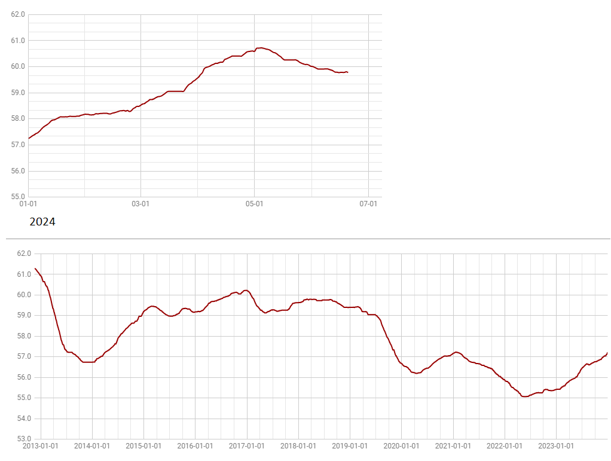 Mudando o peso 2024-06-20 [tag_body] O gráfico da tendência do meu peso em 2024 diria que não está sendo um bom ano porque ainda não voltei ao peso do início. Esse tipo de resultado pode deixar muitas pessoas ansiosas. Vi em posts da comunidade que é temível se pesar todo dia. Há um consenso que isso só te trará mal no curto prazo. Eu acredito nisso, pelo menos para pessoas onde falte a reflexão do que esse número significa: apenas o nível de água em seu organismo em um dado momento do dia. Isso não acontece comigo porque eu sei o que esse número significa e prefiro ter todo o conhecimento possível, mesmo que ele doa às vezes. mudando-o-peso |
| Sissi 2024-06-18 [tag_coffee] O espresso da casa é definitivamente o melhor que já tomei em uma cafeteria (da categoria dos da casa). Porém, tomei um espresso convidado e ele também era bem interessante. Assim como os coados. Pedi dois, também, um da casa e um convidado. O simpático barista, André, escolheu um bem exótico para eu experimentar, com tons de maracujá e carambola. Uma extravagância. Com um barista desses, quem gosta de café este é um lugar para gostar ainda mais. sissi |
| Our Coffee 2024-06-18 [tag_coffee] Escrevi um review errado há uma semana. Peço perdão (confundi com o Go Coffe da Paulista). Este é uma cafeteria muito gostosinha, com atendentes supersimpáticos e atenciosos. É uma cafeteria de bairro tamanho médio e com um ótimo espresso e filtrado. As comidinhas são gostosas a ponto de sair de casa e entrar em uma atmosfera aconchegante de início de dia ou meio da tarde. Ela fica em uma avenida movimentada e mesmo assim é possível relaxar por alguns minutos neste lugar. Não costumo voltar em cafeterias que não mudam o grão, mas esta eu voltaria pelo ambiente. our-coffee |
| Negras jogam e tem um lance para manter o equilíbrio 2024-06-18 [tag_chess] Não consegui pensar qual era o lance e acabei perdendo. Caloni do futuro, dá uma pensada no problema e veja que não é tão difícil assim. image::board.jpeg[] negras-jogam-e-tem-um-lance-pra-manter-equilibrio |
| Etchart Privado Malbec 2022 2024-06-18 [tag_wine] Mais uma vez peguei uma garrafa no Hirota e mais uma vez precisei elogiar. Ele é frutado, é leve, chega até a ser doce. E é barato. 40 reais. etchart-privado-malbec-2022 |
| Duckbill Cookies & Coffee 2024-06-18 [tag_coffee] Tinha espresso pra viagem. Pedi espresso pra viagem. O atendente me entregou o espresso pra viagem. Muito bom espresso. Recomendo. duckbill-cookies-and-coffee |
| Clemente Café 2024-06-18 [tag_coffee] Café é bom, o atendimento nem tanto (mas fomos em uma segunda, dia de funcionários cansados). As comidinhas são OK. Se fosse para escolher entre essa cafeteria e um da rede Cheirin Bão acredito que daria na mesma. clemente-cafe |
| A Ordem do Tempo 2024-06-12 [tag_movies] [tag_cinemaqui] Selecionado para o Festival de Cinema do Rio de 2023, a diretora Liliana Cavani desafia as convenções do próprio tempo. Inspirada pelo livro homônimo do físico italiano Carlo Rovelli, o filme compõe uma meditação sobre a mortalidade, a amizade e a natureza fugaz da conexão humana, além da nossa cada vez mais óbvia ignorância e incompreensão da oculta e verdadeira vulnerabilidade neste mundo. a-ordem-do-tempo |
| Sensory Coffee Roasters 2024-06-11 [tag_coffee] Cafeteria tranquila distante das ruas comerciais e que oferece um espaço amplo e tranquilo para passar a tarde tomando café e comendo alguns dos variados pratos de doces e salgados. Os pães são de fabricação própria e há o de longa fermentação que é uma delícia (experimentei o pão na chapa). O brioche também é bem legal (experimentei um com rúcula e tomate seco). sensory-coffee-roasters |
| legacy_stdio_definitions 2024-06-11 [tag_coding] Estava eu com meu Visual Studio compilando um arquivo C e de repente: unresolved external symbol sprintf Uai. Depois de 30 segundos descubro que isso não ecxiste mais e que preciso adicionar esta lib para linkar: legacy_stdio_definitions |
| Go Coffee 2024-06-11 [tag_coffee] Pedi um espresso para viagem. O atendimento é bem relapso, nem olham na sua cara. O café é bom, acima da média. Pode pedir que vai ser melhor que o bar da esquina (e levemente mais caro). Boa opção para coffee to go do lado do metrô. go-coffee |
| Fiz sour cream 2024-06-11 [tag_cooking] Uso essa receita já há alguns anos. O segredo é deixar uma caixinha de creme de leite no freezer por um tempo e retirar quando ele não estiver totalmente duro, mas um tanto molenga (ou deixar esquentar a este ponto). Bata na batedeira junto de limão e sal a gosto. Não bata demais para não virar chantily. A consistência dura por no máximo uma hora, mas se sobrar pode bater na mão novamente que ele volta à forma original. fiz-sour-cream |
| Fiz guacamole 2024-06-11 [tag_cooking] E não foi uma vez. Para essa receita não tem segredo: avocado maduro amassado ao seu gosto, tomate em igual quantia, cebola, sal, pimenta, limão, azeite e outras iguarias que preferir. Misture tudo próximo de servir. fiz-guacamole |
| Fiz Chili 2024-06-11 [tag_cooking] Há infinitas possibilidades de chili. O que eu fiz ficou bom para pegar com nachos, porque tem pouco caldo, e o que tem é levemente mais grosso para grudar no salgadinho de milho. Este não vai feijão, mas talvez experimentem em uma próxima vez. Vai carne moída (para ficar fácil de pegar com nachos) que você pode queimar em uma panela para gerar a reação Maillard e separar. Na mesma panela refogue com manteiga cebola, alho, um pouco de tomate junto de extrato e tempere com coentro, louro, páprica defumada, salsão se tiver (eu não tinha, usei alho-poró) e alguma pimenta. Escolhi uma de molho de chili para ficar com o sabor característico. Também salpiquei um pouco de molho inglês. fiz-chili |
|
Alocação sem construção
2024-06-11 [tag_coding] Meu amigo está mexendo com allocator e fez o seguinte teste, o que pode dar a ideia errada para o iniciante, porque testei aqui e deu tudo certo: #include |
| A Semente do Mal 2024-06-11 [tag_movies] [tag_cinemaqui] O título original deste filme é Amelia's Children (as crianças de Amélia), o que faz muito mais sentido que A Semente do Mal, que além de vago lembra qualquer outro terror de sustos que já tenha estreado. a-semente-do-mal |
| Assassino por Acaso 2024-06-10 [tag_movies] [tag_cinemaqui] Gary Johnson, este pacato, metódico, monótono professor de Psicologia e, como se não bastasse, Filosofia, vai aprontar poucas e boas em uma adaptação livre de sua biografia em um romance fofo e doentio na medida certa para que nós, espectadores, nos identifiquemos com as ondas da paixão entre a inesquecível Madison e o agora alterego perigoso e atraente Ron. assassino-por-acaso |
| Wonka 2024-06-04 [tag_movies] Lúdico até dizer chega, esta versão musical de Willy Wonka Origins é lúdico e fofinho porque não é dirigido pelo Tim Burton, mas por Paul King, como assim como em Paddington prioriza a magia dos sonhos. O ator francês de Duna está estranhamente à vontade e o elenco é afiado. Hugh Grant vergonhosamente pagando seus boletos como um Oompa Loompa cuja cabeça está tão mal encaixada no CGI que já vi trabalhos melhores feitos para Tik Tok. Mas o design de produção é competente, antes de ser criativo. Fundo verde para todo o lado. wonka |
| Tribunal Noturno 2024-06-04 [tag_series] Pensei que não fizessem mais séries sitcom com diálogos apressados e mal feitos como esse, mas aqui estamos em 2024. Aqueles personagens preguiçosos e uma noção zero de como agradar o espectador. É impossível assistir um episódio de 20 minutos sem pensar em dropar imediatamente. tribunal-noturno |
| A Cor Púrpura 2024-06-04 [tag_movies] Imagine um remake deste filme de Steven Spielberg de 1985, mas com personagens brancos. Ridículo, não? Deslocado. No melhor dos casos: patético. Você remove toda a carga e atmosfera cultural de uma etnia e por consequência conta uma história dissociada da realidade de seu microcosmos, este mundo das mulheres negras do início do século 20 no interior dos EUA descrito no livro homônimo de Alice Walker. É um romance epistolar, contado no formato de cartas que a protagonista escreve, mas nunca envia, para Deus e sua irmã, separada por quase toda a vida. a-cor-purpura |
| Confissões sobre jejum 2024-05-31 [tag_body] Faço jejum intermitente há pelo menos sete anos, acho que um pouco mais. Um amigo após ler no Reddit (ou coisa que o valha) estava fazendo. Ele vasculhou alguns papers de pesquisas que indicavam que a bioquímica da ramificação dos seres vivos da qual viemos (incluindo seres unicelulares) pode se beneficiar desse estado de carência de energia por tempo determinado. O que faz todo sentido dada a natureza implacável da luta pela sobrevivência e com recursos escassos ao longo de bilhões de anos. confissoes-sobre-jejum |
| Usinas de Angra (Rio de Janeiro) 2024-05-28 [tag_trips] Foram duas surpresas agradáveis saber que as duas usinas nucleares do país estão em funcionamento (uma terceira em obras paralisadas) e que há um mirante onde dentro há um pequeno museu com um sucinto vídeo de 2 minutos para leigos entenderem como a energia é produzida, além de réplicas de pedaços do maquinário usado para enriquecer e fundir urânio. A visita é gratuita e há toaletes disponíveis. Uma ótima parada se estiver na rodovia. usinas-de-angra-rio-de-janeiro |
| Santuário de Aparecida (São Paulo) 2024-05-28 [tag_trips] A basílica reformada com nova fachada deu um tom mais moderno e abstrato da religião. Parece anime. Mas manteve uma mistura entre a dedicação gótica e a simplicidade dos tempos atuais interessantes. A construção impressiona de todos os ângulos. Próximo do pôr do sol a luz incidindo fica mais bonita ainda. A loja oficial é grande e possui ótimas opções de compra de presentes, além da embalagem especial. O estacionamento é mal sinalizado e tivemos que dar três voltas até achar a entrada, além de caro. Os banheiros ficam em um andar abaixo o que pode dificultar a locomoção de algumas pessoas. O interior onde são feitas as missas mais uma vez impressiona pelo tamanho. É um lugar bem tranquilo para caminhar. Você sente paz e tranquilidade. santuario-de-aparecida-sao-paulo |
| Oishiisa (São Paulo) 2024-05-28 [tag_food] Conhecemos este restaurante há muitos anos. Moramos no bairro vizinho. Já comemos no local, pedimos para viagem e na época da pandemia usamos o delivery. Todas as opções são ótimas, a comida é fresca e servida em quantidades modestas no tamanho individual. O melhor prato é o frango karague, o melhor que já comi na cidade. Bem temperado e pouco gorduroso. oishiisa-sao-paulo |
| Kare Raisu 2024-05-28 [tag_trips] [tag_food] Receita de alguém que não achou Karê tão bom assim e em uma revisita ao Japão encontrou este restaurante [Kitchen Nankai] onde encontrou algo diferente feito de curry e que ao mesmo tempo mantém a essência do prato. O restaurante tem fila antes de abrir e pegam seu pedido antes. Se atente às coberturas do prato que vai pedir. O Katsu Curry é um karê menos comfy, um tanto amargo e mais intenso. É servido com fatias de frango à parte e o caldo é jogado ao lado e por cima. Custa 800 ienes (30 reais). kare-raisu |
| Armazém Bertolotti (Extrema - MG) 2024-05-28 [tag_food] Sempre que temos a oportunidade passamos no armazém para almoçar e até levar comida para viagem. Ela é muito saborosa e o ambiente é fantástico. Há espaço para crianças, redes para descansar, amplas mesas e muitos funcionários. O cardápio é muito variado e não experimentamos tudo, mas as opções mineiras estão mais que aprovadas. Os sucos são gostosos. O preço é alto, mas justo pela qualidade. armazem-bertolotti-extrema--mg |
| Ms. Koizumi Loves Ramen Noodles 2024-05-26 [tag_animes] Pensei que havia escrito um post sobre este anime. Devo ter me entretido demais comendo lámen durante os episódios. Bom, agora é importante delinear onde estão esses locais. O artigo "Visiting the Real Life Ramen Restaurants from Ms. Koizumi Loves Ramen Noodles [Part 1]" traça um paralelo entre o desenho e a fachada e detalhes das casas de rámen visitadas no anime. Ele criou [um mapa] para se localizar na região metropolitana de Tóquio. ms.-koizumi-loves-ramen-noodles |
| Zorzal Gran Terroir Cabernet Franc 2021 2024-05-25 [tag_wine] Proveniente do centro-norte da região denominada Gualtallary. É uma zona alta e com solo sedimentado com granito e "calcáreo". Guardado em barricas de roble francês. Sinceramente achei muito bom, e foi melhorando ao longo dos dias. Não é marcante, mas é um ótimo vinho. zorzal-gran-terroir-cabernet-franc-2021 |
| The Heimatdamisch: Sweet Child o' Mine (Guns n' Roses) 2024-05-25 [tag_music] Tive que ver os outros trabalhos. A energia da banda irradia além da obra original. Eles criaram outra coisa que não é paródia. É um trabalho honesto e encantador pela sinceridade que provoca em nossas reações. Mas isso não impede que eles riem de si mesmos. Que época para estar vivo! the-heimatdamisch-sweet-child-o-mine-guns-n-roses |
| Petnat Rosado Malbed (Burbujas de Altura) 2024-05-25 [tag_wine] Eu pensei que o primeiro Burbujas de fermentação in vitro que havia abrido estava estragado. No entanto, este também se mostrou com cheiro de pum assim que o abri, mas após uma hora ele estava apenas levemente azedo e parecendo um vinho rosé comum, apesar de bem saboroso. petnat-rosado-malbed-burbujas-de-altura |
| Minha Madrasta é uma Alienígena 2024-05-25 [tag_movies] Kim Basinger é de outro mundo. Aqui ela protagoniza uma cena com Dan Aykroyd em que sua lingerie deixa perceber como seus peitos perfeitos são durinhos. Aykroyd faz junto da menina de How I Met Your Mother uma versão pai e filha de Contato com um humor peculiar dos anos 80. Basinger é a alienígena esposa americana perfeita. Loira com tudo em cima, ignorante sem ser chucra. Este filme repete a fórmula de Pai e Mãe Salvam o Mundo em salpicar um filme sobre o espaço em uma comédia familiar levemente picante. minha-madrasta-e-uma-alienigena |
| Wireguard reconfiguring AllowedIPs can cause issues 2024-05-16 [tag_english] [tag_coding] When reconfiguring Wireguard AllowedIPs list it could happen that previous or parallel connections (race condition) send/receive packets to/from forbidden IPs. This is not a problem if this connections are eventually closed. However, worth noticing. wireguard-reconfiguring-allowedips-can-cause-issues |
| Sacred Cow (Diana Rodgers and Robb Wolf) 2024-05-16 [tag_body] [tag_books] Lendo este livro indicado em algum [podcast da Tribo Forte]. Também coletando outras opiniões, como o famoso [artigo do The Guardian] desbancando 18 argumentos a favor de comer carne; este assunto parece espinhoso na comunidade científica ou é apenas fumaça da mídia? sacred-cow-diana-rodgers-and-robb-wolf |
| Fazenda Pessegueiro 2024-05-16 [tag_coffee] Já conhecia a embalagem, mas não me lembro de ter degustado algum café desta fazenda. A embalagem é fácil de ser encontrada em mercados de bons bairros. A fazenda é centenária e da terra do [Delduca]. fazenda-pessegueiro |
| Mom and Dad Save the World 2024-05-14 [tag_movies] Esta aventura para toda a família apresenta o casal Nelson sendo raptado no final de semana do aniversário de 20 anos de casamento por um imperador de um planeta de idiotas. Arte criativa com efeitos datados mas eficientes graças ao design de produção teatral mas rebuscado o suficiente. É a indústria do entretenimento dos anos 90. O humor não é tão infantil, sendo o melhor as piadas internas entre o casal. O carro deles estão viajando pelo espaço sideral e o marido fica preocupado com a gasolina acabando e o nível do óleo. Escrito pelos mesmos de A Fantástica Aventura de Bill e Ted. mom-and-dad-save-the-world |
| De Repente, Miss! 2024-05-14 [tag_cinemaqui] [tag_movies] Eu queria ter esquecido este filme, e depois de passar uns dias eu quase consegui. Porém, estava em uma sala de espera, dessas da vida cotidiana, uma TV sintonizada em um canal aberto, e lá estava a Fabiana Karla (Os Parças 2) promovendo seu trabalho nesses infinitos programas vespertinos. E todas minhas memórias voltaram, para minha tristeza. de-repente-miss |
| A Pequena Loja dos Horrores 2024-05-11 [tag_movies] Este filme de Frank Oz (Muppets) é um dos exemplos do que estava falando com o pessoal no Telegram sobre musicais hoje em dia perderem tão fácil a nossa atenção. Olhe como os atores de The Little Shop of Horrors estão ligados no 220 em uma produção adaptada do teatro, mas com uma direção apaixonada em idealizar cada ângulo como uma nova forma de interpretar esta fábula sobre o American Way of Life ®. a-pequena-loja-dos-horrores |
| O Problema dos 3 Corpos 2024-05-10 [tag_series] Este, sim, é uma série pretensiosa e que não diverte. Ela finge saber de ciência e de cientistas, que querem se matar porque as leis da natureza contrariam as últimas descobertas. Deprimente para quem realmente ama ciência. Lembra as inúmeras discussões pseudocientíficas sobre as vacinas do Covid. Os excessos de cartilha social pesam demais em uma produção que não é barata, já que seus personagens são diversos, mas todos igualmente estúpidos para as questões da vida. Não existe identificação no presente da série, quando um evento singular coloca os olhares humanos para o céu. Porém, é relativamente simples de se distrair com a história do passado comunista da China. Porém, não tão instigante quanto a série Chernobyl, onde questões éticas, políticas, filosóficas e científicas embalam um thriller dramático com ares quase documentais. 3 Corpos é tudo isso ao contrário pelo mesmo preço. o-problema-dos-3-corpos |
| Mrs. Davis 2024-05-10 [tag_series] Interessante uso da progressão de uma IA global que domina os humanos ao resolver todos os problemas. Eles viram a marionete da máquina como os homens do século 14 eram os marionetes da fé. A série traça esse paralelo com um certo charme na produção. Não soa pretensioso e ganhou minha simpatia. É divertido sem ser cafona ou sem coração. Ter uma freira protagonista resgata alguns valores esquecidos na pós-modernidade. O dinamismo das cenas e a falta de peso aumentam a diversão. Corre o risco de se perder pela irrelevância, mas o saldo já ficou positivo no primeiro episódio. mrs.-davis |
| Etchart Privado Torrontés 2024-05-10 [tag_wine] Levei para a casa dos amigos esta garrafa barata e fácil de achar no Hirota. Este é o melhor custo benefício do país se quiser um ótimo Torrontés de Cafayate. Eu nem sei como eles conseguem esta ótima promoção. Aromático para melão e com boa intensidade no sabor, além de refrescante. Menos enjoativo que Chardonnay para o verão. etchart-privado-torrontes |
| Carmine Granata Gran Reserva Roble 2018 2024-05-10 [tag_wine] Abri mais um Carmine Granata da viagem (Gran Reserva) e dessa vez estava muito melhor. Dois anos de canto deixou ele muito mais interessante. carmine-granata-gran-reserva-roble-2018 |
| Jurassic Park 2024-05-08 [tag_movies] Envelheceu bem. Os efeitos quase convencem. A junção da computação com partes mecânicas e bom uso de ângulos fez um ótimo serviço. Este é um roteiro simples para não estragar o apelo comercial de uma produção bem cara para a época, mas não evita tratar das questões éticas por trás da manipulação biológica dos cientistas do parque em trazer de volta à vida criaturas de outra era para conviver com os humanos. Seu ritmo definitivamente é bem mais lento que as aventuras de hoje e a segunda trilha de John Williams soa amassada. O mesmo não posso dizer da música tema, um hino até hoje inesquecível pela solenidade da ocasião, da comemoração dos milagres da ciência e da vida. Todo o elenco é escolhido a dedo para viverem a aventura do americano branco médio. Jeff Goblin adiciona um pouco de caos e irreverência e as crianças, particularmente a menina, mantém o pique através das diferentes situações em que o filme os coloca em perigo. Spielberg, sóbrio e se divertindo como sempre, mantém os mínimos detalhes em foco. Repare que o enquadramento coloca o gordinho traíra ao fundo de costas apenas para nas próximas cenas revelar o conflito na história. Samuel L. Jackson está invisível, nem parece que no ano seguinte protagonizou nada menos que Pulp Fiction. Esta é uma aventura nos moldes clássicos que cria uma lenda reverberando a casa continuação. A lenda de que o homem verá monstros entre eles com o advindo dos milagres biológicos. jurassic-park |
| Flexibilizando retorno de métodos mockados 2024-05-08 [tag_coding] Usando Moq para criar testes unitários em C# e penando para conseguir retornar valores diferentes para chamadas diferentes da interface mockada descobri finalmente este artigo que dá alguns exemplos para retornar múltiplos valores através da mesma chamada de um método mockado. flexibilizando-retorno-de-metodos-mockados |
| Vinland (Burbujas de Altura) 2024-05-01 [tag_wine] Nossa visita mais simpática da viagem em Cafayate foi esta Burbujas de Altura, onde descobrimos uma bodega nova indo de motinha, a alguns kms da cidade. O proprietário trabalhou a vida da bodega ao lado, Ele Esterco, e agora com os filhos criados (uma enóloga) e sua esposa o ajudando, a família conseguiu com sucesso desenvolver um Torrontés espumante. vinland-burbujas-de-altura |
| Mantendo o mesmo repo com dados públicos e privados 2024-05-01 [tag_coding] Como isso é possível? No git você pode publicar o repositório orientado a branches, o que quer dizer que é possível manter uma branch com dados públicos e outra branch com dados privados (e esta última não é acessível). mantendo-o-mesmo-repo-com-dados-publicos-e-privados |
| Linha WR (Wolff Café) 2024-05-01 [tag_coffee] Provei dois grãos convidados na Kiki deste fabricante. Você já deve ter visto a embalagem quadrada dele papel diferentona com um lobo em origami. O que mais gostei foi o Damasco, Pêssego Verde e Mel passado no V60 porque ele ficou com uma doçura agradável que toma conta do copo e junto embala os tons de pêssego e talves damasco (não detectei tão fácil). A acidez deste é bem equilibrada. Diz a Kiki que era para ser o mais cítrico, mas não achei. linha-wr-wolff-cafe |
| Peixinho/Lagarto de Dona Neusa 2024-04-29 [tag_cooking] Esta receita copiada do livro de receitas de Dona Neusa diz que se usa 2kg de carne lagarto ou peixinho. Outros ingredientes: laranja ou vinho, cebola, alho, 1 colher de sal por kg de carne, caldo de carne, pimenta do reino, óleo, salsinha. peixinho/lagarto-de-dona-neusa |
| Iniciando estudos em Low Carb 2024-04-29 [tag_blogging] [tag_body] Em linhas gerais, as regras básicas da alimentação Low Carb são: - Eliminar o açúcar; - Cortar os grãos, especialmente o trigo e seus derivados; - Evitar raízes, principalmente para os que precisam perder mais peso; iniciando-estudos-em-low-carb |
| Bodebrown Trooper Iron Maiden 2024-04-29 [tag_trips] [tag_beer] Esta cerveja de Curitiba é feita com nibs de cacau e o resultado é uma mistura de lúpulo com doce que quando bem gelada dá uma sensação muito refrescante e satisfatória. A primeira vez que provei senti que era uma das melhore cervejas que já tinha provado. A partir da segunda nem tanto, mas digna de nota. bodebrown-trooper-iron-maiden |
| Barreado do Restaurante Casarão 2024-04-29 [tag_cooking] Ingredientes para 6 pessoas: 2kg de carne de segunda (músculo, lombo, etc), 2kg de cebola, 100g de bacon, 100g de alho (sim, é bastante), 1 colher de sobremesa rasa de cominho (eita, que pouco), 4 folhas de louro, sal e pimenta a gosto. barreado-do-restaurante-casarao |
| Al Capone IPA Sem Glúten 2024-04-29 [tag_beer] Bem aromático ao abrir, uma porrada no estômago ao beber. Deve ser apreciado com calma. De Porto Alegre. al-capone-ipa-sem-gluten |
| Ursinho Pooh: Sangue e Mel 2 2024-04-27 [tag_cinemaqui] [tag_movies] Um dos melhores filmes do ano passado, “Ursinho Pooh: Sangue e Mel” catapultou o assunto de direitos autorais quando o produtor Rhys Frake-Waterfield se aproveitou da expiração dos direitos do livro escrito em 1926 por A. A. Milne sobre um ursinho fofinho e seu amigo humano para fazer um slasher com máscaras de gosto duvidoso e mortes brutais sem sentido em meio a nudez feminina com fantasias dos anos 80. Em uma palavra: sensacional. Quando um filme no século 21 consegue um feito desses é uma ocasião rara. Houve também pontos de bônus por deixar a crítica especializada naquele alvoroço sobre o terrível mau gosto de Frake-Waterfield. ursinho-pooh-sangue-e-mel-2 |
| Um Lugar Silencioso 2024-04-27 [tag_movies] Ideia maturada desde o colégio pela dupla Scott Beck e Bryan Woods, ela é desenvolvida com a ajuda de John Krasinski, que assume a direção e um dos papeis junto de sua esposa na vida real Emily Blunt. Ambos fazem uma família de três filhos e um a caminho vivendo em um mundo apocalíptico onde alienígenas cegos com audição apurada ouvem cada movimento para caçar. um-lugar-silencioso |
| Ugliest House in America 2024-04-27 [tag_series] A hostess deste programa é ruim. Ela não é muito engraçada nem tem personalidade. O programa (ela) irá julgar a casa mais feia da América baseada em percepções tiradas da bunda. As casas não são tão feias assim. Você não pode mais falar de feiura nas pessoas e agora este programa é um escape para falarmos de feiura nas casas das pessoas. Julgadas por uma hostess feia e gorda. ugliest-house-in-america |
| The Hacker's Diet (John Walker) 2024-04-27 [tag_self] [tag_body] [tag_books] > This book is a compilation of what I learned. Six months after I decided being fat was a problem to be solved, not a burden to be endured, I was no longer overweight. Eu não acredito que deixei passar o review deste maravilhoso livro que já li duas vezes. Reli no final do ano passado porque precisava reeducar meus hábitos alimentares e parar de usar jejum intermitente como muleta de manutenção de peso, pois o corpo ao longo dos meses se acostuma e você não consegue mais perder peso porque seu metabolismo basal é muito baixo. the-hackers-diet-john-walker |
| The Big Bang Theory 2024-04-27 [tag_series] Série de sitcom que explora o perfil desajustado de nerds em conflito com pessoas comuns. Como Penny, a nova vizinha de Sheldon Cooper e o outro nerd. Como nerd você se sente à vontade no ambiente, ele é quase reconhecível das memórias. As piadas são boladas para funcionar em dois níveis. Algumas funcionam e a maioria ou funciona para nerds ou funciona para pessoas comuns. É um experimento curioso de TV que escalou por causa do culto nerd da geração. Outra curiosidade do show é que os estúdio da Warner onde a série é gravada há uma plateia que pode participar e reagir. Os roteiristas e o elenco improvisam para sentir a temperatura das piadas em tempo real e a versão editada vai para a TV. Foi isso que explicou a guia quando fomos visitar os estúdios. the-big-bang-theory |
| Só Freaking Cheap 2024-04-27 [tag_series] Série divertidinha de famílias que mantêm a cultura da frugalidade. Ou seja: eles são mão de vaca pra caralho. Edição ágil, diferente de outras que embaçam a história. Porém, nada impactante o suficiente para chamar a atenção de ver mais episódios. so-freaking-cheap |
| Road Rage 2024-04-27 [tag_series] Esta série é muito ruim. Ela estende episódios de conflitos no trânsito em vários minutos enquanto no Telegram você encontra Gifs de segundos, melhor editados e sucintos. Aqui tenta-se criar caso com detalhes desimportantes quando motoristas em várias situações brigam uns com os outros. road-rage |
| Prestinaria - Bigorrilho (Curitiba) 2024-04-27 [tag_trips] [tag_coffee] Este lugar foi um achado na nossa última visita a Curitiba. O café é excelente, eles têm vários métodos para experimentar. A padaria é de verdade. Pão com longa fermentação na chapa é maravilhoso. O croissant é um dos melhores que comi. Fomos duas vezes. Na segunda vez estava mais cheio e ficamos em um lugar lá fora batendo um pouco de sol, mas logo que vagou uma mesa interna nossa atendente sugeriu mudarmos. O proprietário estava por lá nesse dia. Achei o staff muito simpático e eficiente. Nem tive tempo de provar os doces, mas com certeza voltarei na próxima visita. prestinaria--bigorrilho-curitiba |
| Os Bad Boys 2024-04-27 [tag_movies] Este filme de ação de estreia de Michael Bay mantém o bom humor graças à dinâmica da dupla Will Smith e Martin Lawrence. As piadas nem sempre são boas, mas ambos estão presentes na cena, o que faz toda diferença. Há uma sequência de perseguição digna de nota, orquestrada por Bay, que demonstra ser um dos melhores em ação. Deveria ter permanecido assim em vez de partir para franquias de robôs gigantes. os-bad-boys |
| O Lagosta 2024-04-27 [tag_movies] No começo é estranho. O filme é estranho. Essa música forçosamente melancólica com um toque de Hitchcock e o uso de câmera lenta tornam algumas cenas piegas e lembra Zack Snyder. Mas continue, vale a pena. Adentramos em um mundo novo, cuja parte que eu mais gosto é que não é explicado. Nessa sociedade você precisa estar casado. Esta é a lei. Quando ele se divorcia porque a mulher encontra alguém que usa lentes de contatos (ambos usam óculos, imagino) ele parte para um hotel que tem o projeto de em 45 dias conseguir uma nova parceira. Ou isso ou a punição: ser transformado em um animal de sua preferência. Tudo é sua escolha. Essa é uma parte legal também do enredo. Todos aceitam o funcionamento, mas ele sempre como uma face Winston de 1984, de que ou isso ou a morte. Se trata de uma adaptação literária e a melhor sacada é a narração em off que usa como desculpa um caderninho de anotações de uma personagem que se tornará chave. O filme começa forçado e da metade para o final ganha novos contornos. Ele fica melhor, diferente da imensa maioria dos filmes. Seu ritmo permite pensarmos em casa cena em vez do filme explicar o que devemos pensar. E a história pode dizer muitas coisas, mas não ousa apontar para nada. São apenas sugestões. Um parceiro que te mataria para sobreviver pode ser uma escolha instintiva, mas após a decisão de puxar o gatilho, mesmo que não mate sua amada, mata a relação. Todos buscam algo em comum com o parceiro, mas precisa ser algo muito forte ou natural, que ambos não possam mudar. Este filme fala de muitas coisas apesar de ser sobre uma visão estranha sobre relacionamentos. Quase infantil. Mas entendemos a piscada de olhos. O roteiro possui diálogos que não são naturais. Essas pessoas são robotizadas. O elenco está hipnotizado em seus papeis e mantém um tom difícil de ser visto no cinema. Todos estão exatamente no esforço necessário para que a história se mantenha coesa. Seus personagens afirmam em uníssono que universo é este que habitam. É difícil saber se alguém de fora dele conseguiria decidir o que fazer. Nem isso o filme nos entrega. No final a trilha melodramática cumpre sua função. Um terceiro ato filosófico. O filme é dirigido pelo mesmo cara de A Favorita, outro filme exemplar em sua temperatura constante. O autor propõe um mergulho profundo em um mundo ligeiramente diferente do nosso e nos faz pensar em coisas além do cotidiano. É diferente demais para comparação com o mundo real, e é isso o que torna o filme tão belo. É um verdadeiro escape. Não precisa pensar demais. É uma sensação. o-lagosta |
| Extreme Couponing 2024-04-27 [tag_series] Mais um da série de pessoas que economizam, este foca no uso de cupons de revistas que podem deixar as compras bem mais baratas, se você for organizado o suficiente e tiver um lugar para manter estoque de tantas compras. Estas duas mulheres do primeiro episódio são as melhores usuárias destes cupons e conseguiram em seus recordes comprar milhares de dólares com apenas algumas centenas. Esta cultura não existe no Brasil. Aqui há mais assinaturas de fidelidade que dão pequenos descontos em compras todos os dias. Mas é interessante conhecer. extreme-couponing |
| Extreme Chepstakes 2024-04-27 [tag_series] Série que se baseia em pessoas que economizam compulsivamente. Eles coletam comida do lixo e das mesas ao lado onde comem. Explorações em caçambas e em brechós não são incomuns. Certo que há muito lixo aproveitável na América, mas o nível de mão de vaca dessas pessoas é patológico. No entanto, há algumas dicas bacanas para economizar e inspira a modéstia e frugalidade. extreme-chepstakes |
| Evidências do Amor 2024-04-27 [tag_movies] Este filme tem uma atriz de nome Sandy que é uma ótima cantora. Muito mais que atriz. Nós vemos a ausência de expressões em sua personagem, que no caso do roteiro sequer tem história de fundo. Este é um filme sobre sensações genéricas de um casal que se separou e quer entender o porquê. Para isso ambos vivem a maldição ou a benção de reviver os melhores e piores momentos do relacionamento. O outro “ator”, Fábio Porchat, nada pode fazer neste drama, pois é comediante e sua voz é impossível de criar qualquer dimensão que não seja feita de risadas. O filme acaba não sendo suportado nem pelo roteiro e nem pelos atores. Então ele apela para o que todo mundo apela no Brasil como sinônimo de bom gosto: a piada de contar Evidências, música icônica da última década que virou uma espécie de hino nacional brega, cantada inúmeras vezes em karaokês. E ela nem é uma música tão boa assim. Pelo menos nisso a escolha foi feita em sintonia com o filme. evidencias-do-amor |
| Cheirin Bão (Curitiba) 2024-04-27 [tag_trips] [tag_coffee] Cafeteria de rede com o tema culinária mineira. Os cafés são muito bons, experimentei a degustação e foi acompanhado com um café de mercado, que eu recomendo para a pessoa entender a diferença com os cafés especiais. A atendente estava muito empolgada quando perguntamos sobre o transporte público de Curitiba. Foi bacana conhecer um pouco mais. A comida estava OK, mas nada que não se encontrasse em outros lugares. cheirin-bao-curitiba |
| Cantinho do Eisbein (Curitiba) 2024-04-27 [tag_trips] [tag_food] Ambiente muito bacana. Restaurante tradicional alemão. O joelho de porco que pedimos para duas pessoas deu moderadamente para três. Os acompanhamentos são bons. O garçom muito atencioso trouxe uns molhinhos para acompanhar o joelho e dar um toque a mais. O applestrudel de maçã maravilhoso, diferente, com as maçãs cortadas em camadas bem finas. Eu voltaria. cantinho-do-eisbein-curitiba |
| Bird Box 2024-04-27 [tag_movies] Suspense apocalíptico com Sandra Bullock. Não há sustos, é mais drama. O drama é continuação da história de M. Night Shyamalan, The Happening (Fim dos Tempos), onde um surto suicida acomete boa parte da população. Aqui as pessoas que olham para a coisa se matam, mas em ambos os filmes é algo que está no vento e que sugere movimento pelas folhas das árvores. O filme de Shyamalan foi sepultado pela crítica, mas eu gosto bastante. Este tem uma pegada mais comercial, tenta explicar o fenômeno e possui uma protagonista com mais presença. Sandra Bullock está entre as melhores atrizes em atividade por décadas. Mark Wahlberg, do outro filme, não consegue competir por causa que a péssima Zooey Deschanel está do lado dele. bird-box |
| A Teia 2024-04-27 [tag_cinemaqui] [tag_movies] Novo thriller psicológico tem estreia do roteirista [Adam Cooper] ([Assassin's Creed], [Exodus: Gods and Kings]) na direção e coloca [Russell Crowe] em uma espiral de arquétipos do gênero lutando por uma história original. A parte original é que ele tem Alzheimer, mas está levando uma vida normal e sozinha, pois está participando de um tratamento experimental, mas revolucionário, que pode curá-lo. a-teia |
| O Menino e a Garça 2024-04-17 [tag_movies] Finalmente fui ao cinema assistir a este confuso filme Ele desafia possivelmente até o fã de anime a ficar acordado. Após incontáveis devaneios narrativos o desejo inconsciente de dormir é irresistível. o-menino-e-a-garça |
| Velozes e Furiosos 2024-04-15 [tag_movies] O primeiro filme da série mais de vinte anos depois. É uma boa história com um roteiro não muito convincente. O forte são as cenas de ação e uma aura de lenda que permanece no ar. Sobre gangues, respeito e confiança. Paul Walker segura seu protagonismo como pode enquanto Vin Diesel tem a difícil tarefa de um ladrão inspirar integridade. velozes-e-furiosos |
|
Tail recursion in loop while
2024-04-15 [tag_english] [tag_coding] Interesting optimization of recursion using tail function. Consider this: void RecursiveFunction(ref HashSet |
| Cognitive Complexity (SonarQube) 2024-04-15 [tag_english] [tag_coding] - Increment when there is a break in the linear (top-to-bottom, left-to-right) flow of the code. - Increment when structures that break the flow are nested. - Ignore "shorthand" structures that readably condense multiple lines of code into one. cognitive-complexity-sonarqube |
| Ami Café 2024-04-15 [tag_coffee] Conheci este café por causa da Kiki Café, que selecionou os grãos como café convidado. Fui conhecer com os amigos e peço desculpas por ocupar o pequeno espaço por tanto tempo. Apesar de pequeno ele é aconchegante. Se deve pedir no caixa e há apenas uma opção de grão, o que achei estranho, por ter ouvido falar que elas fazem também a torrefação. Não há detalhes sobre isso no cardápio. O espresso e o coado são muito bons. A localização é ótima para tomar um café agradável quando estiver por perto da região. ami-cafe |
| Vidas em Jogo 2024-04-13 [tag_movies] [Michael Douglas] interpreta Nicholas van Holt, um babaca solitário de meia-idade sem traços de humanidade. Ele é um multimilionário responsável pelo legado do pai, que se matou quando Nick era apenas um garoto. Os flashbacks de vídeos caseiros remontam à época do patriarcado na mesma medida que a era da família, e iniciam um filme de ação fantástico que começa quando ele ganha de aniversário do irmão ([Sean Penn]) um convite para uma experiência que irá dar a ele os sentimentos e as emoções que lhe faltam pelo preço de um salto de fé que mesmo alguém tão seguro de si não está disposto a pular. vidas-em-jogo |
| Your Movie Sucks - Roger Ebert (Roger Ebert) 2024-04-13 [tag_books] [tag_quotes] If I were to see it again and again, I might be able to extract an underlying logic from it, but the problem is, when a movie’s not worth seeing twice, it had better get the job done the first time through. eckhart-tolle |
| Standup do Igor Guimarães no Amazon Prime 2024-04-08 [tag_series] Ele tem 44 minutos e parece que não acaba nunca de tão ruim. O nonsense do comediante está fora de controle em um nível que crianças brincando conseguem produzir conteúdo mais criativo. Ele começa razoavelmente bem com o número de um boneco de ventríloquo, mas as ideias param por aí e no lugar há muito improviso que não funciona. A plateia é simpática às tentativas, mas aos poucos Igor perde sua simpatia. Há um limite em que se pode continuar ofendendo o público ou falando absurdos e continuar sendo engraçado. Não é sobre o absurdo ou sobre a censura de poder fazê-lo. É uma questão de bom gosto, mesmo. O bom humor precisa construir algo. Viver apenas de aplausos só confere a mediocridade conhecida dos standups brasileiros. standup-do-igor-guimaraes-no-amazon-prime |
| Midway da Goose Island 2024-04-08 [tag_beer] Tem um lúpulo mais saboroso que amargo. Quebra um ponto esse jogo idiota de IPA ter que ser cada vez mais amargo. Esta é leve para o verão. midway-da-goose-island |
| Indexação do conhecimento 2024-04-08 [tag_blogging] A próxima evolução do blogue deve focar na indexação do conhecimento. Posts indexados por palavras-chave marcadas no texto como links. Se houver um link disponível o blogue apontará para ele. Porém, se não houver links ou se estivermos publicando um ebook está palavra vai e volta de um índice de termos. Cada termo terá sua lista agrupando as referências. indexaçao-do-conhecimento |
| Git Fiction 2024-04-08 [tag_fiction] Linus Torvalds, criador do sistema operacional Linux, deve se considerar um deus. E de certa forma ele é, pensou Fulano, que a esse momento estava filosofando sua própria condição. Mas não por causa do Linux. Por causa do Git. git-fiction |
| A Gaiola das Loucas 2024-04-08 [tag_movies] Uma comédia dos anos 90 adaptada de um filme francês da década de 70 que por sua vez foi adaptado de uma peça de teatro da mesma época. Porém, verdade seja dita, a peça francesa foi tão boa que atravessou duas continuações cinematográficas, foi adaptada para um musical americano nos anos 80 e finalmente caiu nas graças de Hollywood, que conduziu uma farsa hilária pela comédia de situação, e por falta de tensão em seu final uma mensagem de amor e compreensão sob todos os aspectos. Esta história inocente coloca uma família de um político conservador em crise em rota de colisão com o dono de uma casa de shows de drag queens. A melhor mensagem da trama é seu companheiro que faz a mulher perfeita: dona de sua própria voz e conservadora nos costumes. E ela é um homem. A ironia fina desta obra atravessa não apenas um oceano, mas camadas de significado entre gerações. a-gaiola-das-loucas |
| Undoing Yourself (Christopher S. Hyatt) 2024-04-02 [tag_books] > The only way out is in. > YOU CAN'T BE BORN AGAIN WHEN THERE IS NO YOU Lendo este livro sobre meditação recomendado no livro Prometheus Rising (ainda preciso escrever sobre esse). Todos os autores se conversam e usam essa editora como linha de frente de publicação de suas ideias. O livro é experimental, para não dizer inacabado, e na mesma vibe dos pensamentos de Robert Anton Wilson e Timothy Leary (entre outros), ele brinca com sua mente. undoing-yourself-christopher-s.-hyatt |
| Miniatura de Caro-Kann 2024-04-02 [tag_chess] É um aperto quando você não pode fazer o roque... image::board.gif[] 1. e4 c6 2. Nf3 d5 3. exd5 cxd5 4. d4 Nf6 5. Bb5+ Nc6 6. Ne5 Bd7 7. c3 Nxe5 8. dxe5 Bxb5 9. exf6 exf6 10. a4 Ba6 11. b4 Bc4 12. Nd2 Qe7+ 13. Ne4 Qxe4+ 14. Be3 miniatura-caro-kann |
| Zona de Risco 2024-03-30 [tag_cinemaqui] [tag_movies] Filmes de guerra estão em baixa? Não havia muitas pessoas na cabine de imprensa de Zona de Risco. Bom, não é dos gêneros mais populares. Talvez nunca tenha sido, se limitando quase sempre aos clássicos da luta interna de seus personagens, assim como boxe e outros esportes. Porém, se trata de um ótimo entretenimento para se ver na telona. E não é só pelas explosões, tiros e bombas. Há neste longa o desenvolvimento de uma ideia fina, quase sutil, sobre tecnologia na guerra e distrações do mundo moderno, que faz pensar por um breve momento; para um filme de ação já é muito. zona-de-risco |
| Treinamento do Datilógrafo (The Typewriter Training) 2024-03-30 [tag_self] Há fóruns e mais fóruns na internet cheio de escritores querendo saber como fazer para começar a escrever. Uma das técnicas mais eficazes é simplesmente sair escrevendo sem parar. Isso serve para bloqueios e reescritas inconscientes que fazemos ao tentar reformular uma frase assim que ela foi criada. Torna o ato de escrever mais próximo do pensamento em si: um fluxo ininterrupto de cognição interna. Erros não devem ser corrigidos. Nem acentos. Usar o backspace é proibido. Assim como nos velhos tempos da datilografia. treinamento-do-datilografo-the-typewriter-training |
| Stoicism 101 2024-03-30 [tag_quotes] [tag_philosophy] Amor Fati: I will accept and love my fate, no matter what is it. Memento Mori: I will die one day. There's no time to waste. Premeditatio Malorum: I will face hard times, my mind must be prepared. Summum Bonum: My focus must always be on the ultimate good - acting virtuously. stoicism-101 |
| Salt, Fat, Acid, Heat 2024-03-30 [tag_books] # Clippings ## Salt Though all salt crystals are produced by evaporating water from saltwater brine, the pace of evaporation will determine the shape those crystals take. Our taste buds can discern whether or not salt is present, and in what amount. But salt also unlocks many aromatic compounds in foods, making them more readily available as we eat. The simplest way to experience this is to taste an unsalted soup or broth. salt-fat-acid-heat |
| Restaurante Lamen ASKA 2024-03-30 [tag_food] Fui conferir o novo local da minha casa de lamen favorita de todos os tempos e não me decepcionei. O novo local é maior, amplo, igualmente com fila, mas que deve andar mais rápido. Fomos logo na abertura onde há uma pequena fila, mas já deu para entrar. O lamen e o guioza continuam o estado da arte. Provei novamente o shoyu lamen, levemente gorduroso, mas saboroso em equilíbrio. O guioza tem a massa fina na medida e aquela pequena crosta queimada que é uma delícia com o tempero e os molhos servidos. Eles aceitam Pix e dinheiro. O serviço é opcional e é colocado em uma caixinha à parte na hora de pagar. restaurante-lamen-aska |
| Refúgio (Marco Aurélio) 2024-03-30 [tag_philosophy] [tag_quotes] "Os homens procuram refúgio no campo, no litoral, nas montanhas; e você também tem anseios frequentes por tais distrações. No entanto, certamente isso é uma grande tolice, já que você pode se retirar para dentro de si mesmo a qualquer hora que quiser. Em nenhum lugar um homem pode encontrar um refúgio mais tranquilo e mais cheio de lazer do que em sua própria alma, especialmente quando há algo dentro dele sobre o qual, se ele apenas olhar, estará imediatamente em repouso. E o resto eu considero nada mais que perfeita ordem na alma. Portanto, permita-se este retiro constante, e, assim, renove-se." - Marco Aurélio refugio-marco-aurelio |
| Priscila, a Rainha do Deserto 2024-03-30 [tag_movies] Priscila é o busão que leva três coroas que gostam de se vestir de mulher para um road movie dos anos 90, quando “cavalheiros estavam em extinção e transexuais estavam se reproduzindo como coelhos”. Profético e espirituoso, sua alma são esses três atores maravilhosos em uma escalação pra lá de inspirada. Terence Stamp havia feito uma década atrás General Zod, arqui-inimigo de Superman. Sua cara fechada conclui várias tiradas do filme e gera mais profundidade ao suposto drama. Hugo Weaving (Matrix, Senhor dos Aneis) empresta seus tons ardilosos e sua voz mais serena para um ser que está sempre se julgando quando o mundo não parece se importar. Seu oposto é o personagem de Guy Pearce (Amnésia), expansivo e correndo o risco de ser uma bicha genérica. As locações no deserto australiano e o figurino brega fantástico dão o charme final a um trabalho parcialmente musical, dramático e cômico. Nenhum dos três gêneros possui a energia que merece. O final é uma sessão da tarde que impõe o apelo comercial para um projeto precursor, que precisa apresentar a mitologia trans para os não iniciados. Na época quase toda a humanidade. priscila-a-rainha-do-deserto |
| Por Um Punhado de Dólares 2024-03-30 [tag_coffee] É uma franquia. Eu vi os barris de café disponíveis na cafeteria do centro, mas o espresso que provei de lá não chegava próximo de um especial, mas de um comunzinho de rede. Possui as notas de azedo que tanto as pessoas gostam hoje em dia, mas insosso no corpo e um amargor desagradável para quem espera um café especial. Pode ter sido um mal dia. O ambiente é um pouco bagunçado e mal iluminado, mas dá um ar charmoso decadente que o centro da cidade já oferece ao ar livre. por-um-punhado-de-dolares |
| Kimchi Coreano 2024-03-30 [tag_cooking] Ingredientes: acelga, uma maçã, pimenta vermelha coreana, cebola, cebolinha, alho, açúcar, sal. Ingredientes opcionais: nabo, pimentão vermelho, gengibre ralado ou em pó, caldo de peixe (ou hondashi). kimchi-coreano |
| Doce de Leite Argentino 2024-03-30 [tag_cooking] Durante minhas pesquisas para fazer o doce de leite argentino fiz várias pesquisas, testes e anotações. Pretendo ignorar tudo isso porque meu modus operandi na época seguia a ideia que deve-se ficar na receita e nos detalhes. Não está errado, mas mais importante é entender a função de cada ingrediente na receita e a função de cada passo. doce-de-leite-argentino |
| Os dividendos do Café 2024-03-30 [tag_coffee] O café da Dividendo Café, que achamos no dia do aniversário da Mitiko em Mauá, está um pouco mais azedo essa semana. Ele não era tanto semana passada. Agora veio uma doçura bem agradável. Foram dias interessantes passando este café. O bom do lugar é que é uma microtorrefação e o dono faz as torras. Os dois espressos provados por lá estavam sensacionais. Para mim este é o novo crème de la crème dos cafés especiais: ir em uma microtorrefação em que as torras são pequenas e precisas, de acordo com a personalidade do mestre torrador. Os cafezes que conheci de marca ou dos mais popularzinhos como Coffee Lab ou Por Um Punhado de Dólares não chegam próximo do cuidado desses lugares menores. Café é um assunto que exige detalhes além da capacidade de um simples negócio. Não adianta jogar um monte de funcionários para trabalhar uma torra, por melhor que ela seja. Talvez apenas com bons e dedicados baristas, o que é difícil de achar se você precisa escalar os negócios. Coffee Lab é gigante se comparado a uma microtorrefação e Por Um Punhado é uma franquia. Eu vi os barris de café disponíveis na cafeteria do centro, mas o espresso que provei de lá não chegava próximo de um especial, mas de um comunzinho de rede. Possui as notas de azedo que tanto as pessoas gostam hoje em dia, mas insosso no corpo e um amargor desagradável. Achei o mesmo quando fui no Coffe Lab apenas pelo espresso. Da série de bons lugares porque têm bons baristas vem um café próximo da estação Fradique Coutinho, o Coffee Walk. Bom pão de queijo e café bem sincero. Revisitaria. dividendo-cafe-punhado-de-dolares-coffee-lab-microtorrefacao-coffee-walk |
| Cupping Café 2024-03-30 [tag_coffee] Um bom café em uma rua tranquila. O espresso é bem saboroso. A prensa francesa para dois já é servida nas canecas. Eles têm vários métodos e cafés disponíveis. É mais espaçoso quando não chove, pois há um espaço anexo sem coberto. O pão é gostoso, bem fermentado. Um bom lugar para passar a tarde. Voltaria. cupping-cafe |
| Comparando logs no procmon 2024-03-30 [tag_coding] [tag_debugging] Quando precisar comparar duas execuções distintas pelos logs do procmon primeiro você precisa eliminar as colunas que serão obviamente diferentes, como data e hora e talvez detalhes da operação. Mantenha o PID, pois com o PID é possível identificar o processo no meio de vários que precisar logar. comparando-logs-no-procmon |
| Mantendo carteiras BTC de forma segura 2024-03-30 [tag_blogging] - Baixe um ISO Debian live CD - Use o Rufus para gravar em um PenDrive - Faça o boot por ele - Conecte a um hotspot do seu celular - Rode o electrum direto do código fonte - Desligue o hotspot e não ligue mais bitcoin-offline-cold-wallet |
| Barraca da Galega (Pajuçara, Maceió) 2024-03-30 [tag_food] Fomos os últimos a conseguir cadeiras e um guarda-sol naquele dia. Eles atendem muitas pessoas e nem sempre é fácil pedir algo, mas as caipirinhas são ótimas. Tomei duas bem rápido e fiquei estragado. Há muitos vendedores ambulantes nos abordando, mas o povo é simpático e acabamos conversando bastante com alguns deles. A comida do local é um pouco gordurosa e cara, mas acho que é o preço. barraca-da-galega-pajuçara-maceio |
| Asteroid City 2024-03-30 [tag_movies] Wes Anderson dirige mais esta fábula adaptada de uma peça inacabada sobre uma cidade no meio do deserto e a narrativa em si. Além de vários atores de alto escalão, inclusive um Tom Hanks velho e uma Scarlett Johansson pagando peitinho, tem alien e ele é fofinho, veio buscar a bola que deixou cair. asteroid-city |
| Acarajé da Cira, Rio Vermelho, Salvador 2024-03-30 [tag_food] Um dos melhores acarajés que já provei, o serviço é bem rápido, mas a montagem do acarajé não é das melhores. Mas o sabor dos recheios e da massa são maravilhosos. Frescos e apimentado na medida. Não é muito grande, mas satisfaz bem. acaraje-da-cira-rio-vermelho-salvador |
| Absorvido no trabalho (Sêneca) 2024-03-30 [tag_philosophy] [tag_quotes] "Quando a pessoa está ocupada e absorvida em seu trabalho, a própria absorção proporciona grande deleite; mas quando se retirou a mão da obra-prima concluída, o prazer não é tão intenso." - Seneca absorvido-no-trabalho-seneca |
| A Revolução dos Bichos - George Orwell (George Orwell) 2024-03-30 [tag_books] Este é um livro facinho e rápido de ler que lhe dará um breve e didático resumo sobre a revolução russa. Crianças podem ler. Jovens podem ler. Dificilmente alguém não irá entender. A não ser que você seja um "intelectual" de esquerda especializado em marxismo. Te falta ódio e sobra inveja, amiguinho. a-revoluçao-dos-bichos--george-orwell-george-orwell |
| A Lagoa Azul 2024-03-30 [tag_movies] Com muito tato e poucos diálogos, este filme é um coming of age discreto para os padrões da época, mas profundo em suas questões existenciais. A vida em sociedade (moderna e tradicional) pode ser tolerada, mas quando temos a opção de viver apenas com as pessoas que amamos é loucura pedir por mais. a-lagoa-azul |
| 1984 2024-03-30 [tag_books] Li a primeira vez quando tinha 15 pra 16 anos. Hoje, muitas décadas depois, minha sensação sobre a atmosfera da história é muito próxima. Ela continua opressiva no sentido de ser uma leitura pesada, mas suas ideias são tão sólidas que vale a pena a revisita. Especialmente no meu caso, em que orbitei por muitos anos diferentes esferas ideológicas políticas e hoje revejo a epopeia de Winston Smith com um interesse maior em seu arco, em que quando adolescente a parte mais empolgante sempre será a dos "jovens" revoltados contra o sistema. Hoje para mim a análise do sistema em si é o mais fascinante, pois não soa nem um pouco fantástico. Há elementos da história que percorrem detalhes que vemos hoje em dia na política, de maneira diversa, claro, mas ainda assim próximo o suficiente para despertar terror ou pelo menos uma inquietação. E por isso vale a (re)leitura. Vou citar novamente um trecho que vi em algum lugar sobre Franz Kafka: 1984 |
| TIL GodMode in Windows 2024-03-25 [tag_blogging] Create a folder into desktop. Rename it to "GodMode.{ED7BA470-8E54-465E-825C-99712043E01C}". Double click on it. All settings in Windows available. til-godmode-in-windows |
| Café Qualitá em Grãos 2024-03-24 [tag_coffee] Achei em um Extra um pacote de 250g por 20 reais, o que nos termos atuais se traduz como barato. E está em grãos. É de qualidade sem ser uma torra muito escura. Não há nada demais nele, mas nenhum defeito grave também. É da Fazenda Sertãozinho, em Botelhos, do lado de Poços de Caldas. Lá repousa um Jequitibá Rosa de 1500 anos e muita história. Era uma fazenda de exportação de café e aos poucos se reformulou para o consumo interno. Dividiram-se as safras para atingir uma qualidade melhor. É deles a marca Orfeu, logo ao lado na mesma prateleira (e que também é relativamente fácil de encontrar em grãos em mercados). cafe-qualita-em-graos |
| Admirável Mundo Novo 2024-03-24 [tag_books] Não me lembrava de alguns detalhes deste livro curto e eficaz, assim como a vida dos cidadãos desta fantasia utópica onde o prazer é sinônimo de felicidade e significado para todos desta sociedade de castas e planejada desde o nascimento até a morte de seus indivíduos. Eu me lembrava que seria muito bom viver em um lugar onde você deve copular com o maior número de fêmeas que conseguir, mas na idade que havia lido perdi a ironia fina de que apenas os alfas possuem este privilégio, já que entre as dezenas de clones de gamas você vai copular com muitas fêmeas, sim, mas todas têm a mesma cara. admiravel-mundo-novo |
| A História do Universo para Quem Tem Pressa 2024-03-24 [tag_books] Da série de livros rasos que as pessoas gostam de ler e se sentir informadas (além de poder se achar com os demais), este resumo de descobertas astronômicas e físicas lista rapidamente cada uma das principais, mantendo o leitor ciente de que boa parte delas pode mudar em breve. a-historia-do-universo-para-quem-tem-pressa |
| WinDbg travado 2024-03-14 [tag_windbg] Uma das coisas mais irritantes no WinDbg é quando ele trava sem motivo aparente. Isso pode acontecer porque ele está baixando símbolos de módulos necessários para mostrar o resultado do comando enviado ou procurando por eles. O comando !sym noisy ajuda a manter alguma saída na tela para entender esse cenário. Entre esses cenários o mais irritante é quando colocamos um breakpoint em um ponto no código fonte e ele precisa encontrar qual o módulo correspondente se ele ainda não souber. Para fazer isso ele sai baixando os símbolos de todos os módulos até encontrar. E ele não para facilmente nesse caso, então os comandos de break não irão funcionar. A janela do WinDbg parecerá travada e não há nada o que fazer. windbg-travado |
| Tortugas e Garages 2024-03-10 [tag_wine] Na última viagem à Argentina fiquei interessado em variar de casta e portanto abandonei o Malbec por um tempo. Pedi nas casas de vinhos alguns exemplares de Bonarda para entender melhor a fruta. O primeiro que abri foi este da Paso a Paso, 2019, da linha Vinos de Garage. São microlotes pensados aos poucos por enólogos que desejam produzir vinhos com o mínimo de intervenção, como a adição do carvalho. O Bonarda desse vinho é bem azedo, mas ao decorrer dos dias ele foi ficando mais azedo ainda, apesar de menos alcoólico. Ele é gostoso para beber sozinho. Ele lembra o azedo do Burbujas de Altura, de Cafayate, mas que azedou, que acho que estava estragado, mas tudo bem. Nesse da Paso a Paso há um frescor além do azedo, e tons muito vibrantes. tortugas-e-garages |
| The Unwritten Laws of Engineering 2024-03-10 [tag_books] O livro "The Unwritten Laws of Engineering" da American Society of Mechanical Engineers (autoria de James G. Skakoon) se tornou um clássico recente por causa que as "leis" descobertas por este grupo de profissionais ao longo de suas carreiras se provaram não necessariamente corretas, mas úteis para a organização de engenheiros em torno não apenas em equipe, mas também por toda uma hierarquia corporativa que permite que mentes pensantes consigam trabalhar juntas em escalas cada vez maiores. Na era da engenharia da computação e suas dezenas de camadas de abstração a versão atualizada nas últimas décadas tem se provado atual. Algumas partes poderão ser revistas ao longo de mais uma geração, mas o núcleo que diz respeito em como tratar seu coleguinha deve se manter ainda por um bom tempo. the-unwritten-laws-of-engineering |
| Perfeição Moral (Marco Aurélio) 2024-03-05 [tag_self] [tag_quotes] "Esta é a perfeição moral: viver cada dia como se fosse o último, sem agitação, sem preguiça, sem hipocrisia." perfeiçao-moral-marco-aurelio |
| Made in Abyss 2024-02-28 [tag_animes] A trilha sonora deste animê é elogiada porque ela é orgânica em meio à missão estilo video-game dos personagens de chegar ao fundo de um abismo e passar suas bem descritas fases encontrando seus bem conhecidos monstros. Não apenas a música, mas os sons produzidos estão prontos para serem embalados em um video-game, como de fato foi produzido. Dá sono a falta de compensação em investirmos tempo e atenção em personagens infanto-juvenis inconscientes de suas posições como personagens de um jogo com um fundo ligeiramente dramático. made-in-abyss |
| O Mundo Depois de Nós 2024-02-27 [tag_movies] Este é o segundo filme do criador de [Mr. Robot], onde o primeiro foi um romance fofinho e confuso em torno de possibilidades. Dessa vez ele se volta para um EUA que acaba de se tornar apocalíptico e coloca em um AirBnB uma família de brancos e de negros para cozinhar e comentar farpas de americanos modernos da classe média alta. Neste caldeirão que se passa próximo da querida Nova Iorque do idealizador eventos estranhos se juntam à narrativa igualmente estranha, que tenta atordoar o espectador com sons e música de suspense, além de ângulos que dão enjôo ou que chamam a atenção para si mesmos. A edição tenta relacionar momentos tensos em uníssono sem perceber que está pagando mico por tentar parecer muito esperto ou desvendar o mundo com obviedades ditas pelos personagens. Quando eu adorei a série Mr. Robot apesar dela apresentar teorias da conspiração envolvendo poderosos capitalistas foi porque tudo se passava na cabeça de um esquizofrênico juvenil. Quando a mesma “análise” do mundo moderno assume ser algo adulto faz perder o charme. Me faz ter vergonha do seu criador. o-mundo-depois-de-nos |
| You lost, give up 2024-02-22 [tag_chess] O jogador sarkthetank disse no chat após montar um ataque na coluna h: "You lost. Give up". Porém, esta foi uma partida de altos e baixos, mas mais baixos para as brancas. image::board.gif[] 1. d4 Nf6 2. Nc3 g6 3. Bf4 Bg7 4. e3 O-O 5. Bc4 e6 6. Nf3 d5 7. Bb3 Nc6 8. Qd2 you-lost-give-up |
| The Age of Movies - Selected Writings of Pauline Kael 2024-02-17 [tag_movies] [tag_books] Este livro é um compilado de alguns dos melhores textos de Pauline Kael ao longo de sua carreira. Textos densos e completos. Li um ou dois antes de abandonar para depois. Eles são bem densos e com um vocabulário em inglês que eu ainda não alcancei. the-age-of-movies--selected-writings-of-pauline-kael |
| Vinícola Castanho (Jundiaí) 2024-02-15 [tag_wine] Fazia tempo que não escrevia aqui sobre vinhos, não? Estou meio relapso nos assuntos do cotidiano, pensando em como (re)organizar meu blogue para abarcar tanto assuntos banais e aleatórios e textos mais rebuscados (WIP). vinicola-castanho-jundiai |
| Mairena Reserve Bonarda (Bodega Familia Blanco) 2024-02-15 [tag_wine] Abri esta garrafa que trouxe de Mendoza, um dos primeiros do ano passado. Estava dando bobeira. É um 2015 e ele está muito, muito agradável. Este foi o único rótulo servido nos voos ao Qatar durante a Copa do Mundo de 2022 e eles tiveram que remover do rótulo a mulher usada como modelo, pois isso é proibido pelas leis locais. Mas com mulher ou sem mulher está boníssimo. mairena-reserve-bonarda-bodega-familia-blanco |
| Filosofia para ~~idiotas~~ corajosos (Luiz Felipe Pondé) 2024-02-15 [tag_books] Estava folheando os livros disponíveis na Amazon Prime Reading e este estava saindo do catálogo. Peguei e li em dois dias. Ele é bem curtinho. Seu autor é o motivo pelo qual a filosofia no Brasil não é levada a sério. Ele percorre assuntos aleatórios pelos quais gostaria de dar sua opinião não-requisitada, parte para as conclusões e chama isso de filosofar. Sua fala tem por objetivo chocar por ofensas e por diminuição do outro lado. É bem óbvio sua estratégia. Já vi argumentação muito melhor no Telegram. O bom do livro é que ele acaba logo e você não precisa prestar atenção nas palavras do autor, praticando leitura dinâmica. Bônus: para os com viés de direita é uma massagem de ego. E de graça, por enquanto, no Amazon Prime Reading (esta não é uma propaganda, só se for ao contrário; olha o tipo de livro que deixam para ler "de graça"). filosofia-para-~~idiotas~~-corajosos-luiz-felipe-ponde |
| Café da Feira 2024-02-15 [tag_coffee] Agora tem café em grãos aqui na feira perto de casa. Tem até duas torras: forte e média. Optei pela média. Tem uma doçura bacana, é uma boa torra. Misturei com a minha própria torra dos grãos verdes de Poços e ficou um blend interessante, juntando um pouco do amendoado de um com a doçura de outro. Nada parecido com o cafezinho que brasileiro curte. cafe-da-feira |
| A Arte de Escrever (Arthur Schopenhauer) 2024-02-15 [tag_books] Da mesma série de "vamos ofender aquelas pessoas que eu não gosto" temos A Arte de Escrever, do filósofo Arthur Schopenhauer. É um compilado de artigos sobre o mesmo tema traduzidos pelo corajoso Pedro Süssekind, já que em um dos próprios textos que ele traduz neste livro está a opinião do autor sobre traduções. Spoiler: não é nada lisonjeador para o tradutor e muito menos para o leitor. a-arte-de-escrever-arthur-schopenhauer |
| Kindle (11th generation) 2024-02-09 [tag_books] Talvez mal acostumado com os botões laterais de versões antigas e depois de relutar por alguns anos, nessa Black Friday finalmente comprei uma versão touch na confiança dos reviews e da Amazon. Outro objetivo em atualizar, além de perder esse medo de sair de uma versão sem os revolucionários botões que infelizmente não serão mais lançados, também era usar uma versão com backlight e conseguir ler no meio da noite em luz bem baixa (casados sabem como é). Porém, mesmo convencido da compra, eu ainda temia como seria a nova virada de página. Hoje, meses depois de uso intensivo e depois de inclusive ter experimentado no processo uma outra marca de e-reader posso dizer com confiança: a equipe do Kindle é competente demais. Os caras evoluem mantendo a qualidade onde importa. A virada de página é maravilhosa mesmo na versão touch; rápida e indolor. Pode ser feita com qualquer uma das mãos, indo ou voltando. O backlight com modo dark mantém o mínimo de luz necessário em um quarto totalmente escuro para continuar lendo sem problemas. A única coisa que sentirei falta das versões antigas provavelmente é o histórico de navegação multinível (sem ele dependemos da formatação dos ebooks, mas paciência). De bônus, a mudança rápida de fonte, o sistema intuitivo de marcações, entre outras novas funcionalidades (como os cards de memorização de palavras) me levam a crer que dificilmente irei mudar de marca de e-reader. A essa altura posso me considerar e me sentir como usuários de produtos da Apple se sentem: reféns e felizes. kindle-11th-generation |
| O Talentoso Ripley 2024-02-06 [tag_movies] Estava nostálgico um dia desses e revi esse filme pelo qual nutria muita admiração do passado. Não foi em vão. Um roteiro absurdamente bem estruturado nos guia ao arco vulnerável de um garoto dos subúrbios de Nova Iorque para a terra prometida dos herdeiros de grandes fortunas, jovens e que sabem do que gostam: serem superficiais e se destacarem da multidão com prazeres efêmeros que custam um dinheiro pelo qual nunca suaram. Um arco que não está bem definido vai se delineando conforme vamos acompanhando as desventuras deste jovem interpretado por um carismático Matt Damon e que o desconstrói sem sequer percebermos. Há alguns exageros de direção que marca a época dos thriller e dramas adaptados de romances dos anos 90, mas seu núcleo narrativo continua intacto. Demorei alguns dias para conseguir me lembrar dos motivos que o levaram ao ato final, e dos porquês agora Ripley não sabe mais quem é, mas a boa notícia é que para ele isso pouco importa. o-talentoso-ripley |
| Corrigindo EPUB encoding 2024-02-06 [tag_books] [tag_coding] Ontem baixei um livro do libgen.is em EPUB em inglês e ele estava legível mesmo com os sinais bizarros da língua inglesa, como asquelas aspas abre-e-fecha ou aquele travessão que era comum na época da datilografia como dois travessões unidos. No entanto, ao converter para Kindle com o kindlegen.exe tudo isso virou caracteres mais bizarros que um programador reconhece como UTF8 não-reconhecido pela máquina. Coisas como: €™, “, ’, “. corrigindo-epub-encoding |
| Baby Driver 2024-02-06 [tag_movies] Assisti ao começo desse filme umas três vezes por causa da cena frenética de perseguição. Decidi um dia desses assistir até o final. No começo descubro que é do Edgar Wright, um roteirista e diretor que gosto muito apesar de ressalvas. Seu tom descolado de uma de suas primeiras obras, [Todo Mundo Quase Morto], gera o entretenimento despretensioso que espero encontrar na TV. Após passar por Hollywood com [As Aventuras de Tintim] e o absurdamente bom [Scott Pilgrim Contra o Mundo], sua volta às origens com [The World's End] é bem-humorada a ponto da vulnerável história passar ilesa. Wright gosta de projetos que defendem um ponto, por mais absurdo que seja, e seja levado às últimas consequências. Em um é sobre uma história de amor em meio à estranheza de um mundo populado por zumbis, no outro é cumprir a tradição de visitar vários pubs e encher a cara até o final da noite, mesmo com alienígenas querendo dominar o planeta. Um copo de chope gelado vale muito mais que invasão interplanetária no universo de Wright, se isso for o argumento do filme. E isso funciona justamente por não ser levado a sério. baby-driver |
| Merge de backups 2024-01-28 [tag_coding] Resolvi acabar de vez com os backups independentes das inúmeras versões do blogue e juntar em um único histórico. Para isso recorri ao bom e velho merge clássico, apenas juntando linhas de história não-relacionadas. merge-de-backups |
| Red: Crescer é Uma Fera 2024-01-26 [tag_movies] Você não odeia e adora os subtítulos nacionais dos filmes que estreiam no Brasil? Ultimamente estou mais odiando. Este filme assisti porque estava no sofá. Dormi nos primeiros... quinze minutos? Não importa. Logo depois disso você entende que a sacada de uma menina entrando na puberdade e virando um dragão... quer dizer, um panda vermelho, é uma desculpa muito boa para abordar este tema com toda a imaginação e exageros da cinematografia chinesa. Vêm à mente as grandiosas cenas de O Tigre e o Dragão. O filme faz você se lembrar de exemplos bem melhores do que está vendo na tela. A direção é cheia de energia. O que é curioso, pois assim como o último filme que me lembro ter visto, o nacional Minha Irmã e Eu, o roteiro é preguiçoso e a direção é empolgada. A animação explora como mostrar estereótipos de raças sem soar ofensivo. É divertidíssimo tentar encontrar nos filmes da Disney, ou todos em geral, essa forma ambivalente entre estimular a diversidade e ao mesmo tempo desestimular as diferenças. Do prédio de advogados da produtora, maior fonte de renda da atualidade (graças aos processos por direitos autorais), deve haver um andar dedicado para consultoria sobre esses temas "sensíveis". Ah, como é boa a liberdade artística de viver com sua própria mordaça de cores pastéis. red-crescer-e-uma-fera |
| Minha Irmã e Eu 2024-01-16 [tag_movies] Esta doce comédia nacional sobre reparações em família tinha um potencial muito bom de se tornar um filme memorável. Mas o roteiro de Verônica Debom é uma vergonha alheia. Verônica não consegue unir partes da história para fazer algum sentido ou mover seus personagens. Ela os deixa livres para sair em busca de protagonizar o máximo de cenas engraçadinhas ou viver um melodrama instantâneo assim que a trilha sonora dá uma diminuída. De uma forma ou de outra, o que não encaixa neste adorável projeto é este roteiro banal, mal escrito e condescendente com seus astros, as competentes Ingrid Guimarães e Tatá Werneck. Se de um lado Guimarães impõe um certo peso necessário à comédia, que também é um drama, incluindo forçar de maneira desajeitada seu sotaque de caipira ressaltando suas origens e valores mais tradicionais, Werneck assume seu lado humorístico com energia, entregando dezenas de momentos de fato engraçados, além de atuais, pois estão travestidos em torno de uma pessoa dessa geração e com questionamentos vibrantes sobre as mudanças tresloucadas de valores toda semana (o diálogo sobre os corpos livre me pegou de jeito). Infelizmente, ambas as atrizes são sabotadas pelo universo onde vivem seu road movie pastelão. Suas personagens foram escritas com preguiça e sem rédeas. O resultado é um filme que diverte pelo seu espírito jovem e enérgico, mas que justamente por isso poderia ser mais que uma matinê esquecível. minha-irma-e-eu |
| Múltiplas leituras a respeito do self 2024-01-05 [tag_blogging] [tag_books] Estava fazendo um experimento nos últimos meses. Tão interessado que estou em entender o self para aprimorá-lo com leituras e releituras de várias fontes distintas que me veio à mente: é este o primeiro tema que devo desenvolver profundamente. multiplas-leituras-a-respeito-do-self |
| Soul 2024-01-02 [tag_movies] A Disney/Pixar acerta em cheio nesta animação que explora os conceitos tanto filosóficos quanto científicos do que torna as pessoas realizadas ou felizes. Assistir em meio às minhas leituras sobre flow e self improvement caiu como uma luva. O filme não explica com palavras e prefere muito mais mostrar a jornada deste professor quarentão que recebe pela primeira vez na vida a oportunidade de seguir a carreira de músico inspirada pelo pai e logo nesse dia acaba morrendo. Sua viagem ao além mundo é uma instigante observação a respeito do que torna as pessoas únicas e dispostas a viver intensamente no planeta Terra para fazer a sua coisa. Descobrir qual a sua coisa parece ser missão das criaturas que habitam esse pós mundo. Mas não se engane, tudo é um plot que revela uma reviravolta muito mais intensa e inspiradora para nós espectadores. Um filme charmoso, com ritmo visual e sonoro que há um bom tempo não se via. Segue os passos dos trabalhos mais inspirados da equipe como Divertidamente e ainda acrescenta algo no seu final. Cada vez mais o time da Pixar se interessa por temas metafísicos. Vimos isso também em Toy Story 4. O que virá pela frente? soul |
| Filme do Dumbledore Viadinho 2024-01-02 [tag_movies] A terceira parte do Harry Potter sem Harry Potter não tem alma. Sua cena mais linda é de uma escadaria de folhas de um livro flutuando sobre um salão onde o acontecimento chave acabou de ocorrer, mas nada em volta dela justifica sua beleza. Por que isso aconteceu? Quem são as pessoas que formam essa equipe do filme para salvar o mundo? Nada disso importa muito. Desde que as etnias e gêneros sejam os “certos” e o roteiro acompanhe um dos livros mais sem imaginação da saga o projeto é aprovado, produzido e lançado sem o menor pudor por um universo que houve uma vez nos fez imaginar. animais-fantasticos-algum-subtitulo-escabroso-porque-nunca-vai-acabar-3 |
| Voltando a escrever 2023-12-21 [tag_blogging] E descobrindo por que abandonei o ritmo de edições de rascunhos. Eles não importam muito para textos pequenos. Ainda mais agora que o foco é um texto maior. Devo continuar escrevendo pela prática, mas não devo colocar para revisão. Minhas palavras de ensaio são o texto final. Não é arrogância. É não querer dedicar tempo em um texto que não é importante. voltando-a-escrever |
| Padaria Carillo 2023-12-21 [tag_food] Esta é uma padaria tradicional da Mooca. Suas massas de fermentação natural crescem bem e são saborosas, além de muito bonitas. Provei o pão na chapa de ciabatta e estava parecido com as primeiras massas que assei em casa, com aquele azedo típico de massa madre (hoje mantenho uma massa madre menos azeda). O café espresso é honesto. O atendimento foi feito na mesa apertando um botão e foi bem rápido. O ambiente tem uma bagunça charmosa, de lugar italiano. Os pães à mostra são os mais bonitos que você verá em uma padaria de bairro, incluindo as pizzas e outras massas horizontais. O canoli estava com um creme suave, não muito doce. Pegamos para viagem a tortinha de limão, que constatamos ser igualmente suave, e a palha italiana, que estava fresca e muito saborosa. Fiquei com vontade de ir de novo. padaria-carillo |
| Muchachos 2023-12-21 [tag_movies] A história da copa do mundo de 2022 do ponto de vista da torcida argentina, narrada como um conto e editada a partir de dezenas de recortes de grupos de pessoas que se filmavam torcendo pela sua seleção. Emocionante, além de bem feito. Um tanto óbvio, mas cai na categoria das coisas que aconteceram de verdade e precisamos relembrar para ter certeza que aconteceu. Não foi o primeiro milagre das copas, mas a Argentina estava há 36 anos esperando essa. E Messi finalmente fez história. muchachos |
| Las Perdices 2023-12-21 [tag_trips] [tag_wine] Agrelo é a região que ficou na memória durante esta pequena viagem de uma semana para Mendoza. E quando voltei, a garrafa que havia esquecido na geladeira era de um Malbec de lá, da Vina Las Perdices, que encontrei no empório em Taubaté durante outra viagem. As rimas que encontramos pelo caminho devem ser escritas pelo roteirista do universo. las-perdices |
| Fiquei 45 dias longe do Telegram: fora como criar clickbaits estilo HN, eis o que descobri 2023-12-21 [tag_essays] Descobri que eliminar a única coisa que eu uso que é mais próxima de uma rede social não fez nenhuma falta. Descobri que parte do que eu não gosto em mim mesmo ficou inativa e não precisei dela. Descobri que ninguém precisa de mim online (e isso é uma coisa boa). fiquei-45-dias-longe-do-telegram-fora-como-criar-clickbaits-estilo-hn-eis-o-que-descobri |
| Casa Vigil 2023-12-21 [tag_food] Escrevo do ponto de vista de alguém que passou todos os dias da semana almoçando em restaurantes de bodegas, cheios de passos e vinhos para harmonização. Ao final de seis dias dessa maratona a Casa Vigil, no último dia, ainda impressionou positivamente. casa-vigil |
| Vejo Todas Nuas 2023-12-04 [tag_movies] Comédia de curtas italiano antigo que eu devo ter visto há muito, mas há muito tempo mesmo. Quando criança. Lembro de alguns detalhes. Principalmente os peitinhos. De resto, é imaginativo, expansivo e quase tocante. O episódio em que um homem finge ser mulher é o que quase chega lá. Não há um tema exato, mas sensações sobre a relação entre homens e mulheres. O episódio título é o último e mais vulgar. Envelheceu bem, contudo. vejo-todas-nuas |
| Juan Valdez 2023-11-23 [tag_trips] [tag_coffee] Fiquei muito empolgado com a qualidade dos cafezes no QEmporio de Taubaté e acabei trazendo este café da Colômbia... só que em grãos. Ahá. Ele é intenso e encorpado. Na embalagem está escrito: Fuerte. Faz sentido. juan-valdez |
| Um Convidado Bem Trapalhão 2023-11-20 [tag_movies] Assistir ao The Party, uma comédia dos anos 60, deu aquela sensação de já ter visto esse filme. Eu não tenho certeza. O ponto é que alguns clássicos deixam na nossa retina impressões tão memoráveis que as próximas gerações copiam, ou são inspiradas de alguma forma. A questão é que mesmo não tendo visto de fato exatamente este filme, por ele ser antigo e tantas vezes visto e usado como referência, você pode ter captado fragmentos que reencarnaram em outros filmes sem relação alguma. Esse ano mesmo vi um filme na Mostra de SP que brincava com impressões não ideais em uma festa de casamento. A referência cinematográfica é algo que atravessa gerações e gêneros. um-convidado-bem-trapalhao |
| Tank Girl 2023-11-20 [tag_movies] O filme é ruim, mas a direção de arte impressiona. A junção com desenho sugere uma origem mais cartunesca. Pudera. A história dói de acompanhar, mas seus personagens são simpáticos. Com exceção do diretor e roteirista,a equipe inteira está empenhada. Especialmente os responsáveis pela maquiagem dos homens-canguru, que dão uma nova perspectiva sobre raça. tank-girl |
| Roleta Russa 2023-11-20 [tag_beer] A APA é dos piratas. É um amargo gostoso. Feita no sul, achei no mercadinho perto de casa. Peguei a IPA também. Só que essa não é dos piratas, mas das formigas. Bem mais amarga. roleta-russa |
| Ascendance of a Bookworm 2023-11-20 [tag_animes] Anime inspirado em uma light novel que virou também mangá. Ele é cheio de tramas construídas nas regras da sociedade da época, especialmente a relação da nobreza com a magia. Uma história com muito texto e pouca ilustração, lembra mais animações do finado Macromedia Flash. ascendance-of-a-bookworm |
| 16 bit Sensation: Watashi to Minna ga Tsukutta Bishōjo Game 2023-11-20 [tag_animes] Um anime de viagem no tempo saudosista sobre desenvolvimento de jogos de computador e reflexivo sobre a evolução das bishoujos, a pornografia de menininhas japonesas desenhadas como beldades. A dubladora da protagonista é o ponto forte. Ela é tão engraçada e espontânea que não importa muito o enredo. O anime resgata o finado PC-98, um computador pessoal japonês de mais sucesso regional até o Windows esmagar a concorrência. 16-bit-sensation-watashi-to-minna-ga-tsukutta-bishōjo-game |
| Viña Santa Cruz 2023-11-13 [tag_wine] Esta é uma vinícola para ficar o dia inteiro. Isso porque além do tour e degustação há dois museus sensacionais. Um é de automóveis (há uma seção também de motos) que cobre uma boa parte da história e das principais fabricantes em carrocerias e ambiente interno bem conservado. Não é possível ver o interior das carrocerias, mas logo na entrada, além de uma muito bem vinda taça de vinho de cortesia para beber durante a visita, há um automóvel cortado com detalhes internos de seu funcionamento. viña-santa-cruz |
| Viña Montes 2023-11-13 [tag_wine] Estava um dia chuvoso, algo raro na região pela época, mas mesmo assim nossa guia conseguiu realizar um tour completo e muito informativo. Além disso, ela foi muito gentil em me ajudar em uma situação delicada por conta da distração minha em não saber o que seria servido durante a degustação. O tour em si passa por dentro da vinícola e um pouco de história e do processo de fabricação nos é explicado. Estávamos em um grupo grande de brasileiros efusivos fazendo perguntas de brasileiros e durante todo o momento a guia respondeu da maneira mais completa possível. Na degustação há uma certa competição para acertar aromas e sabores. Este modelo está um pouco ultrapassado, mas cabe bem como atração turística. De qualquer forma, fomos lembrados que estas impressões trazidas pelo vinho dependem muito mais da subjetividade de nossos sentidos do que de algo objetivo. Houve também uma conversa animada sobre o uso de rolhas de cortiça versus as screw caps. Eu gostei que nossa guia tinha formas mais personalizadas de explicar o motivo das coisas. Achei menos impessoal do que pensava que seria, até por ser uma vinícola grande e que se gaba dos vinhos. O passeio pelas barricas ouvindo música gregoriana é um misto entre patético e curioso. Outro traço que lembra outras vinícolas mais turísticas ainda, como Concha y Toro e seu famigerado passeio pelo Casillero del Diablo. Em tempo: os vinhos são gostosos, mas nada de mais. Levamos uma garrafa para abrir com amigos e pela curiosidade dos cantos. Pelo preço não levaria para mim. Não sou afeito ao estilo europeu, mais suave e sutil. Mas fui mais como um checklist. viña-montes |
| Time Coffee 2023-11-13 [tag_food] [tag_coffee] Este pequeno café fica na praça central do bairro. O espresso é bom e o atendimento é ótimo. Mesmo próximo de fechar, nos atenderam muito bem. É uma boa opção próximo do mercado. time-coffee |
| Taberna La Breva 2023-11-13 [tag_food] Fomos em um horário ruim, no meio da tarde, para comer algo antes de pegar a estrada. O lugar estava bem tranquilo, quase vazio. Mas fomos atendidos muito bem. O ambiente lembra um pub e havia uma comida boa e não muito cara. Fomos servidos estranhamente rápido. Iria de novo quando estiver mais agitado para sentir o clima e quando tiver churrasco e poder beber um chope tranquilo. taberna-la-breva |
| Sobaria matogrossense 2023-11-13 [tag_food] Conhecemos o sobá mato grossense da sua origem, em Campo Grande. Esta sobaria se aproxima muito do sabor regional. Apenas pela comida eu recomendaria uma visita. No entanto, após a mudança de local o ambiente ficou bem bagunçado. Parecem ainda estar em reforma. Além disso, as mesas só estão disponíveis no máximo até às 22h e para delivery até o fechamento às 23h. A comida também parece ter mudado um pouco. Fomos para comer no local, mas por ter passado das 22h não conseguimos. Até aí tudo bem, pedimos para viagem. Porém ao chegar em casa percebo que a quantidade de caldo é bem pouca para dois sobás (parecia no máximo um e meio rs). Além disso, pedimos a versão com carne bovina, e veio muito pouco de carne por cima. Dava para contar os pedaços. Não espere um prato bem servido. O caldo e a massa, porém, continuam bem gostosos, regados com uma tonelada de cebolinha. Também provamos os sorvetes, que ccknbecems em Campo Grande e que aqui não tem o mesmo sabor. É um pouco mais fraco. Os preços, porém, são os mesmos. Inflacionado. sobaria-matogrossense |
| Santuário de La Naturaleza Humedal de Tunquen 2023-11-13 [tag_trips] Indo de carro até o estacionamento pago são apenas pouco mais de 1 km andando por uma trilha fácil. Nada desafiador. Depois a praia realmente é tranquila, mas mais por não ter nada mesmo. Para um santuário achei a areia e a água um tanto sujas, com uma espuma estranha. A areia estava com resquícios de carvão da fogueira que foi acesa no local. A lagoa usada pelos pássaros de migração cheirava mal. Há rastros de sujeira deixados por visitantes. A experiência mais legal foi pôr os pés no Pacífico, uma água com certeza bem mais gelada que o Atlântico, a qual estamos acostumados no Brasil. santuario-de-la-naturaleza-humedal-de-tunquen |
| Quesos Chabelita de Lolol 2023-11-13 [tag_food] Estávamos na Vina Santa Cruz ao lado e pensamos ser uma queijaria com visita, algo mais turístico. Na verdade, ela é a casa da produtora , a Chabelita do nome. As cabras ficam no terreno logo abaixo e ela mantém algumas geladeiras com a pequena produção de queijo. Para chegar lá fica no final de uma estrada que não é muito bem sinalizada, mas não é tão difícil de chegar. Difícil mesmo é saber que é lá. Fomos entrando meio que curiosos. Felizmente ela estava lá e nos recebeu com muita simpatia. Ela nos mostrou os queijos, alguns embalados a vácuo, então pudemos levar no vôo internacional de volta ao Brasil. Acredito que a fazenda tem um potencial turístico, ainda mais com a visita de famílias na bodega ao lado. quesos-chabelita-de-lolol |
| Q! Emporium - Vinho Café e Gastronomia em Taubaté 2023-11-13 [tag_trips] [tag_food] [tag_coffee] Este lugar é maravilhoso. O café, apesar de imponente e parecer custar bem caro, tem o preço justo. O café é sensacional, seja o espresso ou a degustação de coados. Os mini croissants, apesar de irregulares, são macios e amanteigados. Adorei o bolo do dia, com cobertura de doce de leite não muito doce. Os mini pães de queijo precisam melhorar, o sabor é insosso. O atendimento é excelente, tanto do café quanto do empório em anexo. A ideia de usar uma comanda para todos os ambientes é ótima. Depois quis arrumar o café que havia provado para levar para casa e o atendente do empório gentilmente foi confirmar qual era, além de se prontificar em tirar dúvidas sobre a imensa seção de vinhos que, confesso, não cheguei a visitar metade, mas já encontrei ótimos preços em vinhos argentinos e sul-africanos. Achei a seleção ótima. Parecem bem conservados. Acabei enchendo uma caixa com seis. Voltaria sempre neste lugar quando estiver próximo da região ou de passagem. Para tomar café é o lugar. Mas vi também que há open wine de noite. O pessoal de Taubaté está bem servido. q-emporium--vinho-cafe-e-gastronomia-em-taubate |
| Morro do Elefante 2023-11-13 [tag_trips] Bonito mirante. Há um DJ e quitutes para comer. É o ambiente dos jovens que querem gastar dinheiro. Há a visão do trenó que permite passar o tempo. Os teleféricos de acesso transmitem confiança, mesmo o aberto. O preço, como tudo em Capivari, é uma bica. morro-do-elefante |
| Link Click 2023-11-13 [tag_animes] Minha sobrinha me recomendou esse anime chinês. Ele é sobre viagem no tempo, investigação criminal e temas pesados. Seu estilo adolescente me buga. Seus personagens começam a primeira temporada como se fossem aprender algo, mas a segunda temporada se transforma em uma caça aos assassinos onde a viagem no tempo vira acessório mal usado. A estética é agradável. A introdução maravilhosa. As cenas são mesclas do 2D tradicional com um pouco de 3D que aumenta o dinamismo nas lutas e perseguições. A beleza de seu universo cativa, mas seu roteiro desnecessariamente complexo desaponta. Chega a nos jogar fora da cena. link-click |
| La Saborosa 2023-11-13 [tag_food] Antes, na Paulista, o sabor dos tacos era incomparável. Agora, com o novo ambiente, além da comida o ambiente ficou muito melhor. Mais amplo e com melhorias muito bem vindas no atendimento, como um qr code que você ganha para fazer mais pedidos para não precisar ir toda hora ao caixa (só que infelizmente nosso qr code não estava lendo, as charmosas fichas que entregam aos clientes com o código está se desgastando). Pretendemos ir mais vezes como fazíamos na Augusta. Recomendo fortemente o taco de carnitas; esse é top demais. la-saborosa |
| John Wick 4 2023-11-13 [tag_movies] Este quarto episódio parece o segundo, pois é o segundo filme bem feito da saga que as termina de maneira honesta, embora não necessariamente boa. Há lutinhas e ternos à prova de bala no meio de espadas japonesas e lutadores de sumô junto de um assassino com mochila e seu cachorro. Mas a única coisa que fica é o rapaz cego que irá tirar a vida de Baba Yaga ou o que seja. E isso é um favor de amigo. Eles se cumprimentam um ao outro durante o filme inteiro. E Reeves bate o recorde de falas monossilábicas irrelevantes. O que todos queriam ouvir é como tudo isso começou porque mataram o cachorro dele. Não aconteceu. Mas o lápis assassino apareceu. Bom desfecho de história. john-wick-4 |
| Jardim dos Pinhais Ecco Parque 2023-11-13 [tag_trips] Este lugar parece abandonado. Apesar de pagarmos ingressos com um preço médio (40 e poucos reais adultos) os jardins decepcionam pela falta de informação sobre as plantas, além da falta de sinalização de onde começa um tipo de jardim e termina o outro. Algumas partes se dividem e não há mapa em nenhum lugar para você saber onde está e quanto falta visitar. Os únicos banheiros que encontramos estavam em péssimo estado e não parecia ser para uso do visitante. Para pessoas com mobilidade reduzida o local é só subida, e não há saída fácil. Não somos avisados disso na entrada, mesmo sendo a primeira vez que vamos. Há um belo mirante, acho que no meio do caminho, mas em uma ponte com cordas que não inspira confiança. A seção de dinossauros está largada, a atração chave do tiranossauro Rex está em manutenção. Enfim, não vale o preço ou o dinheiro investidos. jardim-dos-pinhais-ecco-parque |
| Fuegos de Apalta 2023-11-13 [tag_food] Estava esperando uma comida diferente, mas além de muito bem feita não havia nada de mais. Exceto o preço bem alto. O ambiente é agradável por ser em uma vinícola, mas a construção não é das mais inspiradas. Cabe um monte de gente e quando fomos, um domingo, havia um monte. Mesmo assim, o atendimento foi ágil, cordial e no máximo correto. Mas a comida... depois desta irei passar adiante o livro que ganhei de aniversário, Siete Fuegos. Se esta é uma das cozinhas de Mallman, não vejo diferença entre um bom cozinheiro com marketing e um grande chef. fuegos-de-apalta |
| Fika Coffee Shop / San Martin 2023-11-13 [tag_coffee] Entramos à noite neste café porque estávamos com um amigo que possui impulsos infantis. Ele gostou do ambiente, basicamente um salão com mesas, cadeiras, sofás, entrou e pediu um chai latte com batata frita e nuggets. Sim, eu disse que ele era infantil. fika-coffee-shop-/-san-martin |
| Colchagua Museum 2023-11-13 [tag_trips] Não estive em muitos museus tão grandes quanto este, talvez o de história natural de Nova Iorque, mas esse acaba ganhando em vários sentidos. Primeiro ele tem um ótimo vídeo de introdução sobre o que nos espera. Ele também tem uma assinatura, uma personalidade, de alguém que gosta muito da história do Chile e dos homens. Um colecionador compulsivo, talvez, pois cada uma das inúmeras seções contém pelo menos dezenas de itens; muitas centenas. Contudo, em vez daqueles lugares que apenas amontoam tranqueiras com um áudio ou texto didáticos, neste há paixão em organizar cada item com um propósito, além de uma cadência e uma lógica entre cada setor. colchagua-museum |
| Coffee La Terraza 2023-11-13 [tag_food] [tag_coffee] Paramos neste café rapidamente para comer e beber algo antes de visitar as vinícolas, então não pudemos sentar em uma mesa. No entanto, gostei muito do atendimento e do preparo das bebidas. Eu pedi um espresso e estava bom. O lugar parece aconchegante mesmo pequeno. Há bolos bem bonitos e sorvete. Iria de novo. coffee-la-terraza |
| Café Como Pan 2023-11-13 [tag_food] [tag_coffee] Eles têm sua própria massa madre e fazem seus próprios pães. Deliciosos. Eles têm pratos quentes e frios elaborados. É como uma padaria onde você pode ir no jardim dos fundos e passar por bons momentos. Na entrada há um bicicletário. O atendimento, no balcão ou na mesa, é muito simpático. O ambiente ao fundo é maravilhoso para relaxar. O café é gostoso, em vários formatos. Tomei o espresso e tomaria mais vezes. E comeria outros pratos. cafe-como-pan |
| Bodegas RE 2023-11-13 [tag_wine] Esta é uma bodega com um espaço pequeno para visitantes, mas que parece sempre cheia. Quando fizemos a vista havia pelo menos mais três grupos. Nosso host foi o Alejandro, que sabia português de ter convivido no Brasil, mas seguiu nosso desejo de ter o tour em espanhol para nós praticarmos e pela experiência. No final foi ótimo, pois deu para tirar dúvidas mais fácil e ainda ouvir o tour no idioma nativo. bodegas-re |
| Blumen Coffee break 2023-11-13 [tag_food] [tag_coffee] Que ótimo achado este café. Seu espresso é diferente. Ele não é cremoso, e você sente um pouco de pó como se fosse um café turco. E também é doce sem colocar açúcar. Tive que pedir mais. O atendimento é muito simpático e o ambiente é fofinho. Foi uma bela visita antes de partirmos da cidade. blumen-coffee-break |
| Attilio & Mochi, passionate winemakers / Vina Tunquen Limitada 2023-11-13 [tag_wine] Fomos recebidos pela Angela, proprietária de verdade da vinícola e brasileira. Quer uma prova melhor? Mal chegamos e ela nos pediu ajuda para mover as mesas e os vinhos do lugar por causa do vento. Ajudei a carregar as mesas para um local mais seguro, enquanto a nova sala de degustação, um dos poucos contêineres dispostos no terreno, não estreou. attilio-and-mochi-passionate-winemakers-/-vina-tunquen-limitada |
| Vovó Ninja 2023-11-10 [tag_music] Parece um blog ainda ativo com torrents de diversas discografias e coletâneas. Baixei alguns para a viagem de fim de semana. Ainda analisando o site, mas já gostei da iniciativa. vovo-ninja |
| Winnie the Pooh: Blood and Honey 2023-11-04 [tag_movies] Este ursinho não está pra brincadeira. Ela vai sair matando todas as garotas neste suspense onde os bichinhos do garoto Christopher Robin são abandonados por ele e ficam mortos de fome, comem o burro e agora seguem seu instinto animal. winnie-the-pooh-blood-and-honey |
| Vozes Distantes 2023-11-04 [tag_movies] Mais um filme do Supo Mungam Plus. Este da década de 80. É sobre as vissicitudes em família de uma das gloriosas épocas do patriarcado. Está na veia dos artistas mostrar esse cabo de força desigual entre homens e mulheres dessa sociedade ultrapassada. Há muitas canções populares sendo cantadas pelos personagens, que compõem um pequeno mosaico de tipos daquela época e os acontecimentos mais que repetidos – homens bebem demais e descontam nas mulheres. Pais autoritários brigam com suas filhas que ficam fora de casa até tarde. A fotografia é pálida para lembrar das fotos que nossos pais tiravam. Curioso. vozes-distantes |
| Sardela de berinjela de Chef Silvana 2023-11-04 [tag_cooking] Na receita original vão 4 berinjelas, 300g de champignon, 3 cebolas roxas, 5 dentes de alho, salsinha a gosto, 50 ml de vinagre de maçã e páprica defumada a gosto. Descasque a berinjela e pique em tiras finas. Coloque em um escorredor com bastante sal entre as camadas. Corte cebola. Lave a beringela. Na panela coloque bastante azeite, frite o alho, depois coloque cebola e a berinjela, deixe até murchar e estar macia; vá regando com azeite e mexendo. Coloque o champignon cortado e cozinhe mais uns 2 minutos. Coloque o vinagre e mexa até evaporar bem. Coloque salsinha e ajuste os temperos. sardela-de-berinjela-de-chef-silvana |
| Pão integral multigrãos 2023-11-04 [tag_cooking] Estou (estava?) com essa missão de fazer um pão integral próximo do pão que comemos no [Casa Velha], restaurante nos confins de Camanducaia. Ele é um pão mais escuro que lembra australiano, mas mais gorduroso e massudo, cujo sabor vem mais da gordura. Sua massa é intensa e satisfaz bem, e seus grãos estão na medida certa. Ele não tem muita estrutura, se desmancha fácil. Fazer a reversa deste pão envolve pesquisar a respeito não apenas de pães integrais, mas tipos de multigrãos, australiano e receitas que em geral geram este ou aquele resultado. Comecei pelo básico do Amo Pão Caseiro que utiliza mais de 75% de hidratação, mas fiz todo torto. Não tostei nem umedeci os grãos, além de ter colocado menos água para tanta farinha integral. Usei fermento natural e ficou fermentando uma noite inteira na geladeira e um dia frio inteiro. Achei mais fácil de manusear na hora de colocar no forno, mas não cresceu muito. Ficou massudo, mas bom. Descobri que pão sempre fica bom se você cuidar bem dele. pao-integral-multigraos |
| Encontrando o hive de aps UWP 2023-11-04 [tag_windbg] [tag_reversing] Aplicativos UWP não possuem direitos de administração. Por isso eles não conseguem carregar um hive de registro como especificado pela API do Windows. A solução, portanto, é mudar o sistema operacional. encontrando-o-hive-de-aps-uwp |
| Bíblia Sagrada: Números 2023-11-04 [tag_philosophy] [tag_books] O próximo livro da minha saga de ler a Bíblia é Números. Neste livro os judeus ainda estão presos no deserto reclamando como nunca para Jeová e ele está mandando ver nos castigos e nas regras esdrúxulas. Haja paciência, santo deus! O Senhor deixou a maioria de castigo, vagando por 40 anos no deserto. Eles vão morrer por lá. A maioria não chegará a ver a terra prometida e nem participará das guerras que estão rolando desde que os judeus invadiram de novo. Misericórdia. biblia-sagrada-numeros |
| Aurora Colheita Tardia Branco 2023-11-04 [tag_wine] Hoje foi a vez de abrir a garrafa branca. Nela havia as uvas Malvasia e Moscato, que nunca ouvi falar. A safra é de 2018 (!!!). Está mais doce que o tinto, mas não estragou apesar de 5 anos engarrafada. Um tanto forte demais, a Mitiko deu a ideia brilhante de tomar com gelo, o que nesse calor veio bem a calhar. Acabei tomando quase toda a garrafa. aurora-colheita-tardia-branco |
| A Incrível História de Henry Sugar 2023-11-04 [tag_movies] No novo filme de Wes Anderson, um curta de pouco menos que uma hora, ele para de ficar movendo quadros em 2D e constrói profundidade literalmente colocando paredes à frente das paredes anteriores e inserindo elementos em cena. É dinâmico e isso é importante em uma história cheia de texto. É a leitura quase que literal (talvez seja mesmo) de um conto escrito em 1976 sobre uma descoberta das mais raras e que não possui consequência direta alguma. a-incrivel-historia-de-henry-sugar |
| A Era da Estupidez 2023-11-04 [tag_movies] Este documentário de crowd funding de 2008 é mais um daqueles alarmistas de aquecimento global (agora mudança climática). Ele cria um clima (punk intended) futurista como pano de fundo. Estamos em 2060 e um sujeito arquiva todo o conhecimento da humanidade em um local isolado. Ele fica revendo alguns vídeos com um certo tino para editor sobre alguns personagens do passado em momentos que eles tinham a noção do que poderia acontecer se não fizessem nada e mesmo assim fizeram ou não fizeram. Há vários lados nesse história, cada um representando um continente (menos o asiático, apenas Oriente Médio). Faz sentido, pois este é um filme sobre culpa ocidental, particularmente dos países ricos. Ele discorre sobre a história do petróleo, das desigualdades, da exploração e da alienação. É um apanhado dos últimos momentos da humanidade. a-era-da-estupidez |
| Trolls 2 (World Tour) 2023-10-22 [tag_movies] Assistindo a continuação do ótimo original para ver se assistimos o terceiro no cinema. Este foi lançado na época do isolamento, 2020, e foi influenciado por duas coisas: pressa e movimentos tipo BLM. Ele é bem feitinho, mas as músicas não embalam, fora os hits conhecidos. E mesmo eles não possuem coreografia afiada. A história é requentada e utiliza uma expansão no mundo dos trolls baseado em estilos musicais. O final "estava tudo dentro de nós o tempo todo", blá blá blá. Sim, é preguiçoso do começo ao fim. A parte woke é deprimente mesmo para quem é woke. A única virtude desta continuação é a direção de arte. Bem feita, mas sem alma. Faltou acordar o que está dentro de todos nós. trolls-2-world-tour |
| Aurora Colheita Tardia Tinto 2023-10-22 [tag_wine] Estava na promoção no mercado aqui do bairro as versões tinto e branco; resolvi experimentar. É bom aproveitar o momento em que a Vinícola Aurora está em baixa porque foi descoberto que eles utilizam trabalho escravo. Abri o tinto para acompanhar não me lembro mais o quê e achei não tão doce quanto imaginava que seria. Um tanto enjoativo a partir da segunda taça, mesmo gelado. Não há requinte. Poderia ser sangue de boi com um pouco de açúcar. Este é um blend de Cabernet e uma outra uva que não conhecia, Alicante. aurora-colheita-tardia-tinto |
| Caro-Kann Defense: Hillbilly Attack 2023-10-21 [tag_chess] Conhecia essa abertura? Nem eu. image::board.gif[] 1. e4 c6 2. Bc4 e6 3. Nf3 d5 4. exd5 cxd5 5. Bb5+ Nc6 6. Ne5 Ne7 7. Qf3 Nf5 8. g4 Nh6 9. d4 Bd7 10. Bxc6 Bxc6 11. g5 Nf5 12. Qh3 g6 13. a3 Bg7 14. f4 Qa5+ 15. caro-kann-defense-hillbilly-attack |
| Restaurante Casa Caipira (Poços de Caldas) 2023-10-20 [tag_food] Conhecemos este restaurante no feriado de Nossa Senhora e foi um achado. Ele costuma abrir finais de semana apenas, mas como era feriado e estávamos na região demos uma baita sorte. O atendimento muito simpático e a cozinha é da família, mesmo. Nos sentimos confortáveis como em casa, e o ambiente é rodeado de verde, uma delícia. Há uma pequena estrada de terra batida com pedrinhas, então é fácil de chegar. Apenas preste atenção às placas na entrada. Se passar vindo de Poços logo depois há um posto para dar a volta. A comida é maravilhosa! Até o buffet de saladas é muito bem cuidado. Quando fomos era época de broto de bambu no quintal e no buffet. O queijinho que tinha lá era divino. E tudo isso antes do principal. Pedimos uma carne bovina desfiada que depois de 16 horas defumando estava desmanchando e com um sabor intenso em qualquer pedacinho que experimentássemos. Junto um arroz soltinho e um feijão tropeiro leve e delicioso. Também havia uma batata rústica, mas não pense naquelas que se serve em qualquer lugar. Esta é rústica de verdade. Graças à dica da atendente (esqueci seu nome) não deixamos de fora, pois íamos pedir outro acompanhamento no lugar tamanho o preconceito das outras rústicas por aí. Só que essa estava tão bem preparada que competia com a carne de tão saborosa e macia por dentro. Um tempero com um pouco de picante... só de lembrar já traz saudades. Enfim, um lugar que vamos visitar outras vezes que estivermos em Poços com certeza. Achamos mais um lugar favorito para comer por esta região maravilhosa. A tempo: os preços são bem justos pela qualidade. restaurante-casa-caipira-poços-de-caldas |
| Queijaria Real 2023-10-20 [tag_food] Conhecemos a queijaria na época da pandemia e eu aprendi a dirigir. Fomos em Poços de carro e daí achamos este local mais afastado da cidade. Na época não havia a lojinha anexa, mas já havia alguns prêmios pelos seus queijos equilibrados e com um sensorial refinado. Até hoje mantiveram essa característica que deve agradar paladares mais sensíveis. Não espere queijo forte e curado como os tradicionais mineiros. Há uma variedade boa de queijos diferentes da região, como Gouda e Morbier. Nem sempre a loja possui todos e é bom entrar em contato antes. A loja é uma vitrine dos produtos disponíveis no momento, pois há muita procura dos queijos e a produção é pequena. O preço pode parecer um pouco salgado, mas a qualidade está lá, acredite. Para chegar, tome cuidado se vier de Poços, há um declive na entrada e é próximo a uma descida e há uma curva no sentido oposto. Fica a menos de dois minutos após sair da rotatória e o posto policial. queijaria-real |
| Paparoto Cucina 2023-10-20 [tag_food] Fomos almoçar com um casal de amigos, então o objetivo foi mais socializar e não experimentar o restaurante, que não conhecia e depois de conhecer não fez a mínima diferença. Ficou um pouco vago como funcionam os couverts, mas serviram uma cesta de pães com manteiga e mais alguma frescurite desse tipo de restaurante. Como estávamos em cinco e uma criança os pães acabaram rápido, então serviram mais um cesto (apenas de pães, sem mais frescurite) a pedidos. Os pães têm gosto de pão, mas nada especial. Ah, teve a burrata também , que usa um queijo bem gostoso. Para o principal pedimos duas massas, dois fettuccines, um com linguiça e outro com camarão. Ambos molho vermelho com a base já citada. São pratos individuais a um preço até que razoável para um ambiente com mais requinte, mas são servidos com uma quantidade modesta (não é para dividir). Meu amigo pediu um Mussolini, um prato famoso, e adorou. Eu experimentei o molho. Gostoso. Bebemos duas garrafas de vinho, e isso inflacionou bem a conta, pois as garrafas mais baratas custam na faixa de 250 reais. São vinhos bons, mas há opções mais em conta no mercado para ser servido com a mesma proposta. Os preços estão realmente fora da faixa da comida, então se for apenas para experimentar a comida recomendo comer a seco. Perguntamos quanto era a rolha para nosso atendente: 90 reais. Não há muita certeza se é cobrado por garrafa ou por tudo, isso vai depender do bom humor do sommelier, se entendi direito (o sommelier não foi requisitado em nossa visita). Aliás, por falar no atendimento, ele é distante e discreto, algo típico de restaurantes que desejam ostentar certo requinte. Se trata de um ambiente mais formal, com iluminação sóbria e o atendimento é equivalente. Até aí cada casa tem seu estilo. Eu particularmente não gosto, acho que ofusca o principal, que é a comida, e que não foi surpreendente. Não vejo o que melhorar. Este parece um restaurante fadado a ter essa cara. É seu estilo. Acabaria cedo, mas eu desconfio que não em São Paulo. Paulistas têm uma queda por esses restaurantes que misturam status com comida. paparoto-cucina |
| Café Mestiço 2023-10-20 [tag_food] Este café fica escondido no segundo andar daquela livraria na Paulista atrás da Starbucks da Brigadeiro. Tive que perguntar para uma atendente na entrada para ter certeza, pois não há sinais. Ele tem o formato bem simples com atendimento idem, você pede no caixa e te servem onde estiver sentado. Pedi um espresso que estava muito gostoso. A xícara dizia Orfeu, então vou acreditar. Um ponto positivo é que servem café descafeinado. cafe-mestiço |
| WindowsApp.lib 2023-10-17 [tag_coding] Este é o nome da lib que você precisa usar para conseguir linkar com funções da biblioteca de apps do Windows, incluindo as funções de suporte ao HSTRING, a nova string usada pelo framework. Andei caçando esta lib por algumas horas, já que nenhuma documentação da Microsoft dizia sobre ela e apenas ao criar um projeto do tipo WinRT ela foi linkada (de qualquer forma, não sei de onde veio a configuração para linkar). Só colocando a saída do build no modo diagnostic foi possível encontrar a lib usada. Note que ela define qual é a DLL onde estará a implementação necessária. Dependendo da versão do SDK isso deve mudar com o tempo. windowsapp.lib |
| Um Romance do Além 2023-10-17 [tag_movies] Um terror tailandês com toques de humor? Nada disso. Este é um drama gay com toques de ação e pano de fundo policial. Estar morto é o menor dos detalhes e um obrigatório traço cultural. Já a personalidade eco gay do projeto é passe livre para ser vendido no streaming ocidental. A perseguição no começo do filme lembra o de Fúrias Femininas pela trasheira da computação, mas o diretor Wei-Hao Cheng toma cuidado com cada plano para atingir o nível de qualidade mínima para não destoar demais do resto do filme. O drama é piegas e a comédia bacana. Há química gay entre os dois atores principais e a policial bonitinha é uma gracinha esquecível. um-romance-do-alem-marry-my-dead-body |
| Presente de Deus 2023-10-17 [tag_mostra] [tag_cinemaqui] [tag_movies] Você já assistiu a um filme do Quirguistão? Nem sabia que esse país existia, né? Não lhe culpo. Esta milenar rota entre Oriente e Ocidente apenas adquiriu soberania algumas décadas atrás, com a dissolução da União Soviética. Antes era um agrupado de clãs e culturas, muitas das quais se mantiveram relativamente intactas pelo isolamento geográfico. presente-de-deus |
| Os Croods 2 2023-10-17 [tag_movies] Continuações não costumam ser das melhores. De animações, então, nem se fala. Focados na parte comercial de lançar filmes para toda família, em geral o roteiro já parte de um corpus em comum de clichês que funcionam sem erro, mas com pouco risco. os-croods-2 |
| O Poder do Agora versão Flow 2023-10-17 [tag_books] Nessa pegada de reler as anotações do livro Flow acabei fazendo sub-anotações do livro O Poder do Agora, de Eckhart Tolle. Meu foco foi igualmente o processo de flow, ou seja, a relação entre o self e nossa experiência em tempo real. o-poder-do-agora-versao-flow |
| Cidade Perdida 2023-10-17 [tag_movies] Channing Tatum e Sandra Bullock criam um dueto inesperado neste conto na selva envolvendo as fantasias de uma escritora viúva reclusa e seu modelo de capa dos romances eróticos que escreve. Quando suas fantasias mais molhadas se tornam realidade em uma ilha pulsante latejando lava quente os dois ganham a chance de contracenar com charme sem direção. É engraçado em momentos. Harry potter faz um vilão e uma atriz negra é a agente editora que comanda o arco sem importância. Com uma participação inusitada de Brad Pitt ajudando a criar contraste com o personagem de Tatum, que se revela um bonitão forte sem qualquer tino aventureiro. Bullock passa quase todo o filme em um vestido rosa chocante que é o máximo, mostra todas suas inexistentes curvas e prova o quão boa atriz ela é. Com invejáveis 59 anos, além de inteirona, ela não tem medo de protagonizar trabalhos menores após ganhar o Oscar por um drama intimista. Por mais atrizes como ela. cidade-perdida |
| Arturo aos 30 2023-10-17 [tag_mostra] [tag_cinemaqui] [tag_movies] Do mesmo diretor de Juana aos 12, vem aí: Arturo aos 30. Não é brincadeira. Este é o segundo filme do diretor argentino Martín Shanly e ele atua como o próprio Arturo do título. E o mais curioso é que a história... bom, não tem história. Apenas acompanhe Arturo em suas desventuras aos 30 anos. É um vai-e-vem frenético. arturo-aos-30 |
| O que vem aí na Mostra 2023 (47a.) 2023-10-10 [tag_mostra] [tag_movies] Não vou poder participar da Mostra desse ano, pois estarei muito ocupado bebendo vinho no Chile. Porém, para os que ficam, fora novos diretores achei uns repetidos que pode ser interessante dar uma olhada ou escapar da sessão. o-que-vem-ai-na-mostra-2023-47a. |
| Café do japonês 2023-10-10 [tag_coffee] Eu não sei por que o YouTube me recomenda essas coisas. Este é um japonês que ganhou campeonato de passar café e este é um vídeo de uma técnica inovadora usando o Switch, que até então eu não tinha prestado atenção em sua existência. cafe-do-japones |
| Uma Fada Veio me Visitar 2023-10-06 [tag_movies] [tag_cinemaqui] Estou em uma fase bem estranha, talvez inevitável para todo cinéfilo que já viu filmes demais: eu não gosto mais de filmes bons. E como tudo é uma fada de dois gumes, essa é uma boa... não, ótima notícia para este texto sobre o retorno de Xuxa Meneghel aos cinemas: eu adorei Uma Fada Veio me Visitar! uma-fada-veio-me-visitar |
| Como saber quais classes winrt estão sendo ativadas 2023-10-05 [tag_windbg] [tag_reversing] Quando analisando o comportamento de programas Windows que usam winrt é sempre útil dar uma olhada nas classes sendo ativadas. Uma função-chave para isso é a [RoGetActivationFactory]: // Gets the activation factory for the specified runtime class. como-saber-quais-classes-winrt-estao-sendo-ativadas |
| Setando próxima instrução no WinDbg 2023-10-04 [tag_debugging] [tag_reversing] [tag_windbg] Procurando onde setar a próxima instrução no WinDbg? Dica: curiosamente ela não fica no meio dos comandos de debug, mas no menu Edit. Selecione a linha desejada no assembly ou código-fonte para onde deseja alterar o fluxo de execução e use a opção "Set Current Instruction". setando-proxima-instruçao-no-windbg |
| Na Mira do Júri 2023-10-03 [tag_series] Que trabalho excepcional de reality. Se trata de um júri e um processo absurdo de bem construído entre a linha tênue do realismo bizarro e da paródia ficcional. Todos são atores nesse palco. Exceto um, que é um protagonista sendo construído em tempo real pelas interações com todo o resto dos personagens. Não perca o making of no episódio final para relembrar como a construção deste reality passa por um tratamento que pode passar despercebido da maioria dos espectadores. na-mira-do-juri |
| Meninas Malvadas 2023-10-03 [tag_movies] Tem quase 20 anos esta comédia adolescente apresentando Lindsay Lohan e Rachel McAdams, entre outras. Escrito por Tina Fey, que faz a professora de matemática, esta é uma prova viva de que comédias de colégio podem ser engraçadas e inteligentes ao mesmo tempo. E envelheceram muito bem, obrigado. meninas-malvadas |
| Forte de S. Sebastião 2023-10-03 [tag_wine] Um vinho português que mistura a casta Touriga Nacional com Syrah e dá um resultado balanceado, leve, uma mistura de azedo e amargo fácil de beber e que de vez em quando gera memórias afetivas de diferentes aromas. Diz o rótulo que gira em torno de frutos pretos, trufas e café. Eu acho que não é pra tanto. Mas gera. forte-de-s.-sebastiao |
| Flow com ênfase na teoria de sistemas 2023-10-03 [tag_self] [tag_books] Reli pela enésima vez minhas anotações sobre Flow, aquele [livro do Mihaly Csikszentmihalyi], e venho dessa vez com anotações das anotações com ênfase na teoria de sistemas. O resumo é que o self, esse sistema dinâmico que reconhecemos como nós, pode ser expandido ao se acoplar a qualquer outro sistema onde invistamos energia psíquica. Porém, para isso funcionar, devemos reorientar nossa atenção e focar, ou seja, empreender nossa energia psíquica, muito mais no sistema que está sendo a atividade do momento e muito menos em nós mesmos ou em outros inputs externos que não faz parte do sistema e que é apenas entropia. É quando o self vira o sistema que nós podemos resgatar novas informações que irão ser adicionadas ao sistema original. A isso chamamos aprendizado do mundo. Nosso ser se expande e nosso organismo ressoa em harmonia. flow-com-enfase-na-teoria-de-sistemas |
| Como investigar a vtable de uma interface ou objeto COM 2023-10-03 [tag_windbg] [tag_reversing] Uma vez que você encontre onde está a `vtable` -- por exemplo, como o primeiro parâmetro da chamada em um método, vide [convenção de chamadas do x64] -- liste no WinDbg os endereços contidos neste endereço (o parâmetro `L` é a quantidade de bytes para mostrar): como-investigar-a-vtable-de-uma-interface-ou-objeto-com |
| Como inspecionar chamadas COM remotas olhando a informação de marshaling 2023-10-03 [tag_windbg] [tag_reversing] Esta dica é para começar uma análise de reversa quando você deseja entender quais informações estão sendo trafegadas por uma chamada COM remota, ou seja, entre processos distintos. Isso vale para WinRT e para o COM tradicional. De uma forma ou de outra a chamada irá passar por `combase!NdrExtpProxySendReceive` e outras funções de RPC relacionadas, além das novas funções de ALPC, em especial `ntdll!NtAlpcSendWaitReceivePort`. Existem várias de marshaling e unmarshaling, mas o mais importante é centralizar na função que envia e recebe bytes e analisar estes bytes. Eles são a versão serializada dos parâmetro sendo trafegados. como-inspecionar-chamadas-com-remotas-olhando-a-informaçao-de-marshaling |
| Como colocar breakpoint nas chamadas a OutputDebugString 2023-10-03 [tag_windbg] [tag_reversing] Usando `sxe out` é possível parar a execução de um programa sendo depurado pelo WinDbg sempre que ele disparar alguma saída para o depurador através da função OutputDebugString. Isso permite em nossa sessão de debug descobrir de onde vem a chamada, pois o depurador para e podemos usar o comando `k` para dar uma espiada. como-colocar-breakpoint-nas-chamadas-a-outputdebugstring |
| Coffee Lab 2023-10-03 [tag_food] [tag_coffee] Fui de novo no Coffee Lab e dessa vez não passei mal em tomar tanto café. Um dos pontos positivos que quero ressaltar neste novo review é a água de graça, um plus hoje em dia que essa moda passou (eles continuaram) e agradeço muito. coffee-lab |
| Beginning Mathematical Logic: A Study Guide, de Peter Smith 2023-10-03 [tag_books] Este parece desses longos compêndios na questão de uma matéria específica -- nesse caso matemática -- que todo aluno deveria ter contato antes de se aprofundar. Este livro caiu no meu colo sem querer, eu salvei ele nos ebooks e pretendo dar uma olhada mais tarde (ou não) depois de zerar minha lista de leitura. beginning-mathematical-logic-a-study-guide-de-peter-smith |
| Seleção do Mário 2023-09-28 [tag_coffee] Você conhece o Mário? Sim, esse mesmo: o que torrou café atrás do armário. Ganhei este pacote de um café bem cítrico, segundo colocado dos que experimentei; só perde para o [Aomori] do The Coffee. Seu sabor realmente lembra muito a adstringência do limão, o que acaba gerando uma bebida bem leve e -- é estranho dizer isso sabendo que é um café -- refrescante. seleçao-do-mario |
| KamiKatsu: Working for God in a Godless World 2023-09-28 [tag_animes] Este anime de reencarnação começa criativo e empolgante. Usa várias estéticas. Animais e monstros são criaturas computadorizadas 3D, por exemplo, e isso é o mais estranho que você irá encontrar. O título já descreve o primeiro episódio e a deusinha é engraçada até você perceber que tudo não passa de mais um jogo disfarçado de anime. Quando vira mesmice falta a criatividade. Deixa de ser empolgante. kamikatsu-working-for-god-in-a-godless-world |
| Como Falar com Garotas em Festas 2023-09-28 [tag_movies] Baseado em um conto de Neil Gaiman surge este trabalho adorável e britânico sobre uma fábula envolvendo alienígenas organizados em colônias e que de passagem pelo planeta encontram um impasse se deveriam reavaliar seus costumes de devorar os mais jovens. A metáfora se encaixa, claro, perfeitamente com o nascimento do movimento punk, além de uma piada recorrente e eficiente sobre eles serem americanos. como-falar-com-garotas-em-festas |
| Amores Canibais (The Bad Batch) 2023-09-28 [tag_movies] Gostei do filme. Tem Keanu Reeves. Bigode nota 7/10. Tem uma minazinha perneta daora (Suki Waterhouse). Mas ela é meio louquinha. A diretora e roteirista Ana Lily Amirpour começa a escrever umas bobagens filosóficas e a coisa fica bem brega. O Aquaman, Jason Momoa, faz a mesma cara e está grande. É um México distópico dos degenerados ou banidos que contém canibais porque sobrevivência (daí o título brasileiro brega). Tem trilha sonora e um DJ que mora em uma casa com cara de toca-som. Existe o território do grande Keanu, The Dream, onde você encontra o Sonho. E o Sonho é ter um Keanuzinho em seu ventre. Ele tem um harém. Segue mais um monte de bobagem, como "o sonho é a vida". A arte do filme é inspirada, mas seu universo existe apenas nas metáforas dos cheirados. E acaba a brisa você esquece metade. Mas o bigode, nota 7. amores-canibais-the-bad-batch |
| Tomo-chan is a girl! 2023-09-23 [tag_animes] Sim, ela é uma menina. Mas nem parece. Neste drama de colégio acompanhamos aquela amizade de infância que se estendeu até os hormônios ficarem mais complexos e as brincadeiras mais adultas. É bacana acompanhar a constância nas personalidades destes jovens, que já eram assim desde sempre. Mas mais bacana é o respeito por seus jeitos de existirem, e como isso vira um empecilho quando se fala de romance e o esperado de cada gênero. As situações neste anime se tornam leves mesmo que não sejam, como quando um tarado apalpa a menina no metrô. E com isso acaba descomplicando relações. E, ainda assim, há uma barreira intransponível na comunicação entre o casal principal. É fascinante o gesso social japonês e o quão complexa e diferente são essas relações orientais. Ainda assim, um anime adolescente. tomochan-is-a-girl |
| Rent-a-girlfriend 2023-09-23 [tag_animes] A versão estudante do romance entre um cliente e sua prostituta. Ela é namorada de aluguel e ele um virjão da escola como muitos que assistem animes como este. Seus hormônios traem seu comportamento e ele vira um cachorro no cio sempre que uma linda garota aparece em sua frente. Não é normal ficar olhando para elas com este olhar… o mais provável é que você seja um depravado. Essa relação entre eles vai sendo cozida em banho-maria para que ambos amadureçam nesta história arrastada, convencional e eventualmente engraçada. Nós damos risadas ou aguardamos por esses momentos passando por todas as obviedades e coincidências de obras sem imaginação além do seu tímido núcleo. Há boa intenção, não é um besteirol completo. Torcemos pelos personagens nem que seja para terminar logo essa história. rentagirlfriend |
| Os Mercenários 4 2023-09-23 [tag_cinemaqui] [tag_movies] Meu editor, o Vinicius Carlos Vieira, que vem destrinchando a sétima arte no nosso canal supimpa do YouTube, me disse que eu iria me divertir nesta sessão de Mercenários 4. Ele disse isso mais como na torcida do que sendo profético (acredito eu). Eu repeti para mim mesmo esta "vibe" antes de entrar na sala, reforçando as esperanças. Porém, juro que não havia botado muita fé até os primeiros minutos de projeção, quando Stallone e Stantham trocam diálogos sobre a mulher do segundo e o anel do primeiro. Depois que é revelado que Stallone perdeu seu anel em uma luta de polegares no bar eu já me senti bem tranquilo. Agora já não estava na torcida: eu sabia que iria me divertir. os-mercenarios-4 |
| Orby Cabernet Sauvignon 2023-09-23 [tag_wine] O Cabernet da Orby é mais agradável de beber uma taça por noite. Até no calor escaldante. Basta tirar direto da geladeira. orby-cabernet-sauvignon |
| Concerto japonês 2023 2023-09-23 [tag_music] Por falar em enlaces, uma experiência muito boa aconteceu hoje no centro de cultura japonesa em Bunkyo, na Liberdade. O trio de cordas da professora de violino e mais seus amigos apresentaram uma viagem de uma hora por tempos e estilos. Somos levados a apreciar o contraste entre um Villa Lobos, alguns compositores europeus, o John Williams do Japão, criador das trilhas de filmes do Miyasaki e o filme [A Partida], além de criações de músico paulista e uma adaptação muito boa de um forró clássico. O apresentador está de parabéns em explicar cada nova peça, além do funcionamento dos instrumentos de corda. O mercado Hirota está de parabéns em servir seus salgados na entrada, incluindo um pão de queijo bem honesto, salgadinho. concerto-japones-2023 |
| Café Casinha 2023-09-23 [tag_food] Além do nome fofinho, esta é de fato uma casinha remodelada para servir de café. O cardápio tem mais opções que esperaria de um local pequeno como este, mas o mais surpreendente é a qualidade da comida. Fomos apenas uma vez, mas o bao já nos convenceu a voltar, com sua massa leve e um recheio de legumes bem gostoso. cafe-casinha |
| Bingo: O Rei das Manhãs 2023-09-23 [tag_movies] Estava esperando muito mais deste filme. Na época todos falavam bem. Chegou a ser cotado para indicação ao Oscar (ano fraco talvez). Se trata de um drama construído com o propósito de contar uma história da vida real que terminou em redenção através da religiosidade. Pois é, você já entendeu: foi patrocinado pela igreja evangélica. bingo-o-rei-das-manhas |
| Bill & Ted: Uma Aventura Fantástica 2023-09-23 [tag_movies] O filme de Bill & Ted é daqueles que não se desgosta. O pouco que ele se propõe ele atende. É um sucesso e eu nunca vi tantas expressões na cara do Keanu Reeves juntas. Há um bônus na participação de George Carlin como o ser vindo do futuro Rufus, que precisa ajudar os rapazes a fazer o trabalho de final de ano de História e não alterar o curso da história que virá para a frente e tornará a sociedade do século 27 totalmente excelente. bill-and-ted-uma-aventura-fantastica |
| Estoicismo: os céticos 2023-09-22 [tag_quotes] [tag_philosophy] Stoic Six Pack 4 - The Sceptics: Pyyrhonic Sketches, Life of Pyrrho, Sextus Empiricus, The Greek Sceptics, Stoics & Sceptics and Life of Carneades (Illustrated) (Sextus Empiricus, Diogenes Laërtius, Mary Mills Patrick, Norman MacColl and Edwyn Bevan). estoicismo-os-ceticos |
| Pão francês de hambúrguer 2023-09-14 [tag_cooking] Para cada pão de 80g use 60g de farinha. Para a esponja use 1/6 da farinha para o mesmo peso em água e 1% de fermento instantâneo; para a massa use o resto da farinha com 2.5% de sal, 2.5% de açúcar, a esponja, 55% de água e 5% de manteiga sem sal ou banha. pao-frances-de-hamburguer |
| O Lobo de Wall Street 2023-09-14 [tag_movies] O que me fez assistir de novo O Lobo de Wall Street foi conferir se a Margot Robbie era aquela coisa toda mesmo. Foi vendo ela em [Barbie] que surgiu a dúvida, pois apesar de seus 30 e poucos anos no filme mais recente ela está parecendo uma quarentona. Como ninguém vai falar sobre isso na mídia alguém precisa fazê-lo, nem que seja pela honra de afirmar: no filme de Martin Scorsese ela é a delícia em cena. o-lobo-de-wall-street-envelhece-bemmargot-robbie-nao |
| Spy X Family 2023-09-08 [tag_animes] A Mitiko começou a assistir este anime e dei uma olhada rápida. Minha primeira impressão foi que ele emula trabalhos clássicos com um estilo que se torna chato rápido, mas para espectadores medíocres pode ser muito bom (eu sou um deles). E tá na moda! A trilha sonora dos créditos finais lembra a de [Odd Táxi] higienizada ou mais elegante por ser menos boêmia. spy-x-family |
| Barbie 2023-09-08 [tag_movies] O filme dos memes do ano junto com [Oppenheimer do Nolan] é uma divertida e fofinha sessão da tarde. Roteirizado por um homem e uma mulher e dirigido por esta mulher que um dia foi dirigida por este homem, fica óbvio entender o conto de fadas do filme sob o viés da realidade. Quero dizer a realidade, mesmo, não à fantasia que o filme se baseia. barbie |
| A Pequena Sereia (2023) 2023-09-08 [tag_movies] A jovem Halle Bailey canta bem, mas ela não está atuando ou se esforça tanto como protagonista que sai bem apagada, com menos vida que sua versão animada. Mas não podemos julgar. Os produtores da Disney estão dispostos a ficar adaptando alguns trabalhos que marcaram uma geração em um formato live action lotado de computação gráfica. Isso se chama reinventar. a-pequena-sereia-2023 |
| Vinia Le Classique Pays DOC França Eca 2023-09-07 [tag_wine] Deixei esta garrafa sem fechar a vácuo, só com a tampa de silicone encaixada no gargalo. Demorou pouco mais de uma semana para eu beber. Ainda há uma taça sobrando. A impressão foi que ao respirar mais houve um momento em que o vinho estava mais saboroso. Foi próximo da metade. Acredito que vinhos jovens como esse precisam respirar. Eu já degusto bochechando com ar dentro da boca e sinto mais sabores com isso. Essa é a lição aprendida desta garrafa que servirá para as próximas. vinia-le-classique-pays-doc-frança-eca |
| UWP apps não funcionam com proxy de loopback (resolvido) 2023-09-07 [tag_reversing] [tag_debugging] [tag_coding] Durante minha pesquisa para entender como funciona o login no Azure AD chegou a mim a informação muito pertinente de que proxies locais não funcionam por padrão com aplicativos UWP. Isso acontece porque além dos apps rodarem dentro de um AppContainer isolado com seu próprio SID, os privilégios desse SID por padrão são muito limitados. Talvez no futuro isso funcione, mas no momento não. uwp-apps-nao-funcionam-com-proxy-de-loopback-resolvido |
| Só para Adultos 2023-09-07 [tag_series] Já assisti duas edições desta série televisiva de dois coreanos que visitam países das redondezas para conhecer como funciona o mercado sexual. O primeiro foi o Japão, que recomendo fortemente. O segundo foi de Taiwan, e não sei se recomendo. A entonação do chinês é muito chata. Vale pelas minazinhas. so-para-adultos |
| Retrato de Uma Bêbada 2023-09-07 [tag_movies] Ottinger é uma artista multifacetada. Costumava pintar, depois foi ao cinema e agora repousa nas exposições de arte moderna. Esta senhora alemã da década de 40 ainda está viva e produzindo. Seu filme Retrato de Uma Bêbada é o primeiro de uma considerada Trilogia Berlim. O título do filme é o resumo perfeito da história: a bêbada em questão chega em Berlim, toma todas, faz amizade com uma mendiga e saem pelas ruas bebendo. São seguidas de perto por outras três mulheres que pousaram no mesmo dia, nomeadas como bom senso, estatística e alguma coisa outra. Já esqueci. retrato-de-uma-bebada-ulrike-ottinger-e-nomade-do-lago-brigitte-kramer |
| TRAFFIC 2023-09-07 [tag_reversing] [tag_debugging] [tag_coding] Observei esta anotação em meu journal de muitos anos atrás (2009) e ela continua atual. Baseado em um powerpoint do cientista da computação Andreas Zeller, autor de Why Programs Fail, este acrônimo é um caminho fácil de lembrar quando precisamos encontrar um bug no sistema. Eu lembro que estava pensando até em escrever um artigo na época, mas ainda estava trabalhando a questão de como traduzir as siglas para o português. metodologia-traffic |
| Fischer Doçaria 2023-09-07 [tag_food] Frequentamos essa doçaria desde antes de mudar para a região, há mais de 12 anos. Depois que mudamos, então, virou parada obrigatória quando estamos por perto. Doces muito frescos, massa leve e sabores tradicionais sempre disponíveis, como a tortinha de limão e o applestrudel, além de novidades sazonais. O preço dos bolos é bem justo considerando que eles ficam do lado do metrô. A coxinha de escarola com queijo é divina, equilibra a massa um pouco pesada com o recheio mais leve. O café espresso é bem gostoso, uma surpresa em uma doçaria. Ah, e os brigadeiros são divinos, simples e deliciosos. Sempre há muitas atendentes disponíveis e promoções para compras maiores. Não há toilete, mas há convênio com estacionamento próximo para aquela parada esperta de meia-hora e levar uns docinhos pra viagem. fischer-doçaria |
| Como torrar café 2023-09-07 [tag_coffee] [tag_cooking] Desde que torrei o primeiro batch de grãos que trouxe de Poços comecei a pesquisar sobre torra caseira. Ajuntei alguns textos e comecei a fazer anotações. Espero ter feito um bom trabalho de pesquisa e compilação do que encontrei pelo caminho. como-torrar-cafe |
| 37 Segundos 2023-09-07 [tag_movies] Marquei aqui para falar deste "filme com japonesa gorda cadeirante" (ipsis literis), mas não é um filme ruim. É que eu simplesmente não consigo deixar de citar estereótipos. Pelo menos você vai conseguir se lembrar quando assistir. 37-segundos-hikari-cadeirante-japonesa-gorda |
| Vinho Azul Gran Reserva 2017 2023-09-04 [tag_wine] Forte, mas não tanto. Este blend de Cabernet Sauvignon e Malbec consegue ser fiel à bodega de seu início, quando era apenas um galpão com um equipamento pequeno e alguns alugados na época da colheita. Esse top de linha descansou 24 meses em barricas francesas (70%) e americanas (30%), mas o resultado não é absurdamente amadeirado ou forte (até a Mitiko gostou). Abrimos na hora do hambúrguer na visita ao Sr. Incrível para ele ver como é e quem sabe a próxima visita a Mendoza dar uma passada pela charmosa, humilde, bodega. vinho-azul-gran-reserva-2017 |
| Tire 5 Cartas 2023-09-04 [tag_cinemaqui] [tag_movies] Tire 5 Cartas é uma comédia nacional quase sem graça, e ainda por cima só pode ofender estereótipos permitidos -- como a crente do você-sabe-o-quê quente -- e promover estereótipos que estão sob os holofotes da cartilha social vigente -- que nem preciso descrever, está na moda. No entanto, como em muitos trabalhos brasileiros, suas virtudes vêm menos de suas convencionais história e direção e mais do seu carismático e animadíssimo elenco, encabeçado pela sempre disposta, presente e graças a Deus ainda muito viva Lília Cabral. tire-5-cartas |
| Fiz chocolate em pó (100% cacau) 2023-09-04 [tag_cooking] O processo de fazer chocolate requer paciência e um baita esforço. Para tratar apenas uma fruta soa como uma vitória de pirro: um tantinho de cacau em pó para quase duas semanas esperando as sementes que voaram pela batedeira secar para poder assar. cacau-chocolate-po |
| Windows Internals (Pavel Yosifovich, Alex Ionescu and David A. Solomon) 2023-09-03 [tag_books] Windows Internals foi o primeiro e último livro que li sobre a arquitetura Windows. No entanto, não li apenas uma edição. A cada mudança no SO a Microsoft Press encomenda uma atualização deste livro que começou com a autoria de Helen Custer. O livro originalmente se chamava Inside Windows NT e eu li uma tradução para português muito engraçada onde [se traduz threads como fios]. windows-internals |
| Outra siciliana cheia de artimanhas (sacrifício de bispo) 2023-09-03 [tag_chess] image::board.gif[] 1. e4 c5 2. Nf3 Nc6 3. d4 cxd4 4. Nxd4 Nf6 5. Nc3 e5 6. Nf3 Bb4 7. Bc4 Nxe4 8. O-O (8. Qd5 Nd6) 8... Nxc3 9. bxc3 Bxc3 10. Bxf7+ (10. Ng5 Rf8 11. Rb1) 10... Kxf7 11. Qd5+ (11. Ng5+ Kf8 12. Qf3+) 11... Kf8 (11... Ke8 12. Ng5 Qe7 13. Rb1) siciliana-artimanhas-sacrificio-bispo |
| Caí no golpe, fiz reviravolta, perdi uma chance e ganhei novamente; e perdi no tempo. 2023-09-03 [tag_chess] image::board.gif[] 1. e4 c5 2. Nf3 Nc6 3. d4 cxd4 4. Nxd4 Nf6 5. Nc3 e5 6. Ndb5 d6 7. Bg5 a6 8. Bxf6 Qxf6 9. Nd5 Qg6 10. Nbc7+ Kd8 11. Nxa8 Qxe4+ 12. Be2 Qxg2 13. Bf3 Qg5 14. Qd2 Qf5 15. Qe2 Nd4 16. Bg4 Qxc2 17. Qd2 Qxd2+ 18. Kxd2 Bxg4 19. Nab6 Bf3 20. reviravoltas-10-0-golpe-siciliana |
| Wiñaypacha 2023-08-30 [tag_movies] Casal idoso vive nos Andes, reclama que seu filho nunca volta, e as coisas apenas pioram na uma hora e meio dessa produção modesta e pálida. Seus acontecimentos são ritmados, mas não há um impulso que nos faça esquecer que tudo está acontecendo conforme prevíamos dez minutos atrás. As atuações são de uma farsa, notadamente ruins. Essa ideia de documentário ficcionado pode funcionar, mas nem sempre. Este é um nem sempre. winaypacha |
| The Masterful Cat is Depressed 2023-08-30 [tag_animes] A garota caótica adota um gatinho que quando cresce fica maior que ela e cuida da casa (e dela). Uma comédia fofinha para esquentar o coração. Em algum lugar no meio das piadas nos encontramos nos episódios que refletem a vida urbana tentando ser sensível. Ah, e tem a parte que é um gato gigante de dona de casa. the-masterful-cat-is-depressed |
| The Marvelous Mrs. Maisel - Season Finale 2023-08-30 [tag_series] Não comentei antes, mas vi a season finale desta série maravilhosa (sem trocadilho). Sua comédia advém dos costumes e seus criadores não tentam dar lição de moral todo momento. É um olhar ácido sobre várias décadas onde a mulher tinha um papel mais limitado na sociedade. Os personagens são ricos e os diálogos mais ainda. Esta série não cria situações, elas acontecem, e em um ritmo frenético. Seu final não poderia ser mais digno. Há alguns bons episódios para serem vistos. Não perca. the-marvelous-mrs-maisel-season-finale |
| The Café Terrace and Its Goodness 2023-08-30 [tag_animes] Este eu dropei antes de terminar o primeiro episódio. O exploitation é explícito demais para conseguir acompanhar. A adaptação é descarada de um mangá que só quer fazer marmanjo se sentir o tal. É uma casa de chá que possui beldades peladas espalhadas pelo recinto enquanto o herdeiro do local se apresenta. Toda nudez será mostrada, mesmo que as pessoas não precisem ficar nuas. the-cafe-terrace-and-its-goodness |
| Tent Café 2023-08-30 [tag_food] Este é um dos cafés que andamos visitando na região. Bem simples, nem tem café espresso. Pelo menos eu acho que não era, pois a qualidade é muito fraca. No cardápio diz que tem empanadas, mas não passa de uma massa de empada meio estranha. Não caia nessa. O preço é salgado pelo que oferece. O lugar até que é charmosinho e tranquilo. Uma pena que o cardápio não compense. tent-cafe |
| Sorvetes Soroko 2023-08-30 [tag_food] Vamos nessa sorveteria há décadas. Escrevi [um outro review] ano passado. Seus sorvetes são sensacionais. É uma sorveteria de bairro próximo da Augusta centro. O simpático dono é o mesmo de não sei quanto tempo. É um buffet rico, com diversas opções de sabores com e sem leite (ou com leite de soja, veganas). Por isso é tão difícil pegar pouco sorvete. Sempre haverá um sabor que te agrade. Fuja das franquias onde os sorvetes parecem sempre os mesmos. Esta é a sorveteria genuína, das antigas, que sua memória afetiva procura. sorvetes-soroko |
| Sêneca e a Mente Ordenada 2023-08-30 [tag_quotes] "Nada, a meu ver, é melhor prova de uma mente bem ordenada do que a capacidade de um homem parar exatamente onde está e passar algum tempo em sua própria companhia." - Sêneca seneca-mente-ordenada |
| Restaurante Casa Velha 2023-08-30 [tag_food] Já fomos não sei quantas vezes neste restaurante que fica no meio do nada em Camanducaia. O especial deles é o frango caipira, que recomenda-se que você peça na véspera para dar tempo de preparar como se deve. O suco de amora é maravilhoso e os doces de laranja e figo servidos ao final divinos. Esta é a comida típica da roça, em um lugar bem tranquilo. Há estradas de terra que partem de Monte Verde e Camanducaia, além de bairros vizinhos. Não é difícil de chegar, mas demorado. As estradas estão em boas condições, pois ao lado ficam terrenos da produtora de papel Melhoramentos. Há movimento de caminhões todos os dias, portanto tome cuidado. Vale muito a pena a visita. restaurante-casa-velha |
| Primer 2023-08-30 [tag_movies] Revi este filme com meu amigo pausando e comentando e finalmente entendemos a trama principal. E depois que se entende isso acaba ficando um pouco sem graça. Só que não. O universo de viagem no tempo idealizado pelo seu criador continua fresco e vívido. Há tantas possibilidades em entender os plots secundários e tanto o que poderia acontecer em um mundo onde essa máquina existisse que se torna uma diversão à parte só conversar sobre. E é isso que torna Primer ainda um dos melhores filmes do gênero. Ele é uma discussão eterna. Ele nunca termina. Sua produção de baixo orçamento é assistível, inclusive pela fotografia. Suas atuações são milimétricas e seu movimento de câmera preciso. Shane Carruth, diretor e roteirista, produziu além de Primer mais três outros trabalhos, mas este é o único que dirigiu e escreveu. Ele costuma compor trilhas. E ele, assim como o cara do The Room, foi o escolhido para compor esta sinfonia racional e sublime de linhas do tempo. primer |
| Petiac's Sorvetes e Café 2023-08-30 [tag_food] Este sorvete nos supreendeu pelo sabor. Não é comum achar lugares assim que servem um bom sorvete, mas foi o caso. É um buffet. O atendimento é bem comunzinho desses em que o dono não está, mas o sorvete valeu muito a pena. petiac-sorvetes-e-cafe |
| O Segredo da Felicidade 2023-08-30 [tag_food] Este é um café bem jeitosinho no centro de São Caetano, estilo bistrô. Ele é caro pelo que oferece. Achei o espresso e a bebida fria de café um tanto aguados ou insossos. Não vá pelo café, mas pelo ambiente. O atendimento é bom e a localização privilegiada, entre o centro e do lado da avenida Goiás. o-segredo-da-felicidade |
| Meu Casamento Feliz 2023-08-30 [tag_animes] Este drama de época e com magia irá demonstrar como as aparências enganam. Essa moça maltratada (no mangá mais maltratada ainda), a gata borralheira de um conto japonês, se casa com um nobre que é temido por todos, e por algum motivo mágico (esses roteiristas) simpatiza com a moça. Ele nem precisou sair por aí procurando um pé que calçasse os sapatinhos de cristal. Gostei como constrói a história sem auê, em um ritmo contemplativo. Mas há uma manipulação de maldades exagerada. O núcleo amoroso é o forte. Não sei o por quê da magia (nem saberei, não sou eu que assiste). meu-casamento-feliz |
| Mashle: Magic and Muscles 2023-08-30 [tag_animes] A referência a Harry Potter é tão gritante que soa uma sátira. Em um mundo onde todos usam magia este garoto faz não sei quantas flexões por dia e pega de porrada até os bruxos mais gabaritados. A referência à obra de J. K. Howling não acaba por aí. Se trata de um messias, um renegado. E que irá dar muita porrada (acredito, dropei no primeiro) nesses bruxos e suas varinhas gays. mashle:-magic-and-muscles |
| Masamune-kun's Revenge 2023-08-30 [tag_animes] Ele era um gordinho zoado pela escola e agora é o garoto popular que quer se vingar da garota que não quis ficar com ele. Eu estou ouvindo Incel lá no fundo? Os ecos do passado irão encontrar o amadurecimento desse personagem. Não é ruim, é um tanto dramático e um tantinho romântico. Bom para ver com a garota do seu lado. masamune-kun-revenge |
| Luden 2023-08-30 [tag_series] Esta série é sobre putarias em uma Alemanha da década de... 70? Já esqueci. É sujo porque é alemão, e é isso que eu gosto dessas putarias alemãs. Não é sexy, é apenas sujo. E há um cheiro de sarcasmo e ironia no ar, apesar de no fundo ser uma história fofinha. Baseada teoricamente em uma biografia. Ao final de cada episódio há fotos da época onde vemos os personagens da vida real. luden |
| Indústria de Queijos e Doces Santa Edwirges 2023-08-30 [tag_food] Fomos por recomendação nesta loja comprar queijo, mas acho que não há muitos queijos bons nessa região. Achei bem insosso e um preço bem salgado. Fica ao lado da rodovia. Se você estiver indo sentido BH pode fazer um retorno antes do pedágio. Há lugar para parar e comer, um café do lado. Há uma imensa quantidade de artesanado, doces e salgados disponíveis. industria-de-queijos-e-doces-santa-edwirges |
| Hinodê 2023-08-30 [tag_food] Comida bem preparada apenas com algumas exceções. O sashimi não é barato, mas é de qualidade. Os atendentes estavam distantes. Não espere um cuidado no atendimento, vai ter apenas o básico. O restaurante tem um clima um tanto decadente e fora o atendimento relapso e uma comida aceitável, mantém os preços ligeiramente mais caros pelo que oferece. O lugar é barulhento, não existe um bom isolamento de som e a impressão era que os clientes estavam falando bem alto. hinode |
| Hamburgueria do Sujinho 2023-08-30 [tag_food] Não é de hoje que vamos ao Sujinho, mas cada vez menos. O atendimento é rápido e quase sempre encontra-se uma mesa, mas para paladares mais sofisticados o hambúrguer deles não é lá essas coisas. Ele é gorduroso e vem com uma maionese igualmente gordurosa. Porém, não há um sabor que valha a pena a visita. hamburgueria-do-sujinho |
| Everybody Hates Chris - Season 3 2023-08-30 [tag_series] Cansei da série do Chris Rock. Acho que na terceira temporada ela já começa a ficar repetitiva e com alfinetadas nos brancos além da conta. Não é mais aquele respiro de ar puro sobre as ruas barra pesada onde Chris conta suas aventuras. A dinâmica se repete tanto e há um cuidado extracomunal na introdução que faz perder o núcleo da comédia. Nada dura para sempre. everybody-hates-chris-season-3-todo-mundo-odeia-cris |
| Estação Cozinha Nordestina 2023-08-30 [tag_food] É um bom lugar, próximo do metrô, para comer comida nordestina com um bom custo benefício. Também serve bem para um happy hour após o serviço. Os drinks são com preço justo e equilibrados. estacao-cozinha-nordestina |
| Dr. Stone 2023-08-30 [tag_animes] O forte deste anime, assim como [Cells At Work], é ser didático sobre a ciência e ainda assistível. Um embate inicial é formado entre um potencial assassino da humanidade e um gênio que acordou milhares de anos no futuro enquanto todos estavam transformados em pedra. Há também um romancezinho para dar um ar de sacrifício ainda maior. No meio da retomada dos homens na terra o Dr. Pedra irá recorrer aos seus conhecimentos para fazer prevalecer a esperança. Bacana a introdução. dr-stone |
| Meu amigo pediu para compartilhar estes links (é para uma boa causa) 2023-08-30 [tag_lists] [tag_games] [tag_animes] [tag_series] [tag_movies] - igg-games.com - eztv.re - 1337x.tw - sci-hub.se - libgen.rs - torrentfreak.com - nyaa.si - Soulseek - Popcorntime downloads-do-mes |
| Doceria Zucker 2023-08-30 [tag_food] Doceria que entramos apenas para pegar um doce, pois já estava fechando e não estavam abertos para atendimento mais à noite. Provamos o carro-chefe deles, banofes de banana e de morango. Foram bem preparados, mas um tanto doce demais. Embora dê para sentir o sabor do doce de leite o resultado ainda é muito doce. Deve ser servido bem gelado, acredito. O "morangofe" é mais equilibrado que o tradicional. doceria-zucker |
| Cozinha da Si 2023-08-30 [tag_food] Esta baiana veio fazer comida boa e acessível no nosso bairro e já fomos visitar duas vezes. Primeiro pelo acarajé, o primeiro que comemos em que podemos dizer que realmente é um ótimo prato; todos os outros que provamos em outros lugares eram secos e massudos. Este é leve, picante e saborosíssimo. O segundo prato que provamos não lembro qual foi, mas estava muitíssimo saboroso também. Os sucos também são uma maravilha, feitos na hora. Os doces caseirinhos precisam melhorar. Fora isso, além da simpatia da dona, a Si, recomendo muito. Se atente para os horários e o cardápio muda dependendo do dia. O lugar é um pouco barulhento e há transeuntes indesejados na rua a depender do horário; se preferir fique do lado de dentro. cozinha-da-si |
| Belka Cafeteria Russa 2023-08-30 [tag_food] Estamos visitando alguns cafés e este é de um bairro vizinho. O dono é russo e veio para o Brasil faz uns 8 meses. Ele não fala muito português, mas dá para se comunicar (pode-se apelar para o inglês). O café é muito bem tirado, nota especial para o latte. Os doces são uma ótima surpresa. Você não espera doces caseiros, típicos e bem feitos em um café de bairro. O lugar é bem apertado, mas quando fomos não estava cheio. E isso ao lado da feira de domingo. Espero que tenha muito sucesso, pois iremos voltar e experimentar o resto do cardápio. belka-cafeteria-russa |
| Zombie Land Saga 2023-08-28 [tag_animes] Houve uma vez em que assisti vários E01 de animes em sequência na esperança de achar alguns bons, mas passou despercebido este Zombie Land Saga. Hoje reassisto com outros olhos. Se trata de uma produção arrojada. Cores, ângulos, música e detalhes de cena criam com dinamismo e um bom humor espalhafatoso na medida certa a trajetória dessas garotas que morreram cada uma à sua época e hoje estão juntas nessa mansão recebendo instruções de seu agente megalomaníaco. O ritmo lembra Mahou Shoujo Ore com suas meninas mágicas peitudas, onde nos peitos há apenas músculo. Lembra também a parcela Idol da série Aggretsuko. Enfim, a dinâmica das meninas funciona em uma paleta de cores fascinante e em constante movimento. Já assisti mais episódios, apesar de ser bem difícil acabar porque começa a dramatizar e delongar muito. zombie-land-saga |
| The Girl I Like Forgot Her Glasses 2023-08-28 [tag_animes] Animação meio 3D, meio desenhado. O 3D é horrível, mas tem charme. O plot é a garota com cabelos esvoaçando ficando bem pertinho do garoto que gosta dela porque ela esqueceu os óculos. Japoneses sofrem com paixões platônicas e boa parte dos animes referencia este traço tão comum entre pessoas tímidas. the-girl-i-like-forgot-her-glasses |
| Muitos animes, lugares e séries 2023-08-28 A ideia de fazer um apanhado da semana como havia feito em um [post anterior] não se sustenta se eu deixo de escrever por um mês. Especialmente se a Sra. Mitiko inventa de assistir um milhão de animes. Além do mais, agora que não existe mais uma página por post e a indexação é feita por hashtags fica muito mais simples apenas ir encadeando post a post, como subseções pequenas de um escrito maior. Bom, dependendo do caso, claro. Algumas vezes é bom ligar os pontos. repaginada-do-mes |
| Reencarnando como uma reencarnação de anime de reencarnação 2023-08-28 [tag_animes] O que há que os japoneses agora todos reencarnam em um jogo online e os episódios dos animes viram batalhas de RPG, aumento de XP e lições de moral para crianças chatas? E o pior é que a Sra. Mitiko está gostando desse gênero. Dos que eu vi de passagem contei cinco. E isso em apenas um mês! reencarnando-como-uma-reencarnacao-de-anime-de-reencarnacao-reborn-as-a-vending-machine-sweet-reincarnation-mushoku-tensei-jobless-reincarnation-didnt-i-say-to-make-my-abilities-average-in-the-next-life-e-campfire-cooking-in-another-world |
| Orby Cabernet Sauvignon - Merlot 2012 2023-08-28 [tag_wine] Vinho francês não costuma ter caráter. É apenas vinho. Mas pode ser que não tenha provado os muito caros. Este blend é okzinho, bebível para o dia-a-dia. orby-cabernet-sauvignon-merlot-2012 |
| Anime de Zumbi Live-Action 2023-08-28 [tag_series] É só olhar para algo mais ou menos diferente que os produtores da Netflix já saem batendo uma e assinando contrato. E eis que nasce este live action de 100 Coisas de Zumbi (esqueci a droga do nome, foda-se), um anime curto que foi escolhido porque tem zumbis, revolta contra as corporações que sugam seus funcionários e tem jovens se divertindo no processo. Seu elenco não tem o menor carisma, são atores-mirins adolescentes, e repetem as falas e os gestos do anime, sem aumentar os custos, sem muito efeitos. Exceto o grotesco, e única diversão do longa, tubarão-centopéia-zumbi. South Park chamaria este ser de metade tubarão, metade centopéia e metade zumbi. anime-de-zumbi-live-action |
| Explorando a HSTRING 2023-08-21 [tag_reversing] [tag_coding] Estava me enveredando hoje nos bytes usados para montar e demonstar os argumentos de uma interface COM proxy da WinRT quando quis saber qual era o leiaute da nova string do Windows, a HSTRING, usada na WinRT e em todo o ecossistema dos Universal apps. hstring |
| Finalmente blogawk 2023-08-20 [tag_coding] Fiquei muito empolgado com a solução awk que converte meus posts para um epub "carregável" em um leitor de ebook e no computador e parti para usar a mesma estratégia em meu blog para abandonar dessa vez o Hugo, um renderizador de sites estáticos feito em golang extremamente rápido, mas que não está dando conta dos meus mais de 4000 posts. blogawk |
| Eami 2023-08-19 [tag_movies] [tag_cinemaqui] Eami ganhou diversos prêmios mundo lá fora e é o representante do Paraguai para o Oscar desse ano. Então deve ser muito bom, né? Você sabe que não é assim que a banda toca. Uma mescla de imagens enigmáticas e paradas com uma narração simbólica, quase hermenêutica, sobre eventos passados, o filme prefere assumir a narrativa do oprimido indígena, o que se torna para o espectador não-indígena e não-engajado nesse assunto, ou seja, qualquer desavisado que entrar na sala de cinema, uma história sobre coisa alguma. E pior: que dá vontade de dormir. eami |
| Vinia Le Fruité I.G.P. Pays d'Oc 2021 2023-08-17 [tag_wine] Eu abro vinho francês como quem não está afim de tomar vinho. Daí fico naquela de suquinho e talz. Este Vinia eu nem me lembro se tinha mais algum gosto do que uva estragada. O sommelier do Wine já deu a dica em suas notas: vinho elegante. Isso é sinônimo para bleh. Tem Carignan, Syrah e Grenache nesta garrafa (só para constar). vinia-le-fruite-2021-frances |
| Oppenheimer 2023-08-17 [tag_movies] Tarde de solteiro, resolvi dar uma ida e volta ao cinema de caminhada. Pensei que teria muito a refletir na volta. Estava lembrando na ida da última vez que fiz isso e assisti sem pretensão o maravilhoso Tudo, No Mesmo Lugar, Ao Mesmo Tempo. Qual seria o filme escolhido dessa vez? oppenheimer |
| Já Pias 375 mL 2023-08-17 [tag_wine] Além do Wine ter me enganado no sistema de assinaturas ainda oferece meia-garrafa em sua loja sem avisar corretamente. Nunca imaginei que essas lojas ofertasssem esse tipo de garrafa para entrega. Meia-garrafa na minha concepção é para comprar no mercado porque você vai beber vinho sozinho para acompanhar a pizza. O Já Pias, apesar da conotação, não é tão ruim assim. Ele é bebível. "Uma raridade", diz o sommelier do Wine. Eles sabem vender suco de uva estragado. No entanto, para um vinho português achei bem bom. Os taninos são macios, mesmo. ja-pias-meia-garrafa-portugues |
| As Órfãs da Rainha 2023-08-17 [tag_cinemaqui] [tag_movies] Este segundo longa da cineasta Elza Cataldo (Vinho de Rosas) é antes de tudo um trabalho documental de uma época pouco vista na cinematografia brasileira. Estamos falando dos longínquos anos 1580 e seus esparsos imigrantes; a maioria está lá por sentença, ainda que alguns vendidos pela chance do novo mundo. as-orfas-da-rainha |
| Descobrir ativação de classes WinRT 2023-08-13 [tag_reversing] [tag_coding] A Windows Runtime nada mais é que o COM repaginado. O COM já previa o uso de proxies para comunicação remota entre processos. A WinRT adicionou mais uma interface e uma função. Vou neste post descrever o processo pelo qual descobri como funciona o registro de um dispositivo no Azure Active Directory (AAD). descobrindo-ativacao-classes-winrt |
| Chungking Express (Amores Expressos) 2023-08-08 [tag_movies] Não são fascinantes as rimas que encontramos pelo cinema? Esta Amelie Poulain nasceu antes mesmo que a original, em 1994. É a gamine mais espontânea de todos os tempos. Isso porque ela não é atriz de verdade, mas a cantora mais famosa de Hong Kong. Ela dança ao som de California Dreamin' e canta sua própria versão de Dreams (The Cranberries). Faye Yong é a alma de um projeto de baixo orçamento, introduzida em seu filme pelo diretor Wong Kar Wai como um estabanado, o que não é costume do cineasta e que ajuda a explicar o caos interno da personagem e das filmagens com uma improvisadora por vocação. chungking-express-amores-expressos |
| Degustação de Cervejas de Mercado 2023-08-02 [tag_beer] Provei algumas cervejas de latinha antes de um churrasco para decidir qual levar. Foram: Budweiser Pilsen, Spaten, Colorado Lager, Patagônia Amber Lager e Brahma Puro Malte. Dividi essa tarefa por três dias. Algumas foram mais doces, outras mais encorpadas. Algumas notava-se mais cremosidade ou mais ou menos everfescência. Minha conclusão foi que todas eram ótimas, algumas mais enjoativas que outras, e no dia mesmo eu peguei mais uma penca de cervejas diferentes. Ganhei gosto em pegar sortida. degustacao-cervejas-mercado |
| Café Pretíssimo 2023-08-02 [tag_coffee] Como regra de ouro aumentar o grau da torra diminui a acidez e aumenta o amargor. Minha amiga me deu um café em grãos absolutamente preto, pretíssimo, pretérrimo. É para os produtores da Netflix derramarem lágrimas sobre ele. Vocês não têm ideia. Esse café é muito preto. Fiquei com muito medo dele. cafe-pretissimo |
| Brincando com Fogo 2023-08-02 [tag_dorama] [tag_series] Esta novela japonesa chega a ser um pouco engraçada, mas é involuntário. Seu elenco é tão caricato. Será influência de anime? O roteiro não ajuda também. Sem conexão com reais personagens de um drama, a história de investigação de uma filha em busca da verdade para sua debilitada mãe por um acontecimento do passado apresenta personagens estereotipados até o talo. É um exagero estilizado (como certos animes) com trilha sonora moderninha. Não chega a ser curiosa esta versão pop dos valores nipônicos. brincando-com-fogo |
| Bucket List of the Dead 2023-08-02 [tag_animes] A ideia é bem boa. Garoto trabalha como um morto-vivo para uma empresa exploradora e quando começa o apocalipse zumbi ele renasce. E vai comprar umas brejas de bike no meio da horda dos novos mortos-vivos. No entanto, por ser um anime adolescente ele perde pontos. É muita enrolação. O conceito é uma bucket list que o jóvi preenche de coisas que ele quer fazer e nunca teve tempo ou chance ou aquelas desculpas que damos a nós mesmos. A analogia pós-pandemia é muito óbvia. A graça é que é como se ele estivesse em pleno lockdown. Eu lembro minha felicidade nerd na época do coronga, que sabia que não viveria um apocalipse, mas que o vírus era o acontecimento mais próximo disso e estava de bom tamanho. Esta série tem alto astral. Se você é jóvi e se ficar na moda vai curtir. anime-de-zumbi |
| Proibido Proibir 2023-07-30 [tag_movies] Daqueles filmes brasileiros dos anos 2000. O cinema social estava em alta. As questões sociais sem resposta também. Ah, e os triângulos amorosos. Esse com a Maria Flor funciona mais ou menos. Não há química, é como apenas amigos. Muito jovens. Mas Maria Flor é uma delicinha. proibido-proibir |
| O Corpo Ardente 2023-07-21 [tag_movies] O Corpo Ardente é daquele diretor daquele filme da Xuxa em que ela pega um guri, Amor Estranho Amor. Nos anos 60 fez este filme que estreia umas mina linda e um cavalo. Ele não apenas dirige, mas escreve e fotografa. O filme é uma viagem entre cenas, todas girando em torno de uma festa chata com música de ricaço e papos sobre arte moderna. Marido e esposa se traem. Ela viaja com o filho para o interior e remói reflexões do passado. Quando ela era livre e selvagem. Apenas uma garotinha. Ela observa o cavalo que saiu a esmo, revoltado, e imediatamente entende. Há uma cena linda em que um carro corre ao lado desse cavalo e o filma. Essa cena fará parte do final e com isso as rimas não ditas deste primoroso trabalho em preto e branco e muito maltratado do cinema brasileiro dos anos 60. o-corpo-ardente |
| Bom Dia 2023-07-21 [tag_movies] Esta comédia de Ozu dos anos 50 é simples e ao mesmo tempo cheia de insights sobre a existência humana, em especial a comunicação com as outras pessoas. Minha parte favorita é quando surgem críticas em torno da tal televisão, que irá produzir 100 milhões de idiotas (se referindo à população japonesa). Mas Ozu não está interessado na crítica fácil. Ele observa de maneira perspicaz os costume de uma era, vira um documentário nos dias atuais. Desde que humanos surgiram a fala tem sido usada para suavizar as relações. Para dizer "está tudo bem, não vou te matar". Bom Dia é um cântico bem-humorado e esperançoso, ainda que um tanto nostálgico, sobre nossa existência em comunidade. bom-dia |
| Boas-vindas ao canal de Reversing do Telegrama 2023-07-21 [tag_reversing] [tag_coding] Olá, pessoas do Telegrão que entraram [no canal]. Bora começar a fazer baixarias pra ver se anima? Bom, acho que a primeira coisa que todo reversing de computador precisa fazer é gerar sua primeira telinha azul com uma poesia. Vamos lá? boas-vindas-telegram-reversing |
| Tempo de Espera 2023-07-18 [tag_movies] Ou A Temporada dos Homens. É um filme do ano 2000 (não dos anos, do ano 2000 mesmo) e se passa na Tunísia. É um prato cheio para crítico falar bem. Tem até diretora (mulher de verdade, mas nada é perfeito). A atmosfera de desolação dessas mulheres que esperam morando em um fim de mundo até a época que seus homens devem voltar, copular e gerar novos filhos é deprimente. Mas é mesmo? Depende do ponto de vista pelo qual você enxerga este drama. tempo-de-espera |
| Cafeterias, docerias, cervejaria e um restaurante coreano 2023-07-18 [tag_beer] [tag_coffee] [tag_food] Lugares citados: Boteco São Jorge, Doceria Rejane, Visconde cafés especiais, Vanille Haus Confeitaria e Café, Tosto Café, IHHO, Cervejoteca. Eu deveria criar um post por lugar, mas são apenas notas de referência. Desde que eu consiga buscar, está dentro. cafeterias-docerias-cervejaria-ihho-restaurante-coreano |
| Torra média 2023-07-16 [tag_cooking] Cheguei em um ponto de torra muito próximo das torras médias que compro. O sabor no dia seguinte lembrou vagamente a torra mais clara que havia feito, mas reparei mais doçura. O corpo parece o mesmo. Os tons amendoados estão mais ligeiros e parece surgir novas nuances. Passei o café de novo depois de três dias da torra e senti muito mais doçura que a torra clara. Ficou levemente agradável, embora eu ache que tem algo de errado nele. Só não sei o quê. torra-media |
| Pias de Portugal 2023-07-16 [tag_wine] Fico me acostumando com vinho bom argentino e daí quando vou pegar uns baratinho no Wine pro dia a dia como esse parece uma merdinha. Uva fermentada tão somente. Deve ser cents de euro por lá. Aqui é 30 octopus por meia garrafa. pias-de-portugal |
| Repaginada da semana 2023-07-15 [tag_series] [tag_movies] Coisas citadas neste post: Bastardos Inglórios, Swarm, I Am a Virgo, Não Durma no Ponto, O Rei dos Clones. Ufa, quanta coisa, não? Na verdade se juntar não dá um inteiro. Faz um tempo que não escrevo por aqui. Foi uma semana cheia, mas também estou de saco cheio para escrever. Há projetos mais interessantes, além de que ando pensando em como pegar todo o conteúdo de mais de uma década e começar a condensar, aprimorar. repaginada-da-semana |
| El Porvenir Laborum de Parcela Malbec 2020 2023-07-15 [tag_wine] Você se acostuma com Malbec como se fosse sensacional, mas são esses vinhos da Porvenir que são outro nível. As uvas desta garrafa são de um terreno próximo da montanha, na Finca Rio Seco, a 1750 metros acima do mar. As parreiras são orientadas de tal forma que recebem menos sol de tarde. A solo é 70% rochoso e 30% arenoso. Possui formação calcária. el-porvenir-laborum-de-parcela-malbec-2020 |
| Mostra Ikigai (SP) 2023-07-11 [tag_movies] O conceito de ikigai (生きがい) é a representação de ações que impulsionam qualquer pessoa a seguir a sua rotina no encanto da vida, não necessariamente a partir de grandes acontecimentos. Embora ikigai seja um termo de difícil tradução, tem sido considerado por pesquisadores de áreas diversas como razão de viver. mostra-ikigai |
| Resultado mouthful em meu segundo batch (torrando café) 2023-07-01 [tag_coffee] [tag_cooking] Moí novamente os mesmos grãos verdes de Poços de Caldas, mas dessa vez mirando em uma torra média. Na primeira tentativa de pré-aquecer a panela deu ruim, estava quente demais e os grãos entraram em explosão espontânea mesmo depois de ter desligado o fogo. Tive que descartar. torrando-cafe-segundo-batch-mouthful |
| Descafeinado moído Maria Bonita 2023-07-01 [tag_coffee] O rótulo diz 100% café brasileiro. Está com texto em português e inglês para exportação. O sabor do robusta em grãos da mesma produtora tinha seus poréns, mas este é um custo/benefício interessante. Ele tem um sabor agradável e mineiro. Se trata de uma torra mais escura que puxa para sabores mais da torra que do café, mas ainda assim é um bom café. descafeinado-moido-maria-bonita |
| Black Mirror: Peidada na Farofa 2023-07-01 [tag_series] Mas que peidada na farofa, hein, Sr. Black Mirror? O primeiro episódio da última temporada declara o fim não-anunciado. Charlie Brooker, criador da série, deixa ignorarem todos os conceitos por trás de seu filho televisivo. De repente os episódios começam a trabalhar com gêneros que nos remetem a um pouco de Twilight Zone, outro pouco de Na Hora da Zona Morta, e zero porcento de blackmirrices. black-mirror-peidada-na-farofa |
| Write, merge, publish 2023-06-25 [tag_coding] Hoje provei uma ideia ainda melhor que usar a awklib integrada com uma solução C++: o publicador de conteúdo ser um plugin do gawk. Dessa forma o script de transformação de texto está totalmente nas mãos do desenvolvedor (eu) e a velocidade não é impactada nunca (exceto se eu quiser rodar awk em multithreading). write-merge-publish |
| Unabomber Manifesto (Theodore Kaczynski) 2023-06-25 [tag_philosophy] [tag_books] Theodore Kaczynski, conhecido como Unabomber, apareceu morto esses dias em sua cela. Ele estava preso pagando uma pena maior que a vida. Em sua época gloriosa ele forçou um jornal a publicar seu manifesto, um livro com centenas de parágrafos explicando o porquê da revolução industrial ter sido um desastre para a raça humana e como o futuro não deve ser melhor. unabomber-manifesto |
| Reversing: Secrets of Reverse Engineering 2023-06-25 [tag_reversing] [tag_books] Publicado pela Wiley em 2005, bem na época que comecei a me enveredar no trabalho com análise de trojans e técnicas antidebugging, o livro de Eldad Eilam veio bem a calhar na época e agora virá bem a calhar novamente, pois irei voltar a trabalhar na área. Naquela época começavam a surgir os ataques aos bancos online no Brasil e existia até um tookit que espalhava uma técnica ou duas entre os laranjas que queriam tirar uma casquinha da nova onda. O livro de Eilam busca juntar cada aspecto da engenharia reversa em um apanhado que irá nos dar insights e modus operandi de como proceder para cada tipo de desafio. reversing |
| Na sua bunda, Platão? 2023-06-25 [tag_coffee] [tag_cooking] Esta rápida e curiosa epopeia brinca com a teoria das ideias do filósofo grego da Antiguidade Platão. É uma tentativa bem-humorada (ou não) de tentar colocar os pingos nos is de quem ainda está embasbacado com a experiência de degustação de café especial e torra própria que se segue. Os cafés citados são do Sítio Posses e do Rancho São Benedito, adquiridos pelo serviço de microtorrefação de Pereira Villela (ótimo, por sinal). O grão verde é aleatório de mercado municipal. na-sua-bunda-platao |
| Pão de queijo a frio com fubá de canjica 2023-06-17 [tag_cooking] Hoje experimentei uma receita que mistura os ingredientes do pão de queijo que já conhecemos e coloca um terço do polvilho de fubá de canjica, uma moagem bem fina de canjica usada para outras receitas como broinha. O pão não cresce tanto, acho que devido à falta de escaldar o polvilho com os líquidos fervendo. Porém, é uma receita rápida e que funciona: é só misturar os ingredientes e fazer as bolinhas. pao-de-queijo-com-canjica |
| Combinação de contra mate 2023-06-17 [tag_chess] Comecei apontando minhas peças para cima do rei adversário. Minha dama estava deveras avançada, mas ameaçava o mate com o bispo branco. No entanto, eu adversário fez a mesma coisa. Então sem pensar em toda a combinação imaginei ficar melhor trocando minha dama pelas duas torres e fazer algo com o ataque descoberto do bispo branco ao rei adversário. Só não sabia que seria mate. No final ficou parecendo uma combinação que eu pensei antes. combinacao-de-contra-mate |
| Joan is Awful (Black Mirror) 2023-06-17 [tag_series] Temporada nova de Black Mirror estreou com tudo neste episódio que lembra os trabalhos mais inspirados do roteirista Charlie Kaufman (não é ele), mas nem por isso pode ser chamado de plágio. Mas sua ideia está longe de ser original. Na verdade está na boca de todo mundo que critica Netflix. Eu mesmo já imaginei um futuro da gigante de streaming nesses moldes. black-mirror-joan-is-awful |
| WireGuard 2023-06-15 [tag_english] This is the VPN solution used in the project I am working on, a simple and secure packet distribution and controlled by the IP addresses configured for each peer. There is a very nice example in [the home of WireGuard project]. wireguard |
| Tradi Café 2023-06-15 [tag_food] [tag_coffee] Existe uma cafeteria pequena no mercado municipal de Poços de Caldas localizada na parte de cima. Dentro há cafezes especiais que são torrados lá mesmo no mercado. Pedi um espresso e gostei muito; equilibrado sem amargor. Acabei levando para meu amigo que iria visitar em seguida a versão mais popular, de rapadura, e levei para casa a versão doce de leite. O aroma desse café depois de moído é sensacional. Porém, na hora de beber ele é bem mais leve, com pouco corpo e lembra apenas vagamente doce de leite (os aromas de café costumam enganar). tradi-cafe-pocos-de-caldas |
| Pulenta Malbec Gualtallary 2016 2023-06-15 [tag_wine] Um Malbec de Mendoza de respeito. Reservado para uma reunião muito especial de amigos, este vinho não é barato, mas entrega uma garrafa da série de alturas da Pulenta. Há várias alturas disponíveis no Valle de Uco, e esta é de 1300 metros de altitude, em vinhas plantadas em solos rasos e pedregosos, cheio de cálcio. As uvas são regadas por gotejamento da água de degelo da cordilheira. O sabor é vibrante, equilibrado, mas nem tanto. Há personalidade, corpo, taninos e Malbec. Ah, Malbec... pulenta-malbec-gualtallary-2016 |
| Pizzaria do Eataly 2023-06-15 [tag_food] Íamos em outro restaurante essa noite, mas ele não estava aberto. Então lembramos que há muito tempo atrás fomos em uma pizzaria no Eataly com um casal de amigos e a comida estava até que boa. Bom, não foi dessa vez. Durante esse tempo eu aprendi a cozinhar massas e a fazer muita própria massa de pizza em casa assistindo canais no YouTube. Posso dizer que mesmo sem muita prática a minha massa é muito mais leve do que da pizzaria de cima. Ela é bem assada, mas sua borda é extremamente massuda. Onde deveria haver apenas ar há um monte de massa. O recheio também não teve nada demais, pedimos uma calabresa e uma com um queijo e molho. A de queijo estava OK, mas a de calabresa já provamos uma melhor perto de casa, pizzaria de Heliópolis, baratinha e bem feita. Ah, sim, tem esse detalhe: os produtos no Eataly são absurdamente caros, tanto por causa da região onde ele fica quanto o público que o frequenta; fora você não sente que o preço é justo. É apenas inflado. Por fim, o atendimento é nível paulistano padrão. Os atendentes distraídos e correndo entre as mesas. É quase um fast food, com a única diferença que levam os pratos para você. A gorjeta também não é nada justa: 15% por esse serviço. Eu preferiria ter dado esse valor para o entregador de pizza e ter comido a pizza baratinha aqui perto de casa. Ou ter feito a própria. pizzaria-no-eataly |
| O Poço 2023-06-15 [tag_movies] Este filme é muito louco. Ele é assistível do começo ao fim, mas continua sendo uma merda. Sua tentativa de inputar uma mensagem filosófica, social ou alguma bobagem do tipo passa por cima da narrativa e de repente desce de uma mesa elevador de um restaurante muito estranho uma maluca buscando o filho e sendo estuprada andar por andar. O herói do filme sonha que transou com ela. O velho do filme ajuda o espectador a entender as regras do jogo antes que criemos uma saída para aquele pesadelo sobre uma das necessidades mais básicas do ser humano: a fome. o-poco |
| Ikkousha Tonkotsu Ramen 2023-06-15 [tag_food] Não seria justo fazer um review do delicioso Tonkotsu pedindo delivery. Portanto, aguardei nossa primeira visita pós-pandemia direto ao local para sentir as impressões de um dos melhores lámens da cidade. E ele continua um dos melhores, junto ao Aska. Ambos estão no topo, e por serem diferentes, não competem. O caldo de mocotó japonês que o Ikkousha serve é único, denso, complexo e delicioso. É compactado, também. Mesmo tomando um mini minha impressão é que o estômago vai explodir depois das primeiras colheradas. É uma ótima pedida para uma noite fria. A cozinha é eficiente e habilidosa. Na noite de terça-feira que fomos, por volta das 20 horas, havia uma boa fila na entrada e poucos atendentes que fazem o que dá, mas a gerência precisa urgente colocar mais gente, pois mesmo sendo o espaço sendo pequeno há horários de pico. Esqueceram da gente por um tempo, mas graças a um dos cozinheiros fomos lembrados. O lámen deles ao vivo é muitíssimo melhor que o delivery. Há também outras versões, como o apimentado god fire ou a mistureba de sabores do EAK, com a sensação predominante de frango. ikkousha-tonkotsu-ramen |
| Gran Enemigo 2017 2023-06-15 [tag_wine] A linha El Enemigo contém uma qualidade e equilíbrio ímpares. Meu amigo abriu uma dessas garrafas quando o visitamos. Se trata de um blend de Malbec e Cabernet bem equilibrado, praticamente não-alcoólico. Apesar de não ser um Cabernet simples de beber ele deve ter aliviado o peso do Malbec e deixado o resultado final mais suave, apesar de com bom corpo. Os taninos não dominam a bebida. É bom constatar que taninos não são mais os protagonistas isolados das bebidas mais estilosas e caras de Mendoza. Há espaço para todos os sabores. gran-enemigo-2017 |
| Debugging a non signed driver in Windows 10 2023-06-15 [tag_english] [tag_debugging] [tag_coding] Not always just to disable driver signing enforcement work in Windows. In Windows 10 when tried to start a driver after reboot with `bcdedit -set TESTSIGNING ON` I still got the `StartService FAILED 577: Windows cannot verify the digital signature for this file` message. debugging-non-signed-driver-windows-10 |
| Cuidado de ambos e a gafe no final com a dama 2023-06-15 [tag_chess] Esta partida estava sendo bem jogada por ambos os lados. Estava difícil de progredir, pois não havia muitas ideias. Estava lento. Até que minha ideia de pesar na coluna do bispo ao mesmo tempo que atacava a dama fez meu adversário pensar demais, acredito eu, pois ele estava ameaçando o peão da torre com o bispo dele. Tanto pensou que pendurou a dama. Uma pena. Estava equilibrado (acredito). cuidado-de-ambos-gafe-final-dama |
| Critical Sections and Outlook 2023-06-15 [tag_reversing] [tag_english] [tag_debugging] [tag_coding] Today was a happy crush analysis day, because I receive an Outlook memory dump the moment it frooze the main window in the beginning of the process. I asked for one because it could be useful to another analysis I was doing with Office server communication. critical-sections-and-outlook |
| Usando Awk para gerar sites e medidas de performance 2023-06-15 [tag_coding] Hoje achei um projeto muito genial e óbvio chamado Zodica, que é um static site generator escrito em awk. Mas claro! Gerar sites estaticamente é sobre manipular texto de entrada para texto de saída. Como não pensei nisso antes? awk-ssg-static-site-generator-performance-cpp |
| OnBoarding no baixo nível 2023-06-06 [tag_lists] [tag_reversing] [tag_coding] Uhu! Estou de volta para as baixarias =). Irei trabalhar com engenharia reversa, serviços e drivers no Windows, talvez algumas telas azuis da morte e alguns travamentos inexplicáveis. Ou seja, só diversão. onboarding-no-baixo-nivel |
| El Porvenir: Laborum Tannat 2019 2023-06-06 [tag_wine] É revoltante o quão bom são os vinhos da El Porvenir. A agressividade dos taninos que lembram as uvas regadas a conta-gotas no meio de um deserto árido, arenoso e praticamente infértil se traduz em uma taça sempre memorável, e que de brinde remete a memórias da própria vinícola. A garrafa que bebo agora é um Tannat de 2019, ou seja, não traumatizado pela pandemia. A Finca é a El Retiro, a mais antiga da vinícola, plantada em 1945. Se trata de um terreno arenoso com poucas rochas. Pela idade das parreiras elas foram plantadas no [esquema pérgola]. Ele é ríspido, mas ainda frutado. O tanino raspa na boca e a envolve em um abraço que acolhe o paladar. Há tons vegetais e minerais na mesma taça. O teor alcoólico ainda é forte, mas faz parte da experiência completa. el-porvenir-laborum-tannat |
| El Porvenir: Laborum Malbec 2020 2023-06-06 [tag_wine] Essa garrafa que já acabou foi um Malbec 2020. Nuevos Suelos a subcategoria, mas ainda da série Laborum. As uvas vieram da Finca Alto Rio Seco, onde 70% do terreno é de rochas com sedimentação calcária. São produzidas 7000 garrafas. Não há passagem por barrica porque o objetivo deste rótulo é levar ao consumidor o que veio do solo de forma autêntica. Geralmente o apreciador esnobe de vinhos diria que esta decisão tira a complexidade da bebida, mas nesse caso posso dizer que nem um pouco. A tara por passagem em barrica serve para muitas colheitas, mas essa pode ficar do jeito que está. el-porvenir-laborum-malbec |
| Aldeia Numa Boa 2023-06-06 Segue aqui uma pequena nota de arrependimento por não saber da existência [deste saite] até o Fernando Mercês do [Mente Binária] me informar. A Vovó Vick era uma médica formada e começou a se interessar por computação e nunca mais parou. Ela publicou um livro sobre criptografia. Ela escreveu artigos e mais artigos sobre programação, sistema operacional, linguagem assembly e muito mais. Ela viveu o boom dos PCs como nós, jovens, mas ela já estava na terceira idade, o que se tornou um mero detalhe e curiosidade, já que o conteúdo de seu saite dá de dez a zero em muitos jovens apenas curiosos com a área ou querendo ganhar dinheiro. A Vovó mergulhou fundo na tecnologia. E é muito bom apenas saber disso. Uma pena não conhecê-la a tempo. Que faça boa viagem. E que nos encontremos em outras configurações da matéria e da energia. aldeia-numa-boa-vovo-vick |
| Vilarejo do Amor 2023-06-05 [tag_series] Depois da carência que foi perder [Terrace House] durante a pandemia e com o suicídio de uma das participantes, este reality japonês abandona o glamour de colocar jovens bonitos com profissões moderninhas em uma casa estilosa e coloca quarentões isolados em uma casa clássica japonesa no meio do nada. E precisando de reformas. O objetivo? Eles encontrarem seu último, definitivo amor. Ousado? Sim. Tradicional? Graças a Deus. vilarejo-do-amor |
| Reviravolta mantendo a tensão 2023-06-05 [tag_chess] image::board.gif[] 1. e4 e5 2. Nf3 Nc6 3. d4 exd4 4. Bc4 Bc5 5. c3 dxc3 6. Bxf7+ Kxf7 7. Qd5+ Ke8 8. Qxc5 Nf6 9. Nxc3 d6 10. Qg5 Qe7 11. O-O Be6 12. Re1 Kd7 13. Nd5 Nxd5 14. Qd2 Nf6 15. e5 Nd5 16. Nd4 Nxd4 17. Qxd4 dxe5 18. Rxe5 c6 19. Bg5 Qd6 20. Bf4 Nxf4 reviravolta-mantendo-a-tensao |
| Ignorem meus textos fáceis 2023-06-05 [tag_essays] [tag_movies] Assuntos deste poste: filme do Truffault (O Quarto Verde o nome), Asciidoc, sobre escrever. O texto [Why I Built My Own Shitty Static Site Generator] resume muito bem minhas restrições sobre Static Site Generators em geral e acaba devaneando por caminhos pelos quais eu também passeio quando penso em meus textos e as diversas formas dele se propagar. É um ensaio, quase rascunho, do seu autor, mas já abrange para mim de uma maneira holística o suficiente os dilemas entre usar o que já está pronto e perder a liberdade de colocar as ideias no papel ou preferir se fechar nas soluções caseiras, capengas, mas 100% autorais. Não chega a ser o texto que eu gostaria de ter escrito sobre o assunto e que não precisarei escrever por enquanto, mas é um começo corajoso. Os mesmos desafios estão aí. ignorem-meus-textos-quarto-verde-asciidoc |
| Asciidoc is the best 2023-06-05 [tag_coding] [tag_english] [tag_essays] After reading about the purpose and [current implementation of asciidoctor] I realize that asciidoc is the best text standard for the future of the blog. I say that based on the structure care of the format, the embebbed metadata into its own format and the clear objective of being a unique and formalized standard, what could simplify a lot the necessity of writers and publishers of keeping a text base as the original and yet keep the structure inside with almost no effort in the side of the writers. asciidoc-the-best |
| Aprimorando cafezes (sobre blends) 2023-06-05 [tag_coffee] [tag_cooking] Eu até gostei dos grãos que trouxe do [The Cofee] após o incidente em busca de café. Ele é daquela série de cítricos que não lembra muito café e tem pouco corpo. No entanto, chega uma hora que mesmo com apenas 250g enjoa. Então lembrei que ainda tenho o café de Tiradentes da viagem do começo do ano, o [Tamandaré], um café tipicamente mineiro: encorpado e torrado demais. aprimorando-cafezes-blend |
| Galinhos Frutos do Mar (Slow Food) 2023-05-30 [tag_trips] [tag_food] Já havia um tempo que queria experimentar essa modalidade de restaurante na casa do chef. Porém, os mais badalados são bem mais caros. Esta é uma opção acessível em Galinhos, e com dois chefs! Eu gostei da experiência como um todo. Principalmente porque ela é única. Você nunca irá encontrar um restaurante como esse. A comida é boa, e nem pedimos o prato principal da casa, que é o Polvo. Porém, a experiência de estar comendo na casa dos outros é melhor. Ambos são bons de papo e a noite passou bem rápido. De repente já era meia-noite! Isso é notável para conhecer dois ilustres estranhos que cozinham e servem muito bem. Naquela noite a chef foi a Lany e foi Lorimar nos atendeu e recepcionou com algumas de suas milhões de histórias. Se for para Galinhos, reserve pelo menos uma noite com esses dois. E lembre-se de reservar, pois essa é a maneira correta de conseguir uma mesa. slow-food-galinhos-natal |
| Reis da Rua 2023-05-30 [tag_movies] Eu gosto de filmes assim: verdadeiros. A verdade está nas mãos do diretor e roteirista, que filma com paixão traços que remetem ao biográfico na vida de um negro nas periferias estadunidenses. As atuações são conhecidas, mas nem por isso são muito boas. Ice Cube transforma a cena com sua cara de mal encarado autêntica. Laurence Fishburne, na época Larry, vira um Malcolm X do bem, mais pela união dos irmãos do que pela separação dos brancos. Vários detalhes dos personagens os tornam complexos em um panorama idem, além de servir de combustível e referência a Todo Mundo Odeia o Chris. O drama clichê conquista aos poucos nossa simpatia, pois quando se lida com sua verdade com coragem e disposição suficiente todos param para observar e refletir. reis-da-rua |
| Natal 2023 2023-05-30 [tag_trips] Fazia sete anos desde a última ida à capital do Rio Grande do Norte. Dessa vez fomos motorizados e demos uma esticada para Galinhos ver como está (está na mesma). Descobrimos que Camarões já não é mais o mesmo e que Mangai continua top. Casa de Taipa tem um cuscuz excelente (não o paulista) e passar o dia de bobeira na praia ou na lagoa beliscando isca de peixe e camarão sempre é uma boa ideia. Participamos de um quase golpe de pirâmide envolvendo cotas de quartos de hotel, sem nem usar o brinde depois de duas horas de conversa fiada. Dirigimos por 730 km em volta da região. Foram seis dias quentes e relaxantes. Chuvas esporádicas e passageiras (algumas de alguns segundos). Mais relaxante que isso foi fazer algo novo: passear de standup no meio de uma lagoa. Depois ser mordiscando por peixinhos por estar com os pés na água sentado às margens de uma água límpida. É bom pra variar. natal-2023 |
| Mocotó (Guarulhos, SP) 2023-05-30 [tag_food] É a primeira vez que vamos ao restaurante mesmo. Na primeira ele estava fechado por conta de um evento e ficamos apenas no bar, nos deliciando com um drinque mais gostoso que o outro e os excelentes dadinhos de tapioca. Dessa vez provamos também o Baião de Dois e o famoso Mocofava, pelo qual ficamos apaixonados de tão saboroso. Quem gosta de fava e mocotó não pode deixar de conhecer esta receita. O atendimento é muito rápido e eficiente. A casa estava metade cheia, era início de noite. Chegamos com malas e a recepção foi extremamente gentil em deixar num canto enquanto comíamos. Ao final ficou a vontade de provar o resto do cardápio. Pena que faltou estômago. Talvez na próxima. mocoto-guarulhos-sp |
| Mangai (Natal, Centro e Ponta Negra) 2023-05-30 [tag_trips] [tag_food] Degustamos uma noite seguida da outra o Mangai do [Centro] e de [Ponta Negra]. A variedade de pratos foi bem semelhante, assim como o sabor, com pequenas diferenças. A qualidade de todo o buffet continua a mesma nas nossas memórias de sete anos atrás. Se trata de uma comida regional autêntica, feita com muito esmero, sempre fresca e com um sabor que diz algo. É um prazer cada mordida em cada pequena porção de quase qualquer comida que colocamos no prato, nem que seja um simples queijo coalho. A caipirinha de caju é bem feita. O suco de caju não é aguado, com a jarra bem servida. Pena que tiraram nossa jarra sem terminar. Não sei como funciona a regra, mas ainda estávamos nos servindo do buffet e quando voltamos à mesa jarra e copos sumiram. Por fim, o detalhe do sistema de pagamento de autoatendimento é sensacional. Simples, prático e eficiente. Mal espero por provar o mesmo buffet no mesmo restaurante que fiquei sabendo nessa viagem que existe em São Paulo. mangai-natal-centro-e-ponta-negra |
| Lagoa de Pitangui - Natal 2023-05-30 [tag_trips] Esta foi a lagoa com a melhor estrutura que encontramos em Natal, com preço justo e variável de acordo com o tipo de lazer que você procura. Custa desde 20 por pessoa com 10 consumíveis no local até 25 para usar várias atrações, como pedalinho, tobogãs na água, caiaque, etc. Há uma equipe para cuidar da segurança de todos. Não tenho certeza se em alta temporada a fila de espera é muito grande, mas na baixa com certeza o preço vale muito a pena. Para sentar você tem a opção de mesas levemente submersas no início das águas, com peixinhos que beliscam seus pés e comem suas cutículas (mas só se você quiser). As crianças adoram. A profundidade da água vai de raso até na altura de um adulto, e há marcas do limite seguro. O cardápio não é muito caro, é o preço da região, e há várias opções, inclusive de cervejas. O espeto de camarão é uma boa pedida. lagoa-pitangui-natal |
| Lagoa de Alcaçuz (Natal) 2023-05-30 [tag_trips] Esta lagoa é próxima de Natal e tem três barracas em volta que servem petiscos. A profundidade da água é bem rasa nos primeiros metros e é fácil de sentir a altura conforme se entra. O ambiente é bem gostoso, cercado de verde. Há redes na água e algumas atrações como caiaque pagos à parte. Como todas as praias e lagoas da região fecha cedo nessa época porque esfria cedo. lagoa-alcacuz-natal |
| Camarões Potiguar (Natal, Ponta Negra) 2023-05-30 [tag_trips] [tag_food] Não comemos muito e por isso para nós o melhor é ficar nas entradas. Felizmente é possível pedi-las na sala de espera e nem pegar uma mesa. Dos favoritos que tínhamos na memória sete anos atrás, o Ceviche de frutos do mar e a Bruschetta de carne de sol, apenas o primeiro sobreviveu. Mas sua versão 2023 está meio sem sal, sem graça. Não parece mais o mesmo. Acompanhei com a Pilsen feita para o restaurante, de mesmo nome, leve e refrescante. camaroes-potiguar-natal-ponta-negra |
| Curry Indiano Caseiro 2023-05-28 [tag_cooking] O curry indiano caseiro dá mais trabalho de reunir todos os ingredientes do que o preparo, que são apenas dois minutos em fogo baixo misturando sempre; após esfriar é só processar tudo junto em um mixer, moedor ou liquidificador e peneirar. Dá uma olhada na lista de ingredientes: curry-indiano-caseiro |
| Ciabatta Rústica 2023-05-28 [tag_cooking] Enquanto preparava o carê dei para experimentar uma receita nova de pão, essa ciabatta rústica, para acompanhar o antepasto de berinjela que a Mitiko fez pela segunda vez. Os ingredientes são simples e o preparo também. As proporções abaixo são para um pão pequeno para médio. Para ter uma ideia, nós acabamos com dois desses na mesma noite. ciabatta-caseira |
| Carê 2023-05-28 [tag_cooking] Carê é um prato que vai três componentes principais: proteína animal, carboidratos naturais e curry, um tempero mais conhecido na culinária indiana, e conhecido como carê no Japão. Para a proteína animal você pode usar frango ou carne vermelha cozida e macia, em pedaços fáceis de colocar na boca junto dos legumes que o acompanharão. care |
| Aomori Microlot (Kraft do The Coffee) 2023-05-28 [tag_coffee] O café acabou e fui buscar em um rolê de bike no ABC, aqui do lado. Era uma terça e havia pensado erroneamente que seria dia de torra nova no Birmingham, uma cafeteria com microtorrefação gerenciada por um químico. Acertei o dia, mas errei o período: a torra acontece toda terça à noite, não de dia. Ou seja: café novo apenas no dia seguinte. aomori-microlog-kraft-the-coffee |
| Vinhos e mais vinhos (seção Rosé/Espumante) 2023-05-19 [tag_wine] Vinhos citados neste post: - L'Instant de Roseline 2019 - Carmine Granata Bonarda - Dádivas Espumante Rosé - Nahe Freu Dornfelder 2018 Sim, foram muitos vinhos nos últimos dias. Três deles foram acabados no Dia das Mães. roseline-granata-dadivas-nahe-freu |
| Começando a entender sobre minhas categorias e tags 2023-05-19 Estou usando agora uma analogia muito útil: entenda categorias como verbos e tags como objetos. Não necessariamente objetos no sentido restrito da gramática -- o objeto direto e indireto -- mas também como advérbios, adjuntos, etc. Em suma: complementos ao verbo. Tudo que diz respeito a uma ação. categorias-e-tags |
| Bolo de Laranja 2023-05-19 Essa receita foi me passada pela Mitiko, que fez o melhor bolo de laranja que já comi na vida. Tentando replicar agora para ajustar a receita para ambos os paladares: os que gostam do sabor adstringente, que é o que acontece quando se usa laranja inteira na receita, e os que até gostam, mas acreditam haver um limite. Vamos achar esse limite. bolo-de-laranja |
| River Raid 2023-05-10 [tag_games] Jogando River Raid com a Mitiko. Ele foi escrito em 1982 e tem a idade dela. Fomos olhar se o programador estava vivo ainda e está. E é uma programadora. Carol Shaw escreveu este como seu primeiro jogo quando começou a trabalhar na Atari. E arrasou. river-raid |
| Um Carê da Pesada à Indiana 2023-05-05 [tag_essays] [tag_series] [tag_movies] [tag_cooking] Neste post eu cito Um Tira da Pesada (Beverly Hills Cops), filme icônico dos anos 80 com Eddie Murphy, uma série da Netflix chamada Casamento à Indiana, e um carê muito doido que eu fiz. Um dos desafios de fazer carê é a textura dos legumes. O ideal é que você consiga senti-los inteiros, mas não duros. Macios e tenros. Ao usar diferentes legumes como batata, cenoura, mandioquinha, eles devem ser cozidos para terem o mesmo nível de dureza. É necessário tomar conta da maciez de cada um para que um não fique mais molenga ou duro que o resto. Sim, eu tive problemas em fazer carê da última vez. um-care-da-pesada-a-indiana |
| Gitflow Zone e Listas de Cinema 2023-05-05 [tag_essays] [tag_movies] Foi citado neste poste o filme do Twilight Zone de 1980 guaraná com rolha e gitflow. Só coisas velhas. Ando pensando em criar listas bonitinhas de referência. Filmes e diretores. Os filmes servem para buscar alguém nos créditos, seja diretor ou outra pessoa, que pode ser uma boa de ver em outros trabalhos, ou até comparar com trabalhos semelhantes (não necessariamente da lista). Já a lista de diretores é porque eles são os caras. Reúnem a galera para rodar um filminho. Gastam a grana dos outros pra lançar sua porcaria. Por que não dar uma olhada no que o cara fez? Se até a mãe dele gostou... gitflow-twilight-zone-listas |
|
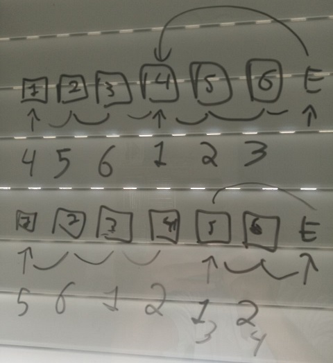 Hacker Rank Array - Part 1 2023-04-28 [tag_english] [tag_interview] [tag_coding] The next step after [the Warm Up challenges] are the array challenges. And so I did it. Now I am going to recap what I did and how I did. And what complexity the algorithms have. # Array Manipulation hacker-rank-arrays |
| Easter Egg 2023-04-28 [tag_coding] Mexendo em um projeto legado encontro encontro [esta pérola]. Será que ainda fazem essas coisas hoje em dia? Eu sabia que existia um neste programa porque o código deste aplicativo foi 100% feito por mim, desde o começo até passar das dez mil linhas de código. No entanto, eu me lembro que a primeira versão deste cheat era no formato de créditos de filme, com os nomes da equipe descendo. Isso estamos falando de 20 anos atrás. Não me lembrava que ele foi readaptado para nossa minúscula equipe nessa fase do projeto, o que me gerou um saudosismo gostoso ao ver esta imagem. easter-egg |
| A Common-Sense Guide to Data Structures and Algorithms 2023-04-28 [tag_books] [tag_interview] Meu próximo livro para praticar entrevistas técnicas é este de Jay Wengrow. Jay queria explicar de maneira menos matemática e alienígena para programadores como algoritmos e estruturas de dados funcionam e como conceber bons algoritmos e medir a eficiência de algoritmos já prontos. Tudo isso serve também para você que deseja passar nas entrevistas técnicas e suas pegadinhas. common-sense-guide-data-structures-algorithms |
| Vinho do Outback 2023-04-24 [tag_wine] O mundo do vinho é impressionante, mesmo. O Outback consegui arrumar um rótulo da Austrália que harmoniza com suas comidas picantes. É um Cabernet Sauvignon leve, porém com várias características de especiarias e seu final adstringente some junto com o alimento. O final chega a ser levemente doce. Não consegui descobrir o produtor. vinho-do-outback |
| Suzume no Tojimari: A Porta Fechada de Suzume 2023-04-24 [tag_movies] Mitiko me convidou para ver este filme que pela capa tinha cara daqueles filmes adolescentes de Makoto Shinkai. Quando estávamos entrando na sala vi seu nome no pôster. O visual que o cara usa para [seus filmes] é tão batido que não foi conquista nenhuma adivinhar o diretor. suzume-no-tojimari-porta-fechada |
| Kazu Lámen 2023-04-24 [tag_food] Este foi o melhor miojo que já comi. Porém, é uma casa de lámen, o que complica um pouco minha avaliação. Eu conseguiria fazer um miojo muito semelhante a este shio se praticasse algumas vezes. O dono desta casa de lámen conseguiu e cobra 50 reais por um miojo. Mas é um muito bom. kazu-lamen |
| Edsger Dijkstra 2023-04-24 [tag_coding] [tag_quotes] "One morning I was shopping in Amsterdam with my young fiancée, and tired, we sat down on the café terrace to drink a cup of coffee and I was just thinking about whether I could do this, and I then designed the algorithm for the shortest path. As I said, it was a twenty-minute invention. In fact, it was published in '59, three years later. The publication is still readable, it is, in fact, quite nice. One of the reasons that it is so nice was that I designed it without pencil and paper. I learned later that one of the advantages of designing without pencil and paper is that you are almost forced to avoid all avoidable complexities. Eventually, that algorithm became to my great amazement, one of the cornerstones of my fame." edsger-dijkstra |
| Clos de los siete, by Michel Rolland 2023-04-24 [tag_wine] Quem é Michel Rolland, você talvez se pergunte. Eu faço a mesma pergunta, já que essa história de marketing pessoal pode ser tão enganoso quanto marketing de vinho. Bom, eu pesquisei e vi que ele é apreciado no mundo inteiro e é denominado um dos flying winemakers, que são enólogos que não estão presos em uma vinícola ou, melhor ainda, na colheita de apenas uma região no mundo. Eles vão além da própria bodega e região e criam diferentes obras espalhadas pelas oportunidades que o mundo inteiro do vinho oferece. clos-de-los-siete-michel-rolland |
| Sexo, Mentiras e Videotape 2023-04-19 [tag_movies] Já assisti esse filme três vezes, mas em décadas diferentes. É curioso como ele se revela um filme novo em cada época da vida. Na primeira vez, pós adolescente, a impressão geral era a de choque, a do escândalo. Já acostumado a novelas globais, este filme me pareceu uma continuação dos dramas envolvendo traição com a dose extra de estar acontecendo em família. Bom, talvez este seja um tema popular em novelas também. E eu já estava na vibe de filmes como Segredos e Mentiras, que também é muito bom. Havia uma época no cinema em que esses filmes bombavam. sexo-mentiras-videotape |
| Hash Table Giratória 2023-04-19 [tag_interview] [tag_coding] Ainda estudando e praticando testes de entrevista me veio essa em que seja possível realizar somas para todas as chaves de uma hash table. Curioso, nunca tinha pensado nesta feature. Imagine que temos uma tabela de hash entre inteiros em que `{ 1: 8, 2: 9 }`. A chave corresponde ao hash. hashtable-giratoria |
|
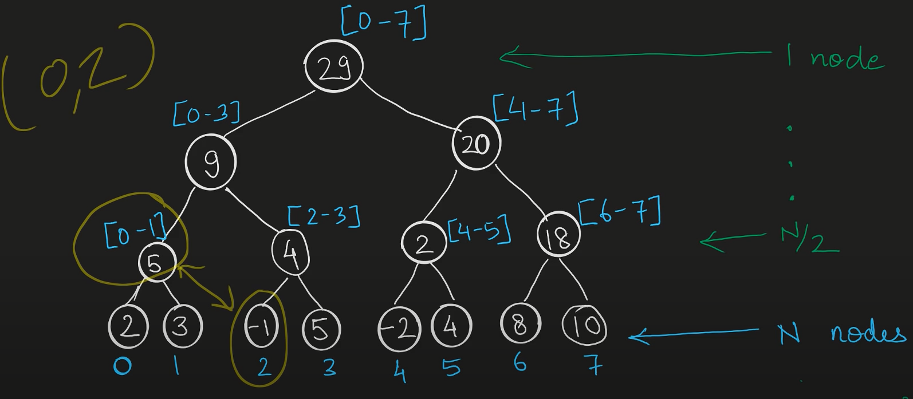 Árvore de segmentos 2023-04-17 [tag_interview] [tag_coding] Não existe sequer uma entrada em português sobre Segment Tree, uma árvore binária específica para guardar intervalos. E este acredito ser um assunto importante para testes de entrevista ou competições de programação porque ele é muito útil para alguns problemas. Vamos dar uma olhada em como ela funciona. segment-tree |
| Hunger (Fome de Sucesso) 2023-04-17 [tag_movies] Esse filme tem várias boas ideias que quando juntas viram uma mistureba que se torna intragável. Pelo menos filmes, até onde eu sei, não dão indigestão. A história lida com a questão do status dos cozinheiros entre seus clientes ricos e famosos. Em uma época de Master Chef e programas de culinária dominando a timeline é curioso entender esse fascínio, inclusive das massas, por gente que cozinha difícil e dizem por aí que é delicioso. hunger-fome-de-sucesso |
| Hacker Rank Warm Up 2023-04-16 [tag_interview] [tag_coding] Here I am doing interview exercise tests at Hacker Rank. I am trying to recap what I've been doing the last two months before going on. Let's see what I learned, starting with the Warm Up exercises. # Counting Valleys hacker-rank-warm-up |
| Café com Canela 2023-04-12 [tag_movies] Essa moça tem uma raba interessante e passa um café gostosinho. Eu sei que os idealizadores deste filme não esperam um comentário como esse de um projeto mergulhado em representatividade e diálogos fracos. Se você compartilha da visão da equipe por trás, então não leia este texto. Obrigado. cafe-com-canela |
| Misoya Ramen 2023-04-11 [tag_food] Fomos neste Ramen da Paulista. É um lugar tranquilo na Antônio Carlos, a apenas duas quadras da Paulista. É bom ter uma opção de lámen em outro bairro que não seja a Liberdade ou a Saúde. Pedimos a versão mais forte do caldo nas versões simples e com três pedaços de carne de porco, que foram o ponto alto do meu prato. Entre os acompanhamentos junto ao caldo vem uma batata frita grossa sem necessidade e sem nenhum sabor a mais, além de carne moída e uma massa própria para missô, mas que não parecia fresca, o que surpreendeu por estarmos em uma casa de lámen. misoya-ramen |
| Código para Fibonacci 2023-04-11 [tag_interview] [tag_coding] Zero e um são os primeiros números Fibonacci e todos os outros que se seguem são a soma dos dois números anteriores. Ou seja, para implementar isto em código basta: - Usar duas variáveis para os dois números anteriores; fibonacci |
| Como verificar se um número é primo 2023-04-11 [tag_interview] [tag_coding] Apesar de existir matemáticos ao redor do mundo tentando responder esta pergunta da maneira computacionalmente mais rápida possível, existe uma forma ingênua e eficiente para números baixos: - Faça um loop entre 2 e a metade do número; como-verificar-numero-primo |
| Como inverter um número 2023-04-11 [tag_interview] [tag_coding] Existe uma solução para a inversão de um número que não é bonita, mas prática: transforme em string e inverta essa string. int ReverseNumberStringVersion(int number) { string s = to_string(number); como-inverter-numero |
| Calisthenics for Beginners by Matt Schifferle 2023-04-10 [tag_self] [tag_books] [tag_body] Esta minha leitura do livro de Matt Schifferle foca em exercícios que utilizam o próprio peso do corpo e uma abordagem avessa às complicações dos treinos de academia. Schifferle à primeira vista lembra Mistery, o guru das conquistas de [The Pick Up Artist]. Ambos acreditam em suas filosofias para transformar a vida de seus seguidores. Será que ambos utilizam alquimia dentro dos conceitos que meu amigo me ensinou quando conversávamos sobre as definições instigantes de Timothy Leary (não me lembro se isso está em Prometheus Rising)? Não. Schifferle é um vendedor de mais uma forma de fazer exercício como qualquer outro treinador. calisthenics-for-beginners-matt-schifferle |
| Segundo maior número 2023-04-09 [tag_interview] [tag_coding] Esta é uma das primeiras questões que peguei para praticar para entrevistas que é ligeiramente mais complicada do que parece, apesar de simples o suficiente para matar em alguns segundos. A questão: como determinar qual o segundo maior número de um array? segundo-maior-numero |
| Métodos de extração de café e suas sutilezas 2023-04-09 Comprei um Melitta e filtros de papel. O objetivo é usar como suporte para meu filtro de pano, mas aproveitei para voltar a praticar passar café como todas as pessoas fazem, mas também para degustar o resultado e entender se há alguma diferença com outros métodos que utilizo diariamente. metodos-extracao-cafe-melitta |
| Onde fica o meio de uma lista ligada? 2023-04-09 [tag_interview] [tag_coding] É simples descobrir o meio de um array: pegue seu tamanho e divida por dois. Agora, para uma lista ligada, mesmo que você saiba qual o índice do meio, não é por meio de índices que acessamos seus elementos, mas por ponteiros. meio-da-lista-ligada |
| Como pegar caracteres repetidos em uma string 2023-04-09 [tag_interview] [tag_coding] A resposta rápida para esta questão é: hash tables. Com hash tables você consegue através de uma chave agrupar qualquer tipo de informação. No caso de caracteres repetidos em uma string a chave é o próprio caractere. Os passos para conseguir isso são os seguintes: como-pegar-caracteres-repetidos-em-string |
| Como inverter uma string 2023-04-09 [tag_interview] [tag_coding] O bom de estar praticando para fazer entrevistas técnicas é ter material para novos postes. E este poste é sobre um assunto bem simples para quem já sabe como funcionam strings, mas complexo o suficiente para quem nunca ouviu falar de memória no computador. como-inverter-uma-string |
| Como inverter uma lista ligada 2023-04-09 [tag_interview] [tag_coding] Inverter uma string ou qualquer array em geral é muito simples se for pensar: itere do começo ao fim e do fim ao começo trocando as posições dos primeiros elementos com os últimos. Caminhe até a metade. Fim. como-inverter-lista-ligada |
| Como funciona o insertion sort 2023-04-09 [tag_interview] [tag_coding] Entre os algoritmos de ordenação mais simples de se entender o insertion sort está na lista. E isso acontece porque ele é intuitivo. É mais ou menos como podemos fazer para ordenar um deck de cartas: pegamos item a item e vamos inserindo em um segundo deck, mas dessa vez observando onde cada carta deve ser inserida para que o deck final esteja ordenado. como-funciona-insertion-sort |
| Como funciona o bubble sort 2023-04-09 [tag_interview] [tag_coding] Uma das piores ordenações possíveis, mas uma das mais simples de entender, é a bubble sort. Ela é passada para estudantes de computação porque é um algoritmo possível de explicar sem entrar em muitos detalhes do seu funcionamento, e também porque seu funcionamento é intuitivo. como-funciona-bubble-sort |
| Como descobrir se uma string é mutuamente rotativa 2023-04-09 [tag_interview] [tag_coding] Uma string mutuamente rotativa é uma string que se rotacionarmos para a direita ou para a esquerda, com os caracteres "indo parar" do outro lado, é comparável com a string original. Exemplos: - "abacate" é mutuamente rotativa com "cateaba"; como-descobrir-string-rotation-mutually |
| Duas séries pretas e um filme preto... e branco 2023-04-09 [tag_series] [tag_movies] Coisa neste poste: Alfaville (Alphaville), Swarm (Enxame), Todo Mundo Odeia o Chris. Estou revendo esta série que estreou nos anos 2000, quando minha família adorava assistir na TV aberta pela nostalgia de épocas menos abastadas. A série se chama Todo Mundo Odeia o Chris, é baseada vagamente na infância do comediante Chris Rock vivendo no Brooklin dos anos 80. Muito é inventado e adaptado, mas a essência do que era viver nos subúrbios de Nova York em uma família proletariada negra se mantém. alfaphaville-todo-mundo-odeia-o-cris-swarm-enxame |
| Cracking the code interview 2023-04-07 [tag_books] Este livro foi recomendado pela minha amiga para treinar para as entrevistas técnicas que ando fazendo. Escolhi ler este em seguida após terminar o [Algorithm For Dummies]. As primeiras anotações são como compor o CV e qual a estratégia de cada big tech nos seus processos. Escapei esta parte, não estou interessado em trabalhar em um Google da vida. Porém, há alguns detalhes que achei relevante recortar. cracking-the-coding-interview |
| Como analisar assembly x64 2023-04-05 [tag_videos] [tag_debugging] Recomendo a leitura do artigo "X64 Deep Dive" para se habituar às idiossincrasias sobre o formato assembly do x64, especialmente se você costuma depurar assembly para Windows. O artigo descreve as novas funcionalidades que suportam os 64 bits do formato do executável Windows, o Portable Executable, além de explicar em detalhes o funcionamento de mecanismos que mudaram, como o tratamento de exceção (e o unwinding no código). x64-deep-dive |
| Timemore C2 2023-04-05 [tag_coffee] Chegou meu segundo moedor manual depois do quebra-galho que foi o [Hario Slim] por mais de dois anos. Depois de muito pesquisar fiquei muito satisfeito em comprar este modelo da Timemore, por três motivos. timemore-c2 |
| Não capture este cachorro 2023-04-05 [tag_chess] Um jogo onde me esforcei em dar o mate, mesmo sem saber muito se iria dar certo. Acabou que existiu oportunidade para ambos os lados, equilíbrio e muitos erros, claro. Capture este cachorro e dou mate em 1. nao-capture-este-cachorro |
| Flow pragmático 2023-04-05 [tag_essays] Seja durante o trabalho ou no lazer, quando não está claro qual o objetivo final não é fácil focar. Por isso reli minhas anotações sobre [o livro de Mihaly Csikszentmihalyi] sobre como estruturar nossa consciência de forma a conseguir aos poucos alinhar a energia psíquica a maior parte do tempo possível. E deve ser aos poucos, já que o "eu" não pode se sentir impelido a fazer algo; ele precisa entender dentro de si o que ele quer fazer mais que tudo na vida. flow-pragmatico-produtividade-trabalho-lazer |
| Instalei um contador de visitas 2023-04-04 Estou revisando como fazer para estar no Flow durante leisure time e uma das poucas regras necessárias é que você precisa coletar feedback sobre como está indo na atividade. No caso da escrita achei difícil eu mesmo ser o responsável por esse feedback, principalmente por não estar sendo no momento um leitor assíduo. Então minha primeira ideia foi saber se pessoas estão lendo meus posts, aproveitando o fato deles serem públicos. instalei-um-contador-de-visitas |
| Barikote Ramen, Cerveja de Wasabi, Meu Nome é Chihiro e Primeiro Kimchi 2023-04-01 [tag_food] [tag_beer] [tag_movies] Mais um lámen experimentado hoje. Dessa vez foi o próximo da Brigadeiro. Minúsculo. Você pede antes de entrar, em um painel. Estilo bem japonês, mas toca música de anime lá dentro. Pedi o Tantan Men da casa e ele é melhor que Tantan do Momo. A base do caldo de todos os lámens da casa é tonkotsu, mas não achei tão intenso quanto o do Ikousha. O forte desse lámen é seu equilíbrio entre picância, carne, umami e o uso de amêndoas. barikote-ramen-cerveja-wasabi-meu-nome-chihiro-primeiro-kimchi |
| Pacifiction 2023-03-31 [tag_movies] [tag_cinemaqui] Pacifiction é todo seu protagonista. Aliás, nem é pelo personagem. É pela atuação. Benoît Magimel não nos deixa pensar em outra coisa durante 160 minutos de projeção. A cada movimento de ombro, a cada lábio estendido mostrando seus dentes, a cada diálogo equivocado e inflado, a cada passada de mão em seu cabelo que vai ficando cada vez mais laranja, o ponto de interrogação é sempre o mesmo: estamos assistindo ao Donald Trump francês? pacifiction |
| Fúrias Femininas 2023-03-31 [tag_movies] Este título já diz muito do que você vai ver neste filme. As mina tão puta. Uma delas, a vemos na infância, é quase estuprada pelo cliente da mãe. Ela é uma filha da puta. A mãe acaba morrendo tentando defender a filha. Então a filha foge para a cidade e sofre o assédio dos criminosos que detém territórios da periferia. Tudo é muito verde e vermelho. Essas são as luzes. O sangue começa a aparecer também quando as cenas de lutinha começam. E tem muitas. E o sangue é falso, feito por computador da geração passada. Mas tem uma perseguição de moto que é pura adrenalina e fundo verde. Quando ela está acontecendo, frenética, você se dá conta que está no meio do filme e ainda não se enganchou com nenhum drama das personagens femininas porque os personagens são muito falsos e agora o cenário é falso. Tudo no escuro ajuda para a computação, mas no caso desse filme nem isso. Tenho certeza que foi essa sequência o pitch que fez alguém dar dinheiro para a produção deste filme. A pessoa falou "imagina uma perseguição de motos estilo aquele jogo do Mega Drive, Road Rash, mas com minazinhas para vender pra Netflix". Bateu-se o martelo. Negócio fechado. Há mais cenas de luta, surge um monstro cracudo cujo poder é girar a seringa rapidamente (acertará ele uma veia da heroína para injetar heroína?). No final uma dupla traição, não, tripla, não, não sei mais. O diálogo pós luta: "nessa vida tentamos tomar as decisões certas, mas às vezes tomamos as escolhas erradas". Para tudo: alguém recebeu dinheiro por essas linhas? São mulheres caindo de fome pelos becos da vida que viram mestres de luta. Não peça lógica. furias-femininas |
| O Pastor e o Guerrilheiro 2023-03-28 [tag_movies] [tag_cinemaqui] "Quando as nossas contradições ficaram irreconciliáveis e o precipício foi escancarado?", questiona, quase que de maneira retórica, José Eduardo Belmonte, diretor de O Pastor e o Guerrilheiro, um filme que explora acontecimentos reais do passado traumático na política brasileira através do pano de fundo dos conflitos particulares de seus personagens. o-pastor-e-o-guerrilheiro |
| The Runaways - Garotas do Rock 2023-03-26 [tag_movies] Apesar de Dakota Fanning estar um pouco estragada em sua personagem neste filme que emula o arco de sucesso e derrocada de uma banda de rock movida a drogas e seus pesadelos das vidas passadas, é necessário pontuar: que bundinha gostosa. Que lindos olhos. Essa garota e sua família inteira é maravilhosa. the-runaways-garotas-do-rock |
| Meu Irmão é Filho Único 2023-03-26 [tag_movies] Este filme estreou quando eu já conhecia a Mitiko, em 2007, mas nunca havia ouvido falar. Ele é italiano, se passa no pós guerra e seu herói é um fascista. Além de estar do lado certo da história luta bravamente contra o irmão e a namorada, comunistas de carteirinha. Depois que o rapaz transa vira comunista, demonstrando a personalidade de pessoas relaxadas e relapsas. meu-irmao-e-filho-unico |
| O melhor teste técnico até agora 2023-03-26 [tag_interview] [tag_coding] [tag_series] As três séries citadas neste post foram: "Que Cilada!", "Três Metros Acima do Céu" e "A Vida Mentirosa dos Adultos". Hoje fiz mais um teste técnico. O melhor de todos. Não posso contar, por contrato, sobre o que ele se trata, mas posso contextualizar que não é um exercício de lógica, de estrutura de dados e de pegadinhas com complexidade de algoritmo para resolver problemas fictícios. Se trata de um problema que os devs da empresa tiveram que resolver, resolveram e agora pedem para que o candidato resolva. Dão nove horas para isso, começando quando quiser. O sistema de envio valida a compilação do código, que você pode enviar quantas vezes quiser, semelhante ao HackerRank, e no final, depois dos testes que eles atenciosamente lembram para você fazer, você clica no botão para submeter sua resposta. Caso falhe o sistema te diz por que falhou e lhe dá ainda mais uma segunda chance. melhor-teste-tecnico |
| 10 Exercícios de aquecimento completos 2023-03-26 [tag_body] Esta é uma série de exercícios leves para começar o dia e aquecer todos os principais músculos. Gostei da lista porque não envolve (muitos) aeróbicos. Faça 30 segundos de cada movimento. 1. Intro: marchinha leve estando no mesmo lugar; exercicios-aquecimento |
| Esposa em Tempo Integral 2023-03-26 [tag_series] Eu tenho um amigo que me faz lembrar todos os trejeitos e pensamentos do rapaz de Esposa em Tempo Integral de tal forma que a série fica mais engraçada ainda. Para ter uma ideia, ele seria uma pessoa que na vida real, não duvido, poderia propor para sua faxineira um contrato de casamento com salário por mera comodidade. esposa-em-tempo-integral |
| Susana Balbo 2023-03-23 [tag_wine] Almoço de domingo na casa de uma amiga com direito a quatro garrafas abertas depois de muitas horas de conversa. Foi uma ótima visita. Para começar abrimos um espumante, o Rosso Brut do Michel de Mas, a vinícola orgânica de San Juan que conhecemos em nossa viagem para a Argentina ano passado. É um espumante de Malbec, algo bem raro, e bem doce até. Deveria ter aberto no ano novo. Achei bem saboroso, mas vinhos assim perdem sutileza e potência no sabor. É mais um luxo extravagante. susana-balbo |
| Catarina, a Menina Chamada Passarinha 2023-03-21 [tag_movies] Ela vive na época dos dotes de casamento, seu pai é o Professor Moriarty (Andrew Scott) e sua consciência social de um penico, ou seja, contemporâneo, incapaz de estar em sua época de fato. O filme brinca um pouco com esse choque de cultura e as músicas selecionadas de mulheres dão um tempero new age para uma experiência lúdica, uma comédia doce e com narração em off. A narração vem direto da menina-pássaro porque é o livro que ela está escrevendo. Este livro vem de outro livro, o original, da autora Karen Cushman, que estudou os costumes da Idade Média para contar esta pequena viagem no tempo sob os olhares juvenis. Dirigido por Lena Dunham com uma burocracia que dá pena pelo desperdício de adaptação, esta é uma Sessão da Tarde em streaming. Deve ser leve porque é para crianças, mas deveria ser tão frívolo? Falta um pouco de pimenta na interpretação de Bella Ramsey ou orientação de Dunham para que ambas criem uma atmosfera à altura do livro ganhador do Newbery Honor, um prêmio a trabalhos distintos para o público infantil? Existe ainda um público infantil para este material que seja convertido em filmes? Bella Ramsey é boa em estar no set e iluminar até a mais chata das cenas, mas a questão que fica é se as cenas deveriam ser tão chatas quando há tanta atmosfera medieval para salivarmos. comedia-feminista-de-epoca-com-gordinha-branquela-que-parece-crianca |
| Colateral 2023-03-21 [tag_movies] Colateral é o estilo de filme bem produzido que parece não contar uma grande história quando na verdade se revela um estudo de corrupção e violência em centros urbanos tão bem amarrado que você se hipnotiza no processo. Nosso alicerce moral é Max, um taxista que está estagnado por 12 anos em Los Angeles, até que chega Vincent, um matador de aluguel que aterrisa na cidade do pecado e vem com uma lista cheia. Ambos irão passar a noite juntos pelas ruas e Vincent irá elevar os pensamentos de Max sobre o que estamos fazendo com nossas vidas. Ele fará isso pelo modo prático que conhece: matar cada item de sua lista. A moral de Vincent é deturpada, mas pragmática. A química entre os dois é o que faz com que essa dupla passe uma noite inteira dirigindo por Los Angeles sem sequer repararmos, e sua floresta urbana se tornará um curioso palco de um filme de ação fantasioso no limite de não nos importarmos. Quem nos mantém interessados é Jamie Fox como Max, que compõe um arco para seu personagem que vai de vítima das circunstâncias para a única pessoa que conseguirá mudar alguma coisa na espiral de violência que vai pintando o mapa da cidade de vermelho. Já Tom Cruise como Vincent é uma surpresa e tanto. O cara se transforma em alguém que não é o Tom Cruise fazendo um de seus costumeiros personagens. Vincent é um assassino frio e prático, mas não deixa de vestir sua carapaça humana, o que torna o conjunto magnético. Seu terno e cabelo cinzas com a barba por fazer ajudam nessa inesperada composição, mas nada disso teria peso se a direção de Michael Mann não nos permitisse sonhar com as possibilidades desses dois atores em construírem uma realidade impossível em camadas que escalam para algo além de tiros e carros dando piruetas e pegando fogo. Quando o filme termina você está ainda naquele universo e não gostaria de sair. colateral |
| Pyros Appellation Syrah 2019 2023-03-20 [tag_wine] Pyros é uma nova linha da Bodega Calia Alta. Não, não, tudo errado. Pyros na verdade é uma nova vinícola que nasceu do desejo por uma nova forma de expressão dos vinhos de San Juan, mais especificamente do Vale do Perdernal, uma região que apenas em 2008 recebeu sua denominação geográfica pela legislação argentina e que desde então vê nascer bodegas com uma nova personalidade, de uvas plantadas em um terreno único no país. Um terreno pré histórico e calcário. pyros-appelation-syrah-2019 |
| Além da Imaginação (The Twilight Zone) 2023-03-20 [tag_series] Pensava eu que esta reimaginação da série icônica da TV merecia uma assistida, mas após ver o primeiro episódio, O Comediante, entendi que esta série não possui relação com a anterior (exceto o nome). Seria nosso ceticismo exacerbado que alimenta um clima tóxico, não propício para histórias no limiar de nossas crenças e conhecimento? A metáfora dos comediantes que fazem carreira em cima de ataques pessoais é óbvia é engraçada apenas por causa da alienação dos idealizadores, imersos em uma bolha de politicamente correto querendo soar moralista ou algo do tipo. alem-da-imaginacao-twilight-zone |
| As Leis de Lídia Poët 2023-03-20 [tag_series] # A advogada que investiga crimes Pautada em uma época onde mulheres possuíam um papel bem definido na sociedade, pelo menos por enquanto, esta série italiana explora uma protagonista sem medo ou noção, que se submete a vários riscos da época, como sair à noite sozinha. O mais curioso é que a série não dramatiza este risco. Do ponto de vista de sua criação esta é uma história contemporânea, com o único detalhe sendo a época histórica para impedir a advogada formada de seguir com a profissão. Igualmente curioso, pois a série se revelou desde o início como investigativa. Proibida ou não, esta moça será mais Sherlock que Saul Goodman. Embalada em rock alternativo com batidas bem definidas para te mostrar o impacto entre a música moderna e a época antiga. Sentiu? a-advogada-que-investiga-crimes |
| Passei em uma entrevista técnica? 2023-03-19 Quis que o título deste poste fosse o contrário do anterior onde falo que não consegui resolver um problema simples de programação em meia hora com minha entrevistadora de olho. Porém, eu não sei se eu passei no teste. O que eu sei é que dos dois testes de programação que fiz, online pelo HackerRank, mas sem monitoração, ambos os códigos resolviam o problema, embora o último deles tivesse uma complexidade acima do desejável. passei-em-uma-entrevista-tecnica |
| Viveiro 2023-03-15 [tag_movies] Filme cheio de metáforas sobre a vida de um casal de classe média. Ainda um jovem casal, eles são obrigados a viver o resto do seu sonho americano em 2x (ou mais), enclausurados em um condomínio de casas, tendo que cuidar de um filho que não pediram. Você já pescou algumas das metáforas. O filme foi feito para o espectador sair da sessão se achando muito esperto por entender algumas delas. Porém, o próprio filme não deve entender metade, pois joga símbolos na nossa cara como a evitar que olhemos para dentro e enxerguemos o vazio que é este filme. viveiro |
| Frango Karaage 2023-03-14 [tag_cooking] # Menos é mais Na cozinha não se pode usar regras fixas. Contrariando aquela moda de deixar mais tempo apurando alguma coisa para que esta coisa fique melhor não serve para tudo. Hoje testemunhei isso com o Frango Karaage que fiz e o caldo com a carcaça das coxas que desossei. frango-karaage |
| Algorithms for Dummies 2023-03-14 [tag_coding] [tag_interview] [tag_books] De John Mueller e Luca Massaron, este livro mantém a fama da série "for Dummies", com livros de conteúdo bem estruturado, acessível para a maioria dos leitores e ainda útil para quem já está acostumado com um termo ou dois do assunto, ou até o assunto inteiro. algorithms-for-dummies |
| Começa um final de peões e cavalos 2023-03-13 [tag_chess] Brancas movem e... e nada. É um final complicado. image::board.png[] 1. Nf3 d5 2. e4 dxe4 3. Ng5 f5 4. Bc4 Nh6 5. c3 Nc6 6. Ne6 Qd6 7. Nxf8 Rxf8 8. Qh5+ Qg6 9. Qxg6+ hxg6 10. d4 exd3 11. Bxd3 Be6 12. Bb5 Bd7 13. Ba4 O-O-O 14. comeca-um-final-de-peoes-e-cavalos |
| Jaguatirica Coffee 2023-03-06 [tag_coffee] Este é o café especial da região de Monte Verde. Provei ele achando no mercado local, uma boa surpresa, e depois comprei a versão em grãos na própria torrefadora, em uma das ruas da cidade. Infelizmente não deu tempo de experimentar o espresso porque estávamos de saída. Este café contém um equilíbrio divino entre acidez e doçura. Não se sente amargor, este é daquele estilo em que o café parece um suco. Remete um pouco a frutas maduras ou de inverno, como nozes e castanhas, apesar de haver um pouco de cítrico. Provei mais de duas semanas depois de abrir o pacote do moído do mercado porque estou evitando ingerir cafeína todos os dias, mas o sabor continua bem agradável apesar do tempo envelhecendo. Guardando na lata de Tiradentes. jaguatirica-coffee |
| Shogayaki 2023-03-05 [tag_cooking] Este prato vai tradicionalmente carne de porco e significa gengibre frito ou grelhado. São tirinhas finas ou bifes de qualquer parte de carne de porco junto de shoyu e gengibre no fogo. Entre os ingredientes mais tradicionais vai cebola, saquê e mirim (saquê doce). O gengibre é ralado, fatiado ou ambos. A mesma coisa com a cebola. São sugestões. Entre as dicas valiosas do preparo, a regra de ouro é nunca cozinhar demais carne de porco ou ela fica muito seca, pois perde mais fácil o suco antes de selar. Um dos truques é polvilhar farinha por cima para reter esse suco da carne. O modo de preparo também é variado, mas basicamente envolve fritar os dois lados da carne rapidamente, jogar a cebola para dourar e absorver o sabor do queimado e jogar a carne novamente junto de um suco formato pelo gengibre e saquê. O fininho da carne fica em torno de 3 milímetros de espessura. shogayaki |
| Fiz Trança de Banana 2023-03-05 [tag_cooking] Essa receita originalmente iria cará e foi adaptada para usar banana bem madura. Além da banana ou do cará, os outros ingredientes são: farinha de trigo, fermento biológico, ovos, leite, manteiga e açúcar. Pegue a banana e cozinhe em uma panela, reduzindo o líquido ao máximo. Quando a banana esfriar, pese-a e use o dobro do peso em farinha de trigo. Cada 1kg de farinha faz três tranças de tamanho médio e vai 6 ovos. Os outros ingredientes estão pesados em porcentagem da farinha: 20% de manteiga, 20% de leite e 25% de açúcar em média. Dependendo do quão doce está a banana e o quão doce você deseja que fique o pão você pode aumentar ou reduzir a quantidade de açúcar. pao-tranca-de-banana |
| Carandiru 2023-03-05 [tag_movies] O filme é baseado no livro do Drauzio Varella, aquele médico que na pandemia falava que todos íamos morrer. Quem interpreta o doutor no filme é um sujeito que só fica sorrindo e fazendo perguntas bestas aos pacientes no presídio. Tudo soa muito falso e teatral. O fato de vários personagens serem interpretados por um elenco conhecido das novelas ajuda ainda mais. Cada ator e atriz quer brilhar em seu momento de viver um ser humano contra o sistema e oprimido por ele. Oh, glória! Várias histórias supostamente tristes de bandidos são mostradas. O motivo é contextualizar o espectador sobre como eles chegaram a ser presos e para que todos saibam que ninguém presta mesmo naquela cadeia. Há também os trouxas que caíram lá, mas já estavam indo pelo caminho errado do lado de fora. De qualquer forma, o tom teatral diminui o peso dos dramas. O diretor Hector Babenco se consagra na parte onde ocorre a famosa chacina do Carandiru, em 92, mostrando sangue caindo pelas escadarias e o amontoado de corpos nus, de castigo no quintal, após a polícia militar impor ordem. Eu lembro dos meus professores comentando sobre esta calamidade na quinta-série. Houve uma "comoção pública". Hoje entendo a histeria do "direitos humanos" ao constatar pelo próprio filme que na realidade morreram apenas cem presos de sete mil. O objetivo: proteger os outros presos. Morreu foi pouco, ou o suficiente. carandiru |
| Parei de tentar ser crítico (de cinema) 2023-03-04 Eu deveria parar nesse momento de escrever sobre filmes, exceto as cabines e eventos especiais. Por muitos anos eu escrevi que nem um retardado, comecei a ler uns livros doidos, a assistir umas análises nervosas. Fiz dois cursos com Pablo Villaça, uma referência local aos que levam a sério a arte. Tudo que fiz e continuei fazendo foi até o momento em que eu consegui "sentir" o que é ser crítico de cinema como uma profissão. O trabalho descomunal de estudar arte, filosofia, história. De assistir aos clássicos, de entender as correntes que nos antecederam. E, por fim, acompanhar cada novo ano as produções, os lançamentos, os novos talentos e os existentes. Os festivais de conteúdo duvidoso. As inúmeras sessões com filmes experimentais. As retrospectivas da Mostra. Os textos dos colegas. Eu enxerguei tudo isso faz alguns anos, mas por algum motivo continuei tentando evoluir mesmo sem tempo de me dedicar profissionalmente. Agora acabou. Vou largar o ritual de todo filme escrever e anexar à rotina de blogueiro falar sobre o que ando vendo. Não sou obrigado e nem vocês em consumir conteúdo aquém dos que vivem para isso. Voltou para mim, depois de quase 13 anos, a ser um hobby light como os textos eventuais sobre programação. Sobre café. Sobre vinhos. É isso que torna um blogue valioso. Ele registra o momento sem o compromisso de mais. O que foi, foi. E o que virá, só Deus sabe. parei-de-tentar-ser-critico-de-cinema |
| Movi a dama no pre-move e me ferrei 2023-03-04 [tag_chess] Brancas jogam e vencem. image::board.png[] 1. Nf3 e6 2. e4 d5 3. exd5 Qxd5 4. Nc3 Qd8 5. Bc4 Nf6 6. O-O Bd6 7. d3 h6 8. Be3 O-O 9. Qd2 Ng4 10. h3 Nxe3 11. fxe3 Nc6 12. a3 Ne5 13. Ba2 Nxf3+ 14. Rxf3 Qg5 movi-a-dama-no-pre-move-e-me-ferrei |
| Miniature with hidden tactic 2023-03-04 [tag_chess] [tag_english] White move and gain advantage. image::board.png[] 1. Nf3 e6 2. e4 h6 3. d4 a6 4. Nc3 b5 5. a3 c5 6. Be3 {Three pieces already developed and the adversary has none.} 6... cxd4 7. Nxd4 Bb7 8. f3 Nf6 9. Bd3 miniature-with-hidden-tactic |
| Combinação 2023-03-04 [tag_coding] Tentando agilizar um dos desafios de programação que tenho treinado encontro como fazer combinação em C++ ou C de maneira mais rápida que a fórmula oficial que requer calcular o fatorial e mais algumas contas. O nome desse problema é NCK, de N Chooses K, onde N é o número de elementos e K a amostragem obtida para a combinação. O resultado é instantâneo, pois se trata de um algoritmo O(n). combinacao |
| Bíblia Sagrada: Levítico 2023-03-04 [tag_philosophy] [tag_books] > > "Se a pessoa não tiver recursos para oferecer uma ovelha, trará ao SENHOR duas rolinhas ou dois pombinhos como castigo pelo pecado. > (...) > "Se a pessoa não tiver condições de oferecer sequer duas rolinhas ou dois pombinhos, trará dois litros de farinha da melhor qualidade como oferta pelo pecado. biblia-sagrada-levitico |
| Falta pimenta no Modern Love Amsterdã 2023-03-03 [tag_series] No começo pensei que era alguma coisa relacionada com ser um país ou cidade com longa data de cultura progressista, o que tornaria todos os dramas de lugares mais complicados como Nova York e Japão meros detalhes do café da manhã. Com o passar dos episódios vejo que este volume da série que é baseada em um artigo de New York Times toma uma forma mais próxima de Easy, a série netflixiana onde problemas aparentemente complicados de relacionamento se resolvem em meia hora. Porém, nem isso a série na cidade holandesa mantém. Em dado momento, quando se passa a história de um casal que vive um relacionamento aberto de longa data, se torna claro que os personagens são muito reduzidos. Eles não possuem personalidade. Com o medo de impor valores em torno de pessoas fictícias que poderiam se tornar reais demais para as mentes sensíveis consumidoras da série, a trama se torna invisível. Não nos interessa pela didática se não há sangue e lágrimas. Do contrário, de que valem essas histórias de amor? falta-pimenta-no-modern-love-amsterda |
| Sacrifício de bispo infundado 2023-03-01 [tag_chess] Negras jogam e é mate em 6 se capturar o bisco e mate em 3 se capturar o peão. image::board1.png[] Brancas jogam e é mate em 3. image::board2.png[] 1. Nf3 d5 2. b3 Bg4 3. Bb2 Nc6 4. e3 Nf6 5. Be2 e6 6. O-O Bd6 7. d3 O-O 8. Nbd2 sacrificio-de-bispo-infundado |
| Partida difícil de equilibrar 2023-03-01 [tag_chess] Negras jogam e colocam tudo a perder. image::board.png[] 1. d4 g6 2. c4 Bg7 3. Nf3 Nf6 4. Nc3 d5 5. Bf4 Nc6 6. e3 Ne4 7. Be2 Nxc3 8. bxc3 dxc4 9. Bxc4 e6 10. O-O O-O 11. Re1 Bd7 12. e4 Ne7 13. Qd2 a6 14. Re3 Ba4 15. partida-dificil-de-equilibrar-peao-poe-tudo-a-perder |
| Miniatura com sacrifício de bispo 2023-03-01 [tag_chess] Brancas sacrificam e ficam ganhas. image::board1.png[] Brancas jogam e aplicam mate em 4 de duas formas: uma bonita e uma como seguiu na partida. image::board2.png[] 1. Nf3 Nc6 2. d4 d5 3. Bf4 Nf6 4. Nc3 e6 5. a3 Bd6 6. Bg3 Bxg3 7. fxg3 O-O 8. e3 miniatura-com-sacrificio-de-bispo |
| White move and win the game 2023-02-26 [tag_chess] [tag_english] A game with ups and downs. Entirely asymmetrical. White move and win the game. image::board.png[] 1. e4 c5 2. d4 cxd4 3. c3 dxc3 4. Nxc3 b6 5. Bc4 Bb7 6. Nf3 Nc6 7. Bf4 e6 8. Nb5 Rc8 9. Bd6 a6 10. Bxf8 axb5 11. Bxg7 bxc4 12. Bxh8 f6 13. e5 Nxe5 14. Nxe5 Bxg2 white-move-and-win-the-game |
| Ups and downs 2023-02-26 [tag_chess] [tag_english] White moves and win. image::board1.png[] Now black moves and win. image::board2.png[] Black moves and win (but they prefer to lose instead). image::board3.png[] 1. Nf3 d5 2. e4 dxe4 3. Ng5 Bf5 4. Nc3 Nf6 5. Qe2 Nc6 6. Ngxe4 Nxe4 7. Nxe4 e5 ups-and-downs |
| Volta ao Mundo em 80 Dias: Uma Aposta Muito Louca 2023-02-24 [tag_movies] Esta aventura de Sessão da Tarde é sobre os inventores da vacina de COVID ganhando poderes acima da própria ciência, desbancando cientistas fora da academia em um movimento pró-elitista. Ele foi feito 15 anos antes da pandemia e é inspirado no livro clássico de Júlio Verne, um defensor irrestrito da ciência como fonte de conhecimento do mundo pelo homem e não um instrumento político. A época é o Iluminismo, quando os eleitos decidem que tudo o que poderia ter sido descoberto e inventado já o foi. O filme tem esse pano de fundo temático, mas é filmado como uma grande comédia de aventura, com direito a Jackie Chan por trás de alguns malabarismos de sua autoria, já com cortes (antigamente ele não precisava disso) e um interesse romântico divertido quase no espírito das personagens femininas de Fellini ou Chaplin. Bacana e bonita a moça, Cécile de France, mesmo que sua beleza material esteja nas mãos de uma maquiagem exagerada e teatral com um penteado maravilhoso. Toda a direção de arte segue esse mesmo princípio do exagerado, cartunesco e ao mesmo tempo épico. O filme nos insere nas referências da obra original modificada como uma homenagem pulsante. Perde fôlego nos momentos finais, mas são quase duas horas de bastante improviso cômico que quer ser espontâneo ainda no espírito de filmes como os de Indiana Jones e Caçador de Esmeraldas. Seu protagonista é interpretado por Steve Coogan, que hoje lembra um pouco os papéis que são entregues a Adam Driver, o queridinho de Hollywood. Porém, Drive dificilmente atinge a intensidade cômica que Coogan imprime neste trabalho de falastrão inventor. Todo o trabalho é editado com dinamismo, mesmo que burocrático. viagem-ao-mundo-em-80-dias-uma-aposta-muito-louca |
| Não passei em uma entrevista técnica 2023-02-24 [tag_coding] Fui ingênuo em minha primeira entrevista técnica depois de muito tempo sem fazer. Pensei que iam avaliar minha tentativa de resolver problemas, e não para resolver mesmo, naquela meia-hora de call, silêncio e compartilhamento de tela. Na metade da entrevista, depois de explicar para a entrevistadora, uma das arquitetas sênior do lugar onde pretendia trabalhar, como resolvi um [bug no algoritmo blowfish de tempo real asm de um boot de hd] ela me pede pra fazer um teste de programação. O teste consiste em comprimir números repetidos de uma string, algo digno de campeonato de programação. nao-passei-em-uma-entrevista-tecnica |
| Keep the advantage in pawn and king final 2023-02-24 [tag_chess] [tag_english] Black to move and to keep the advantage there is a much instructive little plan to execute. image::board.png[] 1. Nf3 d5 2. e4 dxe4 3. Ng5 Nf6 4. Bc4 e6 5. O-O h6 6. Nh3 Bd6 7. d3 exd3 8. Bxd3 O-O 9. Bf4 Nc6 10. Nc3 Be5 11. Re1 Bxf4 12. Nxf4 Nd5 13. Nfe2 Ne5 14. Bb5 king-pawn-finals-keep-advantage |
| A Escalada (2017) 2023-02-24 [tag_movies] Um filme recente sobre o fato real do primeiro franco-senegalês sem experiência nenhuma a subir o Monte Everest, e é lógico que vai ter um monte de conteúdo social nessa bodega sobre o jovem millennial desempregado que queria comer uma francesinha e como prova do seu amor foi subir o maior morro do planeta. Claro que ele consegue patrocínio (que mídia do primeiro mundo não quer um senegalês imigrante no topo do mundo?). Claro que tudo vai passar na rádio local. E claro que ele vai conseguir. O resto da história é a curiosidade de como as pessoas escalam este topo impossível, os pontos de parada, como existe um comércio criado pelos moradores locais para vender equipamentos e serviços de guia e mulas. Tudo é muito interessante e cabe em um documentário. A história de sucesso do rapaz carece de emoção. O filme torce mais pela mensagem que pela conquista. a-escalada |
| 365 Dias Finais 2023-02-24 [tag_movies] Mais sexo, que está ficando repetitivo. Com exceção de um ménage imaginado em que os dois machos alfa se beijam. Este drama erótico é mais maduro que a saga Crepúsculo, que não teve coragem de mostrar um momento erótico sequer entre o vampiro e o lobinho, nem quando rolou um clima entre eles na montanha e deixaram a Bella de escanteio. Este é um trabalho mais maduro também porque reconhece que triângulos amorosos são mais complicados que uma simples escolha, mesmo que a escolha seja quem vai trepar com a fêmea alfa, já que nunca houve um relacionamento de verdade entre esses personagens mal acabados. Eles são nossa imaginação de pobre sobre como é o mundo dos ricos, olhando para o horizonte toda hora, jogando tênis, cuidando de um ateliê quando dá na telha e indo para Portugal, onde ninguém fala português, a um desfile de moda. A capacidade do filme nos entreter sem mostrar nada de novo por duas horas é fascinante. A luxúria é fascinante. Ela atrai qualquer um de nós, ou pelo menos qualquer um que é minimamente, saudavelmente, materialista. E enxerga um quê de bonecos sexuais nesta aventura erótica sem sexo explícito. E por fim, dica, o filme continua sem terminar seus arcos. Este é apenas mais um deles. 365-dias-finais |
| 365 Dias - Hoje 2023-02-24 [tag_movies] A saga de Emanuelle continua. Porém, nesse episódio começo a me tocar que a história baseada em um romance erótico cheira muito mais a Sabrina. Cheiro de orgasmos múltiplos de uma mulher envolta de muito sexo, dinheiro, poder e álcool. A vida dos milionários neste filme pode ofender os olhos da classe média artística por tanta ostentação. Você sabe, aquela classe média que faz filme sobre os pobres e ganha cachês gordos do governo. Mas não é só sobre dinheiro. É o que mais você vê na história, porque não existe história, mas não é sobre isso apenas. É sobre sexo sem limites. Ele mete. Ela goza. Ele chupa. Ela goza. Ele mete. Ela goza mais uma vez. Em meio a cenas muito bem coreografadas dos dois pombinhos se pegando pra valer você percebe que está assistindo a um daqueles pornôs que deseja se sentir único, diferente. E ele é. O filme quer fazer parte do circuito comercial. Normalizar o sexo pelo sexo. Essa realidade já existe nos livros eróticos há tanto tempo nas bancas de jornal, ao lado das capas do Bukowski. É material comum para atiçar o gosto pela leitura das mulheres de meia-idade. Por que diabos não pode passar isso no cinema em grande estilo, com atores e atrizes gostosas vivendo o luxo dos 1% e se divertindo nas trivialidades de não ter que se preocupar com o dia de amanhã? Muitos dos personagens olham compenetrados para o horizonte e nada vêem, pois suas mentes são vazias. Mas é tão belo esse hiato entre uma foda e outra. É lugar comum. Todo filme faz isso, mesmo que sem foda, e a maioria não quer dizer nada. É um ato preguiçoso do roteiro. Dá profundidade sem se preocupar em desenvolver tramas. Tudo isso dá trabalho e o que eles querem é grana e fama. 356-dias-hoje |
| Modern Love Tokyo 2023-02-20 [tag_movies] A temporada japonesa está bem boa. A direção competente e um elenco afiado. A primeira e a última histórias são chamarizes errados, mas as histórias do centro são muito mais maduras e bem desenhadas. Há encontros de personagens que flertam com estilos de encontros a dois do cinema. Uma coincidência incrível acontece quando dois matches de app passam uma tarde tenra e iluminada para se descobrirem em um déjà vu que deu muito errado no passado, mas ao mesmo tempo muito certo. As forças do destino são encantadoras neste episódio. E o que dizer do misterioso homem que engana uma jornalista investigativa por nenhuma vantagem exceto sentir felicidade mais uma vez? Junto da história das pontes, onde um ex-casal reavalia o peso do sexo na relação, cada um à sua maneira, Modern Love merece sua atenção por estar acima da média. Por ter um coração. E por ser entretenimento emocionante inteligente. modern-love-tokyo |
| Let's go to the final with one horse 2023-02-20 [tag_chess] [tag_english] Black moves and it is M1 after that. image::board.png[] 1. d4 g6 2. Nf3 Bg7 3. e4 e6 4. e5 d6 5. Bg5 Ne7 6. Nc3 dxe5 7. dxe5 O-O {Suddenly I am lost.} 8. Qxd8 Rxd8 9. Bxe7 Rd7 10. Bf6 b6 11. Be2 Bb7 12. O-O lets-go-to-finals-and-one-horse |
| 365 Dias 2023-02-20 [tag_movies] Este soft porn vai na pegada de 50 Tons de Cinza, um Emmanuelle moderno onde o objetivo é vermos o casal principal fazer um sexo gostoso e selvagem em várias posições e lugares, mas antes disso há uma historinha das mais capengas. A história não suporta o filme, não mais que os atraentes atores. Ele é o macho alfa perfeito, musculoso e bem dotado, mafioso italiano que está acostumado a conseguir o que deseja nem que seja à força. É assim que ele sequestra ela, a fêmea alfa, uma executiva competente e dura na queda. E gostosa. Muito gostosa. Ela sabe que é gostosa e sabe usar seu corpo pelo bem das melhores cenas ou dos melhores ângulos. Há pagamento de peitinho, caso você esteja se perguntando. Há alguns planos-detalhe até que ousados, pegando os membros sexuais do casal de relance. O sexo, aliás, está bem longe do papai-mamãe dos [50 Tons da Dakota Johnson]. Aqui os dois botam pra quebrar. As mamães que se segurem na poltrona do cinema. Ops, é streaming. Só tomem cuidado com o que aprontam na sala. 365-dias |
| Please keep the advantage 2023-02-19 [tag_chess] [tag_english] You are black and need to keep the advantage. What do you do? image::board1.png[] White move and M4. Can you see it? image::board2.png[] 1. e4 c5 2. Nf3 Nc6 3. Bc4 e6 4. O-O g6 5. Re1 Bg7 6. d3 Nge7 7. a3 O-O 8. e5 keep-the-advantage |
| Hidden tactic 2023-02-18 [tag_chess] [tag_english] There a tactic move here hidden. White move and get instant material. image::board.png[] 1. Nf3 c5 2. e4 d5 3. exd5 Qxd5 4. Nc3 Qe6+ 5. Qe2 Nf6 6. Nb5 Na6 7. d4 cxd4 8. Nfxd4 Qxe2+ 9. Bxe2 e5 10. Nf3 e4 11. Nfd4 Bd7 12. Be3 Bxb5 13. Nxb5 Be7 14. hidden-tactic |
| Decided to draw a won game 2023-02-18 [tag_chess] [tag_english] I could move (black) and M2, but I decided to draw =P. image::board.png[] 1. d4 Nf6 2. Bf4 g6 3. Nf3 Bg7 4. e3 O-O 5. c3 Re8 6. Bd3 d6 7. e4 Nbd7 8. e5 dxe5 9. Nxe5 Nd5 10. Bg3 Nxe5 11. Bxe5 Bxe5 12. dxe5 e6 13. Bc4 c6 14. Nd2 Bd7 draw-m2 |
| Unsuspicious of forks 2023-02-17 [tag_chess] [tag_english] I am not proud of this game, but it has some interesting highlights. By example, black move knight and has a unexpected fork in exchange. image::board1.png[] And... I wasn't aware of this triple fork (can you believe it?). Black moves again and screw it up. unsuspicious-of-forks |
| El Porvenir Amauta (2021) 2023-02-17 [tag_wine] Amauta, na língua dos nativos de Cafayate, quer dizer o homem sábio, que possui o conhecimento sobre a natureza e o universo. A proposta é o vinho ser uma lição de humildade a respeito do solo e o que ele nos provê. el-porvenir-amauta |
| King exposure is the key to victory 2023-02-15 [tag_chess] [tag_english] White plays and keep advantage. image::board1.png[] And now... black move and M4. image::board2.png[] 1. Nf3 e6 2. e4 h6 3. d4 d6 4. b3 a6 5. Bb2 Nc6 6. g3 Nf6 7. Nbd2 Be7 8. Bg2 O-O 9. O-O Re8 10. Re1 Bf8 11. c4 d5 12. e5 Nd7 13. c5 b6 14. cxb6 Nxb6 15. Rc1 Nb4 king-exposure-keep-advantage |
| Pinóquio do Guilhermo del Toro 2023-02-14 [tag_movies] Este Pinóquio é feito com stop motion, o que não poderia ser mais perfeito para a história de um boneco de madeira que ganha vida. Quem dá vida a Pinóquio e o universo onde a história se passa é essa equipe de artistas, animadores, dubladores, músicos e diretores. pinoquo-guilhermo-del-toro |
| Perereca do Monte 2023-02-14 [tag_wine] Último vinho tomado antes de [me despedir da experiência Intelitrader]. Foi com o Strauss no Pateo do Colégio, onde tudo começou. Ele é leve, um custo benefício OK. Suave de corpo leve, este vinho português tem em seu verso a informação que perereca é uma palavra de origem Tupi. E esta perereca é molhada, mas não grudenta. Passa rápido o gosto frutado. perereca-do-monte |
| Malma 2015 2023-02-14 [tag_wine] Se foi a última viagem que comprei nesta adega de Neuquen, nem me lembro quando. A ideia de abrir uma por ano se concretizou. E a última garrafa foi para o evento em Aragoiaba. Essa última garrafa é a mais amaciada, como esperado. Um Malbec atijolado, tanino redondo, embora não perfeito. Eu diria que além dessa fase de envelhecimento começa a ser questão de gosto. malma-2015 |
| Las Nubes Reserva Personal 2023-02-14 [tag_wine] Esta garrafa de 2015 sem rótulo foi adquirida na última viagem a Cafayate. Comprei duas. Abri uma no rolê do ano em Aragoiaba. Seu sabor não lembra vinho jovem Malbec nem Tannat. Ele é mais envelhecido, perdeu sua potência do álcool e dos taninos. Ficou um sabor mais frutado, até um pouco enjoativo. É bom para conhecer. É bem diferente de outros reservas que provei dessas uvas. las-nubes-reserva-pessoal |
| Maria Bonita Robusta 2023-02-09 [tag_coffee] A Mitiko achou um café 100% robusta de Minas com venda direto do produtor, em grãos, descafeinado, e é mais barato que café de mercado. Este achado é para poucos. Só o frete é caro. Encomendamos um quilo. maria-bonita-robusta |
| Cabeça Quente 2023-02-09 [tag_movies] É uma distopia chupinhada da epidemia de COVID feita por um millennial que se diverte colocando referências de um livro que ele leu chamado [1984], mas a trama precisa ser explicada todo tempo em diálogos expositivos e as reviravoltas entretém como um passatempo. Nós nunca adentramos de fato neste universo poetizado que relaciona os disparates dos infectados por um vírus semântico e o grito da liberdade dos revolucionários ou dos que sonham pelo fim dos tempos sombrios. O uso das palavras como a via de transmissão é uma ideia que é aproveitada para contar um pouco sobre a novilíngua, com a proibição de termos arcaicos junto de frases sem sentido. Uma brincadeira inocente em um mundo cinza claro. A Julia e o Wilson da série são réplicas em fisionomia, mas não em alma. Esta é uma versão pobre, enlatada, da distopia orwelliana, mais que [Brazil, o Filme]. Mas não ofende. Apenas precisando suportar as cenas que revelam se tratar de uma criação menor, menos trabalhada, mais preguiçosa. Não chega a ser ruim. Outros millennials devem curtir mais. cabeca-quente |
| Altos e baixos em uma partida complexa 2023-02-09 [tag_chess] Negras jogam e ficam ganhas, mas... image::board1.png[] Brancas jogam e é M6. Porém... image::board2.png[] 1. e4 c5 2. f4 d6 3. Qf3 Qb6 4. Nc3 g6 5. Bc4 Bg7 6. Nge2 Nf6 7. h3 O-O 8. g4 Qc6 9. f5 a6 10. d3 Nbd7 11. fxg6 Kh8 12. g5 Ne5 13. Qf2 Nfd7 14. gxh7 Nxc4 15. altos-e-baixos-no-xadrez |
| Reviravoltas e combinação de trocas com vantagem material 2023-02-03 [tag_chess] Brancas jogam e ficam em vantagem material. image::board1.png[] O jogo virou e agora negras jogam e é mate em 6. Consegue achar? Dica: o caminho mais natural acaba sendo mate em 2. image::board2.png[] combinacao-de-trocas-vantagem-material |
| Vitamin D - The Nutrition Source 2023-01-31 Ontem fui em um exame de rotina e meu médico disse que minha quantidade de vitamina D está levemente abaixo do indicado. Então ele receitou suplementos por seis meses até meu retorno. Perguntei sobre métodos naturais de aumentar a quantidade da vitamina no organismo e ele disse que não funciona ou não é o suficiente ingerir alimentos nem tomar sol. Ele deu o exemplo anedótico de um paciente seu que trabalha todos os dias sob o sol escandante e que revelou a mesma deficiência. vitamina-d-nutrition-source |
| Chope na Vovó e Cia (Tiradentes, MG) 2023-01-31 [tag_food] Um bom lugar para comer próximo dos eventos da Praça de Tiradentes, dá para acompanhar o movimento dos transeuntes. Chope bem servido e quitutes gostosinhos. Preço razoável. Há caldo também. tiradentes-vovo-e-cia |
| Real Workout (Esoteric.Tomboyism) 2023-01-31 [tag_body] [tag_quotes] > The real workout begins when your mind wants to quit. real-workout |
| O Banheiro do Papa 2023-01-31 [tag_movies] Um homem e sua bicicleta refazem o realismo italiano neste drama cômico em que uma cidadezinha de fronteira entre o Uruguai e o Brasil recebe a visita do Papa e investe horrores aguardando uma multidão. A crítica ao comércio na religião e o naturalismo de usar não atores na própria cidade onde o fato ocorreu, em 1988, é o que torna este filme uma pequena pérola criativa. Para assistir com um sorriso no rosto. o-banheiro-do-papa |
| Toca do Caboclo (Itajubá, MG) 2023-01-31 [tag_food] É a terceira vez que vou para Itajubá e é tradição almoçar neste lugar maravilhoso. A comida é simples e saborosa. Os doces são vários e um melhor que o outro. A versão noturna de Pouso Alegre tem uma vestimenta mais alta gastronomia. É a la carte e fica em uma rua de baladinhas. Provamos um frango no queijo cremoso saboroso. itajuba-toca-do-caboclo |
| Pereira Villela de Itajubá, MG 2023-01-31 [tag_coffee] Espresso cremoso, azedo como uma torra mais balanceada. O rapaz lá tem todo equipamento para colher, torrar e moer. É o esquema de minitorrefação. Peguei o intenso local para experimentar e o que provei, da fazenda Sant'ana. itajuba-pereira-villela |
| Bar da Maria (Itajubá, MG) 2023-01-31 [tag_food] Chope artesanal da cidade é a Musa, bonzinho. A caipirinha do local é cachaça com suco de limão equilibrado. Pedi com pouco açúcar e veio mesmo. A apresentação deixa a desejar e o sabor não é bem o que você espera de uma caipirinha. Os pastéis de angu são bons. Casca fina e recheio saboroso. O atendimento é atencioso. itajuba-bar-da-maria |
| Felicidade e Pensamentos (Marco Aurélio) 2023-01-31 [tag_self] [tag_quotes] "A felicidade de sua vida depende da qualidade de seus pensamentos: portanto, guarde-se adequadamente e tome cuidado para não nutrir noções inadequadas à virtude e à natureza." felicidade-pensamentos-marco-aurelio |
| Cognitive Dissonance 2023-01-31 [tag_philosophy] [tag_quotes] This is why people get upset when their beliefs are challenged A mental conflict occurs when beliefs are contradicted by new information. This conflict activates areas of the brain involved in personal identity and emotional response to threats. The brains's alarms go off when a person feels threatened on a deeply personal and emotional level causing them to shut down and disregarding any rational evidence that contradicts what they previously regarded as "truth". cognitive-dissonance |
| Tempero da Ângela (Bichinhos) 2023-01-31 [tag_food] Se você quer o melhor custo benefício da região com comida saborosa e simples este com certeza é o lugar. Toda a variedade de Minas para degustar à vontade. Rústico, mas muito bom. bichinhos-tempero-da-angela |
| Adeus, Intelitrader 2023-01-31 Se você me conhece talvez já tenha visto no Linkedin ou no Telegram. Este post é apenas para dizer que sim, é verdade, estou fora da Intelitrader. E explicar o que ocorreu. E o que me vem à mente neste momento que lhe escrevo. adeus-intelitrader |
| Enfermeira Exorcista 2023-01-31 [tag_series] Coreanos têm sérios problemas. Um deles é abusar de computação em séries de baixo orçamento. Como essa enfermeira exorcista, em que a atriz faz uma cara de lunática e combate seres materializados da internet 1.0 usando seu martelo do Chapolim Colorado que brilha no escuro. É baixo orçamento, é ruim de bom, mas muito lento. Dá sono. a-enfermeira-exorcista |
| Difícil segurar a vantagem no Gambito Tennison 2023-01-28 [tag_chess] Brancas jogam e mantém a vantagem sem levar mate: image::board.png[] 1. Nf3 d5 2. e4 dxe4 3. Ng5 Bf5 4. Nc3 Qd4 5. Qe2 h6 6. Qb5+ c6 {Aqui que fico bem, mas não enxergo que para segurar a vantagem precisa trocar o bispo branco dificil-segurar-a-vantagem-gambito-tennison |
| Mostra Foco Série 3 2023-01-26 [tag_movies] [tag_mostratiradentes] [tag_cinemaqui] Pés que Sangram, de Roberta Takamatsu As sutilezas pelas quais passa essa história sobre abandono e busca do passado não atingem o espectador exceto pelas sensações de estranheza. A diretora Roberta Takamatsu constrói um clima de mistério e se aproveita de uma fotografia árida de estrada para compor tons de vermelho-terra em tomadas que evocam uma sensação mista de perda, saudade e desorientação. No entanto, essa discrição acaba por não capturar o engajamento do espectador. mostra-foco-serie-3 |
| Curtas na Praça Série 2 2023-01-26 [tag_movies] [tag_mostratiradentes] [tag_cinemaqui] Ferro’s Bar, de Cine Sapatão (Aline A. Assis, Fernanda Elias, Nayla Guerra e Rita Quadros) Este curta documentário mantém um dinamismo e uma fluidez na narrativa invejável para muitos outros filmes da Mostra. Se trata do depoimento de 4 mulheres sobre o clima de um bar tolerante a lésbicas na década de 80 na cidade de São Paulo e o que se seguiu depois de um policial conservador invadir o lugar. Cada frase que uma termina emenda em uma cena ou na frase que outra começa. É enxuto, é eficiente, é emocionante. A construção do senso de direitos humanos e de que precisamos lutar por eles em pouquíssimos atos. E por isso mesmo poderoso. curtas-na-praca-serie-2 |
| Cambaúba 2023-01-26 [tag_movies] [tag_mostratiradentes] [tag_cinemaqui] Cris Ventura é uma documentarista que adentra em uma aventura histórica sobre a origem de uma rua que mudou de nome e que mantém energias e manifestações tanto de sua origem indígena quanto a assombração do bandeirante Anhanguera, fundador da cidade. cambauba |
| Xama Punk 2023-01-25 [tag_movies] [tag_mostratiradentes] [tag_cinemaqui] Este filme, de acordo com o diretor João Maia Peixoto, demorou oito anos para ser feito, contou com a colaboração criativa de muita gente e custou 16k reais, usados com muito esforço. O resultado é uma série de gravações desfocadas retratando um futuro distópico que em nenhum segundo acreditamos ser verdade. Quando o experimental vira sinônimo de qualquer coisa. xama-punk |
| O Cangaceiro da Moviola 2023-01-25 [tag_movies] [tag_mostratiradentes] [tag_cinemaqui] Um filme sobre um montador que precisa de montagem. O filme, não o montador. Este trabalho de Luís Rocha Melo é de catalogar momentos gravados e gravações já em arquivo dos trabalhos do homenageado, o cineasta Severino Dadá que ficou mais conhecido pelos trabalhos na sala de montagem dos filmes que ajudou a finalizar. o-cangaceiro-da-moviola |
| Mostra Panorama Série 3 2023-01-25 [tag_movies] [tag_mostratiradentes] [tag_cinemaqui] Onde a gente se encontra, de Talita Virginia A proposta é discutir a radicalização das opiniões entre a própria diretora do filme e seu pai, um bolsonarista e provável desafeto de toda a Mostra Tiradentes. O resultado são recortes piores do que a realidade que se observa ao vivo e a cores na rede. Contemporâneo, perde fácil para a simples navegação do espectador pela superfície das redes sociais citadas (nem precisa ir tão fundo). Nesta narrativa fica óbvio que é muito difícil monopolizar o discurso no cinema quando até os canais oficiais de imprensa sofrem para continuar a ter o direito de usar o único chapéu dos que dizem a verdade. mostra-panorama-serie-3 |
| Mostra Foco Séries 2 2023-01-25 [tag_movies] [tag_mostratiradentes] [tag_cinemaqui] KENZO ou o triunfo da auto-desintegração, de Pedrokas Há limites para o tipo de porcaria que é aceito em uma mostra de cinema? Essa é a abordagem desse, dessa, dessu, disso aqui. O nome é Pedrokas e a viagem é pelo consciente poluído e improdutivo de um suposto cineasta em busca de aprovação ou aceitação de quem tiver coragem de assistir ao seu manifesto sobre o plágio dos que não criam. Tenho boas notícias para esta pedroca: você foi aceito. Agora a má notícia: qualquer um é aceito se pertencer a uma minoria. mostra-foco-series-2 |
| Mostra Foco Série 1 2023-01-24 [tag_movies] [tag_mostratiradentes] [tag_cinemaqui] Os Animais Mais Fofos e Engraçados do Mundo, de Renato Sircilli Se há um curta mais sucinto e poderoso que este na Mostra de Tiradentes eu não o vi. Ele fala sobre nossa crise de afeição moderna. Paulo Goya constrói Jorge, um faxineiro de motel que grava áudio dos clientes para vender a Alberto, que vira seu parceiro sexual. Parece um negócio em que todos ganham, mas apesar de ter tudo, Jorge não tem o mínimo para uma vida sã: o afeto do outro. Sua gravação mais emblemática é de um casal hétero em que ela compartilha vídeos de bichinhos com o amante. Repare nas relações metafóricas do filme, como entre esse momento e as marcas no corpo de quem um raio o atravessou, e verá um trabalho detalhista e carregado de ensinamentos emocionais. mostra-foco-serie-1 |
| As Linhas da Minha Mão 2023-01-24 [tag_movies] [tag_mostratiradentes] [tag_cinemaqui] Documentário experimental que se passa em sete atos (que sequer nos lembramos de contar), este trabalho do diretor João Dumans filma um porto seguro na figura da atriz Viviane de Cassia Ferreira e seus problemas psíquicos, e no meio das gravações João encontra ouro nos depoimentos de Viviane. Faz lembrar um trabalho de dois anos atrás na Mostra Chinesa chamado Tudo ou Nada, de Hao Zhou. O diretor encontrou duas pessoas traumatizadas e quer entender como elas vivem. Há o risco de dar tudo errado. O risco de João e Vivi é muito semelhante. as-linhas-da-minha-mao |
| A Alegria é a Prova dos Nove 2023-01-24 [tag_movies] [tag_mostratiradentes] [tag_cinemaqui] Há uns quatro anos atrás eu me lembro de trabalhos da esquerda muito tristes, cabisbaixos, que previam o apocalipse no mundo, uma dramatizada sem fim, em que genocidas reptilianos da extrema direita comeriam as criancinhas (antes das minorias) e seria o caos e morte na Terra. Felizmente (para eles) tudo isso passou e é hora de celebrar. E nada mais good vibes que este filme da diretora e atriz Helena Ignez, que é o oposto perfeito do clima de desânimo do passado. O deboche dos estereótipos montados pelo "outro lado" com energia e positividade. a-alegria-e-a-prova-dos-nove |
| Mostra Panorama Série 1 2023-01-23 [tag_movies] [tag_mostratiradentes] [tag_cinemaqui] O vampiro que pensa vozes, de Paulinho Sacramento Paulinho Sacramento vem em resgate do falecido José Mojica Marins, o Zé do Caixão, e apresenta um vampiro trash muito ruim e muito pertinente na dramaturgia do lixão. Ele é o que o título diz que ele é. Ele faz terapia. Ele tenta destruir Bolsonaro com um teaser apontado para a TV. Ele é a síntese do ser politizado desse nosso Brasil antifascista antirascista e antitaxista. O curta é engraçadíssimo em alguns momentos. Em outros ele é apenas ruim, o que não deixa de ser bom. Se há algum curta que merece um longa, este é o cara. À Meia Noite levarei seus cinco reais. Esse seria o preço da sessão. mostra-panorama-1 |
| Curtas Foco Minas Série 2 2023-01-23 [tag_movies] [tag_mostratiradentes] [tag_cinemaqui] Essa rodada de curtas na Mostra Tiradentes explora sensações e experimentos na linguagem. Se trata da sessão leve do dia, pois a seguinte já pega mais pesado no cenário sócio-político. Estes são filmes de momentos, recortes de vidas privadas que evocam nossa identificação ou admiração pelo cineasta ou pela ideia. Ou por ambos. curtas-foco-minas-2 |
| Terruá Pará 2023-01-22 [tag_movies] [tag_mostratiradentes] [tag_cinemaqui] A diretora Jorane Castro apresentou o projeto no início da sessão como sendo sobre a diversidade amazônica, mas durante a projeção descobrimos ser muito mais sobre a miscelânea musical da capital paraense do que sobre a floresta. terrua-para |
| Chef Jack - O Cozinheiro Aventureiro 2023-01-22 [tag_movies] [tag_mostratiradentes] [tag_cinemaqui] Esta é a primeira animação 100% mineira. Tem como distribuidora a Sony e a Cinearte e participa da dublagem o lendário Guilherme Briggs. Está estreando em mais de 300 salas pelo Brasil e houve uma sessão nessa Mostra de Tiradentes na categoria Mostrinha, feita para as crianças e os mais jovens. chefe-jack-cozinheiro-aventureiro |
| Canção ao Longe 2023-01-22 [tag_movies] [tag_mostratiradentes] [tag_cinemaqui] Clarissa Campolina, a diretora desta produção mineira supers-simpática, tem uma certa habilidade em enquadrar o cotidiano como um passeio natural pelas casas, as ruas, os prédios, as janelas e as vidas dos personagens de um roteiro que não a merece, embora seja um bom treino para futuros trabalhos. cancao-ao-longe |
| Caixa Preta 2023-01-22 [tag_movies] [tag_mostratiradentes] [tag_cinemaqui] Eu gosto de cinema experimental porque me permite passar pelas sensações mais diversas em um mesmo filme e entender um pouco de mim mesmo em pouco tempo. E graças à Caixa Preta essa sessão teve um pouco disso. A montagem não é caótica, é da temática da negritude, o que é brega e chega atrasado, mas é um bom pano de fundo para o caos que vivemos após o movimento BLM e suas vertentes paralelas pelo mundo. caixa-preta |
| A Ilha dos Ilus 2023-01-22 [tag_movies] [tag_mostratiradentes] [tag_cinemaqui] Este é o segundo dia da Mostra de Tiradentes e é a vez das crianças assistirem a um desenho porque é sábado. Essa parte do evento se chama de Mostrinha. Faz dois anos que o formato é apenas online e existe uma alegria estampada no rosto de todos na cidade pela volta do formato presencial. Depois de se falar em isolamento por tanto tempo o tema deste ano é Todos Juntos. a-ilha-dos-ilus |
| Sequência de mate forçado onde a chave é o controle de uma casa 2023-01-17 [tag_chess] Brancas jogam e eu nem sei mais por que salvei essa partida. image::board.png[] 1. Nf3 Nc6 2. d4 d5 3. Bf4 h6 4. e3 a6 5. Bd3 Nf6 6. Nbd2 Nb4 7. Be2 Bf5 8. O-O e6 9. c3 Nd3 10. Qa4+ c6 11. Qb3 Qc8 12. Rad1 c5 13. dxc5 Nxc5 14. Qb6 Nfd7 15. sequencia-de-mate-forcado-chave-em-uma-casa |
| Partida boa, mas computador não acha tanto 2023-01-17 [tag_chess] Pretas jogam e é mate em dois. image::board.png[] 1. e4 c5 2. Bc4 Nc6 3. c3 Nf6 4. Qe2 Ne5 5. d3 Nxc4 6. dxc4 e5 7. Nf3 Bd6 8. O-O h6 9. Be3 O-O 10. h3 Re8 11. Nbd2 Qb6 12. Nb3 a5 13. Rab1 a4 14. Nbd2 Qc7 15. b3 partida-boa-mas-computador-nao-acha-tanto |
| Eu Sou Juani 2023-01-16 [tag_movies] Sim, ela é. E ela quer ser atriz. Mas antes disso tem muita pegação com o namorado dela e muitos carros customizados. Este é uma cria dos filmes do início dos anos 2000, da terra do pessoal que amava edição pesada estilo videoclipe e músicas idem. Não que isso seja ruim. O diretor David Fincher veio do videoclipe. O diretor Michael Bay também. OK, talvez isso seja ruim às vezes. Não que eu desgoste de A Rocha, por exemplo, filmão com Sean Connery e Nicolas Cage. Eu Sou Juani é um filme espanhol que veio inspirado no ritmo frenético dessa época. Você deve se lembrar dessa febre após Matrix, o divisor de décadas no cinema de ação. Tanto que este nem é um filme de ação e empresta a mesma vibe. Há uns momentos do filme que desconfio que são clipes, mesmo. Tem uma hora que toca uma música na rua e a câmera corta para uma minazinha cantando e olhando para a câmera. A história inteira é essa Juani tentando ser atriz. Vai pra Madrid depois que o namorado a trai. Ela não aguenta a pressão de ser assediada. Volta pra casa por causa do pai doente. Resolve assuntos não terminados com o namorado. Volta para Madrid. E o filme termina. Gostou? eu-sou-juani |
| A Profecia do Mal 2023-01-16 [tag_movies] [tag_cinemaqui] Todos nós gostaríamos de entender o religioso e sobrenatural com olhos mais literais. Porém, vivemos na era científica, onde é difícil conciliar crenças antigas e vida moderna. A Profecia do Mal tenta fazer essa união entre o real e o sagrado e não é de todo ruim. Afinal de contas, não importa o conhecimento objetivo do mundo, pois sempre haverá perguntas sem resposta. E quando não há respostas criamos os mitos; velhos ou novos. a-profecia-do-mal |
| StarCraft 2023-01-15 [tag_games] Quando eu joguei StarCraft pela primeira vez estava nos meus dezoito anos. Eu e meu amigo de infância e colégio estávamos aguardando ansiosamente pela estréia, junto do pessoal do Operation CWAL, um grupo de fãs precoces que não aguentava mais esperar e começaram a escrever uma espécie de fan fic metalinguistica onde eles roubavam a versão beta para conseguir jogar. A Blizzard já era conhecida pelos trabalhos de respeito WarCraft II e Diablo e mostrou uma prévia ruim em um evento de games onde foi comparado negativamente com o WarCraft II. Então eles voltaram para a prancheta e fizeram o serviço direito. starcraft |
| É o Bruno! 2023-01-15 [tag_series] Produções independentes nos atraem porque é lá que encontramos as novidades. Em Bruno nós sabemos que não é exatamente assim, pois a produção é da Warner e distribuição Netflix, mas lembra, e só isso já atrai. A história é amadora e a direção é pedestre. Quem faz o protagonista é um ator muito ruim: Solvan Naim. Escritor, diretor e rapper, Naim é incapaz de demonstrar as emoções que seu personagem precisa, diferente de Bruno, o cão-título que está muito bem. Há uma hora no terceiro episódio da série em que o personagem de Naim, Malcolm, sente que está sobrando depois que sua namorada passa a cuidar do cachorro. Surge um breve momento em que as habilidades de Malcolm de adestrador de cães são requisitadas. É o momento daquela pontinha de orgulho aparecer. Nós sabemos, Naim sabe -- até porque está por trás da direção e roteiro -- e nada acontece. A interpretação de Naim é muito sutil, o que é uma maneira educada de dizer inexistente. A história é movida por enquetes rápidas e baratas, que lembram textos de comediantes como [Louie C. Clark] ou [Mae Martin], embora falte essa personalidade que torna trabalhos de stand up valiosos. Do ponto de vista cinematográfico faz pensar em trabalhos como os de Robert Rodriguez ([Machete]). Não pela história, mas pela qualidade. Assistir algo de Rodriguez na maioria das vezes faz você entender que o filme poderia ser muito bom se alguém como Quentin Tarantino estivesse no comando. Rodriguez é o estagiário quebra-galho que faz o serviço com paixão, mas o resultado continua ruim. A produção de "It's Bruno" nos faz questionar a todo momento se estão brincando com a linguagem ou se são tão ruins mesmo. Mas isso é interessante; pelo menos mais que uma obra que mantém aquela qualidade mais enlatada, mal cheirosa, das obras que se multiplicam pelo streaming. A quebra do equilíbrio é o que dá valor a esta birosca com um cachorro. e-o-bruno |
| Ganho vantagem toda hora e não aproveito. 2023-01-13 [tag_chess] Brancas acabaram de jogar f4. É a vez das brancas e... mate em dois. image::board.png[] 1. d4 c5 2. d5 d6 3. e4 e5 4. Nf3 Nf6 5. Bd3 c4 6. Bxc4 Nxe4 7. Qe2 Nf6 8. Bg5 Be7 9. Bxf6 Bxf6 10. h3 O-O 11. Qe4 g6 12. a4 Bf5 13. Qe2 Re8 14. c3 Re7 15. Bb5 ganho-vantagem-toda-hora-e-nao-aproveito |
| Tem um lance brilhante e depois disso desestabilizou o adversário 2023-01-12 [tag_chess] image::board.gif[] 1. e4 c5 2. Nf3 d6 3. d4 cxd4 4. Nxd4 Nf6 5. Nc3 e5 6. Bb5+ Bd7 7. Bxd7+ Nbxd7 8. Nf3 Nc5 9. Bg5 Be7 10. Bxf6 Bxf6 11. O-O O-O 12. Qe2 Qd7 13. Nd2 Rac8 14. Rad1 Ne6 15. Nd5 Nf4 16. Nxf4 exf4 17. Nc4 Rc6 18. e5 Be7 19. exd6 Bxd6 20. Qd3 tem-um-lance-brilhante-e-depois-disso-desestabilizou |
| Tem um lance brilhante aqui e não imagino por quê 2023-01-12 [tag_chess] Negras jogam. image::board.png[] 1. e4 c5 2. Nc3 d6 3. Bb5+ Nc6 4. d3 a6 5. Bxc6+ bxc6 6. Bg5 f6 7. Bh4 $6 e5 8. f4 Be7 $6 9. f5 Nh6 10. Qh5+ Nf7 11. Nf3 d5 12. O-O-O $6 d4 13. Ne2 $6 Qa5 14. a3 $6 Qa4 $6 15. Nd2 Rb8 $6 16. Nc4 $1 a5 17. Be1 Ba6 18. b3 Qb5 19. a4 Qb7 20. Nxa5 Qb6 tem-um-lance-brilhante-aqui-e-nao-imagino-por-que |
| Rei mexeu: mate em dois 2023-01-12 [tag_chess] E eu não vi. Mas já estava ganho. Vez das negras: image::board.png[] 1. g3 Nc6 2. Bg2 Nf6 3. d3 d5 4. Nf3 e5 5. O-O Be6 6. Ng5 Bd6 7. Nxe6 fxe6 8. b3 O-O 9. Bb2 d4 10. Nd2 Ng4 11. e3 dxe3 12. Qxg4 exd2 13. Qxe6+ Kh8 14. Bc3 Qg5 rei-mexeu-mate-em-dois |
| Blunder em cima de blunder e final com um bispo 2023-01-12 [tag_chess] Negras jogam. image::board.png[] 1. e4 c5 2. Nf3 Nc6 3. Bc4 d6 4. c3 Nf6 5. d3 g6 6. Ng5 e6 7. O-O Bg7 8. Be3 O-O 9. Nd2 Ne5 10. d4 Nxc4 11. Nxc4 d5 12. exd5 Nxd5 13. dxc5 Nxe3 14. Nxe3 Qxg5 15. b4 Rd8 16. Qf3 Qf6 17. Qxf6 Bxf6 18. Rad1 Bd7 19. Rd3 Bb5 20. Rxd8+ Rxd8 21. Rc1 blunder-em-cima-de-blunder-e-final-com-um-bispo |
| Aquele sacrifício de bispo... 2023-01-12 [tag_chess] Brancas jogam e cagam tudo. image::board.png[] 1. e4 c5 2. Nf3 d6 3. h3 e5 4. Nc3 Nf6 5. Bc4 Be7 6. d3 O-O 7. h4 Nc6 8. h5 h6 9. Nh4 Bg4 10. f3 Bxh5 11. g4 Bg6 12. Nf5 Bxf5 13. gxf5 a6 14. Rg1 Kh7 15. f4 aquele-sacrificio-de-bispo |
| Um movimento de peão e já era 2023-01-11 [tag_chess] Brancas jogam e é mate em poucos lances. image::board.png[] 1. Nf3 c5 2. e4 Nc6 3. Bc4 d6 4. a3 Nf6 5. Nc3 e6 6. d3 Be7 7. Be3 e5 8. Ng5 O-O 9. O-O h6 10. Nf3 Nd4 11. Nb1 Bg4 12. Nbd2 a6 13. c3 b5 14. Ba2 Nxf3+ 15. Nxf3 um-movimento-de-peao-e-ja-era |
| Quando tiver a oportunidade de cravar uma peça... crave 2023-01-11 [tag_chess] Brancas jogam e é mate em poucos lances. image::board.png[] 1. Nf3 c5 2. e4 Nc6 3. Bc4 e6 4. Nc3 a6 $6 5. a3 $6 b5 6. Ba2 Nf6 7. d3 d5 8. exd5 exd5 9. O-O Be7 10. Re1 O-O 11. Bf4 Bd6 $2 12. Qd2 $6 Bg4 13. Ne5 Nxe5 14. Bxe5 quando-tiver-a-oportunidade-de-cravar-uma-peca-crave |
| Rio Sol Gran Reserva Alicante Bouschet 2018 2023-01-08 [tag_wine] Às vezes vem a sensação que essas anotações não são úteis, mas acontece que há muitos vinhos no mundo e pouco tempo, dinheiro e fígado para ficar tomando garrafas de todos os lugares, uvas e safras. Eu posso saber na hora se gostei de um vinho, mas isso não me ajudará a saber mais sobre outros vinhos. rio-sol |
| Olhar Indiscreto 2023-01-08 [tag_series] A hackerzinha brasileira é gostosa. Mas não muito, depende da ocasião. Ela tem a cor do pecado e observa sua vizinha com olhos de luxúria. Ela consegue invadir o sistema de câmeras do prédio onde sua musa vive apenas para exercitar seu hobby de voyeurismo. Mas a história não fica por aí. Tem uma trama envolvendo tráfico de mulheres, um garanhão cliente da puta que acaba comendo a hackerzinha também e violência sem sentido. As pessoas caem no chão e simplesmente morrem. Ela acaba matando o seu potencial estuprador só empurrando ele. A série começa com nossa heroína sendo sufocada (porque não empurraram ela?), mas logo parte para um flashback sobre o ano que se passou (que original). A preguiçosa narração em off com os pensamentos da dita cuja vem moderninhas, como gravações em áudio de seu diário (quanta segurança em sua privacidade). Esta é uma obra sobre como emular a fotografia de minisséries da GVT. Mas sem as atuações. Ou com elas. Não assisto GVT. olhar-indiscreto-hackerzinha-brasileira |
| O Cangaceiro do Futuro 2023-01-08 [tag_series] Esta comédia de costumes existe porque as produções de streaming precisam surgir com pouco dinheiro, ideias e paixão. Apresenta um nordestino na metrópole de São Paulo e que não faz nada direito. Seu sonho é voltar para seu Nordeste e seu santinho atende seu desejo, só que na época de Lampião, o cangaceiro sanguinário. E ele é a cara cuspida e escarrada do meliante. O vilarejo para onde ele vai parar lembra muito os elementos vistos em [Deus e o Diabo na Terra do Sol], filme superestimado do Cinema Novo, dirigido por Glauber Rocha e sem roteiro. Assistindo ao Cangaceiro do Futuro nós entendemos porque algumas histórias ficam melhores sem roteiro. lampiao-o-cangaceiro-do-futuro |
| A Lição (The Glory) 2023-01-08 [tag_dorama] [tag_series] Novelas coreanas são muito boas. A produção é boa. Os atores são bons. Os roteiros nem tanto. Porém, das produções de audiovisual do mundo, os roteiros das novelas coreanas são os que mais se aproximam daquela forma de arte que atrai pela nossa própria natureza de curiosos. Como em qualquer novela eles apelam para as emoções mais básicas, como injustiça, violência, luxúria, traições, vingança, paixão. Sexo, por que não. Os coreanos têm cada vez mais colocado as asinhas de fora por causa da fúria globalista. Todas essas características juntas tornam as novelas mais próximas do trash, que é um traço do cinema que todo cinéfilo deve gostar por obrigação. Do contrário, como conseguiria ver mais que um ou dois filmes por ano? a-licao-the-glory |
| Quinta Série Bar 2023-01-07 [tag_food] Se você não gosta de bebidas alcoólicas convencionais como cerveja pense em um bar onde os drinques são experiências únicas, complexas e acessíveis. Não apenas acessíveis, mas em um ambiente mais descontraído. Não tem aquela cara opulenta do clichê dos bares de hotel onde todos se vestem de social e choram seus dramas. Este é um lugar descontraído, você pode trocar umas palavras com o excelente barman pedindo o que espera de uma bebida e ele irá preparar com todo o capricho de um amigo. Até bebidas não-alcoólicas são saborosas. O espaço possui mesas internas e um terraço na calçada. Além dos drinques o bar oferece uma carta modesta e escolhida a dedo de vinhos. O nome quinta série vem justamente daquela época marota onde as piadas, politicamente corretas ou não (geralmente não), corriam solta pela sala de aula. Viaje de volta para esta época, mas dessa vez com álcool :) quinta-serie-bar |
| Leituras e experiência sobre jejum intermitente 2023-01-07 [tag_body] Meu padrão alimentar está claro para mim. Ficar em jejum por um tempo é um exercício previsto e que exerço como uma rotina por muitos anos. Após se acostumar o impacto é baixo, tanto da fome quanto da escolha. Porém, fazer restrição calórica, ou seja, comer apenas um pouco, me causa ansiedade. A ansiedade, por sua vez, é o que desencadeia medidas precipitadas, como ingerir açúcar e outros alimentos no impulso, me impedindo de sentir a experiência de comer calmamente. O foco está mais na quantidade consumida no momento do impulso. Enquanto essa satisfação não chega, e demora para chegar, o impulso continua, geralmente alienando tudo que estou consumindo no momento. Não existe consciência nesse momento, apenas instinto se "justificando" com o racional. Após esse período, chega uma leve culpa ou remorso. Esse relato não foge muito do que já foi estudado pela ciência, o que é bom. E uma coisa é certa: as soluções para este comportamento nunca podem ser punitivas ou exageradas, pois o efeito rebote sempre faz piorar esse impulso, que se assemelha muito a um vício. jejum-intermitente |
| Ruído Branco (White Noise) 2023-01-04 [tag_movies] A mente amalucada e irreverente do cineasta Noah Baumbach encabeça este trabalho pós-pandemia que graças a Deus é bem humorado. Seus diálogos inflados e enfadonhos nos preparam melhor para o filme-catástrofe, que quando chega ganha a assinatura do diretor e um frescor de novos ventos. Metalinguístico por natureza, a narrativa interna fala sobre a narrativa em si, escapando de maneira esperta do velho caminho de todos os gêneros que ele aborda. Aliás, não escapa: comenta olhando de fora e se inserindo com uma roupagem que reflete tudo que sabemos e gostamos sobre cinema. Bom, talvez não tudo. white-noise-ruido-branco |
| Túmulo com Vista (Plots With a View / Undertaking Betty) 2023-01-04 [tag_movies] Um filme engraçadinho de 2001 em que Alfred Molina se apaixona desde criança pela Betty do título e os encontramos na meia-idade no meio das contradições de adultos na cidadezinha de 7k habitantes, onde a piada do filme é a placa de boas vindas com o contador de habitantes sendo diminuído em um número riscado após o outro. O personagem de Molina é um agente funerário e para conseguir fugir com o amor de sua vida ele parte para um plano até que previsível, mas divertido para aqueles com a alma simples. Algumas brincadeiras nesta comédia passam um pouco dos limites de nossa crença, mas nós nos deixamos levar pelo bem estar das risadas de humor negro. E se até Christopher Walken se diverte como o estrangeiro americano que compete por defuntos montando velórios temáticos, quem somos nós para estragar a brincadeira com devaneios intelectuais sobre a brevidade da vida e o quão bom os roteiros começam e o quão trágico eles terminam? Não espere muito da metade para o final, mas espere eventualmente se deparar com as curvas de Naomi Watts em seus adoráveis 34 anos. tumulo-com-vista-plots-with-a-view-undertaking-betty |
| Tinquiao Torrontés 2023-01-02 [tag_wine] Torrontés é o vinho mentiroso: aroma floral, sabor porreta. Nesse caso é bem azedo, mas de uma complexidade final que compensa. Você toma um gole e faz aquela cara de que chupou limão, mas ao engolir o sabor que fica é agradável. tinquiao-torrontes |
| Hakushika 2023-01-02 [tag_wine] Para quem acha que todo saquê é seco, ou seja, eu, esta é uma novidade bem agradável. Ganhei de presente de minha amiga nesse final de ano e achei bem bão para beber solo, sem pretensão, e sem a secura extrema de alguns saquês. saque-hakushika |
| Miguel Mas Duc Blanc 2023-01-02 [tag_wine] Pegamos esta garrafa na champanheria orgânica de San Juan no oeste da Argentina. A [apresentação] foi show de bola, mas ao abrir nesse ano novo não me agradou muito por ser forte demais para um champanhe. Seu amargor não combina muito com seu corpo forte e que lembra frutas maduras. Nunca vi um vinho branco apresentar estas características. Pode ser que armazenei errado? miguel-mas-duc-blanc |
| Lookism 2023-01-02 [tag_animes] Este anime feito com computação é baseado em um webtoon coreano e apresenta as vicissitudes dos jovens e a luta pela aparência na escola e as questões existenciais de quem é vítima de bullying de gangues e valentões. Há um traço dramático representado por um gordo feio e nojento e sua dedicada mãe, que teme por seu filho sozinho na selva das aparências e na medida de força dos rapazes. A série exagera as situações humilhantes o suficiente para gostarmos da humilhação que o protagonista sofre, o que é problemático. A ideia era termos pena ou refletir sobre o assunto? Ele é cartunesco demais. Sua introdução revela o final da temporada, com uma dupla de vocalistas inesperada. A melhor ideia da história é que o gordo ganha um corpo perfeito para passar metade do dia. Enquanto um corpo está sendo usado o outro dorme. Essa simplicidade da ideia permite explorar melhor a relação entre o nosso corpo e nossa mente, ou a mente de um jovem, sempre se comparando e ansioso para fazer parte de qualquer grupo. A trilha sonora é bacana, kpop. lookism |
| González de Alguma Coisa 2023-01-02 [tag_wine] Tempranillo com sabor de Tempranillo. Nada demais. gonzalez-de-alguma-coisa |
| El Porvenir Laborum Malbec 2023-01-02 [tag_wine] Não tem muito o que falar de um vinho topzera de uma vinícola topzera. Sabor intenso, equilíbrio entre taninos e o frutado puxando para ameixa. el-porvenir-laborum |
| Château Tamagne 2023-01-02 [tag_wine] Eu "visitei" essa vinícola da peninsula russa pelo maps e pelo site. Parece nova, alta tecnologia. Vinhos russos são uma aba nova do navegador do enófilo amador, acostumado com as uvas européias e americanas. É difícil achar equivalente, então a impressão que este vinho passa é: corpo médio, levemente azedo. Diz ser bom para carnes, mas não senti que iria harmonizar com muita coisa. chateau-tamagne |
| Château Charlieu 2023-01-02 [tag_wine] Não me lembro muito deste vinho. Não é ruim, mas não deve ser marcante. chateau-charlieu |
| Uma Equipe Muito Especial 2022-12-26 [tag_movies] Este é o filme que inspirou a série da Amazon A League of Their Own. Ele é cafona, mas alguns de seus momentos hoje servem para encontrar as referências na série. Ele difere da nova produção porque ainda defende a feminilidade clássica aliada à liberdade das mulheres de fazer algo além de ter filhos e cozinhar. Seu drama é mais eficiente que o da série. Envolve duas irmãs. A mais velha é Geena Davis e ela é boa em tudo. A mais nova se inspira na irmã e ao mesmo tempo acha que está sendo ofuscada por ela e quer uma chance fora do mundo da fazenda onde vivem. Há outras personagens que apresentam diferentes dramas, como Tom Hanks e seu ex-campeão que depois de uma lesão vive bebendo. Seus motivos não são bem explicados e soa um clichê de filmes do esporte. Há Madonna e sua personagem libertina. Ela contracena uma rápida sequência na pista de dança. A direção é eficiente em contar a história, mas sem criatividade é burocrático em vários momentos. No final vira uma homenagem a esta época em que surgiu a liga feminina para perpetuar o entretenimento do beisebol aos americanos durante a guerra. A citação a O Mágico de Oz é uma das referências. uma-equipe-muito-especial |
| Bíblia Sagrada: Êxodo 2022-12-26 [tag_philosophy] [tag_books] O povo judeu é teimoso. Esse é o maior ensinamento que o segundo livro do Pentateuco tem a nos dizer. Se Deus continuasse andando com este povo pelas areias do deserto após terem sido libertos das garras dos egípcios, ele acabaria por matar a todos eles. Palavras do Próprio. biblia-sagrada-exodo |
| Avatar, O Caminho da Água 2022-12-26 [tag_movies] Essa continuação do filme de James Cameron (2003) é uma produção Disney e seus idealizadores resolveram seguir o protocolo de entretenimento refazendo a mesma história e seguindo os passos da franquia Star Wars já no segundo filme, inacabado, com pontas soltas. Cameron assina a direção e o roteiro, demonstrando não ter criado nada de novo nos últimos 20 anos, mas que é capaz de reciclar projetos do arquivo, como um navio afundando (Titanic, 1997). Os efeitos são muito bons em uma história chata, repetitiva e longa. São três horas de muito lenga-lenga em que a mãe-natureza é exaltada, mas sem a jornada do herói e soando mais do mesmo a produção arrasta a sensação da batalha final do filme original por longos minutos. Seus novos personagens são meros joguetes de um futuro parque de diversões. Sua trama gira 100% em torno dos alienígenas azuis e não deve ganhar a identificação do público, que hoje em dia precisa que seus heróis sejam do mesmo gênero e cor que eles, provando que não há limites para o narcisismo. Antes a figura de Jake Sully, um ser humano incapaz imerso na realidade e nas possibilidades de um mundo virgem, era nosso guia moral onde o arco da narrativa funcionava. Aqui não há arco, apenas perseguição. Nada muda no universo de Avatar, exceto sua morosa e enfadonha expansão. Me dei mais que por satisfeito em assistir este sequel, certo que não preciso gastar mais um minuto com essa franquia. avatar-o-caminho-da-agua |
| Feliz 2023 2022-12-19 Então chegou aquela época do ano. Você sabe, aquela. Onde falamos sobre Tudo em Todo o Lugar ao Mesmo Tempo. Onde falamos sobre Amor e Trovão. Onde relembramos como nos últimos anos vivemos em um Mundo Estranho, nos levando de vez em quando ao Multiverso da Loucura. feliz-2023 |
| Argentina, 1985 2022-12-19 [tag_movies] Filme de 2022 com Ricardo Darín sendo o promotor que julgou os ditadores após a redemocratização do país. Narração fluida e quase família, comercialmente válido e ainda longo, mas passa rápido. A história é de 85, mas parece de 22, mesmo, pois pra onde eles olham só tem fascista. É aquela curva de filme de justiça padrão, montando o time de jovens que logo é esquecido, tensão nas ameaças de morte e uma pataquada na hora do discurso final do promotor. argentina-1985 |
| A League of Their Own 2022-12-19 [tag_movies] Esta série quer contar um pouco sobre as aberrações, em uma época onde elas não são aceitas. Só que hoje elas são mais que toleradas: são celebradas. A história pode parecer de superação. Ele faz lembrar daquela sensação de hoje de que algo está errado. a-league-of-their-own-uma-equipe-muito-especial |
| Mammals 2022-12-15 [tag_movies] Esta série é sobre traição, mas também é sobre a dualidade entre a nossa vida mental e a realização no mundo real. E tudo passa pelo nosso filtro animal, o que tenta conciliar as regras sociais e os comportamentos contraditórios. mammals |
| Memórias Póstumas de Brás Cubas 2022-12-10 [tag_movies] A graça está em adaptar a obra para o cinema convertendo os devaneios verbais em viagens longas no espaço e no tempo. Não à toa este filme foi filmado em cinco cidades e dois países diferentes. Não é um filme muito animado, mas assim é o livro. A melancolia que Cubas curaria com seu emplasto foi a mesma que o acompanhou por toda a vida sem perceber. Como livro a psicologia do personagem é fascinante. Como filme é como se ele realmente fosse. memorias-postumas-de-bras-cubas |
| Chainsaw Man 2022-12-10 [tag_animes] Assisti um ep desse anime porque meu amigo falou que o diretor fez umas coisas interessantes com o movimento de câmera. Depois assistindo fica mais claro o motivo. Com o uso de CGI nos cenários o movimento é mais fluido, ocorre em um espaço tridimensional, ou se parece. Bem mais que o anime tradicional. Falta alma aos movimentos. Ele emula um grande trabalho e conta rapidamente a história desse rapaz. A história aposta no choque, assim como Dororo é uma história triste de partir o coração. Nós torcemos pelo herói? Não é para tanto. Enxergamos a visão ocidental da crítica capitalista sobre os que têm tanto e ainda querem mais. Tudo o que ele quer é uma vida normal. Poder passar pão na geleia. De partir o coração se não fosse manipulador. Ah, e se esfregar em uma garota. O sonho incel de um caçador de demônios pagando a dívida infinita do falecido pai que se matou (talvez depois descubramos que não, anime tem disso). Os movimentos ficaram bonitos. Mas eles por si só contam uma história ou são bonitos no [estilo Shinkai]: vazios de significado? chainsaw-man |
| A Familia Addams 2 2022-12-07 [tag_movies] Não tão fresco quando o primeiro filme, esta continuação hoje tem cara de feito para TV, mas mantém algumas boas piadas, fáceis de criar porque o material é tão bom. Os atores estão lá, mas faltam situações para que você perceba. A história de uma viúva negra se encaixa bem, mas Joan Cusack está um tom acima de resto do elenco. Raul Julia e Angelica Huston refazem seus papéis, mas é Cristina Ricci que rouba algumas cenas fazendo menos. O figurino está de matar, mas vestido de gala. Esta é uma produção típica dos anos 90, que virou um gênero à parte. Não há riscos que sentimos pelos personagens, então a aventura vira apenas mais um episódio desta adorável família, que nos lembra de uma forma bem humorada a enxergar outras formas de ver a vida. a-familia-addams-2 |
| Los 5 Salvador Figueroa 2022-12-05 [tag_wine] Teor alcoólico forte e presente neste vinho de Cafayate da menor vinícola em funcionamento. Eles possuem poucos rótulos e poucas garrafas por ano. Sua visita e degustação é você chegar em uma casa na penúltima rua da cidade e o cara te serve uma taça de um vinho. E é isso. los-5-salvador-figueroa |
| Wandinha 2022-12-04 [tag_movies] A Família Addams já teve as mais diversas encarnações, mas eu não me lembro de uma versão chata. Wandinha já começa com problemas incorrigíveis ao transformar uma coadjuvante original em protagonista. Além de que a atmosfera da série não se encaixa em momento algum com o espírito da obra original ou mesmo de suas incessantes revisitas nos quadrinhos, na TV e no cinema. E para piorar, a série usa e abusa da narração em off, revelando em seu núcleo uma preguiça inerente que não subexiste apenas no roteiro, mas em toda a produção, desde o figurino até a escolha dos atores. wandinha |
| Natália Bocanera 2022-12-04 [tag_mostra] A advogada em seu tempo livre escreve sobre cinema para o saite Coletivo Crítico, dando sua visão feminista sobre a arte cinematográfica. Peguei alguns textos dessa última Mostra para ler e é possível constatar que ela de fato sabe escrever. Mais do que isso: pincela com certa habilidade os pontos principais que anotou sobre os filmes que assistiu. Sempre, claro, sob o viés feminista junto do pacote ideológico que dispensa apresentações. natalia-bocanera |
| Como Eu Reviso Meus Textos 2022-12-04 Este é um post que deve ficar desatualizado em breve porque eu vivo refinando a forma de revisar meus textos, mas nunca registrei como faço isso. Essa é minha oportunidade. Bem, a última grande reforma nesse processo surgiu depois que dediquei os anos 2020 e 2021 para revisar desde o começo todos os meus três mil posts já escritos. A partir dessa revigorante experiência foi possível subir um pouquinho mais no [meu platô] de habilidades de escrita para algo que eu considero próximo do ideal. Se não é ideal, pelo menos é uma forma automática de trabalhar escrita e reescrita dos meus rascunhos. como-eu-reviso-meus-textos |
| Pepsi, Where is my Jet? 2022-11-28 [tag_movies] A história: no clímax de um dos seus inúmeros comerciais milionários da década de 90, a Pepsi oferece sem letras miúdas um jato militar em troca de pontos que valeriam muito menos. Um garoto resolve comprar a briga com a gigante corporativa de ter seu prêmio em troca desses pontos. pepsi-where-is-my-jet |
| Vivos 2022-11-25 [tag_movies] Filme icônico de época sobre caso real onde sobreviventes de uma queda de avião nos Andes precisam comer cadáveres para continuarem vivos. Impressionou quando foi lançado, e hoje continua muito bem feito. Com Ethan Hawke no elenco, em início de carreira. Há uma descrição bem próxima de como um projeto baseado em fatos pode ser acurado, um tanto dramático e ainda servir como entretenimento. Mas não há mais nada. Um pouco de discussão religiosa, talvez, um outro chamariz simplório para o grande público. A sequência da queda não funciona pelos efeitos, mas todo o resto foi dedicado um capricho. Foram criados pela Industrial Light and Magic de George Lucas. As atuações são sinceras, mas com diálogos simples demais para se tornarem vivos como os sobreviventes do desastre. É uma luta contra o tempo e a natureza implacável. Poucos filmes hoje em dia conseguem o feito de nos fazer pensar sobre esses assuntos. Este é um deles que funciona quando refletimos sobre autossacrifício e a busca por versões maiores de nós mesmos. vivos |
| As Idades de Lulu 2022-11-25 [tag_movies] Nunca vi Javier Bardem como um gay assassino. É algo parecido com ver Antonio Banderas dando a bunda. Nesse filme pseudo pornográfico, algo próximo de um Emmanuelle para adultos versão latina, acompanhamos o drama erótico de Lulu, que começou cedo na putaria com o amigo do irmão e se perdeu na vida caçando travestis e participando de um incesto involuntário. as-idades-de-lulu |
| Anjos do Sol 2022-11-25 [tag_movies] Filme de retomada, com DVD autorado com problemas no sincronismo do áudio. Prostituição infantil. A introdução é pitoresca, apresenta o esquema deste estranho homem adentrando em vilarejos isolados e comprando meninas bem jovens, da faixa de 12 anos. Todo o início serve de explicação. Depois a história começa de fato em um bordel em um fim de mundo. O vilão mantém as garotas em cativeiro e ele é bem malvado. Chega a matar uma delas arrastando em seu jipe por ter tentado fugir. O drama de Maria, a protagonista, é contado junto da realidade dessas meninas de uma forma até suavizada. Para todo o público. E com isso perde o impacto. Sacrifica censura para atingir mais pessoas. Vira aqueles filmes-denúncia. A direção é ruim, datado e usa artifícios que não envolvem o espectador na trama, pois tudo é previsível e mecânico. Há apenas uma camada de texto. Não há final feliz, mas esperamos por isso. Nunca é sobre redenção ou libertação, mas conscientização. O que é um porre. anjos-do-sol |
| Toon 2022-11-22 [tag_series] "I don't wanna be here." Essa simpática, econômica série da Netflix brinca com o conceito de fama na era da internet e do contador de visualizações como relevância. O crédito social vale mais que o caráter nessa tímida e holandesa série que não pretende levar seus temas muito além da zona de conforto. Uma vez que a ideia deu certo e cativou o espectador por que arriscar? É isso aí, você já está pegando a estratégia da série e dos personagens embutidos nela. A arte imita a vida e a Netflix imita tudo o que puder em uma roupagem moderna. toon |
| RIP Basílio Miranda 2022-11-22 [tag_ccppbr] Uma figura e tanto. Um programador e tanto. Do pouco que conheci desta lenda do mundo C, C++ e, principalmente, Qt, não há palavras suficientes para descrever o quão foi bom ouvir suas histórias ao vivo, seja em uma mesa de bar e nosso icônico encontro no ChoPP em São Paulo, ou mesmo em uma de suas palestras sobre Qt no prédio da Microsoft onde ele demonstra um domínio admirável da computação do dia a dia. rip-basilio-miranda |
| The traditional american coffee shop 2022-11-21 [tag_coffee] Este lugar me faz lembrar dos cafés americanos que passamos durante nossa viagem pela Califórnia. Para o bem e para o mal. Para o bem há essa memória afetiva, onde a comida não importa, desde que revele lembranças. Assim é com as panquecas e ovos mexidos com bacon, por exemplo, que não são grande coisa. São pela experiência, muito próxima se você fosse em um café nos EUA. the-traditional-american-coffee-shop |
| Kiki Café 2022-11-21 [tag_coffee] Foi uma ótima surpresa do bairro do Ipiranga. No penúltimo andar de um prédio da Bom Pastor em um pequeno espaço fica esse simpático café com nerdices modernas espalhadas pelo local, como cubos mágicos, um minibat-sinal e livros do William Gibson (Neuromancer) e Douglas Adams (Guia do Mochileiro). A vista panorâmica virada para a Avenida do Estado é bacana, dá um motivo a mais para visitar. Há um pequeno terraço com apenas um lugar. Durante a Copa eles estarão com uma TV ligada nos jogos. kiki-cafe |
| Château Charlieu Bordeaux 2020 2022-11-21 [tag_wine] Este vinho francês é muito agradável. Tem complexidade, mas não muita. Dá pra tomar uma taça ocasionalmente. Seu frutado é leve. Alcoólico, sim, mas pode ser jovem. Precisa respirar. Taninos sob controle. chateau-charlieu-bordeaux-2020 |
| Passagem de Parâmetros C vs C++ 2022-11-20 [tag_ccpp] [tag_coding] Em C não é necessário declarar os parâmetros que uma função recebe. Isso é implícito. A linguagem C foi criada para ser um amontoado de assembly descrito com um pouco de syntax sugar e juntado pelo linker através de uma tabela de nomes. O que importa são os nomes. Vamos exemplificar: passagem-de-parametros-c-cpp |
| Ovos Mexidos 2022-11-20 [tag_cooking] Quebre os ovos em uma vasilha, adicione sal e creme de leite integral ou alguma gordura equivalente (já vi dicas até de maionese pela internet). Misture levemente com um garfo ou fue. Aqueça uma panela ou frigideira, de preferência antiaderente, com uma colher de manteiga ou a quantidade suficiente para cobrir o fundo com uma camada fina. Deixe em fogo baixo e despeje a mistura. Aguarde uns 20 segundos sem fazer nada e em seguida comece a dar voltas com uma colher ou espátula de pau, silicone ou borracha. Seu objetivo é retirar o ovo já cozido do fundo e deixar a parte de cima atingir a superfície da panela. Aguarde mais alguns segundos e repita até que toda a mistura esteja cozida e ainda molhada. Agora retire do fogo, mas mantenha na panela; a mistura continua cozinhando lá dentro. Faça uma última volta e sirva imediatamente. ovos-mexidos |
| Cléo das 5 às 7 2022-11-20 [tag_movies] Você olha esse título e já pensa "nossa, ela deve ser travesti; ou puta; deve ser puta; francesa dos anos 60 é tudo puta". Mas pior que não. Cléo é um filme dinâmico, vivo. Você se sente na pele da protagonista, sem saber se irá viver ou morrer por duas intermináveis horas. Ela lê sua sorte em uma cartomante logo antes de receber o diagnóstico de seu médico. A situação é insuportável e Cléo está tentando se manter ocupada até conseguir sua resposta. Então ela passeia pelas ruas de Paris. Faz compras. Compra um chapéu para o inverno no primeiro dia do verão. É solstício. Ela é supersticiosa. Somos brindados com tomadas das mais complexas, onde a câmera passeia impossível no meio de transeuntes, acompanhando automóveis, ônibus, pedestres. É um turbilhão documental que se passa pelas nossas cabeças, metaforizando o que se passa na cabeça dessa garota, rodopiando em torno da cidade-luz sem rumo. cleo-das-5-as-7 |
| Château Tamagne Superavi Reserve 2017 2022-11-20 [tag_wine] Ao oeste da Georgia, o país com o [registro histórico mais antigo do mundo de produção de vinho], existe a Península de Taman, na Rússia. É a região mais ao sul do país e mantém um clima semelhante ao da Georgia para a produção de vinhos. Nela está localizada esta vinícola, a Château Tamagne, com uma produção industrial absurda para quem nunca ouviu falar em vinho russo. São tanques gigantescos e um laboratório novinho em folha. chateau-tamagne-superavi |
| Gerenciamento de Memória em C/C++ 2022-11-19 [tag_videos] [tag_ccpp] [tag_coding] Esta semana fiz uma passagem de conhecimento na firma sobre os smart pointers em C++, que era no fundo o que todo mundo queria entender. Mas para entender essas coisas nada como voltar aos fundamentos da linguagem C e ir subindo nos conceitos. gerenciamento-de-memoria-c-cpp |
| A Malvada (All About Eve) 2022-11-19 [tag_movies] Baixei este filme de 1950 para uma revisita. Da lista dos [Grandes Filmes do crítico Roger Ebert] me pareceu natural ser o próximo. Eu já o vi no cinema antes de começar a escrever sobre filmes, no Cine Belas Artes da Consolação, em São Paulo. a-malvada-all-about-eve |
| London 2022-11-12 [tag_movies] Jason Stahan com cabelo e "novinho". Não é um filme de ação, é mais um drama bem editado, daqueles da época pós-Matrix, que enchia de cortes inusitados. A montagem inicial é confusa propositadamente e nos embala em um vai-e-volta através do tempo em que um casal está apaixonado e o fatídico closure. london |
| Soju Jinro Uva Verde 2022-11-11 [tag_food] Esta versão de uva verde é doce, mas ao mesmo tempo é forte. Você sente o amargor do álcool na mesma proporção da fruta. Porém, não é tão forte quanto seria uma cachaça de uva verde, por exemplo. Quer dizer, eu acho que não. Tudo depende de quanto açúcar você coloca. soju |
| La Grupa 2022-11-11 [tag_wine] Bonzinho Malbec, mas já tinha bebido demais quando provei, então não tenho como opinar. Opinião de bêbado não tem dono. la-grupa-malbec |
| Tinquiao 2022-11-08 [tag_wine] A palavra quer dizer meio alegre. É um vinho para ficar alegrinho. Um Malbec de Cafayate não muito agressivo. Ele tem taninos, mas prevalece o frutado por ser jovem. Da nova vinícola da região que fomos conhecer, o Burbujas de Altura, especializados em espumante de Torrontés. tinquiao |
| Cave de Ladac 2022-11-08 [tag_wine] Eu nunca me toquei que haviam vinhos semi secos. O David me apresentou um francês. Ele é bem leve, uma cor quase transparente e ligeiramente doce. Não há taninos. É fácil de beber e tem um gosto da fermentação da uva que é bem diferente do que estou acostumado. Não tenho opinião formada. É necessário aprender a degustar. cave-de-ladac |
| Uma Advogada Extraordinária 2022-11-07 [tag_dorama] [tag_series] A qualidade dos atores na Coreia impressiona. Seja drama ou comédia sempre há ótimos momentos nas novelas coreanas, carregadas de clichês como manda o figurino, mas quase sempre vale a pena por causa do elenco, que abraça com muito afinco seus personagens. São atores que levam a sério a arte de entreter. uma-advogada-extraordinaria |
| The Coffee 2022-11-07 [tag_coffee] A primeira vez que testei essa rede japonesa de quiosque minúsculo onde você mesmo faz o pedido foi em Blumenau há mais de um ano. Lá havia experimentado o espresso e gostei. Agora com uma filial próximo do Frei Caneca pedi algumas vezes, a caminho das cabines da Mostra, um americano pra viagem, com um espresso extra. Eles tomam o cuidado de colocar um pouco de água fria em cima para você já ir bebendo sem esperar esfriar. O sabor é de torra média, aquele azedo frutado pouco encorpado que faz salivar. Não era muito fã de torra média, mas essa me fez comprar um pacote para fazer em casa. Na Aeropress é preciso colocar um pouco mais de pó. Ele fica com quase o mesmo sabor, mas sem o encorpado do espresso. O sabor toma conta da boca. É bom para tomar sozinho, sem acompanhamentos. Agora no calor também experimentei gelado e ficou muito bom, leve. O café que eles usam aqui no Brasil é regional, mesmo, então em outros lugares do mundo espera-se outros sabores. the-coffee |
| Sincronia Syrah 2017 2022-11-07 [tag_wine] Este vinho brazuca aparenta ser jovem. Ele estava com um aroma e sabor levemente de enxofre, mas não estava envinagrado. Não era agressivo como um Syrah e estava com a coloração mais de tijolo. sincronia-syrah-2017 |
| Montanhas do Cafundó 2022-11-07 [tag_coffee] Depois do desastre que foi o [Café da Vovozinha], lá de Extrema, quando fomos fazer uma trilha, sobrou esse Cafundó, que é de torra média selecionada. Sabor cítrico, fresco e leve. Bom para degustar como suco. montanhas-do-cafundo |
| Finca La Anita 2022-11-07 [tag_wine] Esse é um vinho preza. Foi o que o Fábio sugeriu na viagem. Comprei na Casa Vigil em vez de ficar pobre com um El Enemigo. E valeu cada centavo. Ele parece um Gran Reserva, mas sem a madeira. É o corpo do vinho extremamente equilibrado, aveludado. Esta Anita é boa, mesmo. finca-la-anita |
| Borbujas de Altura Torrontés 2022-11-07 [tag_wine] Levamos para abrir na Casa da Família Incrível. Espetacular o aroma e o sabor desse espumante. A agressividade do Torrontés se manteve após a fermentação. Ele é um extra brut, não tão doce, mas não tão seco também. Se sente um frutado bem de leve e uma tanicidade não muito comum em frisantes. borbujas-de-altura-torrontes |
| Belledaisy Chianti 2022-11-07 [tag_wine] Essa primeira garrafa da noite tem aquele gosto de Chianti. Fácil de beber, levemente alcoólico e frutado. Bom vinho de entrada. Precedeu a Anita que eu tinha trazido para a reunião dos sócios. Acho que a Dani que havia escolhido. belledaisy-chianti |
| Aharen-san 2022-11-07 [tag_animes] Este anime é fofinho e completamente despretensioso. Sua âncora é a amizade inusitada entre um jovem alto e socialmente neutro e uma garota que fala muito baixo e senta na última fileira da sala de aula. Juntos eles descobrem coisas em comum para se manterem juntos em um mundo sem complexidades, só descobertas. Inclusive do amor. aharen-san |
| Adão Negro 2022-11-07 [tag_movies] Eu vi Adão... não, pera. Esse filme até que não é ruim se fosse bom. Mas o pessoal da produção tá ligado que ele é ruinzinho, mesmo, e você sente esse descompromisso com roteiro e direção de quem só está fazendo seu trabalho por dinheiro e é um poço de mediocridade. E não tem o menor pudor de vender a alma e chamar isso de arte. adao-negro |
| Don Juan 2022-10-27 [tag_movies] [tag_mostra] [tag_cinemaqui] A figura de Don Juan vira e mexe é desconstruída, o que tem acontecido bastante nas últimas décadas. Aliás, desconstrução, ou destruição, é a atividade primordial da geração atual, preocupada em desfazer o que foi dito, escrito, visto e pensado ao longo dos séculos. Vivemos na era da destruição sistemática do pensamento, o que pode render bons frutos para críticas válidas, mas na maioria das vezes apenas expõe a mediocridade presente. don-juan |
| Deus e o Diabo na Terra do Sol 2022-10-27 [tag_movies] [tag_mostra] [tag_cinemaqui] Assisti nessa Mostra a Deus e o Diabo na Terra do Sol, o filme icônico de Glauber Rocha, criador do cinema novo na época, em sua versão remasterizada de 2021, feita em 4k com base na restauração passada, de 2007, feita para DVD. Infelizmente houve apenas uma sessão. Ficam as impressões. deus-e-o-diabo-na-terra-do-sol |
| Boicote 2022-10-27 [tag_movies] [tag_mostra] [tag_cinemaqui] Boicote é um dos filmes que escolhi ver nessa Mostra porque ele é o mais icônico para entendermos os contrastes que estão acontecendo sobre a liberdade de expressão. Não digo isso em solo brasileiro, pois isso não existe de fato, mas em solo americano, onde ele é uma das bases mais sólidas da constituição. Os fundadores do país acreditavam que não se criam leis sobre algo que já é natural de todo ser humano. Isso inclui a liberdade de se expressar, sob a qual não deverá existir lei que a regule. E isso quer dizer, sim, mesmo que isso seja rotulado por alguns grupos como discurso de ódio. boicote |
| Blanquita 2022-10-27 [tag_movies] [tag_mostra] [tag_cinemaqui] Como se constrói bem a tensão nesse thriller em busca de justiça, mas todas as esperanças por ela vão embora depois que o castelo de cartas construído por este padre e sua protegida cai abaixo. Nós somos conduzidos através da ingenuidade e senso puro de fazer o que é certo de "Blanquita" e nos esquecemos como o mundo é muito mais cruel e complexo lá fora. blanquita |
| As Paredes Falam 2022-10-27 [tag_movies] [tag_mostra] [tag_cinemaqui] Carlos Saura, diretor de clássicos como Cria Corvos e neoclássicos documentais como o musical Argentina, está explorando possibilidades. E eu vejo uma fase se reavaliação em As Paredes Falam, trabalho que une as pinturas pré-históricas e a arte das ruas, o grafiti. as-paredes-falam |
| Nação Valente 2022-10-26 [tag_movies] [tag_mostra] [tag_cinemaqui] Grupos nacionalistas não costumam ser bem vistos, mas e quando além de nacionalistas eles também são zumbis? Nação Valente, vencedor de melhor filme europeu no Festival de Locarno, é um épico que trata de questões históricas da década de 70 sobre Portugal. Essas questões estão presas, entaladas na garganta do povo português, mas também na história de uma terra estrangeira tomada pelo colonialismo. nacao-valente |
| Fire of Love 2022-10-26 [tag_movies] [tag_mostra] [tag_cinemaqui] Será que só eu achei Fire of Love brega? Não sei, pode ser coisa da idade. Todos esses vídeos da época em que dois amantes vulcanólogos passavam o tempo observando erupções juntos é montado de forma a contar uma breve história do final do século 20 sobre amor e sobre vulcões. fire-of-love |
| O Teto Amarelo 2022-10-25 [tag_movies] [tag_mostra] [tag_cinemaqui] Este documentário denuncia o que antes era visto como comum. Ou talvez pior: não visto como comum, mas com todos sabendo que havia algo de errado e mesmo assim ninguém falava a respeito. O Teto Amarelo é um filme-denúncia contemporâneo. o-teto-amarelo |
| Luiz Joaquim (Cinema Escrito) 2022-10-25 O crítico de cinema de Pernambuco Luiz Joaquim possui alguns bons textos no site Cinema em Escrito e notícias recentes, por exemplo, sobre a Mostra desse ano. Contudo, seus textos são bem, bem antigos, da época que escrevia para jornais. Mas os textos são bons, resenhas curtas e eficientes. Dão aquela impressão rápida sobre o filme que informa o cinéfilo. luiz-joaquim-cinemaemescrito |
| Lobo e Cão 2022-10-25 [tag_movies] [tag_mostra] [tag_cinemaqui] O Lobo e o Cão é um porre incomensurável. Parece que não há uma única cena no filme inteiro que valeu a pena ter sido filmada. Aguardamos eternamente por alguma história começar e quando sentimos que deve estar terminando parece que não acaba nunca. lobo-e-cao |
| Alysson (Cine com Pipoca) 2022-10-25 Instagram de sinopses e dicas. Nada mais. Lembra os chamados da Netflix. alysson-cine-com-pipoca |
| Terceira Guerra Mundial 2022-10-24 [tag_movies] [tag_mostra] [tag_cinemaqui] Que filme maravilhoso esse Terceira Guerra Mundial. Ele te coloca em uma posição constante de reavaliar o que está vendo na tela. Sua manipulação é cinema e sua trama é perfeita para isso. O pano de fundo político trazido no título ganha contornos bizarros que flertam com o trash enquanto mantém o drama real e vivo durante toda a história. terceira-guerra-mundial |
| Plano 75 2022-10-24 [tag_movies] [tag_mostra] [tag_cinemaqui] A ideia por trás de Plano 75 permite explorar diferentes temas da vida moderna, em que a recente pandemia poderia ser o exemplo mais icônico (explico depois). No entanto, uma vez apresentada, o universo criado pelo filme é tão tímido em expressar o subtexto de por quê veio à tona que fica difícil sequer entender se existe de fato uma motivação mais forte que a ideia inicial. plano-75 |
| Nezouh 2022-10-24 [tag_movies] [tag_mostra] [tag_cinemaqui] Há tantos filmes de guerra tristes por aí. Nezouh não é um deles. Pautado no lado lúdico de uma menina "coming of age", é uma viagem fofinha de como você lida com a realidade quando sua casa é bombardeada e você não tem amigos porque todos fugiram da cidade em ruínas. nezouh |
| A História de Um Lenhador 2022-10-24 [tag_movies] [tag_mostra] [tag_cinemaqui] Pepe é um lenhador. Não sei se muito bom. É uma pessoa feliz. Ou pelo menos não-triste. Tudo muda quando ele e seus amigos perdem o emprego. Quer dizer... muda, mesmo? A História de Um Lenhador tem uma pegada tão budista que fica difícil compreender um protagonista onde a dor e o sofrimento dos demais é uma mera curiosidade. a-historia-de-um-lenhador |
| Vanessa Panerari 2022-10-23 [tag_mostra] Da leva desse ano de contatos encontrados no grupo de imprensa da mostra está Vanessa Panerari. Encontrei dois sites onde ela escreve(u): o [Francamente, Querida] e o [Era Uma Vez na América Latina]. No "Era Uma Vez" ainda não há textos sobre a cobertura do evento, apenas uma nota jornalística. No "Francamente" há um texto sobre Tantas Almas que revela ser de fato uma escritora jornalística, e não crítica. Ela entrevista os realizadores. Seu texto é eficiente. Vanessa resgata detalhes da produção e, sucinta, traça um panorama usando poucos parágrafos. vanessa-panerari |
| Camila Vieira 2022-10-23 [tag_mostra] Esta é uma escritora séria sobre cinema. Em seus textos da última Mostra de SP pode-se notar a facilidade em construir suas impressões sobre o filme sem depender, como muitos escritores no início, em ficar contando a história e alguns spoilers. Camila está interessada em deixar notas curtas e certeiras sobre sua opinião sobre o que o filme quer dizer, qual a atmosfera estabelecida pela narrativa e coisas do gênero. Ela nunca se deixa levar pela visão rasa de um espectador de primeira viagem. Apesar de não relacionar trabalhos e citar rapidamente apenas o filme assistido, é um trabalho competente. Talvez sem tanta vontade e já com conclusões automáticas, mas quantos de nós conseguimos assitir tanto em tão pouco tempo e ainda escrever suas 1000 palavras por filme? Há de se descontar. camila-vieira |
| Luiz Carlos Merten 2022-10-22 Tem um crítico de cinema chamado Luiz Carlos Merten que foi [demitido do Estadão em 2020] depois de décadas trabalhando com eles. Motivo: salário muito alto. Agora ele escreve em [um blog] e a cada post durante a Mostra desse ano ele fala sobre Bolsonaro. Chega a ser doentio essa fascinação pelo sujeito. Talvez através dele eu esteja desvendando por que a esquerda é tão tarada em falar sobre esse tiozinho que calhou de ser o presidente. luiz-carlos-merten |
| Luxemburgo, Luxemburgo 2022-10-21 [tag_movies] [tag_mostra] [tag_cinemaqui] Há algo melancólico em Luxemburgo, Luxemburgo, um filme que deveria ser uma comédia. Ele é engraçado, mas há um ruído ao fundo de tristeza, ou pelo menos de saudade. Essa saudade está na época que Kolya e Vasya, dois irmãos de quase a mesma idade, faziam coisas de meninos juntos. Subiam em trens parados e pulavam assim que ele começasse a se mover. Nessa época o pai da família era alguém importante do mundo do crime. Quando ele precisava ir parar o trem porque um dos filhos ainda estava nele isso era feito com o poder da bala de seu revólver. luxemburgo-luxemburgo |
| A Noiva 2022-10-21 [tag_movies] [tag_mostra] [tag_cinemaqui] Há algo de mágico na região do Oriente Médio. Seja cem anos atrás ou ontem ele consegue gerar um drama como ninguém. Pegue o exemplo de A Noiva. A prévia da história é que jovens da Europa acessam a internet e migram para o recém-criado Estado Islâmico para tocar o terror. E agora que o jogo virou eles estão sendo julgados na mesma medida. E isso aconteceu ontem, não foi no século passado. a-noiva |
| Thermae Romae Novae 2022-10-20 [tag_series] Este anime se passa na roma antiga e é engraçado ser dublado em japonês. Mas quando o protagonista viaja para o futuro ele não entende os japoneses com quem interage e fala em um latim safado. Esta é a história de diferentes formas de construir uma terma. O padrão de um episódio é sempre o mesmo: ele mergulha e vai parar no Japão. Fascinado em como os japoneses respeitam a cultura de termas, quando ele volta para seu tempo imita tudo que viu. A proposta de sua criadora é provocadora, mas sua fascinação pelas termas japonesas é legítima. Ela visita várias no decorrer da história. Ao final de cada episódio a vemos fazer isso, para mostrar de onde se inspirou. Nos primeiros dois episódios é bacana de acompanhar, depois fica repetitivo e episódico. thermae-romae-novae |
| Takki 2022-10-20 [tag_series] Série indiana com episódios curtos que vão variando. Eles gostam de cortar no momento dramático. É uma novela com drama, ação e romance. Muito mal dirigido e editado. Os ângulos são de turista tirando foto e os cortes às vezes precisam dar seu jeito, como repetir uma cena que foi filmada com duração tão curta que não dá para saber onde estão os personagens. A lógica visual e espacial é divertidíssima. Em um momento há uma perseguição à noite que termina no dia seguinte. Esses indianos têm um fôlego admirável. E não têm medo de passar vergonha. takki |
| Sue Perkins 2022-10-20 [tag_series] Hoje há tanto dinheiro para produzir qualquer coisa. Como esta minissérie estrelando Sue Perkins. O que ela faz? Viaja para a América do Sul, bebe até cair e segue a agenda que os comediantes locais bolaram para ela. Como levar um tiro em uma fábrica de coletes. É divertido ou enfadonho, depende de você, ouvir toda vez que Sue entra em uma nova atividade seu ponto de vista liberal-americano sobre o mundo. Ela é vegana e não come taco de língua. É antiarmas e leva um tiro de 38. Defende profissionais do sexo por serem... profissionais do sexo. Parece uma inglesa mimada de que descobriu outras partes do mundo. Ela tem medo de estagnar e continua de esquerda mesmo cinquentona. sue-perkins |
| Febre do Mediterrâneo 2022-10-20 [tag_movies] [tag_mostra] [tag_cinemaqui] Febre do Mediterrâneo é o filme que ganhou o prêmio de roteiro na categoria Um Certo Olhar de Cannes e agora estreia na Mostra de São Paulo. No entanto, o nome também se refere a uma doença congênita que afeta principalmente povos dessa região: árabes, judeus, turcos. O sintoma é uma dor abdominal. No filme é o sintoma sentido por uma criança e que iniciou logo depois que sua professora de Geografia ensinou-o que Jerusalém é a capital de Israel. Detalhe: seu pai é palestino e não aceita a ocupação judia. E agora você começa a entender o poder da trama nesta comédia de humor negro. febre-do-mediterraneo |
| Como Está Katia? 2022-10-20 [tag_movies] [tag_mostra] [tag_cinemaqui] Do circuito ucraniano nessa Mostra temos este Como Está Katia, um filme tenso que no início parece ser mais um sobre as injustiças do mundo, mas que aos poucos vai descolorindo sua realidade dramática, drenando nossos sentimentos. Logo vemos um mundo onde apesar do egoísmo não ser desejável nos membros de uma sociedade, ele acaba se revelando inevitável ou talvez até necessário. como-esta-katia |
| Um Homem 2022-10-19 [tag_movies] [tag_mostra] [tag_cinemaqui] A vida lá fora é cruel. Não pode vacilar. Você tem que ser duro. Tem que manter o respeito. Ouvimos vários testemunhos como se estivéssemos em um documentário no começo de Um Homem, ficção da Mostra de SP sobre a completa impotência do sexo masculino nesta geração. um-homem |
| O Deus do Cinema 2022-10-19 [tag_movies] [tag_mostra] [tag_cinemaqui] Pela Perspectiva Internacional da Mostra de SP este ano, o japonês está nostálgico e cinéfilo. O Deus do Cinema chega no festival relembrando a indústria que estava nascendo no pós-guerra através de uma ficção inserida na época e recordada em plena pandemia. Feito para fazer chorar, uma vez que a quarta parede se quebra ela vira uma apelação bonitinha e teatral; um filme difícil de desgostar. o-deus-do-cinema |
| Roza 2022-10-18 [tag_movies] [tag_mostra] [tag_cinemaqui] Nem sempre "heróis" do cinema são personagens que merecem ser fonte de inspiração para sermos pessoas melhores. No caso desse Roza, uma ode a pessoas fracas, chega a dar vergonha chamar qualquer uma dessas pessoas de herói. roza |
| Leonor Jamais Morrerá 2022-10-18 [tag_movies] [tag_mostra] [tag_cinemaqui] Toda Mostra de SP merece sua cota de homenagem ao cinema. E nesse ano Leonor Jamais Morrerá é o filme melhor cotado para fazer as honras. Ele é leve, fofinho e inclusive didático. Ele faz com pouco o que a maioria precisa de muito. Ele é filipino, um país pobre, com dificuldade de desenvolver seu cinema, então ganha um valor social. E, por fim, ele é divertido do começo ao fim. leonor-jamais-morrera |
| That Kind of Summer 2022-10-17 [tag_movies] [tag_mostra] [tag_cinemaqui] Você por acaso está cansado de filmes sobre retiros espirituais onde os pacientes repassarão os fantasmas de sua vida e descobrirão que nada adianta, pois são fracos, ou viverão um momento de ruptura e aprenderão a viver de sua própria força? That Kind of Summer, novo filme de Denis Côté (Antologia da Cidade Fantasma, Higiene Social) com certeza não é um deles. that-kind-of-summer |
| Objetos de Luz 2022-10-17 [tag_movies] [tag_mostra] [tag_cinemaqui] Filmes bons de 4 horas de duração podem ser curtos demais. Porém, Objetos de Luz, com sua pouco mas de uma hora, é longo demais. E depois de cinco minutos de projeção ele já dá poderes a qualquer espectador itinerante de rotulá-lo com muita propriedade como um porre descomunal. objetos-de-luz |
| O Que Esperar da 46 Mostra SP 2022-10-15 [tag_mostra] A lista de filmes foi divulgada para a imprensa. Como sempre (ou quase) tento fazer, vai uma lista de diretores e filmes que já andei dando uma olhada. Os parágrafos seguintes falam sobre cineastas em que já escrevi algumas linhas no blogue. Algum trabalho deles estará nessa Mostra. Então trata-se de se identificar, procurar e assistir. Bons filmes. o-que-esperar-da-46-mostra-sp |
| Sonne 2022-10-14 [tag_movies] [tag_mostra] [tag_cinemaqui] Religiões do Oriente Médio são sinônimo de respeito absoluto aos costumes e às regras impostas aos fiéis, sobretudo as vestes de cerimônia. E é por isso que, nessa Mostra de SP, Sonne é um exemplo que foge à regra e faz você reavaliar esse sinônimo nos tempos atuais. sonne |
| À Noite Todos os Gatos São Pardos 2022-10-14 [tag_movies] [tag_mostra] [tag_cinemaqui] Mostra de SP é sinônimo de filmes estranhos. E é assim mesmo. Sair da caixa e explorar o diferente não é parte apenas do trabalho de um diretor. Também é de sua equipe e do espectador. À Noite Todos os Gatos São Pardos é uma experiência em que todos sabem onde estão se metendo. Cinema é saber disso e mesmo assim continuar apontando a câmera ou olhando para a tela. Muitas vezes sem querer continuar fazendo. a-noite-todos-os-gatos-sao-pardos |
| The Midnight Gospel 2022-10-13 [tag_series] A pegada dessa animação viajada é colocar um áudio e um visual descolado para as reflexões e anseios do mundo moderno. A história é sobre um jovem que viaja para diferentes dimensões para fazer seu podcast, e no meio disso rolam alguns acontecimentos enquanto ele tem um papo transcedental (leia: cheirado) com algum ser desse mundo diferentão. É fácil se conectar porque eles conversam sobre temas universais e ao mesmo tempo íntimos. É fácil se conectar até mesmo se você estiver sob o uso de alucinógenos criativos. Mas talvez ao apenas assistir você já sinta um barato. Quer um? the-midnight-gospel |
| Scheme 2022-10-13 [tag_movies] [tag_mostra] [tag_cinemaqui] Scheme poderia ser reduzido ao drama das adolescentes em busca de dinheiro fácil tendo seus corpos explorados através do que podemos chamar de "prostituição light". Ele poderia ser reduzido ao drama, mas ele não é. Obcecado em descobrir como jovens garotas são atraídas para o covil de homens de meia-idade em festinhas particulares que levam ao consumo de drogas e sexo desenfreados, o filme vencedor do Generation 14Plus do Festival de Berlim, que chega agora à Mostra de SP, não está interessado em mais um drama juvenil sobre os abusos da idade. Está interessado no como. scheme |
| O Edifício Yacoubian 2022-10-13 [tag_movies] Este filme egípcio imita aqueles grandes épicos, com trilha sonora grandiosa e movimentos de câmera evocativos. Muitas vezes não sabemos o que eles invocam e sentimos vergonha pelo filme. Se trata de várias histórias que giram em torno do edifício título em sua época decadente. Uma pequena introdução histórica no começo nos conta que o prédio onipotente surgiu em tempos gloriosos do Egito, mas que isso se foi depois da guerra, quando estrangeiros compraram a sociedade e a trocaram. A moral está em decadência e grupos religiosos fanáticos começam a fazer sentido. Ao mesmo tempo é tudo um novelão, com belas mulheres, flertes, abusos e relações entre classes sociais distintas. A ousadia em filmar essa antologia é o que torna o filme palatável. A falta de vergonha da produção levanta sua bandeira do pertencimento. E as duas horas e quarenta passam tranquilamente. o-edificio-yacoubian |
| O Curioso Mundo de James 2022-10-13 [tag_series] Animação feito para crianças do novo século. Contém algumas ideias extrapoladas recicladas de animações passadas. É a ideia de um crocodilo que surgiu de um experimento científico para explicar por que ele fala, junto de uma figura amorfa e sem gênero, lembrando a versão cartoon da mascote do Community. Ambos confabulam sobre como criar melhor sua torradeira consciente, que ainda é um bebê e que precisa de cuidados dos dois recém-pais. É bobo? É. É esquecível? É. Então por que assistir? Não sei, já esqueci. Acho que não precisa assistir, não. o-curioso-mundo-de-james |
| Nós Que Aqui Estamos Por Vós Esperamos 2022-10-13 [tag_movies] Algum estudante de cinema fez essa atrocidade com software de edição, chamou de filme porque arte, e aí está. Acabei de ver na Wikipédia que o sujeito se inspirou no livro A Era dos Extremos. De fato, há muito disso nessa visão exagerada, comunista, de ver o paraíso capitalista criado pelo homem, sua individualidade e vontade. nos-que-aqui-estamos-por-vos-esperamos |
| Entrelinhas Pontilhadas 2022-10-13 [tag_series] Animação italiana curta e bacana. É sobre os anseios de um jovem millenial e seus pensamentos egocêntricos sendo mastigados pela nova era. A parte boa é vê-lo devaneando pelas mesmas viagens que nós, ex-usuários de MSN, já tivemos em algum momento de nossas vidas virtuais. Ou não. entrelinhas-pontilhadas |
| A Saída Está à Nossa Frente 2022-10-13 [tag_movies] [tag_mostra] [tag_cinemaqui] Há algo de belo na vida dos simples de mente, dos humildes de ambição. As pessoas são protagonistas da própria história, mesmo que essa história não seja grande coisa. Pelo menos são mais protagonistas do que as que estão na corrida dos ratos, correndo de um lado pro outro tentando melhorar de vida ou apenas pagar as contas. A Saída Está à Nossa Frente, filme americano independente daqueles independentes mesmo, está na Mostra de SP esse ano. E captura essa essência. E nós somos capturados por essa fascinação. a-saida-esta-a-nossa-frente |
| Sin Reglas 2022-10-12 [tag_wine] Primeiro vivo compartilhado em Mendoza, no almojanta logo depois de todos chegarem. Não me lembro dele, mas nosso sommelier não foi dos melhores. Nossa intenção era sentir um pouco de barrica, mas acho que nem reserva ele era. sin-reglas |
| Roberto Luka Sophenia 2022-10-12 [tag_wine] Este foi meu prêmio por ter feito o melhor blend na visita à bodega Sophenia. Se trata também de um blend, feito em edição limitada com o objetivo de compartilhar com os amantes do vinho como é possível existir novas criações mesmo dentro das mesmas cepas e colheitas. Um brinde à imaginação. E um abaixo ao sistema de notas. roberto-luka-sophenia |
| Pinot Negro 2022-10-12 [tag_wine] Há duas formas de dizer Pinot Noir na Argentina. Pinot Noir (duh) e Pinot Negro. Uma boteja antiga de Carmine Granata, lá na região de Luan de Cuyo em Mendoza, acusava essa denominação. Conhecimento você sempre adquire ao visitar bodegas. A experiência por si só sempre será gratificante. No caso de Carmine Granata, mais do que isso: especial. Mágico. Transcendental. pinot-negro |
| Oüled Thäleb 2022-10-12 [tag_wine] Estou com um estoque de vinhos considerável em casa. Precisei usar meu armário e meu porquinho do lado da cama para dar conta. E vinho continua a chegar. Minha assinatura de dois vinhos bimestrais da Sociedade da Mesa me trouxe este marroquino. Eles sempre tentam inovar nos países de origem, mas as uvas dessa região mais desértica carecem de personalidade como as clássicas. Há dificuldade de nos relacionarmos com estes produtos exóticos, quanto mais a vinícola criar algo novo. ouled-thaleb-marrocos |
| La Primera Revancha 2022-10-12 [tag_wine] Este vinho eu bebi pela primeira vez [no melhor atendimento que já recebi de uma sommelier em um restaurante]. Até minha esposa que não é tão fã de Merlots adorou, tanto que no dia seguinte fomos visitar a bodega e eu comprei mais duas das únicas quatro garrafas disponíveis. Então levamos para abrir na casa da família Incrível e continua um Merlot excepcional. Equilibrado e frutado sem o "gosto de remédio" de alguns Merlots. Uma verdadeira obra-prima. la-primera-revancha |
| Chico Zossi 2022-10-12 [tag_wine] Esse vinho não foi bebido na melhor das circunstâncias. Ele não é fácil de beber e fui o único que estava bebendo. O lugar é um restaurante dentro de uma pousada em Taffí del Valle bem decorada que tivemos o prazer de conhecer. Infelizmente a comida não é das melhores, nem o atendimento. A temperatura do vinho não deve ter sido a melhor para servir. Enfim, não me lembro se cheguei a gostar de um gole que seja. chico-zossi |
| Carmine Granata 2022-10-12 [tag_wine] Visitei esta bodega na [viagem à Argentina em 2022]. Estávamos de bobeira em Maipu. A atendente Luli não costuma atender sem reserva, mas mora perto e coincidentemente estava por lá quando tocamos a campainha. Ela nos atendeu tão bem e com uma empolgação tão grande em explicar com detalhes técnicos desde a plantação das uvas até a degustação que foi possível aprender coisas novas mesmo depois de tantas bodegas já visitadas. Foi uma visita privada de apenas nós quatro. A bodega fazia 7 milhões de litros e havia tanques gigantescos de concreto em funcionamento. Agora boa parte deles é usada como salas. Inclusive a sala de degustação! Uma das melhores visitas de minha vida em uma bodega. Havia garrafas da década de 90 à venda. carmine-granata |
| Amaco 2022-10-12 [tag_wine] Vinho jovem da menor vinícola do mundo Salvador Figueroa. Forte e frutado, merece respirar. Vai bem com carne. Provamos no El Rancho. amaco |
| Mutzenbacher 2022-10-11 [tag_movies] [tag_mostra] [tag_cinemaqui] Este livro pornográfico lançado na Áustria no início do século 20 é um clássico porque é bem escrito e foi alvo de críticas e censura por décadas. O motivo é se tratar das experiências de uma jovem que começou cedo sua vida sexual. Aos cinco anos. Todo o livro são suas experiências na infância e adolescência com todo tipo de homem que ela pudesse encontrar. E agora em Mutzenbacher, filme da Mostra de SP, a diretora Ruth Beckermann reúne em um mesmo set todo tipo de homem que ela pudesse encontrar para falar a respeito. mutzenbacher |
| L4 2022-10-11 [tag_movies] Road trip está na moda: paisagens vazias em um horizonte fundo verde. Personagens genéricos desprovidos de uma aventura mais complexa que a primeira passada dos roteiristas. Você fica o tempo todo tentando entender por que alguém filmaria uma obra como essa se não fosse única e exclusivamente por dinheiro? Terminamos sem saber. l4 |
| A Criança 2022-10-11 [tag_movies] [tag_mostra] [tag_cinemaqui] A Criança é um épico que caminha por uma crise histórica sem fazer parte desta, compartilhando com o espectador momentos da vida privada de uma família onde seus costumes atrapalham a vida de todos, mesmo que ditos livres. É um gigantesco teatro no campo onde o dito amor encontra oponentes à altura, onde a poesia portuguesa não atinge os corações porque já estão todos falando em francês. a-crianca |
| Temporada de Patos 2022-10-09 [tag_movies] Um filme no catálogo de arte da Netflix que explora vários nadas. É a filme de arte por definição: puxa a interpretação de todos os seus assuntos do espectador e não oferece nada exceto estética vazia. Uma aventura no tédio de um domingo em preto e branco. Um Cria Corvos sem um imaginação ou propriedade. Bem-vindo aos anos onde nada acontece. temporada-de-patos |
| Retoño Restaurant de Bodega Nanni (Cafayate) 2022-10-09 [tag_food] Acabamos neste restaurante novamente por falta de opção na cidade naquela noite. Já havíamos ido na última vez e sabíamos que não era tão bom. Ele se fantasia de gourmet e alta gastronomia sem de fato sê-lo. Ele fica dentro da vinícola Nanni. Suas pequenas empanadas de entrada podem ser pedidas antes do prato principal. A de carne saltenha é a melhor, suculenta e com muito molho dentro, a de queijo esquecível e a de quinoa nem sei por quê fizeram isso. De prato principal dividimos o lomo banhado em molho agridoce de Tannat e para combinar pedi um Reserva de 12 meses em barrica da mesma uva, que com muito esforço conseguimos beber, já que eles não servem taças. Não foi uma tarefa ruim, pois estava delicioso. Esse gosto adstringente, agressivo, dos vinhos de Cafayate já me encantou novamente, mesmo sem ser fã dessa vinícola. O amadeirado deste reserva chega meia-hora depois de aberto. retono-restaurant-bodega-nanni |
| Restos do Vento 2022-10-09 [tag_movies] [tag_mostra] [tag_cinemaqui] Quanto mais penso na subjetiva e impactante introdução de Restos do Vento, filme que está na Mostra de SP esse ano, mais me convenço que ela gradativamente aumenta sua importância instrumental na análise e interpretação de sua história. Não apenas a trama, que já é bem amarrada em suas premissas. É o conjunto temático da obra, que transcende fácil o nível de "apenas mais uma sessão" e fica em nossa mente, remoendo a injustiça fundamental que "testemunhamos" na sala de cinema. restos-do-vento |
| Post Morten 2022-10-09 [tag_series] Uma visão realista e dramática sobre vampirismo na Noruega e que mantém sua trama fechada com personagens bem definidos em eventos que os amarram. O resultado é um drama de terror que lembra Deixa Ela Entrar. post-morten |
| O Demônio de Ohio 2022-10-09 [tag_series] Série boa para dar sono. Faz lembrar aquela chamada da Sessão da Tarde: essa moça que surgiu da plantação está com o diabo no corpo, e vai aprontar poucas e boas nessa família que a adotou, vivendo aventuras de arrepiar. Um episódio de 40 minutos para mostrar um pentagrama marcado em suas costas. o-demonio-de-ohio |
| Nanni Tannat Reserve 2019 2022-10-09 [tag_wine] Reserva de 12 meses em barrica da mesma uva, que com muito esforço conseguimos matar. Não por ser ruim, estava delicioso. Esse gosto adstringente, agressivo, dos vinhos de Cafayate já me encantou novamente, mesmo sem ser fã dessa vinícola. O amadeirado chega meia hora depois de aberto. nanni-tannat-reserva-2019 |
| Meialunas argentinas 2022-10-09 [tag_cooking] Meialunas são como croissants mais doces e com mais sabor. Vou usar como base a receita do canal CUKit! (link principal), embora irei usar também como referência um pior, o [vídeo da Paulina Cocina], onde ela faz meialunas bem nas coxas, mas é justamente o que me dará forças para quando a minha também ficar meia-boca, e o [vídeo de Isabel Vermal], que me pareceu um bom meio termo entre os dois vídeos, e de brinde com mais explicações do processo. meialunas-argentinas |
| Me Respeita que Sou Sua Mãe 2022-10-09 [tag_movies] É baseada em alguma obra literária e vem ao cinemas como uma comédia sobre exageros da família italiana, conflito de gerações e é fofinho. O ator que faz o Nono se esforça no limite do ridículo, mas falar tudo em Italiano lhe garante uma certa dignidade. Sua nora, a protagonista, é interpretada de maneira mais solta, teatral, como o resto do elenco. Uma farofa apenas curiosa. me-respeita-que-sou-sua-mae |
| Lords of Metal 2022-10-09 [tag_movies] Uma comédia adolescente com roteiro mais elaborado que o normal e atuações razoáveis que criam pessoas fora do normal com tato e situações bem pensadas. A adaptação de heavy metal com violoncelo ficou soberbo demais. lords-of-metal |
| Como Agarrar um Marido 2022-10-09 [tag_movies] Com um Steve Martin mais pastelão. Fofinho. É sobre um casamento inventado com base em várias mentiras criadas pela atriz luz do filme. É uma ficção em cima de outra ficção, mas muito realista. Como The Pickup Artist nos ensina, o que é dito importa menos de como é dito. E a menina tem atitude e ganha o cara. Não há muitos traços de ter envelhecido mal. como-agarrar-um-marido |
| Amor com Fetiche 2022-10-09 [tag_movies] # Cinquenta Tons de Amarelo Um filme coreano sobre BDSM que torna o assunto politicamente correto e tão ou mais boring que a versão cinza. Versão preta continua a mais divertida. cinquenta-tons-de-amarelo |
| Cine Holliúdy 2022-10-09 [tag_movies] Um filme cearense que mantém um ritmo de piadas incessante sobre o jeito regional de ser e fala sobre o sonho do cinema existir nos lugares mais remotos. No final ele salva o cinema contando uma história. E cinema não é sobre isso, mesmo, miserávi? cine-holiudi |
| A Queda (2022) 2022-10-09 [tag_movies] O título desse filme que vimos na Argentina é Vertigo, mas não é o do Hitchcock. É um filme em que duas escaladoras estúpidas e deliciosas ficam presas em cima de uma torre de 600 metros de altura. Tenso, apesar da história previsível. As situações montadas para o filme e os momentos de ação compensaram. Jovens estavam assistindo conosco. Dublado em espanhol. a-queda-fall |
| Argentina 2022 2022-10-03 [tag_trips] Início de viagem Dia agitado. Acordamos às seis da manhã para ter tempo de conseguir um Uber para o aeroporto e chegar com duas horas de antecedência. Foi tudo tranquilo. Até demais. Guarulhos estava bem vazio. A passagem pelo raio-x foi a mais suave que já testemunhei em toda minha vida. O embarque foi feito com 20 minutos de antecedência. Vinte pessoas a bordo, incluindo a tripulação. Três horas e meia depois aterrissamos. Um pouco turbulento, mas aterrissamos. Bem-vindo a Salta! Passar pela alfândega e pegar as malas foi de novo a mais tranquila experiência possível. Começo a gostar do mundo pós-pandemia. argentina-2022 |
| Como ler na internet 2022-09-26 [tag_essays] Lembra daquela época que todos os sites tinham aqueles banners de propaganda piscante no começo e no fim de um texto, muitas vezes em algumas partes do meio? Bons tempos, não? Hoje ao navegar a esmo somos bombardeados com perguntas se queremos assinar o conteúdo, com vídeos pulando a todo momento, com chamadas para outro conteúdo misturado como se fizesse parte do texto, com imagens sem qualquer conexão com o que está sendo lido. E, por fim, com a fatídica e inevitável pergunta: você aceita cookies? como-ler-na-internet |
| Tudo em Todo Lugar ao Mesmo Tempo 2022-08-29 [tag_movies] Tive uma tarde e noite de solteiro e pensei em fazer alguma coisa fora de casa. Mas o quê nesse frio? Bom, eu gosto de filmes, então a primeira coisa que pensei foi ir ao cinema no meio da tarde e depois encontrar ânimo para outras atividades, já que estaria na rua mesmo. No entanto, o frio estava de lascar e a única coisa que eu tive vontade de fazer foi um dos meus maiores prazeres neste planeta: assistir filme na telona. tudo-em-todo-lugar-ao-mesmo-tempo |
| Sandman 2022-08-28 [tag_series] Para compor o elenco dessa produção a Netflix encomendou um navio negreiro privado, como nos velhos tempos. Um navio com superlotação de mulheres. Chama a atenção de um jeito ruim, pois falta significado exceto o mercadológico, pois grandes corporações como a gigante de streaming estão há uma década seguindo a tendência, que a essa altura deve ter se provada lucrativa. sandman |
| Bíblia Sagrada: Gênesis 2022-08-28 [tag_philosophy] [tag_books] Esse primeiro livro da Bíblia é focado na origem do mundo e na perpetuação de uma tribo específica no meio da humanidade. Essa tribo se estabeleceu através de um deus, O deus, de acordo com o livro, que fez o pacto com Abraão. Que fez o pacto com Noé. Que fez o pacto com Jacó. Que fez o pacto com ele mesmo e o mundo. E o pacto dizia: irás cortar a ponta do seu pingulim. Seu, de seus familiares e de todo seu povo. biblia-sagrada-genesis |
| Entre Rosas 2022-08-27 [tag_movies] [tag_cinemaqui] Pelo menos alguma coisa você irá aprender em Entre Rosas: enxerto, hibridização, fecundação por eugenia, colheitas fora de época e como filmes franceses economizam drama em seu terceiro ato. O filme de Pierre Pinaud e seu batalhão de roteiristas passeia pelo subgênero de superação após decadência de uma protagonista nostálgica e melancólica. Ela perdeu o pai, um floricultor de prestígio, há 15 anos, e o mundo mudou em sua volta; mas ela não. Depois de perder pela oitava vez consecutiva uma premiação de melhor criação para a personificação da indústria e do capitalismo ela terá que se mexer para aprender uma lição ou duas de que tudo muda, mas é a essência que permanece. entre-rosas |
| Encontros 2022-08-27 [tag_movies] [tag_cinemaqui] Encontros é um abraço de "oi, sumido" em um mundo pós-apocalíptico. E por apocalipse eu quero dizer a pandemia que varreu as relações humanas para debaixo do tapete. Agora é a hora da reconstrução. O rápido filme em quatro atos do diretor coreano Hong Sang-soo (A Câmera de Claire) comenta em um melancólico e burocrático preto e branco reencontros entre amigos, amantes, família e profissionais. Todos após longo hiato. Há mudanças de expectativa o tempo todo na história. Inclusive troca de papéis no meio de uma sequência. encontros |
| Vinhos com Sr. Incrível 2022-08-24 [tag_wine] Malma está mais suave? Talvez, mas continua bem forte o tom de ameixa. Tannat do El Esteco aromático e mais agradável, mas reserva de 2013 parecia mais promissor. Cabernet Franc do Incrível de 2019 de Mendoza foi boa finalização de uma ótima noite de conversa. vinhos-com-sr-incrivel |
| Desmaio 2022-08-24 Desmaiei duas vezes esse ano. A primeira delas foi por causa da vacina, que me deu febre de madrugada e me impediu de terminar meu número 1 (aka dar um mijão) no meio da noite. O resultado foi uma poça de sangue ao lado do banheiro e uma sensação nova, vibrante, de que poderia ter morrido lá mesmo, ou que deixar de viver é algo que pode acontecer a qualquer momento, "basta estar vivo"... ah, e um galo. Teve mais esse resultado. desmaio |
| Café da Vovozinha 2022-08-24 [tag_coffee] Comprei esse saco de café em grãos em uma loja com esse nome em Extrema depois da trilha de dia de semana. Me decepcionei um pouco com a falta de sabor e porque a torra é irregular, vindo uns pedaços estranhos junto em que trava até o moedor. Isso já aconteceu com minha torra uma vez ou outra, mas nesse dá para sentir até no copo quando é passado. De qualquer forma o estilo desse café é mais vegetal mesmo, e por isso o sabor um tanto insosso. É uma experiência encontrar a proporção correta. Fica de exercício para o degustador. cafe-da-vovozinha |
| Bingo Hell 2022-08-24 [tag_movies] Este terror slasher é ruim do começo ao fim. As pessoas berram o tempo todo e estão histéricas, mas não sabemos o motivo. Inclusive o diretor e o roteirista, ambos tendo um caso sério com drogas pesadas como se elas dessem habilidades especiais de cineastas (spoiler: não dão). A história gira em torno de uma comunidade, ou o que sobrou dela, pois a maioria se mandou. As matronas Sra. Mexicana e Sra. Negra tentam manter todos unidos contra as ofertas abusivas de compra de imóveis dos ricaços malvadões. Até que chega um Sr. Branco, compra o bingo local e começa a dar prêmios abusivos. Que audácia! Ninguém lhe contou que essas etnias não gostam de dinheiro? Eles só querem ficar juntinhos na miséria, criando seus filhos por mães solteiras ausentes e avós trabalhadoras (o que elas fazem, mesmo? Se meter na vida dos outros, pelo jeito). O gore e os efeitos digitais de péssima qualidade estão em todas as cenas deste filme dirigido como um clipe mal feito, editado por quem está tendo um ataque epilético e não tem a mínima condição de juntar duas cenas e trazer significado ao caos. Sua equipe tem cara de amadora, mas sem muita paixão pelo cinema. Eles evitam pegar uma ideia e transformar em algo que lembre um filme. Eles preferem torrar a grana da Amazon Studios em fotografia saturada e pós-produção massiva. Assim como os heróis do filme, eles também não ligam pra dinheiro. bingo-hell |
| Assalto na Paulista 2022-08-24 [tag_movies] [tag_cinemaqui] Noite fria na pré-estreia de Assalto na Paulista em um cinema a poucas quadras de onde ocorreu a ação criminosa que inspirou o filme, um assalto a cofres privados na calada da noite em um banco famoso que levou cerca de 500 milhões de reais em pertences e espécie. O frio não impediu que tivéssemos uma sala lotada para ver a nova obra dirigida por Flávio Frederico e roteirizada por Mariana Pamplona, nem a ilustre presença da grande maioria do elenco e equipes. Este projeto ficou anos em marcha lenta por conta da pandemia, mas finalmente irá atingir 22 salas no país esta semana. assalto-na-paulista |
| Aliens 2022-08-24 [tag_movies] A visão de cada diretor desta saga espacial reflete seu tempo e seu momento. Enquanto Ridley Scott começou o que Pauline Kael chamou de "boo movie do espaço", James Cameron transformou em uma luta entre big mamas. Enquanto isso, David Fincher em Alien 3 consegue ser boring mesmo falando sobre aliens cachorros em um presídio galáctico. aliens |
| A Fantástica Fábrica De Golpes 2022-08-24 [tag_movies] [tag_cinemaqui] Este documentário político e totalmente parcial possui um nome ótimo e bonitinho, mas ao longo da projeção se revela apenas um chamariz. Seu conteúdo é problemático e sem estrutura, que cai naquelas armadilhas de quem está começando a fazer cinema. Empolgado com as possibilidades do resultado de sua pesquisa de campo, A Fantástica Fábrica De Golpes mostra conclusões demais e análise crítica de menos; para piorar em uma ordem duvidosa. a-fantastica-fabrica-de-golpes |
| Fotos do Washington 2022-08-13 image::washington_photo_2022-08-13_20-51-59.jpg[] image::washington_photo_2022-08-13_20-52-00.jpg[] image::washington_photo_2022-08-13_20-52-01.jpg[] Os primeiros trabalhos desse desconhecido fotógrafo nos remetem a épocas mais lúdicas, quando a vida era mais simples e algumas sombras e formas eram o suficiente para preenchermos uma tarde preguiçosa em uma análise nada rebuscada, feita por filósofos de primeira viagem, apalpando a insignificância e platitude de um universo ainda novo nos olhos de uma criança. A geometria buscando um padrão harmonioso e as cores prevalecendo sobre o foco. Eis o truque da arte moderna: ela não diz nada que já não esteja na cabeça de quem vê. fotos-do-washington |
| Como Ganhar De Torre Dama Encurralando O Rei 2022-08-13 [tag_chess] Apliquei um perpétuo nesse final porque pensei que estava pior, mas a análise me dava mais de 5 pontos de vantagem. Olhando por que vi que quando o adversário avançou o peão ele deixou o rei propício a levar vários xeques, e há uma combinação com minha dama e torre (contra a dama e torre dele) cuja ideia é trazer ambos para aplicar o mate e forçar a dama a defendê-lo, e assim deixando de proteger a torre. como-ganhar-de-torre-dama-encurralando-o-rei |
| Pike Place 2022-08-09 [tag_coffee] A torra é o segredo. Intensa, traz sabores amendoados. Um amargor inebriante. pike-place |
| Cinco Florais 2022-08-09 [tag_wine] Continua vibrante mesmo depois de uma semana aberto. cinco-florais |
| House Spoiler 2022-08-08 [tag_series] Acabou a sétima temporada, então fomos para a última. A mulher deu play e assistimos o que pensávamos ser o primeiro episódio da última temporada de House MD. Só que não. Era o último. Aprendemos na última cena. house-spoiler |
| Doce de Leite Argentino 2024-03-30 [tag_cooking] Durante minhas pesquisas para fazer o doce de leite argentino fiz várias pesquisas, testes e anotações. Pretendo ignorar tudo isso porque meu modus operandi na época seguia a ideia que deve-se ficar na receita e nos detalhes. Não está errado, mas mais importante é entender a função de cada ingrediente na receita e a função de cada passo. doce-de-leite-argentino |
| A Marca da Morte 2022-08-08 [tag_movies] [tag_cinemaqui] A Marca da Morte é um terror que cria seu clima usando outro gênero. E ele o faz por tanto tempo que quase sentimos o gostinho de estar fazendo parte de um slasher com sentimentos e opinião. Os discursos ocasionais que surgem da boca de personagens improváveis em sua época, e por isso mesmo soam artificiais, são tão divertidos quanto pertinentes hoje em dia. Além desse divertido jogo de cena, também existem as cenas de sexo que nem mencionei, nem mencionarei. Não é tempo para isso. a-marca-da-morte |
| Lenda (Legend) 2022-07-31 [tag_movies] Tom Cruise novinho e de vestidinho para combater o filho do Lorde das Trevas, que tem covinhas e olheiras de respeito. Ele é vermelho e é o melhor diabo que a direção de arte dos anos 80 foi capaz de criar. Ele quer roubar o poder dos unicórnios, seres sagrados que são cavalos com um chifre postiço. Além disso, uma princesa que gosta de visitar a periferia e comer biscoito dos pobres quer dar uns beijos no eterno garotão e joga sua aliança na água para ele encontrar. Eu perdi minha aliança nas cachoeiras de Capitólio e sei como é. Vai dar trabalho de achar. No elenco também tem uma criança muito estranha, com um peitoral deformado e rosto expressivo e cheio de energia. O elenco de suporte rouba quase todas as cenas nesta adaptação de fantasia dirigida por Ridley Scott (quem diria). Você se lembra desse filme? Não devia ser grande coisa, pois não me lembro de ter passado na Sessão da Tarde. Mas a Prime comprou e colocou no acervo. lenda |
| Cravings vs impulses: What are you guilty of? 2022-07-31 [tag_body] Esta é uma leitura que fiz para me conscientizar (mais uma vez) sobre consumir comida compulsivamente. Hoje faço isso de maneira crônica, e apesar de geralmente ser comida de verdade (frutas, chocolate com alto teor de cacau) acredito fazer mal para o organismo consumir tanto em tão pouco tempo. E o pior: sem estar de fato sentindo o alimento consumido. cravings-vs-impulses-what-are-you-guilty-for |
| F (Negro Amaro) 2022-07-26 [tag_wine] Eu não me lembro muito bem deste vinho. Só sei que foi tomado na ocasião especial da mudança do meu amigo para São José dos Campos. Sabor frutado, pouco aromático e alcoólico (embora quente). A garrafa foi colocada para dormir pela esposa de um outro amigo. Da mesma vinícola das 50 safras. f |
| Achaval Ferrer Malbec 2022-07-26 [tag_wine] Este Malbec dessa vinícola boutique de Mendoza estava em minha adega não sei por quê. Faz tempo que não compro vinhos direto do local, apesar de ter visitado essa vinícola (e não gostei dos vinhos por causa de seu estilo francês). De qualquer forma, estava na adega, abri em um churrasco casual na varanda e bebi. Malbec é Malbec. 10 a zero em vinhos europeus. Inebriante demais. achaval-ferrer-malbec |
| Não Me Diga Adeus 2022-07-25 [tag_movies] [tag_cinemaqui] Eu ouvi road movie? Repetitivo, mas mal não há. Ainda mais com a trilha sonora de Não Me Diga Adeus e a música de Jessica Rose Weiss, ambos embalando estilos enquanto pai e filha viajam pelos estados americanos de ponta a ponta e constroem os bons momentos que toda família merece ter em suas memórias. nao-me-diga-adeus |
| The Pickup Artist: The New and Improved Art of Seduction (Mystery) 2022-07-24 [tag_self] [tag_books] Uma série de duas temporadas apresenta um rapaz magro, bem alto e cheio de adereços. Ele junta um grupo de jovens desajustados sem nenhuma experiência em ficar com mulheres. Seu objetivo: torná-los mestres na arte de pegação. the-pickup-artist-livro |
| Persuasão 2022-07-24 [tag_movies] [tag_cinemaqui] Este novo Persuasão, do último livro publicado de Jane Austen no começo do século 19, é uma adaptação fiel? Não exatamente. No entanto, possui em seu início um pouco daquela esperteza contagiante de A Favorita e empresta bastante (até demais) do estilo da série inovadora Fleabag, em especial por conta da narrativa indireta da obra literária. Mas não é difícil se entreter com diálogos austenianos, mesmo fora de contexto, pois seu espírito de análise da natureza humana e de seus relacionamentos nunca envelhece. Pelo contrário: amadurece. persuasao |
| Como eu Festejei o Fim do Mundo 2022-07-24 [tag_movies] Você já sabe a história: ditador em final de carreira, todos aguardando seu fim enquanto o país segue paralisado na expectativa de sair da década. A geração mais jovem faz planos com um ar demodê, quase francês. Vira filme de arte, que observa um período da história e não ousa incutir novos sentimentos. É uma cartilha escolar sobre esse período marcante da Romênia. Uma cartilha enfadonha e sonolenta. como-eu-festejei-o-fim-do-mundo |
| Attack on Titan 2022-07-24 [tag_animes] Este anime começa bem sério, impondo o tema da sobrevivência humana em um núcleo bem basal, quase visceral. Ele explora os princípios pelos quais se deve viver, e não meramente sobreviver. Seu herói é o jovem Eren, que considera o modo de vida de sua sociedade temporário. Protegidos por muralhas que foram erguidas para proteger os últimos representantes da espécie humana, do outro lado seguem como zumbis gigantes humanóides. Conhecidos como titãs, não há nada de nobre em seu feitio. São caracterizados como animais com duas vantagens sobre a humanidade: seu tamanho descomunal e o comportamento bestial. attack-on-titan |
| A Fera do Mar 2022-07-24 [tag_movies] [tag_cinemaqui] Lembra daquela piada de que no futuro os contos de fadas iriam ouvir a versão do monstro ou da bruxa e todos descobrem que o vilão era bonzinho afinal de contas? Era engraçado. Porém, quando a piada vira realidade perde totalmente a graça, pois dá muito medo que as pessoas hoje em dia pensem realmente assim. A Fera do Mar é uma animação dessas, que emite medo não através dos que estão frente às câmeras, mas pelos que manipulam nossos sentidos por detrás. a-fera-do-mar |
| Vinho romeno 2022-07-12 [tag_wine] Ok, ele é romeno. Fora isso, lembra vinho de mercado, daqueles de trintão. Mas quem pagou caro por ele talvez traga mais características ocultas pelo sabor azedo e tânico conhecido de quem curte aquele vinhozinho sem frescura. vinho-romeno-burebista |
| The Pickup Artist 2022-07-12 [tag_series] Se você conseguir aguentar o formato televisivo de um programa mutilado em torno de infinitos comerciais, The Pickup Artist ensina uma ou duas coisas importantes quando o assunto é pegar mulher. Talvez até três coisas. the-pickup-artist |
| Merlot tem gosto de remédio? 2022-07-12 [tag_wine] Eu não acho que todo merlot tem. Fato é que não tenho certeza se concordo com essa afirmação de minha esposa. Outro fato é que ela gostou dessa garrafa que foi aberta em uma visita a um casal de amigos em Floripa. Eles são uma das conexões mais inesperadas. Nos encontramos agora apenas duas vezes e parecem amigos de longa data. Sabe quando parece que conhece essas pessoas há mais tempo e todas as conversas se encaixam? Essas estranhezas boas da vida... como o eventual merlot de uma noite agradabilíssima. sao-joaquim-merlot-sem-remedio |
| Como converter qualquer projeto antigo do Visual Studio em CMake 2022-07-12 [tag_coding] Aproveita esse pedaço abaixo de `CMakeLists.txt` como colinha e cria na pasta do seu projeto. cmake_minimum_required(VERSION 3.16) project (meu_projeto) add_executable(meu_projeto Lista os arquivos de extensão `.cpp` e joga a listagem no final do `CMakeLists.txt`. Por fim adiciona o fecha-parênteses que está faltando. como-converter-qualquer-projeto-antigo-do-visual-studio-em-cmake |
| Encanto 2022-07-11 [tag_movies] Essa última animação Disney lembra em ambição tudo que veio depois de Frozen: nada. No entanto, Encanto possui seu próprio arsenal de charme cultural ao nos inserir em um conto que se passa em uma comunidade isolada por montanhas onde ocorre um milagre repassado às gerações que ali nasceram. A estética da direção de arte como sempre é impecável e digna de lágrimas por todos os detalhes de texturas e cores. A história, nem tanto. Contendo em seu núcleo um drama exagerado em torno de uma família, o filme se torna uma desculpa para tentar algo novo, com leves diferenças entre os clássicos valores da produtora e algo que pode lembrar novos tempos com você-sabe-qual-cartilha-está-sendo-seguida, mas na prática é uma jornada do herói sem motivo de o ser. Mas é bonito de doer. encanto |
| Cidade Baixa 2022-07-11 [tag_movies] Deve ter dado um baita trabalho filmar as cenas de Salvador. Imaginei a equipe tentando isolar os mendigos, vendedores e a horda de pedintes das ruas fedidas do centro soteropolitano. Aquele inferno turístico é um desafio à altura do diretor e roteirista Sérgio Machado, que junto de três talentos natos da cinematografia nacional cria um dos poucos trisais que soa realista enquanto inconclusivo. cidade-baixa |
| Native Floripa 2022 2022-07-09 Fui para a terceira edição esse ano com minha [palestra de AWK], que foi aceita duas semanas antes do dia, embora já estivesse programando ir de qualquer maneira, dessa vez de carro. Saindo de São Paulo, a parada em Morretes confirmou que o sorvete de banana continua top. Já o evento merece uma reciclada. native-floripa-2022 |
| Bolo de Milho 2022-07-09 [tag_cooking] Reserve 1 lata de milho em conserva escorrida ou 200g em espiga, 250g de açúcar, 160g de flocão de milho para cuscuz, 150ml de óleo, 300ml de leite, 3 ovos, 1 colher de fermento químico e (opcional) 50 g de queijo ralado curado, 50g de coco ralado ou 1 colher de sopa de erva doce. bolo-de-milho |
| Bolo de Cenoura Aromática 2022-07-09 [tag_cooking] Coloque no liquidificador 3 ovos, 290g de açúcar, 210g de óleo, 6g (ou 1 colher de chá) de canela e raspas da casca de meio limão e 250g de cenouras descascadas e cortadas em rodelas; bata até triturar. bolo-de-cenoura |
| Beavis and Butt-Head Do The Universe 2022-07-09 [tag_movies] Estes dois nunca perdem a graça. Desde a série na TV a piada recorrente de dois adolescente virjões fazendo piada um do outro e dos clipes da MTV. O ponto alto desta aventura, que se passa em um mundo pós-apocalíptico onde criaturas bizarras frequentam a sala de aula da faculdade e mulheres se candidatam a cargos políticos, é observar como o humor nonsense de quinta série funciona independente do tempo-espaço que se situe. Digo mais: talvez Beavis e Butt-Head sejam mais engraçados ainda nos ambientes contemporâneos ditos seguros, pois ninguém espera ser caçoado por dizer palavras como "alavanca" ou ser julgado como homossexual "apenas" por ser gay. É o efeito da distorção temporal. São os Mamonas Assassinas nos avisando, direto da década de 90: "abra sua mente: gay também é gente". beavis-and-butt-head-do-the-universe |
| Sumatra 2022-06-25 [tag_coffee] Por que gosto desse café da Starbucks? Ele não é frutado nem doce nem dark. Justamente por isso. Seus traços de vegetal e sua falta de acidez e um certo teor alcalino é uma mudança de ares bem-vinda. Não espere mais do mesmo. sumatra |
| Minha Torra Dark 2022-06-25 [tag_coffee] Fiz nova torra na pipoqueira, com uma quantidade bem razoável (meio quilo talvez) e o resultado ficou bem dark, quase queimado. Depois de três a quatro dias descansando: ficou amargo? Um pouco. Mas isso é devido às imperfeições. Ficou intenso e doce também. Não ficou ruim. É um bom café. Mineiro e honesto. minha-torra-dark |
| Kedma 2022-06-25 [tag_movies] Amos Gitai é o mestre sionista em criar merdas colossais. Desde sua obra mais odiada, Carmel, que foi aplaudida na sessão da Mostra onde o vi porque o dito cujo estava presente, tenho uma afeição pelo diretor. Ele possui um certo charme em ser desafiado intelectualmente e por exacerbar o drama de seu povo em filmes repletos de simbologias vazias e mensagens secretas para quem conhece a desprezível cultura. Assim como ciganos são tradicionalmente mal vistos pela sociedade mundial, Amos consegue gerar a mesma sensação pelo seu povo, o que talvez seja o efeito contrário do que ele espera. O que comprova mais uma vez que apesar de tecnicamente soberbo, suas obras estão imbuídas de uma moral duvidosa. Quiçá odiosa. kedma |
| Boa Sorte 2022-06-25 [tag_movies] O filme de fotografia pálida e uma Débora Secco que faz sua persona do Twitter: desleixada. Combina com uma aidética. Ela paga peitinho, mas sabemos ser silicone. E ela nem liga. O rapaz é sortudo, está em um filme como protagonista e só precisa fazer cara de paisagem. Ver Fernanda Montenegro de relance é uma brisa, faz quase valer o filme um pouco mais. A história é daquelas de hospício, com os vistos como malucos da sociedade, mas acaba se revelando uma farsa, metafórico talvez, mas nunca original. No final acaba o papel do roteiro e alguns personagens ficam esquecidos. Ou o roteirista tem Alzheimer ou acabou o dinheiro das filmagens. Tem cena de violão e uma sequência de dança editada dentro dos corredores do hospício, como um video-clipe para fazer valer a pena pelo resto de marasmo. boa-sorte |
| AWK and Stack Overflow 2022-06-25 [tag_coding] # XML Issues Este post foi resultado da minha pesquisa sobre AWK e performance. Ele contém alguns insights que acredito serem úteis para otimizar o código AWK. Nem sempre a linguagem é a ferramenta ideal para trabalhar dados, como o rapaz da dúvida mencionou (ele estava tentando parsear XML), mas mesmo assim as respostas focaram na implementação interna do AWK para entender como tornar o processamento massivo de dados factível, ou pelo menos mais rápido. Isso pode ser útil no dia-a-dia. awk-performance |
| AWK and DNA 2022-06-25 [tag_coding] image::dna-chips.png[] Pesquisando sobre otimização de AWK eu encontro este post em que uma pessoa tenta tornar a análise de sequências de DNA na nuvem algo financeiramente e computacionalmente viável. Ela começa tentando o óbvio, usando SQL nas próprias estruturas de CSV hospedadas na S3, passa por tentativas de particionar os blocos, por entender como paralelizar a operação e termina em uma solução que usa AWK junto de GNU Parallel, redirecionando a saída para que a linguagem R processe. awk-dna |
| As Duas Inglesas e o Amor 2022-06-25 [tag_movies] Truffault é o amiguinho do Godard e ambos criam os filmes franceses mais chatos da história quando querem criticar algo sem o bom humor. E o bom humor falta em As Duas Inglesas e o Amor, quiçá um dos melhores filme do diretor, que brinca com o conceito literário e as diferenças culturais de dois povos tão próximos fisicamente quanto distantes moralmente. Há algumas reviravoltas que nos acordam por alguns minutos, mas a sensação é pertencer a um dos sonhos que são os filmes do diretor russo Andrei Tarkovsky sem a introspecção nem a filosofia. Um drama barato, novelesco, cartunesco e vazio de alma. Em suma: um trabalho mais francês, do niilismo insuportável, que inglês, de um humor sagaz e espirituoso. as-duas-inglesas-e-o-amor |
| Sonic 2022-06-19 [tag_movies] Este filme foi refeito porque o bonequinho era muito feio. Então lançaram uma versão farofenta onde sua única virtude são os momentos que reutilizam as qualidades do jogo original, como a textura e a música-tema. Todo o resto é descartável. Exceto quando Jim Carrey diz suas falas, com tanta convicção que algumas parecem boas. sonic |
| Dois peões ganham de um se há torres no tabuleiro? 2022-06-19 [tag_chess] image::board.png[] 1. Nf3 d5 2. e4 dxe4 3. Ng5 Nf6 4. d3 exd3 5. Bxd3 Nc6 {Essa é uma boa defesa contra o Gambito Tennison, pois protege a Dama contra a armadilha do xeque descoberto do bispo.} 6. O-O h6 7. Nf3 e5 8. Re1 Bd6 9. Nc3 Bg4 10. h3 Bh5 11. quando-dois-peoes-ganham-de-um-quando-ha-torres-no-tabuleiro |
| Partida ganha, mas como? 2022-06-19 [tag_chess] Pretas jogam: image::board.png[] 1. e4 c6 2. Nf3 d5 3. exd5 cxd5 4. d4 Nc6 5. Bb5 Bd7 6. Nc3 a6 7. Ba4 Nf6 8. Bg5 e6 9. O-O b5 10. Bb3 Na5 11. Re1 Nxb3 12. axb3 Be7 13. Bxf6 Bxf6 14. Nxd5 O-O 15. Nxf6+ Qxf6 16. c4 Bc6 17. Ne5 Bb7 18. Nd7 Qg5 19. d5 Rfd8 20. Nb6 Rab8 21. partida-ganha-mas-como |
| Amores Brutos 2022-06-19 [tag_movies] Iñarritu cria uma poesia cinematográfica que eleva a linguagem. O filme não tenta em nenhum momento ser espertinho pelas suas técnicas narrativas, e quase nunca conseguimos apontar um detalhe feito apenas pela virtude técnica, ou seja, para se mostrar. No entanto, do começo ao fim a narração é só virtude. É uma montagem tensa que segue um roteiro fluido que relata sensações de vidas que poderiam ser reais sem se preocupar em manter um discurso ou erguer uma bandeira. Ele nos mantém nesse barco por tempo o suficiente para não querermos mais sair antes do final. Eis o cinema que os grandes diretores gostariam de fazer sempre, mas muitos são atrapalhados pelo próprio ego. Este diretor mexicano o fez e esmigalhou seu orgulho de ostentar técnicas de filmagem (que possui) e controle do elenco, sacrificando uma suposta autoria (para os que acreditam em cinema de autor) pelo bem da sétima arte. E o resultado compensou para nós, amantes da sala escura. amores-brutos |
| A Bela Junie 2022-06-19 [tag_movies] Quem disse que francês não pode fazer filme enlatado? Neste drama adolescente que se passa em uma escola da elite francesa -- eles aprendem inglês, italiano e russo -- essa menina é belíssima e não consegue se desvencilhar do garanhão do pedaço. Tudo fica mais complicado depois que ela dá uma chance para Otto, um garoto daqueles para se casar. A novelinha segue até algo que pode-se confundir com o clímax, quando A Bela Junie se oferece de peitos de fora para seu companheiro Otto. Feito para ouvir alunos franceses falando em outros idiomas. Uma música-tema repetitiva que dá sono. a-bela-junie |
| O Mistério de Silver Lake 2022-06-13 [tag_movies] Andrew Garfield é o Homem Aranha pop e aqui ele vive em um mundo onde roubaram suas memórias de infância e substituíram por uma teoria da conspiração. No meio há sexo, peitinhos, metalinguagem e referências de montão. A direção se diverte imensamente, assim como a trilha sonora. Ambos evocam tempos eternos do cinema mudo e o cinema dos anos 60 de Alfred Hitchcock, mas acaba atrapalhando um roteiro competente, intrincado, cheio de detalhes que parecem soltos e quenão estão (se você pensar direito). O filme é divertido, e ter um elenco desconhecido contribui. E por isso Garfield não está bem. Mal escalado, ensaia um personagem tragicômico sem a postura dramática. Seu peso é ter perdido a mulher. Ó dó. É como o patético Ashton Kutcher em Efeito Borboleta (que também perde feio para o resto do elenco, em especial os da fase mirim da história). É engraçado repensar em nossas influências e na junção do novo e velho, mas parece haver um limite até onde isso é bom. Com certeza o limite fica antes das duas horas e meia de projeção. Faz lembrar outras histórias envolventes com um pé na fantasia, como o inequecível Veludo Azul de David Lynch (1986). No entanto, enquanto Blue Velvet possuía um elenco com aspirações juvenis, mas com motivações adultas, que atribuem peso à narrativa, Silver Lake é um filme nu, com carência moral, o que impacta seu final decepcionante, incluindo a reviravolta feita para fãs mais inocentes de Donnie Darko terem esperança de um revival, se esquecendo que este é um projeto comercial e planejado para ser um sucesso, e não uma produção independente obscura de estreia que acaba arrebatando um vácuo que merecia a obra avassaladora de Richard Kelly. O diretor de Silver Lake é David Robert Mitchell em seu terceiro trabalho, sendo que ainda não chamou a atenção. Não é agora que o fará com esse longa-metragem bem longo, pop apelativo com a desculpa de crítico, e que assim como a série patética Stranger Things apela para a referência pela referência. Mas não me levem a mal. O filme é bom, levemente divertido e está no caminho certo. Devemos de fato passar a mão na cabeça de James Dean. Devemos aguardar aos pés de Newton por um novo caminho para nos salvar. A metalinguagem implícita está correta. O que não quer dizer que o filme esteja. o-misterio-de-silver-lake |
| Iogurte 2022-06-11 [tag_cooking] É bem simples de fazer. Basta ter tempo. E leite pausterizado. Não pode ser UHT. Tem que ser pausterizado. Fica na geladeira. E iogurte natural para começar sua fazenda de lactobacilos. Pode ser qualquer um. iogurte |
| Colombia 2022-06-11 [tag_coffee] Eu gosto bastante desse café da Starbucks, mas essa safra na Aeropress tá dose de acertar. Está bem intenso o amargor. Já estou usando menos pó com uma moagem mais grossa e com menos tempo de infusão e ainda assim está bem marcante. O sabor no Aeropress é tão intenso que acho difícil encontrar detalhes exceto amargor e corpo intenso. No coador de pano no nível 9 de moagem e com 4 minutos de infusão o nível ficou bem próximo do ideal, com a intensidade do sabor, mas talvez com o corpo ligeiramente mais leve. Não sei se isso é um problema. colombia |
| Canja 2022-06-11 [tag_cooking] Coloquei canja porque pode ser de galinha, que não sei as peculiaridades, mas a minha do dia a dia é de frango. É muito simples: compra um peito de frango. Fatia ele bem fininho. Esquenta a panela de pressão e encosta a superfície das fatias do peito no fundo da panela e deixa tostar um pouco. Se começar a queimar, que é quando após estalos um cheiro ruim chega, é porque passou demais. Antes desse ponto você pode ir jogando água fervente por cima, bem pouco, apenas para não queimar (mesma estratégia para dourar cebola). O objetivo é dar uma cor e extrair um pouco de sabor desse pedaço sem graça do frango. canja |
| Barreado 2022-06-11 [tag_cooking] Não tem segredo. Ou melhor, tem: monte camadas de bacon, cubos de carne e cebola. Jogue água quente até cobrir quando terminar. Deixe na pressão em fogo médio/alto por meia-hora. Tire da pressão. Coloque mais água quente e tempere com cominho, sal e folhas de louro. Mais meia-hora a quarenta minutos na pressão a fogo baixo. Retire da pressão. Mexa para desfiar. Já está pronto, mas pode continuar cozinhando e mantendo o caldo líquido, sempre com água quente para não parar o cozimento. O sabor não diminui com o tempo, é só acertar o sal. Coma com farinha de mandioca, banana da terra ou puro. No pão também fica top. barreado |
| Windbg Everywhere 2022-06-09 [tag_windbg] [tag_coding] # Usando WinDbg em situações onde não há Visual Studio Com essa premissa me vem à mente os seguintes cenários: - Não é possível instalar Visual Studio - Só copiar a pasta onde está rodando o windbg.exe. windbg-everywhere |
| Rumspringa - Ein Amish in Berlin 2022-06-07 [tag_movies] Esta comédia pensa em choque de cultura, mas atinge os valores contemporâneos, ou a falta de. O que era para ser engraçado se torna um pouco melancólico. É um filme que diz mais sobre o roteirista e diretor que o universo sendo representado. Aborda temas atuais, como relacionamentos líquidos e ecologia, onde nada parece importar. Nem mesmo o roteiro. Uma aventura adolescente com alemães deliciosos e um jovem da comunidade Amish perdido em Berlim. Ele está nessa fase que pode experimentar a vida lá fora, mas o roteiro cria algumas barreiras mentais em sua cabeça para aos poucos ir quebrando. O diretor gostou de usar o efeito de câmera lenta girando e ultrazoom na cara dos atores para parecer íntimo e introspectivo e agora usa em todas as cenas que não sabe o que fazer. O cineasta está imerso no universo que quer representar no cinema sem saber usar a linguagem do audiovisual. Nem mesmo os exageros de videoclipe. Abusar de filtros é apenas ser usuário do Insta. Os conflitos são criados e resolvidos sem mais nem menos. rumspringa-ein-amish-in-berlin |
| Aconteceu na Primavera 2022-06-07 [tag_movies] Filme estranho italiano de dupla de irmãos diretores com viés marxista. É óbvio que sairia uma dessas merdas herméticas. A idade de censura sugerida no filme é de 14 anos, mas há poucas cenas fortes de mortes veladas. E um peitinho. A trilha sonora dá um sono difícil de gerenciar em vários momentos quando a história fica muito lenta. O roteiro monta um esquema de memórias pelas gerações enquanto a família contemporânea viaja para encontrar com seu último descendente, na doce paisagem da Toscana. Por lá o sobrenome da família é um tabu e eles são conhecidos como malditos, um trocadilho com seu sobrenome original que significa bendito. O motivo desse ódio nos escapa, é apenas sugerido por alguns acontecimentos pontuais, mas tem relação com roubar ouro dos franceses revolucionários de merda, o que não considero uma maldição, mas um ato digno de troféu. A coisa só se complica quando o exército fascista mata apenas trabalhadores traidores do país e deixa o burguês safado vivo. Mas até aí já estamos quase no final de uma história sem muita profundidade. É um teatro filmado sem muito esmero, uma telenovela sobre como o ouro deturpa as pessoas. Em que momento isso acontece os idealizadores falham em perceber. aconteceu-na-primavera |
| A Suspeita 2022-06-07 [tag_movies] [tag_cinemaqui] Se tem um bom motivo para assistir A Suspeita é a atuação de Glória Pires, uma das grandes atrizes da dramaturgia brasileira que ainda está em atividade. Desde O Quatrilho -- após a retomada do cinema nacional e o segundo filme a ser indicado ao Oscar -- a Nise: O Coração da Loucura, um passeio delicioso pelas possibilidades da mente e da comunicação humanas -- Glória sempre foi a escolha certeira. Aqui ela faz essa investigadora solitária e que luta contra forças internas para manter suas memórias ainda vivas e resolver seu último, ou melhor dizendo, o grande caso de sua carreira. a-suspeita |
| O Bandido da Luz Vermelha 2022-06-04 [tag_movies] Que graça tem ser luz vermelha se é p&b? Descobri nesse DVD do filme restaurado que o filme era considerado à frente do tempo. Ele mistura cinema novo com Godard e um cheirinho de bosta. A direção é competente e afetada. Paulo Villaça cria um boçal domesticado e filosófico. Há peitinhos. Em p&b. Sem Photoshop. o-bandido-da-luz-vermelha |
| Caldo Verde 2022-06-04 [tag_cooking] Havia feito um caldo essa semana que me fez pensar que essa receita de colocar muitos embutidos junto de batata cozida e amassada não é tão bom. O resultado é azedo e um pouco insosso. Então testei um novo método que acredito ser o melhor resultado até então. caldo-verde |
| Bolo de Maçã 2022-06-04 [tag_cooking] Minha primeira tentativa foi com [essa receita de YouTube] que me pareceu mais simples de aprimorar. Vão 3 maçãs (de qualquer tipo) descascadas (o que não fiz) e picadas (pedaços médios). Junto coloque 3 colheres de sopa de açúcar e 1 colher de canela em pó (coloquei mistura de tchai massala do restaurante indiano que costumo frequentar, que vai gengibre e canela, entre outras coisas). Não tinha limão em casa, então deixei apenas essa mistura repousando enquanto preparava o resto dos ingredientes. bolo-de-maca |
| Até a Morte 2022-06-04 [tag_movies] [tag_cinemaqui] O sangue e o gore de um filme como Até a Morte, principalmente estrelando Megan Fox, pode sugerir se tratar de algo parecido com seu outro trabalho, Garota Infernal, que envolve muito sangue em que ela faz uma vampira sedenta e que desperta o lado lésbico de Amanda Seyfried. Um horror divertidíssimo de ruim. ate-a-morte |
| Meditação é self debugging 2022-05-31 [tag_debugging] [tag_coding] Depois que a tempestade na cabeça chega em um nível insuportável há uma calmaria, ou deveria haver, onde o corpo percebe que está vivo, que não existe no tempo e espaço. Existe apenas agora, e tão somente agora, pois o passado é uma máquina de estado mantida pelo cérebro, e o futuro a projeção extrapolada dessa máquina. meditacao-self-debugging |
| Tantas Almas 2022-05-29 [tag_movies] [tag_cinemaqui] O tio desceu todo o rio para roubar um braço e deixar uma bagunça no cemitério para o coveiro arrumar. Todas Almas é essa aventura sinistra em torno de acontecimentos históricos colombianos que muitos ignoram, mas o filme não quer defender o estudo de história. Não antes de conseguir se revelar tedioso até a morte mesmo falando sobre assuntos tão importantes quanto os limites para o desumano. tantas-almas |
| Princesa 2022-05-27 [tag_movies] Filme brasileiro que se passa na Itália e que dá uma visão honesta de uma travesti que deseja fazer a operação de troca de sexo e viver com um homem hétero. A cirurgia pode não ser a solução de seus problemas, como pode ser o fim de uma relação saudável com seu corpo. Muitos rejeitam porque não são de fato trans, o que explica a alta taxa de suicídio entre esse grupo de pessoas. E a vida real pode ser mais complicada que os discursos de aceitação. princesa |
| Lola e Seus Irmãos 2022-05-27 [tag_movies] [tag_cinemaqui] Este trabalho francês lembra as doces comédias de Richard Curtis (Yesterday) porque o resultado é um filme que não dá para odiar. No máximo podemos achar seu final manjado, maniqueísta e simplório, mas se essa fosse uma reclamação válida para filmes água-com-açúcar ela seria para qualquer um que queira abrir nosso coração para o fato do quão somos vulneráveis com resquícios do passado. lola-e-seus-irmaos |
| Está Tudo Bem 2022-05-27 [tag_movies] [tag_cinemaqui] Até o último momento você pensa que o velho homem estava se sabotando. Seria um bom final. Feliz, aliás. Quantos de nós simplesmente não suporta mais viver? Porém, a protagonista, Emmanuèle, é sua filha, e ela carrega essa relação sempre conturbada entre as gerações em que os traumas da infância batem à porta nos dias finais da pessoa que a criou. Você sente que o velho homem é um sacana esperto e manipulador que não tem muito apreço pela família ou amigos, o que ajuda a mantermos uma distância de sua iminente morte, mas não sabemos se essa é a visão da filha. Bom, de qualquer forma, em Está Tudo Bem, como o título já sugere, nós nem sentimos pelo estado lamentável de um moribundo. Desde, é claro, que ele seja rico e possa se dar ao luxo de escolher como deseja terminar sua vida. esta-tudo-bem |
| A Brief History of Japan (Jonathan Clements) 2022-05-27 [tag_books] A seleção desse livro é fruto de pesquisas na internet por um conteúdo enxuto o suficiente para saber um pouco mais das origens do Japão em menos de seis meses. Jonathan Clements, como o nome indica, não é japonês, mas viveu um bom tempo no país e se tornou um historiador que resgata tanto a História quanto suas dúvidas. Sua palavra final é de dúvidas sobre questões polêmicas de qual a versão canônica. Seus devaneios são opiniões contemporâneas dessa ciência tão castigada por ideologias e narrativas do opressor. a-brief-history-of-japan-jonathan-clements |
| Os Opostos Sempre se Atraem 2022-05-24 [tag_movies] Comédia francesa de ação com Omar Sy e os sonhos mais molhados dos liberais. Aqui, diferente da vida real, há uma facção criminosa repetindo os passos do partido conduzido por Hitler, mas eles são chamados de fascistas de qualquer jeito. Seu crime: fazer piadas de negros. Hoje isso dá cadeia. Ou pior: cancelamento nas redes sociais. the-takedown-os-opostos-sempre-se-atraem |
| Programando bash script 2022-05-20 [tag_coding] Programar scripts em bash é basicamente rodar os comandos já disponíveis no modo shell a partir de um arquivo texto. Além das construções de qualquer linguagem procedural como if e laços de repetição o que é mais usado é o controle de entrada e saída dos comandos executados (e manipulação de file descriptors), além do controle sobre os signals durante as execuções. bash |
| House M.D. 2022-05-18 [tag_series] Estou revendo essa série médica onde na época encontrei a metáfora perfeita para debugging: diagnosticar "doenças" do software. A maioria delas bem comum; mas algumas bem raras. Há inclusive [um texto da época] onde este era um blog apenas técnico onde demonstro minha empolgação com essa analogia. Hoje é a vez de analisar como série. house-md |
| Homens? 2022-05-18 [tag_series] Esta comédia de Fabio Porchat tem umas boas sacadas eventuais, embora apenas nos diálogos, evocando tanto o roteiro quando a direção de Porta dos Fundos, um canal fundo de quintal do YouTube que virou mainstream e diminuiu o número de piadas ousadas para chegar em um meio-termo entre ficar rico e agradar ao público que se acha inteligente. É a história de um homem com disfunção erétil porque vive em um presente em pleno pós-apocalipse, onde o politicamente correto e o feminismo castra as pessoas mesmo sem elas saberem, e onde o lado "oprimido" toma conta do jogo da "opressão". Além disso, não tem graça nenhuma esse pano de fundo. É melancólico, simbólico e depressivo; e inconsciente e inconstante. homens |
| Estranhos no Paraíso 2022-05-17 [tag_movies] O filme de arte do Jim Jarmusch que o revelou a Cannes, que é um festival de filme de arte. Tanto que fica na França. O filme é em preto e branco tosco e tem alguns diálogos em húngaro, como manda a cartilha, apesar de se passar nos EUA. Nova York, Cleveland, Florida. Três atores desconhecidos, uma câmera na mão e nenhuma ideia muito boa, exceto ligar a câmera. E uma música muito boa. De arte. estranhos-no-paraiso |
| A Médium 2022-05-17 [tag_movies] [tag_cinemaqui] A Médium é um terror tailandês de duas horas e vinte minutos em que assistimos a uma versão online e dublada em português e eu já não sei mais o que é terror: o gênero ou a experiência. A viagem de interpretação do filme começa quando você não tem certeza se na verdade é uma comédia, em que os atores do oriente dizem suas falas com sotaque brasileiro e uma afetação que não condiz com nada do universo misterioso que estamos vendo. Essa discrepância entre floresta tailandesa e brasileiros falando é cinema nonsense por definição, que é uma forma educada de dizer que o filme começa virando coisa nenhuma apenas pela dublagem. a-medium |
| Sonhos com Xangai 2022-05-15 [tag_movies] Filme de arte sobre a China da década de 80. O Partido manda as pessoas das grandes cidades emigrar para construir a terceira linha de fábricas, mas com isso deixa famílias separadas e morando em um fim de mundo onde os jovens irão seguir seus hormônios e fazer o que é preciso para provar que são capazes. Enquanto isso os mais velhos planejam uma nova revolução para fugir do destino que seus filhos terão, voltando para Xangai. Este filme foi feito por um chinês que teve seus pais e avós nessa situação e dedica a eles. Construção clichê daquelas de arte, bem nebuloso e diálogos ou inexistentes ou feitos para teatro. sonhos-com-xangai |
| Espresso Café Cooparaíso 2022-05-15 [tag_coffee] Eu gostei desse café. Peguei da última vez que estávamos voltando de viagem de Minas e passamos em Espírito Santo do Pinhal, onde há uma cafeteria cheia de cafés gourmet da região. Foi lá que conhecemos o ótimo Loretto, BTW. Esse a moça falou que era o que eu estava procurando: sem as frescuras do gourmet (aquele gosto meio enjoativo), um pouco de corpo e amargor. Esse está na medida certa. Acabei de abrir e é de meio quilo, então ainda posso experimentar bastante com tempos de infusão, quantidade de pó e moagem, mas o padrão aeropress entrega um copo balanceado, não muito murro no estômago nem muito insosso como moagens mais claras (esta é média). Curioso que a embalagem praticamente toda está em francês. Eis alguns trechos: espresso-cafe-cooparaiso |
| Mentes Extraordinárias 2022-05-14 [tag_movies] [tag_cinemaqui] Quem gosta de filosofia hoje em dia, certo? De acordo com Mentes Extraordinárias, apenas os que dela precisam. E quem precisa? Igor, por exemplo. Vítima de paralisia cerebral desde o nascimento, mas dotado de uma enciclopédia de conhecimento sobre como viver a vida graças às suas leituras dos grandes pensadores, é tão vasta a insignificância dessas pessoas dentro da sociedade que deduzimos que Igor recorre às grandes mentes do passado para se confortar com o fato de que ninguém irá querer conhecer a sua própria quando vê o corpo da pessoa todo retorcido seguido de uma fala debilitada. mentes-extraordinarias |
| Casa do Colono 2022-05-14 [tag_coffee] Demorei um tempo até entender esse café. Comprei dentro das termas de Poços e ele é bem caro e feito na cidade mesmo. Gostei, mas nem tanto. Tem aquele sabor gourmet um pouco leve e doce. Não é ruim, mas é caro demais para pouca complexidade. casa-do-colono |
| Bolo de Chocolate Fofo 2022-05-14 [tag_cooking] 2 xícaras de farinha de trigo (peneirada) 1 e 1/2 xícara de açúcar 1 xícara de cacau em pó 1 colher de sopa de fermento em pó 1 colher de bicarbonato de sódio MEXA todos os ingredientes em pó (peneirei o açúcar e o cacau em pó tbm) bolo-de-chocolate-fofo |
| Zuccolo 2022-05-12 [tag_wine] Azedo. E é só. zuccolo |
| Dona Matilde 2022-05-12 [tag_wine] Dona Matilde Esse é bom mesmo, safra 2016. Acho que encontrei naquele teste do eniwine. Não é absurdamente caro, mas é um Gran Reserve. Em outubro desse ano provo a segunda garrafa. Ainda acho um custo/benefício muito bom. Encorpado e frutado. Não há madeira, mas há taninos. Parece evoluído. dona-matilde |
| Águas Selvagens 2022-05-05 [tag_movies] [tag_cinemaqui] Se você gosta muito de filmes então precisa gostar muito de trash. Não há muitos filmes por aí onde podemos encontrar qualidade mínima, menos ainda o estado da arte, que justifica a existência do cinema. Em compensação, há uma tonelada de filmes desovados anualmente nas salas comerciais de cinema de todo o país. Isso nos faz repensar sobre o status quo adquirido por esses tais filmes raros que são realmente bons. Em contrapartida, os filmes ruins fazem a pipoca sair mais caro que o ingresso, o que é uma lástima para a arte, mas graças à manteiga ainda há esperança no escurinho. aguas-selvagens |
| The Batman 2022-05-01 [tag_movies] O que é isso, gente. Esse de longe é o Batman mais feio, mais raquítico e menos másculo de toda a saga. Perde até para o da série de TV dos anos 60, que pelo menos dava uns tabefes no Coringa. Ele é o alterego de Bruce Wayne, o pobre órfão de pai e mãe que herdou alguns bilhões e cresceu revoltadinho. Sua maquiagem, seu cabelo longo e mal feito, suas roupas desajeitadas levam a crer que ele ou é emo ou é gótico (ou os dois). Mas ele nasceu e cresceu em Gothan City, a cidade gótica, então pelo jeito nosso garoto já escolheu um lado. A cidade também. Diferente dos últimos filmes de Chris Nolan, que sanitiza a experiência de habitar uma Nova York menos quadrada, e diferente do divertido caos idealizado pelo fantasioso Tim Burton, o diretor Matt Reeves usa sua sensibilidade prática para pedir ao departamento de arte algo mais sujo, decadente e realista. Reeves é responsável pelos novos e impecáveis Planeta dos Macacos, e aqui o filme ganha as mesmas virtudes estéticas: funcionais e estéreis. Do fundo dos cenários vemos construções góticas envoltas em uma cidade decadente, vítima do socialismo institucionalizado. Seu último filantropo, o ricaço Thomas Wayne, assassinado antes de se candidatar a prefeito, deixou uma fortuna para projetos sociais, e todo mundo que viveu a Era Lula sabe o que isso significa nas mãos de políticos: um Mensalão generalizado que só verá fim agora que minorias são colocadas no holofote como representantes de moralidade e justiça por serem minorias. the-batman |
| Loucos do Coração (Going Places) 2022-04-26 [tag_movies] Miou Miou na interpretação mais marcante de sua carreira é a puta de dois bandidos. Um deles é Gerard Depardieu antes de virar um monstro. A personagem de Miou não sente tesão de nenhum dos dois e parece uma boneca sexual perfeita na cama. Até dar para um psicopata e ter seu primeiro orgasmo. loucos-do-coracao-going-places |
| Fantasmas do Passado (Master) 2022-04-24 [tag_movies] [tag_cinemaqui] A área de tecnologia costuma estar totalmente apartada das discussões sociais que rolam no mundo lá fora. No entanto, anos atrás surgiu um tema completamente aleatório e desnecessário que uniu temporariamente esses dois ambientes, misturando no processo conceitos históricos e uma prática comum de engenharia, o que trouxe à consciência de pessoas que nunca tinham parado para pensar sobre a futilidade de alguns movimentos humanos. master |
| Feel Good 2022-04-24 [tag_series] É comum comediantes de standup compartilharem suas histórias de vida de uma maneira cômica. Os melhores de uma maneira tragicômica. Porque, convenhamos, trazer o melhor da comédia exige dor e sofrimento. E se alguém tem que sofrer nessa história que seja o comediante. feel-good |
| Vinho Russo 2022-04-24 [tag_wine] O primeiro que tomo para brindar à guerra. Eu esperava algo pior, sinceramente. Tenho preconceito com regiões sem tradição vinícola. Porém, o que sabemos sobre tradição quando meras décadas foram o suficiente para erguer Mendoza como referência mundial na questão de vinhos de arte? amyp-vinho-russo |
| Três Canções Para Benazir 2022-04-18 [tag_movies] Curta premiado de afegão querendo ir para a guerra. Ele é barrado pela documentação e pela falta de apoio da comunidade que, certa, não quer problemas com o talibã. Ele acaba indo colher ópio e vira um viciado. Tudo acontece muito rápido. Ele canta três canções para sua esposa para dar nome ao filme, e o tom da direção é todo voltado a prêmios pelo diálogo fácil e popular. A crítica aplaude. tres-cancoes-para-benazir |
| Sorte de Quem? 2022-04-18 [tag_movies] [tag_cinemaqui] Você já conhece o tema desde Parasita, o filme-pop do diretor coreano Bong Joon Ho que conquistou todo mundo interessado nesse papo de classismo no Cinema, ganhando inclusive o Oscar e vencendo a barreira aparentemente intransponível do americano ler legendas. A obra do coreano foi influenciada pelos tempos pós-crise de 2008 e acabou influenciando diversos movimentos anticapitalistas, cada um com seu cheiro peculiar. Atingiu também Hollywood, onde ironicamente chove dinheiro para esses projetos. E falando de dinheiro, "Sorte de Quem?" é até um trabalho menor, intimista, mas bate na mesma tecla, embora, claro, sem o humor, o charme, a coesão, a edição (de Jinmo Yang), o roteiro e a direção do cineasta coreano. sorte-de-quem |
| Primitivo Di Manduria 2022-04-18 [tag_series] Essa garrafa estava aberta há duas semanas em minha geladeira e finalmente levei em um rolê para bebê-la: a Páscoa em família. Na véspera à noite junto de uma pizza ela ainda não estava tão boa. Vinho forte demais. Deixei semiaberto em temperatura ambiente para o dia seguinte, churrasco, e aí finalmente ele deu alguns sinais de sabor. Frutas maduras, mas algum sabor. Se você para para degustar sente o valor da garrafa. É um ótimo vinho e uma ótima uva. Safra de 2017. Fiquei pensando que há vinhos que precisam saber ser bebidos, assim como há mulheres que se precisa saber aproveitar ao máximo. primitivo-di-manduria |
| Ninguém Pode Saber (Pieces of Her) 2022-04-18 [tag_series] É com aquela atriz talentosa, apesar de feia que dói. A pegada é ser uma espécie de thriller de espionagem com um pé na realidade. Esse pé é tipo aquele pé tímido sentindo a água fria da piscina. A atriz jovem, Bella Heathcote, é linda e uma delícia, motivo pelo qual a série enquadra vários momentos com ela com a câmera por trás e ela de jeans ou close dela bem iluminada e maquiada. Ela interpreta a filha de Toni Collete de um início onde ela não sabe como agir frente a uma ameaça de vida ou morte, passa pela total incapacidade de comprar um carro e vai para "agora sou espiã, roubo cartões de acesso e uso peruca". Este salto gigantesco é marca registrada de uma TV preguiçosa e de certa forma inclusiva demais. Incluir incompetentes não é a diversidade nas artes desejada. ninguem-pode-saber-pieces-of-her |
| Crescidinhos 2022-04-18 [tag_series] Esta série apresenta crianças japonesas muito novas, de 3 a 5 anos, fazendo tarefas de adultos, como indo fazer compras ou buscar algo para seus pais. Sozinhas. Há um batalhão de cinegrafistas em torno do evento, ajudando ocasionalmente, para atravessar uma estrada, por exemplo, se for necessário. As experiências renovam nossa esperança na educação mais antiga, que não tratava as crianças como retardadas, mas capazes de serem úteis desde os primeiros anos de vida. E independentes. Uma verdadeira lição aos jovens dessa geração e aos incapazes pais de hoje em dia. crescidinhos |
| Lola e o Mar 2022-04-14 [tag_movies] [tag_cinemaqui] Este é um road movie simpático. Você se envolve com os dois atores principais de tal forma que na metade da história enxerga-os como dois amigos, apesar de um não compreender o outro (e vice-versa) a respeito de seus sentimentos. lola-e-o-mar |
| Café Exotic 2022-04-14 [tag_coffee] Abri este pacote faz duas semanas. Em alguns momentos achei forte e amargo demais. Em outros fraco demais. Claro que o problema era eu e meu jeito de fazer o café. A receita que mais deu certo foram exatos mais ou menos 2 minutos após a infusão para a virada da Aeropress e um cuidado especial ao empurrar o êmbolo com uniformidade de tempo. O sabor não é absurdamente exótico. Lembra um café de sabor intenso, que sozinho pode ser tomado como uma refeição. Não é tão frutado nem aromático. cafe-exotic |
| A História da Guerra Civil 2022-04-12 [tag_movies] [tag_cinemaqui] Do cineasta soviético Dziga Vertov e feita para divulgar o Partido e imortalizar os militares que apoiaram o golpe contra o Império Russo, esta série de filmagens é desconexa e não conta uma história de fato. É mais um registro de momentos em que havia alguma oposição aos revolucionários e como eles foram desbancados pelos bolcheviques. a-historia-da-guerra-civil-russa |
| A Filha Perdida 2022-04-12 [tag_movies] Filme de arte não se gosta nem desgosta: muito pelo contrário. Nessa aventura sem pé nem cabeça cheia de metáforas inúteis sobre a vida de mãe que se relacionam de longe com críticas do patriarcado ou algo que o valha, esta professora universitária caduca e desvairada não encontra sossego em suas longas férias de acadêmica quando uma família local dá uma de Poderoso Chefão para mulheres. Há apenas mulheres nesse filme, Ed Harris e um garçom novinho, mas até eles são revelados como decepções, como todo homem que se preze neste século. Hoje se você é homem ou é violento demais ou molenga demais. E será largado por sua vadia indubitavelmente. a-filha-perdida |
| Bolo de Milharina 2022-04-06 [tag_cooking] Vão 3 ovos, 3 colheres de sopa de manteira ou margarina, 1/2 xícara de chá de milharina, 2 xícaras de chá de açúcar, 1 xícara e meia das de chá de farinha de trigo, 3/4 de xícara de chá de requeijão, 1 xícara e meia das de chá de leite, 1 colher de sopa de fermento em pó, 1 colher de chá de erva doce. bolo-de-milharina |
| Venom 2022-04-05 [tag_movies] Pensei que era muito pior que os outros filmes Marvel, mas só é ruim na média. Impressionante mesmo é a capacidade de um filme com um roteiro medíocre, previsível e formatado desses reunir um cast tão talentoso. Pior que isso não quer dizer que podemos ver esse talento em ação, pois nem Michelle Williams, que foi indicada a um Oscar por uma cena de apenas cinco minutos em Manchester à Beira-Mar, consegue um único momento que entendemos sua motivação além de ser a Pops desse antivilão alienígena que vive nas entranhas de seu ex, um Tom Hardy igualmente limitado. Apesar de sua eficiência no blockbuster enérgico Mad Max - Fury Road, os efeitos digitais nesta aventura requentada em fundo verde ofuscam qualquer tentativa de construir um personagem. Tudo foi praticamente filmado em um galpão e nós notamos isso pela discrepância grosseira de cores entre os atores e o fundo de uma São Francisco estereotipada. Os únicos efeitos caprichados são os que criam essa criatura gosmenta, mas é um capricho igualmente sem personalidade. Ele precisa falar que está começando a gostar do planeta, mas nem ouvindo acreditamos. venom |
| Piadina e Falcone 2022-04-05 [tag_wine] Este restaurante está na Restaurant Week em SP esse ano e fomos com um casal de amigos conferir. Ele parece um restaurante daqueles comuns de bairro nobre que oferece um ambiente bacana e comida normal, dessas que dá pra fazer em sua cozinha. A vantagem é não precisar lavar a louça. piadina-e-falcone |
| LOL: Austrália 2022-04-05 [tag_series] Um experimento quase científico: colocar os maiores comediantes do país em uma sala e ver quem ri por último. A loucura começa quando eles percebem que com os colegas de profissão é preciso apelar. E muito. Há nudez e coisas tiradas da bunda. lol-australia |
| Rambo 2022-04-01 [tag_movies] Tenso e curto. Pensava quando criança que John Rambo era um folgado provocando as forças policiais, mas após a perseguição implacável segue um comentário político sobre o drama moral e financeiro de uma sociedade pós-guerra. rambo |
| O Fim da Viagem, O Começo de Tudo 2022-04-01 [tag_movies] Esse filme pega quase nada de história e no final... continua com quase nada. o-fim-da-viagem-o-comeco-de-tudo |
| O Desconhecido de Shandigor 2022-04-01 [tag_movies] Fui pesquisar depois o ano desse filme pensando que seria uma paródia dos filmes de espionagem da década de 60, de tão exagerado a trilha sonora, a montagem. Porém... ele é um filme de investigação da década de 60. o-desconhecido-de-shandigor |
| Garimpo Coffees 2022-04-01 [tag_coffee] Tomei o pacote inteiro desse grão que diz puxar para sabores mais florais e vegetais e não senti nada. Esses cafezes sutis demais realmente não são para mim. garimpo-coffees |
| Cats é obra de arte incompreendida 2022-04-01 [tag_movies] Antes de tudo preciso fazer um mea culpa pelas maldades que comentei em meu primeiro review, dizendo que este é um dos piores filmes daquele fatídico ano de início de pandemia. A primeira vez que assisti este clássico da cinegatografia internamiau eu não sabia o quão longe estava do senso estético e artístico de uma obra que vai além do nosso tempo. cats-revisitado |
| Balada do Pistoleiro 2022-04-01 [tag_movies] Sequência de El Mariachi, faroeste mexicano de baixo orçamento que catapultou a carreira de Robert Rodriguez através dos ótimos reviews e da diversão embutida em um drama fácil, esta nova aventura apresenta Antonio Banderas no mesmo papel de ator diferente, e Salma Hayek como dona de uma loja de livros, e Steve Buscemi como seu melhor amigo, e Danny Trejo como um caçador de recompensas que atira facas, e Quentin Tarantino em um cameo onde mais uma vez ele morre de forma bizarra. É uma produção de amigos e não há o mesmo talento em contar uma história íntima que escala a sociedade inteira na jornada do herói solitário. Rodriguez escolhe o caminho fácil e não há recompensas no final, exceto uma bazuca dentro de um porta-violão. a-balada-do-pistoleiro |
| Uokatsu 2022-03-20 [tag_food] Aqui costumava haver uma peixaria e o dono resolveu abrir um cardápio para comer no lugar. Os ingredientes são frescos e há várias opções de porção de sashimis. Há coisas exóticas como ostras e lula. Nosso prato favorito de todos é o peixe Saint Peter grelhado. Passo de bike às vezes para pegar esse prato que merece (não entregam). É aceito apenas bandeira Visa ou dinheiro no pagamento. Há dois ambientes com duas e três mesas largas. Os atendentes são bem rápidos e eficientes. uokatsu |
| Justo no Terraço 2022-03-20 [tag_food] Chope muito bem tirado, drinks aromáticos e sucos deliciosos. Na cozinha todos os aperitivos são muito saborosos. E no palco de fim de semana sempre há música ao vivo que anima esse lugar dentro de uma casa que conhecemos junto de um casal de amigos. Desde então vamos sempre que estamos na cidade de Poços de Caldas em Minas Gerais. O ambiente não é muito amplo, mas a energia é boa, os atendentes sempre ótimos e o charme do lugar cria uma atmosfera de personalidade. Sempre bons papos e ótimos momentos. justo-no-terraco |
| Cantina do Araújo 2022-03-20 [tag_food] O melhor restaurante da região, vou lá há mais de 10 anos, praticamente todo o ano (só paramos na pandemia). Já experimentei praticamente todo o cardápio, mas os favoritos continuam sendo o Paillard, macarrão com molho amanteigado e queijo, e bifes apimentados servidos com arroz. À noite a pizza de escarola e marguerita são obrigatórias. Os pratos típicos como Tutu são bem feitos. No geral a cozinha é bem acima da média, mas o preço também (fica o aviso). Todos os garçons são eficientes e simpáticos e muitos estão há mais de uma década com o Araújo, que é uma simpatia de pessoa. Quase sempre nos últimos anos ele está por lá, almoçando ou na entrada, e já conversamos algumas vezes. Um lugar obrigatório de ir se você está na região. cantina-do-araujo |
| Bar do Veloso 2022-03-20 [tag_food] Bar bem bom. Hipster, então lotado até de quarta. Mas eles têm um esquema ninja de fechar às 23:30, o que é um horário deprimente para fechar um bar, diga-de de passagem. O chope é bom e com preço justo, apesar de pequeno. A caipirinha de cachaça bem feita, mas não tão bem feita quanto as mineiras; o lugar diz no Maps ser bar no estilo Rio, então para os padrões cariocas deve ser considerado o melhor. bar-do-veloso |
| Amor e Anarquia 2022-03-20 [tag_series] A ideia acho que era para ser uma mistura do The Office com crítica social e uma história picante com cenas de soft porn. O resultado é sofrível, amador, mas divertido de acompanhar. O dia-a-dia de uma editora que tenta sobreviver à derrocada de valores e ao capitalismo predador dos serviços de streaming. Como a Netflix, por exemplo. Piada implícita ou eles não ligam? amor-e-anarquia |
| A Estrada da Vida 2022-03-20 [tag_movies] A história é boba. Mas é mesmo? Fellini nos empurra a vida como ela é goela abaixo: bruta, imprevisível e bela. Aos poucos se torna inevitável não observar a natureza humana, estupefatos pela grandeza de uma história tão boba, e tão humana. a-estrada-da-vida |
| Os Amores de Uma Loira 2022-03-17 [tag_movies] A história começa tenra. E fofinha. Duas garotas na cama conversam sobre um crush. Ela, a loira, mostra a foto dele para sua amiga. Seus olhos brilham. Estamos em um pós-guerra em uma região da Tchecoslováquia onde há 15 mulheres para cada homem. os-amores-de-uma-loira |
| Creepy 2022-03-17 [tag_movies] Não é curioso como os mesmos temas podem ser explorados sob um novo olhar: o olhar contemporâneo? Este filme, por exemplo, é de investigação, mas ao mesmo tempo uma incursão sobre o que está acontecendo conosco e as relações sociais mais próximas. Como dos nossos próprios vizinhos. creepy |
| Impact of sugar on the body, brain, and behavior 2022-03-15 [tag_body] Estava curioso para saber quais as últimas pesquisas, ou melhor, o apanhado de pesquisas, que valida o que sabemos sobre o efeito do açúcar no corpo. Tenho picos de sugar craving e este é um dos pontos que a auto-análise sozinha não funciona. É preciso cavar mais a fundo na fisiologia do próprio corpo. sugar-on-the-body |
| Medidas 2022-03-15 [tag_cooking] Uma medida aproximada que pode ser usada em casos onde não há balança de alta precisão: # Uma colher de chá de sal cheia equivale a 10g Agora considere que o açúcar e a manteiga são a metade do peso do sal (5g uma colher de chá). medidas |
| Kiki 2022-03-13 [tag_movies] Mais um Almodovar que gosta de Cinema, que é apaixonado por tramas de suspense e crime para enfiar comédia e sexo naturalistas. Há uma mensagem pseudo-política talvez, mas a sensação hoje é que a longuíssima cena de estupro não é engraçada e não faz pensar. Só dá vergonha. kiki |
| Carne Trêmula 2022-03-13 [tag_movies] Mais um da série "Almodovar que acho que já vi no Noitão Belas Artes", aquele evento de fds que ficamos trancados no cinema a noite inteira, assistimos e nos esquecemos de três filmes temáticos, bêbados de sono às 6 da manhã. carne-tremula |
| As Vigaristas 2022-03-09 [tag_movies] O título original é The Hustle, e Rebel Wilson é daquelas atrizes que se sente confortável em qualquer papel (mesmo no tenebroso Cats). Aqui ela faz uma golpista ralé que transforma as piadas datadas em torno de seu sobrepeso em uma vantagem. Uma fofinha vantagem, e sem trocadilho. Ela é a versão fêmea de comediantes masculinos que se cansam do mesmo papel (a maioria negros), mas nem por isso ela soa cansada da mesmice. Ela está lá e é o suficiente para assistir. as-vigaristas |
| A Maravilhosa Sra. Maisel 2022-03-09 [tag_series] Esta série cômica sobre os anos 60 é roteirizada com diálogos dinâmicos e divertidos por serem ágeis e por estarem de fato se passando na época. Esta não é uma daquelas histórias onde os personagens são atingidos por clarividência e possuem senso de justiça social de 2020. Isso compete apenas a nós, espectadores, o que quer dizer que podemos nos divertir um pouco com uma direção de arte estilizada, colorida, e um elenco monotônico e eficiente. O pano de fundo é uma novela feminista, conforme pedido por quem quis produzir, e as únicas partes que não funcionam é quando uma dona de casa sobe para ser uma comediante de standup. Ela é péssima, e xinga muito. Seria considerada uma pessoa chula e vulgar, e a mensagem interessante é que ela é presa apenas por falar no país da liberdade, que é muito próximo como as pessoas são canceladas hoje em dia. Enfim, suas piadas não funcionam, mas a produção é ótima. O ator de Monk me impressiona pela versatilidade. a-maravilhosa-sra-maisel |
| A Professora de Violino 2022-03-07 [tag_movies] [tag_cinemaqui] Há uma tensão no ar que é reflexo de amargura. A Professora de Violino em suas nuances vira um ensaio de coisa nenhuma, mas é uma coisa nenhuma fácil de assistir. Fácil talvez até demais. As sutilezas sobre a história de vida de uma professora de violino começa, é claro, nas suas frustrações durante a juventude: aquela fase quando a pessoa tem todo o potencial e o desperdiça. No caso dela, quando ela poderia ser uma habilidosa musicista e a vida acontece e atravessa seus planos. Daí "quem não sabe ensina", já diz o ditado, e não é novidade nenhuma no cinema que professores obcecados perderam sua chance e descontam em cima dos alunos, dos seus filhos, de quem estiver na frente. Se você gosta de Hollywood ecos de Whiplash chegarão aos seus ouvidos ao ver este equivalente europeu. a-professora-de-violino |
| Rua Mercantil Nº3 2022-03-06 [tag_movies] [tag_cinemaqui] O que se ganha em ver um filme tão velho quanto Rua Mercantil Nº3 hoje em dia? Será que o cinema tem evoluído tanto que essas velharias sem som deixam de fazer sentido? Este texto tenta dar algumas respostas iniciais para essa questão cinéfila. rua-mercantil-no-3 |
| Rua Augusta 2022-03-06 [tag_series] Uma coisa que se nota do começo ao fim dessa série do Prime, produzido por O2 Filmes e TNT, é que a mixagem visual é muito defeituosa. A câmera treme em todas as cenas, quase travando, nas aéreas, nas externas, nas cenas de cenário. É desafiador conseguir focar e prestar atenção na história, que é bem bacana, amarrada como uma boa peça de teatro, que une todos personagens, mas que não precisa de seis horas de duração. Poucas coisas na vida merecem seis horas de nossa vida, e uma série sobre uma rua mal cheirosa no centro de São Paulo não está nessa lista. rua-augusta |
| Modern Love: How Do You Remember Me 2022-03-06 [tag_series] O episódio é sobre dois crushes andando pela calçada por meia-hora e eventualmente se cruzando. Antes disso eles vão se lembrando, cada um à sua maneira, dos momentos de seu encontro de uma noite apenas e um final insatisfatório. O valor dessas memórias está em um tenro abraço e a moral do curta é nos fazer pensar nesses breves momentos da vida onde existe uma conexão profunda com um estranho que nunca mais veremos, e está tudo bem. A vida é uma sucessão desses encontros. modern-love-how-do-you-remember-me |
| Modern Love: A Second Embrace 2022-03-06 [tag_series] A série nos conduz tão fácil a devaneios cotidianos que se torna um prazer começar e acabar uma temporada. No final desta repensamos quando as coisas dão errado no passado e os motivos. Ele era imaturo e o casamento não durou. Ela teve que batalhar o resto da vida e ficou acabada. Agora que ambos voltaram a se ver e estão se divertindo com suas memórias e novas brincadeiras na cama surge a questão do casamento como um incômodo que ela precisa evitar, mesmo que seja para onde os novos encontros parecem dar. modern-love-a-second-embrace |
| Cuphead 2022-03-06 [tag_series] A proposta do jogo é emular os anos trinta ou whatever e de fato ser uma cópia daquela época em um jogo impossível de existir décadas atrás. E a série é uma animação que emula uma animação daquela época fielmente e nos faz pensar por que não assistir às animações originais no lugar? cuphead-a-serie |
| Black Princess 2022-03-06 [tag_beer] Um maltado mais doce, sem muita personalidade. Essas cervejas na faixa de acima das baratas e antes de ficar caras têm pouco a oferecer, pois se destacam pelo equilíbrio de nada. Às vezes é melhor tomar uma cerveja ruim e sentir algo do que uma melhorzinha e não sentir nada. black-princess |
| Café Gelado 2022-03-05 [tag_coffee] [tag_cooking] Com esse calorzão tenho feito com mais frequência. Não é o cold brew, que demora de um dia para o outro. Uso uma versão simplista do café gelado de James Hoffman para Aeropress. Basicamente peso 60% de gelo para 40% de água do líquido total que pretendo beber e coloco esses 40% para ferver e passar na Aeropress como faço com minhas receitas diárias (método invertido, 3 a 4 minutos de infusão), com a diferença que o resto do líquido está em forma de cubinhos de gelo no copo para onde eu empurro a bebida quente. Ao final eu costumo misturar com a colher e jogar uma ou duas pedras de gelo para gelar ainda mais. Ah, em tempo: uso de 5 a 10% a mais de café para a infusão, pois bebidas geladas tornam o paladar menos sensível. O resultado é refrescante, mas mantendo o sabor original do café usado (com o Loretto Bourbon fica delicioso, bem doce e intenso). cafe-gelado |
| Tiger Puro Malte 2022-03-02 [tag_beer] Essa cerveja é da série barata, mas que tem ótimo corpo. De acordo com meu amigo era uma cerveja de Cingapura, foi comprada pela Heineken e agora é produzida no Brasil. É leve, mas você sente o malte. Não possui trigo. Quase não há amargor. Estava acostumado com Heineken e essa me pareceu uma alternativa quando não estou interessado no amargor, mas também não quero uma pilsen qualquer. Pilsen eca. tiger-puro-malte |
| Am I...? Maybe This Quiz Will Tell Me 2022-03-02 [tag_series] Fazia tempo que eu não via algo tão novo. A direção da câmera é fluida, dinâmica, e a edição impecável. O episódio nos comunica vários detalhes no comportamento nos jovens hoje em dia ou desde sempre e é encantador acompanhar. O interesse do autor nesses gaps, nos momentos que ninguém está olhando, e como nos comportamos, cativa aos poucos. O uso exarcebado da jovem Katie do celular e como o caos impera nas sequências, com sons em volta, e a falta de um enquadramento parado por dois segundos dão o tom naturalista que a história pede. É sobre a descoberta da sexualidade muito jovem e sob um ponto de vista ainda muito ingênuo e engessado. Essas pré-adolescentes são espontâneas demais. O episódio se torna curto. Este universo merece um longa metragem. modern-love-maybe-this-quiz-will-tell-me |
| Luca 2022-03-02 [tag_movies] Filme da Disney explorando cultura italiana de forma obrigatória, inserindo macarronada, azeite de oliva e tudo o que um americano médio entende por Itália. É uma história de Home Video, apressada, mas fofinha, que pode ser interpretado como uma lição de tolerância um tanto bizarra, pois usa monstros marinhos que viram meninos. luca |
| La Châsse Syrah Rosé 2022-03-02 [tag_wine] Estou me impressionando com esses não tintos. Sempre pensei que a maioria fosse água, mas esse é bem forte. O sabor é cítrico, não me lembra nada em específico. O tanino é detectável, e a cor é maravilhosa. Parece envelhecido, tem um quê de âmbar rosa. la-chasse-syrah-rose |
| A Vizinha da Mulher na Janela 2022-03-02 [tag_series] Esta série de terror psicológico é estrelada por Kristen Bell, de The Good Place, e ela está ótima. Ela faz uma louca varrida que passa o dia inteiro bebendo vinho como suco de uva e se recusa a aceitar o trágico final da vida de sua filha e o divórcio com o marido. Ela é uma ótima pintora, mas parou de trabalhar e agora virou uma bisbilhoteira da casa da frente onde mora o homem perfeito e sua filha para que ela volte a ter uma vida. O problema é a namorada do cara, e as alucinações que ela sofre depois que enche o cu de vinho junto de seu remédio de maluca. Não sabemos se o que acontece é delírio ou verdade, mas a maior diversão é observar este tom exagerado deste universo onde todos são suspeitos de serem os piores seres humanos para se manter sã neste mundo. a-vizinha-da-mulher-na-janela |
| O Garimpo de Embu 2022-02-22 [tag_food] Fomos em família em uma segunda-feira 14:30, um período bem tranquilo. Os funcionários estavam esparsos e tivemos que ir ao fundo do restaurante para encontrar alguém para nos explicar como funcionava. Lá há um buffet de preço fixo e a la carte. Preferimos o buffet para experimentar um pouco de tudo. A salada estava boa, as comidas quentes bem temperadas, mas sem muita variedade. Das carnes um pouco de galinha, filé de frango, costelinha e linguiça. Todos muito bem temperados e um tanto fortes. Os sucos são feitos na hora e com bom sabor. Há um bom espaço entre as mesas, que estavam vazias. O atendente falou que há sete espaços no total, mais usados no final de semana. Talvez o a la carte seja mais especial, mas me pareceu um restaurante comum, bem cuidado, com boa aparência e em uma cidade turística. Há muitas opções no cardápio para escolher, o que pode te deixar bem perdido do que pedir. o-garimpo-de-embu |
| Modern Love S02 E03: Strangers in a Dublin Train 2022-02-22 [tag_series] Um experimento. Uma espécie de Antes do Amanhecer resumido e destacado no tempo. Esses dois se conhecem um dia antes do isolamento da pandemia e não trocam celulares pela magia do momento. Não é romântico, é comédia. Ou deveria ser. Os momentos relacionados com o que passamos extrai um pouco de drama de nossas memórias que viveram tudo isso. E quem não viveu? modern-love-strangers-in-a-dublin-train |
| Mães Paralelas 2022-02-22 [tag_movies] Um Almodóvar com toda a pompa e universo almodovariano sobre bebês trocados no nascimento e uma Penélope Cruz imersa e no meio de diferentes pontos de vista. Essa tensão entre os personagens é rica como de costume, mas o terceiro ato se infla de uma importância que se perde depois da revelação final, que não é impactante nem catártica. Fica a novela, mas o pano de fundo histórico e até talvez político não se torna o personagem oculto antes de se mostrar como um mero detalhe contratual da produtora Netflix, incentivadora desses assuntos. maes-paralelas |
| Má Educação 2022-02-22 [tag_movies] Esse foi um dos primeiros filmes que a Mitiko me levou para ver na região da Augusta, no coração sujo de São Paulo. Ela parecia querer me testar com este filme de Pedro Almodóvar que, como todos seus filmes, trata os gays como gente. No entanto, este tema é apenas circunstancial em uma trama construída com um roteiro soberbo, cheio de artimanha, que vai e volta no tempo e na ficção. Ele lida com abuso sexual, com co-dependências amorosas esdrúxulas e incidentais. Os travestis e os cineastas são mais uma vez o centro das atenções em um filme que certamente irá lidar com morte e paixão de uma maneira específica demais para você ignorar. Não é profundo, mas é entretenimento de primeira. Garcia Bernal é o camaleão que nem ele parece acreditar que é. Em espanhol e muitas, muitas cores. Mas é um dos filmes mais sóbrios do diretor, que estava nessa década migrando da novela para o thriller psicológico, mas ainda cartunesco. ma-educacao |
| Burebista Feteasca Neagra Rose 2020 2022-02-15 [tag_wine] Não sei como é um vinho rosé, mas esse eu nunca tinha provado. Sabor até que marcante, aroma fresco e até um certo tanino para um jovem. rose-romeno |
| Fora de Órbita 2022-02-15 [tag_animes] O primeiro episódio é dinâmico. Seu frescor nos deixa esquecer momentaneamente que este anime tem episódios longuíssimos. O segundo episódio é mais parado e faz pensar que estamos sendo enganados por um serviço de streaming para consumir mais horas do serviço e inchar os números que vão aparecer no relatório de acionistas. E tudo isso gera obras longas sem motivo, a perda da natureza do entretenimento e da reflexão da arte. A criação humana no automático, sem controle humano e sem responsabilidades artísticas dos idealizadores. fora-de-orbita |
| Café Verde Torrado em Casa 2022-02-15 [tag_coffee] Passei duas horas depois e ficou bebível, mas há um amargor que preciso entender se é erro na torra, do gás carbônico que dizem que fica nos primeiros dias ou do próprio café. No dia seguinte o resultado ficou muito melhor, bem doce e intenso. Fiquei empolgado para experimentar conforme os dias passam. cafe-torrado-em-casa |
| Bigbug 2022-02-15 [tag_movies] Essa divertida comédia futurista francesa ilustra diferentes facetas de nosso senso de humor cada vez mais peculiar com o surgimento do horizonte de máquinas com uma inteligência prestes a colocar um prazo para a obsolência programada da raça humana. O começo é ágil e potente, mas o desenvolvimento vai perdendo força e apenas ficando barulhento. Alguns personagens mudam de caráter sem motivo específico. Parece que a dupla de roteiristas resolveu usar a razão do coração e ir pincelando um quadro inacabado de uma história sufocante e repetitiva, mas com muito charme, cores, luzes e efeitos digitais que trabalham junto com a direção de arte asséptica e abdurdista. É um ambiente tão rico quanto frustrante para criações artísticas, assim como a vida real pós-pandemia. bigbug |
| Como fazer pão 2022-02-06 [tag_cooking] O pão clássico é resultado da fermentação de leveduras numa mistura de farinha, água e sal. Todo o resto são variantes dessa receita básica, mas o processo é o mesmo, então entender ele bem ajuda com qualquer receita de pão. como-fazer-pao |
| O Páramo 2022-01-31 [tag_movies] [tag_cinemaqui] Páramo: planície solitária; deserto. (Figurado) O firmamento, a abóbada celeste. O cume, o ponto culminante. (Cinefilia, por mim) Termo erudito usado por aqueles que querem seguir a onda do terror para cultos, o terror psicológico debatido tomando uísque. o-paramo |
| Mãe x Androides 2022-01-31 [tag_movies] [tag_cinemaqui] Não é pegando no pé de que Mãe vs Androides é um filme muito ruim, mas... ele é muito ruim. Quem aguenta um filme desses? Olhar pela janela e pensar na vida é bem melhor do que assistir por mais um minuto Chloë Grace Moretz e Algee Smith protagonizando este trash sci-fi travestido de drama. mae-x-androides |
| Casinha no Mato 2022-01-31 [tag_trips] Esta casa é realmente charmosa e bem isolada. Tivemos bons momentos lá. Houve alguns percalços na hora de chegar por conta das chuvas, mas dá pra imaginar que sem chuva a estradinha de terra seria muito mais tranquila. Algumas subidas perto do final merece atenção redobrada do motorista. Em caso de trecho com muitos buracos siga pelas pedras que houver e mantenha sempre em primeira marcha sem diminuir a velocidade nem acelerar muito rápido. Já na casa o barulho da natureza você vai logo se acostumando, assim como a claridade no início do dia. As trilhas próximas precisam de tempo sem chuva, claro, mas nem por isso deixamos de nos aventurar um pouquinho pela região. As instruções que os proprietários nos enviaram foram ótimas, muito úteis. Já de saída, no último dia, graças a um hóspede da Pousada Caminho de Luz, encontramos um outro caminho, próximo do final do caminho principal. Contudo, é uma opção mais longa, dando a volta pela direita até chegar na pousada, mas que evita uma subida muito íngreme que alguns carros podem sofrer um pouco para subir (principalmente os 1.0). Quando chegar nessa subida íngreme continue seguindo a principal e verá placas para a pousada pelo outro lado. Depois disso é só subir a primeira à direita na igreja, conforme o manual que os proprietários irão te mandar. casinha-no-mato |
| Casa na Praia 2022-01-31 [tag_trips] Dá pra perceber que a casa é muito bem cuidada e bem equipada para servir de estadia no litoral, como duas sanduicheiras na cozinha e ventilador de teto em todos os cômodos, além de vários colchões sobressalentes. Não é uma residência nova, mas muito bem cuidada e charmosa. Quem nos recebeu (esqueci seu nome, desculpe) foi muito simpático e nos apresentou toda a casa, como sair do prédio, etc. Os móveis são antigos e dão uma sensação de estabilidade. O teto rústico no começo parece estranho, mas é muito charmoso também. Se trata de uma locação familiar extremamente bem localizada, do lado da praia, só atravessar a rua. E é uma bela praia, tranquila, quase sem ondas e algumas sombras nos locais longe dos poucos quiosques do começo. Fomos em alta temporada dias de semana e foi muito tranquilo. A internet pode oscilar um pouco para quem trabalha home-office, mas o sinal 4G tem ótima recepção (número Vivo de SP). Do lado do apartamento tem um posto com algumas lojinhas de conveniência que quebrou o galho, além de uma dogueria e uma barraca de açaí. A padaria mais próxima fica a 1km, fomos andando pela manhã, pra quem gosta de caminhadas matinais não é tão pesado. Enfim, um dos melhores lugares que já fiquei no litoral norte. casa-na-praia |
| The House 2022-01-24 [tag_movies] Que animação stop motion bem feita. As cores e a direção de arte são exemplares, mas é no movimento e nas expressões dos personagens que a série temática de três curtas brilha. E sua dublagem britânica é competente e charmosa, mas se sobressai na última história com a protagonista. the-house |
| Saga 2022-01-24 [tag_coffee] Havia achado este café bem diferente na questão de sabor. Existe um amargo, mas não é como os outros. Um misto de tons vegetais e minerais. Quase nada frutado. Então sem querer eu provei junto de um queijo canastra que trouxe da mesma região, e minha surpresa: é o mesmo amargor. Feitos do mesmo solo as propriedades se combinam. É quase mágica. saga |
| Onze Homens e Um Segredo 2022-01-24 [tag_movies] Este é o primeiro roteiro de golpe que podemos assistir de novo e continua divertido até mesmo depois da reviravolta final. Isso acontece porque a trama não é repetitiva. O que vemos na tela já é o golpe. Nada é explicado duas vezes, o que respeita nossa inteligência e deixa a ação falar por si mesma. Fora as transições elegantes entre as cenas. A produção é esperta e o filme segue esse ritmo sem pretensão alguma exceto ser ótimo. E precisa mais? onze-homens-e-um-segredo |
| Pudim 2022-01-22 [tag_cooking] Não é fácil acertar um pudim. Requer certa paciência e atenção. O erro é achar que é fácil. Minha primeira tentativa de fazer pudim há alguns meses deu muito certo. Minha próxima tentativa foi essa semana, mas não havia anotado nada da primeira experiência bem sucedida. Então vamos lá. pudim |
| Contato humano 2022-01-22 [tag_fiction] O ano é 2047. Apesar de 100% eficaz contra o SARS-COVID-T89, o transporte de passageiros do Uber por carros autômatos não é realidade para 100% da frota. O motivo disso foi a PEC-44 aprovada no começo da semana na câmara de vereadores da cidade de São Paulo, que determina a obrigatoriedade que no mínimo 80% da frota seja composta por motoristas humanos. O resultado foi comemorado pelo Sindicato de Condutores Liberais do estado. De acordo com o líder sindical, essa é uma vitória há muito aguardada e que visa proteger tanto o trabalhador autônomo quanto o cidadão, que muitas vezes precisa atravessar diariamente a cidade na companhia apenas de um robô ao volante. "Falta aquele contato humano. Mesmo com máscaras e o paredão isolador e o sistema de som integrado é importante para mantermos a sanidade, que é tão importante quanto a segurança na saúde, ainda mais em plena pandemia", concluiu. contato-humano |
| Turbaína 2022-01-14 [tag_food] Esse refrigerante da Feráspari imita Tubaína, mas não pode usar o nome. Então o jeito foi usar este péssimo e divertidíssimo trocadilho. E o refri é ruim de doer. Nem juntando água com gás e groselha ficaria tão ruim assim. Mais uma surpresa de Joanópolis. turbaina |
| Sete Quedas 2022-01-14 [tag_coffee] Café gourmet de Poços, foi premiado em terceiro lugar da região. Agora me diga: quantos cafés especiais existem em Poços? Meia-dúzia? Talvez não tivesse sido um bom jogo de marketing ostentar a posição. sete-quedas |
| Ângelo Bertolotti 2022-01-14 [tag_beer] Essa linha de cervejas artesanais vendida em um restaurante chamado Empório em Extrema (MG, Brasil) causou dois efeitos: a conta final ficou mais alta e me fez repensar como cervejas artesanais é um bagulho superestimado. angelo-bertolotti |
| Zaro Café 2022-01-11 [tag_coffee] Esse é um dos cafezes que trouxe de Capitólio pelo que me lembro. Ele é do Sul de Minas, claro. Uma torra média meio sem graça eu achei no começo. Até deixar mais tempo de infusão com a água praticamente fervendo. Quase cinco minutos (às vezes mais) de infusão. Pensei que poderia oxigenar demais, mas o resultado trouxe tanto corpo e doçura ao café que preferi assim. A temperatura mais baixa para beber também ajudou, e isso é algo que pretendo fazer nos próximos cafezes. De qualquer forma, este ficou com um ótimo sabor, nada ácido e bem frutado para uma embalagem aberta há quase um mês. zaro-cafe |
| Yesterday 2022-01-11 [tag_movies] Danny Boyle (Quem Quer Ser um Milionário?) dirige sem medo de ser feliz esse roteiro de Richard Curtis (Simplesmente Amor) e ambos se divertem no processo. É um filme simples e despretensioso, mas diferente das bobagens de Hollywood ele quer mostrar mais que um romance bobo e um plot previsível. Ele quer que olhemos para trás e pensemos: o que mudou desde que a geração internet entrou no comando? yesterday |
| Sorveteria Soroko 2023-08-30 [tag_food] Vamos nessa sorveteria há décadas. Escrevi [um outro review] ano passado. Seus sorvetes são sensacionais. É uma sorveteria de bairro próximo da Augusta centro. O simpático dono é o mesmo de não sei quanto tempo. É um buffet rico, com diversas opções de sabores com e sem leite (ou com leite de soja, veganas). Por isso é tão difícil pegar pouco sorvete. Sempre haverá um sabor que te agrade. Fuja das franquias onde os sorvetes parecem sempre os mesmos. Esta é a sorveteria genuína, das antigas, que sua memória afetiva procura. sorvetes-soroko |
| Queijos do Mercado Municipal de Poços 2022-01-11 [tag_food] A última vez que passamos no mercado peguei dois queijos da mesma bancada: o mineirinho e o meia-cura. O primeiro que foi aberto, o mineirinho, é ligeiramente doce e um pouco salgado. Ele já vem curado, mas curei um pouco mais na minha recém-adquirida curadeira de Capitólio e o sabor ficou mais intenso e salgado. queijos-de-pocos |
| Matrix 4 2022-01-11 [tag_movies] Uma carta dos diretores e roteiristas pedindo socorro aos fãs da série. Eles são reféns da Warner Bros, que quer porque quer um quarto Matrix, mesmo que quase ninguém do elenco original aceite ou esteja inspirado para mais do mesmo. O resultado? Uma discussão inicial pertinente sobre a validade de continuações cuja história é praticamente um remake. matrix-4 |
| Dois Córregos 2022-01-11 [tag_movies] Filme brasileiro da época da reabertura. Chato. Tem algum peitinho em pijama transparente. É sobre relações entre uma família e a época da ditadura e o medo do comunismo. Sim, você já viu esse filme e muitos outros sob outros nomes. O curioso neste é que... não. Esqueça. Não tem nada de curioso aqui. dois-corregos |
| Cópias: De Volta à Vida 2022-01-11 [tag_movies] Este é um filme que se chama Cópias e não merece ser pirateado. Vocês não acreditam como um ator pode ser tão mal agenciado. Keanu Reeves é um ótimo exemplo. De trabalhos como Matrix e John Wick para Matrix 4 e este assombroso, péssimo, incrivelmente ruim, "trabalho" do diretor Jeffrey Nachmanoff baseado no "roteiro" de Chad St. John. copias-de-volta-a-vida |
| Carmen de Godard 2022-01-11 [tag_movies] Este filme tem várias virtudes. Ele é curto. Ele não dá muito sono. E é do Godard, que nunca decepciona. Quando o filme é apresentado como do diretor, você sempre pode contar que será uma merda sem sentido. carmen-de-godard |
| Blade Runner 2049 2022-01-11 [tag_movies] ## Namorador de Rei Chiquita É indiscutível o talento do diretor Denis Villeneuve em conduzir uma experiência cinematográfica. Fã incondicional de vários de seus trabalhos, como Incêndios, O Homem Duplicado e A Chegada, não escondo minha total decepção dele aceitar orquestrar um filme caça-níqueis como esse, que expande uma história já terminada décadas atrás revertendo a sensação do espectador de ter que pensar a respeito nos últimos momentos de um dos últimos grandes neo-noir sci-fi. blade-runner-2049 |
| The OA 2021-12-28 [tag_series] Esta é a história de uma louquinha que arruma uma galera diversificada no colégio para ouvir sua historinha de quando ela era uma garota russa, quase morreu, voltou à vida depois que uma indiana dos além ajudou a moça, daí o pai bilionário foi morto e ela foi comprada por um casal de americanos de meia-idade. E tudo muda quando ela é mantida em cativeiro com uma turminha de humanas que fazem uma dancinha do universo para se salvarem. the-oa |
| Samsara 2021-12-28 [tag_movies] Samsara é o nome dado ao mundo da ilusão. Oposto ao nirvana, a iluminação, é sinônimo do mundo onde vivemos. A história desse filme segue o caminho oposto com muito charme e propriedade. Se trata de uma produção grande, feita em locações reais dessa região da Índia, mas a impressão da fotografia é que se trata de um palco de teatro com fundo pintado. Não se engane: a fotografia é maravilhosa, pois evoca as cores reais e ao mesmo tempo oníricas da paisagem onde este conto poderoso e atemporal se sucede. samsara |
| Não Olhe Para Cima 2021-12-28 [tag_movies] Adam McKay compõe aqui um roteiro tão competente que nem ele como diretor arrisca se colocar na frente do seu talentoso elenco performando as maravilhosas ideias desta comédia sci-fi que escancara os tempos atuais. nao-olhe-para-cima |
| No-Bake Peach Cheesecake 2021-12-27 [tag_cooking] Receita do meu compadre, que também se aventura na cozinha (e documenta tudo melhor que eu), este cheesecake é chamado de japonês. Não vai no forno, pois é usado gelatina. Peguei com ele a receita do de pêssego, que é o primeiro que pretendo testar, e mostrar os resultados. cheesecake-japones-de-pessego |
| Música gótica sacra e secular 2021-12-21 [tag_music] Comecei meus estudos musicais caminhando na ordem cronológica pela história. O primeiro artista que me chamou a atenção foi Guillaume de Machaut, um poeta e compositor francês que para ter uma ideia de sua importância tem a data de sua morte como marcador do final de uma era na história musical da Idade Média. musica-medieval |
| Marukai 2021-12-21 [tag_food] O mercado mais popular da Liberdade continua bem popular e com os caixas mais eficientes do mundo. É preciso ter paciência mesmo em dias de semana, pois os corredores são estreitos e há muito movimento de pessoas, sobretudo idosos. Uma estratégia boa é já ter uma lista por setor (há três corredores principais). Eles não mudam quase nada a disposição dos produtos por anos, o que é ótimo para se localizar. Se precisar de um tempo para se planejar no meio das compras o fundo da loja costuma ser um bom lugar por ser a seção doméstica e com pouco movimento. Apesar do tamanho alguns itens, como lámen, chás, temperos e bebidas, possuem uma variedade difícil de encontrar em outros lugares. Não é um lugar barato, mas a variedade de importados e a qualidade dos alimentos perecíveis compensa se é isso o que você procura em apenas um lugar. marukai |
| Perdi a Dama, mas Estava Equilibrado 2021-12-19 [tag_chess] Joguei bem uma siciliana, mas no meio da partida me confundi com as complexidades e sem pensar muito não vi a cravada da dama. No entanto, ao continuar jogando o adversário talvez no apuro do tempo não viu que estava fazendo lances muito ruins e em cima eu emendei vários xeques, ganhando a dama no último xeque. Mas já era tarde: ele perdeu no tempo. perdi-a-dama-mas-estava-equilibrado |
| Cairo 678 2021-12-18 [tag_movies] Filme sobre assédio sexual das mulheres no Egito. Baseado em eventos reais, mas a direção junta tudo com coincidências e acontecimentos fantásticos e torna tudo um novelão. Há um investigador que dá uma olhada em dois ônibus com um pouco de sangue no chão e já assume estar no encalço de uma serial killer de abusadores do coletivo. É engraçado ver como o assunto é tratado de forma tão séria. Há idiossincrasias na sociedade egípcia que podem tornar a história bem regional. Os assediadores reclamam que não têm dinheiro para casar. Não há prostitutas no Cairo? Será essa uma crise econômica antes de moral por falta de oferta de mulheres para equilibrar os desejos sexuais dos homens? Até um homem casado não tem aquilo que espera de sua própria esposa (você sabe... aquilo). No final o filme entra na prateleira de feminismo das locadoras: uma mulher corta o cabelo. cairo-678 |
| Berlim te Amo 2021-12-18 [tag_movies] Uma pegada "o que está rolando" sem estar preso a uma ideia apenas. Vários diretores e uma junção que vai ganhando um ritmo próprio no terceiro ato. Nós desapegamos como um longa, vira uma mistura de slice of life urbano. berlim-te-amo |
| Algo Como a Felicidade 2021-12-18 [tag_movies] ## Quando a Maldade é Cúmplice das Boas Ações Algo me incomoda nos heróis desse filme: é tudo tão fake. Certo, eles não podem evitar tomar o caminho do altruísmo e serem tão bonzinhos aos olhos da família e dos amigos. Porém, nós, seres humanos de carne e osso, sabemos existir motivos pelos quais as pessoas são bondosas. Traumas de infância, sentimentos de culpa, autoestima fragilizada. Nada disso consta no currículo dessas criaturas idealizadas. algo-como-a-felicidade |
| House of Cards 2021-12-15 [tag_series] [tag_lists] - [Primeira Temporada] - [Segunda Temporada] - [Terceira Temporada] - [Quarta Temporada] - [Quinta Temporada, Episódio 1] - [Quinta Temporada] - [Sexta Temporada] - [Let Me Be Frank] [Primeira Temporada]: house-of-cards-season01 list-house-of-cards |
| Breaking Bad 2021-12-15 [tag_series] [tag_lists] - [Primeira Temporada] - [Segunda Temporada] - [Terceira Temporada] - [Quarta Temporada] - [Quinta Temporada] - [Conclusão] [Primeira Temporada]: breaking-bad-s01 [Segunda Temporada]: breaking-bad-s02 list-breaking-bad |
| American Horror Story 2021-12-15 [tag_series] [tag_lists] - [História de Horror Americana - Season 1 - Murder House] - [História de Horror Americana - Season 2 - Asylum] - [História de Horror Americana - Season 3 - Coven] - [História de Horror Americana - Season 4 - Freak Show] list-american-horror-story |
| J A Passeios 4x4 em Capitólio 2021-12-07 [tag_trips] O desânimo de uma viagem que precede a glória. Chegamos em Capitólio e dois dias seguidos uma chuva chata que impedia qualquer ideia de passeio. Então minha esposa entra em contato com esse serviço de rolês 4x4 e o tempo muda. Domindo de sol chegando, agendamos com eles para conseguir chegar nos pontos onde um carro comum sofre. Ela havia visto um serviço mais barato, mas optamos por esse pelos inúmeros reviews e o Instagram atualizado. E foi ótimo. Valeu a diferença de preço, já que sempre há a dúvida de qual serviço será prestado. ja-passeios-em-capitolio |
| Toro Centenário 120 2021-12-05 [tag_wine] Qual vinho tomar para relaxar no calor? Em parceria de amigos qualquer um. Peguei esse Cabernet chileno recente, de corpo leve e participação modesta, e fez suas honras sem soar pedante. toro-centenario-120 |
| Scarpas Pilsen 2021-12-05 [tag_beer] O bairro de Scarpas em Capitólio é bem chique. Um condomínio de alto luxo em contraste com o centro simplão de interior mineiro. Se buscar bem você acha um barzinho no centro onde os locais vão tomar birita. Se você explorar o condomínio de Scarpas vai achar um helicóptero em cima de uma mansão. scarpas-pilsen |
| O tempo é relativo quando se está focado 2021-12-05 Conheço Poços de Caldas há mais de dez anos e fui pela primeira vez em suas termais. Vinte minutos em uma banheira de hidromassagem com águas sulfurosas. Se trata de uma construção clássica das regiões das águas, mas em Minas. Uma série de pequenos quartos com banhheiras individuais permitem que visitantes e moradores tenham o prazer do rápido relaxamento desses preciosos minutos sem fazer nada exceto deixar seu corpo relaxado. o-tempo-e-relativo-quando-se-esta-focado |
| Gainsbourg - O Homem Que Amava as Mulheres 2021-12-05 [tag_movies] Serge Gainsbourg é o icônico músico que criou aquela música inesquecível sobre amor lascivo: Je t'aime... moi non plus. Essas poucas notas mescladas com sons de prazer incompreensível pela racionalidade, mas palpável de todos os ângulos pelo nosso ser interior, é um dos ápices na história da música recente que merece ser celebrada. Gainsbourg também merece ser celebrado por dois motivos distintos: 1) por ter criado inúmeras músicas fora a já citada que misturam gêneros e chacoalha nossa percepção de mundo ordenado, e 2) por ter participado na geração de sua filha Charlotte Gainsbourg, uma atriz francesa que gosto muito. Bem feito, Gainsbourg. gainsbourg-o-homem-que-amava-as-mulheres |
| Café da Fazenda da Família Incrível 2021-12-05 [tag_coffee] Esta torra escura e fresca de grãos que o Sr. Incrível ofereceu me surpreendeu e muito. Você vê o frescor pela espuma que escapa por cima da água quente. Esse é o gás carbônico ainda presente no grão que se alojou durante a torra e ali ficou até a água expulsar. Você sente o sabor de cacau bem intenso, quase como se fosse chocolate alguns-porcento-bem-altos-de-cacau versão líquida. E você sente um corpo semiaveludado, simples e elegante. cafe-da-fazenda-da-familia-incrivel |
| Sarazanmai 2021-11-23 [tag_animes] O mesmo criador de Sailor Moon lança uma espécie de Madoka Mágica com meninos e que envolve tirar coisas da bunda. É uma viagem de ácido montada em várias camadas visuais. Fica difícil compreender tudo no primeiro episódio, mas parte da graça está em curtir o nonsense, então está tudo certo, pois é diversão garantida. Por enquanto não há trama mais longe do que "não mexa com espíritos que parecem sapos gigantes, pois eles não são e ficam brabos". sarazanmai |
| Duna 2021-11-23 [tag_movies] Que prazer voltar a assistir um filme no cinema. Me sinto muito bem. Muito bem, mesmo. Talvez minha maior saudade de uma época pré-pandemia. Mas nem por isso achei Duna de Denis Villeneuve excelente ou irrepreensível. Pelo contrário, ele abre algumas feridas já cicatrizadas da tentativa anterior de adaptar esta obra literária da obra de Frank Herbert, o livro original que quando as pessoas tentam te explicar sobre o que é faz parecer um Star Wars para eruditos. duna |
| Croods 2021-11-23 [tag_movies] Não me lembrava que a mensagem desta animação da DreamWorks mantinha uma versão mais abstrata da passagem de bastão do homem das cavernas e o homem "moderno". As ideias recicladas desta era misteriosa ganha um certo charme e força quando usa a icônica caverna de nossos antepassados para representar o medo, a escuridão, a vida estática, e como seu oposto o fogo, essa descoberta primordial para a sobrevivência humana que representa a luz, as ideias. O sol de nossos dias. croods |
| Aprendendo a Mentir 2021-11-23 [tag_movies] Este é um filme dos mesmos criadores de Adeus, Lenin e o frenético Corra, Lola, Corra. Esse também está cheio de ótimas músicas das décadas de 80 e 90, onde se passa a história, mas mais do que isso, sua edição é dinâmica, fluida. Não dá sono em nenhum momento nem quebra seu ritmo. E olha que o protagonista vai conhecendo cinco mulheres distintas em relacionamentos bem diferentes. Entendemos todos. Nos identificamos porque faz sentido. Não torcermos por ele ou por ninguém, pois este é um estudo curioso sobre alguns tipos de relações que um homem pode esperar de uma mulher. E que as mulheres não são toda aquela magia que vemos nos filmes. Um romance alemão pé no chão e no chão de uma Alemanha em transformação, prestes a derrubar seu muro. A mocinha mais linda do filme é uma ativista, vemos seus peitinhos e mais velha ela se torna apenas mais uma. Imperdível. aprendendo-a-mentir |
| O Enigma da Chegada 2021-11-17 [tag_movies] [tag_cinemaqui] Dá pra notar o amor do diretor Song Wen pelo cinema. Ele cita Wong Kar-Wai como se seus personagens não o conhecessem, e eles vão ao cinema ver pornô após a meia-noite e não para ver um trabalho do diretor chinês que passa logo antes. Eles estão alheios à arte, mas a fotografia de O Enigma da Chegada não, e portanto eles vão ser fotografados em preto e branco quando houver memórias de um passado tenebroso na vida desses jovens. o-enigma-da-chegada |
| Blade Runner do Crunchyroll 2021-11-17 [tag_animes] ## Blade Runner da Barbie Os Ocidentais estão no filme e no Oriente para ganhar dublagem em japonês e jogar go no lugar de xadrez. Esta versão se aproxima de um Westworld versão anime, mas seu design de jogo 3D nunca escapa de nossa percepção do design deste universo. Por isso todos parecem orbitar nas prateleiras das infinitas versões de Barbie e Ken. blade-runner-do-crunchyroll |
| Turbilhão 2021-11-16 [tag_movies] [tag_cinemaqui] Vortex (título internacional original) é um filme policial chinês incidental com uma menininha de cinco anos simplesmente adorável. Se observarmos como uma atriz madura você pode dizer que estou exagerando, pois suas falas são forçadas e ritmadas; um exercício de estilo. Porém, deem uma folga: ela só tinha cinco a seis anos durante as filmagens, e muitos atores e atrizes durante toda a carreira não saem desse nível. turbilhao |
| Samy I Yo 2021-11-16 [tag_movies] Esta comédia estilo Woody Allen argentino com Ricardo Darín está na Amazon Prime sem legendas em português. Há legendas em espanhol, que foi uma experiência diferente. Não é preciso entender muito mais do que isto: escritor fracassado de meia-idade (e judeu, claro) é catapultado por colombiana misteriosa (e deliciosa) para o show business. Seu tom deprimido é o motivo de seu sucesso. Ele não pode se sentir bem ou sua audiência cai. E precisa ajudar seu sobrinho com seu bar Mitzvah. samy-i-yo |
| Moulin Rouge 2021-11-16 [tag_movies] Eu me lembro a primeira vez que assisti esse filme. Foi no fim de semana de estreia. Era a última sessão de sábado. Eu ia de bike sozinho até o shopping. Sabia que nessa sessão era garantido ter lugar disponível, pois ela iria terminar de madrugada. moulin-rouge |
| Ancyra 2021-11-16 [tag_wine] Um vinho turco perdido na adega. Por que ele estava na prateleira de cima se a safra é 2019? Eu não sei, mas posso dizer que ele é chique por ser de uma colheita pré-pandemia. Sua uva nunca vi mais doce. Nem doce ela deve ser, pois de frutado esse vinho não tem nada. Mineral ou vegetal, talvez, não me recordo mais a diferença. Até onde eu sei esse vinho pode ter aroma de bola de tênis molhada. ancyra |
| Yuan Longping 2021-11-14 [tag_movies] [tag_cinemaqui] Yuan Longping foi um cientista agrônomo que desenvolveu um arroz híbrido capaz de aumentar o rendimento das plantações substancialmente. Ele faleceu esse ano, no mês de maio. Não, não foi Covid. Aos 90 anos, esse valente e obstinado senhor colapsou em sua base de pesquisa na China e finalizou sua grandiosa jornada no planeta. Sua história é uma das muitas de alguém que frente às adversidades do autoritarismo cego se manteve firme. Seus frutos são colhidos por dezenas de povos em três continentes, sobretudo os em desenvolvimento. Esta pessoa, meus senhores, é um John Galt, o herói dos livros da romancista e filósofa Ayn Rand, que defendia o individualismo acima do coletivo. Ironicamente, toda a sociedade se beneficia de suas conquistas na pesquisa de base. yuan-longping |
| Homem de Castanha 2021-11-14 [tag_series] Esta série investigativa policial dinamarquesa desenvolve bem sua trama e seus personagens. Note o parceiro desagradável, misterioso e traumatizado da heroína. Seu lado introvertido, calculista e obstinado retirado de algumas personas no imaginário do gênero funciona até hoje. O maior defeito da série é o desenvolvimento, como toda série hoje em dia. Seis horas para um filme de duas é tempo demais. A história não ofende nossa inteligência, mas a duração sim. Já vimos filmes melhores e mais concisos. É um desperdício narrativo e devemos ficar ofendidos por isso. Além do quê há algumas falhas ou imprecisões na trama, quando uma certa pessoa acha quase sem querer o esconderijo do serial killer, que não ornam com o conjunto da obra. Tem cara de adaptação mal feita de livro. E é mesmo, o autor é Søren Sveistrup e os roteiristas um batalhão. o-homem-das-castanhas |
| Un-Go 2021-11-13 [tag_animes] Material de divulgação de mangá. Os elementos estão lá misturados em uma composição animada, mas nunca feita para animar. E há uma diferença. Um anime feito para animar desenvolve movimentos próprios à parte dos ângulos, cenas e cortes de um mangá. Ele cria movimento usando os mesmos elementos visuais da arte estática em gibi. un-go |
| Um Porto Seguro 2021-11-13 [tag_movies] [tag_mostrachinesa] [tag_cinemaqui] As primeiras cenas de Um Porto Seguro são tensas. Descobrimos o motivo pelo qual um jovem estudante vira fugitivo após invadir a casa de um homem e no meio de uma briga matá-lo. Quinze anos se passam e a história continua boa, puxando as linhas do passado, em um presente cínico e sem esperança. um-porto-seguro |
| Quero Uma Vida Com Você 2021-11-13 [tag_movies] [tag_mostrachinesa] [tag_cinemaqui] Este conto lúdico, evocativo e transcedental do diretor chinês Sha Mo é o melhor "momento Hollywood" que você poderá esperar da edição desse ano da Mostra Chinesa no Brasil. Aqui curtimos o conhecido drama do amor impossível, representado pela barreira financeira que é sempre intransponível nesses filmes. É o choque entre a cultura oriental e a nova vida dos chineses, principalmente dos mais pobres, mas não menos trabalhadores. quero-uma-vida-com-voce |
| Quatro Primaveras 2021-11-10 [tag_mostrachinesa] [tag_movies] [tag_mostra] [tag_cinemaqui] Por que um diretor de cinema não filmaria seus pais? A resposta rápida é que nem todo cineasta vem com pais que valem a pena ser filmados. Bom, este vem. E surge Quatro Primaveras, um filme sobre o diretor estreante Qingyi Lu que filma um casal adorável de pais que fazem tantas coisas sozinhos que me sinto mal de perder tanto tempo na internet. quatro-primaveras |
| Tudo ou Nada 2021-11-08 [tag_movies] [tag_mostrachinesa] [tag_cinemaqui] Imagine um documentário em que aparece uma frase do seu diretor dizendo que seu objetivo com este filme é mostrar como viver com traumas do passado. Quer dizer, ele pensou que seria sobre isso. Tudo ou Nada começa assim, deixando o espectador com a pulga atrás da orelha, pensativo e apreensivo, aguardando talvez pelo pior, depois de conhecer os dois protagonistas deste filme. Um detalhe importante: ambos confessaram terem tentado se matar. tudo-ou-nada |
| O Balão 2021-11-08 [tag_movies] [tag_mostrachinesa] [tag_cinemaqui] Quando você menos espera está imerso em um conto folclórico chinês dos anos 80 sobre controle de natalidade, empoderamento feminino e superstições em geral. Alguns detalhes da trama se encaixam de forma a levar o espectador a pensar sobre os conflitos que essa família interiorana irá sofrer. o-balao |
| Komi Can't Communicate 2021-11-08 [tag_animes] A estética do anime me agrada muito. Esse lance de cenários em 3D e personagens semibidimensionais inseridos em suas próprias neuras através de ajuda visual, mudança de fundo, etc. A própria movimentação da câmera é muito agradável de se ver e a direção acerta em cheio, pois o tema é sobre a tensão de alguém com crise de ansiedade ao tentar interagir com outras pessoas. komi-cant-communicate |
| Aves Suburbanas 2021-11-08 [tag_movies] [tag_cinemaqui] O eterno pátio de obras que se tornaram as cidades chinesas é novamente o pano de fundo de um filme íntimo sobre a vida e suas constantes mudanças. Essas mudanças, o filme faz questão de ressaltar, não difere se você é adulto ou criança. Ele ressalta porque Aves Suburbanas (ou Pássaros do Subúrbio como está no IMDB) possui em sua narrativa dois núcleos de personagens que apenas eventualmente se cruzam no físico, mas estão no mesmo patamar do metafísico: a análise das relações pessoais, a busca da identidade e validação no grupo, o eterno cabo de força entre seres humanos, sejam colegas de uma sala de aula ou de um departamento de engenharia. aves-suburbanas |
| A Arca do Sr. Chow 2021-11-08 [tag_movies] [tag_cinemaqui] Este filme é divertido na pior das hipóteses, mas na melhor delas é fascinante. Fascinante pensar em tudo o que aconteceu, ou o que foi imaginado, naqueles loucos anos 90 em uma universidade em uma China ainda duramente estratificada em classes e funções da sociedade. A Arca do Sr. Chow já em seu nome denuncia esse ódio pelo diferente, pelo fora do comum, entendido como uma afronta. Mais duro é ver esse ódio vivo até hoje em dia no mundo civilizado. a-arca-do-sr-chow |
| The Fruit of The Evolution: Before I Knew It, My Life Had It Made 2021-11-03 [tag_animes] "The Fruit of The Evolution: Before I Knew It, My Life Had It Made", ou TFOTEBIKIMLHIM para resumir, tem a grande vantagem de ser um anime com um título bem longo, o que dá para puxar assunto por bastante tempo com desconhecidos. Só de falar o título já se passou meia-hora de conversa, bem mais do que se você fosse falar de animes com títulos mais curtos como One Piece e Death Note. the-fruit-of-the-evolution-before-i-knew-it-my-life-had-it-made |
| Lidando com a Morte 2021-11-02 [tag_movies] [tag_mostra] Lidando com a Morte é um documentário da Mostra esse ano que acompanha a tentativa de construir uma agência funerária focada em diversidade em um dos polos multiculturais da Europa: Amsterdã. Esse é um projeto de longos sete anos e é questionável se o próprio projeto do documentário em si "deu certo", pois ao final a impressão que fica é que não. lidando-com-a-morte |
| Tawawa on Monday 2021-11-01 [tag_animes] Anime curto. A ideia é um draminha entre uma garota com os peitos enormes e um trabalhador urbano com crise de depressão. Não fica claro no primeiro episódio para onde isso vai, exceto que não é engraçado e haverá exploitation desses peitos. tawawa-on-monday |
| Primeiro Encontro 2021-11-01 [tag_movies] [tag_mostra] [tag_cinemaqui] Da equipe técnica de cinema emerge a dupla de cineastas Manuel Crosby e Darren Knapp em seu debut no roteiro e direção com Primeiro Encontro, um daqueles filmes de fim de noite onde tudo pode acontecer, e de fato acontece, na ordem e do jeito que nós, cinéfilos de carteirinha, esperaríamos que acontecesse. primeiro-encontro |
| No Limite do Destino 2021-11-01 [tag_movies] [tag_mostra] [tag_cinemaqui] No Limite do Destino é a ambição do ator Yusuke Kitaguchi em dirigir seu primeiro filme, baseado em um drama sobre uma órfã e seu reencontro com a mãe problemática. E ele consegue. Faz um vídeo educado de um minuto para nos introduzir seu filme na Mostra de SP (disponível no Mostra Play, plataforma de streaming). no-limite-do-destino |
| Mr. Robot e sua redistribuição de riqueza 2021-11-01 [tag_series] Aquele momento mágico em que toda a riqueza dos malvadões é redistribuída de maneira equitativa entre a população falha por pelo menos dois motivos. O primeiro é que os americanos estão bem longe de ser o povo mais pobre do mundo. Há miséria real fora da bolha ianque na mesma ordem em que eles são os 1% em relação ao mundo. Agraciá-los seria a pior forma de redistribuição de renda da história. mr-robot-redistribuicao-de-riqueza |
| Comparar métodos de extração de café é inútil 2021-11-01 [tag_coffee] É muito difícil comparar diferentes métodos de extração de café quando feitos direito e com o mesmo café, porque se o café é ótimo todos os método produzem um ótimo café. A diferença? As nuances de sabor e aroma. comparar-metodos-de-extracao-de-cafe-eh-inutil |
| Fogo nas Montanhas 2021-10-31 [tag_movies] [tag_mostra] [tag_cinemaqui] Fogo nas Montanhas é uma mistura bem-humorada e ao mesmo tempo dramática entre cultura indiana e a corrupção dentro de cada um de nós. A corrupção é tão intensa que mentimos para nós mesmos, e quando isso encontra a religião essa volta completa em torno do ser e da comunidade se dá o nome de cultura: as mentiras socialmente aceitas. fogo-nas-montanhas |
| Filho das Monarcas 2021-10-31 [tag_movies] [tag_mostra] [tag_cinemaqui] Bacana esse Filho das Monarcas, do diretor franco-venezuelano Alexis Gambis. É difícil explorar um tema vão vasto quanto as nossas origens biológicas neste mundo, algo apenas dominado por Terrence Malick em A Árvore da Vida. Porém, o filme de Gambis denota alguns momentos em que ele fica muito próximo de chegar em algum lugar promissor. Infelizmente, são tantas opções juntas que essas oportunidades fogem voando como nuvens de borboletas. filho-das-monarcas |
| A Lei 2021-10-31 [tag_movies] [tag_mostra] [tag_cinemaqui] A Lei funciona assim: um desses maconheiros de elite, de vanguarda, pós-moderno, usando metalinguagem, fazendo livres associações, decide que vai fazer um filme sobre "todas essas porra aí". Ele monta um texto pra ser dito em primeira pessoa, escrito errado e com palavrões para soar certo com a vida real (como neste parágrafo). Seu objetivo? Comer umas ninfetinhas maconheiras por aí, lógico. Isso e ganhar dinheiro. a-lei |
| O Atlas dos Pássaros 2021-10-30 [tag_movies] [tag_mostra] [tag_cinemaqui] O Atlas dos Pássaros é uma incursão corporativa e familiar tensa do diretor iugoslavo (hoje a Eslovênia) Olmo Omerzu. Tudo começa com um pequeno detalhe na rotina do empresário Ivo Rona e CEO de uma companhia familiar, quando ele descobre que sumiu uma quantidade vultosa de dinheiro dos caixas da companhia. Esta é a maior crise nos negócios da empresa em três décadas e Omerzu filma tudo com uma cena puxando a outra. Não há pausas na tensão, mesmo quando Ivo Rona sofre um infarto e seus filhos passam a ser o foco em cena. Esta é apenas uma pausa para o café. o-atlas-dos-passaros |
| Assim Como no Céu 2021-10-30 [tag_movies] [tag_mostra] [tag_cinemaqui] Muitos ritos de passagem para a fase adulta são romantizados. A beleza da puberdade e da inocência acontecendo juntas podem ser uma experiência transformadora, além de enriquecedora do ser. Porém, "Assim Como no Céu" não quer ser um exemplo virtuoso, mas o inferno na Terra. assim-como-no-ceu |
| Na Prisão Evin 2021-10-27 [tag_movies] [tag_mostra] [tag_cinemaqui] Uma das sacadas da direção dupla deste longa-metragem sobre uma mulher transgênero é nunca mostrar a face de Amen. Curioso, mas não original, a história inteira se passa sob seu ponto de vista. Os personagens olham para a câmera como se estivesse olhando para ela. Isso acaba se tornando repetitivo, pois o estilo impõe a percepção. Porém, assim como o destino de Amen, não há mais volta. Na Prisão Evin nunca se trai sobre seu método de filmagem, mas o preço é perder em expressão. na-prisao-evin |
| Amanhecer 2021-10-27 [tag_movies] [tag_mostra] [tag_cinemaqui] Como posso começar a apresentar este filme sem parecer pedante? Lembra de Mãe!, de Darren Aronofsky, e sua alegoria misteriosa, mas pertinente, a respeito da religião cristã e ecologia que todos acharam o máximo por ser um intrincado jogo de simbolismos interpretativos? E depois a maioria foi buscar vídeos na internet de "explicando o filme" porque na real ninguém entendeu nada e queria pagar de especialista? Pois bem: Amanhecer não consegue a tensão narrativa impecável do diretor de Pi, mas ganha infinitos pontos por traduzir quase que por uma seita essa loucura vivida nessa geração, a derrocada da civilização e seus valores como os conhecemos; entre outras coisas. amanhecer |
| Nostromo 2021-10-25 [tag_movies] [tag_mostra] [tag_cinemaqui] Nostromo é aquele filme que começa bem demais para ser verdade, e no meio da história ela acaba. Mas o filme não. E daí você já saca qual é a do diretor: recebeu um dinheiro para filmar aurora boreal, foi filmar um maluco vivendo sozinho e nada aconteceu. Só que no final deu apenas meia-hora de rolo gravado. Bom, bora filmar mais meia-hora. E mais meia-hora. Agora sim: "estou pronto para os festivais". Estou reproduzindo o pensamento totalmente fictício do diretor suíco Fisnik Maxville. E esse é um parágrafo bem-humorado sobre um filme não tão bom, mas que possui algumas virtudes estéticas admiráveis. Fique comigo mais um pouco. nostromo |
| Eu Vejo Você em Todos os Lugares 2021-10-25 [tag_movies] [tag_mostra] [tag_cinemaqui] O quão intensos são os diálogos das situações vividas pelos personagens em Eu Vejo Você em Todos os Lugares. Não são situações comuns, e por isso nos lembrariam a todo momento este ser um filme, mas a natureza naturalista das filmagens do diretor húngaro Bence Fliegauf, nos colocando em aproximação constante com essas pessoas, é de uma intimidade tão acachapante que nos rendemos ao filme e embarcamos na angústia desses seres humanos vivendo no seu limite, ainda que todas as conversas se desenvolvam dentro do lar. eu-vejo-voce-em-todos-os-lugares |
| Laranjas Sangrentas 2021-10-24 [tag_movies] [tag_mostra] [tag_cinemaqui] Nem só de drama social vive a Mostra. Laranjas Sangrentas é uma comédia com drama social, olha só. Mas não é só isso. Ela é bem-humorada porque é absurda e não quer finais felizes, mas finais pensantes. Nisso estamos todos de acordo. laranjas-sangrentas |
| As Faces de Mao 2021-10-24 [tag_movies] [tag_mostra] [tag_cinemaqui] Sou São Bernadense, nascido e crescido no Grande ABC. Quando me conheci por gente lembro de meu chefe em meu primeiro emprego de office-boy me apresentar aos Garotos Podres, uma banda local de punk rock que tinha um hit de sucesso maravilhoso chamado Papai Noel Velho Batuta. Esse foi o início das minhas leituras sobre anarquismo e pensamentos anticapitalistas que consumiram alguns anos da minha adolescência. Isso já faz muito tempo, mas foi com um certo saudosismo que assisti ao As Faces de Mao, que apresenta essa visão ainda defendida pelo seu vocalista e mantenedor da formação atual da banda. as-faces-de-mao |
| Poropopó 2021-10-23 [tag_movies] [tag_mostra] [tag_cinemaqui] Quando os palhaços chegam no cinema não sabemos mais se é a linguagem do cinema que faz rir ou é a linguagem dos palhaços que faz cinema. De qualquer forma, Poropopó é o primeiro filme dirigido pelo artista circense Luís Antônio Igreja e está em cartaz nessa Mostra de São Paulo para quebrar um pouco o ritmo incessante dos dramas da vida real. poropopo |
| Pedregulhos 2021-10-23 [tag_movies] [tag_mostra] [tag_cinemaqui] Adoro filmes assim, de um tema só. Curto e visceral, Pedregulhos lida com violência, mas também com rotina. Não sabemos ainda. É nossa primeira vez. Os pingos nos is são colocados apenas no seu final. pedregulhos |
| A Garota e A Aranha 2021-10-23 [tag_movies] [tag_mostra] [tag_cinemaqui] Não é delicioso ver tantas mulheres loiras e bonitas te encarando através da câmera? Essa é a magia por trás de A Garota e A Aranha, um filme cuja maior atração é olhar para essas mulheres e imaginar as mil e uma estripulias que se passa por suas cabeças. a-garota-e-a-aranha |
| O Compromisso de Hassan 2021-10-21 [tag_movies] [tag_mostra] [tag_cinemaqui] O Compromisso de Hassan, filme da Mostra esse ano, é lindamente fotografado por Özgür Eken (colaborador habitual do diretor), e com razão: as tomadas evocam decisões humanas sob um prisma da natureza de cada ser. Algumas pessoas são o que são. Não importam as circunstâncias, elas sempre estarão acima das outras. o-compromisso-de-hassan |
| Blue Period 2021-10-21 [tag_animes] Um estudante de colégio dedicado aos estudos apenas na hora de escolher a faculdade descobre a paixão nas artes. Não compreendendo porque se arriscar em uma carreira cara que geralmente não se paga na vida lá fora, ele dá o grande salto no escuro. Esta série de anime apresenta uma estética agradável nas pinturas e detalhes para aprendermos melhor as técnicas que estudantes de pintura usam no dia-a-dia. Bom ritmo. blue-period |
| Como resolver ownership do SSH 2021-10-19 [tag_debugging] [tag_coding] Primeiro tente logar com o usuário enquanto roda o comando abaixo no server para ver mensagens de log: # see logs from ssh server journalctl -f -t sshd Se for problema de ownership então resolva dessa forma: ownership-ssh |
| Roger Deakins 2021-10-16 [tag_quotes] [tag_movies] > Quando você move a câmera, este movimento deve significar algo. roger-deakins |
| Primeira crítica da História: Maxim Gorky, Rússia, junho de 1896 2021-10-16 [tag_quotes] [tag_movies] > Na noite passada, estive no Reino das Sombras. Encontrava-me no Aumont e vi o cinematógrafo de Lumière: trata-se de fotografias em movimento. A impressão extraordinária que o aparelho consegue criar é de tal forma singular e complexa que chego a duvidar da minha capacidade de descrevê-la em todas as suas nuanças... Parece trazer em si um prenúncio vago e sinistro, que faz emorecer o coração. A gente esquece onde se encontra. Imaginações estranhas invadem a mente, e a consciência vai-se desvanecendo. Repentinamente, ao nosso lado, ouve-se a alegre e tagarelice de uma mulher e sua risada provocante... e lembramo-nos de que estamos no Aumont, no Charles Aumont. Mas como, com tantos lugares que existem, foi exibida aqui esta notável invenção de Lumière, que atesta mais uma vez o poder e a curiosidade da mente humana, sempre procurando solucionar e abarcar tudo. (...) Estou convencido de que estes filmes logo serão substituídos por outros de um gênero mais adequado ao espírito geral do Concert Parisien. Passarão a ser exibidos filmes intitulados, por exemplo, Quando Ela se Despe ou Madame no Banho ou, ainda, A Senhora de Meias. primeira-critica-cinematografica-da-historia-maxim-gorky |
| Paulaner 2021-10-16 [tag_beer] Fiz uma desgustação semana passada com vários rótulos da Paulaner. Já tinha experimentado alguns, mas não em sucessão de forças e aromas. Gostei de todos, mas acho um pouco equilibrado demais. Gostaria de um soquinho a mais no estômago. Não como Colorado, mas um meio-termo como as cervas de Blumenal que degustei recentemente. paulaner |
| Livros sobre Cinema 2021-10-16 [tag_movies] - 50 Anos: Luz, Câmera e Ação, Edgar Moura. - O Cinema Além das Montanhas, Pablo Villaça. - O Cinema da Retomada, Lúcia Nagib. - Criando Kane e Outros Ensaios, Pauline Kael. - Dicionário Teórico e Crítico de Cinema, Jacques Aumont, Michael Marie. livros-sobre-cinema |
| Imperial Vin: Grape Angel 2021-10-16 [tag_wine] Blend de Merlot e Rara Neagra (30/70), de 2019. Feito na Moldova. Não me parece um reserva, mas há aromas terciários de madeira. O sabor é equilibrado com corpo médio e uma acidez com certa adstringência. Perdem-se rápido as sensações. imperial-vin-grape-angel |
| I Comete - Um Verão na Córsega 2021-10-16 [tag_movies] [tag_mostra] [tag_cinemaqui] I Comete é uma brisa de ar fresco pós-pandemia que muitos ainda esperam. Poder fazer parte de sua comunidade sem medo. Interagir sem qualquer restrição de espaço. Falar sobre o cotidiano. O quão pouco perdemos nos últimos dois anos acaba sendo o pouco que mais importa. i-comete-um-verao-na-corsega |
| Harold Rosenberg 2021-10-16 [tag_quotes] [tag_movies] > Nem o grau máximo de tédio pode salvar uma obra da determinação dos críticos em achá-la fascinante. harold-rosenberg |
| André Bazin 2021-10-16 [tag_quotes] [tag_movies] > A função do crítico não é trazer numa bandeja de prata uma verdade que não existe, mas prolongar o máximo possível, na inteligência e na sensibilidade dos que o leem, o impacto da obra de arte. andre-bazin |
| Megalobot 2021-10-15 [tag_animes] Este anime contemporâneo começa como se fosse dos anos 80 e energizado com uma trilha pauleira, mas aos poucos se revela um estudo dedicado sobre detalhes do boxe, do esporte em si, e um pouco sobre esse arco fascinante dos perdedores escalando seu caminho rumo ao topo. A síndrome de Rocky, Um Lutador. megalobot |
| Flor do Meu Segredo 2021-10-14 [tag_movies] Eu sempre penso que já vi um Almodóvar. Sobretudo os antigos. Devo ter visto no Belas Artes, esse antro artístico da Augusta/Consolação na capital paulista, há muito tempo atrás. Ou não. O diretor é repetitivo como Woody Allen, mas isso é ótimo, pois o estilo de ambos pode ser repetido à exaustão. Quando estão em forma ninguém segura o amor desses dois pelo cinema. flor-do-meu-segredo |
| Armugan 2021-10-14 [tag_movies] [tag_mostra] [tag_cinemaqui] "Ninguém morre sozinho" é uma frase que contraria o conhecimento comum que diz justamente o contrário: todo mundo morre sozinho. Assim começa esse filme do diretor espanhol Jo Sol, que cria uma figura mitológica contemporânea responsável por ajudar os que respiram pelos últimos minutos a passar dessa pra melhor. armugan |
| Má Sorte No Sexo Ou Pornô Amador 2021-10-12 [tag_movies] [tag_mostra] Dvidido em três partes e com três finais, esta comédia ganhou Urso de Ouro em Berlim e eu não tenho palavras para este filme. Estamos na pandemia de 2020 e esta professora caminha pela capital da Romênia. Ela está indo para uma reunião de emergência com pais e professores que irão decidir seu destino após um vídeo íntimo com o marido vazar na internet e ser encontrado pelos seus alunos adolescentes. O vídeo você confere no começo do filme e ele está muito bom, foi um dos melhores que já conferi no PornHub/Mostra de SP. A garota está sensacional. Segue minha pequena crítica a este curta pornográfico de brinde na Mostra: ma-sorte-no-sexo-ou-porno-amador |
| Higiene Social 2021-10-12 [tag_movies] [tag_mostra] [tag_cinemaqui] O nome Higiene Social para um filme pós-pandemia pode querer dizer muitas coisas, mas nenhuma delas está no novo filme de Denis Côté (Antologia da Cidade Fantasma), que irá passar na Mostra de SP esse ano. Então o que há para ver? Distanciamento social. Nenhum dos atores está a menos de três metros dos outros, e há no máximo três deles por cenas. E ninguém precisa usar máscara. Iupi! higiene-social |
| Alice in Borderland 2021-10-12 [tag_series] Entendeu esse trocadalho? Quanta inteligência. Bom, essa é uma série que começa com uma edição excelente em seus primeiros minutos. Note como os três amigos e suas vidinhas são introduzidos em um piscar de olhos. Acompanhamos sua conversa online, andando no celular, e logo eles se encontram no cruzamento mais famoso de Tóquio, apinhado de gente. Meu Deus, é muita gente. O diretor quer nos mostrar justamente isso, pois minutos depois um incidente ocorre e você irá testemunhar um elegantíssimo plano-sequência, ou seja, uma cena com vários cenários sem cortes aparentes, uma corrida ao banheiro e seu retorno e vupt: todas as pessoas somem. Uma cena marcante, convenhamos. Principalmente pelo que vem a seguir: um trash adolescente sem pé nem cabeça. alice-in-borderland |
| Lista da pessoas que estavam no grupo de cabines de imprensa da Mostra 45 2021-10-09 [tag_movies] Ano passado eu havia feito uma lista das pessoas na coletiva, e agora estou fazendo o mesmo para futuramente fazer pesquisas para ver se acho a fonte. - Camila Vieira - Alysson (Cine com Pipoca) - Luiz Joaquim pessoas-nas-cabines-mostra-45 |
| Round 6 (Squid Game) 2021-10-08 [tag_series] Esta é uma distopia contemporânea interessante, porque usa ideias mesmo que velhas passadas com mais organização e propriedade. As mortes violentas dão o tom e faz pensar mais no sistema do que nas mortes. As mortes não importam quando ocorrem em massa. É o sistema, a alegoria controlada do capitalismo, o forte da série. round-6-squid-game |
| Uza Maid! 2021-10-04 [tag_animes] Este anime possui um esquema manjado, mas é engraçadinho pelo exagero. Uma ex-força aérea lolicon, viciada em menininhas, arruma emprego como empregada de uma casa onde mora uma menininha russa, que para ela é um anjo por não estar ainda menstruada. A maid é trincada e cozinha bem, dominando a rotina da pobre menina que perdeu a mãe cedo. Os episódios giram em torno da obsessão da maid em ser bff de uma raridade no Japão: menininha loira de olhos azuis. Otchen Rarachô. uza-maid |
| Null & Peta 2021-10-04 [tag_animes] Um anime com algumas referências de programação (Null) porque a protagonista, uma garotinha gênio, reconstrói sua irmã (não sabemos seu paradeiro) no corpo metálico de um robô que mantém sua personalidade. Ou quase, e é essa a graça, quando criatura não se comporta como a criadora imaginava. null-and-peta |
| Hitoribocchi no Marumaruseikatsu 2021-10-04 [tag_animes] Essa menina resume para todos nós tímidos o que era o ensino médio. Cercados de preocupações sobre como se comportar em sala de aula ou desenrolar uma conversa informal, nossas cabeças estavam o tempo todo maquinando um plano e revendo episódios passados. hitoribocchi-no-marumaruseikatsu |
| Confissões de uma Garota Excluída 2021-10-04 [tag_movies] [tag_cinemaqui] Vamos recapitular como funciona o roteiro de Confissões de uma Garota Excluída para entender o que há de errado com o mundo: ele começa com o drama particular de uma garota normal que quer se sentir especial e desejada por garotos mais lindos do que ela; então ela chega na sala de aula com a autoestima lá embaixo e carente de amizades; logo ela encontra os outros excluídos, que se juntam para fazer uma crítica social disruptiva sobre o papel dos jovens nesse milênio que se encaixam fora da caixa do que era considerado esteticamente aceitável no século passado, e por fim decidem que basta existir para ter direito à felicidade. Fofo, não? confissoes-de-uma-garota-excluida |
| A História de uma Nomeação 2021-10-02 [tag_movies] [tag_cinemaqui] A diretora russa Avdotya Smirnova, junto dos roteiristas Pavel Basinsky e Anna Parmas, constrói este conto de guerra ambientado na época de ninguém menos que Leo Tolstoy, o escritor nomeado ao Nobel por cinco vezes e que nunca ganhou. Toda a humanidade do personagem de Tolstoy está a serviço da trama de A História de uma Nomeação, que gasta muito tempo no seu desenvolvimento até chegar em seus finalmente e começar a ficar bom. a-historia-de-uma-nomeacao |
| Risoto 2021-09-28 [tag_cooking] Fazer risoto não deveria ser difícil, apesar de ser considerado um prato sofisticado. E a verdade é que não é mesmo. Talvez um pouco trabalhoso. A primeira coisa a ser feita é se servir uma taça de vinho. risoto |
| Imperial Vin 2021-09-28 [tag_wine] Este vinho é da Moldávia, uma região que eu nunca ouvi falar do mundo dos vinhos. Mas é de lá. O país configura um dos top exportadores do mundo e essa garrafa veio chegar na minha adega. Se trata de um reserva 2018, com passagem por 12 meses em barricas de carvalho francês e que está bom até 2023. Eu tomei agora e o resultado é de uma complexidade equilibrada entre os taninos amadeirados e seus tons de frutas vermelhas mais maduras ou menos doces. Talvez por conta dos aromas e sabores de especiarias do seu final. O buquê logo se desfaz no segundo dia, mas tive uma agradável surpresa ao usá-lo em um risoto de carne desfiada com parmesão. Ele fez toda a diferença no meu primeiro risoto. imperial-vin |
| Sheena667 2021-09-27 [tag_movies] [tag_cinemaqui] Eu sei como é esse sentimento do jovem Vadim em Sheena667, filme em cartaz nesse Segundo Festival Russo no Brasil. Apesar de ter uma mulher linda e inteligente à sua disposição ele se encanta por uma rapariga das mais comuns e vulgares do outro lado do oceano porque ela dança em frente à webcam. sheena-667 |
| Na Ponta 2021-09-26 [tag_movies] [tag_cinemaqui] Este filme é uma farofa russa que usa todo o protocolo. Tem música dramática, transições de ação, reviravoltas já manjadas, riscos controlados. Até o final já sabemos, pois o resultado das Olimpíadas do Rio em 2016, clímax do filme, já é conhecido de todos, e o filme bate com a realidade (exceto o nome dos personagens). A questão de todo embate nos esportes quando se passa no cinema é: qual o real motivo da história? Nunca é a vitória por si só. Pelo menos não nos bons filmes. na-ponta |
| Parentes 2021-09-25 [tag_movies] [tag_cinemaqui] Parentes pode ser uma comédia ou um drama. É difícil escolher. E essa é uma das virtudes do filme. Ao mesmo tempo que rimos da desgraça que é esse pai carente e que se aproveita de um tumor no cérebro para levar a família em uma road trip pelo país, nos compadecemos de sua falta de talento em tudo. Ele é a geração que fracassou grandemente em sua família. E seu pai e seu filho são a geração que deu certo. A desgraça não é o tumor, mas sua medíocre existência. parentes |
| Luta 2021-09-25 [tag_movies] [tag_cinemaqui] Luta tem a sinopse fácil de um documentário fofinho de superação sobre o primeiro time de futebol na Rússia para cegos. Como não gostar de um filme assim? Eu nem sabia que cego jogava futebol. Os detalhes são passados bem por cima e você provavelmente vai terminar o filme sem ainda entender muito bem as regras. Não tem problema. O filme não é sobre isso, mas sobre seu técnico e fundador. Ele iniciou esse movimento na Rússia e conseguiu acumular troféus e prêmios conforme seus meninos foram ficando bons de bola. Tão bons a ponto de competir com as seleções da Europa. luta |
| Doutora Liza 2021-09-25 [tag_movies] [tag_cinemaqui] Esta é uma biografia louvável, que você irá descobrir que é baseada na história de vida de Elizaveta Petrovna Glinka, uma humanitária e palioativista russa. Os palioativistas são pessoas que auxiliam outras a diminuir sua dor frente as agruras do mundo. Eles não são a solução final, são um tapinha nas costas e uma sopa quente. No caso de Glinka é muito mais que isso: são todos os seus dias, de corpo e alma. Ela só consegue respirar quando está ajudando as pessoas em sua volta. Não digo que literalmente ela só consiga respirar nessa condição, mas é o que sentimos nesse soberbo, tenso, compenetrante filme. doutora-liza |
| Cupcake 2021-09-25 [tag_cooking] Fiz a primeira vez essa receita passada por uma boleira amiga (apenas a massa). Para 24 cupcakes sem cobertura você vai precisar de 3 ovos, 1 xícara de leite, 1 xícara e meia de açúcar e 1 xícara de óleo. Bata tudo isso no liquidificador. Então em uma travessa você coloca 2 xícaras de farinha de trigo, 1 xícara de chocolate e 1 colher (sopa) de fermento. Misture bem esses sólidos com fuê e acrescente os líquidos; misture aos poucos e distribua nas formas de papel de cupcake, cerca de metade do copinho, pois irá crescer. cupcake |
| Docinhos e bolo da chefe equilibrada 2021-09-21 [tag_food] Chegou um kit degustação dessa chefe com docinhos variados e três tipos de bolo com chocolate. O melhor docinho é o banana brulee, que equilibra o sabor da banana com creme e a leve caramelizada do açúcar. A massa é perfeita, uniforme. docinhos-da-chefe-equilibrada |
| Dessurpreenda-me 2021-09-20 [tag_movies] Resolvi fazer um teste no botão "surpreenda-me" da Netflix: fiquei passando a próxima sugestão indefinidamente. O resultado não foi nada surpreendente. Eu havia pensado em uma implementação verdadeiramente inteligente dos criadores dessa feature. Pensei que toda a coleta de dados de uso de cada perfil serviria para além de sugerir conteúdos nas capinhas da home também selecionar opções inusitadas seguindo o mesmo algoritmo. Mas eu não poderia estar mais enganado. dessurpreenda-me |
| Stout da Container 2021-09-19 [tag_beer] Como essa cerveja dizia que precisa de acompanhamentos doces como chocolates e brownies aproveitei a sessão de degustação de bolos que pedimos para entregar. O bolo com blend de chocolates coube perfeitamente. Sozinho ele é bem cremoso e lembra café como todo Stout, mas diferente do da Colorado, é equilibrado. Não é um soco no estômago, só um afago. stout-da-container |
| Olá? Sou Eu! 2021-09-18 [tag_series] Coreanos são os brasileiros da Ásia. Já percebeu como são meio malucos, descontraídos e bebem soju como uma nação de alcoólatras? E a febre dos idols, o que é aquilo, minha gente? Uma novela coreana, então, é tudo isso elevado à nona potência. Novelas são previsíveis e manjadas por padrão, mas as caras e bocas dos coreanos em novelas de comédia tornam tudo um espetáculo pelo exagero. ola-sou-eu |
| Masha 2021-09-18 [tag_movies] [tag_cinemaqui] Masha é a história de uma menina que cresce sob as asas da máfia local russa. Sua "família". Este é um filme atemporal embora haja discos de vinil, fitas cassete e ausência de celulares. Não há contexto histórico, o que é curioso quando lembramos da desculpa do Padrinho para seus atos: "São os tempos que vivemos. Eles não são normais. Não há alternativa. Hoje é matar ou morrer." masha |
| Café Dona Manuela 2021-09-18 [tag_coffee] Passei no pano. Tive que passar de novo. Ele é bom. Corpo leve e um sabor no fundo que lembra Minas, mas bem mais sutil que o normal. Puxa mais pro doce e tons mais florais que frutado. Na Aeropress tive uma surpresa: ele amargou em alguns momentos, e em outros não. Testei alguns métodos, como na invertida, que é o que estava usando esses dias para reter o líquido e conseguir mexer após o tempo de infusão, mas acho que esse tempo ou precisa ser ajustado ou algo foi feito de errado. Pode ser que a borracha do método invertido esteja causando alguma interferência no sabor, pois outro café também amargou. Retornei para o James Hoffmann e deu certo, ficou show de bola, doce e com mais sabor. Tentei no pano novamente e há uma diferença na intensidade. Tentei novamente Aeropress tradicional, mas sem mexer após 30s, mantendo preso e ficou menos intenso. Hoffmann for the win. cafe-dona-manuela |
| Uma Nuvem no Quarto Dela 2021-09-15 [tag_movies] [tag_cinemaqui] A "Nuvem no Quarto Dela" com certeza é da fumaça dos infinitos cigarros que são fumados nesse filme. Estou falando sério. Você não tem a mínima noção do nível de nicotina dessa "película". O final do filme acaba antes da velhice dos personagens, mas avançando algumas décadas sou capaz de apostar em um final certeiro e trágico para alguns deles: câncer de pulmão. uma-nuvem-no-quarto-dela |
| Salto Alto 2021-09-13 [tag_movies] Este é o típico Almodóvar com mulheres complicadas e poderosas, sobre relações familiares conturbadas, sobre sessão Hitchcock com assassinato e mistério, sobre gravidez, acidentes e coincidências. O pacotão novela está todo aí, mas a trama vai enfraquecendo na confusão. No começo lembra trabalhos inesquecíveis como Tudo Sobre Minha Mãe, mas no final vira um imenso bolo de merda como Abraços Partidos. salto-alto |
| Mr. Robot S04 2021-09-13 [tag_series] Eu gostaria de dizer que o que eu mais gosto nessa série é sua história, mas a loucura e as conspirações atingiram seu ápice já faz um tempo. O que resta é esse universo dark e depressivo que nas mãos de Sam Esmail vira uma obra de arte do niilismo de nossos tempos, a derrocada da tecnologia e do capitalismo em detrimento dos seres humanos. mr-robot-s04 |
| Meu Nome é Badgá 2021-09-13 [tag_movies] [tag_cinemaqui] Fala a verdade: não tem nada mais lindo que garotas skatistas. Estilosas, esbeltas, no ápice de seus corpos e habilidades, esbanjam personalidade sem precisar sair berrando aos quatro cantos "olhem pra mim!". Afinal de contas, não são garotos carentes por aprovação. Em Meu Nome é Badgá acompanhamos algumas dessas moradoras anônimas das comunidades de São Paulo que andam juntas. Há um esboço de personagens que nunca se concretiza. O objetivo é falar das situações do dia-a-dia dessas jovens, centrado na figura da garota-título, Bagdá. meu-nome-e-bagda |
| Los Lobos 2021-09-13 [tag_movies] [tag_cinemaqui] Esta produção mexicana não foge do padrão e preenche a cartilha dos filmes independentes que vemos todos os dias, com imigrantes, periferia, trabalho e pobreza. Esse é o chamariz para entrar nos festivais mundo afora. É praticamente obrigatório. Se você não estiver produzindo filmes com gente não-branca você é um racista e é melhor ser cancelado. Los Lobos é uma pequena ode aos novos tempos, onde histórias de imigração são recontadas. Não as antigas dos fugitivos de guerra, mas as novas, sobre a pobreza dos países vizinhos e a desgraça dos vícios. los-lobos |
| O Que Eu Fiz Para Merecer Isso? 2021-09-11 [tag_movies] Um clássico dos anos 80 de Pedro Almodóvar mistura o humanismo de Elia Kazan, sua paixão pelo cinema, pela sensualidade e, principalmente, pelo adorável trash que o tornou conhecido no mundo todo. A história é básica, porém cheia de nuances. Há algumas pérolas nas falas, sobretudo ditas pela personagem de Chus Lampreave, que atua como se vivesse. Você coloca ela na frente das câmeras e recebe um realismo tão absurdo de avós pelo mundo latino que vira uma atração à parte. o-que-eu-fiz-para-merecer-isso-1984 |
| O Que os Homens Falam 2021-09-10 [tag_movies] Sessão de curtas espanhol com Ricardo Darin onde o foco é entender as formas de comunicação masculina. Bom ritmo, passa rápido. Não tem um ponto onde quer chegar. Bons diálogos com rimas ao longo da projeção. Fragmentos do cotidiano que devem deixar as mulheres putas. Para nós, homens, está tudo certo. o-que-os-homens-falam |
| Tenet 2021-09-08 [tag_movies] Nolan finalmente nos entrega uma bomba. Uma bomba confusa e que não dá os cliques necessários para o espectador continuar na jornada e se interessar pelos personagens. No lugar um plot completamente entregue às brincadeiras pseudo-científicas que lembram as que o diretor usou em Interestelar. Mas seu sci-fi anterior pelo menos possuía temas promissores que encantam pelas rimas com o mundo contemporâneo. Em Tenet é tudo sobre a brincadeira e nada sobre o fator humano. tenet |
| Cinderela (2021) 2021-09-08 [tag_movies] Musical com uma cantora no papel principal. Ela é bonitinha e versátil e está sendo bem dirigida por Kay Cannon (Pitch Perfect, Girlboss), que pega um roteiro feminista para variar e que adota algumas ideias bacanas, como um fado madrinho e um rapper anunciador real que é negro. A madastra canta bem também e a visão de Nicholas Galitzine como príncipe é canastrona e descolada a ponto de divertir levemente. Pierce Brosnan está muito mal e isso pode ser bom. O estereótipo ambulante da filha caçula que quer ser rei vivida por uma atriz que não conheço é cansativo com sua piada recorrente. cinderela-camila-cabello |
| The Chair 2021-09-03 [tag_series] Esta série de comédia fala sobre vários assuntos, mas o principal é sobre a arte de pisar em ovos no século 21. O que é muito importante se você tem medo de ser cancelado, mas é duplamente divertido quando a lupa que se vira para a sociedade contemporânea revela mais do que talvez gostaria. the-chair |
| Interiores 2021-09-03 [tag_movies] O trailer de Interiores é uma série de cenas intercaladas com frases da crítica especializada aclamando o último trabalho de Woody Allen como uma obra-prima. A ironia é saber que no único diálogo do filme que se fala sobre o assunto a conclusão é que os críticos estão prontos para tecer elogios ao medíocre e receosos de abraçar artistas que realmente se arriscam em tentar algo novo. interiores |
| Edens Zero 2021-08-30 [tag_animes] Um anime que puxa um pouquinho dos traços cartunescos e as peripécias de One Piece, mais alguns assuntos. Porém, os decotes e sainhas da atração feminina é algo a mais. A história é boba, infantil, e pouco atraente. Ele foi criado por robôs e agora está na hora dele sair de casa. E chega uma jovem delícia para levar ele para o espaço onde promete fazer 100 amigos. O ritmo é bacana, mas em muitos momentos entra no automático e não estou certo se deveria merecer um tratamento melhor. Talvez sim. Os traços são bons. edens-zero |
| Como fazer a finíssima massa do Applestrudel 2021-08-30 [tag_cooking] Minha primeira tentativa de receita da massa do strudel falhou por falta de esticar mais a massa e não saber dobrar. Com essa nova receita que achei (e que esqueci de anotar o link) existe um ingrediente a mais: acidez. Isso pode ajudar a esticar mais e ficar mais próximo do chamado Phyllo Dough. O resto eu já entendi: é para passar manteiga na metade da massa, encher a outra metade com o recheio, enrolar como um rocambole começando do lado do recheio e ir enrolando já fechado. applestrudel-massa-fina |
| Aventinus Eisbock da Schneider Weisse 2021-08-26 [tag_beer] O rapaz da cervejoteca me recomendou esta Eisbock (double bock) para acompanhar lamen picante. Na hora de pagar achei caro pra porra. Porém, mordo minha língua. Que cerva sensacionisse. Seu teor alcoólico é um soco no estômago. É retirada água via congelamento para aumentar o teor. E o resultado é um corpo generoso, com uma mescla de doce e um leve amargor que vem como linha de frente na harmonização para comidas fortes. Não é refrescante para acompanhar a pimenta. Pelo contrário: ela complementa a sensação de força na refeição. Uma das melhores cervas que já tomei. Estou inpressionado. Até a quantidade (330ml) está correta. Com 12% de álcool, este é o limite da degustação. aventinus |
| L'Enfant 2021-08-25 [tag_movies] Drama naturalista dos irmãos Dardenne. Encontram o casal de jovens perfeito para encarnarem uma história não tão comum de garotas seduzidas por homens fracos, mentirosos compulsivos. Não há violência física, mas o que faz uma mulher se sujeitar a objetos humanos como esse é fascinante e doloroso. Ambos os atores vivem momentos íntimos de partir o coração, de dor e felicidade. Eles têm uma criança. Ela acabou de nascer. Para Bruno é algo trivial. Mas ele precisa dela para sobreviver, não desabar como o ser abjeto que no fundo é. Vivendo de mentiras e pequenos furtos, ele vende o filho. E isso é natural para ele. O que segue é um estudo primoroso de personagens em situações que evocam um realismo aceitável para a trama. As rimas são concebidas pela dupla de diretores e roteiristas como a rotina do rapaz. Começa com ela, mas ele vira o protagonista. Ele tenta incessantemente reatar com ela. Seu tempo de liberdade está acabando. Ele não consegue se suportar. Que filme poderoso. l-enfant |
| Grace e Frankie 2021-08-20 [tag_series] Uma série televisiva que tenta resgatar os bons tempos de drama e comédia escritas para funcionar em temperatura morna independente se o casting é banal ou o tema é trivial. Grace e Frankie, duas mulheres cinquentonas de classe média alta, são deixadas pelos seus maridos, sócios, porque ambos são gays e estão apaixonados um pelo outro. Há 20 anos. grace-and-frankie |
| Café da Manhã em Plutão 2021-08-20 [tag_movies] Cillian Murphy é irlandês e faz aqui a travesti Patrick "Kitten" Braden. Tudo que Kitten quer é encontrar sua mãe biológica, mas precisa passar por uma via crucis de desalento por um mundo que ela reinterpreta em sua cabeça, pelo menos isso é o que nos é mostrado, para uma versão menos cruel, mais show business. Murphy já perfeu seu sotaque, mas o casting não e está adorável. Uma trilha sonora charmosa, mas passageira, salpica os rápidos capítulos dessa história adaptada do romance de Patrick McCabe de mesmo nome. É uma versão não-explícita de uma garota que é lascívia, quase uma fábula, e bem leve apesar dos acontecimentos da época dos conflitos entre o IRA e o império britânico. Não é nada demais. É um filme simpático que passa rápido de Neil Jordan. O diretor tem tudo sob controle, talvez até demais. Traídos Pelo Desejo ecoa ao fundo por se passar na mesma época e ter uma alma. Este é entretenimento que soa biográfico e documental. Não é coeso nem cria um universo que possa ser chamado de seu. cafe-da-manha-em-plutao |
| Gabriel Dropout 2021-08-17 [tag_animes] O primeiro episódio é uma brisa. Essa anjinha em um piscar de olhos se torna mais temível que a demônia mais empenhada em se tornar a peste na Terra. Junte mais duas garotas e temos um anime colegial que usa elementos sobrenaturais da crença cristã em uma divertida exploração contemporânea dos conceitos de bem e mal. Tem cara de se tornar episódico, mas o E01 vale a visita. gabriel-dropout |
| Manifesto Comunista (recortes) 2021-08-16 [tag_philosophy] > The history of all hitherto existing society is the history of class struggles. > Our epoch, the epoch of the bourgeoisie, possesses, however, this distinctive feature; it has simplified the class antagonisms. Society as a whole is more and more splitting up into two great hostile camps, into two great classes directly facing each other: Bourgeoisie and Proletariat. manifesto-comunista |
| Uma Mulher é Uma Mulher 2021-08-12 [tag_movies] De repente você está em uma comédia musical francesa absurdista com os toques estranhos de contracultura de Goddard. Ame-o ou deixe-o, este filme é simpático. Não porque ele tenha algo a dizer ou faça sentido, mas porque ele é diferente de tudo o que costumamos ver na tela. Não é virtude do diretor, nem do roteiro. São coincidências da vida. Filmes do Goddard são meros acidentes da natureza. Não se pode atribuir autoria nem mérito, mas pode-se observar com curiosidade e até admiração. uma-mulher-e-uma-mulher |
| Em Busca da Vida 2021-08-12 [tag_movies] Filme chinês de 2006, mas já tem cara de contemporâneo, com as sutilezas de seu tema. Trata sobre as migrações na China por conta da construção da represa. Pessoas desconectadas tentam encontrar um novo destino. O filme traça um panorama visual coeso, com câmera se movendo para o lado e as paisagens da mudança chinesa ao fundo. É possível perceber dois momentos com discos voadores surgindo ao fundo e pessoas antigas, o que é brega e dá valor à proposta do ser humano alheio à sua insignificância no espaço e no tempo. Tudo passa, as coisas mudam, mas na China nunca nada mudou tão rápido. Os OVNIs estão aí para nos dizer: vai ficar tudo bem. em-busca-da-vida |
| Drug Store in Another World - The Slow Life of a Cheat Pharmacist 2021-08-12 [tag_animes] Cara, que tormento esse anime. Ele é infantil e adulto ao mesmo tempo e acaba não sendo nenhum dos dois. O pior da fofice do japonês em formato formulaico. E o pior de tudo é não haver exploitation. A guria menor é uma criança de fralda menina-lobo (não, não é furry material). A guria maior é uma fantasma que usa um longo vestido medieval. A estrutura de um feudo é curioso, até porque eles falarem japonês em um sistema feudal já mescla dois mundos explorando uma nova visão. Mas só isso não suporta a dancinha toda vez que uma nova "poção" é criada. drug-store-in-another-world |
| Se Algo Acontecer... Te Amo 2021-08-08 [tag_movies] Esse curta de animação eu assisti depois de zapear aleatoriamente pelo streaming. No final das contas é uma história bonitinha, minimalista, carregada daqueles efeitos despojados que os filmes de artes almejam para serem premiados. A mensagem é sobre a perda da filha pelos pais. E no final descobrimos por quê. Dica: é um curta americano e ela vai pra escola. Todos os símbolos jogados em cima da propaganda engessada antiarmas. se-algo-acontecer-te-amo |
| Plastic Memories 2021-08-08 [tag_animes] É curioso como alguns não-sci-fi se vestem de sci-fi, mas no final das contas é apenas um romance adolescente. Este é o caso típico. Ele apresenta as premissas de androides entre nós com prazo de validade e um sistema de coleta dos que estão para vencer, mas no final das contas o que ele quer mostrar é a relação afetiva (e semi-sexual) entre a androide lolita e o novato no departamento. plastic-memories |
| Pilotos de Dragão 2021-08-08 [tag_animes] Como a Mitiko gostou de chamar, este é a Luluco de pobre. Para quem não sabe, Luluco Space Patrol é um dos melhores animes lançados pelos produtores de Kill La Kill. E Pilotos de Dragão copia alguns elementos da personagem que se misturam com clichês da arte: roupinhas curtas que causam embaraço, o protagonista não queria ser o escolhido, elementos mágicos se misturam com um horizonte mais realista. pilotos-de-dragao |
| Mitchiri Neko 2021-08-08 [tag_animes] São gatos e os episódios são curtos. O que mais precisamos para assistir até o fim? Gatos caindo a rodo. Versões diferentes de gatos. Gatos vestidos de ninjas. A animação final em que o sentido das coisa não faz sentido. E, por fim, um gato-leão que quando aparece misteriosamente o número de gatos diminui. mitchiri-neko |
| Gilmore Girls 2021-08-08 [tag_series] Esta série fofinha do final dos anos 90 apresenta mãe e filha em um relacionamento conturbado pelas diferenças do mundo lá fora e suas semelhanças herdadas. Alguns diálogos possuem pitadas de sitcom, outros conseguem a elevação de um Woody Allen pontual. As atuações principais são carismáticas, e temos Melissa McCarthy mais jovem e fazendo comédia de suporte, e é fascinante observar como ela refinou sua arte ao longo dos anos. A direção é televisiva, com momentos para inserção de comerciais, mas nada exagerado, o ritmo não é prejudicado. Há uma cena na cozinha que gira em torno de McCarthy e no final ela atinge um cozinheiro com uma frigideira (apenas demonstrando que a direção é medíocre, mas não automática). A linguagem aqui é de virada do século, com alguns maneirismos reconhecíveis da TV, mas também com um elemento ou outro que destoa justamente por lembrar cinema. gilmore-girls |
| Gamers 2021-08-08 [tag_animes] Este romance colegial mescla os interesses amorosos e de diferentes estilos de gamers para encontrar pontes divertidas entre esses dois mundos do popular e do que uma única vez eram os impopulares nerds. Talvez ainda sejam em um outro nível. gamers |
| Akira 2021-08-08 [tag_movies] Assisti há mais de vinte anos. É um longa anime da década de 80. Assim como Evangelion admirado por fãs por ser velho. Diferente da história dos robôs gigantes, este tem algo a dizer. Seu universo de jovens em uma escola aos pedaços e gangues de motoqueiros é fascinante. Seus detalhes envolvendo terceira guerra mundial, olimpíadas e 2019 é profético. E não há como competir com a chuva de ácido lisérgico constante vindo em nossa direção conforme as sequências de ação vão se acumulando e escalando. É demais para nosso sensorial. Paprika talvez fosse mais modesto que isso. Akira é um soco no estômago se o estômago ficasse em nossos olhos e ouvidos. akira |
| A Vida Interior de Martin Frost 2021-08-08 [tag_movies] Ou Quimera seguido de um subtítulo com nomes chamativos como desejo e sedução, como queria a distribuidora local. Este filme com um núcleo pequeno de personagens é protagonizado pelo professor Lupin da série Harry Potter e brinca com a relação entre o artista, no caso um escritor de romances, e sua inspiração. a-vida-interior-de-martin-frost-quimera |
| Young Royals 2021-07-31 [tag_series] Um trabalho bem sueco, com equipe sueca e casting sueco. Falado em sueco, inclusive. Sobre as idiossincrasias da realeza sueca em tempos de diversidade e discussões sociais. Tudo começa quando um dos herdeiros do trono, o mais jovem, apronta em uma festa e precisa pedir desculpas em público para toda a nação. Internado em uma escola onde são vistos alunos de classes distintas e um pequeno abismo entre elas, o primeiro episódio da minissérie já pontua com precisão os temas que serão abordados durante sua história: a tensão política, juvenil e (portanto) sexual que se delineia entre aqueles representantes da explosão hormonal. Aristocratas, corporativistas e imigrantes serão vistos sob o ponto de vista de seus filhos. Suas relações no início da vida servirão de rima com a versão adulta. young-royals |
| Receita falsa de Calzone 2021-07-31 [tag_cooking] Segui essa receita no site onde costumo pegar receitas de pães, mas depois percebi que este Calzone não tem nada a ver com o resto da internet. O objetivo dele é ser mais fofo e menos pizza. Esse site perdeu uns pontos depois dessa receita-falsa-de-calzone |
| Palavras que Borbulham como Refrigerante 2021-07-31 [tag_movies] [tag_cinemaqui] Esta animação lançada recentemente na Netflix resgata a arte japonesa dos haikus, poesias curtas tradicionais há muito esquecidas e agora encarnadas na geração atual. Esse jovem trabalha em um asilo e por isso tem contato com essa arte. Ele tem problemas de relacionamento e usa fones de ouvido para não ser abordado na rua. Seu sensei está em busca de um disco de vinil há tempos perdido. O objetivo do sensei em encontrá-lo é conseguir ouvir novamente a música que o fará se lembrar de algo essencial em sua vida. palavras-que-borbulham-como-refrigerante |
| Jumanji 2021-07-31 [tag_movies] O filme original com Robin Williams tem a cara de um projeto comercial família que pega a onda das primeiras invencionices da década de 90 com computação digital. Também apresenta uma Kirsten Dunst surpreendentemente jovem se comparada à sua aparição no primeiro Homem Aranha de Sam Raimi. jumanji |
| Din e o Dragão Genial 2021-07-31 [tag_movies] Bonitinho em sua história, simplório em seus gráficos, comercial em seu apelo, mas apaixonante em sua mensagem. Esta animação que mistura amizade, kung-fu e valores da vida é produzido por Jackie Chan. Seus dubladores são de primeira, mesmo falando em inglês. E é bom ver trabalhos de origem asiática hoje em dia sem nenhuma bagagem social militante que tanto enche o saco. din-e-o-dragao-genial |
| Big Fish & Begonia 2021-07-31 [tag_movies] Essa animação chinesa mistura elementos visuais clássicos do 2D desenhados a mão com movimentos e profundidade em 3D que criam uma imersão grandiosa e épica de uma história que remete a lendas antigas da cultura oriental. Só assim para explicar tantos acontecimentos fantásticos juntos, viscerais para nossa época, talvez necessários na época que foram narrados e documentados. Misteriosos por não conseguirmos capturar sua essência, essa miscelânea de sentimentos que giram em torno de sacrifícios individuais e o tão fascinante amor impossível (vide O Tigre e o Dragão). big-fish-e-begonia |
| Paixão Selvagem 2021-07-24 [tag_movies] Esse é um dos primeiros filmes que vi no Noitão Belas Artes. Talvez tenha sido o primeiro evento deles. O tema: paixões avassaladoras. O filme é um marco em trabalhos trash. Praticamente um Almodóvar em francês. A história: um gay se apaixona por uma gamine de beira de estrada e não consegue enfiar no cuzinho dela porque todos os hotéis reclamam que ela grita muito. paixao-selvagem |
| Meus Quinze Anos 2021-07-24 [tag_movies] Esse filme com elenco composto por quase todos latinos e com produção e direção quase toda branca foi o frisson em Sundance 2006, quando ninguém acreditava que um filme de baixo orçamento faria tanto sucesso de crítica e público. Bom, hoje seria um ultraje se um festival desses premiasse qualquer filme não composto pelas minorias eleitas no último opressed contest. meus-quinze-anos |
| O jeito mais simples e gostoso de se livrar do excesso de fermento natural 2021-07-24 [tag_cooking] É fazendo biscoitos amanteigados. Pegue a manteiga que estiver dando bobeira e misture com o dobro em peso de farinha. Junte o fermento que quer descartar, no máximo o dobro em peso da farinha. Então a proporção é 1 de manteiga, 2 de farinha e 4 de fermento no máximo. A quantidade de fermento pode variar, é apenas para descarte e para dar volume. Misture tudo, tempere a gosto (sal, ervas, pimentas), forme um bloco retangular e coloque na geladeira por uma horinha (pode ficar mais, até de um dia pro outro, ele não vai a lugar algum). Depois pré-aqueça o forno a 180 graus e vá tirando a massa em blocos que quando abertos bem fininhos caibam em forma untada levemente com azeite. Corte retângulos dos mais uniformes possíveis e transfira para a forma. Na forma corte o tamanho dos quadradinhos ou outro formato que quiser para seus biscoitos. Faça furinhos com o garfo para o biscoito não inchar e coloque no forno. Fique sempre de olho, pois você deve ir retirando os que forem ficando moreninhos, que é o ponto onde estão secos sem estarem queimados. Talvez seja preciso ir tirando aos poucos. Enquanto isso vá preparando a próxima fornada. excesso-fermento-natural-descarte |
| Eden 2021-07-24 [tag_animes] Este é um anime Netflix. Ou seja, não possui o frescor, a arte, a imaginação ou os valores de um anime de verdade. Mas deve ser mais fácil de desenhar. A história: humanos desapareceram há 1000 anos. E no primeiro episódio já vemos dois. Um deles é uma criança adotada por dois robôs. Por quê? Só o deus dos robôs sabe. Eles precisam esconder esse mamífero porque dizem as más línguas que ser humano é nocivo. Além de não ter como recarregar na tomada. Um inconveniente. eden |
| Cowboy BeBop 2021-07-24 [tag_animes] Um western no espaço com pitadas de Blade Runner. A introdução evoca e década de Tarantino onde tudo era mais simples e atraente. O roteiro e seus detalhes certeiros mantém a ação enquanto damos risada dos trabalhadores apostando em jogos de azar enquanto se gabam de como construíram tudo lá fora. O nome do vilão do primeiro episódio é uma referência a um dos ícones de ficção científica, o que é um mistério. E por falar em mistério, que clima Bonnie e Clyde foi aquele do final? Eis um anime que chama a atenção, mesmo que pelos motivos errados. cowboy-bebop |
| Colorado Vs Bierland 2021-07-24 [tag_beer] Aos poucos fui desistindo de fazer review de cervejas. Cerveja é cerveja. Não é uma bebida para pensar muito. As tentativas de gourmetizá-la apenas trouxeram à tona as limitações artísticas da bebida. colorado-vs-bierland |
| Carrossel do SBT 2021-07-24 [tag_series] Tudo começa cem anos atrás. Na década de 20. A outra década de 20. Um aluno é fascinado pelas virtudes humanas de sua professora e a mantém em sua memória afetiva até o dia em que começa a escrever sobre aqueles saudosos dias na escola. Agora já estamos na década de 40. carrossel-do-sbt |
| A Excêntrica Família de Antônia 2021-07-24 [tag_movies] Este filme dos anos 90 é uma poesia lírica e filosófica sobre a vida e a morte, mas sem ser chato. Sua narração acelerada dos eventos e personagens de décadas a fio discorre sobre diferentes personalidades e formas de enxergar a vida sem forçar estereótipos. Flui naturalmente e cada vez queremos mais para entender onde se quer chegar. E o destino é inconclusivo, e como toda boa filosofia miramos o infinito e não temos o que falar. a-excentrica-familia-de-antonia |
| A Vida é Um Milagre 2021-07-10 [tag_movies] Esta comédia de duas horas e meia de 2004 narra a guerra da Bósnia como apenas os eslavos conseguem. Uma partida de futebol na névoa. Uma cantora de ópera completamente tresloucada. Uma burra apaixonada suicida. E uma muçulmana jovem e deliciosa. Ingredientes demais em um filme exagerado. Suas piadas são clássicas do pastelão, mas se torna simpático. Quem já não cansou do cinismo no cinema? Que tal um entretenimento sem pretensões maiores? a-vida-e-um-milagre |
| A Princesa de Nebraska 2021-07-10 [tag_movies] Filme estilo Mostra de São Paulo, concorrendo na categoria "Olha o Que Eu Fiz Mãe", este filme americano dirigido por um chinês tem a pegada independente daqueles que você se pergunta por que ele está filmando os tamancos da protagonista, ou por que a câmera dele de repente foi colocada em um degrau da escada rolante. O tema é sobre a nova China e essa geração de chinesas que está fugindo de lá buscando as oportunidades do mundo livre. Elas são minoria devido à lei de filho único chinesa, e essa história é sobre uma jovenzinha que engravida do amigo e que quer vender o bebê em São Francisco. Bem a cara de indie, mesmo. Fragmentos de estórias são vistas em cena, e no final um filme curto vira uma página no diário de contrasenso do mundo moderno. a-princesa-de-nebraska |
| Supermães 2021-07-05 [tag_series] Série atualmente com cinco temporadas na Netflix, a ideia é ser uma comédia de mães empoderadas, o que me faz sentir muitas dúvidas se eu deveria estar dando risada dos draminhas sociais do novo século embutidos na história dessas mulheres que tomam as rédeas de sua própria vida. Por ser comédia é levemente exagerado, mas eu não estou a par dos movimentos sociais no primeiro mundo para entender se a imbecilidade está de fato nesse nível e este é um documentário. A dinâmica entre as personagens é muito boa. Bons momentos. supermaes |
| Do Outro Lado 2021-07-05 [tag_movies] É curiosa a sensação de ver um filme maravilhoso, dirigido, editado e roteirizado com uma economia ímpar. Duas horas que passam voando sobre temas que se equilibram entre o íntimo e o universal, mantendo o peso histórico entre passado, presente e futuro. O diretor alemão vindo da Turquia Fatih Akin realiza essa manobra de unir dois mundos discrepantes usando nosso coração e a morte de alguns personagens. Você sabe que essas pessoas vão morrer, o que dá um sentido maior à história do que parece. Uma morte puxa a outra e as coincidências dos desencontros é um charme que Akin se permite ao não ofender a inteligência de seu espectador, mas enxergar junto conosco o quão unidos e distantes as pessoas estão nesse mundo pré-internet. do-outro-lado |
| Atravessando a Ponte 2021-07-05 [tag_movies] Esse documentário musical do diretor turco-germano Fatih Akin traça um panorama histórico e cultural da música na vida plural das pessoas de Istambul entre eras. A mensagem está na beleza da música. No começo há o jogo político, mas no final ao ouvir as canções algo extraordinário acontece: a paz. Transcendental sem precisar de muito. Apenas uma boa direção. atravessando-a-ponte |
| Raphaela Souza de O Quarto Nerd 2021-06-30 [tag_movies] Seu texto sobre Quem Vai Ficar com Mário está cheio de erros de ortografia e gramática, o que gera uma certa repulsa sobre como o termo nerd virou qualquer coisa. Porém, não é um texto tão incômodo quanto o de Carolina Caldas porque este possui uma cadência menos militante. De qualquer forma, é mais do mesmo no bingão dos oprimidos que agora têm voz, mas não sabem escrever: discurso ideológico manjado, narra a historinha do filme e tece elogios vazios à equipe. raphaela-souza |
| Carolina Caldas de Vivente Andante 2021-06-30 [tag_movies] O texto escrito para Quem Vai Ficar Com Mário? é cheio dos discursos sociais em voga com direito a chavões e as palavras que sempre ganham o bingo, como as mais simples diversidade, inclusão, passando pelas mais complicadas heteronormativo e a sigla esdrúxula dos degenerados que já desisti de decorar (já chegam as siglas da área de TI). Esta "autora" está apenas copiando discurso ideológico e tecendo elogios vazios ao filme sem falar propriamente dele para garantir os convites das próximas cabines de imprensa. Pode ser ignorada com segurança por ser apenas mais uma voz robotizada. carolina-caldas |
| Niepoort Douro Conversa Branco 2019 2021-06-28 [tag_wine] Não é como os Chardonnay ou Sauvignon Blanc da vida que é frutadinho e leve. Parte desse vinho passou por barricas de carvalho e há um potencial de guarda de 10 anos. Seu corpo lembra os Riesling, mas com aromas mais vegetais e minerais. Fresco e com um rótulo bonitinho, foi um presente muito charmoso. niepoort-douro-conversa-branco-2019 |
| Erin Brockovich 2021-06-28 [tag_movies] O momento de Julia Roberts brilhar e fingir ser uma atriz de talento é esse filme. Ela está ótima, oscarizável (ganhou inclusive) e possui falas bonitinhas. A história baseada em fatos é sensacional, mais do que o filme, que é um Soderbergh menor, que quer ser intimista sem perder o tino comercial. Tem ótimos momentos do elenco, mas o processo judicial se arrasta por mais de duas horas. Assisti no cinema em um sábado na hora do almoço com a sala vazia e não esperando nada e foi uma viagem do bem. Reassisti agora na Netflix e vejo com olhos saudosistas dos anos 90. O figurino de Erin e os enquadramentos de sua bunda e peitos são um plus. Quem resiste àquele sorriso maroto? Nem Richard Gere. erin-brockovich |
| Barone Montalto Ammasso Sicilia 2017 2021-06-28 [tag_wine] Caí na Conversa do meu amigo e partimos para o Ammasso, um vinho ainda mais especial. Para concentração dos açúcares as uvas já colhidas são mantidas em um galpão com temperatura controlada por um mês. A esse processo se dá o nome de apassamento, e curiosamente no resultado final, depois dos processos usuais e passagem em barricas por 10 meses, entre os aromas e sabores vem um pouco de frutas passadas, além de tom mineral misturado com o tanino e leve e elegante aroma de madeira. Enebriante como poucos. Um Ammasso para se lembrar. barone-monsalto-ammasso-sicilia-2017 |
| Caçarola do Joca em Antonina 2021-06-27 [tag_food] Lugar tradicional da cidadezinha litorânea no Paraná, você nota a velhice nos detalhes da decoração. O atendimento é muito bom e os camarões empanados com queijo muito gostosos, embora muçarela não seja a melhor escolha; antes íamos em um outro restaurante que fechou em que eles usavam um queijo mais cremoso como catupiry. Junto do camarão pedimos uma salada mista que foi uma mescla de sabores agradável: frutas tropicais, palmito, legumes variados. Um detalhe sensacional do lugar que é preciso mencionar são seus espremedores de limão, únicos. Muitos clientes afanam, pois há avisos sobre não ser um souvenir e é cobrada uma taxa de 50 reais por espremedor. Até o suco do local é bem feito. O salão não é arejado o suficiente, mas tivemos coragem de comer no local pois éramos a segunda mesa de duas em todo o salão, com uma distância considerável entre as mesas. cacarola-do-joca-em-antonina |
| Sorveteria Banana da Terra em Morretes 2021-06-26 [tag_food] Há alguns anos eu achava que não gostava mais de sorvete e que é coisa da infância. Essa moda de sorvetes gourmet em grandes capitais que custam o olho da cara e logo enjoam pelo excesso de açúcar processado apenas reafirmou minha convicção que sorvete não é coisa de paladar adulto. No entanto, desde que me apaixonei pelos sorvetes argentinos, em especial os de doce de leite, faço uma caça pelas sorveterias locais em viagens de férias. Ainda existem as pequenas caseiras que te entregam aquele sabor artesanal que parecia perdido para sempre na infância. Na cidadezinha de Morretes a Banana da Terra ganha esse título. Localizado no meio da estrada próximo de uma pousada e de uma igreja, é um lugar tranquilo para parar e degustar um dos cerca de 20 sabores disponíveis, mas se você está com pouco tempo, precisa escolher pelo menos o sorvete de banana, que possui o sabor puro da banana em forma de sorvete cremoso, com pedaços de banana escondidos. O sabor não é de açúcar gelado como a maioria dos sorvetes de esquina, mas do doce da banana, mesmo. Além deste os de beijinho, que vem com um gostinho de abacaxi, e o de gengibre (embora suave demais para meu gosto) merecem uma degustação. Espero que essa sorveteria esteja aberta em minha próxima visita à região. Só assim para voltar a sentir o prazer infantil de tomar sorvete. sorveteria-banana-da-terra-em-morretes |
| Minha Mãe é Uma Peça, o Filme 2021-06-26 [tag_movies] Esta obra tem a capacidade de nos fazer virar e olhar para o espectador médio brasileiro de conteúdo globochanchado. É a curiosidade que nos move para entendermos esse bicho exótico. Como podem tantas pessoas recomendarem esse pedaço de audiovisual que se auto entitula "filme" (sic) quando na verdade é um palco de vergonha alheia para todos os envolvidos? Há limites para o descaso e o escracho para com a palavra filme? Há alguém com sanidade para assinar este conteúdo como algo além de tempo de tela pago para os canais globais? Existe algum cineasta digno nesta atrocidade? Incapaz de criticar a direção do que não considero um filme, gostaria que esta uma hora e meia simplesmente não existisse. Me sinto uma pessoa pior depois de ter assistido a isso. Me sinto culpado de ter ido tão longe. Até o final. Me perdoem. minha-mae-eh-uma-peca-o-filme |
| Love on Delivery 2021-06-26 [tag_movies] Stephen Chow escreve, produz, dirige, atua e coreografa seus filmes com uma energia admirável. A maioria é um lixo, mas um lixo prazeroso para o cinéfilo. As cenas de luta são bem montadas porque ele não é nenhum Jackie Chan (embora admire). As piadas são escrachadas próximo do nível do insuportável, mas nunca ultrapassa esse nível. Seu cinema é de uma grandiosidade que gostaríamos de ver na telona mais vezes em vez dessas produções mais caras que investem no público da mesmice. Cinema bom é cinema de apaixonados pela arte, e até trash de baixa qualidade como os seus filmes furam a fila dos insuportáveis blockbusters de franquia. love-on-delivery |
| Casa da Praça em Morretes 2021-06-26 [tag_food] Comer em restaurantes para turistas sempre é um risco se decepcionar. Foi isso que nos fez pesquisar os lugares onde os próprios locais vão comer. E aí que surgiu nossa visita à Casa da Praça, da rua de trás do rio. Eles servem um delicioso barreado junto de um buffet com muita qualidade e variedade. Você pode comer à vontade ou montar seu prato para viagem por quilo, tudo por um preço justo. O local é bem arejado e há horários mais tranquilos. Com poucos dias de visita à região, nós não arriscamos mais outro lugar e retornamos a esse mais uma vez. Comemos no local e ainda pedimos para viagem para garantir o almoço da volta. casa-da-praca-em-morretes |
| Bagdad Café 2021-06-26 [tag_movies] Tudo é ligeiramente fake nesse filme dirigido pelo alemão Percy Adlon e falado em inglês. Soa como baseado em peça de teatro, talvez um musical e quem sabe um romance estadunidense. Nada disso. Original, recebe diversas influências do show business e do cinema indie para se tornar relevante. No processo se torna hipnotizante. Para começar, a música-tema, Calling You, de Jevetta Steele, vira o hino profundo de Bagdag Cafe. Essa profundidade ecoa por todo o filme, mas nunca sabemos de onde vem. Ao final descobrimos não vir de lugar algum. Era apenas um show de mágica. O cinema como ilusão se recria quando quiser e não precisa de motivos. bagdad-cafe |
| To Your Eternity 2021-06-25 [tag_animes] A jornada dos anônimos, contada como um épico porque todo anônimo que se sacrificou pela sobrevivência conta como um passo à frente para onde estamos hoje. Tudo começa com um "orb" que pode reproduzir formas. Isso chega na Terra como uma pedra. Vira um lobo, o melhor amigo de um menino. "O Último" é o título desse primeiro episódio de um anime orquestrado com esmero. É para fazer você se emocionar, pelo texto e pela música. Fará você chorar pela desesperança, ó doce e ingênua criança moradora do século 21. Ignora o número de obstáculos para chegarmos aqui. E ignora que "O Último" é apenas um entre muitos. E o sonho de um paraíso continua entre os sobreviventes. Viva a jornada! to-your-eternity |
| Pipoteca Picanha na Mostarda 2021-06-25 [tag_food] Este clássico salgadinho ordinário da região de Morretes mantém em seu aroma e sabor um leve toque de churrasco evocando a culinária sulista e referenciando um dos seus cortes bovinos mais nobres. No entanto, esperava um sabor artificial de mostarda mais intenso. Nesse ponto foi um pouco decepcionante. pipoteca |
| Diário de Uma Garota Perdida 2021-06-25 [tag_movies] Thymian não é uma gamine, mas flerta com o estéreotipo enquanto encanta os homens com seu olhar ingênuo e curioso. É da misteriosa atriz Louise Brooks a missão de realizar o arco da heroína neste filme mudo alemão de 1929 que muitos consideram um clássico, e talvez não apenas por ser um filme mudo alemão de 1929. Há versões desse filme entre 79 e 116 minutos, e eu acho que a versão mais curta deve ser melhor, pois eu vi a mais longa e não gostei muito do resultado. A câmera repousa por muito tempo no rosto dos atores, um misto entre expressionismo e cacoetes da época, além de sequências desnecessárias, como Thymian dando aulas de dança em roupas de banho. diario-de-uma-garota-perdida |
| Não Amarás 2021-06-23 [tag_movies] Este é um de dois longas-metragens dirigido por este cineasta polonês baseado em dois episódios de um programa de TV baseado nos Dez Mandamentos. A história é simples e monossilábica sobre um jovem, órfão e tímido, que se apaixona por sua vizinha a observando de longe. É um filme curto que comprova que é possível criar uma música tema com uma dúzia de notas musicais e é possível imprimir filosofia no cinema. O desejo inatingível, o quadro imutável de nossa existência. Não é um filme bonito, porque reflete a existência humana, em todo seu egoísmo e mesquinhez. Estamos impossibilitados da perfeição de Cristo, e se tentarmos seremos condenados. nao-amaras |
| The Coffee Curt Hering em Blumenau 2021-06-22 [tag_coffee] Esta é uma franquia cuja ideia é café to go, em um espaço minúsculo com abertura para a calçada. Pedi um filtrado no de Blumenau. O tamanho pequeno deles é o short da Starbucks, que os atendentes de lá nem oferecem mais por ser muito pequeno. Por cinco reais você mesmo faz seu pedido em um tablet ao lado de uma maquininha de cartão onde você passa seu cartão (não se aceita dinheiro). A ideia pelo que entendi seria realizar o pagamento pelo próprio app, mas não havia essa opção disponível. A única função dos atendentes é explicar isso e fazer um bom café. E fizeram. A torra é menos escura do que normalmente se encontra em cafés rápidos. O filtrado deles possui um sabor entre ácido e doce agradável, de corpo médio e quase viciante. O tamanho pequeno ficou ainda menor. the-coffee-curt-hering-em-blumenau |
| Spot Coffee em Blumenau 2021-06-22 [tag_coffee] Caímos em uma rua de um bairro de classe média alta e nela havia esse café antes do nosso destino. Experimentei o filtrado pequeno deles por exorbitantes 9 reais. Bom café, torra escura, um sabor amargo que puxa para os sabores da Starbucks. O ambiente interno não é aberto, mas existem mesas na calçada. Não estava com tanto movimento no meio da manhã. Atendimento rápido e eficiente. spot-coffee-em-blumenau |
| Confeitaria Torten Paradies em Pomerode 2021-06-22 [tag_food] Pegamos alguns docinhos para viagem. A cuca de chocolate branco tem uma massa de pão doce e os bolos de limão e frutas vermelhas são apenas creme com um sabor forte, para não dizer artificial, em cima. Mas são bolos bonitos. O bolo de maçã lembra um strudel e foi a melhor coisa que pegamos lá: com um sabor forte de maçã equilibrado com uma massa doce. Mas apenas isso não salva dizer que é apenas uma padaria com receitas industriais. Falta amor. confeitaria-torten-paradies-em-pomerode |
| Cafehaus Glória Centro 2021-06-22 [tag_food] Já conhecíamos o lugar antes da pandemia e pegamos tudo para viagem. O bolo de banana com nata estava equilibrado; usando pedaços de bananas quase inteiros e pouco maduros traz o azedo e textura que combinam com a doçura da nata, em cima da massa da padaria já conhecida por nós, que é pesada porque é honesta, e não leve e de mentira como as confeitarias plásticas de franquia encontradas nas grandes metrópoles. Peguei para experimentar o pastel de nata, com uma boa quantidade de creme; um pouco além da proporção com a massa folheada, mas ambos de qualidade. Os biscoitos natalinos possuem pouca canela, mas essa cobertura de açúcar é viciante porque não é um exagero, mas na medida certa com a massa crocante e molhada. É um bom lugar para fazer pedidos para viagem, mas um dos que estavam com mais pessoas em circulação, e geralmente frequentado por idosos. Por ser um local pequeno e pouco arejado (eles usam ar condicionado) talvez o lugar mais arriscado que pisamos o pé em Blumenau. cafehaus-gloria-centro-em-blumenau |
| Machuca 2021-06-21 [tag_movies] Este denso drama chileno se torna leve aos olhos do espectador porque acompanhamos a vida dessas crianças como, por sua vez, meros espectadores das transformações sociopolíticas do Chile na década de 70. É nas sutilezas que se encontra o subtexto que irá agradar o cinéfilo mais atento, como as questões ideológicas e em que espectro político e social cada personagem, principal ou periférico, se posiciona nesse mosaico tão bem construído em torno da juventude de Gonzalez, Machuca e uma garota. Machuca não é o protagonista apesar do título, e apenas esse detalhe já revela todo um subtexto a respeito da atmosfera da época. Gonzalez é o garoto protagonista, pois de todos ele está mais no centro deste furacão que acontece nesses anos entre a eleição de um populista e a inevitável intervenção militar. Note os detalhes sutis desta história para testemunhar um grande filme, cheio de textura histórica e uma atmosfera de seu tempo. machuca |
| Exótica 2021-06-21 [tag_movies] Este filme magnético dos anos 90 une diferentes personagens através de curiosas relações. Não que as relações o sejam, mas o desenrolar dos personagens são, enquanto não os entendemos. O filme captura nossa atenção ao não explicar nada. Nós queremos saber, mas para isso precisamos acompanhar cada cena. O diretor ganhou experiência compreendendo a estranheza das pessoas sendo funcionário de um hotel. O resultado é um mergulho profundo na psique humana e seus problemas banais elevados a drama. exotica |
| Reflexões de um Liquidificador 2021-06-20 [tag_movies] Selton Mello é nosso mascote de cinema e novela, sempre disposto a impor sua cara e voz nas telinhas e telonas. Aqui ele não se mostra, mas usa o mesmo tom monótono e irritante de sua voz como o narrador no corpo de um eletrodoméstico em um crime do Notícias Populares: mulher processa o marido no liquidificador. Não há vítimas. A narrativa social desse thriller impede que haja. Em filmes de arte só se fala da indignação da condição humana, com o objetivo geral de denegrir nossa existência, dizer que somos falsos e dissimulados, etc. O filme é todo reflexivo com alguma parte engraçada ou sensual. Mas seus ótimos atores e direção não salvam a narração do liquidificador mais irritante do cenário nacional. reflexoes-de-um-liquidificador |
| Jumanji 2021-06-20 [tag_movies] ## Versão Nintendo The Rock poderia estar um pouquinho mais inspirado, mas quem se empolga com material requentado? Este é em remake/continuação sem a menor criatividade, trocando o jogo de tabuleiro que tornou John Williams uma paródia para o hoje velho e empoeirado vídeo-game de cartucho. Há um jogador preso há 20 anos nessa realidade fantástica, embora sua carisma seja de um NPC, e esses garotos millennials são sugados para dentro da mesma selva para resolver suas vidas e seus casos. Dois nerds que viram ídolos corporais e dois sex appeals do colégio que viram dois gordinhos nada sensuais ou sequer engraçados. Essa troca de papéis não é usada muitas vezes porque hoje é feio, então a história fica mais ou menos a mesma. Há comentários verbais sobre alguma mensagem bonita do filme, mas a única coisa que você vai se lembrar é que em uma época onde todas as aventuras que saem no cinema lembram games modernos sem riscos ou desafios, apenas fases, este filme tenta ser tão ruim quanto um vídeo-game com roteiro fraco. E consegue. jumanji-versao-nintendo |
| Felizes Juntos 2021-06-20 [tag_movies] Wong Kai Wai é um dos maiores cineastas em atividade no cinema. Seus filmes são a expressão pura do desejo de retratar sentimentos, emoções ou qualquer presença de espírito ou atmosfera através dos enquadramentos, cores, sombras, movimentos. Seus atores são seus bonecos de modelar sensações, e seu misce en scene, ou seja, que ele escolhe colocar na tela, é tão natural quanto o ar que suas locações emanam. O cineasta também não está interessado em levantar as horríveis bandeiras políticas de nossos tempos, o que hoje é um diferencial. É sobre relacionamentos, mas não apenas. No universo do diretor que nunca escreve roteiros antes de sair filmando, muito se pega por osmose. É um olhar, um ângulo, um movimento com a cabeça. A vida está lá, representada em cor e movimento. Pulsante, livre e atemporal. felizes-juntos |
| A Boa Esposa 2021-06-20 [tag_movies] A Boa Esposa é uma farsa bonitinha em formato comercial sobre um causo que ocorreu na última resistência do patriarcado, lá em maio de 1968, na fronteira entre França e Alemanha, onde se faz chucrute, mas se fala francês. O mundo só melhorou ou piorou desde então, dependendo de quem responde (homem ou mulher). a-boa-esposa |
| Sweet Tooth 2021-06-12 [tag_series] Era uma vez um mundo pós-Covid onde o que sobrou foram millennials que achavam ser a solução de todos os problemas. Também achavam que eram metade homem, metade bicho da floresta. Nesse universo a mãe natureza está nervosa com os humanos carnívoros e a salvação é um bando desses furries veganos. sweet-tooth |
| Sabor da Vida 2021-06-12 [tag_movies] Para quem buscar ele tem o nome internacional Sweet Bean e está entitulado na Amazon Prime como Sabor da Vida. E Sweet Bean é um drama leve, calmo, que se beneficia de sua edição de impor o ritmo necessário para pausarmos nossas super-ocupadas vidas e prestar atenção em pessoas invisíveis para a sociedade. sweet-bean-sabor-da-vida |
| Quem Vai Ficar Com Mario? 2021-06-12 [tag_movies] [tag_cinemaqui] Uma pena que poucas pessoas irão entender o trocadilho de "Quem Vai Ficar Com Mário?". Não, não é esse Mário que você está pensando. Dos longínquos anos 90, "Quem Vai Ficar Com Mary?" foi uma comédia romântica dos irmãos Farrelly de chacoalhar os cinemas, em que a personagem de Cameron Diaz era disputada a tapas por dois marmanjos imaturos. Porém, os tempos mudaram, e mais de vinte anos depois o nosso humor mudou. Se tornou mais polido, politizado. Chato, em resumo. Isso aconteceu ao longo dos anos por bem ou na marra, e por motivos fora do escopo desse texto. quem-vai-ficar-com-mario |
| Outlander Quinta Temporada 2021-06-12 [tag_series] Após uma leve queda na produção na temporada anterior, a Season 5 demonstra mais uma vez que é de um primor artístico. A maquiagem, o figurino, a direção de arte. O elenco fixo está agora à vontade independente da época que quer retratar. Que no caso agora é a iminência da guerra americana das colônias. outlander-quinta-temporada |
| My Wife Is the Student Council President! 2021-06-12 [tag_animes] Comédia do absurdo. A linguagem se solta um pouco além da lógica. Há um teatro não-relacionado com a história e uso de enquadramentos e posições diferentes, proporções propositadamente exageradas. Os traços são imaginativos, unindo o exploitation de belas curvas de colegiais com uma pegada mais cartunesca, o que permite momentos fofinhos, e tudo funciona bem porque é muito bem feito. Lembra vagamente trabalhos da Trigger como Kill La Kill e Patrulha Espacial Luluco em alguns aspectos, mas não é a mesma coisa. Junto uma pegada que lembra o clima solto de Epic Pop Team, mas sem o anarquismo completo. É uma mistura de fato, não é original, mas consegue ser divertido com o que oferece. my-wife-is-the-student-council-president |
| Meu Amor: Seis Historias De Amor Verdadeiro 2021-06-12 [tag_series] Um seriado de longas documentais sobre histórias de amor que já passam de décadas. Assisti o do casal do Brasil, Nicinha e Jurema. É sobre a rotina das duas moradoras da Rocinha, favela no Rio de Janeiro. De idade já avançada, elas trabalham o dia-a-dia com planos para o futuro sendo desenhados, os rituais do presente e tenras lembranças do passado. É uma edição relaxante, sem tensão alguma. Quase um vídeo de homenagem ao simples. Há pouco de tratamento na história. Elas são o que você vê na tela, e não tem como desgostar dessas duas. Não tem como desgostar de uma relação que tem dado certo por tanto tempo. meu-amor-seis-historias-de-amor-verdadeiro |
| Lúcifer 2021-06-12 [tag_series] Seu sotaque e sua dicção são sexy. Esta é uma série em que o diabo de férias na Terra gosta de brincar com os humanos. Muitos deles devem-lhe favores e ele está cheio de disposição para sair por aí trocando farpas verbais e um pouco de ação em mais essa série policial. lucifer |
| Forever 2021-06-12 [tag_series] Comédia simpática. Maya Rudolph e Fred Armisen interagindo de maneira sarcástica e cheio de subtextos são os melhores momentos, mesmo que os diálogos sejam péssimos. Isso é improvisado? A direção do criador Alan Yang é cheio de incertezas. Ele esconde essas incertezas em um estilo difícil de seguir, meio indie, meio boomer do novo século. forever |
| Cabine Quem Vai Ficar Com Mario 2021-06-09 [tag_movies] Sempre fico curioso sobre onde estão as pessoas que escrevem sobre cinema. Uma oportunidade surgiu durante a cabine de imprensa do filme Quem Vai Ficar com Mário, já que foi virtual e todos os espectadores tiveram que se apresentar junto do veículo no chat. Aproveitei e montei uma lista dessas pessoas. Muitas delas deixarão de existir daqui a pouco, e algumas podem ou não ficar por mais um tempo. A vida é tão frugaz nas redes que nem me darei ao trabalho de coletar links. Esta lista é pura e simplesmente para quando estiver entediado e for buscar se existe algum texto que preste hoje em dia na criticosfera. cabine-quem-vai-ficar-com-mario |
| Como fazer pizza 2021-06-06 [tag_cooking] # Ingredientes Decida quantas massas de pizza vão ser feitas. Cada pizza consome cerca de 160g de farinha. Partindo disso, arrume 0.5% de fermento seco, 1% de mel, 2/3 de água, 2.5% de sal e 3% de azeite de oliva, sendo tudo medido em gramas. como-fazer-pizza |
| Zazie no Metrô 2021-06-05 [tag_movies] Esse filme absurdo e cartunesco é de Louis Malle, um dos precursores da Nouvelle Vague que era ignorado pela panelinha do Truffault, Godard e cia. Ele conta a história da pequena Zazie indo passar um final de semana com seu tio enquanto a mãe se diverte com o namorado. Tudo que Zazie quer em Paris é andar de metrô, mas eles estão de greve. Então ela parte para sua rica imaginação, onde as leis da física e do bom senso dão lugar a um dos filmes que mais investe energia em casa quadro e em cada gag, com a condição de pelo menos arrancar uma expressão de surpresa do espectador. zazie-no-metro |
| Jouran: The Princess of Snow and Blood 2021-06-05 [tag_animes] Nossa, que legal. Anime com lutinha e revelações no meio delas que ninguém que não leu o mangá vai entender. Esse é um dos poucos exemplares que eu dormi no primeiro episódio. Vinte minutos é atenção demais para uma sequência de medida de forças que se passa em um Japão nazista com espiões e agentes aparecendo pra fotinha e se transformando em monstros. the-princess-of-snow-and-blood |
| The Lost Village (Mayoiga) 2021-06-05 [tag_animes] A dinâmica do primeiro episódio é hipnotizante. O ar de mistério sobre quem são aquelas pessoas dispostas a desistir de suas vidas indo em direção a uma vila perdida para nunca mais voltar garante nossa atenção. Eles estão em um ônibus de excursão. E o motorista? Pessoas já "se perderam" por lá. E a polícia? Há criminosos no meio do grupo? E se alguém desistir? the-lost-village |
| Acqua Movie 2021-06-05 [tag_movies] [tag_mostra] [tag_cinemaqui] Acqua Movie é de um gênero bem específico: filme "de cabine na pandemia". Este gênero foi criado para atender às demandas de apesar do isolamento social que vivemos haver divulgação para filmes sendo lançados em streaming. Porém, por enxergar um risco maior de pirataria e conteúdo publicado antes da data do embargo, as distribuidoras evitam dar acesso às produções mais badaladas e entregam aos divulgadores de nicho, como nós do CinemAqui, filme lado B de menor importância, que lembra o estilo "filme de arte". E nesse caso em específico, patrocinado com programas culturais que restaram após as eleições de 2018, relevando empiricamente não haver censura na arte, contrariando diversos profetas do apocalipse que ouvimos na época. acqua-movie |
| Time of Eve (Eve no jikan) 2021-05-28 [tag_animes] Uma direção bem pitoresca dessa série. Os movimentos da câmera tenta reproduzir os movimentos de cabeça que fazemos para desviar o olhar. E a visão é desse rapaz quase míope, de vista e de seus sentimentos. Mas, assim como sua andoide, ele está tentando. time-of-eve |
| Our Love Has Always Been 10 Centimeters Apart (Itsudatte Bokura no Koi wa 10 2021-05-28 [tag_animes] Fofinho esse anime curto. Ele introduz esses dois carismáticos estudantes de último ano, seus anseios para o futuro e seu relacionamento que continua platônico. Se trata de uma história leve, talvez um estudo de personagem, com certeza metalinguístico. Ele estuda cinema, ela artes. E ambos quando se sentam um do lado do outro não conseguem ultrapassar essa imaginária e desafiadora barreira dos dez centímetros de distância. our-love-has-always-been-10-centimeters-apart |
| O Caminho Para El Dorado 2021-05-28 [tag_movies] Esta simpática, falha, curiosa animação da DreamWorks foi feita antes de sua popularidade com Shrek, na mesma época que Disney definhava com produções com estética semelhante e histórias batidas, como O Corcunda de Notre Dame até Atlantis. o-caminho-para-el-dorado |
| Hilda 2021-05-28 [tag_series] Série animada bem desenhada. Seus tons de cores e formas são aconchegantes, assim como seu movimento ritmado com uma lúdica e tranquila trilha sonora. E esse sotaque britânico é tudo de bom. Hilda é uma garota que vive com sua mãe na floresta, cheio de criaturas fantásticas e aventuras a aguardando. Não é infantil, há temas juvenis que podem ser vistos como adultos. E não é infantil de tratar as crianças como estúpidas. hilda |
| Exílios 2021-05-28 [tag_movies] Esses franceses ficam entediados com o primeiro mundo e resolvem voltar às suas origens na Argélia, passar alguns perrengues. No meio vários números músicas impressionantes da cultura local e Lubna Azabal fazendo uma louca sem roteiro e muita energia. Há uma sequência particularmente arrebatadora no final quanto ela participa de uma roda de candomblé ou algo do tipo. exilios |
| Shônen Ashibe GO! GO! Goma-chan 2021-05-22 [tag_animes] Ela é uma foca bem fofinha em uma animação com traços infantis, geometricamente simples de repetir. Agora eu sei o barulho que uma foca faz e não vou decepcionar minhas sobrinhas. Mas o desenho em si é cheio de problemas de ritmo e de tom, que se disfarçam atrás da costumeira fofice de animes com abordagem mais infantil. Os personagens são bobos no mau sentido, pois não há malícia. É desses que seguem o manual de boas maneiras de como fazer uma obra que não ofenda ninguém nesse século. Ou seja, um tédio. shonen-ashibe-gogo-goma-chan |
| Poco's Udon World 2021-05-22 [tag_animes] O pai dele fazia udom e ele se distanciou. Voltando ao interior, com os pais falecidos, ele reencontra suas memórias e uma criança perdida. É sobre udom, sobre memórias, sobre a vida passada e seu potencial desperdiçado. E a chance de recuperar. pocos-udon-world |
| Pan de Peace! 2021-05-22 [tag_animes] Hehehe pão. Hehehe minazinhas. Hehehe pão com minazinhas. Quem é quem, nem sei mais. Os pães são mais fáceis de distinguir que as personagens. Dez episódios depois não aprendi a fazer pão e fiquei com vontade de fazer anpan. Quero meu fermento de volta. pan-de-peace |
| Onara Gorou 2021-05-22 [tag_animes] Se você sempre achou que faltava um anime em que o peido é o protagonista, você estava certo. E ouviram suas preces! E graças a Deus anime não tem cheiro! Nem tudo que sai do ânus é indesejável. Onara Gorou sai do ânus e explica como as coisas funcionam em menos de três minutos. É muita sabedoria gasosa em tão pouco tempo. onara-gorou |
| Nazarín 2021-05-22 [tag_movies] Terceiro ou quarto filme e Bunuel não é muito minha praia. Esse negócio de suprimir a lógica é frustrante, porque Nazarin tem uns momentos muito bons de abrir os olhos. Esse padre revolucionário em seguir a sua Bíblia à risca vive o inferno na Terra em meio a pobres maldosos, lunáticos, famintos. Obviamente não há coesão em um filme desses e é essa a desculpa preferida da turminha da contracultura. nazarin |
| Monster Girls (Demi-chan wa kataritai) 2021-05-22 [tag_animes] Já nos primeiros minutos a série perde totalmente a graça. Seus personagens não possuem personalidade. A história se move pela curiosidade de um professor que gostaria de entrar em contato com semi-humanos, criaturas lendárias que existem nessa série. Não só existem como quatro delas estudam na mesma escola. E todas garotas. Que sorte dele, não? monster-girls |
| Love, Death & Robots: The Tall Grass 2021-05-22 [tag_series] Um conto de terror enxuto, eficiente, mas termina no efeito. Sem memórias para guardar, é a sensação o mote deste curta da série de robozinhos que matam seres humanos. Nesse episódio não há robôs, nem morte e muito menos amor. love-death-robots-the-tall-grass |
| Love, Death & Robots: Snow in the Desert 2021-05-22 [tag_series] Haha, que trocadilho genial. Muito bom, mesmo. Quase tão bom quanto essa história tão original e tocante. Pelo menos tem sangue, um pouco de sexo e cérebro voando. Não necessariamente nessa ordem. Eu não sei qual a prioridade nesse workshop de computação, mas a pele humana tem melhorado bastante entre as escurinhas, mas os caucasianos ainda estão um pouco estranhos. Falta o ar nojento. love-death-robots-snow-in-the-desert |
| Love, Death & Robots: Pop Squad 2021-05-22 [tag_series] Love, Death & Robots. Os robôs do título são os criadores desse episódio, que se aproveita de todo clichê solidificado do estilo drama policial noir futurista para falar sobre uma época egoísta onde a humanidade pode viver para sempre, mas por causa disso precisam exterminar todas as crianças que ousem nascer. love-death-robots-pop-squad |
| Love, Death & Robots: Life Hutch 2021-05-22 [tag_series] Você percebe o quanto o pessoal da computação economiza em cenas com movimento de face humana neste tenso, ótimo episódio de Love, Death & Robots. Aqui temos esses dois últimos da equação em uníssono. É a morte da guerra encubada em um container da sobrevivência. Aquele longa-metragem chamado Vida poderia se beneficiar dessa enxuta narrativa. love-death-robots-life-hutch |
| Love, Death & Robots: Ice 2021-05-22 [tag_series] Qual era a sacada aqui? Uma série que começou promissora e revolucionária no quesito efeitos digitais e sem travas por idade, este episódio precisa inserir personagens de várias etnias morando na periferia da humanidade, um planeta inóspito, trabalhando para uma gigante indústria de extração. Alguns possuem a biologia melhorada, enquanto os outros são excluídos. É uma diversão de jovens por adrenalina. Uma história sem imaginação visual nem narrativa, a velha cartilha do artista que se apaixona pelo conto do proletariado. love-death-robots-ice |
| Love, Death & Robots: Automated Customer Service 2021-05-22 [tag_series] Um futuro estilo Wall-E só com humanos velhos e pets, sendo que pet pode ser um desses cachorros pequenos ridículos ou uma espingarda. As máquinas fazem tudo pelos humanos, inclusive causar um pouco de emoção, como um aspirador se revoltar e sair matando seu dono. É o que acontece nesse episódio da série que une efeitos digitais com histórias curtas e sangrentas ou sexuais (ou ambos, meu preferido). love-death-robots-automated-customer-service |
| Love, Death & Robots: All Through the House 2021-05-22 [tag_series] Um delicioso conto narrado em uma animação sólida, que conhece as texturas para mesclar o quase fofinho com o horripilante. Gostei particularmente do momento Aliens, mas toda a sequência é brilhante em se auto-conter em seu universo limitado: crianças aguardando o Papai Noel na noite de Natal. Onde estão os adultos nessas horas? love-death-robots-all-through-the-house |
| Girl From Nowhere 2021-05-22 [tag_series] Essa série tailandesa meio trash com baixo orçamento e histórias de mistério, crime e fantasia requentadas é ruim demais, e por isso mesmo é muito fácil de assistir. Nada de planos milaborantes nem design de arte rebuscado. O set é de novela, as falas são basiconas e o elenco é de dar risada. girl-from-nowhere |
| Etchart Privado Malbec 2021-05-22 [tag_wine] Malbec fornece os melhores vinhos do mundo, e muitos Malbecs são bem acessíveis. Esse Etchart estranhamente está à venda na rede de supermercados Hirota. Estranhamente porque não é uma região com muitos rótulos, muito menos que cheguem em solo brasileiro. etchart-privado-malbec |
| Etchart Cabernet Sauvignon 2021-05-22 [tag_wine] O Cabernet dessa vinícola de Cafayate, região de Salta na Argentina, é leve e frutado como o Malbec, embora um pouco mais sóbrio e menos alcoólico. De fato ambos são pouco alcoólicos. O Cabernet possui menos corpo e desce perigosamente rápido. etchart-cabernet-sauvignon |
| Demon Slayer: Kimetsu No Yaiba 2021-05-22 [tag_animes] Essa série de anime estilizado com computação conta uma história que lembra o drama pesado de Dororo, mas por enquanto sem a fuga cômica. Tudo é tenso no primeiro episódio. Meu amigo disse que ele é muito bem animado/desenhado. De fato. Porém, ele comenta o trabalho que deve ter dado à equipe, no que discordo levemente. Tenho a talvez falsa sensação de que trabalhos mais voltados para a computação e menos para o desenho tradicional tendem a ser mais fáceis. De qualquer forma, não importa o trabalho que uma obra teve, e sim seu resultado. E o resultado dos traços me incomoda pelo apelo fácil, mas o trabalho na direção, em entregar um dinamismo que evoca melhor as emoções humanas em pura adrenalina, é admirável. demon-slayer |
| Castlevania 2021-05-22 [tag_animes] Bem bonita essa animação. E ela tem uma boa história, baseada em um bom jogo. Ela é cientista no século 15 e ele é um vampiro bombadão. Eles se casam e depois de um tempo os católicos acham a bruxa e a queimam. E logo vira um deus nos acuda. castlevania |
| Truques e Macetes na Hora de Programar 2021-05-20 [tag_coding] Este artigo é para organizar meu raciocínio e pesquisa para uma passagem de conhecimento na empresa. Foi sugerido ensinar um pouco do que é possível fazer para acelerar um pouco o desenvolvimento de um programador no dia-a-dia, não só para codificar, mas para todo o resto que consome bem mais tempo. truques-e-macetes-na-hora-de-programar |
| Eniwine 2021-05-17 [tag_wine] Comprei um Kit da Eniwine para testar esse experimento em usar inteligência artificial para prever os gostos particulares dos bebuns. São 15 mini-garrafas de 50 ml cada em que você deve degustar e dar uma nota de 0 a 5, de meio em meio, e depois jogar no sistema deles para comprar mais vinhos. Comecei a degustação um dia depois de chegar e de cinco em cinco mini-garrafinhas degustamos 15 rótulos desconhecidos. Junto vem um catálago de cada vinho, mas qual é a graça de saber qual o vinho antes de tentar adivinhar os sabores escondidos? eniwine |
| Shinya! Tensai Bakabon 2021-05-15 [tag_animes] Essa continuação de uma série curta de anime dos anos 70 acompanha uma família em torno do inquieto pai Bakabon. O primeiro episódio é uma espécie de homenagem metalinguística ao original, o que deve ser melhor para quem conhece a fonte. Para quem chegou agora como eu é metade engraçado: a metade que não depende de referências passadas. shinya-tensai-bakabon |
| Saiki Kusuo No Psi Nan 2021-05-15 [tag_animes] Este anime de piadas ágeis e texto frenético é daquele humor mental, que não dá tempo de sentir e dar risada antes da próxima piada. É absurdo, também, mas um absurdo coeso. Tudo faz sentido se o protagonista é um vidente, telepata, pirotécnico. saiki-kusuo-no-psi-nan |
| O Legado de Júpiter 2021-05-15 [tag_series] Estou adorando esse modo de título aleatório que a Netflix criou nas TVs LG (não sei se tem em mais algum dispositivo). Basicamente você clica em seu perfil e o serviço de streaming vai passando títulos "aleatórios". Você pode pular para o próximo em um clique do controle remoto. É como ter o modo TV de volta, com as vantagens de não ter comercial e tudo começar do começo. o-legado-de-jupiter |
| Nyanbo! 2021-05-15 [tag_animes] Gatos vindos do espaço. São animações em cenários live action. Bonitinho, mas bem conceitual e sem tensão. A história é bobinha demais até para crianças. nyanbo |
| Neko Neko Nihonshi 2021-05-15 [tag_animes] História do Japão feudal com gatos. É divertidinho e criativo. Notas positivas para a viagem de boas vindas entre líderes, quando os gatos comem toda a comida de presente, mas sobra o saco. E gatos adoram saco. Só não sabem o que fazer com o ouro. Divertido com vários níveis infanto-adulto. neko-neko-nihonshi |
| Naruto 2021-05-15 [tag_animes] Este pequeno épico sobre uma lenda com um ser mágico maligno e uma vila de ninjas seculares tem um piloto dramático que acerta um tom narrativo em que o drama é eficiente e os traços são toscos. Não é bom de se assistir, nem pelo desenho nem pelos movimentos. E a lenda se torna maior que a série. naruto |
| Don't Toy With Me, Miss Nagatoro (Ijiranaide, Nagatoro-san) 2021-05-15 [tag_animes] Um Teasing Master adolescente, a arte do exagero nos traços e movimentos encontra uma verossimilhança incômoda com a garota bullie, Hayase Nagatoro. Quem já sofreu com essas garotas no colégio deve se lembrar melhor. Eu me lembro, pois era virjão. nagatoro-san |
| Hinamatsuri 2021-05-15 [tag_animes] A estranheza de ver uma garota com poderes de telecinese recém-chegada de outra dimensão ser lançada na vida, glamour e violência da yakuza compensa a história comunzinha que se segue. As notas de estranheza estão nesse choque e a série não se esforça para nos mostrar o óbvio. Há uma cena hilária no segundo episódio em que uma colega de classe da pequena criatura acaba servindo drinks para mafiosos. A cena continua hilária até o final porque não há ninguém observando a bizarrice desse momento, apenas nós. Essas pérolas acontecem sem alardes, quando com a chegada de uma suposta mercenária acaba em uma partida de joquenpor. A melhor de três. hinamatsuri |
| Anatomia de Grey (Grey's Anatomy) 2021-05-15 [tag_series] O piloto dessa série pulou nos títulos aleatórios da Netflix. Já tinha visto um pedaço ou outro, mas primeira vez que começo a série. Assisti cinco minutos de Jupiter's Legacy nesse esquema, mas assisti o episódio inteiro de A Anatomia de Grey. greys-anatomy |
| Lei & Desordem (Brooklyn Nine Nine) 2021-05-15 [tag_series] Essa série de polícia irreverente usa a pegada de câmera semi-documental e personagens interpretados por Terry Crews, entre outros. Bom casting. Lembra a série de filmes Loucademia de Polícia sem os estereótipos e com mais diálogos sarcásticos. Ela é morna desde o início, segue o clima descontraído com episódios fechados da TV aberta. Boa para passar o tempo. brooklyn-nine-nine |
| BoJack Horseman 2021-05-15 [tag_series] Essa é uma série de animação simples de entender sobre os problemas contemporâneos da sociedade americana em não abraçar a verdade, preferindo se esconder por trás de uma capa de proteção politicamente correta. bojack-horseman |
| Bananya 2021-05-15 [tag_animes] Gatos que nascem dentro da casca de uma banana. Estou convencido que todos os canais da TV multidimensional da série Rick & Morty não vem do espaço sideral. Todos vêm do Japão. Desenho fofo com dublagem mais ainda. bananya |
| A Família Mitchell e a Revolta das Máquinas 2021-05-15 [tag_movies] [tag_cinemaqui] A Família Mitchell e a Revolta das Máquinas, como o nome e o trailer de meia-hora já deve sugerir, é uma animação muito bacana e é banal como a vida hoje em dia. Ela caminha pelo clássico das aventuras de apocalipse com família disfuncional e seus problemas de comunicação, mas sob o ponto de vista fofinho de uma futura cineasta. A linguagem contemporânea de enfatizar as emoções e desejos colocando enfeites em vídeos, tão comum na web e em novelas juvenis coreanas, ganha vida nesse longa-metragem sobre mais uma vez nossa humanidade posta em xeque pelo uso exacerbado da tecnologia conectada e o choque com a geração que nasceu sem ela. a-familia-mitchell-e-a-revolta-das-maquinas |
| Como Ordenar Três Números em Uma Entrevista 2021-05-13 [tag_coding] O primeiro exercício pedido ao candidato para a vaga de programação na [Intelitrader] é fazer uma função que receba três números e informe entre eles qual o maior, o menor e a média dos três. Sim, eu sei, absurdamente fácil, não? Porém, mesmo assim, a grande maioria dos "programadores" que entrevisto perde mais de meia-hora em um exercício simples desse. O motivo, acredito eu, é que a lógica de programação está cada vez mais em baixa. Pensar se tornou tristemente um requisito opcional em uma vaga de programação. como-ordenar-tres-numeros-em-uma-entrevista |
| Tudo Por Ela 2021-05-04 [tag_movies] [tag_cinemaqui] O que você faria para estar junto daquele amor de juventude que nunca te deu bola? Sim, eu sei, estou ultrassimplificando Tudo Por Ela, um filme com altos e baixos, boas ideias e velhos clichês. Ele beira o brega em alguns momentos, o suficiente para pensarmos que se fosse produzido no Brasil teria trilha sonora de Amado Batista. Porém, é o lado trash que o mantém nos trilhos certos, e é quando se leva a sério demais que o esquecemos rápido demais. tudo-por-ela |
| The Promised Neverland 2021-05-04 [tag_animes] Que crianças irritantes. As mais novas podiam cair no poço que separa este mundo distópico do resto de uma realidade oculta. E os jovenzinhos cheios de reviravoltas sem sentido. Prision Break para emos. the-promised-neverland |
| Oddtaxi 2021-05-04 [tag_animes] Esse simpático anime com animais gira em torno de um taxista mal-humorado e a vizinhança que forma uma fauna em uma "Zootóquio". A história do primeiro episódio quer nossa torcida para este solitário motorista nas ruas da cidade. Tudo acontece à noite. Nós devemos torcer por ele porque ele é alheio à febre das redes sociais. Igualzinho aos espectadores. Claro. Os animais usam o celular a todo momento, e é como se a vida lá fora não tivesse tanta graça ou esperança. A vida real é dura, mas vivida por diferentes animais é fofinha. oddtaxi |
| Jujutsu Kaisen 2021-05-04 [tag_animes] Um anime dinâmico, ágil, visceral. A junção de diferentes texturas estilizadas em cores e formas vetoriais transforma este em um trabalho para se admirar, e admirar em movimento, pois ele não para. Acompanhamos as maldições do mundo em um misto de drama, ação, gore. É bonito de se ver por si só, e é uma introdução de respeito o piloto. Se mantém pelo drama? Com certeza se mantém pela ação. A porradaria tem estilo e o sobrenatural é um aditivo. Este mundo fantástico cercado de espíritos, demônios e maldições ainda mantém um peso dramático que nos permite assistir interessados. Em saber o que vai acontecer. Talvez nada aconteça. Mas é bonito de se ver. Ô se é. jujutsu-kaisen |
| JoJo's Bizarre Adventure (JoJo no kimyô-na bôken) 2021-05-04 [tag_animes] Conheci esse anime com uma feature nova do app Netflix da minha TV: dar play em algo "aleatório" do catálogo. Foi a segunda coisa que veio. Essa feature é sensacional por vários motivos, mas o principal é não estar sujeito à estética do marketing de um material antes do material em si, o que dá chance para trabalhos menos marketeiros. jojo-bizarre-adventures |
| Fullmetal Alchemist (Hagane no renkinjutsushi) 2021-05-04 [tag_animes] Este anime de luta usa a alquimia como o pano de fundo. A história vai ser revelada aos poucos, mas sabemos que esses dois irmãos quando criança violaram a lei mais sagrada ao tentar realizar uma transmutação humana. E pagaram caro. Agora são dois aventureiros em busca do que todo alquimista busca: a pedra filosofal. Essa foi fácil de adivinhar, não? fullmetal-alchemist |
| Lista de Listas Sobre Cinema 2021-05-02 [tag_lists] - [Top Filmes 2018] - [Top Filmes 2019] - [Seleção de Filmes da 43a MostraSP] - [Roger Ebert Great Movies] - [Dez melhores filmes de 2016] - [Saldo da 40a. MostraSP] - [Os 10 melhores filmes dos anos 90... 1890!] cinema-listas |
|
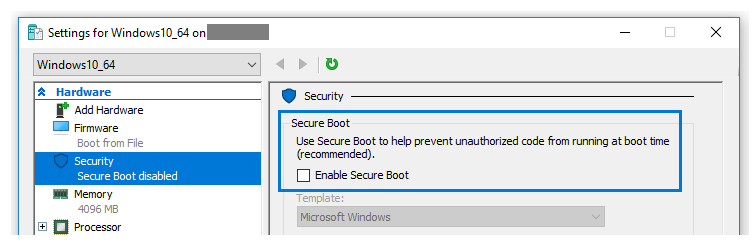 Como Configurar Debug de Kernel Pela Rede (Hyper-V Edition) 2021-05-01 [tag_videos] [tag_debugging] [tag_coding] Estava pensando em transformar alguns posts antigos que estou revisando em vídeos no YouTube. Acho que o esforço para fazer isso é relativamente baixo se for sem áudio, sem edição e apenas com o que eu naturalmente faria para validar as partes técnicas, e muita gente poderia aprender algumas coisas, como, por exemplo, configurar o debug de kernel. como-configurar-debug-de-kernel-pela-rede |
| Little Witch Academia 2021-04-25 [tag_animes] Este anime possui traços que lembram aqueles desenhos feitos à mão da década de 80, mas está sendo lançado nesta década, o que é tão fofinho quanto os traços completamente diferentes mas com a mesma vibe de Kobayashi Dragon's Maid de evocar o melhor de uma época e aproveitar as evoluções tecnológicas de animação. little-witch-academia |
| Gokushufudo (The Way of the Househusband) 2021-04-25 [tag_animes] Este curto anime discorre sobre episódios na vida de um ex-Yakuza que agora é dono de casa, mas leva sua rotina tão ou mais a sério do que sua vida de crimes. Ele cozinha bem e administra as compras de casa. O plot é que sem querer ele consegue se desviar dos personagens que tentam fazê-lo voltar aos velhos tempos, e a comicidade está no absurdo das situações. gokushufudo |
| Sobre Amor. Somente Para Adultos 2021-04-12 [tag_movies] [tag_cinemaqui] Sobre Amor. Somente para Adultos. Um passeio bacaninha por alguns relacionamentos que parecem diferentões (não são) enquanto John Malkovich conduz sua palestra em Moscou sobre como a crescente enxurrada de divórcios ao redor do mundo, que só aumentam a cada ano, e o que fazer para manter o amor. Ah, esse amor idealizado. O amor é de fato hoje em dia essa coisa fluida profetizada por um sociólogo famoso cujo nome não lembro, mas vou pesquisar depois. Zygmunt Bauman. Essa internet decepciona menos os seres humanos do que sua busca por amor. sobre-amor-somente-para-adultos |
| Recovery of an Mmo Junkie (Netojuu no susume) 2021-04-10 [tag_animes] Esta série parece bem famosa pelo número de dublagens no Crunchyroll. Ela é fofinha e super-convencional. É sobre uma NEET (vagabunda) que gosta de jogos de MMO (RPG virtual de galera). Então ela conhece uma personagem e vivem flertes virtuais. Ao final do primeiro episódio eles se encontram no mundo real de passagem e um pouco de humor se revela neste anime de reaction e pouca complexidade. recovery-of-an-mmo-junkie |
| O Protocolo de Auschwitz 2021-04-10 [tag_movies] [tag_cinemaqui] História baseada em fatos registrados sobre a fuga de dois judeus eslovenos do campo de concentração nazista mais famoso, em O Protocolo Auschwitz a chave é a direção sóbria de Peter Bebjak que entrega uma visão fatalista, claro, pois todos sabemos o desfecho geral da segunda guerra, mas ao mesmo tempo realista. E não estamos falando daquele realismo dramático. A câmera de Bebjak acompanha esses dois heróis e seus companheiros pelo pesadelo de olhos abertos que essas pessoas viveram nesses duros dias de um passado que vai se tornando cada vez mais apagado na memória do povo. o-protocolo-de-auschwitz |
| New Game! 2021-04-10 [tag_animes] Um anime sobre trabalho. Ela chega no escritório e conhece outros que trabalham. Que legal, todo mundo trabalha. Algumas curiosidades sobre pessoas que trabalham em escritório na frente do computador, mais algumas curiosidades sobre quem está no seu primeiro dia de trabalho. Nenhuma tensão no S01E01. Não há piadas de verdade ou dramas reais. E apenas mulheres trabalham neste andar. Falta de diversidade completa. new-game |
| Space Patrol Luluco (Uchuu Patrol Luluco) 2021-04-04 [tag_animes] A inventividade do nonsense nesta animação com vários conceitos artísticos que fogem do lugar comum, como mesclar fotos de lugares reais com as personagens do anime ou o uso de uma câmera frenética que lembra muito a falta de limites em Kill La Kill. A história é pano de fundo para o absurdo. As possibilidades de uma cidade japonesa onde terráqueos e aliens convivem são ilimitadas, mas em Uchu Patrol Luluco ainda existe um estilo de desenho cartoon que eleva mais ainda as fichas. Curto e simples de acompanhar. space-patrol-luluco |
| Science Fell in Love, So I Tried to Prove It 2021-04-04 [tag_animes] Este é um [Cells At Work] para o método científico. Você irá aprender neste anime alguns conceitos fundamentais que faz com que a ciência avance. E tudo gira em torno de um casal de cientistas apaixonados. science-fell-in-love-so-i-tried-to-prove-it-rikei-ga-koi-ni-ochita-no-de |
| Saekano How to Raise a Boring Girlfrield (Saenai heroine no sodatekata) 2021-04-04 [tag_animes] Juntaram memórias afetivas e de uma equipe de criação de um jogo erótico em um anime, e os closes sensuais junto dos diálogos atravessados de personagens que nunca foram apresentados é um caos chato de acompanhar. Não há substância que junte essas cenas em um subtexto, uma trama, qualquer coisa. saekano-how-to-raise-a-boring-girlfrield |
| Magical Girl Ore (Mahou Shoujo Ore) 2021-04-04 [tag_animes] Meninas mágicas peitudas é o que elas são, mas nos peitos há apenas músculo. São meninas-macho quando se transformam para defender o mundo desses demônios com forma de bichinhos de pelúcia igualmente musculosos. Alguma mensagem oculta sobre transformistas? Alguma bandeira colorida? Não, nada disso. Apenas o trash diário japonês esbanjando criatividade, por mais que o desenvolvimento seja apressado. magical-girl-ore |
| Inferno Cop 2021-04-04 [tag_animes] Está é uma sucinta e viciante ONA (Original Net Animation) dos Studios Trigger, os mesmos dos instigantes [Kill La Kill] e [Space Patrol Luluco]. Ela vicia por ser curta e não ser repetitiva. Lembra um pouco os devaneios de trabalhos experimentais como [Kung Fury], mas com coesão e sem apelar para as memórias populares do trash. É uma história simples com profundidade criativa sem se preocupar em ferir mentes e gostos. Foi um dos 30 animes banidos recentemente da China, o que apenas aumenta seu status. inferno-cop |
| That Time I Got Reincarnated as a Slime 2021-03-27 [tag_animes] Depois da [programadora que encheu a cara e convidou um dragão para morar com ela] este é um anime que começa com um executivo que é assassinado em plena luz do dia e, como diz o título, ele reencarna como um slime. E tudo como desculpa para uma aventura estilo Zelda. that-time-i-got-reincarnated-as-a-slime |
| Tartarugas Podem Voar 2021-03-27 [tag_movies] Para quem gosta de filme iraniano na década de 2000 tem essa produção irano-iraquiana que deixa qualquer crítico de cinema molhadinho. Tem guerra, miséria, minas terrestres colocadas pelos americanos malvados. Tem até estupro e suicídio de crianças, além de crianças mutiladas e armadas. É o pacote completo. Aquele foi um ano de muito amor para a crítica. tartarugas-podem-voar |
| Pão de Queijo Fácil 2021-03-27 [tag_cooking] A receita original veio do Instagram de uma queijaria de Poços de Caldas, a Queijaria Real. Nessa receita existem apenas três ingredientes, mas já percebi na primeira vez que fiz que faltou sal. Porém, ela é muito mais simples e rápida que a receita que mantenho de [pão de queijo mineiro]. pao-de-queijo-facil |
| O Último Beijo 2021-03-27 [tag_movies] Um dos últimos grandes, do único dos anos 2000, este drama, comédia e romance italiano trabalha os relacionamentos entre diferentes casais e indivíduos como Hollywood jamais ousaria. Ele é honesto, sincero, realista e por isso mesmo conquista nossos corações e mentes. Simplesmente por falar a verdade. Não há contos de fadas da Disney. Não há histórias sobre injustiça social e feminismo. Nada dessas fábulas modernas do novo milênio constam neste filme que reúne em histórias contemporâneas as vicissitudes que o ser humano passou para manter a estrutura familiar intacta, ou viver de acordo com o que é certo, acima de tudo e de todos. A lei do universo, e do porquê as coisas são como são. Um tapa bem dado nos pós-modernistas e relativistas. o-ultimo-beijo |
| O Céu de Lisboa 2021-03-27 [tag_movies] O filme vai nos embalando logo no começo com uma viagem rápida de carro descendo a Europa que dá errado e gera boas e naturais risadas, mas quando chegamos no destino final a aventura se torna uma grande questão filosófica que envolve a existência da humanidade e de sua arte. Pois é, esta é uma comédia do diretor alemão Wim Wenders (Asas do Desejo, Paris Texas, Pina). o-ceu-de-lisboa |
| Meninos de Deus 2021-03-27 [tag_movies] Este filme de 2002 ainda cheira a anos 90. O padre interpretado por Vincent D'Onofrio fuma em plena igreja e não lembra em nada um padre, exceto que suas bolas ficam bem presas na presença da Jodie Madre Superiora Foster. meninos-de-deus |
| Depois da Chuva (aka Koi wa Ameagari no You ni) 2021-03-27 [tag_series] [tag_animes] Que piloto, meus amigos! Um exemplo de episódio. Vamos descobrindo sobre o que é o anime aos poucos. As dores e descobertas do passado conversam com a Akira do presente que não sabe o que será da Tachibana San do futuro. depois-da-chuva |
| A Terceira Geração 2021-03-27 [tag_movies] Um Fassbinder em sua fase hermética, quando ele se distanciou ainda mais do espectador. O diretor alemão era gay assumido e muitos de seus filmes deixam isso transparecer ao imaginarmos que se trata de um Almodóvar alemão. Este filme é um deles, que mostra terroristas de extrema esquerda na época de um atentado em Berlim. Nenhum dos personagens lembra alguém de verdade, pois isso seria impossível. a-terceira-geracao |
| A Cor da Romã 2021-03-27 [tag_movies] Sentimentos de viagem no tempo, para a época medieval. Um clima místico, transcendental. Ligado à arte e ao espírito do tempo, respiramos um pouco um ar hoje inexistente dessa junção de Oriente e Ocidente, suas identidades e culturas de dor, sofrimento, culpa e expiação. O surrealismo em sua forma mais efetiva: cores, formas, textura. Vida jamais vivida. A experiência do cinema que poucos estão afim de experimentar. a-cor-da-roma |
| Bolo Cremoso de Milho 2021-03-20 [tag_cooking] Para esta receita usar uma lata de milho em conserva como base de 200g. Ligue o forno a 200 graus, unte uma forma com manteiga e farinha de milho e quebre três ovos dentro do liquificador. Em seguida adicione a lata de milho e na mesma lata encha metade de óleo e jogue novamente. Depois adicione uma lata de açúcar; nessa parte pode ser mais ou menos, dependendo do seu paladar (comece com uma). Bata bem, para que triture bem o milho e misture com os outros ingredientes. Em seguida adicione uma lata de farinha de milho, que pode ser fubá, milharina, fubarina, qualquer farinha de milho à disposição, embora a receita original use um fubá mais grosso como fubarina. A seguir coloque uma lata de leite; aqui é outra hora em que você pode escolher trocar seu leite por leite de coco ou outros leites, adicionar um pouco de coco ralado, etc. Porém, mantenha a quantidade em uma lata. Bata novamente, só que bem mais rápido, só para misturar os ingredientes mesmo. Enquanto está batendo ainda jogue uma colher de sopa de fermento químico. bolo-cremoso-de-milho |
| Nostalgia 2021-03-14 [tag_movies] Pedir para um ser humano médio ler algum autor russo já é maldade. Para um ocidental é como se houvesse algo místico inalcançável. Para um oriental há uma narrativa obrigatoriamente enfadonha. Nos mesmos moldes, dizer para um espectador médio de cinema que se ele quiser transcender na cinefilia ele precisa assistir às obras de Andrei Tarkovsky já não é nem maldade: é tortura pura. nostalgia |
| Como Fazer Café 2021-03-14 [tag_coffee] [tag_cooking] Ao longo dos anos meu processo de fazer uma xícara de café mudou radicalmente. Já experimentei coado em papel, coado em pano, moka, prensa francesa, Aeropress. Alguns princípios mudaram, outros se mantiveram ou foram descobertos e mantidos no dia-a-dia. Este é um guia básico e genérico, mas não necessariamente prático, para quem deseja trilhar essa aventura de fazer sempre um café melhor que o de ontem. Ou pelo menos tentar. É um insight filosófico e um pouco científico; um apanhado de conhecimento que talvez você não saiba ainda, ou não dessa forma. como-fazer-cafe |
| Say I Love You (aka Suki-tte Ii na yo) 2021-03-13 [tag_series] [tag_animes] Traços expressivos e uma produção estilizada que chama a atenção para si pela edição, música e montagem formatam esta série como um trabalho denso sobre as profundezas de um trauma infantil. Mei não tem amigos por causa de um desses traumas do passado e chega à adolescência como uma garota quieta e isolada. Vista como maluca e antipática pelos colegas, ela chama atenção obviamente do cara mais popular da escola, pois caras populares estão cansados de rostinhos lindos lhe dando bola. Eles trocam números e forças do destino os fazem se beijar no primeiro episódio. "E agora?". Um anime sobre quando a vida volta a acontecer para quem já tinha perdido as esperanças na véspera. say-i-love-you |
| Obsolete 2021-03-13 [tag_series] [tag_animes] Bem bacana a animação. O traço dos desenhos lembra aqueles esboços dos desenhistas antes da arte final, o que muitas vezes é melhor que a arte final, pois permite ao espectador viajar mais nos conceitos de maneira abstrata, livre. A coloração para a noite do E01 mantém uma textura magnética, estilizada e impressionante do primeiro ao último minuto. O uso de poucos frames em cenas mais calmas nos dá um ar contemplativo do que está por vir, e mais uma vez é uma abstração mais livre que torna a narrativa mais poderosa. A única coisa amadora é a trilha sonora, escolhida de um banco de dados de músicas para obras de guerra e ação. O futurismo do próximo ano de 2023 é aceitável para os fãs de verossimilança, mesmo que a geopolítica seja um mero desejo de conflitos na floresta sem conexão com qualquer situação eminente na vida real. obsolete |
| O Casamento de Louise 2021-03-13 [tag_movies] Uma comédia brasileira pós-retomada e virada do milênio. Estreia da diretora Betse de Paula, é uma produção barata que passou no crivo dos incentivos fiscais da época. Seu elenco enxuto e argumentação com cenários facilmente adaptáveis para locações práticas (como uma casa) dão lugar para a comédia de diálogo e situações que se cruzam. o-casamento-de-louise |
| Amarelo Manga 2021-03-13 [tag_movies] Nunca vi um filme inspirador que se passa no Recife. Tudo de ruim acontece naquela cidade. As pessoas não prestam e a miséria material e espiritual impera. É o inferno no Nordeste. Por isso o povo de artes adora fazer filmes sobre a cidade. Universitários adoram a pobreza glamurizada. É um mundo diferente para eles. Rola até uma estilizada na fotografia. amarelo-manga |
| Polícia, Adjetivo 2021-03-07 [tag_movies] Cinema romeno nunca me desaponta. Nesse acompanhamos a rotina de um investigador de polícia vigiando três jovens que fumam maconha. No país ainda é crime consumir. O policial não quer fazer o flagrante para não ficar com a prisão de um jovem na sua consciência e porque "a lei logo vai mudar, na Europa inteira já não é assim". Sua rotina é monótona de propósito. O filme pede para observarmos seu ritmo de trabalho. É impecável. Quanto menos a história nos conta, focada apenas no ponto de vista do policial, mais ela nos dá a liberdade de refletir sobre o sistema. policia-adjetivo |
| Ao-chan Can't Study 2021-03-07 [tag_series] [tag_animes] O pai dela é um famoso escritor de livros eróticos e seu próprio nome foi escolhido pelas iniciais das palavras amor e orgia. Disposta a quebrar essa "tradição" na família ela decide se dedicar totalmente ao colégio e aos estudos para fazer uma faculdade bem distante de seu pai. ao-chan-cant-study |
| Kiss Him Not Me (aka Watashi ga Motete Dousunda) 2021-03-03 [tag_series] [tag_animes] Kae Serinuma é gorda e mantém uma rede de amigos lindos e perfeitos no segundo ano do colégio. O motivo: ela shipa secretamente os meninos. Otaku como sua amiga, juntas elas vivem esse mundo de amores 2D, mas Kae é mais podreira e não se vê namorando. kiss-him-not-me |
| A Teta Assustada 2021-03-03 [tag_movies] Existe uma teta. E ela é assustada. O impacto do terror no passado da história do Peru faz a teta ficar assim. Sim, são muitos trocadilhos para nossa mente interior de quinta série lidar. Mas fica pior: a moça tem uma batata na ppk. a-teta-assustada |
| A Ilusão Viaja de Trem 2021-03-03 [tag_movies] Esta comédia leve da década de 50 é parte da longa e produtiva filmografia do cineasta Luis Bunuel na época que morava no México e fazia até três filmes por ano. Não é um filme de grande expressão, mas está na lista dos 100 filmes mais importantes produzidos no México, embora em uma das últimas posições. a-ilusao-viaja-de-trem |
| Lessons From Online Poker Exploit 2021-02-26 [tag_coding] Em 2014 eu palestrei na trilha de segurança do TDC em São Paulo um tema que me deixou muito animado: um exploit baseado em falhas de programação em um código de 10 linhas. O código era tão simples que achei válido traduzir para C e demonstrar como atacar uma simulação de cassino online. lessons-from-online-poker-exploit |
| The Great Passage (Fune Wo Amu) 2021-02-19 [tag_series] [tag_animes] Um anime sobre dicionários. Esse é o nível de riqueza dos assuntos das animações japonesas. Não só isso, mas a riqueza de detalhes também. Esta animação possui traços de cenário que nos faz prestar atenção além do esperado nas imperfeições de uma parede ou um móvel de madeira. Como os sinais de envelhecimento de uma casa onde um jovem introvertido mora com sua idosa e simpática senhoria. the-great-passage-fune-wo-amu |
| Soulmates 2021-02-19 [tag_series] A premissa dessa série é que no futuro haverá um Tinder mágico que dirá quando houver um match entre duas pessoas feitas uma para a outra. Já existem séries parecidas, mas a diferença aqui é que as histórias individuais de cada episódio exploram o que acontece quando a situação está longe de ser perfeita para que um casal seja formado. soulmates |
| Lupin 2021-02-19 [tag_series] Cuidado com essa minissérie, que de mini não tem nada. Ela apresenta em quatro horas uma história que não termina, o que vem se tornando um padrão em streaming. Vá assistir dois filmes lançados antes de 2010 que você ganha mais. lupin |
| Villa Doluca Classic Rose 2021-02-16 [tag_wine] Mais um vinho dessa Vila do Luca. Esse Luca sabe fazer vinhos interessantes. Localizada na Turquia, uma das maiores produtoras de uvas, mas não de vinhos (por motivos religiosos), Villa Doluca é uma produtora e exportadora desses rótulos. villa-doluca-classic-rose |
| Km 0 2021-02-16 [tag_wine] Já havia visto este rótulo em algum lugar, mas nunca provei. Ao visitar meus amigos foi a oportunidade, pois foi a primeira garrafa aberta naquele dia. Para um Cabernet Sauvignon ele é muito diferente, muito tânico e encorpado. E azedo. Surpreendentemente azedo. Gostei por não ser um vinho fácil de tomar. Dá para ir degustando aos poucos. km-0 |
| Cinco Forais 2021-02-16 [tag_wine] Abri esta garrafa antes de viajar e deixei um pouco em uma taça decantando. Não sabia que ele ficou 24 meses em barricas de carvalho francês desde 2017. Curioso que a Sociedade da Mesa recomenda que ele pode ser bebido até 2023, o que é curioso para um vinho com tanto tempo de maturação. Ele é bem encorpado e alcoólico quando aberto. Difícil de beber, mesmo. É preciso dialogar com ele. Frutado e intenso, vai deixando um traço tânico forte. Uma pequena pancada europeia inesperada. cinco-forais |
| Uma Breve História Sobre Preconceito (e Café) 2021-02-15 [tag_coffee] Eu me lembro de vídeos antigos de moedores de café manuais em que o sujeito fica 10 minutos no YouTube girando aquela matraca até conseguir tirar de alguns grãos de café o pó para seu cafezinho matinal. Fiquei com a impressão de que todo moedor manual era assim e desisti na hora de ter um, optando por um elétrico. uma-breve-historia-sobre-preconceito-e-cafe |
| Fazenda Baobá 2021-02-15 [tag_coffee] No meio das minhas compras de estocagem de café peguei 250g deste grão que veio lá da região de Média Mogiana, em São Sebastião da Grama, interior de SP (mas do lado de MG). Ele pode ser encontrado no mercado Santa Luzia e comprado online. fazenda-baoba |
| Dororo 2021-02-15 [tag_animes] Originalmente um mangá da década de 60, este remake animado mantém alguns aspectos brutais deste drama em contexto histórico com muita instabilidade política, violência e extrema pobreza. Estes elementos são piorados ou representados pelas figuras de monstros e demônios habitando o Japão durante o declínio de seu sistema feudal, guerra civil e, portanto, tempos de incerteza. dororo |
| A Sun 2021-02-15 [tag_movies] Depois que acabou o filme minha esposa pergunta o que eu achei e eu pergunto "que filme", tinha esquecido o ocorrido de duas horas e meia. O diretor gosta de fazer cena aérea e com detalhes do cenário sem relação com a história. Não pesquisei, mas deve ser um webmillenial. Os pais disseram que ele podia ser tudo na vida e o desgraçado escolhe diretor de cinema. a-sun |
| Túmulo dos Vagalumes 2021-01-28 [tag_animes] [tag_movies] Esse é um filme que me foi apresentado a primeira vez 15 anos atrás como o filme mais triste que eu veria e que choraria litros ao vê-lo. Não chorei, e para falar a verdade não havia entendido muito bem o drama por trás da atmosfera fatalista que cerca este garoto e sua irmãzinha, sobrevivendo os últimos meses da guerra sem qualquer suporte familiar ou comunitário. tumulo-dos-vagalumes |
| Um Delduca no Pedaço 2021-01-17 [tag_series] Esta série de anime obscura iniciou há mais de três décadas. Na época na região de Mococa, interior do estado de São Paulo, nasciam os primeiros computadores pessoais e esta é a história de um jovem que aprendeu a usá-los como ninguém. um-delduca-no-pedaco |
| Santa Helena Alfenas 2021-01-14 [tag_coffee] Café que chegou esse mês do Grão Gourmet possui tanino equilibrado e tons semi-cítricos. Pouco amargo, levemente doce. santa-helena-alfenas |
| Stamnaki Agiorgitiko 2021-01-12 [tag_wine] Outra garrafa grega que abri (dessa vez tinto, mas mesma vinícola) possui um corpo forte e um vinho azedo e com aroma que se esvai rapidamente. Frutado, mas diferente do Malbec padrão, encorpado. stamnaki-agiorgitiko |
| Stamnaki Moschofilero 2021-01-10 [tag_wine] Mais um da série "uvas estranhas", Moschofilero é uma aromática uva branca grega, e Stamnaki é um rótulo da região. Apesar de vinho branco esta garrafa vem fechada com rolha, algo incomum para o gênero. Não sei se ela é aromática de fato, mas o sabor é mais pronunciado, azedo e tânico, do que normalmente vinhos brancos são. Pode ser degustado sozinho, mas para os apreciadores de branco vai parecer ligeiramente mais forte, apesar de não tanto quanto um tinto de uva madura. stamnaki-moschofilero |
| Villa do Luca 2021-01-07 [tag_wine] Eu não sei como analisar este vinho. Há uma uva nele bem diferente do usual. Ela é turca, veio lá da vila do Luca. Descobri que na Turquia há uma das maiores viticulturas do planeta, mas infelizmente eles não produzem tanto vinho assim há séculos por causa da religião local que proíbe o consumo de álcool. Apenas recentemente a produção aumentou devido ao incentivo para as exportações, embora a grande maioria das uvas sejam para consumo não-alcoólico. Esta uva, Okuzgozu cheio de pingos, junto do blend com Shiraz e Merlot garante um aspecto mais tânico que essas outras duas, mas mais frutado. É bem diferente do usual dos vinhos europeus e inclusive do Novo Mundo. villa-do-luca |
| Resoluções 2021 2021-01-02 Inspirado no [post que vi] de meu amigo DQ sobre resoluções de ano-novo, algo que ele já vem fazendo desde 2007 (impressionante), resolvi compartilhar um pouco neste post sobre minhas resoluções de 2020. Na verdade não costumo fazer isso, mas ao passar a virada de 2019 para 2020 na casa de outro amigo, ele e sua esposa vieram com um presente e uma ideia para todo o grupo na ocasião: um caderno e uma caneta. Cada um deveria preencher nas primeiras folhas do caderno o que pretendia fazer durante o ano que se inicia. Algo mais ou menos assim, eu provavelmente já estava bêbado o suficiente para não me lembrar dos detalhes. resolucoes-2021 |
| Salton Moscatel 2020-12-27 [tag_wine] A linha Moscatel entre da Salton, vinícola referência mundial de frisantes, nunca decepciona. A desse ano se servida a puro colocando 10 mins no freezer antes da meia-noite vai nos brindar com um vinho liquoroso pelo açúcar adicionado, mas ao mesmo tempo equilibrado e não-enjoativo. É um ótimo custo benefício para quem não curte frisantes e quer brindar, e uma opção barata para compartilhar com quem não conhece nada de vinho seco. salton-moscatel |
| Miluna Rosso Puglia 2020-12-27 [tag_wine] Essa garrafa é da mesma vinícola do 50 safras, um vinho apresentado pelo @xvjau e que virou sensação depois que foi selecionado pelo @colemaker como brinde de batismo do aguardado ambiente lua. Essa é uma opção de baixo custo para ser bebido no dia-a-dia. Corpo leve e aromático, com sabor frutado de groselha e outras frutas vermelhas. miluna-rosso |
| Armantes Garnacha 2020-12-27 [tag_wine] Vinho espanhol da região da Catalunia, os vinhedos possuem 35 anos e as uvas da varietal Garnacha são colhidas à mão. Em 2018 teve um terço da safra passada por 6 a 9 meses em carvalhos franceses e americanos. O resultado é um vinho ainda alcoólico e com uma certa estrutura. Pode ser guardado por mais uns cinco anos sem problemas. Seu aroma é levemente tânico e seu sabor possui notas frutadas que lembram frutas mais maduras e densas como ameixa ou compota. armantes-garnacha |
| One Punch Man: Return of the Hero 2020-12-26 [tag_series] Bem decepcionante esse início de temporada. Esta é uma série de uma tacada só, mas money talks e a tentativa de continuar a aventura que nunca acontece acaba se levando a sério e com poucos momentos cômicos que faziam-nos repensar a baboseira que são as séries de super-heróis com seus níveis malucos, e a sindicalização (fora os vilões hilários, vilanescos). Neste episódio é usado o arco de um dos primeiros humanos salvos por Saitama, da época em que ele tinha cabelo. Esse cara sempre estava por perto quando One Punch Man aparecia para salvá-lo. O resultado: o mérito foi atribuído a ele, que se auto-proclama o humano mais forte de todos. A piada: ele é um otaku desempregado comprando jogos de namoro. Not funny enough. Nível C. one-punch-man-return-of-the-hero |
| Meu Amor de Verão 2020-12-26 [tag_movies] Pawel Pawlikowski, diretor polonês dos premiados [Ida] e [Guerra Fria], dirige esta produção inglesa local em uma sinergia de atuações fascinante entre a já experiente Emily Blunt e a estreante Natalie Press. Ambas irão se apaixonar em um romance que resgata de maneira bem clichê os dogmas progressistas da falsidade das religiões e da vida burguesa e não a subverte, mas entrega outro olhar, mais maduro e renovado. Apenas um polonês obcecado com a observação dos pequenos detalhes do comportamento e da essência humana para não se deixar levar pela cartilha vigente. Este filme não é nada demais, mas é repleto de virtudes em sua composição, que você pode não reconhecer até a última reviravolta, mas que conseguirá sentir e repensar seus próprios dogmas. meu-amor-de-verao |
| Dropkick on My Devil 2020-12-26 [tag_animes] Chute a Bunda do Meu Demônio (tradução livre) tem uma pegada parecida com [Miss Kobayashi's Dragon Maid], em que mais importante que a empregada ser um dragão é acompanhar como os personagens interagem, se ajudam, acham seu lugar nesse novo, estranho, perigoso e maligno mundo dos humanos. Porém, diferente de Dragon Maid, esta é uma comédia mais infantil, onde apesar de existir momentos de pura tortura com sangue jorrando e pedaço do rabo de uma cobra demoníaca ser fatiado para deleite dos outros convidados, tudo é muito fofinho e logo fica óbvio que a série só usa seu plot como chamariz e um ou outro detalhe relacionado a esses seres sobrenaturais, mas no final poderiam ser humanos comuns. Mas que graça teria, não? dropkick-on-my-devil |
| Apartamento 1303 2020-12-26 [tag_movies] Terror japonês raiz. Bacana pelos defeitos especiais, com destaque para as meninas que protagonizam um suicídio triplo (promoção de compra coletiva) e penduradas na varanda parecem versões pioradas da boneca Barbie. Uma história sem pé nem cabeça, mas com ótimos momentos de quadril. Este é um terror da década de 2000 antes de virar cult, o que está sendo chamado de neo-terror pelos críticos que abraçam movimentos de momento, como a década do renascimento do faroeste. E antes de [Leone] havia sub-produções italianas. Antes de [Babadook] havia Apartamento 1303 e seus remakes americanos (e Apartment 1303 tem um remake estadounidense em versão 3D, para os que acham que algumas coisas não dá pra piorar). apartamento-1303 |
| Uma Sessão Méliès 2020-12-16 [tag_movies] É meio que mágico acompanhar uma sessão em um teatro em Paris onde eram apresentados os trabalhos deste artista e empreendedor no início do cinema. Nossa host é a neta do cineasta, e ela descreve o ritual das pessoas que viram esses curtas entre 1898 e 1905. Havia uma pessoa que explicava o filme. Havia um pianista para acompanhar os filmes. Mesmo se você já viu um ou outro desse curta, como o icônico [Viagem à Lua], esta sessão traz algo mais: é simpática. É ingênua. É desprovida de outras intenções senão observar uma arte engatinhando. Onde essa arte morreu? Não sabemos precisar ainda. Mas sabemos onde nasceu. Foi dos ombros desses idealizadores. Um passo de cada vez. E a mágica se fazia real. uma-sessao-melies |
| O Cozinheiro, o Ladrão, Sua Mulher e o Amante 2020-12-16 [tag_movies] Finalmente um filme cujo material bate com o estilo de seu criador. Afeito a trabalhos experimentais no cinema, o pintor Peter Greenaway nem gosta tanto assim de cinema, o que explicaria seus péssimos e confusos filmes. Contudo, disposto a colocar sua visão em movimento em uma telona, ele sujeita sua paleta de cores ao formato industrial de exibição. Com isso já produziu e lançou várias atrocidades, como [8 1/2 mulheres] e [O Livro de Cabeceira], mas seu filme mais marcante e o divisor de águas foi este "O Cozinheiro, blá-blá-blá", ganhador de prêmios da crítica e algo que possa ser lançado nos cinemas comerciais. Até porque exibe Helen Mirren, em forma e com pelos. o-cozinheiro-o-ladrao-sua-mulher-e-o-amante |
| MIB: Homens de Preto 2020-12-12 [tag_movies] Revisitado, MIB cheira a anos 90. Tommy Lee Jones está fabuloso como o funcionário de uma agência de relações intergalácticas que se diverte apagando a memória das pessoas até se cansar e voltar para sua amada. Will Smith repete seu personagem da série Um Cara no Pedaço misturando ginga hip-hop e uma força de vontade incompreensível de ser um policial. Ambas as aspirações não são harmônicas. O único momento que entendemos sua motivação é quando ele conhece a gracinha da legista, que irá descobrir que existem mais anatomias no universo do que sua vã filosofia compreende. Oscar ou indicação de efeitos visuais e maquiagem mais que merecidos. Mais de 20 anos depois o filme funciona. Desde então Tommy Lee conseguiu refinar sua persona em trabalhos intimistas, enquanto Will Smith inflou seu ego do tamanho da galáxia e investe seu tempo em grandes produções onde é ele mesmo ou em produções menores onde é uma pessoa muito sábia e altruísta. O plot twist que ele não descobriu é que a galáxia comparável com o tamanho de suas capacidades de atuação é equivalente ao do filme. mib-homens-de-preto |
| Fermento Amanteigado para o Café da Manhã 2020-12-12 [tag_cooking] Essa receita ficou boa com fermento natural e uma tonelada de manteiga. Um pouco mais trabalhoso que os [biscoitos], e seria bacana eu ter essas forminhas que cortam fino a massa, mas com o que tive já ficou bem bom. Tudo graças à manteiga, claro. Não preciso mais descartar fermento nunca mais na vida. fermento-amanteigado-para-o-cafe-da-manha |
| Código 46 2020-12-12 [tag_movies] Tudo começa com uma descrição em texto: no futuro não vai poder comer sua prima. Mais ou menos. Tem a ver com as pessoas serem concebidas in vitro e ter muito copy & paste (futuro Stack Overflow Sex Edition?). Então o DNA dos pais não pode ser idêntico senão vai dar ruim. Pra não dar ruim inventam esse código 46 pra abortar a operação. O número sugere ser a soma de dois grupos de 23 cromossomos, mas eles falam em genes e DNA o tempo todo. Eu que sou leigo vou me calar. codigo-46 |
| Fazenda Tijuco Preto 2020-12-09 [tag_coffee] A Fazenda Tijuco Preto fica em Sul de Minas, em Andradas. Comprei do estoque da Grão Gourmet porque meus cafezes estavam acabando e era o único disponível em grãos. Essa torra média possui baixa acidez, levíssimo amargor e um corpo fácil de tomar sozinho. Pouco aromático, é o famoso não fede nem cheira, que agrada paladares menos afeitos a disposições agressivas das moléculas presentes em torras e frutos mais algozes. PS: sabor mais floral, menos frutado. fazenda-tijuco-preto |
| A Última Noite de Bóris Grushenko 2020-12-09 [tag_movies] Ainda na fase comédia pastelão tem essa paródia dos romances russos que Woody Allen tanto evoca em seus diálogos existencialistas e filosóficos. Ele dirige um filme de guerra e traição como quem está montando um quadro para o final de noite no Zorra Total, mas é muito charmoso, ingênuo e sagaz. Ele não consegue evitar pensar a respeito dos temas que se propõe a falar, e por tabela não nos deixa, espectadores, parar de pensar também. Comédias de Allen são exaustivas, e as como essa são exaustivas apesar de medíocres. a-ultima-noite-de-boris-grushenko |
| Sherlock: The Final Problem 2020-12-08 [tag_series] O último episódio da série da BBC sobre o detetive mais famoso de todos os tempos (e sua família) está longe de ser o melhor de todos, mas assistindo agora em revisita soa melhor do que a primeira vez. Talvez as séries e filmes que assisti nesses últimos três anos não tenham ajudado muito a elevar a sétima arte, com raras exceções. O mundo está muito chato e condescendente com uma barra que talvez nunca tenha baixado tanto em tão pouco tempo. sherlock-the-final-problem |
| Bananas 2020-12-08 [tag_movies] Um Woody Allen jovem, de comédia pastelão, que mistura piadas inteligentes com comédia física. O roteiro foi escrito em parceria com Mickey Rose, com quem já havia escrito o roteiro de seu primeiro roteiro original, a explosão criativa [Um Assaltante Bem Trapalhão]. Em Bananas poucas piadas funcionam e envelheceu mal, mas ainda assim é mais engraçado que os standups da Netflix. As ideias são boas, principalmente as que tentam expor o ridículo de todos os lados de um conflito político, mas não foram implementadas na melhor das formas. Allen como ator está irregular. Ele não é flexível o suficiente para todas as situações que coloca seu personagem, um sujeito que trabalhava testando invenções falidas e vira líder de uma revolução em uma república de bananas. A bem da verdade nem todas as gags são totalmente pensadas na história principal, soando episódico em vários momentos, sendo o pior deles os momentos em um tribunal. bananas |
| Transmatrix 2020-12-06 [tag_movies] Os irmãos Wachowski hoje são irmãs. Ambos passaram por cirurgias de mudança de sexo. Recentemente, durante entrevistas sobre a produção de Matrix 4, foi comentado por uma delas que o primeiro Matrix era uma alegoria sobre transexualidade. transmatrix |
| O Signo do Leão 2020-12-06 [tag_movies] Desconstruindo um folgado. O diretor francês Éric Rohmer, tão bom em pormenorizar a vida cotidiana de pessoas comuns e seus relacionamentos, realiza aqui a jornada de um bon vivant cheio de amigos que lhe pagam bebidas para um mendigo injuriado com a Paris que lhe deu as costas. Seu orgulho é forte demais e seu tempo esgota rápido demais. O passo-a-passo que Rohmer nos informa dá a sensação de que poderia acontecer com qualquer um. É o drama da vida na cidade grande. Contudo, depois de alguns minutos de reflexão vemos que não é bem assim. Basta trabalhar. o-signo-de-leao |
| O Balão Branco 2020-12-06 [tag_movies] As caras que essa menina faz compensam qualquer momento chato do filme. Ela chora como se não houvesse amanhã, fica irritada, desesperançosa. Seu jeito de juntar as mãos, sua maneira insistente de pedir. Ela fica receosa e nós ficamos receosos por tabela. Será que alguém vai ouvi-la? Todos escutam, mas ninguém de fato ouve. Fica esse suspense. A câmera de estreia do pupilo de Kiarostami, o diretor Jafar Panahi, não perde a metrópole em volta da pequena Razieh. Todos estão atarefados para o feriado de Ano-Novo e ela só quer um peixinho dourado vistoso para a hora da virada, uma tradição na região do Irã. Em vários momentos tememos se ela conseguirá, porque a tensão é muito poderosa nesse tipo de filmagem. Na maioria do tempo vemos o rosto dela ocupando a tela ou um adulto atarefado, alheio ao seu drama. E não estamos todos alheios aos dramas dos que passam do nosso lado? Um soldado senta-se para conversar brevemente com ela. Ela aprendeu a não falar com estranhos, mas ele vem de uma cidade pequena onde todos se conhecem e não existem estranhos. E é isso o que está sendo discutido nas entrelinhas. Essa alienação da cidade grande. Ninguém confia em ninguém. Nós como espectadores enxergamos aquela pequena menina como uma vítima da cidade e seus perigos. Ela carrega uma nota graúda consigo e isso é suficiente para ela correr grande risco. Que filme tenso, cômico, imperdível. Nenhum momento é desperdiçado. No último minuto surge o garoto do começo. O que vende balões. Ele já vendeu quase todos. Só falta o branco do título do filme. Quando a menina e seu irmão finalmente conseguem resolver o impasse ele vira paisagem. É o novo estranho. E ninguém liga para estranhos em uma cidade grande. o-balao-branco |
| Dietland 2020-12-06 [tag_series] Série sobre o de sempre: aceite seu corpo, indústria de cosméticos. Tudo muito suave para chamar a atenção. O feminismo do século 21 no Ocidente se limita a lutar contra a opressão das pessoas acharem que só existe um tipo de beleza. Ela recusa cantadas porque sabe que os homens só querem comê-la por fetiche. Ela passa mal por estar em uma dieta da moda que é horrível. dietland |
| Delicatessen 2020-12-06 [tag_movies] Jean Pierre está a nove anos de Amélie Poulain e demonstra aqui um filme sórdido sobre tempos difíceis e como apenas pessoas comuns não resistem ao sistema, sendo preciso verdadeiros altruístas ou malucos ou sensíveis do circo para enxergar além. A parte mais tocante é como ele retrata o cuidado com que ele assopra o olho dela. Da metade pro final a coisa descamba, assim como em [Mic Macs], para o exagero pelo exagero. Perde seu charme, ganha o apelo comercial. delicatessen |
| Biscoito com Fermento Natural 2020-12-06 [tag_cooking] Boa receita. Simples de seguir. A parte mais difícil é abrir a massa, mas se você não se preocupa muito com simetria o resultado é um bom biscoito para o chá. Um tanto seco, mas dá para resolver isso com algum patê, manteiga e outras coisas. E não desperdicei nada da alimentação do meu fermento natural. biscoito-fermento-natural |
| Sherlock: The Great Game 2020-11-22 [tag_series] Um atributo admirável dessa série da BBC é que ela não cai na tentação de serializar histórias do detetive como se fosse comum crimes extraordinários acontecerem todos os dias em Londres. Cada episódio implicitamente gira em torno da única pessoa com motivos para trazê-los à tona: Moriarty, arqui-inimigo de Sherlock. E aqui os produtores e criadores sentem que é hora de apresentá-lo, já na primeira temporada que chega ao final. Sua aparição é discreta e em uma revisita impossível de não perceber os seus detalhes. Andrew Scott consegue sustentar a suposta loucura deste icônico vilão e não entrega todas as cartas na primeira conversa com seu motivo de existência. A sequência na piscina é pedestre, amadora e apaixonante. Merecedora de mais investimentos de tempo e dinheiro na produção. Algo muito especial está sendo criado aqui. sherlock-the-great-game |
| Sherlock: The Blind Banker 2020-11-22 [tag_series] Segundo episódio da série da BBC, uma vez consolidados os personagens clássicos de Sir Arthur Conan Doyle na época contemporânea, o segundo roteiro se permite ser mais denso e brincar com mais referências que precisam estar na memória do espectador que for acompanhar as tramas se desenvolvendo enquanto os personagens vão evoluindo junto. Se por um lado este é o primeiro encontro de Watson com uma crush que conheceu no seu primeiro emprego após a volta da guerra, esta também é uma oportunidade para analisarmos sua relação com Sherlock, que é divertidamente possessivo e ciumento, mas que ao mesmo tempo possui suas razões para acompanhá-los. Esta história é digna dos livros do autor, com direito a nos manter na expectativa do caso durante todos os 90 minutos em um embate mais racional do que físico, mas que ainda consegue manter a ação presente (apesar de mais previsível). É fascinante observar como a série vai evoluindo aos poucos, seja no roteiro, direção ou arte. sherlock-the-blind-banker |
| Sherlock: A Scandal in Belgravia 2020-11-22 [tag_series] Um dos melhores episódios da série é o primeiro da segunda temporada, A Scandal in Belgravia. Ele estabelece uma intrincada rede de personagens que crescem dentro de uma trama que envolve a continuação da temporada anterior nos seus últimos momentos após termos sido apresentados a Jim Moriarty e a emenda com Irene Adler, uma dominatrix que impressiona menos pelo sexo e mais pelo seu uso político. E por falar em política há uma participação maior do Reino Unido e outros governos em torno dessa mulher com um chicote que torna a história ainda mais picante. sherlock-a-scandal-in-belgravia |
| How to Keep a Mummy 2020-11-22 [tag_series] [tag_animes] Esta série de anime adorável é sobre voltar a enxergar a ternura do dia-a-dia, a fazer do carinho entre mascotes e filhos o tema principal. Não há vilões (pelo menos não até onde acompanhei) nem reviravoltas. Apenas uma pequena múmia adorável e seus amigos. A descoberta sobre o que ela come, como ela trata uma doença e se outros compartilharão do mesmo respeito e admiração dessas criaturinhas sabendo que elas existem. how-to-keep-a-mummy |
| Borat: Fita de Cinema Seguinte 2020-11-22 [tag_movies] O novo filme do Borat não consegue ser mais um mockumentary como o primeiro, nem apresenta qualquer crítica aguda ao American Way of Life como o primeiro. Como poderia? É um filme encomendado por uma mega-corporação vendendo streaming internacionalmente, mas fundada em solo americano. É um sistema de troca capitalista, onde ele te entrega algumas risadas em troca de sua alma. borat-fita-de-cinema-seguinte |
| Sobre Nosso Déficit de Atenção 2020-11-14 [tag_essays] Nossa sociedade produtiva está doente, mas apenas constatar o fato não começa o tratamento. Nós sabemos os sintomas e a causa. A causa é a evolução tecnológica se aproveitando de nossas falhas biológicas por grandes corporações para vender anúncios. Os sintomas é uma geração inteira diminuindo sua capacidade de concentração e vivendo como autômatos que clicam em links. sobre-nosso-deficit-de-atencao |
| O Gambito da Rainha 2020-11-14 [tag_series] ## Xadrez para os fracos Esta série da Netflix, que por isso me dá certa alergia, só me chamou a atenção porque tem xadrez no meio, do qual sou aficionado, mas depois descobri que é do mesmo roteirista de [Logan]. A história é de uma garotinha que se tornou órfã de mãe após um trágico acidente de carro e no orfanato aprende xadrez apenas observando o zelador e jogando em sua mente. Ela toma calmantes, naquela época medicação dada para crianças, e se torna uma viciada, mas consegue antes de dormir enxergar do teto de seu quarto um tabuleiro gigante onde analisa suas partidas. o-gambito-da-rainha |
| Enola Holmes 2020-11-14 [tag_movies] ## O único teste em que ela passa é o de Bechdel Quando você pensa em escrever sobre um filme esquecível e irrelevante como Enola Holmes a primeira coisa que vem à mente é rotular e julgar como um produto Netflix com todo seu checklist obrigatório, como o feminismo. Porém, isso é tão óbvio que não merece mais ser citado. enola-holmes |
| Bob Esponja: o Incrível Resgate 2020-11-14 [tag_movies] Certamente esta é a obra mais ofensiva ao legado de Bob Esponja. Não-canônica (explica as origens das amizades tudo errado) e apelando para sentimentos baratos com uma trama descaradamente copiada do [filme original], "O Incrível Resgate" mantém alguns bons momentos do personagem aloprado e seus amigos, mas trai nossas expectativas em sequências inteiras no melhor dos casos desnecessárias e no pior contra a atmosfera da série animada original. bob-esponja-o-incrivel-resgate |
| Anuska, Manequim e Mulher 2020-11-14 [tag_movies] É interessante assistir esses filmes antigos brasileiros. Este da década de 60, muito próximo da intervenção militar, flerta com o cenário político do país e é um dos últimos a fazer isso. Francisco Cuoco é Bernardo, um escritor frustrado de um jornal convencional que se fecha cada vez mais para a realidade. Ele conhece a belíssima Anuska do título, interpretada por Marília Branco, e ambos criam junto do diretor Francisco Ramalho Jr. quadros que evocam o desolamento e a tentativa de ser feliz em um país à beira do colapso. anuska-manequim-e-mulher |
| Skol Puro Malte 2020-11-08 [tag_beer] A Ambev lança a versão "Puro Malte" para suas "cervejas". Experimentei a Skol e agora a Bohemia, que já era um tanto espumenta e doce para meu paladar. Ela continua espumenta, mas menos doce. São tantas gradações de mediocridade que se torna difícil diferenciar. Logo estaremos como naquele vídeo paródia de degustação de águas. Não tenho mais minhas anotações de cervejas, mas sempre posso começar de novo. E vou aproveitar agora, que fazia uns dois meses que não ia ao mercado e tive essa oportunidade. Peguei alguns rótulos de mercadinho de bairro, mesmo. Alguns ouvi falar bem dos amigos e conhecidos, outros por pura curiosidade. E um dos mais acessíveis foi essa Skol Puro Malte, a versão plus da cerveja conhecidíssima do pessoal de boteco e fãs de derivados de milho. O site da Ambev diz que esta edição é "leve e democrática", tentando sugerir que agrada todos os gostos. De fato ela não é amarga o suficiente para não afastar os bebedores das cervejas doces e baratas do mercado, como a própria Skol tradicional. No entanto, é possível sentir um certo amargor a mais. É bem leve, mas se eu tiver que escolher entre a tradicional e esta, esta com certeza é preferência. skol-puro-malte |
| Palestras 2020-11-08 [tag_lists] Segue a lista de palestras que ministrei ao longo dos anos que possuem alguns slides úteis (os com slides inúteis não estão disponíveis e devem estar na memória dos que assistiram ou em algum post perdido por aí). Have fun =) palestras |
| Irmãs Jamais 2020-11-07 [tag_movies] História sobre uma família da cidade turística de Bobbio, na Itália. A família é de verdade, mas a história é fantasia. O IMDB o chama de "nostalgic fantasy documentary", mas soa mais ficção estilizada. As atuações e os ângulos da câmera nos convencem mais do que a história, que é irrelevante. Este é um filme sobre personagens e a passagem do tempo. A caçula da família cresce a olhos vistos e um efeito Boyhood ocorre durante o filme. As filmagens de Marco Bellocchio são primorosas e o elenco familiar afiado. O diretor gosta de alusões à nostalgia, como seu mais recente Belos Sonhos. Estes são filmes gostosos de assistir sem o comprometimento de se preocupar em seguir uma história com começo, meio e fim. irmas-jamais |
| Berlin Alexanderplatz 2020-11-07 [tag_movies] [tag_mostra] [tag_cinemaqui] Berlin Alexanderplatz é um filme de três horas que passam voando. Se trata do conto do homem comum, narrado por uma voz onisciente que a divide em partes, que não fazem lá muito sentido, mas com reviravoltas entre elas. Ser dividido em partes torna a tarefa de assisti-lo mais fácil. É como um livro e seus capítulos. berlin-alexanderplatz |
| Verão Branco 2020-11-02 [tag_movies] [tag_mostra] [tag_cinemaqui] Não nos lembramos exatamente como era a nossa infância, a nossa adolescência e o que havia nesse meio tempo. O "meio tempo", essa fase dos doze anos até a maturidade, é a premissa de Verão Branco, filme de estreia do mexicano Rodrigo Ruiz Patterson que estreou no Festival de Sundance e agora disponível na Mostra de São Paulo. É um filme direto sobre a visão bem peculiar de um jovem com sérios problemas emocionais. verao-branco |
| Walden 2020-11-01 [tag_movies] [tag_mostra] [tag_cinemaqui] Nascida em Praga nos anos 60, a cineasta Bojena Horackova busca por liberdade no Ocidente em Paris aos dezessete anos. Várias décadas depois surge Walden, um filme que mistura traços biográficos de sua idealizadora e um tom nostálgico/romântico. walden |
| Meu Coração Só Irá Bater se Você Pedir 2020-11-01 [tag_movies] [tag_mostra] [tag_cinemaqui] Meu Coração Só Irá Bater se Você Pedir tem um título tão longo e tão fofinho, mas é tão brutal. Se trata de um thriller de terror que faz você ficar preso na poltrona da sala de cinema ou, no caso da pandemia, no sofá da sala, do começo ao fim. Curto na medida certa, seus eventos vão se desenrolando com naturalidade até o clímax necessário, esperado e catártico. meu-coracao-so-ira-bater-se-voce-pedir |
| Feels Good Man 2020-11-01 [tag_movies] [tag_mostra] [tag_cinemaqui] Feels Good Man é hilário, e o motivo disso é, por essas ironias do destino, o próprio tema desenvolvido no filme: um personagem de cartoon vira meme na internet e, sendo usado como símbolo por grupos de reclusos sociais, se torna o motivo principal pelo qual Donald Trump se tornou presidente dos EUA. Sim, isso mesmo que você leu. É ou não é para dar risada de pé, membros da Igreja do Santo Meme? feels-good-man |
| Em Meus Sonhos 2020-10-28 [tag_movies] [tag_mostra] [tag_cinemaqui] Em Meus Sonhos é um filme turco independente desta Mostra de São Paulo em formato de streaming e não me parece o tipo de filme que entraria em uma seleção com sessões no cinema. Tem mais cara de filme lançado direto para TV. Que quase ninguém assiste. Se você tem esse perfil de ficar com insônia na madrugada, pode ser que no futuro esteja passando nos corujões da vida, porque o dono da emissora comprou um pacotão de filmes e veio esse de brinde. em-meus-sonhos |
| Os Nomes das Flores 2020-10-26 [tag_movies] [tag_mostra] [tag_cinemaqui] Os Nomes das Flores é um filme difícil de ser assistido. Difícil porque dá vontade de dormir. Nada acontece e as cenas e falas são repetidas à exaustão. O ritmo é lento, quase parando. Com oitenta minutos apenas, no começo da história entramos em um vórtice do espaço-tempo onde o tempo não passa. Não há uma cena, um quadro sequer, que se torne o motivo de assistir a este filme. Ele é completamente inútil. Um desperdício de energia para quem produziu e para quem irá assistir. Tenho pena dessas pobres almas. os-nomes-das-flores |
| Pari 2020-10-25 [tag_movies] [tag_mostra] [tag_cinemaqui] Não é à toa que o cinema grego vira estereótipo de filme que a crítica adora: são os amantes da estética contra os amantes da emoção. No entanto, o clichê de filme grego reza de que ele deve ser parado, e não é isso que acontece em Pari, um trabalho tenso, compenetrante, que não nos deixa desviar o olho da tela nem por um segundo. Os únicos momentos para respirar servem como reflexão do que aconteceu até agora, para logo seguir adiante. pari |
| One Piece 2020-10-25 [tag_animes] Apesar de ter planejado terminar em cinco anos, a inventividade da criação de Eiichiro Oda e o consumismo dos fãs é infinito. Existem muitos personagens nesta série de mangá que virou anime dois anos depois de ter virado um hit na primeira vez que apareceu na revista Weekly Shonen Jump em 1997. Mais de vinte anos se passaram, provavelmente com altos e baixos. Este texto diz respeito a apenas o primeiro episódio. one-piece |
| Masters in Short 2020-10-25 [tag_movies] [tag_mostra] [tag_cinemaqui] A proposta da sessão Masters in Short da Mostra de São Paulo esse ano é apresentar alguns curtas de diretores consagrados. São cinco curtas ao total e seis diretores diferentes. Nos é dito no início que a proposta tem relação com o período de quarentena esse ano, mas o único óbvio exemplo é o primeiro. "A Visita", de Jia Zhangke, que apresenta dois cineastas se visitando para assistir a um filme sendo produzido. Todas as situações comuns vividas esse ano, como o medidor de febre à distância, o uso das máscaras e do álcool gel, e a proibição tácita de se dar as mãos, é revisitada. É um aceno de cabeça para o espectador que sabe bem do que o filme está falando. Talvez bem até demais para ser visto em um filme. masters-in-short |
| Mosquito 2020-10-22 [tag_movies] [tag_mostra] [tag_cinemaqui] Mosquito, um filme português, é sobre a introspecção de um garoto em uma guerra próxima do final. Ele tem 17 anos e como todo jovem descerebrado cheio de energia para morrer espera poder fazer parte de uma batalha, mas está em um pelotão cujo objetivo é ficar "de boa na lagoa" (no caso na savana). mosquito |
| Fazenda da Serra 2020-10-22 [tag_coffee] Esse café é diferente do que se costuma provar nas rodas gourmet. Ele possui atributos florais, e não frutados. É menos doce, mais aromático (até no sabor) e pode soar sem graça para alguns, mas é o equilíbrio entre as nuances a chave para entendê-lo. fazenda-da-serra |
| Apenas Mortais 2020-10-19 [tag_movies] [tag_mostra] [tag_cinemaqui] Apenas Mortais pode ser visto por diversos ângulos, mas em termos gerais, mais amplos, é uma "ficção-denúncia" sobre o envelhecimento da sociedade chinesa e o aumento de doenças degenerativas entre a população. Com isso os problemas decorrentes do sistema de saúde se tornam mais presentes, embora o longa fique em cima do muro em questões governamentais e esteja mais disposto a explorar o drama familiar, deixando questões maiores em segundo plano. apenas-mortais |
| Os Amantes 2020-10-18 [tag_movies] Esta novela baseada em um evento real nos faz rir pelo exagero da abordagem. São amantes, a namorada é pura e virgem, mas aceita ser maculada para conquistar seu amor. O roteiro martela o que irá acontecer nos momentos finais e a sequência final é a mais bela de todas, onde acompanhamos todos os passos de uma nevasca até a chuva final. Maribel Verdú e Jorge Sanz contracenariam cenas picantes novamente no ano seguinte no muito melhor [Sedução], mas aqui ficou uma mistura sonolenta entre traição, desejo e luxúria. O objetivo do cineasta Vicente Aranda foi justamente esse, mas por um caminho que lembra mais telenovelas do que o drama de substância que o filme se propõe a narrar. os-amantes |
| O Tremor 2020-10-18 [tag_movies] [tag_cinemaqui] Onde está O Tremor que destruiu um vilarejo perdido no meio da Índia? Este é o tema deste filme minimalista, de pouco mais de uma hora de duração, que acompanha um fotojornalista em busca do epicentro de sua profissão: registrar o desastre alheio. Quando mais catastrófico melhor. o-tremor |
| Morte Certa 2020-10-18 [tag_movies] Assassinos por encomenda estrelam este filme lado B. Laços de amizade estão em jogo com essa gente que se mata por dinheiro, e junto do niilismo diálogos cativantes, quase memoráveis, são ditos em cenas que não importam. Há um cheiro pré-tarantinesco, e Tarantino se inspiraria nesses caras. A edição estraga tudo, pois pensa que há algo de bombástico nesta história direta e para passar a noite dando boas risadas. Que filme inesperado. Esperava violência, mas ganho algo melhor: um filme proto-tarantinesco. morte-certa |
| Mate-o e Deixe Esta Cidade 2020-10-18 [tag_movies] [tag_mostra] [tag_cinemaqui] Que viagem é este Mate-o e Deixe Esta Cidade. Ótima música pelo compositor e guitarrista polonês Tadeusz Nalepa, que esteve ativo na cena rock/blues nos anos 70 com a banda Breakout. É uma música que vai na alma e que tem tudo a ver com esta vigorosa, conceitual, mórbida animação. mate-o-e-deixe-esta-cidade |
| Montepulciano 2020-10-13 [tag_wine] Este vinho italiano "riserva" tem um aroma que começa azedo, subindo logo depois um doce. Por fim, o amadeirado domina, seguido por várias nuances que variam entre o frutado e o maduro. Não é um frutado fresco, pois ele é leve demais para se fazer presente, mas a palavra "leve" aqui depende do paladar de cada um. O corpo deste vinho para mim é médio para forte, e seu sabor bate exatamente com o descrito com o aroma, o tornando um trabalho final equilibrado. Para quem já visitou vinícolas irá se lembrar com ternura das cavas, lugares sagrados onde a madeira está mais presente, pois é lá que estão as barricas. Esse Montepulciano D'Abruzzo da vinícola Torre Cerere é um dos poucos vinhos do velho mundo que vi que há um período de reserva de 24 meses. É obrigatório para um vinho DOC (de origem controlada) que possa ser chamado de reserva fique dois anos descansando, e pelo menos nove meses, o período de uma gestação, em carvalho. Nesse caso ele ficou um ano inteiro em barricas e outro ano em tanques de aço inox. A safra de 2016 que tenho em mãos está no ponto ótimo de consumo. Um brinde à complexidade. montepulciano |
| Miss Kobayashi's Dragon Maid 2020-10-13 [tag_series] [tag_animes] # Atualizado em 2020-10-22 Ela se diz um dragão, mas é doméstica e tem peitão. Essa série possui traços fofos e nos remete a épocas menos estilizadas. Um episódio ou dois é suficiente para matar a curiosidade, mas seus personagens são cativantes e são apresentados aos poucos, o que merece uns episódios a mais (depois cai na mesmice). Você já os viu antes em outros animes, mas não com essa personalidade cativante. São dragões no corpo de humanos. A graça está no contraste cultural. Ela odeia humanos, mas se apaixona por uma. Não é preciso explicar demais, entendemos apenas como acompanhantes desta despretensiosa e deliciosa história. miss-kobayashi-s-dragon-maid |
| Magical Sempai 2020-10-13 [tag_animes] As piadas são hilárias. Esta é a série de comédia de uma piada só que funciona bem; por dois episódios pelo menos. Sempai é voluptuosa e seu corpo é alvo de sua completa inaptidão física como uma prestidigitadora. Mas ela não desiste depois que encontra um assistente, alguém passando pelo corredor da escola procurando um clube para entrar. Ela irá passar vergonha para ele e seu público, que varia entre colegas de escola e crianças no parque. Ele irá observar como tudo aquilo é patético. Por que ele continua ao seu lado? Ele precisa de um clube e inadvertidamente ela criou um clima. E ela precisa desesperadamente de atenção. Qualquer uma. Leve, engraçado, dinâmico. magical-sempai |
| Rent-a-Girlfriend 2020-10-11 [tag_animes] Péssimo. As melhores piadas acabam no primeiro bloco do primeiros episódio. Depois é só ladeira abaixo no estilo "já entendi tudo que vai acontecer nessa série". Ela é atual com cara de enlatado dos anos 90. rent-a-girlfriend |
| Rascal Does Not Dream of Bunny Girl Senpai 2020-10-11 [tag_series] [tag_animes] Este anime adolescente foca nos dramas da idade: fama, bullying, desconexão com a realidade. Seu ritmo é lento. Ele reflete sobre a transição para a fase adulta como uma criança veria. E sua grande atração é como um adolescente tarado veria: uma linda garota vestida de coelhinha da Playboy. rascal-does-not-dream-of-bunny-girl-senpai |
| Magia Record: Puella Magi Madoka Magica Side Story 2020-10-11 [tag_animes] Meu Deus, como essa produtora gosta de títulos gigantescos em seus animes. Isso acontece principalmente porque a obra original foi um game ou mangá e a única estratégia conhecida da distribuidora pelo mundo é deixar bem claro: é uma continuação do mangá dramático Madoka Mágica, mas uma história de spin-off, e baseado em um video-game produzido pela Magia Record e depois adaptado para mangá, e finalmente para anime. Entendeu a confusão? magia-record-puella-magi-madoka-magica-side-story |
| Mães de Verdade 2020-10-11 [tag_movies] [tag_mostra] O filme da diretora japonesa Naomi Kawase abre a Mostra Internacional de São Paulo e revela as dores de nosso tempo, pois possui a sensibilidade de um drama, mas a câmera, apesar de caminhar criando momentos memoráveis, não sabe exatamente o porquê são memoráveis, e com isso se torna apenas um exercício de estilo sem conexão com a realidade. É um épico do drama do cotidiano sem dizer ou saber qual é o motivo de choro. maes-de-verdade |
| Domestic Girlfriend 2020-10-11 [tag_animes] Este "dranime" contém todos os elementos de uma novela dramática live action, somados à capacidade sobrenatural desse formato em decupar cenas com uma fluidez admirável, que nos coloca em sintonia com os pensamentos e memórias de seu protagonista, o jovem Natsuo. domestic-girlfriend |
| Bota Velha 2020-10-11 [tag_wine] Essa vinícola cujo site não encontrei vendeu esta garrafa para a Sociedade da Mesa, onde a consegui. Infelizmente nem na Sociedade é possível achar informações abertas de seus vinhos. Este é um vinho branco português da região de Douro, safra 2018. Ele se assemelha a um vinho verde. A própria região, ao norte de Portugal, não fica demarcada no Google Maps. é uma falta de informação considerável. O vinho é azedo e com bom corpo para um branco. Cítrico e com surpreendentes taninos, é estranho beber vinho branco assim. Talvez seja falta de costume. bota-velha |
| A Propriedade é um Roubo 2020-10-11 [tag_philosophy] [tag_books] Dei uma folheada neste e outros textos de Proudhon, um dos anarquistas intelectuais mais falados nas rodas de filosofia, e cheguei à conclusão que é impossível se identificar com tamanho apelo às emoções. Proudhon, como tantos pensadores à esquerda, apela demais para o intangível e não argumenta com propriedade; nem a rouba nem a empresta. Ele parte do senso comum de que "não faça aos outros o que não gostaria que fizessem a você" e por isso se tornou popular, mas o senso comum muda com o tempo. Hoje soa ingênuo, infantil, quase uma peça de teatro escolar. Vamos todos dar as mãos para um futuro melhor. a-propriedade-e-um-roubo |
| Tsudedure Children 2020-10-04 [tag_animes] Quem nunca não consegui se declarar para seu amor? Este curto anime apresenta uma coletânea desses encontros e desencontrols no colégio. Há situações que você pode se lembrar de ter vivido, ou de ter ouvido de seus amigos. Algum desenhista de um novo mangá pode pegar algumas ideias deste anime para criar uma série inteira. Acho que o processo para a criação desse foi o inverso. tsudedure-children |
| Sem Maturidade Para Isso 2020-10-04 [tag_series] Dos mesmos criadores de [Regular Show], eis uma animação com momentos frenéticos, ideias estupendas, ótimas sacadas e que cai na mesmice uns três episódios depois, mas a primeira temporada é tão breve que você mal percebe. sem-maturidade-para-isso |
| Restauradores do Rust Valley 2020-10-04 [tag_series] Esta é dessas séries automobilísticas em que as pessoas consertam carros velhos. Só que o cara que conserta esses carros é velho. Os carros não são apenas velhos: são sucatas em seu ferro-velho. Seu amigo é das antigas e deve fazer mais piadas do que as câmeras mostram. Sua risada me lembra meu amigo bonachão. Por onde ele passava fazia as pessoas pararem para ouvir sua risada. A montagem da série gira em torno desses dois velhos amigos e os problemas financeiros desse negócio que nunca teve futuro. Exceto a paixão em ver um serviço de restauração bem feito. restauradores-do-rust-valley |
| Ratched 2020-10-04 [tag_series] Tudo é desculpa para fazer um filme ou série de streaming. Nesse caso é a personagem Enfermeira Mildred Ratched, do livro, peça e filme Um Estranho no Ninho, aquele protagonizado por Jack Nicholson e que cria uma das vilãs mais icônicas do cinema, a tal enfermeira. ratched |
| Queer Eye 2020-10-04 [tag_series] Esta série sobre pessoas aumentando a auto-estima das outras com dinheiro, atenção e serviços profissionais foi idealizada pela produtora Netflix e por isso está assinado com sangue gay. É sobre cinco fabulosas bichas que são habilidosas, cada uma com seu expertise. Design de interiores, gastronomia, roupas, auto-ajuda e maquiagem. Tudo em um pacote que busca pegar uma pessoa "da plateia" que esteja "marginalizada socialmente". Nem sempre, mas é preciso ser a maioria. Para a assinatura do programa, claro. queer-eye |
| Pop Team Epic 2020-10-04 [tag_animes] Olha o nível dessa série: ela apresenta um enredo formado, uma música e introdução e... simplesmente para e você vê duas adolescentes com traços no mínimo estranhos dubladas por dois marmanjos. E há uma sequência ininterruptas de quadros totalmente não-relacionados uns com os outros, exceto essas duas meninas. E ao final assistimos ao mesmo desenho com outros dubladores (a parte francesa com legenda). pop-team-epic |
| Pica Pau 2020-10-04 [tag_series] O desenho icônico dos anos 50 e 60 apresenta hoje uma série de frases icônicas que permanecem atuais até hoje. A arte não é das melhores, mas para a época é marcante. Ele passou pelo teste do tempo e ressurgiu nas novas gerações com um ícone, em moldes semelhantes a Chaves ou Star Trek. Não a mesma qualidade, mas a mesma transformação nas cabeças dos jovens. pica-pau |
| My First Girlfriend is a Gal 2020-10-04 [tag_animes] Não tire conclusões precipitadas. Gal é a transliteração de gyaru, do inglês girl, ou garota, mas não é apenas sobre garotas que este título fala. As Gals do anime são garotas que seguem o modelo exagerado (do ponto de vista japonês) com que as garotas se produzem. E a Gal que este virjão começa a namorar na série dá a exata noção de o quão distante ele estaria na vida real de uma mulher dessas. Felizmente ele é um personagem de anime. my-first-girlfriend-is-a-gal |
| Tonari no Seki-kun: The Master of Killing Time 2020-10-04 [tag_animes] Este é um anime do estilo ideia fixa, como [Teasing Master], onde uma única ideia será mostrada a cada episódio. A ideia no caso é um menino que fica brincando de invencionisses durante a aula e a menina que senta do lado simplesmente não consegue se concentrar. Ela precisa entender o que ele está fazendo. É a comédia do exagero que os japoneses fazem tão bem. master-of-killing-time |
| Love Tyrant 2020-10-04 [tag_animes] O piloto dessa série é absurdamente hilário. Infelizmente a sequência não é a mesma, se perdendo já em formatos formulaicos. De qualquer forma, vale pelo piloto. Assista e caia fora. Envolve triângulo amoroso, assassinatos de mentira, homossexualidade forçada e incesto. Tudo em um pacote só. Estas são brechas magníficas para aflorar as piadas orientais sobre relacionamentos. Também são mensagens bem óbvias de o quão ridículo pode ser a forma como os orientais enxergam esse nosso ocidente indo pras cucuias. love-tyrant |
| Love is Like a Cocktail 2020-10-04 [tag_animes] Fiquei muito empolgado com essa ideia de animes com episódios de três minutos. Três meros minutos. Enquanto isso a Netflix e o Prime Video nos bombardeiam com séries de uma hora de um irrelevante primeiro episódio que já dá vontade de parar no meio. love-is-like-a-cocktail |
| Keep Your Hands Off Eizouken! 2020-10-04 [tag_animes] Este anime apela para fãs do anime, mas também apela para fãs de arte. E a arte neste primeiro episódio é primorosa. Em um jogo de estilo pelo estilo, a primeira cena da história da vinda de Midori Asakusa para seu novo habitat (um clichê típico) se transforma em um mini-guia do que será este episódio, mas também serve como um guia para o que podemos esperar de toda a temporada ou série, validando minha opinião de que para avaliar um anime bastam alguns minutos (claro que ele pode logo depois distorcer tudo porque uma equipe diferente foi contratada, mas você pegou a ideia). keep-your-hands-off-eizouken |
| I Can't Understand What My Husband Is Saying 2020-10-04 [tag_animes] Esse é da série de animes com três minutos o episódio. É mais frenético que o [Love is Like a Cocktail] porque já apresenta o conteúdo para quem conhece os nomes e seus significados. O marido é um otaku. A esposa não o entende. E nem nós. É maçante se você não tem o mínimo de afinidade com os assuntos de um otaku. Não chega a ser engraçado porque falta compreensão. É como ficar ouvindo (ou lendo) adolescentes contemporâneos usando gírias e dando risada de vez em quando. Do que eles estão dando risada? Talvez de mim, que sou velho. i-cant-understand-what-my-husband-is-saying |
| Happy Sugar Life 2020-10-04 [tag_animes] Essa série foca mais nas emoções e memórias de traumas passados por essas duas meninas. Ela se estende para todos os personagens, que pouco ou muito, passaram por transformações em suas vidas e precisam encontrar uma maneira de sobreviver a tudo isso. A animação segue uma lógica visual como em [Madoka Mágica], mas fala de temas mais sérios do que a morte: a dor do passado. happy-sugar-life |
| Glow Up 2020-10-04 [tag_series] Sempre que minha esposa assiste algum reality onde é a habilidade das pessoas que está em jogo eu acabo assistindo mais do que devia. Em Glow Up são artistas de make-up, e a escalada de cada um deles revela mais do que apenas trabalhos de maquiagem. É uma imersão na dinâmica de um criador em pegar um conceito qualquer e transformar em algo para os outros admirarem. É sobre técnica, mas muito mais sobre estilo, e mudança de estilo. É desafiador para os participantes, empolgante para os espectadores que estejam de olho como uma lição geral de como nem sempre nascer habilidoso é suficiente. A maioria dos realities na verdade mostra que esse é apenas o começo da jornada. glow-up |
| Gaintus Radical 2020-10-04 [tag_wine] Que uva é essa. Ela é bem diferente. Azeda, espanhola. Da região da Catalônia. Corpo parece fraco, mas é médio, intensidade do sabor curiosa. Dá pra passar um bom tempo pensando nesse vinho enquanto bebe. Melhor assim que abre. Depois é pra trocar ideia com os amigos. gaintus-radical |
| Crunchyroll 2020-10-04 Comecei a compartilhar a assinatura do Crunchyroll com uma amiga e comecei a explorar a ideia fixa na minha cabeça (não-original [^1]) de que é possível analisar animes (ou qualquer obra audiovisual) pelos seus primeiros minutos ou episódios. Então estou fazendo isso pulando animes aleatoriamente enquanto vejo qual deles pode ser interessante. crunchyroll |
| Crimes e Pecados 2020-10-04 [tag_movies] Este Woody Allen é um dos melhores. Ele flui com habilidade seu tema de moral versus niilismo, e a situação com que seus personagens se encontram no final do filme denota que seu pensamento de jornada é completo, complexo e que te faz pensar para o resto de sua vida. A forma com que ele ressucita um jantar à mesa com os familiares, uns defendendo a existência de um ser superior, sem o qual não existem leis, e outros defendendo a irrelevância perante o caos. Tudo é muito bem amarrado nas tramas particulares dessas pessoas. Esse filme é o ponto de virada de um cineasta que até então estava bem-humorado, mas que agora resolveu criar seus próprios dramas russos. E este é um exemplo de que cinema pode ser tão tenso e complexo quanto um romance literário clássico. crimes-e-pecados |
| Blend-S 2020-10-04 [tag_animes] Esta é uma comédia sobre o trabalho. O trabalho que dá arrumar trabalho. Maika é a recém-contratada garçonete de um lugar em que os funcionários adotam personalidades para interpretar para seus clientes. Ela foi escolhida como super-sádica, seja lá o que isso signifique. Ela trata mal seus clientes e é isso. Enfim, um lugar como qualquer outro em São Paulo. Deve ser novidade isso no Japão. Precisamos exportar brasileiros para lá (mais). O interessante é que o cliente não escolhe quem vai atendê-lo. Tomara que ele dê sorte e seja pisoteado ou agraciado. blends |
| The Feed 2020-09-29 [tag_series] Um thriller futurista meio dark. O mistério no ar no primeiro episódio não é tão eficiente para querermos ver mais, e o universo concebido para a trama minimalista. O conceito, no entanto, é curioso. Ainda que pouco explorado. Um elenco britânico misturado com outras etnias são um plus, mas não convence. Nem os atores negros, claramente escalados por cotas de diversidade (mas competentes, só que sem função na narrativa). Todas as ideias que constrõem as teorias do mundo conspiratório de hoje traduzidas nesse conceito de mentes conectadas. Daria um bom episódio de Black Mirror, mas não uma série inteira. the-feed |
| The Boys 2020-09-29 [tag_series] Quando você assiste uma série com quase uma hora o episódio você espera o mínimo de profundidade. Mas todos moram na mesma vizinhança em The Boys, e isso me entedia em uma série com heróis inseridos em uma realidade Watchmen em uma fase mais trumpiana, menos pesada que Nixon (ou como Watchmen entendia esse período da história americana). O cinismo e mal-caratismo também faz parte do pacote do que significa ser um herói nesta realidade, que envolve ser uma celebridade acima de tudo, mas por detrás das câmeras um político. Quando um deles mata uma cidadã inocente por estar passando em velocidade super-sônica isso desencadeia a aparição de todos os personagens que veremos na série, que se conectam logo no primeiro episódio, como deve ser, mas de maneira preguiçosa, como só o streaming faz por você. Porque todos moram na mesma rua e podem se encontrar casualmente no Personal Central Park da vizinhança. Até Homem-Aranha e sua Nova-York bairrista soa mais realista. Não sei, estou rimando hoje. the-boys |
| Seinfeld 2020-09-29 [tag_series] Seinfeld é um comediante nerd: passou boa parte de sua carreira atrás dos holofotes criando piadas diariamente e catalogando sua estreia na TV. Já nele ele encaixa boa parte delas em episódios que misturam sua vida como o personagem do comediante de standup. Ou estou confundindo com o modelo de Louie, que é infinitamente melhor? Ele não é ator, está longe de ser, e a série é de improviso. Funciona médio, mas se tornou cult, assim como Friends, ou qualquer série que você assista demais e simpatize com aquelas pessoas como velhos amigos de sofá. Hoje é uma curiosidade. seinfeld |
| Parks and Recreation 2020-09-29 [tag_series] Já vi episódios espalhados dessa série em alguns momentos nos últimos dez anos. A primeira ou segunda temporada já concluí com certeza. Mas ainda estou incerto se vale a pena assistir até o final, assim como The Office, embora este arrisque um pouco mais nos perder (uma coisa boa em séries e filmes que geralmente é menosprezado). Amy Poehler é tudo de bom, mas os personagens secundários empalidecem. Inexplicável como alguns deles se deram bem no show business, seja como comediante de standup e série netflixiana ou como heróis de sagas multimilionárias. Já a série é uma comédia leve para passar o tempo e pensar em como o governo ser inútil não é uma questão de opinião, mas de tempo. parks-and-recreation |
| Mr. Bean 2020-09-29 [tag_series] Apesar das ideias e piadas ultrapassadas, o que não acometeu o experimental Monty Python, por exemplo, essa série britânica dos anos 90 brilha mais pelo humor físico de seu protagonista, Mr. Bean, que brinca de referenciar as piadas internas sobre os comportamentos condenáveis de um britânico. Bean faz um Chaplin da Rainha com um timing e expressões admiráveis. Figura no imaginário popular até hoje, mais até que Jim Carrey. É difícil lembrar de como Carrey era bom no humor físico porque suas piadas eram muito boas. É fácil lembrar de Mr. Bean porque sendo as piadas medíocres o ator tinha todo o palco para ele. E brilhava. mr-bean |
| Kaynã 2020-09-29 [tag_coffee] Doce, pouco ácido. Feito em uma fazenda orgânica que visitei com amigos há um ou dois anos, a fazenda produz alimentos sustentáveis e tentam diminuir ao máximo as pegadas de carbono. A torra deste café é média, mas possui bom corpo e amargor leve. Você pode encontrá-lo moído ou em grãos no mercado Santa Luzia em São Paulo. Eles entregam na capital de bike. É muito esforço para deixar de ser admirável. E é um bom café de verdade. kayna |
| Festa de Família 2020-09-29 [tag_movies] O Dogma 95 foi um movimento iniciado por diretores escandinavos como Lars von Trier (conhecido fã de Hitler e seu trabalho) que "prega" que um filme para fazer parte do Dogma deve seguir uma série de limitações em sua produção, como ausência de sons inseridos, a câmera deve acompanhar os atores onde eles forem (então ausência de iluminação artificial também). Ausência de qualquer peça de cenário que já não fizesse parte da locação. A lista é bem extensa e torna a tarefa do diretor mais desafiadora e interessante. festa-de-familia |
| Aura Wayra 2020-09-29 [tag_wine] Azedo, alcoólico, picante, corpo médio pra leve, frutado e vibrante. Este é um vinho fácil de beber e ao mesmo tempo não perde o frescor enquanto é bebido. Acompanha bem comidas mais codimentadas, mas pode ser bebido sozinho mesmo que ainda agrada. A linha Aura possui vários rótulos, dentre elas a Aura, um Cabernet Sauvignon. A reserva dele é peculiar. Metade repousa em aço inoxidável com micro-oxigenação na companhia de pedaços de madeira de carvalho francês, e a outra metade descansa em barricas feitas com essa mesma madeira. aura-wine |
| Flow: The Psychology of Optimal Experience 2020-09-27 [tag_self] [tag_books] Este é um dos livros mais importantes que já li e acredito que pode ser muito importante para você também. Por isso quero dedicar algumas linhas para argumentar por que você deve lê-lo, ainda que ele seja denso demais para a maioria das pessoas. flow |
| Vidas que se Encontram 2020-09-26 [tag_movies] [tag_cinemaqui] Este filme barato desafia o status quo. A família é caucasiana. Suas relações são heteronormativas. Seu status social é classe média. É um filme espiritual, mas sem apelar para religião. Não existe uma corporação vilã. Há pessoas bondosas e maldosas, e não é possível acertar quem é quem baseado em estereótipos. Seus diálogos são diretos, tediosos. Não há espaço para interpretação. Não há cinismo. E é tudo isso que o torna adorável. vidas-que-se-encontram |
| Os Infiéis 2020-09-26 [tag_movies] [tag_cinemaqui] Os Infiéis captura tão bem a essência das traições do ponto de vista dos homens que deverá acabar sendo mal visto por todos que o assistirem, mesmo que gostem. Desculpem, é a lei. Hoje em dia não dá pra gostar de filmes com muita verdade. Sujeito a multa. os-infieis |
| Adú 2020-09-26 [tag_movies] [tag_cinemaqui] Adú mistura temas totalmente não-relacionados e ainda espera que o espectador imagine estar vendo um novo Babel, 21 Gramas ou Traffic, onde o drama dos personagens se cruzam e no final vira aquela mensagem de "estamos todos conectados". Infelizmente o máximo que ele consegue é nos fazer ver como o roteiro é mal feito. adu |
| Sul de Minas 2020-09-25 [tag_coffee] Da série Café do Centro, este Gourmet Especial de Origem diz "grãos selecionados e torrefação precisa criam uma textura perfeita de aroma e sabor inigualáveis". Nota final: cítrico equilibrado. Não sei muito o que dizer sobre esse. É café. Não há aroma nem sabor muito especial. Sente-se o tanino e o equilíbrio cítrico, claro, mas não tem personalidade. É um café bom. O quanto isso é digno de um gourmet também não sei. Só sei que é melhor que de mercado. E se vende em grãos, o que para meu paladar é uma vantagem. sul-de-minas |
| Serra Negra 2020-09-25 [tag_coffee] Nossa, que café sensacional. O nível ideal dele está próximo de 20 gramas por 350ml (6g por 100?), ou talvez um pouco mais. Deixei mais que 30s (porque ele estava inchando e fazendo um espuminha convidativa) e menos que 1 min em infusão para duas canecas (36g). O resultado é um café encorpado, frutado, tânico e com um retrogosto complexo. São aromas e sabores maduros, que dialogam com você. Na temperatura ideal, um pouco acima do corpo humano, é uma bebida dos deuses. Você de fato sente uma acidez equilibrada e um final licoroso, alcoólico. Achei que estava brincando na embalagem, mas é verdade. serra-negra |
| Estou Pensando em Acabar com Tudo 2020-09-18 [tag_movies] Eu sei como você se sente, Kaufman. Eu sei. E não vai passar. O novo filme dirigido e escrito por Charlie transpõe para a tela o ritmo exato de declínio da sociedade contemporânea. A maior prova disso é que ninguém vai entender. Irão buscar vídeos explicativos de seus gurus favoritos que lhe digam o que pensar. Mas não é apenas a sociedade que este longo e tortuoso filme espelha: também espelha seu idealizador, Charlie Kaufman. estou-pensando-em-acabar-com-tudo |
|
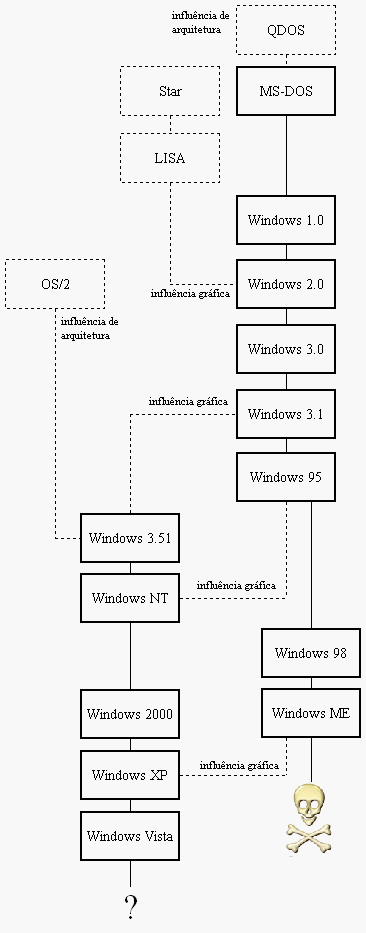 História do Windows 2020-09-16 [tag_lists] Escrevi esta lista de artigos sobre a evolução do sistema operacional Windows há muitos anos, mas eles nunca estiveram juntos em um post que é uma lista. Bom, segue: - [Parte 1] - [Parte 2] - [Parte 3] historia-do-windows-parte-51 |
| O Livro de Cabeceira 2020-09-07 [tag_movies] Esta adaptação do texto clássico japonês recebe o tratamento experimental do diretor Peter Greenaway, o que quer dizer que durante quase todo filme você vai se sentir dentro de uma daquelas salinhas de museu de arte moderna vendo um vídeo conceitual. Infelizmente este vídeo tem duas horas de duração. o-livro-de-cabeceira |
| Uma Doce Mentira 2020-09-06 [tag_movies] Vivemos em tempos cínicos e desprovido de leveza. São tempos em que quando alguém encontra doces palavras de amor em letra de mão endereçadas a você o primeiro pensamento é que só pode ser obra de um velho tarado. uma-doce-mentira |
| Houve uma Vez Dois Verões 2020-09-06 [tag_movies] Meninas virgens costumam ter o que vulgarmente se conhece como "amor de pica", que é quando ela não consegue largar o garoto que a desvirginou; para o resto de sua vida. Trágico. Em contrapartida, Houve Uma Vez Dois Verões parte da história de um menino virgem que tem uma única noite com a garota perfeita, jogadora de fliperama, e desenvolve o que chamaríamos por tabela, e também vulgarmente, de "amor de xana". houve-uma-vez-dois-veroes |
| A Banda 2020-09-06 [tag_movies] Estão todos juntos porque o uniforme é o mesmo, mas seus espíritos vagam em diferentes sentidos, entre a fantasia de estar perdido em país estrangeiro e o desespero de ter que viver tudo aquilo com seus colegas. Porque, sabe como é, estão todos com o mesmo uniforme, mas não quer dizer na mesma página da partitura. a-banda |
| Santo Grão 2020-09-05 [tag_coffee] O doce tânico, o corpo médio, a caneca de café perfeita, regular, mas falta algo. Equilibrado demais, talvez? Não. Experimentei tomar com uma proporção mais pesada, 10g por 100ml, e fez diferença. O sabor mais presente revela uma combinação inebriante entre o amadeirado tânico da torra média e o amargor que envolve esse café aveludado. É um dos cafés mais equilibrados de linha que já provei. santo-grao |
| Bispo e Cavalo 2020-09-05 Já havia estudado este final há muito tempo e nem lembrava mais. Ter empatada uma partida porque não consegui dar mate forçado com bispo e cavalo é o que me fez rever o estudo. Assisti alguns vídeos e pratiquei com alguns estudos no Lichess. Por fim, me pus a jogar com o computador até entender a dinâmica de cercar o rei e realizar o movimento de W com o cavalo. Eu sei que ainda terão partidas que me sentirei acuado por conta do tempo, mas é bom agora voltar a ter o mínimo de arcabouço lógico por trás desse fascinante e difícil final. Tão difícil que até GMs não conseguem aplicar às vezes. bispo-e-cavalo |
| Jejum de Dopamina 2020-08-29 [tag_self] [tag_body] Na verdade é um jejum de super estímulos, que tem por objetivo apagar o incêndio causado pelos neuroreceptores de dopamina de hábitos compulsivos em busca de prazer fácil para uma vez estabilizado em níveis saudáveis observarmos os gatilhos que nos faz voltar para esses hábitos, observando nossos impulsos para voltar a essas atividades, geralmente associados ao nosso estado emocional interno. Apenas dessa forma, seguindo o modelo de terapia cognitiva, para que o equilíbrio do sistema dopamínico se mantenha, e possamos apreciar como se deve atividades vistas hoje como chatas, como ler, escrever, meditar, passear ao ar livre. Ouvir. jejum-de-dopamina |
| Entre Facas e Segredos 2020-08-29 [tag_movies] Assisti a este filme do cineasta Rian Johnson tendo em mente que ele é o diretor do melhor filme Guerra nas Estrelas até agora, "Star Wars: Os Últimos Jedi". Além, é claro, do ótimo "Looper: Assassinos do Futuro" e de pelo menos dois dos melhores episódios da série dramática "Breaking Bad". Porém, também sabia que esse filme recebeu ótimos elogios pela sua crítica social, então já esperava que a história não prestaria o suficiente. Os dramalhões com minorias oprimidas e caricaturas da elite americana é lugar tão comum neste século que apenas uma sociedade em decadência para chamar isto de crítica e não de uma maneira sarcástica. entre-facas-e-segredos |
| CPU Fritando com Intel Turbo Boost 2020-08-24 É a segunda vez que isso acontece e esqueci quando foi a primeira. O cooler do notebook começa a assoprar que nem louco e em poucos minutos o computador desliga. O processo se repete, sempre que faço alguma atividade que exige mais processamento. Baixo o HW Monitor da CPUID e verifico que a CPU está alcançando limites acima de 90 graus celsius, e para segurança ela se auto-desliga. A solução? Ir em opções de energia do SO e trocar o limite máximo que a CPU pode ser usada de 100% para 99%. Isso mesmo, apenas abaixe um por cento. Com isso você está desabilitando o Intel Turbo Boost, que aparentemente não conhece limites físicos e sai fritando a CPU quando é necessário. Mas isso desgasta os chips e destrói a vida útil do sistema. E minha máquina já é rápida o suficiente para conseguir viver sem mais um Boost na minha vida. cpu-fritando |
| John Wick 3 - Parabellum 2020-08-19 [tag_movies] Está sentindo um cheiro de "trilogia" no ar? Um estúdio se deu bem no seu primeiro filme de ação dirigido por veteranos na arte das cenas de luta. E agora temos que aguentar mensagens sociais até em filmes de ação. A arte no século 21 respira justiça social, e por isso as salas de cinema fedem tanto. Porém, Parabellum possui um nome elegante e uma marca de grife de filmes tentando se estabelecer no ramo. Esta terceira versão é muito mais John Wick versão luta coreografada com um ator que finalmente mostra sinais de velhice, e menos aquele drama intimista sobre nossos fantasmas do passado que o original ensaiou fazer. Se você gosta dessa versão, vai adorar as cenas de morte e luta e sangue. Se quiser ver filme de ação para refletir, imagine esse mundo subterrâneo em Nova York e como praticamente todo mundo, desde os mendigos até os ricaços, parecem jogar. E existe hierarquia, e existe o poder do Capital. A única diferença são armas. Muitas armas. Quer dizer, talvez não haja diferença nenhuma. john-wick-3 |
| Jaspion: mais profundo que Star Wars 2020-08-19 [tag_series] Não à toa, essa série japonesa dos anos 80 fez enorme sucesso no Japão e no mundo. Ele eleva a fórmula de ação japonesa com monstros gigantes (gênero conhecido como tokusatsu) a um novo patamar, adicionando estrutura no roteiro, direção coesa, trilha sonora envolvente, efeitos visuais satisfatórios (até hoje), poucos diálogos explicativos (o que é uma mania japonesa, principalmente em animes) e profundidade filosófica mais madura que Star Wars (o que não é difícil, mas convenhamos: é sobre monstros e um robô gigante). jaspion |
| Community 2020-08-19 [tag_series] Não sei se gosto de Community tanto quanto a primeira vez, uns dez anos atrás. Um de nós três deve ter envelhecido, e não de uma maneira boa: eu, a série ou a sociedade. As brincadeiras da série em torno do politicamente correto giram confortavelmente no limite do aceitável. E, no pior dos casos, sempre temos Pierce, o velho incorrigível, para fazer os comentários racistas e homofóbicos. Porém, se quando lançada, a série usava esses termos quase como jargões fora do mainstream, gerando um certo ar de estranheza para quem mora fora dos EUA, hoje nosso comportamento, ou ao menos o da sociedade americana, é pautado nesses conceitos. [O Grande Irmão] está firme e forte por lá. Até nas faculdades há folhetos que correm entre as mãos sobre conceitos como "microagressōes", e um professor recentemente foi demitido por fazer uma brincadeira sobre esse material. A liberdade de expressão tão elogiada nos EUA é cerceada inconscientemente nessa geração, como se julgamentos verbais fossem um ataque à propriedade privada. community |
| A Mulher do Aviador 2020-08-19 [tag_movies] Meu prazer estético repousa nas tomadas secas de Éric Rohmer, em como ele observa essa Paris movimentada, a megalópole dos anos 80, as pessoas, os carros, os ônibus, táxis, parques, turistas, transeuntes. A vida na capital francesa não poderia ser mais diversa, nem tantos detalhes simultâneos capturados. Rohmer está ao mesmo tempo que contando histórias sobre relacionamentos, pincelando e documentando onde essas histórias são possíveis. Hoje é um documentário que repousa no acervo cinematográfico. De uma época e local bem precisos, sob o ponto de vista de quem conhece tão vem a liberdade afetiva desse povo. a-mulher-do-aviador |
| Orfeu Descafeinado 2020-08-12 [tag_coffee] - 2021-05-15 O que pode ser mais bixa que café moído na hora? Café em grãos descafeinado, é claro. Este post é apenas para dizer que, sim, Orfeu Descafeinado em Grãos é que nem o Orfeu tradicional. Mais a bixisse. orfeu |
| Minha Noite Com Ela 2020-08-10 [tag_movies] A aposta de Pascal e o caos governando nossas vidas. É sobre discussões morais acerca do amor. Eric Rhoemer é o mestre francês. E não são os franceses os mestres na arte do amor? No entanto, este filme nos faz lembrar que o povo francês também possui valores religiosos que podem parece conflitantes quando se fala de amor livre e relacionamentos fora do casamento. minha-noite-com-ela |
| Lost Girls 2020-08-10 [tag_movies] [tag_cinemaqui] Lost Girls não nos diz realmente nada sobre essas pessoas, exceto os estereótipos que irá tentar defender em um jogo de cartas marcadas que dizem o seguinte: ninguém liga para as prostitutas assassinadas e por isso as famílias das vítimas devem ser unir por justiça. Esse mantra se repete algumas várias vezes e chega um momento que você acha que deve estar acabando, mas o relógio indica que nem passou meia-hora. E lá vem de novo aquela trilha sonora difícil de engolir. lost-girls |
| Fazenda São Francisco 2020-08-10 [tag_coffee] Esse café tem um frescor que não sei se onde vem. Seu corpo é leve, mas o sabor é mais complexo, com notas cítricas, frutadas, misturadas com um levíssimo amargor típico de um café potente. A acidez é quase inexistente, se transformando em uma bebida viciante, onde uma caneca matinal de 300ml já não são mais suficientes. fazenda-sao-francisco |
| Conversations with Pauline Kael - Will Brantley 2020-08-10 [tag_quotes] [tag_books] [tag_movies] > Never give them the excuse to stay home if there's anything there on the screen. > There are so few movies that really offer you anything that's fresh, that's different, that's exciting. Este livro é uma pequena pérola para quem ainda não conhece Kael, a crítica mais versátil, corajosa e indigesta da história do cinema. Suas opiniões são fortes e você provavelmente vai discordar da maioria. Mas seu texto é delicioso. conversations-with-pauline-kael |
| Silver Myn 2020-08-04 [tag_wine] Há anos não comprava vinhos da Sociedade da Mesa. Minhas viagens para Argentina bastavam para encher a adega. Mas, suspensas essas aventuras, adquiri algumas garrafas do clube, e entre veio duas desse vinho francês de Bordeaux, o Silver Myn 2016, que é uma mistura de várias uvas da região de Gironde: Merlot, Cabernet Sauvignon, Cabernet Franc, Petit Verdot e Malbec. Dessa mistura vem uma sensação mista entre frescor e tradição. silver-myn |
| Pacotes Nuget Again 2020-08-04 [tag_coding] Agora que mexo com .net no trabalho surgem problemas de "marinheiro de primeira viagem" (na verdade já mexi com o framework, mas há muitos anos). O que me fez gastar mais horas à toa sem dúvida é o versionamento dos pacotes nuget que viram dependências simples de colocar e difíceis de mexer. pacotes-nuget-again |
| Loretto 2020-08-04 [tag_coffee] Os cafés da Loretto se dividem em três tipos: Bourbon, Espresso e o Gourmet. Bourbon é o mais doce deles, com um sabor mais presente que o aroma. Bom, talvez nenhum desses cafés seja lembrado pelo aroma, e parte disso é por causa de seu sistema de vendas nem sempre entregar os grãos mais frescos ou melhor torrados. Este é um café de exportação e com o mercado agitado fica difícil reter talentos. loretto |
| GetArgs v. Array 2020-08-04 [tag_ccpp] [tag_coding] Algumas pessoas ficam chateadas quando não se programa usando Boost para tudo. E por isso eu continuo escrevendo código simples e funcional para meu blogue. Esse código vai continuar funcionando por mais cem anos e o código da Boost vai explodir antes que seus filhos nasçam. getargs-array |
| John Wick 2 2020-08-03 [tag_movies] ## Um Novo Dia para Counter Strike Quando o filme de pancadaria é mero pretexto para chamar público. O próprio gênero de ação trabalha com emoções minimalistas e brutais. Eis o motivo porque [Mad Max: Fury Road] funciona horrores: o único motivo de existência da história é a fuga, e o único motivo de existência de John Wick é vingança de quem não tem (mais) nada a perder. A trama funcionava bem no [original] em apresentar um começo, meio e fim para um herói atormentado em um drama de uma nota só. john-wick-2 |
| Modern Love 2020-07-26 [tag_series] O conceito é de histórias curtas baseadas na coluna homônima do New York Times. Tem a ver com amor representado de diferentes, inusitadas, formas. Possui uma direção enérgica que combina transições elegantes e músicas que evocam os sentimentos desejados do espectador, mas com muita delicadeza. É um trabalho sincero, de passar o tempo, fácil de apreciar, difícil de sair dos trilhos. Satisfação garantida pelos fãs do que é fofinho, mas não óbvio de maneira ofensiva. Modern Love dá espaço para o espectador respirar na maioria do tempo. modern-love |
| Encontros e Desencontros 2020-07-26 [tag_movies] Confesso que este filme me dava sono, mas havia algo mágico em seu ritmo quando o vi a primeira vez aos vinte e poucos anos. Ainda que de maneira inconsciente, havia percebido uma linda mensagem por trás dos eventos sempre banais da história dos ricos e famosos. encontros-e-desencontros |
| O Grito: Origens 2020-07-20 [tag_series] Assim como o original, falado em japonês, o que é um plus, mas ele é muito comum e seu tom inusitado é revelador demais. Não queremos este mistério desvendado, queremos levar sustos. A série de streaming leva tudo a sério e faz perder parte do que nos fazia gostar de O Grito: o gore, o trash e a falta de uma estética de terror que seja esquecível. Exceto seu grito do título, claro. Infelizmente a estética aqui é bem feita, com tons de cores dramáticas e personagens que tentam soar realistas e com peso. E quem quer se divertir sai frustrado. Aguardando um terror mal feito caímos no conto dos direitos comprados e reenlatados em um trabalho dramático que se perde em meio aos milhões disponíveis ao toque de um botão. o-grito-origens |
| Expresso do Destino 2020-07-20 [tag_movies] [tag_cinemaqui] Expresso do Destino começa meio estranho. Os diálogos são fracos. Um misto entre realismo e amadorismo. Este é o cinema independente do século 21, onde tudo já foi tentado e a mínima diferença se destaca e ganha prêmios. expresso-do-destino |
| Desperados 2020-07-20 [tag_movies] [tag_cinemaqui] Desperados passou pelo top 10 dos últimos dias na Netflix, e desde que eles inauguraram essa lista fica mais claro o perfil do espectador médio. Pode ser uma surpresa para alguns, uma constatação para outros. Para mim foi uma constatação. Eu não gostei do filme por ele próprio e pelo que ele representa. Ele representa filmes feitos às pressas, sem carinho nem motivo, exceto o comercial. Ele é fácil demais para nos envolvermos, e esse é o nível de risco que as produtoras de streaming na maioria dos filmes está disposta a correr: não se envolva muito e assista à próxima atração. Quem gostaria de viver assim se não estivesse condenado ao sofá da sala? desperados |
| Arcanus 2020-07-20 [tag_wine] Esta é a bodega orgânica da cidade de Cafayate (toda cidade tem suas frescuras). Minúscula a recepção, mas eles possuem um restaurante que funciona à noite (razoável). A visita turística não é muito empolgada nem completa, mas eles fazem o que podem sem estar na vinícola, mas muito próximo do centro da cidade. arcanus |
| Wotakoi: Amor é Difícil para Otakus 2020-07-15 [tag_series] [tag_animes] Série para meninas ou garotas com o tema otaku. Garotas otakus possuem problemas específicos. A protagonista aqui saiu do último emprego por causa disso e agora encontra um amigo de infância otaku de games e sua própria supervisora é uma otaku famosa. É um material leve, até demais, que faz uma personagem correr até o metrô e em seguida mostra o aviso de que não se deve fazer isso. A preocupação é em ser um conteúdo mais maduro e sobre sentimentos, ao mesmo tempo que engraçadinho (e consegue graças à dublagem fofa). No entanto, como milhares de adaptações de mangá, este não possui nenhum atrativo além de não precisar virar as folhas conforme vamos lendo. wotakoi |
| Upload 2020-07-15 [tag_series] A fotografia é perfeita, de filme, e logo corta para o metrô lotado de Nova York e as cores de vídeo caseiro. Depois as cores ficam um pouco melhor, mas é o contraste que interessa nesse momento. Várias ideias interessantes surgem na tela, ainda que pouco acuradas. Existe no universo de Upload uma sarcástica sci-fi que retrata um futuro muito próximo onde é possível subir para a nuvem nossa consciência e continuar a vida por lá, no formato digital, em um mundo virtual à sua escolha. Do tamanho do seu bolso, claro. upload |
| The Nanny 2020-07-15 [tag_series] Envelheceu bem. É um sitcom como os primeiros com risada gravada e piadas empilhadas em episódios curtos. Algumas atrizes se destacam, como a principal e a mirim. É sobre as diferenças sociais de uma vendedora de cosméticos de um bairro periférido de Nova York indo trabalhar como babá dos três filhos de um viúvo ricaço. Uma mistura de Sound of Music americano e alguma outra coisa que a torna americana. Ser enlatada, talvez. the-nanny |
| Japão Submerso 2020-07-15 [tag_series] [tag_animes] A animação é menos cartunizada e um pouco mais realista. São capturados momentos e sensações, as coisas que prestamos atenção quando algo acontece em nossa volta. E muitas coisas já acontecem no E01. Sentimentos de culpa e sobrevivência e impotência cerceam Japão Submerso, uma série animada de catástrofe. japao-submerso |
| História do Xadrez 2020-07-15 [tag_chess] [tag_books] Já tinha ouvido falar deste clássico do enxadrista campeão mundial Emmanuel Lasker, mas nunca a oportunidade de lê-lo. Então ele caiu no meu colo em meio a inúmeros downloads de livros sobre xadrez e comecei a folheá-lo digitalmente. Para minha surpresa ele é curto, fluido e divertido para fãs do jogo. Há algo que nos leva a ler cada vez mais, principalmente se você é um enxadrista, amador ou profissional, e se encanta em como o xadrez passou por tantos séculos e tantas culturas diferentes, saindo do místico Oriente e indo se situar confortavelmente no berço europeu e, posteriormente, na União Soviética, de onde surgiram os maiores ícones do último século. historia-do-xadrez |
| American Horror Story Season 5 2020-07-15 [tag_series] A maior virtude de AHS é sua direção de arte. Existe um desafio na série em conseguir agradar os diferentes fãs de terror, seja gore, sobrenatural ou dramático. E o figurino, a fotografia e o design de produção conseguem captar uma essência genérica o suficiente para que todos se sintam representados e única o suficiente para essa ser A temporada sobre hotéis tenebrosos. Com um tom pesado o suficiente para existir vampiros na trama e ainda acharmos isso relevante ou novidade, a relação entre sexo e vampiragem surge espontânea e orgânica com a aparição de Lady Gaga nesse papel. E Kathy Bates continua pegando personagens presas em sua própria maldição. Além disso, a aparição de Sarah Paulson continua sendo esse misto entre melodrama e impotência em dirigir a própria vida. Há um clima dúbio no ar que só consegue se manter graças à direção video-clipe e às participações do elenco tradicional. Além do novo integrante, um detetive que parece sugerir fazer parte de uma linha do tempo paralela. A seleção de músicas como sempre é ótima. AHS arrisca pouco desde seu debut, mas se mantém sólido, o que já é muito se comparada ao que se faz com as outras pobres e maltratadas séries por aí. american-horror-story-s05 |
| Pauline Kael 2020-07-12 [tag_quotes] [tag_movies] "Big money and its way of life is exciting; the vulgarity of the powerful is ugly, but not boring. This, you begin to feel, is how people behave when they're strong enough to act out their fantasies of wealth. In this environment, if you're not making it in a big way, you're worse than nothing -- you're a failure." (I Lost it at the Movies) pauline-kael |
| Cosmic Trigger I: Final Secret of the Illuminati 2020-07-12 [tag_books] Este livro do jornalista Robert Anton Wilson, o mesmo de Prometheus Rising (Ascenção de Prometheus), caiu em meu colo e comecei a ler sem parar seus primeiros capítulos. Ele explora infinitas possibilidades de navegação da realidade e comunicação entre seres inteligentes da galáxia. Há algo de especial neste livro que ainda não desvendei. A parte sobre comunicação entre eras através da escrita é um keeper. cosmic-trigger |
| Revelações Secretas de Uma Mulher 2020-07-11 [tag_movies] Filme de baixo orçamento sobre a ex do seu diretor, Miyuki, uma feminista bissexual radical que tem tantos filhos que fica difícil contar o número dos pais. Kazuo Hara, o diretor, nasceu em 1945, um péssimo momento para estar vivo no Japão. Segundo longa seu e já habituado a polemizar em seus conteúdos. revelacoes-secretas-de-uma-mulher |
| Evangelion No More 2020-07-11 [tag_series] [tag_animes] Cansei de Evangelion em meia-dúzia de episódios, apesar se seu ritmo ser agradável e suas personalidades femininas fascinantes. Além de ser um trabalho artístico deslumbrante para sua época. É uma pena que seu protagonista seja cria dos emotivos anos noventa, uma criança abandonada pelo pai, órfão de mãe e que se sente inadequado diante de lindas e maduras jovens. Seu pai é um insensível sádico que pode estar se vingando no filho pela perda da mãe. A figura feminina mais presente na trama também possui passado traumático. E é sobre robôs gigantes, claro, em um cenário pós-apocalipse de deixar qualquer nerd abaixo dos doze anos (ou acima se nasceu no século 21) babando. Há um certo charme misturado com infantilidade quando somos apresentados a este mundo. Mas ele se estende demais. Os animes e mangás japoneses quase sempre pecam por esgotar comercialmente suas fichas. Até aí nenhuma diferença de Hollywood. Exceto que temos a sensação de perder algo realmente único e mágico. Foi assim com Death Note, por exemplo, e Evangelion sofre do mesmo mal. Quer dizer, pelo menos artisticamente, já que houve vários spin-offs após a temporada original. evangelion |
| Estrela Nua 2020-07-11 [tag_movies] No final da época das pornochanchadas, este filme, como se diz em grupos menores de homens, "paga peitinho", mas se veste de drama intimista, que é quando a coisa desmorona. Se levar a sério demais é o primeiro passo que todo filme ruim deve dar se quer se tornar péssimo a partir daí. estrela-nua |
| Bleach 2020-07-11 [tag_series] [tag_animes] Apesar de ser de 2006 Bleach lembra animes dos anos noventa como Evangelion pela sua pegada intimista, mas que aos poucos revela ser desse século, mesmo, sobre as constantes divagações sobre nossa essência, em uma abordagem mais abstrata, embora não menos direta: há fantasmas bons e maus. Apresentada rapidamente, a trama é sobre esse jovem que consegue ver espíritos. A família cuida dos vivos em uma clínica e ele cuida dos mortos. É colocado em constante treinamento físico pelo seu pai que se preocupa em ensiná-lo a se defender e a suas irmãs, já que sua mãe se foi (pode haver algo aí na trama futura). bleach |
| A Pervertida 2020-07-11 [tag_movies] Divertido e inusitado como Sensual Demais, o filme independente do cara com a lenda de ter o membro grande demais para fazer sexo com sua esposa e por isso se aliviava no milharal, este filme da lenda Tint Brass (Calígula) apresenta a bunda de sua estrela mais vezes do que sua cara, é italiano dublado em inglês, e a maioria das falas são suspiros de tesão. a-pervertida |
| War Games 2020-07-05 [tag_movies] Jogos de Guerra se passa no auge dos anos 80. Matthew Broderick é um nerd/hacker vivendo sua adolescência em Seattle e buscando conciliar seus desejos por máquinas, além de uma garota fitness de sua sala. Ambos vivem uma aventura de tirar o fôlego e que se passa dentro de um enorme galpão cheio de luzes piscando e pessoas vestidas de militares. O fantasma da Guerra Fria está desaparecendo, mas fica uma reflexão pertinente quando computadores começam cada vez mais a fazer parte da família americana: qual a melhor estratégia para evitar uma nova guerra senão sequer começá-la? war-games |
| The Drug King 2020-07-05 [tag_movies] Eu poderia dizer que é uma mistura de Scarface, O Poderoso Chefão, Os Bons Companheiros e a história do mafioso da Colômbia Pablo Escobar, tudo embalado em versão coreana. Mas se eu fizesse isso estaria me ajoelhando diante dos chefões da Netflix, responsáveis pela produção, e pior, estaria sendo muito desonesto comparando essas obras primas com uma aventura passageira e esquecível como esta, que além de não ter a mínima personalidade não faz questão alguma de buscar ter uma. the-drug-king |
| Close Remote Socket 2020-07-05 [tag_english] [tag_coding] I got used to close sockets in Windows using TCP View, but I haven't learned yet how to do this in Linux. Some Google and now I know. It is kinda simple in terminal mode, as any task a programmer needs to do in your system. close-remote-socket |
| Find Path ou Por Que O Vcpkg Não Colocou o Path da Minha Biblioteca? 2020-07-01 [tag_coding] Algumas bibliotecas portadas para o vcpkg, gerenciador de pacotes direto do fonte da Microsoft, não vêm exatamente como esperamos que elas venham em ambientes mais estáveis como UNIX-like. A GLib, por exemplo, uma biblioteca fenomenal se você deseja trabalhar com um framework puramente em C, está disponível pelo vcpkg através do pacote glib, mas vem encapsulado no namespace unofficial::glib::glib. Isso ocorre porque este não é um port oficial. find-path |
| Pgn2art 2020-06-27 [tag_coding] Meu sonho de consumo para acompanhar partidas de xadrez é às cegas, apenas lendo ou ouvindo o próximo lance e imaginando em minha cabeça o tabuleiro. Porém, enquanto não tenho essa habilidade, um meio-termo aceitável é ver um tabuleiro em ascii art se modificando a cada lance. É possível acompanhar uma partida dessa forma como se estivesse lendo um livro, e por isso esse formato é prático, também, pois posso jogar esse ascii art no meu Kindle. pgn2art |
| O Raio Verde 2020-06-27 [tag_movies] Mais um filme do Rhomer sobre uma mulher maluca. Ele conheceu várias em sua carreira, e o pior é que não deve ter conseguido comer nenhuma. Nunca confie nas francesas. Mas, falando sério, esta história é comovente, porque é real demais. É sobre depressão ou algo no mínimo parecido, das pessoas que não se encaixam na sociedade contemporânea, cuja boa parcela acha que precisa estar bem e se divertindo o tempo todo (principalmente nas férias). É fácil se disfarçar de pessoa funcional no trabalho, mas uma vez por ano chega o período de viajar e ter essa liberdade de fazer o que quiser surge a falta de controle que todos nós temos um pouco sobre nós mesmos. E é desesperador viver com nós mesmos quando podemos tudo. A protagonista não consegue deixar de chorar por causa disso, e várias situações irão tentar definir o que é exatamente isso. Talvez um raio verde não seja uma completa loucura afinal de contas. o-raio-verde |
| O Amigo da Minha Amiga 2020-06-27 [tag_movies] Mais um Rohmer como deve ser: preocupado com o realismo da natureza humana e seus relacionamentos, e com paisagens fora do centro parisiense, bem na periferia dos simples e burocratas. Blanche não sabe se está certo se sentir bem com o namorado/amigo de sua recém-melhor amiga. E sua amiga está buscando confirmação de que continuará com seu namorado. Um garanhão existe para que se forme um quatrilho romântico, e o filme faz questão de deixar as trocas claras pelas vestimentas destes quatro no final do filme. Divertido, porém não muito. Um passatempo francês. o-amigo-da-minha-amiga |
| Renata Adler vs Pauline Kael 2020-06-23 [tag_movies] [tag_books] Comprei o livro da Amazon em que ela esculacha (com todo o respeito) a escrita de Pauline Kael. É sintomático que Kael tenha se tornado a escritora mais adorada da crítica e do público em uma época onde a forma toma o lugar da substância. Cansados da ciência objetiva as pessoas se viram cada vez mais para as experiências subjetivas de sua própria vida, ignorando evidências empíricas e catalogadas da realidade que torna um filme bom em detrimento da experiência em si. "Todo filme é trash" diria Kael, e eu não consigo ver onde ela pode estar errada em nossos tempos. Fruto e sintoma ao mesmo tempo, Adler permanece com o pé firme do lado empírico. Pelo menos um pé. renata-adler-vs-pauline-kael |
| Bolotorta de Banana 2020-06-23 [tag_cooking] A receita é de torta de banana da Dona Neusa e eu transformei em um bolo açucarado e canelento. As variações de uma receita podem não ser boas, mas sempre serão interessantes. Você pega a farinha e o açúcar e mistura com o leite. A unidade da massa é bem pouca, pois o açúcar não é uma coisa seca e se molda à sua experiência. Além do mais, depois vem a banana cortada em rodelas e polvilhada em açúcar e canela, e acho que esse foi o meu erro. Basta canela, e pouca. Misture sem destruir a banana. É esperado que o fermento já esteja incorporado. Unte a forma e use uma temperatura baixa para inserir no forno. bolotorta-de-banana |
| Tio Boomie, Que Pode Recordar Suas Vidas Passadas 2020-06-22 [tag_movies] O diretor tailandês Apichatpong Weerasethakul afirmou em uma entrevista que acompanha este DVD que "sente inveja de quem vê seus filmes". Não é apenas a pretensão de um cineasta que vem à tona, mas todo o humor subjacente se lembrarmos que Tio Boomie é um lixo de filme. Inveja de quem assiste? Se ele pelo menos soubesse... tio-boomie-que-pode-recordar-suas-vidas-passadas |
| Olhos de Gato 2020-06-22 [tag_movies] Animação do tipo Estúdios Ghibli, mas feito pela Netflix. É como se todas aquelas pessoas que compram cursos de desenhar mangá na banca de jornal se reuníssem em um grande projeto encomendado. Se trata de um desenho com alta tecnologia. Cenários de computador estilizados e em 3D se misturam aos personagens 2D. É quase como se fosse real, mas se uma maneira mais estilizada e alinhada com a nossa interpretação subjetiva da realidade. As cores, as formas, são como nós gostaríamos que fossem em um anime que sonhasse em ser real. A história é sobre paixão. Essa menina com problemas emocionais depois que sua mãe abandonou a família chama a atenção de seu crush na escola, que a ignora. Ela não sabe o que fazer até que acha um vendedor de máscaras que a transformam em uma linda gatinha. E com isso ela se aproxima de seu amor juvenil, que também tem problemas em se expressar com sua família. Coincidências na mesa, você já sabe como vai acabar e apenas curte a jornada, com magia, reviravoltas já previstas e um final onde as coisas dão tão certo que o sono bate antes do filme acabar. olhos-de-gato |
| Histórias Proibidas 2020-06-22 [tag_movies] Um filme pesado como Coringa e Parasita. Desses que você acha sensacional, mas não quer pensar a respeito das implicações morais da história. No caso, das duas histórias. Uma mais curta e outra mais longa. A curta se chama Ficção e a longa... acertou: Não-Ficção. E apesar dos nomes as diferenças são poucas. Ambas apelam para o lado mais dark do ser humano, em específico da sociedade norte-americana. historias-proibidas |
| Era uma Vez na Anatolia 2020-06-22 [tag_movies] A fotografia cria um personagem à parte com suas luzes de diferentes tons enquanto essa trupe de três veículos cruza os pequenos vales de uma região remota e perigosa na Turquia. Um fato curioso, para não dizer hilário, é que o diretor, Nuri Bilge Ceylan, é colocado contra a parede em uma entrevista em Cannes, em que o entrevistador precisa fazer a pergunta da cartilha comunista sugerindo que um dos temas do filme é sobre os "homens poderosos e com dinheiro". O entrevistador leva umas pequenas e boas palmadas quando o próprio diretor explica que são burocratas do governo em cidadezinha de província e seus conflitos refletem parte do que ele viu com seu pai, que também era um burocrata em uma cidadezinha. era-uma-vez-na-anatolia |
| Westworld No More 2020-06-21 [tag_series] Não consigo mais continuar assistindo à terceira temporada de Westworld. Eu sei que as robôs feministas são demais, mas a loira com o cabelo preso vestindo preto parece mais uma alemã lésbica. E Jesse é o aviãozinho que lhe traz as drogas para ela e sua esposa mais alta que eu imagino que deveria existir neste universo de beldades estéreis. Uma droga psicodélica faz Jessie enxergar a realidade sob diferentes gêneros cinematográficos e eu me escondo de vergonha de ainda estar interessado em dar play nessa monstruosidade que se tornou a série. westworld-no-more |
| Teoria, Prática e Código 2020-06-21 Quando se está aprendendo programação é muito bom praticar escrevendo código. Muitos querem aprender a programar e não começam programando, e se você já começou colocando a mão na massa, parabéns por isso. teoria-pratica-codigo |
| Oscar 2020-06-21 [tag_movies] Quando o chefão do Oscar faz um discurso dizendo que agora oficialmente serão dez os indicados a melhor filme para promover representatividade, diversidade e todos os ades de quem é ista, ele não está sendo um cara legal. Ele está apenas revelando o quanto o Oscar e/ou a sociedade como um todo funciona e o que irão fazer a respeito: nada. Porque nada é o que este povo que se diz politicamente consciente está acostumado a fazer para mostrar que sabe de algo que você, alienado, não sabe, e farão algo a respeito. Bom, resumo da história como sempre: não, não sabem e não, não farão. Não sabem matemática e não farão uma revolução. Provarão ignorância na arte dos números e hipocrisia e conveniência na arte política. oscar |
| Malma 2020-06-21 [tag_wine] Faz um ano desde a última viagem para buscar vinho e conhecer lugares na Argentina. Fomos à Patagônia e conhecemos geleiras, Bariloche e essa vinícola de Neuquen que tem o charmoso rótulo de estrelas e um blend fora do comum. Comprei várias garrafas para envelhecer na minha adega e abri hoje mais uma delas. O teor alcoólico deste 2015 está bem menor que a última, e consigo sentir as frutas negras da região de maneira muito nítida, misturadas com o inesquecível Malbec e as frutas mais suaves, secundárias, seguidas de um ligeiro azedo. malma |
| C++ Co Routines 2020-06-21 [tag_ccpp] [tag_coding] Entre os gêneros mais famosos do cinema e da programação está o terror, esse estado mental que se caracteriza pelo medo ou pela aversão a uma situação que envolve a perda de controle. Nesse quesito se encaixam as novas corrotinas que serão adotadas pelo padrão C++. cpp-co-routines |
| Cinderela: Versão do Século XXI 2020-06-21 [tag_books] Este livro é um respiro de ar fresco em meio a uma sociedade que vem apodrecendo em ritmo crescente. Ele fala sobre valores e moral. Sobre a dureza das conquistas. Sobre valorizar os que vieram antes de nós. E em termos compaixão antes de pena. cinderela-versao-do-seculo-xxi |
| Printf 2020-06-18 [tag_ccpp] [tag_coding] Entre os segredos escondidos das funções básicas da lib padrão da linguagem C o printf e o scanf lideram o ranking. O printf possui a capacidade de alinhamento de colunas das string impressas com tamanho variável. Sabia disso? Pois é, isso não se ensina nas escolas. printf |
| The Eyes of Fritz Lang 2020-06-13 [tag_movies] Um documentário chato, cheio de pessoas elogiando a figura de Fritz Lang em sua fase nos EUA sem substância. Meia-hora quase insuportável de velhos babando ovo para este alemão que narrou sua fuga da Alemanha nazista quando se descobriu que ele fugiu "aos poucos", e que dizem ser judeu quando apenas sua avó era (e se converteu católica). Sua visão cinematográfica não está descrita aqui, apenas opiniões pessoas sobre este cineasta. Uma perda de tempo para os que buscam informação, e uma curiosidade boba para os fãs desse cinema. the-eyes-of-fritz-lang |
| Historical Price 2020-06-13 [tag_coding] Havia um job esta semana de um assunto que me encanta desde a época de investidor: base histórica de cotações. Estamos falando de ações da Bovespa. Na época que era investidor frequente mantinha uma base que era atualizada por um programinha em Java (esqueci o nome), mas nunca tive certeza se os ajustes feitos pelo programa eram os corretos. Surgiu agora a possibilidade de eu realizar código que converte uma base histórica recebida com um minuto por linha em campos divididos por ponto-e-vírgula (o CSV do Windows) para candles de várias periodicidades. E isso justo agora que ando estudando awk. Então não deu outra: usei esta linguagem clássica como ferramenta para esta conversão. historical-price |
| Fazenda São João (Produtor Osvaldo Bachião, Nova Rezende, Sul de Minas) 2020-06-13 [tag_coffee] - 2021-05-15 Frutado maduro e tânico, esse Bourbon faz um belo corpo com poucos grãos. Sua persistência é perene; minutos depois do último gole ainda fica a sensação de um ótimo café. - 2020-05-13 A torra foi feita na quinta, quarto dia de junho, e eu recebi na noite de segunda e foi o café da manhã da terça. Moído na hora para coado, vinte e poucos gramas, e passado na Aeopress com cerca de um minuto de infusão, seguindo da já tradicional virada antes de abaixar o êmbolo, este café ultra-fresco trouxe para mim, diferente de sua ficha, notas cítricas, lembrando limão. O sabor com certeza é tânico, algo que adoro e que me traz um vício desgraçado. O amargor desta torra média é equilibrado e seu corpo é quase médio. fazenda-sao-joao |
| Estômago 2020-06-13 [tag_movies] Este é um filme no auge da retomada do cinema brasileiro e quando os esquerdistas estavam sem ódio no coração com o lulinha da paz. Por isso a prisão não é horrível, mas podia ser melhor. Alguns insetos na comida e só isso. Este roteiro caminha em dois tempos distintos na história de Raimundo Nonato (João Miguel), um nordestino que vem para São Paulo ou outra grande metrópole do sul mostrar como em um filme há tanta desigualdade e desrespeito pelos serumaninhos. Mas um paradoxo se cria quando vemos o final do filme e descobrimos estar enganados a respeito da índole do protagonista. Infelizmente isso acontece tarde demais e soa falso. No entanto, a diversão fica por conta de diálogos bem trabalhados, com uma preparação de elenco que cria personagens factíveis e genuinamente engraçados. Sanitizados, mas engraçados. O objetivo do filme é ser comercial, e por isso o DVD vem cheio de extras e o play do filme, mesmo normal, nos mostra de maneira irritante um ícone no canto da tela para podermos pressionar um botão do controle remoto e ir para a receita que está sendo feita no filme. Desnecessário. E preguiçoso, já que nos extras a mesma opção existe, sem você precisar assistir ao filme novamente. estomago |
| Circle of Destiny 2020-06-13 [tag_movies] Documentário produzido para TV, diferente de The Eyes of Fritz Lang, curta documental de dar sono, este traz a visão de alguns especialistas sobre o cinema alemão, apesar de não sabermos exatamente quem são. Enquanto o primeiro doc dos anos dois mil cobre mais sua passagem por Hollywood este cobre unicamente seus filmes feitos na Alemanha, e por isso se traduz em um conteúdo mais rico de arte e detalhes, ainda que periféricos, sobre o artista por trás de obras como "M" e "Metropolis". circle-of-destiny |
| Vocês, Os Vivos 2020-06-07 [tag_movies] Gosto de filmes assim. Sobre qual assunto? Sobre a vida. Com e sem sentido. Estamos aqui e é isso. Se fôssemos escolher o gênero que filmaríamos vida óbvio que seria comédia. Woody Allen vem dizendo isso há séculos, e ele tem razão. E agora este filme com produção em seis países vem dizer o mesmo, inclusive com a mesma trilha sonora de Allen, em um trabalho instigante e sem muitas respostas prontas. A única é que tudo isso é irrelevante. Então bora assistir TV. voces-os-vivos |
| Leak de Memória 2020-06-07 [tag_coding] Esse fim de semana vi um programa, sem leak de memória, que só de ficar alocando e desalocando apresentava um consumo crescente no Process Explorer. Imaginando que poderia ser alguma lib externa, como o redis, fui eliminando uma por uma as variáveis do sistema, até chegar em um loop em que a única coisa feita no corpo do código era alocar e desalocar memória. E ela apenas subia. leak-de-memoria |
| Batalha 2020-06-07 [tag_wine] Em 1836 ocorre a Batalha do Seival, onde hoje fica o município de Candiota, RS. Esse conflito militar ocorreu quando os revolucionários da Revolução Farroupilha venceram o exército do Império Brasileiro e ensejaram a sonhada República Riograndense. Bons tempos. Em um dos melhores momentos da Guerra dos Farrapos. batalha |
| Awk 2020-06-07 [tag_coding] # Introduction Meu amigo sugeriu que aprender awk poderia ser útil de várias maneiras. Uma delas para organizar finanças pessoais. Dei uma lida em alguns tutoriais, sendo que o melhor custo benefício foi o [Awk in 20 Minutes], de Fred Hebert (ele é o mesmo autor de um livro sobre erlang). Gostei. É sobre tratamento de texto como sed, mas em uma versão estendida e criada na época com a mesma sintaxe de C. awk |
| Azure Missing Lines: Submodules no Git (SSH Version) 2020-06-04 [tag_coding] É curioso como os problemas mais triviais não são resolvidos em ferramentas feitas para resolver esses problemas. No Azure Pipelines existe um fluxo padrão para configurar um build em que você primeiro cria uma tarefa para obter o código de um repositório git remoto e em seguida configura, compila e empacota através de uma máquina chamada de agente. O problema surge logo nesses primeiros passos, para desespero do iniciante. azure-missing-lines |
| Transmission 2020-06-01 [tag_coding] Dia de fazer funcionar o download automágico de legendas depois que o Transmission baixou meu Netflix caseiro. O download funcionou, mas não foi dos melhores, pois o sincronismo e o encoding veio errado, e o rename de _pb para o nome do arquivo não está acontecendo rodando pelo transmission-daemon. Fora isso tá com tudo em cima. transmission |
| Sempre Aposte no Texto 2020-06-01 [tag_essays] Achei o link para o artigo que estava procurando. Always Bet on Text é o título. Ele diz o que eu acredito com outras palavras: texto é a telepatia que funciona no tempo e espaço. É imbatível comparado com tecnologias mais novas. Seu sistema de símbolos permite uma troca tão rica de informação entre duas e mais mentes que é provável que ele seja o método preferencial escolhido pela organização da nossa galáxia. sempre-aposte-no-texto |
| Easy Rider 2020-06-01 [tag_movies] O conto de fadas dos motoqueiros liberais americanos que se meteram em negócios com drogas nos estados americanos conservadores. Um Thelma e Louise masculino. Produzido e atuado por Peter Fonda, escrito e atuado por Dennis Hopper, este road movie independente de baixo orçamento apresenta "lindas paisagens" do deserto americano e se leva a sério demais, em uma ode aos tempos simples, que nunca existiram, em que os homens deixavam de brigar por dinheiro, ou o que quer que existisse na época, seja poder ou valores morais. easy-rider |
| Cul-de-Sac 2020-06-01 [tag_movies] Assisti dois terços. O DVD travou. É um filme preto e branco. Tem uma atriz francesa loira jovem que morreu jovem em um acidente de carro. As loiras jovens da carreira do diretor estão amaldiçoadas. É um filme com cara de autoral e independente, mas possui um elenco solto, de teatro. Ele perde a tensão por ter personagens fora da realidade. Fala sobre um castelo onde vivia um escritor no século onze e agora mora um pedante afeminado com sua amada. Eles são abordados por um bandido culto que se impõe para conseguir consertar um golpe que deu errado. Lembra um pouco a comédia de erros Fargo. cul-de-sac |
| Deixa Ela Entrar 2020-05-29 [tag_movies] Este é o filme original sueco sobre a garota vampira, sensação nos festivais. O remake americano também é muito bom, mas este tem o charme do baixo orçamento bem feito. A liberdade criativa permite insinuar com mais detalhes sobre o assunto: o ritual de passagem. E há vários rituais de passagem no mesmo filme. A cena da piscina se tornou a mais icônica, e com razão. Ela sintetiza o gore e trash com o romance e o drama de um filme sobre os desajustados da sociedade. Os que sofrem bullying. Os que revidam. E os que precisam revidar para viver. Para completar, esta garota é o achado mais bizarro. Ela coberta de sangue é uma visão saída de um jovem clássico que em breve será esquecido. Mas esta imagem fica em nossas mentes e corações. Não é fácil comprar sua personagem quando percebemos o quão real é seu drama, mas após a transição do fantástico para o real algo muda em nossa percepção sobre o que é está... garota? Mulher? Conceito. deixa-ela-entrar |
| A Dama de Shangai 2020-05-29 [tag_movies] Orson Welles tentando salvar o casamento com Rita Hayworth (spoiler: não deu certo e se divorciaram antes da estreia). Este é um filme noir fora de controle temático e infestado pela visão peculiar de seu cineasta, notório por seu estilo antiautoridade, que transforma um julgamento de homicídio em uma comédia de erros. Que empresta dezenas de espelhos do surrealismo alemão. a-dama-de-shangai |
| Um Casamento Perfeito 2020-05-28 [tag_movies] De Éric Rohmer, este filme reúne boa parte do elenco de seus outros filmes e nos apresenta a louca do casamento como a atração principal. Ela decide que irá se casar, escolhe um ocupado advogado que falou por cinco minutos em uma festa, e somos levados por essa divertida insanidade em um filme tenso em que vários sentimentos de vergonha alheia afloram. Diferente dos outros filmes desse diretor francês, esse possui um subtexto oculto. É sobre emancipação, financeira e afetiva, mas ao mesmo tempo sobre a liberdade da mulher de ser a ajudante da casa, se ela quiser, enquanto o marido trabalha. Uma diversão de uma nota só: a melancolia de não conseguimos nos livrar de nosso destino e nossos papéis na sociedade. Quase chega a ser melancólico, mas acaba sendo apenas divertido. um-casamento-perfeito |
| Os Insaciáveis 2020-05-28 [tag_movies] Esta é uma produção da época dos grandes produtores e diretores de fantoche, que seguiam as fórmulas para grandes produções. As atrizes eram suas mulheres e os atores e atrizes moviam a indústria. Esta deveria ser a história de Howard Hughes, cuja biografia autorizada foi dirigida por Martin Scorsese em O Aviador, com Leonardo DiCaprio no papel, mas devido à indiscrição e à paródia desta versão ela usa nomes falsos para contar a fictícia história deste outro herdeiro milionário que virou produtor de filmes e aviador. Qualquer semelhança é mera coincidência. os-insaciaveis |
| Pauline na Praia 2020-05-19 [tag_movies] Woody Allen em francês e sem restrição de idade. Pauline é uma ninfeta com seus catorze, dezesseis anos no máximo, mas carece de curvas que a apresente aos homens do filme, mais velhos. Três faixas de idade criam tensão em um filme onde a ninfeta irá aprender as mazelas do amor, e como as emoções humanas simplesmente mascaram nossas contradições internas, movidas por desejos mais intrínsecos de nossa própria formação como indivíduos. pauline-na-praia |
| Fechado Para Reformas 2020-05-19 Quase três mil posts durante quinze anos nessa vida de blogue e percebo que chegou a hora de atingir a maioridade. Escrever um rascunho e publicá-lo na internet não me torna melhor escritor que qualquer YouTuber de primeira viagem que não edita seu conteúdo ou tuítes que simplificam o pensamento humano de tal forma que ele parece totalmente válido ou inválido. Perde-se as nuances. A voz do autor fica solta demais para ser relevante nesse mar de informação que nos afogamos todos os dias (e noites). fechado-para-reformas |
| Conto de Outono 2020-05-19 [tag_movies] É época da colheita de uvas para fazer vinho e este filme de Éric Rohmer fala sobre personagens mais maduros, que já envelheceram o suficiente para saberem exatamente o que querem e terem um gosto mais complexo na boca. conto-de-outono |
| A Padeira do Bairro 2020-05-19 [tag_movies] Este curta de Éric Rohmer veio de brinde no DVD de A Carreira de Suzane, mas é até bem longo, com 20 minutos de duração. É uma sessão dupla, praticamente, pois com a atração principal tendo menos de uma hora é natural assistir esse em seguida. E ele trata também da análise de mulheres a partir do pensamento de um homem obcecado por uma dama alta e que se veste bem que sempre encontra pelos seus caminhos no bairro. Após o primeiro contato ela some por três semanas, o que faz com que ele desenvolva o péssimo hábito de comer todo dia um doce da padaria da esquina. Se a moça demorasse mais ele muito provavelmente teria engordado muito e ela nem o reconheceria. a-padeira-do-bairro |
| A Carreira de Suzane 2020-05-19 [tag_movies] Um filme de estilo mais antigo por Éric Rohmer, e muito mais curto que os convencionais, com menos de uma hora de duração. Nem por isso ele é simplista. Sua função é nos apresentar os devaneios e julgamentos de um bonito e apagado rapaz, que vive à sombra de seu amigo de família mais abastada, a respeito das intenções para com os dois de uma garota que não é feia, mas que não possui a beleza clássica. Ela vive andando com eles, se tornando dependente de seu estilo de vida mesmo já pertencente à classe trabalhadora. Os três formam um triângulo amoroso dos sentimentos humanos menos nobres. a-carreira-de-suzane |
| Gekkan Shojo Nozaki Kun 2020-05-16 [tag_series] [tag_animes] Assisti a esta série a temporada inteira e me esforcei para não debochar da fórmula e em troca ganhei algumas piadinhas. Algumas até engraçadas, mesmo que previsíveis. Quem não liga para isso é mais feliz assistindo animes. gekkan-shojo-nozaki-kun |
| Conto de Verão 2020-05-16 [tag_movies] Éric Rohmer é o diretor dessa quadrilogia sobre relacionamentos, onde cada título se passa em uma estação do ano. O forte dos filmes desta coleção de contos é o quão realista é a abordagem. Rohmer nos coloca direto em cena, em um lugar movimentado e com pessoas reais. Os cenários possuem vida própria porque não devem nada ao que acontece lá fora. Seus personagens somos nós, ou alguém que conhecemos. É menos um roteiro e mais uma percepção sensível de relacionamentos humanos. conto-de-verao |
| Bode Caloni Cast Live 2020-05-14 Alguns caras em uma noite de quinta-feira falando sobre aleatoriedades que giram em torno de cinema, social justice (justiça social), anime e o ~~melhor~~ filme de todos: The Room. O primeiro bodecast live do grupo C/C++ Brasil foi sucesso de participantes e fracasso de público (só veio o Matheus e o Elias). Descobrimos que o Gianni, fundador do grupo do Telegram, tem o péssimo costume de largar os filmes pela metade. Também descobrimos que Cosmos é o projeto secreto de @drmadera para criar vida no fundo de seu home-office. E de quebra houve uma invasão de neo-São-Joseenses, um povo muito simpático que citou alguns filmes malucos para comentarmos. bode-caloni-cast-live |
| Pretérito Perfeito 2020-05-13 [tag_movies] Filme de diretor millennial sobre puteiro carioca icônico, visto por ele como peça de museu. Um local "cultural". Gustavo Pizzi não sabe de nada da vida e não consegue sequer boas tomadas, boa edição e muito menos uma história. Ele consegue alguns frequentadores antigos para dar seu depoimento, mas não aproveita o tempo deles para contar algo que preste. É um documentário feito para TV, ou seja, para ninguém que esteja prestando atenção. preterito-perfeito |
| Vermelho Como o Céu 2020-05-10 [tag_movies] Drama infantil italiano que você percebe que será biográfico durante a história. É um garoto que perde a visão perfeita, passa a enxergar apenas sombras, e vai parar em um internato para cegos por causa de uma lei que o obriga. Em plena década de 70 estamos em um colégio para meninos da igreja católica comandada por um diretor igualmente cego e inflexível às regras que regem a escola há mais de um século. Garoto encontra garota, que enxerga, e é a filha de uma das empregadas da escola, e ela o conduz para uma aventura em formato de efeitos sonoros adaptados que transformam todos em volta. O apelo cinematográfico é óbvio e a moral batida. É bonitinho sem soar piegas, mas não nos diz nada de novo. Um filme sobre juventude como qualquer outro, com a diferença que a maioria dessas crianças nunca viu a luz na vida. Porém, chega um momento que nem disso nos lembramos, tão genérica é sua melodia infanto-dramática. vermelho-como-o-ceu |
| O Bug Mais Bizarro que já Resolvi 2020-05-10 [tag_coding] Máquina IBM velha e empoeirada. Criptografia blowfish. Assembly 16 bits. Programa residente. E nenhum depurador funcionando. Tudo o que eu tinha se resumia em dois itens de inventário: o conhecimento, adquirido aos poucos do sistema, e minha imaginação. Era uma amena semana de abril em 2008 isolado em uma sala. Tudo que havia em volta eram papéis com anotações feitas. Observava uma nova pista todo dia, embora sem ter muita certeza. Àquela altura qualquer coisa serviria. o-bug-mais-bizarro-que-ja-resolvi |
| Cinema Paradiso 2020-05-10 [tag_movies] Este era meu filme favorito absoluto na época do video-cassete. Já o assisti no cinema e em casa. Devo ter visto umas sete vezes, e duas a versão estendida, que não recomendo. Ela foi a versão exibida inicialmente nos cinemas, mas depois de fracassar com o público, prestes a ser levado a Cannes, os produtores decidiram fatiar meia-hora de projeção e entregar um resultado mais ambíguo, mais parecido com a vida real, onde os amores da juventude se vão e nunca mais voltam. O resultado é conciso e coerente com um arco dramático que presta uma homenagem ao Cinema Italiano, e de certa forma ao cinema como um todo, como nenhum outro filme jamais arriscou. Porém, seu terceiro ato é melancólico e pode ferir as almas mais doces. É um filme que apela para a emoção mais primitiva, mas com um pé no chão fica mais difícil de voar. cinema-paradiso |
| Bug no Calonibot Rodando Como Serviço 2020-05-10 [tag_coding] Esse não é o primeiro bug, nem será o último, mas serve de lição. Se quiser rodar um daemon no seu raspberrypi que atualize seu repo git de tempos em tempos ele poderá falhar, já que que roda em conta de root e essa conta não possui suas credenciais. Nem deveria, para ser sincero... bug-no-calonibot-rodando-como-servico |
| Fazenda Capoeira 2020-05-05 [tag_coffee] Fazenda Capoeira é um café doce, torra clara, pouca acidez e tons de caramelo aveludado. Pouca expressão após degustar, e parece enjoativo no final, mas sempre acabo passando uma nova caneca no meio do dia. fazenda-capoeira |
| Tesouro Perdido 2020-05-04 [tag_movies] Este é o primeiro filme mudo p&b brasileiro que vejo. E é no mínimo uma confusão sofrível. Seu idealizador, Humberto Mauro, um self-made man, estudou engenharia elétrica e gostava dos mecanismos por trás da fotografia. Daí para o cinema foi um pulo. Ele consegue uma parceria e filma já em sua própria Terra Natal, lá em Minas. Um pioneiro do cinema nacional. Este é seu segundo longa, que conta uma história confusa sobre a herança de antepassados que esconderam dos brasileiros um tesouro da época da independência (eles tomaram partido dos portugueses), e agora que o pai do protagonista morre deixa um "roteiro" (assim era escrito) para o tal tesouro. Bandidos se interessam e começa o que seria uma aventura, com cavalo a galope, mortes e muita emoção com uma moral no final de que o verdadeiro tesouro é o amor. tesouro-perdido |
| Sussurros do Coração 2020-05-04 [tag_movies] Difícil um japonês cantar "Country Roads", mas o resultado vale todo o esforço. E a dedicação que essa menina tem para escrever ficção eu não tenho para não-ficção. Mas ela está aprendendo, e na cultura japonesa você deve dominar o que pretende fazer em sua vida. sussurros-do-coracao |
| O Homem Que Amava as Mulheres 2020-05-04 [tag_movies] Truffault, cineasta francês, começa bem essa comédia/drama sobre um homem apaixonado por pernas femininas e que não consegue resistir a tentar ser um Don Juan de Paris. As mulheres simplesmente se apaixonam pelo seu lindo e grande nariz, e vamos acompanhando sua história póstuma ao mesmo tempo que descobrimos ele ser o autor de um livro cujo nome é o mesmo do filme. o-homem-que-amava-as-mulheres |
| O Fio da Inocência 2020-05-04 [tag_movies] Este é um filme atordoante. Ele começa como um drama, vai tomando aspectos de thriller e nunca perde seu primeiro tom. Esquizofrênico, nos apresenta um personagem carismático, mas olhe de novo e verá outra coisa. Porém, o carisma continua lá em alguma lugar. E isso bate no espectador como um jogo moral difícil de se desvencilhar. o-fio-da-inocencia |
| Jogo Duro 2020-05-04 [tag_movies] Antônio Fagundes está em todas as pornochanchadas. Está nessa daqui também, que peca por pouca sacanagem e muitas divagações sociais. Antes mesmo da Ancine já tínhamos que aguentar lenga-lenga pseudo-revolucionário no meio do tchaca-tchaca. Isso, sim, é uma sacanagem sem vergonha. Pior que isso só uma aula de história. jogo-duro |
| As Luzes de um Verão 2020-04-29 [tag_movies] Estrutura solta. Alguém não conseguiu terminar o roteiro e fez um filme. Cores quentes, ventiladores ligados, leques em mãos, chuvas torrenciais. É verão no Vietnã. O amor está no ar, mas não nos casais convencionais. Está espalhado entre traições e sugestões do proibido, como incesto entre um casal jovem de gêmeos. A história começa e termina em cerimônias da morte da mãe e do pai dessa família. A mãe morreu e o marido foi um mês depois. Essa é a janela da história. Uma das irmãs tem uma prova que eles sempre foram fiéis um ao outro: morreram quase juntos e com praticamente o mesmo tempo de vida. E essa história vai contrariar essa simplicidade nas relações com casos extra-conjugais que se misturam e se completam. Este é um filme leve, quase parado, que vai levar à exaustão quem busca por um formato fechado. Mas ele não quer falar fechado. Olhe a referência à metalinguagem sobre a cena em que o casal de amantes se separa e vai entender que este não é um filme completo, mas uma pequena janela na vida que venera a morte dos relacionamentos parados. as-luzes-de-um-verao |
| Westworld S03 E01 2020-04-28 [tag_series] Não há muitos motivos por trás de quem deseja assistir à continuação de uma série como Westworld. Exceto a falta do que fazer, talvez. As ambições da série terminaram na [primeira temporada] e agora ela se estende pelas suas ideias que deixaram de ser filosoficamente ambiciosas e passaram a retroalimentar o sistema moralista vigente. A introdução do novo personagem da classe trabalhadora interpretado por Aaron Paul (ótimo casting) e a vida lá fora, com seus arranha-céus ecologicamente corretos, seriam motivo suficiente para assistirmos a mais uma temporada? Apenas pela computação? Esses jardim suspensos da Babilônia futuristas lembram e referenciam o império bizantino, tanto em seu esplendor quanto em sua grande derrocada, mas não há história no contorno desse fundo verde. westworld-s03-e01 |
| O Caminho das Nuvens 2020-04-28 [tag_movies] Você sabe sobre o que é essa história? Se souber me avise. Avise o diretor, também. No começo se diz que é baseado em fatos reais. Ele conta a história de uma família que viaja de bicicleta pelo país inteiro porque o marido quer um emprego de mil reais. A direção é de um vídeo-clipe que marca a virada do século. É um road movie com pontos turísticos religiosos que se escondem porque a mensagem é muito vaga sobre o que isso significa. o-caminho-das-nuvens |
| Um Dia no Campo 2020-04-26 [tag_movies] A luxúria desde os tempos mais primórdios do cinema. Jean Renoir é um cineasta que experimenta desde a década de 20 movimentos de câmera, cortes e interpretações dos seus atores que ultrapassava o caminho comum e nos entrega algo de verdadeiramente novo. E isso pode-se constatar até os dias de hoje vendo seus filmes, pois ainda há ideias não exploradas da forma como Renoir faz com sua câmera. Aqui é uma história boba de amor não correspondido que se torna arrependimento. Os personagens desse filme são apaixonantes, divertidos e pitorescos. A luxúria em filmes preto e branco não havia sido explorado como aqui. "Agora" há a possibilidade de observarmos uma mescla de épocas e tecnicidades. um-dia-no-campo |
| Sem Sol 2020-04-26 [tag_movies] Sem sol e sem sentido. Este longa de Chris Marker é sobre um francês enxergando o mundo à sua maneira: injusto e caótico. A única coisa que ele não enxerga é o tamanho da pretensão na cabeça de um francês. sem-sol |
| O Homem Que Virou Suco 2020-04-26 [tag_movies] O pacote comunista completo anos 80 em um filme imperdível. Ele retrata São Paulo nessa época de maneira tão dinâmica e vibrante que se torna um documentário. Ele desbrava esse preconceito e esses maus tratos com o nordestino sem filtros, e com isso revela não uma ferida do passado, mas um motivo separatista: nordestinos e sulistas são povos distintos com culturas conflitantes. o-homem-que-virou-suco |
| A Pista (La Jetée) 2020-04-26 [tag_movies] Este curta de Chris Marker ficou conhecido como um dos melhores filmes já feitos pela lista de críticos consecutivas vezes. E não é à toa. Sua história é uma poesia do começo ao fim, uma ode à fragilidade da existência humana e aos seus sentimentos e desejos. É uma narrativa pautada em fotos desastrosa no sentido humano, e igualmente aterradora. Nos faz pensar sobre as próprias escolhas da vida, sobre o passado e o futuro, e como o tempo, o nosso tempo, se dissolve a olho nu. la-jetee |
| Aproveitando Fermento Natural 2020-04-26 [tag_cooking] Esta é uma dica para os que cultivam seu próprio fermento, mas não sabem o que fazer para evitar o desperdício do descarte. Parei de cultivar meu fermento natural todos os dias. O objetivo de mantê-lo ativo sem usá-lo era observar as mudanças nos diferentes regimes de alimentação e temperatura. Porém, o descarte acaba gerando grande desperdício, e não sabia o que fazer com ele a não ser jogar pelo ralo da pia. aproveitando-fermento-natural |
| A Moça da Água 2020-04-26 [tag_movies] É um filme antigo, mudo, daqueles com letreiro, mas uma trilha sonora que comenta a ação, o humor, o ritmo. É bonita, é francesa, é charmosa. A história importa menos que a condução de Renoir, que inventa movimentos de câmera, cortes muito rápidos para ação, transições, efeitos visuais de sonhos com uso de perspectiva. O espectador sente isso porque é gritante, mas é tão bonito de se ver o cinema em construção que o gritante se torna didático e empolgante. Esse amor pela perfeição eleva um simples filme mudo para a categoria de inesquecível. Batom para os homens, maquiagem de palhaço para as mulheres. O contraste necessário para a época gera um tom meio gótico, meio expressionismo alemão. Olhe as invencionices, como fechar a cena na boca falando da protagonista para entendemos que isso é o que chama a atenção de seu tio que a descobre. Tantos infortúnios na vida dessa moça em tão pouco tempo! Sua expressão e maquiagem fortes ficarão em nosso inconsciente para todo o sempre. a-moca-da-agua |
| Sid & Nancy, o Amor Mata 2020-04-22 [tag_movies] Todo o clima insano, niilista, absurdo e depressivo do movimento punk da época dos Sex Pistols você confere neste filme sobre o baixista da banda e sua amada. Esta é uma biografia maior que suas partes, pois a sociedade vista por estas pessoas se reflete no filme e na forma com que seus heróis se enxergam. sid-e-nancy |
| Os Incompreendidos 2020-04-22 [tag_movies] Primeiro filme do Truffaut, meio biográfico (o cineasta foi um delinquente juvenil), exemplo de [Nouvelle Vague]. Esse foi o começo da desconstrução da narrativa burguesa opressora. Mas nada disso importa muito, pois o filme funciona porque mostra a verdade, que está nessa relação pais e filho, nas trocas de frases que todo filho já ouviu. Abortar ou não abortar, adoção, um pai brincalhão e uma mãe entediada e nervosa por ter um filho e viver em lugar apertado na capital com ela trabalhando. Esta é uma das "Parises" mais realistas, tanto que me sinto em São Paulo da minha infância. Isso porque algo acontece com a verdade quando ela é transparente: se torna universal. E toda cidade grande se parece. Toda vida humana tem em parte o drama da incompreensão. os-incompreendidos |
| Cast Operator 2020-04-22 [tag_ccpp] [tag_coding] O código abaixo não é C++ moderno. É 98. Porém, ele já demonstra alguns problemas na linguagem que foram aumentados desde então. Não se sabe exatamente qual a tradução semântica de construções tão parecidas quanto o operador-função e o operador-cast. Enquanto o primeiro serve para transformar objetos em funções chamáveis o segundo serve para extrair tipos de maneira educada. cast-operator |
| Vampiros de Alma 2020-04-20 [tag_movies] Este é o primeiro dessa série de filmes com a mesma história do romance de Jack Finney: uma ameaça de fora faz com que as pessoas se tornem vazias por dentro, mas iguais por fora. Todos os problemas serão resolvidos, desde que todos os humanos se transformem nessa forma sem sentimentos que entram em conflito com a comunidade. vampiros-de-alma |
| Um Amor, Mil Casamentos 2020-04-20 [tag_movies] O pior dos problemas em filmes feitos para streaming é pior do que sua mediocridade, mas não se importarem nem um pouco. Esta é uma produção baixo orçamento encomendada pela Netflix. O filme é todo rodado em uma casa de eventos supostamente italiana (eles estão na Itália), então o custo de filmar é o mesmo de alugar o local para algumas festas de casamento que equivalem aos dias de filmagens. Mais impostos e voos do elenco inglês para este lugar. A hospedagem sai "de graça", às custas de duas horas de cada espectador. um-amor-mil-casamentos |
| O Castelo Animado 2020-04-20 [tag_movies] É daquelas animações dos estúdios Ghibli que tira seu fôlego logo no começo. Magia e detalhes dos ambientes e paisagens que se misturam em momentos que se tornam mais realistas do que se estivéssemos assistindo a um filme live action, com atores de carne e osso, porque a carne e o osso dos humanos não é evocativo o suficiente para os traços desses desenhistas. o-castelo-animado |
| Quanto mais Quente Melhor 2020-04-18 [tag_movies] Marilyn Monroe era bojudinha. Não quero dizer gorda. Bojudinha, mesmo. Não é aquele corpo magricelo das mulheres de hoje idealizadas como o modelo de mulher forte, independente e sem graça. Monroe é ela mesma, o que inclui não ser muito boa atriz. Mas tem um certo carisma. E curvas. Imperfeitas, mas, graças a Deus, curvas. quanto-mais-quente-melhor |
| Minha Palestra Sobre Windbg 2020-04-18 [tag_debugging] [tag_coding] A MBConf@Home2020 foi um sucesso. Parabéns aos organizadores, palestrantes e apoiadores. Eu nunca fui em um evento de tecnologia em que tudo funcionou do começo ao fim. Simplesmente fantástico o nível de qualidade da organização. Fora que trezentas pessoas ficaram em casa e participaram conosco dessa troca de conhecimento =). mbconf-at-home-2020-palestra-windbg-kernel-debug-vmware-named-pipe-com_1 |
| Irma la Dulce 2020-04-17 [tag_movies] Longo para ser uma comédia, mas é Billy Wilder que dirige e nenhum minuto parece desperdiçado. A dupla Jack Lemmon e Shirley MacLaine consegue mais uma parceria com química invejável. Ela é linda e cheia de si. E ele será a inspiração de Jim Carrey décadas depois. irma-la-dulce |
| Terrace House 2020-04-15 [tag_series] Como o fato dos participantes saberem que se trata de um programa televisionado faz com que a verdade saia pelas beiradas, revelando como personagens são criados e mantidos em rede mundial. A maior crítica que se pode fazer de um reality show é que a parte "reality" nunca consegue se sobrepor ao "show". Se a própria vida já é um show, em que todos estamos apresentando e cuidando de nossos egos quando em público, o que dirá com dezenas de câmeras apontadas para você, interagindo com pessoas que nunca viu na vida. terrace-house |
| O Homem que Não Estava Lá 2020-04-15 [tag_movies] "Como o uso das cores no cinema hoje em dia é mais para distrair a atenção do espectador do que realmente importa." Essas foram as palavras de Roger Deakins, diretor de fotografia deste filme dos irmãos Coen. Deakins está em seu primeiro longa-metragem totalmente em preto e branco e sua entrevista no DVD que assistimos tem mais de meia-hora falando sobre as especificidades do formato, a escolha do processo de revelação durante as filmagens e uma visão artística e pessoal do fotógrafo sobre o passado, o presente e o futuro da fotografia no cinema. O seu entrevistador estava mesmo inspirado. o-homem-que-nao-estava-la |
| Ilha das Flores 2020-04-15 [tag_movies] Esse curta passava na escola. Muitos de vocês devem lembrar. Eu me lembro. O que eu mais me lembro era o uso cômico das palavras. A cadência em definir o que é um ser humano, um porco, um tomate, e repetir essas definições, cria humor, uma quase conexão com o espectador, e ao final se torna intenso, choca e nos faz, ou deveria fazer, pensar na pobreza, miséria, etc. É um curta sociológico, do pessoal de humanas, e pode impactar crianças e pessoas de humanas. Mas por trás da emoção há Jorge Furtado e seu jogo de palavras em seu primeiro curta documental. É um roteiro esperto, dinâmico e didático. E enviesado. Aquelas questões que pairam no ar quando abaixo desse ar repousa um cérebro condicionado de humanas. Ainda assim, uma ótima reflexão. Reflete até hoje em nossos pensamentos. Quase parece que tem algo a dizer. ilha-das-flores |
| Em Segredo 2020-04-12 [tag_movies] Bósnia pós-guerra. Uma mãe solteira e sua filha pré adolescente ligeiramente problemática. Uma mescla entre a realidade e o romance centenário de Émile Zola. Turno duplo, esta mulher de meia-idade busca apenas conseguir dinheiro para que sua filha possa viajar em uma excursão da escola. A felicidade desta mãe é apenas a de sua filha. Seu marido morreu na guerra, é conhecido como mártir em uma sociedade ainda em reconstrução. Uma sociedade quebrada, fragmentada, com cicatrizes aparentemente irrecuperáveis. em-segredo |
| Temporal 2020-04-11 [tag_movies] Este curta capenga foi o primeiro assinado por Jorge Furtado, diretor sulista de [O Homem Que Copiava]. Ele mistura toda a miscelânea de pensamentos pseudo-liberais-progressistas da juventude que faz faculdade de artes. Essa tentativa de ridicularizar a sociedade brasileira tradicional cristã pode dar bons frutos, mas Furtado e Goulart estão mais interessados em tentar ridicularizar ambos os lados. Uma festa a fantasia nos faz pensar quem está vestindo fantasia de fato: uma congregação cristã ou um bando de jovens desmiolados. E no âmago desse simples curta, os efeitos visuais são de péssima qualidade. Digno de um trabalho de conclusão de curso e para se divertir com os amigos, passando para eles e para impressionar as menininhas. temporal |
| O Dia em que Dorival Encarou a Guarda 2020-04-11 [tag_movies] Filme conceitual que brinca com as voltas que a vida dá. É o segundo curta-metragem do diretor Jorge Furtado junto de José Pedro Goulart e nele já podemos ver algumas ideias de recursividade, de como o homem se olha no espelho e vê ele mesmo. Nada muda nesta vida, e as brincadeiras de metalinguagem que Furtado escreve com Giba Assis Brasil e Ana Luiza Azevedo contém a semente dos seus longas, assim como seu próximo curta, que fala sobre a inevitabilidade do nosso passado por sermos parte de tudo isso. o-dia-em-que-dorival-encarou-a-guarda |
| Da Colina Kokuriko 2020-04-11 [tag_movies] Mais um filme de estrutura média dirigido pelo filho de Hayao Miyazaki. Ele contém a delicadeza, dedicação e perfeccionismo da equipe de desenhistas dos estúdios Ghibli em retratar uma época e um local presentes apenas na imaginação da maioria dos espectadores não-japoneses, e ao mesmo tempo nos entrega uma história banal, um "melodrama", como o próprio personagem nos diz, com o simples objetivo de nos apresentar àquele mundo. É uma época de revolução, os anos 60, mas o filme é tímido em esboçar o inconformismo daqueles jovens. Se torna um retrato realista como em [Memórias de Ontem], mas sem sua maturidade. da-colina-kokuriko |
| Barbosa 2020-04-11 [tag_movies] Barbosa foi o goleiro que deixou passar o segundo gol do Uruguai na Copa do Mundo no Brasil em 1950, arrebatando a taça de nossas mãos nos últimos minutos do campeonato. Certos da vitória, os duzentos mil espectadores e todo o Brasil por tabela saíram do estádio boquiabertos. A magia deste curta de Jorge Furtado e Ana Luiza Azevedo é explorar gêneros e possibilidades em uma história auto-contida que usa trucagens para disfarçar seu baixo orçamento, como uma profundidade de campo reduzidíssima. A história se passa em um estádio, e é difícil conseguir dezenas de milhares de figurantes para esta tarefa. De qualquer forma, o resultado é ainda melhor, pois mescla com filmagens da época, e realiza na montagem uma brincadeira que nos deixa imersos naquele pesadelo dos 2x1. barbosa |
| Winmock 2020-04-10 [tag_coding] Testar sistemas com rede simulada pode ser muito complexo ou muito simples. Se for feito em C ou se os endpoints forem em C é muito simples: basta trocar as funções originais pelas suas. Como tudo em C são funções com nome bem definido e assinatura flexível você não precisa declarar a assinatura da função, ou pode mudar no meio do caminho. winsock-mock |
| Callback Hell 2020-04-09 [tag_coding] Foi aprendendo sobre kernel do Windows que eu descobri que a linguagem C suporta todas as abstrações que um homem crescido precisa para desenvolver sistemas. Também aprendi que você precisa ser um homem crescido para saber usar direito. callback-hell |
| Meu Try Lock de Pelúcia 2020-04-07 [tag_coding] Alguns implementam o famigerado "mutex pero no mucho", que é aquele mutex que não faz nada porque ele sabe que só tem uma thread rodando no processo. É uma solução elegante para abstrair o uso de lock em um processo que pode ou não rodar multithread. try-lock-de-pelucia |
| E Aí, Meu Irmão, Cadê Você? 2020-04-07 [tag_movies] Irmãos Coen e seu amor pelo folclore americano. E suas músicas. É época da Depressão e eles juntam com a Odisseia de Ulisses e várias músicas regionais. George Clooney diverte, mas ele está em muito melhor companhia pelos coadjuvantes. Especialmente o alívio cômico. Há várias participações especiais, e uma das melhores é do dono da gravadora, e o pior de John Goodman. Essas pessoas vivem caricaturas marcantes por segundos e nesse pouco tempo criam cenas memoráveis, que vão para a coleção dos grandes momentos da cinegrafia dos cineastas. e-ai-meu-irmao-cade-voce |
| Dersu Uzala 2020-04-07 [tag_movies] Você vai ouvir esse nome muitas vezes no filme de 75 de Kurosawa, falado em russo, e com cenários e situações realistas que compõem esta amizade entre um oficial russo e um caçador do povo Nanai, um dos habitantes da extrema Sibéria. dersu-uzala |
| Uma Mente Brilhante 2020-04-05 [tag_movies] Não lembrava como este filme era tão bom. Ou eu não era bom o suficiente para apreciá-lo. Focado apenas na parte lógica da coisa, não percebi o quão madura e humana é essa abordagem de um matemático brilhante, contemporâneo de todos nós, e ainda vivo, com seu drama pessoal o assombrando. uma-mente-brilhante |
| PomPoko: A Grande Batalha dos Guaxinins 2020-04-05 [tag_movies] Um dos melhores filmes sobre ecologia. Nós pensamos do ponto de vista desses animaizinhos como se eles estivessem em guerra. E nós somos o outro lado. A solenidade da narrativa dá peso ao que estamos vendo, como se esta fosse a História de uma civilização sendo narrada. É poderoso como muitos live action gostariam de ser, mas se esquecem de alimentar o humor e a leveza. Algo que os estúdios Ghibli nunca se esquecem. pompoko |
| O Menino que Descobriu o Vento 2020-04-05 [tag_movies] "Eu sei uma coisa que você não sabe." Essa é a frase mais profunda, poderosa e importante desse filme, pois ela mostra uma quebra vital nas tradições passadas entre as gerações para conhecimento de uma aldeia global, mundial: ciência, traduzida para todo ser humano pensante. O filme lida sobre política e os conflitos entre a democracia ocidental e o modelo de chefes tribais, escancarando como ela é muito mais falha do que países democráticos admitem. No limite da sobrevivência, este é um filme que vai até as últimas consequências em uma história que envolve um jovem, uma família, uma comunidade. Tudo está conectado quando o pessoal do ritual da morte não aparece mais, a escola não pode mais aceitar alunos que não pagam. E o menino, a síntese de tudo isso, é a origem de uma nova realidade. A realidade revolucionária do conhecimento humano, que pode mudar o mundo ainda hoje, em qualquer lugar. o-menino-que-descobriu-o-vento |
| Macarrão a Carbonara 2020-04-05 [tag_cooking] Essa receita foi inventada por um solteiro na Itália, e é muito útil para solteiros no mundo todo. Se for em um restaurante italiano pela primeira vez, siga o conselho do meu amigo, que sempre pede uma Carbonara. Com bacon, queijo, ovos e macarrão na receita, para o restaurante errar essa receita ele terá que ser muito ruim. macarrao-a-carbonara |
| Golang e C 2020-04-05 [tag_coding] É muito difícil configurar a linguagem Go no ambiente Windows para compilar código C. O único ambiente de compilação que o projeto leva a sério são os ports do GCC, e não o Visual Studio, que seria a ferramenta nativa. Dessa forma, realizei boa parte das travessuras desse artigo em Linux, usando o WSL com a distro Ubuntu ou CentOS. Deve funcionar em qualquer Unix da vida. golang-e-c |
| Code Jam 2020 2020-04-05 [tag_coding] O Code Jam esse ano terminou rápido para mim. Estou enferrujado? Nem tanto. Apenas dei menos atenção ao evento no seu início, mas apesar de me concentrar nas últimas 11 horas não tive um resultado satisfatório, obtendo 24 pontos ao total, o que não me dá direito para o torneio, que exige pelo menos 30. code-jam-2020 |
| Central do Brasil 2020-04-05 [tag_movies] Eu acho que não gosto muito desses filmes da retomada do cinema brasileiro. Prefiro as pornochanchadas, mais honestas, menos desconexas com a realidade. Esse filme estilizado ainda mantém um pé muito forte no "cinematográfico" de Hollywood, mas não apara as arestas de uma cópia do que considera ser cinematográfico (essa palavra no sentido de vendável lá fora). central-do-brasil |
| Meus Vizinhos, Os Yamadas 2020-03-30 [tag_animes] [tag_movies] Isao Takahata foi um gênio da sétima arte. Cada novo trabalho que ele empreendia nos Estúdios Ghibli gerava um novo avanço na animação. Se [O Conto da Princesa Kaguya] acabou sendo o mais conhecido pela indicação ao Oscar, [Memórias de Ontem] foi um verdadeiro achado na Netflix, e, como se não bastasse, ele também assina a direção de O Cemitério dos Vagalumes, número 1 de filmes de fazer chorar de várias pessoas, mesmo que conscientemente elas não saibam o poder ilimitado de Takahata e sua equipe, cuja imaginação e criatividade estavam a todo momento criando diferentes formas para representar o drama humano, sempre com muita sensibilidade. meus-vizinhos-os-yamadas |
| Desde que Otar Partiu 2020-03-29 [tag_movies] Este filme tem cara de Mostra Internacional de Cinema de São Paulo. É simpático, inofensivo até. Assistimos como quem não quer nada, imaginando os motivos pelos quais este filme foi produzido. É um encanto ver a atriz Esther Gorintin. Ela é realmente idosa. Nascida na Polônia em 1913, logo se tornou Esther Gorinsztejn no recém-criado Império Russo. Na época das filmagens desse filme estava com seus oitenta anos. Faleceu aos 87, em 2010, quando este blog de cinema começou. desde-que-otar-partiu |
| O Serviço de Entregas da Kiki 2020-03-28 [tag_movies] Os animadores dos Estúdios Ghibli são sempre muito empenhados. Até este trabalho menor é encantador em seus detalhes e sua execução. Fala sobre uma bruxinha adolescente que sai de casa muito cedo para encontrar sua cidade e ser útil à comunidade. As dúvidas de uma jovem nunca são diferentes, e portanto o filme sai do comum ao nos mostrar as dúvidas de uma jovem que voa em uma vassoura. o-servico-de-entregas-da-kiki |
| O Amante 2020-03-28 [tag_movies] Eis um filme perfeito do início ao fim. Seu início é enfadonho e preguiçoso, mas no primeiro momento em que este milionário chinês e esta ninfeta europeia se encontram na cama de um quarto sujo de um bairro pobre e distante dos grandes centros, ele nunca mais volta a ser enfadonho. o-amante |
| Das Tripas Coração 2020-03-28 [tag_movies] O final das pornochanchadas dá origem a este filme da diretora Ana Carolina, seguidora de Godard na linha de frente contra a lógica opressora burguesa. Ela abandona todo e qualquer sentido neste trabalho onírico que documenta as cantigas e brincadeiras de boca suja de um colégio de garotas e da insinuação de sexo a todo momento com todo mundo. Ela pode levantar a bandeira libertina enquanto não mostra nenhuma nudez nem sexo daquelas garotas com pessoas mais velhas, pois do fundo de um artista da contracultura há uma moral careta como qualquer outra. das-tripas-coracao |
| Borboletas Negras 2020-03-28 [tag_movies] Essa poetisa é maluquinha. Ingrid Jonker o nome dela. Morreu aos 32 anos. Houve um pequeno hiato antes de sua morte em que ela conheceu Jack Cope, um escritor mais velho que só escreveu um livro e que se esforçava para focar em outro. Jack salvou sua vida no dia que se conheceram, e ele se apaixonou perdidamente por esta libertina que é o resultado mais que previsível de um pai autoritário. borboletas-negras |
| Self Made: Inspired by the Life of Madam C.J. Walker 2020-03-27 [tag_series] Daquelas séries biográficas que pode ser lida em quinze minutos na internet. E de quebra você estará melhor informado sobre os fatos e não engolirá a cartilha social corrente. Por exemplo, é óbvio que a filha dessa milionária negra não era lésbica na vida real, assim como não existia uma vilã milionária mestiça para confrontar a pureza do sangue de uma afro-americana. Parece existir apenas uma verdade nessa mistureba roteirizada por Nicole Jefferson, Elle Johnson e a tataraneta da protagonista: no fundo todos gostariam de ser brancos. self-made-inspired-by-the-life-of-madam-c-j-walker |
| Shaun o Carneiro – O Filme – A Fazenda Contra-Ataca 2020-03-23 [tag_movies] São tantos subtítulos neste filme da Aardman... ele é uma versão estendida de um episódio da série Shaun Carneiro. Não é o primeiro longa-metragem. O primeiro se chamava [Shaun: O Carneiro] e tinha a graça e a originalidade de contar uma história mais longa sem qualquer diálogo, muitas vezes referenciando as comédias no início do cinema. farmageddon |
| What Did Jack Do? 2020-03-22 [tag_movies] O diretor David Lynch coloca à prova nossa capacidade de avaliação de um trabalho cinematográfico. A Netflix coloca no ar este curta experimental desse diretor experimental em que um macaco é interrogado por um investigador (o próprio Lynch) e sua boca se mexe através de um truque dos mais baratos de colocar uma boca humana falando em cima da boca do animal. Funciona? Eu não me arrisco dizer. Não há nada para se ver por aqui senão uma cópia barata digital que brinca com noir e diálogos que tentam fugir do comum. Mas não adianta: o trabalho de Lynch com o macaquinho é fofinho demais para sair algo além disso. what-did-jack-do |
| Git Subtree 2020-03-22 [tag_coding] É a segunda vez que uso subtrees no Git. Não é algo que me acostumei usar por rotina, mas é uma técnica que eu recomendo que todo programador conheça para unir repositórios que não dependa dos pesadelos de configurar submodules. git-subtree |
| Coletivo Terror 2020-03-22 [tag_series] Além do fato de ser falado em norueguês, o que foge do lugar-comum, esta produção Netflix não tem nada de novo. São ideias para filmes de terror condensadas em meia-hora por episódios. Eu assistiria alguns desses episódios no formato filme, mas consigo me divertir muito mais observando as ideias originais sendo lançadas no cesto de lixo em uma produção para TV. Espero que algum produtor olhe para elas e diga: "isso pode dar um filme". O terror na série é bizarro. Ele mistura trash com alta resolução e manipulação digital de péssimo gosto. Deixe sua mente devanear e observar as possibilidades. Só isso já é suficiente para meia-hora de diversão. coletivo-terror |
| Beastars 2020-03-22 [tag_series] [tag_animes] Lembra [Zootopia], mas é muito mais adulto, embora se passe em um colégio, como muitos dos animes japoneses desse gênero de relacionamentos. Ele lida com a questão do instinto criando um universo onde presas e predadores convivem, e em meio a um grupo de teatro ocorre um crime da natureza. Poesia e potência são os ingredientes mágicos desta série com ótimas ideias de mixagem de técnicas e formatos de animação. Unindo 3D, computação e os traços típicos de desenho japonês, Beastars vai além tanto pela estética quanto pela argumentação, embora falhe em desenvolver ambos de maneira satisfatória. beastars |
| Todo Mundo Quase Morto 2020-03-21 [tag_movies] Sempre que amigos se reúnem para aquela cervejinha básica e começam a conversar sobre zumbis e cinema é inevitável que surjam várias piadas que parecem muito boas de se colocar em um filme. Shaun of the Dead é esse filme, que o diretor Edgar Wright estreou nos cinemas, e que comprova sua energia em dirigir comédias, além de como seu talento será melhor exposto em trabalhos posteriores. todo-mundo-quase-morto |
| O Carteiro e o Poeta 2020-03-19 [tag_movies] Uma produção fofinha dos anos 90, lembro que foi sucesso na época, assisti a primeira vez em VHS. É um filme feito para o Oscar e para as multidões. Mario Ruopollo é um italiano tão doce e falso quanto o Pablo Neruda do filme. Veja como Philippe Noiret, o ator que faz Neruda, se veste como um poeta, sorri como um poeta e fala como gostaríamos que falasse um poeta. Ele está atuando em um filme e isso é muito claro para o espectador, mas em nenhum momento ele consegue nos convencer de que quem estamos vendo na tela é de fato Pablo Neruda, diferentemente de sua versão como projecionista de um cinema em um vilarejo da Itália no inesquecível [Cinema Paradiso]. o-carteiro-e-o-poeta |
| Better Call Saul: Rest in Peace? 2020-03-19 [tag_series] Os quarto e quinto episódios da quinta temporada parecem finalmente ter saído dos trilhos que mantêm a qualidade das obras de Vince Gilligan para TV. Vemos nossos personagens queridos falando mais do que deviam, em específico Mike, que parece não pertencer mais a ele mesmo e revela fraquezas de interpretação de Jonathan Banks que, assim como as de Dean Norris e seu Hank Schrader, poderiam ter ficado de fora sem ceder à pressão inócua dos fãs. Vemos no próprio roteiro o tradicional mistério do início da história que costuma ser revelado no final de maneira engenhosa aqui ser usado como quase um fetiche vingativo bobo e, se não previsível, é porque ele é bobo demais. Ele é a versão menor, mundana, da cena que termina com uma geral onde aparece uma placa de um carrão de certo personagem escrito "Namastê", que por si só já nos joga de imediato para várias críticas sobre como seres humanos resolvem suas contradições internas da maneira mais superficial possível, em um processo de auto-enganação sistêmico e doentio. E Howard Hamlin não precisou deixar de ser Howard Hamlin para isso. better-call-saul-rest-in-peace |
| Projeto Hu Cpp: Not Fast Enough 2020-03-17 [tag_coding] Continuando minhas aventuras em tentar ser mais rápido que o Hugo, fiz uma versão que gera um html porco com os parágrafos obtidos no parser porco de markdown, rodando em cima dos meus 2740 posts. Este é o resultado. projeto-hu-cpp-not-fast-enough |
| A Caminho de Kandahar 2020-03-17 [tag_movies] Crianças, a maioria meninas, estão prestes a deixar o Irã e se mudar para o Afeganistão, em um ambiente controlado por forças extremistas, tradicionalistas e desumanas. Apesar de terem cerca de cinco a seis anos, um adulto as adverte para a falta de escolas como algo ruim, uma opinião que eu duvido que crianças dessa idade compartilhariam. Ele também dá um conselho: para momentos difíceis imaginem que são formigas. Dessa forma, por pior que seja o aperto, o ambiente onde estarão será amplo e grandioso. a-caminho-de-kandahar |
| Projeto Hu Cpp 2020-03-15 [tag_coding] Utilizo o Hugo como renderizador do meu saite já faz um tempo. Depois que juntei os posts do finado Cine Tênis Verde e do meu blogue técnico a soma dos textos ultrapassou a marca dos dois mil. Atualmente levo cerca de quinze segundos para renderizar todo o saite antes de publicá-lo. projeto-hu-cpp |
| Deep Work 2020-03-15 [tag_self] [tag_books] > "Let your mind become a lens, thanks to the converging rays of attention; let your soul be all intent on whatever it is that is established in your mind as a dominant, wholly absorbing idea." - Antonin-Dalmace Sertillanges deep-work |
| Comunicação em Prosa Moderna 2020-03-15 [tag_self] [tag_books] "Comunicação em Prosa Moderna", escrito por Othon M. Garcia em 1967, foi um dos livros de referência de quando iniciei a faculdade de Letras na FFLCH da USP. Adquiri uma cópia velha em um sebo com uma diagramação absurda, sem margens e com cheiro de mofado. Li de cabo a rabo. Atualmente eu encontrei a versão digital graças à comunidade do LeLivros, totalmente reformada para o formato digital após várias edições. A versão Kindle dá até gosto de ver, com suas inúmeras e famosas referências bibliográficas com que foi escrito, que ocupam pelo menos a quinta parte do livro, junto dos inúmeros exercícios no final. comunicacao-em-prosa-moderna |
| O Chão Sob Meus Pés 2020-03-13 [tag_movies] [tag_cinemaqui] É lugar-comum pisar nas conquistas das outras pessoas quando elas se tornam bem-sucedidas demais. Uma maneira clássica e bem-vista de se fazer isso é colocar os "valores humanos" acima das virtudes individuais da pessoa atacada. Usando um malabarismo dialético joga-se fora ou minimiza-se todas as adversidades pelas quais a pessoa passou para chegar onde está, e se exalta as dificuldades da vida de outra pessoa que se quer defender por comparação. Essa outra pessoa é a chamada vítima. Em O Chão Sob Meus Pés essa construção dialética ganha um contorno tão sutil que o filme precisa da ajuda do espectador para interpretar e descobrir quais seriam esses "valores humanos". Mais difícil ainda, porém, é constatar que eles seriam de alguma forma superiores às conquistas e à felicidade de uma pessoa. o-chao-sob-meus-pes |
| Mulheres no Front 2020-03-11 [tag_movies] Valerio Zurlini é um cineasta existencialista que se tornou resistência italiana na segunda guerra, em grupos antifascismo que se ergueram após Mussolini se tornar marionete de Hitler. Ele começou com curtas e eventualmente fez alguns longas de prestígio que ganharam prêmios europeus. O pessoal que preparou o DVD no Brasil é seu fã, e o texto que o introduz o apresenta como um artista da altura de Felini. Os trailers dos filmes do DVD são dele ou de sua época, um presente de muito bom tom. mulheres-no-front |
| Ninokuni 2020-03-10 [tag_movies] Uma animação dos Estúdios Ghibli recente, com distribuição Warner e Netflix. Os animadores juntam algumas cenas com computação para aumentar a resolução e construir exércitos de clones. O resultado é pavoroso. Felizmente são apenas alguns momentos. ninokuni |
| Collective 2020-03-10 [tag_movies] [tag_cinemaqui] Chegamos na vigésima-quinta edição de É Tudo Verdade, um festival internacional de documentários criado em São Paulo nos anos 90 e que hoje é referência mundial, sendo o único a tornar elegível para o Oscar dois longas-metragens e dois curtas no mesmo evento. Sua seleção passa pela análise de mais de dois mil filmes do mundo todo. Estive na coletiva de imprensa antes de iniciar a sessão de um dos quase cem filmes selecionados este ano: Collective, de Alexander Nanau, sobre a corrupção estarrecedora que é descoberta na rede de hospitais na Romênia após um incêndio em uma boate ter matado mais jovens que foram hospitalizados do que no próprio local. collective |
| Mulan 2020-03-09 [tag_movies] O desenho original da Disney foi escrito na época de revitalização dos estúdios, com praticamente uma produção saindo do forno a cada ano. Isso fez com que filmes secundários como Mulan fossem mais curtos e simples, o que é bom se lembrarmos em como hoje filmes comerciais são trabalhos inchados de duas horas ou mais que não acrescentam em nada à história. Mas por outro lado algumas ideias, e isso inclui também em Mulan, criam universos que poderiam ser melhor explorados na primeira aventura, e não em continuações lançadas direto para DVD (você lembra ainda o que é home video das antigas?). Explorar o universo histórico chinês seria uma dessas ideias, pois da maneira com que a trio de roteiristas concebeu esta história, ela é teatral e meramente focada em uma protagonista feminina desafiando o status quo e milagrosamente conseguindo isso sem matar ninguém, ganhando a honra de sua família em troca de sua fértil imaginação para estratégias de batalha. Ainda assim, bem melhor sucedida que Valente. mulan |
| Terremoto 2020-03-08 [tag_movies] [tag_cinemaqui] Terremoto é sobre o sensível balanço entre nossas vidas em ordem e o caos violento da natureza com que temos que conviver. Seria este um alerta ecológico ou um filme-catástrofe? Ele consegue ser os dois, e evita tomar um caminho ou outro por definitivo. E esse é o seu valor, que se mede pela quantidade de passos de distância dos filmes-catástrofe norte-americanos. terremoto |
| Novo Mundo 2020-03-08 [tag_movies] Um retrato fidedigno, e portanto apaixonado, de uma família de sicilianos de um século atrás, e o contraste inevitável entre a cultura do Velho Mundo e o processo otimizado e mecanizado dos americanos enxergarem o mundo. Os americanos, esses malucos, organizam uma ilha para realizar um experimento social: selecionar os mais aptos a fazer parte da sociedade americana. Vemos a odisseia até chegar a esta ilha do ponto de vista de uma família italiana da ilha de Sicília. O sotaque é maravilhoso, suas vestimentas possuem uma vivacidade impressionante. Não nos esquecemos jamais daqueles homens subindo uma montanha de pedras fragmentadas e rodeadas de verde, com uma pedra na boca e nada em seus pés, escalando passo a passo até depositar a pedra da boca diretamente em um monte de pedras semelhantes para poder pedir ao santo um sinal: devem ou não partir para o Novo Mundo? E a resposta dos céus são fotos falsas onde se vêem galinhas e cenouras gigantes. Uma trucagem que vende a ideia de um paraíso do outro lado do oceano. O poder do visual neste filme é inserir ideias sem verbalizar. Para isso seu diretor utiliza a mecânica dos sonhos, que funciona para qualquer cultura. novo-mundo |
| Disforia 2020-03-08 [tag_movies] [tag_cinemaqui] Não se pode negar que Disforia é um trabalho tenso e esteticamente chamativo. Contudo, ambientando naquele mundo revisitado tantas e tantas vezes pelo gênero do terror, habitado por psicólogos e casais traumatizados (aqui o filme tem ambos) e crianças amaldiçoadas, desde o começo sabemos que não se pode esperar muita coisa de ideias tão desgastadas e que aqui não fazem questão de ser contadas de outra forma. Até as frases parecem recicladas de algo já visto. disforia |
| Caravaggio 2020-03-08 [tag_movies] Eis um filme biográfico dos que não entendem a loucura ou genialidade do seu personagem-tema. Quem o fez está obcecado pelas obras e pela vida do artista, mas impede que ele exista como um ser humano, mortal e mundano. A consequência é um trabalho teatral sem alma, confuso por definição. Não se entende Caravaggio, ou é uma tarefa muito difícil. E o diretor faz um filme provando que ele é um dos mais incapazes para cumpri-la. Com atores de língua inglesa e falado em inglês, assisti à versão dublada em italiano. Tilda Swinton fala muito bem este idioma, através de sua dubladora, e assim como o filme sem alma acompanhamos os atores sem voz. Filmado inteiramente em um estúdio, as paredes, as vestimentas e o sangue possuem o mesmo tom de suas obras renascentistas. O filme nos ensina que o autor dos quadros não consegue fugir de suas obras, pois ele é, em última instância, meramente um manipulador de seus pincéis. Sua vida de verdade se registra em suas pinturas, e o resto é uma peça de teatro de baixo orçamento sem público pagante e sem aplausos. caravaggio |
| Zombi Child 2020-03-04 [tag_movies] [tag_cinemaqui] Das profundezas do meu inconsciente trasheiro, eu esperava, sinceramente, ver zumbis cinematográficos em Zombi Child, um filme que não desiste de apresentar sua "revelação final" mesmo que depois de quinze minutos de tela nós espectadores já soubéssemos qual é. zombi-child |
| Contos de Terramar 2020-03-02 [tag_movies] Estreia do filho de Hayao Miyasaki na direção, esta animação dos estúdios Ghibli carece de provocações. Se trata de um épico sobre vida e morte em um mundo medieval em que o equilíbrio da natureza foi perdido pelo Homem. Evocando sentimentos já imortalizados por Senhor dos Anéis, Contos de Terramar cria um tema musical e um mundo detalhado com viajantes, feiticeiros, comerciantes, escravos e gangues. Apenas o necessário aparece para que a história seja contada, mas isso faz ela ser pobre e previsível. contos-de-terramar |
| Better Call Saul (S05 E01) 2020-03-02 [tag_series] Avançando no futuro e no passado, eis que chegamos ao momento que Jimmy se torna Saul. E não é nada glamoroso. Causa uma estranheza um advogado com ternos coloridos de tamanhos inadequados aparecer de repente, como uma borboleta defeituosa, com uma asa faltando, que surge do casulo. better-call-saul-s05-e01 |
| Jojo Rabbit 2020-02-27 [tag_movies] Hitler está de volta. E está com tudo. Ele dança, voa pela janela e recruta um garoto de 10 anos em pleno final da segunda guerra mundial. Seu nome é Jojo Rabbit, e ele é um covarde. Filho de pai e mãe liberais no sentido progressista, é um mistério como ele chegou a idolatrar a suástica em uma família como essa. E por falar em mistérios, Taika Waititi, o diretor e roteirista do filme, foi criado com leite com pera e acha que nazismo é sinônimo de malvadões patéticos. jojo-rabbit |
| Cem Quilos de Estrelas 2020-02-20 [tag_movies] [tag_cinemaqui] A cabine de imprensa teve convidadas ilustres que nunca apareceram antes: mulheres obesas interessadas na temática de Cem Quilos de Estrelas, estreia em longas-metragens de Marie-Sophie Chambon, protagonizada por uma adolescente com o peso e inteligência acima da média. Antes de iniciar a sessão ouvimos a introdução da assessora sobre o filme, que mencionou em algum momento a palavra "gordofobia". Iniciado o filme, duas das convidadas ilustres ficaram mexendo no celular o tempo todo, e três delas chegaram atrasadas e conversando em um tom de voz que parecia estar em uma praça de alimentação. cem-quilos-de-estrelas |
| Identificação de Uma Mulher 2020-02-19 [tag_movies] Antonioni é aquele diretor italiano que junto com Fellini e outros realizou trabalhos de neo-realismo, um período em que a Itália convive com seus fracassos políticos bem de perto, olhando para a população. Abandonando tudo isso nas décadas seguintes chegamos neste soft porn com cara de filme de arte. Temos a estonteante Daniela Silverio nua em vários momentos, e quando ela some é claro que Tomas Milian vai atrás. identificacao-de-uma-mulher |
| Doce Entardecer na Toscana 2020-02-19 [tag_movies] [tag_cinemaqui] Parece haver infinitas maneiras de abordar o tema dos refugiados e terrorismo de nossos tempos. Isso já deixou de ser novidade há mais de uma década, mas agora está sendo usado à exaustão pelas artes e pela mídia. Encontraram o filão dramático que precisavam no momento certo, quando faltam pobres até na China para que as artes se aproveitassem daquela miséria lírica tão bem explorada no século passado. E eis que surge Doce Entardecer na Toscana, um trabalho fantasioso e de interpretação aberta cujo objetivo mais nobre é fazer pensar, e o menos nobre é não saber exatamente sobre o quê. doce-entardecer-na-toscana |
| Fim de Festa 2020-02-17 [tag_movies] [tag_cinemaqui] Fim de Festa é uma guerra declarada contra a lógica opressora burguesa, dessas que abomina o Carnaval e exige que lindas mulheres cubram os seios em público, mas ao mesmo tempo é uma diversão acompanhar essa aventura investigativa sob os olhos de quem pensa diferente: os subversivos. Que de subversivos não têm nada. É a elite brasileira que é careta, mesmo. fim-de-festa |
| Eu Posso Ouvir o Oceano 2020-02-16 [tag_movies] Os Estúdios Ghibli criam personagens reais em cada trabalho porque há um pluralismo nas características desenvolvidas em seus personagens e nas situações que eles vivem e interagem ao longo do tempo que alcançam um nível de quase-vida. Somos quase capazes de reconhecer um ser humano completo, ou pelo menos seus anseios, ambições, medos e lembranças. O tempo e as memórias são elementos tão vitais para a equipe de desenhistas e roteiristas que eles criam uma linguagem especial apenas para expressá-los da melhor maneira possível. eu-posso-ouvir-o-oceano |
| Entre Realidades 2020-02-14 [tag_movies] [tag_cinemaqui] Entre Realidades tem cara de independente e hipster. Foi escrito pela atriz Alison Brie e pelo diretor Jeff Baena, que ficou conhecido pelo ótimo Vida Após Beth, com Aubrey Plaza. Filmado pela Netflix em Los Angeles, faz pensar em como qualquer tipo de espectador hoje em dia é um espectador de streaming. (Essa frase foi escrita antes da pandemia do Corona Vírus, mas agora é sério e literal, pelo menos nas próximas semanas: todo espectador é um espectador de streaming. Por favor, fiquem em casa.) entre-realidades |
| Tolerância 2020-02-13 [tag_movies] Este é o filme em que aparece na capa Maitê Proença, duas vezes cada da Playboy, de lingerie. A chamada de marketing é que ela está sensual como nunca antes. Foi lançado na mesma época da Playboy? De suas duas edições recordes de vendas? Como a visão que temos da internet dos anos 2000 é jurássica, com esses barulhinhos para ligar o modem. E como o Brasil reconquistando o espaço de cinema é hilário. Ainda entre dois mundos: o da arte francesa com crítica social e a pornochanchada com cenas picantes e direito a nudez feminina. Não estou reclamando. tolerancia |
| As Invisíveis 2020-02-13 [tag_movies] [tag_cinemaqui] As Invisíveis é uma dramédia alto astral com momentos comerciais que fez com que ele contratasse um batalhão de atrizes em moldes semelhantes à série Orange is The New Black, onde cada personagem tem suas idiossincrasias, enriquecendo e humanizando a história. Dirigido por Louis-Julien Petit, que já trabalhou na segunda e terceira unidades de vários filmes de Hollywood, este é um filme que mescla bem seu drama de "filme de arte" com seu lado mais blockbuster. E é isso o que fez com ele fosse um sucesso de público na França, não o fato de ser protagonizado por mulheres. as-invisiveis |
| Amor à Tarde 2020-02-13 [tag_movies] Este é um daqueles filmes do diretor que é uma coletânea de outros filmes? Não sei. Autor dos contos da estação e das 4 Aventuras de Reinette e Mirabelle, a franqueza com que o cineasta Éric Rohmer discute assuntos cotidianos, como o amor conjugal, traz empatia, realismo e paz no coração. Os cenários reais encantam por seres documentários de uma época. As situações que seus personagens se encontram são capazes de acontecer com qualquer um. Rohmer nos apresenta à femme fatale da vida real, uma conhecida que acaba virando sua amante. Quem nunca? amor-a-tarde |
| O Oficial e O Espião 2020-02-12 [tag_movies] [tag_cinemaqui] O Oficial e O Espião é mais um filme do diretor Roman Polanski que, muito semelhante a O Escritor Fantasma, caminha por becos tortuosos e claustofóbicos para que se encontre a verdade. Nos faz pensar se a verdade vale tanto assim. o-oficial-e-o-espiao |
| As Coisas Simples da Vida 2020-02-08 [tag_movies] O cineasta Edward Yang é grande conhecedor da natureza humana e realiza durante as três horas de As Coisas Simples da Vida uma incursão por muitos assuntos que giram em torno dos detalhes mundanos de nossa própria vida, seja nosso passado ou presente. Ele orbita uma família, iniciando por um casamento (e um nascimento pela gestação; a noiva está grávida), e termina em um funeral. Os relacionamentos neste filme são ligeiramente exagerados entre os jovens e docemente amadurecido entre os mais velhos. Como deve ser. Nada sobra nem falta neste universo que Yang usa a ótica do espectador que olha de longe, através das vitrines e janelas, como é o dia-a-dia de pessoas comuns. E dessa forma nos faz lembrar e relembrar como é a nossa própria vida. as-coisas-simples-da-vida |
| Maria e João - O Conto das Bruxas 2020-02-07 [tag_movies] [tag_cinemaqui] "Maria e João - O Conto das Bruxas" nos conta a que veio já na inversão dos nomes dos heróis no título, e até mesmo no seu subtítulo tacanho e revelador. Assim como o divertidinho "João e Maria: Caçadores de Bruxas", de 2013, protagonizado por Jeremy Renner e Gemma Arterton com energia de sobra, esta é uma subversão da história original, já que todos sabem que ninguém será processado por uma fábula de domínio público. maria-e-joao-o-conto-das-bruxas |
| O Diário de Uma Camareira 2020-02-06 [tag_movies] Meu primeiro Luis Buñuel, este maluco surrealista (como deve ser todo surrealista) que abdica da razão para conseguir atingir a emoção freudiana. Com medo de se tornar o tipo mais comum e surrado das teorias do psicanalista, o neurótico, o cineasta escreve errado por linhas apagadas e conta a história de uma camareira deliciosa de Paris e como todos os homens do interior adorariam fazer qualquer coisa com ela. o-diario-de-uma-camareira |
| Martin Eden 2020-02-06 [tag_movies] [tag_cinemaqui] Martin Eden... Martin Eden... Martin Eden. Ouvimos esse nome tantas vezes neste filme que ele se torna inconfundível. Um nome que pode significar tantas coisas acaba se tornando indecifrável. No final ele se confunde com a espuma do mar. Nunca existiu este escritor, e nunca existirá, mas ele é a síntese de todos os que já existiram. martin-eden |
| A Chance de Fahim 2020-02-05 [tag_movies] [tag_cinemaqui] A Chance de Fahim chega como um drama preguiçoso em que a notícia de jornal acaba sendo mais empolgante do que um filme inteiro. Fahim Mohammad, um garoto de Bangladesh, chega com sua família em Paris foragido de sua terra natal e suas habilidades em jogar xadrez o ajudam a se estabelecer no novo país. A versão cinematográfica diminui seus personagens para que eles se encaixem no único interesse do diretor e roteirista Pierre-François Martin-Laval: uma mensagem social sobre refugiados. a-chance-de-fahim |
| The Cave 2020-02-04 [tag_movies] [tag_cinemaqui] Atraso de vinte minutos. Sala lotada em uma tarde chuvosa. Quando acho que finalmente vai começar The Cave, um dos documentários indicados ao Oscar esse ano, percebo o nível de promoção ao filme quando somos introduzidos a um historiador da PUC que irá nos mostrar um gráfico no tempo das tomadas de território em torno da região onde se passa o filme e falar por alguns minutos para nos dar o panorama histórico do que ocorreu e está ocorrendo no Oriente Médio naquela região. Ele possui descendência libanesa e o conflito se passa próximo das fronteiras com a Síria. the-cave |
| Conto de Inverno 2020-02-04 [tag_movies] Um dos filme da quadrilogia do proficiente Éric Rohmer (As 4 Aventuras De Reinette E Mirabelle), Charlotte Véry está leve e tresloucada em um papel de mãe solteira dividida entre três amores: dois presentes não lhe bastam, um ausente é sua razão de viver. conto-de-inverno |
| Memórias de Ontem 2020-02-02 [tag_movies] Memórias de Ontem é um filme excepcional dos Estúdios Ghibli sobre personagens da vida comum. Feito nos anos 90 e lançado internacionalmente em 2015, somos levados pelo passado da criança Taeko através da mente da adulta Taeko, que usa suas férias no trabalho como desejaríamos fazê-lo se fôssemos corajosos a esse ponto, tal como a máxima do filósofo Henry David Thoreau: vida a vida que você sonhou. memorias-de-ontem |
| Testemunha Invisível 2020-01-24 [tag_movies] [tag_cinemaqui] O filme se chama Testemunha Invisível, tanto aqui quanto na Itália, o que já nos diz mais do que o necessário sobre as diferentes reviravoltas deste thriller psicológico de mistério, que lida com adultério como se vivêssemos nos anos 80 ("se descobrirem que ele tinha uma amante acabou sua vida") e que pune os ricos e poderosos como se vivêssemos no mundo de Parasita ("ele aprendeu que não podia contar com a polícia comprada para ajudá-lo"). Esta é uma mescla ruim que acaba funcionando no final porque, como todo filme de mistério, queremos com todas as forças nos ludibriar sobre qual a versão real dos fatos. testemunha-invisivel |
| O Caminho Para Casa 2020-01-21 [tag_movies] Este é um filme de um momento só. Um professor de um vilarejo na China morre e sua esposa insiste em realizar um antigo ritual onde o corpo é levado de volta para sua terra envolto em um xale feito à mão. A música é bonita e usada à exaustão conforme acompanhamos a narração do filho do casal de como eles se conheceram, ou melhor, de como eles lutaram para ficar juntos desde o primeiro momento que se viram. É um apelo ao tradicionalismo, usa p&b no presente e colorido no passado, mas mais chato que os próprios tradicionalistas. Sua mensagem está formatada desde o começo e apenas nos resta ver o jeito engraçado que a esposa ainda novinha andava pelo vilarejo, desesperada para conseguir um homem professor que nunca conhecemos de fato, pois ele é um símbolo, de algo que valia mais do que vale hoje: tradição. o-caminho-para-casa |
| Sensual Demais 2020-01-16 [tag_movies] Segundo filme da trilogia iniciada por Lovers, que é o quinto filme do Dogma 95, este filme do ator e diretor Jean-Marc Barr ainda possui as influências do movimento artístico iniciado por Lars von Trier de quando o ator participou do Dançando no Escuro: sem edições de fotografia e iluminação, cenários praticamente ou muito próximos do real, sons diegéticos, câmera na mão. O que o dogma não cobre é a parte boa: atores fingindo estarem em um filme amador, se divertindo loucamente com uma história estapafúrdia e divertindo o espectador, incerto se está vendo um soft porn caseiro ou um trabalho de apelo ao cinema íntimo e pessoal, longe das grandes avenidas dos estúdios de Hollywood. sensual-demais |
| Sedução 2020-01-16 [tag_movies] É um filme saudosista filmado nos anos 90 sobre a queda da ditadura espanhola dos anos 30. Ele celebra o amor livre, o laicismo e todas as esperanças do que ainda acham que a República é a solução de todos os males da humanidade. Mas ele o faz de maneira charmosa, sensual e verdadeiramente humanista. É uma comédia sobre amor e sexo, e por isso mesmo está infestado de comentários políticos. Não é na propaganda que se esconde o inimigo, mas nas entrelinhas. Mas não se preocupe, leitor de extrema direita, há mulheres para todos os gostos aqui. seducao |
| Açúcar 2020-01-16 [tag_movies] [tag_cinemaqui] Açúcar é o novo filme de ficção da dupla de diretores e roteiristas Sergio Oliveira e Renata Pinheiro (Sangue Azul, "Amor, Plástico e Barulho"). Dentro de suas capacidades de extrair metáforas do cotidiano, aqui estão dois cineastas viciados nisso. E se essa característica pode gerar bons momentos nesse e em outros filmes, é ao mesmo tempo o que impede seus trabalhos de atingir a maturidade necessária para que parem de ser apenas isso e atinjam a fase adulta. acucar |
| Instinto 2020-01-14 [tag_movies] [tag_cinemaqui] A imersão tensa e crescente de Instinto, estreia da atriz Halina Reijn na direção, possui suas bases nas atuações de Carice van Houten e de Marwan Kenzari, que fazem uma psicóloga e seu paciente, e ambos estão sem controle. Ela foi e é abusada pela mãe; ele é um estuprador em série em habilitação. Incapazes de tomar as rédeas de suas vidas, ambos caminham por essa tênue linha entre as regras de convívio social e uma intimidade física brutal. instinto |
| A Pequena Jerusalém 2020-01-14 [tag_movies] A Pequena Jerusalém é filme de judeu para judeu. Ele demonstra como é difícil para nós, gentios, infiéis, entenderem o que se passa na cabeça e nos corações desse povo que segue rituais arcaicos e valores bizarros dissociados da vida moderna em plena Paris. Um não-judeu que o assista não terá a mínima empatia sobre a cultura e as pessoas que a seguem, o que por si só já explica o sentimento anti-semita de todo o resto do mundo civilizado. a-pequena-jerusalem |
| Pacto de Silêncio 2020-01-13 [tag_movies] Gérard Depardieu faz um padre/médico louco para "salvar" Sarah, uma freira carmelita com lábios carnudos. Sarah, que tem constantes dores no abdómen, não consegue esconder sua sensualidade em seu hábito, mas seu alter-ego, ou devo dizer, irmã-gêmea, com seus cabelos longos e um estilo vagamente sexy, é um caso sem salvação. Este é um filme confuso que lembra o trash e que deve ser assistido junto com o horrendo País do Desejo. Ambos coincidentemente usam o Brasil como seu antro do pecado e das religiões oriundas de matizes africanas e cristãs salvadoras da alma pelo uso de ervas e rituais. Ambos entregam uma visão deturpada desse país e seu povo, e ambos não fazem a menor ideia da história que desejam contar. O diretor Graham Guit investe em sequências que lembram um filme trash, mas logo depois voltamos para um drama/thriller intimista. É como assistir a um filme onde nem o diretor tem muita noção do tipo de filme que é este. pacto-de-silencio |
| The Witcher 2020-01-12 [tag_series] Henry Cavill fazendo voz grossa estilo do Batman e personagens que soam como NPCs de jogos de computador, The Witcher é de dar sono em seus primeiros quinze minutos. Introduzindo Geralt of Rivia, um bruxo bonitão, forte e com vestimentas de RPG, Cavill e seu comportamento robótico é a síntese dessa série baseada em uma série infindável de livros do escritor polonês Andrzej Sapkowski, além da síntese da maioria das séries que começaram na literatura e foram encomendadas por mega-corporações produtoras de conteúdo em massa para streaming. Se você gosta de assuntos medievais talvez seja melhor ir ler os livros antes de dormir. the-witcher |
| Dont Fuck With Cats Hunting an Internet Killer 2020-01-11 [tag_series] Esta minissérie documental narra uma investigação sobre um serial killer desde um vídeo dele matando gatos. Sua principal virtude é mostrar uma comunidade ativa na internet realizando descobertas impossíveis de serem feitas pela polícia por falta de tempo e recursos, mas quando os dois mundos se encontram é como se os investidores fossem incompetentes, sendo que na verdade eles não têm tempo de verificar todo e qualquer maluco que poste vídeos suspeitos. No final das contas, a série escrita e dirigida por Mark Lewis perde seu propósito e vira uma mera descrição dos eventos, terminando rapidamente. É um trabalho exploratório, sem muita opinião, que se disfarça de ambiguidade, mas que eventualmente em seu final soa sem criatividade nem paixão pela narrativa, apesar de ser uma direção poderosa e intrincada e um trabalho de recortes fascinante em alguns momentos. dont-fuck-with-cats-hunting-an-internet-killer |
| Antologia da Cidade Fantasma 2020-01-11 [tag_movies] [tag_cinemaqui] Antologia da Cidade Fantasma é um terror psicológico que flerta com questões sociais sem conseguir desenvolver com sucesso nenhuma delas. Porém, a atmosfera opressiva que o clima de inverno exerce sobre essas pessoas é quase um personagem à parte, e isso vale a pena acompanhar. antologia-da-cidade-fantasma |
| Você 2020-01-09 [tag_series] As boas ideias do mundo estão condenadas a se tornar séries medíocres de streaming. Este é o caso de You, que narra a história de um stalker que utiliza os mecanismos online que qualquer um de nós poderia utilizar, observa seu alvo pelas janelas e vitrines do mundo real, e que nutre um certo fascínio em conhecer a pessoa a distância. Esta é a única explicação para que o bem apessoado Joe Goldberg não se aproxime em definitivo da vida de Candance Stone, já que no primeiro encontro entre eles já ficou clara a conexão afetiva, e até uma certa tensão sexual. No entanto, os criadores da série Greg Berlanti e Sera Gamble colocam suas ideias à frente da lógica e desenvolvem a possibilidade de um relacionamento entre um stalker e sua vítima como se fosse uma alternativa ao convencional, e no processo vamos acompanhando como é estar na mente de uma pessoa que só consegue observar sua vida em volta. Se pensarmos em ironia o espectador deverá agora sorrir para si mesmo. voce |
| Cells at Work! 2020-01-09 [tag_series] [tag_animes] Uma ideia fascinante ensinar o comportamento das células do corpo humano como se o organismo fosse o cenário de um anime onde se travam batalhas épicas em torno de um acontecimento que do ponto de vista macro se trata apenas de um arranhão. No decorrer da história placas são levantadas, explicando a função de cada tipo de célula que corre pelas veias (e provavelmente nos episódios seguintes acompanharemos outras partes do corpo humano). O uso de bactérias como monstros não poderia ser melhor, já que elas observadas pelo microscópio já se parecem com monstros. Esta é uma série de animação japonesa que contém um escopo fechado e histórias didáticas, mas ao mesmo tempo pode entreter. É um dos poucos trabalhos de ficção em que nós queremos aprender mais em vez de nos preocupar com o destino de seus personagens. cells-at-work |
| 8 1/2 Mulheres 2020-01-09 [tag_movies] Este trabalho do diretor e roteirista Peter Greenaway é um inventivo e desleixado trabalho de metalinguagem e tão poucas ideias que é como se tivéssemos adentrado na mente masculina de seu idealizador e não conseguíssemos mais sair. O único pensamento fixo desta odisseia de pai e filho que imita o tom onírico do filme referenciado de Felini (8 e 1/2) é conseguir ter essas nove mulheres (uma é anã). Após a morte da esposa ambos partem para esta redescoberta da vida, que envolve tirar a roupa em público e alimentar o vício de dizer esquisitices sem sentido. É um cansaço acompanhar a prepotência do cineasta, que se torna a pedra no sapato de boas atuações e um bom roteiro, que escolhe subverter a lógica de história fechada e ir delineando as relações entre seus personagens mais ou menos como a vida ocorre. É um filme-sonho que não atinge a dualidade que costuma acontecer em filmes-sonhos bem-sucedidos. Greenaway não deve ter nenhum sonho muito interessante para contar. 8-1-2-mulheres |
| Ameaça Profunda 2020-01-07 [tag_movies] [tag_cinemaqui] Ameaça Profunda é um candidato a "Alien: O Oitavo Passageiro" embaixo da água, só que em uma versão alternativa onde todas as grandes sacadas do filme de Ridley Scott deram errado ou sequer foram cogitadas. Este é um exemplo de filme de terror que, diferente dos outros filmes da década deste gênero, não evoluiu. Irá passar despercebido nos cinemas e será visto ocasionalmente em canais por assinatura às três da manhã ou em serviços de streaming que vão acabar o recomendando no final de um outro filme porque pagaram barato e alguém precisa assistir para justificar a compra. ameaca-profunda |
| Uma Juventude Como Nenhuma Outra 2020-01-06 [tag_movies] Um drama sobre a falta de um. Essas jovens meninas judias trabalham para o exército e precisam anotar as identidades dos árabes pela cidade de Jerusalém. Elas trabalham 12 horas por dia em um regime de quase escravidão, mas no fundo não estão fazendo mais nada além de tentar fugir do trabalho. Uma delas quer se livrar deste emprego e partir para algo mais excitante, mas precisa trabalhar direito, só que sua companheira não deixa. Sua família tem influência o suficiente, mas como toda jovem privilegiada, ela pretende provar seu valor. Até desistir, é claro. As atuações desse filme são mornas, na maior parte do tempo perdidas. Exceto pelos diálogos que marcam ritmo, mas não chegam a valer ouvi-los. É simplesmente texto demais para pouca substância. uma-juventude-como-nenhuma-outra |
| O Labirinto do Fauno 2020-01-05 [tag_movies] Este é um drama político no final de uma guerra. Os perdedores são perseguidos pelos vilões e uma garota que muito lê enxerga uma versão diferente dessa realidade. Ela escapa através de sua imaginação para um mundo onde será uma princesa porque sua vida se transforma em uma fábula onde os caras maus vencem no final. o-labirinto-do-fauno |
| Suspiro 2020-01-04 [tag_cooking] Esta é uma receita aprendida por um artigo do programa da Ana Maria Braga onde minha amiga chef confeiteira Silvana Oliveira dá dicas de como fazer este doce tão famoso. Ingredientes: uma parte de claras para o dobro (em peso) de açúcar. Limão (raspas e suco), ou qualquer substância ácida para estabilizar as claras. suspiro |
| Okja 2020-01-04 [tag_movies] Este é o primeiro filme vendido de Joon Bong Ho. Comprado por justiceiros sociais, onde se inclui aí o veganismo insalubre, o diretor coreano se fez conhecido pelo excepcional O Hospedeiro, onde une drama e comédia em um trabalho que escancara os exageros teatrais dos filmes-catástrofe ao mesmo tempo que desenvolve um drama intimista familiar. Entregando sempre filmes tensos que revelam mais camadas por trás das que já conhecemos nos gêneros que explora, há momentos de belíssima composição em Okja, um filme ecologicamente correto e didaticamente errado que consegue nos divertir enquanto deixa de levar a sério todos os grupos de interesse que lutam por seus ideais, e que começa a desabar no exato momento em que resolve tomar um lado, descartando as fascinantes e hilárias interpretações do mundo contemporâneo em troca de dinheiro e fama. A mensagem que finaliza Okja já não faz pensar nem divertir. Apenas lamentar por mais um talento que Hollywood coloca no bolso. okja |
| O Doce Amanhã 2020-01-04 [tag_movies] Exaltado em Cannes e pela crítica, este drama desestrutural adapta o livro homônimo que utiliza a fábula do Flautista de Hamelin, o que leva todas as crianças de uma cidadezinha embora porque a cidade se recusou a pagar por ter eliminado a praga dos ratos da região, ambos usando sua flauta. A fábula é curta e poderosa, e o filme é confuso e ambíguo. Há muitos momentos que não temos certeza por que houve uma transição de um certo personagem para o outro, e a mensagem de um advogado clamando por justiça enquanto sua filha se acaba nas drogas é brega demais para pensarmos a respeito. Nem a seriedade de Ian Holm (o Bilbo Bolseiro de O Senhor do Aneis) consegue nos convencer de que este é um drama inteligente com múltiplas camadas e crítica social. Para se convencer disso você terá que ouvir o que Cannes tem a dizer, não o diretor Atom Egoyan. o-doce-amanha |
| Cats 2020-01-04 [tag_movies] [tag_cinemaqui] Este foi o primeiro filme que vi no cinema este ano. Fui para acompanhar um amigo, e hoje não estou certo se meu motivo mais forte foi a amizade ou o masoquismo. Para me ajudar a tirar essa dúvida há uma música que não me sai da cabeça desde então: a apresentação de um dos gatos do filme, o Mister Mistoffelees. O refrão repete este nome milhares de vezes até onde eu lembro, e isso me lembra agora que este é um musical muito mais infantil do que adulto, mas em uma época em que adultos são criaturas mais infantis que crianças, isso me deprime de uma maneira irremediável. Concluído isto, acho que já me decidi pelo motivo mais forte: foi masoquismo o que me fez ver este filme. cats |
| Top Filmes 2019 2019-12-29 [tag_movies] [tag_lists] [tag_cinemaqui] Apesar de sempre mudar no futuro e sempre gerar acaloradas, intermináveis e fúteis discussões entre cinéfilos, as famigeradas listas dos melhores ajudam a colocar uma certa época ou gênero em perspectiva, nos permitindo avaliar melhor através desses exemplos a coleção completa. Claro que cada um terá sua lista e a defenderá até o fim, mas é justamente essa a graça de conversar sobre arte: cada pessoa tem sua experiência muito particular sobre o todo. top-filmes-2019 |
| Harry Potter e o Prisioneiro de Azkaban 2019-12-27 [tag_movies] O bruxo Harry Potter e seus amigos atingindo uma idade em que a história começa a ficar ligeiramente mais interessante e menos infantil, menos magia por magia, menos efeitos tomando conta da história, embora os efeitos em si criam uma nova dimensão ao entretenimento. harry-potter-e-o-prisioneiro-de-azkaban |
| Harry Potter e o Enigma do Príncipe 2019-12-27 [tag_movies] Uma tragédia anunciada com todo o ritmo que isso exige. Este é o filme mais caprichado desde Azkhaban. A fotografia é densa, possui a textura do livro e de um épico, vários quadros inesquecíveis pela beleza. Sentimos o livro sendo aberto e lido com os visuais estonteantes e significativos na trama. São tempos sombrios na escola de Hogwarts, e aprendemos isso pelos nossos sentidos, não por diálogos. harry-potter-e-o-enigma-do-principe |
| Harry Potter e o Cálice de Fogo 2019-12-27 [tag_movies] Quarta aventura da série de filmes adaptados dos livros da escritora infanto-juvenil J. K. Rowling, este é o último ainda adolescente e que não envolve tragédias muito acenturadas no dia-a-dia dos estudantes bruxos da escola de Hogwarts. Ele termina com essa transição para o mundo adulto, onde a morte pode e deve acontecer de forma mais frequente para os protagonistas da história. É um arco, mas como filme serve para múltiplos propósitos dentro de uma série, como evoluir as relações do núcleo Harry, Hermione e Ron, além de revelar novas facetas do mundo dos bruxos, como sua existência em outros países, além do perigo sempre iminente que o Ministério da Magia no Reino Unido sofra ataques indiretos pelos capangas do mal maior no universo, representado por Lorde Voldemort. harry-potter-e-o-calice-de-fogo |
| Harry Potter e a Ordem da Fênix 2019-12-27 [tag_movies] A série de filmes começa a parecer uma série televisiva, inchada para pouca recompensa no final do episódio. A suposta genialidade de J. K. Rowling em recriar a mitologia Star Wars acaba se tornando óbvia demais nesse episódio onde apenas pessoas específicas morrem para que haja algum peso dramático, e a dicotomia entre progressistas e conservadores seja novamente usada como uma óbvia alegoria em nosso século onde seguir as tradições é usado como a marca da besta. harry-potter-e-a-ordem-da-fenix |
| Harry Potter e a Câmara Secreta 2019-12-27 [tag_movies] Esta segunda aventura da série de adaptações cinematográficas dos livros infanto-juvenis da escritora J. K. Rowling já soa mais episódica que seu primeiro e antecessor, mas mantém na magia, nas reviravoltas e nas ótimas atuações de seu elenco um pouco do lampejo de seu original. É óbvio que esta é uma produção que quer chamar mais atenção para seus efeitos, que convertem o fundo verde em torno de um carro "voador" para a magia de sobrevoar os céus de Londres em plena luz do dia. Mais detalhes sobre as relações entre bruxos e trouxas são revelados, e principalmente entre bruxos e bruxos. harry-potter-e-a-camara-secreta |
| Teasing Master: Takagi-san 2019-12-26 [tag_series] [tag_animes] É muito fácil não gostar dessa série por causa dela não explorar um tema que você goste e esteja na sua zona de conforto, e muito difícil deixar de gostar depois que você entende seu tema pueril. Ela é um respiro de ar livre de tensões fictícias, heróis e vilões, explosões e o salvamento do mundo, ou até como lidar com um poder inusitado. É apenas a história de um menino e uma menina pré-adolescentes. Eles sentam um ao lado do outro na escola e ela o provoca de maneira inteligente, como mulheres costumam agir, e ele encara as provocações como uma competição, como homens parecem encarar toda sua vida. teasing-master-takagi-san |
| How to Make Sourdough More or Less Sour Part I 2019-12-26 [tag_cooking] Pesquisando sobre como tornar o fermento (e o pão feito com ele) menos azedo que o tradicional pão de fermentação longa, encontrei este artigo dividido em duas partes. Essas anotações dizem respeito à primeira parte. how-to-make-sourdough-more-or-less-sour-part-i |
| A Mula 2019-12-26 [tag_movies] Todos estão compenetrados em seus celulares, mas Earl Stone continua vivendo sem o uso de aparelhos. A triste história é que o último filme de Eastwood é o clichê do pai ausente, mas a boa notícia é que ele tira sarro de justiceiros sociais com certa sutileza, ou às vezes não, como quando um latino está sendo enquadrado pela polícia e fica repetindo como aqueles cinco minutos são os mais perigosos de sua vida, sendo latino e tudo mais. Ele teme por sua vida baseado em estatísticas que nem ele sabe direito traduzir, em uma tradução simples e eficiente de como o pensamento liberal americano está corrompido por uma lógica vazia que tenta sustentar sentimentos contraditórios com a realidade. Enfim, é sempre bom poder ver um novo filme do velho Clint. a-mula |
| Tradicional Mensagem de Feliz Natal e Bom 2020 Versão Cinema 2019-12-21 Tudo começou há mais ou menos... não me lembro. O que eu sei é que meu grande amigo Pikachu me colocou em um aviso anual sobre compilar uma mensagem de final de ano com referências a filmes que foram lançados esse ano no cinema (ou algum filme mais antigo de vez em quando, se surgir a oportunidade). Esta é a primeira vez que transformo essa mensagem em um post. tradicional-mensagem-de-feliz-natal-e-bom-ano-novo-versao-cinema-2019 |
| Parasita 2019-12-21 [tag_movies] Esse último trabalho do diretor sul-coreano é uma crítica social, e diferente do Hospedeiro, não é tão óbvio assim. Se trata de uma história mais complexa, que lida com questões sobre identidade em uma sociedade estratificada em basicamente duas camadas, ricos e pobres, e esta é uma análise de ambos. Começando pelos pobres, que se dividem em empregados e desempregados. Eles competem como selvagens por uma chance de subir na vida, e graças a uma amizade com alguém que passou na faculdade este rapaz consegue empregar a família toda na casa de ricos ingênuos e gentis. Por que ricos são assim é um dos questionamentos que essa família se faz no melhor momento do longa, pois é quando a questão finalmente se abre. Lidando com a história como um meio para se chegar em um momento catártico envolvendo uma faca onde Parasita encontra Coringa, mas dessa vez com a mensagem que o mainstream quer defender, Bong Joon Ho usa a relação vertical para estruturar todas as relações do filme. A família dos pobres vive no porão, e a casa onde trabalham fica no local mais acima da cidade, para chegar nela ainda se precisa subir uma escadaria. Todo evento no filme leva essa marca, como o que acontece quando chove. Este é um filme com boas atuações, mas a matriarca dos pobres se destaca. Os diálogos e situações possuem um pouco do que torna O Hospedeiro tão mágico na questão de fusão de gêneros, mas é sutil demais para relaxar. Se torna um filme tenso do começo ao fim, e o único descanso é a ação. parasita |
| O Homem que viu o Infinito 2019-12-21 [tag_movies] Bibliografia blasê e de conveniência, com matemáticos se dando tanta importância que chega uma hora que não importa mais. É a história de um indiano sem estudos formais que com a ajuda de um professor de Cambridge consegue publicar alguns trabalhos relevantes para outros matemáticos. Tudo é muito abstrato, incluindo as personalidades desses personagens, eternamente em um palco de teatro. Seus diálogos nunca se unem como nas supostas fórmulas elegantes desse indiano. É uma sucessão de frases de efeito que sequer tentam criar alguma importância real para a história, apenas vivem repetindo como é importante. Uma direção de arte e produção de filmes televisivos, mas com um elenco de primeira que nunca consegue entregar a coisa real. Exceto Dev Patel, como sempre absorto nas obsessões de seu personagem, incapaz de esboçar um sorriso que não implique em seriedade. Jeremy Irons não consegue salvar seu personagem do destino de um narrador glorificado. É como se diz hoje em dia sobre biografias, se você vai movimentar uma equipe inteira para mostrar visualmente o que é possível aprender em quinze minutos lendo a Wikipédia, prefira a Wikipédia. o-homem-que-viu-o-infinito |
| A Maldição da Chorona 2019-12-21 [tag_movies] É um filme de sustos, com efeitos melhorados desde Mama, com efeitos de câmera que tentam fugir um pouco do lugar comum, como alguns planos-sequência, a câmera tremendo seguindo as emoções da cena, atuação de um elenco-mirim acima da média (pontos para a presença espontânea de Jaynee-Lynne Kinchen), que tenta se inserir na saga Annabelle apenas por fazer parte de um universo onde o sobrenatural existe e há um personagem em comum: o padre que tudo vê. É uma trilha sonora afiada, embora sem imaginação, e uma direção de arte eficaz em unir cenários reais com ultra estilização geradas por computadores. Nunca somos apresentados à casa onde a ação ocorre, e portanto estamos sempre perdidos nela, e em uma aventura sem personalidade. Com o tempo a história, a maldição, se torna mero pretexto para um filme parque de diversões, casa do terror, mas é bem feito, ou apressado o suficiente para não pensarmos tanto. No começo ele esboça um tema a respeito de abuso infantil e famílias vulneráveis, mas nunca consegue desenvolver o suficiente, usando apenas como um aumentador das impressões da casa do terror. A mãe é intensa em defender seus filhos, e é uma viúva, mas é esperado de qualquer mãe essa garra, então ela também é genérica. O curandeiro tem a vantagem e a limitação de ter um ator de uma nota só (Raymond Cruz), onde o exagero na seriedade e afetação são alívios cômicos o suficiente. Elementos da maldição vão sendo acrescentados no terceiro ato, como a árvore onde foi cometido o infanticídio, e por isso não se torna tão relevante para o conjunto da obra, que tenta ser completa, mas acaba sendo mais um episódio da saga da boneca maldita e da produtora de James Wan, diretor de Invocação do Mal e a série Jogos Mortais. a-maldicao-da-chorona |
| A Jaqueta de Couro de Cervo 2019-12-21 [tag_movies] [tag_cinemaqui] A lógica de A Jaqueta de Couro de Cervo é simples, direta e escalável. É daqueles filmes curtos que exploram um tema até seu inevitável final, não nos permitindo sair dos trilhos. Nos limitamos a ficar tensos, aguardando quando as coisas começarão a dar errado, enquanto assistimos nossa própria incompreensão de quando começa o fascínio por uma história de cinema. a-jaqueta-de-couro-de-cervo |
| Verão de 84 2019-12-17 [tag_movies] Após os anos 80 tudo mudou, e por isso este não é um filme espetacular sobre um serial killer, nem um resgate aos lúdicos anos mágicos. É mais uma repaginada sobre o que mudou desde então, quando os mocinhos e vilões deixaram de serem fáceis de reconhecer. Ou se era um ou outro. Agora heróis como Walter White são o mais comum e família feliz e perfeita existe apenas nos comerciais e nas redes sociais. verao-de-84 |
| Professor Marston e as Mulheres-Maravilhas 2019-12-17 [tag_movies] Este é um filme que não entende muito bem seu papel no mundo. Ele quer afirmar que não há nada de errado em um pai e duas mães constituírem família, mas toda essa compreensão sobre formas diferentes de amar não serve para compreender que o resto do mundo não é mal, mas apenas vive em sua própria época, seguindo seus próprios valores. professor-marston-e-as-mulheres-maravilhas |
| Nós 2019-12-12 [tag_movies] > "Portanto, assim diz o Senhor: Eis que trarei sobre eles mal, de que não poderão escapar; e, se clamarem a mim, não os ouvirei." Um grande filme não começa dizendo isso de primeira. Ainda mais em um gênero tão maltratado quanto o terror. Ele te pega pela mão em um momento inocente, e através desse momento constrói toda uma mitologia cheio de camadas em que as camadas irão sendo reveladas ao espectador sem pressa, durante a projeção, após os créditos e na hora de dormir. E após assistir "Nós" a sensação estando na cama é que até dormir será difícil. nos |
| Aqueles Que Ficaram 2019-12-12 [tag_movies] [tag_cinemaqui] Aqueles Que Ficaram acaba sendo um bom filme mesmo abrindo tantos caminhos dramáticos e nunca se aprofundando em nenhum. Sua ambiguidade no relacionamento-chave entre um quarentão viúvo melancólico e uma adolescente carente e traumatizada vai sendo alimentada com vácuo em sua menos de uma hora e meia de duração, e a consequência é você se esquecer dessa história assim que pisar o primeiro pé para fora do cinema. aqueles-que-ficaram |
| Panetone 2019-12-11 [tag_cooking] Testei por alguns anos receitas diversas. Cheguei a um cálculo bem simples de seguir que não é tão trabalhoso, embora exija paciência na hora de sovar. Para um panetone médio você vai precisar de: - 250g de farinha de trigo; panetone |
| Como Funciona o MPTunnel 2019-12-11 [tag_coding] A ideia por trás de um sistema multipath de rede é fornecer mais de um caminho para o tráfego de pacotes. O objetivo pode ser diminuir a perda de pacotes por causa da instabilidade da infra, mas também fazer com que a velocidade da comunicação seja maior pela diminuição da razão da perda de pacotes, além da melhor rota acabar sendo por onde os pacotes irão chegar primeiro, em uma espécie de seleção natural da arquitetura. como-funciona-o-mptunnel |
| Chernobyl 2019-12-11 [tag_series] Um russo tudo fala na frente de um gravador. Em inglês. Ele prepara seis fitas cassete e deixa em um local premeditado para não serem descobertas pela KGB. Logo em seguida se mata. O clima de conspiração em plena União Soviética não impressiona mais. Na verdade é até esperado. Só não é esperado que russos falem em inglês. chernobyl |
| O Irlandês 2019-12-10 [tag_movies] Se você já assistiu a O Poderoso Chefão e Os Bons Companheiros, O Irlandês fica no meio do caminho. É um filme mais agitado e com muito mais violência gráfica que o clássico de Coppola, mas muito menos apressado que o filme de gângsters de Martin Scorsese. Cito Goodfellas não porque tem Joe Pesci no elenco, mas porque fala sobre um caso real de máfia e possui o ponto de vista de alguém que viveu aquilo de perto. o-irlandes |
| Monte Verde 2019 2019-12-10 [tag_trips] Monte Verde como cidade turística é bem cara, pois fica do lado das cidades do interior de São Paulo para onde boa parte da classe média da capital migrou. O foco turístico dessa região fica nessa cidadezinha encrustada entre os montes que dividem o Sul de Minas com o estado paulista. Todo o resto do gigantesco município de Camanducaia, suas cachoeiras e paisagens mais distantes, segue ignorado pelos que vêm de fora, mas não pelos locais. monte-verde-2019 |
| A Primeira Tentação de Cristo 2019-12-09 [tag_movies] [tag_cinemaqui] Já virou tradição de natal o grupo de comediantes do Porta dos Fundos em parceria com o serviço de streaming Netflix lançar no final do ano mais uma revisita bem-humorada ao clássico dos clássicos (pelo menos para o cristão). E em A Primeira Tentação de Cristo há mais um divertido estudo de personagens, que provoca tanto os mais dogmáticos quanto os mais heteroflexíveis. a-primeira-tentacao-de-cristo |
| Klaus 2019-12-08 [tag_movies] Ideias brilhantes soam óbvias depois de ditas, e Klaus está amparado pela ideia brilhante do animador Sergio Pablos de tal forma que é difícil se desvencilhar de sua beleza intrínseca, ainda mais se considerarmos que o espírito de natal nunca esteve tão desgastado. klaus |
| Uma Mulher Alta 2019-12-06 [tag_movies] [tag_cinemaqui] Uma Mulher Alta é uma incursão estranha nas mentes e corações dos russos pós-guerra. Com a economia destruída e as relações sociais radicalmente alteradas, o filme de Kantemir Balagov realiza uma obra que parte da intimidade do triângulo amoroso mais bizarro que você verá esse ano para nos revelar as idiossincrasias que emergem de uma sociedade sem amor. uma-mulher-alta |
| Rocketman 2019-12-03 [tag_movies] Diferente do burocrático Bohemian Rhapsody, cujos títulos das músicas, sua concepção e sua letra jamais nos permitem adentrar em um verdadeiro drama de quem já tem fama e dinheiro, Rocketman da metade para o final se torna um mergulho íntimo para dentro das dores de um ser e de sua existência. rocketman |
| Osama 2019-12-02 [tag_movies] Escrito e dirigido pelo diretor afegão estreante em longas de ficção Siddiq Barmak, "Osama" se aproveita do timing trágico pós-atentado das Torres Gêmeas em Nova York, o ataque orquestrado cujo mandante foi o jihadista Osama Bin Laden, inimigo público número 1 dos EUA e do mundo dito civilizado. Esse timing nada tem a ver com o que se vê neste filme, que ficionaliza uma realidade muito próxima do próprio elenco que participa do filme. osama |
| Ninguém Tá Olhando 2019-12-02 [tag_series] É gostoso assistir a uma série nova e sua ideia fresca, com algumas sacadas que revisitam temas anteriores, mas sob um novo olhar: o olhar brazuca. É assim que chega Ninguém Tá Olhando na Netflix, um trabalho conjunto entre uma cineasta de curtas documentais de aspecto social (Carolina Markowicz), o autor da terrível série 3% (Teodoro Poppovic) e um editor de filmes com forte fundo social, como Tropa de Elite e Cidade de Deus (Daniel Rezende), que justamente por conta de seus criadores e do formato televisito da rede de streaming vira uma maçaroca de dar dó já no seu terceiro episódio. ninguem-ta-olhando |
| Filmes Que Marcam Época 2019-12-02 [tag_series] Esta série Netflix que acompanha a tendência do Brinquedos Que Marcam Época empolga por trazer o making off de trabalhos consagrados que hoje são reconhecidos como clássicos pelo grande público. Começa com os filmes Dirty Dancing: Ritmo Quente, Os Caça-Fantasmas, Duro de Matar e Esqueceram de Mim. Eu comecei vendo este último, que passa por toda a história necessária sob os olhos dos entrevistados que faziam parte do elenco de produção e que toparam participar da série. Os que não toparam ficam no vácuo, são citados de passagem e inseridos por colagem. filmes-que-marcam-epoca |
| Vcpkg: Bootstrap 2019-11-29 [tag_coding] A versatilidade do vcpkg, gerenciador de pacotes multiplataforma da Microsoft, é permitir modificar tudo no projeto, desde código-fonte, pacotes instaláveis e a própria origem do repositório. Através do controle de fonte um vcpkg pode ser alimentado por diversas fontes, e por cada pacote existir em uma pasta separada permite a coexistência de várias versões e origens. Além disso, a forma de compilar os projetos e o código-base pode ser alterado exatamente da forma com que o projeto precisa. vcpkg-bootstrap |
| Finalmente Livres 2019-11-28 [tag_movies] [tag_cinemaqui] Finalmente Livres é uma comédia francesa que escala de maneira tão dinâmica suas ideias no decorrer da suas quase duas horas que é possível ignorar a falta de criatividade e de coerência em uma história tresloucada e cheia de energia. finalmente-livres |
| Seguindo o Coração 2019-11-26 [tag_movies] Este é um Antes do Amanhecer feito com diálogos medíocres e um elenco menor que Ethan Hawke e Julie Delpy, que nasceram para seus Jesse e Céline. De certa forma Seguindo o Coração ironiza a perfeição com que os filmes de Richard Linklater trata seus adoráveis personagens se desenvolvendo. O realismo por trás das falas do casal de Before Sunrise é apenas aparente, pois funciona bem demais por muito tempo. seguindo-o-coracao |
| Frozen 2 2019-11-26 [tag_movies] [tag_cinemaqui] Você já sabe como funciona. Frozen, um novo filme de princesa, arrebata multidões por não ser um "filme de princesa", mas sobre a relação essencial entre duas irmãs, misturada com a história de um reino nórdico que sugere lendas e valores sem apontar diretamente para nenhuma em específica, exceto sua inspiração inicial, o conto de fadas do século 19 do dinamarquês Hans Christian Andersen, A Princesa do Gelo. Como diria a versão capitalista do Tio Ben, "com grandes bilheterias vêm grandes continuações", e eis que surge Frozen 2, que chega com a ideia fixa de um começo e um fim, e no meio uma nova aventura, que demonstra tanto a beleza do ápice da arte digital dos estúdios Disney quanto sua incapacidade de criar algo novo partindo de suas próprias premissas. frozen-2 |
| Boonie Bears: Aventura em Miniatura 2019-11-26 [tag_movies] [tag_cinemaqui] "Boonie Bears: Aventura em Miniatura" é um filme divulgação da série de animação chinesa que desde 2012 tem feito sucesso na China e no mundo. Depois de mais de 600 episódios e seis filmes, essa é uma receita desgastada e entregue sem maiores cuidados com seus personagens nem com um espectador desprevenido que tenha o primeiro contato. Ao reciclar a dupla de ursos, o lenhador e vários dos personagens previamente criados e utilizados várias vezes, a dupla Leon Ding e Huida Lin estão dirigindo no automático cenas que se encaixam mais em jogos interativos do que em uma narrativa de filme. Além disso, seu uso 3D data dos anos 2000, quando objetos eram lançados na sua cara em câmera lenta. Porém, mesmo que você nunca tenha ouvido falar de Boonie Bears ou usado um óculos 3D não irá se interessar por nenhuma dessas coisas, pois tanto os personagens quanto a terceira dimensão artificial são irritantes do começo ao fim. boonie-bears-aventura-em-miniatura |
| A Criada 2019-11-26 [tag_movies] Lento e cheio de detalhes revistos pelo menos três vezes, A Criada é um filme que se constrói apenas pelas suas reviravoltas. Isso suga a alma de seus personagens, e já não estamos mais interessados em suas vidas a partir da segunda cena. A não ser que você goste de tramas que sabe que haverá reviravoltas e elas são mais interessantes que a história em si. a-criada |
| O Hospedeiro 2019-11-20 [tag_movies] Há vários tipos de cenas em O Hospedeiro tradicionalmente feitas para serem impactantes e emocionantes. A indústria americana em Hollywood popularizou o formato de filme-catástrofe quase que em uma cartilha. E o diretor/roteirista Bon Joon Ho subverte tudo isso, escancarando tantas novas possibilidades que quase nos esquecemos da história principal. Ela pouco importa quando temos tanto a discutir sobre a linguagem cinematográfica em apenas um filme. o-hospedeiro |
| Fleabag 2019-11-18 [tag_series] Esta série de comédia com episódios curtos apresenta uma protagonista que quebra a quarta parede trocando olhares significativos para nós, espectadores. São significativos porque nós entendemos que eles devem ser. Nessa comunicação extra oficial ela desmente e prevê o tempo todo as pessoas com quem interage, criando assim uma segunda camada de interpretação do que seria uma comédia de situação como todas as outras. fleabag |
| O Exterminador do Futuro: A Salvação 2019-11-17 [tag_movies] [tag_cinemaqui] Este é o quarto da série de filmes em que humanos e máquinas estão brigando, desde 1984, e de certa forma a primeira continuação aguardada. Se considerarmos o final de A Rebelião das Máquinas, onde o fraco John Connor interpretado por Nick Stahl é acompanhado por sua futura esposa, Kate Brewster, para um abrigo anti-nuclear horas após as máquinas controladas pela rede Skynet destruíssem boa parte da raça humana e iniciassem uma guerra sem precedentes, O Exterminador do Futuro: A Salvação é um filme previsto há décadas nos roteiros anteriores de James Cameron, Gale Anne Hurd e William Wisher. o-exterminador-do-futuro-a-salvacao |
| Is There a Cure for Film Criticism? by Pauline Kael (excerpts) 2019-11-17 [tag_movies] Retirado do blog Keeping My Brain Alive. There is, in any art, a tendency to turn one's own preferences into a monomaniac theory; in film criticism, the more confused and single-minded and dedicated (to untenable propositions) the theorist is, the more likely he is to be regarded as serious and important and "deep" - in contrast to relaxed men of good sense whose pluralistic approaches can be disregarded as not fundamental enough. is-there-a-cure-for-film-criticism |
| Circles and Squares 2019-11-17 [tag_movies] Retirado do blog Keeping My Brain Alive. ...It takes extraordinary intelligence and discrimination and taste to use any theory in the arts, and that without those qualitites, a theory becomes a rigid formula (which is indeed what is happening among auteur critics). The greatness of critics like Bazin in France and Agee in America may have something to do with their using their full range of intelligence and intuition, rather than relying on formulas. Criticism is an art, not a science, and a critic who follows rules will fail in one of his most important functions: perceiving what is original and important in new work and helping others to see. circles-and-squares |
| O Exterminador do Futuro 3: A Rebelião Das Máquinas 2019-11-16 [tag_movies] [tag_cinemaqui] James Cameron deve ter ficado bem chateado com o que fizeram com o universo tão bem idealizado do apocalipse das máquinas sendo evitado pela força de uma heroína feminina que no fundo é a protagonista dos dois filmes anteriores. Aqui Sarah Connor foi descartada como a protagonista que vinha sendo e uma nova história foi contada considerando finalmente seu filho, John Connor, como peça-chave para o destino da humanidade. O resultado é que não sentimos que nem John nem o filme fossem necessários à essa altura. o-exterminador-do-futuro-3-a-rebeliao-das-maquinas |
| Por que esses Coringa e Pantera se tornaram fenômenos de bilheteria? 2019-11-16 [tag_movies] Muitos dizem que Coringa e Pantera Afro-Descendente se tornaram fenômenos de bilheteria por causa da identificação do público com esses dois personagens ou universos, mas se esquecem que muitos outros filmes campeões de bilheteria surgiram nas últimas décadas e que há uma correlação muito mais forte do que a mera identificação com protagonistas: são os filmes com o maior número de fundo verde da história do cinema. coringa-e-pantera-negra |
| O Exterminador do Futuro 2: O Julgamento Final 2019-11-14 [tag_movies] [tag_cinemaqui] Sarah Connor foi a heroína no primeiro Exterminador do Futuro. Ela resolveu o conflito principal e virou dona do seu próprio destino. Em Terminator 2, James Cameron, auxiliado por William Wisher (que havia contribuído no original com diálogos adicionais), expande não apenas a figura da personagem interpretada por Linda Hamilton, que vira uma protagonista bad ass e narradora em momentos importantes da trama, como se torna, assim como Aliens: O Resgate (também de Cameron), um filme sobre instinto maternal e família elevado às últimas consequências: proteger a humanidade inteira do futuro sombrio que poderá surgir. o-exterminador-do-futuro-2-o-julgamento-final |
| DTLS Simples... simples? 2019-11-13 [tag_coding] O protocolo DTLS, grosso modo, é um addon do TLS, que é a versão mais nova e segura do SSL. Só que em vez de usar por baixo o TCP, que garante entrega na ordem certa dos pacotes, além de outras garantias, o UDP é permitido. Ou seja, datagramas. Em teoria essa forma de usar TLS é uma versão mais light, com menos overhead e menos tráfico de banda. E a pergunta que tento responder aqui é: será que isso é verdade? dtls-simples |
| O Exterminador do Futuro 2019-11-12 [tag_movies] [tag_cinemaqui] James Cameron cria uma mitologia no primeiro filme de uma série, em que ciborgues assassinos do futuro viajam no tempo para impedir que a humanidade tenha alguma chance de sobrevivência em uma guerra que não se sabe quem iniciou nem como terminará, mas que com certeza foi fruto da tecnologia, da impessoalidade e da paranoia de nossos tempos. Apesar dos efeitos visuais terem aumentado exponencialmente desde o primeiro filme, as várias cenas icônicas da saga vieram mesmo do filme original de 1984, que envelheceu mal e que sabemos quando Schwarzenegger é um boneco de plástico com olhos de ciborgue, mas ainda assim, causa tensão, suspense, terror e reflexões sobre reviravoltas e paradoxos em viagens no tempo. o-exterminador-do-futuro |
| Retrato de Uma Jovem em Chamas 2019-11-11 [tag_movies] [tag_cinemaqui] Apaixonado pela temática feminista, Retrato de Uma Jovem em Chamas é um filme que nos entrega o sabor de uma paixão que surge sem maiores explicações. Seus personagens são meras pinceladas de um passado histórico onde mulheres não possuíam muitas opções para viver, e a diretora e roteirista Céline Sciamma resolve dar essas opções por um breve momento e ver no que dá. retrato-de-uma-jovem-em-chamas |
| Independence Day 2019-11-11 [tag_movies] Assisti Independence Day no cinema quando estreou. Levei minha mãe na maior sala da cidade de São Paulo, lá no bairro da República, próximo do Centro. O Cine Marabá, com quase 1000 lugares, que depois foi mutilado em mais um multiplex. A imagem da Casa Branca explodindo sob um raio vindo de uma nave alienígena gigantesca é uma das memórias mais vivas do cinema catástrofe da década de 90, e o resquício de uma época em que blockbusters eram filmes ainda raros, e que valiam o preço da viagem ao cinema, do ingresso e da pipoca. independence-day |
| A Dark Song 2019-11-11 [tag_movies] A Dark Song é um filme de terror minimalista, onde seu poder é construído pelas circunstâncias criadas em seu início e truques baratos de som e iluminação que funcionam justamente por causa do seu começo. Do jeito que eu descrevo parece o guia padrão para qualquer filme do gênero que se preze, mas infelizmente a grande maioria peca pelo excesso. a-dark-song |
| Azougue Nazaré 2019-11-08 [tag_movies] [tag_cinemaqui] As tradições e os conflitos religiosos da Zona da Mata em Pernambuco são o pano de fundo de Azougue Nazaré, um filme que evoca seu tom de fantasia sobrenatural logo antes que poderíamos apostar de este ser um documentário. Primeira direção de Tiago Melo, este filme pode ser proposto tanto quanto um documentário da cultura da Zona da Mata quanto uma ficção solta sobre os conflitos atuais da região. azougue-nazare |
| Um Dia De Chuva Em Nova York 2019-11-07 [tag_movies] [tag_cinemaqui] Um dia com um tempo incerto em São Paulo, variando entre sol, frio, calor e chuva, mas muitas pessoas compareceram para a cabine de imprensa. Em meio a uma carreira com altos e baixos, em que os baixos estão quase sempre acima da média, e uma agenda em que um trabalho é lançado a cada ano, diluindo as centenas de páginas geniais arquivadas de um diretor/roteirista dedicado nas últimas décadas a estar sempre filmando, a pergunta que gostaria de responder durante essa sessão era: Woody Allen ainda é relevante nesses dias? E nos primeiros quinze minutos de Um Dia De Chuva em Nova York, absorto nas entrelinhas existenciais de mais uma história banal em Manhatan, a resposta veio fácil, automática e enfática: relevante e necessário. um-dia-de-chuva-em-nova-york |
| Irreversível 2019-11-07 [tag_movies] Irreversível é essa experiência angustiante que vai desconstruindo uma história simples através dos seus momentos mais tensos. "O tempo destrói tudo" é o seu lema, e este é um filme que destrói o tempo antes que ele nos destrua. irreversivel |
| Os Parças 2 2019-11-06 [tag_movies] [tag_cinemaqui] Logo antes da sessão de Os Parças 2 reli o texto do CinemAqui sobre o primeiro filme, para entrar no clima. Isso abaixou mais ainda minhas expectativas sobre o que viria. Mas não o suficiente. Agora o próximo passo é fazer terapia vendo algum filme ruim que pelo menos consiga divertir por tão ruim que ele é. Sharknado, por exemplo. os-parcas-2 |
| Ford Vs Ferrari 2019-11-06 [tag_movies] [tag_cinemaqui] Ford Vs Ferrari narra uma corrida histórica, mas seu pano de fundo é um conto de fadas estadunidense com o objetivo de levantar questões controversas a respeito da postura dos "homens de verdade" das décadas pós-guerra, sendo a principal das questões qual a envergadura moral de um Henry Ford II em levantar a bandeira do industrialista orgulhoso, quando tudo o que lhe resta dos tempos gloriosos e do trabalho duro de seu avô são milhões de dólares e influência herdados e empacotados na forma de uma diretoria pronta para concordar com seu chefe apenas por ser seu chefe. ford-vs-ferrari |
| A Camareira 2019-11-06 [tag_movies] [tag_cinemaqui] A Camareira é um filme lento sobre uma pessoa lenta que nem sabe o próprio signo. O objetivo é termos dó dessa criatura, devagar no raciocínio, mas muito caprichosa, embora com movimentos de um zumbi, que vai aos poucos aprendendo que ser competente apenas beneficia aos outros. O drama surge na banalidade das ações do dia a dia, e essa banalidade contamina o próprio filme, pois ele aos poucos, em vez de se tornar relevante, se torna esquecível. a-camareira |
| Cade Você, Bernadete? 2019-11-01 [tag_movies] [tag_cinemaqui] "Cadê Você, Bernadete?" é um filme que projeta em seus humanos mensagens mais gerais a respeito de relacionamento e sociedade. Em algum momento alguém usa a desculpa de que a verdade é muito complicada e a resposta recebida é que sim, ela é complicada, mas isso não quer dizer que não devemos tentar alcançá-la. cade-voce-bernadete |
| Segredos Oficiais 2019-10-30 [tag_movies] [tag_mostra] [tag_cinemaqui] Esta é uma história real que envolve política e a Guerra do Iraque deste século, mas está fora do timing; é um filme britânico deslocado dos assuntos do momento, como o #brexit. Além disso, seu assunto jurídico é chato, cheio de detalhes legais que precisamos aprender para entender a trama. Sua heroína é uma subalterna de um órgão terceirizado do governo, sem qualquer appealing. Seu desfecho é totalmente anticlimático, sabotando nosso envolvimento pelas últimas duas horas. E apesar de tudo isso, Segredos Oficiais é absurdo de tão bom. Tenso, comovente, claro e empolgante. Como tudo isso funciona apesar de? segredos-oficiais |
| O Farol 2019-10-29 [tag_movies] [tag_cinemaqui] Do mesmo diretor e roteirista de A Bruxa surge O Farol, o segundo longa metragem de Robert Eggers e que zera o universo do terror, quebrando a própria quebra de expectativa do gênero e descrevendo sensações à prova de lógica. Analisar este filme usando teorias da linguagem cinematográfica tende ao fracasso. Porém, há um caminho para a compreensão, e talvez seja até uma blasfêmia dizê-lo hoje em dia: entender sobre masculinidade. o-farol |
| Lost Holiday 2019-10-29 [tag_movies] [tag_cinemaqui] Lost Holiday engana a princípio, pois lembra aqueles filmes de conclusão de curso ou independentes estadunidenses que usam como muleta a estranheza de personagens para levar uma história nem tão inspirada adiante. Porém, a estreia dos irmãos Matthews na direção (e no roteiro) aos poucos se desdobra em uma trama inteligente justamente por não se colocar em evidência. É na estranheza de seus personagens, ou em sua banalidade, que se esconde a alma de um filme que soa inseguro o tempo todo, mas que tem todas suas amarras sob controle. lost-holiday |
| Lemebel 2019-10-29 [tag_movies] [tag_cinemaqui] Lemebel é trabalho da diretora estreante Joanna Reposi Garibaldi sobre o ensaísta, crônico e novelista Pedro Segundo Mardones Lemebel, um ativista político no Chile em plena ditadura de Pinochet. Sua maior conquista em toda sua vida? Ser abertamente gay nessa época. lemebel |
| Três Verões 2019-10-28 [tag_movies] [tag_mostra] [tag_cinemaqui] Regina Casé é um colírio de interpretação para os olhos. Ela torna a caseira Madá uma representante da brasilidade pobre da periferia do Rio de Janeiro convivendo com figurões de uma família de ricaços, e isso é o suficiente para sustentar "Três Verões" sozinha, do começo ao fim. tres-veroes |
| O Paradoxo da Democracia 2019-10-28 [tag_movies] [tag_mostra] [tag_cinemaqui] O problema de documentários como O Paradoxo da Democracia é o mesmo que o youtuber Pirulla enfrenta sempre quando ele critica a divulgação de teorias da conspiração e informações anti-científicas: as pessoas misturam mentiras e verdades em um mesmo pacote, e como existem algumas verdades embutidas no discurso conspiratório fica mais difícil desmentir a parte falsa sem desmoronar todo o frágil edifício construído em torno da teoria. E no caso do trabalho documental de Belisario Franca e Pedro Nóbrega, se torna uma tarefa ingrata contra-atacar a argumentação falaciosa usada contra o que pessoas de esquerda adoram chamar de neoliberalismo. Essa mania é universal na política, não importando o lado: inventar neonomes para conceitos mais antigos. o-paradoxo-da-democracia |
| Vingadores: Ultimato 2019-10-27 [tag_movies] Está resolvido o mistério de por que havia tanta preocupação com spoilers vindos dos irmãos Russo, diretores do filme, a respeito de "Vingadores: Ultimato". O clímax desse longa metragem de 3 horas e 1 minuto precisa ser visto em primeira mão, sem nenhum amigo te dizendo o que vai acontecer, porque de outra forma toda a magia construída ao longo desses incontáveis filmes não será a mesma. E se você, fã da Marvel, concorda com o que acabei de dizer, deve concordar também que revisitas a este filme serão inúteis, pois o efeito supostamente catártico que seus idealizadores imaginaram para o grand finale só pode ser aproveitado uma vez apenas, sem spoilers, e isso quer dizer que se você foi correndo assistir à segunda versão lançada logo depois nos cinemas para arrecadar os últimos milhões que faltavam para a quebra do recorde de bilheteria mundial (sem correção inflacionária), deve entender que não foi para seu próprio prazer, pois não ganhou nada além do que já viu. O seu prazer implícito não estava ligado nem à arte nem ao entretenimento, mas em prestar um serviço financeiro a uma corporação que detém a grande maioria do mercado mundial de fantasia, o verdadeiro monopólio de blockbusters deste século, um gigante que em processo semelhante aos Vingadores do filme, também se formou a partir da montagem de vários outros gigantes, um a um, dando origem ao momento que menos requer imaginação nos incríveis efeitos digitais que invadem nossos olhos na telona dos cinemas. vingadores-ultimato |
| Jalla! Jalla! 2019-10-27 [tag_movies] Filmes independentes como esse do diretor estreante Josef Fares podem ter muitos defeitos na produção que soam ridículos na tela. Um ritmo esquisito, cortes abruptos, péssimo casting, posição da câmera de vídeo caseiro e trilha sonora brega. Diferente das produções caras, de estúdio, com grandes astros, não há muito a perder, exceto a reputação de seu diretor, que a essa altura da carreira está próxima de zero. jalla-jalla |
| Tremores 2019-10-26 [tag_movies] [tag_mostra] [tag_cinemaqui] Pablo está com um problema, e sua família se reúne para ajudá-lo. Quem não sabe da sinopse de Tremores pensa se tratar de um filme sobre vício em drogas pesadas, mas quando se revela a homossexualidade do protagonista, entendemos que o filme de Jayro Bustamante expõe a ferida, a vergonha e a irresponsabilidade humana das religiões cristãs de vertente protestante. tremores |
| O Que Arde 2019-10-26 [tag_movies] [tag_cinemaqui] É um sentimento profundo, que vai além da razão, testemunhar uma floresta ser devastada. Árvores caindo ao movimento de um trator e a fumaça denunciando um incêndio não muito longe dali marcam o início de O Que Arde, terceiro filme do diretor Santiago Fillol escrito pelo seu parceiro usual, Oliver Laxe, e ambos não deixam fácil extrair algum significado disso tudo. o-que-arde |
| O Mês Que Não Terminou 2019-10-26 [tag_movies] [tag_mostra] [tag_cinemaqui] Entre as dezenas de documentários que surgiram sobre o momento político do Brasil, "O Mês Que Não Terminou" é finalmente o que entendeu a maior dificuldade em traduzir esse momento para os dois lados que o país se dividiu: empatia. o-mes-que-nao-terminou |
| El Camino: A Breaking Bad Film 2019-10-26 [tag_movies] Aaron Paul é um ótimo ator, mas isso podemos dizer de qualquer um do elenco de personagens de Breaking Bad, a série mais relevante da última década da TV americana. Através da escolha de elenco e da direção coletiva de uma equipe coesa e competente em manter o design de produção da série em evidência, ainda que deixando escapar seus estilos pessoais, nós nos acostumamos a esperar nada menos do que o estado da arte em narrativas que falam de assuntos mais profundos que sua superfície pop. el-camino-a-breaking-bad-film |
| Andrey Tarkovsky: Uma Oração de Cinema 2019-10-26 [tag_movies] [tag_mostra] [tag_cinemaqui] "Andrey Tarkovsky: Uma Oração de Cinema" é o documentário dirigido pelo filho de um dos mais importantes cineasta da história do cinema. Sim, o filho dirige seu primeiro longa, e é sobre o pai. Apenas isso já deveria chamar sua atenção de cinéfilo, mas se não fez efeito talvez nem o resto desse texto faça. andrey-tarkovsky-uma-oracao-de-cinema |
| A Odisseia dos Tontos 2019-10-26 [tag_movies] [tag_mostra] [tag_cinemaqui] Fermín Perlassi, personagem de Ricardo Darín, acaba de explicar seu plano de empreender em uma cooperativa local onde a economia da vida de vários moradores servirão para o início do projeto. Ele termina dizendo a famigerada pergunta retórica "o que pode dar errado?", e duas linhas de letreiros "respondem", uma após a outra, deixando claro que A Odisseia dos Tontos não poderia ter um título melhor. A primeira linha: Argentina. A segunda linha: agosto de 2001. a-odisseia-dos-tontos |
| Os Olhos de Cabul 2019-10-24 [tag_movies] [tag_mostra] [tag_cinemaqui] Os Olhos de Cabul veem tudo, menos que se está falando francês em pleno Afeganistão. Essa animação ganhou o prêmio Um Certo Olhar em Cannes e agora está sendo exibida na Mostra de São Paulo. Uma viagem honesta e sutil de uma realidade crua de uma sociedade tomada pela opressão e violência, mas que vez ou outra surgem seus heróis. os-olhos-de-cabul |
| O Pai 2019-10-24 [tag_movies] [tag_mostra] [tag_cinemaqui] O Pai é um filme que vai se percebendo o drama aos poucos. Ninguém está narrando a história, então você terá que acompanhar os detalhes pelos diálogos. E depois de um filme inteiro, sua última frase ressignifica tudo o que havíamos visto anteriormente. o-pai |
| Não me Ame 2019-10-24 [tag_movies] [tag_mostra] [tag_cinemaqui] Não me Ame é cinema experimental, e eu admiro isso. Porém, seus símbolos vão se multiplicando a cada diálogo em um ritmo indecifrável, e isso não tem perdão. Brincando em espanhol com uma história de guerra no estilo invasão do Iraque misturado com o folclore bíblico, a ideia concebida por Sergi Belbel e Lluís Miñarro (dirigido por este último) nunca foi uma coisa boa, nem no começo, quando filmes como Cães de Aluguel e diretores como Kubrick são citados. Referências do diretor? Espero que não, ou isso quer dizer que nas aulas de cinema da atualidade os rolos de filmes são mais cheirados do que vistos. nao-me-ame |
| Dinamarca 2019-10-24 [tag_movies] [tag_mostra] [tag_cinemaqui] Tempos difíceis geram homens fortes; homens fortes geram tempos fáceis; tempos fáceis geram homens molengas; homens molengas geram tempos difíceis. "Dinamarca" é uma história que se passa em nossos tempos difíceis e com um de seus homens molengas, um homem que não fará nada a respeito de sua própria vida exceto tentar se manter sendo servido por alguém. dinamarca |
| Amazing Grace 2019-10-24 [tag_movies] [tag_mostra] [tag_cinemaqui] Amazing Grace é o resultado das horas gravadas de duas noites em uma igreja em Los Angeles pela Warner Brothers. Quem eles gravam? Ninguém menos que Aretha Franklin, uma das maiores cantoras que já pisou na Terra. De volta às origens, ela canta Gospel não como um anjo, mas como uma força da natureza vinda para o bem. Ela representa tudo o que podemos esperar de uma cantora completa. amazing-grace |
| Partida 2019-10-23 [tag_movies] [tag_mostra] [tag_cinemaqui] Eis que me preparo para mais uma sessão da 43a. Mostra de São Paulo e chega um homem de microfone na frente da tela, junto de mais meia-dúzia de pessoas. Ele comenta que se chamar toda a equipe para descer até ele o cinema vai esvaziar. São 13:30 e das 200 poltronas da sala umas 40, no máximo, estão ocupadas. Ele se apresenta e apresenta o projeto: essa trupe de colegas e amigos após as eleições do ano passado fretou um ônibus e foram se encontrar com o ex-presidente do Uruguai, o Mojica. E eis que 6 dias depois (tirando a pós-produção, claro) surge Partida, um filme pré-boteco, daqueles que você vê para depois ir pro bar começar uma discussão política. partida |
| O Relatório 2019-10-23 [tag_movies] [tag_mostra] [tag_cinemaqui] Nas últimas 72 horas este é meu décimo-quinto filme e texto da Mostra de São Paulo, mas O Relatório não me cansou em nenhum momento pela história que quer contar. O que me desanimou profundamente foi constatar que estava assistindo a um documentário político em forma de ficção com uma das escalações mais inúteis que tenho memória. o-relatorio |
| O Paraíso Deve Ser Aqui 2019-10-23 [tag_movies] [tag_mostra] [tag_cinemaqui] O diretor palestino Elia Suleiman encontrou uma maneira divertida de mostrar ao mundo as diferenças da visão de um cineasta do resto de nós, mortais. Em O Paraíso Deve Ser Aqui ele próprio é o protagonista, vestido como costuma se vestir, e observa da varanda de sua casa as situações do dia-a-dia, mas que através de suas lentes saem muito mais atípicas do que estamos acostumados a interpretar. o-paraiso-deve-ser-aqui |
| Deus é Mulher e Seu Nome é Petúnia 2019-10-23 [tag_movies] [tag_mostra] [tag_cinemaqui] "Eu tenho valor", diz a protagonista em Deus é Mulher e Seu Nome é Petúnia, "Petúnia é inteligente e trabalhadora", diz seu pai, "O único problema de minha filha é não ter um emprego", diz sua mãe. E nenhum deles parece ter razão. deus-e-mulher-e-seu-nome-e-petunia |
| Bulbul Pode Cantar 2019-10-23 [tag_movies] [tag_mostra] [tag_cinemaqui] Este filme se chama Bulbul Pode Cantar porque é a única coisa de divertido que ela pode fazer com a aprovação da sociedade em que vive. Infelizmente, ela não consegue cantar direito em público, se sente envergonhada. E é aí que começa mais um drama de valores de uma sociedade oprimindo as mentes jovens deste século. bulbul-pode-cantar |
| Fotógrafo De Guerra 2019-10-22 [tag_movies] [tag_mostra] [tag_cinemaqui] Fotógrafo de Guerra é um filme quase cru, sem substância, cujo titulo já anuncia sem rodeios seu conteúdo, que pode ser chocante para a maioria das pessoas, mas como espectadores nos acostumamos com o que vemos. fotografo-de-guerra |
| Ecos 2019-10-22 [tag_movies] [tag_mostra] [tag_cinemaqui] Ecos pode ser muito chato para algumas pessoas e fascinante para outras. É um filme feito de pequeníssimos momentos que não significam nada sozinhos, mas que pela sua soma geram uma sensação de existência. E é bom existir. ecos |
| Boy Meets Gun 2019-10-22 [tag_movies] [tag_mostra] [tag_cinemaqui] Fazendo um trocadilho com o filme icônico de Leos Carax (Boy Meets Girl), Boy Meets Gun é uma mistura de drama, comédia e investigação policial que consegue entreter com o mundinho criado pelo roteirista Willem Bosch, que também é o escritor do roteiro do cativante Afterlife, também em exibição nesta Mostra. boy-meets-gun |
| Alva 2019-10-22 [tag_movies] [tag_mostra] [tag_cinemaqui] Alva nos captura desde o começo como um documentário sobre a vida de uma pessoa pacata que parece inofensiva, mas vai no decorrer de sua duração nos mostrando o ponto de vista de alguém que vive dentro de cada um de nós, ainda que não saibamos disso. E melhor prova disso é nós torcermos por este personagem, inconscientemente, apenas porque começamos o filme simpatizando com sua rotina. alva |
| A Verdadeira História da Gangue de Ned Kelly 2019-10-22 [tag_movies] [tag_mostra] [tag_cinemaqui] Desde 1906 (The Story of the Kelly Gang) se fazem ficções que buscam contar os acontecimentos em torno do fora-da-lei australiano Ned Kelly. Agora, no século 21, a partir do livro de Peter Carey, que busca contar os mesmos acontecimentos pelo ponto de vista de Kelly, surge essa adaptação cinematográfica de Shaun Grant, A Verdadeira História da Gangue de Ned Kelly, que é uma bagunça talvez comparável ao que se passava na cabeça do pobre bandido. a-verdadeira-historia-da-gangue-de-ned-kelly |
| Querência 2019-10-21 [tag_movies] [tag_mostra] [tag_cinemaqui] Querência, quem diria, é uma cidade de verdade, localizada no estado de Mato Grosso. Mas o que acaba não sendo nem de verdade, nem de mentira, é este filme escrito e dirigido por Helvécio Marins, que cria uma ficção com personagens da vida real, e demonstra uma das péssimas formas de unir duas formas de filme em um resultado insosso e sem alma. querencia |
| O Fantasma de Peter Sellers 2019-10-21 [tag_movies] [tag_mostra] [tag_cinemaqui] Com a ascenção vertiginosa vem a queda dura. E O Fantasma de Peter Sellers é o trabalho do diretor Peter Medak que vem revisitar o maior desastre da carreira deste diretor, que teve a péssima ideia de usar Peter Sellers como seu galã em uma produção em alto-mar e foi acometido pela maldição dos espíritos dos piratas. o-fantasma-de-peter-sellers |
| Eu Prometo Ser Sensato 2019-10-21 [tag_movies] [tag_mostra] [tag_cinemaqui] No começo de Eu Prometo Ser Sensato testemunhamos o último desastre de Franck, um diretor de teatro completamente fora de controle. Não é uma situação engraçada, mas trágica, para o elenco, o público e ele mesmo. E este ironicamente é o resumo do filme inteiro de Ronan Le Page: sem sentido, sem paixão e sem controle. Não há nada neste filme que você irá sentir falta quando ele acabar. eu-prometo-ser-sensato |
| E Em Cada Lentilha Um Deus 2019-10-21 [tag_movies] [tag_mostra] [tag_cinemaqui] Em cada lentilha um Deus mostra como é difícil manter uma narrativa em documentários sem roteiro. Esse é um deles. Acompanhamos as memórias e reflexões sobre Luis, um roteirista que ajuda o irmão e o primo a escrever um livro sobre a culinária do restaurante da família. Nessa viagem culinária nosso único guia são os pratos do "L'Escaleta". e-em-cada-lentilha-um-deus |
| A Fera e a Festa 2019-10-21 [tag_movies] [tag_mostra] [tag_cinemaqui] Este filme nos presenteia com uma visão do passado do cineasta que homenageia, Jean-Louis Jorges, cineasta da República Dominicana, e ao mesmo tempo nos faz pensar em cinema não apenas como uma história sendo contada, mas como uma visão muito particular da realidade. a-fera-e-a-festa |
| System Crasher 2019-10-19 [tag_movies] [tag_mostra] [tag_cinemaqui] System Crasher evita a todo custo julgar sua jovem e impossível protagonista, mas não se pode dizer o mesmo dos espectadores, que saíram da sessão vociferando palavras de ordem e disciplina como solução para uma menina de uns 10 anos que com inteligência acima da média e ataques explosivos é uma versão em miniatura de uma delinquente juvenil. Mas a grande questão para quem quiser analisar além das emoções primárias que o filme evoca é sua camada imediatamente superior: quais os objetivos de um filme como esse? system-crasher |
| Devorar 2019-10-19 [tag_movies] [tag_mostra] [tag_cinemaqui] Swallow, ou da tradução "errada", Devorar, é daqueles roteiros que começa com uma ideia tão inusitada que você vibra quando acontece, porque é um respiro de ar fresco. Mas além disso ele trata de temas repetidos de uma nova forma, não expandindo, mas apenas mudando nosso ângulo de visão. devorar |
| A Vida Invisível 2019-10-19 [tag_movies] [tag_mostra] [tag_cinemaqui] A Vida Invisível é um retrato tão fiel e acolhedor de um Brasil patriarcal que em alguns momentos ele corre o risco de estar fazendo apologia, simplesmente por recorrer às nossas memórias afetivas e culturais de uma época, e memórias não funcionam em termos de boas ou ruins. Todas elas são uma mistura só, e o filme de Karim Aïnouz demonstra isso com elegância e sem discurso fácil. a-vida-invisivel |
| Wasp Network 2019-10-17 [tag_movies] [tag_mostra] [tag_cinemaqui] Wasp Network faz o melhor com o que tem para contar uma história confusa sem protagonista definido, e o diretor/roteirista Olivier Assayas nos traz um filme leve quando essa opção seria a única que não poderia ser escolhida. wasp-network |
| O Século da Fumaça 2019-10-17 [tag_movies] [tag_mostra] [tag_cinemaqui] O Século da Fumaça parece uma reprise. Eu me lembro de ter visto um filme muito semelhante em outras mostras há um bom tempo, mas a data de produção de 2018 aponta para sua triste atualidade. Se trata de um documentário sobre as condições dos habitantes do interior de Laos, ainda produtor e exportador de Ópio, uma droga altamente viciante e que geralmente consome rapidamente a vida dos viciados. Nessa região acompanhamos uma família e seus vizinhos. A maioria dos homens dessa geração estão no vício e as mulheres são responsáveis por trabalhar no campo, além de dividir a criação dos filhos. o-seculo-da-fumaca |
| O Desejo de Ana 2019-10-17 [tag_movies] [tag_mostra] [tag_cinemaqui] O Desejo de Ana faz lembrar como a culpa cristã e o puritanismo americano impedem uma abordagem mais honesta do incesto. Se para Hollywood a paixão entre primos já seria um tabu forte demais para a telona, imagine o espectador médio assistindo sobre um romance entre irmãos. o-desejo-de-ana |
| Meu Verão Extraordinário Com Tess 2019-10-17 [tag_movies] [tag_mostra] [tag_cinemaqui] Meu Verão Extraordinário com Tess é uma comédia leve, de amadurecimento, baseada no livro de Anna Woltz que deve ser tão gostoso de ler quanto o verão, fictício ou não, que Sam passou naquela praia. Com cores quentes sem exagerar para a fantasia, mas uma fotografia clara que ressalta o brilho da areia iluminando as roupas adolescentes da jovem e contagiosa Tess, esta é uma comédia sutil que não gera gargalhadas, apenas sorrisos, e o humor funciona através de uma doce melancolia do pequeno Sam, que já pensa desde seu primeiro dia de férias em sua inevitável morte. meu-verao-extraordinario-com-tess |
| Filhos da Dinamarca 2019-10-17 [tag_movies] [tag_mostra] [tag_cinemaqui] Filhos da Dinamarca junta o tema óbvio do momento político atual de extremos com uma pesada dose de drama shakespeariano, e para isso nada como estar na Dinamarca. E há algo de podre nesse reino. Um tanto fora do cenário europeu de refugiados, onde Alemanha, França e Suécia são os países mais noticiados, o diretor e roteirista Ulaa Salim abraça a causa com uma história, assim como o brasileiro Bacurau, em um "futuro próximo" (mas nesse caso não tão distópico), quando partidos nacionalistas estão próximos de chegar ao poder. Já tendo fechadas as fronteiras, o próximo passo é expulsar os imigrantes recentes, e junto disso o país vira uma panela de pressão que cozinha extremistas de ambos os lados. filhos-da-dinamarca |
| A Garota com a Pulseira 2019-10-17 [tag_movies] [tag_mostra] [tag_cinemaqui] É uma moda constante os filmes com "A Garota...". Este A Garota com a Pulseira é um filme de júri, o que já faz 90% do trabalho, chama atenção automaticamente do espectador, que vai querer desde o começo até o final saber a resolução do caso (e corre o sério risco de não saber, pois este é um filme francês...). Porém, este não é um roteiro 100% preguiçoso, apesar de usar velhos temas de júri e de julgamentos que fazemos das pessoas todos os dias. a-garota-com-a-pulseira |
| Vivir Ilesos 2019-10-15 [tag_movies] [tag_mostra] [tag_cinemaqui] Vivir Ilesos começa deixando claro, talvez até demais, que é um filme de baixo orçamento. Ele se aproveita de um elenco medíocre para fazer referência a filmes policiais lado B dos anos 70. Por que ele faz isso? Porque o resultado é risível. vivir-ilesos |
| Bellingcat: A Verdade Em Um Mundo Pós-Verdade 2019-10-15 [tag_movies] [tag_mostra] [tag_cinemaqui] Bellingcat é um documentário sobre esse grupo de jornalistas investigativos amadores que conseguiram construir a partir de evidências extraídas da internet o caso que ligou a queda do avião MH17 sobrevoando a Ucrânia por militares russos. bellingcat-a-verdade-em-um-mundo-pos-verdade |
| Você Tem a Noite 2019-10-12 [tag_movies] [tag_mostra] [tag_cinemaqui] "Eu não tenho nada. Você tem a noite." Você Tem a Noite é daqueles filmes que ficamos durante o tempo todo tentando descobrir se estamos conseguindo acompanhar alguma história ou há algo mais do que vemos na superfície, e essa inconstância interpretativa no nosso cérebro não significa que o filme é ruim. voce-tem-a-noite |
| O Último Amor de Casanova 2019-10-12 [tag_movies] [tag_mostra] [tag_cinemaqui] Parte da biografia oficial de Giacomo Casanova, uma mistura entre aventureiro, bon-vivant e relator dos costumes da época, O Último Amor de Casanova é um filme absurdo, lamentável e terrível. Ele não possui um elenco necessário, apenas objetos no cenário para dizer suas falas. Não estabelece conexão com o espectador, mas flerta com a possibilidade de acharmos seu protagonista e suas aventuras amorosas dignas de importância por motivos históricos. o-ultimo-amor-de-casanova |
| Mente Perversa 2019-10-12 [tag_movies] [tag_cinemaqui] Mente Perversa pode causar extremo desconforto a mentes mais sensíveis, mas é um filme da categoria necessário por vários motivos, sendo o principal deles fazer você pensar pelo ponto de vista de alguém cuja natureza o impede de viver plenamente. O motivo? Seria um crime horrível. mente-perversa |
| Cicatrizes 2019-10-12 [tag_movies] [tag_mostra] [tag_cinemaqui] Em um ano, há mais de 500 crianças desaparecidas na Sérvia, mas essa é uma banal estatística exibida nos créditos finais de Cicatrizes, prêmio do público no Festival de Berlim e agora na Mostra de São Paulo. Ela não nos diz nada sobre as famílias que aguardam eternamente por essas crianças. E o que dirá, então, dos que vivem um luto que pode não ter acontecido. cicatrizes |
| Malévola: Dona do Mal 2019-10-10 [tag_movies] [tag_cinemaqui] Para fazer continuação de contos de fadas o "Era Uma Vez" se torna "Eram Duas Vezes", "Três Vezes" e assim por diante. O limite é o momento em que o mundo criado para contar a mesma história infinitas vezes começa a colapsar diante do cansaço inevitável da plateia. "Malévola: Dona do Mal" é o segundo round do conto da Bela Adormecida reciclada que ganhou notoriedade graças à presença de Angelina Jolie no papel-título, mas que agora se torna uma atriz pequena para um tema maior e, seguindo os passos de seu antecessor, melhor explorado em seu design de arte digital do que em sua narrativa. malevola-dona-do-mal |
| Ninja Xadrez 2019-10-09 [tag_movies] [tag_mostra] [tag_cinemaqui] Imagine conciliar as histórias de uma criança escrava de um sweatshop morta a pauladas, seguido da vingança de um ninja de pelúcia com o espírito de um guerreiro e, para finalizar, o desafio comum de um garoto apaixonado pela garota popular da escola. Agora responda rápido: quem deve assistir a esse filme? Crianças ou adultos? Seriam crianças com uma mente de adulto ou adultos que adoram humor negro, mas têm um coração de criança (guardado em um pote na dispensa)? Ninja Xadrez é um filme que mistura elementos pesados em uma narrativa infantil, conseguindo agradar, ou melhor dizendo, desagradar, adultos e crianças ao mesmo tempo. ninja-xadrez |
| Hálito Azul 2019-10-09 [tag_movies] [tag_mostra] [tag_cinemaqui] A peça de Raul Brandão, escritor português, inspira um cineasta da região de Açores, Rodrigo Areias, a documentar uma vila de pescadores portugueses de onde veio sua família, e como consequência somos brindados com Hálito Azul, onde a poesia, a cultura, a religião e a ecologia do local, não são perdido no tempo, mas transformado em algo a mais. halito-azul |
| Chuvas Suaves Virão 2019-10-09 [tag_movies] [tag_mostra] [tag_cinemaqui] É uma adaptação de livro? Poderia ser. Chuvas Suaves Virão explora essa possibilidade lúdica de livro infanto-juvenil com suas ilustrações de início de capítulo junto da frase principal, e nos coloca em contato com uma aventura protagonizada por crianças que estão sempre segurando lanternas, a la Stranger Things, mas argentinas, menos barulhentas e mais maduras. chuvas-suaves-virao |
| Bacurau 2019-10-09 [tag_movies] Terceiro filme de Kleber Mendonça Filho, que começou com o ótimo O Som Ao Redor seguido do excelente Aquarius, Bacurau demonstra que o diretor não tem o mínimo jeito para lidar com personagens humanos nem com filmes tensos de ação. Todas suas reviravoltas são previsíveis e não sentimos por nenhuma das mortes. Se trata de uma análise de natureza morta, a intelectualização da condição humana sob o prisma pseudo-humanista de um historiador pensando em Brasil sem olhar diretamente para os brasileiros. bacurau |
| A Boia 2019-10-09 [tag_movies] [tag_mostra] [tag_cinemaqui] Quando a Go Pro encontra o poeta. A tecnologia de filmagens com câmeras de alta resolução e drones possibilitam a qualquer um, até quem não tem muito o que dizer, a fazer seu próprio filme. O seu documentário da vida real, digamos assim. E é assim que o diretor Fernando Spiner concebe este projeto, A Boia, obcecado mais pelo experimento do que pelo filme em si. a-boia |
| Seleção de Filmes da 43a MostraSP 2019-10-07 [tag_movies] [tag_lists] Foi divulgada a lista dos filmes para a mostra desse ano. Já conheço alguns diretores por filmes anteriores. - Abel Ferrara (filmes nessa Mostra: O Projecionista) dirigiu o "abominável" [Bem-Vindo a Nova York], um estudo de personagem com Gérard Depardieu. mostrasp-43-2019-selecao-filmes |
| Coringa 2019-10-06 [tag_movies] Coringa começa já em seu título a pretensão de determinar um início definitivo do icônico personagem dos quadrinhos revisitado em sua terceira encarnação (Jared Leto não conta) nos cinemas. Em um mundo onde truques narrativos, como narração em off, flashbacks e tempo não-linear substituem qualidade, o filme dirigido por Todd Phillips (Um Parto de Viagem) e escrito por ele e Scott Silver (O Vencedor) ignora tudo isso e segue o formato mais convencional possível para contar a história de um doente mental: começa no começo, termina no fim. Apenas essa decisão já constitui declaração de guerra à tão megalomaníaca quanto convencional Hollywood, disposta a sempre mutilar roteiros, além de abusar de efeitos e explosões para acobertar sua mediocridade. coringa |
| Viver Para Cantar 2019-10-05 [tag_movies] [tag_mostra] [tag_cinemaqui] Viver Para Cantar é inspirado livremente no documentário A Folk Troupe (Gang Zhao, 2013), que conta a história real desse grupo tradicional de ópera chinesa lutando para continuar apresentando peças milenares em um espaço condenado pelas autoridades. A ficção de Johnny Ma alimenta a mesma tradição da ópera chinesa, mas a atualiza para o tempo das cidades crescendo, se modernizando e demolindo todos os valores culturais de uma nação. viver-para-cantar |
| Lembre-se de Mim, Por Favor 2019-10-05 [tag_movies] [tag_mostrachinesa] [tag_cinemaqui] Tem início a Quinta Mostra de Cinema Chinês em São Paulo, dessa vez homenageando e focando nas diretoras mulheres de um país fechado que merece ser redescoberto. O filme da abertura, por exemplo, este "Lembre-se de Mim, Por Favor", é o último filme de Xiaolian Peng antes do seu falecimento. É uma pena que ela tenha se ido tão cedo, pois ela estaria neste evento, junto de sua colega, a diretora Liu Miaomiao (seu filme Flores Vermelhas e Folhas Verdes também será exibido na Mostra). lembre-se-de-mim-por-favor |
| Afterlife 2019-10-04 [tag_movies] [tag_mostra] [tag_cinemaqui] Afterlife, filme do diretor/roteirista estreante Willem Bosch, é uma experiência leve, mas não divertida, pois usa sua leveza apenas para abordar temas delicados como morte de parentes e suicídio. Sua protagonista é Sam, uma adolescente de 16 anos, e para concebermos como uma história com adolescente e com esses temas delicados pode ser levada adiante sem se tornar um drama pesado passamos a entender por que a abordagem de Bosch é nos deixar à vontade desde o começo com a questão da morte, para logo depois explorar algo além da vida. afterlife |
| Sem Túmulo 2019-10-01 [tag_movies] [tag_mostra] [tag_cinemaqui] O cinema do Oriente Médio em geral exporta para o mundo filmes que esmiuçam relações sociais e familiares, e têm se saído bem no Ocidente por nos oferecer essa discrepância de culturas. Sem Túmulo não é exceção, e constrói através de sua pequena janela de dois dias uma compilação de sentimentos remoídos do passado de uma família, mas se esquece de se conectar com seu espectador. sem-tumulo |
| Greta 2019-09-30 [tag_movies] [tag_cinemaqui] "Greta Garbo, quem diria, acabou no Irajá" foi uma peça escrita e encenada pela primeira vez em 1972, em plena ditadura militar. Tendo inúmeras versões pelas décadas, o pano de fundo sempre foi uma comédia que lida com a relação conturbada entre um enfermeiro idoso gay que traz para sua casa um imigrante inocente que não tem onde morar. O diretor Armando Praça não trata os gays como eram retratados na versão de 2008. Dez anos depois nasce "Greta", um filme livremente inspirado no texto de Fernando Mello. greta |
| Restaurante Daiki Sushi 2019-09-29 [tag_food] Daiki Sushi é um restaurante para você renovar suas esperanças de restaurantes japoneses em São Paulo, capital. Ele não é rodízio, não quer entuxar o bucho de seus clientes com salmão de qualidade duvidosa. Ele não é grande, não quer perder o controle de seus pratos. Ele é bem servido, com uma modesta e eficiente seleção de saquês e pratos que lembram a verdadeira essência da culinária japonesa: sabor. daiki-sushi |
| A Rocha 2019-09-29 [tag_movies] Quem assiste os Transformers da vida de Michael Bay não entende como ele pode ser bom na direção usando o mesmo estilo vídeo-clipe que o tornou famoso. Mas ele é. E A Rocha está aí para provar que estou dizendo a verdade. a-rocha |
| Frans Krajcberg: Manifesto 2019-09-28 [tag_movies] [tag_cinemaqui] Coisa mais linda no mundo o timing de "Frans Krajcberg: Manifesto", documentário sobre o artista-militante naturalista polonês que veio morar na floresta amazônica aqui no Brasil após a guerra e que foi um ser revoltado com o descaso dos brasileiros até seus últimos dias de vida ano passado, aos 96 anos. Profético o filme, Frans estaria mais revoltado ainda hoje, quando as políticas federais afrouxam o controle do desmatamento e temos novos recordes de queimadas em uma floresta que pouco a pouco vai sendo consumida pela ganância econômica. frans-krajcberg-manifesto |
| Onde Quer Que Você Esteja 2019-09-25 [tag_movies] [tag_cinemaqui] Pelos sobrenomes dos dois diretores de "Onde Quer Que Você Esteja", Bel Bechara e Sandro Serpa, você não imagina que são casados, mas na coletiva de imprensa que aconteceu logo após a exibição do filme pode-se perceber a simbiose típica que ocorre entre duas pessoas que conviveram muito tempo juntas. Bel é encantada com os detalhes encontrados pelo seu elenco para enriquecer ainda mais seus personagens, como a ideia de Debora Duboc de sua personagem reciclada de um curta poder cantar em algum momento; para ela são esses pequenos momentos que valeram a pena todos os problemas orçamentários pelos quais os dois passaram durante a produção. Já Sandro, introspecto, possui uma visão técnica apurada sobre o projeto, entregando filmes de referência para seus atores se prepararem. No entanto, Bel também se interessa pelo processo, e observa todo o trabalho de ajustar as inúmeras camadas de som de um filme onde boa parte se passa em uma estação de rádio e com pessoas conversando ao fundo. E logo você vê que esta é de fato uma co-direção, onde não há hierarquia, mas parceria. onde-quer-que-voce-esteja |
| Ad Astra: Rumo às Estrelas 2019-09-24 [tag_movies] [tag_cinemaqui] Ad Astra é um filme de mais de cem milhões de dólares indo para o espaço sobre um Brad Pitt aprendendo a deixar seu pai ir embora (Tommy Lee Jones). No caminho, percebendo as referências, aprendemos como alguns filmes icônicos de sci-fi deixaram sua marca nas mentes dos millennials, e junto do personagem de Pitt iremos testemunhar a farofa mais realista que você irá ver sobre exploração espacial esse ano. ad-astra |
| O Menino que Fazia Rir 2019-09-23 [tag_movies] [tag_cinemaqui] Eu gostaria de dizer que "O Menino que Fazia Rir" é um filme doce, que tem a linda mensagem de que rir é o remédio para a dor e o sofrimento, mas, desculpem os leitores, eu não assisti filmes da Disney o suficiente na minha infância para transformar meu coração em algodão-doce. E, devo arriscar dizer, nem os idealizadores deste filme. o-menino-que-fazia-rir |
| Roger Ebert Great Movies 2019-09-22 [tag_movies] [tag_lists] - 12 Angry Men 1957 - [2001: Uma Odisseia no Espaço] (2001: A Space Odyssey) 1968 - 25th Hour 2002 - 3 Women 1977 - 8½ 1963 - Ace in the Hole 1951 - [Adaptação] (Adaptation) 2002 - The Adventures of Robin Hood 1938 roger-ebert-great-movies |
| Sócrates 2019-09-20 [tag_movies] [tag_mostra] [tag_cinemaqui] Sócrates, além de ser um filme arrebatador, como produção é mais um exemplo a ser seguido pelo cinema brasileiro. Iniciando com baixo orçamento, ganhando fôlego necessário na pós-produção, e viajando o mundo ganhando prêmios (Grécia, Alemanha, EUA), a única parte que não é admirável em todo o processo é ter que esperar todo esse tempo por sua estreia em seu país de origem. Mas, ainda assim: que momento para nos orgulharmos do cinema nacional. socrates |
| Foro Íntimo 2019-09-18 [tag_movies] [tag_cinemaqui] Foro Íntimo é uma viagem claustofóbica e tensa que usa todos os artifícios técnicos do cinema para contar uma história e manter seu efeito por toda sua interminável hora e pouco, se esquecendo até do motivo por trás do clima deste pesadelo em forma de filme. foro-intimo |
| Vcpkg: openssl.cnf 2019-09-17 [tag_coding] Mais uma aventura em vcpkg. Dessa vez o projeto openssl, a biblioteca de SSL open-source multiplataforma. O vcpkg divide esse port por SO, sendo o openssl-windows o port que alterei. A alteração foi enviada como PR para a Microsoft, mas no momento está apenas no repo da BitForge. vcpkg-openssl-cnf |
| Crush à Altura 2019-09-17 [tag_movies] Os jovenzinhos se beijam, mas só de selinho, porque rola traição e depois vai ficar feio um pegando a baba do outro. Esse é daqueles filmes da Netflix que está no catálogo para a garotada sem muita cabeça para pensar (trocadilho intencional) dar uma olhada eventual, curtir e compartilhar, justificando: "ah, é legalzinho, e tem um rapaz gato". crush-a-altura |
| Vcpkg: Boost para Windows XP 2019-09-16 Quem programa em C++ no Brasil geralmente precisa estar preparado para manter velharias. Boa parte do parque de máquinas das empresas usam Windows, e não estou falando de Windows 10, mas muitas vezes XP. Apesar da Microsoft ter largado uma das melhores versões do seu SO para trás, milhares de máquinas ainda rodam esse bichinho, e muitos programadores precisam manter e desenvolver em nome da compatibilidade. vcpkg-boost-windows-xp |
| Rambo: Até o Fim 2019-09-13 [tag_movies] [tag_cinemaqui] "Rambo: Até o Fim" fecha o ciclo iniciado por "Rambo - Programado Para Matar", primeiro filme de cinco que usaram o ex-soldado do Vietnã traumatizado que usa com certo prazer suas habilidades de guerra em civis. E ele encerra nos mesmos moldes do filme anterior, de 2008: brutal e sanguinário a ponto de questionarmos até que ponto tudo isso é justificável. rambo-ate-o-fim |
| Os Falsários 2019-09-12 [tag_movies] Os Falsários é uma história real embutida em um drama sobre a moral e o fazer certo, mesmo que arriscando sua própria vida. E não há cenário mais propício para se desenvolver uma trama como essa do que nos limites do homem: a guerra. os-falsarios |
| O Escafandro e a Borboleta 2019-09-12 [tag_movies] Como adaptar a biografia de alguém que mexe apenas um olho? Esta é uma história real, emocionante para alguns, tendendo ao tédio para outros (eu incluso), mas que no filme de Julian Schnabel consegue nos convencer a embarcar nessa viagem filosófica de auto-conhecimento humano. o-escafandro-e-a-borboleta |
| 100 Escovadas Antes De Dormir 2019-09-11 [tag_movies] Os hormônios da adolescência junto com a química da paixão geram altos e baixos tão extremos que é como se a natureza tivesse inventado a maneira perfeita de testar a resistência à vida antes mesmo da fase adulta. Enquanto isso os filmes de Hollywood mostram a paixão como algo sempre positivo, e se esquecem de que ela pode ser tão danosa quando uma doença. 100-escovadas-antes-de-dormir |
| Assunto de Família 2019-09-09 [tag_movies] O que é uma família? O que transforma os laços de sangue em laços afetivos? Apenas o costume de ter essas pessoas junto de você? Para responder podemos apelar para a herança e as semelhanças genéticas, e não me refiro apenas à aparência, mas comportamento. Para alguns a resposta é óbvia: todos vivem na mesma casa. E se fizermos um teste de regressão concluiremos que não temos como escolher com quem passaremos os primeiros anos de nossa vida. Essa sensação gera um pouco de impotência, se for pensar. assunto-de-familia |
| O Trabalho (Voltaire) 2019-09-08 [tag_self] [tag_quotes] "O trabalho nos livra de três males: tédio, vício, necessidade." voltaire |
| Thomas Piketty 2019-09-08 [tag_philosophy] [tag_quotes] "A desigualdade não é ruim por si só; decida se ela é justificável." (Capital in the Twenty-First Century) "Toda a riqueza do mundo daria para cada um 760 euros." (Capital in the Twenty-First Century) thomas-piketty |
| O Escritor (Thomas Mann) 2019-09-08 [tag_self] [tag_quotes] "O escritor é um indivíduo para o qual a escrita é mais dolorosa do que para as outras pessoas." thomas-mann |
| Story, by Robert McKee 2019-09-08 [tag_movies] [tag_books] - An archetypal story creates settings and characters so rare that our eyes feast on every detail, while its telling illuminates conflicts so true to humankind that it journeys from culture to culture. story-robert-mckee |
| On Writing (Stephen King) 2019-09-08 [tag_self] [tag_quotes] "Escreva com a porta fechada, reescreva com a porta aberta." stephen-king |
| Problemas (Rene Descartes) 2019-09-08 [tag_self] [tag_quotes] "Cada problema que eu resolvo se torna uma regra que serve mais tarde para resolver outros problemas." rene-descartes |
| Pipoca Caramelizada 2019-09-08 [tag_cooking] Medidas em peso que usamos em casa para uma bacia cheia de pipoca: 75g de milho, 60g de açúcar e 25g de óleo. Ou seja, para uma quantidade de pipoca em gramas adicionar 85% em açúcar e 33% em óleo. Jogue tudo na pipoqueira e deixe tudo esquentando em fogo médio para baixo, já misturando tudo. Quando estiver terminando de estourar pode diminuir o fogo para baixo ou erguer a panela para se distanciar do fogo. Quando parar de ouvir barulho de estouro desligue o fogo, mas mantenha mexendo mais um pouquinho. Ao retirar cuidado com a temperatura; espere esfriar um pouco antes de comer. pipoca-caramelizada |
| Max Ghunter 2019-09-08 [tag_money] [tag_quotes] "Preocupação não é doença e o caos não é perigoso: só aposte o que valer a pena e realize cedo demais." (Os Axiomas de Zurique) max-ghunter |
| Vida e Sonho (Henry David Thoreau) 2019-09-08 [tag_self] [tag_quotes] "Viva a vida que você sonhou." henry-david-thoreau |
| Ação (Goethe) 2019-09-08 [tag_self] [tag_quotes] "Não basta saber: temos que aplicar. Não basta querer: temos que fazer." "O que não começa hoje nunca termina amanhã." goethe |
| Aqui e Agora (Eckhart Tolle) 2024-04-13 [tag_books] [tag_quotes] If I were to see it again and again, I might be able to extract an underlying logic from it, but the problem is, when a movie’s not worth seeing twice, it had better get the job done the first time through. eckhart-tolle |
| Carne na Pressão 2019-09-08 [tag_cooking] Preparo: corte a carne em pedaços a gosto, deixe com pouco óleo queimando, jogue cebolas em rodelas, gengibre ralado, sal/pimenta e deixe na pressão por 2 horas no fogo mais baixo possível. Não tenha medo de tostar um pouco as carnes no fundo da panela, é isso que extrai um sabor mais intenso. Porém, cuidado para não queimar, pois isso dará um gosto amargo desagradável; preste atenção no cheiro enquanto estiver tostando. carne-na-pressao |
| Caldo de Frango 2019-09-08 [tag_cooking] Preparo: Colocar metade de um peito de frango com moela na panela de pressão com um fio de óleo e deixar fritar em fogo quente para tostar dos lados e soltar um queimado no fundo da panela. Depois solte o queimado do fundo e jogue cascas e pedaços de legumes (cenoura, batata, mandioquinha), alho, cheiro verde e coentro (devo ter exagerado no coentro) e frite da mesma forma com a tampa por cima sem fechar. Coloque água fervente no máximo, feche a panela e cozinhe por uma hora. Retire e coe a água que ficar do que restar. O peito pode ser usado depois em uma canja. O resultado é um caldo gorduroso, doce e cheiroso. Nunca colocar sal. caldo-de-frango |
| Bolo de Fubá 2019-09-08 [tag_cooking] Ingredientes: 1 Copo e meio de farinha de trigo comum (copo de 250 ml, copo de requeijão), 1 Copo e meio de fubá, 4 ovos inteiros, uma pitada de sal, 1 copo e meio de açúcar, 1 Copo de leite, 1 Xícara de óleo (200 ml), 1 Colher das de sopa super cheia de margarina, 1 Colher das de sopa de fermento químico. bolo-de-fuba |
| Batata no Forno 2019-09-08 [tag_cooking] Ingredientes: batatas (asterix de preferência), azeite (para molhar as batatas cortadas), pimenta (pápripa picante, curry, escolha a sua), salsa ou alecrim (ou os dois), sal. Preparo: Ferver água em uma panela com sal e jogar as batatas cortadas em canoinhas bem finas, depois que a consistência estiver macia levar ao congelador. Fazer uma solução com azeite, a pimenta e a salsa e lambuzar a batata colocando em uma forma e no forno pré-aquecido bem quente. Depois 10 a 15 minutos, ou quando a batata estiver frita de um lado, virar os lados da batata e fritar o outro lado, umedecendo novamente com a solução de azeite caso esteja seco (não lambuzar demais ou pode ficar com gosto de óleo molhado). Depois de todos os lados fritos retirar e salgar a gosto. batata-no-forno |
| Assédio 2019-09-08 [tag_movies] Este filme é uma aula de como fazer Cinema, e se aproveita de uma história que facilita isso. Escrito pelo diretor Bernardo Bertolucci com a ajuda para as partes africanas pela roteirista Clare Peploe, Assédio é uma janela que se abre para um tema com todas as forças possíveis de serem exploradas. assedio |
| Vcpkg: Atualizando Lib Asio 2019-09-07 Hoje tive que compilar a versão 1.13.0 do Asio para Windows, mas o vcpkg não suporta essa versão ainda, apesar de suportar uma versão (1.12.2.2). Daí entra os problemas que todo programador Windows tem para manter bibliotecas de terceiro compilando em seu ambiente, mas agora com o vcpkg isso nem é tão difícil assim. Vamos lá. vcpkg-atualizando-lib-asio |
| Cega Obsessão 2019-09-07 [tag_movies] Houve nas décadas de 50 e 60 dois grandes e importantes movimentos no cinema mundial que chacoalharam as estruturas do que poderia ser mostrado na tela: o nouvelle vague francês e as pornochanchadas brasileiras. A união desses dois mundos no japão gerou filmes de horror eróticos reciclados do autor Edogawa Ranpo (1894-1965) e seus mistérios de ficção que lidavam com o bizarro. cega-obsessao |
| 2 Perdidos Numa Noite Suja 2019-09-06 [tag_movies] Este filme é baseado em uma peça antiga de Plínio Marcos, mas isso você já sabe nos primeiros minutos da trama, que se passa com duas pessoas que ficam paradas no mesmo lugar falando muitas coisas da vida. Ou seja: teatro. Este também é um remake, pois a peça original também originou um filme de 1971 com o mesmo nome, dirigido por Braz Chediaz. De qualquer forma, este é um filme não-cinema, cujo objetivo é apenas nos fazer refletir sobre a vida. 2-perdidos-numa-noite-suja |
| Abigail e a Cidade Proibida 2019-09-05 [tag_movies] [tag_cinemaqui] Abigail e a Cidade Proibida é a história de alguém que bateu forte a cabeça e começou a escrever uma lista dos clichês mais insuportáveis do século 20 na literatura, no cinema e no teatro. Depois ele conseguiu convencer algumas pessoas da indústria a filmar o que vamos chamar aqui de "história". E ele estava com sorte, porque para ser um big boss nessa área você também deve desenvolver um tino para clichês, ou ter nascido desse jeito. É o que chamamos de um dom natural. abigail-e-a-cidade-proibida |
| Dor e Glória 2019-09-04 [tag_movies] Alguns cinemas de autor nunca envelhecem. Ou envelhecem e se transformam. Quando conheci o cineasta Pedro Almodóvar ele estava na transição que o separaria entre os seus filmes de início, como Pepi, Luci, Bom e Outras Garotas de Montão (1980), e Labirinto de Paixões (82), que misturavam o escrachado com o drama novelesco, para algo mais rebuscado como Má Educação (2004), em minha opinião o ápice de metalinguística dos trabalhos almodovarianos, aquele que trabalha com as memórias do autor enquanto sabe que o faz dentro de um microcosmos interno que se revela mais universal do que se imaginaria a princípio. dor-e-gloria |
| Do Bit para o Código 2019-09-03 [tag_coding] Olá. Esta é uma viagem para dentro do computador. Como funciona um computador? Você sabe? Pois é, nem eu. Mas vamos explorar alguns pontos onde nossa vã metafísica mal encosta na singularidade que é uma arquitetura Von Neumann. do-bit-para-o-codigo |
| O Voto é Secreto 2019-09-02 [tag_movies] Este filme parece uma propaganda do governo incentivando o voto com não-atores dizendo falas prontas para incitar a reflexão no espectador. Uma pena que o formato seja tão simplório. Sem personagens, sem atores, sem história, O Voto é Secreto consegue no máximo fazer-nos pensar por que está região do mundo está usando democracia. o-voto-e-secreto |
| Legalidade 2019-08-31 [tag_movies] [tag_cinemaqui] Assistir Legalidade gera sentimentos conflitantes sobre este filme que tenta unir o estilo novelesco com drama político e vai além, abordando outros temas, como filme de espionagem e revisionismo histórico. Com todas essas pretensões fica fácil descobrir por que o resultado deu errado, mas não se trata de um filme completamente descartável, pois há momentos que nos surpreendem por serem tão necessários à filmografia brasileira atual quanto para a democracia naqueles conturbados 14 dias de sucessão presidencial de 1961. legalidade |
| Contra Todos 2019-08-31 [tag_movies] Dos mesmos produtores de Cidade de Deus, este é um filme em que os personagens do roteiro foram sendo contruídos na preparação de elenco. Não é um elenco de primeira, mas o resultado sim, e mais realista do que se os papéis fossem entregues para celebridades. O resultado é visceral pela história, realista pelos diálogos e potencialmente um quase documentário ficcional. contra-todos |
| Adeus à Noite 2019-08-31 [tag_movies] [tag_cinemaqui] Catherine Deneuve está fazendo cada vez mais papéis em que sua idade e sua persona inspiram sabedoria, mas em Adeus à Noite essa sabedoria é impotente e deslocada. Isso porque a história é sobre um fenômeno recente em nossa geração, e por isso está totalmente deslocada de sua realidade. Tem início com jovens entediados com a vida de primeiro mundo e a esperança de algo mais significativo na promessa fácil do Estado islâmico e sua além-vida pela religião. Lavagem cerebral, basicamente. adeus-a-noite |
| Chicuarotes 2019-08-28 [tag_movies] [tag_cinemaqui] A sensação de impotência em Chicuarotes é o que constrói uma tensão que consegue ser ao mesmo tempo trágica e engraçada. Por um lado há o velho clichê de chorar sobre a desgraça dos mais pobres, mas por outro há esse lado humano que reconhece que, dizendo de forma bem chula e preconceituosa, pobre não vale muita coisa, mesmo. chicuarotes |
| As 4 Aventuras De Reinette E Mirabelle 2019-08-28 [tag_movies] As 4 Aventuras de Reinette e Mirabelle vai bem reto e certeiro em seu objetivo: ser literal. Em sua primeira cena o pneu da bicicleta de Mirabelle fura, e Reinette a ajuda a verificar onde está o furo e a colocar o adesivo. Todo o processo é explicado do começo ao fim, quase como um programa de TV sobre faça você mesmo. Logo você percebe que o filme é repleto de momentos literais, embora quando se chega em Paris a história fique um pouco mais fantasiosa. as-4-aventuras-de-reinette-e-mirabelle |
| Minha Lua de Mel Polonesa 2019-08-27 [tag_movies] [tag_cinemaqui] Imagine que coisa louca: o que você chama de "você" é a soma das ações dos seus antepassados, uma criação cultural e social (e religiosa) que culminou em sua existência. E quando olhamos para trás é bom saber o que houve no passado, não? Dá uma sensação de identidade, pertencimento, ou pelo menos uma explicação de por que somos do jeito que somos. Agora, e se não soubéssemos nada desse passado? Angustiante, talvez? Minha Lua de Mel Polonesa é um filme que explora um pouco dessa possível angústia do que é não saber sobre suas origens, em uma comédia leve, bem-humorada e... com alguns tiques nervosos. minha-lua-de-mel-polonesa |
| AlphaGo 2019-08-26 [tag_movies] Este é um documentário feito daquele jeito que a câmera vai acompanhando a ação acontecendo. É uma disputa memorável entre homem e máquina, mas em vez de xadrez, dessa vez é o Go, um jogo milenar na Ásia. Mas em vez de abordar com a mesma profundidade com que AlphaGo faz seus lances, a super-engine de Inteligência Artificial desenvolvida pela Google, o diretor Greg Kohs prefere que o filme conte sua história por si mesmo. alphago |
| O Invasor 2019-08-25 [tag_movies] O Invasor é um experimento da época de reabertura do cinema nacional, lá pelo final dos anos 90 e início dos anos 2000. O diretor Beto Brant tinha até um milhão para gastar e realizaram o que se chamou de filmagens de intervenção. Funciona assim: você "invade" as locações e consegue um tempinho naquele local, geralmente com até não-atores que estavam no momento, de um restaurante, um bar, uma boate, e filmam a cena com os personagens. Barato, colaborativo e inovador. o-invasor |
| Trailer - Flordelis : Basta Uma Palavra Para Mudar 2019-08-24 [tag_movies] [tag_cinemaqui] Dizem que Deus escreve certo por linhas tortas. Também dizem que ele já fez milagres como abrir o mar do Egito e ressuscitar seu filho dentre os mortos. Porém, esses milagres empalidecem frente ao trailer do filme "Flordelis: Basta Uma Palavra Para Mudar". Este, sim, um verdadeiro sinal de que Deus existe, e Ele é Muito Zuero. Amém. trailer-flordelis-basta-uma-palavra-para-mudar |
| Amor à Flor da Pele 2019-08-24 [tag_movies] Wong Kar-Wai é um cineasta que não gosta de roteirizar seus filmes. Ele prefere ir apalpando e sentindo até onde pode ir a exploração de um tema. Por isso mesmo ele é exímio diretor de curtas, principalmente de TV. Curtas expressam bem sua opinião sobre Cinema: momentos que serão eternizados pelo audiovisual. amor-a-flor-da-pele |
| Indústria Americana 2019-08-23 [tag_movies] [tag_cinemaqui] Os bons momentos em "Indústria Americana", novo documentário da Netflix, são quando os diretores Steven Bognar e Julia Reichert se aprofundam em demonstrar as diferenças brutais entre as culturas chinesa e americana, momento em que finalmente começamos a entender (ou pensamos estar entendendo) o que está acontecendo com o mundo atual e de como ele veio a se tornar como está. E os maus momentos do filme, pra variar, provém da ignorância quase completa da complexa economia contemporânea que rege o mundo, um erro fatal quando se tenta analisar o modus operandi do capitalismo. industria-americana |
| Era Uma Vez em... Hollywood 2019-08-23 [tag_movies] Os últimos filmes de Quentin Tarantino são ótimos, mas me incomodam por terem que ser filmes do Tarantino. Explico. Ele é um ótimo diretor e já trabalhou com roteiros muito mais coesos, como Kill Bill, ou transcendentais, como Pulp Fiction: Tempo de Violência. A vantagem desses dois filmes é que eles pedem sangue e momentos violentos, o que se encaixa certinho no esquema do diretor. Porém, "Era Uma Vez em... Hollywood" não precisa, e é aí que seu último trabalho, como filme, começa a colapsar. era-uma-vez-em-hollywood |
| Restaurante Nara Lámen 2019-08-21 [tag_food] Quando for pela primeira vez no Nara Lámen, peça apenas o Shyo Lámen Nara. Apenas isso. E aprecie sem pressa. O caldo não é insosso: é com sutilezas. Beringela não é frescura: é toque autêntico ao prato. O ovo, pelas leis do governo, vem cozido: não culpe o estabelecimento por governantes retardados. O macarrão tem gosto fresco, com textura irregular caseira. nara-lamen |
| O Dorminhoco 2019-08-20 [tag_movies] Essa é uma das comédias pastelão dirigida por Woody Allen, como Tudo o Que Você Sempre Quis Saber Sobre Sexo e Tinha Medo de Perguntar e Um Assaltante Bem Trapalhão. Particularmente não sou muito fã dessa fase inicial do diretor, e nesse caso não é diferente. É uma comédia escrachada com ideias soltas e um roteiro que apenas nos leva em direção às piadas. Mas como isso é Woody Allen ainda resta uma certa textura no final das contas. o-dorminhoco |
| Restaurante Tenda Do Nilo 2019-08-19 [tag_food] Um almoço com um amigo no meio de um bairro entre a estação Brigadeiro e Paraíso da Paulista. Um daqueles inúmeros restaurantes árabes da região com cara de boteco. Sentei para esperar meu amigo e já fui recebido com simpatia pelo dono do local. Me apresentou o cardápio e nele estava escrito bem na frente: "não servimos esfiha". De cara já gostei do lugar. restaurante-tenda-do-nilo |
| Cria Corvos 2019-08-19 [tag_movies] Engraçado como a memória funciona. Organizada de maneira não-linear em nosso cérebro, perdendo algumas ligações aqui e ali, ganhando outras sem querer... no final das contas esse conjunto de quase-conhecimento sobre nós mesmos, sobre quem amamos ou a sociedade onde vivemos é tudo o que podemos chamar de "eu". A nossa identidade inteira, baseada em frágeis conexões elétricas bem atrás de nossos olhos. cria-corvos |
| A Cor do Paraíso 2019-08-18 [tag_movies] Mohammad é um menino cego que precisa frequentar uma escola para deficiente que fica no fim do mundo, na cidade de Teerã. Ou seria o fim do mundo onde ele mora? Contextualizado no Irã, esta fábula escrita e dirigida por Majid Majidi, assim como ele fez em Filhos do Paraíso aborda personagens limitados, pobres de espírito, mas não tendo escolha exceto tendo que viver como cada um de nós. a-cor-do-paraiso |
| Pingue-Pongue da Mongólia 2019-08-17 [tag_movies] Não me lembro se já havia assistido a esse filme. São tantos trabalhos semelhantes que se passam em regiões distantes do planeta e que costumam passar na Rua Augusta, em São Paulo, e eu assistia tantos com minha esposa naquela região que, sinceramente, se eu já passei por esse filme, tive as mesmas sensações que tive hoje: um frescor de vida. pingue-pongue-da-mongolia |
| Restaurante Jojo Ramen 2019-08-17 [tag_food] Localizado fora do circuito dos lámens, o Jojo tem tudo o que um millenial precisa para ser feliz: lámen (que tá na moda), fila (que nunca sai de moda) e pessoas comentando o tempo todo, no melhor/pior estilo de paulista, em como é bom esse lugar. jojo-lamen |
| On Writing, por Stephen King 2019-08-16 [tag_self] [tag_books] Eu lembro que em algum momento entre ler On Writing Well, um livro de William Zinsser sobre melhorar a escrita, e estar escrevendo meus reviews diários sobre filmes comecei a ficar bem insatisfeito com a qualidade dos meus trabalhos. Isso não é novidade para mim, o eterno insatisfeito, e não me surpreendi quando me vi novamente buscando literatura para me aprimorar. Afinal de contas, quando não se está praticando é a hora de afiar seus instrumentos, e esse momento para um escritor não é quando se está escrevendo, mas lendo. on-writing-stephen-king |
| Hannah e Suas Irmãs 2019-08-14 [tag_movies] Terminar um filme do Woody Allen como Hannah e Suas Irmãs é voltar a ter esperança na humanidade. Não que o filme tenha essa mensagem, mas é que seu diretor e roteirista demonstra um conhecimento tão absurdo da alma humana que é como se você não estivesse mais sozinho no mundo. Como se alguém finalmente desse o sinal de vida: "Eu existo. E eu sei como tudo isso é tão sem sentido." hannah-e-suas-irmas |
| Filhas do Sol 2019-08-13 [tag_movies] [tag_cinemaqui] O objetivo de Filhas do Sol é ser algo grandioso e poético como os filmes do Terrence Malick (Árvore da Vida, você conhece o sujeito), ou a adaptação de um romance épico, que exalte as verdadeiras heroínas que essas mulheres são, arriscando suas próprias vidas em uma guerra. Que mártires. filhas-do-sol |
| From Beijing with Love 2019-08-12 [tag_movies] Stephen Chow é o ator e diretor de trabalhos como Kung-Fu Futebol Clube e Kung Fusão. Nesta paródia de James Bond, em que ele faz um trocadilho do título original de Moscou Contra 007 (From Russia with Love), é possível identificar vários elementos trazidos dessa união do país do kung-fu com brincadeiras estilo Austin Powers (Mike Myers, 1997). Porém, mais do que isso, o grande legado deste filme é um gif animado em que uma mulher tenta usar uma arma e atira em si mesma duas vezes. Está pronto o meme de como é usar o código-fonte do colega. from-beijing-with-love |
| Loucademia de Polícia 2019-08-10 [tag_movies] Quem não se lembra dessa série de filmes que passava na Sessão da Tarde ad infinitum? Mahoney, Tackleberry, e tantos outros. As piadas certeiras. O Blue Oyster. E o melhor momento do original, quando o Comandante Lassard acredita que Carey Mahoney lhe pagou sexo oral. Ele vai furioso procurá-lo e diz ao Tenente Harris que ele fez algo muito ruim, no que o tenente pergunta a quem ele fez algo ruim e a cara do Comandante Lassard dizendo "eu não sei" é a melhor declaração pró-amor livre que você vai ver em um filme nos anos 80. loucademia-de-policia |
| Exterminadores do Além Contra a Loira Do Banheiro 2019-08-10 [tag_movies] Nós saímos dos anos 80, mas os anos 80 não saíram de nós. Esta é uma comédia onde crianças levam tabefes e palavrões de baixo calão. Onde uma professora caminha com uma camisinha presa em sua testa. Onde cocôs e fetos tomam vida. E onde Danilo Gentili quase não atrapalha o andamento do filme. exterminadores-do-alem-contra-a-loira-do-banheiro |
| Brinquedo Assassino 2019-08-10 [tag_movies] [tag_cinemaqui] Brinquedo Assassino é, acredito, o que os fãs no fundo sempre desejaram: serem surpreendidos por quão ruim este filme pode continuar sendo. Até porque o original nunca foi considerado exatamente um clássico. Usando um boneco medonho e sustos infantis para mostrar sangue sendo jorrado, "Chucky" e suas continuações sempre foram uma brincadeira de mal gosto que referencia outros trabalhos de terror (estes, sim, clássicos). Seu novo filme homenageia este legado que fritou o cérebro de muitos jovens grudados na TV de tubo da sala, o único recurso de entretenimento solitário e sedentário da época. Bons tempos. brinquedo-assassino |
| Some things I learned in a Hacker Rank exercise 2019-08-08 [tag_english] [tag_ccpp] [tag_coding] A couple of days ago I subscribed to Hacker Hank, a website specialized in provide interview exercises. The site is as a better version of Code Jam, with the possibility to Compile & Run the code, as well as running several test cases. hacker-rank |
| 20:30:40 2019-08-08 [tag_movies] 20:30:40 é uma divertida imersão no mundo feminino em três gerações e com uma edição maravilhosa. Sylvia Chang, a diretora e a atriz que faz o segmento "40", é habilidosa em unir todas as pessoas da história como se todas se conhecessem, direta ou indiretamente. Essa obsessão em juntar os personagens é a característica mais fascinante do filme e sem atrapalhar seu desenvolvimento, pois não ficamos esperando a próxima conexão, que é aleatória e circunstancial. 20-30-40 |
| Pássaros de Verão 2019-08-07 [tag_movies] [tag_cinemaqui] Pássaros de Verão em nenhum momento convence como Cinema. Sua narrativa é dividida em capítulos, os cantos, que não possuem a independência para serem chamados assim. Sua passagem do tempo não é mais do que o descer e subir das cortinas de um teatro. O que resta é sua historinha e uma certa "consciência histórica" que pode ter dado origem a este projeto. passaros-de-verao |
| Retrato do Amor 2019-08-06 [tag_movies] [tag_cinemaqui] Sabe aquelas sensações perdidas em um mundo onde as pessoas vivem correndo de um canto para o outro e não têm tempo para apreciar uma tarde quente, ensolarada e movimentada no Portão de Mumbai? Retrato do Amor é um trabalho sensível do diretor indiano Ritesh Batra porque resgata isso para nossos olhos, mentes e corações. retrato-do-amor |
| Mulheres Armadas, Homens na Lata 2019-08-05 [tag_movies] [tag_cinemaqui] Um espectro sonda a Europa -- o espectro do feminismo. Todas as nações europeias já o estão conjurando, sobretudo a França. Mulheres Armadas, Homens na Lata é o resultado. Um filme leve, dinâmico, divertido e que se tem uma preocupação que seja, é fazer essas garotas saírem por cima a qualquer custo. mulheres-armadas-homens-na-lata |
| Privacidade Hackeada 2019-08-03 [tag_movies] [tag_cinemaqui] "Se você manter sua mente suficientemente aberta, as pessoas irão jogar um monte de lixo dentro dela." - William A. Orton, empresário do século 19 Privacidade Hackeada é o título brasileiro desse documentário americano lançado pela Netflix, mas ele não tem nada a ver com privacidade e tudo a ver com inception, aquele conceito do filme A Origem onde uma ideia era implantada na cabeça de uma pessoa para que ela achasse que era sua desde o começo. privacidade-hackeada |
| Queimando ao Vento 2019-08-02 [tag_movies] Há algo de literário em trabalhos de adaptação de livros, como este, dirigido por Silvio Soldini e escrito com Doriana Leondeff, que se baseia no romance de Agota Kristof. É essa mania do protagonista ser o narrador e estar escrevendo um livro, mesmo que ele seja um maníaco desde criança e viva recluso fugido de seu país de origem. queimando-ao-vento |
| The Battle Over Citizen Kane 2019-08-01 [tag_movies] Se Cidadão Kane, de 1941, caiu no esquecimento do grande público por tanto tempo, The Battle Over Citizen Kane, de 1996, veio reavivar a fogueira das vaidades de dois gigantescos egos lutando por seu lugar ao sol em uma poderosa Hollywood, palco de contradições desde seu nascimento. the-battle-over-citizen-kane |
| Os Dois Filhos de Joseph 2019-08-01 [tag_movies] [tag_cinemaqui] É complicado fazer um filme sobre personagens que não despertam simpatia ou possuem qualquer virtude digna de ser observada. Nesse sentido, Os Dois Filhos de Joseph é uma produção que está todo o tempo à beira do esquecimento. Em alguns momentos nos preocupamos tão pouco com o destino dessa família que quase nos esquecemos que eles são o assunto do longa. Em outros, a eterna espera por algo que mude o destino estampado em seus genes gera a suspeita cada vez mais certeira de que este é um filme sobre o ciclo inescapável da natureza das pessoas. os-dois-filhos-de-joseph |
| My Hero Academia: 2 Heróis - O Filme 2019-08-01 [tag_movies] [tag_cinemaqui] Acho engraçado esses animes que viram filme e querem apresentar todo o contexto já no título. Esse é o caso de My Hero Academia: 2 Heróis - O Filme, que depois do mangá virar anime e agora virar filme tem dois subtítulos. Imagino o título do futuro live action que será lançado: My Hero Academia: 2 Heróis - O Filme - Live Action - Dublagem Especial Contratada Pela Sato Company: A Revanche. my-hero-academia-2-herois-o-filme |
| Meu Amigo Enzo 2019-08-01 [tag_movies] [tag_cinemaqui] Meu Amigo Enzo segue a tradição Disney de pequenas histórias de Sessão da Tarde que encantam pela leveza, simplicidade e conveniência. Tudo funciona na aventura da vida deste cachorro. Ele é o narrador de uma vida humana em que tudo no final deve dar certo e os percalços são necessidades para que seja feito um filme a respeito. meu-amigo-enzo |
| Querido Ex 2019-07-29 [tag_movies] Dear Ex é uma dramédia de Taiwan falada em mandarim filmada em torno de uma estrutura inicial de comédia romântica misturada com novela, mas em seu núcleo esconde a oportunidade de atuações premiadas em uma narrativa que amadurece rapidamente depois que a criança insuportável que começa a história é posta de escanteio. querido-ex |
| Romeu + Julieta 2019-07-28 [tag_movies] Leonardo Di Caprio e Claire Danes se beijam muito nessa adaptação cinematográfica de Shakespeare que faz cair a ficha do que era esta peça na época do dramaturgo: um romance adolescente que desperta as rixas de duas tradicionais famílias. romeu-plus-julieta |
| Cinco Séries da Netflix 2019-07-27 [tag_series] Descubra se puder: - Esta série sobre evidências forenses mal formuladas com má ciência é uma versão de estagiário de Making a Murderer. - Esta série de pegadinhas é tão politicamente correta que parece um documentário. cinco-series-da-netflix |
| No Coração do Mundo 2019-07-24 [tag_movies] [tag_cinemaqui] No Coração do Mundo é exercício de estilo, filme de golpe, drama social/poético e antologia mineira, e algumas dessas características deste adorável longa você deve gostar. Nem que seja da antologia mineira. Fique para um cafezinho. no-coracao-do-mundo |
| Corpo Fechado 2019-07-24 [tag_movies] O que segura Corpo Fechado do começo ao fim é o seu tema, que se resume em uma pergunta, a mais instigante das perguntas: seriam os heróis dos gibis exageros do mundo real? Essa não é uma pergunta tão ingênua a ponto de soar fantástica, pois basta observar os mitos antigos e os livros sagrados e seus inúmeros milagres relatados para perceber que o mundo já está cheio de imaginação e metáforas nas artes e cultura. Gigantes podem ser pessoas que nasceram com estatura muito acima do normal e monstros pessoas muito feias/repugnantes. Por que não super-heróis não seriam versões exageradas e idealizadas de seres humanos com algumas habilidades que soam sobrenatural a qualquer outro ser humano medíocre? corpo-fechado |
| SLQLocalDB 2019-07-21 Hoje foi o dia de redescobrir meu velho ranço com a solução Microsoft para banco de dados. Já perdi horas, dias e semanas com problemas de conexão com algum servidor SQL Server porque a instalação possuía configurações de segurança específicas, a string de conexão não estava exatamente de acordo com a versão instalada ou uma combinação macabra desses e de mais alguns problemas. sqllocaldb |
| Anti-Spoilers e o Escudo Pró-Hype 2019-07-20 [tag_movies] Este texto não possui começo nem fim. Ele é uma mera continuação, assim como as da Marvel, que vai se perder no tempo e no espaço. Mas enquanto estamos aqui e enquanto você está disposto a ler sobre o ponto de vista de um velho: eu me lembro de uma época em que o lançamento de um blockbuster era um evento anual. Eu me lembro porque eu vivi essa época, então analiso a realidade atual sob a ótica de alguém que sentiu a mudança surgindo até um momento que o contraste ficou aparente demais para não ser notado. anti-spoilers-e-o-escudo-pro-hype |
| O Mistério de Henri Pick 2019-07-19 [tag_movies] [tag_cinemaqui] O Mistério de Henri Pick é um filme de investigação improvisada, mas ao mesmo tempo dialoga sobre como o marketing pode ser ao mesmo tempo perverso e necessário. "Dois terços dos franceses escrevem, mas ninguém lê", diz um personagem. Há todo um ar melancólico em torno dessa comédia fácil de digerir. Pelo menos na superfície. o-misterio-de-henri-pick |
| Homem Aranha: Longe De Casa 2019-07-17 [tag_movies] Começando como uma Sessão da Tarde de férias e terminando com um Tom Holland um pouco mais maduro em seu papel de collant, "Spider-Man: Far from Home" é o filme que consolida o status-quo da Aranha-Teen junto da saga infinita da Marvel, a mega-produtora da série para o cinema. Com a vantagem em já possuir fãs assíduos da saga, o episódio conta com um casting minimalista de personagens e atores carismáticos que piscam o tempo todo sobre onde vivem, as aventuras que viveram e os heróis que eles conhecem. E que estão ocupados porque essa é a aventura de um adolescente e sua puberdade. homem-aranha-longe-de-casa |
| O Rei Leão (2019) 2019-07-16 [tag_movies] [tag_cinemaqui] Só esse cuidado que a Disney vem tomando em adaptar seus clássicos já é comovente. Antes desenhado em animação, o que permite um tom mais caricato de seus personagens, a versão computadorizada de O Rei Leão nos faz pensar em como os pequenos ajustes da história neste remake feito com bits e bytes existem para focar mais no seu núcleo dramático, o que se aproxima das duas inspirações da história original: os textos bíblicos sobre as vidas de José e Moisés e os palcos de onde se encenou a imortal peça de Shakespeare, Hamlet. Nesse sentido, O Rei Leão é um Príncipe do Egito às avessas. o-rei-leao-2019 |
| Amazonita é ficção curtinha de época sobre folclore brasileiro 2019-07-16 [tag_books] Tudo começou em um grupo de filosofia no Telegram. Oi? Sim, foi lá que encontrei a escritora Nati Oliver na época em que se chamava Natalia Oliveira (a conheci antes de virar modinha). Fora do grupo começamos a bater papo e descobrimos nosso prazer mútuo por Agatha Christie, além de ambos sermos escritores de mundos distintos (ficção e não-ficção dialogam à distância). Ah, outro detalhe importante: ela mora na região de Minas Gerais que eu adoro: Poços de Caldas (queijos, cafés e cervejarias artesanais). amazonita |
| O Professor Substituto 2019-07-11 [tag_movies] [tag_cinemaqui] Uma classe de alunos está compenetrada estudando. O calor é tão forte que é possível sentir seu barulho, no começo incômodo, no final ensurdecedor. O professor pega uma cadeira para chegar ao parapeito da janela e se joga, deixando seu posto vago de uma maneira mórbida. O Professor Substituto chega em um momento delicado para a escola, para os alunos e para toda a sociedade. o-professor-substituto |
| Como Publicar Seu Blog Em Hugo Para Ebook 2019-07-10 Eu publico meu blog inteiro de tempos em tempos para um ebook que construo formatando primeiro em html através de um tema do [Hugo], o parser de blog que estou usando no momento porque ele suporta 2500 posts sem reclamar. É uma receita simples de sucesso se você precisar ter todo seu conteúdo indexado para rápida referência ou leitura cronológica. como-publicar-seu-blog-em-hugo-para-ebook |
| Estou Me Guardando Para Quando O Carnaval Chegar 2019-07-09 [tag_movies] [tag_cinemaqui] Estou Me Guardando Para Quando o Carnaval Chegar é daqueles documentários com nome longo e história curta. O nome longo foi tomado da música de Chico Buarque e a história curta das lembranças de Marcelo Gomes, diretor do filme. estou-me-guardando-para-quando-o-carnaval-chegar |
| Cidadão Kane 2019-07-09 [tag_movies] Cidadão Kane ainda é relevante esses dias? Votado por cinco décadas como filme mais influente pela associação de críticos mais respeitada do mundo, sendo desbancado finalmente por Um Corpo Que Cai, a única coisa que eu peço antes que você responda essa pergunta é: assista o filme sabendo que quase nenhuma de suas trucagens ou efeitos de montagem e mise en scene existiam antes dele, mas logo depois todos começaram a copiar. cidadao-kane |
| O Pacto 2019-07-04 [tag_movies] O terror japonês pode ter todos os defeitos do mundo menos o de ser enfadonho. Aqui vemos nos primeiros minutos cerca de cinquenta garotas colegiais se dando as mãos, contando até três e pulando no trilho do trem para serem esmagadas em uma sequência de várias tomadas capturando para onde foi todo aquele sangue. E você ainda não viu nada. o-pacto |
| Nenhum a Menos 2019-07-02 [tag_movies] Um filme lindo de superação, baseado em história real e a porra toda. Se passa na China. Começa em um vilarejo e termina na cidade. É uma lição de vida para todos os brasileiros que reclamam da situação precária das escolas. nenhum-a-menos |
| Jornada da Vida 2019-07-02 [tag_movies] [tag_cinemaqui] Omar Sy já é considerado um deus na França e um ator de sucesso no mundo todo. Em Jornada da Vida ele interpreta ele mesmo em uma versão chapada, contemplativa, que quer ser aquele protagonista em busca de suas origens, mas sem o peso das decisões dos seus antepassados. jornada-da-vida |
| Valpolicella 2019-07-01 [tag_food] É um vinho italiano leve, quase aguado, mas bom de beber sem pressa apreciando a imbatível combinação de amargo e doce (do molho) da pizza de escarola da Cantina do Araújo em Poços de Caldas. valpolicella |
| IPA Gorillaz 2019-07-01 [tag_beer] Da cervejaria homônima de Poços de Caldas, tem corpo parrudo, amargor amigo com os snacks de mandioca e batata fritas cortadas fininhas e sequinhas do Justo no Terraço, um lugar bom para música ao vivo mais tranquila e papear sem pressa de ir embora. ipa-gorillaz |
| Inocência Roubada 2019-07-01 [tag_movies] [tag_cinemaqui] Inocência Roubada conta um trauma de uma moça que começa na infância. Ela é abusada pelo melhor amigo de seus pais, e só consegue se expressar a respeito em sua dança. Essa dança é o que nos leva para o consultório de sua psicóloga. Tudo está mesclado na história porque a vida de uma pessoa não é apenas um evento: é ela completa. É um filme sobre a importância de nos expressarmos, no melhor e pior, para o bem e para o mal, pois é o conjunto o que nos define. inocencia-roubada |
| Dama Bier IPA 2019-07-01 [tag_beer] Que é aquele amargor simples que sempre é sucesso quando não se quer prestar muita atenção à cerveja e mais à pizza do 430o em Jundiaí, massa feita com fermentação de 24 horas e estilo napolitana, com pizzas individuais pra comer com a mão. dama-bier-ipa |
| Chuva de Verão 2019-07-01 [tag_movies] O DVD da quinta é um trabalho intimista, que usa a linguagem cinematográfica para nos absorver através de seu tom em um álbum de músicas dessa família "perfeita". Mas desde o começo é um filme niilista, ou sobre o paraíso perdido da vida em família. Estamos no paraíso, mas ele é vazio de alma. Suas cores estão drenadas, e por mais que esta seja uma das trilhas sonoras neo-zeolandesas mais belas e escolhidas e dedo para cada cena, quanto mais belo mais acusa uma nostalgia sobre uma vida que não existe. Está nas coisas que vemos, mas não nas pessoas, que não vivem. Flutuam sobre o nada. chuva-de-verao |
| Cafeteria Gourmet 2019-07-01 [tag_food] Na parte de cima do mercado municipal de Poços de Caldas imita a tendência atual de ter vários métodos de extração, como Hario V60 (coado) e Aeropress (coado com brutalidade) e até a brasileira Pressca! Provei dois espresso deles: Bourbon Amarelo e Caujaí Vermelho. O Bourbon possui um pouco de acidez e final semi-amargo em corpo suave, enquanto o Caujaí é menos ácido, mais doce e com um corpo mais equilibrado. Trouxe 250g do Bourbon para dar uma olhada mais de perto. cafeteria-gourmet |
| O Bebê de Bridge Jones 2019-06-24 [tag_movies] Fui convidado a assistir um filme simples, dos que se desliga o cérebro. Tão simples que é a segunda continuação de uma história e você não precisa saber muita coisa ou nada de como anda esta novela em que Renée Zellweger fala com sotaque britânico admirável. Detalhe: ela é americana. o-bebe-de-bridge-jones |
| Boas Intenções 2019-06-24 [tag_movies] [tag_cinemaqui] Se refletirmos profundamente sobre nossas ações, surge uma inquietante questão: o quanto somos quebrados por dentro. Em Boas Intenções os refugiados são apenas pano de fundo para um estudo de personagem que acaba se tornando muito comum em nossa sociedade contemporânea cheia de desigualdades a nível global: os que ajudam os mais necessitados não para se sentirem bem, mas que precisam ajudar para não se sentirem imprestáveis. boas-intencoes |
| Traídos pelo Desejo 2019-06-23 [tag_movies] Vou ser sincero com você, caro leitor. E explícito. Se aguente, são minhas memórias. Quando eu assisti esse filme pela Videoteca da Folha, uma coleção de Fitas VHS lançada aos domingos, eu me lembro claramente de um pintão surgindo na pequena tela de tubo. Não porque foi traumático, nem porque foi excitante, mas principalmente porque este é o momento em que para o personagem de Stephen Rea o futuro perfeito que ele havia imaginado simplesmente virou de cabeça pra baixo. traidos-pelo-desejo |
| Pastéis de Nata 2019-06-23 [tag_cooking] Quantidade: 10 a 12 unidades Ingredientes: 250 gr de leite gordo (leite integral),150 gr de açúcar, 75 gr de água, 30 gr de farinha sem fermento, 4 gemas, 1 ou 2 paus de canela, 3 ou 4 tiras de casca de limão (limão siciliano), cerca de 300 gr de massa folheada (de preferência caseira), canela em pó (opcional), açúcar em pó (opcional). **Preparo**: com o açúcar e a água ir ao fogo para fazer o ponto de pérola (uns 3 minutos ou menos fervendo as gotas caem da colher grossas e espaçadas), dissolver a farinha com parte do leite para não ganhar grumos e ficar uma pasta ou creme grosso, levar o resto do leite com o limão e a canela ao fogo até começar a ferver, depois comece a juntar com a pasta feita com a farinha aos poucos para não ganhar grumos, retornar tudo ao fogo e mexer sempre com vara de arame (a que usa pra bater clara em neve) até engrossar, vá colocando o açúcar em fio mexendo sempre com a vara de arame, espere esfriar por uns dez minutos e use parte do creme para incorporar às gemas para não cozinhá-las, depois junte tudo para incorporar as gemas ao creme e passe por uma peneira e descartar as cascas, canela e grumos que possam ter formado, pegue a massa e abra em um retângulo com 3 a 5 milímetros de espessura, enrole, polvilhe com um pouco de água e enrole em um plástico antiaderente ou pano levando ao congelador por uns dez minutos, depois corte esse rolo em pedaços de 2 a 3 centímetros e coloque cada um de pé dentro da forminha, usando o polegar para abrir e água para não grudar nos dedos, leve as formas ao congelador por cinco a dez minutos e depois encha-as com o creme até 3/4 e coloque no forno pré-aquecido na máxima temperatura (250/300 graus), retirando em 10 a 15 minutos ou quando começar a surgir marcas de queimado em cima, por fim, opcionalmente, polvilhe com canela ou açúcar em pó. pasteis-de-nata |
| Pão de Queijo Mineiro 2019-06-23 [tag_cooking] O pão de queijo é polvilho em pó, a decantação da fécula de mandioca, escaldado em uma mistura de água, leite e óleo ferventes sovado junto de ovos, e misturado com queijo ralado (sal a gosto) para ir ao forno em bolinhas feitas à mão dos mais diversos tamanhos. De acordo com o poste [Química do pão de queijo] cada ingrediente tem sua função: pao-de-queijo |
| Fim de Caso 2019-06-23 [tag_movies] Nossa, como chove em Londres. Não me admira que os restaurantes têm essas chapelarias na entrada. De qualquer forma, além da chuva, é um clima cinzento, com o tempo instável. Me lembro de uma sequência em Fim de Caso em que o personagem de Ralph Fiennes, Bendrix, está seguindo sua amante, interpretada por Julianne Moore, Sarah, e está chovendo os diabos. Daí eles entram em um cinema, mas mal se sentam, pois ela escapa pela porta lateral. Do lado de fora já está seco e sem chuva, justamente para quando entrarem na igreja existirá o clássico quadro da luz do sol adentrando as janelas da igreja. Bem pensado, Neil Jordan. fim-de-caso |
| O Feitiço 2019-06-22 [tag_movies] Um épico em uma pequena história do século 20 no México. Pré-adolescentes descobrindo as delícias do sexo com mulheres maduras. A história econômica e política da região do ponto de vista dos trabalhadores. E tudo isso gira em torno de um suposto feitiço. o-feitico |
| Ghost World: Aprendendo a Viver 2019-06-22 [tag_movies] Duas garotas se formam no colégio. Uma encara a realidade, arruma um emprego e vai morar sozinha. A outra é a de artes. É aí que o filme começa. O mundo concebido para Ghost World funciona com muito pouco. São duas garotas zanzando por aí e caçoando dos outros. A de artes desenha o momento em seu diário. Ela é a menos atraente, e por isso a outra é interpretada por Scarlett Johansson, e possui problemas de auto-estima que disfarça com críticas do mundo onde vive. ghost-world |
| O Círculo 2019-06-21 [tag_movies] Uma sociedade realmente sexista existe no Irã e o diretor Jafar Panahi filma a opressão como um documentário em tempo real. É um plano-sequência com cortes. A transição de personagens apenas reforça a universalização da violência sistematizada contra as mulheres em mais um dia nessa sociedade que não tem como enxergar suas falhas assim como um peixe não enxerga a água em que vive. o-circulo |
| Leitura: How Technology Hijacks People’s Minds from a Magician and Google’ 2019-06-20 [tag_self] How Technology Hijacks People’s Minds -- from a Magician and Google’s Design Ethicist, de Tristan Harris, foi uma leitura inicial que o SendToKindle cortou, mas pretendo ler o texto completo. - Como filósofo, Tristan observa a mudança tecnológica através de algum parâmetro palpável, e usa para isso, mesmo sem querer, a praxeologia. Quando ele diz que as pessoas preferem entre checar o email em cinco segundos ou esperar na fila sem fazer nada elas preferem a primeira opção, ou entre ouvir um podcast de meia-hora sobre um assunto que elas gostariam muito de saber ou andar por 30 minutos em silêncio elas também escolhem a primeira opção. leitura-how-technology-hijacks-peoples-minds |
| Toy Story 4 2019-06-19 [tag_movies] [tag_cinemaqui] Toy Story 4 é a quebra de uma trilogia, e isso é ótimo. Chacoalhando um pouco o universo dos brinquedos mais queridos do Cinema, esta aventura possui duas virtudes bem-vindas dos longas da Pixar: boas ideias e mudanças de personagens. toy-story-4 |
| Góes Tempos Cabernet Sauvignon 2019-06-19 [tag_food] É azedo. Não lembra Cabernet, exceto pelo corpo fraco para médio. Bom para comer com queijo. Bom e barato se você não espera nada além de um vinho honesto e de entrada. goes-tempos-cabernet-sauvignon |
| Góes Seco 2019-06-19 [tag_food] É um vinho básico, tão básico que você sente que não há nuance alguma: é uva fermentada e pronto. Sem acidez e sem amargor. Uva, leve e alcoólica. goes-seco |
| Blitz 2019-06-19 [tag_movies] [tag_cinemaqui] No início de Blitz nos é informado que o roteiro foi adaptado (ou inspirado) em uma peça de teatro, mas a sensação é que não houve adaptação alguma, pois este filme é muito mais teatro, daqueles pesadões reflexivos, e menos Cinema, com seu dinamismo narrativo. blitz |
| Blade Runner: O Caçador de Androides 2019-06-19 [tag_movies] Blade Runner obviamente não é sobre o Caçador de Andróides, nem se você considerar o possível plot twist das entrelinhas, mas sobre a existência desses seres idênticos aos humanos, mas com as emoções ainda a serem criadas. Também é sobre como um único filme tem tantas versões, onde basicamente apenas uma cena envolvendo um unicórnio faz toda a diferença. blade-runner |
| Massa Folheada Caseira 2019-06-18 [tag_cooking] Quantidade: 600g Ingredientes: 250 gr farinha sem fermento, 150 gr água fria, 1/2 c. chá de sal, 200gr manteiga. Preparo: misture a água com a farinha até formar uma pasta e modele como um quadrado, golpeie com uma faca como uma cruz e enrole em um pano, colocando na geladeira por cerca de 15 minutos, pegue a manteiga e dê umas pancadas com o rolo para ficar com o mesmo formato da massa, leve também para a geladeira, depois abra a massa puxando as quatro pontas e deixando um bolo no meio, coloque a manteiga e a embrulhe com as pontas. Agora passe o rolo e deixe como um retângulo para poder fechar como um envelope em três partes, vire como se fosse um livro abrindo para a direita e repita o procedimento do retângulo: essa são duas voltas. Coloque na geladeira por uma hora e repita o procedimento de duas voltas por mais quatro vezes, sempre deixando na geladeira por uma hora entre os procedimentos. massa-folheada |
| Rivani 2019-06-17 [tag_food] O espumante chique que meu amigo comprou pra festa de casamento. Ele vem como Extra Dry, mas seu corpo médio é levemente adocicado, sem ofender os sentidos para outras características, como sua óbvia secura e taninos. rivani |
| Quero Ser John Malkovich 2019-06-17 [tag_movies] Nessa época Charlie Kaufman ainda estava explorando mais as ideias do que lustrando o roteiro, mas ainda assim... que filme! Uma ode à insignificância de nossos corpos, e até de nossas almas, inutilmente pulando de corpo em corpo, na esperança de encontrar algo além do que nossos próprios corpos provêm. quero-ser-john-malkovich |
| O Pântano 2019-06-17 [tag_movies] É daqueles filmes intimistas que fala sobre a família em tempos bucólicos, sem maldade, com geladeira velha e matriarca que não para de beber. O que deu de errado com essa família de classe média baixa? o-pantano |
| Irina Palm 2019-06-17 [tag_movies] Irina Palm se passa em uma cinzenta Londres, no mundo real. A história é sobre como a geração dos nossos avós precisam arregaçar as mangas enquanto nossos millenials ficam chorando em um canto, inconformados com tamanha injustiça no mundo onde as pessoas devem se sacrificar pelo que acreditam. irina-palm |
| Film Theory and Criticism 2019-06-17 [tag_movies] [tag_books] Este é um livro-referência sobre crítica cinematográfica que você encontra em respostas do Quora sobre onde aprender mais sobre o assunto. Aliás, falando sobre a profissão, a resposta do crítico Mark Hughes é bem completa, além de desanimadora para os interessados em ingressar na área. Mas voltemos à teoria. film-theory-and-criticism |
| Expresso Gourmet 3 Corações 2019-06-17 [tag_food] Me surpreende: ótimo custo/benefício (1 kg por 40 taoqueis); grãos meio quebradiços, mas sem muitos defeitos. Aroma presente e sabor amadeirado, corpo médio/fraco sem acidez. Doce sem ser enjoativo. expresso-gourmet-3-coracoes |
| Colomé de Rio Negro 2019-06-17 [tag_wine] Colomé de Rio Negro (Argentina) 2016. Corpo médio/forte, marca registrada da região de solo castigado. Frutas negras e/ou vermelhas maduras mais intensas que Malbec médio. Um pouco azedo e ácido, vai vem com carne mais gordurosa ou um Ancho de final de semana preguiçoso. colome |
| Black Mirror S05 E03 Rachel, Jack and Ashley Too 2019-06-15 [tag_series] O último episódio dessa temporada de Black Mirror faz aquela empoderada básica, de cartilha, pra empolgar o público feminino, e no meio de grandes ideias desperdiça todas em um final que lembra qualquer outra série de suspense e ação menos a própria Black Mirror, essa série britânica que ficou conhecida por nos fazer pensar e não possuir finais fáceis. black-mirror-s05-e03-rachel-jack-and-ashley-too |
| Black Mirror S05 E02 Smithereens 2019-06-14 [tag_series] Eu sei, eu também gostava da versão futurista do Black Mirror, e acredito que eles continuarão a produzir episódios sobre o daqui a pouco tecnológico que nós tanto anseiamos como tememos. Porém, de vez em quando é de muito bom tom lembrar que coisas horríveis podem acontecer com a tecnologia que já temos hoje, nos alertando sobre o que preferimos ignorar: não são robôs dominando o mundo o grande medo de nossa evolução, mas humanos se comportando como robôs. black-mirror-s05-e02-smithereens |
| Tokyo! 2019-06-11 [tag_movies] Só tem diretor foda nesse filme. Mas diretores foda podem fazer cagada de vez em quando. Felizmente não é o caso de "Tokyo!", que nos apresenta o tema cidade-título de uma maneira que Nova York/Paris Eu Te Amo nem sonham em fazer. tokyo |
| Time - O Amor Contra a Passagem do Tempo 2019-06-10 [tag_movies] Você sempre sai de um filme do diretor coreano Kim-Ki Duk (Fôlego, Pieta, Primavera Verão Outono Inverno e Primavera, Tipo Ruim) pensativo. É uma marca deste cineasta não fechar as pontas e abrir mais algumas. "Time" faz isso, e faz de uma maneira que dá pra se divertir no processo. time |
| Relatos do Front 2019-06-10 [tag_movies] [tag_cinemaqui] Desde seu título, Relatos do Front compra a briga de chamar de guerra os conflitos entre a polícia de operações especiais do Rio de Janeiro e os traficantes do morro. Isso porque entre bandido e polícia muito mais gente morre, incluindo inocentes moradores das zonas de risco. Junto disso o bolo de sessenta mil homicídios por ano no país inteiro entra nas estatísticas deste documentário de Renato Martins. Por quê? Acredito que porque usar números não é um ponto forte do pessoal de humanas. relatos-do-front |
| Black Mirror S05 E01 Striking Vipers 2019-06-10 [tag_series] Black Mirror S05 abre com uma história de broderagem filmada em São Paulo, Brazil, lugar do universo onde mais tem broderagem. Pra quem desconhece o termo, é quando você é viado, mas só com seu abiguinho. black-mirror-s05-e01-striking-vipers |
| Feliz! S02 2019-06-09 [tag_series] Passou o primeiro episódio da segunda temporada de Happy! diante dos meus olhos e eu não tenho a mínima ideia do que está acontecendo. Meu Deus, eu assisti o resumo da temporada anterior e fiquei mais perdido do que antes. A única coisa que vale a pena está nos primeiros cinco minutos: freiras explodindo ao som da música tema de uma temporada de American Horror Story. E eu não preciso assistir uma série inteira por isso. happy-s02 |
| Fora de Série 2019-06-09 [tag_movies] [tag_cinemaqui] Fora de Série é tudo o que eu queria ver no cinema em termos de comédia: algo engraçado (por favor), empolgante, inteligente, atualizado e que não espera que os espectadores sejam idiotas para que o filme funcione. fora-de-serie |
| Como Vender Drogas Online (Rápido) 2019-06-09 [tag_series] Esta série pisca para os nerds. A geração X (é essa mesmo? Fxda-se) não quer nada da vida e o Zuckerberg da Alemanha resolve vender drogas na darkweb apenas por um motivo: bxcxta. O desenvolvimento é complicado. O roteiro vai desenvolvendo a historinha como novela, sempre usando os mesmos artifícios. O amigo nerd o odeia porque ele abandonou o projeto motivado pela ex-namorada que não o quer, o namastê rico e bonitão de olho na mina dele, ele hackeando as contas das pessoas estilo Mr. Robot pra saber seu próximo passo. Não há nada de novo aqui e isso entedia em cinco minutos. como-vender-drogas-online-rapido |
| Amor, Morte & Robôs 2019-06-09 [tag_series] Love, Death + Robots é aquela série de animação que faz nós, nerds da primeira geração de vídeo games, com seus quadrados e retângulos de 16 cores que viram exploradores na selva (Pitfail, estou olhando para você) vibrarem como aquele personagem de Detona Ralph vibrou quando viu quanta resolução havia no rosto de sua amada. amor-morte-e-robos |
| X-Men: Fênix Negra 2019-06-05 [tag_movies] [tag_cinemaqui] "X-Men: Fênix Negra" é uma grande metáfora de como ao ganhar poderes incontroláveis movimentos sociais como feminismo criam vítimas aleatórias por onde quer que passem com poder de ferir justamente os que te querem bem: os únicos amigos que aguentaram ficar perto de você. x-men-fenix-negra |
| Os Raptores 2019-06-05 [tag_movies] Um dos DVDs perdidos por aqui é esse Os Raptores, policial brasileiro do final dos anos 60, que se você assistir vai chegar à seguinte conclusão: havia muitos Fuscas no Rio e as pessoas falavam um português formal muito engraçado. os-raptores |
| O Império dos Sentidos 2019-06-03 [tag_movies] Meu amigo tem um conselho sobre mulheres: "arrume as vadias e fique longe das loucas." Este é um filme pra quem gosta de putaria. Ele tem putaria do começo ao fim. É um homem comendo um monte de mulher, até que chega a novinha louca. Ele não tem um amigo como eu, e está condenado a ser sugado, literalmente e metaforicamente, pela japinha insaciável. o-imperio-dos-sentidos |
| Deslembro 2019-06-03 [tag_movies] [tag_cinemaqui] Deslembro começa deslumbrando com seu nome, um trocadilho simpático e até poético sobre o desmembramento de uma família, o esquecimento de quem fomos e as ambiguidades dos idiomas românicos, como o português, o francês e o espanhol. deslembro |
| Jade 2019-06-02 [tag_movies] Que filme é esse... ele parece feito para a TV, mas tem uma direção frenética e quase impecável, com uma edição idem (Augie Hess) e uma trilha sonora de quinta categoria por James Horner, responsável pelas trilhas pomposas de James Cameron. Mas aqui não há nada de pomposo, neste thriller investigativo com uma sequência de perseguição dos anos 90 que não se faz mais hoje em dia. Isso é Cinema macho, com um diretor e um roteirista, como deve ser, e com uma equipe de qualidade. jade |
| Memórias da Dor 2019-05-31 [tag_movies] [tag_cinemaqui] A estrela de Memórias da Dor é definitivamente Mélanie Thierry. Neste drama psicológico acompanhamos em uma atmosfera sufocante a dor pendente da personagem de Thierry, a mulher que aguarda pelo retorno de seu marido ou pela notícia de sua morte. E a maior dor aqui não é a possível morte, mas a falta de resposta. memorias-da-dor |
| Goose Midway Session IPA 2019-05-30 [tag_beer] É amargada com lúpulos aromáticos e vem para acompanhar um queijo mais parrudo ou alguma comida picante. goose-midway-session-ipa |
| Faxe IPA 2019-05-30 [tag_beer] É uma IPA mais fortinha, com amargor sólido. É interessante, mas ainda prefiro as outras cores da latinha. faxe-ipa |
| Livrando a Cara 2019-05-29 [tag_movies] É um romance lésbico. É uma cinquentona grávida. É uma novela chinesa em solo nova-iorquino. A cartilha é completa e espero no mínimo um casório e uma corrida para o aeroporto nos momentos finais. Paguei meu ingresso pra isso. Oh, não, eles refazem a cena da noiva entrando no ônibus daquele clássico com Dustin Hoffman. Por essa eu não esperava. Uma cena que faz sentido e seria genial colocada no filme que a diretora Alice We pensa que fez. livrando-a-cara |
| C Resolve Tudo: goto 2019-05-28 [tag_coding] Para quem decide usar a linguagem C para resolver tudo, a gota da água é o goto. Ele é flexível, cabe em (quase) qualquer ponto do código e tem 1001 utilidades. O goto é o bombril da engenharia de software. goto |
| Albergue Espanhol 2019-05-28 [tag_movies] Este é um guia de como fazer um filme sobre sensações da juventude, das relações entre conhecidos que com o tempo se tornam algo mais, algo etéreo, que gera sensações fortes; saudades que se carrega pra vida toda, familiaridade com um tempo que não voltará nunca mais. albergue-espanhol |
| Pokemon: Detetive Pikachu 2019-05-25 [tag_movies] É bom que você se certifique que é realmente fã de pokemon antes de entrar na sala de cinema. Eu fui assistir em um local cheio de fãs da nova geração, desses que assistem comentando vários easter eggs do filme, detalhes irrelevantes e o gosto da pipoca (tudo isso ao vivo ou pelo celular) e posso dizer que toda a trama de "Detetive Pikachu" merece exatamente esse nível de atenção. Você pode ler abaixo meu resumo em um ou dois tweets e relaxar para fazer o que quiser durante todo o resto da sessão. Vamos lá: pokemon-detetive-pikachu |
| O Castelo de Cagliostro 2019-05-25 [tag_movies] Esta é a estreia de Hayao Miyazaki na direção. Miyazaki é o fundador dos estúdios Ghibli, responsável por filmes como A Viagem de Chihiro, Meu Amigo Totoro, O Mundo dos Pequeninos, Ponyo, The Wind Rises. Com esse currículo eu não fiquei muito impressionado, mas satisfeito, em constatar que Miyazaki na direção conseguia desde o começo exaltar detalhes na animação com um nível de realismo que constrói um castelo no ar com muito pouco. E ainda assim há poucos cineastas hoje com essa capacidade no olhar. o-castelo-de-cagliostro |
| Alemanha, Ano Zero 2019-05-24 [tag_movies] Este é o último filme da trilogia neorrealista sobre a segunda guerra do cineasta Roberto Rossellini, o diretor que seduziu meio mundo e engravidou a atriz Ingmar Bergman, dando origem a outra atriz, Isabela Rosselini. Depois desse babado talvez você não queira mais saber do filme. alemanha-ano-zero |
| Aladdin (2019) 2019-05-22 [tag_movies] [tag_cinemaqui] Eu gostei de Aladdin, este remake (ou reimaginação) do musical de 1992. Depois de O Retorno de Mary Poppins e Dumbo (2019) acredito que a Disney começa a caminhar nos trilhos da conversão de seus maiores trabalhos para live action com fundo verde. Ela possui tudo o que necessita para fazê-lo: os bons roteiros dos filmes originais. aladdin-2019 |
| Gran Tarapaca Carménère Reserva 2017 2019-05-20 [tag_food] Tomado em copo de plástico. Continua elegante, vistoso, frutoso e gostoso. gran-tarapaca-carmenere-reserva-2017 |
| Dixit (Jogo) 2019-05-20 Uma festa com karaokê e jogos de mesa. O que pode surgir de interessante em um cenário millenial como esse? Um jogo de cartas que em sua simplicidade revela um intrincado sistema que soluciona todos os problemas que outros jogos de mesa costumam ter. dixit-jogo |
| Aladdin 2019-05-20 [tag_movies] Todos sabem a história. Está nas Mil e Uma Noites (apesar de não fazer parte do original arábico, leia descrição no final do texto). Jovem humilde encontra lâmpada e com isso tem o poder de se casar com a princesa. Os detalhes foram compilados em um projeto que se arrastou por anos durante o período do renascimento dos estúdios Disney, nos anos 90, quando depois de longo hiato os lançamentos de A Bela e A Fera, O Rei Leão, Aladdin entre outros catapultou novamente a produtora nos holofotes de público e crítica. aladdin |
| Aimé Moscatel 2019-05-20 [tag_wine] Aimé Moscatel de Alejandria 2016 da Ruca Malen é o vinho doce argentino mais fácil de beber. Seu aspecto floral e herbal suavizam o paladar de uma maneira elegante. Não é muito doce. aime-moscatel |
| Barcelona 2019-05-18 [tag_movies] Barcelona é um filme que se insere em um momento político tenso na cidade-título e extrai momentos brilhantes acima da média em seu texto e em suas gags visuais. Ele mostra uma dupla de primos que moram juntos saindo e se envolvendo com lindas garotas espanholas, mas seu sub-texto é tanto político quanto um leve e agradável estudo de personagem. É um filme engraçado, mas para se rir com a mente, não com o estômago. barcelona |
| O Demônio das Onze Horas 2019-05-17 [tag_movies] Godard coloca em prática seu objetivo de destruir a linguagem cinematográfica porque é coisa de burguês, mas seu jeito mimado e francês de criticar o establishment vira um tiro pela culatra em filme chato que apenas enfatiza que crianças como ele devem ser mantidas longe da câmera. o-demonio-das-onze-horas |
|
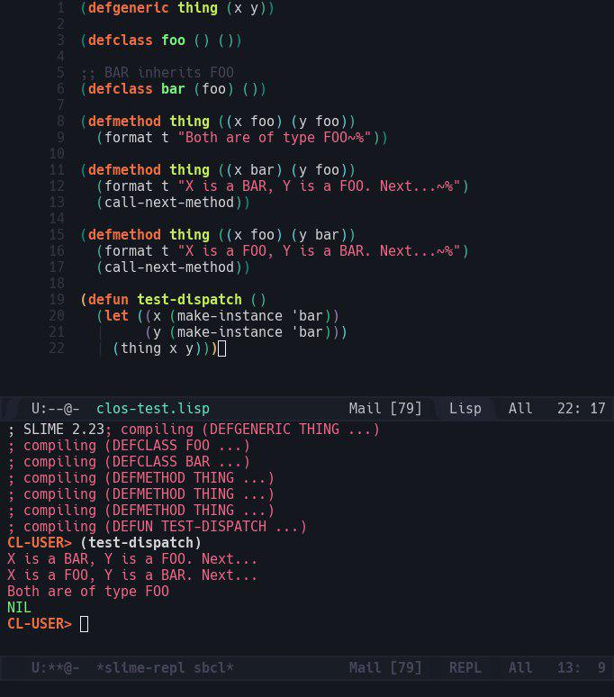 C Resolve Tudo Clos 2019-05-17 [tag_coding] Continuando nossa série, conforme sugerido pelo @colemaker do grupo C/C++/42/Império do Brasil, a próxima ideia a ser implementada em C é o sistema polimórfico de chamadas do Lisp orientado a objetos. Esse sistema permite realizar a seguinte manobra: c-resolve-tudo-clos |
| C Resolve Tudo: Orientação a Objetos (com Polimorfismo) 2019-05-17 [tag_coding] Como programadores há um vício em nossas cabeças que é estar constantemente buscando a bala de prata, ou seja, a solução final e única para todos os nossos problemas de implementação. Com o tempo e alguma experiência descobrimos que tal coisa não existe, mas até lá nos encantamos com esse ou aquele framework, e claro, com essa ou aquela linguagem. c-resolve-tudo |
| The Umbrella Academy 2019-05-15 [tag_series] Estava assistindo The Umbrella Academy e lá pelo terceiro episódio tive uma ideia genial: assistir já o último. A ideia para um crítico de cinema como eu é clara: não há nada que seja desenvolvido nos episódios intermediários que não será citado ou terá referências no season finale, e se houver não importa tanto assim. Tempo economizado, pretendo fazer isso com todas as séries se o começo não tiver indícios de que o resto seja acima da média. the-umbrella-academy |
| Star Wars: O Despertar da Força 2019-05-15 [tag_movies] Este reboot praticamente da saga vem com direito a todas as cotas possíveis e imagináveis. Daisy Ridley (mulher: check) faz a jedi que consegue fazer tudo em um episódio, desbancando Luke Skywalker e o resto da galáxia. John Boyega (negro: check) é um ex-stormtropper que possui o tom cômico que a série precisa, mas está cheio de draminhas pessoais e faz questão de envolver todos neles. Oscar Isaac tem essa faceta meio gay (check) e que eleva a ambiguidade entre triângulo amoroso e incesto do filme original para outro nível. star-wars-o-despertar-da-forca |
| Ruca Malen 2019-05-15 [tag_wine] Reserva Malbec 2015 é a complexidade que eu estava esperando de Mendoza. Com 12 meses de barrica (80% francês, 20% americano de segundo e terceiro uso) ele não tem apenas os tons frutados do Malbec, mas oferece nuances sutis de ervas e minerais. ruca-malen |
| Del Fin Del Mundo 2019-05-15 [tag_wine] Esse Del Fin Del Mundo Malbec 2016 é o jeito certo do mundo acabar: com um Malbec delicioso como esse, doce, frutado, tânico e com personalidade. del-fin-del-mundo |
| Tolkien 2019-05-14 [tag_movies] [tag_cinemaqui] Historicamente falando, podemos dizer que "Tolkien" não é uma biografia sobre o escritor de Hobbit, da saga O Senhor dos Anéis e de Silmarillion. O J.R.R. Tolkien retratado no filme, como os fãs poderão facilmente apontar, é um delírio imaginado por pessoas com pesada carga ideológica. Esta é a explicação mais plausível para esse trabalho censurado, que bloqueia a característica primordial deste autor: sua devoção ao cristianismo. (E isso sem comentar sua postura política extremamente anti-autoritária, tendendo eventualmente ao anarquismo.) tolkien |
| Zorro Y Arena 2019-05-11 [tag_wine] Com Zorro Y Arena Malbec 2017 descobri que zorro quer dizer raposa em Neuquen, na Argentina, e esse vinho da região faz lembrar que existem várias por lá. Pra mim parecem apenas um cachorro com rabo esquisito. zorro-y-arena |
| Entre Vinho e Vinagre 2019-05-11 [tag_movies] Entre Vinho e Vinagre, ou Wine Country, é uma versão alternativa de Sideways se ele fosse sobre mulheres de meia-idade e seus roteiristas soubesse de antemão que menosprezar uvas pode chacoalhar o mercado de vinhos. Você sabia que por causa que no filme estrelado por Paul Giamatti seu personagem destrata o Merlot por ser "fácil demais de beber", elogia as qualidades do Pinot Noir e os preços dessas uvas na vida real despencam e disparam? Este é o "Sideways Effect" e este é o mundo do vinho, onde qualquer comentário subjetivo de um personagem fictício de um filme pode influenciar um mercado bilionário de gente rica e esnobe. entre-vinho-e-vinagre |
| Bicho de Sete Cabeças 2019-05-11 [tag_movies] Para comemorar o dia anti-maniconial (que nominho desgraçado) nada como assistir Bicho de Sete Cabeças, que é baseado em um caso real de um jovem internado em um sanatório porque dava uns tapinhas na pantera. bicho-de-sete-cabecas |
| Minhas Famílias 2019-05-10 [tag_movies] Minhas Famílias é uma pequeníssima janela que o documentarista Hao Wu abre a respeito de sua vida homossexual e a convivência com os pais e com a famíla em geral, chineses tradicionalistas. O lado ruim dele é que não há conteúdo suficiente para valer a pena um longa-metragem, ficando ele no meio do caminhho com seus 39 minutos, e o lado bom é que ele consegue ser sucinto a respeito e evita a todo custo criar um conflito que não existe. As coisas são como elas são. Essa é a mensagem. minhas-familias |
| Donnie Darko 2019-05-10 [tag_movies] Quase 20 anos depois, Donnie Darko é um pequeno milagre dos filmes lado B de baixo orçamento. Com um elenco misteriosamente relevante -- vários atores se tornaram revelações -- e a profunda ideia de chacoalhar a sociedade americana com sua crítica às soluções imediatistas baseadas em pílulas, terapia e auto-ajuda, sua viagem no tempo é a cereja no bolo de uma história que não permite que coloquemos ou tiremos nada, mas que ao mesmo tempo permita tantas interpretações diferentes. donnie-darko |
| Compra Me Um Revólver 2019-05-10 [tag_movies] [tag_cinemaqui] Compra Me Um Revólver começa com a seguinte premissa: "em um México sem lei, a população diminui porque estão desaparecendo as mulheres". Assistindo ao filme entendemos que o problema populacional não se deve à falta de úteros, mas ao excesso de pênis. Todos sabem que o nível de violência em uma sociedade varia de acordo com a quantidade de pênis disputando território. compra-me-um-revolver |
| Deep Work => Flow 2019-05-09 [tag_self] (Deep Work) => Flow - A proven Path to Satisfaction, de Robin Wieruch, é um resumo valioso de dois livros, um sobre deep work e outro sobre flow, e como ambos se relacionam. Robin é um programador e também leu On Writing Well (ele possui algumas notas sobre essa leitura também). deep-work-flow |
| Coroutines Em C: Picoro 2019-05-08 [tag_coding] Tantas linguagens hoje em dia tentando implementar a abstração de corrotinas e inserindo mais camadas de abstração (fibras e cereais)... há duas implementações já no Boost, ambas dependendo de uma biblioteca de contexto de stack que é dependente de arquitetura (programada em Assembly). coroutines-em-c-picoro |
| A Espiã Vermelha 2019-05-08 [tag_movies] [tag_cinemaqui] Política, conspiração, romance, ciência. A Espiã Vermelha é um filme que contém esses elementos unidos por uma mulher vivendo seu sonho na Segunda Guerra em ser uma cientista, mas ao mesmo tempo sendo pressionada por seus valores e sua posição privilegiada a fazer algo que ela poderá se arrepender profundamente. A questão toda do filme é que ela não tem como saber disso naquele momento, e, sendo finalmente descoberta, tem a chance de rever suas ações. a-espia-vermelha |
|
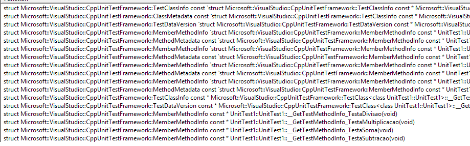 Visual Studio Unit Test (C++) 2019-05-06 [tag_coding] Desde o Visual Studio 2015 há suporte a unit tests em C++ automatizado na IDE. Porém, a partir do VS 2017 15.5 o suporte aumentou drasticamente, vindo embutidos os suportes para as bibliotecas de teste Google Test, Boost.Test e CTest. Além, é claro, do Microsoft Unit Testing Framework for C++, o caseiro da M$. visual-studio-unit-test |
| Gloria Cota Cosecha Tardia 2014 2019-05-06 [tag_wine] É de uma vinícola de Mendoza e de uma uva desconhecida. Como toda colheita tardia, doce. Talvez por ter passado tanto tempo, apenas doce, mesmo. Um levíssimo gosto alcoólico (que se mistura do levíssimo amargo), mas continua com seus 13.5% e sobe rápido. Beber com queijo ou doces não muito doces. gloria-cota-cosecha-tardia |
| Edifício Master 2019-05-06 [tag_movies] Esse Eduardo Coutinho sabe fazer documentários. Olhe como ele organiza uma força-tarefa para entrevistar moradores do Edifício Master, que tem cerca de 500 moradores, em frente ao Copacabana no Rio. Ele não apenas encontra histórias interessantes como realiza uma primorosa edição que foca nas histórias e nas pessoas, pura e simplesmente. Não há rodeios. Não dá sono. Dá vontade de viver e conhecer mais pessoas. edificio-master |
| Dias Vazios 2019-05-06 [tag_movies] [tag_cinemaqui] Dias Vazios repousa convenientemente no marasmo narrativo da metalinguagem e na filosofia barata de Nietzsche. Não barata no sentido de ordinária, mas no sentido de leitura adolescente sobre o vazio da vida. Aliás, é por isso que Nietzsche é pop: graças ao Super-Homem, e não aquela baboseira de que Deus está morto. dias-vazios |
| Sonhos 2019-05-05 [tag_movies] Assisti a Sonhos, de Akira Kurosawa, dividido em dois. Minha esposa dormiu na metade. Eu avisei para ela que esse cineasta é lento. As pessoas hoje em dia não têm paciência para observar e contemplar a beleza da composição dos quadros de Kurosawa. E não são apenas os quadros, como a verdadeira pintura dos cenários, do figurino e, principalmente, da imagem que fica em nosso inconsciente ao absorver todas aquelas cores que parecem fazer parte de quadros móveis em ângulos inusitados, mas misteriosamente perfeitos. sonhos |
| Os 27 Beijos Perdidos 2019-05-05 [tag_movies] Mais um filme russo dos anos 2k essa semana, filmado na Geórgia, Grécia, Alemanha, falado em russo, inglês, francês. Uma cidadezinha onde as jovens mulheres estão em polvorosa. Para piorar a cidade assiste Emanuelle as mil formas de amar. A única que não pode transar com seu grande amor, um professor de 41 anos, é a jovem Sibylla, de 14 anos. Enquanto isso o filho do professor tem direito a 100 beijos nessa menina, mas perde a chance de dar 27. Sim, a história é confusa desse jeito, além de ir a lugar algum. os-27-beijos-perdidos |
| Toda Arte é Perigosa (Velvet Buzzsaw) 2019-05-04 [tag_movies] Este é o filme-bomba de Jake Gyllenhaal. Ele faz um crítico de arte que está sempre suportando sua cabeça com os braços cruzados, tem uns trejeitos de viadinho mas precisa catar a deliciosa minazinha do Wanderlust (Zawe Ashton) porque pega bem. Esta é claramente uma ficção de quem não entende nada de arte. Eu sou crítico e nunca comi uma gostosa dessas. velvet-buzzsaw-toda-arte-e-perigosa |
| O Passado 2019-05-04 [tag_movies] O grande problema quando um relacionamento acaba é que, apesar de tentarmos com sinceridade seguir em frente com nossas vidas, a memória do tempo vivido com a outra pessoa existirá para sempre. Quando Rímini (Gael García Bernal) e Sofia (Analía Couceyro) se separam, mesmo que civilizadamente, algo parece impedir que Sofia aceite essa nova realidade. E este é um filme cuja expressão "peso do passado" realmente se sente. o-passado |
| Ninguém pode saber 2019-05-04 [tag_movies] É com aquela atriz talentosa, apesar de feia que dói. A pegada é ser uma espécie de thriller de espionagem com um pé na realidade. Esse pé é tipo aquele pé tímido sentindo a água fria da piscina. A atriz jovem é linda e uma delícia, motivo pelo qual a série enquadra vários momentos com ela com a câmera por trás e ela de jeans ou close dela bem iluminada e maquiada. Ela interpreta a filha de Tony Collete de um início onde ela não sabe como agir frente a uma ameaça de vida ou morte, passa pela total incapacidade de comprar um carro e vai para "agora sou espiã, roubo cartões de acesso e uso peruca". Este salto gigantesco é marca registrada de uma TV preguiçosa e de certa forma inclusiva demais. Incluir incompetentes não é a diversidade nas artes desejada. ninguem-pode-saber |
| Luna Papa 2019-05-04 [tag_movies] Esta é uma comédia russa que vai fazer você pensar várias vezes: mais um dia normal na Rússia. Estamos na parte oriental, com turbantes, camelos, deserto e malucos de todo gênero. Uma trupe de atores passa pela cidade e um ator deixa um herdeiro, o narrador na história, na barriga de uma moça que adora o teatro. luna-papa |
| A Vida De Diane 2019-05-04 [tag_movies] [tag_cinemaqui] A Vida de Diane é um filme de sensações, mas só vamos percebendo isso conforme a rotina se torna cada vez menos relevante para o que é realmente importante. "Precioso", como a própria Diane diz em sua última fala. a-vida-de-diane |
| Miolo 2019-05-01 [tag_wine] Peguei esse Tannat Reserva 2017 como uma forma de voltar a experimentar alguns vinhos brasileiros que dizem que é bom. Vou pausar esse projeto por enquanto. Os vinhos nacionais da Miolo representam bem a vinicultura brasileira: cara, ineficiente e chinfrim. miolo |
| Dançando No Escuro 2019-05-01 [tag_movies] "Eu gosto de musicais porque nada de ruim acontece em musicais", diz a personagem de Björk. Bom, ela não contava com um musical por Lars Von Trier. Pobre garota. Esta é a história de uma pessoa ingênua que possui apenas um desejo em sua vida: impedir que seu filho tenha o mesmo destino que ela: ficar cega pelo resto da vida. dancando-no-escuro |
| Longa Jornada Noite Adentro 2019-04-30 [tag_movies] [tag_cinemaqui] Longa Jornada Noite Adentro possui um foco desde o início, que é justamente o título do filme: realizar um dos mais elaborados planos-sequência do cinema em 3D. Mas este não é um filme 3D, conforme anunciado em seu início. Há um momento em que, munidos de óculos 3D, devemos colocá-los, mas no meio da sessão, junto com o protagonista, e eis que assim o trabalho do diretor e roteirista Gan Bi começa a fazer algum sentido. longa-jornada-noite-adentro |
| Requiém Para Um Sonho 2019-04-29 [tag_movies] Eu nunca me decepciono (pelo menos por enquanto) com Darren Aronofsky. Em "Réquiem Para Um Sonho" há essa forte mensagem anti-drogas, realizada com propriedade, com uma textura pesada e indissociável da própria natureza de um ser humano que não se valoriza. É um filme depressivo, mas que ao mesmo tempo nos faz refletir sobre nossos próprios vícios no dia-a-dia. E se você acha que é apenas contra drogas ilegais, pense de novo e responda a si mesmo: o que você faz para fugir da sua realidade? requiem-para-um-sonho |
| OpenSSH no Windows 2019-04-29 O Secure Shell (SSH) é um protocolo de sucesso nos unixes da vida para terminal remoto e seguro por décadas, mas no Windows nunca houve uma forma simples e protegida de abrir um terminal ou copiar arquivos. A opção é instalar um cygwin com esse componente ou tentar compilar um protocolo SSL e em cima dele o SSH. Porém, há detalhes na autenticação que estão relacionadas com o Sistema Operacional e que precisa ser feito. O OpenSSH é uma maneira de compilar tudo isso e ainda funcionar no Windows. openssh-windows |
| Humberto Canale 2019-04-29 [tag_wine] Os Malbecs do Rio Negro, na Patagônia argentina, são densos, mas ainda mantém a fruta e o aroma de um Malbec, como este Humberto Canale 2017, que é elegante em alguns momentos, ríspido em outros. O Humberto Canale Íntimo 2017 é Cabernet de Rio Negro, região de Neuquen, no começo é bem mais forte que os outros Cabernet, mas com o tempo ele suaviza mantendo corpo. humberto-canale |
| Família Rodante 2019-04-29 [tag_movies] Pablo Trapero nos entrega a experiência completa do que era uma família no tempo de nossos pais/avós. (Era, porque a família foi destroçada pelos marxistas culturais.) Todos os elementos estão no filme. As fotos inapropriadas que servirão para os mais velhos alimentarem suas memórias. O amor juvenil entre primos e as traições, que fazem rima com as declarações de amor eterno dos noivos. A matriarca e suas opiniões antiquadas, que soam familiares e por isso não conseguimos simplesmente dizer que ela está errada. Quem diria isso para a própria mãe ou avó? familia-rodante |
| Const Int Pointer Var 2019-04-29 [tag_coding] A melhor forma de declarar variáveis ponteiros (constante ou não, mas segue o exemplo) é `const int * var`. Explicação: Quem diz o asterisco fazer parte do tipo e não da variável tem razão. Pensando dessa forma ele tem que ficar próximo do tipo. const-int-pointer-var |
| Domaine Les Barthes Comté Tolosan 2019-04-28 [tag_wine] Malbec da França. Confere, produção? Sim, e ele é frutado como Malbec argentino, mas menos ácido, menos adstringente, menos sofrido. Uma experiência de comparação de terroirs. Ele foi a garrafa do meio entre dois Malbecs, um de Mendoza e outro de Rio Negro. domaine-les-barthes |
| Café do Vovô Joel 2019-04-28 [tag_food] Lá de Santa Rita Sul de Minas é presente do meu amigo. Eles colhem e torram manualmente. O gosto cítrico em corpo leve é surpreendente. Nunca provei nada assim. Bom para alternar com o Loretto. cafe-do-vovo-joel |
| Aniello 006 2019-04-28 [tag_wine] Esse Malbec do Rio Negro, Aniello 006 (com relevo no rótulo), da região Centro-Sul argentina, pode-se dizer que é bem básico por ser jovem, mas no fundo é da região menos interessante dos vinhos dos hermanos. aniello-006 |
| I Think You Should Leave With Tim Robinson 2019-04-27 [tag_series] Essa é mais uma das séries de comédia da Netflix que começa com suas melhores piadas no piloto e vai piorando. Ela tem uma pegada Monty Python de experimentação misturado com os canais da tv interdimensão de Rick & Morty, mas não consegue dar o salto final para o abismo. São quadros até que bem bolados, mas quase nenhum deles sabe bem quando parar. Alguns cedo demais, a maioria tarde demais. i-think-you-should-leave-with-tim-robinson |
| Corra, Lola, Corra 2019-04-27 [tag_movies] Esse filme é o prêmio que todo cinéfilo espera depois de assistir a vários filmes medíocres que seguem a mesma fórmula. "Corra, Lola, Corra" não é um deles. Ele quebra barreiras linguísticas (sobre a linguagem do cinema). Ele explora a mescla entre realismo e fantasia. Ele permite que o espectador acompanhe três versões de roteiro e as compare. E ele tem uma das trilhas sonoras mais perfeitas do cinema. corra-lola-corra |
| Special Primeira Temporada 2019-04-26 [tag_series] Tenho algo a confessar: o piloto de Special mentiu para mim. Pensei que seria uma série de humor negro onde alguém com paralisia cerebral seria atropelado constantemente por um carro. Mas não é. Está mais para um programa preenchendo cota para deficientes. E deficiente no caso físico, emocional e mental. special-primeira-temporada |
| Mademoiselle Paradis 2019-04-26 [tag_movies] [tag_cinemaqui] Mademoiselle Paradis segue a cartilha dos filmes de época, mas não deveria. O filme é muito mais do que isso, abordando temas como etiqueta e a dualidade entre ser medíocre em tudo ou sacrificar uma vida para ser algo pelo qual será lembrada. mademoiselle-paradis |
| Special 2019-04-24 [tag_series] Ryan O'Connel criou e é o astro de sua própria série. Ele tem paralisia cerebral, é gay (pelo menos na série) e não tem vergonha de sair do armário. Por ser gay. Já por ser aleijado... Esta é uma série de humor negro, e apenas por isso eu a recomendo. Mas há mais coisas. Ele vai trabalhar em uma revista de millenials. Tem um cara usando suspensórios. A estrela do lugar é uma gorda porque ela vive escrevendo artigos sobre o orgulho de ser gorda. Ela diz no piloto: "falar sobre sua condição te libera; você acaba possuindo o que diz e ninguém mais pode controlar". Eu não tenho palavras para tamanha sensibilidade e falta de vitimismo. Esta é a série que estava esperando sair do armário depois de tantas tentativas frustradas (como o medíocre Atypical). special |
| Bonding 2019-04-24 [tag_series] Bonding, ou Amizade Dolorida (como está na Netflix Brasil), é uma série curtinha, que quase pode ser um filme, se tivesse a ousadia de implementar um closure no final de sua temporada. Mas não importa: é um conteúdo solto. Livre, leve e solto. Ele trata de traumas de adolescência, sexo e fetichismo de maneira a abraçar o mundo. E é um abraço gostoso e engraçado. bonding |
| Atentado ao Hotel Taj Mahal 2019-04-24 [tag_movies] [tag_cinemaqui] O que mais impressiona em "Atentado ao Hotel Taj Mahal", um thriller biográfico tenso, pesado e claustofóbico, é que apesar de (ou por causa de) toda a brutalidade que vemos na tela, causada por diferenças culturais e conflitos políticos, aos poucos nele emerge um senso de humanidade que é livre de gênero, nacionalidade, posição social ou dinheiro. Quando pessoas estão à beira da morte é o momento em que surgem os heróis anônimos, seja em pequenos atos, como manter um bebê no colo todo momento ou tentar tranquilizar uma mulher inconsolável com um uísque 20 anos, ou em verdadeiros exemplos de hombridade, como se manter fiel ao comprometimento de um trabalho, mesmo que para isso seja necessário deixar de lado os valores mais sagrados que se tem em vida. atentado-ao-hotel-taj-mahal |
| Amor e Revolução 2019-04-23 [tag_movies] Esse filme com a Emma Watson, a Hermione que virou feminista (portanto feia), conta uma história baseada em fatos reais como um drama, mas vira uma piada pronta. Começa com os bonitos revolucionários comunistas tentando se proteger do feio golpe militar de direita, mas quando o casal de crushes são enviados para um campo de trabalhos forçados onde se planta e se descasca muita batata e onde ninguém pode sair, ou seja, o paraíso comunista, eles não gostam. Difícil agradar jovenzinhos revolucionários. amor-e-revolucao |
| Nina Moscato 2019-04-22 [tag_wine] Nina é um vinho naturalmente doce de uma uva que nunca tinha provado e que não fez diferença chamada Moscato Gialo. Imagino que daí veio moscatel. Ele é doce, mas nem tanto. Fácil de beber e de esquecer. Vinhos brancos e suas sensações leves demais. nina-moscato |
| Necrópolis 2019-04-22 [tag_series] Esta série é um bom exemplo de como fazer conteúdo engraçado sem pretensão alguma e um orçamento menor ainda que a pretensão e ficar bom. Bom, bom eu não diria. Ele fica exatamente como você esperaria que ficasse um vídeo com você e seus amigos em uma tarde preguiçosa e criativa. necropolis |
| A Sombra do Pai 2019-04-22 [tag_movies] [tag_cinemaqui] A diretora Gabriela Amaral veio da televisão mas no cinema brasileiro está se revelando uma excelente contadora de histórias. E com A Sombra do Pai, segundo longa após Animal Cordial, o gênero terror em terras tupiniquins começa a ganhar uma desenvoltura própria mesmo que referencie os clássicos mundiais inconfundíveis sobre além-túmulo. a-sombra-do-pai |
| A Garota Que Conquistou O Tempo 2019-04-22 [tag_movies] Netflix, fui tapeado! Pensei que iria ver uma animação sobre viagem no tempo no estilo Steins;Gate e acabei vendo um filme de menininha japonesa. Com quem devo ficar? Oh, meu deus, de quem será que eu gosto? Este também é um filme sobre uma pessoa que volta no tempo apenas para comer seu pudim antes da irmã. a-garota-que-conquistou-o-tempo |
| O Homem Que Copiava 2019-04-20 [tag_movies] A sinopse do IMDB diz assim: "André, relatively poor, falls in love with Silvia, a neighbor whom he spies with a telescope." Relatively poor é o que me chamou a atenção, pois isso diz muito sobre o filme. Que é relativamente excelente. o-homem-que-copiava |
| El Esteco 2019-04-20 [tag_wine] Malbec 2014 que achei no Carrefour de Neuquen (Argentina) por 30 conto e estava amargo demais. Deixei na geladeira e depois de um tempo ficou bacananinha, adstringentes e com frutas negras, alguma textura, apesar de ainda nada demais para um Malbec envelhecido em supermercado. el-esteco |
| Aimé Ruca Malen 2019-04-20 [tag_wine] Malbec 2017 que tinha comprado lá em Neuquen pra abrir (mas me senti meio enjoado no dia) e ele estava bom, embora nada demais. Um Malbec frutas negras e corpo médio. aime |
| Décimo-Quarto Encontro CCPP42BR 2019-04-19 [tag_ccppbr] Foi definido recentemente no nosso grupo de Telegram que nosso próximo encontro será realizado na cidade de São Paulo no dia 6 de julho de 2019. Como nossa última tentativa falhou miseravelmente por falta de inscrições suficientes estaremos iniciando a organização primeiro pelas incrições, e, havendo quórum, será feita alocação de sala(s) e coffee-break. Em paralelo iniciaremos o call for papers, onde você é convidado a palestrar em nosso encontro. 14-encontro-ccppbr |
| Mormaço 2019-04-18 [tag_movies] [tag_cinemaqui] Mormaço tem a cara da ficção do documentário Favela Olímpica. Ambos são sobre as consequências das Olimpíadas no panorama da desigual cidade do Rio de Janeiro. E ambos chegam atrasados aos cinemas, mas felizmente (ou infelizmente) sem perder a atualidade. mormaco |
| Osmosis 2019-04-16 [tag_series] Ah, se o amor fosse apenas um código em um computador orgânico -- aka nosso cérebro -- e que fosse possível descobrir sua alma gêmea simplesmente analisando esse código. E se essa série distópica da Netflix, baseada em uma versão mais romântica e dramatizada de um episódio de Black Mirror, fosse francesa, e exibisse todas as formas de amar de um futuro próximo? Bom, aí nós teríamos que perder uma hora assistindo ao piloto para concluir: ideia interessante. Poderia ser um bom filme. Mas séries estendem demais conceitos simples. osmosis |
| Meu Nome Não é Ruben Blades 2019-04-15 [tag_movies] Rubén Blades é o cantor mais famoso do Panamá. Também já fez pontas de ator em Hollywood, se candidatou a presidente (foi nomeado ministro), faz ataques ferrenhos ao imperialismo americano enquanto mora em Nova York e defende o povo enquanto bebe água Perrier em seus shows. Ou seja, um membro da esquerda caviar básico. Isso tudo você aprende neste burocrático documentário. meu-nome-nao-e-ruben-blades |
| Coisa Mais Linda 2019-04-15 [tag_series] Essa é uma série brasileira vintage que se passa em um Rio de Janeiro que parece feito em computador e fundos de cenários estilo papel de parede do Windows, com filtros exagerados que lembram a primeira vez que a TV Globo botou as mãos no sinal digital, em alta resolução, e misturou filtros com aquele saudosismo dos anos 90 a respeito dos anos 50. coisa-mais-linda |
| A Última Casa da Rua 2019-04-14 [tag_movies] House at the End of the Street apresenta a mega-star Jennifer Lawrence da série Jogos Vorazes descobrindo os podres do garoto bonitinho interpretado por Max Thieriot. O problema do material entregue pelos roteiristas é que esta é a velha fórmula do mistério se abrindo aos poucos com uma revelação nem tão bombástica assim, e a morte de uma personagem importante no meio não torna as coisas tão imprevisíveis também. a-ultima-casa-da-rua |
| La Poderosa 2019-04-13 [tag_wine] Em homenagem ao genocida Che Guevara quando deu seu rolê de bike pelo deserto. É vinho meio amargo, sem estrutura. Del Fin Del Mundo. la-poderosa |
| Kloser 2019-04-13 [tag_beer] A degustação revelou cerveja com gosto de sorvete da infância. kloser |
| The ONE Thing 2019-04-12 [tag_quotes] [tag_self] [tag_books] The ONE Thing é um livro que comecei a ler inspirado na dica do Robin Wieruch, que já leu um ou dois livros que eu também já li. Este é um clássico da auto-ajuda empresarial e começa ensinando umas poucas e boas para o leitor comum, mas é particularmente inspirador para quem já sabe que as lições de Gary Keller servem mais para ele do que para qualquer outro ser humano no planeta. the-one-thing |
| Shazam! 2019-04-12 [tag_movies] O novo filme da DC, Shazam, tenta convencer seu público que moleques órfãos de 15 anos podem vencer um vilão adulto que quer o poder mágico mais que tudo na vida. A história começa com a origem desse vilão, que é a mesma do herói, em uma economia narrativa bem-vinda, pois já se vão dezenas de filmes de origens, todos muito parecidos e esquecíveis (dica: assista apenas o do Homem Aranha e seja feliz). Shazam tem o espírito da inovação, um super-herói mirim, no corpo do convencional, na pele do ator que faz a série Chuck, Zachary Levi, que funciona como comédia, mas não exatamente como um garoto de 14 pra 15 anos. shazam |
| 4x4 2019-04-12 [tag_movies] O filme começa mostrando um monte de muros, alarmes, arames farpados e câmeras que demonstram a insegurança da classe média de hoje em dia. Um ladrão de toca-fitas de carros fica preso no carro de sua próxima vítima e não consegue mais sair. A situação em 4x4 é rapidamente montada, mas de difícil solução. É um filme tenso, com várias mensagens dúbias, mas que se soluciona de maneira superficial e sem um grande nó a unir as linhas de raciocínio que ele mesmo começa. Como direção um ótimo entretenimento. Como roteiro algo que dificilmente soará como inovador ou bem desenvolvido. 4x4 |
| Code Jam 2019 Qualification Round 2019-04-07 [tag_coding] Estou viajando e com poucas horas de acesso a um computador, mas os dois primeiros desafios do Code Jam esse ano foram tão simples que sequer precisaram de meia-hora. Isso para um chinês, campeões em campeonatos de programação, deve ser equivalente a cinco minutos com um código C enxuto. Mas estou apenas aprendendo. code-jam-2019-qualification-round |
| Elefante 2019-03-31 [tag_movies] Coincidência ver esse filme agora, pois semana passada estava conversando com um amigo meu sobre Boyhood e se a produção de um filme deve/pode interferir na forma como o filme é visto e avaliado. Esta é uma coincidência porque Elefante é um caso mais extremo ainda, pois se assistimos sem saber nada de antemão descobrimos apenas nos créditos finais que seus personagens são estudantes reais, e isso reflete diretamente sobre como enxegamos este trabalho excepcional de Cinema. elefante |
| Dez 2019-03-31 [tag_movies] Limitados pela visão do banco do motorista e do passageiro de um carro acompanhamos uma mulher em sua nova vida. Divorciada com um filho que não a apoia ela conversa com algumas pessoas. O filme é tão realista que perde a graça na segunda ou terceira conversas de "Dez" que o diretor Abbas Kiarostami quer nos mostrar, divididas por um contador regressivo super-brega. dez |
| As Virgens Suicidas 2019-03-31 [tag_movies] O primeiro filme de Sofia Coppola, produzido pelo pai, ninguém menos que Francis Ford Coppola, é o debut de uma filhinha de papai que vai melhorando o estilo a cada novo filme, explorando a sofrida vida dos ricos, mas que nesse começa prepotente demais para um dramazinho adolescente cujo drama em si nunca é visto. as-virgens-suicidas |
| O Gabinete do Dr Caligari 2019-03-30 [tag_movies] Caligari! Caligari! Caligari! Um grito surdo que se traduz no cinema mudo com este nome sendo escrito pela tela de todas as formas. Este é um dos representantes do expressionismo alemão que inspirou o estilo noir que por sua vez está influenciando o neo-noir. Cenários com sombras distorcidas, elementos exagerados na tela, maquiagem pesada estilo gótico (o de indivíduos, não a arte alemã). É um filme curto que já arrisca detalhes novos na linguagem como paralelismo, sonhos e certa complexidade na história. o-gabinete-do-dr-caligari |
| Maus Hábitos 2019-03-30 [tag_movies] Às vezes fico na dúvida se gosto mais da fase do Almodóvar raiz ou nutella, mas revendo Maus Hábitos me dou conta que a versão raiz é muito mais atraente. É de baixo orçamento, mas mais despojada, onde ele fazia muito (e mais) com pouco. maus-habitos |
| Mike Wallace Está Aqui 2019-03-29 [tag_movies] [tag_cinemaqui] Mike Wallace Está Aqui é um documentário ágil que pega bastante da linguagem televisiva, mas sem mastigar muito a informação. O formato parece estar um pouco acima do conteúdo, o que não é um problema para a televisão, mas é para o cinema. mike-wallace-esta-aqui |
| Border 2019-03-29 [tag_movies] [tag_cinemaqui] Border (fronteira em inglês) dialoga sobre vários limites entre dois elementos. Há o limite de fronteiras entre países, o limite das diferenças entre as pessoas, o limite da violência e da exploração, e por fim, um limite mais literal, material, que torna todo o resto irrelevante. E a beleza do filme está em escalar tudo isso com extrema humanidade, sem nos deixar afastar por repulsa em momento algum, por mais repulsivo que sua história pudesse ser vista sob narrativas mais convencionais. Curioso? border |
| Batman: O Cavaleiro Das Trevas 2019-03-29 [tag_movies] The Dark Knight fala sobre o caos, mas é dirigido por um diretor tão sistemático que esse caos está meticulosamente definido em 50%. O diretor e roteirista Christopher Nolan é o Duas Caras do cinema. Sua outra cara é seu irmão, Jonathan Nolan, que co-escreve aqui o roteiro e consegue nos entregar um material redondo, polido, com toques góticos que nos remetem ao universo consolidado de Batman e que Nolan diretor realça com seu diretor de fotografia com o negro brilhante desta trilogia. E Heath Ledger, o ator que faz o vilão Coringa, esse sim, é o verdadeiro caos que o filme precisava para se tornar a referência que temos de uma adaptação dos quadrinhos bem feita. Aprende, Marvel. batman-o-cavaleiro-das-trevas |
| Niède 2019-03-27 [tag_movies] [tag_cinemaqui] No começo de "Niède" há umas batidas bacanas na trilha sonora, batidas ocas, que não conseguimos discernir de onde poderiam vir, exceto de materiais muito primitivos. Essa batida já começa o filme evocando tempos tão distantes na cronologia humana que sequer ousamos imaginar o que o homo sapiens fazia até então. niede |
| Batman Begins 2019-03-27 [tag_movies] Batman Begins hoje é óbvio, mas para entender a verdadeira força desse reboot você precisa relacionar com um outro filme chamado Batman e Robin. Assista esse. Eu espero. Esse é o tamanho do gap que se formou entre as duas franquias. batman-begins |
| Memórias do Grupo Opinião 2019-03-26 [tag_movies] [tag_cinemaqui] Memórias do Grupo Opinião é exatamente o que você terá nesse filme. O que é um pouco frustrante, diga-se de passagem. Bons documentários costumam trazer uma surpresa por trás de sua premissa. Mas esse é daqueles que pega carona na moda de se falar na intervenção militar de 64... aliás, ditadura militar. Aliás, golpe militar. Eu já não sei mais. É difícil usar o vocabulário exato quando se fala de política, porque a política corrompe até o dicionário. memorias-do-grupo-opiniao |
| Dolls 2019-03-26 [tag_movies] Dolls é um filme lento, mas suas três histórias de amor são arrebatadoras. Não são convencionais, e muitos não chamariam de amor, mas não se pode dizer que não são histórias fortes, que mexem com nossos instintos de preservação. Essas pessoas entregaram suas vidas ao destino. Nenhuma é recompensada. E ainda é um filme lindo. dolls |
| Espresso Lor 2019-03-25 [tag_food] Do St. Marchet do Ibirapuera é um pouco ácido com sabores mais cítricos e um corpo médio para leve. Bonita xicrinha. espresso-lor |
| Antônio Um Dois Três 2019-03-25 [tag_movies] [tag_cinemaqui] "Antônio Um Dois Três" é um filme simpático de se ver. Você vai acompanhando a historinha e quando menos espera está assistindo a mais um filme sobre criação artística. E são tantos outros que já existem, mais adultos ou profundos que esse, que "António" acaba virando uma brisa nova sobre o tema, vinda das Terras Portugas, unindo nacionalidades e experiências diversas (russo e brasileiro, pra ser exato). antonio-um-dois-tres |
| Mad Max: A Caçada Continua 2019-03-24 [tag_movies] Mad Max 2 tem o subtítulo ridículo A Caçada Continua no Brasil, mas pra quem assiste filmes por aqui está acostumado com pagação de mico das distribuidoras. Lá fora é conhecido como Mad Max 2 e The Road Warrior, para ter uma ideia de como estavam em dúvida sobre relacionar com o primeiro. Ele conta a história de Max, sem esposa, sem filho e com um cachorro de lenço vermelho, um side kick que consegue manter uma arma apontada e engatilhada segurando um osso de brinquedo, prestes a estourar os miolos do sujeito. Esse é um mundo pós-apocalíptico, e sendo assim vale tudo, menos dar o toba. mad-max-a-cacada-continua |
| Mad Max 3: Além da Cúpula do Trovão 2019-03-24 [tag_movies] "Mad Max 3: Além da Cúpula do Trovão" já possui um lindo nome e no Brasil decidem apenas traduzir o subtítulo. Muito bem, não se mexe onde está ganhando. Traz Tina Turner junto de Mel Gibson nos créditos principais, mas o principal trabalho da cantora está menos no filme e mais nas músicas de abertura e encerramento do espetáculo. Você vai se lembrar da música do final, por isso não desligue antes dos créditos. mad-max-3-alem-da-cupula-do-trovao |
| As Horas 2019-03-24 [tag_movies] Um filme é depressivo e te deixa depressivo. Ele foi bem sucedido como um filme? Não para mim. Eu não li nenhum dos livros e não gosto muito desse filme. Dizem que foi uma excelente adaptação. Bom, ele conta várias histórias de gente depressiva em épocas e lugares diferentes e em alguns momentos as histórias se juntam. Mas seus personagens e suas histórias são tão depressivos que quem se importa? as-horas |
| Paris, Te Amo 2019-03-22 [tag_movies] Este é um mega-projeto de cinema, com dezenas de diretores e roteiristas. Não há apenas o trabalho de compor os curtas, mas de juntá-los. Este é um filme com tantas visões diferentes que ele soa um pouco esquizofrênico. Mas como são todas visões mais ou menos alinhadas com o que a classe artista defende -- o que geralmente quer dizer a mesma coisa -- ele sobrevive ao pluralismo por causa da mesmice impregnada na mente de seus idealizadores. paris-te-amo |
| Estancia Mendoza 2019-03-22 [tag_wine] Estancia Mendoza foi um blend Malbec/Cabernet 2015 encontrado no mercado de casa, mas não foi um bom achado. Um pouco queimado, faz lembrar que mercadinho de bairro cuida de seus vinhos como a bunda. 20/04 É, tava estragado, mesmo, joguei fora. estancia-mendoza |
| Dumbo (2019) 2019-03-22 [tag_movies] [tag_cinemaqui] A vida dá voltas, e enquanto Dumbo de 1941 foi feito como uma tentativa de manter os estúdios Disney de pé durante a Segunda Guerra (conseguiu), este Dumbo de 2019 surge em um momento em que o próprio estúdio de cinema se assemelha a um elefante depois de adquirir duas franquias de produções caras e com enorme bilheteria (super-heróis da Marvel e neo-nerds do Star Wars). Empreendimento pesado demais para decolar, $ua$ grande$ orelha$ tentam agora alçar voo convertendo todo seu legado de animações em produções live-action com o uso dos milagres da computação gráfica. dumbo-2019 |
| Quando Margot Encontra Margot 2019-03-20 [tag_movies] [tag_cinemaqui] O que você faria se encontrasse sua versão do futuro, teoricamente mais velha e mais sábia, e ela começasse a lhe dar conselhos sobre o que fazer para acertar dessa vez na vida? Quando Margot Encontra Margot é um filme que explora essas possibilidades imaginárias sobre o nosso ser, mas se no começo abre-se um leque de para onde a história pode ir ela aos poucos vai se fechando em torno de algo mais enxuto que volta para o lugar-comum dos romances franceses. quando-margot-encontra-margot |
| Missão Impossível: 3 2019-03-18 [tag_movies] Esse é o meu M:I favorito. Ele como filme de ação nunca se deixa de levar a sério pelas consequências de suas ações. Ele possui uma fotografia sisuda de Dan Mindel, dessas de drama, porque ela fala sobre perdas humanas como se elas fossem reais, e o impacto delas é sentido durante todo o filme. Esse também é a estreia de J. J. Abrams na direção de longas-metragens, e ele está ótimo em conseguir orquestrar três equipes distintas localizadas em três cantos equidistantes do planeta (EUA, China, Itália). E, por fim, esse é um filme onde os efeitos em sua maioria são feitos na vida real e não dentro de computadores. Tom Cruise é um maníaco que dispensa dublês, e sua energia é a única vantagem de ter ele no elenco. missao-impossivel-3 |
| Jorginho Guinle - $o se Vive Uma Vez 2019-03-18 [tag_movies] [tag_cinemaqui] Biografias costumam ser sobre pessoas que fizeram algo em suas vidas; algo que nós, meros mortais, consideramos fora do comum. "Jorginho Guinle - $o se Vive Uma Vez" conta a história de um playboy que viveu 88 anos sem nunca trabalhar. Isso é fora do comum. A grande questão que paira no ar é: e daí? jorginho-guinle-so-se-vive-uma-vez |
| Nova York, Eu Te Amo 2019-03-17 [tag_movies] Todas as comédias românticas americanas se passam em Nova York. Todos os romances se passam em Nova York. Toda a carreira de Woody Allen antes das duas últimas décadas se passa em Nova York (OK, Noivo Neurótico, Noiva Nervosa não). Logo, ou "por quê??", que tal mais um filme onde histórias se entrelaçam, só que dessa vez em Nova York? nova-york-eu-te-amo |
| Missão: Impossível 2 2019-03-17 [tag_movies] Quem diria que Thandie Newton, da série Westworld, era uma Hunt Girl da segunda aventura da série? E ela está um pitelzinho. Sua função no filme é ser uma delícia linda, basicamente. Se observarmos ela e o número de câmeras olhando para seu lindo rosto (e corpo), muitos em câmera lenta, vamos aos poucos entendendo todas as falhas desse que é o pior filme de todos os outros até agora. Ele é farofa em um mal sentido, ele é datado em sua estética e lembra tudo de ruim que estava acontecendo com os filmes de ação depois do nerd Matrix chegar e roubar a cena. missao-impossivel-2 |
| Missão: Impossível 2019-03-17 [tag_movies] O primeiro "Missão: Impossível" é, em poucas palavras, velho. Em mais algumas palavras, há monitores de tubo, cabines telefônicas como único recurso de comunicação e filmes VHS na primeira classe de um avião. Estamos em 1996 e Brian De Palma aceita o projeto de transformar uma série televisiva farofa em algo além de sua música-tema inesquecível. E através de uma reviravolta básica, que fundamentou todos os plots da série no futuro, ele inicia uma franquia com chave de ouro. missao-impossivel |
| O Parque dos Sonhos 2019-03-14 [tag_movies] [tag_cinemaqui] Nos primeiros quinze minutos de O Parque dos Sonhos é possível que uma lágrima escorra dos olhos de um espectador cativado pela proposta. Eu gostaria de acreditar que não são lágrimas de manipulação, pois realmente parece um tema emocionante. Porém, já nos últimos quinze minutos é possível que esse mesmo espectador esteja pensando no que foi que deu errado para que essa história acabe em mais do mesmo. o-parque-dos-sonhos |
| Um Ato de Esperança 2019-03-13 [tag_movies] [tag_cinemaqui] Dramas no tribunal costumam chamar a atenção do espectador automaticamente. É do interesse humano querer saber qual será o destino das pessoas envolvidas. Quando é sobre um crime ou casos de família o interesse é maior. Dentro dessa ótica, filmes como Um Ato de Esperança já sai na vantagem logo na largada. um-ato-de-esperanca |
| Maligno 2019-03-13 [tag_movies] [tag_cinemaqui] Para fãs de terror, "Maligno" é uma viagem que no mínimo paga o ingresso, mas vem com um final que pode deixar o pessoal mais antenado em justiça social com um gosto ruim na boca. Angustiante em alguns momentos e tenso em quase todos, ele vai te consumindo por dentro enquanto você acompanha uma história que é à prova da razão humana. maligno |
| Amadeus (versão do diretor) 2019-03-13 [tag_movies] A grande sacada de Amadeus não é fazer uma biografia sobre Mozart estabelecendo o óbvio: ele foi um músico genial. Isso todos sabemos. O grande trunfo do filme de Milos Forman foi mostrar isso do ponto de vista de uma pessoa que desejaria mais que tudo em ser um Mozart, mas, como a maioria de nós, pobres mortais, teve que conviver com um fato amargo da vida: somos todos medíocres. Aliás, essa é a própria definição de medíocre. A média é o povão. O excepcional acontece de vez em quando. amadeus |
| Capitã Marvel 2019-03-12 [tag_movies] "Eu não tenho nada pra provar pra você", diz Capitã Marvel para um homem. Fora a história em si há pelo menos mais dois significados para essa frase no filme. Primeiro ela se refere ao constante "desafio" feito às mulheres, como se por pertencer a outro gênero elas precisassem provar algo além do que se espera de um ser humano. E segundo, e mais importante, ela se refere à própria Marvel. Não à Capitã, mas à produtora. Durante mais de uma década em sua louca trajetória na criação do MCU, o Marvel Cinematic Universe, ela precisava demonstrar todo tempo que era possível fazer histórias que conectassem todos seus super-heróis no mesmo mundo e este mundo ainda fazer sentido. Capitã Marvel é o primeiro após Vingadores: Guerra Infinita, que encerra um gigante capítulo dessa saga ao juntar todos os supers que ela apresentou e desenvolveu em uma série de filmes. E nesse capítulo ela pode enfim respirar aliviada e dizer: "não preciso mais provar nada a você, caro espectador, que foi fisgado nesse universo e dele não deverá retornar nunca mais". capita-marvel |
| Cães de Aluguel 2019-03-11 [tag_movies] Há uma entrevista no Blu-Ray do filme em que Michael Madsen (Mr. Blonde) comenta quando Kirk Baltz (policial Marvin Nash) pediu para colocá-lo no porta-malas do carro de Madsen e dar uma volta no quarteirão para estudo de personagem (o personagem de Baltz entraria em cena saindo desse porta-malas). Madsen concorda. O carro usado no filme é dele, mesmo. Ele sai pelo quarteirão, coloca uma música no rádio e se empolga. Roda várias quadras além do quarteirão. Para em um Taco Bell. Pede um lanche e um refrigerante. "Sem fritas", confessa, não querendo inventar nenhuma mentira. Ele aumenta o som do rádio para que os gritos de Baltz não chamassem a atenção e alguém ligasse para a policia. Ele come o lanche e volta ao set, abrindo finalmente o porta-malas. Madsen diz: "Se filmássemos naquele momento, com a cara que ele fez ao sair, teria sido muito melhor". Provavelmente seria. Mas o que importa perceber aqui não é o perfeccionismo com que algumas cenas poderiam ficar, mas como os atores já estavam envolvidos até os ossos nesse projeto antes mesmo de começar. caes-de-aluguel |
| Megarrromântico 2019-03-10 [tag_movies] Eis que vemos, no começo do filme, uma criança pré-adolescente, um pouco obesa, mas não o suficiente para ser um caso grave. Detalhe: diferente do estereótipo ela não está comendo compulsivamente como um problema crônico. Ela está assistindo a uma comédia romântica. O filme é Uma Linda Mulher, com Julia Roberts no papel de "sorriso de um milhão de dólares", que recebe mimos de um milionário interpretado por Richard Gere. Ela sonha com este mundo mágico onde tudo é bonito e há finais felizes. Sua mãe, então, vomita algumas verdades sobre o mundo, jogando um sermão inflado demais para uma criança que está apenas se divertindo em frente à TV. Diz que ninguém faria um filme sobre "mulheres como elas", pois isso seria depressivo; em seguida lista defeitos físicos, no que eu concluo que quando ela diz "como elas" ela está se referindo apenas à aparência de mãe e filha. Pois bem. Diante dessa visão da vida que acabara de receber, a criança cresce. A vemos agora independente, trabalhando, e adivinha só? Ainda um pouco obesa. Ou ela não aprendeu nada com sua mãe ou desistiu de se transformar em Julia Roberts quando crescesse. Nunca sabemos disso na história, apenas que é uma amargurada pela falsidade dos filmes e que essa é uma história sobre "não quero aprender verdades da vida; logo vou desafiá-las e mudar o mundo". E vou continuar gorda, sim. megarrromantico |
| Free Pascal e VS Code 2019-03-09 Agora que o VS Code é a ferramenta universal para todas as plataformas e linguagens imagináveis, acreditem ou não, há até plugin para Pascal. Ao instalar a extensão mantida por Alessandro Fragnani você recebe o intelisense e algumas dicas durante erros de programação. free-pascal-e-vs-code |
| Elegia De Um Crime 2019-03-07 [tag_movies] [tag_cinemaqui] Elegia de um Crime me faz pensar na ineficiência de uma torneira automática de um banheiro público. Às vezes a água vem com uma pressão que acaba molhando tudo em volta, obrigando um funcionário estar constantemente secando. Às vezes ela esguicha por muito pouco tempo, obrigando quem a usa a ficar apertando o botão em vez de lavar a mão. O ponto é que, de um jeito ou de outro, aprendemos a conviver com sistemas que parecem ter surgido com defeito desde o começo. elegia-de-um-crime |
| Avatar 2019-03-07 [tag_movies] Existe um sonho de todo homem moderno. Um sonho interno, mais antigo que sua própria existência: voltar à sua essência. Ele consegue senti-lo quando coloca seus pés nus na terra macia, quando sente a vida em torno de si em uma troca de sensações e emoções que se traduzem em nossa linguagem como estar vivo. Sentir a respiração e a brisa passar. Nos sonhos mais malucos da nossa biologia evolutiva, talvez no corpo de um ser alado, sob os olhos de alguma outra espécie, nós voávamos, alto e sem medo, o que explica esse desejo recorrente e selvagem nos registros mais antigos da civilização. avatar |
| O Rei Leão 3 Hakuna Matata 2019-03-06 [tag_movies] Se Shakespeare tivesse visto essa versão de Rei Leão ele teria feito uma segunda versão de Sonhos de Uma Noite de Verão. Subtítulo: Hakuna Matata. Essa é uma repaginada para Home Video do neoclássico da Disney com a participação especial de Timão e Pumba, os palhaços do original e que aqui são devidamente colocados como coadjvuvanistas de sua própria jornada. Há várias referências da história original para não perdermos a cronologia e para piadas auxiliares, mas nem é necessário, pois essa suricata e esse javali são companhia o suficiente. Uma vez que se juntam a química faz parte do processo. o-rei-leao-3-hakuna-matata |
|
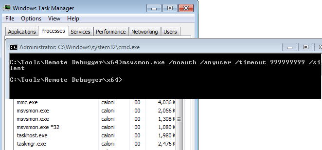 Debug Remoto no Visual Studio 2010 ou Superior 2019-03-06 [tag_coding] Já escrevi sobre [debug remoto no finado C++ Builder], sobre [como usar o msvcmon.exe no VS 2003 e o msvsmon.exe no 2010+]. Sobre [como depurar um serviço quando a máquina está para desligar], e até sobre [depurar através de um servidor de símbolos]. Está na hora de tornar a depuração mais simples para programadores de serviços Win32. debug-remoto-visual-studio-2010-superior |
| Beetlejuice: Os Fantasmas Se Divertem 2019-03-06 [tag_movies] Se vocês assistiram Uma Aventura Lego 2 recentemente, podem confiar na opinião do Batman: Michael Keaton está ótimo em Beetlejuice. Já como o filme, o que dizer? É o Tim Burtiniano de sempre, seja nos anos 80, 90 ou 2000: cheio de gadgets visuais que não impressionam mais, mas cumprem seu papel. Alguém estica a cara e fica com olhos gigantes, arrancando seus globos oculares e grudando-os multiplicados nos dedos das mãos. É uma visão sintetizadora do poder de imaginação do cineasta. beetlejuice-os-fantasmas-se-divertem |
| Uma Aventura Lego 2 2019-03-05 [tag_movies] Nada é tão incrível. Sim, é a dura verdade da vida. E como conseguir viver dessa forma? Bem, a lição de Uma Aventura Lego 2 é mais do que incrível: é complexa e profunda. Bem profunda. Das profundezas do fundo de uma máquina de lavar roupas. Do escuro vazio e sem sentido de uma caixa de brinquedos. Do niilismo inerente quando começamos a brincar de auto-análise com viagem no tempo. Sim, nada é tão incrível, mas não quer dizer que não devamos tentar viver juntos a aventura de viver. uma-aventura-lego-2 |
| Um Amor Inesperado 2019-03-02 [tag_movies] [tag_cinemaqui] Um Amor Inesperado, apesar de ser falado em espanhol, apesar de ser argentino, apesar de ter Ricardo Darín, é, antes de tudo, uma comédia romântica. E que muito se aproxima das hollywoodianas, daquelas que não possuem profundidade o suficiente para fazer pensar sobre relacionamentos como algo mais geral, mais reflexivo. O maior erro em ver esse filme é supor que por conta de ser cinema argentino com Darín deve ser algo muito acima da média. um-amor-inesperado |
| Raiva 2019-02-28 [tag_movies] [tag_cinemaqui] Raiva é adaptação de Seara do Vento, um livro inteiro do escritor Manuel da Fonseca, mas que no filme mais parece um conto. Inspirado em uma ocorrência real (o livro), a história no filme começa com um homem que desistiu da vida que levava. Isso é óbvio quando o vemos carregar sua arma e pular a janela de sua casa. Ele vai fazer justiça? Não sabemos. A única coisa que fica clara é que ele tem um motivo. E naquele momento não importa qual. E como descobriremos mais tarde, quando a dignidade humana é perdida os motivos não importam. raiva |
| Praya Wit Bier 2019-02-28 [tag_beer] É uma cerveja do Rio de Janeiro com corpo muito leve e desnecessariamente valorizada. Ignore. praya-wit-bier |
| Powaqqatsi - A Vida em Transformação 2019-02-28 [tag_movies] Powaqqatsi é o filme do meio da trilogia Qatsi, uma série documental não-narrativa produzido e dirigido por Godfrey Reggio com a trilha sonora encantadoramente repetitiva de Philip Glass. O filme tem sido promovido pelos diretores Francis Ford Coppola e George Lucas, como sua capinha do DVD nos diz. O filme segue o estilo do documentário clássico Um Homem com uma Câmera, mas moderno, só que no bom sentido. powaqqatsi-a-vida-em-transformacao |
| Vida em Movimento 2019-02-26 [tag_movies] [tag_cinemaqui] Vida em Movimento, documentário que propõe mudanças em nossos hábitos para combater o sedentarismo sistêmico das grandes cidades, me fez lembrar de uma notícia bombástica mês passado sobre a Coca-Cola ter influenciado pesadamente as diretivas chinesas no combate à obesidade nos últimos trinta anos. Como um filme sobre sedentarismo me fez lembrar disso? Simples: a estratégia corporativa é basicamente a mesma. vida-em-movimento |
| Simplesmente Alice 2019-02-26 [tag_movies] A primeira impressão deste filme é que muitas donas de casa gostariam de ter um Doutor Yang para se consultar. Woody Allen, para variar, joga várias ideias criativas em um único filme, que vai de chás milagrosos que fazem ter o dom do conhecimento e honestidade ou ficar invisível até ex-namorados como fantasmas conselheiros. A irmã de Alice é Dorothy e ambas vivem em mundos distintos. Não tenho certeza se os nomes dos personagens são uma coincidência ou um jogo de metalinguagem deste brilhante roteirista. simplesmente-alice |
| Até que a Gente te Separe 2019-02-26 [tag_movies] The Breaker Upperers é uma comédia neo-zelandesa, o que significa britânica, o que quer dizer que é um humor difícil de falhar. Sim, humor britânico está sempre acima do americano. Nesse caso a história começa com uma ideia interessante: duas rivais de um mesmo partido se tornam melhores amigas e juntas criam um negócio para terminar o relacionamento de pessoas insatisfeiras, mas covardes. Elas aceleram um processo inevitável. A primeira sequência do filme contém várias piadas, algumas rápidas demais para pegarmos, onde a vemos agindo. É uma dupla que funciona. Daquelas com química. ate-que-a-gente-te-separe |
| El Porvenir Laborum Syrah 2014 2019-02-24 [tag_wine] Safra 2014 de acordo com o Fabio merecia mais anos de guarda pelo alto teor de álcool. Eu discordo, pois não tenho certeza se a guarda em carvalho criou estrutura suficiente; se não se nota a madeira hoje, se notará amanhã? el-porvenir-laborum-syrah-2014-2019 |
| O Terminal 2019-02-22 [tag_movies] Vou lhe dar algumas dicas do nível de manipulação que existe em O Terminal: Tom Hanks é um estrangeiro de um paisinho do Leste Europeu que além de saber falar e entender palavras em inglês apenas quando lhe convém em outros momentos se comporta como um autêntico habitante de uma ilha isolada da civilização, apelando portanto para o coração das pessoas; uma aeromoça coincidentemente está sempre se encontrando com ele no aeroporto internacional de Nova York, aquele com seis terminais de embarque diferentes e o mais movimentado da América, ela mantém um romance com um homem casado e termina seu arco da mesma forma porque não era para ser o interesse romântico de Hanks de qualquer forma, mas apenas um instrumento feminino para impulsionar bilheterias; por outro lado, um indiano passa o resto de sua vida anônimo limpando o chão do terminal foragido de seu país, mas graças à figura carismática de Tom H... Viktor Navorski, ele decide usar a cartada de ser extraviado, chamando assim a atenção dos policiais em um momento em que Viktor estava prestes a fazer algo indesejado, mas que no momento seguinte muda de ideia, tornando assim o sacrifício do indiano completamente inútil. o-terminal |
| O Silêncio dos Outros 2019-02-22 [tag_movies] [tag_cinemaqui] O Silêncio dos Outros é um documentário necessário, mas com final amargo quando constatamos o quão dura e lenta é a luta por justiça. A história é sobre o julgamento dos crimes contra a humanidade durante os quase quarenta anos da ditadura de Franco na Espanha. O problema é a Lei de Anistia, aprovada já na democracia e que ao mesmo tempo que liberta os presos políticos cria em contrapartida a chamada Lei do Esquecimento, onde os crimes de tortura e assassinato da época não podem ser investigados pelas autoridades locais. Então o jeito é apelar para a corte internacional. o-silencio-dos-outros |
| Interstella 5555 2019-02-20 [tag_movies] Eis um Interestelar que presta do começo ao fim. 5555 é uma experiência no mundo dos vídeo-clipes. Ele contém uma história narrada visualmente e embalada por um álbum inteiro, batida a batida. Ele é um arco completo, talvez melhor que a maioria dos filmes, e ainda tem algumas coisas a dizer sobre nossa sociedade e seus troféus. Este filme é praticamente gêmeo de Pink Floyd The Wall, 20 anos depois. interstella-5555 |
| Lembro Mais Dos Corvos 2019-02-19 [tag_movies] [tag_cinemaqui] Lembro Mais dos Corvos é aquele documentário minimalista ao máximo que lembra que Cinema pode ser apenas uma câmera filmando e uma pessoa falando, e se essa ideia não lhe apetece fique longe desse filme. Contudo, esteja avisado também disso: esse é provavelmente um dos filmes mais humanos que você irá ver esse ano. Talvez porque a vida não se controla. Apenas deixamos fluir, e quando menos se percebe, houve a conexão entre seres humanos. Esse filme tenta emular isso no cinema. lembro-mais-dos-corvos |
| A Senhora Da Van 2019-02-19 [tag_movies] Se um escritor com material tão vasto no cinema quanto Alan Bennett não conseguiu construir a partir de suas memórias de morar 15 anos ao lado de uma senhora sozinha e sua van uma história que possua camadas, quer dizer que este não é um filme que deveria existir. Mesmo se você tiver Maggie Smith (da série Harry Potter) no elenco. a-senhora-da-van |
| A Casa Caiu 2019-02-19 [tag_movies] A Casa Caiu é mais uma daquelas comédias em que um personagem fora do universo do protagonista chega e muda tudo, em versão black, mas além disso tem uma crítica social interessante. Além de ser black o suficiente para você sentir um pouco da ginga. a-casa-caiu |
| O Retorno de Sweetback 2019-02-18 [tag_movies] Um filme é produzido em 1971. Ele fala sobre um negro que mata policiais para sobreviver e se dá bem no final (foi isso que eu entendi). Ninguém branco produziria um filme desses nessa época. E hoje "O Retorno de Sweetback", em 2003, fala sobre a Odisseia que foi essa produção. o-retorno-de-sweetback |
| Dogville Teatro 2019-02-18 [tag_movies] Eu não me lembro direito do filme de Lars von Trier, mas eu sei que ele foi impactante quando o vi, provavelmente em 2005. Estupro, escravidão, tiros. Quando você vai assistir a um filme do diretor dinamarquês é necessário que você esteja preparado para o pior. A peça dirigida por Zé Henrique de Paula talvez se prepare demais. dogville-teatro |
| Cinderela Pop 2019-02-18 [tag_movies] [tag_cinemaqui] Engraçado a forma como o tempo passa no Brasil. De Cinderela Baiana, clássico da filmografia nacional, para Cinderela Pop. Muita coisa mudou durante esse tempo e entre essas duas versões brasileiras da história imortalizada pela Disney. Maisa, aquela menina irritante e esperta que interagia com o apresentador de TV Sílvio Santos nasceu, cresceu e se produziu, enquanto o próprio Sílvio sequer envelheceu. E não se houve falar de Carla Perez há um bom tempo. cinderela-pop |
| Primeiro Ano 2019-02-15 [tag_movies] [tag_cinemaqui] Quero que imagine uma cena: há poucos minutos de começar um exame importantíssimo na vida deles, dois amigos massageiam a carótida um do outro, uma artéria que irriga o cérebro, para que seus batimentos cardíacos diminuam e assim possam realizar a prova com mais calma. Esse é o momento de Primeiro Ano onde nada mais importa. Não há diferenças, não há concorrência, não há individualismo. Duas almas em uníssono buscando o bem maior por si só. primeiro-ano |
| Neblina e Sombras 2019-02-15 [tag_movies] A sombra e a neblina são os lugares perfeitos para Woody Allen perambular. É nessa incompreensão charmosa do caos que este filme vai se desenrolando quase que ao acaso. Não há culpados, apenas desavisados. Nós não sabemos do que o universo e um serial killer são capazes. Mas Allen está aqui para ajudar, dando um novo e merecido destino aos que não se importam em viver a vida, por mais nebulosa que ela seja. neblina-e-sombras |
| Eu, Eu Mesmo e Irene 2019-02-15 [tag_movies] Não considero Eu, Eu Mesmo e Irene um bom filme. Não é um bom exemplo dos irmãos Farrelly (Débi & Lóide: Dois Idiotas em Apuros, Quem Vai Ficar com Mary, Passe Livre). Seu roteiro não foi bem trabalhado e depende de um narrador e situações inusitadas demais para juntar seus personagens. Mas algo que me incomoda: se ele nem é tão bom porque consigo me lembrar de praticamente todos seus momentos? eu-eu-mesmo-e-irene |
| Clube da Luta 2019-02-15 [tag_movies] Você já percebeu que em Clube da Luta o personagem de Edward Norton não tem nome? Nos créditos ele é conhecido como "O Narrador". Isso tem tanto a dizer sobre este pequeno clássico da contra-cultura mundial e americana que eu nem preciso me dar ao luxo de revelar qualquer spoiler sobre este filme. Apenas assista e entenda a mensagem que você quiser do velho blá-blá-blá sobre consumismo e dívidas. Ele é tão atual que há uma série inteira (Mr. Robot) sobre o plano do filme e foi filmado uma década antes da grande crise financeira mundial que vivemos. Ele é profético, auto-destrutivo e não há alguém que o assista sem se surpreender pelo menos em um ou dois momentos do filme. E cada um escolhe o seu primeiro e segundo momentos para explodir seu próprio cérebro. clube-da-luta |
| Como a geração de Sai de Baixo se encontra com a geração Não me Toque 2019-02-13 [tag_movies] [tag_cinemaqui] A coletiva de imprensa para "Sai de Baixo: O Filme" pode ser resumida da seguinte maneira: uma trupe de militantes mimimi fazendo perguntas sobre sentimentos e o elenco do filme respondendo à altura sem sair do salto; muito pelo contrário, com muita propriedade: "temos que dizer uma coisa que todo pobre concorda e se identifica: ser pobre é ruim!". Parecia um quadro de humor combinado. E que rendeu (a mim pelo menos) ótimas risadas. sai-de-baixo |
| Tomates Verdes Fritos 2019-02-10 [tag_movies] Eu me lembro de ter visto esse filme com minha mãe após ter alugado um DVD na locadora. O que ficou na minha mente por décadas foi a ternura com que a história se desenvolvida. Este é um drama no sentido clássico do gênero. Ele tenta fazer um apanhado histórico nos dando apenas a voz dos oprimidos e seus salvadores. Ou seja, ele é completamente manipulador. Mas é tão tentador acreditar em uma realidade em que só existem opressores e oprimidos. Até hoje em dia tem gente que defende isso. tomates-verdes-fritos |
| Homem Livre 2019-02-08 [tag_movies] [tag_cinemaqui] Durante praticamente toda a duração de Homem Livre um pensamento inquieto não deixava de passar pela minha cabeça: quem diabos respeita alguém chamado Hélio Lotte? Bom, Hélio foi um músico famoso com esse nome, o que já levanta suspeitas de que há algo errado nesse filme. Depois descobrimos que ele cometeu um assassino e saiu aparentemente intacto da prisão. Ou seja, sem traumas sexuais. Eu nunca esperaria tamanha dignidade de um Hélio Lotte. homem-livre |
| Dogman 2019-02-07 [tag_movies] [tag_cinemaqui] Não me lembro de um filme que conte a história do cúmplice em vez do bandido. Fraco moralmente, agindo nas sombras dos poderosos, o cúmplice é visto como um sub-humano; a escória da sociedade. Mas em Dogman ele é o protagonista. O inesperado e tardio herói de uma comunidade à beira do nada. E é no nada que os bullies atacam. Munidos do excesso de músculos no braço e falta de massa cinzenta no cérebro, os mais fortes usam a lei da física a seu favor. Mas mais do que isso: usam a lei do medo. dogman |
| Gunnm (aka Alita) 2019-02-06 [tag_series] [tag_animes] Curioso que sou, resolvi dar uma olhada no OVA dos anos 90 responsável por Alita: Anjo de Combate, blockbuster tecnológico com efeitos de captura de movimentos e expressão de fritar o cérebro humano. Com menos de uma hora, todos os momentos icônicos do longa metragem dirigido por Robert Rodriguez estão lá, jogados da mesma maneira, sem esperança de uma narrativa coesa que trame a favor de alguma conclusão. Se trata de um vislumbre rápido e aleatório de um futuro distante onde certas coisas existem, e que no fundo nunca mudaram: ricos contra pobres, enganação, ilusão e o medo de fracassar na vida. gunnm |
| Clímax 2019-02-06 [tag_movies] Eu me mantenho em forma o suficiente para subir escadas sem cansar e não ser um total vexame na cama. E posso dizer para família e amigos que cuido de minha saúde, em corpo e espírito. Como costumam dizer, eu me preocupo com meu bem estar. Mas quem são esses jovens de corpos sarados, e por que há tanta mágoa em seus corações? A mente e o corpo são uma unidade. Um templo. Assim como a escola é um templo do conhecimento. E quando se profana esse templo tudo é permitido. Mas nada nos convém. climax |
| Boneca Russa 2019-02-06 [tag_series] Sempre que alguém vem com a ideia de refazer o princípio do icônico filme de Bill Murray, Feitiço do Tempo, já surge aquele sentimento de muleta narrativa para tornar uma história artificialmente interessante. E quando essa ideia vem da Netflix, então, é certeza que lá vem bomba. boneca-russa |
| Alita: Anjo de Combate 2019-02-05 [tag_movies] [tag_cinemaqui] As cabines de imprensa de superproduções são lotadas de jovens, e "Alita: Anjo de Combate" é um desses filmes, apesar de sua cara de segundo escalão seu orçamento foi de cerca de duzentos milhões de dólares. Duzentos. Milhões. De. Dólares. E o dinheiro do roteirista? alita-anjo-de-combate |
| Why Facts Don't Change Our Minds 2019-02-03 [tag_philosophy] Você sabe como funciona um vaso sanitário? Tem certeza? Faça o experimento, então: descreva de maneira verbal todos os passos envolvidos no funcionamento de dar descarga em um vaso. Depois pesquise e verifique como ele realmente funciona. Compare a realidade com o seu achismo e exploda sua cabeça. why-facts-dont-change-our-minds |
| On Writing Well 2019-02-03 [tag_self] [tag_books] On Writing Well de William Zinsser é considerado por muitos do Hackers News como uma ótima referência para se escrever bem não-ficção. Tenho minhas dúvidas. Mas justiça seja feita, o livro parece um Syd Field (Screenplay) para não-ficção, cheio de guidelines que podem auxiliar o escritor ainda amador tentando se profissionalizar e impressionar alguns editores por aí. on-writing-well |
| Diálogos Sobre o Vegetarianismo 2019-02-03 [tag_philosophy] Conheci o filósofo Michael Huemer através de um amigo e por procurar há um tempo atrás refutações convincentes do objetivismo. Encontrei uma saída para vários dos problemas discutidos pela humanidade. Isso se chama intuitivismo. dialogos-sobre-o-vegetarianismo |
| Carmen Cerveja Forte Clara com Laranja e Maracujá 2019-02-03 [tag_food] Já diz tudo pelo seu nome. O consumidor não deve intepretar pois não possui senso crítico. Nada melhor que uma cerveja forte, clara, com laranja, com maracujá e sem exigir cérebro do degustador. Um brinde! PS: A Carmen Cerveja Forte Clara com Laranja e Maracujá você acha essa cerveja nas Empanadas La Guapa em Pinheiros. carmen-cerveja-forte-clara-com-laranja-e-maracuja |
| Um Pequeno Favor 2019-02-02 [tag_movies] Minha colega de profissão no CinemAqui, Mariana González, me recomendou Um Pequeno Favor o chamando de "quase uma versão comédia doida de Garota Exemplar". E agora me sumiram melhores palavras para definir esse filme de Paul Feig. Mas eu vou tentar. um-pequeno-favor |
| Setembro 2019-02-02 [tag_movies] Eu me lembro de Setembro em minhas noites acordado (tentando dormir) no quarto dos meus pais. Era o meu pai que colocava em algum canal na TV que aparentemente comprou o pacote completo de filmes do Woody Allen, os já produzidos e os futuros. Para uma criança que não entende nada de dramas humanos deve ter sido muito chato. Mas Setembro tem um momento tão fugaz e tão vulnerável que parece que o universo inteiro vai colapsar, e quando isso acontece até uma criança sente. E retém a cena. Eu me lembro dela até hoje, quando a revi. setembro |
| Let Me Be Frank 2019-02-02 [tag_movies] Fato curioso: este curta produzido e protagonizado por Kevin Spacey soma três minutos de duração e mais frases brilhantes do que toda a última temporada de House of Cards, com duração aproximada de 400 minutos, protagonizada por Claire Underwood. Esta temporada da série foi a única em que a protagonista era uma mulher. Coincidência? let-me-be-frank |
| Jovens Infelizes Ou Um Homem Que Grita Não É Um Urso Que Dança 2019-02-02 [tag_movies] [tag_cinemaqui] "Um Homem Que Grita Não É Um Urso Que Dança" é um segundo-título bem longo. Ele precisava, na minha cabeça, fazer sentido. Então fui pesquisar e encontrei a citação de Aimé Césaire, estudólogo de negritudes francesas. Foi aí que consegui conectar com o primeiro-título: "Jovens Infelizes". O que Césaire está querendo dizer nessa sua frase é que o sofrimento humano não é um espetáculo, usando como exemplo para comparação um urso dançante, desses de circo. É claro que ele não usaria um macaco dançante, por exemplo, pois isso seria inconveniente. Afinal de contas, Aimé Césaire foi um racistólogo profissional. jovens-infelizes-ou-um-homem-que-grita-nao-e-um-urso-que-danca |
| Amnésia 2019-02-02 [tag_movies] Você se lembra do último excelente filme que você viu? Leonard com certeza não. Ele não consegue nem lembrar de bons momentos de sua vida após a esposa ter sido assassinada e sua cabeça lesada. Bom, talvez se conseguisse lembrar ele não teria nenhuma boa lembrança. Exceto, talvez, o dia em que ele matou o assassino de sua esposa. Mas será que isso aconteceu realmente? amnesia |
| Os Especialistas 2019-01-29 [tag_movies] Jason Stahan, Robert de Niro e Clive Owen na capa deste DVD. Parece um filmão de ação para mim. Bom, nem tanto. De Niro fica quase o tempo todo preso, Owen está com um bigodinho mequetrefe e apenas Stahan salva o dia. E bem mais ou menos. Há duas explosões no filme todo. os-especialistas |
| A Era do Rádio 2019-01-29 [tag_movies] Woody Allen pode ser uma caixinha de surpresas para quem apenas espera comédia em seus filmes. Se Meia Noite em Paris é seu filme saudosista mais bem sucedido, A Era do Rádio é o seu trabalho mais fofo. E dizer isso de Allen já me é uma surpresa e tanto. a-era-do-radio |
| Vamos Dançar? 2019-01-28 [tag_movies] Não é porque é um filme antigo com os dançarinos icônicos Fred Astaire e Ginger Rogers que o filme tem que ser bom. Nesse caso ele é uma bagunça, cheio de plots repetidos, piadas que já perderam a graça já na década de 30 e com muitas poucas cenas de dança. Este é um filme sobre dança e música ou não é? vamos-dancar |
| Um Assaltante Bem Trapalhão 2019-01-28 [tag_movies] Este é o segundo filme de Woody Allen na direção e o primeiro na direção solo. Ele havia feito dupla com Senkichi Taniguchi em "O que Há, Tigresa?". Também roteirizando (com Mickey Rose, como no primeiro filme), aqui está claro que Allen está jogando várias de suas piadas na tela, façam elas sentido ou não no contexto da história. Por exemplo, seu personagem toca violoncelo. E há o momento hilário onde ele toca em uma banda de rua, com ele tentando se sentar em uma cadeira para poder tocar o instrumento, mas a banda nunca para. um-assaltante-bem-trapalhao |
| Mens@gem Para Você 2019-01-28 [tag_movies] 20 anos depois, essa revisita a Mens@gem Para Você demonstra que este filme bonitinho continua bonitinho. E hoje ele é nostálgico. Nos mostra a conexão discada da AOL que os nova-iorquinos mais abastados tinham na época. Mostra Nora Ephron filmando espaços na própria Nova York que ela estava morrendo para filmar. Por fim, mostra dois atores conhecidíssimos de comédia romântica fazendo mais um filme juntos. Adivinha qual dos dois continua fazendo filmes? Acertou: o homem. mensgem-para-voce |
| Irmão Sol, Irmã Lua 2019-01-28 [tag_movies] Este filme é uma descrição sincera e pura da epifania que São Francisco de Assis teve no momento-chave de sua vida. Mas se acompanharmos a história em todos os seus detalhes, você também poderá concluir que quando um maluco aleatório surgia nos tempos antigos alguns acreditavam ser um sábio, e a roda da história não consegue desprovar o que é provado por revelação. Então temos o seguinte dilema que Franco Zeffirelli nos entrega aqui: seria Francisco o cristão mais lúcido que já pisou nesta terra (com os pés descalços) ou o maluco mais bem-intencionado que já se teve notícia? irmao-sol-irma-lua |
| A Guerra dos Botões 2019-01-25 [tag_movies] A Guerra dos Botões é um filme magnífico se você analisar apenas os seus melhores momentos: lúdicos, épicos, vivos! Porém, ao tentar juntá-los, Yann Samuell exagera no caos e transforma essa experiência como deve ser na cabeça de uma criança: há alguns flashes na memória inesquecíveis, mas é impossível se lembrar de todo o contexto. a-guerra-dos-botoes |
| Cold Brew 2019-01-23 [tag_food] Não é deixar o café esfriar; é um método em que se deixa o pó moído grosso (prensa francesa) em contato com água fria na proporção de 1 para 7; deixe na geladeira por 16 a 20 horas e coe; beber até 3 dias servido com pedras de gelo. cold-brew |
| Don Verdean: o Que o Passado nos Reserva 2019-01-21 [tag_movies] Esta é uma comédia que pega pesado com as religiões protestantes dos EUA. A maneira com que ele faz isso é muito maldosa. Ela é... como posso dizer... sincera. Os religiosos nesse filme, podemos dizer com alguma segurança, seguem fielmente seus princípios. O engraçado no caso é que eles são tão ingênuos por fora que parece mentira. Tony Lazarus foi um homem que quase morreu em um acidente de carro com uma prostituta. Tendo sido ressuscitado no hospital se converteu e fundou uma igreja. O personagem-título, Don Verdean (Sam Rockwell), é um arqueólogo a serviço da fé. Encontra "provas" de que tudo que está escrito na Bíblia é verdade. don-verdean-o-que-o-passado-nos-reserva |
| A Última Gargalhada 2019-01-21 [tag_movies] A Última Gargalhada é daqueles exemplos de produção Netflix que não precisa existir no mundo. É sobre uma história sem tensão, sem motivação e sem paixão. Um conselho: viva sua vida no lugar de assistir esse filme; será capaz de sonhar mais do que acompanhar essa série televisiva de um episódio apenas de uma hora e meia. a-ultima-gargalhada |
| O Operário 2019-01-20 [tag_movies] O Operário é daqueles filmes que apesar de ser um thriller caminha bem no drama, e isso funciona na primeira vez que você assiste, sem saber por que o personagem de Christian Bale não consegue dormir, quanto na segunda vez, quando você já pode se interessar em aspectos mais sutis do excelente roteiro. o-operario |
| A Marcha dos Pinguins 2019-01-20 [tag_movies] Um documentário sobre o pinguim imperador, que vive no polo sul e que possui um frágil mecanismo para se reproduzir, que requer o comprometimento do macho e da fêmea da relação. A diferença? O filme é narrado como uma historinha contada por uma dessas famílias de pinguins. a-marcha-dos-pinguins |
| Como Treinar Seu Dragão 3 2019-01-18 [tag_movies] Enquanto as animações quase sempre tentam se concentrar no poder de encantar e divertir seu público mais jovem através de piadas e caminhos fáceis de superação dos seus mini heróis, a saga Como Treinar Seu Dragão se arisca cada vez mais em flertar com a o rito de passagem do seu herói, Soluço, que caminha da puberdade para se tornar não apenas um adulto, mas o líder do povo que seu pai liderou. como-treinar-seu-dragao-3 |
| Vice 2019-01-17 [tag_movies] [tag_cinemaqui] Vice é logo depois de A Grande Aposta mais um filme escrito e dirigido por Adam McKay tentando dialogar com o público leigo a respeito de detalhes sórdidos da máquina estatal americana. Se no filme anterior o alvo era o sistema financeiro responsável pela crise de 2008 agora vamos um pouco mais para o passado dar de cara com o vice-presidente Dick Cheney durante a era Bush Jr. vice |
| Hi Score Girl 2019-01-17 [tag_series] [tag_animes] Hi Score Girl apela para o saudosismo de velhos que vivenciaram todas as gerações dos games e fliperamas mais badalados da história, mas é ao mesmo tempo uma história de relacionamento entre um menino e uma garota. Isso provavelmente deve dar tilt. hi-score-girl |
| Normandia Nua 2019-01-15 [tag_movies] [tag_cinemaqui] Normandia Nua é uma comédia dramática que tenta abordar vários temas sob vários pontos de vista ao mesmo tempo. Ela não nos faz pensar muito nos temas, já que a todo momento nos identificamos com esse ou aquele ponto de vista, mas traça um panorama surpreendentemente rico para uma história sem muitas pretensões. normandia-nua |
| Eu Sou Mais Eu 2019-01-14 [tag_movies] [tag_cinemaqui] "Eu Sou Mais Eu" é aquele velho filme da pessoa revivendo sua adolescência enquanto analisa o seu eu atual, e o que deixou para trás entre esses dois momentos. Geralmente são aqueles valores que se perdem, as amizades significativas, etc. No entanto, a tentativa aqui é reaver mesmo o nosso eu, aquele eu estranho que foi desmoralizado na escola e que acabou se escondendo por trás de uma máscara de auto-suficiência que, como todo adulto sabe, é só um instrumento para se auto-torturar. eu-sou-mais-eu |
| Wifi Ralph: Quebrando a Internet 2019-01-12 [tag_movies] [tag_cinemaqui] Quem assistir "Wifi Ralph: Quebrando a Internet" pelo título já deve saber que não deverá ver com o mesmo clima do primeiro filme ("Detona Ralph"), que apostava no saudosismo dos fãs de fliperamas e vídeo-games antigos em geral para explorar a magia dos 0s e 1s através dos carismáticos personagens Ralph e Vanellope, entre outros. wifi-ralph-quebrando-a-internet |
| Homem-Aranha no Aranhaverso 2019-01-12 [tag_movies] Lá vamos nós de novo. Era uma vez um garoto... ou garota... que foi picadx por uma aranha... ou porco... e se transformou em uma japonesa de anime... ou um rapaz do Brooklin. Não, pera. Ah, você entendeu. homem-aranha-no-aranhaverso |
| Temporada 2019-01-11 [tag_movies] [tag_cinemaqui] O filme "Temporada" é um retrato natural do cotidiano de uma cidade e sua cultura sob o ponto de vista de um ser humano em mudança. Mudança de cidade, de postura, de atitude. Pode chamar de redescoberta ou "cair na real". Pode chamar de fantasia ou crítica social. temporada |
| Vidro 2019-01-08 [tag_movies] [tag_cinemaqui] Dezenove anos atrás. Esse é o tempo que separa Corpo Fechado, início dessa até então trilogia, até sua conclusão, ou expansão desnecessária, inflada e exagerada. Mas nem por isso deixa de ser um trabalho minucioso, curioso e competente de uma saga que se mantém dentro de seus próprios padrões do começo ao fim. vidro |
| Empanadas Argentinas 2019-01-07 [tag_cooking] ## Ingredientes da massa Se for usar recheio de carne moída, para a quantidade pesada de carne pesar o mesmo de farinha de trigo; você pode usar esta base para outros tipos de recheio, se atentando ao volume que o recheio gera, que é o que deverá ser embrulhado pela empanada. Nos meus testes 100g de farinha conseguem embrulhar 3 ou 4 empanadas. Com base no peso da farinha, usar 2% de sal, de 25% a 50% de gordura em temperatura ambiente, tradicionalmente banha, mas pode ser usado manteiga ou outro tipo de óleo, e de 35% a 40% (ou bem pouco a mais, apenas para umedecer) de água morninha, mas que não queima a mão. Antes de ir para o forno reserve um ovo misturado com um pouco de água para pincelar por cima. Algumas receitas vão um ovo na massa também, para a elasticidade. empanadas-argentinas |
| Chimichurri 2019-01-07 [tag_cooking] Ingredientes: 3 dentes de alho bem picados, 1 colher de cayena moído, 1 colher de pimentão doce (como páprica doce), 1 xicrinha de salsinha fresca, 2 xicrinhas de azeite, 1 xicrinha de vinagre de vinho, 1 colher de orégano, um pouquinho de noz-moscada, sal e pimenta a gosto. chimichurri |
| Minecraft: O Jogo 2019-01-06 [tag_games] Fundamentado em bases materialistas, a partir das quais Karl Marx se orgulharia, Minecraft é uma luta por recursos e sobrevivência. E por ser simples e fácil de jogar, as crianças adoram. Isso e porque também tem skins na aparência dos players. minecraft-game |
|
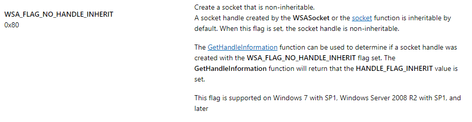 Bug no Boost Asio usando função AcceptEx do Winsock 2019-01-06 [tag_coding] Depois de um mês de correção e mais um ou dois meses preparando um compilado do que ocorreu no software que estamos mantendo, foi descoberta uma situação muito peculiar que ocorre tanto em Windows XP quanto no Windows 10, mas que no 10 tem uma correção bem-educada e no XP... bom, nem tanto. bug-boost-asio-acceptex-winsock |
| Valtier Utiel 2019-01-04 [tag_wine] Requena Reserva 2013 é um espanhol que tem o corpo de um reserva sem o peso da madeira. Mas os aromas estão lá, amadurecidos. Bom, talvez nem tanto. Depois de mais de uma semana na geladeira não é que o gosto deu uma suavizada interessante? Mas ainda é um vinho de personalidade forte, que sempre te chama a atenção pelo azedo ou tanino. Bom com fusili e molho de tomate sem acidez. valtier-utiel |
| Jose Luis Mounier 2019-01-04 [tag_wine] O Reserva 2013 (Malbec/Tannat/Cabernet) foi feito com muito carinho e decicação; estrutura impecável, corpo médio pra forte, álcool que orna com o carvalho (15 meses) seguido de frutas maduras e especiarias. Vai bem com carne forte e até gordurosa (tem Tannat). jose-luis-mounier |
| Colorado ICI 02 French IPA 2019-01-04 [tag_beer] O chope é amargurado na medida com lúpulos aromáticos franceses, o que a torna menos amarga (porque franceses são bixas) mas mais fácil de beber sozinha, o que lhe dá um ótimo atrativo para esse verão dos infernos em terras tupiniquins. colorado-ici-02-french-ipa |
| Chandon Brut Rose 2019-01-04 [tag_wine] Quem não curte frisantes docinhos nem super-secos, o Chandon Brut Rosé é uma boa pedida; rosé levemente gaseificado com aspectos florais que lembra frutas vermelhas frescas (por causa do azedo). Fácil de beber se já provou vinhos secos e gostou; para clima de virada. chandon |
| Cava Família Oliveda 2019-01-04 [tag_wine] Brut (Méthode Tradicionnelle) é brut, mas não parece tão seco assim. Bom pro calor de uma reunião de acionistas na varanda. cava-familia-oliveda |
| A Pé Ele Não Vai Longe 2019-01-03 [tag_movies] Com a estreia desse filme talvez o politicamente correto anuncie os seus finalmente em 2019. Ou talvez não. A polêmica por trás do cartunista John Callahan existiu simplesmente porque ele escrevia em uma cidadezinha que levava a sério demais tudo que dizia respeito aos incapacitados, religiosos, etc. Bom, não se pode culpá-los, pois essa tendência em exagerar os dramas da vida moderna se espalhou para praticamente todo o Ocidente. a-pe-ele-nao-vai-longe |
| Vixnu 2019-01-02 [tag_beer] É uma Imperial IPA, o que quer dizer um soco no estômago., mas por ser uma Colorado também quer dizer que esse soco está equilibradíssimo entre as doses de malte e lúpulo, com aromas detectáveis só de cheirar. Aprecie com comidas fortes. vixnu |
| Amor Ocasional 2019-01-02 [tag_series] Essa série estilo comédia romântica da Netflix está ligeiramente acima da média, graças à performance adorável de Zita Hanrot como a vulnerável Elsa e também ao tratamento um pouco mais sério à história criada pela dupla Chris Lang e Noémie Saglio. Ela é francesa e é uma série, o que quer dizer que não termina. Mas seus personagens são suportáveis por talvez mais alguns episódios, embora no fundo tudo pudesse ser resolvido em um longa metragem. amor-ocasional |
| Top Filmes 2018 2018-12-31 [tag_movies] [tag_lists] [tag_cinemaqui] Como usar esta lista: Antes de enumerar os 9 (nove) filmes que, acredito, mereçam constar em uma lista de consideração pelo Cinema, explico que listas nunca são exaustivas, nunca são permanentes e nunca são objetivas, mas subjetivas, dependendo do tempo-espaço e da pessoa que a compila. Essa que segue tenta fugir um pouco do lugar-comum, mas que irá falhar miseravelmente porque cinéfilos e críticos costumam enxergar a beleza no mesmo lugar. Porém, eu não assisti a todas as belezas cinematográficas que estrearam no Brasil esse ano, o que me dá um pouco de ponto-fora-da-curvisse salutar. top-filmes-2018 |
| Portillo 2018-12-31 [tag_wine] Salentein Portillo Malbec em sua edição 2017 continua o mesmo Malbec com sabor de frutas vermelhas (mais compota que frescas) e um corpo médio que é ótimo custo/benefício se você não pagasse imposto de importacão (infelizmente você paga, trouxa). portillo |
| Dancing Crow 2018-12-31 [tag_wine] Dancing Crow, Vineyards Zinfandel Lake County 2017. Estava aberto há uma semana, perdeu o pouco do álcool que tinha e a pouca vibração dos corvos que trazia. Mas o doce também se foi, deixando um gosto ligeiramente agradável de um Zinfandel californiano. dancing-crow |
| WP Reserve 2018-12-30 [tag_food] Até Cafés Reserva são ruins nos EUA, como este pode comprovar; um gosto aguado (mesmo com menos água) e um filtro de papel para coar interno (prático); trouxe para cá para testar na Aeropress (não funcionou). wp-reserve |
| Westworld S03 E02 2018-12-30 [tag_series] Então eles resolveram plagiar Matrix. Para ser sincero, em vários momentos soa como uma ingênua homenagem. Mas a soma de tantas homenagens acaba se tornando plágio, pois são tantas ideias vindas da mesma fonte, parte integrante e ativa da história que essa temporada pretende contar, que não há como deixar de pensar que vinte anos depois do blockbuster revolucionário de ação dos irmãos Wachowski vira um episódio acelerado que recapitula todos os elementos que amamos nos três filmes. Uma observação relevante: alguns amam apenas o primeiro, pois já havia na época o senso de que muito é demais. Por quê será que as séries de hoje em dia não aprenderam com os erros do passado? westworld-s03-e02 |
| Westworld S02 Season Finale 2018-12-30 [tag_series] Foi uma longa jornada desde o começo da temporada, mas nossos neurônios mereciam um pouco mais de respeito. Eu sei que seres humanos não fazem escolha e tudo mais, mas a filosofia de boteco de Ford pós-morte é de matar. Se fosse possível escolher seria fácil: reescreve esses últimos dois episódios, o 9 e o 10, que tá fácil de consertar. Anda. Eu fico esperando. westworld-s02-season-finale |
| Westworld S02 E07 2018-12-30 [tag_series] Eis o melhor episódio até agora de toda a série. Ele possui a garra da ação contida em uma história cheia de ideias cujas conclusões não são entregues, mas discutidas, o que torna a desorientação espacial e temporal também no campo das ideias, mas mesmo sem termos a exata compreensão do que está acontecendo não nos perdemos. Isso é sci fi no seu máximo filosófico. Talvez nem 2001 tenha ido tão longe. westworld-s02-e07 |
| Westworld S02 E01-06 2018-12-30 [tag_series] "O homem não pode fazer-se sem sofrer, pois é ao mesmo tempo o mármore e escultor." Essa frase de Alexis Carrel não poderia ter um valor mais direto do que o visto em Westworld, com a devida correção, já que a grande questão sobre a qual gira o drama é a diferença entre androides e humanos. No entanto, androides também podem mudar, mas a um alto custo. A versão 2.0 do homem torna até Nietzsche, como sempre, relevante. westworld-s02-e01-06 |
| Westworld S02 E01-04 2018-12-30 [tag_series] Westworld e suas revelações nos primeiros quatro episódios são tão profundas que suas várias linhas narrativas ficam em um vácuo por mais de um episódio. E isso é por uma causa justíssima, pois não há como se concentrar com vários acontecimentos em paralelo (e em várias linhas do tempo), e também porque eles (por enquanto) não se influenciam, mas se completam, para explicar um assunto que já vai ficando claro no segundo episódio e óbvio no terceiro: a busca por imortalidade. westworld-s02-e01-04 |
| Westworld S02 E01-02 2018-12-30 [tag_series] Estava com saudade de voltar a escrever sobre Westworld. Agora comecei a ver a segunda temporada, os dois primeiros episódios, já que a temporada acabou. É curioso como o jogo de expectativas não funciona muito bem com uma série que praticamente arrasou logo em sua primeira temporada, que merece ser vista e revista algumas vezes. No entanto, é preciso ser mente aberta para aos poucos compreender o que os criadores da série pretendem. westworld-s02-e01-02 |
| Westworld (Revisita ao S01 com algumas questões e spoilers) 2018-12-30 [tag_series] A revisita a Westworld vale muito a pena. Detalhes que só serão revelados no final são percebidos desde o começo, e a experiência se torna única novamente. Em meu primeiro texto não me lembro se liberei spoilers (vendo agora... não), mas este aqui é certeza que terão. Como toda revisita a esta série deve ter. westworld-revisited |
| Westworld 2018-12-30 [tag_series] Eu fui programado para escrever esse texto? Posso responder, na melhor das hipóteses, que eu estar escrevendo este texto é consequência da soma das minhas ações. No entanto, volta outra pergunta no lugar: eu fui programado para executar tais ações? westworld |
| Vinhos de Napa Valley 2018-12-30 [tag_wine] Algumas observações sobre os vinhos em Napa Valley. Uva da Argentina produzida no Chile em formato americano é prova da globalização do local (um ótimo custo/benefício, btw). 36 meses em Napa Valley é um valor comum de reserva na barrica (e o gosto não melhora muito). Inglenook ou a vinícola do Copolla é estilosa, quase brega, mas ainda pra quem curte cinema é o Ó. Os vinhos italiano da uva Primitivo são renomeados nos EUA como Zinfandel (não sei bem pq). Napa importando vinhos australianos que usam uvas de outros lugares do mundo é mais uma prova da globalização. PS: A foto do vinho moneda é uma homenagem ao meu amigo @drmadera. vinhos-napa-valley |
| Rosso California Red Wine 2018-12-30 [tag_wine] É o típico "vinho tinto default" da Califórnia. E não é nada demais. Não importa se você colocou por 36 meses na barrica. rosso-california |
| Minerva Viena de Guadalajara 2018-12-30 [tag_beer] É uma cerveja artesanal mexicana que vende dentro do aeroporto da Cidade do México. E não é aguada, é bem saborosa enquanto leve. minerva-viena-de-guadalajara |
| Ménage à Trois 2018-12-30 [tag_wine] Quem nunca experimentou um Ménage à Trois não sabe o que está perdendo. Se trata de um blend de três uvas. Essa vinícola de Napa tem pelo menos duas receitas. menage-a-trois |
| Joel Gott 2018-12-30 [tag_wine] Safra de 2016, é um Zinfandel que consegue até ser equilibrado. Você vai precisar de uma carne muito boa na churrasqueira (como a da festa de fim de ano da BitForge) para conseguir acompanhar. josel-gott-zinfandel |
| Califórnia, 2018 2018-12-30 [tag_trips] Vale a pena fazer uma viagem aos EUA nessa época de 4 temers pra um trump? Er... financeiramente não. Mas como o timing é tudo e é preciso conhecer pelo menos uma vez na vida, e experiências são melhores que coisas, eu diria que vale, sim. Vivenciar outra cultura, valores, como as coisas funcionam de forma diferente, etc, acaba se pagando com o tempo. E no caso dessa viagem feita a carro com um casal de amigos, algo que não costumamos fazer, foi uma outra novidade que valeu a pena ter vivido. cali-2018 |
| Biscardo Valpolicella Ripasso 2018-12-30 [tag_wine] Foi presente de um amigo/colega e eu gostei muito. Se trata de um vinho italiano com um corpo decente e um equilíbrio agradabilíssimo no paladar. Fácil de beber (ainda mais com carne). biscardo-valpolicella-ripasso |
| Anciano Tempranillo 2018-12-30 [tag_wine] Apesar das expectativas, o Anciano Tempranillo Gran Reserva 2007 Valdepeñas que nosso amigo trouxe ao churrasco decepcionou. Depois de 11 anos em reserva ele simplesmente parece um vinho de apenas 3. Mas é bom, embora não compense guardar. anciano-tempranillo |
| 12 Regras Para a Vida, por Jordan Peterson 2018-12-30 [tag_self] [tag_books] 12 Regras para a Vida, como o nome indica, é um livro de auto-ajuda, mas diferente do que você poderia esperar. Livros de auto-ajuda que usam o exemplo de vida do autor servem como guia apenas para... er... o autor. Já o livro do psicólogo/filósofo Jordan Peterson utiliza a sabedoria das narrativas antigas, dos usos e costumes das sociedades, aliado ao que a ciência já descobriu sobre nossa espécie para chegar a um denominador comum de quais são as regras mais valiosas para se viver uma vida significativa. Ah, sim, Peterson está menos preocupado com viver feliz do que viver com significado. "Precisamos de regras; quaisquer regras". Esse livro é a tentativa de elencar as melhores. 12-rules-for-life-jordan-b-peterson |
| Wanderlust 2018-12-26 [tag_series] Wanderlust é o primeiro trabalho recente que conheço que tenta abordar relacionamentos abertos de uma maneira mais madura, mais dramática. Ou pelo menos a primeira metade dessa série começa a delinear o assunto dessa maneira. Focado na terapeuta de casais Joy (Toni Collette), a série com apenas seis episódios tenta também explorar os relacionamentos de outros personagens (para não dizer todos). É uma tentativa de ampliar um dos subtemas vistos em Beleza Americana que se sabota da metade para o final. wanderlust |
| Colette 2018-12-26 [tag_movies] Colette é uma tentativa de fazer justiça a respeito das obras entituladas Claudine, escritas pela escritora ganhadora do prêmio Nobel (e famosa pelo romance "Gigi"), mas com os créditos dados ao seu marido Willy, na época um famoso crítico e escritor. Se trata de uma biografia burocrática, que descreve acontecimentos sem paixão, apenas se detendo no que mais chama a atenção do público: as relações extra-conjugais do casal. colette |
| Amigos Para Sempre 2018-12-19 [tag_movies] [tag_cinemaqui] Bom, Amigos Para Sempre é um filme impossível de não ser comparado com o seu original, Intocáveis. Aliás, a primeira pergunta que surge é: por que refazer um trabalho magnífico (e recente) e entregar algo que estará sempre à sombra de seu antecessor? A segunda pergunta é: por que Kevin Hart e Bryan Cranston no elenco? amigos-para-sempre |
| Lazzaro Felice 2018-12-18 [tag_movies] Este é daqueles filmes que as pessoas assistem e saem um pouco confusas, sem saber direito se entenderam e se gostaram. Mas a boa notícia é que não é necessário desvendar completamente esta pérola para se aproveitar dos momentos dramáticos, cômicos e absurdos deste primeiro longa de ficção da diretora/roteirista Alice Rohrwacher, que ganhou Cannes como melhor roteiro. Sua história é simples o suficiente e seu protagonista cativante o suficiente para que essa fábula se construa como uma ponte entre o divino e o profano. lazzaro-felice |
| Derren Brown: Apocalypse 2018-12-16 [tag_series] O que você faria se acordasse em um apocalipse zumbi? Esta minissérie, que começa com uma história em dois capítulos de 45 minutos, explora essa abordagem usando uma cobaia em torno de uma produção que mistura o melhor da edição televisiva de séries como The Walking Dead e um roteiro que se assemelha a um jogo, mas que por contar com uma pessoa que vive isso de verdade, está anos à frente de qualquer tentativa de dramatizar os quadrinhos da série famosa de Frank Darabont. derren-brown-apocalypse |
| Christiane Amanpour: Sex and Love Around the World 2018-12-16 [tag_series] Esta é uma série movida por um sentimento. O sentimento de superioridade do Ocidente, de suas liberdades e sua forma de enxergar o mundo. Todo o resto está errado, está oprimindo e está sendo comandado pelo patriarcado. Exceto os muçulmanos, claro. Eles são bonzinhos. christiane-amanpour-sex-and-love-around-the-world |
| Como o Sistema de Estrelas como Nota Funciona 2018-12-15 [tag_movies] Não é a primeira vez que me questionam que apesar de ter escrito no meu blogue muito mal sobre um filme eu tenha dado três estrelas como nota, como se três estrelas fosse admissível apenas para trabalhos minimamente positivos. Bom, é uma questão complicada. Imagine você compactar todo o texto analisando uma obra em apenas um número entre 1 e 5. como-o-sistema-de-estrelas-como-nota-funciona |
| O Retorno De Mary Poppins 2018-12-13 [tag_movies] [tag_cinemaqui] A Disney vem realizando alguns esforços duvidosos em resgatar para live action (com atores de carne e osso) praticante todos seus clássicos de animação, um a um. Porém, em O Retorno de Mary Poppins o filme original já é "de verdade", e seu maior desafio é nos entregar mais uma vez essa união impossível entre o lúdico e o sóbrio. Bom, se tem algo que Walt Disney sempre nos ensinou é que para ele, e para a Senhorita Poppins, até o impossível é possível. o-retorno-de-mary-poppins |
| The Ballad of Buster Scruggs 2018-12-11 [tag_movies] Jack London e Stewart Edward White foram famosos escritores de sua época, lá pelo final do século 19 até o início do 20. Eles assinam duas estórias dessa antologia em que apenas os irmãos Coen conseguem completar. E não apenas no roteiro, mas na direção, imortalizando essa antologia como se todos esses seis contos em conjunto estivessem sendo contados pela primeira vez. Mas não exatamente. the-ballad-of-buster-scruggs |
| Mary Poppins 2018-12-11 [tag_movies] Mary Poppins é um musical adorável que foi crescendo como um segundo clássico após Noviça Rebelde, ambos trabalhos fenomenais de Julie Andrews como a queridinha que canta e dança. Aqui sua persona é mais rígida, e tem tudo a ver com a história. mary-poppins |
| A Maneira Errada de Começar um Projeto é com Visual Studio 2018-12-11 [tag_coding] Estava eu trabalhando com um sample e resolvi colocar controle de fonte para analisar as mudanças. E a mudança mais inesperada que eu vi quando digitei git diff foi que ele achou que meus arquivos de código-fonte estivessem em binário. a-maneira-errada-de-comecar-um-projeto-e-com-visual-studio |
| O Método Kominsky 2018-12-08 [tag_series] Essa nova criação de Chuck Lorre (Big Bang: a Teoria, Dois Homens e Meio) consegue elencar os excelentes Michael Douglas e Alan Arkin em plena forma, mas não parece dar lhes personagens dignos de suas performances. A série não parece muito certa de si se pretende seguir uma linha mais humorística ou dramática. Com certeza não consegue fazer os dois. Isso é para poucos, e do jeito que está o piloto já parece uma bagunça. o-metodo-kominsky |
| Minecraft Story Mode 2018-12-08 [tag_games] [tag_series] O problema de uma história interativa nunca é a interação em si, mas a falta de capacidade do roteirista em criar uma árvore de possibilidades onde permaneça uma narrativa suficientemente interessante para o espectador. O espectador sente quando está sendo enganado, quando o que ele vê em sua tela é um mero replicante (Blade Runner). minecraft-story-mode |
| Dá Licença, Saúde 2018-12-08 [tag_series] Essa série possui um certo charme quando você percebe que todos os seus personagens são burros, incompetentes e mal intencionados. Às vezes são os três juntos. O que torna ele divertido em alguns momentos é o cada um por si, onde uma pessoa tão incapaz tenta se safar por sua esperteza. da-licenca-saude |
| Matilda 2018-12-07 [tag_movies] Matilda passa na regra dos 15 anos. Se trata de um filme infantil, com premissas infantis, enxergadas do ponto de vista de uma criança. Mas, perdoem os maniqueísmos, é uma louvável lição sobre como quando as coisas certas acontecem nos ambiente errados. matilda |
| It: A Coisa 2018-12-07 [tag_movies] O que é o medo? Eis uma pergunta extremamente importante para os que desejam adaptar a obra icônica de Stephen King, "It", onde o medo é descrito de maneira literária. E abstrata. Ela não é um palhaço aterrorizante, nem criaturas que saem dos quadros, nem qualquer clichê cinematográfico de filmes de horror. it-a-coisa |
| Harry Potter e a Pedra Filosofal 2018-12-07 [tag_movies] Assistir novamente a "Harry Potter e A Pedra Filosofal" depois dos atores crescidos e a computação dominar o cenário de efeitos visuais cria uma nostalgia quentinha no coração. Por ser um filme de origem, muitos detalhes da história tiveram que ser contados de forma burocrática, mas a imaginação de J. K. Rowling transforma o exagero do mundo mágico dos bruxos, coexistindo debaixo das barbas dos não bruxos (trouxas, esse é o nome), em uma diversão à parte. Quando uma chuva de cartas inunda a residência dos tios do pequeno órfão Harry Potter nós sabemos que as regras da magia podem dominar nossa percepção daquela realidade. harry-potter-e-a-pedra-filosofal |
| Animais Fantásticos: Os Crimes De Grindelwald 2018-12-07 [tag_movies] Antes que me esqueça: não há animais fantásticos nesse filme que justifique seu título. Ou se há, então toda a magia da ambiguidade do primeiro e encantador filme se desfez na primeira cena. Sabe, aquela ambiguidade entre os humanos serem animais também... ah, esqueça. Este não é um filme de sutilezas. Ele vai direto ao ponto: ele quer nos dividir e lançar suas asinhas políticas em um movimento supostamente anti-nazista. Quer coisa mais anti-harry-potterana que querer meter política nua e crua em um universo cheio de maneiras melhores de dizer a mesma coisa? animais-fantasticos-os-crimes-de-grindelwald |
| Blue Moon IPA 2018-11-23 [tag_beer] Possui corpo médio e é cítrico em vez de lupulado aromático, fácil de beber. blue-moon-ipa |
| Minerva artesanal do México 2018-11-21 [tag_beer] É uma draft de corpo médio pra fraco com final de café por causa do malte tostado. Fica bom com nachos do lugar onde comemos no aeroporto. minerva-artesanal-do-mexico |
| Planeta dos Macacos: A Guerra 2018-11-19 [tag_movies] É impressionante a qualidade constante dessa nova trilogia. Planeta dos Macacos: A Guerra mantêm as mesmas virtudes técnicas e narrativas de seu antecessor (Planeta dos Macacos: O Confronto) e segue a mesma história do filme inicial que é o mais fraco de todos, mas se ancora na força de sua ideia e nas referências ao "Planeta dos Macacos" original (aquele com Charton Helston). planeta-dos-macacos-a-guerra |
| Oito Mulheres e Um Segredo 2018-11-18 [tag_movies] Oito Mulheres e Um Segredo entretém como seus antecessores, graças mais ao seu elenco que está em harmonia de interpretações. Aliás, a parte mais inacreditável do filme é entender como tantas mulheres juntas conseguem se dar bem. oito-mulheres-e-um-segredo |
| Um Segredo em Paris 2018-11-17 [tag_movies] A diretora Élise Girard parece se pronunciar apenas quando é necessário. Nesse seu segundo longa de ficção ela nos apresenta Mavie e Georges como um casal impossível pela diferença de idades, que conta duas gerações, e ao mesmo tempo tece a criação de um romance nas entrelinhas escritas pela jovem Mavie e nos momentos capturados pela sua memória. Para Mavie o que importa são as sensações. um-segredo-em-paris |
| Ugly Delicious 2018-11-17 [tag_series] O chef de cozinha David Chang é o astro dessa série criada por ele. Ela segue um caminho documental bem-humorado, com montagens bem conduzidas e a captura de momentos hilários entre Chang e seus amigos conversando sobre... adivinhou: comida. ugly-delicious |
| Super Drags 2018-11-17 [tag_series] Super Drags é um projeto de animação de três idealizadores patrocinados pela Netflix. Um deles é de Fernando Mendonça, que depois de produzir CDs interativos na internet 1.0 já participou de um projeto megalomaníaco chamado BugiGangue no Espaço, mas agora parte para o público adulto em uma ideia simples: uma animação para adultos envolvendo drag queens. super-drags |
| Rock em Cabul 2018-11-17 [tag_movies] É curioso o resultado dessa comédia roteirizada por Mitch Glazer, que já está acostumado em elencar a persona de Bill Murray ("Os Fantasmas Contra Atacam", "A Very Murray Christmas"), e dirigido por Barry Levinson, que já está acostumado a dirigir Murray e outros famosos, além de ter uma cinegrafia conturbada, que vai de "Rain Main" e "O Enigma da Pirâmide" para "Esfera" e "A Revolta dos Brinquedos". Levinson não está acostumado a dirigir filmes ruins como esse, mas é Glazer que o entrega um material confuso, que se perde em suas premissas antes mesmo do segundo ato, e vai atravessando a vergonha alheia até não poder mais. rock-em-cabul |
| Atypical - Segunda Temporada 2018-11-17 [tag_series] A segunda temporada de Atypical já demonstra o que o final da primeira temporada já arriscava em dizer: se trata de uma novelinha típica norte-americana aliada a algumas tentativas de conscientizar as pessoas acerca do autismo. atypical-s02 |
| Ace Ventura 2: Um Maluco Na África 2018-11-17 [tag_movies] Jim Carrey está de volta em sua persona de detetive de animais para fazer todo tipo de piada politicamente incorreta na África. Agora ele precisa resgatar um animal sagrado da tribo dos... bom, quem se importa? É Carrey fazendo caretas e movimentos desengonçados que se desenvolvem bem como comédia, mas péssimo como história. Não se trata de um Carrey que se entrega de alma em um projeto coerente como Deby e Loide, mas somente um humorista fazendo humor de situações criadas especificamente para fazer rir, e não movimentar a história. ace-ventura-2-um-maluco-na-africa |
| House of Cards - Sexta Temporada (Series Finale) 2018-11-16 [tag_series] A sexta e última temporada de House of Cards foi marcada por alterações drásticas em seu elenco, todas encabeçadas pela saída do seu protagonista, Francis Underwood, interpretado pelo insubstituível Kevin Spacey e que teve que ser substituído porque a patrulha dos bons costumes estava de olho em um caso ocorrido há mais de 30 anos onde Spacey avançou sexualmente para cima de um jovem de 14 anos (algo assim; leia os jornais se quiser saber mais). Apesar do ator também ser o produtor executivo da série, isso não impediu sua distribuidora por streaming, a Sjwflix, decidir reorganizar todo o meio de campo da produção da série antes de estrear esta que será sua última temporada, excluindo (apenas) nela todo e qualquer envolvimento do ator. Não se pode corrigir o passado quando ele está ainda dando lucro. house-of-cards-s06 |
| Excelentíssimos 2018-11-15 [tag_movies] [tag_cinemaqui] Não sou uma pessoa chegada a política, mas curto assistir à série House of Cards. Todo esse emaranhado de poder materializado em homens engravatados munidos de retórica e troca de influências em um verdadeiro circo imoral de personagens temporários me fascina pela exatidão com que essa barbárie sofisticada é desmistificada na fala, no grito e na "lei". Excelentíssimos, documentário/colagem do diretor Douglas Duarte, consegue nos fornecer exatamente isso a respeito de um evento marcante do Brasil recente que transformou completamente a visão que o brasileiro médio tinha da já tão surrada democracia que vivemos. excelentissimos |
| Bohemian Rhapsody 2018-11-15 [tag_movies] Há um momento em Bohemian Rhapsody em que teoricamente tudo funciona: o seu final. A atuação de Rami Malek, como Freddie Mercury, o vocalista irreverente e exótico da banda Queen, está em seu ápice; os efeitos visuais do estádio onde eles tocam funciona porque toca na relação de cumplicidade dos fãs com a banda; as pessoas mais importantes em sua vida pessoal se encontram do lado do palco, acompanhando emocionados a performance de uma pessoa única e especial; o cantor/lenda reconhece suas origens e faz as pazes com sua família em um evento transmitido para o mundo inteiro. Se trata de uma cena de peso, único e que merece figurar nos momentos mais marcantes do Cinema em 2018. Mas como filme... bom, eu disse que ela funciona mais teoricamente; talvez para outro filme. bohemian-rhapsody |
| O Segredo De Davi 2018-11-13 [tag_movies] [tag_cinemaqui] O Segredo de Davi é sobre um estudante de Cinema e sobre Cinema. Um dos poucos filmes de gênero que costumam sair em circuito comercial aqui no Brasil em um gênero que curiosamente até mantém seu público cativo através das décadas, mas que nunca se transformou em algo viável em terras tupiniquins. Agora nós temos uma produção brasileira de tirar o fôlego em todos os quesitos técnicos e narrativos, o que é uma ótima notícia. E apesar de flertar com os enlatados norte-americanos ele mantém seu charme local. o-segredo-de-davi |
| Domingo Molina 2018-11-11 [tag_wine] Cabernet Sauvignon 2014 não é o Cabernet que você está acostumado a tomar; criado na terra pobre e seca da região de Salta, essa uva que costuma ser leve ganha um corpo direto do solo e posteriormente nas barricas de carvalho onde descansa e apura seu gosto de frutas maduras e corpo médio pra forte. Mas ainda acompanha lasanha. domingo-molina |
| Quinta de Bons-Ventos 2018-11-10 [tag_wine] Continua sendo aquele vinho português meio tudo um pouco, meio doce (frutas maduras), meio azedinho, meio vibrante e perfeito para um churrasco na casa do Fernandão. quinta-de-bons-ventos |
| Pata Negra 2018-11-10 [tag_wine] Tempranillo 2016 é uma opção tão boa e leve que dois trouxeram para o rolê. Como se o Cabernet decidisse ter um pouco mais de frescor e personalidade. pata-negra |
| Casillero del Diablo 2018-11-10 [tag_wine] Cabernet Sauvignon sempre é a opção para o final do rolê: confiável, meio termo e simples, como deve ser para um bando de bêbados. casillero-del-diablo |
| Shirkers: O Filme Roubado 2018-11-09 [tag_movies] Uma garota queria muito fazer um filme. Ela acaba o tornando realidade, mas ele é roubado pelo próprio diretor. Décadas depois ela nunca mais fez nada relacionado a cinema, e chega a hora dela rever esse frustrante episódio de sua vida da única forma que é possível: fazendo outro filme. shirkers-o-filme-roubado |
| A Casa Que Jack Construiu 2018-11-09 [tag_movies] Lars von Trier precisa urgentemente largar seu estilo. Ele o adotou mais fortemente em Ninfomaníaca (Volumes 1 e 2, onde sua narrativa episódica diminuiu levemente a qualidade de sua estrutura e o impacto do filme (além de ser longo, bem mais longo do que deveria). E aqui em A Casa Que Jack Construiu vê-se que a mesma estrutura é utilizada, mas em uma versão reduzida, o que virou inevitavelmente uma bagunça. O filme parece vilipendiado em prol da nossa percepção de que não há sentimentos por trás das ações de um serial killer. Porém, esta é uma faca de dois gumes, pois leva à conclusão de que ele não tem motivos. E o motivo que von Trier arruma para seu "herói" é simplesmente a busca da arte. a-casa-que-jack-construiu |
| The Square: A Arte da Discórdia 2018-11-08 [tag_movies] Tenho uma confissão a fazer: quando eu entro em um salão onde está exposta arte moderna eu nunca tenho certeza se entendi realmente o que o autor quis dizer com determinada obra. Aliás, eu também não tenho certeza se o próprio autor sabe o significado de sua obra. Aliás, eu nem sei se podemos chamar aquilo de obra. O que é arte, afinal de contas? E, aproveitando, qual o sentido da vida? the-square-a-arte-da-discordia |
| Entrevista Com Deus 2018-11-07 [tag_movies] [tag_cinemaqui] A primeira impressão de Entrevista com Deus é que o filme inteiro foi baseado em apenas uma ideia: Deus é entrevistado por um ser humano. Para que esse momento único funcionasse, porém, seria necessário ou desenvolver uma fantasia mais alegórica como Todo Poderoso, o que correria o risco de ser cômico sem querer, ou desenvolver tão bem os personagens que passaríamos a entender suas motivações por trás daquele momento, delírio ou não. entrevista-com-deus |
| A Garota Na Névoa 2018-11-06 [tag_movies] [tag_cinemaqui] Uma garota desaparece em meio à névoa. Surge um inspetor em cena e começam as investigações, sob aquela trilha sonora dramática que todos conhecem. Aliás, alguns thrillers policiais costumam cheirar a clichê desde o primeiro momento até seu final. A Garota Na Névoa não é exceção. Porém, o diretor/roteirista/romancista Donato Carrisi sabe disso e usa esses clichês de maneira distorcida, chamando nossa atenção para detalhes que não costumam ganhar o foco nessas histórias. E é isso a grande reflexão que o filme nos tem a oferecer. a-garota-na-nevoa |
| Tupiniquim Session IPA 2018-11-05 [tag_beer] Tem amargor, mas é constante e médio, como seu corpo; para um kebab seja demais, mas foi com ele que eu tomei. tupiniquim-session-ipa |
| Tupiniquim Chocolate 2018-11-05 [tag_beer] É uma cerveja escura tipo stout cujo sabor lembra mais café, apesar de não ter café em sua composição (é só a torra do malte). Bom pra tomar sem nada embora a dica é com algum doce à base de chocolate. tupiniquim-chocolate |
| Tupiniquim Anunciação IPA 2018-11-05 [tag_beer] É porradinha no estômago, mas seu lúpulo parece de respeito. Sinceramente, minha memória alcoólica deteriora na velocidade da luz. tupiniquim-anunciacao-ipa |
| Sunal 2018-11-05 [tag_wine] Este Malbec 2014 foi comprado no restaurante Bad Brothers em Cafayate. Ele está sedoso, quentinho, complexo a ponto de despertar poesia, ácido na medida certa e corpo mais difícil de tomar, embora irresistível. Altamente recomendável para fãs de Malbec entenderem o que é o deserto de Salta. sunal |
| Invicta Saison 2018-11-05 [tag_beer] Tem aroma de coentro e não é soco no estômago como todas as Invictas que já provei (inclusive na própria cervejaria). É leve, clara, aromática e gasosa. invicta-saison |
| Hermanos Torrontés 2018-11-05 [tag_wine] Dulce Natural 2017, da bodega Domingos Molina em Cafayate (Argentina) é o vinho docinho com complexidade, estrutura, frescor e acidez; é possível degustá-lo sozinho. hermanos-torrontes |
| Gualiama Salvador Figueroa 2018-11-05 [tag_wine] Este Malbec 2016 da Salvador Figueroa, menor vinícola da Argentina, foi comprada em 2017 e mantida por um ano e meio envelhecendo na minha adega. Ela possui estrutura pra mais. Envelhecida em tonéis de carvalho ela está ainda doce, como frutas vermelhas mais maduras (ou compota) e um teor alcoólico que abraça a boca, é sedoso embora levemente rudimentar com corpo difícil. Levemente enjoativo, pode aguardar mais tempo, quiçá uns dois anos. gualiama-salvador-figueroa |
| Faxe Royal Export 2018-11-05 [tag_beer] É uma dinamarquesa com malte leve, mas menos leve que uma pilsen: tem presença enquanto você bebe. Foi a porta de entrada da nova casa do Incrível. faxe-royal-export |
| Castelvere Castelloc Abiano 2018-11-05 [tag_wine] Safra de 2016 é um rosé italiano que servem no Maremonti, um restaurante de massas que tem no Park Shopping São Caetano; sua primeira impressão é que mesmo custando o olho da cara dá dor de cabeça. A segunda impressão não me lembro. castelvere-castelloc-abiano |
| Burgman Midnight Riders 2018-11-05 [tag_beer] É surpreendentemente uma Weiss, mas não tão doce como costumam ser as Weisses, nem tão gasosa. A palavra chave é: surpreendente. burgman-midnight-riders |
| Burgman Fun Weiss 2018-11-05 [tag_beer] É menos weiss ainda que a Midnight Riders. Eu não me lembro mais que isso. burgman-fun-weiss |
| A Prece 2018-11-05 [tag_movies] [tag_cinemaqui] Você é religioso? Costuma rezar para Deus? E qual a resposta? Tem certeza? Pois é. A Prece, novo filme do diretor/ator Cédric Kahn, tenta abordar o tema religioso através de uma história de redenção. Disciplinado como é (vide Vida Selvagem), Kahn explora todas as nuances que envolvem a fé e a auto-superação, mas não por um adulto com suas convicções já formadas, mas através de um jovem garoto que precisa aprender a conviver com um grupo que está fora da moda e com sua própria dose de descrédito. a-prece |
| O Quebra-Nozes e os Quatro Reinos 2018-11-02 [tag_movies] [tag_cinemaqui] "O Quebra-Nozes e os Quebra Reinos" tem cara de filme que inicia franquia. Inspirado no famoso balé de Tchaikovsky que por sua vez se baseou em um conto do escritor E. T. A. Hoffmann, a essência da história foi totalmente modificada, estendida e esticada para basicamente propósitos de direção de arte e trilha sonora. Uma história que era sobre um soldadinho quebrador de nozes de repente vira uma espécie de versão em miniatura de Crônicas de Nárnia com direito a guerra, traição, perda e todo um conjunto dramático. o-quebra-nozes-e-os-quatro-reinos |
| Sobre Pais E Filhos 2018-11-01 [tag_movies] [tag_cinemaqui] Sobre Pais e Filhos é o tipo de filme que o diretor já ganha nota máxima apenas por ter filmado tudo aquilo e voltar com vida, mas ele é ao mesmo tempo um trabalho narrativo impactante na medida certa e para os corações mais fortes, conseguindo realizar uma imersão completa do espectador para aquela realidade, poir mais revoltante, angustiante, insuportável e horrível que ela seja. sobre-pais-e-filhos |
| Domingo 2018-11-01 [tag_movies] [tag_mostra] [tag_cinemaqui] É muito fácil tirar sarro da caricatura da burguesia, com sua gente alienada e auto-centrada no próprio umbigo e propriedades. Difícil é, além de tirar sarro, manter o realismo para que os personagens próprios não virem eles próprios caricaturas. "Domingo", trabalho conjunto de dois diretores, Fellipe Barbosa e Clara Linhart, seguindo o ambicioso roteiro de Lucas Paraizo, consegue realizar isso e ainda mantém várias bolas no ar, dando conta de diversos personagens enquanto tece sutilmente sua crítica social. domingo |
| Marx Reloaded 2018-10-31 [tag_movies] [tag_mostra] [tag_cinemaqui] Marx Reloaded já é um filme antigo (de 2011), sobre os 200 anos de nascimento de Karl Marx, o economista/sociólogo/filósofo criador da ideologia que mais matou seres humanos em massa na história da humanidade. É curioso como o nível de intelectualização do pensador está diretamente proporcional à sua concordância com marxismo/comunismo como algo viável e inversamente proporcional à realidade no planeta Terra e da própria natureza humana. marx-reloaded |
| Making a Murderer S02 2018-10-31 [tag_series] "Terminando quando o "filme" atinge o tempo presente, Making a Murderer é um projeto em andamento com pontas soltas e, pior, algo de podre no ar." Esse foi meu último parágrafo sobre a primeira temporada de uma série que influencia a vida real. Sim, pois a segunda temporada é praticamente impulsionada pela influência do documentário na vida de Steven Avery e familiares. making-a-murderer-s02 |
| Infiltrados Na Klan 2018-10-30 [tag_movies] Spike Lee retorna aqui com a temática do racismo de "Faça a Coisa Certa" de várias décadas atrás. E coincidentemente seu astro apareceu em outro filme político do diretor, Malcolm X (embora completamente desconhecido, "como Estudante na Sala de Harlem"). Aqui junto com Adam Drive eles realizam os mesmos passos descritos no livro autobiográfico de Ron Stallworth, primeiro policial e detetive negro do departamento de polícia de Colorado Springs e que se infiltrou em um movimento da Ku Klux Klan no final dos anos 70. Essa história possui requintes surreais e parece extraordinária demais para ser séria. infiltrados-na-klan |
| Volcano 2018-10-28 [tag_movies] [tag_cinemaqui] A Ucrânia pós-comunismo ainda tem uma lição ou duas a ensinar sobre como sociedades funcionam no Leste Europeu. Em Volcano ela coloca Lukas, um urbanoide civilizado, em contato com um ambiente hostil. Mas será mesmo hostil, ou estamos acostumados a pensar dentro da nossa caixa social que se organiza em presidente, ministros e o povo? Só o fato da estranheza do filme nos fazer pensar um pouco a respeito disso já é digno de nota. volcano |
| Quará Torrontes Dulce 2018-10-28 [tag_wine] Safra 2017 é docinho, simples, corpo médio e fácil de beber; pouco enjoativo. quara-torrontes-dulce |
| Por Que Somos Criativos? 2018-10-28 [tag_movies] [tag_cinemaqui] "Por Que Somos Criativos?" é assim: imagine o diretor Hermann Vaske coletando testemunhos e assinaturas por várias décadas para responder uma pergunta que ele próprio não deve ter entendido até agora. Pois bem. Agora ele tem "rolos e rolos" de filme com essa história. O que ele faz? Junta tudo em um documentário que responde uma questão que ninguém nunca fez porque não faz o menor sentido (exceto artistas, talvez). O resultado é um emaranhado de nada cercado de celebridades que irão alavancar o filme às custas de suas imagens e seus possíveis insights. por-que-somos-criativos |
| Colorado Okto Session 2018-10-28 [tag_beer] Tem pouco álcool, lembra Tubaína e vem com caju. O amargor é sereno com corpo fraco pra médio; boa pedida com castanhas de caju. colorado-okto-session |
| Viagem Aos Povos Fumigados 2018-10-27 [tag_movies] [tag_cinemaqui] Viagem Aos Povos Fumigados é um documentário estilo denúncia, mas que infla conclusões precipitadas e carece de investigação mais abrangente. Ele é feito pelo documentarista itinerante Fernando Solanas, que descobriu uma pista para esta impactante história ao final das filmagens de seu último trabalho. viagem-aos-povos-fumigados |
| A Quietude 2018-10-27 [tag_movies] [tag_cinemaqui] O novo filme de Pablo Trapero, A Quietude, é drama cheio de controvérsias em seu núcleo familiar. Pra começar, há uma cena entre duas irmãs na cama que começa inocente e que passa para um momento, digamos, mais intenso. Sim, é um filme forte. Mas a sua força narrativa reside justamente na sutileza de seus detalhes. É um jogo de contrapontos que alia família, política e história em um pacote só. a-quietude |
| Um Trem em Jerusalém 2018-10-26 [tag_movies] [tag_cinemaqui] Esses filmes do diretor sionista que exibe pedaços da vida de várias pessoas cruzando a Terra Santa são mensagens confusas e ambíguas, de um naturalismo capenga porque canalha. Esse mais recente, "Um Trem em Jerusalém", próximo de seu final nos dá vontade de falar ao seu diretor: vá para casa, Amos Gitai; você está bêbado. um-trem-em-jerusalem |
| Túmulos Sem Nome 2018-10-26 [tag_movies] [tag_cinemaqui] Não é nenhum segredo as atrocidades cometidas durante o regime comunista da Cambódia, quando pessoas morriam de fome, doença ou eram sumariamente executadas. O que é inesperado no documentário de Rithy Panh são as consequências nas crenças do povo que sobreviveu. tumulos-sem-nome |
| Trinta Almas 2018-10-26 [tag_movies] [tag_cinemaqui] Trinta Almas realiza o experimento de unir documental e ficção em filme com tons de terror e mistério, mas desde seu começo já demonstra esta não ser uma ideia tão boa quanto a realizada em A Bruxa de Blair, marco nos filmes estilo mockumentary. Se bem que rotular este filme dessa forma não seja o ideal. Este é também um experimento, um conceito, que poderia dar algumas sensações novas aos filmes do gênero. Mas não consegue. É confuso, parado e frustrante. trinta-almas |
| O Homem Que Matou Dom Quixote 2018-10-26 [tag_movies] [tag_cinemaqui] O Homem que Matou Dom Quixote é péssima escolha de papel para Adam Drive, que não funciona na comédia física. Porém, pior ainda é a história sem pé nem cabeça do filme, que tenta achar sua desculpa através do espírito da obra-prima de Miguel de Cervantes. O resultado sai pior que o imaginado porque não esperamos que os ideais mais nobres do livro sejam usados como muleta narrativa. Ninguém iria tão baixo. Mas é exatamente o que esse filme faz. o-homem-que-matou-dom-quixote |
| Kusama - Infinito 2018-10-26 [tag_movies] [tag_cinemaqui] Kusama - Infinito é um documentário de praxe, desses que tem aos montes na TV e na Netflix (aliás, este possui agradecimentos do serviço de streaming nos créditos finais, o que indica que em breve deve estar disponível para os assinantes). kusama-infinito |
| Fuga 2018-10-26 [tag_movies] [tag_cinemaqui] Fuga possui uma ideia fascinante a respeito de identidade, mas está disposto a desperdiçar com uma narrativa lenta e repetitiva em torno de um mistério bobo como em tantos outros filmes. Resta o exercício narrativo, mas isso é tão pouco que passa desapercebido. fuga |
| Com Todo Meu Hipotálamo 2018-10-26 [tag_movies] [tag_mostra] [tag_cinemaqui] Se há uma coisa que Com Todo Meu Hipotálamo nos ensina é que o ser humano não pode viver sem a beleza. E não se trata dessa beleza abstrata, pós-moderna, localizada em privadas sanitárias espalhadas em museus que sistematicamente ofendem nosso senso estético. De jeito nenhum. A beleza que o filme trata é a mais simples, pura, instintiva: a mulher desejada. com-todo-meu-hipotalamo |
| Better Call Saul S04 2018-10-26 [tag_series] Better Call Saul em sua quarta temporada segue o mesmo formato de todas as anteriores: é uma novela porque se estende demais -- as regras um pouco degastantes de uma série -- mas entrega o que promete mais uma vez: um protagonista um pouco mais próximo de se tonar o Saul Goodman que todos nós conhecemos de Breaking Bad. better-call-saul-s04 |
| 1984: A Peça 2018-10-26 1984 está nas mentes e na alma de nossa sociedade. Ela foi concebida como um alerta por George Orwell contra o autoritarismo e totalitarismo crescente na Europa da segunda guerra, mas por seu formato universal, tal qual A Revolução dos Bichos, se transforma em um guia útil para qualquer época em que isso for um risco para a sociedade. E, sejamos honestos, sempre existirá esse risco. 1984-teatro |
| Rir ou Morrer 2018-10-23 [tag_movies] [tag_cinemaqui] Rir ou Morrer é um filme bobinho que encontra sua graça nos fiapos de personagens que vemos, baseados bem por cima em fatos reais que ocorreram durante a primeira guerra. Ironicamente é sua leveza que nos deixa imunes ao que pode acontecer com seus heróis. rir-ou-morrer |
| O Segredo de Nápoles 2018-10-23 [tag_movies] [tag_cinemaqui] O Segredo de Nápoles possui uma atmosfera de mistério junto de um drama pessoal que desafia nossa percepção da realidade, e seria ingênuo de nossa parte considerar verdade apenas o que pode ser provado. Afinal o que sabemos da vida está fadado a falhas e incertezas de nossa percepção. o-segredo-de-napoles |
| O Mau Exemplo de Cameron Post 2018-10-23 [tag_movies] O Mau Exemplo de Cameron Post é um dos melhores exemplos sobre hipocrisia e lavagem cerebral religiosa quando o tema é homossexualidade. Ele é tão bom assim porque ele espalha as incoerências e intolerância durante um suposto tratamento para uma cura gay. E quer melhor momento para rever esse tema? o-mau-exemplo-de-cameron-post |
| O Anjo 2018-10-22 [tag_movies] [tag_cinemaqui] Muitas pessoas ao assistir a O Anjo talvez percam a essência do filme, talvez por causa do caminho empolgado deste arcanjo assassino. Mas se você reparar que não se trata de um filme com cenas fortes, ou pelo menos que não trata suas cenas fortes com o peso que costumam ter em outros filmes, verá a ironia fina da subjetividade máxima de um psicopata glorificado. o-anjo |
| Caminhos Magnétykos 2018-10-22 [tag_movies] [tag_cinemaqui] A esquerda política está bêbada e isso é ótimo. Em Caminhos Magnétykos a mistura de emoções através de uma distopia opressora nos oferece uma viagem extra-sensorial pelas perdas do passado e a esmagadora realidade do presente. Essa é a forma artística de uma ideologia conseguir se lamentar e se perguntar: onde foi que erramos? caminhos-magnetykos |
| A Terceira Esposa 2018-10-22 [tag_movies] [tag_mostra] [tag_cinemaqui] A Terceira Esposa é um épico vietnamita que se passa há muito tempo, no século 14, e que portanto está entregue às regras sociais da época. No entanto, a diretora vietnamita Ash Mayfair quer nos mostrar uma crítica social contemporânea e se confunde toda com as linhas de história de todas suas personagens. Não dá pra saber muito o que ela quer dizer com tudo isso, mas dá pra entender que falhou graciosamente. a-terceira-esposa |
| A Costureira dos Sonhos 2018-10-22 [tag_movies] [tag_cinemaqui] A Costureira dos Sonhos é a clássica história de patrão e empregada sob a dinâmica indiana, com suas castas e regras sociais rígidas. É uma história que avança sutilmente e nos deixa se acostumar com sua heroína aos poucos, embora ela não tenha tanta sutileza assim. a-costureira-dos-sonhos |
| O Ingrediente Secreto 2018-10-21 [tag_movies] [tag_mostra] [tag_cinemaqui] O Ingrediente Secreto é esse filme sobre uma relação entre pai e filho conturbada após um acidente matar a mãe e o irmão. Também fala sobre a situação precária da Macedônia e como todos reclamam do "jeito brasileiro" que eles possuem (como reflexo do governo e da cultura corrupta). Ah, sim, e claro, há também o lance da maconha. Tinha até esquecido. o-ingrediente-secreto |
| A Valsa de Waldheim 2018-10-21 [tag_movies] [tag_cinemaqui] A Alemanha reconhece a culpa pelo movimento anti-semita da Segunda Guerra e faz de tudo para reparar este dano histórico. Eles chegam ao cúmulo de censurar em plena democracia conteúdo considerado nazista, como a biografia Minha Luta, de Adolf Hitler. Já a Áustria, como visto aqui, em "A Valsa de Waldheim", apesar de participar ativamente de práticas nazistas após anexada pelos seu vizinhos, sempre negou qualquer tipo de compensação pelos crimes de guerra relacionados aos movimentos anti-semita. a-valsa-de-waldheim |
| Tragam a Maconha 2018-10-18 [tag_movies] [tag_mostra] [tag_cinemaqui] Este é um mockumentary engraçadinho, que não tem muitas pretensões de ser mais que isso. Talvez seja uma boa pedida entre sessões mais pesadas da Mostra de São Paulo para dar uma aliviada no meio de tantos dramas e críticas sociais e políticas, porque por incrível que pareça, este filme não tem nada disso. tragam-a-maconha |
| Sofia 2018-10-18 [tag_movies] [tag_cinemaqui] "As pessoas conseguem se acostumar com tudo", um personagem diz em certo momento de Sofia, um filme que se você não parou pelo menos por alguns minutos para refletir após ter assistido, pense de novo. O personagem tem razão. sofia |
| A Favorita 2018-10-18 [tag_movies] [tag_cinemaqui] A Favorita é um filme de época da realeza, mas filmado frequentemente com uma câmera olho de peixe e sempre de um ângulo baixo em longuíssima corredores, essa é uma abordagem fantasiosa, quase surreal. Mas nada é mais surreal nessa época do que os próprios acontecimentos em torno da rainha, que pra variar é uma pessoa doente cercada de parasitas. a-favorita |
| Guerra Fria 2018-10-17 [tag_movies] [tag_cinemaqui] Guerra Fria é o tipo de filme que acerta em tantos níveis que se torna injusto tentar resumir todas essas camadas de uma só vez. Porém, podemos dizer que obras sobre essa época tenebrosa que o título confessa geralmente usam apenas a atmosfera conspiracionista para se estabelecer e se esquecem de como as pessoas viviam na época. Felizmente o novo filme de Pawlikowski está concentrado na natureza humana de maneira tão intensa que o resultado é uma síntese brilhante do que significou uma era. guerra-fria |
| A Rota Selvagem 2018-10-17 [tag_movies] [tag_cinemaqui] A Rota Selvagem pode parecer simples pelas suas premissas tantas vezes explorada. O garoto que se identifica com um cavalo prestes a ser vendido e abatido por não servir para sua função é exatamente o que o diretor/roteirista inglês Andrew Haigh precisa para materializar o sonho americano em seu formato mais cru, tendo como seu herói uma mente jovem e sem preconceitos. E o resultado é devastador, e seria ainda mais, se não fosse o jeito americano de fazer filmes. a-rota-selvagem |
| O Termômetro de Galileu 2018-10-16 [tag_movies] [tag_mostra] [tag_cinemaqui] Este documentário tem por objetivo inicial fazer você cair de sono. Isso porque a diretora/roteirista/atriz portuguesa Teresa Villaverde evita enquadrar a câmera para nos prender a atenção. Ela prefere uma abordagem mais despojada. A resposta adequada e respeitosa para um filme desse é ser um espectador também despojado, que começa a roncar antes dos dez primeiros minutos de projeção. o-termometro-de-galileu |
| Garotas em Fuga 2018-10-16 [tag_movies] [tag_cinemaqui] Garotas em Fuga é uma versão adolescente de Garota Interrompida com um andamento mais leve -- porque não há atrizes à altura -- e uma história mais pesada -- porque é ela que precisa apresentar seus personagens. garotas-em-fuga |
| Poderia Me Perdoar? 2018-10-15 [tag_movies] [tag_cinemaqui] Baseado em uma história real. Isso é o que lemos no começo de "Poderia Me Perdoar?", seguido de uma história que talvez fosse difícil de engolir se não nos fosse informado que tudo aquilo (ou boa parte) aconteceu. poderia-me-perdoar |
| José 2018-10-15 [tag_movies] [tag_cinemaqui] Faço uma observação a respeito do pano de fundo de "José": há três ou quatro passagens bíblicas sobre homossexualidade como um ato condenável aos olhos de Deus. Espalhadas no Antigo e Novo Testamento, elas estavam mais ou menos perdidas antes dos protestantes atuais, os evangélicos, interpretarem toda a Bíblia como leis escritas em pedra para todo o sempre. Pelo teor dessas citações elas poderiam muito bem ser contra o ato de luxúria em si, um motivo suficiente entre os heterossexuais para condená-los pela fúria divina. Por que ser gay teria um peso especial no julgamento divino? Simplesmente não faz sentido, mas o que não quer dizer que não há um peso negativo em uma sociedade que segue tais leis. jose |
| Quará Malbec 2018-10-14 [tag_wine] 2014 foi a aquisição direto da bodega para provar um vinho que eu não pagaria 200 reais aqui no Brasil. Mas seu corpo médio com presença de frutas vermelhas e maduras, um aroma rápido e macio, assim como seu sabor tânico e pouco alcoólico comprovam que ele pode muito bem valer 100, e se não fosse o roubo feito na passagem de fronteira custaria mesmo. quara-malbec |
| Ruca Malen Malbec 2018-10-12 [tag_wine] Safra de 2016 no começo é um mabec leve demais, frutado; mais tarde fica meio tânico, corpo médio e enebriante. ruca-malen-malbec |
| Um Noir nos Balcãs 2018-10-11 [tag_movies] [tag_cinemaqui] Era pra ser uma história simples sobre perdas e auto-destruição, como o ótimo Em Pedaços (do diretor Fatih Akin, com Diane Krueger), que de bônus tem uma trilha sonora ótima de rock pesado. Mas Um Noir nos Balcãs é apenas um filme que lembra vagamente o gênero noir, e resolve aplicar gracinhas cinematográficas no meio que não fazem o menor sentido, e de quebra tem uma trilha sonora pop bobinha. A protagonista até usa o título da música-síntese de uma cantora pop, Cyndi Lauper: "Girls Just Wann to Have Fun". E o único que não tem diversão nisso tudo é o espectador. um-noir-nos-balcas |
| Rosas Selvagens 2018-10-11 [tag_movies] [tag_cinemaqui] Wild Roses é uma combinação perigosa e sutil entre a defesa da liberdade da mulher e as regras rígidas e sem sentido da religião católica. Quer dizer, algo mais ou menos nessa linha, porque a sutileza do roteiro e atuações nos mantém sempre pouco atentos para o que o filme realmente quer dizer. Trocando em miúdos: é um filme que desperta o desinteresse pela sua heroína. rosas-selvagens |
| O Criador de Universos 2018-10-10 [tag_movies] [tag_cinemaqui] O Criador de Universos (El Creador de Universos no original) em seu próprio título já revela a petulância de um mini-diretor caseiro. E a primeira cena já revela a picaretagem de alguém que não quer ir pra escola. A análise da criação de um filme é a melhor parte, e a criação de seu roteiro a pior. Infelizmente o filme nos mostra muito da pior parte e muito pouco da melhor. o-criador-de-universos |
| A Odisseia de Peter 2018-10-10 [tag_movies] [tag_cinemaqui] É difícil imaginar o que se passa pela cabeça de uma criança de 12 anos. E essa é a sensação ao assistir A Odisseia de Peter, um filme que lida com a quebra repentina de laços familiares, culturais e linguísticos de um garoto russo e sua incessante vontade inconsciente de conseguir essas raízes de volta. a-odisseia-de-peter |
| Pedro e Inês 2018-10-09 [tag_movies] [tag_cinemaqui] "Pedro e Inês" é uma viagem lindíssima por três tempos, três costumes e a mesma perda. Brincando com diferentes narrativas e suas trágicas coincidências, o estado da loucura pode ser impossível de mapear na razão ou é apenas a beleza do essencial que ofusca a rotina. pedro-e-ines |
| Juliet, Nua e Crua 2018-10-09 [tag_movies] É curioso ver o ator de IT Crowd, Chris O'Dowd, fazendo um romance dramático, um pouco longe da série de humor onde é mais conhecido. Ele consegue estabelecer um personagem que para mim é a grande questão de "Juliet, Naked": quando a emoção por algum motivo fala mais alto nosso senso crítico fica gravemente abalado. juliet-nua-e-crua |
| Cosecha Tarapaca 2018-10-09 [tag_wine] Cabernet Sauvignon da Cosecha Tarapaca 2016 mantém a camada extra de elegância de um vinho industrial, mas que justamente por isso entrega em bom custo benefício. cosecha-tarapaca |
| O Que Fazemos nas Sombras 2018-10-07 [tag_movies] Taika Waititi é um diretor neo-zelandês. Ele uma fez fez um filme chamado Loucos por Nada, um indie onde estrelava o curioso ator Jemaine Clement. Sete anos depois os dois dirigem e estrelam este O Que Fazemos nas Sombras, que é uma versão mais longa de um trabalho homônimo feito em 2005. Então, vejam bem, esses cineastas estão empenhados em explorar as partes bizarras da existência humana, como seus mitos, em forma de mocumentário. o-que-fazemos-nas-sombras |
| O Lobo de Wall Street 2018-10-07 [tag_movies] Assistir um filme do Scorsese, mesmo que acabou de estrear, é ser convidado para os anos 70. O que eu quero dizer com isso é que sexo, drogas, violência e moral serão mostradas sem aquele filtro horrível que infantiliza a nossa época. Curiosamente, se há uma característica que os "heróis" de O Lobo de Wall Street carregam em comum é a imaturidade. Uma imaturidade animalesca, que faz jus ao personagem-título. o-lobo-de-wall-street |
| Djon Africa 2018-10-07 [tag_movies] [tag_cinemaqui] Djon Africa oferece ao espectador médio em sua camada principal a "historinha": a aventura de Djon em busca de suas origens, em busca do pai. Mas apesar da atuação curiosamente familiar de Bitori Nha Bibinha em uma busca eterna não é isso o que torna o filme fascinante; é o que vem depois. djon-africa |
| Chá Verde Feito Como Na Rússia 2018-10-04 [tag_food] Peguei do [manual do Linux] os passos para a criação da famosa *zavarka*, mas em vez de chá preto o chá verde japonês. O resultado da proporção 1 para 5 (1: folhas; 5: água) com água completamente fervida foi bombástico. Um soco no estômago; cheguei a vomitar. Isso misturando depois o resultado com mais o dobro de água. Recomendo moderação e pouco tempo de infusão. cha-verde-feito-como-na-russia |
| Uma Noite de 12 Anos 2018-10-02 [tag_movies] Este é um filme tão necessário que parece que chega atrasado. Mas se formos pensar que nunca é bom fazer um filme sobre um presidente enquanto ele é presidente então chegaremos à conclusão que o timing, afinal de contas, não poderia ter sido melhor. José Mujica, ex-presidente do Uruguai, entrou e saiu do comando do país entre 2010 e 2015; o mesmo país onde foi preso e torturado, entre os anos 70 e 80. Ainda vivo, com 83 anos, sua idade avançada parece ser mais um indício de como ele e outros dois prisioneiros políticos conseguiram sobreviver tanto tempo sem perder a sanidade: a simples vontade de viver. uma-noite-de-12-anos |
| Exterminador de trigo American Wheat 2018-10-02 [tag_food] Essa receita da Três Lobos com Capim Limão poderia ser melhor. Mal misturado, gosto ameno, tem corpo médio demais para um wheat. exterminador-de-trigo-american-wheat |
| El Porvenir de Cafayate Laborum Malbec Tardío 2018 2018-10-02 [tag_wine] Um Malbec tão tardio que um mês aberto na geladeira dá sinais de azedo. A Safra 2016 mantém sabor do Malbec em solução aquosa e doce, além de oleosa e encorpada. Não é vinho com açúcar como os brasileiros baratos. el-porvenir-laborum-malbec-tardio |
|
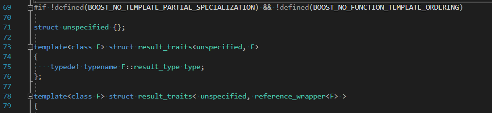 Boost.Bind e os Erros Escrotos 2018-10-01 [tag_coding] Estou voltando a programar algumas coisas no boost. Algo que eu perdi ao me isolar do movimento de modernização do C++ foi a capacidade brilhante da biblioteca boost em encapsular e abstrair conceitos de engenharia de software de maneira portável e mantendo a filosofia por trás da STL, que ainda é a melhor maneira de trabalhar algoritmos já criada em qualquer linguagem de programação séria. boost-bind-e-os-erros-escrotos |
| Maniac 2018-09-30 [tag_series] Dois estranhos se encontram casualmente. Ambos possuem traumas no passado. Um deles é curável, e o outro tem esquizofrenia. Ambos parecem pensar na mesma frequência e frequentam os mesmos sonhos gerados por computador. Ambientado em um mundo ligeiramente futurista e esquisito, com um toque de retrô, a série Maniac tem um quê estético (e temático) que aos poucos nos revela ser um sci-fi pautado em algumas ideias muito mais psicológicas e filosóficas que poderia-se esperar. maniac |
| Native Floripa 2018 2018-09-28 O [Native Floripa] desse ano foi um evento de nerds que adoro e também uma viagem e encontro de nerds (que também adoro). Isso quer dizer que este é um post duplo, onde analiso tanto a viagem quanto o evento. native-floripa-2018 |
| Legalize Já! Amizade Nunca Morre 2018-09-28 [tag_movies] [tag_cinemaqui] Quase trinta anos após iniciado um movimento artístico liderado pela banda Planet Hemp, "Legalize Já!" ainda soa provocador. Extraído de um momento na história do país onde política e alienação andavam de mãos juntas, a mini biografia de Marcelo D2 e Skunk é muito mais sobre uma amizade inusitada do que uma crítica social. legalize-ja |
| De Volta ao Jogo (John Wick) 2018-09-28 [tag_movies] Um drama pessoal que escala em uma espiral de violência e poder em um universo que caminha confortavelmente entre realismo e absurdo. O drama de perder a esposa doente depois de abandonar o trabalho que dava significado à sua vida é um realismo pesado. Roubarem seu carro e matarem o cachorro que a esposa lhe dera como último presente é de um absurdo dilacerante que motiva qualquer um a sair em busca de vingança. E se você é John Wick isso significa uma sentença de morte para muita gente. john-wick |
| Carne Louca 2018-09-28 [tag_cooking] Ingredientes: Para a carne 1kg de lagarto, 1 cebola grande, 2 folhas de louro, 4 dentes de alho, 1 colher rasa de sete pimentas ou jamaica ou outra. Para o molho 1kg de tomate, 2 cebolas grandes, pimentão. carne-louca |
| Travessia 2018-09-26 [tag_wine] Travessia Cabernet Sauvignon é um vinho chileno da Concha y Toro, mas eles não querem que você saiba disso. O nome do fabricante fica nas letrinhas miúdas no verso da garrafa. Quem ganha prêmios de pontuação costuma ter vergonha de admitir que vinho é arte, também, e tem da baratinha e da que ganha dinheiro às custas dos trouxas. Esse é facinho de tomar e de achar no mercado. Serve como um acompanhamento para qualquer hora com qualquer comida. Uma sopa, um caldo, chocolate, carne com arroz, queijos. Tudo combina. Ele mesmo não é marcante, exceto pelo seu azedo constante, mas acaba virando um amigo, para compartilhar momentos do dia a dia. É um Malbec alcoólico e frutado para macho, pois seu corpo é pelo menos médio e exige um pouco de postura para beber. Bom ponto de entrada se quer começar a beber vinho como homem. travessia |
| Putz IPA 2018-09-25 [tag_beer] Têm lúpulos cheirosos e corpo leve, pouco alcoólico e bem agradável gelado. Ou seja, nem parece IPA. putz-ipa |
| Coruja Pilsen 2018-09-25 [tag_beer] É uma... pilsen? Bom, tem um salgadinho próximo de uma witbier prestes a ser esquecida. coruja-pilsen |
| Tamari AR 2018-09-23 [tag_wine] Malbec 2013 é daqueles momentos onde valeu muito a pena beber vinhos medíocres, pois este é sensacional. Frutado, tânico, estruturado em corpo médio pra forte. tamari-ar |
| Strappa Gingerberry 2018-09-23 [tag_beer] É um chá preto fermentado com gengibre e gradação alcoólica ridícula de 0.6%. Ele é ainda frutado (possui morango) e deixa a garganta quentinha. Ótima opção entre bebidas mais fortes. Dá uma pausa etílica e estilosa na balada. strappa-gingerberry |
| Famille Hugel 2018-09-23 [tag_wine] Pinot Noir de 2014 é leve demais, sem álcool, sem corpo, nem estrutura. Demonstra como é muito errado manter em reserva esta uva (pelo menos esta versão). famille-hugel |
| Três Corações Rituais Sul de Minas 2018-09-22 [tag_food] É um 100% Arábica que vem moído e vende em Floripa para emergências. Possui pouco corpo e uma doçura misturada com aquele enjoo dos cafés gourmets. tres-coracoes-rituais-sul-de-minas |
| Kairós Sol Poente 2018-09-22 [tag_beer] É uma West Coast IPA de respeito. Equilibrada de corpo leve, seu chope é aromático e um pouco salgado com amargor presente sem exageros. kairos-sol-poente |
| Segredo da Terra 2018-09-21 [tag_food] É um café artesanal de Alto Mogiana empacotado em grãos que possui um amargor acentuado em corpo médio mesmo com o frescor de um gourmet. Finalmente ajustado; tem tons amadeirados e gourmetizados pra quem gosta de bixisse. 24g de moagem fina passada na aeropress por 1.5 min. segredo-da-terra |
| Saint Golden Ale 2018-09-20 [tag_beer] É ligeiramente melado, corpo médio com pouca espuma. Artesanal da região de Floripa, bom custo/benefício. Primeira cerveja da viagem do Native Floripa. saint-golden-ale |
|
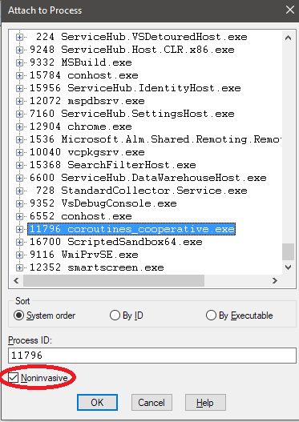 Coroutine Internals 2018-09-18 [tag_coding] Uma corrotinas é um mecanismo de troca de contexto onde apenas uma thread está envolvida. Ela me faz lembrar do Windows 3.0, não exatamente por não existirem threads (e não existiam mesmo), mas pelo caráter cooperativo dos diferentes códigos. coroutine-internals |
| Limites 2018-09-15 [tag_movies] Este é o típico filme fácil de classificar: road trip sobre família disfuncional com o peso de um drama intimista sobre relacionamentos e traumas do passado. Ele também é fácil de acompanhar, pois não há nada além que aconteça em sua história que nos fará olhá-lo de novo. Ele também é um dos piores filmes para se escrever a respeito, porque ele não é tão bom a ponto de ser digno de nota nem tão ruim a ponto de ser digno de pena. limites |
| Final Space 2018-09-15 [tag_series] Esta é uma série animada da Netflix que apresenta uma espécie de anti-herói (embora bem infantil) e personagens que possuem a pretensão de estarem em uma super-aventura galáctica. Só que não. E por algum motivo, apesar de irreverente, lhe escapa esse sentido do humor: que quando você tira importância de alguns elementos da história, mas mantém outros, você não entendeu direito a ideia por trás do seu próprio projeto. final-space |
| Café do Reddit 2018-09-13 [tag_food] Acabei de fazer o café seguindo as dicas do Reddit (que li novamente na insônia). O Loretto ficou absurdamente melhor apenas seguindo algumas dicas: proporção 1:15 do pó, coagem mais fina para menos tempo em contato com a água, deixando a água mais próxima da fervura (o [colar de pérolas]). O sabor do café ficou mais presente (menos aguado) com dez segundos mexendo, um minuto e meio em contato com a água desde o começo e trinta segundos baixando o êmbolo. cafe-do-reddit |
|
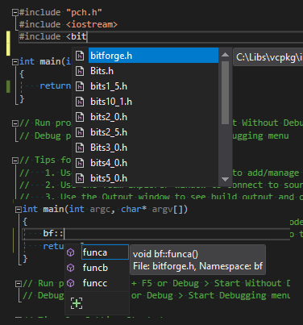 Vcpkg Internals: como o gerenciador de pacotes da M$ funciona por dentro ( 2018-09-12 [tag_coding] Depois de entender mais ou menos como funciona o vcpkg é hora de realmente entrar no código e entender qual a grande sacada dessa ferramenta da Microsoft. ### Depurando o projeto Uma das formas mais divertidas de entender o funcionamento de um fonte é compilar e sair depurando. E foi o que eu fiz. Através dos step ins e step outs foi possível ter as primeiras impressões de em qual pé está o projeto, além de pegar boas ideias para meu próprio código. vcpkg-internals |
| Trivento Tribu Syrah 2018-09-01 [tag_wine] A safra de 2017 é um ótimo Mendoza onde o custo/benefício fala mais alto que a busca por vinhos mais complexos dessa bodega de respeito; um pouco alcoólico demais, mas dá pro gasto depois de um tempo. trivento |
| Salentein Portillo Dulce Natural Sauvignon Blanc 2017 2018-09-01 [tag_wine] Que surpresa este vinho doce que achamos no mercado de Tucuman. Ele combina perfeitamente com o queijo de cabra que trouxemos para compartilhar com os amigos e ainda combinou com um delicioso doce de abacaxi da anfitriã. Não é um doce enjoativo, é um doce harmonioso, sem adição de açúcar; apenas esta inusitada uva do Sauv. Blanc em colheita tardia. salentein-portillo-dulce-natural |
| El Porvenir Amauta Corte III 2017 2018-09-01 [tag_wine] Essa família de vinhos da El Porvenir possui 4 cortes, cada um com sua personalidade; este Corte III é Reflexão; um Malbec/Cabernet com corpo médio pra forte, pouco frutado e aromático, mas seu corpo compensa as frivolidades vermelhas que os Malbecs costumam ter. el-porvenir-amauta-corte-iii |
| Cave De Ladac Rouge 2018-09-01 [tag_wine] Este vinho francês tem corpo leve como Cabernet, fácil de beber, tem umas nuances que lembra fermento frutado, frutas não-cítricas, e é muito bom para conversar com amigos em churrasco na varanda. cave-de-ladac-rouge |
| GetArg: the ultimate badass argv/argc parser 2018-08-30 [tag_coding] Sim, eu acho que já resumi o suficiente meu parseador de argv/argc no meu [último artigo sobre o tema]. Sim, eu também acho que a [versão com STL] bonitinha (mas ordinária). A questão agora não são as dependências, mas o uso no dia-a-dia: precisa ter o argc nessa equação? getarg |
| A Luta do Século 2018-08-29 [tag_movies] A luta é do século. No caso, o século 21. Estamos diante de dois rivais clássicos da luta de boxe do nordeste brasileiro. Todo Duro e Holyfield são os ícones mais desconhecidos que já se teve história no esporte, e ao mesmo tempo possuem a rixa mais incompreensível. Regionalistas e com uma primeira luta com desfecho surpreendente, o desfecho dessa história é mais surpreendente ainda. a-luta-do-seculo |
| Como é Cruel Viver Assim 2018-08-28 [tag_movies] Um "pai de família" procura um emprego de taxista. E nem como taxista ele é aceito. Então ele caminha pela rua, observa os transeuntes em uma praça, e avista uma senhora idosa vendendo alguma coisa de aspecto sujo em uma forma levantada pelo seu único braço. O outro braço ela não tinha. Ele tem um insight, e decide que precisa fazer um sequestro para conseguir ter meios para viver. como-e-cruel-viver-assim |
| The Photoplay 2018-08-27 [tag_movies] [tag_books] The Photoplay, A Psychological Study, é considerado o primeiro livro que levou a sério a linguagem cinematográfica como uma nova forma de arte. Ele realiza duas manobras interessantíssimas para a época: retira a impressão que Cinema é apenas um teatro para as massas e eleva as fotos em movimento como uma nova forma de estética que atinge seu status de arte justamente por se destacar do mundo. the-photoplay |
| Ferrugem 2018-08-27 [tag_movies] [tag_cinemaqui] Ferrugem tem a ambição de tratar de um tema sensível, mas ele o faz de maneira tão sutil que sua mensagem se perde na tradução. Sua produção está equivocada, pois torna seus cenários tão higienizados que o resultado é um melodrama esquecível antes que sua segunda parte termine. ferrugem |
| O Papel da Genética na Mobilidade Social 2018-08-26 [tag_philosophy] O que será que faz pessoas durante suas vidas ficarem mais ricas ou pobres de onde começaram? Nascer rico com certeza ajuda, mas e se não for apenas isso? Há habilidades inatas de cada indivíduo, carregadas pelos genes de seus pais, que poderiam influenciar nesse processo? E se sim, qual a relevância de quem são seus pais? Um estudo genético quis investigar as possíveis respostas. o-papel-da-genetica-na-mobilidade-social |
| George Orwell: Politics and the English Language 2018-08-26 [tag_philosophy] Politics and the English Language é um texto do George Orwell sobre como escrever de forma mais clara que os confusos escritores de nossa época. A língua inglesa era o que ele estava defendendo, não contra o empobrecimento como muitos eruditos, mas contra o seu uso por si mesma, tornando a mensagem, a coisa mais importante em um texto, secundária. Ao mesmo tempo ele, que é ídolo de vários movimentos totalitários, dá umas alfinetadas tão específicas nos "revolucionários" de hoje em dia que é merecida a citação. Vamos começar: george-orwell-politics-and-the-english-language |
| Dogfish Head Namaste White Belgian-Style Witbier 2018-08-26 [tag_food] Com esse nome longuíssimo é óbvio que não é legal. Se trata de uma Witbier esquecível, cítricazinha, levezinha, espumazinha. Tudo inha para uma cerveja que se chama como é o nome, mesmo? dogfish-head-namaste-white-belgian-style-witbier |
| Animal Político 2018-08-26 [tag_movies] [tag_cinemaqui] Animal Político é uma fábula que soa muito densa para o espectador médio, mas que ao mesmo tempo tenta manter suas sensações, analogias e símbolos mais próximos possível do cidadão comum. Isso porque é um filme que fala, como o título já denuncia, sobre nós como animais políticos. Esse conceito vem de milhares de anos atrás, de um filósofo grego chamado Aristóteles e de um livro chamado Política. Bom, já deu pra perceber que a história vem de longe; e essa discussão está longe de acabar. animal-politico |
| Nico, 1988 2018-08-24 [tag_movies] [tag_cinemaqui] Abre uma janela em "Nico, 1988" sobre os últimos anos da artista Christa Päffgen (aka Nico). Decadente e ainda brilhante, a uma vez influenciada pela banda Velvet Underground se torna ela mesma uma influenciadora. O seu estilo niilista consciente é a raiz que muitos movimentos musicais adotaram para representar essa geração de perdidos, que em vez de buscar significado na vida vai na base das drogas se manter em uma constante e absurda viagem. nico-1988 |
| Histórias que Nosso Cinema (Não) Contava 2018-08-23 [tag_movies] [tag_cinemaqui] Se você se lembra das pornochanchadas -- produções de baixo orçamento, cunho erótico e qualidade duvidosa lançadas na época da intervenção militar -- é bem capaz que irá gostar muito desse filme. Ele dá uma nova cor ao tema. Não se trata de uma mistura inconsequente como aquelas homenagens vazias. A montagem das cenas, ou seja, a sequência que elas seguem, é o núcleo da narrativa que ele tenta criar a partir do nada. Sua ambição: fazer um memorial político/sócio/econômico da época. Dentro das pretensões das pornochanchadas, até que não está muito longe. historias-que-nosso-cinema-nao-contava |
| Meu Novo Parseador de Argc Argv 2018-08-21 [tag_ccpp] [tag_coding] Eis que me deparo com um projeto onde não posso usar STL. Ou seja, nada de map nem string. Isso quer dizer que minha função bonita e completa de parseamento de argumentos argc/argv não pode ser usado. Essa é uma má notícia. A boa notícia é que achei uma forma muito mais simples e à prova de falhas de fazer isso. Ele basicamente percorre o array argv em busca do nome do parâmetro enviado para a função. Uma vez que ele encontre ele retorna o próximo elemento. Na falta de próximo elemento ele simplesmente retorna uma string vazia que não é nulo, mas já indica que há o parâmetro na lista de argumento. meu-novo-parseador-de-argc-argv |
| As Duas Irenes 2018-08-21 [tag_movies] [tag_cinemaqui] Poucos filmes me deixam sem palavras por causa das camadas emocionais em que ele coloca o espectador (e que depois fica difícil de sair uma a uma). As Duas Irenes é um desses filmes, mas longe do motivo ser apenas a história ou as atuações. É toda a produção. Isso pode ser minha memória afetiva que foi aguçada com tantas referências a uma época que não existe mais. E se for, garanto que vai sentir o mesmo se prestar atenção. as-duas-irenes |
| O Centenário Que Fugiu Pela Janela e Desapareceu 2018-08-19 [tag_movies] [tag_cinemaqui] Este filme tem um longo nome. Tão longo quanto a vida de Allan Karlsson, o centenário que protagoniza essa comédia de erros. A princípio talvez você não entenda o que o filme quer dizer, além do que ele já diz no seu título. Então vai aqui uma dica: não pense, apenas assista. o-centenario-que-fugiu-pela-janela-e-desapareceu |
| Jejum Intermitente e Nutricionistas em Fúria 2018-08-18 [tag_body] # Disclaimer Houve a publicação deste artigo já com revisão em revistas científicas e uma das pesquisadoras tem um canal no YouTube de divulgação científica. Ela fez um vídeo sobre sua tese de doutorado e junto da descrição do vídeo, além do link para o artigo em si, há muitos e muitos outros artigos relacionados. jejum-intermitente-e-nutricionistas-em-furia |
| Brilho Eterno de uma Mente Sem Lembranças 2018-08-18 [tag_movies] Por que as pessoas hoje em dia estão tão ansiosas em ser felizes e se livrar rapidamente das partes ruins de um relacionamento em suas mentes? A pergunta que o roteirista Charlie Kaufman (Quero ser John Malkovich, Adaptação, Anomalisa) e seu parceiro de costume, o diretor Michel Gondry (Natureza Quase Humana, "Rebobine, por Favor", A Espuma dos Dias) fazem neste filme é: e se elas pudessem? brilho-eterno-de-uma-mente-sem-lembrancas |
| Gauguin: Viagem ao Taiti 2018-08-17 [tag_movies] [tag_cinemaqui] A passagem de Gauguin pela Polinésia não é apenas a história de um homem do mundo moderno indo resgatar sua origem selvagem, mas um artista buscando entender sobre as perdas envolvidas nesta transição. gauguin-viagem-ao-taiti |
| Takara: A Noite que Nadei 2018-08-16 [tag_movies] [tag_cinemaqui] Largue essa pressa e esse jeito adulto de ser. "Takara - A Noite que Nadei", apesar de curto, é lento. Bem lento. Isso porque ele explora o tédio através dos olhos de uma criança, ao mesmo tempo que se transforma em um conto para refletirmos sobre liberdade nas mãos de uma criança. takara-a-noite-que-nadei |
| Escobar - A Traição 2018-08-14 [tag_movies] [tag_cinemaqui] Escobar - A Traição é mais uma visita ao inesgotável mundo de Pablo Escobar, este cabrón que construiu um império em cima de outros impérios e teve que pagar as consequências. Uma história tão impactante e dramática como essa (porque é real) já foi explorada inúmeras vezes na ficção, e recentemente ganhou séries e filmes. Então, qual a grande novidade dessa vez? escobar-a-traicao |
| Troca de Rainhas 2018-08-13 [tag_movies] [tag_cinemaqui] Troca de Rainhas descreve um momento pontual e peculiar da história da monarquia, de maneira burocrática, estática, quase parando. Os eventos se sucedem lentamente e seus personagens já sabem automaticamente o que fazer, pois "assim está escrito". Sim, são as tradições os verdadeiros monarcas: rituais que ordenam que crianças se casem para evitar guerras desnecessárias. As tradições atravessaram séculos imunes, sob as maiores adversidades, e sabem mais que qualquer rei ou rainha que já passou pela coroa o que deve ser feito. troca-de-rainhas |
| Santa Helena 2018-08-13 [tag_wine] O Santa Helena Reservado Malbec 2016 do mercado aqui perto de casa não está tão caro, mas para um Malbec relativamente recente ele está queimado. Seu gosto é agradável, mas seu aroma de frutas já se foi há tempos. O Malbec 2016 Santa Helena do mercadinho precisa respirar, pois é muito alcoólico. Mas depois disso vira um ótimo custo/benefício. Corpo médio pra forte com frutado e tanino médios, este Malbec cai bem para degustações leves. santa-helena |
| Gato Negro 2018-08-13 [tag_wine] O Gato Negro Malbec 2016, também do mercadinho do lado, é um bom custo/benefício para quem gosta de Malbecs frutados (como são os Malbecs), mas sem a frequência de nuances. É um vinho pomposo sem ser caro. gato-negro |
| Shiki Oriori: O Sabor da Juventude 2018-08-12 [tag_movies] Este é um filme que dá sono. Aliás, estes são três curtas. Que dão sono. Mas apesar dos bocejos e das pescadas, há algo de muito bonitinho acontecendo em Shiki Oriori, lançada pela Netflix que se orgulha em anunciar que é do mesmo estúdio de Your Name, o ultra-pop sucesso de Makoto Shinkai. Aqui nós temos três diretores diferentes trazendo uma percepção temática parecida entre as três histórias: a nostalgia de algo perdido em nossa juventude e que na fase adulta bate à porta. shiki-oriori-o-sabor-da-juventude |
| Catena Zapata 2018-08-10 [tag_wine] O Malbec 2015 é um pouco decepcionante pelo preço vendido aqui no Brasil e por ser um Malbec tão equilibrado que se torna comportado demais. As notas de frutas vermelhas semi maduras vem mais no sabor, e o aroma não agride mas não cativa. E depois de muito tempo respirando a coisa fica na mesma. catena-zapata |
| Colorado Ithaca 2018-08-09 [tag_beer] É selada com um material plástico/borracha vermelho e uma produção limitada e inacessível nos grandes mercados. Ela é preta, densa, intomável em vários goles (tente para ver como estragar uma garrafa). O sabor de rapadura se mistura com o lúpulo agressivo, e a bebida merece o mais forte e gorduroso dos pratos com louvor. colorado-ithaca |
| Ruddles County English Ale 2018-08-08 [tag_beer] Uma Cream Ale porcamente estocada pelo OMalleys, o pub que faz um tempo não sabe muito bem o que está fazendo (se continua enchendo a culpa é dos Paulistanos, imagino). É uma cerveja da promoção da semana, que contém equilíbrio no lúpulo e pouco gás. Fácil de ingerir e de esquecer. ruddles-county-english-ale |
| Lámen Shop 2018-08-08 [tag_movies] Lámen Shop é um filme sem roteiro. O que praticamente diz tudo o que você precisa saber sobre os defeitos incorrigíveis de um filme onde o espectador não consegue enxergar o que move seu protagonista, nem qual o grande conflito que ele tenta resolver durante uma história que foi feita para chorar (e consegue), mas que não entrega profundidade alguma nesse choro. lamen-shop |
| Double Hop Monster IPA 2018-08-08 [tag_beer] Mais uma amostra do OMalleys, mas essa nem eles conseguiram estragar. Essa Double IPA é intensa na medida certa para quem quer apenas um copo para degustar por uma hora. Um gole é uma memória. Corpo médio para forte com intensidade de sabores que vai te fazer bebericar novamente assim que puder. double-hop-monster-ipa |
| Christopher Robin: Um Reencontro Inesquecível 2018-08-08 [tag_movies] [tag_cinemaqui] Faz quanto tempo que você não tira férias? Acha normal isso? "Christopher Robins: Um Reencontro Inesquecível" chega aos cinemas afirmando que não, não é normal. Trabalhar sem descanso é uma morte lenta, uma hibernação forçada enquanto as coisas boas da vida ficam esperando para sempre. Ursinho Pooh nos faz lembrar de maneira bem humorada, despretensiosa e despreocupada do poder do ócio e de como é importante no dia a dia lembrar do que valorizamos mais. christopher-robin-um-reencontro-inesquecivel |
| Better Call Saul - Quarta Temporada, Episódio 1 2018-08-08 [tag_series] O primeiro episódio da quarta temporada de Better Call Saul é uma aula de como tornar todos os personagens relevantes, ao mesmo tempo que ele usa nosso interesse em saber mais do universo de Breaking Bad (ele é um spin off dessa série) e também inicia uma nova mini-jornada para todos eles. Como não adorar essa série? better-call-saul-s04-e01 |
| Tripel Karmeliet 2018-08-06 [tag_beer] É uma blonde Belgian beer bem alcoólica, mas que você não sente, pois seu aroma cítrico é mais potente sempre. Ela desce tão fácil e vai liberando novos aromas conforme a temperatura sobe de 4 a 15. Para quem não gosta do amargor da cerveja. tripel-karmeliet |
| Merlí 2018-08-06 [tag_series] Merlí de Héctor Lozano segue uma cartilha de novela moderada, onde seus personagens nunca se transformam em algo diferente do que são, mas coisas do cotidiano acontecem a eles para movimentar uma história em torno de um professor de filosofia. merli |
| Mentes Sombrias 2018-08-06 [tag_movies] [tag_cinemaqui] Mentes Sombrias é uma distopia adolescente que entende a mente jovem como Goonies, mas que se recusa a amadurecer como Conta Comigo. Ambos os filmes citados são ótimas referências para onde este filme/saga poderia caminhar, mas apesar do ótimo começo ele nunca se aprofunda, deixando no lugar o já conhecido efeito Marvel, a produtora imbatível de histórias que se mantêm coesas pela característica peculiar de nunca terem um fim. mentes-sombrias |
| Mafiosa Consiglieri Double India Pale Ale 2018-08-06 [tag_food] É, de acordo com o rapaz da Cervejoteca, a melhor IPA do mercado. E ela possui aquele equilíbrio que gostamos quando não queremos apenas sentir lúpulo. Às vezes o negócio da cerveja lupulada não é o amargor sem fim, mas apenas a impressão de estar bebendo algo que encaixa em nossa vida. mafiosa-consiglieri-double-india-pale-ale |
| La Guapa Carmen 2018-08-06 [tag_beer] É a cerveja do restaurante anônimo produzida pela ZalaZ, de Paraisópolis (mineira), que é leve o suficiente para ser degustada e pesada o suficiente para ser degustada com empanadas. Seu aroma de laranja e maracujá do rótulo dá um tom cítrico, mas pouco perceptível por conta de seu corpo leve. la-guapa-carmen |
| Bierland Witbier 2018-08-06 [tag_beer] Nunca me decepciono com os resultados dessa cervejaria de Blumenau. Aqui eles te entregam uma Witbier tão equilibrada que ela arrisca agradar gregos e troianos, no sentido que há pouquíssimo amargor, mas ele é sólido, e seus tons cítricos e sua espuma conferem o corpo e maciez. bierland-witbier |
| Você Nunca Esteve Realmente Aqui 2018-08-04 [tag_movies] [tag_cinemaqui] Situado em nosso inconsciente, nas profundezas de nossa sociedade pós-moderna, flutua a realidade e os intermináveis debates sobre o homem comum, esse que vive uma rotina em que, apesar de alguns percalços, tudo parece estar em relativa ordem e estabilidade. "Você Nunca Esteve Realmente Aqui" não fala sobre este homem, mas trabalha do outro lado da equação, onde a violência brutal marca as pessoas que nela vivem, e que para sempre deixaram de ser os mesmos. Sua realidade não possui essa estabilidade com alguns percalços de vez em quando. A realidade é o eterno percalço, com breves momentos, se tiverem sorte, de alguma calmaria. voce-nunca-esteve-realmente-aqui |
| Fazenda Bom Destino Padre Fialho MG 2018-08-03 [tag_food] Essa foi a última safra que adquiri antes de suspender as entregas do Grão Gourmet. Bom café. Docinho na boca (mesmo sem açúcar) e que requer pouco pó para quem não gosta daquele extra-forte do mercado. fazenda-bom-destino-padre-fialho-mg |
| Predestinados 2018-08-01 [tag_movies] Este não é um filme sobre crianças. Elas mal aparecem no filme. O que aparece no filme são as reações de seus pais. E eles fazem parte do universo das comédias fáceis e sem implicações dramáticas, o que torna toda a experiência de ver seus filhos sendo cobaias de um experimento sobre a vida tão fascinante como ideia quanto frustrante na execução. predestinados |
| O Animal Cordial 2018-08-01 [tag_movies] [tag_cinemaqui] O Animal Cordial é um laboratório humano. Seu título já é uma contradição em termos, e durante todos os tensos 93 minutos do filme vamos encontrando o animal dentro do homem, mas nunca o cordial. Isso porque vivemos em tempos estranhos, onde a imaginação sobre o ódio atinge níveis utópicos, e nos transforma em indivíduos lutando por um espaço. o-animal-cordial |
| Café 2018-08-01 [tag_movies] [tag_cinemaqui] "Café" é como se uma pequena janela se abrisse para o mundo e nós pudéssemos dar uma espiada em três histórias simples ligadas apenas pelo commoditie que leva o nome do filme. Não se trata de nada profundo, mas perene, pois apela para nossos sentimentos de tradição, nostalgia e esperança, uma tríade que nunca sai de moda. Como o próprio café, por exemplo. cafe-filme |
| Cinquenta Tons de Liberdade 2018-07-29 [tag_movies] Cinquenta Tons de Liberdade é um grande vídeo de casamento feito para um casal rico que tenta criar algum drama em suas vidas vazias e desinteressantes. Para isso se tornar minimamente assistível para nós, reles mortais e espectadores boquiabertos pelo fiapo de vida das pessoas ricas, foi necessário lotar o vídeo com mansões, jatos, iates, carrões, guarda-costas, alguns acontecimentos levemente empolgantes, uma trama sem sentido e com um clímax enjoativo, e a luxúria que parece tornar a sala vermelha do casal Grey a coisa mais sexy e controversa que existe no Cinema da atualidade. Esses americanos, aparentemente, nunca viram um filme europeu na vida. cinquenta-tons-de-liberdade |
| Para o Que Der e Vier 2018-07-28 [tag_movies] Aparentemente este é um filme sessão da tarde, mas ele tem personagens que são cativantes de acompanhar, seja por eles serem vividos por atores cujas personas já conhecemos ou pelos seus conflitos e desafios serem tão comuns quanto... banais. para-o-que-der-e-vier |
| Vídeo: Visual Studio e seu depurador (comentado) 2018-07-27 [tag_videos] [tag_coding] Segue meu segundo vídeo curto onde estou apenas demonstrando como é o depurador do Visual Studio. Mas dessa vez com comentários =) video-depuracao-visualstudio-101-comentado |
| Dark Tourism 2018-07-26 [tag_series] Essa série que saiu na Netflix é uma boa série, porque ela contém todos os elementos que faltam hoje ao jornalismo pensante. Há obviamente um formato senso forçado, mas quando algo é bem feito, isso passa como diversão. dark-tourism |
| 1681 Schloss Eggenberg Flopfen Rönig 2018-07-26 [tag_food] É de uma cervejaria bem antiga da Áustria, feita em um castelo, e que nessa edição nos traz um sabor rapidamente intenso, um pouco de sal, cítrico e aromas que se esvaem rapidamente. É uma cerveja boa para tomar sozinha se quiser. 1681-schloss-eggenberg-flopfen-ronig |
| O Nome da Morte 2018-07-25 [tag_movies] [tag_cinemaqui] O cinema nacional percorreu um longo caminho desde A Cidade de Deus, um filme que explorava o ambiente miserável, violento e corrompido de uma sociedade que ainda mantinha certa fé religiosa que lhes "garantisse" alguma forma de proteção, mesmo que alguns membros dessa sociedade fossem assassinos sanguinários. Agora O Nome da Morte chega como um eco dissonante, que vem meio torto, mas que pelas suas virtudes técnicas, igualmente impecáveis, especialmente a fotografia, lembra como aos trancos e barrancos o cinema brasileiro se desenvolveu através das décadas a ponto disso se tornar algo comum, e mostra também que a discussão sobre a pobreza, violência e corrupção pode adquirir diferentes formas, mas que se mantém firme e forte como um mecanismo simbólico de estudo social rico e fascinante. o-nome-da-morte |
| Vídeo: Depuração Visual Studio 101 2018-07-24 [tag_videos] [tag_coding] Redescobrindo meu canal no YouTube me empolguei em publicar mais alguma coisa. Os meu primeiros vídeos, no meu canal pessoal, são longos e possuem narração um pouco confusa, mas explicam bem alguns detalhes do Visual Studio. Agora com meu primeiro vídeo curto estou apenas demonstrando sem voz como é o depurador do Visual Studio. Enjoy =) video-depuracao-visualstudio-101 |
| Missão Impossível: Efeito Fallout 2018-07-24 [tag_movies] [tag_cinemaqui] A maior satisfação da série Missão Impossível nos cinemas é que ela sempre entrega o que é esperado. Nesse sentido ela ganha até de James Bond. Porém, estamos falando de apenas meia-dúzia de filmes que seguem basicamente a mesma fórmula em toda nova edição (e direção): as missões recebidas em segredo com gravações que se auto explodem em cinco segundos, vilões com maldade pura, o passado de Hunt o amaldiçoando e ao mesmo tempo o fazendo crescer como ser humano, as cenas de ação frenéticas e muito bem coreografadas, as reviravoltas que acontecem sob um teto mal iluminado e que costuma dar nós no cérebro do espectador e, por fim, uma bomba e uma contagem regressiva. Bom, senhoras e senhores, tenho boas novas sobre "Missão Impossível: Operação Fallout": dessa vez teremos duas bombas! Isso que é plot twist! missao-impossivel-efeito-fallout |
| O Primeiro Mentiroso 2018-07-20 [tag_movies] Esta é daquelas comédias que tem o humor de comediantes de standup, mas que deu certo. Bom, Rick Gervais dificilmente dá errado. Aqui ele parte de uma história original, o que é louvável, pois ela é mais complicada de desenvolver do que parece. E cai no lugar-comum porque ele não é um roteirista de primeira. o-primeiro-mentiroso |
| Hilda Hilst Pede Contato 2018-07-20 [tag_movies] [tag_cinemaqui] "Não sei o que há, mas há principalmente o elogio fácil. Seria ótimo que os críticos falassem a verdade." - Hilda Hilst. Este filme é uma oportunidade perfeita para demonstrar a irrelevância intelectual do espiritismo, mas infelizmente, para os que ainda não conhecem a obra de Hilda Hist, esta pode ser uma péssima porta de entrada, cercada das reverências vazias e, como a própria Hilda coloca na citação, "o elogio fácil". hilda-hilst-pede-contato |
| A Era da Inocência 2018-07-19 [tag_movies] A Era da Inocência é conhecida em sua versão inglesa como Day of Darkness (e assim o é no original em francês). Isso tem um pouco a dizer sobre o teor do filme, que apesar de se passar em um ambiente depressivo (e opressivo), seu exagero sugere uma certa inocência em sua abordagem. Isso porque o diretor/escritor Denys Arcand está a todo vapor desde As Invasões Bárbaras, filme onde ele já atacava com todas as forças a ideia pré-concebida que o resto do mundo tem que o Canadá é um primeiro mundo ideal e desejável por todos, quando na verdade o sistema de saúde celebrado por todos é um pesadelo distópico digno de filmes como Brazil, THX 1138 ou até mesmo 1984. a-era-da-inocencia |
| Os Incríveis 2 2018-07-18 [tag_movies] Se passaram 14 anos desde que Os Incríveis estrearam, também dirigido e escrito por Brad Bird. Na época a Pixar ainda estava engatinhando e emplacando seus maiores sucessos, sempre baseados em uma direção de arte maravilhosa, uma qualidade criativa impecável e elevando o nível da sétima arte pelo bem da arte, e ainda conseguindo ganhar rios de dinheiro em cima disso. Hoje os rios de dinheiro continuam, a direção de arte continua estupenda e a qualidade criativa está entregue a um marasmo que só consegue pedir desculpas para os movimentos sociais, uma atitude que ironicamente é patética e nada heróica. os-incriveis-2 |
| O Doutor da Felicidade 2018-07-17 [tag_movies] [tag_cinemaqui] Eu entendo o porquê do lançamento de O Doutor da Felicidade ser direto para streaming: se trata de um filme com um quê televisivo, de baixa produção, e que não tenta esconder isso. O que eu não entendo é um ator com o carisma e talento de Omar Sy acabar participando deste projeto; ele nos prova capaz de participar de dramas mais formatadinhos através de uma cena linda perto do final do filme; você irá reconhecê-la pela frase "onde está o crime?" e pela possível referência a "M, O Vampiro de Dusseldorf". o-doutor-da-felicidade |
| Estrutura de Roteiro 2018-07-17 [tag_movies] [tag_books] Às vezes dá vontade de ler todos os livros sobre um assunto e fazer um apanhado de dicas em 50 páginas. Mas isso passa rápido depois que você percebe que vai perder alguns anos de sua vida. Leonardo Bighi Lourenço perdeu 3 anos de sua vida para nós, e nos apresenta todas aquelas teorias de 4 atos (ou 3, com o do meio dividido em dois (???)), seus pontos de virada, conflito, protagonista, antagonista, ponto de impacto... enfim, a pataquada toda. estrutura-de-roteiro-como-escrever-um-livro-leonardo-bighi-lourenco |
| Escrevendo Curtas 2018-07-16 [tag_movies] [tag_books] Este é um livro curto, e sou fã de livros curtos. Porém, para um livro ser bom não basta ser curto. No seu pequeno conteúdo ele tem que ter algo a dizer. E o livro de L.G. Bayão tem, sim. Ele é um guia rápido e conciso que explica como não apenas curtas-metragens funcionam, mas como a indústria e linguagem cinematográficas funcionam na vida real, e de onde o curta é talvez o elemento mais basal e essencial para o começo (ou o final) de toda criação na sétima arte. escrevendo-curtas-l-g-bayao |
| Colorado Cauim 016 2018-07-16 [tag_beer] Que mantenho algumas garrafas em estoque, é uma Pilsen, mas não é uma Pilsen qualquer. Ela não é tão amarga, possui corpo fraco a médio, ou talvez até médio, e também frescor no aroma e um toque cítrico no sabor, com after que lembra manga, tangerina, ou algo próximo. colorado-cauim-016 |
| Stanford Encyclopedia of Philosophy para Kindle 2018-07-15 [tag_philosophy] A enciclopédia mais completa e de maior respeito da internet não é um enciclopédia geral, mas uma de filosofia. Está hospedada na Universidade de Stanford e possui revisão por pares e toda a autoridade de ser escrita por especialistas nos verbetes em questão. O único problema (até agora) era não ser possível baixá-la para degustar no Kindle. Até agora. stanford-encyclopedia-of-philosophy-para-kindle |
| Por Dentro do Roteiro 2018-07-15 [tag_movies] [tag_books] O livro de Tom Stempel, acadêmico e crítico cinematográfico, parece ter sido feito com um olho nos negócios e outro no entretenimento. Isso porque para Stempel o importante em um roteiro não é seguir uma estrutura estética agradável, nem mover a história em uma trama que te prenda, mas fazer os personagens serem tão reais que você os seguirá para onde quer que seja. Mesmo em um blockbuster. por-dentro-do-roteiro-tom-stempel |
| Brewdog Punk IPA 2018-07-15 [tag_beer] Essa sim, vale a pena. Lupulada com aroma, amarga na medida certa e com um after completo, que cobre a boca toda, essa versão da cervejaria do Reino Unido merece palmas pela conquista em latinha. brewdog-punk-ipa |
| Vcpkg: gerenciador de libs c++ para Linux, Mac OS... e Windows! 2018-07-14 O ambiente padronizado de bibliotecas C/C++ dos sistemas UNIX é motivo de inveja dos programadores Windows por séculos. Mas, finalmente, a Microsoft tem acordado diante da ressurreição do C++, com seus novos bug fixes e new deprecated features. vcpkg |
| Python27, protobuf, py2exe e build_exe 2018-07-14 [tag_coding] Para quem está tentando compilar um executável usando py2exe e protobuf, #ficadica: desista. Ele não vai funcionar ou se funcionar vai dar trabalho. Em vez disso melhor usar build_exe (através do pacote cx_freeze), que é um esquema marotinho que permite configurar tudo e há apenas um patchzinho que precisa ser feito. python27-protobuf-py2exe-cx_freeze |
| Samantha! 2018-07-13 [tag_series] O plano-sequência inicial de "Samantha!", série da Netflix produzida no Brasil, irá revelar uma miríade de sentimentos e mensagens conflitantes sobre o que significavam os anos 80. Incluindo a figura de uma caixa de cigarros em um programa infantil protagonizado por uma garota mimada, uma criança erotizada na TV brasileira. Até agora, nada de novo. Só que piora. samantha |
| Ilha dos Cachorros 2018-07-13 [tag_movies] [tag_cinemaqui] Ilha dos Cachorros é um filme que explora várias ideias adultas sobre o formato de odisseia infantil. Para os fãs de Wes Anderson e sua mente criativa e plástica pode-se dizer com segurança que está tudo ali. Temos as texturas magníficas e coloridas que dá vontade de colecionar, os planos chapados que lembram as páginas de um livro infantil e, meu deus, essa é, assim como "O Fantástico Sr. Raposo", uma animação! Provavelmente não haverá nada no design de produção que te deixe insatisfeito, pois cada quadro é um deleite de se ver, e muitos demonstram seu significado através de cores e formas. ilha-dos-cachorros |
| Brewdog 2018-07-13 [tag_beer] Que o Incrível achou na lojinha da liberdade se chama Indie Pale Ale, o que parece uma brincadeira, pois no fundo se trata de um pilsen leve, que embora aromático e um tanto com certos tons condimentados, seu corpo é muito leve e amargor inexistente (ou some tão rápido que não se constrói um after sensível). brewdog |
| Uma Casa à Beira Mar 2018-07-11 [tag_movies] [tag_cinemaqui] O filme chama Uma Casa à Beira Mar no Brasil (assim como seu nome internacional), mas seu nome original é "A Villa". E a vila do filme é o centro do mundo. Pelo menos do ponto de vista francês. Ela é um microcosmo que fala sobre família, política, vida e morte. É um filme que lamenta pelo presente, mas que também se enxerga no passado, sob a forma de culpa. No começo é possível que você imagine se tratar de um filme leve sobre o assunto, ou que talvez chame os fantasmas do clássico Era Uma Vez em Tóquio, que é uma história família que possui um fundo dramático, universal e nada leviano. Muitos devem concordar. E este filme tem tudo para sê-lo. Menos pela profundidade. Isso porque ele é ingênuo demais. E esse, ironicamente, é o real problema de nossa geração. uma-casa-a-beira-mar |
| 50 São os Novos 30 2018-07-11 [tag_movies] [tag_cinemaqui] Pegando carona na lista de filmes sobre as diferenças das idades nos tempos atuais, "50 São os Novos 30" é uma comédia que aproveita sua protagonista para criar situações desconexas que existem para o riso fácil e descompromissado. O problema é que nem sempre é engraçado. 50-sao-os-novos-30 |
| Dry Hopping Cauim 016 2018-07-07 [tag_beer] Este foi o grande achado na visita da Toca do Urso. A pilsen com Dry Hopping Cauim 016, parte da degustação, é uma pilsen aromática e equilibrada. Chega a ter o corpo quase médio, mas peca um pouco pelo after. De qualquer forma, o chope vale muito à pena. dry-hopping-cauim-016 |
| Colorado Murica 2018-07-07 [tag_beer] Assim como o Colorado Murica, que tem um creme aromático e um sabor igualmente cítrico, mas mais frutado, pois vem da graviola. É mais um dos experimentos da cervejaria do urso com frutas. Dessa vez a escolhida é a graviola, e, rapaz, o Sr. Laércio Shiya, Mestre Cervejeiro desde sempre, sabe fazer as coisas bem feitas em pequena e grande escala. colorado-murica |
| Colorado Eugênia 2018-07-07 [tag_beer] Fez parte da degustação da visita da Toca do Urso e me ganhou pelo frescor que ela oferece em detrimento às mais potências. O corpo é médio para forte, mas o tom cítrico compensa. colorado-eugenia |
| Colorado Demoiselle 2018-07-07 [tag_beer] Na degustação ao final visita da Toca do Urso, demonstrando o sistema de auto tap (My Tap, acho que é o nome), revela uma cerveja surpreendentemente aromática, algo difícil de sentir nas engarrafadas. O colarinho é delicioso e o sabor misto da cerveja e da espuma sugerem fortemente o café. Amargor um pouco enjoativo, mas saboroso. colorado-demoiselle |
| O Orgulho 2018-07-05 [tag_movies] [tag_cinemaqui] Para um filme que fala sobre retórica, "O Orgulho" é bem fraquinho, embora o orgulho mesmo, esse sentimento poderoso (para o bem e para o mal) é devidamente apresentado na forma de jogo de palavras. Já o filme, convencional do começo ao fim, nunca se permite levar a sério qualquer uma das questões que ele levanta, se colocando no lugar-comum dos filmes que exaltam a dinâmica professor/aluno ou mestre/pupilo. Mesmo que o mestre seja um idiota. o-orgulho |
| Salta, 2018 2018-07-04 [tag_trips] A região de Salta é menos conhecida pelos amantes de vinhos argentinos, mais acostumados a Mendoza e suas ruas paradisíacas em pleno deserto. Mas Salta tem outro espírito, mais nativo, e mais charmoso, que revela como a Argentina, como todo país, é um aglomerado artificial de diferentes povos e culturas, e como o vinho, feito em um solo impossível de dar vida à uva, expressa a alma de suas gerações. salta-2018 |
| Manipulando Mouse e Teclado no Windows 2018-07-04 Uma forma extremamente bem comportada que o Windows tem para manipular entrada de mouse e teclado são as funções API BlockInput e SendInput. Enquanto uma bloqueia todos os eventos de input vindo de todos os lugares do sistema, o outro consegue enviar inputs apenas por software. Imagine a peça que você pode pregar em seus amigos. manipulando-mouse-e-teclado-no-windows |
| Botched 2018-07-04 [tag_series] Botched é mais uma das séries de canais como Discovery Home & Health e... ops. Acho que me enganei de canal. Anyway. Algum canal pago desses por aí onde abrem mulheres para fazer cirurgias plásticas para as completarem como os últimos Frankesteins de nossa geração. botched |
| Trassoles 2018-07-01 [tag_wine] De Cabernet Sauvignon e Malbec é o único tinto da vinícola cooperativa de Cafayate que está aberta há dez anos. Uma ótima ideia do pessoal de lá, para se proteger da exploração das grandes vinícolas. Esse é bem ríspido, forte e ácido, mas com tempo de respiro fica pouco frutado e tânico. Experimentando com blend de queijo da produtora local (trouxe tudo de lá). trassoles |
| Tig Notaro: Happy to Be Here 2018-07-01 [tag_movies] Eu não sei como era a performance da comediante de standup Tig Notaro antes dela contrair uma doença séria, perder a mãe, terminar seu relacionamento na semana seguinte e desenvolver um câncer. Mas eu sei que graças a esses eventos, sua coragem e dedicação ao humor o show que ela fez neste momento de sua vida pode figurar tranquilamente na lista dos mais poderosos, inesquecíveis e memoráveis da história da humanidade. tig-notaro-happy-to-be-here |
| O Caçador e a Rainha do Gelo 2018-07-01 [tag_movies] Continuação previsível, baixo orçamento, mas mantém o mesmo universo e alguns efeitos bem impressionantes. A história central é poderosa, pesa no final, mas todo o resto é um passeio monótono, pois praticamente tudo é previsível. o-cacador-e-a-rainha-do-gelo |
| Mandou Bem 2018-07-01 [tag_series] Mandou Bem é uma série comunzinha americana em que a apresentadora Nicole Byer nos impulsiona a enxergar a graça e o nonsense de trazer três convidados aleatórios a pintar o sete na cozinha do palco, tentando fazer algo que preste em confeitaria imitando pequenas obras de arte do ramo. Com seu espírito leve (apesar de fisicamente pesada), Byer utiliza um chef francês e um outro convidado ilustre toda vez que se dispõe a nos apresentar os terrores dos amadores na cozinha e a nos dar boas risadas. mandou-bem |
| Fugindo do Continente 2018-07-01 [tag_series] Fugindo do Continente é uma série de tv de e para britânicos. Ela aborda fugir da sua ilha para morar em algum dos países da Europa, seja Itália, Portugal, Espanha ou França. Dentre outros. É praticamente um guia de consumo e de turismo. Ele é prático, formatado em quatro empreendimentos apresentados pela apresentadora em um nível de corretora de imóveis, e se trata de uma "aventura" totalmente sob controle do conforto do seu sofá. fugindo-do-continente |
| Argentina vs França e o Fim da Geração dos Autistas 2018-07-01 [tag_essays] A tecnologia e o profissionalismo chegaram na copa em um nível nunca antes visto. Se compararmos com o atacante que fez o primeiro gol na primeira copa, o francês Lucien Laurent, notamos o abismo entre o ontem e o hoje do Planeta Futebol: argentina-franca-autismo |
| A Mulher Do Fazendeiro 2018-07-01 [tag_movies] Hitchcock dirige aqui mais uma comédia de costumes sobre casamento, e extrai o drama do bom humor. Ele continua com suas trucagens já vistas em filmes anteriores, como movimentar a câmera em alguns momentos e aproximar-se dos personagens com cortes que abrem um plano mais fechado. a-mulher-do-fazendeiro |
| Screenland 2018-06-29 [tag_series] Essa série parece ter a intenção de reconhecer a genialidade dos gamers em antecipar futuras tendências nos jogos eletrônicos que virão com a melhora da inteligência artificial e a construção de ambientes virtuais, sejam eles realistas ou não. screenland |
| Nos Vemos no Paraíso 2018-06-29 [tag_movies] [tag_cinemaqui] Nos Vemos no Paraíso tem a estrutura de um conto de fantasia, ou uma peça de teatro, mas consegue espaço para expandir timidamente sua história através de cores, arte, música e ação. Muita ação. A ação do filme é anedótica. Seus personagens são caricatos desde o começo. Até os agentes do governo, por exemplo, lembram urubus comendo a carniça o quanto podem (em uma cena vemos um fiscal devorando uma asinha de frango enquanto se prepara para tirar o máximo que puder de um serviço de enterro de soldados mortos na guerra). A história é sobre uma amizade, ou parceria, que encontra momentos de amor, ódio, medo, ambição. Como na guerra, um misto de emoções define melhor as pessoas envolvidas. O pano de fundo é a corrupção, íntima de cada um de nós ou sistêmica, com um viés mais ou menos político. nos-vemos-no-paraiso |
| O Plano Imperfeito 2018-06-28 [tag_movies] Você já sabe a história pelo trailer, e até algumas das piadas. Ele e ela são assistentes de Lucy Liu e um outro cara (Taye Diggs), que fazem o estilo obcecados pelo trabalho da Meryl Streep em O Diabo Veste Prada, mas sem o charme, o carisma, a inteligência e o motivo de assim serem. Logo, são apenas egoístas mimados que sugam todo o tempo de seus subordinados, evitando que eles também tenham uma vida social, aguardando pela grande guinada de suas vidas. Quando ambos se encontram na mesma situação lamentável de trabalharem até tarde todos os dias resolvem bancar o cupido para que os dois mimados fiquem juntos e assim tenham mais tempo para suas próprias vidas. O que ocorre se assemelha a tantos outros tabalhos, com as piadas modernizadas para "first world problems" dos 2010s. o-plano-imperfeito |
| Homem-Formiga e a Vespa 2018-06-27 [tag_movies] [tag_cinemaqui] O segundo Homem-Formiga arruma os erros do primeiro e se torna uma aventura divertida e despretensiosa sem apelar para o ridículo ou a comédia fácil. Mas o humor existe, em sua melhor forma para filmes de ação: nos diálogos, e não na ação em si. homem-formiga-e-a-vespa |
| The WineHouse Tinto Douro 2018-06-25 [tag_wine] Este vinho portuga estava na minha guarda e abri em seguida ao Pinot Noir para tomá-lo sozinho. Ele é bem mais frutado e doce, encorpado que o Pinot, e mesmo bêbado achei sensacional. Tive que guardar a taça servida para outro momento. the-winehouse-tinto-douro |
| Portillo Pinot Noir 2016 2018-06-25 [tag_wine] O Pinot Noir da Salentein parece suquinho acompanhado de comida (estrogonofe que a Mitiko fez), mas tomando sozinho tem um leve azedo com leves aromas de um rosé (apesar de ser tinto). Fácil de beber e um perigo. portillo-pinot-noir |
| Morte na Escadaria (Staircase) 2018-06-25 [tag_series] Mais uma série que demonstra a incompetência e/ou a má fé do sistema americano de justiça. Ou podemos dizer a má fé de qualquer sistema de justiça estatal? Perdoem-me os religiosos, mas um sistema que paga juiz e advogado de acusação pela mesma folha não tem muitas chances de ser algo remotamente imparcial. morte-na-escadaria |
| Jurassic World: Reino Ameaçado 2018-06-25 [tag_movies] O tema sério de Jurassic Park, sobre a responsabilidade do ser humano sobre o planeta, incluindo a própria natureza (uma mensagem bíblica contida em um livro de sci-fi?), já foi torcida e retorcida tantas vezes que hoje em dia só sai uma gotinha de arrepio. Há uma gotinha extra, de sangue, para a diversão inconsequente. É lá que estão os milhões gastos em produções como essas. jurassic-world-reino-ameacado |
| Café Grão Gourmet de Mantiqueira de Minas 2018-06-25 [tag_food] Chocolate com um pouco de veludo e avelã, é fácil de beber, mas ao mesmo tempo encorpado. cafe-grao-gourmet-de-mantiqueira-de-minas |
| As Portas da Percepção, de Aldous Huxley 2018-06-25 [tag_philosophy] [tag_books] As Portas da Percepção é um (ou dois) ensaio do escritor Aldous Huxley que descreve com uma precisão poética os efeitos do uso da droga conhecida como mescalina, e se você tem vergonha na cara já deve ter se lembrado desse nome citado nas inúmeras vezes que assistir ao filme The Matrix. Quando Neo recebe uma visita que o acorda ("the white rabbit") ele ainda parece estar dormindo. Sua visita e cliente conhece esse efeito: "mescalina! A melhor maneira de voar". Aparentemente o Sr. Huxley voou bem alto em certo momento da vida. as-portas-da-percepcao |
| San Pedro de Yacochuya Cabernet Sauvignon 2015 Rancho Cuatro 2018-06-24 [tag_wine] A 2035 metros acima do mar e mantido metade em barricas de roble francês de primeiro uso e a outra metade em segundo, este vinho de Cafayate da região que leva o nome indígena que significa água leve não tem nada de leve em suas uvas. O Malbec de lá é forte, intenso e de um amargor áspero. Seu blend Malbec/Cabernet, um pouco menos. Porém, este 100% Cabernet Sauvignon alia essa postura agressiva das uvas em um terreno centenário e árido com o envelhecimento por 12 meses na barrica. É possível sentir a madeira em toda sua composição e as notas de personalidade deixadas por esta em um Cabernet que é tudo, menos trivial. Apreciado com a família Incrível no churrasco em casa. san-pedro-de-yacochuya-cabernet-sauvignon |
| Finca Las Nubes Cabernet Malbec 2016 2018-06-24 [tag_food] Este vinho jovem da vinícola Las Nubes em Cafayate eu comprei quando a bodega estava em reforma, impossibilitando degustarmos com queijos da região naquela paisagem estonteante. Mas abrimos com queijos de cabra que trouxemos para casa, também, e o resultado foi sensacional. Cheiro de tanques da vinícola, após uma semana aberto um gosto frutado peculiar. finca-las-nubes-cabernet-malbec-2016 |
| El Esteco Tinto Tardio Malbec 2015 2018-06-24 [tag_food] Ainda jovem, manteve o sabor visto na degustação, de um doce excepcional que apenas a uva Malbec colhida tardiamente possui. el-esteco-tinto-tardio-malbec-2015 |
| Domingo Molina Tannat 2014 2018-06-24 [tag_wine] Mais um Tannat frutado, mas com corpo de presença, de Cafayate. Os Tannats da Argentina não são os mesmos do Uruguai. Os de Salta, como esse, reserva de 2014, mantém a leveza do Tannat com a robustez de seu processo que começa no deserto. Difícil extrair e boa entrada para o churrasco com a família Incrível. domingo-molina-tannat |
| Prelatura Barbera Reserva 2014 2018-06-20 [tag_food] Esse vinho não existe. O rótulo diz que foi feito por monges neste Vale da Argentina. Eu não vi nenhum monge por lá, nem vinícola, e a internet concorda comigo. As únicas informações que as pessoas conseguem vem do seu rótulo. À venda na Casa das Empanadas, que é o melhor restaurante de Cafayate para empanadas e pelo seu custo/benefício. Só não sei onde acharam esse vinho de gosto forte, ácido e azedo, que só amoleceu depois de alguns dias no hotel, aguardando por uma revisita nas empanadas. prelatura-barbera-reserva-2014 |
| Plan B Malbec 2018-06-20 [tag_food] Ácido como o malbec, este vinho com rótulo brega tem corpo leve para médio, e amoleceu durante a viagem de volta de Tucumán, Argentina. Aqui no Brasil estava mais frutado fresco e tânico. Serve bem tanto bife de chorizo (para o qual o Malbec foi criado) quanto queijo de cabras provençal (que trouxemos da queijaria de Cafayate). plan-b-malbec |
| Grolsch Premium Lager 2018-06-20 [tag_beer] Cerveja de corpo leve para média, acompanha bem comida árabe desse restaurante inusitado de Tucumán na Argentina. grolsch-premium-lager |
| Sense8 S02: Amor Vincit Omnia 2018-06-17 [tag_series] O cancelamento da série Sense8 pela Netflix nos apresentou um exemplo muito óbvio de como séries bem-feitas não podem funcionar como filmes, pois foram concebidas para expandir o seu mundo personagem a personagem, caso a caso. Quase como uma novela bem feita. E no caso do delírio criativo, poético e existencial de Lana Wachowski, mais do que nunca. sense8-s02 |
| Artista do Desastre 2018-06-05 [tag_movies] The Room é um filme especial para muita gente (eu incluso). A maioria dos filmes ruins são apenas filmes com um roteiro equivocado, baixo orçamento, atuações pedestres e uma direção perdida. Os sharknados da vida, por exemplo, são divertidos, mas foram já feitos sem a intenção de serem bons. E a saga Transformers apenas comprova que Michael Bay está cada vez mais senil. Já obras como The Room possui um charme em sua produção que transcende o trash, o gore ou qualquer outro atributo que você utilize para a categoria dos filmes ruins. Ele transcende de tal forma que ele merece um filme sobre ele, tal poder de sedução ele exerce para o cinéfilo apaixonado pelo Cinema e o que quer que seja que ele tem a oferecer. Vamos analisar um pouco o que é isso. artista-do-desastre |
| Festa da Salsicha 2018-06-02 [tag_movies] Essa delícia de filme é aquele tipo de brincadeira que você vai aumentando com os amigos mais chegados e, quando vai ver, está produzindo um filme. Seth Rogen, Johah Hill, Evan Goldberg, Kristen Wiig e mais uma série de atores irreverentes auxiliam na escrita, produção (nenhum grande estúdio estaria por trás disso) e atuação (dublagem) desta animação que definitivamente não é para crianças, mas que poderia servir de lição para muitos adultos com algumas partes da mente ainda infantil. E ainda dar boas e pesadas risadas. festa-da-salsicha |
| Turma do Peito 2018-05-29 [tag_series] Turma do Peito, ou melhor dizendo, The Letdown, é uma comédia de situação que acaba virando um sitcom ao ar livre que acaba virando esquetes posicionadas para fazer rir diante ou das piadas sendo ditas ou do palco que montaram para contar a piada (como a rua onde o vendedor de drogas atua). Alison Bell é uma recém-mãe que não estava pronta para isso, piadas de maternidade, piadas de como o homem não ajuda muito a esposa, piadas de como as pessoas sem compromisso com bebês a veem e piadas de como as que levam a maternidade a sério a veem. Ela está sendo alvo a todo momento de alguém, por motivos muitas vezes opostos. É tão engraçadinho quanto insuportável, pois os atores parecem não conseguir relaxar e encenar. Estão todos esperando a hora de ir embora. Eles só receberam por quinze minutos de filmagens. Por que eu preciso gravar de novo uma cena de uma série que possivelmente vai ser esquecida assim que eu terminar? turma-do-peito |
| Safe 2018-05-29 [tag_series] Antes que me perguntem, não, Michael C. Hall não mudou muita coisa desde seu icônico personagem em Dexter. Ele sempre foi o ator perfeito para o papel de serial killer, e aqui se sai muitíssimo bem no papel de um viúvo pai de duas meninas, onde uma delas some misteriosamente. Estamos em um condomínio fechado da classe média alta americana com pais um pouco autoritários demais com seus filhos (crítica social!) e vizinhos bem estranhos para ter como vizinhos. safe |
| Mob Psycho 100 2018-05-28 [tag_series] [tag_animes] Mob Psycho 100 sofre do mesmo problema de Death Note: a primeira metade é fascinante e a segunda metade é quase insuportável. Isso porque a grande sacada da série -- um paranormal super-poderoso que tem ambições onde o seu poder é inútil -- se trai totalmente em um momento onde seu irmão é envolvido na trama principal e todos os valores do protagonista são automaticamente descartados apenas por capricho de um roteiro que pega uma excelente ideia e transforma em mais uma daquelas aventuras com pessoas poderosas que falam demais. Não que você não tivesse visto isso antes em qualquer outro anime do passado. mob-psycho-100 |
| Mob Psycho 100 (2018) 2018-05-27 [tag_series] Eu assisti com meu cunhado o primeiro (talvez o segundo) episódio da versão anime deste mangá idealizado por One, o mesmo responsável por One Punch Man. Há claramente elementos coincidentes na "filmografia" de One, como o herói não-convencional que é poderoso mas não se gaba de seu poder, e além disso ainda tem problemas cuja solução não envolve em nada o uso de seu poder. O anime de Mob Psycho 100 se beneficia dos traços minimalistas já vistos em One Punch Man, mas no caso de One Punch a crítica aos animes de seres super-poderosos é visceral. Já na versão live action produzida em conjunto com a Netflix, o que vemos é uma tradução ipsis literis do anime com enquadramentos exatos e atores de carne e osso que fazem o máximo para emular o anime. O que me leva a reafirmar minha crença que fãs de animes que gostam de visualizar versões live action são das opções possíveis ou 1) fetichistas fãs de cosplay (masculino e feminino), 2) retardados. mob-psycho-100-2018 |
| Toc Toc 2018-05-26 [tag_movies] Este é um filme de mau-gosto. Ele explora como comédia diferentes tipos de Transtornos Obsessivo-Compulsivos. E ele não é de mau-gosto por causa do Politicamente Incorreto, mas justamente por causa dele. Como ele é leve demais se torna uma afronta usar a doença dessas pessoas para criar um filme sem graça, com piadas soltas e que não possui sequer personagens reais. toc-toc |
| The Room 2018-05-24 [tag_movies] Este é um review encomendado pelos meus amigos, que insistiram que eu deveria ver e revisar este surpreendente jovem clássico. Sim, é claro que eu já sabia se tratar de um daqueles filmes famosos por estar em muitas listas de piores filmes já feitos, mas apesar de eu já ser um pouco fã do gênero trash acredito que eles conseguiriam muito mais a minha atenção se dizessem que você nunca viu nada igual. E é a mais pura verdade. E digo mais: talvez eu nunca tenha visto nada igual dentro do próprio filme, onde os personagens mudam de ideia e de humor a toda hora. the-room |
| Pantera Negra 2018-05-24 [tag_movies] Uma desgraça o que o Império Britânico fez com os povos colonizados da África. E agora, após assistir Pantera Negra, eu não consigo deixar de me lembrar desse sotaque britânico inconveniente de Chadwick Boseman, que soa tão fake, mas tão fake, que chega a ser mais fake que a própria historieta do filme sobre recursos trazerem tecnologia e sobre a riqueza ser um jogo de soma zero. Até quando serão contadas as lendas sobre economia folclórica ou dívida histórica para nossos filhos? É uma desgraça. pantera-negra |
| Extraordinário 2018-05-23 [tag_movies] São tão cansativos aqueles filmes que insistem em fazer o espectador chorar apenas "porque sim" que quando vem o primeiro choro de Extraordinário ele é tão natural, tão coisa simples, tão "uma criança diria isso", que você chega a perdoar todas as vezes que o filme pretende levanta a bandeira da diversidade e de todos merecerem uma medalha pelo simples fato de existirem. extraordinario |
| SSL e seu limite de pacote 2018-05-22 [tag_coding] O protocolo TLS/SSL tem por objetivo criar uma camada de criptografia assimétrica para a aplicação. E quando eu falo em camada não estou me referindo às camadas OSI. Nem às camadas TCP/IP. Isso porque o SSL **não se encaixa** em nenhuma das duas. Ele interfere com muitas, inclusive a aplicação. E aprendi isso a duras penas: na ponta do depurador. ssl-limite-de-pacote |
| Desejo de Matar (1974) 2018-05-22 [tag_movies] O primeiro Desejo de Matar, de 1974, teve a censura nos cinemas colocada em 14 anos. O novo Desejo de Matar, com Bruce Willis, com uma história muito próxima (e sem peitinhos) saiu nos cinemas com censura 18 anos. Não imagino dado mais relevante para a mudança da cultura americana nas últimas décadas, onde sua população mudou de donos do próprio destino para cordeirinhos prontos para se deixar açoitar por criminosos de qualquer espécie pelo bem do pacifismo irracional e auto-destrutivo. desejo-de-matar-1974 |
| Boost Meta State Machine 2018-05-21 [tag_coding] O Boost Meta State Machine (MSM for short) é uma das duas bibliotecas mais famosinhas de state machine do Boost. Ela é uma versão estática que permite incluir chamadas para as entradas e saídas de um estado baseado em eventos. A sua principal vantagem é poder visualizar toda a máquina de estado em um só lugar, e sua principal desvantagem é pertecer ao Boost, o que quer dizer que você vai precisar fazer seu terceiro doutorado e ler uma documentação imensa sobre UML antes de conseguir produzir alguma coisa. Ou ler este artigo de 10 minutos tops. boost-meta-state-machine |
| Old Specked Hen 2018-05-20 [tag_beer] É uma Ale meio sem graça para temperaturas frias (pela falta de gás) e sem graça em temperaturas quentes (pela falta de gosto). Pode estar choca, mas mesmo choca teria que ter potência. Seu corpo é uma pilsen glorificada com uma coloração bonita. Não serve para acompanhar séries fortes como Happy é muito menos para gastar em conversas animadas com amigos. Deixe na prateleira (exceto se for sensível). old-specked-hen |
| Kakegurui 2018-05-20 [tag_series] [tag_animes] Tentando unir a paixão descontrolada ao risco com uma sugestão erótica, mais no anime do que no live action (atrizes japonesas só conseguem ser sexy aparentemente se já estão ocidentalizadas ou em filme pornô), esta é uma série que abusa de uma direção visceral que caminha compenetrado entre as lindas e jovens jogadoras, além de efeitos visuais capengas (mais no live action), como efeito nos olhos das personagens. Aproveitando o alívio cômico de um rapaz humilde e da catarse da heroína como muletas, esta é uma fórmula que pode ser repetida à exaustão. kakegurui |
| Deadpool 2 2018-05-19 [tag_movies] Hollywood é preguiçosa e todo mundo sabe. Eles só querem saber de dinheiro e não são altruístas. E quando Deadpool surgiu com as brincadeiras da violência e linguajar exagerados (pelo menos para filmes de super-heróis), além da quebra da quarta parede, onde o mocinho conversa com o espectador e fica jogando referências do mundo onde essas histórias são criadas, seu sucesso de bilheteria virou um bilhete de loteria para sua primeira continuação, que segue passo-a-passo a mesma fórmula do primeiro. Não é um filme sobre uma história de fato, mas uma história sobre um filme sendo escrachado. Não há nada, nadinha de nada de novo, nada vai surpreender, e nada vai aborrecer. É um filme quadrado que volta a falar conosco em um linguajar agressivo e violência de 18 anos (que alívio) para se pagar de cool mais uma vez sem precisar sair da mesmice. Os fãs esperam isso, este é um filme típico caça-níqueis de nicho, não foi muito bem finalizado, força seu CGI, e está estreando praticamente ao mesmo tempo que "Vingadores: Guerra Infinita" em uma clara mensagem que eles mesmos estão pouco se f... deadpool-2 |
| Thi Mai: Rumo ao Vietnam 2018-05-16 [tag_movies] Este filme feministinha dirigido por Patricia Ferreira e escrito por Marta Sánchez (deu pra notar? ambas são mulheres!) irá trazer boas risadas. Sabe por quê? Porque este trio de mulheres (e um gay!) irão viver altas aventuras nesta terra inexplorada do Vietnã, onde comunistas vivem bem usando capitalismo para se curar de suas duas guerras. E de quebra um sistema de adoção de criancinhas que parece projeto (sem fins lucrativos) da família Pitt/Jolie. Foi muito machista da minha parte colocar o sobrenome do homem primeiro? thi-mai-rumo-ao-vietnam |
| Feliz! 2018-05-16 [tag_series] Happy! é uma feliz (que surpresa!) importada do serviço de streaming Netflix de um conteúdo da produtora Syfi, responsável pelos jovens clássicos Sharknado. Criado pela dupla Grant Morrison e Brian Taylor baseado nos quadrinhos criado por Morrison e ilustrado por Darick Robertson, esta aventura de ação policial distópica se passa em um universo onde há muitas brechas para o sobrenatural, mas ao mesmo tempo garante um realismo fantástico bem típico dos criadores de Adrenalina (1 e 2). happy-feliz |
| François Labet Pinot Noir 2016 2018-05-16 [tag_food] Como todos os Pinots que já conheci, esse vem leve, muito leve, quase flutua, e em uma conversa animada pode render altos devaneios involuntários. Frutas mais maduras que o esperado da casta e pouquíssimo alcoólico. Recomendo abrir uma garrafa a dois. francois-labet-pinot-noir-2016 |
| Esmeril Chapadão de Ferro 2018-05-16 [tag_food] Chapadão é um bom nome para este café insosso, mas gostoso. Estava quase acabando o pacote e não sabia muito o que dizer desse. É um café, sem dúvida. E eu recomendo moído na hora com 23g na Aeropress. Não importa muito o nível da moagem. Esquente a água e seja feliz. esmeril-chapadao-de-ferro |
| Aggretsuko 2018-05-16 [tag_series] [tag_animes] Esta é uma série reciclada pela Netflix. A original tinha 100 episódios de duração bem curtinha, 1 minuto cada, e esse tem 10 de duração do tamanho padrão de sitcoms (20 minutos). Ela conta a história de Retsuko, uma das inúmeras mascotes da Sanrio (responsável por personagens fofinhos como Hello Kitty, Keroppi, entre outros). Ela trabalha em um escritório de contabilidade opressor ao máximo, mas é sua vida, e para vivê-la ela precisa do Karaokê no fim do dia, onde curte extravasar todo seu ódio pela sua rotina em uma canção de heavy metal cuja letra é puro catarse. aggretsuko |
| A Vida Extra-Ordinária de Tarso de Castro 2018-05-16 [tag_movies] [tag_cinemaqui] A única forma honesta de escrever sobre "A Vida Extra-Ordinária de Tarso De Castro" é estando bêbado. E estar bêbado é apenas uma leve reverência ao jornalista, boêmio e mulherengo Tarso de Castro, que é homenageado à altura aqui pelos idealizadores Leo Garcia e Zeca Brito, que constrõem uma narrativa que essencialmente passeia pelo universo cotidiano do que era ser jornalista naquela época. a-vida-extra-ordinaria-de-tarso-de-castro |
| 2001: Uma Odisseia no Espaço (livro) 2018-05-16 [tag_movies] [tag_books] Comprei este livro na Black Friday do ano passado da Amazon. Ou ganhei porque o prefeito de São Paulo é um retardado e ficou intimando essa empresa? Pra ser sincero não lembro mais. E não importa. O fato é que não sou muito de ler ficção. Quando começo a ler já desisto. Antes desse tentei Grande Sertão: Veredas. Mas talvez esteja lendo as coisas erradas. Gosto muito de sci-fi, e 2001 é um dos meus filmes prediletos. Portanto, comecei a ler este. E em duas semanas, lendo esporadicamente, já cheguei na metade. É um livro que fala diretamente com quem é fascinado por viagens espaciais, mas, acima de tudo, os que são fascinados pela complexidade da consciência humana e do universo em si. 2001-uma-odisseia-no-espaco-livro |
| Tron: o Legado 2018-05-14 [tag_movies] O universo redescoberto pela Disney nesta continuação da saga Tron, que revolucionou em sua época os filmes feitos por computador, demonstra aqui todo o potencial do CGI em um universo não apenas construído essencialmente por computadores, mas rodando dentro de um. Como cult dos anos 80, que revolucionou a computação gráfica na época. Hoje, o uso de televisores 3D e a câmera indo em foco da imagem 2D de um deles pode ser considerada a única revolução desse filme. tron-o-legado |
| O Renascimento do Parto 2 2018-05-10 [tag_movies] [tag_cinemaqui] O Renascimento do Parto 2, talvez não seja preciso dizer, é mais do mesmo cinco anos após seu predecessor, O Renascimento do Parto. E desconfio que o objetivo aqui é a conscientização eterna e perene da população, em um trabalho de formiguinha que com certeza deve desanimar às vezes as pessoas por trás desse movimento, mas não chega nem perto do desânimo que isso gera aos fãs de Cinema. o-renascimento-do-parto-2 |
| Desejo de Matar 2018-05-08 [tag_movies] [tag_cinemaqui] Se você tem uma certa idade ou já se interessou por filmes de ação antigos provavelmente já se deparou com a série Desejo de Matar, protagonizada por um Charles Bronson que começava a formar a persona do "homem que busca vingança por algo que fizeram com sua família". Para os contemporâneos essa persona é de Liam Neeson e sua série Busca Implacável. Curiosamente este remake contém a mesma premissa do último filme de Neeson, O Passageiro, onde o homem comum, apesar de fazer tudo conforme a lei e os bons costumes, se vê acuado em uma vida opressiva e que ainda por cima dá a sensação de impotência e injustiça. desejo-de-matar |
| A Pior e Mais Ridícula Crítica de Todos os Tempos 2018-05-07 [tag_movies] Estava lendo um dos livros de Pauline Kael, uma das poucas coletâneas disponíveis dessa escritora que é considerada a melhor da história do Cinema, 5001 Nights at the Movies. Nesse livro em questão há resenhas rápidas que eram publicadas nos rodapés do jornal onde Kael escrevia. São textos curtos, de um parágrafo no máximo, mas que fluem, embora condensados em uma ou duas impressões no máximo sobre o filme analisado. Apesar de ser divertido de ler, falta textura, conteúdo, nesses recortes. Portanto procurei por esta textura que tanto falam a respeito dos textos de Kael pela internet. Por um bom tempo me perguntei onde estariam esses textos completos e mais densos dessa escritora, e por que eles não viraram relevantes coletâneas para a análise da crítica cinematográfica. E no meio dessas minhas pesquisas eis que surge o texto de Alex Sheremet. pauline-kael-a-pior-e-mais-ridicula-critica |
| O Renascimento do Parto 2018-05-07 [tag_movies] Quase um panfleto institucional. Mas longo demais. O Renascimento do Parto é uma grande falácia pelo apelo à natureza, pelo apelo à emoção e muita desinformação que apela para evidências científicas ao mesmo tempo que fala sobre energia cósmica. Se trata da bagunça que surge quando o pessoal de humanas resolve debater. Quer dizer, não se trata de fato um debate, mas uma posição bem formada desde o início pró-alguma coisa e em seguida o descascamento de testemunhos e especialistas validando a única opinião que pode estar certa, e se você estiver errado você é... como é mesmo o nome? Ah, sim: fascista. o-renascimento-do-parto |
| Adivinhe: Roger Ebert 2018-05-07 [tag_movies] Acha que conhece de cinema? E que tal tentar adivinhar por um punhado de palavras de um crítico sobre qual filme estamos falando? > If the audience ever started giggling at the sounds and tricks, the picture might collapse, because it's entirely mechanical and impersonal. adivinhe-roger-ebert |
| Psychokinesis 2018-05-04 [tag_movies] O cinema coreano é inventivo e espalhafatoso. Ou serão os próprios coreanos? Em Psychokinesis, o diretor do premiado Invasão Zumbi nos apresenta o que dificilmente Hollywood entende: que filmes de ação ficam melhores quando há um drama no meio. E nesse caso o drama é o elemento principal, tornando o herói do filme um super-herói no sentido literal da palavra. E apesar dos efeitos visuais serem desajeitados em algumas cenas, a alma do filme já é tão bem formada que dificilmente a magia se quebra; ela apenas se torna mais realista. psychokinesis |
| Vingadores: Guerra Infinita 2018-05-03 [tag_movies] Avengers: Guerra Infinita nem parece ter duas horas e meia. E nem parece ter dúzias de super-heróis. Centrado mais no Mal (com letra maiúscula) frio, calculista e encarnado pela figura de Thanos (Josh Brolin), o "maior crossover da história" (by Marvel) é uma guerra que ocorre em diferentes níveis entre diferentes formas de heroísmo. Preferindo ser narrado como um drama fantástico e urgente que tem a cara, a alma e a paleta de cores dos quadrinhos, o trabalho colossal dos dois irmãos diretores Anthony Russo e Peter Russo atravessa fronteiras entre universos e realiza pequenos milagres na composição de quadro, de ritmo, de narrativa e de roteiro (encaixar todo este instigante roteiro e não torná-lo enfadonho é, sim, um trabalho admirável de direção) de forma a compor o maior trailer já visto na história do Cinema em uma produção massivamente inchada de efeitos. E o fato de sequer repararmos que muitas das mini-histórias que acompanhamos não fazer muito sentido isoladamente ou que o cenário da computação é pesado, mas veio para ficar, é graças a uma produção preparada e pensada 15 filmes atrás, quando o maior sonho que uma criança já teve se tornou realidade nas telonas da sétima arte. vingadores-guerra-infinita |
| A Câmera de Claire 2018-05-03 [tag_movies] [tag_cinemaqui] O que é uma foto senão um único snapshot da vida real? E se é apenas um snapshot no tempo, o seu movimento para frente é o que torna as pessoas diferentes. Só alguém muito sensível para perceber isso, e apesar de não estar inserida na história principal, A Câmera de Claire é essa "pessoa". a-camera-de-claire |
| Acertando o Passo 2018-05-01 [tag_movies] [tag_cinemaqui] Não costumo chorar em filmes, ou costumava; hoje em dia a ironia e o sarcasmo dos jovens tomou meu coração. No entanto, em Acertando o Passo o choro vem fácil e natural em pelo menos dois momentos, momentos que considero dignos de se expressar além da admiração intelectual: quando pessoas agem de maneira altruísta, e o motivo não é porque é o certo a se fazer, mas porque é de seu feitio, é o que forma sua personalidade. Enfim, é o que os faz seres humanos que vemos na tela. acertando-o-passo |
| Os Fantasmas de Ismael 2018-04-29 [tag_movies] [tag_cinemaqui] Este é mais um filme sobre o processo de criação. Mas ele é tão intenso que se deixa levar como uma auto-análise do seu criador. Eu disse quase, já que Os Fantasmas de Ismael é um trabalho que se mantém sob controle se você olhar de perto, mas para o leigo, esta é uma aventura muito, muito louca, que com um pouco de esperança irá te dar alguns insights sobre como somos manipulados todo o tempo nas artes cênicas e na literatura. os-fantasmas-de-ismael |
| Todos os Paulos do Mundo 2018-04-26 [tag_movies] [tag_cinemaqui] Existia uma aura em mim que me dizia que o ator Paulo José era uma grande persona, e uma versão mais velha do Seu Jorge, uma figura presente em todos os momentos importantes da cinematografia nacional (e até mundial). Se você também tem este apreço por este ator não indico assistir a Todos os Paulos do Mundo, uma pseudo-homenagem inglória que perde em ritmo a mesma quantidade do que perde em brilho sobre quem foi, é e será Paulo José em nossas memórias. todos-os-paulos-do-mundo |
| Grão Gourmet Fazenda Colinas Luminária MG 2018-04-25 [tag_food] Cítrico, bem cítrico. Como limão. E tem um corpo leve para médio, um doce agradável, mas que não elimina aquele amarguinho característico de um café afetivamente relaxante. 21g em moagem média na aeropress. grao-gourmet-fazenda-colinas-luminaria-mg |
| Lista Ligada; tá Ligado? 2018-04-24 [tag_lists] [tag_coding] Uma lista ligada é uma lista de alguma coisa onde os elementos se ligam um no outro, ou seja, um elemento tem a referência do próximo. O tipo dos elementos de uma lista ligada pode ser inteiros, strings ou estruturas inteiras. Independente do que for, você vai precisar de uma estrutura. Sabe por quê? Porque existe além dos dados em si mais uma informação que você precisará guardar em cada elemento de sua lista: o próximo elemento. E é daí que surge a ligação da lista ligada. lista-ligada |
| Hype da Prévia de Vingadores: Guerra Infinita 2018-04-24 [tag_movies] [tag_cinemaqui] Apenas pelo fato de eu ter que olhar para o pôster que ganhei no tour com Chris Pratt em São Paulo para me lembrar do subtítulo do novo filme dos Vingadores já demonstra que não sou desses nerds de HQs, games ou Cinema como plataforma de materialização de sonhos infanto-juvenis. Mas nada contra quem é. Muito pelo contrário. Foi de certa forma para mim um verdadeiro tour, no sentido literal da palavra, participar deste encontro com dezenas de miguxos e miguxas super-empolgadíssimos e extremamente catárticos em conferir a presença do ator e de uma enxurrada de YouTubers, e deixarem claro isso através de uma maré de aplausos que precediam e "pós-cediam" cada comentário mais engraçadinho ou revelador sobre o futuro da saga da Marvel nesta que eles chamam de terceira fase ou algo do gênero de seu universo cinemático. hype-da-previa-de-vingadores-guerra-infinita |
| Ciganos da Ciambra 2018-04-20 [tag_movies] [tag_cinemaqui] Que filme impactante! E extenuante. Quando chegamos na última cena estamos esgotados, e não é pelas duas horas de projeção. Ciganos da Ciambra praticamente nos rouba a alma com seu fundo documental e histórico, e faz isso de uma maneira absurdamente tensa e atemporal. Quando o garoto do filme chega ao final, ele passou por tantas iniciações, e todos os passos necessários para se tornar um homem -- algo que ele deseja muito desde o começo -- que parece que o filme não vai terminar. Pelo menos para nós. Para ele, valeu completamente a pena. ciganos-da-ciambra |
| A Forma da Água 2018-04-20 [tag_movies] Você já assistiu esse filme. E mais de uma vez. Criatura estranha e incompreendida é vista como monstro, mas no fundo tem um bom coração. E se você tocar uma música a criatura pode até dançar. E no caso de A Forma da Água, esta fantasia aventuresca de Guillermo del Toro (Círculo de Fogo, O Labirinto do Fauno) assume estar atrás de prêmios como o Oscar, por ser fácil de digerir (fácil até dar sono, eu diria). A direção de arte é soberba e extremamente verde. A heroína vive em uma casa em cima de um cinema que ninguém vai e que insiste em passar clássicos bíblicos. Seu vizinho é gay e juntos eles se divertem vendo musicais em preto e branco pela TV. Ele faz desenhos de publicidade, um mercado que está sumindo por conta das fotografias. E ela é uma faxineira de um centro de pesquisa inacreditavelmente incompetente. Junte tudo isto em uma alegoria tão séria quanto robôs gigantes lutando contra monstros apocalípticos. a-forma-da-agua |
| Eisenbahn Pale Ale 2018-04-19 [tag_beer] Tem no mercado da frente de casa, é um bom custo/benefício; então sempre tem na geladeira; seu amargor é desequilibrado demais, e um tanto aguada, mas melhor que a maioria das pilsen, então eisenbahn-pale-ale |
| Rogério Duarte, o Tropikaoslista 2018-04-18 [tag_movies] [tag_cinemaqui] A poesia é a pedra no meio do caminho entre a música e a palavra. Rogério Duarte Eu gosto de colagens. Geralmente os apanhados de museu de arte moderna (chamados de exposição) são um convite inspirador para adentrar no âmago de um artista através de sua obra. Em "Rogério Duarte, o Tropikaoslista" há esse sentimento no sentido mais espaço-temporal do conceito, bem ao gosto do artista em questão e sua visão cósmica da realidade. Acompanhamos Rogério falando sobre si e sua história, que se mistura com outras obras de outros artistas (em específico Glauber Rocha, seu melhor amigo) e também se mistura com a própria história do Brasil da ditadura militar. rogerio-duarte-o-tropikaoslista |
| A Cidade do Futuro 2018-04-17 [tag_movies] [tag_cinemaqui] Que trabalho lindo de direção este de A Cidade do Futuro. Ele guia seus atores não-atores para realizarem seus símbolos. Ele conta uma história sem precisar das falas. Em suma, ele não precisa do elenco para narrar, mas os utiliza como potência e movimento. a-cidade-do-futuro |
| The IT Crowd 2018-04-16 [tag_series] Já tentou desligar e ligar o computador de novo? Sabe o que quer dizer TI? Então talvez você goste dessa comédia britânica em formato de sitcom e seus momentos quase fora da realidade, que nos faz lembrar de maneira muito divertida como (não) funciona o ecossistema do pessoal de suporte técnico. the-it-crowd |
| The Handmaid's Tale (O Conto da Aia) 2018-04-15 [tag_series] Esta série da Hulu pode ser vista como uma mini-aula de história e sociologia "a céus abertos". Começamos vendo uma família fugindo na floresta. Um pai, uma mãe e uma garota. Eles fogem das forças inexoráveis de um Estado autoritário (isso na prática, se você já assistiu filmes o suficiente, quer dizer que a família acaba ali). São momentos fortes que sintetizam o significado do totalitarismo na vida das pessoas, quando o coletivo vale mais do que a própria unidade básica da sociedade: a família. the-handmaids-tale-conto-da-aia |
| Pagliacci 2018-04-13 [tag_movies] [tag_cinemaqui] Sobre o que fala Pagliacci, este pequeno documentário? Sobre palhaços, basicamente. Várias definições de profissionais e estudiosos do ramo, de várias gerações e sobre várias facetas. No entanto, você vai sair da sala com a impressão de ter ouvido mais do mesmo por 80 minutos. pagliacci |
| Tudo que Quero 2018-04-11 [tag_movies] [tag_cinemaqui] Tudo que Quero é um road movie onde as emoções estão empacotadas e sob controle. Não há nenhum momento no filme inteiro que você teme pela sua protagonista. Seu sorriso nos diz que tudo vai dar certo. As expressões das pessoas que gostam dela também. Ninguém está verdadeiramente desesperado pela situação, pois, afinal de contas, o que pode acontecer de ruim com uma garota linda como Dakota Fanning perdida sozinha na estrada? tudo-que-quero |
| Jogador No. 1 2018-04-11 [tag_movies] Se antes filmes medíocres de Spielberg poderiam contar com a sua emoção e carisma em conduzir uma história para subir sua média próxima do aceitável, em Jogador Número 1 esse efeito inexiste, pois estamos lidando com fantasmas sem alma como os heróis de um jogo cujas consequências na vida real já foram preguiçosamente definidas antes do jogo começar. jogador-no-1 |
| Todo Clichê do Amor 2018-04-09 [tag_movies] [tag_cinemaqui] Tenho o prazer desta vez de poder falar sobre um filme nacional que não dependeu de quaisquer incentivos públicos, produzido de forma completamente independente. E se fazer arte é um ato político, a produção de Todo Clichê do Amor diz muito mais sobre a época que vivemos do que qualquer manifestação na Paulista. todo-cliche-do-amor |
| Wäls Petroleum 2018-04-06 [tag_beer] Sinceramente, esta passou do ponto; intensamente intensa, feita para quem gosta de café forte e está muito bêbado para perceber nuances; harmonizar com socos na cara. wals-petroleum |
| Pata Negra Oro Tempranillo 2014 2018-04-06 [tag_food] Este vinho espanhol industrial clássico foi um achado de um armazém próximo da Brigadeiro com a Paulista; ao abrir há um frescor e um buquê floral intenso; depois de uns dias guardados mais a quentura dessa uva. pata-negra-oro-tempranillo-2014 |
| Insana APA 2018-04-06 [tag_beer] Segunda prova desta APA nacional deu a sensação dela ser mais aromática que saborosa; mas continuemos tentando. insana-apa |
| Fazenda Kaynã 2018-04-06 [tag_food] Talvez o primeiro café que percebi que o equilíbrio precisa ser ajustado em gramas (no meu caso, entre 17 e 19 no Aeropress); este café sustentável do Espírito Santo do Pinhal mantém uma fazenda agradável (tirando os mosquitos) com uma aparência clássica; eles produzem também farinha de milho feita na pedra, e vendem para o Ataya. fazenda-kayna |
| Antes que Tudo Desapareça 2018-04-03 [tag_movies] [tag_cinemaqui] "Antes que Tudo Desapareça" encontra o pior do trash dos anos 70 e mistura com algumas referências nada amistosas do Cinema mundial. No entanto, tenho um problema em odiar este filme. Mesmo sendo um pedaço imprestável de história esses malditos japoneses conseguem tornar tudo mais palatável. É um povo tão educado! Até seus piores filmes não inspiram o que há de pior no ser humano. Sendo assim, eu nunca diria diretamente ao diretor Kiyoshi Kurosawa "mas que lixo de filme, hein?". No lugar, faria uma reverência respeitosa e agradeceria pelo espetáculo. Talvez até decorasse algumas falas em japonês e as recitaria, se ainda me lembrasse após as duas horas e nove minutos da projeção. antes-que-tudo-desapareca |
| Uma Temporada na França 2018-04-02 [tag_movies] [tag_cinemaqui] Uma Temporada na França é um filme que você provavelmente já viu, mas de outras formas mais pesadas. Isso porque o tema de refugiados pode revelar situações muito dramáticas, além de ser fonte principal de inspiração hoje em dia no cinema da Europa. O diretor e roteirista Mahamat-Saleh Haroun tenta, então, tornar esse tema fácil de assistir, palatável até para a família. O resultado é uma fábula com resultados mistos. uma-temporada-na-franca |
| Submersão 2018-03-29 [tag_movies] [tag_cinemaqui] Submersão é a volta do diretor Win Wenders para o circuito mais comercial após sua experimentação com Os Belos Dias de Aranjuez. Aqui ele mostra como um romance adaptado (J.M. Ledgard) consegue ser bem feito quando o autor entende as motivações por trás dos seus personagens. Primeira adaptação do roteirista Erin Dignam, ele constrói uma narrativa até que padrão, e mesmo assim o resultado varia entre interessante a fascinante em vários momentos. submersao |
| Construindo Pontes 2018-03-28 [tag_movies] [tag_cinemaqui] O ditado popular reza que futebol, religião e política não se discute. Discordo. Porém, ainda que seja necessário discutir todo e qualquer tema, acho difícil alguém discordar, incluindo os participantes de Construindo Pontes, que discutir política é de longe a atividade mais extenuante de todas. construindo-pontes |
| Exorcismos e Demônios 2018-03-27 [tag_movies] [tag_cinemaqui] Exorcismos e Demônios é um filme que adota o estilo clássico de mistério que vai sendo desvendado, mas se esquece que para o espectador ficar interessado no mistério é necessário que ele de fato exista. exorcismos-e-demonios |
| Zama 2018-03-26 [tag_movies] [tag_cinemaqui] Em algum momento na metade de Zama, da diretora argentina Lucrecia Martel, o protagonista se muda para um casebre pior de onde estava e começa a ser rodeado de mulheres que não existem. Esse poderia ser o clímax de um desejo reprimido que foi aumentando na mesma medida que suas frustrações, perdido em uma terra de ninguém. No entanto, como o filme nunca muda de tom, ainda estamos no mesmo estado de quando o filme começou. Exceto o sentimento de tempo perdido e um sono épico. zama |
| O Mecanismo 2018-03-26 [tag_series] Desde Narcos fica claro que Padilha não está bem. Acostumado a tentar chocar a sociedade usando detalhes sutis da realidade mais estranha que a ficção (Tropa de Elite, Tropa de Elite 2, Robocop (2014)), o diretor erradicado do Brasil por conta de ameaças à sua integridade e de sua família por conta de um possível Tropa de Elite 3, sua série "O Mecanismo" tenta resgatar o patriotismo brega de um brasileiro que já se esqueceu faz tempo o conceito de patriota, permeado de uma onda direitista extremamente brega. Se a esquerda sabe ser populista com a classe de um pedreiro, a direita consegue passar vergonha até quando está falando sério. o-mecanismo |
| Deixe a Luz Do Sol Entrar 2018-03-24 [tag_movies] [tag_cinemaqui] O estado de luto pró-ativo, ou limbo, é onde a personagem da agradabilíssima Juliette Binoche está, devaneando em torno de inúmeros homens. Mas ela não morreu, nem seu companheiro. Não se trata de um detalhe da história de fato, mas uma das inúmeras metáforas que vamos colecionando no decorrer de "Deixe a Luz do Sol Entrar". Vestida sempre de preto com detalhes escuros ela se senta eternamente nessa montanha russa de emoções aguardando por alguém que a preencha. deixe-a-luz-do-sol-entrar |
| Arábia 2018-03-24 [tag_movies] [tag_cinemaqui] Arábia é um filme com muitos momentos marcantes. E esses momentos são marcantes principalmente por conta de seus belíssimos enquadramentos, que evocam em todos os elementos presentes em cena o significado da história que está sendo contada. E o mais impressionante é que a história contada é um épico de um homem comum, anônimo, e por que não, invisível. arabia |
| Projeto Aluno 2018-03-21 Observar um estudante de computação (qualquer curso) lutando nos primeiros meses para conseguir fazer seus programas compilarem em C é um misto de emoções. É uma mistura entre risos, risadas e gargalhadas. Há vários motivos para isso, mas o principal, o que vem à minha mente sempre que isso acontece, é a eterna questão: por que a pessoa encontra fórum de programação para perguntar sobre variável mas não consegue ler duas páginas de um livro? projetoaluno |
| Amarra Seu Arado em Uma Estrela 2018-03-20 [tag_movies] [tag_cinemaqui] Amarra Seu Arado a Uma Estrela é um singelo documentário de Carmen Guarini, discípula do documentarista Fernando Birri, e se torna imperdível conforme observamos que este é um filme onde é possível aprender um pouco do modus operandi de Birri em fazer seus próprios filmes e, mais importante, aprender um pouco quem era este ser humano que amava a vida e questionava a todo momento a essência do ser. amarra-seu-arado-a-uma-estrela |
| Madame 2018-03-19 [tag_movies] [tag_cinemaqui] É uma comédia de costumes que analisa a elite decadente que janta em uma mansão em Paris como parte do jogo de ser rico. No meio deles está a governanta da anfitriã, disfarçada de realeza. Só que a história é menos sobre a plebeia e mais sobre como aquelas criaturas interagem com aquele brinquedo ocasional. madame |
| Sharknado 3 2018-03-18 [tag_movies] O herói nacional salva o presidente de um tornado de tubarões. Ele ganha a serra elétrica dourada como prêmio. E ele faz o parto do seu filho de dentro de um tubarão, enquanto seu pai se sacrifica lutando com esses predadores naturais do mar, só que na lua. São tantos detalhes divertidos da terceira parte dessa saga de defeitos digitais com tubarões criados em um aquário do Photophop que você se pergunta: o que deu errado no caminho para ele não ter a mínima graça? Ele levou tão a sério a farofa de brincadeira que deu a volta e parece sério? sharknado3-oh-nao |
| Jerry Seinfeld - I'm Telling You For The Last Time 2018-03-18 [tag_series] ## Standup de 98 de Seinfeld é melhor que último do Gervais (graças ao SJW) Comecei a assistir o último standup do Rick Gervais, Humanity, mas me cansei em menos de 10 minutos. Coloquei no último do Seinfeld e não consegui parar de ver. Ambos possuem quase a mesma duração de uma hora, mas Seinfeld possui ritmo, e Gervais, nervosismo. Por que isso? jerry-seinfeld-im-telling-you-for-the-last-time |
| Cosecha Tarapaca Carmenere 2016 2018-03-18 [tag_food] Um achado no mercadinho do lado de casa, o Tarapaca Carmenere 2016 tem um buquê frutado maravilhoso ao abrir, e um corpo médio de muita propriedade e elegância, com taninos firmes que vão apresentando aromas terciários no decorrer da degustação. Comprei mais duas garrafas depois que fiquei sabendo. cosecha-tarapaca-carmenere-2016 |
| Schornstein Witbier 2018-03-16 [tag_beer] Esta Witbier combina perfeitamente com o peixe do Uokatsu, que começou a oferecer a linha dessa pequena e consistente cervejaria de Pomerode; corpo fraco pra médio, amargor quase inexistente; uma pilsen com sabor, elegância e refrescância. schornstein-witbier |
| Uma Mulher Fantástica 2018-03-15 [tag_movies] Uma declaração de direitos humanos. Tudo que um ser humano não deveria sofrer psicologicamente está neste filme. E para isso basta as pessoas entenderem que o gênero não importa. E acredite ou não, estamos em 2018 e isso ainda é um grande desafio para a humanidade. Mas talvez não seja tão inacreditável assim, já que todas as misérias sociais pelos quais as pessoas passam hoje em dia é graças unicamente aos socialistas. Explico por que: uma-mulher-fantastica |
| Mohave Yucca Witbier 2018-03-15 [tag_beer] Mais uma Witbier interessante dessa cerejaria artesanal carioca que nasceu entre amigos; em corpo médio é um ótimo começo de noite com comidinhas. mohave-yucca-witbier |
| Blend Pinhal 2018-03-15 [tag_food] Esse blend com três tipos de café traz um equilíbrio entre amargor e doce sem a bichisse dos gourmet; pouco tânico no final e tons amendoados nada marcantes. Moído 21g na hora e passado na Aeropress. blend-pinhal |
| Górgona 2018-03-14 [tag_movies] [tag_cinemaqui] Era uma vez uma atriz com 50 anos de carreira, mais de 80 de idade. Ela é reconhecida por todos que tiveram o prazer de testemunhar seu trabalho. A crítica sempre é positiva a respeito de suas peças. E a despeito de tudo isso, "Górgona" começa como se estivéssemos diante de uma despedida triste e solitária. gorgona |
| Três Anúncios Para Um Crime 2018-03-13 [tag_movies] Parte de uma premissa e se torna surreal. Não é exatamente comédia ou drama, mas nem a vida pode ser definida de um jeito ou do outro. As pessoas nesse filme não são muito inteligentes, mas tentam -- como um deles usa como lição -- não ser um fracasso total. E o resultado é uma comédia de erros da vida real. tres-anuncios-para-um-crime |
| Lady Bird: A Hora de Voar 2018-03-13 [tag_movies] De uma beleza inocente. Lady Bird é daqueles filmes que faz muita gente pensar por que foi indicada a Oscar. Não há surpresa. Este é aquele filme que entra pela categoria atuações, independente e com uma boa ideia revigorada. Todo Oscar tem um ou outro filme com esse aspecto. E Lady Bird é o escolhido desse ano. lady-bird |
| Contra o 'Array de 100 bytes é suficiente' 2018-03-11 [tag_coding] Desde o C++ moderno (pós-03) o uso de arrays de tamanho fixo estão se tornando depreciados. E por um bom motivo: você nunca sabe realmente qual o tamanho que você precisa para um array de bytes até você saber. Daí a próxima grande questão é: "como gerenciar essa memória dinâmica de forma efetiva?". E a resposta moderna sempre é: "não faça isso você mesmo". Eis o porquê: contra-o-array-de-100-bytes-eh-suficiente |
| Madalena Double IPA 2018-03-10 [tag_beer] É forte, densa, corpo violento, mas que não mantém um amargor; o lúpulo vira outra coisa, toma forma própria e te ataca ou te abraça; um dos dois irá acontecer. madalena-double-ipa |
| Goose IPA 2018-03-10 [tag_beer] Um pequeno soco no estômago que te manda acordar da vida e saborear esta cerveja lupulada com intensidade sem perder o frescor; colarinho de respeito. goose-ipa |
| PHP Experience 2018 Dia 2: Críticas 2018-03-07 Grades decepcionantes. O segundo dia do PHP Experience demonstrou pela qualidadade e teor das palestras pelo menos duas coisas: 1) a comunidade parece interessada em boas práticas e arquitetura (o que é ruim), 2) a comunidade parece mais interessada em "diversidade" que qualidade (o que é duplamente ruim). php-experience-2018-dia2-criticas |
| Kingsman: O Círculo Dourado 2018-03-05 [tag_movies] Não é tão bom quanto o primeiro, mas diverte. Ele possui algumas boas ideias que estão a serviço da história e do trash, muitas ao mesmo tempo. Mas ele não possui alma, apenas personagens fazendo graça. Ele tenta ser mais do mesmo em uma versão americana, mas tudo soa fake demais. Tentando agradar o público ele desce do pódio das grandes paródias de filmes de espionagem. kingsman-o-circulo-dourado |
| iMasters PHP Experience 2018-03-05 Meu primeiro post no blog sobre PHP. Já programei alguma coisinha no passado e meu amigo Strauss fez o blogue dele todo em php, do zero. Sim. Programador de verdade ele. Mas hoje quero falar sobre o iMasters PHP Experience, que tive a oportunidade de frequentar graças ao meu amigo T@z. Hoje foi o keynote e amanhã serão as trilhas. Este é um evento muito bem organizado e frequentado por centenas de pessoas. Um mega-evento sobre programação. Me sinto muito bem com esse tipo de evento. imasters-php-experience |
| Apostas Oscar 2018 (com resultados) 2018-03-05 [tag_movies] Resultado das apostas. Inspirado pelo meu amigo, vamos lá com alguns chutes de quem não sabe nada sobre Oscar (apenas que é um concurso de beleza capitalista): Roteiro original: - Minha aposta: Get Out/Corra! (Jordan Peele). apostas-oscar-2018 |
| Altered Carbon 2018-03-04 [tag_series] Esta é uma série que lida com algumas questões já abordadas em trabalhos clássicos, como Blade Runner, Ghost in the Shell, etc. E por isso mesmo faz questão de homenageá-las em seu design. Dessa forma, é curioso ver como a megalópole é retratada como um misto entre esses dois trabalhos citados. altered-carbon |
| Torquato Neto - Todas as horas do fim 2018-03-01 [tag_movies] [tag_cinemaqui] Torquato Neto, a ver pelo seu próprio documentário -- Torquato Neto - Todas as horas do fim -- foi um rapaz sem muita lógica. Ele é um poeta que sente, e sai a escrever, falar, cantar. Um dos influenciadores do movimento contracultural da Tropicália, trabalhou com grandes nomes hoje da música brasileira como Gilberto Gil, Gal Costa e Edu Lobo. Se suicidou aos 28 anos após passar uma noite inteira com amigos, em uma verdadeira incógnita. Como deve ser. Mas esse filme, violando as leis caóticas da mente do compositor, tenta encontrar uma razão para seu trágico fim. E isso é imperdoável. torquato-neto-todas-as-horas-do-fim |
| A Número Um 2018-02-28 [tag_movies] [tag_cinemaqui] A Número Um é um melodrama feminista sobre poder. Ele emprega diversos momentos picados de seus personagens para compor uma narrativa que vai se tornando ligeiramente exagerada em seu tom. Não há muito prazer ou emoção em acompanhar a heroína deste filme, que é triste do começo ao fim. Não se trata de ganhar uma batalha, mas de entender o que é a guerra. a-numero-um |
| Twin Peaks (2017) 2018-02-27 [tag_series] Você que conhece o diretor David Lynch sabe que ele não é muito afeito a narrativas ortodoxas e pensamentos não-oníricos. Então faz muito sentido você, que não assistiu à primeira versão de Twin Peaks, se tornar completamente perdido ao acompanhar esta pseudo-continuação do diretor em uma versão mais moderna, mas ainda assim, hermética. twin-peaks |
| Mr Robot: Terceira Temporada 2018-02-27 [tag_series] Seria um spoiler dizer que esta temporada de Mr. Robot terá ou não, como as duas temporadas anteriores, uma reviravolta no final? Bom, é como esse novo personagem diz: uma história pode começar morna, ter um meio medíocre, mas o final... precisa ser surpreendente. Então faça as contas. mr-robot-s03 |
| La Casa De Papel 2018-02-27 [tag_series] O que está acontecendo com as pessoas? A série "La Casa de Papel" está sendo pesadamente recomendada por ser "viciante", "impressionante", "tenso" e "imperdível", sendo que no melhor dos casos esta parece ser uma versão estendida e dramática de Onze Homens e Um Segredo, um filme que, diga-se de passagem, sabia rir de si mesmo ao empregar uma música empolgante e nada séria. Aqui parece que estamos à beira de um colapso nervoso com uma história que tem mais a acrescentar ao rol de novelas televisivas que o cinema propriamente. la-casa-de-papel |
| Just the Arguments 2018-02-27 [tag_philosophy] [tag_books] Just The Arguments, como o próprio nome diz, explora apenas os argumentos dos debates filosóficos mais relevantes na história da Filosofia, e também tenta na contemporaneidade se manter neutro ou equilibrado (como se isso fosse possível). just-the-arguments |
| O Destino de uma Nação 2018-02-26 [tag_movies] Esta é a versão cinematográfica de um momento na história da Inglaterra que talvez lendo os livros não tenha tanto apelo emocional quanto um Gary Oldman incorporando totalmente o tom feroz, bonachão e icônico de Sir Winston Churchill, que abraça na marra o espírito inglês de sobrevivência (ou insanidade). Se isso não for patriotismo, nada mais será. o-destino-de-uma-nacao |
| RedCor Intrigante American Wheat Rye 2018-02-23 [tag_food] A cervejaria de Maringá que agora produz suas cervejas em Blumenau oferece um ponto de entrada entre uma Blonde e uma IPA com esta Wheat Rye frutada de corpo médio e amargor constante; é difícil não perceber que ela consegue ser refrescante mesmo mais forte que uma pilsen. redcor-intrigante-american-wheat-rye |
| Il Badalisc Montepulciano D Abruzzo DOC 2018-02-23 [tag_food] Um vinho italiano raiz, com corpo médio e um tanino forte; o álcool permanece por uma hora e depois surgem notas secundárias de condimentos doces e minerais; acompanha bem carnes condimentadas ou apenas sozinho. il-badalisc-montepulciano-d-abruzzo-doc |
| Comedians In Car Getting Coffee 2018-02-23 [tag_series] Essa série da Netflix coloca Jerry Seinfeld levando comediantes com um carro estiloso para tomar café em um lugar agradável. Nunca é o mesmo carro, nunca é o mesmo comediante e nunca é o mesmo café. Se trata de uma enquete rápida para quem não tem muito tempo para perder assistindo, mas oferece um insight diferente de um famoso em uma situação "comum". A edição é estilosa, boa trilha e comentários floridos do apresentador, que possui um humor que a maioria das pessoas não gosta. Você tem 50% de chance de gostar de algum dos comediantes presentes, fora o bônus se gostar de carros. Por que não arriscar um episódio? comedians-in-car-getting-coffee |
| Cachoeirinha Volcano Coffee Café Spresso 2018-02-23 [tag_food] Plantado em solo vulcânico da região de Poços de Caldas (MG), este café possui o black típico dos mineiros, é torpe e oleoso em corpo médio para forte com taninos que se misturam com um retrogosto potente como um soco, que vai se esvaindo aos poucos como o vento. cachoeirinha-volcano-coffee-cafe-spresso |
| Operação Red Sparrow 2018-02-21 [tag_movies] [tag_cinemaqui] Operação Red Sparrow é um filme para quem gosta de histórias de espionagem sem a ação dos filmes de James Bond e com um jogo de gato e rato intelectual que irá fazer você sair do cinema pensando por um bom tempo sobre o que foi que aconteceu. operacao-red-sparrow |
| Viva: A Vida é uma Festa 2018-02-20 [tag_movies] Um filme sobre família. E é sobre gerações. A Pixar, como (quase) sempre, perfeccionista até nos detalhes das calçadas por onde corre o pequeno e sonhador Miguel e nas rugas de sua bisa. Ah, sim, este é mais um filme sobre buscar o seu sonho apesar de todos os obstáculos e... apesar de estar quase morto. Porém, isso é Disney, então pode se despreocupar. Ninguém vai sequer ficar ferido, exceto o vilão. E um cachorro que é literalente um saco de pulgas que cai por onde quer que se coce. viva-a-vida-e-uma-festa |
| Variáveis static local Nunca São Inicializadas Se Você Não Chama Sua Função 2018-02-20 [tag_coding] Uma dúvida muito comum dos programadores iniciantes em C/C++ diz respeito às variáveis static que são declaradas dentro de um escopo, como uma função. Sabemos que se ela fosse declarada global, fora de qualquer escopo, ela seria inicializada antes do main ser chamado, como diz este trecho de alguém que pesquisou a respeito: variaveis-static-local-nunca-sao-inicializadas-se-voce-nao-chama-sua-funcao |
| Caloni Palestrando Sobre Bitcoins Antes De Virar (Muito) Modinha 2018-02-20 Naquela época o bitcoin estava oscilando entre 3000 e 5000 reais. Dá pra acreditar? Faz muito tempo. Cerca de um ano. E hoje tem pessoas dizendo que o mundo vai acabar porque bitcoin caiu para a mínima de 20k. Aham. Porém, existe uma imensidão de questões no meio desses valores que é: o que, afinal de contas, é uma moeda digital? Essa minha palestra foi ministrada no Native Floripa 2017, no comecinho daquele ano acho. Faz algum tempo, então não me lembro direito, mas foi um dos eventos mais legais que participei. Boa estrutura e ótima companhia. caloni-palestrando-sobre-bitcoins-antes-de-virar-modinha |
| A Odisseia 2018-02-20 [tag_movies] [tag_cinemaqui] Apesar de pertencer ao imaginário como o sonho da exploração marítima sendo realizado, esta não é uma história feliz. Sacrifícios serão feitos por paixão, colocando uma família em xeque. Além disso, muitas das motivações dos personagens são prenchidas pelas suas versões ficcionais desta história real, de onde o plano geral foi obtido do que é de conhecimento comum (livros) a respeito da carreira do aventureiro Jacques-Yves Cousteau e sua família. Porém, apesar de tudo isso, temos aí uma romantização que deu certo, que atravessa problemas graças a atuações inspiradas e uma direção mais ainda. a-odisseia |
| Rango 2018-02-19 [tag_movies] (Du)Rango para crianças (Kid) já nasce clássico. Aliás, ele venera praticamente todo e qualquer clássico velho oeste que gastou mais de um milhão para ser produzido (ou até alguns meio baratinhos). Com uma direção de arte detalhista e uma direção geral fascinada pelo Cinema, este é um trabalho visualmente impecável e artisticamente inesquecível. rango |
| O Passageiro 2018-02-17 [tag_movies] [tag_cinemaqui] O Passageiro lembra uma retrospectiva ou uma síntese dos últimos 10 anos no planeta Terra, desde a crise de 2008 até a crescente demonização das grandes corporações frente à classe trabalhadora (se você já ouviu falar do termo "1%" sabe do que estou falando). O resultado é um filme de ação que pode ser visto ou como "antenado" ou ultrapassado, dependendo do quanto você já foi bombardeado por filmes contra o sistema. Aliás, eu nem sei mais se o sistema continua sendo o vilão da vez, mas é o que o filme sugere. No final das contas, desconfio que o único motivo real desse filme é ver Liam Neeson de volta à ação. o-passageiro |
| Paulistas 2018-02-10 [tag_movies] [tag_cinemaqui] Paulistas é daqueles documentários "raiz", onde observar é vital. Estamos em um vórtex do tempo que se abre levemente e revela um mundo onde ninguém da cidade grande está acostumado. E no processo algo muito inspirador vai acontecendo: impera a paz, o simples, o cotidiano e milenar. Tudo junto. Uma ode às nossas origens sem apelar para o apelo emocional e clichê da ecologia. paulistas |
| The End Of The F***ing World 2018-02-06 [tag_series] Apesar do piloto desta série apresentar desde o começo dois adolescentes problemáticos, um psicopata e uma ninfomaníaca, não é à toa que fuck... ops, foca, está encoberto no título. Este é mais um sintoma da geração abobalhada que acha que é cool, mas não consegue falar de sexo sem corar nem falar da morte de inocentes por diversão. Propaganda enganosa em cima de outra, este é um casal bonitinho que, como Arlequina em Esquadrão Suicida, adora falar que é louca. Não porque ela seja, mas porque é cool ser louca. the-end-of-the-fxxxing-world |
| Arizona Nunca Mais 2018-02-06 [tag_movies] É possível desde o começo da carreira dos irmãos Coen captar essa sagacidade em tornar as coisas surreais. Nunca é o caçador de recompensas simplesmente, mas o caçador com um par de calçados de bebê pendurado e uma calibre 12 que ele manuseia com uma mão só. Nunca são os fugitivos do presídio, mas os fugitivos que possuem uma visão distorcida do mundo em que a natureza de um bandido deve ser seguida para serem alguém na vida. E, por fim, nunca é um romance entre um ladrão de galinhas -- ops, vendinhas de conveniência -- e uma policial. Este é um romance com complicações que nos revela o quanto somos crianças cuidando de crianças. arizona-nunca-mais |
| Os Meyerowitz: Família Não se Escolhe 2018-01-31 [tag_movies] Esta é uma grande oportunidade para vermos grandes atores contracenando juntos. Ben Stiller, Dustin Hoffman, Emma Thompson. Além disso há Adam Sandler. E também é uma ótima oportunidade de vermos o diretor Noah Baumbach realizando um drama familiar que cheira a Woody Allen, já que todo mundo é artista e disfuncional. Mas me pergunto: será que estou sendo redundante aqui? os-meyerowitz-familia-nao-se-escolhe |
| Garoojigi 2018-01-30 [tag_movies] Este filme tem uma história tão ruim, mas como ela é baseada em um "conto antigo" (que nunca existiu) nos faz pensar que isso é coisa do pessoal das antigas, um bando de malucos onde fazer sexo com uma ursa pode salvar uma aldeia da infertilidade. E como não dar risada de um filme supostamente erótico onde vemos meia-dúzia de peitos e nenhum órgão reprodutor? garoojigi |
| Em Pedaços 2018-01-30 [tag_movies] [tag_cinemaqui] Não há pior dor da perda do que uma mãe e seu filho. E não há sentimento maior de impunidade do que quando sabemos que algo não está certo e vai ficar dessa jeito mesmo. Esses dois sentimentos extremamente pesados estão misturados no ótimo Em Pedaços, que captura uma história de violência do cotidiano de hoje e a torna visceral do começo ao fim. em-pedacos |
| Dark 2018-01-30 [tag_series] Mais uma produção enlatada da Netflix, mas dessa vez as pessoas falam alemão. É um conto alemão, em uma cidadezinha no interior da Alemanha, com muitos jovens em um colégio e uma fotografia sombria. Um prefácio anuncia que acontecimentos fantásticos irão ocorrer (Stranger Things feelings). Esses acontecimentos irão mexer com nossa noção do tempo. E de fato mexem: ao final do primeiro episódio de 50 minutos a sensação é ter visto um filme de três horas onde nada acontece. dark |
| Corra! 2018-01-26 [tag_movies] "Os brancos estão por cima faz uns 200 anos. Agora o negro está na moda." Essa frase de "Corra!" basicamente resume o filme e a época em que vivemos. Uma época onde o mérito é ter um passado vitimista e ter a cor da pele certa. Uma época racista ao inverso, onde ser negro é ser cool, onde sua genética é exaltada e onde não há nada mais natural que um filme de terror sobre isso. corra |
| Como Parsear Argc Argv para um map STL 2018-01-26 [tag_coding] Os clássicos argv/argc são úteis quando os parâmetros de um programa são conhecidos e geralmente obrigatórios (até a ordem pode ser obrigatória). Isso funciona muito bem para C. Porém, há a possibilidade de STLzar esses argumentos de forma simples, usando a lógica \*nix de fazer as coisas e transformando tudo em um map de string para string. E tudo isso cabe em uma função pequena que você pode copiar e levar com você em seu cinto de utilidades: como-parsear-argc-argv-para-um-map-stl |
| Sherlock: A Study in Pink 2018-01-25 [tag_series] Um estudo em rosa. A segunda visita a este episódio é mais lenta. Estamos sendo apresentados a Sherlock Holmes, Dr. Watson e como esta série atualiza o formato de histórias clássicas da dupla já imortalizada nos cinemas e na literatura. E o resultado não poderia ser melhor. Cortes ligeiros da mise en scene pela metade criam transições elegantes entre cenários. O uso da tecnologia da internet e dos celulares está totalmente integrado à história. E, de uma maneira meticulosa, engrenada, a edição e a trilha sonora embalam diálogos memoráveis desde o começo. sherlock-a-study-in-pink |
|
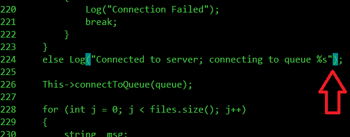 Como Achar Erros no Printf via Dump 2018-01-25 [tag_coding] Às vezes, e apenas às vezes, é útil ter um dump do processo que acabou de capotar e ter um singelo backup do pdb (arquivo de símbolos) dos binários envolvidos nessa tragédia. Com alguns cliques pontuais e uma análise simples da stack, da variável e do código envolvido é possível chegar em um veredito sem muitas controversas se foi isso mesmo que gerou o crash. No caso peguei hoje um caso assim. como-achar-erros-no-printf-via-dump |
| Unique Cafés Especiais 2018-01-24 [tag_food] Corpo fraco pra médio, amadeirado e doce com amargo imperceptível. Aeropress após testar com prensa francesa durante transição. unique-cafes-especiais |
| Sangue Negro 2018-01-23 [tag_movies] Com uma longa introdução sem falas que praticamente diz tudo que precisamos saber do protagonista para entender seus atos durante toda a longa, mas empolgante, história de sua ascensão na indústria do petróleo, Sangue Negro não perde o ritmo e o significado em nenhum momento. Sua fotografia é delineada por sombras e contornos nítidos no horizonte, sempre a nos lembrar do óleo negro, implícito em cada cena, mesmo que não esteja lá. E, quando está, não raro impregna a face das pessoas ou até as fere. Até a trilha sonora, baseada em sons ritmados, evocam a todo o momento as bombas puxando o petróleo para a superfície. sangue-negro |
| Como Apagar o Prompt do seu Programa Windows 2018-01-23 [tag_coding] Geralmente se cria um projeto console/prompt quando há a necessidade de interfacear com o usuário com o uso da tela preta, saída padrão, etc. E no caso do Windows também há a possibilidade de criar um programa Win32 onde não há prompt, pois a função do programa ou é ser invisível ou criar, sabe como é, janelas. Mas nenhum dos dois possibilita ambos ao mesmo tempo. Este snippet permite que você faça isso. como-apagar-o-prompt-do-seu-programa-windows |
| Dirk Gently's - Segunda Temporada 2018-01-19 [tag_series] A segunda temporada de Dirk Gently's prova que é possível sim construir obras audiovisuais que se baseiam fortemente no espírito do autor britânico Douglas Adams. Se o filme Guia do Mochileiro das Galáxias já dava uma pequena ideia da mente criativa de Adams e DGS01 possuía um season finale de cair o queixo, este S02 coloca agora o próprio core da história, com suas dezenas de personagens, quase tão complexo, denso e fascinante quanto os próprios textos de onde essas ideias surgiram. dirk-gentlys-segunda-temporada |
| O Exorcista 2018-01-18 [tag_movies] O Exorcista. Apesar de cercado de lendas e maldições em sua produção, podemos dizer que o resultado é um pequeno milagre. Se trata de um filme de terror que se constrói aos poucos em cima de um drama e personagens que são bem formados, e não jogados como os terrores de hoje em dia. Ao final, temos pouco mais que 15 minutos de cenas horripilantes. Mas essas cenas horripilantes só são assustadoras porque possuem todo um pano de fundo desta história. É preciso ver para crer o que o Cinema conseguiu produzir mesmo com o uso de bonecas, vômitos voadores e uma criança descendo escadas da maneira mais não-convencional possível. o-exorcista |
| A Melhor Escolha 2018-01-18 [tag_movies] [tag_cinemaqui] Se não fosse pelo meu editor, o Vinicius Vieira, eu provavelmente nunca faria o link entre o diretor Hal Ashby e Richard Linklater. Isso porque este "A Melhor Escolha", assim como foi "Jovens, Loucos e Mais Rebeldes", pode-se chamar uma "continuação espiritual" de um filme que o antecede dirigido por Ashby, "A Última Missão". Mas o que Linklater faz é algo ainda maior, incidentalmente se declarando com este filme o diretor que, assim como Ashby, observa a humanidade através das pessoas em seu dia-a-dia, conversando, interagindo e discutindo sobre a própria vida. a-melhor-escolha |
| Mantissa Café Fazenda Campestre 2018-01-17 [tag_food] Equilibrado, mais doce e bem sutilmente amargo; pouco amadeirado com retrogosto semi persistente em corpo fraco e pouco aromático. Preparando no meio da tarde conversando com a Renata/Regina. mantissa-cafe-fazenda-campestre |
| Humberto Barberis Edicion Limitada 2015 2018-01-17 [tag_food] Frutado como Malbec; corpo leve. Contra congelado que descongelei mais ou menos sozinho. humberto-barberis-edicion-limitada-2015 |
| A Última Missão 2018-01-17 [tag_movies] Assistir esse filme dá um gostinho de sair com os amigos, e por estar com eles, poder ser um babaca algumas vezes, e em outras tentar fazer a coisa certa. Este filme é sobre errar e lamentar sobre os erros quieto e não roubar os sonhos dos outros. Este filme é sobre como seres humanos se conectam facilmente, onde uma semana passa voando e como mesmo assim ela se torna inesquecível. a-ultima-missao |
| A Repartição do Tempo 2018-01-17 [tag_movies] [tag_cinemaqui] A Repartição do Tempo é a contribuição brasileira recente sobre filmes que discutem a não-unicidade dos indivíduos. E como toda contribuição brasileira em um gênero de nicho muito específico ela tropeça na realização pelos aspectos mais básicos. Como colocar Dedé Santana no filme. a-reparticao-do-tempo |
| O Rei do Show 2018-01-14 [tag_movies] O Rei do Show já foi formatado para ser de fato um show. Na broadway. Todos os elementos permanecem em cena. De repente um grupo começa a cantar (de novo! e de novo!) e eles participam de todos os cenários e grupos no palco na mesma canção. O show que está sendo celebrado é o da própria vida. Os números de dança não privilegiam ninguém em específico. Todos possuem igual importância no quadro. Tal qual a vida. Estamos todos aqui, na mesma pedra rochosa orbitando uma estrela média e onde as pessoas ainda têm medo e raiva do diferente. Só nos resta cantar em vez de falar. Não porque estamos em um musical, mas porque essa é a maneira de espantar o lado sombrio de nossa existência. o-rei-do-show |
| Eu, Tonya 2018-01-13 [tag_movies] [tag_cinemaqui] Para quem gosta de biografias que contam a história de esportistas com uma infância difícil, uma carreira rodeada de percalços, uma dose sadia de ironia, um final tragicômico e uma trilha sonora com os hits da época, então "Eu, Tonya" talvez seja para você o filme do ano. Do início, pelo menos. eu-tonya |
| Corpo e Alma 2018-01-13 [tag_movies] Corpo e Alma possui um lindo pano de fundo: ele observa a humanidade em alces, bois e humanos. A primeira cena é em uma floresta intocada, com dois cervos. Observamos seus olhares e seus movimentos. Há um lago paradisíaco e um filete de água que se esvai como se fosse infinito. Em um dado momento, um alce coloca sua cabeça sobre as costas do outro. Há uma comunicação invisível ali. Mas humana. Esse é o sentido deste longa. corpo-e-alma |
| Tô Ryca! 2018-01-12 [tag_movies] Selminha, ou Samantha Schmütz, faz aqui a pobretona padrão brasileira que mora no morro do Rio de Janeiro com sua amiga inseparável e igualmente quebrada Luane. Ambas com nome de pobre (e Selminha é de fato o nome dela, de RG) e sem muitas perspectivas de vida, ambas trabalham como frentista e são obrigadas a passar os perrengues do dia-a-dia de todo pobre: condução lotada, peguetes que não querem saber de compromisso e tudo o que você pode imaginar que os roteiristas Fil Braz e Vitor Brandt inspiradamente obteram do cotidiano padrão brasileiro, ligeiramente pintado como novela global. to-ryca |
| O Resgate do Soldado Ryan 2018-01-12 [tag_movies] Aquele filme que tem tudo pra dar errado, mas que por uma série de milagres se torna uma obra de arte. A farofa de Steven Spielberg aliada a um roteiro marcado por momentos que sintetizam o sentimento contraditório da guerra pelos olhos de seus soldados. E uma frase que marca o cinema de guerra: "cada pessoa que eu mato parece me levar cada vez mais longe de casa". o-resgate-do-soldado-ryan |
| O Caçador de Pipas 2018-01-12 [tag_movies] Eu não li este livro. E nem preciso. O Caçador de Pipas é romance ficcional puro, adaptado da maneira mais eloquente e visual jamais vista. Uma história que é uma longa sequência, que passa por décadas e diferentes cenários, personagens, situações. Com o pouco que o filme apresenta ele se torna complexo o suficiente para nos fazer prender a atenção pela história do jovem Amir como o própro Amir prendia a atenção de seu servo e amigo Hassan contando uma das mil e uma histórias de seu livro. A essência de contar história está na essência deste filme. E é por isso que ele é tão bom. Ele segue um fluxo literário em forma de cinema, apresentando detalhes que marcam a cada momento e são retornados no momento propício. Quando chega o terceiro ato nos lembramos como se tivéssemos acabado de ver o final da amizade desses dois, e como a vida segue longos arcos que, se Deus permitisse, gostaríamos de fechar antes de partir. o-cacador-de-pipas |
| Forrest Gump: o Contador De Histórias 2018-01-12 [tag_movies] Difícil não sonhar com este filme. Ele é a síntese da história americana unida com a síntese do seu próprio espírito. Forrest Gump é tudo o que um ser humano médio nunca conseguirá ser, ainda que seu QI seja muito superior ao de Forrest. O que falta em nós e sobra em Forrest é ação. O que sobra em nós e falta em Forrest é o intelecto fruto dos sonhos vazios e incompletos de nossa existência. Dessa forma, Forrest é um ser humano completo como muitos nunca chegarão a sonhar ser. forrest-gump-o-contador-de-historias |
| Capitão Phillips 2018-01-12 [tag_movies] Este é um filme tenso. Bem tenso. Ele começa já tenso. Daí ele caminha para algo mais tenso ainda. O realismo do filme de Paul Greengrass (O Ultimato Bourne) remete diretamente à história real que ocorreu com o real Capitão Phillips. Tom Hanks está em um papel ingrato para ele, mas ainda assim faz muito e bonito. Ele é um capitão carismático, que tenta salvar sua tripulação de piratas somalianos que abordam seu navio. Ele tenta negociar de todo jeito, e alguns momentos, quando o longa começa a perder um pouco o ritmo, ele é retomado novamente graças às expressões, à forma de agir e de falar do personagem capturado por Hanks. E apenas isso já é digno de assisti-lo. capitao-phillips |
| Black Mirror - S04E02 - Arkangel 2018-01-12 [tag_series] Talvez a história mais fraca de toda a série Black Mirror, Arkangel é o segundo capítulo da quarta temporada e fala sobre a relação entre mãe e filha. A mãe sofre um trauma no parto da filha e em quase perdê-la em um parque. Isso é o suficiente para que ela tenha incapacidade de comunicação com sua filha e utilize um mecanismo de monitoração extremamente controverso: ver e ouvir o que sua filha está fazendo. black-mirror-s04e02-arkangel |
| Black Mirror - S04E01 - USS Calister 2018-01-12 [tag_series] A quarta temporada de Black Mirror começa razoavelmente bem, mas dá sinais de cansaço. A ideia de brincar com Star Trek, vinda de autores obviamente fascinados por séries como essa e Além da Imaginação (há uma brincadeira igualmente inventiva no último episódio dessa temporada) deram origem ao terror estelar de simulação que irá nos mostrar que a série começa a abusar dos conceitos de simulação (jogos ou não) e em alguns momentos as ideias no papel (como ideia e argumento) não foram tão bem conduzidas. black-mirror-s04e01-uss-calister |
| A Teoria de Tudo 2018-01-11 [tag_movies] Não dá para dizer que o novo filme de James Marsh, que ganhou o Oscar pelo excepcional O Equilibrista e teve seu Projeto Nim rodando os festivais do mundo e ganhando prêmios, faz qualquer injustiça à vida de Stephen Hawking, o brilhante físico teórico que foi acometido por uma doença neuro-motora desde quando jovem, mas mesmo assim conseguiu dar progresso não apenas à sua vida profissional como pessoal. Nem podemos dizer que o ator Eddie Redmayne (Os Miseráveis) faz um mal trabalho retratando o cientista. Porém, há uma maldição que rondar toda cinebiografia de pessoas que ainda vivem: o endeusamento de um ícone acaba desumanizando o personagem, o tornando uma mera sombra de um indivíduo (o mesmo pondendo ser dito de sua esposa, cujo livro foi a base para este filme), indivíduo este que para se tornar a figura famosa e amada com certeza teria muito mais facetas que justamente os fãs gostariam de conhecer. a-teoria-de-tudo |
| A essência da coletividade (Dunkirk) 2018-01-08 [tag_movies] [tag_cinemaqui] Dunkirk, filme sobre um evento histórico do diretor Christopher Nolan, simplifica a narrativa humana buscando a essência da coletividade: o que causa um grupo ser maior que a soma dos seus indivíduos? Mas simples não quer dizer simplista, e Nolan sabe muito bem disso. Ele começa apresentando um soldado francês fugindo do exército alemão em busca de resgate. Seus colegas são mortos ou feridos nas últimas jardas onde uma operação gigantesca de retirada de tropas está sendo conduzida pelos britânicos. Não demora muito para que este indivíduo se torne apenas um no meio de milhares de anônimos em busca da sobrevivência. dunkirk-especial |
| Wee Heavy Bodebrown Strong Scotch Ale 2018-01-07 [tag_food] Cerveja que o Rodrigo da Kelly guardou por um ano e maio. Uma cerveja com xarope forte, amargo e levemente doce com corpo médio. Bom com torresmo que trouxemos do Recanto do Antônio. wee-heavy-bodebrown-strong-scotch-ale |
| Diamantina Blonde Ale 2018-01-07 [tag_beer] Com IBU 20, é bem leve e equilibrada. Uma das cervejas mais equilibradas, embora de corpo fraco, dessa viagem. Uma das cervejas de presente pro Rodrigo que ele abriu conosco. diamantina-blonde-ale |
| Dos Caras American Wheat 2018-01-05 [tag_beer] Para um trigado não muito doce nem denso. Tomado no Pub Catedral. dos-caras-american-wheat |
| Dos Caras California Common 2018-01-03 [tag_beer] Uma das cervejas dessa cervejaria de Nova Lima, próximo de BH, mas tomado em Diamantina (no restaurante de esquina próximo da descida). dos-caras-california-common |
| Ashby Pale Ale 2018-01-03 [tag_beer] Um pale ale de Minas (Amparo) com corpo fraco para médio como uma Lagger e ligeiramente amarga. Primeira visita no restaurante Recanto do Antônio tomado com o PF do dia (frango). Essa cerveja de Amparo é bem melada para uma Pale Ale e tem um final de amargo adoçante que não me agrada. Mas é consistente e pode combinar bem com pratos semi doces, como o ensopado de curry que a mulher fez para harmonizar. Consumir em ritmo médio porque tem corpo médio e é cerveja para assistir standup na Netflix. ashby-pale-ale |
| Krug Bier Chope 2018-01-02 [tag_beer] Um blonde equlibrado, denso, corpo médio. Produzido artesanalmente na região de Diamantina e tomado primeira tarde na viagem do ano-novo de 2018 no Pub Catedral, sentado no bar. krug-bier-chope |
| Erased: Piloto 2017-12-27 [tag_series] Esta é uma série fantástica baseada tão fortemente em um mangá e anime que ele pode ser o delírio do fã das obras originais ou atiçar a curiosidade do cinéfilo. Por que a curiosidade? Se observarmos os movimentos de câmera, a forma de disposição dos personagens e dos elementos em cena perceberemos que esta obra continua sendo um anime em forma. erased |
|
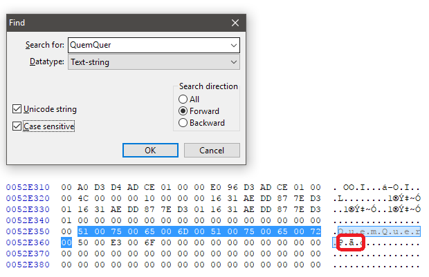 Cmd e o encoding fake 2017-12-26 [tag_coding] Qualquer um que já tenha mexido no prompt de comandos do Windows sabe que ele permite você escolher qual code page utilizar para enviar e receber comandos. O Windows é todo em UTF-16, mas as saídas podem vir de qualquer programa com qualquer encoding. A missão do cmd.exe é usar o encoding escolhido pelo usuário para exibir os caracteres na tela. Vamos supor que nós criemos uma pasta com acentos no nome (pelo Explorer para não ter erro): cmd-e-o-encoding-fake |
| Santa Helena Reservado Cabernet Sauvignon 2015 2017-12-25 [tag_food] Acho que fritou no mercado, pois ele ficou bem pouco aromático e um tanto amargo com corpo médio pra fraco. Aberto no Natal aqui em casa. santa-helena-reservado-cabernet-sauvignon-2015 |
| Los Gatos Pinot Noir 2016 2017-12-24 [tag_food] Peguei este bom custo/benefício para o Natal em Osasco, ele tem corpo muito fraco, vai fácil, pouco frutado e levemente aromático. los-gatos-pinot-noir-2016 |
| The 7th Generation Carmenere Wine of Chile 2013 2017-12-20 [tag_food] Equilibrado com corpo forte. Confraternização BitForge 2017 (Fábio trouxe). the-7th-generation-carmenere-wine-of-chile-2013 |
| Sítio do Canto Alto Caparaó MG 2017-12-20 [tag_food] Café Gourmet da tiazinha de fim de ano, mineiro doce mas sem bichisse e com um pouquinho do amargor mineiro. Comecei a provar na festa de confraternização da empresa aqui em casa. sitio-do-canto-alto-caparao-mg |
| Perini Fração Única Merlot 2012 2017-12-20 [tag_food] Gostaria de provar este reserva menos bêbado; parecia bem bom, com corpo fraco pra médio. Confraternização BitForge 2017 (o Gianni trouxe, ganhamos do cara da Ali). perini-fracao-unica-merlot-2012 |
| Domingo Molina Sauvignon Blanc 2016 2017-12-20 [tag_food] Um dos brancos (o último) de Salta que tinha guardado, é meio desagradável. Confraternização BitForge 2017. domingo-molina-sauvignon-blanc-2016 |
| Callia Alta Torrontes 2016 2017-12-20 [tag_food] Azedo e doce na medida certa. Confraternização BitForge 2017. callia-alta-torrontes-2016 |
| Se você não precisa de classe você não precisa de classe 2017-12-17 [tag_coding] Nos últimos dias me deparei com o seguinte (pseudo-)código: int main(int argc, const char **argv) { MyClass obj; HRESULT hr = obj.init(); if ( SUCCEEDED(hr) ) { if ( args have "cmd1" ) se-voce-nao-precisa-de-classe-voce-nao-precisa-de-classe |
| Star Wars: Os Últimos Jedi 2017-12-14 [tag_movies] Uma série de filmes que mantém uma mitologia sobre uma energia vital no Universo por décadas precisa ser atualizada de tempos em tempos para não perder o compasso com a Ciência. Se na primeira trilogia a Força era algo mais espiritual e na segunda trilogia algo mais biológico, essa terceira trilogia acertadamente a coloca como nem uma coisa nem outra: é algo metafísico. E com isso estabelece pela primeira vez uma base que se pode trabalhar com as diferentes camadas de realidade. Não só mais falamos sobre política em SW (essa dualidade esquerda/direita já cansou), mas sobre filosofia, moral, valores, etc. Quem diria que Star Wars chegaria em sua fase adulta? star-wars-os-ultimos-jedi |
| Algo de Novo 2017-12-14 [tag_movies] Esta comédia italiana sobre o mundo feminino de meia-idade brinca entre os estereótipos da moça séria que quer achar o cara sério depois da desilusão de sua vida e sua amiga mãe solteira que fala em poder ficar sem encostar nos homens como um copo de uísque para um alcoólatra. Sua maior virtude são as duas atrizes por trás dessas duas "garotas" problemáticas. Elas são especialistas em fazer comédia. Não são exageradas além do limite apesar de conhecer os limites para comédias românticas. O rapaz que contracena com elas está aí para mostrar o oposto, de que o exagero sempre prejudica o equilíbrio das relações. algo-de-novo |
| A Origem do Dragão 2017-12-14 [tag_movies] [tag_cinemaqui] A Origem do Dragão possui a alma de Bruce Lee. Ele é simples, conciso, mas ao mesmo tempo seus personagens chamam a atenção apenas por existirem, assim como Bruce chamava a atenção de Hollywood apenas por ser um lutador chinês trazendo lições milenares para o Ocidente. Observe os dois mestres de kung fu deste filme e me diga que não consegue entender e admirar a própria filosofia desta arte marcial. Curiosamente o filme enxerga mais beleza nesses personagens, o que dizem e fazem, do que a forma como lutam. O que já é uma ótima notícia vinda de um trabalho intimista que poderia cair no pecado de chamar atenção para si mesmo pelas lutas e holofotes. a-origem-do-dragao |
| Assassinato no Expresso do Oriente 2017-12-11 [tag_movies] Hercule Poirot de Kenneth Branagh sem dúvida alguma é uma das melhores caracterizações do personagem de Agatha Christie. Olhe seu perfeito e grandioso (e simétrico!) bigode. Ouça seu sotaque belga definindo sua personalidade através do seu rápido raciocínio e sua maneira de enxergar o mundo. "Existe o certo e o errado. E no meio não há nada." Tire este Poirot e a história e produção irão rápido demais para o filme terminar são e salvo. assassinato-no-expresso-do-oriente |
| Batman: O Retorno 2017-12-10 [tag_movies] O tom gótico e fantasioso de Batman é algo a se considerar quando tentamos enxergar a lógica por trás dessas adaptações de Tim Burton para o Cinema. A nossa mente suscetível ao fantástico pode querer interpretar criaturas como Mulher-Gato ou Pinguim como criações semelhantes a Homem-Aranha. Mas não se engane: são distúrbios psicológicos inseridos em uma distopia randiana onde os melhores são os piores. A máxima "dog eats dog" gera aberrações como Joker, Catwoman, Penguim e, claro, o Homem-Morcego. batman-o-retorno |
| O Poder e o Impossível 2017-12-09 [tag_movies] [tag_cinemaqui] Esse é um filme que teria de tudo para não dar certo, ser clichezão, etc. Ele lembra 127 horas, mas enquanto James Franco não é um exemplo de empatia o ator Josh Hartnett atinge a glória ao nos preocuparmos com seu destino, mesmo que na neve ele seja um completo idiota. o-poder-e-o-impossivel |
| Com Amor Van Gogh 2017-12-09 [tag_movies] O que foi feito neste Loving Vincent é um trabalho curioso, quase fascinante e que merece uma visita pelo menos. Eles pegam a história em torno da morte do pintor moderno Vincent Van Gogh e montam um thriller no estilo Agatha Christie, meio teatral e meio noir, mas com toques artísticos e dramáticos porque se trata da história de um artista renomado. A grande propaganda deste filme é que todos os seus quadros foram "pintados à mão", no mesmo estilo do pintor, o que torna o filme um trabalho adaptado da obra do artista. É um trabalho de fundo verde e de 100 pintores. Algo único, com certeza. Mas uma obra de arte? com-amor-van-gogh |
| Pela Janela 2017-12-08 [tag_movies] [tag_cinemaqui] Pela Janela é um pequeno retrato de uma realidade que bate pesado no começo e que aos poucos vai nos alimentando de uma esperança no vazio, na lembrança, na memória. O ser humano é uma coisa curiosa. Sua vida certinha e ajeitada por décadas pode desabar a qualquer instante. Seu chão pode ruir. E mesmo assim, o tempo magicamente cura tudo. pela-janela |
| Lucky 2017-12-07 [tag_movies] [tag_cinemaqui] No princípio não havia nada. Havia uma tartaruga. Não. Um cágado. O cágado segue andando em seu ritmo. Havia também um velho. E o velho também segue andando. Lucky é seu nome, e consequentemente seu filme. Porém, este é um filme que palavras se cruzam. E significados. Dessa forma, "lucky" em inglês quer dizer sortudo, o que pode querer dizer que este pode ser o filme sobre o que é ser sortudo. E do ponto de vista de todos nós que vivemos, estar vivo é ser sortudo. Estar vivo e testemunhar o último filme de Harry Dean Stanton com a presença do diretor David Lynch atuando. E você sabe que a coisa é séria quando vemos Lynch dizer: "existem algumas coisas no mundo que são maiores que todos nós... e um cágado é uma delas!". lucky |
| 13 Reasons Why 2017-12-07 [tag_series] Essa novelinha pré-adolescente consegue ser bem irritante às vezes. Não é uma produção barata nem tosca. Muito pelo contrário. Há muitas virtudes narrativas em um trabalho que parece descartar apenas uma virtude dentre as que escolheu: coerência. E é através dessa "pequena" falha que podemos concluir que, apesar de tecnicamente interessante e artisticamente bonito, "13 Reasons Why" é uma merda colossal que revela que esta geração tem pouquíssimas chances de sobreviver a eles mesmos. 13-reasons-why |
| Mulheres Divinas 2017-12-03 [tag_movies] [tag_cinemaqui] Mulheres nas ruas com placas de protesto dizendo "não somos animais de estimação". Queima de sutiãs em praça pública. Amor livre sob o efeito de drogas. Calças boca de sino. Para quem não conhece muito bem os detalhes por trás do movimento feminista dos anos 70 pode achar tudo um grande exagero. E Mulheres Divinas vem aí atualizar a cartilha das pessoas e até das atuais feministas, demonstrando todo o mecanismo por trás de por que, afinal de contas, as mulheres reclamavam tanto para lavar louça. mulheres-divinas |
| Lumière! A Aventura Começa 2017-12-02 [tag_movies] [tag_cinemaqui] "Lumière! A Aventura Começa" entra nos arquivos dos inventores do cinematógrafo para descobrir onde surgiu o Cinema. Sim, porque a criação dos irmãos Lumière, assim como o cinetoscópio de Thomas Edison, ou qualquer outra invenção maluca da época, não era muito mais que isso: uma invenção maluca. Um entretenimento qualquer. E uma das muitas aventuras que estavam por vir no século seguinte. lumiere-a-aventura-comeca |
| Mantissa Café Fazenda 2017-12-01 [tag_food] Comecei a provar este café de Poços, mas não me lembro mais. Troquei pelo do Café Gourmet e talvez volte a provar. mantissa-cafe-fazenda |
| Maníaco 2017-11-30 [tag_movies] Estou em uma sequência foda de gore. E estamos apenas no segundo. Depois de Cronenberg e seu clássico techno-obscuro A Mosca, este bem mais recente Maníaco, também uma espécie de remake, e estrelado parcialmente por Elijah Wood e parcialmente por sua voz, nos apresenta o ponto de vista mais fascinante de toda história de serial killers: o ponto de vista dele mesmo. maniaco |
| Apenas um Garoto em Nova York 2017-11-29 [tag_movies] [tag_cinemaqui] A sensação de Apenas um Garoto em Nova York é parecida com tantos outros. Uma mistura de drama social com romance misterioso. Com uma femme fatale mais realista. E uma relação familiar problemática. Relações de poder que são fachadas sociais... e no topo de tudo isso, um garoto tentando fazer a coisa certa. Quer dizer, pelo menos enquanto ele acredita existir a coisa certa. Ah, e o seu narrador, que o conhece tão profundamente que "seu" garoto se torna o personagem para o qual seu livro foi criado. apenas-um-garoto-em-nova-york |
| Visages, Villages 2017-11-27 [tag_movies] [tag_cinemaqui] Visages, Villages é um filme fácil de assistir. Se trata de um documentário road-movie com um artista jovem cuidando do projeto de uma artista experiente. Ambos se respeitam e estão juntos pelo mesmo objetivo: viver. visages-villages |
| A Mosca 2017-11-27 [tag_movies] Poucos filmes da época de infância traziam tantas cenas marcantes quanto os filmes de David Cronenberg. E entre eles com certeza A Mosca é o que sintetiza o horror de seus filmes em um formato clássico e ideal. Porque se trabalhos como A Hora da Zona Morta, Um Método Perigoso e Cosmópolis são mais psicológicos e internos aos seus personagens, A Mosca traz o velho dilema e a velha maldição do homem e dos caminhos que a ciência pode tomar de uma forma mais universal. a-mosca |
| Petits Detours Grenache Collline de La Moure 2016 2017-11-26 [tag_food] Degustação nervosa na casa do Incrível, este francês com uva esquisita tem aroma e sabor de frutas maduras, um azedo equilibrado com uma mistura excêntrica. petits-detours-grenache-collline-de-la-moure-2016 |
| Capitão Fantástico 2017-11-25 [tag_movies] "Poder para o povo. Abaixo o sistema." Essas duas frases tipicamente anarquistas resumem a filosofia de mais este filme sobre uma família disfuncional. A virtude deste filme é que ele nos faz enxergar a sociedade atual do ponto de vista de uma outra forma de viver. E se todos nós fôssemos criados para sermos filósofos e seguir a razão? Bom, se isso fosse possível seria o paraíso na Terra. capitao-fantastico |
| Liga da Justiça 2017-11-24 [tag_movies] Há alguns bons minutos no começo de Liga da Justiça onde eu gostaria muito de voltar a ser criança e vibrar vendo Mulher Maravilha, Batman e Flash juntos! Esses bons minutos, no entanto, passam logo, e no lugar vemos exatamente 120 minutos de uma obra sem começo nem fim, visualmente e narrativamente confusa, barulhenta e com uma miscelânea de cores que não combinam muito bem juntas. A colagem de Mulher-Maravilha dentro de um cenário, ambos com cores bem díspares, é o que representa para mim a união entre milhões sendo gastos em uma produção sempre barata demais. liga-da-justica |
| A Ópera de Paris 2017-11-24 [tag_movies] [tag_cinemaqui] Eu não entendo muito o conceito de ópera. Nem de balé. Representações caríssimas de uma história que nos faz voltar a uma época antes do Cinema, da TV e da internet pelo bem da manutenção de uma cultura considerada erudita já há muito tempo é um gasto desnecessário de recursos públicos. E claro que são recursos públicos. Ou você achou que alguém pagaria de livre e espontânea vontade por um espetáculo desses? E como em um momento é dito em A Ópera de Paris, há um jogo de interesses por trás da decisão de flutuar o preço entre cerca de 300 euros ou 150. E quando a discussão gira em torno de um ingresso mais "barato" de 150 euros, talvez seja a hora de abrir uma nova discussão: a de prioridades nos gastos do dinheiro dos outros. a-opera-de-paris |
| Meu Malvado Favorito 3 2017-11-23 [tag_movies] Esta é uma continuação nos mesmos moldes do primeiro e do segundo filme. O mesmo estilo de piada nos acompanha, seja de Gru, de Agnes, das outras meninas, da sua agora namorada, e agora do seu irmão gêmeo e um vilão que, ao contrário do primeiro moderninho Vetor, agora é um bandido ao estilo anos 80. E também descobrimos que o pai de Gru era um vilão estilo anos 60, digno dos filmes de James Bond. Ou Austin Powers. meu-malvado-favorito-3 |
| Emoji: O Filme 2017-11-23 [tag_movies] Não é sintomático que um filme chamado Emoji tenha tão poucas emoções? Talvez não. Afinal de contas, os emojis basicamente são a simplificação de nossa linguagem e dos nossos sentimentos. Onde um email com uma poesia é colocado na lixeira porque "usar textos é tão retrô" e onde no lugar de um emoji com uma única emoção enlatada surge um emoji com várias! emoji-o-filme |
| Em Busca de Fellini 2017-11-23 [tag_movies] [tag_cinemaqui] Em Busca de Fellini é desses filmes que homenageiam grandes diretores tentando extrair um pouco de seu estilo. É claro que o resultado geralmente nunca atinge o brilhantismo do autor original. E nem é pra isso. E como homenagem, o filme de Taron Lexton consegue explorar tantas nuances do diretor italiano que o ponto mais impressionante do projeto é que tanto tempo se passou após seu último filme, e mesmo assim, o sonho da humanidade continua. em-busca-de-fellini |
| Quinta de Bons-Ventos 2015 Lisboa 2017-11-21 [tag_food] Tom violáceo na cor com corpo médio pra forte, dependendo da sua sensibilidade; um pouco alcoólico demais, médio tânico, frutado maduro com geleia. Abrindo para comer com queijo de cabra e presunto espanhol que sobrou na geladeira. quinta-de-bons-ventos-2015-lisboa |
| CCPPBRSP 14 Postergado 2017-11-21 [tag_ccppbr] Pois é. Não vai rolar dessa vez. Por falta de quórum, o 14o. Encontro CCPPBR está postergado. Não cancelado. Mas não acontecerá essa semana. Se você já se inscreveu não se preocupe. Iremos realizar o estorno das compras do PagSeguro. Basicamente é isso. ccppbrsp14-postergado |
| Póstumo 2017-11-20 [tag_movies] A diretora/roteirista Lulu Wang se acha tão esperta... nesse seu primeiro longa ela explora uma história comum o suficiente para não despertar muita surpresa e rasa o suficiente para não despertar interesse em um ou outro diálogo de fato interessante. Porém, próximo da direção, o roteiro se torna muito bom. Planos confusos e ângulos sobrepostos em uma bagunça de temas tenta mostrar como a arte deste homem é tão boa se comparada ao que é feito nesse filme. postumo |
| Palestras do CCPPBR14 2017-11-20 [tag_ccppbr] Esse sábado, dia 25/11/2017, teremos em São Paulo nosso 14o. encontro de programadores e aficionados C/C++. Teremos palestras do pessoal das antigas e de um pessoal novato. Ou seja, terá palestras para todos os gostos. As palestras foram selecionadas pela própria comunidade CCPP através de votação, e houve excesso de palestrantes. C++ está bombando! palestras-do-ccppbrsp14-vini-kujawski-delduca-fernando |
| Patti Cake$ 2017-11-18 [tag_movies] [tag_cinemaqui] Patti Cake$ poderia ser facilmente resumido como uma mistura entre "Preciosa: Uma História de Esperança" (Lee Daniels, 2009) e "8 Mile: Rua das Ilusões" (Curtis Hanson, 2002), e qualquer um que tenha assistido a esses dois longas irá se identificar com o drama dos jovens artistas anônimos nas periferias das cidades grandes, rejeitados automaticamente pelas autoridades locais como vagabundos perdidos na sociedade. patti-cake |
| Thelma 2017-11-16 [tag_movies] [tag_cinemaqui] Thelma é uma gostosa revisita ao mundo do thriller de "Carrie, a Estranha" (o original de Brian de Palma), que discute religião com um certo distanciamento e compreensão. Atualizado conforme manda o figurino, temos no pacote discussões sobre sexualidade, autoridade e gnosticismo. E em cima disso tudo um possível arcabouço crítico por cima da sociedade atual. thelma |
| Ninguém Está Olhando 2017-11-16 [tag_movies] [tag_cinemaqui] Ninguém Está Olhando é um estudo de personagem eficiente, o que não quer dizer que necessariamente agradável. É difícil entender os motivos do protagonista sem cair nos velhos preconceitos. E com isso é difícil se identificar com um rapaz tão problemático. Porém, se você pertence à geração mimimi, tenho boas notícias pra você. ninguem-esta-olhando |
| Casa Valduga Heitor Villa-Lobos Cabernet Sauvignon 2011 2017-11-13 [tag_food] Amadeirado, aromático, frutado e tânico nas medidas certas; um vinho extremamente redondo. Provado no evento do Hotel Intercontinental (foi de graça, ainda por cima!). casa-valduga-heitor-villa-lobos-cabernet-sauvignon-2011 |
| Alias Grace 2017-11-12 [tag_series] Homens retardados, animalescos, vivendo em torno de mulheres histéricas, depressivas ou apáticas. Este é o retrato da história contada por Grace Marks para um doutor, igualmente abjeto, Dr. Simon Jordan. A narrativa de Grace sob os olhos da série da Netflix representa um dos últimos pilares do movimento igualmente abjeto chamado (ainda) de feminismo: a crença marxista que homens e mulheres são definidos através de sua relação de opressores e oprimidos. Da mesma forma que a fantasia de Marx sobre o sistema de classes. alias-grace |
| Histórias de Amor Que Não Pertencem a Este Mundo 2017-11-11 [tag_movies] [tag_cinemaqui] Você já conviveu intimamente com alguém que possui muito medo do desconhecido, uma ansiedade angustiante e que não consegue deixar de falar sobre todas as terríveis possibilidades (para essas pessoas é uma certeza) que o futuro nos espera? Se sim, talvez "Histórias de Amor Que Não Pertencem a Este Mundo" o ajude a entender melhor essa pessoa, e a entender que, apesar de tanto fatalismo, há por trás um ser humano que deseja ser feliz à sua maneira. historias-de-amor-que-nao-pertencem-a-este-mundo |
| Pica Pau: o Filme 2017-11-06 [tag_movies] Em todos esses anos dessa indústria vital, essa é a primeira vez que isso me acontece. Nem os novos desenhos politicamente corretos do pica-pau de cabeça vermelha estragaram a magia. Mas este "Pica-Pau: A Animação de Computador da Década de 90" de fato consegue nos fazer renegar que esse passarinho biruta tem qualquer relação com os desenhos originais. pica-pau-o-filme |
| O Outro Lado da Esperança 2017-11-06 [tag_movies] [tag_cinemaqui] O Outro Lado da Esperança cria metáforas visuais que ao longo da história servirão para martelar o incômodo e o absurdo. Vemos um navio se aproximando. A câmera se aproxima dele, que atraca no porto. É um navio que carrega asfalto. E do asfalto eis que surge um imigrante. Sujo de ponta a ponta. Toma um belo banho e está limpo de novo. A "mesma coisa" acontece com o vendedor que se livra de todo seu estoque e transforma o seu dinheiro em um restaurante. Ambos estão tentando tocar suas vidas, mas é difícil, pois ambas estão tocadas pela truculência das autoridades. Bom, pelo menos há um pouco de humor para ilustrar o absurdo da situação. o-outro-lado-da-esperanca |
| Sítio Morada dos Pássaros Campestre MG 2017-11-05 [tag_food] Doce na medida certa, corpo médio, um pouco aromático e não-enjoativo. Aeropress no café da manhã com as crianças. sitio-morada-dos-passaros-campestre-mg |
| Cordillera Andina Cabernet Sauvignon 2016 2017-11-05 [tag_food] Corpo médio, com certo caráter; pouco aromático, mas com um tom amadeirado que se junta com o frutado no gosto. Acabei uma garrafa com a Ana. cordillera-andina-cabernet-sauvignon-2016 |
| Olhando Para As Estrelas 2017-11-04 [tag_movies] [tag_cinemaqui] Olhando para as Estrelas é um filme fofinho que não enxerga dificuldades, apenas facilidades. Com isso ele perde um potencial drama da vida real, ou troca pela visão de um mundo de sonhos, onde tudo é possível. Mas se tudo é possível tão "fácil" assim, qual a graça da conquista? olhando-para-as-estrelas |
| 120 Carmenere Cabernet Franc Cabernet Sauvignon Reserva Especial 2016 Santa 2017-11-02 [tag_food] Blend bem equilibrado, frutado, aromático e fácil de beber em um médio corpo pra menos. Churrasco na casa do Glauser. 120-carmenere-cabernet-franc-cabernet-sauvignon-reserva-especial-2016-santa-rita |
| True Detective: Primeira Temporada 2017-11-01 [tag_series] Este é o tipo de série que pode ir de maçante para fascinante, dependendo de quem assiste. Com um roteiro intrincado, sério, sisudo demais, a história contada em oito capítulos segue uma sequência difícil de ser equiparada. Porém, mais do que isso, aqui temos dois personagens em pés de igualdade. Cada um deles é interpretado por um monstro da atuação. Como não amar Matthew McConaughey e Woody Harrelson depois de seus Rus Cohle e Marty Hart? Esta, sim, é uma tarefa difícil. true-detective-primeira-temporada |
| Your Name 2017-10-31 [tag_movies] Para os que estão acostumados com os média-metragens do diretor/roteirista Makoko Shinkai, como O Jardim das Palavras, vão perceber uma característica marcante em seu novo trabalho, Your Name: não há aqui uma história completa a ser contada; mas sensações. É a jogada de uma miscelânea de ideias cativantes, como se colocar no lugar do outro, que dá origem à sua essência, que é explorada inúmeras vezes em lindas sequências de animação. your-name |
| True Detective: Primeiras Impressões do Piloto 2017-10-29 [tag_series] True Detective, em sua primeira temporada, é uma série que apresenta Matthew McConaughey e Woody Harrelson em papéis principais em uma narração dupla baseada em depoimentos e flashbacks. Ao final do piloto percebemos que o assunto em que ambos estavam sendo investigados continua à tona, o que gera um dos ganchos mais impressionantes em uma série. Ambientado em Lousiana com locações em lugares pobres e isolados, esta é uma série que por estas pistas já deveria chamar a atenção de quem está procurando por algo acima da média. Mas deixe-me explicar como se chega a essa conclusão assistindo apenas ao primeiro episódio. true-detective-primeiras-impressoes |
| Meu Primeiro Amor 2017-10-29 [tag_movies] A morte pode ser um catalisador de emoções. Através dela passamos por uma transformação dentro de nós que ao mesmo tempo que nos enfraquece pela dor insuportável também nos fortalece pela nossa capacidade de sobreviver. E no fim de um processo de luto algo maravilhoso acontece: voltamos para a vida mais fortes. De vez em quando iremos mexer nessa ferida do passado, e certamente irá sangrar. Mas é através desse sangue que fazemos novos pactos com os que ainda estão vivos. Porque no fundo de todos nós não há muitas diferenças. Somos humanos; estamos condenados a viver sabendo que um dia iremos morrer. Ou pior: os que nos cercam também irão. meu-primeiro-amor |
| O Amante Do Dia 2017-10-28 [tag_movies] O Amante do Dia é um filme francês da atualizade em preto e branco e com ideinhas liberais. É de um diretor liberal com alguma ideia de que tudo aquilo de ter casos extraconjugais seja algo muito moderninho em 2017. E algo me diz que ele viajou no tempo e foi teletransportado diretamente dos anos 60. o-amante-do-dia |
| Terra Selvagem 2017-10-27 [tag_movies] [tag_cinemaqui] Terra Selvagem é o melhor filme da carreira de Jeremy Renner, que já possui alguns trabalhos bem interessantes, mas nunca tão intensos como esse. E isso dentro de um filme redondíssimo, que atravessa eventos que poderiam render vários clichês e desvia de todos eles pela sua qualidade narrativa e construção de atmosfera. E, claro, por Jeremy Renner. terra-selvagem |
| Thor Ragnarök 2017-10-25 [tag_movies] [tag_cinemaqui] Você já sabe: todos os filmes de super-heróis são iguais. Pelo menos os da Marvel são. Mas ultimamente alguns têm se tornado mais iguais que outros. Sempre que um filme é lançado temos uma horda de apreciadores e detratores, e ultimamente a horda de apreciadores tem elogiado muito o clima despojado de Dead Pool e Spiderman, além da atmosfera cartunesca e divertida de Guardiões da Galáxia em seus dois volumes. E eis que surge Thor: Ragnarök, repetindo alguns conceitos de sucesso desses trabalhos anteriores e se tornando com isso um dos filmes mais iguais dos últimos anos. E isso, ao falarmos da Marvel, é um senhor elogio. thor-ragnarok |
| Otherlife 2017-10-24 [tag_movies] A protagonista de Otherlife é bem bonitinha. Tem olhos claros. Ela coloca um líquido negro nos olhos das pessoas, e muito mais nela mesma. É um composto de nanotecnologia que apresenta um programa que te leva aos sonhos mais malucos. Por que malucos? Porque tem bugs, seu bobinho! otherlife |
| Favela Olímpica 2017-10-24 [tag_movies] [tag_cinemaqui] Favela Olímpica é um documentário feito sobre um evento específico que acaba colocando em debate todo um sistema injusto. Ele é o novo Cabra Marcado Pra Morrer ou o novo Aquarius? Quase. Ele tem muitos elementos desses dois filmes, especialmente o primeiro. E um dos elementos mais vitais para seu funcionamento é a impunidade tão gritante que ela se torna visível, palpável e até apontável. favela-olimpica |
| 24 Frames 2017-10-24 [tag_movies] [tag_cinemaqui] Eu sei, eu sei. 24 Frames pode não ser o melhor entretenimento para o espectador médio... não, "pode não ser" é um senhor eufemismo. Ele não é um entretenimento. Ponto. O novo filme de Abbas Kiarostami (Cópia Fiel, Um Alguém Apaixonado) vai além da própria linguagem cinematográfica começando do começo: o que é um frame? Você vai descobrir. Em 24 deles. 24-frames |
| Sete Quedas Poços de Caldas Expresso Torrado 2017-10-22 [tag_food] Doce amadeirado e oleoso, corpo médio, pouco aromático e seco. Primeiro café provado na Aeropress. sete-quedas-pocos-de-caldas-expresso-torrado |
| Bem Vindos Ao Mundo 2017-10-22 [tag_movies] Kristen Wiig é uma mestre da comédia física. Aqui ela faz uma protagonista bipolar que ganha na loteria e escala rapidamente seu distorcido mundo em uma versão com muito dinheiro. É possível dar boas risadas de sua performance, que consegue não apenas convencer, mas deixar uma pulga atrás da orelha: esta é uma comédia ou um drama? bem-vindos-ao-mundo |
| A Leoa 2017-10-22 [tag_movies] A Leoa é um filme norueguês que passaria despercebido não fosse sua produção cara e sua característica peculiar: ser um filme sobre um caso anormal que no fundo é a história da vida de uma pessoa que, independente de sua situação física, está muito bem, obrigado. Dessa forma, a grande "atração" do filme é servir de isca para o grande público comprar a ideia de acompanhar a vida de uma mulher que sofre de uma anomalia genética que a faz crescer pelos por todos os poros de sua pele, tendo a feição de uma leoa e digna dos bizarros shows que existiam até na primeira metade do século passado. E agora nós, espectadores de um filme de 2016, somos a plateia ainda interessada nessa história. Isso de certa forma resume como as pessoas continuam as mesmas, apesar de novas regras de conduta. a-leoa |
| A Filosofia de Rick And Morty: Primeira Temporada (anotações) 2017-10-21 [tag_series] Reassistindo a Primeira Temporada de Rick & Morty para revisar alguns pontos filosóficos fascinantes da série. Acabei vendo a Segunda Temporada e, como já acabou, a Terceira também. E a terceira é provavelmente a melhor de todas. Vejam! Eu sou Pickle Rick!! rick-and-morty-filosofia |
| Pão de Forma da Dona Neusa 2017-10-21 [tag_cooking] Bata no liquidificador um ovo, uma colher de sopa de banha, uma colher de sopa de manteiga, uma colher de sopa de açúcar, uma colher de chá de sal, 300ml de leite morno e uma colher de sopa de fermento biológico. Junte em uma vasilha com 500g de farinha de trigo e amasse (não precisa sovar); o aspecto da massa deve ser pegajoso para líquido. Coloque na forma e lá deixe até dobrar de tamanho. Coloque para assar em forno pré-aquecido a 180 graus por cerca de 30 minutos. pao-de-forma-da-dona-neusa |
| O Jovem Karl Marx 2017-10-21 [tag_movies] [tag_cinemaqui] É muito comum fãs de quadrinhos e livros ficarem ansiosos em ver o resultado das histórias retratadas nesses formatos transpostas para o cinema. E o resultado que mais os agrada geralmente é o mais fidedigno ao conteúdo original. Pois bem: eis que surge este O Jovem Karl Marx, que direto dos livros de escola, retrata um período da História de maneira formal e burocrática, o que não é um defeito se você gostar de História, economia, política ou até filosofia. o-jovem-karl-marx |
| O Diabo Veste Prada 2017-10-21 [tag_movies] Meryl Streep em um dos melhores papéis de sua carreira (o que não é pouca coisa). Olhe sua entonação entediada, sem levantar a voz, sem sequer olhar para os olhos de seus funcionários. Olhe como enumera de maneira apática e precisa de onde veio o azul que sua nova secretária está usando. O azul dela tem um nome específico, a secretária não se liga pra moda, e Streep simplesmente a coloca em seu lugar. o-diabo-veste-prada |
| As Aventuras Do Capitao Cueca O Filme 2017-10-21 [tag_movies] As Aventuras do Capitão Cueca prova que no Cinema, dado qualquer conceito, ele pode ser explorado e se tornar um ótimo filme. Mesmo que este conceito envolva duas crianças criativas e zoeras que falam com o espectador, pregam todas as peças da escola e criam um super-herói em seus quadrinhos que não usa uma cueca por cima das calças, mas apenas a cueca. as-aventuras-do-capitao-cueca-o-filme |
| Uma Verdade Mais Inconveniente 2017-10-20 [tag_movies] [tag_mostra] [tag_cinemaqui] Se você já viu Uma Verdade Inconveniente, Oscar de melhor documentário de 2006, provavelmente vai se sentir em casa com essa continuação. Ela é espalhafatosa, desinformativa e um apelo à emoção. Mas isso não é nenhuma novidade para você. Conhecida por jogar números estatísticos como forma de combate, o folheto de propaganda na forma de documentário continua balançando ao vento para quem quiser e quem não quiser ver. E como os voluntários de programas sociais que vemos na Avenida Paulista, há a sensação que mais do mesmo não irá resolver o problema. Exceto que agora a calçada ficou um pouco menos agradável de se andar. uma-verdade-mais-inconveniente |
| Paulaner Salvator Doppelbock 2017-10-20 [tag_beer] Boa, mas acho que doce além do que gosto. Tomando com pão e carne louca. paulaner-salvator-doppelbock |
| O Motorista de Táxi 2017-10-20 [tag_movies] [tag_cinemaqui] O Motorista de Táxi é um filme feito para grandes públicos, mesmo com cenas fortes, mas necessárias, pela frente. Em troca há doçura, aventura, emoções fáceis que estão meticulosamente manipuladas para aquele espectador que vai sair do cinema pensativo, mas realizado. o-motorista-de-taxi |
| Human Flow 2017-10-20 [tag_movies] [tag_mostra] [tag_cinemaqui] Human Flow é um documentário em seu formato clássico. Provavelmente as 300 horas de filmagens do projeto servirão de acervo sobre a grande imigração de nosso tempo. E provavelmente as pouco mais de duas horas de filme serão lembradas dessa forma, também. human-flow |
| My Little Pony: O Filme 2017-10-16 [tag_movies] "My Little Pony: O Filme" continua sendo tudo que os fãs de My Little Pony poderiam querer mais um pouco. E estou falando até dos fãs adultos da série de animação. Applejack, Rainbow Dash e suas amigas continuam usando o poder da amizade para enfrentar todos os perigos e transformar seus inimigos em leais aliados. my-little-pony-o-filme |
| Uma Razão Para Recomeçar 2017-10-14 [tag_movies] [tag_cinemaqui] Uma Razão Para Recomeçar, se você ainda não sabe, vou te poupar um tempo ou te dar uma dica: ele tem aquele formato que te faz chorar em alguns momentos e que te dá esperança no final. Agora, dependendo de você, a esperança pode ser uma mensagem otimista sobre a vida ou a esperança que o filme acabe. No meu caso foi para que o filme acabasse. E, adivinha só? Minhas preces foram atendidas! uma-razao-para-recomecar |
| El Pampero 2017-10-11 [tag_movies] [tag_cinemaqui] Um homem cansado de sofrer com sua doença aceita seu destino e parte para o mar. Uma mulher acuada diante das circunstâncias tenta fugir do destino. Quando um policial entra na história o que está flutuando em águas calmas vai aos poucos se agitando, conforme a tempestade vem chegando. El Pampero, ou "O Mimo", é o encontro tenso e dramático em uma paisagem entre duas fronteiras (Argentina e Uruguai), e onde as regras são frouxas o suficiente para questionarmos se tudo aquilo não é uma metáfora para a vida. el-pampero |
| A Guerra dos Sexos 2017-10-11 [tag_movies] [tag_cinemaqui] Guerra dos Sexos é uma viagem leve, mas não inconsequente, pelos fascinantes anos 70. Nessa viagem achamos um episódio na História igualmente fascinante que envolve tênis e feminismo. E se tênis é um embate de egos, o feminismo é um embate de forças. Forças essas que, se hoje encontramos um certo equilíbrio entre gêneros, naquele tempo eles ainda estavam por se formar. a-guerra-dos-sexos |
| Inscrições para o 14o. CCPPBRSP 2017-10-06 [tag_ccppbr] Como já foi avisado anteriormente (mas agora com local definido), nosso próximo encontro acontecerá em São Paulo (capital) dia 25 de Novembro de 2017 (sábado), no Station Vila Olímpia. Teremos uma sala equipada para palestras e coffe-break de manhã e de tarde. Mais detalhes no hot site do evento. inscricoes-14-ccppbrsp |
| Steins;Gate 2017-10-05 [tag_series] [tag_animes] Não é fácil contar bem uma história de viagem no tempo. Mais difícil ainda é conseguir fazer ela ter sentido. E mais difícil ainda é conseguir que o espectador sinta o movimento espaço/tempo dos personagens, a apoteose de todo criador de sci-fi desta linha. Poucos devem ter chegado a essa proeza: De Volta para o Futuro (a trilogia), A Máquina do Tempo, Os 12 Macacos, Efeito Borboleta, O Predestinado, Primer, Harry Potter e o Prisioneiro de Azkaban. E Steins;Gate, que se esforça em homenagear todos os exemplos citados e ainda superá-los em inventividade. Uma viagem e tanto. steins-gate |
| Bohemia 14-Weiss 2017-10-05 [tag_beer] Doce, equilibrada, aromáticas; corpo fraco pra uma Weiss, perde gás fácil. Tomei com pizza que achamos perto de casa. bohemia-14-weiss |
| Quattrocchi Malbec Tempranillo 2014 2017-10-03 [tag_food] Comprado no mercado de casa envinagrado, passou do ponto. Tentando beber com queijos. Pouco frutado, seco no começo com final mais suave que o esperado. quattrocchi-malbec-tempranillo-2014 |
| Entre Irmãs 2017-10-02 [tag_movies] [tag_cinemaqui] Entre Irmãs é um filme de época feito também em outra época. Uma época mais ingênua, onde filmes como esse não seriam tão clichês, tão bregas. Infelizmente, para o público de hoje, clichê e brega é exatamente o que ele se propõe. entre-irmas |
| Churchill 2017-09-28 [tag_movies] [tag_cinemaqui] Churchill é uma pálida tentativa em reviver os últimos momentos da Segunda Guerra sob a prisma do polêmico e brutal ministro britânico. Feito praticamente para televisão e sem muita atmosfera nem história para conseguir realizar a imersão necessária, seu principal defeito é acreditar piamente que o que está sendo visto na tela é emocionante e honroso, simplesmente por ter em seu epicentro o grutão inglês mais famoso da política recente. churchill |
| Detroit em Rebelião 2017-09-27 [tag_movies] [tag_cinemaqui] Detroit em Rebelião é a continuação da dramática abertura na ferida histórica estadunidense que tem sido feita desde que a última cicatriz se rompeu após recentes confrontos entre negros e a polícia desencadear a morte de inocentes e movimentos de resposta como "Black Lives Matter". E como este drama pseudo-documental demonstra, a história sempre pode se repetir. Principalmente quando há tanto a ser revisto por ambos os lados de uma segregação que ainda está nas cabeças e mentes da nação americana. detroit-em-rebeliao |
|
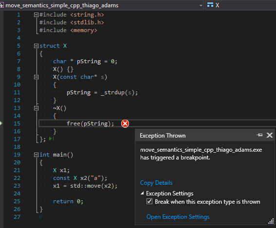 C++ Moderno Arranca os Cabelos por Você (std::move e classes simples). 2017-09-26 [tag_ccpp] Um dos [últimos posts] no grupo CCPPBR do Thiago Adams chama mais uma vez a atenção para a complexidade infinita que linguagens como C++ estão preferindo tomar. Esta é a geração que irá sofrer as dores de compatibilidade com o passado mais que todas as outras que virão. cpp-arranca-os-cabelos-por-voce |
| The Birth Of Sake 2017-09-24 [tag_movies] Este filme é uma passagem integral, burocrática e um tanto poética de uma fabricante de saquê nos moldes tradicionais do Japão. Há pouca informação e muita pseudo-emoção. Quase um apelo pela sobrevivência dos tradicionalistas, frente a uma indústria que automatizou quase todo o processo com máquinas. the-birth-of-sake |
| Laerte Se 2017-09-24 [tag_movies] Laerte é um cartunista famoso que em uma fase avançada da vida decide sair do armário da maneira mais torta possível: começa a se vestir de mulher. Só isso. O que se segue é um filme que analisa de maneira repetida, clichê e bem morna as "aventuras" deste artista simples, humano e, ainda que saindo palavras militantes de sua boca, extremamente avesso a qualquer problematização da classe violenta e hierarquizada dos transsexuais. laerte-se |
| Entrevista com Darren Aronofsky 2017-09-24 [tag_movies] [tag_cinemaqui] "Talvez nós tenhamos interpretado erroneamente a Bíblia por muito tempo." Essa foi a frase-chave de uma coletiva com Darren Aronofsky que envolveu todas as interpretações polêmicas a respeito de seu novo filme, "Mãe!", que apresenta uma alegoria que inevitavelmente cai nas preocupações ecológicas atuais. Com a presença apenas do diretor, foi uma entrevista ágil, com boas perguntas e com uma presença de espírito de Aronofsky em cada resposta. entrevista-darren-aronofsky |
| Caracter Malbec 2017 2017-09-23 [tag_food] Fácil de beber, meio azedinho; qualidade acima do preço. Tomado no churrasco-niver do Toshio. Frutado simples, corpo leve, vinho jovem agradável, quase doce. É o baratinho do mercado de casa. caracter-malbec-2017 |
| Pendular 2017-09-18 [tag_movies] [tag_cinemaqui] Pendular possui alguns simbolismos, algum conflito, algumas situações. E nada disso fornece pistas suficientes para entender o que está acontecendo. Bonito por bonito, temos uma obra vazia e incoerente. Justamente o que seus idealizadores buscam. Uma das primeiras falas do filme deixam isso claro: "fxda-se a coerência". pendular |
| Matrix: Ghost in The Shell 2017-09-18 [tag_movies] De todas as teorias malucas criadas em torno da trilogia das Irmãs Wachowski, acredito que esta que tenho para lhes falar supera em simplicidade e elegância. Por isso mesmo acredito que esta seria a solução empregada por elas caso quisessem deixar toda a trama às claras. Felizmente, não quiseram, o que deu vazão para um esoterismo e obscurantismo que torna o conjunto de três filmes indecifrável. Mas, fala sério. Sou programador. Depois de Ghost in the Shell as coisas têm se tornado mais claras ainda. Quer ver como toda essa fábula é explicada por ela mesma? matrix-ghost-in-the-shell |
| Death Note: Notas da Morte 2017-09-18 [tag_series] [tag_animes] Esta série japonesa se estende por mais tempo do que devia e não entende todo o seu potencial narrativo. Esta é uma história que possui altos e baixos em torno de uma ideia poderosa, e arrisco dizer que seus altos superam seus baixos. Mas sua conclusão é clichê, comercial demais para sentir-se o peso do que estava sendo discutido. death-note |
| Titanic 2017-09-17 [tag_movies] Vinte anos depois revejo este drama épico de James Cameron. Na época em que estava em cartaz assisti umas cinco vezes, então sabia de todos os movimentos de câmera e diálogos de cor. Mas o que torna este filme um exemplo de Cinema em seu máximo, mesmo sendo extremamente brega? titanic |
| Onde Está Segunda? 2017-09-15 [tag_movies] Hoje em dia até os títulos dos filmes encomendados pela Netflix são ruins. E nesse caso não há erro: esse filme é muito ruim. Não ruim de trash (para se divertir), nem ruim de estilo (para ficar com ódio). Ruim de você não sentir nada, mesmo. onde-esta-segunda |
| Mãe! 2017-09-15 [tag_movies] [tag_cinemaqui] Para quem já conhece o diretor perfeccionista e gnóstico Darren Aronofsky não será nenhuma surpresa constatar que seu novo trabalho, "Mãe!", além de tecnicamente impecável é denso, tenso e emocionalmente visceral. E embora nenhuma dessas palavras consiga sequer arranhar toda a expressividade e simbolismos do criador de Cisne Negro, O Lutador e Noé, esta continuação temática de Fonte da Vida não precisa de muitas apresentações aos fãs, mas ao mesmo tempo se torna uma viagem sensorial que é universal, e que apenas a experiência audiovisual do Cinema consegue oferecer em tantas camadas. mae |
| Escopo Fechado: Receita De Fracasso 2017-09-12 Quando questionado por clientes se haveria uma forma de fechar o escopo de um projeto maior que 20 horas, dessa forma limitando a interação em uma entrega única já com os requisitos definidos por ele, geralmente nossa resposta é: "isso nunca vai funcionar; ou se funcionar, vai sair bem caro". escopo-fechado-receita-de-fracasso |
| Eisenbahn Extra Escura Dunkel 2017-09-12 [tag_beer] Não tão doce quanto a última vez que provei; uma dunkel que tem gosto de café por conta do malte cerrado; bom corpo e não-enjoativo. Almoço com bifum e purê apimentado. Combina perfeitamente com carne reduzina na pressão, como a que a Mitiko fez no almoço de hoje. eisenbahn-extra-escura-dunkel |
| Vilamonge Café Artesanal Gourmet Solo Vulcânico Poços de Caldas 2017-09-11 [tag_food] Este é o café vulcânico encontrado em Poços de Caldas no Doce da Roça, onde tem o melhor pão de queijo da região. Na despensa. 2017-11-21 Doce, equilibrado e de corpo bem leve, não é para quem gosta de café forte, mas é viciante. Vários aeropress durante os dias em casa. vilamonge-cafe-artesanal-gourmet-solo-vulcanico-pocos-de-caldas |
| Subasio Alto Brasileiro Poços de Caldas 2017-09-11 [tag_food] Mais um café do mercado de Poços de Caldas. Na despensa. Amargo, corpo médio pra forte, meio desequilibrado na acidez e pela prensa um tanto forte na gordura. Provando no café da manhã de domingo com a sogra e um pão na chapa de ferro. subasio-alto-brasileiro-pocos-de-caldas |
| Sete Quedas Expresso Torrado Poços de Caldas 2017-09-11 [tag_food] Comprado na cafeteria do lado do Araújo em Poços de Caldas. Na despensa. sete-quedas-expresso-torrado-pocos-de-caldas |
| Mantissa Café Fazenda Especial Poços de Caldas 2017-09-11 [tag_food] Café chique comprado no mercado de Poços de Caldas. Na despensa. mantissa-cafe-fazenda-especial-pocos-de-caldas |
| Fazenda Mira Flor Restinga SP Alta Mogiana Grão Gourmet 2017-09-11 [tag_food] O café que chegou junto com os de Poços pelo Grão Gourmet. Tem um gosto cítrico e corpo médio para fraco, no estilo dos Starbucks mais insossos. fazenda-mira-flor-restinga-sp-alta-mogiana-grao-gourmet |
| Cachoeirinha Volcano Coffee Spresso Poços de Caldas 2017-09-11 [tag_food] Um dos cafés vulcânicos de Poços de Caldas. Na despensa. cachoeirinha-volcano-coffee-spresso-pocos-de-caldas |
| Décimo-Quarto Encontro CCPPBR CFP (Call for Papers) 2017-09-11 [tag_ccppbr] Está aberta a temporada de Call For Papers do nosso próximo encontro de programadores e aficionados C/C++ Brasil, que deverá acontecer em São Paulo (capital) dia 25 de Novembro de 2017 (sábado). Para quem deseja reservar seu lugar e uma promoção nos ingressos clique no link de pré-inscrição disponível no site do grupo. Mais detalhes serão atualizados no nosso site. 14-encontro-ccppbrasil-cfp |
| Chope Gonçalvez IPA Poços de Caldas 2017-09-09 [tag_food] Não tão forte, mas muito equilibrada. Tomada direto na cervejaria na avenida em Poços. chope-goncalvez-ipa-pocos-de-caldas |
| Chope Gorillaz Lager Poços de Caldas 2017-09-08 [tag_food] Encorpada e não tão doce; colarinho cheio de aromas. Tirada perfeitamente no Justo no Terraço em Poços. chope-gorillaz-lager-pocos-de-caldas |
| A Gente 2017-09-05 [tag_movies] [tag_cinemaqui] Um bom resumo para o inusitado "A Gente", que chega quatro anos atrasado aos cinemas, é: a história de um carcereiro competente demais para o cargo. Tão competente que virou cineasta, e aqui volta à sua antiga profissão, além de dirigir, roteirizar, filmar, montar e produzir o documentário, demonstrando (mais uma vez) a situação muitas vezes insalubre com que os agentes penitenciários trabalham, e concluindo uma trilogia pessoal do cineasta. a-gente |
| Ativando Ubuntu No Windows 10 2017-08-29 Pensei que o Ubuntu já estivesse na Windows Store disponível para qualquer gamer instalar (não sei por que um gamer faria isso). Mas não. Ainda é necessário fazer os passos de desenvolvedor expert de Windows para ativar esta opção. ativando-ubuntu-no-windows-10 |
| O Sequestro 2017-08-28 [tag_movies] [tag_cinemaqui] O Sequestro caminha por todos os clichês dos filmes do gênero sem tropeçar em nenhum deles. Na verdade ele pisca para o espectador em alguns momentos, de tão óbvia a situação. É como se antes de acontecer algo imaginássemos: "aqui sempre acontece tal coisa". E quando não acontece, eis a recompensa do filme. o-sequestro |
| Filosofia De Mr Robot 2017-08-28 [tag_series] Então eis que ergue-se um mundo niilista, até um pouco absurdista, onde o controle é uma ilusão. O sonho de garoto de salvar o mundo encontra novos significados do que é mundo e do que é salvar. Elliot não é apenas multifacetado pela figura de sua família; ele É sua família. E não apenas isso, mas consequência do próprio mundo que ele deseja salvar. Há desafios hercúleos em sua jornada, que parecem intransponíveis para nós, mortais. O que dirá , então, para um hacker esquizofrênico. mr-robot-filosofia |
| Grão Gourmet Fazenda Macaubas de Cima Patrocínio MG 2017-08-27 [tag_food] Corpo fraco, amadeirado, ligeiramente ácido e azedo no retrogosto; bem seco, não deve agradar maioria dos paladares. Apenas mais uma manhã de domingo tomando puro. grao-gourmet-fazenda-macaubas-de-cima-patrocinio-mg |
| Chef & My Fridge 2017-08-25 [tag_series] Da Geladeira para a Mesa, Take Care of My Refrigerator, Take Care of the Fridge, Take Care of the Refrigerator, Good Care of the Fridge. Com tantos nomes já é possível deduzir que é um programa maluco da TV coreana, traduzindo a forma simpática, polida e divertida com que os asiáticos costumam se comportar. Isso inclui este programa gastronômico que mesmo sendo uma repetição barata à exaustão em seu formato, consegue divertir sem ofender, e ainda educar a respeito da alta gastronomia sem muitos exageros. E isso vindo da Coreia do Sul é algo a se destacar. chef-and-my-fridge |
| A Vigilante do Amanhã: Ghost In The Shell 2017-08-25 [tag_movies] Scarlett Johansson possui uma beleza natural que encanta tanto pela beleza quanto pelo natural. E nem ela consegue trazer algo de novo ao remake ocidental live-action de um dos trabalhos filosoficamente mais ambiciosos dos últimos tempos. E se nem ela consegue, não serão efeitos digitais nem diálogos em inglês que o farão. a-vigilante-do-amanha-ghost-in-the-shell |
| Dupla Explosiva 2017-08-24 [tag_movies] [tag_cinemaqui] Dupla Explosiva pega carona na atmosfera cômica e absurda de Dois Caras Legais (Shane Black, 2016) e se dá muito bem com isso. O resultado é um filme de ação que consegue ser tenso com uma história que nos envolva, protagonizado por personagens carismáticos. dupla-explosiva |
| Filmes e Diretores Favoritos 2017-08-23 [tag_movies] Essas perguntas no estilo de listas me fazem travar. Minha resposta sempre será injusta porque eu vou esquecer filmes e diretores que gosto mais do que os que eu citar. Mas, sei lá, no momento não estou focando em filmes ou diretores específicos, mas em técnicas e estilos específicos. Por exemplo, revendo séries que gostei muito, como Breaking Bad, Westworld e Mr. Robot. filmes-diretores-favoritos |
| F is for Family - Segunda Temporada 2017-08-21 [tag_series] Enquanto a primeira temporada afiava seu tom do humor para algo dos anos 70 que divertia os que não ligam para o politicamente correto ao mesmo tempo que demonstrava por que estamos na fase do politicamente correto, a sequência de F is for Family explora melhor seus personagens, dando a eles a medida certa de tempo em cena. Exceto pela caçula que quer ser programadora de computadores. E sempre que sua ambição aparece faz meus olhos brilharem. f-is-for-family-s02 |
| Atypical 2017-08-21 [tag_series] Mais do mesmo com o algoritmo já batido da Netflix. Depois do "gênero" indie invadir Hollywood com suas famílias desajustadas, agora é a vez dos espertos computadores da gigante de streaming entregar uma família desajustada por série. Esta tem no pacote uma mulher traidora e um autista. atypical |
| 150 Miligramas 2017-08-21 [tag_movies] [tag_cinemaqui] Há uma tendência atual do cinema francês em explorar casos que estabelecem de maneira caricata a dualidade clichê "mocinhos versus bandidos". E em "150 Miligramas", mais uma vez, o bandido é uma fabricante de medicamentos (uma corporação), e o mocinho é alguém que luta contra um sistema cruel nascido das próprias preocupações com a famigerada saúde pública francesa. 150-miligramas |
| Nederburg 1791 Cabernet Sauvignon 2016 2017-08-20 [tag_food] Corpo leve, Cabernet bem comum; um pouco azedo, nada tânico. Lasanha na casa de Dona Neusa em casa cheia. nederburg-1791-cabernet-sauvignon-2016 |
| Doidas e Santas 2017-08-17 [tag_movies] [tag_cinemaqui] Doidas e Santas é um filme brega, bem brega, que usa o caminho do convencional e do preguiçoso, dando mais uma vez a entender que novelas em formato de filme soam cada vez mais antiquadas. E nesse caso é só olhar para os créditos iniciais e finais, com uma trilha sonora da programação televisiva da madrugada (ou de um bar decadente) e os letreiros em tons azuis e bordô que se torna evidente que a sala de cinema se transformou em uma máquina do tempo, que nos joga para os anos 80. Os viajantes perdem a memória após a sessão. doidas-e-santas |
| Naked 2017-08-14 [tag_movies] É possível imaginar que este seria um dos primeiros filmes da Netflix cujo roteiro está mais próximo de ter sido feito por Machine Learning do que por roteiristas humanos. Ele é esquemático, usa fórmulas antigas, consagradas ou comentadas por décadas. Apela para movimentos de câmera fáceis, sem construção de cena. A ação está toda pronta já em trabalhos como GTA. E GTA é "apenas" um video-game. naked |
| Santa Ana Seleccion 2016 2017-08-10 [tag_food] Sem ano, sem uva, de Mendoça/Argentina; Sem muito aroma ou sabor, custa 12 reais no mercado; corpo fraco. Tomando porque a Mitiko comprou pra fazer bebida doce. santa-ana-seleccion-2016 |
| Afterimage 2017-08-10 [tag_movies] [tag_cinemaqui] Afterimage é uma breve biografia que se passa em uma distopia onde o governo proíbe toda forma de Arte contra seus interesses e... ops. Espera. Não é uma distopia, é a Polônia soviética. Ambientado como de costume em obras dessa época, sob uma paleta de cores cinzenta e fria, os únicos tons que arriscam um pouco de felicidade estão nos quadros do pintor Wladyslaw Strzeminski e seus alunos. Ele é professor de História da Arte, um dos precursores do avant-garde, e aparentemente tudo ia bem, ainda que com a esposa adoecida. Até ele começar uma nova tela e ela ficar com um tom avermelhado, denunciando o enorme cartaz que está sendo pendurado na fachada do seu prédio com a figura do ditador Joseph Stalin, e metaforicamente denunciando uma mudança nos rumos daquela sociedade. afterimage |
| O Jantar 2017-08-09 [tag_movies] [tag_cinemaqui] O Jantar é um filme difícil de ver. Ele é tenso, coloca seus nervos à flor da pele, discute temas difíceis e ainda por cima possui um elenco afiado em encarnar personagens difíceis de engolir em uma discussão de fachada que revela mais sobre o espectador que está assistindo do que sobre aquelas pessoas tentando encontrar consenso onde não existe nenhum. o-jantar |
| Paulistânia IPA Caminho das Índias 2017-08-07 [tag_food] Forte quase além do limite... mas aguenta bem. No Recanto encontro da BF owners. paulistania-ipa-caminho-das-indias |
| Hacker-Pschorr Munich Gold 2017-08-07 [tag_beer] Para uma cerveja puro malte ainda falta bastante malte; voltar para a Proibida. Bebi com o Strauss na reunião de acionistas no laguinho. hacker-pschorr-munich-gold |
| Estranha Obsessão 2017-08-07 [tag_movies] Pawel Pawlikowski, diretor e roteirista do mais recente e interessante Ida, traça aqui através do romance de Douglas Kennedy um thriller que vai escalando naturalmente, dando tempo ao espectador para se habituar ao drama do escritor Tom Ricks (o habilidoso Ethan Hawke), que chega em Paris em busca da filha de seis anos e sua esposa, aparentemente possui problemas com a polícia e ainda tem sua mala e carteira roubadas. A partir dessa premissa surge um suspense tenso sem forçar muito a situação. Um trabalho econômico e eficiente. estranha-obsessao |
| Toast: A História de uma Criança com Fome 2017-08-06 [tag_movies] Este é um drama leve que conta com alguns segredos sutis em sua história e algumas atuações marcantes ou no mínimo bem corretas. Helena Bonham Carter é o destaque e o centro de um filme que poderia ser chato como biografia, mas consegue ser fascinante ainda que não conheçamos de quem se está falando. toast-a-historia-de-uma-crianca-com-fome |
| O Reino Gelado: Fogo e Gelo 2017-08-06 [tag_movies] [tag_cinemaqui] O Reino Gelado é a continuação da continuação de uma série de animação russa fora do circuito Disney/Dreamworks, então não é um filme que se possa esperar o ápice de qualidade dos grandes estúdios. E mesmo assim não deixa de ser uma aventura razoável, com história feita para televisão, mas com efeitos que lembram como hoje há uma acessibilidade incrível a efeitos digitais que antigamente demandavam anos e muitos milhões. o-reino-gelado-fogo-e-gelo |
| O Mínimo Para Viver 2017-08-06 [tag_movies] Mais um drama da Netflix que usa o seu formato já usado em trabalhos como The Fundamentals of Caring (Amizades Improváveis no IMDB). Há uma pessoa que vive com dificuldades, as famílias e desconhecidos em volta, o Keanu Reeves porque sim (o bom é que ele já ganha a graninha do metrô) e um filme leve demais para conseguir causar qualquer comoção ou profundidade no tema que quer abordar. o-minimo-para-viver |
| Décimo-Terceiro Encontro CCPPBrasil (Post Mortem) 2017-08-06 [tag_ccppbr] Mais um encontro que deu certo. No interior de SP em um sábado meio friozinho e meio calor houve o décimo-terceiro encontro de nossa comunidade C/C++ Brasil, em um espaço e coffee-break fornecidos pela empresa Diebold em Indaiatuba. Houve cinco palestras e o dia passou bem rápido. Parabéns a todos os envolvidos pelo sucesso do encontro. 13-encontro-ccppbrasil-post-mortem |
| Tickle Head, O Melhor Lugar Da Terra 2017-08-04 [tag_movies] Este filme canadense de cidadezinha à beira-mar possui o seu charme e o seu humor. Um humor simples, mas que não soa maniqueísta, apesar de ser um pouco. Conta uma história implausível, mas que nos minutos finais toca o coração. Se trata de uma farsa, que não quer dar o braço a torcer que a luta é inútil. Uma metáfora sobre progresso que ignora a realidade para sonhar um pouco. E dar boas risadas. tickle-head-o-melhor-lugar-da-terra |
| Usagi Drop 2017-07-31 [tag_movies] Há algo novelístico e caricato nesse filme cujo único defeito é ser uma história doce e sensível sobre paternidade. E quando digo paternidade não me refiro a pais biológicos, mas à relação entre adultos e crianças que estão sob sua guarda. Por ser um filme japonês há vários detalhes culturais, mas ainda assim ele se esforça por ser universal. usagi-drop |
| Lady Macbeth 2017-07-31 [tag_movies] [tag_cinemaqui] Primeiro simpatize com Lady MacBeth. Ou pelo menos simpatize com sua situação. Comprada junto de um pedaço de terra, ela conhece seu marido, filho do seu comprador, no quarto do recém-casal. Perguntada pela criada se ela estaria com frio ou nervosa, a resposta é um duplo-negativo. Katherine não sente frio. "Tenho a pele grossa", diz ela. No entanto, ela está alheia e à deriva desses dois homens, que a dizem quando e como se portar. Exatamente como se ela fosse propriedade. lady-macbeth |
| Glow 2017-07-31 [tag_series] Mais uma série feminista/SJW pela Netflix. Dessa vez nos anos 80, embora essa década já fosse libertadora para mulheres. É sobre elas entrando na luta livre, como os homens, e não apenas se exercitando na academia de ginástica, todas coloridas e com polainas. A série apresenta uma Alison Brie (Community) irreconhecível. Teoricamente ela paga peitinho (e bundinha) logo no piloto, mas se for ela mesmo, é frustrante como ela mirrou desde a série de comédia que a tornou particularmente desejada. glow |
| Coração de Leão 2017-07-31 [tag_movies] Este filme beira o amador em sua fotografia e roteiro. As atuações, coitadas, não podem fazer nada com esses personagens que se olham o tempo todo e nada dizem de importante. Como seria retratar o começo de um relacionamento qualquer, que poderia ser de qualquer um de nós e que não teria qualquer detalhe diferente? Este filme é assim, com apenas uma exceção: um dos lados é mais baixo que o normal. coracao-de-leao |
| A Minha Casa Caiu 2017-07-31 [tag_movies] Este é mais um daqueles filmes da safra de filmes sobre mulheres. Mas não é um comrom, e sim uma comédia escrachada sobre os absurdos de uma repórter que deseja o cargo de âncora de um jornal importante da região que até então tinha apenas em seu currículo de gafes ser atacada por gatos. a-minha-casa-caiu |
| Migrando Imagens Para Imgur 2017-07-28 Depois de migrar meus blogues para o [Hugo] decidi deixar o repositório mais magro migrando as imagens para um serviço de imagens. O [imgur] me pareceu uma solução simples com uma interface rápida (e uma API Python). Para realizar essa tarefa você vai precisar das ferramentas de sempre: grep, sed, python, vim. E lá vamos nós. migrando-imagens-para-imgur |
| Outlander - Segunda Temporada 2017-07-27 [tag_series] A segunda temporada de Outlander mantém as mesmas virtudes da primeira -- figurino, direção de arte, fotografia -- e ainda melhora a atuação. Concentrado em tentar entregar sempre alguma mudança, por menor que seja, em cada episódio, esta parte da série consegue quase sempre evocar a já bem estabelecida atmosfera de seu início, mas se mantém fraco na tensão de seus dramas, e desperdiça seu maior mote: a luta do dia-a-dia pela mudança do destino. outlander-segunda-temporada |
|
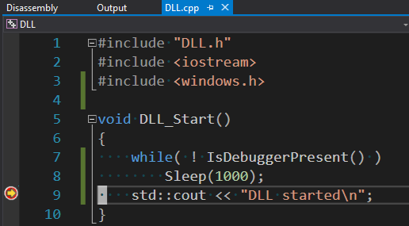 Forma Mais Simples de Depurar Processos Antes do Logon 2017-07-27 [tag_coding] No [post anterior sobre debug] eu havia me focado mais na depuração de processos remotos no Visual Studio 2003 de maneira convencional. Aqui eu vou abordar o assunto de uma maneira menos convencional: usando o Visual Studio 2017 mais novo e depurando uma DLL (C++) que é carregada por um serviço antes do logon no Windows 7. forma-mais-simples-de-depurar-processos-antes-do-logon |
| Colorado Indica Pale Ale 2017-07-27 [tag_beer] Amarga no ponto, corpo médio pra forte. Acompanhou bem as azeitonas pretas pós-hambúrguer com chips de batata-doce. Amarga ligeiramente acima do ponto, corpo médio pra forte. Acompanhando batatas ao forno com bacon, salsichão e alho. colorado-indica-pale-ale |
| Rifle 2017-07-26 [tag_movies] [tag_cinemaqui] Rifle poderia ser chamado de exercício de futilidade, mas quem faz exercício tem o objetivo de melhorar. E não é isso que vemos no filme. Nele há altos e baixos que poderiam sugerir alguma linha de pensamento. O espectador anseia por significado. Mas no final fica claro que tudo não passa de uma grande bobagem. rifle |
| Ravache Puro Malte 2017-07-25 [tag_beer] Corpo leve demais para um puro malte; muita propaganda para nada. ravache-puro-malte |
| Dunkirk 2017-07-25 [tag_movies] [tag_cinemaqui] Dunkirk é um considerável esforço técnico. São tiros disparados, bombas explodindo e hélices se mexendo a todo vapor, conduzidos com um naturalismo impressionante e uma trilha sonora soberba, no sentido pretensioso da palavra. O resultado é uma imersão realista sobre um evento histórico que traz muito mais euforia e catarse do que melancolia pelas misérias da guerra. dunkirk |
| CppTests 2017-07-25 Iniciei um novo projeto no GitHub que tem por objetivo ser minha prancheta de trabalhos para minha palestra no [próximo encontro ccpp]. Há uma infinitude de coisinhas novas na linguagem C++, fora as adições à biblioteca STL, mas que devem passar despercebidas da maioria dos programadores, que está mais é querendo terminar seus próprio projetos. Enquanto alguns conceitos, sintaxes e métodos não se solidificam, vale a pena dar uma espiada no futuro? cpptests |
| Café Gourmet Fazenda Cachoeira Alta Manhuaçu MG 2017-07-25 [tag_food] Corpo médio, certa doçura e caramelo, mas nada enjoativo; pouquíssimo acima do ponto de frescura que suporto. Um café catuaí amarelo e vermelho de Geraldo Antônio da Paixão, com SCAA 85, torrado dia 2017-07-05. cafe-gourmet-fazenda-cachoeira-alta-manhuacu-mg |
| O Reencontro 2017-07-21 [tag_movies] [tag_cinemaqui] O Reencontro traz Catherine Deneuve em boa forma em um filme que, apesar de leve, consegue trazer à tona o tema de uma pessoa que sabe que vai morrer. Porém, é mais que isso, pois ele junta a persona fantástica de Deneuve e de Catherine Frot através dos problemas sociais da atualidade em uma história que lida com perdas e ganhos que se entrelaçam em uma bonita composição da arte que fala sobre a vida. o-reencontro |
| Wäls Session Citra 2017-07-20 [tag_beer] Refrescante, leve, fácil de tomar com comidinhas. Como no almoço com o Taz no Chez. wals-session-citra |
| Wäls Hop Corn IPA 2017-07-20 [tag_beer] Encorpado e um pouco além de amargo. Não acompanhou muito bem com a comida do Chez, onde eu e o Taz almoçamos. wals-hop-corn-ipa |
| Outlander - Primeira Temporada 2017-07-19 [tag_series] Essa série parece uma cria da fórmula criada por Game of Thrones, onde sexo, violência e coadjuvantes de passagem são a lei. Porém, logo fica claro que a intenção nunca foi fugir muito do esquema noveleiro, onde torcemos por um casal principal. Ainda assim, a Escócia e os escoceses são retratados com tanto carinho nostálgico que é possível assistir à novela para se permitir viajar para aqueles tempos de outrora, onde costumes, valores, economia, política e sociedade parecem ligeiramente diferente do que vivemos hoje em dia. outlander-primeira-temporada |
| 13 Encontro (Relâmpago) C/C++ Brasil Indaiatuba (SP) 5 de Agosto de 2017 2017-07-19 [tag_ccppbr] Depois desse título não há muito o que falar. Será um encontro relâmpago porque não tivemos tempo de fazer call for papers nem de muita divulgação, que será feita pela Diebold Nixdorf, a empresa que está patrocinando esta edição. 13-encontro-ccpp-indaiatuba-sp-2017-08-05 |
| Homem-Aranha: De Volta ao Lar 2017-07-09 [tag_movies] A nova re-estreia da série do Homem-Aranha em filme solo -- dessa vez no insosso universo dos Vingadores -- é uma divertida abordagem de um Peter Parker jovem e sem traumas (ou seja: sem Uncle Ben) que atualiza o personagem para uma época pressionada pela gangue do politicamente correto, mas também pela geração do bom humor, das ações sem consequências, do "Homem-Aranha do YouTube". Este é um filme definitivamente para assistir com pipoca, do lado dos filhos, sem estar muito preso aos detalhes que destoam dos gibis. homem-aranha-de-volta-ao-lar |
| Carros 3 2017-07-08 [tag_movies] [tag_cinemaqui] Carros 3 consegue meio que comprovar que a Pixar continua com sua crise de criatividade, mas que isso não é motivo para fazer filme ruim. Então eles abraçam o convencional com carinho, amadurecem mais uma série (depois de Toy Story) e fazem de tudo para não estragar o passeio. Mas como quem não arrisca não petisca esta é mais uma aventura morna no campo das ideias e da emoção de um estúdio que era sinônimo de momentos icônicos do Cinema em forma de computação. carros-3 |
| Julho Agosto 2017-07-05 [tag_movies] [tag_cinemaqui] O clima de um filme como "Julho Agosto" não poderia ser melhor para as férias de meio do ano. Aliás, poderia sim: nós aqui do Brasil poderíamos ter verão, e não inverno, nessa época. Infelizmente todo o calor e o frescor do filme ficam congelados junto com nossas mãos. Mas se você pelo menos estiver bem agasalhado é bem provável que irá conseguir ao menos sentir o coração derreter levemente diante dos acontecimentos inusitados que permeiam essa família moderna francesa. julho-agosto |
| Fala Comigo 2017-07-04 [tag_movies] [tag_cinemaqui] Fala Comigo é um diálogo não apenas entre pessoas, mas entre diferentes máscaras da sociedade. Ele desafia de maneira incisiva nossos conceitos sobre o que é "normal" reinterpretando a realidade para dentro das portas de algumas casas. fala-comigo |
| Crashing 2017-07-04 [tag_series] Eu já falei que a filmografia britânica é obviamente superior aos puritanos estadunidenses, seja no cinema ou em séries de TV. E Crashing não é exceção. Aliás, além de regra, é uma prova que, por contraste, besteiras como How I Met Your Mother já se beneficiariam só de serem produzidas na terra da rainha. A desvantagem dos ingleses é que suas séries são curtas demais. crashing |
| Better Call Saul - Terceira Temporada 2017-07-03 [tag_series] O espírito de Better Call Saul é o mesmo de Breaking Bad. A moral de seus personagens frequentemente oscila entre o aceitável e o criminoso. Porém, enquanto em Breaking Bad as ações de Walter White paulatinamente caminhariam em direção a atos que, sem sombra de dúvida, o deveria colocar por detrás das grades, este spin-off com o advogado da série original como protagonista nunca chega nesse nível, preferindo trabalhar a ambiguidade e a forma torta da justiça na vida real, onde às vezes -- ou quase sempre? -- as decisões dependem mais da narrativa e menos dos fatos. better-call-saul-terceira-temporada |
| Humberto Barberis Malbec Edición Limitada 2016 2017-07-02 [tag_food] Frutado como Malbec; corpo leve. Festa mexicana casa da cunhada da Su. humberto-barberis-malbec-edicion-limitada-2016 |
| Humberto Barberis Corte Clássico 2015 2017-07-02 [tag_food] Malbec pouco frutado e mais encorpado que versão Edición Limitada. Festa mexicana casa da cunhada da Su. Degustação nervosa na casa do Incrível, este corte mendocino tem ricos aromas e um tanino que se pronuncia apenas próximo do final da garrafa. humberto-barberis-corte-classico-2015 |
| Colcha y Toro Cabernet 2017-07-02 [tag_food] Cabenert básico com corpo leve. Festa mexicana casa da cunhada da Su. colcha-y-toro-cabernet |
| Sense8 - Segunda Temporada 2017-07-01 [tag_series] A segunda temporada de Sense8 é tudo o que estava sendo ensaiado na primeira, mas com muito mais intensidade, propriedade e coração. E conforme se aproximava do final foi ficando mais claro por que, mesmo com tanta qualidade narrativa e temática, ou justamente por causa dela, a série estava se despedindo por falta de fãs suficientes. As irmãs Wachowski sempre foram mestras em mesclar temas contemporâneos e filosóficos (Matrix), além de sempre deixar claro que, embora idealizadoras de blockbusters, estão sempre experimentando formas ousadas de contar uma história (Speed Racer), e mesmo quando as coisas não dão muito certo (O Destino de Júpiter) o resultado se mostra pelo menos digno de provocação. E acredito que toda essa gana de estar à frente de seu tempo acaba sendo um tiro pela culatra quando a popularidade é necessária. Sense 8 deixará saudades, mas apenas para um público seleto que entendeu a mensagem por trás das suas provocações contemporâneas. sense8-segunda-temporada |
| Os Pobres Diabos 2017-07-01 [tag_movies] [tag_cinemaqui] Depois de quase quatro anos após ganhar o Festival de Brasília em 2013, chega nas telas Os Pobres Diabos, um filme onde provavelmente sua melhor parte é a primeira cena, que evoca O Palhaço (Selton Mello, 2011), com seu clima de desesperança poética nordestina de Graciliano Ramos e José Lins do Rêgo, uma trilha sonora inspirada em temas de circo com um toque de melancolia, e possivelmente um road movie. Toda essa promessa, infelizmente, dá entrada para um show de clichês cujo objetivo, diferente do circo mais humilde, está muito longe de entreter e muito próximo de virar propaganda ideológica da pior espécie: a que se coloca acima do seu conteúdo artístico. os-pobres-diabos |
| Why People Are Irrational about Politics 2017-06-27 [tag_philosophy] A teoria da "Irracionalidade Racional" do filósofo Michael Huemer estabelece uma base teórica que nos permite afirmar que qualquer discussão política é em sua essência irracional: The theory of Rational Irrationality holds that it is often instrumentally rational to be epistemically irrational. In more colloquial (but less accurate) terms: people often think illogically because it is in their interests to do so. why-people-are-irrational-about-politics |
| Prefácio de O Capital Vol. 1 2017-06-27 [tag_philosophy] Embora se trate de um rascunho, os Grundrisse possuem extraordinária relevância, pelas ideias que, no todo ou em parte, só nele ficaram registradas e, sobretudo, pelas informações de natureza metodológica. Uma dessas ideias é a de que o desenvolvimento das forças produtivas pelo modo de produção capitalista chegaria a um ponto em que a contribuição do trabalho vivo se tornaria insignificante em comparação com a dos meios de produção, de tal maneira que perderia qualquer propósito aplicar a lei do valor como critério de produtividade do trabalho e de distribuição do produto social. Ora, sem lei do valor, carece de sentido a própria valorização do capital. Assim, o capitalismo deverá extinguir-se não pelo acúmulo de deficiências produtivas, porém, ao contrário, em virtude da pletora de sua capacidade criadora de riqueza. prefacio-de-o-capital-vol-1 |
| Confirmation Theory: Hume''s Refutation of Induction 2017-06-27 [tag_philosophy] Este recorte se trata da explicação do filósofo Michael Huemer sobre a "refutação" de Hume sobre indução. De acordo com Huemer, "Hume's 'refutation' of induction essentially goes as follows:" 1. There are only three possible kinds of knowledge: (a) 'relations of ideas,' which are things that are true by definition, (b) direct observations, and (c) knowledge based on inductive reasoning, where an inductive inference is a generalization from experience. confirmation-theory |
| El Legado Syrah Reserva 2015 2017-06-25 [tag_food] Leve, mas com muitas frutas negras; pouco tânico por ser reserva. Vai bem com lasanha de escarola que fiz no domingo com molho italiano. el-legado-syrah-reserva-2015 |
| A Garota Ocidental - Entre o Coração e a Tradição 2017-06-21 [tag_movies] [tag_cinemaqui] Após acabar "A Garota Ocidental - Entre o Coração e a Tradição" há a sensação deste filme ser um remake. Isso porque a história que ele conta, inspirado livremente em fatos reais, infelizmente não é um caso isolado. O seu núcleo revela uma repetição de costumes que um certo povo mantém século a século, e mesmo que convenientemente auxiliado pela tecnologia da época, se mostra arcaico e anacrônico se comparado com os princípios mais básicos que temos hoje de direitos humanos. a-garota-ocidental |
| Mulher do Pai 2017-06-13 [tag_movies] [tag_cinemaqui] Apesar do que sugere o nome e a sinopse exagerada, Mulher do Pai é um estudo delicado e sutil sobre amadurecimento dos mais jovens, algo que não estamos mais acostumados a ver em um mundo cada vez mais conectado. De fora dessa aldeia global há ainda pequenos mundos rurais. E dentro desses mundos há a possibilidade de revisitarmos o bê-a-bá do crescimento humano. mulher-do-pai |
| Debugger remoto do Visual Studio 2017-06-13 [tag_coding] Então você está quebrando a cabeça para descobrir por que seu código não faz o que deveria fazer? Então você é desses que acha que é melhor ficar imaginando com um bloquinho de papel na mão do que colocar logo a mão na massa e ver exatamente o código passando pelo processador? Talvez você mude de ideia ao ver como é ridiculamente fácil depurar código em uma máquina remota, seja uma VM ou a máquina do cliente. Neste post vou ensinar a maneira mais antiga e a mais nova que conheço de usar o depurador do Visual Studio. Vamos usar a versão 2003 e a versão 2017 RC. debugger-remoto-do-visual-studio |
| Bodega Boutique El Legado Tannat Reserva 2015 2017-06-12 [tag_food] Frutado puxando para o amargo; encorpado. Tomando segunda taça da geladeira comendo pão com mortadela. bodega-boutique-el-legado-tannat-reserva-2015 |
| Fincas Privadas Malbec 2016 2017-06-11 [tag_food] Vinho de mercado (Joanin) com preço ligeiramente acima da média, não é encorpado e um tanto amargo, mas se acostuma com o tempo. Tomando no chá de bebê do amigo da Mitiko que mora perto de casa. fincas-privadas-malbec-2016 |
| Marchesi del Salen 2017-06-07 [tag_food] Italiano encorpado e não tão doce quanto eles costumam ser; pouco amargo e salgado. Do Fabio no churrasco na casa do Thiago. marchesi-del-salen |
| Don David Malbec Reserva 2014 2017-06-07 [tag_food] Última taça na geladeira; após esquentar, um pouco azedo; falta aroma e frutado, mas ambos estão lá. Tomando com canja de frango caseira. don-david-malbec-reserva-2014 |
| Colorado Appia 2017-06-07 [tag_beer] Ele tem um doce sutil, assim como amargo; lembrar de tomar por inteiro, como Weiss. Em casa, não lembro o que comia. Uma nuvem de bitter e frescor que se aproxima da mescla entre uma Pilsen e algo a mais que ela e a Serra Malte possuem. colorado-appia |
| Chevalier Laubrac 2017-06-07 [tag_food] Um francês importado da Polônia que é azedo, pouco encorpado e sutil. Do Fabio no churrasco do niver do Thiago. chevalier-laubrac |
| Ninguém Deseja a Noite 2017-06-05 [tag_movies] Juliette Binoche se transforma completamente em uma americana aristocrata (vinda da França, até pelo nome) e que sai em busca de seu marido, um aventureiro que deseja mais que tudo ser o primeiro a atingir o Polo Norte e fincar uma bandeira. Ela vai em ajuda dos guias para o norte do Canadá, e o que encontra lá com certeza não era o que esperava. ninguem-deseja-a-noite |
| House of Cards - Quinta Temporada 2017-06-05 [tag_series] Uma nova temporada de House of Cards significa que as peças do jogo serão remanejadas para dar início a outra partida, e a história é sempre sobre o remanejamento de peças, e não a partida em si. A Netflix usa e abusa de seu formato, já que a temporada inteira foi concebida para ser assistida em sequência. Os episódios quase nunca terminam em reviravoltas, mas em conclusões. São mini-capítulos da eterna história pela busca do poder. house-of-cards-s05 |
| Soundtrack 2017-06-03 [tag_movies] [tag_cinemaqui] Ao chegarmos no fim de Soundtrack percebemos que falta um pouco de alma ao projeto, o que torna sua conclusão, diferente do esperado, mais patética do que triste ou inspirador. Esse é o resultado de um roteiro e direção focados em muitas ideias racionalmente organizadas e pouco envolvimento emocional. Aquelas pessoas estão irremediavelmente isoladas de tudo e de todos, e quando algum tipo de aproximação acontece, ela soa forçada, artificial e contra os princípios dos personagens já estabelecidos. soundtrack |
| Mulher-Maravilha 2017-06-01 [tag_movies] Depois de uma história seríssima e enfadonha envolvendo o Homem de Aço e o Homem Morcego, agora temos... mais uma história seríssima, dessa vez envolvendo a mulher misteriosa que aparecia no filme anterior, sempre acompanhada de sua música-tema. Ela é a Mulher-Maravilha, em um filme que não é lá essas maravilhas. Mas agora, pensando bem, eu não sei se o título de "Mulher-Maravilha" serve para esta versão asséptica e ultra-estilizada de uma das poucas heroínas solo. Eu sou mais a Lynda Carter, sua fantasia colorida e sua voluptuosidade honesta. mulher-maravilha |
| Baden Baden American IPA 2017-06-01 [tag_beer] Muito doce para uma IPA; sobressai ao amargo e fica enjoativo. O doce sobrepõe o amargo e não fica agradável, mesmo com amendoim de wassabi. Em casa com amendoim de wassabi. baden-baden-american-ipa |
| Paris Pode Esperar 2017-05-31 [tag_movies] [tag_cinemaqui] Você gosta de comer? Eu adoro. Se você gosta de gastronomia e viagens há uma grande chance de apreciar Paris Pode Esperar, que nos apresenta algumas atrações que podem ser vistas e degustadas próximas do caminho entre Cannes e a capital francesa. Claro que você deverá ir sem pressa e com um guia que conheça os prazeres da boa vida. O guia de preferência deverá ser francês. paris-pode-esperar |
| Chope Guiness 2017-05-31 [tag_beer] Equilíbrio entre doce, amargo e um toque de café. chope-guiness |
| Tal Mãe, Tal Filha 2017-05-30 [tag_movies] [tag_cinemaqui] Tal Mãe, Tal Filha supostamente é uma comédia, mas há poucos momentos em que me peguei dando risada. Por outro lado, houve vários momentos que observei, atônito, o quão baixo uma comédia consegue ir. E mesmo assim não funcionar. tal-mae-tal-filha |
| Portillo Malbec 2017-05-30 [tag_food] Acidez média, cheiro de vinícola, frutas negras, corpo médio. portillo-malbec |
| Pão de Alho 2017-05-30 [tag_cooking] Ingredientes: 250g de margarina com sal, 50g de queijo parmesão ralado, 1 pote inteiro de requeijão, 1 colher de sopa BEM CHEIA de alho picado, 1 pitada de orégano, 1 pitada de manjericão, 1 pitada de pimenta do reino, 1 pitada de sal a gosto se precisar (normalmente não), 10 pães. pao-de-alho |
| Molho de Tomate 2017-05-30 [tag_cooking] Preparo: colocar os tomates limpos, sem cabo e cortados com as cebolas cortadas na panela de pressão por 10 minutos; retirar e bater bem no liquidificador, peneirando em seguida. Dica: quanto melhor bater mais fácil de peneirar. molho-de-tomate |
| Massa de Pizza Leve 2017-05-30 [tag_cooking] Ingredientes: 1/2 Kg de farinha, 30g de fermento de pão (em cubo) ou, envelope de fermento seco, 250 ml (1 copo) de água morna, 240 ml (½ xícara) de óleo de soja, 1 colher de café de açúcar, 1 dose de cachaça (opcional), sal a gosto. massa-de-pizza-leve |
| Massa de Pizza da Dona Neusa 2017-05-30 [tag_cooking] Ingredientes: 1 Kg de farinha de trigo, 100g de fermento de pão (em cubo), 2 ovos, 1 copo americano de óleo, 2 colheres de sopa de açúcar, 1 colher de sopa de sal, 2 copos americanos de leite morno. massa-de-pizza-da-dona-neusa |
| House of Cards - Quinta Temporada, Episódio 1 2017-05-30 [tag_series] House of Cards estreia novamente na Netflix em seu formato de praxe, com tramas interligadas que irão necessariamente desencadear no plano de dominação da família Underwood. Vemos uma breve e eficiente recapitulação de toda a saga e logo vamos nos acostumando novamente a ver os personagens se digladiado por um pouco mais dessa droga viciante que é o poder. house-of-cards-s05-e01 |
| Decanted 2017-05-30 [tag_movies] Decanted é um documentário morno que cheira a conteúdo publicitário disfarçado de filme. Ele conta a história, ou passa por cima, de vários empreendedores, seu passado e seu prospecto da próxima colheita. Acompanhamos junto deles, de uma colheita a outra, para onde vão as uvas, como elas são tratadas, como é feito o leilão das garrafas e a criação de um novo rótulo: italics. Não, não estou sendo pago para divulgar a marca. Mas se você pensou isso, então deve saber como me senti ao assistir ao filme. decanted |
| Callia Alta 2017-05-30 [tag_food] Ácido, azedo, quente, frutado e encorpado; compota (como o Portillo depois); amadeirado após respirar. callia-alta |
| Café Dona Helena Santa Catarina 2017-05-30 [tag_food] Daqueles meio doces, pouco amadeirados, taninos acentuados. cafe-dona-helena-santa-catarina |
| Bolo de Cenoura com Chocolate 2017-05-30 [tag_food] [tag_cooking] Ingredientes: Massa: 3 cenouras médias picadas, 1/2 xícara (chá) de óleo, 2 xícaras (chá) de açúcar, 4 ovos, 2 1/2 xícaras (chá) de farinha de trigo peneirada, 1 colher (sopa) de fermento em pó. Calda de Chocolate: 5 colheres (sopa) de açúcar, 3 colheres (sopa) de chocolate em pó, 1 colher (sopa) de leite, 1 colher (sopa) de manteiga. bolo-de-cenoura-com-chocolate |
| London Pride (garrafa) 2017-05-29 [tag_beer] Um amargor intenso sem agredir o paladar. london-pride-garrafa |
| SystemRescueCD 2017-05-28 [tag_coding] Há diversas distros Linux capazes de bootar via CD e com uma penca de ferramentas. Conheci há alguns anos uma delas: a [SystemRescueCd]: um disco de recuperação de HDs com diversas ferramentas embutidas. Dentro dele pode ser inserido outras ferramentas que achar interessante, e o mais importante, desenvolver através do próprio CD suas ferramentas. systemrescuecd-cd-ferramentas-linux-boot |
| Como acessar submódulos no git inacessíveis? 2017-05-28 Quando projetos remotos usam submodules é possível que algum deles seja acessível apenas através de chaves criptográficas. Isso exige que os sub-projetos necessários para fazer funcionar seu projeto podem estar fora do seu alcance e acesso, o que irá gerar durante seus comandos __pull__ recursivos erros de ssh (publickey access). submodules-locais-no-git |
| Os fundamentos praxeológicos da Teoria Legal Libertária 2017-05-28 [tag_philosophy] Em essência, a ética libertária não ambiciona buscar o que é certo, mas em determinar o que com certeza não pode ser justificado. Este meu artigo cita alguns pontos vitais do artigo de Lacombi Lauss. os-fundamentos-praxeologicos-da-teoria-legal-libertaria |
| Uma prova simples e modesta da existência do livre-arbítrio 2017-05-28 [tag_philosophy] Uma prova simples e modesta do livre-arbítrio, ou pelo menos que refute o "determinismo duro" (que não admite nenhuma possibilidade de alternativas na ação) é dada pelo filósofo Michael Huemer através de 7 premissas e uma conclusão: livre-arbitrio |
| Insights sobre produtividade, auto-ajuda e melhora contínua 2017-05-28 [tag_lists] É muito comum programadores, hackers e nerds em geral procurarem bons artigos que os tornem pessoas mais produtivas sem sacrificar a saúde física e mental. No decorrer dos anos me deparei com umas boas leituras. Tão boas que de vez eu quando eu volto a lê-las, e tão boas que acho que vale a pena compartilhar aqui: insights-sobre-produtividade-auto-ajuda-e-melhora-continua |
| Fome de Poder 2017-05-28 [tag_movies] Esta é a história do primeiro fast-food do mundo, o famigerado McDonald's, ou a história de como uma rede de restaurantes se torna um império imobiliário. Todos os eventos baseados em fatos reais está disponível em "The Founder", ou a péssima tradução "Fome de Poder", com um tom excessivamente dramático e com a alma de um Michael Keaton que desde Birdman (ou Beetlejuice?) usa seu ego fora de controle para papéis megalomaníacos. fome-de-poder |
| Física Quântica para Filósofos 2017-05-28 [tag_philosophy] O filósofo Michael Huemer explica o mecanismo de manipulação e medição do spin dos elétrons. Há infinitos spins, sendo que ele se foca no que ele chama x-spin e y-spin, spins separados em 90 graus. A primeira noção é que ao ser colocado em contato com um divisor magnético o elétron pode seguir duas direções distintas e diametralmente opostas à inclinação do dispositivo. Não há como saber de antemão qual sentido o elétron irá seguir. fisica-quantica-para-filosofos |
| Os Axiomas de Zurique 2017-05-28 [tag_self] [tag_books] A primeira coisa que se aprende de verdade quando se fala em finanças pessoais é que tudo é especulação. Isso você aprende em um livrinho que li há muito tempo atrás. Li vários desses de finanças na minha "fase investidor", antes de programar para o mercado financeiro, mas o inesperadamente mais útil de todos, que li e reli incontáveis vezes, foi Axiomas de Zurique. E ele é um livrinho pequeno, de bolso e de ficção, que conta alguns causos divertidos e joga algumas noções que vão contra tudo e contra todos os conselhos mais reafirmados de toda a história de Wall Street. No entanto, são geralmente esses conselhos que fazem mais sentido na hora que os sinos dobram. Aqui vai a lista dos axiomas, em um parágrafo só, zipado, concentrado e poderoso: axiomas-de-zurique |
| Vina Barroca Mencia Bierzo Tempranillo Reserva 2017-05-27 [tag_food] Frutas Negras em vez de vermelhas, madeira e tanino sutil. Aberto na noite de pizza na casa do Incrível com o Jimmy. vina-barroca-mencia-bierzo-tempranillo-reserva |
| Moura Basto Vinho Verde 2017-05-27 [tag_food] Equilibrado entre doce e seco, pouco ácido, acompanha bem queijos. Aberto na noite de pizza na casa do Incrível com o Jimmy. moura-basto-vinho-verde |
| Las Nubes Salta Torrontes Colheita Tardia 2017-05-27 [tag_food] Maçã verde, limão, ácido e azedo, doce constante, mas equilibrado. Com queijo de vaca é perfeito. Continuamos bebendo na noite de pizza na casa do Incrível com o Jimmy. las-nubes-salta-torrontes-colheita-tardia |
| Frantz 2017-05-26 [tag_movies] [tag_cinemaqui] Ao final de Frantz, apesar de ensaiar uma mensagem de esperança, há ainda um peso imenso a ser erguido quando nos levantamos da poltrona. Este é um filme que explora seu tema de forma tão sistemática e apaixonada que não sobram muitas lacunas para onde irá o espectador mais crítico se esconder. Ainda que seja um drama um tanto exagerado, não se pode acusá-lo de não ser honesto. E assim como ao final de uma guerra, não sobram perdedores e vitoriosos, mas dois lados ressentidos e amargurados que se mantém em estado de melancolia generalizada. frantz |
| Wild River Double Hopped Pale Ale 2017-05-24 [tag_beer] Red Ale que parece Pale Ale não tão amarga. wild-river-double-hopped-pale-ale |
| Cara Gente Branca 2017-05-24 [tag_series] Esta é uma série Netflix que fez sua lição de casa e está aproveitando a onda de discussões sobre racismo para inserir um trabalho que tenta fazer o espectador pensar em quanta besteira os militantes das minorias conseguem discutir ao mesmo tempo. cara-gente-branca |
| Muito Romântico 2017-05-23 [tag_movies] [tag_cinemaqui] Há um momento em Muito Romântico em que sua protagonista faz uma relação entre as memórias que carregamos na vida e uma colcha de retalhos. A colcha inteira, de acordo com ela, não tem sentido (assim como na vida). Porém, cada pequeno retalho mantém seu significado. Isso vale para as memórias que acumulamos durante a vida, imagino eu. muito-romantico |
| Alien: Covenant 2017-05-23 [tag_movies] É muito bom poder assistir um terror espacial novamente. Reviver o pouco do brilho da tripulação original de Alien. Eu faria isso facilmente pela vida toda. E depois do infelizmente medíocre Prometheus, é possível quase perdoar as pequenas falhas de "Alien: Covenant,", a segunda aventura dessa nova fase que pretende se estender pelo menos mais um episódio. alien-covenant |
| Vasija Secreta Lacrado Malbec 2016 2017-05-22 [tag_food] Pouco azedo e pouco ácido; fácil de beber no começo, mas tem corpo médio. Aberto no dia das mães atrasado após comprá-lo na viagem para Salta. vasija-secreta-lacrado-malbec-2016 |
| Susana Balbo Crios Malbec 2016 2017-05-20 [tag_food] Pouco ácido, corpo médio para forte, um tanto azedo e pouco frutado (frutas maduras). Combina bem com pão e queijo do Fratelli em jantar com as mães; com massa, fica um pouco amargo. susana-balbo-crios-malbec-2016 |
| Degradê 2017-05-19 [tag_movies] [tag_cinemaqui] Degradê é um filme onde o seu começo é o melhor momento para suas personagens. E olha que nem é tão bom assim. Seguindo seu título à risca, a situação vai gradualmente de um dia quente e ensolarado para uma noite de pesadelos. degrade |
| Punhos de Sangue 2017-05-18 [tag_movies] [tag_cinemaqui] Logo no início deste filme vemos uma frase de Rocky Balboa sobre ninguém se preocupar com você. Balboa, personagem fictício criado por Sylvester Stallone baseado na história de vida do meio-pesado Chuck Wepner, dizia também que o que mais importa no ringue, assim como na vida, não é o quão forte você consegue bater, mas quantos golpes você consegue aguentar. A história de Punhos de Sangue, que praticamente documenta a vida de Wepner, acaba misturando ambas as visões sobre a vida, e no momento que achamos que o "Rocky Balboa real" não irá mais aguentar tantos golpes em sua vida é quando nos lembramos sobre a fala de Balboa sobre ninguém se preocupar. Este é um drama sobre quando a própria pessoa não se preocupa com o caminho que sua vida está levando. punhos-de-sangue |
| Juacas 2017-05-18 [tag_series] [tag_cinemaqui] A nova série da Disney, Juacas, tem todos os elementos que você esperaria de um conteúdo tipicamente Disney. Focado em uma galera jovem e despreocupada, há moças e rapazes em um clima descolado e um ambiente que lembra um pouco a novela Malhação, mas que ensaia contar uma história mais minissérie. juacas |
| Quara Bonarda Reserva 2015 2017-05-17 [tag_food] Corpo fácil para um reserva; pouco amadeirado e razoavelmente frutado. Muito bom no último jantar em Buenos Aires, com salada, provoleta e ojo de bife na melhor parrillada da cidade em uma noite ébria e um atendimento tranquilo. quara-bonarda-reserva-2015 |
| Piattelli Grand Reserve Malbec 2014 2017-05-17 [tag_food] Ácido que favorece o sabor; profundo e balanceado; um pouco tânico. Surpreendentemente doce, corpo fácil para um Malbec; quase um suco; frutado fresco e pouco alcoólico. Churrasco em casa com toda a família. piattelli-grand-reserve-malbec-2014 |
| Nanni Torrentes Tardio 2016 2017-05-17 [tag_food] Limão, mel com final floral; não tão doce como se pode imaginar. Noite de embutidos e queijo de cabra em casa. nanni-torrentes-tardio-2016 |
| Nanni Reserve Tannat 2015 2017-05-17 [tag_food] Encorpado e frutado; taninos secos; aguardar três anos (menos seco e um pouco doce). Corpo médio, extremamente equilibrado e frutado com um tanino impressionante, assim que aberto. Abri pra comer com presunto espanhol e rondeli de SBC. nanni-reserve-tannat-2015 |
| Famiglia Bianchi Malbec 2014 2017-05-17 [tag_food] Primeira impressão é doce, depois picante; combina com pratos brasileiros ou steak americano tradicional; algum tanino. Aberto no churrasco do niver do Thiago. Bem frutado no aroma e encorpado no sabor, combina bem com carne de churrasco. No churrasco do niver do Thiago. famiglia-bianchi-malbec-2014 |
| El Porvenir Laborum Shiraz 2014 2017-05-17 [tag_wine] Acidez média e estrutura firme; sabores amadeirados com um retrogosto simples. Na adega. - 2018-10-28 Esta série Laborum comprova que é a melhor vinícola de Cafayate, Argentina, do plantio ao tratamento dos visitantes. Possui corpo médio, personalidade em camadas, difícil de beber porque suas frutas maduras mantêm o cérebro funcionando e apreciando. el-porvenir-laborum-syrah-2014 |
| El Porvenir Laborum Malbec Tardio 2016 2017-05-17 [tag_food] Corpo leve, aromas complexos, frutado; final seco; não tão doce; acompanha carne. Malbec tardio tem gosto de Malbec com um doce não muito forte, mas o suficiente para ficar enjoativo para algumas pessoas; possível de comer com carnes. Acabamos os 500ml, eu e a Mitiko, no churrasco de sobrô do domingo. el-porvenir-laborum-malbec-tardio-2016 |
| El Porvenir Laborum Cabernet Sauvignon 2015 2017-05-17 [tag_food] Taninos leves; compota e picante. Frutado, encorpado, pouco azedo e quente; frutas secas. Churrasco no sítio do Glauser em Itapeva. el-porvenir-laborum-cabernet-sauvignon-2015 |
| El Porvenir Icono 2013 2017-05-17 [tag_food] Seco e frutado. Corpo médio, frutado maduro, cheiro de vinícola. Aberto na degustação de pão italiano com manteiga, queijos e molhos em casa. el-porvenir-icono-2013 |
| El Esteco Old Vines 1958 Criolla 2015 2017-05-17 [tag_food] Nariz delicado; acompanhar com laranja banhada no chocolate ou macaron de pistache. Corpo leve, pouco azedo e quase branco; pouco doce. Combinou razoavelmente bem com o fondue de chocolate no terraço com os amigos da IBM da Mitiko depois do churrasco. el-esteco-old-vines-1958-criolla-2015 |
| El Esteco Fincas Notables Tannat 2013 2017-05-17 [tag_food] Encorpado com explosão de sabores (frutas negras). Gosto de frutas vermelhas, não amadeirado, mas tânico o suficiente para se tornar azedo e marrento na medida certa. Tomando com o macarrão sem molho e tomates cereja. el-esteco-fincas-notables-tannat-2013 |
| El Esteco Don David Reserva Malbec Tannat 2015 2017-05-17 [tag_food] Suave com final tânico. Ameixa, acidez e corpo médios (corpo um pouco mais), frutas maduras. Bom custo e benefício em um churrasco caseiro de domingo a dois. el-esteco-don-david-reserva-malbec-tannat-2015 |
| El Esteco Ciclos Cabernet Sauvignon 2014 2017-05-17 [tag_food] Um Cabernet para carnes, encorpado e com sabor poderoso. Para um Cabernet tem um corpo bem forte, como todos os vinhos de Salta; amadeirado levemente e tânico agradável sem muitos aromas. Abri para visita do Incrível onde só bebemos sem comida; no dia seguinte com bife de chorizo ficou interessante el-esteco-ciclos-cabernet-sauvignon-2014 |
| Domingo Molina Rupestre Blend Malbec Merlot Tannat 2013 2017-05-17 [tag_food] Encorpado, seco, tânico. Corpo médio pra forte, frutas maduras, bem amadeirado e seco. Com o bife de chorizo do Sonda coube perfeitamente. domingo-molina-rupestre-blend-malbec-merlot-tannat-2013 |
| Domingo Molina M2 Malbec Malbec 2014 2017-05-17 [tag_food] Frutado arenoso e ácido e taninos leves. Pouco corpo, não muito interessante; oleoso, pouco tânico. Carnes no aniversário do Glauser e Rafael. domingo-molina-m2-malbec-malbec-2014 |
| Del Fin Del Mundo Pinot Noir Reserva 2015 2017-05-17 [tag_food] Frutado como um Cabernet, ácido se não deixar uns minutos repousando. Aberto na festa mexicana na casa da irmã da Su. Frutado em corpo leve sem parecer geleia como Malbec, mas como frutas secas (ameixa) frescas. Festa mexicana casa da cunhada da Su. del-fin-del-mundo-pinot-noir-reserva-2015 |
| Del Fin Del Mundo Malbec Reserva 2015 2017-05-17 [tag_food] Suave, frutado sem ser pesado, taninos sedosos; fácil de beber. Um pouco amargo (frutas maduras demais?), corpo médio pra suave, azedo equilibrado. Churrasco a dois no terraço. del-fin-del-mundo-malbec-reserva-2015 |
| Bad Brothers MaTaCa Blend 2015 2017-05-17 [tag_food] Interessante mistura que lembra algo completamente diferente das três uvas. Amadeirado cheio de aromas sutis; corpo médio pra forte; acidez média. Aberto na noite de pizza na casa do Incrível com o Jimmy. bad-brothers-mataca-blend-2015 |
| Amalaya Gran Corte 2013 2017-05-16 [tag_food] Ácido, quase nada doce e levemente azedo; meio corpo e quente; taninos se demonstram após um tempo respirando. Segundo jantar no Dubai, restaurante árabe de Salta. amalaya-gran-corte-2013 |
| Imperial Lager 2017-05-15 [tag_beer] Meio refrescante, meio amarga. Penúltimo almoço no Dubai, restaurante árabe de Salta. imperial-lager |
| Salta Negra 2017-05-14 [tag_beer] Gosto de café, pouco doce, after espumoso. Primeiro jantar no Dubai, restaurante árabe de Salta. salta-negra |
| Vasija Secreta Torrontes 2015 2017-05-11 [tag_food] Pouco doce no aroma, muito azedo no sabor. Degustação pós-visita na bodega. vasija-secreta-torrontes-2015 |
| Vasija Secreta Malbec 2015 2017-05-11 [tag_food] Frutas maduras com vermelhas (bem pouco); tânico e quente (acabou de ser aberto para degustação). Degustação pós-visita na bodega. vasija-secreta-malbec-2015 |
| El Esteco Ciclos Torrontes 2016 2017-05-11 [tag_food] Maçã verde, azedo mas equilibrado, aroma doce (mas não é doce). Degustação pós-visita na bodega. el-esteco-ciclos-torrontes-2016 |
| El Esteco Ciclos Cabernet 2014 2017-05-11 [tag_food] Amargor com frutas maduras, pouco tânico, mas fácil de ser sentido. Degustação pós-visita na bodega. el-esteco-ciclos-cabernet-2014 |
| Salvador Figueroa Gualiama Oak Aged Malbec Gran Reserva 12 meses 2014 2017-05-10 [tag_food] Seco, mas agradável; o frutado vem aos poucos; pouco aromático; 10k garrafas anuais e 2500 Gran Reserva. Provado direto da menor bodega do mundo (que só aceita dinheiro e fica em uma ruazinha de Cafayate). salvador-figueroa-gualiama-oak-aged-malbec-gran-reserva-12-meses-2014 |
| Domingo Hermanos Torrontes Cosecha Tardia 2017-05-10 [tag_food] Doce demais, gosto de compota. domingo-hermanos-torrontes-cosecha-tardia |
| Domingo Hermanos Torrontes 2017-05-10 [tag_food] Aroma doce floral, mas gosto muito seco. domingo-hermanos-torrontes |
| Domingo Hermanos Malbec 2014 (6 meses barrica francesa) 2017-05-10 [tag_food] Ácido, seco e amargo. domingo-hermanos-malbec-2014-6-meses-barrica-francesa |
| Nanni Tannat Reserva 2016 2017-05-09 [tag_food] O frutado do Tannat junto da madeira e do tom seco. nanni-tannat-reserva-2016 |
| Nanni Malbec Reserva 2016 2017-05-09 [tag_food] A madeira deixou o Malbec pouco frutado, ou com frutas muito maduras. nanni-malbec-reserva-2016 |
| El Transito Pietro Marini Roble Cabernet Sauvignon-Syrah 2017-05-09 [tag_food] Não me lembro como foi a degustação na bodega (a primeira de Cafayate). el-transito-pietro-marini-roble-cabernet-sauvignon-syrah |
| El Transito Pedro Moises 2017-05-09 [tag_food] Não me lembro como foi a degustação na bodega (a primeira de Cafayate). el-transito-pedro-moises |
| El Esteco Don David Malbec 2016 2017-05-09 [tag_food] Muito ácido e quente, mas respirando e bochechando solta taninos interessantes, com gosto de ameixa ou frutas maduras e deixa de ser tão quente. el-esteco-don-david-malbec-2016 |
| El Esteco Elementos Malbec 2016 2017-05-08 [tag_food] Ácido demais; não dei tempo para respirar. Primeiro almoço em Salta. el-esteco-elementos-malbec-2016 |
| Salentein Reserve Malbec 2014 2017-05-03 [tag_food] Violáceo com aroma de frutas maduras; última taça com um amargor não-característico. salentein-reserve-malbec-2014 |
| O Rastro 2017-05-03 [tag_movies] [tag_cinemaqui] Não há melhor palco para um filme de terror do que as consequências da administração estatal. No caso de O Rastro, os resultados do sistema público de saúde são o palco perfeito para uma tortura psicológica que não tem saída fácil. Representada na figura de uma menina que lembra a personagem Samara do filme O Chamado, a dor que o herói deste filme sente é, em parte, a dor compartilhada por milhões de brasileiros quando olham o resultado de seu governo. E como os corredores escuros e sujos de um hospital interditado, é assim que o cidadão se sente ao observar os inúmeros traços na vida real de descaso e de corrupção de um sistema que já nasceu falido. o-rastro |
| Voando Alto 2017-05-02 [tag_movies] Este é um filme para observar a atuação de Taron Egerton em um papel muito diferente do que ele fez em Kingsman. Também é um filme para observarmos como nem sempre a persona de Hugh Jackman, como visto em Gigantes de Aço, consegue ser tão eficaz. E, de forma geral, este é um filme que repassa alguns momentos da vida real de Eddie Edwards, uma criança inglesa que já nasce com a ideia obcecada de participar das olimpíadas. voando-alto |
| Grandes Olhos 2017-05-02 [tag_movies] Grandes Olhos é uma incursão do diretor Tim Burton por um universo já existente, o que se por um lado favorece seu lado de direção de arte a exagerar um conteúdo já determinado, por outro lado limita sua capacidade de fazer o mesmo com seus personagens, que soam irreais em uma história baseada em fatos reais. grandes-olhos |
| Guardiões da Galáxia Vol. 2 2017-04-27 [tag_movies] Se você gostou de Guardiões da Galáxia é quase certeza que irá apreciar as novas aventuras do time de escanteio da Marvel, que ironicamente são os que mais lembram, com orgulho e um certo sarcasmo, a mídia original de onde vieram: os quadrinhos. Agora, se você é como eu, tenho certeza que achou que nada de bom viria de um filme onde novamente há uma equipe de anti-heróis de mentirinha formados por um guaxinim bancando o bad ass, um macho alfa genérico e seu objeto de desejo pintado de verde (porque é uma atriz negra), um brutamontes genérico isento de neurônios no cérebro e papas na língua e uma árvore falante (Eu sou Groot) dublada por Vin Diesel (que agora é pequena, o que torna Vin Diesel por tabela fofinho). Para você que pensa como eu, acredito que provavelmente você estará errado em julgar prematuramente uma continuação que faz de tudo dessa vez para acertar as pontas soltas desse ensaio bem-humorado dos quadrinhos para as telonas. guardioes-da-galaxia-vol-2 |
| Girlboss - Primeira Temporada 2017-04-26 [tag_series] Girlboss é uma história sobre os desafios do empreendedorismo. A série pega muito leve nos obstáculos, porque isso é EUA, e isso é Califórnia (se fosse no Brasil não existiria história, provavelmente). Seu núcleo gira em torno de uma menininha que, assim como quase todos nós, ainda não achou seu lugar no mundo, mas parece finalmente ter entendido o sentido da vida: tornar as pessoas felizes. E ela faz isso do seu jeito, reconfigurando roupas usadas (consideradas "vintage"), e não chama o que ela faz de negócio, mas de outra coisa. Caia na real, menina: você é uma capitalista malvadona! girlboss |
| Elon Não Acredita na Morte 2017-04-25 [tag_movies] [tag_cinemaqui] Elon Não Acredita na Morte é uma thriller policial que consegue manter seu suspense por um bom tempo. Desde que você seja paciente. Ele explora nossa percepção do cotidiano visto de duas maneiras muito peculiares. Uma delas é o senso comum guiando seu protagonista pelos corredores, portas e pessoas. A outra está em conseguirmos preencher uma lacuna vital para a compreensão do todo, um pequeno detalhe que fica em um passado próximo, mas que "infelizmente" se passa antes do filme começar. E é daí que vem todo o suspense. elon-nao-acredita-na-morte |
| Vida 2017-04-24 [tag_movies] Esta é uma releitura de "Alien, o Oitavo Passageiro" que soa mais realista, ou pelo menos mais próxima de nossa realidade. De toda forma, ela apresenta duas mudanças principais. Primeiro retira aquela impressão de que um alienígena está sendo propositadamente mal, já que analisa com muita propriedade que toda vida tem que matar para continuar vivendo. Segundo, não conseguindo conter o terror dentro da faceta dramática e grandiosa do enredo, o filme vai apelando pontualmente para o trash de bom orçamento, até se entregar de vez ao caricato. Isso gera surpresas na medida em que um filme decide fazer pouco dele mesmo pelo bem da brincadeira. Mas não é tanta surpresa se considerarmos que um dos primeiros diálogos cita o filme A Noite dos Mortos Vivos, clássico terror de zumbis. vida |
| Como publicar um livro na Amazon 2017-04-24 Estou finalizando essa semana a publicação do meu primeiro livro. Não, não é sobre programação, mas sobre Cinema. Mais de 1500 páginas sobre Cinema. Isso está acontecendo porque eu resolvi testar a possibilidade de publicar facilmente alguma coisa na Amazon baseado em um blog feito através de Jekyll (uma linguagem de marcação simples e um punhado de arquivos markdown). E, guess what? Funciona, é simples e relativamente descomplicado. Eis o caminho das pedras. como-publicar-um-livro-na-amazon |
| Peles 2017-04-21 [tag_movies] Um filme necessário para os negadores da estética objetiva. Aqueles que dizem que "não existe feio" ou que tudo é subjetivo. Porém, este é um filme pesadíssimo, onde uma moça tem sua parte traseira na cara, uma menina sem olhos é mantida em cativeiro e dois deformados se amam e fazem sexo. As cenas são tão pesadas que colorir toda aquela realidade de rosa e roxo é inevitável. Pelo menos tenta disfarçar a miséria da vida e a miséria que somos como humanidade. peles |
| Dirk Gently's Holistic Detective Agency - Primeira Temporada 2017-04-21 [tag_series] Eis que termino a primeira temporada dessa série, e sou obrigado a dizer que quem estiver disposto a assisti-la terá que necessariamente ir até o minuto final para entender a engenhosa estrutura de seu roteiro, que consegue tornar o todo melhor que a soma de suas partes. Não que já não seja divertido acompanhar tantos weirdos por metro quadrado. dirk-gentlys-s01 |
| Além da Ilusão 2017-04-21 [tag_movies] [tag_cinemaqui] Além da Ilusão é uma viagem biográfica longa, inútil e de um lirismo que não se justifica ao longo da projeção. Se trata da burocracia dos filmes baseados em eventos reais que não estabelece uma trama, mas apenas descreve acontecimentos. Seus personagens não tão rasos e esquecíveis que nem a atuação competente do elenco nos salva do marasmo. E mesmo que fôssemos apreciar a obra pela sua "beleza inerente do cinema", ele comprova que para tudo há um limite. alem-da-ilusao |
| 28 Dias 2017-04-21 [tag_movies] Como você faria para mostrar ao grande público que ter uma vida boêmia pode ser algo terrível, mesmo que você se divirta no processo? Bom, 28 dias faz isso de maneira brilhante, desfocando e diminuindo direto nas cenas a qualidade dos momentos da vida em que sua protagonista, Gwen, não consegue se lembrar direito. Ela e seu namorado estão em uma festa, chegam em seu apartamento, colocam fogo em um sutiã, fazem sexo, acordam atrasados para o casamento de sua irmã, fazem um verdadeiro vexame no dia mais importante de sua vida e Gwen acaba em uma clínica de habilitação onde, contrariando os filmes mais bonitinhos sobre o tema, as pessoas não são agradáveis ou dignas de pena, mas seres humanos muito reais, que estão cansadas dessa vida que Gwen acabou de interromper. 28-dias |
| Velozes e Furiosos 8 2017-04-18 [tag_movies] A série Velozes e Furiosos divide opiniões. Este é o mundo fantasioso onde motoristas/mecânicos habilidosos vivem à margem do crime e realizam manobras não apenas arriscadas, mas impossíveis. E para muitos isso é demais para acreditar. Porém, uma vez que você morda a isca tende a enxergá-lo basicamente como um filme de ação bem arquitetado ou pelo menos bem executado, com personagens com mais estilo do que verossimilhança. E depois de sete filmes, o oitavo vai fácil. velozes-e-furiosos-8 |
| No Meio de Nós 2017-04-18 [tag_movies] [tag_cinemaqui] Antes de tudo, um alerta: este filme não é um documentário. Documentários, mesmo os mais parciais, ao menos tentam buscar informações e apresentá-los ao espectador da maneira mais clara e inteligível possível. Já "No Meio de Nós" reúne uma série de especialistas em diferentes áreas de conhecimento e esoterismo para juntos realizar o que não consegue ser muito diferente de um vídeo publicitário. O que ele vende? O livro Mergulho no Hiperespaço, de um General Ufólogo da década de 60, e o próprio filme, lançado no site da produtora em DVD esta semana. no-meio-de-nos |
| Ninguém Entra, Ninguém Sai 2017-04-18 [tag_movies] [tag_cinemaqui] Assistir a "Ninguém Entra, Ninguém Sai" é embarcar em uma viagem para a comédia brasileira dos anos 90. Porém, também é uma maneira divertida de referenciá-la, já que ninguém espera uma comédia anos 90 nos dias atuais. Há claramente uma ambiguidade entre o retrógrado e o apenas grotesco, e no meio de tudo isso atuações e participações especiais que, para bem ou para mal, remetem a figurinhas da televisão, do cinema e da internet. ninguem-entra-ninguem-sai |
| Minimalism: A Documentary About the Important Things 2017-04-18 [tag_movies] Este é um documentário bem convencional que acompanha dois amigos que descobrem que para ser feliz menos é mais. Estamos falando essencialmente de consumismo desenfreado. Em resumo: o modo americano de viver. minimalist-a-documentary-about-the-important-things |
| Fragmentado 2017-04-18 [tag_movies] Este é mais um suspense de M. Night Shyamalan baseado em "eventos reais" que flerta com as possibilidades sobrenaturais de suas premissas. Mas mais "sobrenatural", contudo, é a forma simplista com que a história é contada, como se o diretor/roteirista não se importasse muito com a verossimilhança da história que quer contar, já que, marca registrada do diretor, obviamente tratará de um tema que brinca com coisas "Além da Imaginação". fragmentado |
| The Sound of Your Heart 2017-04-16 [tag_series] Maeumui sori é uma espécia de sitcom e novela/série coreana que apela para o absurdo, peidos e quadrinhos mal desenhados. Ele é engessado em seu formato e simples em sua abordagem, e tenta concentrar o maior número possível de piadas escatológicas e familiares aos seus poucos personagens. the-sound-of-your-heart |
| Sherlock: The Six Thatchers 2017-04-16 [tag_series] Sempre um prazer assistir a um novo episódio da série Sherlock, que atualizou o personagem e o gênero de investigação criminal através de um roteiro, direção e edição que insistem em correr além do espectador, jogando migalhas de pistas para que imploremos por mais. Diferente do [episódio anterior] aqui a história volta para os tempos atuais, e há uma certa mesmice, mas que é explorada com uma certa elegância e que contém em seu terceiro ato uma notícia bombástica e ao mesmo tempo covarde, pois coloca os dois companheiros de volta a um formato manjado, mas não menos apaixonante. sherlock-the-six-thatchers |
| Sherlock: The Lying Detective 2017-04-16 [tag_series] Eis mais um vilão de respeito para a série Sherlock, embora este seja apenas um fantoche para mais uma demonstração das inúmeras habilidades do detetive de Baker Street. Há brincadeiras a respeito dele ser o autor do blog que Watson (Martin Freeman) escreve a respeito das aventuras do companheiro, e há uma participação perturbadora do detetive e seu escudeiro em um hospital com crianças. O vilão, interpretado de maneira caricata e divertida por Toby Jones, ainda assim é um marco, pois permite que os heróis sejam... heróis! sherlock-the-lying-detective |
| Samurai Gourmet 2017-04-16 [tag_series] No meio de tantas séries televisivas sobre cozinhar, eis uma série sobre degustar. Samurai Gourmet é baseado em quadrinhos e mantém seu personagem-título sob controle criativo das ótimas expressões do ator Naoto Takenaka. Ele se aposentou recentemente e irá agora explorar diferentes restaurantes, bares e cafés, revivendo os velhos dilemas que clientes desses lugares possuem. Nós simpatizamos com Takeshi Kasumi porque, assim como ele, ficamos sem jeito de reclamar quando a comida está ruim, ou quando pessoas barulhentas ou mal-educadas desrespeitam o ritual de uma refeição. samurai-gourmet |
| O Poderoso Chefinho 2017-04-16 [tag_movies] É um alívio assistir a uma animação que não se esforça nem um pouco em ser a primeira de uma franquia, e que corajosamente atravessa todo o arco de seu herói para terminar como um "filme normal". Além disso, dirigido com uma fluidez dinâmica alimentada por uma criatividade sem limites de seu roteiro -- que usa uma chupeta da maneira mais inventiva possível -- e sua direção de arte -- que explora através de formas e cores os passeios deliciosos na mente de uma criança e suas aventuras -- O Poderoso Chefinho é uma animação que subverte um pouco o circuito comercial e em troca recebemos uma divertida história fácil de acompanhar, e que ainda que não esteja completa e redonda do começo ao fim, empolga mais que o suficiente para nos lembrarmos do filme com uma certa memória afetiva. o-poderoso-chefinho |
| Nota de 1000 Rúpias 2017-04-16 [tag_movies] Um pequeno conto indiano em formato de filme, narrado quase como uma peça de teatro com enquadramentos poéticos e dramáticos no melhor estilo Central do Brasil, Nota de 1000 Rúpias caminha pelo inevitável drama do povo indiano e sua pobreza explorada ou subjugada pelos ricos e poderosos e corruptos políticos e seus asseclas, igualmente alheios à imoralidade de suas ações. nota-de-mil-rupias |
| Better Call Saul - Terceira Temporada, Episódio 1: Mabel 2017-04-16 [tag_series] Better Call Saul está de volta. E como sempre é um prazer acompanhar os trabalhos de Mike Ehrmantraut. Sim, ele é o herói desse episódio piloto. Interpretado por Jonathan Banks como sempre, a direção de Vince Gilligan explora como sempre a persona de Saul Goodman, retomando o que vimos nos episódios anteriores, além de entregar um pouquinho do futuro Saul em seu finale pós-Breaking Bad. better-call-saul-s03e01-mabel |
| Variações de Casanova 2017-04-11 [tag_movies] [tag_cinemaqui] Variações de Casanova consegue provar que a ópera, até mesmo a transformada em filme, não é desse mundo. Não o mundo de hoje. Ela é terrivelmente mais lenta que isso, e por isso mesmo alheia à sua existência. Mas, além disso, aqui temos uma versão de Casanova que está em descompasso com a visão positiva de conquistador de mulheres. É um moribundo, e isso sim, diz muito mais sobre a época em que vivemos do que uma ópera de Mozart. variacoes-de-casanova |
| Una 2017-04-06 [tag_movies] [tag_cinemaqui] "Una" é a possibilidade de um diálogo entre dois adultos sobre o que fizeram quando um deles ainda era apenas uma criança. Baseado na peça "Blackbird", de David Harrower (que assina o roteiro), a direção do estreante Benedict Andrews cria um drama intimista que possibilita que o passado ecoe no presente e, em retrospecto, a vida dessas pessoas tente fazer algum sentido. una |
| Além das Palavras 2017-04-05 [tag_movies] [tag_cinemaqui] Além das Palavras, biografia da poetisa norte-americana Emily Dickinson, é um trabalho que já estabelece desde sua primeira cena a posição que a mulher tem na sociedade em que ela viveu. O filme começa em uma escola apenas para mulheres, onde chega a hora em que elas devem escolher que caminho seguirão: a salvação garantida de Deus ou se viver como pecadoras, esposas de seus maridos, na esperança do perdão final. Não há terceira opção. alem-das-palavras |
| Ultimate Beastmaster - Primeira Temporada 2017-04-04 [tag_series] Esta não é uma competição corpo a corpo, nem uma avaliação de força, nem de habilidades esportistas. É, acima de tudo, uma ode ao ser humano, como as olimpíadas deveriam ser antes. Uma ode à capacidade humana, de se sobressair, vencer desafios e, o principal: vencer a si mesmo. ultimate-beastmaster-s01 |
| Time Lapse 2017-04-04 [tag_movies] Mais um filme de viagem no tempo. Dessa vez quem viaja é só a luz. Uma câmera tira fotos 24 horas no futuro e entrega para três jovens que perderam a capacidade do livre-arbítrio. Isso porque agora eles precisam reproduzir a foto tirada custe o que custar, se não quiserem morrer. time-lapse |
| Juan Carrau Tannat de Reserva 2014 2017-04-04 [tag_food] Quente e intenso, frutas maduras e retro gosto amadeirado; tem personalidade forte. Decantado de um dia pro outro na taça fica extremamente azedo e perde o aroma e as nuances. juan-carrau-tannat-de-reserva-2014 |
| Filhos de Bach 2017-04-04 [tag_movies] [tag_cinemaqui] Filhos de Bach, uma co-produção entre Brasil e Alemanha, é um filme que tenta alçar voo muitas vezes, mas sempre é sabotado por sua história episódica, que também é simplista e desonesta. Tudo pelo objetivo de tentar mostrar duas culturas bem diferentes entre si, além de uma aparente visão social. filhos-de-bach |
| Paradox 2017-04-01 [tag_movies] Paradox é o tipo de filme que vale a pena conferir pelos conceitos de seu roteiro. Ele é produzido em baixo orçamento, com fotografia de televisão, trilha sonora enlatada e atuações sofríveis. Porém, ignorando tudo isso, este é o filme de viagem no tempo que estava faltando: um que ironicamente evite nos colocar na velha questão dos paradoxos temporais. paradox |
| O Doador de Memórias 2017-04-01 [tag_movies] A ideia mais interessante por trás deste filme é usar a analogia de cores para exemplificar por que uma vida em uma sociedade igualitária é como uma vida preto e branca fosca, enquanto uma vida desigual, cheio das nuances, dores e prazeres dos seres humanos "de verdade" é uma vida cheia de cores e luz. Infelizmente, essa analogia não apenas está errada como é mal empregada no próprio filme, e nos tenta fazer acreditar que nosso conhecimento sobre cores vem das nossas memórias (como se bebês não soubessem o que são cores ou herdassem memórias de seus pais). E isso é apenas a ponta do iceberg em um filme que tenta criar uma alegoria ambiciosa demais a respeito de uma distopia que mistura de maneira fragilizada Admirável Mundo Novo, THX e até "Brazil: O Filme". Bom, não é sempre que se pode bancar Aldous Huxley e não levar na cara por sua petulância. o-doador-de-memorias |
| Netflix Live 2017-04-01 [tag_series] Prepare-se para o "streaming" mais emocionante já lançado por um serviço de "streaming". Netflix Ao Vivo possui momentos do cotidiano que podem se tornar emocionantes, divertidos, hilários e até empolgantes! netflix-live |
| ARQ 2017-04-01 [tag_movies] ARQ é mais um experimento em filmes de viagem no tempo. Produzido pela Netflix e escrito/dirigido por Tony Elliott (Orphan Black), ele nos leva em uma história que mexe com "loops" temporais que se tornam eficientes como um thriller e um filme de ação estilo videogame. Porém, ele não consegue transparecer tanta complexidade assim conforme nos acostumamos com suas regras e entendemos que o roteiro no fundo não passa de uma ideia para um jogo de computador. arq |
| Argentina 2017-03-31 [tag_movies] [tag_cinemaqui] Até para quem não ouve muita música, ou tem um estilo diferente do retratado em Argentina, último longa documental musical de Carlos Saura, há de se emocionar. Pelo menos em seus primeiros quinze minutos, onde um grupo de cantores evoca através de suas potentes vozes cânticos que traduzem a história de uma cultura que se formou através da união de diferentes regiões, que, separadas naturalmente por desertos e montanhas, não conhece limites para a poesia do homem e da mulher simples, batalhadores de todo dia, sofredores como eternos oprimidos, trovadores do sol e da lua. argentina |
| 12 Macacos 2017-03-29 [tag_series] Travelers e 12 Macacos parecem não conseguir compreender todo seu potencial. Enquanto Travelers cria uma "nova ideia" a respeito de viagens no tempo, mantém toda sua estrutura convenientemente sob controle de alguns limites estabelecidos apenas para isso. Já 12 Macacos mancha a reputação do filme homônimo, tornando a viagem no tempo não como um trauma vivido por Bruce Willis, que não consegue distinguir seus delírios da realidade, mas como um processo banal. Algo como ir na esquina. 12-macacos-serie |
| West Lane Winey Calignane California 2012 2017-03-28 [tag_food] Com 36 meses em barrica de carvalho francês, o gosto amadeirado é o mais presente; já está com tom amadurecido. west-lane-winey-calignane-california-2012 |
| O Mundo Fora do Lugar 2017-03-28 [tag_movies] [tag_cinemaqui] O Mundo Fora do Lugar é uma sutil defesa dos psicologicamente abusados (coincidentemente mulheres em um relacionamento). Ele usa um drama familiar do passado com revelações de novela, mas faz isso com muito charme e boa música. E é um filme alemão, o que nesse caso quer dizer que as emoções estarão contidas, embora elas existam. o-mundo-fora-do-lugar |
| Excelência Mineira Botelhos MG 2017-03-28 [tag_food] Café com gosto de mineiro, seco, sem frescura. excelencia-mineira-botelhos-mg |
| Synchronicity 2017-03-26 [tag_movies] Sabe aqueles filmes trash anos 80 que misturam tecnologia, terror e sci-fi? Exemplos são Tron (o original) e Mulher Nota 1000. Synchronicity emula com perfeição esse tipo de gênero. Com um roteiro capenga, atuações sofríveis, clichês de filme noir mal usados e trilha sonora de flashback, o resultado é uma viagem pelo mundo dos filme complicados apenas pelo gosto da complicação. synchronicity |
| Os Belos Dias de Aranjuez 2017-03-26 [tag_movies] [tag_cinemaqui] Aviso aos navegantes: se você entrou em A Árvore da Vida apenas para reclamar sobre a chatice do filme para logo em seguida sair da sala nem gaste seu dinheiro com Os Belos Dias de Aranjuez. Assim como o(s) trabalho(s) de Terrence Malick, este filme de Win Wenders não busca satisfazer os princípios básicos de narrativa que estamos acostumados a acompanhar, com começo, meio e fim. Ele sequer consegue estabelecer diálogos minimamente interessantes. Seu ponto alto é sua música inicial, exaltando o dia perfeito que virá. A partir daí, caminhamos em um degradê que converte a felicidade inicial para a música final, que afirma duas coisas que resumem muito bem este dramático, embora não trágico, longa: a Terra está pegando fogo. E eu te amo. os-belos-dias-de-aranjuez |
| O Duplo 2017-03-26 [tag_movies] O Duplo é uma viagem moderna, animalesca, exagerada, utópica e livre de interpretações do livro homônimo de Fyodor Dostoevsky. Apresentando uma estética rica e impecável, o diretor Richard Ayoade adaptou o conteúdo do romance do autor russo com a ajuda de Avi Korine e entregaram um resultado além das expectativas que alguém poderia pensar de um filme protagonizado por Jesse Eisenberg como um herói tragicômico. Se trata de uma premissa simples: e se seu pior inimigo fosse você mesmo, mas em uma versão que todos reconheçam como um ser humano completo -- ainda que imoral -- e que você seja um mero espectador do sucesso que você poderia ser se pudesse, paradoxalmente, colocar seu próprio eu de lado, deixando de atrapalhar sua existência. o-duplo |
| Deep Web 2017-03-26 [tag_movies] Este é um documentário que irá te dar uma visão diametralmente oposta do que você já ouviu falar sobre a deep web na mídia. Para começo de conversa, o filme não fala sobre assassinos e pedófilos, e quando fala sobre crimes cibernéticos, estranhamente eles são cometidos sem vítimas. A venda de drogas em um site chamado Silk Road se apresenta um mercado onde vendedores e compradores conseguem, sem o uso da violência e evitando riscos físicos, trocar drogas de todos os tipos. deep-web |
| Chuck Norris vs. Communism 2017-03-26 [tag_movies] Não é nenhum segredo que para existir o comunismo em um mundo capitalista todas as barreiras precisam ser fechadas. Isso evita que a população faminta por recursos e ideias seja seduzida pelo caminho da liberdade e mantém o ditador da vez em posição mais confortável para espalhar suas mentiras. No caso da Romênia, no entanto, havia uma falha que foi se alastrando pelas duas décadas de regime totalitarista. Uma falha que apenas uma figura equivalente ao americano Chuck Norris em sua versão romena poderia explorar: o Cinema norte-americano. chucky-norris-vs-communism |
| Angel-A 2017-03-26 [tag_movies] O diretor e roteirista Luc Besson nos entrega um filme noir dos anos 2000 em p&b, que se passa em Paris em um ritmo bem-humorado, um tanto sarcástico e que mais uma vez estuda personagens à margem da sociedade e esquisitões em geral. Usa o weirdo Jameil Debbouze (Amélie Poulain) e a gata Rie Rasmussen (Femme Fatale). Também usa trilha sonora de jazz e um roteiro todo redondinho, higienizado com respeito ao sexo e apropriado para uma esquecível degustação. angel-a |
| Kirin Ichiban Puro Malte 2017-03-25 [tag_beer] Uma cerveja pilsen maltada que rivaliza com a Proibida. kirin-ichiban-puro-malte |
| Dom Casmurro IPA 2017-03-25 [tag_beer] Excelente equilíbrio de amargor, frutado e muito aromático. dom-casmurro-ipa |
| Forma simples de baixar atualizações remotamente de um cliente para um servidor 2017-03-23 A forma mais simples e independente de código para efetuar essa tarefa para Windows é no servidor subir um file server em qualquer porta disponível, e a forma de file server mais simples que existe é o embutido em qualquer instalação Python: forma-simples-de-baixar-atualizacoes-remotamente-de-um-cliente-para-um-servidor |
| O Ornitólogo 2017-03-22 [tag_movies] [tag_cinemaqui] Cada diretor tem seu Holy Motors (Leos Carax, 2012) que merece. No caso do diretor português João Pedro Rodrigues, O Ornitólogo é uma história com uma estrutura igualmente coesa mas um final hermético e inacessível, tal qual não a arte cinematográfica, mas a mente religiosa. o-ornitologo |
| NativeFloripa 2017: Impressões 2017-03-21 A despeito de poucas pessoas envolvidas na organização, o primeiro evento no estilo Encontro CCPPBrasil (sem ser um encontro CCPPBrasil) foi um grande sucesso. Houve um nível de palestras razoável com um público idem. Houve também uma maior participação das pessoas, com perguntas e às vezes quase um debate. Houve café no coffee break, mas mais importante: houve chope artesanal no Happy Hour. E por causa disso não há comparativos com encontros C++ de Sampa e Rio =). native-floripa-2017-impressoes |
| Lohns Bier IPA 2017-03-21 [tag_beer] Bem amargo, quase demais. lohns-bier-ipa |
| Fonte da Vida 2017-03-21 [tag_movies] Darren Aronofsky em Noé nos apresenta uma visão gnóstica da Bíblia e das crenças antigas, mas esse é apenas um pedaço da ambição desproporcional vista em Fonte da Vida, um filme que tenta sem sucesso (felizmente) unir ciência e misticismo em uma busca por conhecimento que ultrapassa limites da realidade, seja através da ficção de um romance espanhol ou pela abstração de nossa própria vida na Terra através de um sábio solitário tentando descobrir a combinação que nos trará vida eterna. fonte-da-vida |
| Amores Inversos 2017-03-21 [tag_movies] Hoje Kristen Wiig é a queridinha das comédias femininas. Em 2013 ela ainda estava galgando sua trajetória da TV para o Cinema, onde atingiria seu clímax na combinação explosiva de roteiro, direção e atuação em Missão Madrinha de Casamento. Nesse drama intimista independente dirigido por Liza Johnson e roteirizado com toques de exagero por Mark Poirier e Alice Munro, ela e Guy Pearce vivem personagens caricatos e só são salvos graças às atuações convincentes de ambos (Kristen mais). amores-inversos |
| Tony Robbins: I Am Not Your Guru 2017-03-15 [tag_movies] Tony pode não ser nada diferente do clichê daqueles vendedores de aulas de auto-ajuda, daqueles que apresentam uma nova forma de terapia que une um pouco da psicologia que funciona (e não a que transforma seu analista em seu parasita) e da religião oriental e seus mantras apaziguadores do espírito humano. No processo, veremos momentos de pura catarse emocional de humanos auto-centrados. E milhares de dólares jorrando para as contas de quem entrega o que as pessoas mais desejam nesse começo de século: estar conectada com outras pessoas e si mesmas. tony-robbins-i-am-not-your-guru |
| qt5.natvis 2017-03-15 A estratégia que utilizei em meu [último artigo sobre Qt] para expandir o tipo QString no depurador não existe mais no VS2017 RC. O arquivo autoexp.dat foi extirpado e em seu lugar foi deixado os já ativos arquivos natvis, que podem ser usados de forma global ou por usuário. qt5-natvis |
 Mastery: The Keys to Success and Long-Term Fulfillment
2017-03-14 [tag_self] [tag_books] O livro de George Leonard é um curto e didático passeio através dos mistérios que tornam o ser humano cada vez mais habituado ao seu "eudaimonia" aristotélico, ou seja, o estado de plenitude do ser que está ao alcance de todos que se derem a liberdade da melhora contínua em qualquer coisa que fizermos nesse mundo. livro-mastering-the-key-to-success-and-long-term-fulfillment
Mastery: The Keys to Success and Long-Term Fulfillment
2017-03-14 [tag_self] [tag_books] O livro de George Leonard é um curto e didático passeio através dos mistérios que tornam o ser humano cada vez mais habituado ao seu "eudaimonia" aristotélico, ou seja, o estado de plenitude do ser que está ao alcance de todos que se derem a liberdade da melhora contínua em qualquer coisa que fizermos nesse mundo. livro-mastering-the-key-to-success-and-long-term-fulfillment
|
| Entrando na zona com Windows 2017-03-14 [tag_coding] **Update 2019-03-20: Adicionando programa para fazer tela cheia no Windows e retirados detalhes que não uso mais.** Um [artigo anterior] havia dado umas dicas de como transformar o Vim em uma ferramenta para toda obra, com isso limitando as distrações quando se está em um computador, e com isso facilitando a entrada e a permanência no estado de fluidez de produtividade que conhecemos como "flow", ou estar na zona. Agora é a vez do Windows. entrando-na-zona-com-windows |
| Tiempos Felices 2017-03-10 [tag_movies] Este é o clichê versão argentina daquela comédia onde o namorado quer se separar mas não consegue dizer para a namorada. A partir daí você já deve conseguir concluir que verá aquela velha cena dele imaginando que está se separando e as possíveis reações da sua ex-amada. tiempos-felices |
| Era O Hotel Cambridge 2017-03-10 [tag_movies] [tag_cinemaqui] Era o Hotel Cambridge é um documentário que tenta se estruturar como ficção. Sua heroína é uma personagem da vida real. A mescla entre real e o faz-de-conta funciona como catalisador das transformações sociais e um retrato dramático da vida de pessoas que são excluídas de um populismo político que durou uma década e encontrou seu merecido fim: escassez, caos e violência. era-o-hotel-cambridge |
| Jonas e o Circo sem Lona 2017-03-08 [tag_movies] [tag_cinemaqui] Jonas e o Circo sem Lona é um documentário onde a documentarista não só realiza um trabalho de metalinguagem como chega a desempenhar um papel ativo na própria história que pretende contar. E a história é sobre o menino Jonas e o circo que ele montou no quintal de sua mãe. Com a ajuda de seus amigos, durante as férias ele treina e organiza espetáculos com a presença das outras crianças como espectadoras. Acabando as férias, as tarefas escolares viram o grande empecilho de Jonas e seu sonho de trabalhar no circo. Sua mãe luta com ele todo dia para fazer com que ele entenda o incompreensível: de alguma forma, a educação formal do menino deveria ser importante para seu futuro. Porém, o que vemos em volta daquele bairro baiano não é lá muito inspirador. jonas-e-o-circo-sem-lona |
| Abstract: The Art of Design 2017-03-08 [tag_series] O mais decepcionante desta série documental da Netflix é que ela termina cedo demais. Estava pronto para acompanhar mais umas duas horas -- ou até o seriado inteiro -- a respeito de Christoph Niemann, o ilustrador de capas da revista The New Yorker. A criatividade e sagacidade aparentemente inocentes de Niemann encantam, mas é a capacidade do diretor Morgan Neville em desenhar o episódio que é o mais fascinante. Encontrando uma forma de unir a cidade de Nova York aos delírios criativos de Niemann, Neville embarca em uma viagem deliciosa a respeito do dia-a-dia de um criador e sua mente, algo que o documentário indicado ao Oscar esse ano, "Life, Animated", deveria aprender algumas lições. abstract-the-art-of-design |
| Top Gang 2! - A Missão 2017-03-05 [tag_movies] Top Gang 2! é mais uma comédia-paródia de trabalhos da época. E é um trabalho hilário. Primeiro porque ele reúne o maior número de gags por segundo. E segundo porque ele abraça o besteirol sem qualquer ressalva. Quando as flechas de nosso herói acabam, ele simplesmente olha para o chão e acha a galinha-flecha que ele precisava. Esse é o nível de insanidade do trabalho de Jim Abrahams. top-gang-2-a-missao |
| Science of Star Wars - Primeira Temporada, Episódio 1 2017-03-05 [tag_series] Este documentário dividido em três episódios, cada um com mais ou menos uma hora, é uma desculpa indesculpável para falar sobre Star Wars aliado às evoluções atuais da tecnologia. É um caça-níqueis declarado em seu formato, já que Star Wars nunca foi uma ficção científica, e se formos analisar os exemplos que vemos no filme sobre robôs (o primeiro episódio) em nada é possível fazer uma referência, exceto a montagem do próprio filme. science-of-star-wars |
| Logan 2017-03-05 [tag_movies] O diretor e roteirista James Mangold apresenta um fechamento de personagem que soa estranho aos fãs da Marvel mais coloridos e menos afoitos com a dura realidade da vida: pessoas morrem nesses filmes. logan |
| Alma Mora Malbec 2016 2017-03-02 [tag_food] Ameixa, muito frutado, pouco alcoólico; violáceo atraente; depois de um tempo um pouco azedo, um pouco groselha ou frutas vermelhas. alma-mora-malbec-2016 |
| Beleza Oculta 2017-03-01 [tag_movies] Will Smith se especializou em histórias que o trazem como um heroi carismático que esconde isso por trás de uma máscara de dor e sofrimento. Filmes ótimos com ele como À Procura da Felicidade e Eu Sou A Lenda fazem isso com louvor. Filmes medíocres como Hancock (onde ele é não um heroi, mas um super-heroi) fazem isso no automático. E até filmes ruins como Sete Vidas e Esquadrão Suicida fazem isso de uma forma ou de outra, se entregando às lágrimas fáceis (se você estiver disposto a isso). Então não seria errado pensar que em Beleza Oculta estamos revisitando novamente esta persistente faceta da persona do ator, que está conseguindo realizar este trabalho cada vez mais próximo da perfeição. beleza-oculta |
| Travelers 2017-02-28 [tag_series] Viagem no tempo, física quântica, mulheres bonitas e gostosas: uma fórmula que geralmente merece dar uma olhada, para diversos fãs, de diferentes conteúdos. No caso da primeira temporada de Travelers, da Netflix, a química entre esses elementos oscila de maneira irregular, quase sempre frustrando ideias mais ambiciosas e quase sempre se rendendo ao juvenil politicamente correto. Quer dizer, no futuro os animais são nossos amigos e as pessoas passam mal em ver bacon? Fala sério! travelers |
| Atalhos no terminal do Linux/Unix 2017-02-27 Há pouca coisa que você pode fazer para manipular a linha de comando que está digitando em um terminal do Windows. Isso faz sentido. O terminal da Microsoft é apenas um resquício do MS-DOS, que foi herdado pelas inúmeras versões do Windows para que desenvolvedores e suporte pudessem executar alguns comandos não disponíveis pelo clique de um mouse. Já no Unix a história é inversa. Durante tantas décadas sendo usado, o sistema Unix, hoje, em sua mais nova reencarnação, Linux, foi acumulando diferentes teclas de atalho para conseguirmos refazer, desfazer e fazer melhor a montagem dos comandos digitados na linha de comando. Um sistema bash padrão já deve ter implementado o mínimo que você precisa para sobreviver na linha de comando. Aparentemente esse é um conhecimento tão bem divulgado pela comunidade que ninguém se dá ao trabalho de escrever um artigo sobre isso. Eu fiz algumas pesquisas uns tempos atrás e cheguei na seguinte lista, que tem muito mais do que eu preciso, e que seria bom aprender, nem que fosse aos poucos. atalhos-no-terminal-do-linux-unix-cygwin |
| Life, Animated 2017-02-25 [tag_movies] [tag_cinemaqui] O documentário "Life, Animated" conta a incrível história de Owen Suskind, diagnosticado como autista aos três anos de idade, incapaz de falar e de ações motoras minimamente coesas e que através dos filmes da Disney abriu um portal surpreendente de comunicação com o mundo externo. Apenas por esta premissa este filme vale cada segundo de nossa atenção. life-animated |
| Insubstituível 2017-02-24 [tag_movies] [tag_cinemaqui] Insubstituível é uma tentativa pálida e sem foco em explorar as dores da medicina, de passar a vida salvando vidas, e se preocupando com elas. Nos apresenta Jean-Pierre (François Cluzet), o médico do interior que descobre que tem câncer, e Nathalie (Marianne Denicourt), a médica que vem para ajudá-lo a atender seus pacientes durante seu tratamento. insubstituivel |
| Olhar Instigado 2017-02-23 [tag_movies] [tag_cinemaqui] Nos primeiros minutos de Olhar Instigado é possível perceber um controle narrativo que determina com precisão qual será o tom no filme inteiro. Será um filme com movimento, cortes rápidos, montagem fluida e trilha sonora empolgante. Para um documentário isso já é muito mais que o medíocre esquema de pessoas sentadas falando. olhar-instigado |
| Silêncio 2017-02-22 [tag_movies] [tag_cinemaqui] Martin Scorsese volta ao tema religioso depois de longo hiato (seu último foi A Última Tentação de Cristo, na década de 80) em uma obra que lida com sofrimento cristão em um nível quase que metafísico. Para isso viajamos ao Japão feudal e a miséria de um povo, onde encontraremos padres jesuítas dispostos a tudo para converter fiéis, mesmo que estes fiéis e os próprios padres estejam sendo sumariamente torturados e executados. silencio |
|
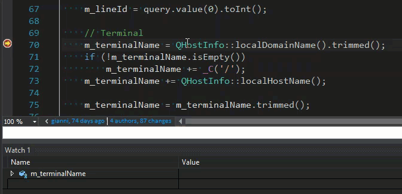 Visualizando QString no Visual Studio 2017-02-20 [tag_coding] O Qt não é um framework que pode apenas ser usado no QtCreator. Através de um projeto bem configurado pelo CMake, por exemplo, é possível ter um projeto que pode ser compilado e depurado tanto nas ferramentas do Qt quanto no Visual Studio. No entanto, na hora de depurar algumas coisas são difíceis de fazer. Por exemplo: como olhar o conteúdo de uma QString? visualizando-qstring-no-visual-studio |
| The Best of edw519 2017-02-20 [tag_coding] [tag_books] Ed Weissman, ou edw519 para os íntimos, é um dos comentaristas mais efusivos, pragmáticos e experientes do Hacker News. Ele tem programado profissionalmente há quase 40 anos. De mainframes a projetos web, a evolução dele passou basicamente pelo dobro de gerações que provavelmente você passou. Ele também já esteve envolvido como sócio/fundador em três empresas, vendendo tanto serviços quanto produtos. Ele trabalhou com centenas de pessoas em mais de mil projetos em mais de um milhão de linhas de código. Ele já compartilhou muitas opiniões com a comunidade, e agora juntou boa parte dessas opiniões em um livro, um ebook, disponível para qualquer um que queira observar alguém que esteve nas trincheiras por muitos anos e não tem medo de dizer o que pensa. the-best-of-edw519 |
| Poços de Caldas Amore Gourmet 2017-02-20 [tag_food] Um café mineiro clássico, com amargor e acidez controladas; seco e agradável, desde que não queime ou coloque muito pó. pocos-de-caldas-amore-gourmet |
| Personal Shopper 2017-02-20 [tag_movies] [tag_cinemaqui] Personal Shopper envolve espiritismo em um mundo impessoal e materialista. Sequer há emoção no filme, embora a história gire em torno do luto de um ente querido. Mas talvez, no final das contas, o que conte mais não é a esperança que haja algo após a morte, mas que haja algo depois de uma vida não vivida, mas meramente suportada. personal-shopper |
|
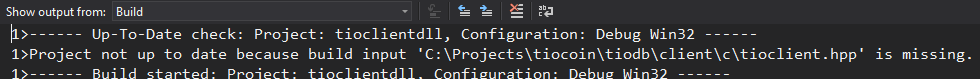 O velho problema do project out of date do Visual Studio 2017-02-20 Acho que todo mundo já passou por isso. Você compila todo o projeto bonitinho e no final, ao depurar, ele faz aquela velha pergunta: "o projeto está desatualizado: deseja compilar novamente?". Mas como assim? Eu acabei de compilar, não faz nem cinco segundos. Está quentinho, saiu do forno agora. o-velho-problema-do-project-out-of-date-do-visual-studio |
|
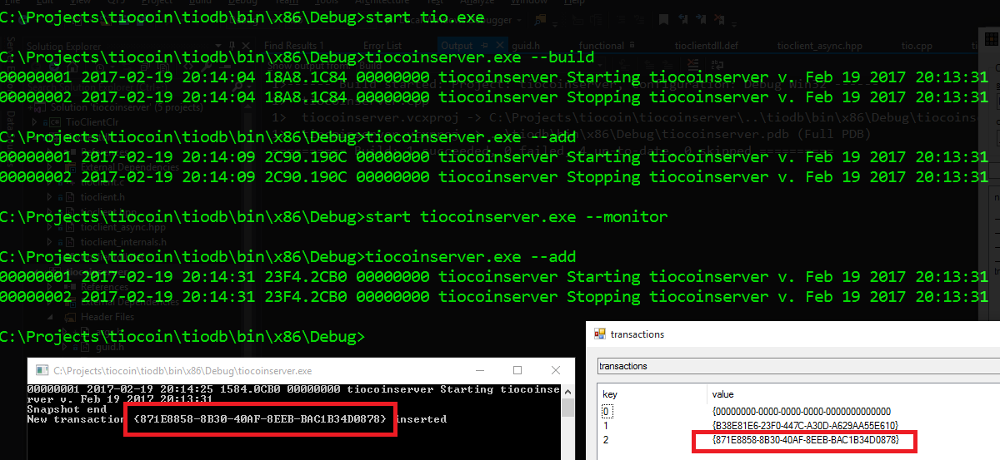 Palestra: como criar moedas digitais em casa com C++ (kick-off) 2017-02-19 Esta palestra tem como objetivo ensinar o que são moedas digitais, como o bitcoin, e cada passo necessário o algoritmo e implementação para torná-la real. Será utilizado C++ como a linguagem-base e o foco está mais na implementação do que na matemática ou no algoritmo. Assim como foi criado o bitcoin, o importante a aprender é como unir diferentes tipos de conhecimento e tecnologia em torno de um objetivo único, simples e prático. palestra-como-criar-moedas-digitais-em-casa-com-cpp-kick-off |
| Jean Bousquet Finca Lalande Malbec 2006 2017-02-18 [tag_food] Envelhecidíssimo com sedimentos e tudo, amadeirado, doce e pouco quente; frutas muito mais maduras que um jovem. Envelhecidíssimo, mas sem sedimentos dessa vez pouco amadeirado, meio amargo com doce. Confraternização BitForge 2017 abri minha garrafa. jean-bousquet-finca-lalande-malbec-2006 |
| Lion: Uma Jornada Para Casa 2017-02-17 [tag_movies] Este é o filme indicado ao Oscar por fazer chorar. E por falar de um caso real, emocionante, e por falar sobre miséria e como os brancos são privilegiados. Se for um branco que fala inglês, então, nem se fala: a maioria do filme é falado em inglês. lion-uma-jornada-para-casa |
| Estrelas Além do Tempo 2017-02-17 [tag_movies] "Fortran é uma nova e excitante linguagem usada por programadores para se comunicar com computadores..." -- começa lendo Dorothy Vaughan, líder das programadoras de cor da NASA. É difícil imaginar como uma espécie tão irracional a ponto de subestimar a mente humana baseada na cor e sexo do corpo que a carrega teria conseguido chegar até ao espaço. Assistindo a Estrelas Além do Tempo torna-se difícil imaginar como colocariam um homem branco orbitando o planeta se não fosse pela genial mente humana de Katherine G. Johnson, uma mulher, negra, e gênio. estrelas-alem-do-tempo |
| Especial de Poços de Caldas 2017-02-17 [tag_food] Gostinho de queimado mineiro, seco e amargo. especial-de-pocos-de-caldas |
| Cinquenta Tons Mais Escuros 2017-02-16 [tag_movies] Eu não sei se a bronca pela série de filmes com Christian Grey e Anastácia Steel (esses nomes são bons, não?) é porque as feministas ficam com nojo de um casal normal, com problemas como todo mundo, e com preferências sexuais particulares (como todo mundo) ou elas abraçaram, assim como os conservadores, a noção patética que existe apenas uma forma de ser feliz, e ela não pode de maneira alguma ter relação com a vida de um bilionário de sucesso. Principalmente se ele trata suas mulheres como cãezinhos submissos. Se bem que, em se tratando de uma vida de luxo e segurança, qual o problema de dar alguns latidos e levar algumas palmadas de vez em quando? cinquenta-tons-mais-escuros |
| A Jovem Rainha 2017-02-16 [tag_movies] [tag_cinemaqui] A Jovem Rainha tem vários assuntos para tratar durante o conturbado reinado da rainha Cristina no império sueco do século 17, mas não consegue se adequar ao tom mais apropriado. Se em alguns momentos gera o humor incidental da típica loucura dos monarcas, em outros tenta puxar a grandiosidade dos acontecimentos históricos, e no meio do caminho flerta perigosamente com um episódio de seriado de TV. a-jovem-rainha |
| Até o Último Homem 2017-02-15 [tag_movies] Este é um filme que presta uma homenagem mais do que merecida a um homem que salvou diversas vidas durante uma batalha sem atirar uma bala. Mel Gibson, porém, pega o roteiro de Robert Schenkkan e Andrew Knight e transforma em algo muito, muito maior. Este é um filme de guerra que realiza uma ode à não-guerra. Ele usa levemente a simbologia cristã, mas seu foco são os princípios morais que regem a carnificina legalizada que é um campo de batalha, e com isso humaniza a condição dos soldados massacrados, mostrando o que tiver que mostrar para passar sua mensagem. É um pouco ufanista? Talvez. Mas quem irá culpá-lo, já que o fanatismo do Japão medieval tornava os soldados inimigos verdadeiros mensageiros do demônio. ate-o-ultimo-homem |
| BugiGangue no Espaço 2017-02-14 [tag_movies] [tag_cinemaqui] BugiGangue no Espaço é mais uma tentativa do cinema brasileiro -- e com dinheiro brasileiro -- nas animações e na tecnologia 3D. O resultado é mais um filme que mira na mediocridade para nunca sair dos trilhos. Sua falta de ousadia no roteiro só rivaliza com sua capacidade de referenciar obras muito mais ambiciosas como Star Wars, Star Trek, E.T.. Sua animação cartunesca não oferece quase nada que se destaque de qualquer vídeo do YouTube. E o seu humor pitoresco quase traz à tona o instinto nacional de ser o eterno cão vira-latas das super-produções. bugigangue-no-espaco |
| Manchester À Beira-Mar 2017-02-13 [tag_movies] Este é um filme que se constrói inteiro na performance do seu ator principal, Casey Affleck, que estabelece um protagonista (Lee Chandler) traumatizado com um realismo que só consegue ser sentido no seu último momento na companhia de sua ex-esposa (uma Michelle Williams igualmente competente e com muito menos tempo de tela). Também é um filme que te leva fácil, pois tem uma história fácil para contar. São as entrelinhas que interessam, e se fossem um pouquinho mais grossas dariam um filmaço. Mas o filme prefere ser ele mesmo e se tornar com isso impecável. manchester-a-beira-mar |
| Convertendo Windows de UEFI para MBR 2017-02-13 Quando você pesquisa sobre isso no Google o que mais encontra é ferramentas "gratuitas" que prometem fazer a conversão ou algo do gênero. No entanto, há um procedimento simples em que o próprio Windows pode corrigir os problemas oriundos da conversão do boot UEFI/GPT. Depois, é claro, que você usar uma outra ferramenta esperta open-source =) convertendo-windows-de-uefi-para-mbr |
| LEGO Batman: O Filme 2017-02-12 [tag_movies] Dos mesmos "mestres construtores" de Uma Aventura LEGO, este Lego Batman vem para iniciar uma franquia já sugerida no original. E vira um dos melhores filmes de Batman sobre filmes de Batman já idealizados por uma criança! lego-batman-o-filme |
| UEFI: dê adeus à MBR 2017-02-09 Após depurar a BIOS e a MBR, eis que surge a UEFI: os GUIDs para SOs instalados no seu HD. Quantas siglas, não é mesmo? A BIOS (Basic Input/Output System, Sistema Básico de Entrada e Saída) é o sistema-base que se comunica com o hardware diretamente e faz a ponte entre várias interrupções e o sistema operacional (se houver um). Uma das funções iniciais da BIOS era encontrar qual a MBR (Master Boot Record, Registro do Boot Mestre) válida para entregar o controle de um pedaço de código de 512 bytes (um pouco menos) cuja função clássica era procurar em uma tabela de quatro entradas dentro dela mesma qual o SO que está ativo. A partir daí o código da MBR passava o controle para a MBR da partição ativa, que deveria conter o bootstrap do sistema operacional (naquela época bootstrap significava outra coisa). uefi-de-adeus-a-mbr |
| Native Floripa 2017: Palestras 2017-02-09 Já está disponível na grade de palestras do Native Floripa 2017 o conteúdo que será ministrado nos dois dias do final de semana dias 18 e 19 de março de 2017 em Florianópolis, na Associação Catarinense de Empresas de Tecnologia (Rodovia SC 401, Km 4, Bairro Saco Grande, Florianópolis, SC, CEP 88032-000, Telefone (48) 2107-2700). As palestras englobam trabalhos acadêmicos, teoria da computação, demonstração de bibliotecas e práticas comuns no dia-a-dia, treinamentos em engenharia reversa, embarcados e internet das coisas, e toda coleção de linguagens bizarras que você poderá conhecer. Ah, e moedas digitais (eu! eu!) =) native-floripa-2017-palestras |
|
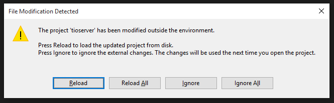 Pacotes perdidos do NuGet em projetos C++ no Visual Studio 2017-02-08 [tag_coding] É muito bom (para quem gosta) usar a IDE e viver feliz sem precisar se preocupar em digitar comandos estranhos no prompt. Porém, essa vida acaba quando ocorre o primeiro erro inexplicável, aquele tipo de erro que não importa onde você olhe, não há nada para olhar. Até você apelar para ferramentas de macho. pacotes-perdidos-nuget-em-projetos-cpp-no-visual-studio |
| Um Limite Entre Nós 2017-02-07 [tag_movies] Fences é um filme baseado em uma peça. Mas isso dá pra saber logo nos primeiro minutos do filme dirigido por Denzel Washington e adaptado pelo próprio dramaturgo August Wilson. A história se passa praticamente na casa e nos arredores da casa dos Maxson, uma família cujo patriarca, Troy (Washington), é uma figura encontrada facilmente entre as camadas mais pobres da sociedade, muitas vezes criado por pais ainda mais rígidos que ele. É lógico que muitos de nós tiveram pais ou conhecidos com pais assim. E nem por isso há algo de sintomático por trás de tudo isso. A menos que seja inserido um dedinho da esquerda progressista a investigar que tudo aquilo no fundo é resquício da violência praticada contra os negros. Resquício ou não, este é um drama de primeira qualidade basicamente por causa de Viola Davis e Denzel Washington, que carregam o filme como se fosse extremamente fácil interpretar seus personagens. um-limite-entre-nos |
| Android Protobuf, Mock Configurável 2017-02-06 [tag_coding] A comunicação oferecida pelo Protocol Buffers, uma maneira otimizada de codificar mensagens em alto nível, é uma das formas mais ideais de realizar a ponte entre cliente e servidor quando se fala de aplicativos mobile. A solução já suporta inúmeras linguagens, desde C++ (a linguagem oficial) até Java, passando por Python e .NET. Um mesmo arquivo de definição pode ser usado entre diferentes tipos de tecnologia. Este artigo mostra o caminho das pedras para compilar o protobuf para Android e de quebra mostra como é fácil fazer um mock de servidor local em uma configuração local com o gerenciador de builds do Android. android-protobuf-mock-configuravel |
| Nero D'Avola Duca Sargento 2017-02-05 [tag_wine] Italiano que demorou pra ficar bom; muito quente e sem aroma, mas depois de amaciado agradável. nero-d-avola-duca-sargento |
| Callia Alta Malbec 2016 2017-02-05 [tag_food] Vinho argentino bom como sempre; frutado no aroma e no sabor; cereja meio geleia; um pouco enjoativo sem acompanhamento. Um pouco mais amargo que o frutado típido do Malbec. callia-alta-malbec-2016 |
| A 13a. Emenda 2017-02-05 [tag_movies] O objetivo desse filme é te convencer que o sistema carcerário americano é um resquício do sistema escravagista do passado. Para isso ele irá distorcer significados de boa parte da história política do século 20 da forma que convir, fazer propaganda (ainda que crítica) a favor dos democratas em detrimento dos republicanos (que possuem um espantalho como Donald Trump para fazer o serviço), apelar para os sentimentos do espectador sem muitas... não, sem qualquer prova de que há de fato um sistema racista agindo por um século e meio. Isso fica claro e nítido nos exemplos anedóticos usados por todo o filme. a-13a-emenda |
| Um Homem Chamado Ove 2017-02-04 [tag_movies] [tag_cinemaqui] Um Homem Chamado Ove é um filme extremamente fácil de se ver. Indicado ao Oscar por filme estrangeiro e maquiagem, acaba sendo paradoxal ver um filme que se esforça tanto em ser tão agradável sobre um homem que faz de tudo para não o ser. um-homem-chamado-ove |
| Um commit por feature 2017-02-04 Imagine que você vai começar a trabalhar em algo novo. Daí você baixa a última versão do branch de dev e começa a codar. Então chega um momento em que o primeiro, segundo, terceiro commits são necessários para manter a ordem em sua cabeça. "Fiz isso logo de manhã, testei algo diferente antes do almoço e de tarde fui incrementando a solução final até passar todos os testes." Tudo bonito. Mas como fica na hora de subir essa bagaça pras pessoas verem? um-commit-por-feature |
| A Chegada 2017-02-04 [tag_movies] Denis Villeneuve (Incêndios, Os Suspeitos, O Homem Duplicado) nos apresenta uma ficção científica completamente focada em seu drama. Tudo o que está além da realidade no filme nos serve como reflexão sobre as falhas de comunicação da humanidade como um todo, e uma reflexão ainda maior sobre a falha de comunicação dos nossos sentimentos uns para com os outros. A Chegada imortaliza um conceito apresentando-o da maneira mais perfeccionista possível. É um filme basicamente sobre ideias, não sobre ação, aventura ou terror. Mas, ainda assim, o tema sonoro composto por Jóhann Jóhannsson se torna icônico justamente pelo incômodo que suas notas arrítmicas geram, além da estranheza de cordas. A fotografia acinzentada nos fornece pistas de um mundo ainda sob forte ameaça de desestabilizar, como comprovam as primeiras horas e depois dias depois que doze naves, como os apóstolos de Cristo (mas sem o Salvador), pousam em localizações que não fazem o menor sentido político hoje. Até porque este não é um filme político antes de tudo, mas sobre conhecimento e os problemas da cooperação. a-chegada |
| Por onde você acessa este blogue? 2017-02-01 Sério, esta é uma pergunta relevante neste momento. Ao menos para mim. Estou cansado de tentar manter duas áreas distintas do conhecimento, que venho arquivando por anos, e estou pensando em publicar sobre absolutamente qualquer coisa relacionada com meu dia-a-dia por aqui, o que irá envolver necessariamente assuntos que não girem em torno de programação e nem em C++. por-onde-voce-acessa-este-blogue |
| A Bailarina 2017-02-01 [tag_movies] [tag_cinemaqui] Não é à toa que A Bailarina ficará pouquíssimo tempo em cartaz. Não é pelas férias estarem acabando, mas poderia ser pela falta de cópias legendadas (porque a mixagem de som da dublada é simplesmente impossível de acompanhar). Talvez a palavra mais constante ao assistir a esta animação canadense e que defina o pouco entusiasmo do público em assistir seja: manipulativo. Afinal de contas, o filme irá fazer de tudo para você se envolver na história mais clichê de todas: o herói que persegue seu sonho. E irá fazer isso na França. No começo do século 19. E a protagonista é órfã. E há uma rival rica. E sua tutora de dança é manca e diz "odiar crianças". Não, não. Só falta dizer que o sonho dela é ser bailarina. Oh, não! a-bailarina |
| Eu Não Sou Seu Negro 2017-01-31 [tag_movies] Este é mais um documentário para abrir e manter aberta a ferida do passado de segregação racial norte-americana. Algo precisa ser feito, de acordo com o autor, James Baldwin, cujo roteiro é baseado em seu romance inacabado. Baldwin foi amigo/conhecido de três ícones do movimento negro americano: Medgar Evers, Malcolm X e Martin Luther King. Curiosamente, como ele bem coloca, cada um deles uma liderança muito diferente, muito única, do movimento. Cada um com sua estratégia. Baldwin, talvez fazendo média, não torna claro qual é, para ele, o caminho melhor a ser seguido. O filme nem é sobre isso. Inacabado como o romance, ele traça um panorama dinâmico que resgata o passado com trechos de filmes, entrevistas, fotos, e ao mesmo tempo une com o presente (o movimento Black Lives Matter), em uma forma de consolidar toda a história em nossas mãos. Narrado pelo incomparável Samuel L. Jackson, o filme ganha muito através das frases de Baldwin, que é um escritor de mão cheia. Capaz de resumir o sentimento de uma geração através de belas e poucas palavras, este é um filme para ser visto e ouvido. E, muitas vezes, até o silêncio pode ser estrondoso. eu-nao-sou-seu-negro |
| Minha Vida de Abobrinha 2017-01-27 [tag_movies] Esta é uma animação em stop-motion irretocável, com um tema lúdico de cores e formatos belíssimos, texturas criativas e movimentos perfeccionistas. Tem pouco mais de uma hora de duração e durante todo esse tempo impressiona pelos seus dotes artísticos. Porém, como narrativa, peca, e muito. É simplório, bobinho, limitado. Assim como o bobo O Menino e o Mundo, que converte ideologias em fatos através dos olhos de uma criança -- talvez maior covardia não exista -- Minha Vida de Abobrinha nos remete a crianças de um orfanato saídas das "fanfics" da esquerda, onde vemos pequeninos de seis anos levantando em um ônibus lotado de adultos recitando sermões com palavras que não conhecem e motivos que apenas adultos entenderiam. Tem uma criança que teve seu pai preso por roubar uma loja. Desde então ele não gosta de policiais. Detalhe: ele tentou roubar uma loja para comprar tênis para seu filho. Sim, esse é o nível de manipulação. E infelizmente ele está presente em um filme sem maiores tensões que a vida "como ela é", e dentro de um universo criado com muito esmero. minha-vida-de-abobrinha |
| La La Land: Cantando Estações 2017-01-27 [tag_movies] Existe uma aura de saudosismo misturado com melancolia que cobre Hollywood. Junto dela os sentimentos mais exagerados no Cinema são celebrados em La La Land, que constrói, sim, mais uma homenagem à Sétima Arte (e aos musicais), mas ao mesmo tempo não para por aí. O seu sentimento de que há algo especial nisso tudo que merece ser preservado se une com a ideia ambiciosa de que é justamente a mudança que preserva os fundamentos que tornam o Cinema tão especial. Hipócrita em ser mais um filme de clichês, ele entrega o que pode de coração aberto e espírito leve, conquistando primeiro os mais fanáticos, para depois os cinéfilos mais "exigentes" com um produto metalinguístico de primeira qualidade ao brincar de maneira inequívoca com os nossos conceitos de espectador sobre o que é ficção e o que é realidade. la-la-land-cantando-estacoes |
| The Fundamentals of Caring 2017-01-27 [tag_movies] A Netflix tem um algoritmo de sua enorme base de dados para criar conteúdo novo. Deve funcionar mais ou menos assim: "pai que perdeu o filho e que agora terá uma provação/redenção; misturar com gente em cadeira de rodas (porque está na moda); usar road movie". E pronto. Está criado um filme com esses elementos básicos, atores quase desconhecidos em uma direção e roteiro encomendados. fundamentals-of-caring |
| A Garota Desconhecida 2017-01-24 [tag_movies] [tag_cinemaqui] A Garota Desconhecida, em um resumão narrativo, é sobre o arco de sua protagonista, Dra. Jenny Davin, que ao não abrir a porta após o horário de seu consultório por uma mera questão de capricho -- e sofrer as duras consequência de seu ato -- acaba abrindo uma outra porta: para a possibilidade de redenção, aceitando que seus pacientes são seres humanos, e mais do que tudo: de que ela pode se dar ao direito de ser humana. a-garota-desconhecida |
| A Garota no Trem 2017-01-23 [tag_movies] Este é um drama que une três mulheres e suas relações com homens que viram seus bonecos (e vice-versa). A discussão gira em torno de ter ou não bebês e de ter ou não amantes. Acaba virando um thriller com aquela reviravolta que todos já conhecem, mas no meio do caminho acompanhamos as semi-divertidas aventuras de uma mulher sem destino, que insiste em pegar um trem mesmo sem ter aonde ir, devidamente alcoolizada e sem noção do que foi que aconteceu com sua vida. a-garota-no-trem |
| Pequena Miss Sunshine 2017-01-22 [tag_movies] Na época o que mais havia eram filmes independentes sobre famílias disfuncionais. Isso virou um sub-gênero que até hoje é a base de muitos trabalhos, autorais ou não. Porém, Pequena Miss Sunshine aproveita este tema para desenvolver uma crítica ácida e bem-humorada sobre a cultura norte-americana, que divide a sociedade em vencedores e perdedores. Este filme celebra o fracasso não como um ato subversivo, mas como uma forma de dizer que vencer pode ser alguma coisa na vida que não necessariamente ganhar um troféu. pequena-miss-sunshine |
| Roubo nas Alturas 2017-01-21 [tag_movies] Este é um filhote dos filmes que criticam os ricaços de Wall Street que fraudaram seus clientes. Juntando em um bolo só, aqui os clientes são também funcionários de um prédio chique em Nova York onde o ricaço é o cliente. Há um quê de retorno aos anos 80, com Eddie Murphy fazendo um ladrão pé-de-chinelo e um plot previsível entediante. O que salva é o elenco competente, com piadas engraçadas o suficiente para tornar a experiência passável. roubo-nas-alturas |
| Paraíso 2017-01-20 [tag_movies] [tag_cinemaqui] Paraíso poderia de uma maneira peculiar fazer sessão dupla com A Fita Branca. Enquanto o trabalho de Michael Haneke explora em boa parte do tempo o que tornou uma nação propensa a cometer os horrores que seriam cometidos na Segunda Guerra, este trabalho russo/alemão do diretor Andrey Konchalovskiy já está imerso nesta situação. Vemos as pessoas executando e racionalizando suas tarefas da melhor maneira possível, mesmo que sua tarefa seja quebrar os joelhos de alguém tentando salvar duas crianças ou queimar o maior número de judeus na câmara de gás. Por trás das máscaras sociais dessa época Konchalovskiy conta uma história fascinante de terror através do ultrarrealismo. paraiso |
| Champagne 2017-01-18 [tag_movies] Champagne é uma divertida comédia dramática que esbanja críticas à alta sociedade. Em seu núcleo está a figura carismática e intensa de Betty Balfour, que faz, conforme o IMDB, "The Girl". Em torno dela orbitam as pessoas comuns, que a veem como excêntrica. Mas, tudo bem, já que seu pai é rico. Mesmo se vestindo de empregada ela diverte e se diverte. champagne |
| Warning de nível 4 2017-01-17 [tag_coding] Você já colocou aquele seu projeto favorito em /W4? Por padrão, o Visual Studio cria seus projetos com o nível de warnings e 3, porque o nível 4 é muito, muito chato. No entanto, algumas vezes ele serve para que seu código não fique apenas correto, mas bem documentado e apresentável. Vamos tentar? warning-de-nivel-4 |
| One Punch Man: Wanpanman 2017-01-17 [tag_series] [tag_animes] One Punch Man pode muito bem ser uma série de uma piada só. E ela está no título. Entre todos os poderosos heróis que salvam cidades com nomes do alfabeto e de todas as criaturas malignas das profundezas da Terra, Saitama é uma pessoa comum que decidiu ser um herói por diversão. Ele treinou muito. Não, você não entendeu: ele treinou muito mesmo. Tanto que é o mais poderoso dos heróis, mesmo que ninguém acredite nele. Seu maior poder? Um soco. O homem de apenas um soco. one-punch-man-wanpanman |
| O Ring 2017-01-17 [tag_movies] Hitchcock gosta de criar cenas icônicas em seus filmes. Aqui temos uma mulher apaixonada ao lado do seu amor, quase nocauteado no ringue. Ele também gosta de comédia de situações, e esta é uma delas, onde até o título do filme é um trocadilho em inglês ("ring" pode ser anel ou o ringue de boxe). Este não é um dos seus filmes de crimes, mas um triângulo... um quadrado amoroso. E confuso. São personagens que dificilmente conseguimos lembrar por muito tempo. Parecidos entre si, não caem nos estereótipos e exageros do cinema mudo. O que torna tudo muito difícil de acompanhar. o-ring |
|
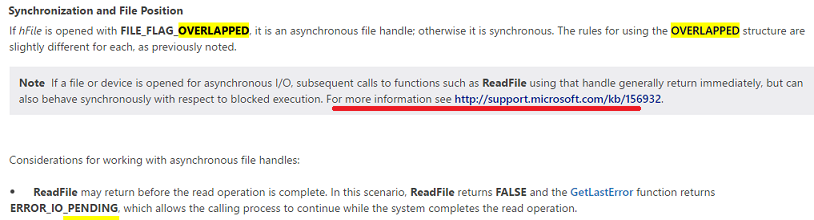 ReadFile assíncrono pode ser síncrono quando você menos espera 2017-01-16 [tag_coding] Ano passado tive alguns problemas em um projeto que se comunicava com um dispositivo em firmware pela USB. Estávamos utilizando uma biblioteca open source do GitHub que parecia estar bem testada e mantida. Porém, não exatamente para nossos objetivos. readfile-assincrono-pode-ser-sincrono-quando-voce-menos-espera |
| A Espera 2017-01-16 [tag_movies] [tag_cinemaqui] A Espera é um filme que mergulha fundo no tema da morte de um filho. Tão fundo quanto a mitologia cristã. Para isso ele entende que é imprescindível a figura de Juliette Binoche, que não é uma madre italiana, o que pode tornar a mensagem confusa ou universal. De qualquer forma, ela manda bem, e as expressões dos seus exuberantes olhos contidos em um rosto envelhecido, mas ainda lindo, faz boa parte do trabalho do diretor italiano Piero Messina valer a pena. a-espera |
| Novecento Malbec 2016 2017-01-15 [tag_food] Um tanto denso, mas sem muitos aromas; decepcionante para um malbec. Dessa vez, igualmente denso com pouco aroma, mas um gosto azedo com personalidade. novecento-malbec-2016 |
| Jane Eyre 2017-01-15 [tag_movies] Enquanto Jane Austen (Orgulho e Preconceito) escrevia sobre a sociedade britânica com uma vivacidade e energia encantadoras, Charlotte Brontë vai no exato oposto com Jane Eyre, um romance extremamente pesado, que encontra no drama do destino um fiapo de misticismo assombrando uma Inglaterra à beira do declínio. jane-eyre |
| A Partida 2017-01-15 [tag_movies] Este é um filme que trata a morte de maneira direta ao apresentar-nos a profissão de preparador de corpos. No Japão há uma cerimônia com os familiares e amigos presentes em que o corpo é limpo e maquiado para voltar à vida. Além de possuir uma quantidade assombrosa de momentos tocantes (leve seu lenço), seja por esses momentos ou pela poesia implícita neles, A Partida de certa forma celebra a vida como um processo de auto-descoberta, e a morte como uma despedida solene das pessoas que convivemos por este breve tempo. a-partida |
| Aquarius 2017-01-13 [tag_movies] Sônia Braga não está protagonizando um filme. Aquarius é um filme que protagoniza Sônia Braga. Ela é todo o filme. E quem garante isso é o diretor Kleber Mendonça Filho, mais uma vez, depois de O Som Ao Redor, fascinado (e enganado) a respeito da classe média "esclarecida" e das questões de propriedade privada. A direção de Kleber interfere apenas para dar passagem a Braga, que samba a dança do crioulo doido e entrega uma performance corporal e verbal que arrebata todo o filme, o leva para si. aquarius |
| Vidas de Carolina 2017-01-12 [tag_movies] O curta documental Vidas de Carolina é o primeiro trabalho da diretora Jessica Queiroz. Ele aborda a vida de uma catadora de lixo reciclável e seu talento para a narrativa. A ideia era mostrar que a capacidade pode vir de qualquer lugar e que muitos não conseguem reconhecimento por falta de oportunidade. vidas-de-carolina |
| Moonlight: Sob a Luz do Luar 2017-01-12 [tag_movies] [tag_cinemaqui] Moonlight contém uma história simples demais depois que é desvendada. Porém, esse não é um filme que foca em sua história, mas sim em seus personagens. Ele usa toda técnica disponível para explorar o isolamento afetivo dessas pessoas, e por algum motivo, de dentro de suas sutilezas, acaba berrando seu estilo aos quatro ventos, como se o estilo por si só criasse um grande filme. moonlight-sob-a-luz-do-luar |
| The Lodger: A Story of the London Fog 2017-01-11 [tag_movies] O primeiro filme sobre crime de Hitchcock já contém vários elementos que indicam a que veio esse diretor, que já demonstrava inventividade em seus trabalhos anteriores. Aqui ele mantém algumas boas ideias (como a câmera subjetiva, girando no meio de um quarto, olhando o reflexo do rosto no vidro, e até caminhando furioso em direção a uma pessoa amedrontada) e cria tantas outras novas. Porém, mais que isso, constrói um belo filme através de um roteiro até que mediano. the-lodger-a-story-of-the-london-fog |
| Max Steel 2017-01-11 [tag_movies] [tag_cinemaqui] Ao assistir Max Steel você terá a impressão de estar vendo um fan film. E como todo filme feito por fãs, este tem orçamento bem limitado, o que se reflete em seu roteiro e direção pedestres, assim como a qualidade do elenco e dos efeitos visuais. Mas nós já vimos fan films que foram produzidos com o sangue e suor de uma massa de admiradores, e apesar de todos os defeitos, mantiveram ao menos um trabalho feito com paixão, e se é que isso serve de algum mérito, ao menos significa que alguém deve ter se divertido no processo. Aqui, porém, o filme tem todos os elementos capengas que o tornam elegível para a categoria de fan film, menos a paixão, o que nos leva ao pior resultado possível: um filme ruim feito por pessoas que não se importam tanto assim. max-steel |
| Quantum Classic Ruby Red Blend Merlot/Pinotage/Ruby Cabernet África do Sul 2017-01-10 [tag_food] Oleoso, pouco tânico, mas amadeirado no aroma; frutas vermelhas, vibrante e quente sempre. quantum-classic-ruby-red-blend-merlot-pinotage-ruby-cabernet-africa-do-sul |
| Moana: Um Mar de Aventuras 2017-01-07 [tag_movies] É fascinante constatar como os trabalhos anteriores da equipe de criação da Disney servem de pavimento para criações cada vez mais ambiciosas. E aqui o ponto alto de Frozen, quando Elsa se transforma no que sempre foi, vira um simples rascunho da força da música de Moana, onde ela não apenas identifica (e assume) quem realmente é, mas quem seu povo deve ser. Em ambos é a força do indivíduo que prevalece, mas só na segunda essa força ganha um panorama dentro de uma comunidade, da sua história e tradição e, principalmente, de sua própria sobrevivência. moana-um-mar-de-aventuras |
| Um Cadáver Para Sobreviver 2017-01-05 [tag_movies] Swiss Army Man é o grito de desespero do tímido comum elevado à décima potência, o que segundo meus cálculos, pela regra do absurdo, gera um filme com um humor tão hilário quanto triste. Acorrentado em seus próprios medos, o tímido comum busca uma conexão com quem não o julga, ou quem não é superior a ele. Eu diria que qualquer um se sentiria menos inferior do lado de um defunto que continua soltando gases e nem sabe ainda o que é masturbação. um-cadaver-para-sobreviver |
| Sully: O Herói do Rio Hudson 2017-01-05 [tag_movies] Sully é um trabalho delicado e empenhado não apenas de um diretor que vem crescendo cada vez mais sua sensibilidade a respeito da figura humana, mas também um trabalho de uma equipe de cineastas afiada com a proposta deste simplório e poderoso filme. Ele transforma medo em esperança, resgatando no processo, em um mundo cada vez mais dominado por máquinas e matemática, o surrado, mas ainda de pé, "fator humano". sully |
| Patagonia Weiss 2017-01-05 [tag_beer] Doce, mas não tanto. Agradável. patagonia-weiss |
| Entrando na zona com Vim 2017-01-05 Se você é programador é bem provável que já tenha ouvido falar em [Flow] ou [The Zone]. Se for leitor assíduo do Hacker News, então, nem se fala. De qualquer forma, uma das maneira mais produtivas do programador programar é entrar na famosa "zona". É lá que muito de nós nascemos. Lembra a primeira vez que mexeu em um computador ou afim e ficou tão obcecado que não viu o tempo passar? Pois bem. Você esteve na zona. E estar nela é um bom lugar para trabalhar. entrando-na-zona-com-vim |
| Cervejaria Nacional Stout 2017-01-05 [tag_beer] Equilíbrio entre amargo e doce. cervejaria-nacional-stout |
| A Assassina 2017-01-05 [tag_movies] Esta é uma dica para os fãs de adaptações live-action de animes, para os fãs de filmes de lutas marciais sem sentido e para os fãs da cultura milenar do Oriente. A estilização por si só gera resultados bonitos, impressionantes e que entretem momentaneamente. É seguindo a contramão que A Assassina estiliza seu retrato perene de um momento na história da China para atingir não a beleza pela beleza, mas a introspecção do espectador em um mundo que não existe mais, mas que em algum momento do tempo era vívido, colorido e rico nas mentes das pessoas. a-assassina |
| Rick and Morty - Primeira Temporada 2017-01-01 [tag_series] Essa é uma animação adulta até para muitos adultos. Ele discute temas familiares da maneira mais crua, usando artifícios de sci-fi para tornar tudo mais amenizado ou potencializado. Quando a história é das consequências de um desejo egoísta o roteiro acaba com toda aquela realidade, transformando os humanos em monstros. Quando quer discutir feminismo, adentra em um mundo onde mulheres usam os homens apenas para o que eles servem: aparelhos de esperma (aparentemente a genialidade feminina nesse planeta não conseguiu realizar inseminações artificiais). Cada episódio de 20 minutos revela uma faceta bruta da natureza humana, mostrando como somos primitivos em alguns detalhes. Cerca de 99,9%. rick-and-morty-primeira-temporada |
| O Que Será de Nozes? 2017-01-01 [tag_movies] "The Nut Job" é uma animação com orçamento limitado, pequenos defeitos na caracterização de seus personagens (visualmente e direto do roteiro) e que usa uma moral deturpada que abraça o coletivismo em uma história rapidamente esquecível. Ele arrisca ainda em seu roteiro e montagem contar duas histórias ao mesmo tempo, mas é por demais amador e ainda no rascunho. o-que-sera-de-nozes |
| Dirk Gently's Holistic Detective Agency - Primeira Temporada, Episódios 1 ao 2017-01-01 [tag_series] Tudo que é britânico eu já tenho meu preconceito que diz que vai ser bom. Agora, tudo que é humor britânico, eu tenho minhas certezas. Criado por Max Landis e escrito e baseado no livro de Douglas Adams, a história segue muito outro grande trabalho de Adams, O Guia do Mochileiro das Galáxias, onde o caminho é muito mais essencial que o destino. Sendo uma representação bem-humorada da própria vida, a história gira em torno da investigação de um crime em um hotel cujas pistas envolvem desde animais selvagens a domésticos, passando por situações ilógicas e viagens no tempo. Este parece ser um remake ou uma expansão de outro trabalho de 2010-12 (este sim verdadeiramente britânico). dirk-gentlys |
| Santa Rita 120 Reserva Especial Syrah 2014 2016-12-31 [tag_food] Amadeirado, pouco aromático, quente, azedo. Deixei com a rolha e agora está cheirando a uva; gelado é meio verde; esquentando volta o amadeirado leve. santa-rita-120-reserva-especial-syrah-2014 |
| Sing: Quem Canta Seus Males Espanta 2016-12-29 [tag_movies] Este é o ano em que temos musicais animados que abraçam sua cafonice da maneira mais fofa possível ("Trolls") e filmes como "Sing", que entrega bichinhos fofinhos cantando como pop stars em uma pequena fábula sobre um produtor musical com um sonho que... bem, isso não importa. O que importa neste filme são apenas os números musicais. A história que os cerca serve única e simplesmente para conseguir colocar os bichinhos fofinhos cantando mais uma vez. E mais uma. E mais uma. Até você cansar. sing |
| Rogue One: Uma História Star Wars 2016-12-28 [tag_movies] É um prazer poder experimentar um pouco do universo dos filmes de Star Wars sem se preocupar (muito) com personagens centrais, tramas que mudarão a galáxia e, principalmente, histórias que nunca terminam. E apesar disso, aí está você de novo, estrelinha da morte. A fixação da alegoria com morte e destruição nunca termina. Ela se mantém quase como um fetiche escondido e refletido nos "inimigos", braço esquerdo da mesma Força. O lado negro sempre é a visão mais clara do que acontece quando o poder está nas mãos de poucos, sejam eles tiranos malignos ou pseudo-representantes do "povo". rogue-one-uma-historia-star-wars |
| Vídeo: Usando clang no Visual Studio 2016-12-27 [tag_videos] [tag_coding] Com o surgimento da infraestrutura LLVM, que possibilita a união entre diferentes ferramentas que suportam diferentes plataformas para o desenvolvimento de software, e o clang, um font-end para C/C++ que roda não só em UNIXes da vida, como também no Windows, como também no Visual Studio, tem sido uma vantagem para projetos que usam as novas features do C++ moderno, muitas ainda não implementadas no compilador da Microsoft, unir o útil (Visual Studio) ao agradável (C++ modernos via clang). Este vídeo tem como objetivo demonstrar como essa união é simples e fácil de ser realizada dentro do próprio Visual Studio. De quebra, vamos descobrir alguns problemas que podem ocorrer nessa união de toolsets e como corrigir. video-usando-clang-no-visual-studio |
| Dez melhores filmes de 2016 2016-12-27 [tag_movies] [tag_lists] - [Trolls]. Como pegar um fiapo de argumento, mais uma vez baseado em brinquedos dos anos 80, e transformá-lo em uma história previsível, mas que convence por sua mensagem de ode à felicidade de uma era. Trolls nos convida a rir dos clichês e a dançar ao som de outros tempos. Remixados, claro, mas que mantém a pureza no olhar de uma criança, crescida ou não. dez-melhores-filmes-de-2016 |
| Chimay Pères Trappistes 2016-12-27 [tag_beer] Ela é bem amarga para uma trigada, mas possui um equilíbrio interessante. chimay-peres-trappistes |
| Lidio Carraro Sociedade da Mesa Tannat 2011 2016-12-22 [tag_food] Todos os sinais que ainda tem muito que desenvolver; equilibrado e completamente escuro. Na adega. lidio-carraro-sociedade-da-mesa-tannat-2011 |
| Margin Call - O Dia Antes do Fim 2016-12-21 [tag_movies] Hoje Margin Call já tem mais de quatro anos de quando foi lançado. É uma conversa pra lá de realista sobre qualquer empresa de investimentos em 2008 que teve a sacada final de que tudo o que haviam feito nos últimos anos não valia praticamente nada. O filme não dá a menor dica para o espectador sobre o que está acontecendo exatamente, o que é ótimo, pois isso comprova hoje que ele envelheceu tão bem que nem é necessário que ele fale sobre a crise recente. Pode ser um outro momento mais à frente, ou no passado. Que diferença faz? No final das contas, as manipulações estatais na economia sempre irão gerar, inevitavelmente, mais crises. margin-call |
| Sinais do Fim 2016-12-20 [tag_books] O poder da internet é a real democracia. É ela que permite que autores como Dario Bertulucci sejam conhecidos por leitores cansados da mesmice e da massificação das grandes editoras. E é ela que permite que o autor receba o que tem direito pelo seu livro e pelos trabalhos de distribuição: 100%. Conversei rapidamente com o autor, que estava vendendo alguns exemplares de seus livros na frente do Masp, na Avenida Paulista. Com dificuldades para conseguir uma editora, ele mesmo aprendeu a publicar seus livros e foi à luta, algo que eu admiro e que foi o motivo final que me fez levar essa cópia comigo. Agora que li, preciso concluir: não me admira que as editoras não estivessem interessadas em um autor ainda em desenvolvimento. Mas continue firme. Com o tempo, talvez suas ideias encontrem uma coerência e uma estrutura que irão te fazer repensar seus primeiros trabalhos. sinais-do-fim |
| Portillo Malbec Salentein 2016 2016-12-20 [tag_food] Frutado maduro e azedo, cor violácea, bem tânico, pouco alcoólico. portillo-malbec-salentein-2016 |
| Eu, Daniel Blake 2016-12-20 [tag_movies] [tag_cinemaqui] "Se não fosse o governo, os pobres morreriam de fome." Quantas vezes já não se ouviu essa argumentação em acaloradas discussões políticas, geralmente no conforto do lar? No entanto, ninguém morre de fome nesse filme, assim como dificilmente alguém hoje em dia morre de fome no mundo civilizado. Se há algo que morre (e esta é uma morte lenta e dolorosa) é a dignidade das pessoas honestas e trabalhadoras. E isso, podemos dizer com um certo grau de certeza, milhões de pessoas vivendo sob o regime de bem-estar social morrem, pelo menos um pouco, todos os dias. E a grande virtude de "Eu, Daniel Blake", novo filme de Ken Loach, é desvendar esse processo com o mínimo de dramatização possível. eu-daniel-blake |
| Belos Sonhos 2016-12-19 [tag_movies] [tag_cinemaqui] Belos Sonhos é uma verdadeira homenagem e uma investigação sobre essa relação tão íntima, possessiva e determinadora de caráter entre uma criança e sua mãe italiana, a figura eterna da mama. Sutil e visual, se transforma em um trabalho equilibrado, embora intenso, como todo bom filme italiano deve ser. belos-sonhos |
| Alamos Catena Zapata Malbec 2015 2016-12-16 [tag_food] Amadeirado sempre presente, além das frutas maduras; alcoólico. alamos-catena-zapata-malbec-2015 |
| O Lamento 2016-12-15 [tag_movies] [tag_cinemaqui] O Lamento é um terror coreano, e só essa descrição seria o suficiente para chamar a atenção de qualquer fã de terror que se preze. Afinal de contas, terrores asiáticos já são de praxe as melhores fontes de medo humano, e geralmente vem acompanhados de lendas sempre um pouco pesadas demais, como se pode comprovar através de "O Chamado", "Espíritos - A Morte Está ao Seu Lado", "Medo", e "O Hospedeiro" (que é muito mais um drama). o-lamento |
| Downhill 2016-12-15 [tag_movies] Este é o quinto filme dirigido por Alfred Hitchcock, um dos três filmes que ele dirigiu apenas em 1927. Após The Pleasure Garden, seu primeiro, teríamos The Mountain Eagle, um filme perdido há mais de 50 anos. Já este quinto oferece algumas belas surpresas na direção, como uma câmera subjetiva alternada, além de algumas ótimas piadas ocasionais em um drama no melhor estilo "retorno do filho pródigo". downhill |
| Animais Fantásticos e Onde Habitam 2016-12-15 [tag_movies] Quando a série Harry Potter terminou nos cinemas veio a sensação de saudade com um misto de "saga intocável", no sentido de qualquer tentativa de "George Lucarizar" a franquia estaria fadada ao fracasso. A não ser que fosse apenas utilizado o universo onde se passam os filmes, mas não os mesmos personagens, ou as mesmas situações (mago do mal, cada filme um ano na escola). Pois bem. A partir de Animais Fantásticos, a escritora J. K. Rowling pode ganhar o título de "escritora fodona" de verdade. Ela não recicla ideias que a tornaram um sucesso (e milionária). Ela não usa personagens que os fãs abraçaram como muletas afetivas. Ela cria uma história do zero, fugindo completamente do mundo HP e apresentando novas criaturas e novos conceitos, enriquecendo e expandindo o universo em vez de sugando-o. Aprendeu como se faz, George Lucas/J.J. Abrams? animais-fantasticos-e-onde-habitam |
| A Última Lição 2016-12-15 [tag_movies] [tag_cinemaqui] A Última Lição é um filme importante para o tema "liberdade sobre o próprio corpo" levado para o aconchego do sub-gênero "filme para a família", o que é uma coisa natural para a família francesa, mas anormal em boa parte do mundo. De qualquer forma, este é um filme que tenta se livrar dos preconceitos e analisar uma situação delicada com a sensibilidade que ela merece. a-ultima-licao |
| Eu Fico Loko 2016-12-13 [tag_movies] [tag_cinemaqui] Quando uma produção comercial (no sentido mais pleno da palavra) se torna um bom filme não pelo seu roteiro redondo ou arco dramático eficaz, mas pelo seu mensageiro de novidades surreais no mundo da internet, que cai na telona do Cinema tanto de para-quedas quanto em queda livre, é porque está acontecendo algo de muito estranho, mas ao mesmo tempo interessante, no Cinema/TV/YouTube. E no caso de Eu Fico Loko, o fato dos eventos terem sido parcialmente reais torna pelo menos a história viva, fugindo do lugar-comum dos filmes nacionais do gênero. Claro que a produção conspira contra isso, tentando trazer o filme para o clichê a todo momento. Mas, felizmente, a internet e a vida real estão cada vez mais distantes dos terríveis enlatados da TV e das globochanchadas. eu-fico-loko |
| Santa Julia Malbec 2015 2016-12-12 [tag_food] Quente, frutas maduras com acidez gritante. santa-julia-malbec-2015 |
| Neruda 2016-12-12 [tag_movies] [tag_cinemaqui] "Neruda" é um drama poético com tons de comédia. Pois só a comédia para explicar uma história de perseguição onde nada acontece e onde seu protagonista vive para narrar o que não está acontecendo. Isso seria por si só uma péssima ideia para roteiro, um filme onde não acontece nada. Mas, estamos falando da vida de um poeta, que se define recusando qualquer definição minimamente coerente e que, por ser poeta, diz muitas coisas sobre coisa nenhuma. neruda |
| Blue Jay 2016-12-10 [tag_movies] Antes eles imitavam o futuro. Hoje eles se reencontram e retornam ao passado. Um filme inteiro em preto e branco porque é sobre memórias. A beleza dos tons de cinza de um filme invocam a poesia da realidade. Porém, no paradoxo mais charmoso do Cinema, o p&b também torna a vida mais real. blue-jay |
| The Pleasure Garden 2016-12-09 [tag_movies] Alfred Hitchcock começou sua carreira no cinema como desenhista de intertítulos, os letreiros de falas que aparecem quando um personagem diz algo importante nos filmes mudos. Este é seu primeiro filme longo na direção depois que as pessoas o notaram em seu curta-metragem Always Tell Your Wife. E para surpresa dos que dizem que este é o século das adaptações, a história do filme foi baseado em um romance. the-pleasure-garden |
| O Aluno 2016-12-09 [tag_movies] Este é daqueles filmes bonitinhos, com lição de moral, ou lição de vida, que tenta aumentar a trilha sonora solene e emocionante sempre que pode, além de colocar lágrimas nos rostos dos personagens para induzir o espectador ao choro fácil. Choro fácil este que não vem, já que seus personagens não são assim tão carismáticos, e o protagonista, apesar da história de vida sofrida, não possui condições de exprimi-la de uma maneira civilizada. o-aluno |
| Estados Unidos Pelo Amor 2016-12-09 [tag_movies] [tag_cinemaqui] É curioso como em "Estados Unidos Pelo Amor" -- novo trabalho do diretor (e roteirista) Tomasz Wasilewski -- o destino de cada personagem termina necessariamente em um drama, mas que nunca é suficientemente trágico. Pelo menos não para as mulheres envolvidas em quatro histórias que se cruzam em um vilarejo na Polônia na época comunista. Este é acima de tudo um filme sobre um grito silencioso na imensidão do horizonte. estados-unidos-pelo-amor |
| A Qualquer Custo 2016-12-08 [tag_movies] [tag_cinemaqui] A Qualquer Custo, a despeito de ser dirigido por um inglês, é um filme o mais texano possível, no mau e no bom sentido, o que acaba se tornando aos poucos algo fenomenal, já que o estilo de vida do texano acaba meio que virando um personagem a mais, ainda que não exatamente personificado em ninguém em particular. Apesar disso, eu usaria como representante da hospitalidade texana uma garçonete de uma cidadezinha que atende dois "Texas Rangers" com um mau humor (ou a falta de) peculiar, avisando que todos os que vão em seu restaurante pedem T-Steaks com batata. A única liberdade de seus clientes é tirar do prato ou o milho ou a vagem do prato. Ah, e todos devem tomar chá. a-qualquer-custo |
| SOMM: Into the Bottle 2016-12-04 [tag_movies] Para os que assistiram ao documentário "Somm", este será uma continuação natural. Para os que não o viram, não irão perder nada, pois ele não é necessário para acompanharmos mais uma viagem didática e comportada -- como deve ser -- ao mundo do vinho, desde as besteiras de pontuação, até rixas de família pela mudança da tradição, até a abertura emocionante (pelo menos para os aficionados) de garrafas enclausuradas por décadas, para constatarmos, com alegria nos olhos e nas papilas gusta/olfativas, que para alguns vinhos, envelhecer pode ser uma ótima ideia. somm-into-the-bottle |
| Somm 2016-12-04 [tag_movies] Somm é um documentário no sentido mais didático da palavra, mas que consegue através de sua narrativa quase sempre fluida entregar um pouco de tensão nos preparativos de um trio de degustadores de vinhos que se preparam há anos para tirar o certificado mais cobiçado e exclusivo do planeta. E, de quebra, você irá aprender uma coisa ou outra interessante sobre o mundo do vinho. somm |
| Patagonia Amber Lager 2016-12-04 [tag_beer] Pouco densa, pouco amarga e pouco doce; uma combinação equilibrada. patagonia-amber-lager |
| Killa 2016-12-04 [tag_movies] Killa é um drama indiano de uma criança e se passa em uma cidadezinha, girando em torno das amizades do garoto na escola. É pesadamente regional, necessário ter um pouco de conhecimento dos costumes de lá, e o próprio drama é desenvolvido pelo diretor Avinash Arun de uma maneira hermética, quase impossível de tirar alguma moral, parecendo aqueles filmes que são sobre uma experiência sem maiores consequências. Felizmente, em seu terceiro ato, lá no finalzinho, ganhamos algo. O arco está cumprido. killa |
| Haters Back Off! 2016-12-04 [tag_series] É difícil saber o que esperar dessa série de humor da Netflix. Ela oferece personagens que são sobrenaturalmente estúpidos. Mas, ao mesmo tempo, é tentador entender a mente de pessoas tão estúpidas interagindo, especialmente se essas pessoas possuem uma visão tão fechada sobre o mundo e pretendem ganhá-lo, elevando à fama a garota mais mimada da casa: Miranda Sings (o nome veios antes da fama, para saberem que o que ela faz no YouTube é cantar). Se os personagens são estúpidos, e alguns deles possuem atuações dignas de nota, eu arrisco dizer que nada disso é relevante se você não olhar para o desempenho de Colleen Ballinger e constatar: esse projeto nasceu nessa performance. Quer dizer... o que é isso? haters-back-off |
| Chef's Table 2016-12-04 [tag_series] As séries que costumo testar/acompanhar da Netflix me fazem às vezes questionar a capacidade da distribuidora de conteúdo de se manter na média das outras produtoras. Às vezes eles parecem ligeiramente superiores. E é o caso de Chef's Table, que se veste de uma série documental com cada episódio abordando um chefe de cozinha e o que ele tem a oferecer à alta gastronomia. Porém, no fundo, os idealizadores da série vão além, e embora sigam constantemente uma cartilha estática no roteiro (e na direção), os resultados podem surpreender. chefs-table |
| Ashby Ganesha IPA Ambar 2016-12-04 [tag_beer] Cor âmbar densa, amargor constante, bem pesada para tomar desacompanhado. ashby-ganesha-ipa-ambar |
| 3% 2016-12-04 [tag_series] Mais uma série Netflix advinda de um experimento de produtores brasileiros. Cheguei a ver o piloto experimental no YouTube. Parecia promissor, ainda que precisasse de polimento no formato novelístico e superficial. Hoje, com a primeira temporada já produzida em nível Netflix, é possível afirmar que ele ainda precisa de polimento, pois possui os mesmos defeitos ignorados pela gangue de roteiristas. 3-perc |
| THX 1138 2016-12-03 [tag_movies] Um dos primeiros curtas de um jovem George Lucas foi sobre um futuro distópico onde as pessoas possuem sua mente controlada e seus nomes são um conjunto de letras seguidas de números. Utilizando uma estética semelhante a La jetée, curta clássico do Cinema que deu origem a Os Doze Macacos, Lucas transforma seu próprio curta em seu primeiro longa-metragem de ficção. E eis que surge THX 1138, um trabalho de 1971 que hoje é um filme de vanguarda sobre futuros distópicos, ou melhor dizendo, um filme sobre filmes sobre futuros distópicos. As brincadeiras não podem ser levadas a sério, mas é justamente esse tom meio paródia e meio fantasia que torna THX um produto sólido dessa geração de cineastas que recriaram o Cinema americano nas décadas de 70 e 80. thx-1138 |
| O Ídolo 2016-12-03 [tag_movies] [tag_cinemaqui] O Ídolo possui um começo dinâmico e tocante, mas não usa isso a seu favor no resto do filme. Ele aposta na catarse fácil que já vemos na televisão e em vídeos do YouTube. O que ele acaba fazendo, então, é apenas dar uma cara e uma atuação para mais um personagem da vida real. o-idolo |
| Kubo e as Cordas Mágicas 2016-12-03 [tag_movies] Kubo é uma animação em stop motion que usa um monte de elementos computacionais para tornar tudo muito mais fluido, mágico e... não-stop motion. Porém, ao mesmo tempo, ele se aproveita da técnica para tornar tudo muito mais real. Ele conta uma história oriental com o herói sendo uma criança, mas não são exatamente coisas de criança que ocorrem com ele. A maior virtude do filme talvez seja sua não-infantilização de um filme que entende que crianças podem aguentar discussões que envolvam a morte, e não há nada de errado em um garoto não ter seu olho esquerdo. kubo-e-as-cordas-magicas |
| Sieranevada 2016-11-30 [tag_movies] [tag_cinemaqui] Sieranevada faz jus à descrição do Cinema, a sétima arte, como mundo dos sonhos, ou onde se sonha acordado. A sinopse deste filme: espiamos a vida de uma grande família durante os preparativos de uma refeição que parece que nunca vai ocorrer. Se isso parece um pouco fora de foco pra você, trago duas observações, uma objetiva e outra subjetiva, que podem ser importantes na hora de assisti-lo: o filme tem quase três horas de duração; e um dos seus maiores defeitos é ser curto demais. sieranevada |
| Saneamento Básico, O Filme 2016-11-30 [tag_movies] Dirigido e escrito por Jorge Furtado (O Homem Que Copiava, Meu Tio Matou um Cara), esta é praticamente uma obra didática a respeito da produção de um filme, desde a produção, argumento, roteiro inicial até a montagem, pós-produção, créditos finais. O esforço que o filme faz para que seu espectador perceba isso é tão irritante quanto tocante, já que cineasta brasileiro, muito provavelmente ele está acostumado a trabalhar com orçamento apertado, o que quase que justifica todos os maneirismos que sua direção (e seu elenco) aplicam ao roteiro, tornando este um trabalho digno de nota por conta da realidade que o cerca, mas também pela maneira original com que a metalinguagem aqui é utilizada. saneamento-basico-o-filme |
|
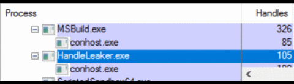 Quantos handles sua aplicação está abrindo? 2016-11-29 [tag_coding] Mesmo que você não programe em C/C++, mas programe para Windows (ex: .NET), sempre há a possibilidade de seu programa estar causando leaks de handles indefinidamente, o que não se traduz em aumento significativo de memória alocada para seu processo, mas é, sim, um problema a ser tratado. quantos-handles |
| A Linguagem de Programação C++: O Início 2016-11-29 [tag_ccpp] [tag_coding] O livro-base sobre a linguagem C++ e como programar nela tem o nome pouco criativo "The C++ Programming Language", e é de Bjarne Stroustrup, o criador da linguagem. Ele começou a desenhá-la em 1979, quando ainda a chamava de "C com Classes". Havia um problema a ser resolvido na época em que Stroustrup estava fazendo sua tese de doutorado. Havia linguagens muito boas em abstração como Simula, como o novo conceito de Orientação a Objetos, que carecia do mais importante na época: velocidade (só na época?). Já linguagens mais antigas como BCPL eram bem rápidas, mas eram tão simples que pareciam mais um Assembly glorificado. Havia, portanto, a necessidade de preencher a área de computação com alguma coisa bem no meio. a-linguagem-de-programacao-cpp-o-inicio |
| Máquina Mortífera 2016-11-28 [tag_movies] Mel Gibson e Danny Glover estreiam essa franquia que ficou conhecida como a segunda série de ação policial dos anos 80 mais lembrada. A primeira é Duro de Matar (John McTiernan, 1988). Aqui Richard Donner parece brincar um pouco entre o drama, a ação e a comédia, conseguindo isso através do roteiro de Shane Black, que faz o mesmo, e embora sem a perspicácia que foi desenvolvendo com os anos ("Beijos e Tiros") consegue criar uma das duplas de policiais mais famosa do Cinema. maquina-mortifera |
| Divines 2016-11-27 [tag_movies] Eis mais um drama francês sobre a pobreza dos imigrantes e dos desprezados pelo sistema. Porém, este é o pano de fundo de uma história de uma amizade tocante entre duas amigas que compartilham tudo isso, e também uma pitada de romance porque... porque sim. Mas o rapaz é segurança de mercado e dançarino, o que já coloca um pouco de arte e a questão de gêneros na fórmula mágica esquerdista. Esse pessoal não perde tempo contando apenas um drama de cada vez. divines |
| Cavaleiro de Copas 2016-11-26 [tag_movies] É difícil não gostar do estilo do diretor Terrence Malick. Em meio ao turbilhão de narrativas que preferem esfregar fatos na cara do espectador a cada segundo, Malick está sempre disposto a dar tempo ao tempo, rodar por duas horas e nos fazer questionar a própria textura da realidade em que a história se passa. Suas aventuras não estão limitadas a eventos pontuais, mas a transformações graduais, assim como na vida. Tudo isso pode ser fascinante se você, assim como eu, se cansa às vezes da mesmice narrativa de filmes convencionais, ou, por outro lado, pode ser uma tortura eterna tentar acompanhar filmes como Cavaleiro de Copas, que insiste que o conteúdo faz parte da mensagem. cavaleiro-de-copas |
| A Grande Aposta 2016-11-26 [tag_movies] The Big Short encara a crise de 2008 do ponto de vista dos investidores que viram a falha sistêmica na economia americana e, contra tudo e contra todos, resolveram apostar. Essa descrição está perfeitamente acurada, quase uma sinopse, mas não consegue sequer arranhar a superfície de um filme que possui em sua estrutura não apenas o drama pessoal de cada uma dessas pessoas e não apenas a descrição simples e bem-humorada do economês necessário para entendê-lo, mas também a angustiante visão global do trabalho de Adam McKay, que ultrapassa o limite de um ótimo filme e passa a realizar uma das melhores e mais completas e ácidas críticas ao capitalismo de Estado. a-grande-aposta |
| Budweiser Lager 2016-11-24 [tag_beer] Tem um ótimo custo benefício. Parece ter voltado a ser levemente mais forte que as outras. budweiser-lager |
| Sour Grapes 2016-11-23 [tag_movies] Este documentário mostra através de uma narrativa fluida e divertida uma das maiores fraudes na história do vinho. Pegando carona com a bolha de 2008, acompanhamos a história de Rudy Kurniawan, um asiático muito simpático que se inseriu na rodinha de velhos colecionadores de vinho e conseguiu ganhar amigos, fama, e muitos, muitos milhões. sour-grapes |
| O Filho Eterno 2016-11-22 [tag_movies] [tag_cinemaqui] O Filho Eterno é mais uma incursão no mundo das pessoas com Síndrome de Down. Ao ouvir disso, no Brasil, nos lembramos de Colegas, de 2012, cuja produção tem um coração gigante, mas sua realização carece dos preceitos básicos que tornam o Cinema um contador de histórias eficiente. Aqui temos o livro de Cristovão Tezza por trás da história, o que torna seu arco dramático um pouco mais ajeitado. Porém, mesmo assim, além das dificuldade de se adaptar uma obra literária que usa simbolismos demais, há muito o que aprender quando se trabalha com atores que possuem um distúrbio genético que os limitam por natureza. o-filho-eterno |
| A Economia do Amor 2016-11-21 [tag_movies] [tag_cinemaqui] A Economia do Amor, trocadilhos à parte, é também um filme econômico em sua produção. E é quando a arte encontra os benefícios da crise europeia, tanto no assunto quanto no orçamento. Aliás, os filmes franceses atualmente estão centrados na questão das finanças das famílias, no desemprego e no valor humano. Este fala sobre o processo de separação de um casal, paralisado momentaneamente por falta de dinheiro, talvez o mesmo dinheiro motivo que iniciou o declínio da relação. a-economia-do-amor |
| Dada de Finca Las Moras 2016 2016-11-20 [tag_food] Muito frutado, fresco, fácil de beber, transparente. dada-de-finca-las-moras-2016 |
| Três Corações Extra Forte 2016-11-18 [tag_food] Bem oleoso, mas com um amargor curiosamente melhor que o Tradicional. Oleoso, é o melhor custo/benefício do mercado. tres-coracoes-extra-forte |
| Quando a realidade encontra South Park 2016-11-18 [tag_series] South Park é uma série que homenageia o pior em nós mesmos. A série criada pela dupla Trey Parker e Matt Stone a partir de personagens recortados em 2D é um retrato fiel da estupidez humana. Porém, nem os criadores conseguiram prever tão longe. E quando enxergamos o mundo de hoje lembramos da célebre frase de Einstein: "duas coisas são infinitas: o universo e a estupidez humana". Sábio como era, porém, o famoso físico possuía algumas dúvidas a respeito do universo não ter fim. quando-a-realidade-encontra-south-park |
| Trolls 2016-11-17 [tag_movies] Um milagre acontece. E está um bom ano para milagres em animação. Trolls, assim como Angry Birds como adaptação de games e Zootopia como a contemporaneidade da vida social, consegue se tornar um exemplo ainda melhor de como pegar um fiapo de argumento -- brinquedos feios da década de 80/90 -- e transformar em uma ode à felicidade, à referência de uma era, ao retorno da simples e não-cínica vida comum. trolls |
| Uma Manhã Suave 2016-11-17 [tag_movies] Este filme independente de baixo orçamento comprova como o catálogo da Netflix reserva algumas ótimas surpresas onde menos se espera. Protagonizado por atores secundários, este trabalho do diretor e roteirista Neil LaBute é amador quase todo o tempo. Exceto pela reviravolta que o espera. some-velvet-morning |
| Para Sempre Cinderela 2016-11-17 [tag_movies] Esta revisita nos anos 90 ao conto dos irmãos Grimm usa os próprios documentaristas dessa fábula folclórica para dar um laço mais realista à história imortalizada por Disney. Usa atores competentes em situações interessantes -- o que Morgana faz como a madrasta? -- e ao mesmo tempo decide formatar seu núcleo em um romance convencional, de época e água com açúcar. Mas, ainda assim, apaixonante. para-sempre-cinderela |
| Nerve: Um Jogo Sem Regras 2016-11-17 [tag_movies] Black Mirror é uma série que realiza com sucesso uma crítica à tecnologia atual e em um futuro próximo (e talvez distópico). E ela faz isso em episódios de uma hora, que de acordo com alguns espectadores da Netflix, é "tempo demais para contar uma história tão simples". Pois bem. Nerve vem à tona como uma versão para jovens em um longa metragem que tem tempo demais de tela para uma história boba e imprevisível porque, no fundo, ninguém se importa com o destino de seus rasos personagens. nerve-um-jogo-sem-regras |
| Jack e a Mecânica do Coração 2016-11-17 [tag_movies] Esta animação é a conquista emo e gótica ao mesmo tempo. Feito com um apuro artístico incomum para produções de baixo orçamento, a história possui um clima pessimista, romântico e inalcançável que crianças não irão gostar, e muito menos adultos não muito afeitos a água com açúcar. jack-e-a-mecanica-do-coracao |
| Doutor Estranho 2016-11-17 [tag_movies] Algo vem me incomodando nos filmes da Marvel. Algo que normalmente passa batido em outros filmes menores: não há personagem nenhum nas histórias, exceto seu herói protagonista. Às vezes um vilão. Aqui há apenas um inicial anti-herói, cercado de pessoas que estão aí para falar o resto dos diálogos. São coadjuvantes. Normalmente possuem funções mais elaboradas do que descrever o universo onde se passa a história ou como o personagem é desagradável com as pessoas. Mas aqui fazem apenas isso. Mais um trampolim para mais um herói em uma grande cidade sitiada de supers. Dessa vez com magia. doutor-estranho |
| Como Ser Solteira 2016-11-17 [tag_movies] É cada vez melhor a surpresa com relação a comédias românticas (ou apenas comédias) protagonizadas por mulheres. O universo feminino independente do masculino estava escondido por gerações, mas hoje, no formato de uma sociedade que cada vez mais reconhece o direito da mulher de se divertir tanto quanto os homens, está a cada dia causando no Cinema resultados positivos, da mesma forma com que o universo masculino muitas vezes é representado (vide o último filme de Richard Linklater, "Jovens, Loucos e Mais Rebeldes") sem ressalvas pelo machismo e a quem isso possa doer. Ele existe. Assim como mulheres que transam por 100% de prazer e 0% de comprometimento. como-ser-solteira |
| Era Uma Vez em Nova York 2016-11-17 [tag_movies] A Imigrante é filmada como um épico, e apresenta, assim como Era Uma Vez Na América, um retrato depressivo e opressivo da imigração americana no começo do século 19. Além disso, não fornece muitos pontos de escape desse universo angustiante, se tornando portanto uma experiência pesada, ainda que bela e que figurada por grandes atores. a-imigrante |
| El Legado Tannat Reserva 2015 2016-11-13 [tag_food] Mais jovem parece melhor. el-legado-tannat-reserva-2015 |
| El Legado Reserva Syrah 2015 2016-11-13 [tag_food] Tânico e amadeirado; baunilha (aroma) e frutas negras (pouco); um bom buquê. Aberto para uma lasanha de escarola de domingo. el-legado-reserva-syrah-2015 |
| El Legado Gran Reserva Edicion Especial Blend Tannat Syrah 2013 2016-11-13 [tag_food] Um vinho social bom com carne. el-legado-gran-reserva-edicion-especial-blend-tannat-syrah-2013 |
| El Legado Blend Tannat Syrah 2013 2016-11-13 [tag_food] Um vinho social bom com carne. Fácil de beber, pouco azedo e médio corpo; tanino em desenvolvimento. Todos dos amigos da IBM curtiram no churrasco do terraço. el-legado-blend-tannat-syrah-2013 |
| Don Nelson Ariano Special Reserve Tannat 2010 2016-11-13 [tag_food] Encorpado com final leve; pouco frutado e muito seco e tânico; combina com bife. Cor atijolada, amadeirado cheio de aromas; encorpado, ácido leve e com final frutas negras e taninos. Aberto na casa do Glauser e Michele com uma picanha no forno; foi respirando bem durante as horas. don-nelson-ariano-special-reserve-tannat-2010 |
| Indiana Jones e o Reino da Caveira de Cristal 2016-11-04 [tag_movies] Indiana Jones e o Reino da Caveira de Cristal não é apenas um filme ruim. Ele vai muito além do que simplesmente duas horas desperdiçadas. Ele trai uma trilogia bem acabada e desencanta um universo intocável. E vai ainda além. Ele subverte a beleza da aventura realista de tempos pré-digitais em prol de um fundo verde que dá lugar a uma pavorosa fotografia que empalidece até o conceito de filme de ação contemporâneo. Ele explora personagens memoráveis em prol das cenas fáceis, do video-game de segunda categoria, de quebra-cabeças para crianças de cinco anos. Ele fere o coração de toda uma geração que sonhava com arqueologia exploratória. Ele chega ao cúmulo de tornar Indiana Jones um desistente, um perdedor, um conformista. A sombra do que um dia foi um Homem. indiana-jones-e-o-reino-da-caveira-de-cristal |
| Angel Beats! 2016-11-04 [tag_series] [tag_animes] "Não fazer sentido é com a gente!", repete a heroína Ryuko Matoi nos capítulos finais do anime "Kill La Kill", uma série ousada e inteligente, mas que acaba em seus capítulos finais descanbando para o clichê de lutas sem fim. Mesmo assim... pobre Ryuko; mal sabia ela que seria ultrapassada de longe por "Angel Beats!", um trabalho digno de colegiais sem ter o que fazer na hora do recreio, e que une diferentes conceitos em prol da diversão interna desses alunos, pois qualquer tentativa de entender a lógica interna desse universo cairá por terra. angel-beats |
| O Mundo de Sofia 2016-11-03 [tag_philosophy] [tag_books] Este foi o livro meio unanimidade dos fóruns de filosofia quando questionado qual o melhor começo para a área, que dê uma visão global, histórica e funcional do que é, afinal de contas, filosofia. Bem, e também o começo mais divertido, o que para uma área como essa deve se resumir aos quadrinhos do Existencial Comics e o livro de Jostein Gaarder. o-mundo-de-sofia |
| Indiana Jones e a Última Cruzada 2016-11-03 [tag_movies] Há filmes que parecem diferentes dependendo do período da vida que você os assiste. A Última Cruzada, última aventura de Indiana Jones nos anos 80, para mim foi quando criança uma aventura sólida, divertida, emocionante e cujos valores cristãos eu compactuava na época. Hoje, mais velho, e alguns milhares de filmes depois, continuo vendo como quase tudo isso (tirando a parte cristã), mas com um sentimento que foi adicionado com o passar dos anos: o saudosismo, ou até a saudade, da época em que ação de verdade envolvia o herói ficar pendurado do lado de fora de um tanque e comer poeira aguardando sua morte imediata. indiana-jones-e-a-ultima-cruzada |
| Um Homem Insignificante 2016-11-02 [tag_movies] [tag_mostra] Fui convidado a assistir este documentário por um de seus diretores, Vinay Shukla, na 40a. Mostra de São Paulo. Fiquei imensamente lisonjeado pelo Cine Tênis Verde ser reconhecido como uma fonte de conhecimento a respeito da sétima arte. Temos feito o possível para incluir nesse festival o máximo de textos. Como já havia agenda (e recursos) para tal, selecionei-o na sua última sessão, dia 1. Curiosamente quase não consegui assisti-lo graças à bagunça que foi a cabine de Snowden, de Oliver Stone, na manhã do mesmo dia. Felizmente consegui chegar a tempo de ver o que os diretores estreantes haviam bolado a respeito dos últimos acontecimentos políticos em um país muito próximo culturalmente ao Brasil. E fiquei mais feliz ainda ao ter gostado, e muito, do filme, o que evita que eu seja obrigado, por integridade, a tecer críticas pesadas aos idealizadores do longa. Não foi dessa vez ;) um-homem-insignificante |
| Snowden 2016-11-02 [tag_movies] [tag_cinemaqui] Um documentário reconstruído como ficção pode ser bem maçante para a maioria das pessoas; principalmente se a ideia dos idealizadores for simplesmente jogar diálogos e eventos de pessoas da vida real em um formato burocrático ou televisivo. A maioria sairia antes da metade do filme. No entanto, o lado show business de Oliver Stone e o roteiro incisivo de Kieran Fitzgerald realizam uma dramatização da vida real que consegue criar nos 134 minutos de Snowden um universo à parte da realidade, onde nos importamos com seus personagens como se fosse uma história criada para isso, mas ao mesmo tempo não nos faz esquecer que essa é a vida real, apenas alguns anos atrás, e cujos acontecimentos ecoam até o exato momento do agora, às vésperas de mais uma eleição presidencial norte-americana. E que Edward Snowden ainda é um exilado político. snowden |
| Saldo da 40a. MostraSP 2016-11-02 [tag_lists] Vinte e dois filmes. Essa foi a quantidade que consegui assistir nessa primeira mostra que me dedico nos dias de semana (uma bagatela de ter a própria empresa). Na maioria dos dias foram três sessões seguidas; em alguns dias tive que me ausentar, outros simplesmente entrei na sala errada! (e acabei vendo, por exemplo, o ótimo [O Contador]). No entanto, foi de longe a edição do festival em que mais vi filmes, e a primeira em que escrevi sobre todos eles. saldo-da-40-mostra-sp |
| Irmandade 2016-11-02 [tag_movies] [tag_mostra] O longa caótico e desconexo de Pepe Diokno é justamente e apenas isso: caótico e desconexo. Desconexo não apenas no sentido narrativo, mas de conexão com o espectador. Como é impossível para nós nos conectarmos àquela realidade de Manila, devidamente manipulada em uma mistura de ficção e realidade, não é possível sequer sabermos qual a linha de raciocínio de um criador petulante que não consegue unir tomadas desconexas com significado ou empatia. irmandade |
| Então Morri 2016-11-02 [tag_movies] [tag_mostra] Um documentário que passa direto para nossos sentidos. Começa na morte e vai voltando pela dor, alegria, ou seja, emoções dos seus personagens da vida real. Em todos eles, miséria, religião, simplicidade. Não apenas do modo de viver, mas de pensar, e consequentemente de falar a respeito da vida. São pequenas lições ouvir as pequenas poesias que essas pessoas dizem, em palavreado simples e ações mais simples ainda, como um soco ou chute, um beijo ou carregar um caixão. entao-morri |
| A Busca 2016-11-02 [tag_movies] Wagner Moura é um ator bem versátil. Seja como Capitão Nascimento ou Pablo Escobar, Moura consegue através do tom de voz e dos movimentos de corpo denotar alguém menos ou mais vulnerável, alguém mais ou menos estressado. Seu Theo Gadelha é um pai de família recém-separado que concentra em seus óculos todo seu jeito atrapalhado de lidar com o mundo, com sua esposa, seu filho e, principalmente, seu pai. a-busca |
| Sonar 2016-10-31 [tag_movies] [tag_mostra] Este é o segundo filme que vejo na Mostra com um personagem que grava sons do ambiente (o outro é O Que Restou da Minha Vida). Sonar escolhe falar sobre uma imigrante mulher de um país africano que ainda trata mulheres como submissas. O interessante é que, considerando o que o filme faz dessa personagem, não temos pista nenhuma que nos faça evitar em pensar que, no fundo, ela também seria no Ocidente como apenas mais uma vadia. sonar |
| Haymatloz - Exílio na Turquia 2016-10-31 [tag_movies] Este é um documentário quase televisivo, descritivo, que não tem praticamente nada a falar. Burocrático do começo ao fim, tem por objetivo uma homenagem aos professores expulsos da Alemanha Nazista que lecionaram em Istambul, na Turquia, além de alguns na Suíça. Seus filhos e netos voltam, então, às origens e o que vemos acaba por aí. haymatloz-exilio-na-turquia |
| A Causa e a Sombra 2016-10-31 [tag_movies] Um filme sobre as pessoas torturadas e presas pela ditadura no Brasil nas décadas de 60/70 que se esquece de avisar ao espectador qual era o grande medo da população e dos militares caso os "revolucionários militantes" chegassem ao poder. Na verdade, é pior, pois se ao menos o filme se mantivesse centrado apenas no aspecto humano seria minimamente interessante, além de servir de alerta sobre a falta de limites do Estado. Mas é claro que ele precisa pintar aquelas pessoas como verdadeiros mártires, algozes e inspiradores de justiça, o que explica parcialmente a motivação dessas pessoas (só queriam ajudar os miseráveis, claro) quando no fundo se tornaram terroristas quando descobriram que não havia concordância nos planos mais gerais de ataque a Brasília. a-causa-e-a-sombra |
| Umrika 2016-10-28 [tag_movies] Este é um drama bem construído que envolve uma família indiana e as dores da separação e da ilusão entre eles. Às vezes apela para a emoção (principalmente no final), mas em sua maioria é uma trama bem desenvolvida e que merece o título de um indie que não soa indie, pois foge das fórmulas mais comuns e acaba caindo em um pesado sonho indiano pautado no americano. Ou deveria dizer umrikaniano? umrika |
| O Contador 2016-10-28 [tag_movies] O Contador é um filme que se divide em duas metades. A primeira metade é envolvente e possui uma forma de contar histórias de maneira inteligente, embora óbvia. A segunda metade se abstém em servir como catarse para os fãs de filmes de ação e Ben Affleck. o-contador |
| Marie e os Náufragos 2016-10-28 [tag_movies] Um filme que atravessa o indie usando uma metalinguagem Kaufmaniana, descobrindo seus personagens no percurso, realizando uma trama eficiente que, por mais absurda que seja, mantém sempre o interesse do espectador. marie-e-os-naufragos |
| Hee 2016-10-28 [tag_movies] Uma ideia interessante, estruturada de maneira interessante, e executada desleixadamente. Tem a ver com sexo, tem a ver com drama, tem a ver com crime. E isso é motivo de sobra para a diretora Kaori Momoi se achar a fodona e deixar todos nós entediados. hee |
| Dolores 2016-10-28 [tag_movies] Este é um filme feito para a televisão, com um orçamento baixo, mas com grandes ideias. Ele repete os passos hitchcockianos e seus mistérios fantasiosos, mas com pouco jeito. Se tratando de um filme que é sobre a cópia perfeita da realidade, este Hitchcock queimou um pouco no forno. dolores |
| Black Mirror - S03E04 - San Junipero 2016-10-28 [tag_series] Já estava na hora da série Black Mirror enfocar uma questão altamente relevante e discutida entre os aficionados por tecnologia futura: a imortalidade. Dentre as diferentes formas, eles escolheram a perfeita para o romance que pretendem retratar em um arco ambicioso, tudo em apenas uma hora. Abaixo uma breve descrição COM SPOILERS. black-mirror-s03e04-san-junipero |
| Black Mirror - S03E03 - Shut Up and Dance 2016-10-28 [tag_series] Após um episódio medíocre, Black Mirror volta a fazer história com a tecnologia atual. Sem apelar (muito) para o futurismo, conta a história de como quem não vive através da verdade vira refém dos outros, além de jogar o público a favor dos roteiristas usando a moral da sociedade como pêndulo de justiça (isso nunca dá certo). black-mirror-s03e03-shut-up-and-dance |
| Terra Prometida 2016-10-26 [tag_movies] [tag_mostra] Uma farsa deliciosa dramatizando o apocalipse enxergado por Karl Marx. Mostra os capitalistas inescrupulosos sem valor à vida humana para defender o comunismo que dá valor aos humanos como ferramenta de sacrifício. Não é um filme para levar a sério, mas como qualquer propaganda vermelha que se preze, ela tem que ser dramática; quiçá hilária. Na verdade, é de uma série de filmes do diretor que ridiculariza a propaganda soviética. terra-prometida |
| É Apenas o Fim do Mundo 2016-10-26 [tag_movies] [tag_cinemaqui] O cineasta Xavier Dolan é intenso e leva tudo do seu lado pessoal para as telas. Isso já ficou claro em Eu Matei a Minha Mãe e ainda mais claro em Amores Imaginários. Agora, em É Apenas o Fim do Mundo recebemos mais do mesmo, o que no caso se traduz em um filme também de cunho pessoal. E tenso até a morte. e-apenas-o-fim-do-mundo |
| Bench Cinema 2016-10-26 [tag_movies] É fácil fazer filmes que homenageiam o Cinema de uma forma ou outra. O cinéfilo e o crítico caem de pé. Porém, difícil é fazer algo com qualidade, que queira dizer algo a mais, e esteja se aproveitando da metalinguagem para isso. E esse felizmente é o caso de Bench Cinema, um filme que observa a realidade do Irã e sua censura e, nos mesmos moldes de Cinema Paradiso (outro filme que explora metalinguagem), constrói uma narrativa doce, mas dramática, sobre personagens que vivem de e para a sétima arte. bench-cinema |
| Porto 2016-10-25 [tag_movies] Um romance pode terminar em algo bom ou algo ruim, mas ele sempre será um romance. A montagem de Porto também nos mostra que pedaços de informação não são a mesma coisa que a coisa em si, que pertence apenas aos que viveram o momento. Contando a história de um breve romance de suas problemáticas pessoas, o roteiro do diretor estreante Gabe Kleeman atravessa a questão do final feliz problematizando tanto a questão do ponto de vista quanto a causalidade do mundo que nos leva a concluir um sentido para as histórias a partir do seu final. O que acontece, então, quando enxergamos a série de eventos que fazem parte da vida de duas pessoas sob uma outra ordem? porto |
| O Silêncio da Noite É Que Tem Sido Testemunha das Minhas Amarguras 2016-10-25 [tag_movies] Esta é uma antologia necessária do sertão nordestino. Há muito que repentistas ficam às margens dos "verdadeiros poetas". Pois bem. Este documentário deve corrigir parte do desconhecimento geral de que a poesia de repente possui apenas rima e métrica. Esses são detalhes que reforçam a mensagem, mas é o espírito que importa. E neste filme há de monte. Começando pelo título, ele próprio um desafio ao repente. o-silencio-da-noite-e-que-tem-sido-testemunha-das-minhas-amarguras |
| Mini-Entrevista com Olaf Kraemer, diretor de 5 Mulheres 2016-10-25 [tag_mostra] A sessão de ontem no Frei Caneca de 5 Mulheres estava mais ou menos lotado, o que foi uma surpresa (positiva). O thriller dirigido por Olaf Kraemer desaponta em muitos sentidos, incluindo o fato de ser confuso. Após a sessão, ele mesmo aparece para um pequeno debate de cinco perguntas (aqueles da mostra, que duram menos de 5 minutos, só pra tirar foto e sair vazado). O tradutor/entrevistador teve a consciência de avisar o público antes do filme começar, e o diretor nos avisou que haveria um curta exclusivo de festivais antes, que iria se relacionar com o longa depois. mini-entrevista-com-diretor-de-5-mulheres |
| Black Mirror - S03E02 - Playtest 2016-10-25 [tag_series] Como seria um episódio de hoje em dia da série "Além da Imaginação", que mistura lendas urbanas, teorias da conspiração e acontecimentos fantásticos, sempre com um fundinho de moral? Desconfio fortemente que seria como os idealizadores de Black Mirror nos fizeram passar este episódio-terror, que parece experimentar um Twilight Zone versão High-Tech. Este episódio, afinal de contas, também parece um playtest da série. black-mirror-s03e02-playtest |
| Ascent 2016-10-25 [tag_movies] Aviso: este filme é na verdade um foto-film experimental. Ou seja, ele é constituído de uma série de fotografias, e tem uma narração em off. Alguns filmes na história do Cinema se saíram fabulosamente bem com esse estilo (como A Pista/La Jetée, curta que inspirou o longa de sci-fi Os 12 Macacos, de Terry Giliam). ascent |
| A Menina Sem Mãos 2016-10-25 [tag_movies] Mais um desenho baseado em conto dos Irmãos Grimm. Na verdade, Jacob e Wilhelm Grimm, além de resgatar um pouco da origem das línguas germânicas e ajudar a fundar o estudo organizado de linguística, eles também coletaram a cultura desses povos, o que significa na prática suas crendices e valores, estruturadas em contos que eram contados de geração em geração. Ao salvar como escrita, eles conseguiram salvar boa parte da História no formato de folclore. a-menina-sem-maos |
| 5 Mulheres 2016-10-25 [tag_movies] Este supostamente é um thriller, mas se confunde tanto com uma comédia, e é também um drama que vai adocicando demais, tornando o conjunto nenhum bom representante de nenhum gênero. Pelo menos há um entretenimento inteligente acontecendo, o que já torna a experiência menos tortuosa. 5-mulheres |
| Midnight Diner: Tokyo Stories 2016-10-23 [tag_series] Como uma versão japonesa, mas mais folclórica e... gastronômica? de Easy (série da Netflix sobre desembaraçar relacionamentos), Midnight Diner é fofo, pois apela para o jeito animê do japonês se comportar (e os atores colaboram, vivenciando personagens impossivelmente agradáveis), e um passatempo curioso. Parece que quanto menos sabemos dos detalhes da vida dessas pessoas fictícias, mais emblemática se torna a história, e mais torcemos para que tudo dê certo. Uma série que evoca esses sentimentos do seu espectador não pode ser tão ruim assim. midnight-diner-tokyo-stories |
| Indiana Jones e o Templo da Perdição 2016-10-23 [tag_movies] A continuação das aventuras de Indiana Jones é tudo aquilo que eu lembrava de quando era criança e muito mais. A trilha sonora de John William conserta o plágio de Star Wars; "Indy" ganha um jeito mais escrachado, bonachão e cínico; Jonathan Ke Quan é o melhor alívio cômico da década; e Steven Spielberg faz em 1984 o que George Miller fez em "Fury Road": um filme de ação quase que completamente sem pausa para respirar. Dado a distância de nossos tempos digitais, o feito de Spielberg (e George Lucas como produtor) se torna ainda maior por comparação. indiana-jones-e-o-templo-da-perdicao |
| Ghost Hound 2016-10-23 [tag_series] [tag_animes] Geralmente as animações japonesas pecam pelo caricato sem ter muito realismo (exceção: stúdios Ghibli). Aqui, em Ghost Hound, começamos assistindo um drama psicológico, mas no meio a coisa vira exatamente este caricato, que, embora em um nível mais sutil, acaba por acusar a si mesmo de ser... uma animação. ghost-round |
| Easy 2016-10-23 [tag_series] Easy é uma série muito interessante da Netflix. Ela explora os relacionamentos mostrando como eles, na verdade, são bem mais simples do que a esmagadora maioria das pessoas pensa que é. Todo o drama, as complicações, a falta de comunicação é traduzida em uma linguagem simples, de São Francisco, que envolve diferentes tipos de casais (ou outros) em diferentes tipos de situações. Seus pontos em comum? Tentar complicar o que é muito, muito simples. easy |
| Black Mirror - S03E01 - Nosedive 2016-10-23 [tag_series] É muito bom ter o Black Mirror de volta na Netflix, com episódios novos. Nenhum me desapontou até agora, tanto pelos aspectos técnicos, narrativos, mas, principalmente: em fazer pensar. E esse nos faz pensar apesar da ideia óbvia: redes sociais. Todas juntas, na vida "real", fazendo as pessoas se esforçarem por aumentar suas notas, sua popularidade. Tudo depende disso. E no caso, o tudo é uma vida cercada de mentiras. Como não amar uma série como essas? black-mirror-s03e01-nosedive |
| Supergirl 2016-10-22 [tag_series] A nova série da "menina de aço" parece importada do seu original de 1984 e atualizada de maneira preguiçosa com os temas do momento (leia: feminazismo). Se até a metade do piloto conseguimos nos importar minimamente com a trama e, principalmente, com o destino de Kara e a decisão de ser quem ela verdadeiramente é (uma super-heroína), de lá pra frente o que vemos é a entrega total ao televisivo, a soluções fáceis e a modelos de entretenimento que utilizam referências dos últimos trabalhos da DC para soar antenado. supergirl-2015 |
| Tempestade de Areia 2016-10-21 [tag_movies] A filmografia por trás da cultura do Oriente Médio vira e mexe acaba girando em torno dos costumes antigos de uma cultura predominantemente "machista e opressora". Em Tempestade de Areia, isso não é diferente. Contudo, encarando como toda a questão desenvolvida pelo filme consegue ser aplicada a qualquer sociedade e qualquer costume, vemos que muitas das nossas próprias ações, nós, do "mundo civilizado do Ocidente", que acreditamos ser atribuída à nossa liberdade de escolha, são apenas reflexos de uma cultura que já existia antes de nós existirmos. Onde está o seu livre-arbítrio agora? tempestade-de-areia |
| Tempestade 2016-10-21 [tag_movies] Este é um filme leve, com uma história simples e e fácil de digerir. Há algum simbolismo por trás do enredo, mas a falta de força dessas pessoas em tomar as rédeas de suas vidas é deprimente. É a típica história de "não somos donos do nosso destino" com uma pitada do ataque ao dinheiro. Uma conversa velha reciclada em um filme tão bem feito quanto descartável, já que não tem nada a dizer. tempestade |
| Profundidade Dois 2016-10-21 [tag_movies] Um documentário que é uma peça de museu. Fala sobre um massacre "de guerra" feito em civis perpetrado pelos capangas psicopatas de um presidente. Bom, o que há de novo? 100% dos massacres são assim. Tendo como pano de fundo a guerra da Iugoslávia contra o território de Kosovo e a entrada da OTAN no conflito após acusações de abusos nos direitos humanos, o filme resgata mais abusos de direitos humanos, dessa vez dentro do próprio território controlado pela própria Iugoslávia, às vésperas de sua dissolução com a independência de suas repúblicas formadoras, que durante toda a História nunca resolviam seus conflitos. profundidade-dois |
| O Que Restou da Minha Vida 2016-10-21 [tag_movies] Tratando da morte de uma maneira leve para depois reverenciar a perda das pessoas que amamos, O Que Restou da Minha Vida é um misto de temas que combina comédia, romance e drama em uma sequência de idas e voltas não necessariamente confusas, mas frustrantes. o-que-restou-da-minha-vida |
| Mini-Debate com diretor de O Que Restou da Minha Vida 2016-10-21 Depois da sessão de hoje do alemão O Que Restou da Minha Vida, candidato à Competição Novos Diretores, adentrou no Cine Caixa Belas Artes Sala 1 o diretor Jens Wischnewski para uma rápida sessão de perguntas. Logo no começo também chega meio apressada a atriz principal do filme, Luise Heyer. As perguntas foram improvisadas pelo (infelizmente) pequeno público, mas foi respondido com muita simpatia (para um alemão) por Wischnewski. Segue as que eu lembro de cabeça: mini-debate-diretor-o-que-restou-da-minha-vida |
| Aloys 2016-10-21 [tag_movies] [tag_mostra] Aloys é uma viagem fascinante pelo mundo dos efeitos sonoros que criam a realidade em torno dos dois personagens principais. Para esse feito, é necessário uma edição e montagem impecáveis, além de um design de som que prima pela redundância. Redundância essa necessária para que o espectador consiga penetrar no mundo dividido entre todas as pessoas que vivem dentro do mundo interno de cada um de nós. aloys |
| Greater Things 2016-10-20 [tag_movies] Este é um filme que possui poucos diálogos, o que o torna o mais cinematográfico possível. Isso quer dizer que o que vemos e o que ouvimos consegue passar a mensagem. E muitas vezes a mensagem é formada pelo que não vemos e não ouvimos. greater-things |
| Entre Linhas 2016-10-20 [tag_movies] [tag_cinemaqui] Entre Linhas ensaia ser pretensioso, ou de alguma maneira intrincado. Porém, para que isso aconteça, é necessário que seus personagens tenham algo a dizer além de questões existenciais sobre relacionamentos. E mesmo que fôssemos elogiar sua emaranhada montagem, que preza por idas e vindas entre dois namorados muito parecidos da protagonista, isso se torna impossível a partir do momento que percebemos que não se trata de descobrir um motivo para o vai-e-vem temporal, mas de ser diferente pelo simples prazer de ter mais personagens a dizer frases aleatórias sobre a vida. entre-linhas |
| Depois da Tempestade 2016-10-20 [tag_movies] [tag_cinemaqui] Os personagens são tão reais e carismáticos, exatamente como seria se estivéssemos testemunhando uma família japonesa e seus problemas (financeiros e emocionais), que há vários momentos em Depois da Tempestade em que assisti-lo se torna uma experiência naturalista, quase documental. O que "frustra" um pouco esse realismo é apenas a leve dramatização realizada para tornar mais palatável ao grande público, com uma ou outra trilha sonora cômica, e um ou outro comentário que algum personagem solta que é "perspicaz demais pra ser verdade". Mas esses são pecadilhos frente ao resultado final, denso e complexo, pois consegue explorar seus personagens e ainda evocar uma visão um tanto decadente da cultura japonesa (para o bem e para o mal), como o envelhecimento de sua população, a autonomia cada vez maior da mulher e a crise financeira dos mais jovens. depois-da-tempestade |
| Michelle e Obama 2016-10-19 [tag_movies] [tag_cinemaqui] Se Frank e Claire Underwood da série House of Cards seriam o exemplo de "casal perfeito" entre os políticos que anseiam o poder a qualquer preço, a impressão que fica após assistir "Michelle e Obama" é que eles seriam o exato contra-exemplo, pois tanto ela quanto ele irradiam a energia positiva e generosa de quem está honestamente disposto a ajudar o próximo. Isso, é claro, levando em conta que o filme está narrando os primeiros passos do casal em direção a uma união que passará por décadas de vida política, o que poderá mudá-los de forma que se aproximem do casal de "arquitetos do poder" da Netflix. michelle-e-obama |
| Luke Cage 2016-10-17 [tag_series] As produções da Marvel têm tanta certeza que seus fãs irão acompanhar as séries do começo ao fim que eles sequer precisam fazer um episódio piloto que chame a atenção. E é assim com Luke Cage, cria gerada a partir de Jessica Jones, a quase-potencial série em se tornar algo além do incidente Vingadores em Nova York. Nesse caso, Cage passeia pelos personagens que irão colocá-lo em grandes enrascadas e fazê-lo viver grandes aventuras na velha e bobinha lenda do herói humilde que surge do Harlem e que combate uma poderosa máfia com conexões políticas. luke-cage |
| Peppa Pig 2016-10-16 [tag_series] Eis um desenho que preza por histórias sucintas, rápidas e simples, ligeiramente divertidas e que estão atreladas ao fato da família principal ser constituída de porcos. Aliás, mais do que isso. São porcos que vivem em uma casa, possuem um carro. Sua filha -- a Peppa do título -- vai a aulas de balé. Seus pais são gordos e simpáticos. Seus avós são ativos. Enfim, uma família normal que passa por peculiaridades que toda família passa. peppa-pig |
| Os Caçadores da Arca Perdida 2016-10-16 [tag_movies] Este é um filme clássico de aventuras. Ele transforma o personagem James Bond em um arqueólogo e que continua sendo, nos moldes tradicionais, um homem de verdade. Ele mata quando preciso, e as mortes acontecem de verdade -- com sangue e tiros. Indiana Jones está disposto a arriscar a vida pelo que acredita. Ele é durão em um filme que ri dos clichês sérios. Ele contém um tema musical inesquecível e uma trilha sonora que se confunde com Star Wars, outro filme estrelado por Harrison Ford na mesma época (e ambos compostos pelo músico John Williams). os-cacadores-da-arca-perdida |
| O Incrível Mundo de Gumball 2016-10-16 [tag_series] Mais um desenho de adultos que apela para o absurdo, a metalinguagem, o fofinho, o humor negro e o slapstick que ultrapassa o convencional em um formato quase tão criativo quanto A Hora da Aventura. Felizmente, Gumball tem senso do ridículo ou acaba sendo mais adulto. o-incrivel-mundo-de-gumball |
| Comercial Friboi - A certeza do churrasco perfeito 2016-10-16 [tag_movies] Em tempos de regravações de westerns como Sete Homens e um Destino, a Friboi aposta no gênero e já parte em seu último comercial, "A certeza do churrasco perfeito", inovando com o conceito já inovador há pelo menos uma década de "câmera lenta com partículas em suspensão" introduzido por Guy Ritchie e filmes como Jogos, Trapaças e Dois Canos Fumegantes. Aqui o churrasco é visto através daquela trilha sonora afiada, fogos gerados por computação e, claro, close na destreza e precisão do mestre churrasqueiro. friboi-maturatta-a-certeza-do-churrasco-perfeito |
| South Park - Vigésima Temporada, Episódios 1 a 4 2016-10-15 [tag_series] A vigésima temporada de South Park começa em um tom dramático que esconde o humor ainda mais dentro do absurdo de suas situações. Não deixa de ser poderosa sua mensagem, mas ele está se tornando, desde a temporada anterior, um longa-metragem anual de três horas e pouco. Isso é bom ou ruim? Talvez seja necessário esperar o fechamento do arco deste ano para termos certeza. south-park-season20-ep-1-4 |
| Cegonhas - A História Que Não Te Contaram 2016-10-15 [tag_movies] Não se engane com a simplicidade deste filme (porque ele é bem simples). Seu jogo de cintura rápido, suas gags ligeiras -- metade ruim, metade interessante -- seus conceitos um tanto esquizofrênicos -- uma hora algo é importante, depois é outra, depois volta de novo -- e os diálogos expositivos de tudo que está acontecendo -- principalmente da boca do filho de um casal super-ocupado -- parecem obra de um amador. Parece tanto, mas tanto, que não é possível que ele seja. Há algo escondido nesse roteiro com uma produção de animação decente, com trilha grandiosa e fotografia competente. É um filme que zomba das produções Disney, que insistem em mensagens de amor destacadas da realidade. E mesmo que você diga que os motivos por trás dessa atração é a fofura dos bebês, mesmo retirando-os de campo, fica difícil não gostar do resultado final. cegonhas-a-historia-que-nao-te-contaram |
| Sete Homens e um Destino (2016) 2016-10-12 [tag_movies] Remake do clássico de Akira Kurosawa em 1960, série televisiva em 1998, e agora uma revisita muito bem-vinda à história da defesa dos fracos e oprimidos por matadores profissionais. Menos pela discussão da questão da honra dos sete homens do título; mais como lente de aumento das mudanças ocorridas nos EUA que o fizeram sair do título de país da liberdade para uma ditadura socialista em questão de décadas. sete-homens-e-um-destino-2016 |
| Os Irmãos Lobo 2016-10-12 [tag_movies] Este documentário conta a história de vários irmãos que não podiam sair de casa durante a infância e alimentam sua visão do mundo através dos filmes. É interessante em alguns momentos, principalmente o seu começo, mas aos poucos ele parte para um estilo "casos de família" que apenas estende sua narrativa para virar um filme. os-irmaos-lobo |
| Caça-Fantasmas (2016) 2016-10-12 [tag_movies] Os caça-fantasmas continua sendo uma ótima ideia em seu remake, protagonizado agora pelas meninas. Elas são espontâneas e fazem funcionar muitas das cenas do roteiro capenga escrito a várias mãos, com diálogos e piadas engraçadinhas. Os efeitos visuais atraem, mas não tanto quanto o conceito. E esse... continua tão novo como se tivesse sido lançado esse ano. caca-fantasmas |
| O Quarto dos Esquecidos 2016-10-11 [tag_movies] [tag_cinemaqui] O Quarto dos Esquecidos pega todo aquele nosso preconceito (no bom sentido) de "filmes de famílias problemáticas que se mudam para casas no campo" (um sub-gênero do terror cada vez mais usado) e transforma em um drama envolvente, ou no mínimo quase envolvente. E assim como o excelente Babadook, ele utiliza metáforas para explorar esse ser fora de controle que vive em cada um de nós. o-quarto-dos-esquecidos |
| Terra Estranha 2016-10-09 [tag_movies] [tag_cinemaqui] Terra Estranha é um filme corajoso no formato de televisão. Ele é corajoso em entediar o espectador por quase todo o tempo para em seus minutos finais trazer a redenção de tudo aquilo que o filme pretende tratar. Sua coragem, aliás, vai além, pois descarta um final convencional pelo bem do argumento. E tudo isso na Austrália, terra da "aventura fácil", do clichê Hollywoodiano e das histórias de amor selvagem. terra-estranha |
| Sin City: A Cidade do Pecado 2016-10-09 [tag_movies] Muitos não gostaram do resultado final em Sin City, um longa que emula com perfeição o visual de uma graphic novel. Isso, de certa forma, explica o marasmo do Cinema comercial, onde a mesmice é condecorada, e as criações originais, boas ou ruins, são vistas simplesmente como chatas. Não se engane: quando alguém diz que não gostou de algo diferente, na esmagadora maioria dos casos não é porque ela possui uma visão crítica com argumentos de por que aquilo, em sua visão, é ruim. É simplesmente porque, sabe como é, "eu só queria me divertir um pouco e deixar o cérebro em casa. E agora vocês querem que eu pense?" sin-city |
| Guardando senhas com Vim 2016-10-05 Eu já sabia que havia um sistema de criptografia de arquivos no Vim. Isso pode ser útil para textos secretos, ou para enviar qualquer bobagem para outra pessoa que sabe de uma senha que só vocês conhecem. Porém, o método default de criptografia dele não me animava. O pkzip é usa um algoritmo fraco, e os inúmeros programas que quebram zips encriptados estão aí para demonstrar. Além do mais, o blowfish da versão 7 do Vim tem problemas em gerar seu salt que favorece ataques de força bruta [tão baratos quanto um XOR]. E é aí que entra em cena o Vim 8. guardando-senhas-com-vim |
| A Nona Vida de Louis Drax 2016-10-04 [tag_movies] [tag_cinemaqui] Muito cuidado. A Nona Vida de Louis Drax, pela sua premissa, pode se disfarçar facilmente de algo mais bonitinho do que na verdade é. Conta a história de uma criança que vivia sofrendo acidentes trágicos durante toda a infância até ficar em coma no seu nono aniversário. Crianças em coma geralmente remetem a dramas onde os pais estão sempre presentes e a fé de todos colabora para o triunfo de sua recuperação. Aqui não há nada mais distante que isso. a-nona-vida-de-louis-drax |
| Sete Homens E um Destino 2016-10-03 [tag_movies] Um filme do velho oeste que é um remake do clássico de Akira Kurosawa, Os Sete Samurais, que acabou virando também meio um clássico. Sua estrutura é poderosa, mexe com heróis incidentais que resolvem salvar uma vila de camponeses das garras do Estado... quer dizer, de uma gangue de bandidos que rouba parte da produção de alimentos para eles próprios sobreviverem. É uma história que mexe com o teatral, mas que mantém sua tensão como todo bom e velho faroeste. sete-homens-e-um-destino |
| Refúgio 2016-09-30 [tag_movies] [tag_cinemaqui] Refúgio é uma comédia de situação que brinca um pouco com essa sensação da meia-idade (defina você esse período da sua vida) em explorar outros horizontes, levar a cabo os sonhos da infância, reviver, enfim, os bons momentos que estão em nossas memórias. Porém, ao mesmo tempo que temos esse desejo, estamos ancorados na vida real, sujeitos às complicações da vida moderna. refugio |
| Caprice: Amor à Francesa 2016-09-30 [tag_movies] Uma comédia do Woody Allen, se Woody Allen fosse francês e não tivesse crises depressivas expostas em seus filmes. Aqui o lance é mais romântico, mas com conteúdo e inteligência. O filme trabalha a questão dos diversos tipos de amor, algo muito em voga hoje em dia, em que o conceito de família é tão líquido quanto os relacionamentos amorosos. caprice-amor-a-francesa |
| Romance à Francesa 2016-09-29 [tag_movies] [tag_cinemaqui] Romance à Francesa é como se alguém pegasse um roteiro de Woody Allen (dos últimos anos, pelo menos), extraísse todo o pessimismo e trocasse por romantismo. Isso em uma época que, assim como A Comunidade, lutamos por entender, conviver e experimentar formas de amor que fujam do convencional. romance-a-francesa |
| Le Vigne Di Zamo Zamo Rosso 2016-09-23 [tag_food] Um vinho quente, mas agradável; experimentei no mercado italiano da J.K.; pena que vinhos italianos são tão caros. le-vigne-di-zamo-zamo-rosso |
| Demônio de Neon 2016-09-23 [tag_movies] [tag_cinemaqui] A única esfinge presente na mitologia grega é um demônio e se assemelha a um leão alado com cabeça de mulher. Presente na peça Édipo Rei, Ela olha onipotente para os mortais que desejavam passar e desfere seu famoso enigma. Para os que não o decifram, ela os devora. O enigma tem relação com as diferentes fases na idade do homem, mas para acertar você precisa descobrir que a criatura disforme, que muda de patas durante o dia, é o próprio homem. Não por acaso, Demônio de Neon em sua primeira cena, ou melhor dizendo, em seu primeiríssimo quadro, mostra uma jovem de beleza estonteante deitada em um divã ao som de uma música estilo dance psicodélico, empolgante e ao mesmo tempo grandioso, revelando todos os passos de como este filme deve ser desvendado. A moça está morta, pois escorre sangue de seu braço até o chão de vidro com um tom rubi. Apesar de trágica, a cena permanece belíssima enquanto a câmera, nossos olhos, se afastam, como em fascinação. E o novo filme "de grife" do diretor Nicolas Winding Refn (Drive) explora justamente essa fascinação que temos, tanto do belo quanto do horrível. Muitas vezes ao mesmo tempo. demonio-de-neon |
|
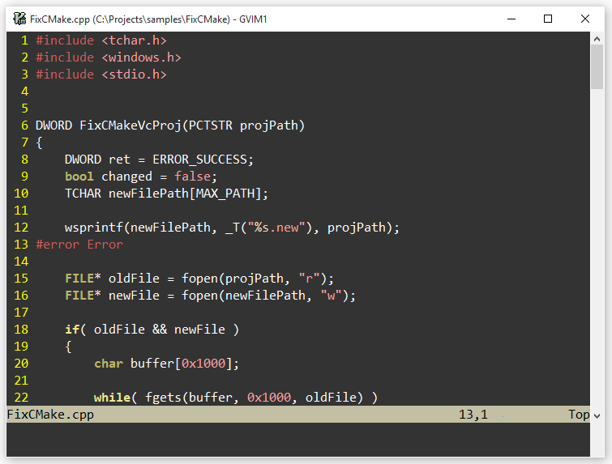 Usando GVim com projetos do Visual Studio 2016-09-18 A vida dos programadores C/C++ Windows -- e que geralmente precisam do Visual Studio -- está um abandono total. A configuração de make dos projetos sempre foi baseada no uso de makefiles, assim como no Unix, e por isso mesmo o uso da ferramenta nmake do SDK do Windows era a maneira padrão de se compilar e ver o resultado de dentro do Vim para projetos Windows. Com o advento do .NET, do Visual Studio 2003 e dos XMLs disfarçados como arquivos de projeto e solution, o uso do makefile foi paulatinamente abandonado, gerando diferentes versões de ferramentas -- todas incompatíveis -- para conseguir compilar um ou mais cpps e conseguir ver o resultado. usando-gvim-com-projetos-do-visual-studio |
| A Passageira 2016-09-17 [tag_movies] [tag_cinemaqui] A Passageira pode ser descrito como um melodrama que se aproveita de sua notável qualidade narrativa e técnica para dar ares de ser algo mais artístico. A mesma razão pode ser dada ao dizer que o herói do filme realmente fez um ato bondoso e por isso, independente de seu passado, é digno de aplausos. a-passageira |
| Ring: O Chamado 2016-09-15 [tag_movies] Essa é a versão japonesa, que estreou dois anos antes do remake americano. Diferente de toda a pomposidade de sua cópia, e os efeitos sonoros enlatados de terrores hollywoodianos, este tem a rapidez de um thriller e a semi-profundidade de um drama. Possui um ritmo visual econômico e ágil, e uma conclusão factoide, o que o torna um exemplo de sua própria lenda. ring-o-chamado |
| O Silêncio do Céu 2016-09-13 [tag_movies] [tag_cinemaqui] O Silêncio do Céu é mais uma incursão do diretor Marco Dutra ("Trabalhar Cansa") em um filme que flerta entre o drama e o terror. Porém, nesse caso não há o apelo ao sobrenatural, mas a uma substância social que permeia cada um de nós: o medo. o-silencio-do-ceu |
| Pets: A Vida Secreta dos Bichos 2016-09-11 [tag_movies] O estúdio responsável pelo Meu Malvado Favorito e Os Minions agora vem reciclar sua biblioteca de criaturas e vai explorar justamente mas uma coisa que humanos acham uma fofura: animais domesticados. pets-a-vida-secreta-dos-bichos |
| Os 10 melhores filmes dos anos 90... 1890! 2016-09-11 [tag_movies] [tag_lists] Esta é uma ótima seleção feita pelo saite A.V. Club, que contém para variar vários trabalhos do genial Georges Méliès, além também dos trabalhos mais técnicos de Thomas Edison. É preciso lembrar que a sétima arte estava apenas engatinhando. os-10-melhores-filmes-dos-anos-90-1890 |
| O Destino de Miguel 2016-09-11 [tag_movies] Graças às leis de propriedade intelectual não temos muitas produções desse tipo, mas felizmente temos algumas. E essa, produzida de forma profissional por grandes nomes da dramaturgia brasileira, realiza um curta-metragem mais que necessário como extra de DVD do filme Shakespeare Apaixonado, aquele hollywoodiano que ganhou Oscar porque... porque... bom, porque não é dublado como O Destino de Miguel. o-destino-de-miguel |
| Mr. Robot 2016-09-11 [tag_series] Finalmente uma série que retrata o hacker de uma maneira realista. Mais do que isso: retrata o hacker inserido na realidade que vivemos hoje, nesse exato momento. E, por que não, alguns meses à frente? mr-robot |
| Boneco do Mal 2016-09-11 [tag_movies] Um terror que entende a problemática do medo do limite entre o real e a fantasia, Boneco do Mal busca em seu formato aproximar o espectador da loucura que o cerca, para apenas depois subverter essa ordem de volta para o real. Um trabalho digno de nota em comparação com tantos filmes do gênero que se passa em uma casa isolada com um passado macabro. boneco-do-mal |
| Versos de Um Crime 2016-09-10 [tag_movies] Depois do ótimo Na Estrada (Walter Salles, 2012), o requisitado personagem da vida real Allen Ginsberg, o poeta americano da geração beat dos anos 50, é encarnado por Daniel Radcliffe (da série Harry Potter), e tem ao seu lado o igualmente ótimo Dane DeHaan (Poder Sem Limites, O Lugar Onde Tudo Termina) e um Michael C. Hall (da série Dexter) curioso, mas um tanto ausente. A história é retratada como um drama novelístico e televisivo, com impecável direção de arte, mas uma narrativa burocrática demais para funcionar com poetas que estavam revolucionando o mundo da literatura. versos-de-um-crime |
| Jovens, Loucos e Rebeldes 2016-09-09 [tag_movies] Este é o filme de uma geração de Richard Linklater (Trilogia do Antes, Boyhood), um de seus primeiros, de 1993. Ele conta com um elenco de desconhecidos, onde alguns deverão se tornar conhecidos. Ele conta uma história simples, que evoca o naturalismo, mas que contém tensão o suficiente para entreter. E ele contém o mais importante: a empatia do público que sabe como é ser jovem, como é experimentar coisas novas e sabe como é estar naquele momento mágico, vivenciando tudo isso, tendo toda a vida pela frente. jovens-loucos-e-rebeldes |
| Jovens, Loucos e Mais Rebeldes 2016-09-09 [tag_movies] [tag_cinemaqui] Jovens, Loucos e Mais Rebeldes é a mais nova experimentação de Richard Linklater (Boyhood), que entra a fundo em uma análise sobre uma geração e seus estilos, ou suas tribos, e que semelhante a seus filmes anteriores, está mais interessado na análise em si do que criar qualquer história. jovens-loucos-e-mais-rebeldes |
| Grande Coisa 2016-09-08 [tag_movies] Lembra aquelas comédias meio-thriller, meio-policial e meio-pastelão(?!?). Pois é, em "Grande Coisa", isso foi pasteurizado, talvez "reimaginado", e se tornou uma trama pseudo-complexa sobre uma série de acontecimentos inesperados recheados de mentiras deslavadas e reviravoltas impossíveis, a ponto de duvidarmos se tudo aquilo poderia fazer sentido em um filme menos... retardado. grande-coisa |
| Star Trek: Sem Fronteiras 2016-09-07 [tag_movies] O reboot megalomaníaco da série de filmes inspirada pela série televisiva nerd dos anos 60 está com muita bala na agulha para poder gastar e pouca vontade de arriscar. Isso quer dizer que o novo filme com Capitão Kirk e Spock tem basicamente o mesmo enredo do filme anterior (Além da Escuridão) tirando a emoção. star-trek-sem-fronteiras |
| unit-menos-menos 2016-09-05 [tag_coding] Fazer o setup inicial de testes unitários em seu projeto C++ pode ser algo enfadonho se você precisa baixar e compilar uma lib do Google ou do Boost. Há uma alternativa mais leve e bem direta, que um dia apareceu nesses CodeProject da vida, mas que hoje está, até onde eu vi, no [GitHub]. unitmenosmenos |
| O Traidor 2016-09-04 [tag_movies] Uma narradora que é uma velha e que faz graça com a desgraça de uma nação. Belas mulheres asiáticas que são estupradas por um imperador maluco, auxiliado por dois caçadores de beleza, pai e filho, que não confiam um no outro. Uma putaria e violência que começam desenfreadas, mas aos poucos caem no clichê moralista não sei bem por quê. Uma história mais ou menos histórica (Yeonsangun of Joseon, o décimo-rei da Coreia) que falha em uma narrativa sem entender a que veio. o-traidor |
| Herança de Sangue 2016-09-04 [tag_movies] [tag_cinemaqui] Mel Gibson não apenas é a escolha perfeita para seu papel paternal em Herança de Sangue: a sua persona dentro e fora das telas é o mecanismo-chave que faz tudo funcionar no longa de Jean-François Richet. A sua rebelde filha se assusta quando vê seu pai, um sujeito com traços agressivos, sem a barba que escondia no início do filme seu rosto da época dos escândalos de violência doméstica que fez parte. Há uma cena na estrada com motos e um "acidente" que lembra muito a série de filmes Mad Max. Há até um antigo amigo do personagem de Gibson que negocia artefatos nazistas (Gibson, é interessante lembrar, ficou conhecido após A Paixão de Cristo como um cineasta com sentimentos anti-semitas). Simplesmente não há como não enxergar que o roteiro escrito por Peter Craig baseado em seu romance homônimo não tivesse Gibson como parte de sua inspiração (ou que pelo menos a adaptação apostasse nisso). O filme ainda pega todas as oportunidades do roteiro para de certa forma redimir Gibson por ser (ou ter sido) um babaca na vida real. Ele até é um ex-condenado em condicional, querendo dizer que ele não pode pegar em armas e ferir pessoas na sequência mais divertida do filme, onde ele vai enumerando seus delitos. heranca-de-sangue |
| Eungyo - A Musa 2016-09-04 [tag_movies] Uma relação entre uma jovem de 17 anos e um velho escritor aclamado de 70 anos é o tema deste drama que começa lúdico, se desenvolve com uma temática ambiciosa com uma crítica de nossa geração, e termina com um inesperado thriller. Ele é longo demais quando na verdade está apenas inacabado. eungyo-a-musa |
| Vídeo: Resolvendo problemas em projetos desleixados 2016-09-01 [tag_videos] [tag_coding] Quem nunca teve que mexer em um projeto cheio de bugs de compilação, péssima organização, documentação e nomes de funções, classes e argumentos? Que você acaba de baixar em sua máquina e ele não compila (e você não tem a mínima noção por quê). Que a equipe que trabalha com você ouviu falar do projeto, mas nunca arregaçou as mangas e organizou. Que tal fazer isso agora? video-resolvendo-problemas-em-projetos-desleixados |
| Programa, Mãe Foca! 2016-08-30 A história das metodologias de desenvolvimento de software segue mais ou menos as oscilações naturais do próprio software: caminha em direção ao caos (e as sessões de refactory buscam desacelerar essa inevitável tendência). Assim como aquela classe que parecia perfeita assim que foi feita, uma metodologia irá se desmanchar frente à lei da mediocridade. Você não consegue software bom com programadores ruins seguindo a melhor metodologia do planeta. programa-mae-foca |
| La Perdices Petit Verdot 2015 2016-08-30 [tag_food] Um vinho agradável, meio azedo, mas com um sabor que se mantém agradável em todo momento. la-perdices-petit-verdot-2015 |
| O Concurso 2016-08-28 [tag_movies] Este é mais um dos filmes bobos, praticamente sem graça e datados da Globo Filmes. O Concurso continua fazendo piadas no melhor/pior estilo A Praça é Nossa ou Zorra Total. Pior: sequer tem vergonha de usar um fiapo de história que apenas serve para juntar situações entre humoristas se fazendo de atores com personagens tipicamente rasos. o-concurso |
| Darkly Dreaming Dexter 2016-08-24 [tag_series] [tag_books] O primeiro livro de Jeff Lindsay, que deu origem à série de livros do serial killer que mata serial killers (além da própria série televisiva de oito temporadas), é um relato intimista e bem-humorado de uma pessoa que não consegue se ajustar socialmente, então finge ser alguém que não é. Curto, mas suficiente, dá uma boa ideia sobre como é esse personagem tão fascinante, em um esboço criado a partir de seus próprios pensamentos. Lendo após terminar a série, vejo quão bem feito ficou o protagonista estrelado por Michael C. Hall, e quantas boas ideias surgiram de uma premissa interessante. Uma adaptação que começou muito bem na primeira metade, para covardemente tropeçar desfiladeiro abaixo na segunda metade. darkly-dreaming-dexter |
| Angry Birds: O Filme 2016-08-21 [tag_movies] Filmes baseados em jogos não costumam gerar resultados positivos. Um jogo para celulares, então, teria probabilidades maiores ainda de fracassar como Cinema. Porém, eis aqui um filme que aproveita cada oportunidade de sua história para evocar o universo simples de Angry Birds. Ele constrói personagens e seu mundinho baseados nos elementos do jogo, mas está longe de ser apenas isso. É um filme sobre como os sentimentos ditos como negativos -- como a raiva -- podem ser positivos em alguns momentos da vida. angry-birds-o-filme |
| Sharknado 2: A Segunda Onda 2016-08-20 [tag_movies] Há uma coisa de se orgulhar da série Sharknado: ela não tem medo de passar vergonha. Os personagens ruins falando diálogos escritos por crianças de seis anos em situações absurdamente toscas existem nesse universo por apenas um motivo: inserir no meio deles os tubarões voadores criados por uma computação gráfica que tornou o primeiro Sharknado "famoso", tão famoso que gerou uma série de filmes. Porém, diferente da pretensiosa "saga" Crepúsculo, o objetivo da série é bem mais claro e honesto: "fale mal, fale péssimo, mas fale de mim". sharknado-2-a-segunda-onda |
| Conexão Escobar 2016-08-20 [tag_movies] [tag_cinemaqui] Conexão Escobar volta a trazer Bryan Cranston em um papel memorável, mas mais do que isso, esse é um filme construído totalmente em cima de expectativas. Ele vai subindo aos poucos no alto escalão da máfia de cocaína e assim como O Poderoso Chefão e Scarface ele possui seu universo próprio. Porém, este também é um filme pautado em cima da biografia de Robert Mazur, ex-agente federal de combate ao tráfico de drogas, e por isso merece ainda mais crédito a criação dessa rede tensa e complexa que vive à mercê da lei. conexao-escobar |
| Jessica Jones 2016-08-18 [tag_series] Uma história de super-heróis ligeiramente diferente do que a Marvel costuma contar, Jessica Jones é uma narrativa arrastada, que dá tempo de tela demais para a limitada Krysten Ritter (da série Breaking Bad), e que muda de tom durante sua história. No início há indícios de um noir pós-moderno, com cores na penumbra, uma protagonista bisbilhoteira de caráter (e um passado) duvidoso, e uma certa relativização do que é certo e errado; lá pela metade, com o surgimento do vilão Killgrave (o ótimo David Tennant) encontramos um curioso debate de quais são os papéis de bem e mal, assim como se vale a pena tentar salvar representantes da espécie humana conhecendo sua capacidade infinita para miséria de espírito, estupidez e egocentrismo; e no final, para conseguir executar seu "plano final", manipula tudo que havíamos visto até então para entregar uma conclusão clichê e insossa, nos forçando a tentar gostar de uma heroína problemática e desgostar de um vilão no mínimo fascinante. jessica-jones |
| Se não está funcionando direito, mexa! 2016-08-17 Uma breve história de um chuveiro: O de casa às vezes inventa de dar choque. Isso desde que me mudei (uns 2 anos e meio). Não são choques brabos, daqueles de fazer a pessoa tremer. É apenas uma quase estática ao tocar no registro para abrir ou fechar a água. No entanto, já é motivo para pessoas mais sensíveis, como minha sobrinha de oito anos, se recusar a encostar no registro. Frecura. se-nao-esta-funcionando-direito-mexa |
| Loucas de Alegria 2016-08-17 [tag_movies] [tag_cinemaqui] Loucas de Alegria, apesar do título e das protagonistas com problemas psicológicos, é um retrato realista e encantador sobre amizade incondicional, mesmo que sua amiga tenha impulsos suicidas ou tenha cara de pau de aplicar golpes por onde quer que passe. Em seu momento mais lúdico ele homenageia "Thelma & Louise", o clássico de Ridley Scott, o que, naquela altura da campeonato, é uma das licenças poéticas mais bem-vindas e muito apropriada. loucas-de-alegria |
| Hardcore: Missão Extrema 2016-08-16 [tag_movies] Este não é um vídeogame, mas um filme que utiliza completamente a estética dos jogos de tiro em primeira pessoa. Ele tem uma narrativa coesa, e ainda que não tão bem articulada, qual filme de ação você conhece que consegue ser tão realista a ponto de enxergarmos toda a ação do ponto de vista do mocinho? Pior: que filme de ação hoje em dia consegue te entregar todo o pacote 18+, com direito a sangue, esquartejamento, esmagamento, esfaqueamento e outros "mentos" por aí, e não aquelas brincadeiras de criança da Marvel? hardcore-missao-extrema |
| Electrum: uma opção simples e rápida de manter bitcoins seguros 2016-08-16 Estava já há algum tempo pesquisando as melhores ferramentas para organizar carteiras bitcoin. E quando se fala em ter seus próprios bitcoins, a segurança deve ser prioridade número zero. Isso porque, diferente de bancos, quando você se dispõe a gerenciar seu próprio cofre, é você, e apenas você, o único responsável pela sua integridade. electrum-uma-opcao-simples-e-rapida-de-manter-bitcoins-seguros |
| DBAccess 2016-08-16 [tag_coding] Bancos de dados são uma dor de cabeça para o desenvolvedor acessar. Quase tão motivation killer que as configurações do .NET. Se for um programador em C++ para Windows, então, desista. O DBAccess é mais um dos códigos-fonte desenterrados dos meus backups. Esse eu usei já em vários projetos, porque é simples e rápido de usar. dbaccess |
| Vídeo: Depurando código C++ no Visual Studio 2016-08-12 [tag_videos] [tag_coding] Olá de novo. Este é o segundo vídeo da série "o que que eu tô fazendo no YouTube?". Dessa vez abri o Visual Studio para depurar um código de 10 linhas com um bug absurdamente absurdo, mas que pode enganar muita gente. Há quem acredite que esse bug foi proposital, mas não foi. O importante é que ficou muito legal. Vamos ver? video-depurando-codigo-c-no-visual-studio |
| O Funcionário do Mês 2016-08-12 [tag_movies] [tag_cinemaqui] Uma comédia de absurdos nunca será tão absurda quanto uma comédia italiana. E "Funcionário do Mês" é um exemplo clássico: é escrachado do começo ao fim, se valendo não só dessa fama italiana do funcionalismo público, do "jeitinho italiano" (ah, essa herança...), mas também do comodismo e do estereótipo da família (italiana, claro). Na verdade, é melhor ainda, pois ao criticar o mundo "incivilizado" que o italiano médio vive, o filme também escracha o lado "civilizado", escancarando o diferente, o divergente, a multicultura. Sempre pelo exagero, claro! Eu comentei que essa é uma comédia italiana? Capisce? o-funcionario-do-mes |
| Gênios do Crime 2016-08-12 [tag_movies] [tag_cinemaqui] Gênios do Crime não é o melhor momento de ninguém do seu elenco. Porém, também não é o pior. É apenas aquela sensação de que já vimos isso antes, e embora não exatamente daquela forma, não chega a ser tão diferente de qualquer comédia de situação. E, como eles mesmos no filme admitem, ainda é um filme de roubo a banco. Sim. Mais um filme de roubo a banco. genios-do-crime |
| Esquadrão Suicida 2016-08-12 [tag_movies] As músicas deste filme faz com que o que ouvimos se torne infinitamente melhor do que o que vemos (e por "ver" eu quero dizer não só visualmente, mas as situações e os diálogos). Como prêmio de compensação, torna o pacote completo um pouquinho melhor. esquadrao-suicida |
| Brazil: O Filme 2016-08-09 [tag_movies] Terry Gilliam nos apresenta esse futuro distópico onde "Aquarela do Brasil", de Ary Barroso, é o tema musical perfeito para esse clima fabuloso, que transforma um drama grandioso em uma comédia séria, que trata de governos totalitários e o seu maior perigo: a enxurrada de papéis de uma burocracia sem fim, que pode engolir pessoas vivas. Nós sabemos vagamente que toda a ineficiência do governo acaba matando indiretamente milhares de pessoas todos os dias pelos erros de alocação de recursos. Porém, em "Brazil", basta um erro de tipografia e sua vida foi extinta, literalmente. Ainda bem que erros estatais nunca acontecem. Não é mesmo? brazil-o-filme |
| Warcraft: O Primeiro Encontro de Dois Mundos 2016-08-08 [tag_movies] Warcraft consegue manter o tema de estratégia de guerra do jogo viva no filme; de quebra, exibe um dos melhores efeitos visuais do ano. Não aquele que impressiona por impressionar, mas o que está a serviço da narrativa. E com uma história para contar, ainda consegue estar à altura dos melhores trabalhos da produtora desse e outros games. A Blizzard, pelo jeito, não se cansa de impressionar. warcraft-o-primeiro-encontro-de-dois-mundos |
| Batman: A Piada Mortal 2016-08-07 [tag_movies] A relação entre Coringa e Batman sempre foi um ponto alto do universo do herói, como vimos em Dark Knight (Christopher Nolan, 2008). Em "A Piada Mortal", uma graphic novel específica de 1988, roteirizada por Alan Moore e ilustrada por Brian Bolland, essa relação já havia sido explorada de uma maneira bem peculiar. batman-a-piada-mortal |
| O Jardim das Palavras 2016-08-06 [tag_movies] Makoto Shinkai tem apuro visual. Adentrando em uma megalópole para narrar este conto intimista entre uma professora e um aluno, ele consegue encontrar os quadros perfeitos para animar e dar a sensação, através do som, de estarmos de fato experimentando um dia-a-dia naquela cidade movimentada que contém em seus dias de chuva um refúgio secreto entre duas pessoas. o-jardim-das-palavras |
| Viagem Para Agartha 2016-08-05 [tag_movies] Makoto Shinkai -- diretor/roteirista de inúmeros curtas (alguns na Netflix brasileira) -- é chamado constantemente de "O Novo Miyazaki", em referência ao animador e fundador dos estúdios Ghibli. Curiosamente o próprio Miyazaki é chamado de "Walt Disney do Japão". Mais curioso ainda é que Miyazaki, enquanto idealizador, se preocupa muito com a mãe-natureza em seus filmes, que é quase um personagem à parte (seja ela natural, como em Ponyo, ou sobrenatural, como em A Viagem de Chihiro). Já em Viagem Para Agartha, um filme sobre um mundo exótico dentro da Terra, Shinkai está muito mais preocupado com o interior dos seres humanos que retrata, já que seu filme se torna um eterno questionamento sobre a nossa dor -- muitas vezes eterna -- que sentimos quando perdemos alguém querido. viagem-para-agartha |
| Super 2016-08-05 [tag_movies] Sinto muito, Marvel. Sorry, DC. Um dos melhores filmes sobre heróis dos últimos anos é Super. Não que ele tenha efeitos visuais de última geração. Nem que ele tenha um personagem carismático que faz piadinhas escolhidas a dedo pelos produtores (que não querem correr o risco de "subir a censura"). Também não é porque ele entope o roteiro de personagens mascarados, cada um com sua história de origem, rivalizando quem consegue maior tempo de tela. O filme não possui nada disso. "Super" consegue se desvencilhar de todos esses clichês e se sair ainda melhor que o ótimo e controverso Deadpool, justamente por levar o "controverso" às últimas consequências (e não ficar com medo do que o público irá pensar). O filme dirigido e escrito por James Gunn (Para Maiores, Guardiões da Galáxia) desconstrói o sub-gênero e ainda consegue sair por cima dos destroços. Ele descaradamente vai na fonte mística que deu origem à mitologia moderna e esfrega na nossa cara que não precisa muito para ser um herói. Basta lutar contra o mal. E quem é o mal? É aí que o filme surpreende ainda mais. super |
| Vídeo: Criando Projeto C++ Console no Visual Studio 2015 2016-08-04 [tag_videos] [tag_coding] Esse vídeo é um experimento que estou fazendo para tentar começar a compartilhar conhecimento em vídeo. Para começar, acho que nada mais apropriado que criar um projeto novo no Visual Studio, não? Dúvidas, sugestões, críticas, todas bem-vindas. Compartilhem com aquele amigo que pensa em começar a programar (ainda mais se for em C++). video-criando-projeto-c-console-no-visual-studio-2015 |
| Stranger Things 2016-08-04 [tag_series] ## A irrelevância da bilheteria Netflixiana A Netflix conseguiu mais uma vez. Usando seu algoritmo de análise do que o público quer ver, aí está justamente o que a grande massa adoraria ver: referências doentias aos anos 80 sem qualquer vergonha de se render ao clichê, ou apelar para emoções baratas. As pistas de uma série misteriosa aparecem na primeira cena que são usadas. Além de tudo, o roteiro é preguiçoso. stranger-things |
| Modern Family - Primeira Temporada, Episódios 1 ao 5 2016-08-04 [tag_series] Família Moderna é uma série que explora justamente o conceito que seu título sugere. Há um casal gay que adota uma criança estrangeira, há a imigrante nova que casa com o velho rico, que tem um filho que é mais maduro que o próprio velho. Há o casal americano padrão -- para preencher a cota, supostamente -- e basicamente é isso. Engraçadinho, sitcom, não sabemos se a ideia era retirar estereótipos ou reafirmá-los. Ou talvez tirar sarro de quem considera isso a vanguarda. modern-family |
| A Comunidade 2016-08-04 [tag_movies] [tag_cinemaqui] A Comunidade é um filme que consegue ser doce em sua abordagem de paz e amor, mas ao mesmo tempo consegue desenvolver um tema mais maduro. É fascinante acompanhar a vida daquelas pessoas formando um mosaico de personalidades que cooperam entre si para o bem comum. Mais fascinante ainda é perceber como o filme avança seu tema sem ter medo de arriscar tudo que havia conquistado uma hora atrás. a-comunidade |
| Ave, César! 2016-08-01 [tag_movies] O próprio ato de se fazer filmes é um filme em si. Os irmãos Coen (Bravura Indômita, Fargo, O Grande Lebowski) elencam um alto escalão para fazer parte de uma série de desventuras em várias produções hollywoodianas. Com diferentes gêneros, atores, diretores, roteiristas e figurantes, o filme nos convida a repensar a própria vida sob a lógica do faz-de-conta que tem encantado gerações de famílias. Até, é claro, o surgimento da TV. ave-cesar |
| O Bom Gigante Amigo 2016-07-31 [tag_movies] [tag_cinemaqui] O Bom Gigante Amigo é um filme de criança baseado em um livro para crianças. Produzido pela Disney e dirigido por Steven Spielberg, deveria ser o ápice da pureza e inocência, mas traz uma forte carga política em sua mensagem, acidental ou não. Pode ser impressão de uma história fraca e sem muito sentido, mas só por sugerir uma relação entre sua lúdica história e a história da Europa contemporânea é digno de nota. o-bom-gigante-amigo |
| Love 2016-07-31 [tag_movies] O último filme do argentino Gaspar Noé (Irreversível, Viagem Alucinante) tem um tom autobiográfico demais para ficarmos confortáveis com as diversas introspecções sexuais às quais os personagens se entregam. Porém, o mais perturbador está longe de ser o sexo: mas o seu resultado. Preso em uma casa com a mãe de seu filho indesejado, o protagonista agoniza lentamente enquanto revive os momentos com sua verdadeira amada. Com certeza os "pró-vida" não estão dispostos a dialogar a respeito não dos que nunca nasceram, mas os que nasceram e agora são reféns eternos de um orgasmo inesperado. love-2015 |
| Julieta 2016-07-31 [tag_movies] Como sempre, sabemos desde o começo que este é um filme de Pedro Almodóvar, no estilo melodramático dele (e das cores do figurino, da direção de arte de muito bom gosto, etc). A trama mais uma vez envolve o passado misterioso de uma mulher -- a Julieta do título -- e mais uma vez as mulheres são as personagens fortes. E, para não deixar em branco, há uma tragédia grega usada como pano de fundo. Almodóvar nunca muda seus trejeitos, mas sua inventividade reciclada não gera os melhores frutos. julieta |
| Brooklyn 2016-07-31 [tag_movies] Aroma de série de TV. Acontecimentos espaçados em episódios, convenientemente movendo a história. Apesar disso, este é um filme que consegue dialogar o tema da imigração com uma sutileza ímpar ao lidar com o arco narrativo de sua heroína de maneira sóbria. brooklyn |
| Anomalisa 2016-07-31 [tag_movies] Este é uma animação que não se anima. O movimento lento de seus personagens e o comportamento robótico de cada situação -- além do próprio maxilar das pessoas denotar isso -- leva a crer que há algo de errado naquele mundo, mas ao mesmo tempo, por se parecer tanto com o nosso mundo, se torna uma comparação estranhamente familiar. anomalisa |
| Os Oito Odiados 2016-07-29 [tag_movies] Se há um motivo para a existência de Os Oitos Odiados é dar o mais que merecido Oscar para o compositor Ennio Morricone. No entanto, esse prêmio negado ao músico de trilhas icônicas como Os Intocáveis, Era Uma Vez na América e Cinema Paradiso irá agora figurar como o mesmo Oscar negado a Martin Scorsese em toda sua carreira até Os Infiltrados: longe de ser o melhor trabalho; apenas um prêmio de consolação. os-oito-odiados |
| O Homem Irracional 2016-07-29 [tag_movies] O ritmo atual de Woody Allen em escrever e dirigir um filme por ano simplifica seus trabalhos, mas exatamente por isso permite-nos enxergar de maneira mais específica os assuntos que ele sempre deseja tratar. E no caso de O Homem Irracional, onde o protagonista é um professor de filosofia, o que tinha tudo para ser um tratado mais espesso e complexo sobre a natureza humana se transforma em um exercício leve e simples de entender. o-homem-irracional |
| Intocáveis 2016-07-28 [tag_movies] Uma das falas mais emocionantes do novo longa de Olivier Nakache e Eric Toledano é quando Philippe (François Cluzet) -- um tetraplégico ricaço que contratou recentemente Driss (Omar Sy), um rapaz pobre e sem experiência como seu enfermeiro -- é questionado por seu amigo se não acharia perigoso estar sempre ao lado de uma pessoa que notadamente não demonstra qualquer compaixão pelo ser humano. Contrariando nossas expectativas, Philippe confessa que é exatamente isso que ele precisa no momento: de alguém que não tenha compaixão de si e de sua condição de dependente da ajuda dos outros para uma vida toda. intocaveis |
| Fome 2016-07-28 [tag_movies] [tag_cinemaqui] Fome é um filme lento e arrastado, com seu lado amadorístico, com uma direção/edição que se apaixona pela forma e não sabe a hora de cortar. Com a falta de ritmo em vários momentos, e um contraste curioso entre ficção e realidade, pode-se enxergar com clareza que este não é um trabalho para qualquer um, por exigir paciência e determinação em decifrá-lo. Ao mesmo tempo, ele permite diferentes interpretações, das mais simples às mais complexas; tudo depende de como se enxerga os objetivos de algumas decisões narrativas e estéticas da história. fome |
| Dois Caras Legais 2016-07-28 [tag_movies] Shane Black (Beijos e Tiros, Homem de Ferro 3) costuma usar com eficiência o humor negro, além de brincar com situações bizarras entre seus personagens. Em Dois Caras Legais, essa situação fica ainda mais bizarra pela caracterização tão peculiar dos anos 70. São anos 70 de brincadeira, da geração leite-com-pera. Russell Crowe e Ryan Gosling são ótimos na química, mas não precisava colocar bigode, óculos escuros e uma conspiração capitalista, OK? dois-caras-legais |
| Colegas 2016-07-28 [tag_movies] Vocês percebem o potencial dramático e narrativo de um filme que usa atores com Síndrome de Down para interpretar personagens com Síndrome de Down? Percebem? Porque talvez os idealizadores de Colegas não tenham tido essa mesma visão. Aliás, o lado comercial da empreitada pode ser a principal responsável por um amontoado de caos envolvido em uma história menos que clichê: simplesmente sem sentido. colegas |
| Amor a Toda Prova 2016-07-28 [tag_movies] As comédias românticas das últimas duas décadas criaram aos poucos um amontoado de clichês. Agora, imagine um filme que tenta enfiar vários desses clichês de uma só vez. Um filme onde a professora gostosa é Marisa Tomei, onde mulheres em crise da meia-idade assistem Crepúsculo (mesmo sabendo quão ruim isso é), onde um triângulo amoroso é criado entre a babá, a criança e seu pai. Onde até um genro-surpresa pode aparecer para a festa. Se, em torno de tudo isso, ainda houver dúvidas se este é um filme que comemora o lugar-comum, espere começar a chover depois de um desentendimento do casal principal. Nesse momento, até o personagem olha para o céu e exclama: "isso é tão clichê!". amor-a-toda-prova |
| Homem na Parede 2016-07-22 [tag_movies] O filme é quase um conto narrado em diversas e longas sequência que mostram os acontecimentos em um apartamento enquanto uma esposa aguarda ansiosa pela volta do marido desaparecido. O filme inteiro se passa no apartamento, e os únicos cortes são justamente a passagem do tempo. homem-na-parede |
| A Viagem de Meu Pai 2016-07-22 [tag_movies] [tag_cinemaqui] A Viagem de Meu Pai começa como um filme leve sobre as vicissitudes de envelhecer, mas aos poucos se transforma em um drama ambicioso em sua estrutura, pois transforma espectadores passivos em participantes da inevitável experiência do esquecimento de nossas próprias vidas. a-viagem-de-meu-pai |
| O Rei da Comédia 2016-07-20 [tag_movies] Martin Scorsese apresenta uma comédia de humor negro estrelando Robert de Niro e Jerry Lewis, se bem que o humor não é tão negro assim. Ele brinca com o absurdo do show business e seus candidatos à fama apresentando Rupert Pupkin (de Niro), um aspirante a comediante que aos 34 anos ainda vive com a mãe (Catherine Scorsese, mãe do diretor) e que nunca trabalhou um minuto sequer em sua carreira. No entanto, coleciona autógrafos de comediantes famosos (de acordo com ele, Marylin Monroe não era boa atriz, mas tinha jeito para a comédia) e persegue o astro do humor televisivo Jerry Langford (Lewis), além de ter um palco em casa onde ensaia o seu grande show de televisão, assim que conseguir um. o-rei-da-comedia |
| Se Meu Apartamento Falasse 2016-07-19 [tag_movies] Jack Lemmon consegue a proeza de fazer dois personagens absolutamente distintos em duas comédias de Billy Wilder um ano seguido do outro. A primeira, "Quanto Mais Quente Melhor", Lemmon faz com Tony Curtis dois foragidos da polícia que se vestem de mulher e participam de uma banda que contém ninguém menos que Marylin Monroe. Já em "Se Meu Apartamento Falasse", Lemmon mora em um apartamento que serve de pulada de muro para seus "amigos" no escritório, incluindo um deles que tenta levar uma loira parecida com Marylin Monroe. O detalhe é que a única semelhança é que ela é loira. se-meu-apartamento-falasse |
| Refém da Paixão 2016-07-18 [tag_movies] Kate Winslet e Josh Brolin são atores tão competentes que "Refém da Paixão" sai quase ileso de seu formato drama enlatado com situações previsíveis para tornar tudo um pouco mais tenso. Até Gattlin Griffith, que faz o jovem Henry, e que quando adulto é narrado por Tobey Maguire, consegue um desempenho interessante, e talvez tenha dado a sorte de pegar o personagem mais ou menos acompanhável. No entanto, a mãe amargurada Adele (Winslet) e o bom homem preso injustamente Frank (Brolin) são funções ingratas da dupla de atores veteranos, pois uma vez estabelecidos os estereótipos, eles nunca mudam. refem-da-paixao |
| Procurando Dory 2016-07-18 [tag_movies] Mas é claro que este é um caça-níqueis. E é claro que tenta emocionar, ser fofinho e engraçado. A única coisa que Procurando Dory não tenta é ultrapassar o seu original, Procurando Nemo. Na verdade, ele se empenha tanto em se tornar um filme divertido para as férias que se perde em sua própria pequenez. Um filme praticamente para TV, onde entram junto nesta lista não-gloriosa da Pixar: Carros, Carros 2, Aviões, Carros 3 (já fizeram?), Operação Big Hero, Vida de Inseto. procurando-dory |
| A Ponte do Rio Kwai 2016-07-18 [tag_movies] É um daqueles trabalhos épicos dos anos 50 com a trilha sonora pomposa (Malcolm Arnold), cerimoniosa, em torno de um grande feito orquestrado por um grande homem. O coronel Nicholson (Alec Guinness) tem seu batalhão prisioneiro dos japoneses na Segunda Guerra em uma floresta tão densa e tão isolada do mundo que o Coronel Saito (Sessue Hayakawa) dispensa controle de fugitivos. A guerra continua e eles precisam construir uma ponte naquele fim de mundo em um prazo curto. Todos os países da língua inglesa se unem e sabotam os planos orientais. Há ao mesmo tempo uma disputa de ego, discursos sobre honra e princípios e uma alegoria muito clara sobre o que é a guerra. a-ponte-do-rio-kwai |
| O Convite 2016-07-16 [tag_movies] Esse filme de 2015 não estreou nos cinemas do Brasil, mas graças à Netflix está disponível para espectadores caseiros. Se trata de um thriller travestido de drama, com todos os atores desconhecidos, algumas técnicas batidas e um certo gosto de estranheza que acompanha a tela pela maioria do tempo. the-invitation |
| De Longe Te Observo 2016-07-16 [tag_movies] [tag_cinemaqui] De Longe Te Observo é um trabalho intimista que subverte a estrutura dos elementos que formam esse thriller/drama e com isso inverte nossa percepção sobre o que realmente está acontecendo. Ele não consegue nos despistar o suficiente, mas o efeito funciona. Dessa forma, previsível ou não, aqui temos uma história que mexe com conceitos como trauma, apego, dinheiro e vingança. de-longe-te-observo |
| Breaking Bad - Quinta Temporada 2016-07-16 [tag_series] Assim como Tropa de Elite (1 e 2), Breaking Bad tem seu próprio arsenal para o campeonato de frases famosas dita ao longo da série. Cada temporada apresenta pelo menos uma, de "I am the Danger" a "Say My Name" até para frases que não são particularmente brilhantes, mas fecham diálogos memoráveis como uma cereja no bolo. Muitas dessas frases são ditas pelo protagonista interpretado por Bryan Cranston, mas eu diria que há uma bela de uma competição entre todos os inesquecíveis personagens. breaking-bad-s05 |
| Breaking Bad - Quarta Temporada 2016-07-16 [tag_series] A saga de Vince Gilligan continua soando como um mini-manifesto libertário, mas agora ao mesmo tempo resolve discutir moral através de múltiplas ações de múltiplos personagens. Enquanto Skyler começa a se envolver nos planos de Walt, a questão sobre o que é certo e errado entra em conflito com o que é legal e ilegal. Durante toda a temporada, um cigarro (legal) é carregado por Jesse em seus inúmeros maços; o que esse cigarro contém de especial é uma outra substância escondida (ilegal) que pode ser usada para envenenar uma pessoa. Essa substância foi produzida sem a necessidade de ferir ninguém, e envenenar alguém seria uma ação necessária caso houvesse algum risco de vida das pessoas envolvidas, por causa da produção de uma terceira substância cuja produção também é ilegal, e combatida através de bilhões de dólares queimados pelo governo em uma guerra informal. breaking-bad-s04 |
| Breaking Bad - Terceira Temporada 2016-07-16 [tag_series] Após a sequência de coincidências discutível no final da temporada anterior, Skyler agora sabe da droga, Walt decide em um ímpeto queimar o dinheiro, mas volta atrás. Todos são culpados na terceira temporada, dos usuários aos distribuidores e produtores, mas também os defensores da lei. Ninguém está a salvo do escrutínio moral, mas em vez de criticar, a série os entende perfeitamente. É a moral do indivíduo que está em jogo, e não uma série de leis absurdas em torno das quais todos lutam ferozmente. breaking-bad-s03 |
| Breaking Bad - Segunda Temporada 2016-07-16 [tag_series] Temporada S02 revista. Alguns sentimentos mistos. A saga do Walter White ganha alguns contornos novelísticos, mas a paixão cromática do diretor de fotografia é contagiante do começo ao fim. Não me lembro de nenhum episódio onde não estivesse procurando nos cenários e figurino a presença das cores verde, amarelo, azul e roxo; pior: agora temos um novo tom que começa a despontar: o cinza/preto. breaking-bad-s02 |
| Breaking Bad - Primeira Temporada 2016-07-16 [tag_series] Sabemos desde o início do seriado que há algo de novo, muito novo, na televisão. Através da figura de um pacato professor de química que descobre ter câncer e que será pai novamente enxergamos aos poucos a relativação da moral quando Walter White decide produzir drogas usando seu conhecimento e sua recém necessidade de zelar pelo futuro de sua família. Através dessa história inicial somos levados ao mundo do crime e como ele pode ser bem menos glamoroso do que imaginamos, mas também bem menos assustador do que nos contam. O mais fascinante durante todo o ciclo de ascensão e decadência de um ser humano qualquer é que percebemos como a força motriz que move o homem não necessariamente precisa passar pela aprovação do bem moral vigente. Isso não existe na cabeça dos que fazem o que admiramos. Apenas os fins são capazes de justificar seus mais loucos atos. Fins esses que começaram de forma nobre. breaking-bad-s01 |
| Breaking Bad - A Série 2016-07-16 [tag_series] Sabemos desde o início do seriado que há algo de novo, muito novo, na televisão. Através da figura de um pacato professor de química que descobre ter câncer e que será pai novamente enxergamos aos poucos a relativação da moral quando Walter White decide produzir drogas usando seu conhecimento e sua recém necessidade de zelar pelo futuro de sua família. Através dessa história inicial somos levados ao mundo do crime e como ele pode ser bem menos glamoroso do que imaginamos, mas também bem menos assustador do que nos contam. O mais fascinante durante todo o ciclo de ascensão e decadência de um ser humano qualquer é que percebemos como a força motriz que move o homem não necessariamente precisa passar pela aprovação do bem moral vigente. Isso não existe na cabeça dos que fazem o que admiramos. Apenas os fins são capazes de justificar seus mais loucos atos. Fins esses que começaram de forma nobre. breaking-bad |
| Mais Forte que o Mundo: A História de José Aldo 2016-07-14 [tag_movies] Este é um filme que se apaixona por várias coisas ao mesmo tempo. Em algumas delas há sempre o risco de ter ido longe demais. Em outras é o praticamente essencial para a história que está sendo contada. mais-forte-que-o-mundo-a-historia-de-jose-aldo |
| Independence Day: O Ressurgimento 2016-07-14 [tag_movies] Mais um remake que uma continuação. Infestado de momentos, diálogos e situações idênticas ao original, "Independency Day: Resurgence" se rende à fórmula que o tornou uma das farofas mais divertidas e rentáveis da década de 90. independence-day-o-ressurgimento |
| A Conexão Francesa 2016-07-08 [tag_movies] [tag_cinemaqui] A Conexão Francesa é um filme de máfia, mas passa longe dos estilos de Martin Scorsese (Os Bons Companheiros, Cassino) e da trilogia O Poderoso Chefão. Não chega nenhum momento a ser divertido. Mesmo nos momentos de humor fica difícil de rir. Ao mesmo tempo, não se dá ao trabalho de explicar a hierarquia das gangues, nem explora muito o relacionamento entre seus membros. É um filme tenso, mas ao mesmo tempo prático. No começo vemos que ele se inspira "levemente" em eventos reais, o que se torna um eufemismo para um roteiro carregadíssimo, que se arrasta através dos acontecimentos em uma espiral constante de morte, violência e dor. a-conexao-francesa |
| Homem-Aranha 2 2016-07-07 [tag_movies] Doze anos e toneladas de super-heróis depois, Homem-Aranha 2 continua sendo um dos melhores filmes do sub-gênero já feito, digno de ocupar o pódio junto de pequenas obras-primas como "Superman: O Filme" e "Dark Knight". homemaranha-2 |
| Amor e Amizade 2016-07-06 [tag_movies] [tag_cinemaqui] Sempre há um filme de época, assim como sempre há um romance de Jane Austen sobrando para filmar. Por ser algo fruto de suas experiências na nobreza britânica, onde famílias donas de títulos de nobreza -- e, portanto, terras para explorar -- viviam e sobreviviam no campo, em condições muito melhores do que os camponeses recém-chegados na cidade. Para as mulheres, estar nesse meio significa conseguir um bom partido para a sustentar. Essa é a teoria. Além disso há a questão pragmática em escolher um parceiro: boa aparência, boa companhia e conversas inteligentes. E o mais divertido em Amor e Amizade, e o que o destaca dos demais filmes do gênero, é observar como a palavra "inteligente" pode ser relativizada facilmente entre aquelas pessoas. Tudo depende da companhia que estiver ouvindo. amor-e-amizade |
| Um Dia Perfeito 2016-07-05 [tag_movies] [tag_cinemaqui] Esse é um filme que pode irritá-lo pela quantidade indiscriminada de músicas animadas (e rock pesado) floreando um drama bem-humorado e mais intenso do que na verdade é. No entanto, ignore isso e terá um ótimo filme que usa o humor para aproximar as pessoas de um drama que existe apenas em países longínquos que vivem em guerra, mas que, se olharmos mais de perto, acharemos algo estranhamente familiar nessas pessoas: elas são tão humanas quanto qualquer um de nós. um-dia-perfeito |
| Para Maiores 2016-07-03 [tag_movies] Um projeto que envolve diferentes diretores, roteiristas e atores em torno da comédia "nonsense" que tem algo a acrescentar (ou não) ao humor. O filme vem embalado em uma história central que envolve três jovens em uma busca na internet por um filme proibido que se assistido pode causar um cataclisma mundial -- e que na verdade é uma pegadinha de Primeiro de Abril. Esse é o pano de fundo perfeito para jogar na tela vários curtas com temas bizarros que se aproveitam ou da comédia do absurdo ou, em alguns casos, de um caso de amor entre o surreal e o psicótico. De qualquer forma, o resultado de todas as experiências é frenético, empolgado e que fará pensar, nem que seja por 5 segundos. para-maiores |
| Zootopia 2016-07-02 [tag_movies] Direita x Esquerda? Opressores x Oprimidos? Predadores x Presas? A imbecilidade dos liberais americanos apenas compete com sua genialidade nesse novo filme da Disney, que explora um tema político em um filme para crianças que possui 2 ou 3 piadas bem pontuais, mas que no fundo é muito mais para adolescentes e com conteúdo adulto. zootopia |
| Magia ao Luar 2016-06-30 [tag_movies] Woody Allen é um contador de histórias mediano, pois ele consegue utilizar (ou manipular) os personagens dos seus filmes (que dirige e escreve) ao seu bel prazer. Seu objetivo não é criar uma trama muito complexa, mas apenas discutir os temas recorrentes de sua cinegrafia mais recente. Dito isto, o que pode talvez elucidar porque há muitas pessoas que não gostam dos seus filmes, por outro lado essa ambição de sempre explorar ao máximo as premissas de seu raciocínio sobre questões além-vida (e a própria vida) são fascinantes per se, e na maioria das vezes não precisaria mais trama do que aparece em seus filmes para gerar uma boa discussão. Seus diálogos, pode-se dizer, são um monólogo constante sobre filosofia. Só isso já torna não apenas seus trabalhos altamente "assistíveis", mas, em geral, muito acima da média de Hollywood (que busca justamente o oposto: quanto menos o espectador precisar pensar, melhor). magia-ao-luar |
| X-Men: Apocalipse 2016-06-27 [tag_movies] O clássico problema da ótima direção não salvar um roteiro ruim. E, neste caso, o roteiro consegue construir a história mais fraca desde que "X-Men: O Filme" (do mesmo Bryan Singer, em 2000) deu à luz à série. xmen-apocalipse |
| Palavrões 2016-06-26 [tag_movies] Tão diferente que perde o foco. Porém, é um "indie" no conceito básico dessa nova categorização: muitas das coisas que vemos em Palavrões dificilmente estaria em uma produção hollywoodiana. Mas isso é bom? Em certos momentos, sim. Como a divertida relação entre o "gênio" Guy Trilby e uma criança indiana que se torna (à marra) seu amigo. palavroes |
| Como Eu Era Antes de Você 2016-06-26 [tag_movies] Bonitinho, britânico, meh. Emilia Clarke com certeza já esteve melhor. Uma das protagonistas da série Game of Thrones e a Sarah Connor do último Exterminador do Futuro, o uso sintomático de suas sobrancelhas fornece simpatia nessa comédia romântica que lida com um interesse amoroso tetraplégico. como-eu-era-antes-de-voce |
| A Bruxa 2016-06-24 [tag_movies] Este terror faz jus a produções clássicas como O Exorcista (Friedkin, 1973), inovadoras como A Bluxa de Blair (Myrick, Sánchez, 1999) e instigantes como A Vila (Shyamalan, 2004), sem apelar inteiramente para nenhum desses três formatos. Conta uma lenda/conto antigo inglês e leva ao pé da letra muitas passagens, embora em todas elas haja a tal licença poética e o ponto de vista dos seus personagens, permitindo um verdadeiro jogo de interpretação para os que estiverem curiosos apenas pela sua história. a-bruxa-2015 |
| Truque de Mestre 2016-06-21 [tag_movies] Abracadabra! Surge um péssimo filme. Embalado naquele formato de reviravoltas, este filme não contém nenhuma, pois ele nunca nos faz crer em X para depois revelar Y. Todas suas "bombásticas" revelações são simplesmente isso: revelações. Geralmente algo novo que não tinha qualquer relação com o que foi mostrado até agora, e se tem alguma, é jogada no ar como uma carta qualquer. truque-de-mestre |
| De Gras Gran Reserva Carmenére 2015 2016-06-20 [tag_food] Um Carmenére não muito forte, que perde o álcool. de-gras-gran-reserva-carmenere-2015 |
| Florence: Quem é Essa Mulher? 2016-06-10 [tag_movies] [tag_cinemaqui] "Florence - Quem é Essa Mulher?" é uma ode à mediocridade. Ele brinca com analogias que fazem todo o sentido do mundo hoje em dia, quando mega-produções são "proibidas" pelos fãs de serem criticadas por gente especializada, e embora muitas pessoas acabem de fato gostando do resultado dessas produções, embora muitas vezes pelos motivos errados. Afinal de contas, quem nunca deu risada em uma cena da série Transformers, ou até desses terrores enlatados como a interminável série Atividade Paranormal? florence-quem-e-essa-mulher |
| Vida Selvagem 2016-06-09 [tag_movies] [tag_cinemaqui] Vida Selvagem conta a história verídica de um pai (Mathieu Kassovitz) que sequestrou seus filhos (David Gastou, Sofiane Neveu) para viverem no mato. Os fatos são descritos de uma maneira que não deixa muitas brechas para interpretação. As cenas fazem parte de uma narrativa apressada, intimista e, de certa forma poética. vida-selvagem |
| Ninfomaníaca: Volume 2 2016-06-06 [tag_movies] Podemos chamar Joe de vadia, vulgar ou de qualquer outro adjetivo que achemos o pior em uma pessoa. No entanto, uma coisa que Lars von Trier te impede de fazer durante todas as seis horas de projeção de Ninfomaníaca é permitir que, do topo de nossa suposta moral, a chamemos de vítima. E é isso que autentica essa personagem como uma dura crítica ao nosso modo de pensar a respeito de sexo e da relação entre seus praticantes. Joe, interpretada de maneira dura e auto-reflexiva pela impassível Charlotte Gainsbourg, é que pode, do topo de sua experiência no assunto, julgar a hipocrisia humana. ninfomaniaca-volume-2 |
| Ninfomaníaca: Volume 1 2016-06-06 [tag_movies] Antes mesmo de ser anunciado, a ideia de um filme sobre uma ninfomaníaca dirigido pelo pessimista Lars von Trier (Dogville, Melancolia, Dançando no Escuro) já fazia todo o sentido: experimentando uma vida vazia de significado, mas cheia de sexo por todos os lados, a história de Joe (Charlotte Gainsbourg) atravessa todos os períodos da sua vida e aparentemente não há qualquer resquício nela de prazer, paixão ou saudade. Tendo que ser dividido em volumes por causa de sua longa duração, a experiência ainda recebe toques metalinguísticos, pois "Ninfomaníaca, Volume I" é uma experiência tão incompleta e inacabada quanto a sintomática personagem, vivida por Charlotte Gainsbourg de maneira amargurada ao calcular todo o mal que já fez para o mundo. ninfomaniaca-volume-1 |
| Ninfomaníaca Vols 1 e 2 2016-06-06 [tag_movies] Um estudo de personagem puro. A revisão de ambos os filmes, estreando agora na Netflix brasileira, revela que não há de fato uma história amarrada, onde uma coisa leva a outra. A única coisa que move Joe são as coincidências e as variações de sua libido. A curiosidade do filme é mais sobre esse universo e menos sobre suas memórias. ninfomaniaca-vols-1-e-2 |
| Palestra: Stack Overflow 2016-06-04 [tag_coding] Há umas semanas (sim, estava enrolado para falar sobre isso) ministrei uma nova palestra lá em Sorocaba. Cheguei no meio de uma greve de ônibus, o que atrasou o evento em uma hora e me deu tempo de sobre para pensar nas desgraças que serão cidades próximas da capital crescendo desordenadamente graças às regulações estatais. palestra-stack-overflow |
| Um Amor à Altura 2016-06-03 [tag_movies] [tag_cinemaqui] É estranha a sensação de assistir a Um Amor à Altura, sabendo que esta é uma comédia romântica francesa. Ao mesmo tempo que podemos encontrar situações em sua história tipicamente europeias (e francesas), há um misto com comédia pastelão que dificilmente funciona. E é preciso lembrar que ainda existe um terceiro filme acontecendo: o terrível drama que é o mundo dos ricos e bem-sucedidos. Sim, há até um pouco de Nancy Meyers em uma comédia romântica francesa. um-amor-a-altura |
| Chocolate 2016-06-03 [tag_movies] [tag_cinemaqui] Chocolate é o mais novo trabalho de Osmar Sy e possui não apenas a simpatia que estamos acostumados a ver em seus filmes (Intocáveis, Samba), mas também um lado dramático do tipo que tornou filmes como Conduzindo Miss Daisy e 12 Anos de Escravidão tão fascinante. chocolate |
| Ipaipim 2016-06-01 [tag_beer] É uma IPA com aipim (mandioca), mas quase não dá pra notar com esse amargor todo. ipaipim |
| A Corte 2016-06-01 [tag_movies] [tag_cinemaqui] A Corte está no Festival Varilux desse ano e conta a história justamente do que propõe. Vamos acompanhando o dia-a-dia na vida de todos envolvidos no julgamento de um réu, quase sempre sob o ponto de vista do juiz. a-corte |
| Cezinha Explica 2016-05-31 O Cezinha, ex-colega meu de suporte e um amigo que não vejo há um tempo, levou a curiosidade e o empenho até as últimas consequências e criou um canal de vídeos onde explica procedimentos que o suporte técnico precisa quase sempre realizar para informar ao desenvolvimento de um programa com problemas o que está dando de errado. cezinha-explica |
| Capitão América: Guerra Civil 2016-05-31 [tag_movies] Esse não é um filme do Capitão América. Mas acho que todos vocês já estão acostumados com esses títulos bizarros e tão insignificantes quanto a história que é apresentada. Desde seu filme solo, o personagem interpretado por Chris Evans quase nunca consegue manter as rédeas de um protagonista. Quando está com os Vingadores, então, particularmente com o Homem de Ferro (Robert Downey Jr.), esse suposto protagonismo some completamente. Stark, aliás, está bem sóbrio, e quase lembra o governo Bush em seus discursos de guerra (se não estivéssemos aqui falando, é claro, de qualquer governo). capitao-america-guerra-civil |
| Shorstein Pale Ale 2016-05-29 [tag_beer] Amargor equilibrado, não muito intenso. Não muito barato. shorstein-pale-ale |
| Shorstein Imperial Stout 2016-05-29 [tag_beer] Gosto de defumado, pouco melado e amargo. Bem caro. shorstein-imperial-stout |
| Nise: O Coração da Loucura 2016-05-29 [tag_movies] Glória Pires desperdiçada em Tempo de Despertar brasileiro. Acompanhamos o fascinante tratamento psiquiátrico conduzido por Nise da Silveira, uma personagem da vida real, aos pacientes do instituto psiquiátrico Engenho de Dentro, no Rio de Janeiro de 1940. As mulheres independentes não são bem vistas, e Nise se coloca entre a ala masculina de doutores explorando novos métodos de lobotomia de pacientes (como se os estivessem curando) enquanto Nise tenta uma abordagem mais Jungiana, voltada para entender o inconsciente de seus pacientes, que carinhosa ou respeitosamente, insiste em chamar de clientes (embora não durante todo o tempo, falha de roteiro). Acima das divergências científicas, o que está em jogo é um tratamento mais humano e que tente de fato melhorar a vida dessas pessoas isoladas do mundo por distúrbios mentais. nise-o-coracao-da-loucura |
| Alvorada Tradicional Santo Antonio da Platina PR 2016-05-29 [tag_food] Pouco amargo, mas intensidade OK; já achei melhor que Café do Ponto ou Pilão (não lembro qual tenho aqui). alvorada-tradicional-santo-antonio-da-platina-pr |
| Alice Através do Espelho 2016-05-29 [tag_movies] A deturpada, mas heroica, Alice da Disney. Nem podemos compará-la com o desenho icônico dos anos 50, onde a mocinha era bem próxima de sua irmã literária dos livros de Lewis Carrol. Aqui e em seu predecessor caça-níqueis em 3D do diretor "dark" Tim Burton, Alice é essa feminista tímida que ganha bilheteria aos poucos no cinema hollywoodiano. Passados seis anos desde a primeira produção, já vemos rapidamente o que mudou no panorama comercial da produtora depois de sucessos como Encantados, Frozen e até Star Wars. alice-atraves-do-espelho |
| Ace Ventura: Um Detetive Diferente 2016-05-29 [tag_movies] Jim Carrey possuía uma energia invejável. O seu timing cômico e sua atuação de exageros é responsável por praticamente todo Ace Ventura, o filme. Note como ele caminha na ponta dos pés de fininho e mastiga sementes de maneira completamente idiota, acumulando as cascas na mesa de sua cliente. Quando oferecido um cinzeiro, responde: "obrigado, eu não fumo; este é um ato nojento". ace-ventura-um-detetive-diferente |
| Special Correspondents 2016-05-22 [tag_movies] Ricky Gervais arrisca pouco, mas ganha. Special Correspondents tem a cara e o gosto do diretor/roteirista em suas inúmeras comédias (The Office, Derek, Life is Too Short), mas por se tratar de um longa-metragem, evita a batidíssima câmera na mão e tenta criar uma ficção de fato. special-correspondents |
| The Lizzie Borden Chronicles (piloto) 2016-05-20 [tag_series] Juro que esperava peitinhos. Uma série com a sempre "interessante" Christina Ricci (A Família Addams ou... O Oposto do Sexo?) sempre promete algo assim. Ela como a assassina sanguinária Lizzie Borden, então... the-lizzie-borden-chronicles |
| O Valor de um Homem 2016-05-20 [tag_movies] [tag_cinemaqui] Lá vamos nós de novo. O Valor de um Homem não é um filme difícil, mas pode se tornar um martírio para muita gente acostumada com histórias mais "palatáveis". Esse é o típico filme que muitos comentam como "parado, sem nada acontecendo" ou, pior: sem final. Infelizmente, a história que ele pretende contar depende justamente dessa atmosfera opressiva, intimista e... parada. Sim, parada, já que não sai sequer um lufo de esperança para acalentar o protagonista desta história. o-valor-de-um-homem |
| Blacklist (piloto) 2016-05-20 [tag_series] Um episódio, e nada impressionante. Blacklist -- uma série com James Spader, Megan Boone e Harry Lennix -- apresenta um anti-herói que deve começar a fazer "delações premiadas" em troca de imunidade, sendo que ele próprio irá tirar vantagem disso, por conhecer tão bem o submundo do crime e por conhecer melhor ainda o passado, presente e talvez futuro da recém-agente do FBI/CIA/Whatever Elizabeth Keen (Boone). blacklist |
| Casamento de Verdade 2016-05-19 [tag_movies] [tag_cinemaqui] Casamento de Verdade é uma das primeiras incursões de Hollywood explorando o tema da homossexualidade de maneira "comercial". Ele apresenta uma atriz conhecida por comédias românticas como protagonista (Katherine Heigl), mas a faz carregar uma culpa logo na primeira cena, um batismo, se desculpando logo na primeira cena de toda a comunidade religiosa que possa achar o conteúdo ofensivo. casamento-de-verdade |
| Meu Amigo Totoro 2016-05-15 [tag_movies] Uma animação imortal e irretocável. Meu Amigo Totoro é um dos primeiros filmes dos Estúdios Ghibli, de Hayao Miyazaki, e foi feito no auge dos anos 80. Ele apresenta uma história simples e ao mesmo tempo fascinante, sobre duas meninas que se mudam para um vilarejo no interior com o pai e a mãe, internada em um hospital. A região é conhecida pelas plantações de arroz, e pela imponente floresta. Totoro e seus amigos, espíritos protetores da região, se encontram com a doce e enérgica Mei e a mais velha, mas ainda criança, Satsuki. meu-amigo-totoro |
| Os Anarquistas 2016-05-14 [tag_movies] [tag_cinemaqui] Uma névoa cinzenta cobre a fotografia de Os Anarquistas, um filme que trata mais da desesperança de um grupo revolucionário à margem de qualquer comparação do que a possibilidade de vitória. E vitória, para eles, é o fim da burguesia e do protetor-mor dessa classe, o Estado. Não há nada no lugar, pois o capitalismo ainda é uma sombra do que irá se tornar, e os conceitos de propriedade privada seriam elementos mais de discordância do que de harmonia nas vozes desses intelectuais. O filme nos coloca no centro dessa mini-revolução idealista através dos olhos de Jean (Tahar Rahim), um policial infiltrado que igualmente não vê esperança em seu destino se continuar onde está. Ambicioso e prático, larga sua namorada deixando de presente um livro que ele gosta. os-anarquistas |
| Como Ver Um Filme 2016-05-14 [tag_movies] [tag_books] O livro de Ana Maia Bahiana é cativante do começo ao fim. Ele dá dicas sem frescuras e para o cinéfilo amador -- aquela pessoa que adora ver filmes, mas não sabe muito sobre sua criação nem como escolher um filme ou apurar seu gosto -- e ao mesmo tempo evita a todo custo soar pedante, crítica ou pior: erudita. Muito pelo contrário: o conteúdo é informativo e atinge das camadas mais básicas (como funciona a indústria de Hollywood) até as mais controversas (o que é gênero?). como-ver-um-filme |
| Magnesia Öküzgözü 2016-05-12 [tag_food] Fácil demais de beber. Bom para visitas. magnesia-okuzgozu |
| Gato Preto Malbec 2014 2016-05-12 [tag_food] Muito bom custo/benefício. gato-preto-malbec-2014 |
| Cosecha Tarapaca Carmenére 2014 2016-05-12 [tag_food] Bom custo Bom custo benefício, mas mais caro que a média. cosecha-tarapaca-carmenere-2014 |
| Equilibrium 2016-05-08 [tag_movies] Equilibrium é um filme que sofre do próprio efeito afetado de seus personagens, pertencentes a uma espécie de paródia de "1984" a respeito de um futuro distópico onde é proibido sentir. Se o sentir para os personagens é algo natural, transformar isso em linguagem cinematográfica é um desafio que o diretor/roteirista Kurt Wimmer topa conduzir, gerando no processo resultados mistos. equilibrium |
| Matrix Revolutions 2016-05-07 [tag_movies] Não é fácil lidar com a própria ignorância. Viciados em ciência e suas explicações muito boas para o nosso mundo, além do fato de nosso código genético conter uma necessidade incontrolável de extrair sentido para tudo, e portanto anseia por explicações a todo momento que não deixe margens para dúvida, muitas vezes nos esquecemos que na realidade há muito nela que é nossa interpretação. Podemos ter uma boa ideia do que ela significa para todos a todo momento, mas nunca a verdade completa do que isso significa para cada um de nós. matrix-revolutions |
| Magnesia Kalecik Karasi 2016-05-07 [tag_food] Fácil demais de beber. Bom para visitas. magnesia-kalecik-karasi |
| Matrix Reloaded 2016-05-06 [tag_movies] Justiça seja feita: Matrix Reloaded é um esforço monumental dos irmãos (ou irmãs) Wachowski e o produtor Joel Silver em expandir e comentar o universo criado em seu antecessor, "Matrix". O filme e o roteiro tentam instigar a todo momento o espectador a pensar fora da caixa. Usa metáforas com o mundo dos computadores e argumenta tanto de maneira mística quanto filosófica. Exibe momentos cinematográficos exuberantes, muitas vezes apenas "porque sim", mas pelo menos nunca deixa de cuidar que pop, cult e intelectual caminhem juntos. matrix-reloaded |
| Truman 2016-05-03 [tag_movies] Esse talvez seja um dos mais decepcionantes filmes com Ricardo Darín, mas não deixa de ser interessante em alguns momentos, como quando discute a diferença entre ser tratado como um ser humano ordinário e um ser humano moribundo. truman |
| O Fantasma do Futuro 2016-05-01 [tag_movies] Não, esse não é o "original". Aliás, o conceito de originalidade, ou individualidade, é justamente o que é atacado em Ghost in the Shell, uma animação japonesa que precede em muito toda a discussão filosófica gerada pelo filme Matrix, dos irmãos Wachowski, e que marca a predominância do tema em Hollywood. o-fantasma-do-futuro |
| Nós, Eles e Eu 2016-04-30 [tag_movies] [tag_cinemaqui] Um documentário não é obrigado a destilar sua opinião para todos os lados, mas no caso de "Nós, Eles e Eu", um filme feito por um diretor judeu e membro de uma família sionista, a opinião sobre o eterno conflito entre judeus e palestinos parece inevitável. nos-eles-e-eu |
| Maravilhoso Boccaccio 2016-04-27 [tag_movies] [tag_cinemaqui] Fracamente inspirado no Decameron, a coletânea de novelas do autor italiano do Século 14, Maravilhoso Boccaccio é filmado como uma grande novela de contos, além de sua produção lembrar tanto uma peça de teatro quanto produções televisivas de baixo orçamento. Ainda assim, possui o mérito narrativo em suas ótimas e curtas histórias. maravilhoso-boccaccio |
| Sete Psicopatas e um Shih Tzu 2016-04-24 [tag_movies] Você irá rir pelos motivos errados. Este é um filme que apresenta a realidade de um escritor de Hollywood quando ele decide escrever um roteiro com sete psicopatas e zero violência. Não há a menor surpresa que ele não irá conseguir. sete-psicopatas-e-um-shih-tzu |
| Uma Noite Fora de Série 2016-04-22 [tag_movies] Esse filme é uma bagunça de dois gêneros. Ele começa como uma comédia romântica um tanto dramatizada a respeito de como o tempo -- e filhos, e rotina, e a velhice -- desgasta um relacionamento. Há piadas com certeza inspiradas na vida real de alguns dos participantes na criação do filme, pois ele se alimenta do lugar-comum e consegue trazer simpatia para esse lado. uma-noite-fora-de-serie |
| Better Call Saul - Segunda Temporada 2016-04-22 [tag_series] A segunda temporada de Better Call Saul consegue repetir a façanha da primeira, em apresentar personagens fascinantes com praticamente só imagens; aqui, porém, Saul tem que dividir as atenções com duas figuras cada vez mais presentes: o bom e velho Mike Ehrmantraut (Jonathan Banks) e a madura e persistente Kim Wexler (Rhea Seehorn). Ambos são personagens que passam a valer a pena acompanhar e torcer junto, pois eles são, de uma maneira torta, lados da mesma moeda: a consistência e o caráter. better-call-saul-s02 |
| Better Call Saul - Primeira Temporada 2016-04-22 [tag_series] A primeira temporada de Better Call Saul, spin-off do personagem Saul Goodman da série Breaking Bad, realiza um arco tão lendário quando o Walter White da série original. Esse arco é mais simples, previsível em sua própria estrutura, mas simplório jamais. Oscilando entre o cômico e o dramático, ganha mais o espectador que encara tudo aquilo como um drama tão intenso que consegue soar às vezes caricato, mas no final acaba se transformando em um tema digno de reflexão: como pode um sujeito ser esmagado de tantas formas diferentes e, ainda assim, continuar resistindo? better-call-saul-s01 |
| Se Beber, Não Case! Parte II 2016-04-17 [tag_movies] Como seria o original se ele não tivesse graça. Não seria uma novidade se a sequência de Todd Phillips repetisse a fórmula exata da ótima comédia que é o filme original, que é o que este Parte II faz do início ao fim. A novidade é que, mesmo juntando o elenco original, o curioso é que quase nada funciona, quase nada é engraçado e muito pouco é imprevisível. se-beber-nao-case-parte-ii |
| Rank and File (Code Jam) 2016-04-16 [tag_coding] Passou o Round 1A do Code Jam, e para variar, fui muito mal, só respondendo a primeira questão. A [segunda] me fez ficar pensando um tempo desproporcional sobre como encaixar as diferentes linhas e colunas para achar a linha restante. rank-and-file-code-jam |
| Ele Está de Volta 2016-04-16 [tag_movies] Um filme que corre o risco de ser apenas alemão. Falado em alemão, dirigido na Alemanha (Berlim) e com uma figura "popular" cujo significado de "diabólico" se tornou universal, mas só o povo que o gerou, décadas depois de doutrinação em escola pública, "conhece" de fato, Ele Está de Volta tenta ser uma comédia com fundo de moral, utilizando Adolf Hitler como um mero joguete, além de um fiapo de roteiro que utiliza a voz da televisão (e da internet) como o novo arsenal político. Um filme feito pela esquerda para a esquerda, que acredita piamente que o nazismo é de extrema direita e que só o lado direito está recheado de agressão e perversão. ele-esta-de-volta |
| O Que Eu Fiz Para Merecer Isso? 2016-04-15 [tag_movies] [tag_cinemaqui] Um homem quer ouvir um disco que para ele tem muito valor. Suas tentativas frustradas vão escalando em uma história cada vez mais absurda. Essa é a premissa básica de O Que Eu Fiz Para Merecer Isso?, que realiza uma farsa -- aquela comédia em que todos os personagens são críveis, mas exagerados -- em praticamente um cenário. o-que-eu-fiz-para-merecer-isso |
| A Garota de Fogo 2016-04-14 [tag_movies] [tag_cinemaqui] "Muitas coisas podem acontecer", se você alterar algumas variáveis na História, diz o professor de matemática durante a aula. "Porém, dois mais dois sempre serão quatro." E isso se torna uma conclusão, ou profecia, a respeito da inacreditável história de A Garota de Fogo. E o mais inacreditável no filme é que essa fala e tudo o que vemos nele favorece a narrativa, além de estar intrinsecamente ligado ao tema que ele quer explorar. a-garota-de-fogo |
| O Maravilhoso Agora 2016-04-13 [tag_movies] Uma romance para ser realista ele tem que ser um drama. E para ser um drama ele tem que levar em conta a personalidade de seus personagens e levar isso até as últimas consequências. As últimas consequências para o herói de "The Spectactular Now" são trágicas, mas são reais. O que vimos de fato no final do filme é uma traição aos princípios desse personagem (que nunca mudaram) e, consequentemente, uma traição ao espectador que esteve lá por duas horas. o-maravilhoso-agora |
| Testando sistema de postagem 2016-04-10 Bom, depois de criar um script para basicamente apenas escrever o texto dos filmes que assisto e buscar uma imagem agradável para meu [blogue de Cinema], o próximo passo foi portar esse mesmo método para meus dois outros blogues: o da minha empresa, a [BitForge] e esse aqui. O processo envolve algo a mais: buscar as imagens usadas (que muitas vezes não é só uma). Porém, nada mais que isso. testando-sistema-de-postagem |
| Café do Ponto Extra Forte 2016-04-10 [tag_food] Versão gourmetizada, com um amargor intenso e um tanto desagradável; ainda falta acertar a quantia. cafe-do-ponto-extra-forte |
| A Máfia Mata Apenas no Verão 2016-04-10 [tag_movies] Um filme político disfarçado de comédia com crianças. De quebra, usa o velho clichê de inserir acontecimentos reais sobre a máfia de Palermo, mortes reais, dentro de um romance, tentando ligá-lo, mas sem muito grude. Falta alguma originalidade no contexto dessa história. a-mafia-mata-apenas-no-verao |
| Três Corações Tradicional 2016-04-08 [tag_food] Amargor desagradávell; difícil de engolir. tres-coracoes-tradicional |
| Sherlock: The Abominable Bride 2016-04-07 [tag_series] A quarta temporada da série possui apenas um episódio por enquanto, e como todos os episódios anteriores, do tamanho de um filme de uma hora e meia, mantendo um clima morno metade do seu tempo, diminuindo seu ritmo para retratar a época vitoriana abandonada pela própria premissa da série de se atualizar. Neste episódio estamos na época original de Sherlock Holmes, e em uma de suas história originais, vinda de seus livros que, claro, continuam aqui sendo escritos por Watson. sherlock-the-abominable-bride |
| Mente Criminosa 2016-04-07 [tag_movies] [tag_cinemaqui] Mente Criminosa consegue ser um filme de ação e com temas pensantes. Ele discute política, moral e até filosofia. Usa um pouco de ficção científica na receita, mas apenas o suficiente para explorar os temas já citados. mente-criminosa |
| Tropas Estelares 2016-04-03 [tag_movies] Star Wars, se Star Wars fosse filme de guerra. Mas não é. Starship Troopers é sobre as tropas de um mundo futurístico, é sobre a curva de responsabilidade dos jovens, é sobre a violência gore disponível aos montes, graças ao diretor Paul Verhoeven ("Robocop O Policial do Futuro"), e, por último, mas não menos importante, sobre a insanidade da guerra, e como ela se repete indefinidamente, de ambos os lados. Mesmo que o outro lado sejam insetos gigantes do outro lado da galáxia. tropas-estelares |
| Batman vs Superman: A Origem da Justiça 2016-04-02 [tag_movies] Os deuses da DC descem do Olimpo para se exibir. Não há muito o que mostrar senão uma demonstração interminável de força, poder e loucura. São tempos sinistros para amantes dos quadrinhos, mas mais sinistros ainda para cinéfilos que se enveredam pelos filmes dessa trupe que gosta de se vestir engraçado. batman-vs-superman-a-origem-da-justica |
| Martírio 2016-03-31 [tag_movies] [tag_cinemaqui] Martyrs, como todo terror que se preza, possui uma história bem simples. O que o torna envolvente é a sua forma de representar a insanidade humana, seja através da religião ou de uma ideologia qualquer que utilize o ser humano como objeto de sacrifício. martyrs |
| Sinfonia da Necrópole 2016-03-30 [tag_movies] [tag_cinemaqui] Esse é o segundo musical brasileiro que estreia recentemente nos cinemas. O primeiro, Amor em Sampa, tropeça na falta de jeito nacional com trilha sonora. A boa notícia é que Sinfonia da Necrópole não só se sai bem melhor nesse quesito, como possui uma coleção de músicas inspiradas sobre o tema: o além-vida. sinfonia-da-necropole |
| Pee-wee's Big Holiday 2016-03-29 [tag_movies] Uma experiência lúdica que infelizmente se entrega ao televisivo. Pee-wee Herman já é um personagem conhecido, um misto cômico de Bob Esponja e Mr. Bean que não consegue desempenhar bem nenhuma dessas personas (e se pudesse, seria uma simples cópia) e o resultado é muitas vezes o inverso, tal qual aquele palhaço que vimos na infância e nos apavorou por noites seguidas em nossos piores pesadelos. peewees-big-holiday |
| Para Minha Amada Morta 2016-03-29 [tag_movies] [tag_cinemaqui] Para Minha Amada Morta é um filme que começa como drama, mas logo se revela um thriller psicológico envolvente. Não se trata muito de ação, mas de possibilidades. E dentro das possibilidades, a de fazer o mal é onde o filme impera, evocando em seus momentos sempre a questão: o que ele irá fazer em seguida? para-minha-amada-morta |
| Winter on Fire: Ukraine''s Fight for Freedom 2016-03-27 [tag_movies] Um hino à liberdade em três atos. No primeiro ato, a repulsa à traição do líder máximo da nação com uma manifestação espontânea e apartidária. No segundo ato, um cenário de conflitos que são dominados pelo patriotismo e organização cooperativa. No terceiro ato, o estado, esse monstro disforme que mata tudo que toca, revela sua última faceta, e transforma o hino de liberdade em um banho de sangue. winter-on-fire |
| Albert Nobbs 2016-03-27 [tag_movies] Não é uma discussão de gêneros, mas da estreiteza da alma humana. Albert Nobbs se torna um personagem de tragédia anunciada, mas nunca deixa de ser fascinante através da pele de uma Glenn Close obstinada em entregar uma figura que teve uma vida tão desesperada, e por tanto tempo, que se acostumou em viver presa em sua jaula do dia-a-dia, enquanto ajunta pacientemente centavos e xelins para uma dia viver a vida que lhe fora negada desde a infância. albert-nobbs |
| Rush: No Limite da Emoção 2016-03-20 [tag_movies] Rush não é um filme apenas sobre a rivalidade de dois pilotos de corrida, mas sobre dois estilos de vida. Melhor ainda, é sobre uma rivalidade que de fato existiu na vida real, entre o britânico James Hunt (Chris Hemsworth) e o austríaco Niki Lauda (Daniel Brühl). O primeiro é o ápice do estereótipo dos pilotos de Fórmula 1: sexo, drogas e fama. O segundo é seu oposto: um profissional das pistas. Hunt tem os cabelos compridos e em seu macacão está escrito "sexo: o café-da-manhã dos campeões". Lauda analisa o risco de não sair vivo de uma corrida e estabelece para si o limite de 20%. rush |
| De Volta para o Futuro III 2016-03-20 [tag_movies] Encerrando a trilogia da viagem no tempo, o diretor-roteirista Robert Zemeckis vai audaciosamente 100 anos atrás, no velho oeste, para buscar a aventura e a curva dramática de um personagem até então esquecido, mas vital para o sucesso da franquia: o cientista pseudo-maluco Dr. Brown (Christopher Lloyd). Mais audaciosamente ainda, fecha com chave de ouro uma das trilogias mais bem sucedidas do Cinema ao fazer referência à própria Sétima Arte ao brincar com figuras como Clint Eastwood. Alan Silvestri adapta sua música-tema e sua orquestração para a época, e as tomadas tomam um aspecto completamente inusitado do que poderia se esperar de um filme de ficção científica. de-volta-para-o-futuro-parte-iii |
| De Volta para o Futuro II 2016-03-20 [tag_movies] Quatro anos depois do sucesso do filme sobre viagem no tempo, o diretor Robert Semeckis e seu companheiro de roteirização Bob Gale planejam uma continuação em duas partes, o que criaria um desfecho de uma trilogia em dois passos. Para isso, dois roteiros foram produzidos e filmados praticamente ao mesmo tempo. de-volta-para-o-futuro-parte-ii |
| De Volta para o Futuro 2016-03-20 [tag_movies] Quem nunca gostaria de conhecer seus pais na época em que se conheceram? Partindo dessa premissa, e espalhando cuidadosamente pistas e detalhes da vida do jovem Marty McFly (Michael J. Fox) e sua família, assim como dos habitantes da cidade onde moram, Robert Zemeckis e Bob Gale conseguem a partir de uma história simples envolver completamente o espectador com o destino de seu protagonista. Além disso, as referências entre as épocas são um show à parte, e boa parte do mérito da imersão da viagem no tempo também fica por conta do igualmente cuidadoso trabalho de direção de arte. Mais imersão que essa, poucos filmes no Cinema conseguem ter. de-volta-para-o-futuro |
| Sem Limites 2016-03-19 [tag_movies] Bradley Cooper protagoniza este filme de Neil Burger, provavelmente o melhor trabalho até aqui do diretor que já fez O Ilusionista, mas também Divergente. A história, adaptada pelo igualmente habituado a trabalhos medíocres Leslie Dixon, é baseada no romance de Alan Glynn, e talvez por isso suas ideias sejam interessantes se levadas pela abordagem realista que o filme todo o tempo tenta trazer. sem-limites |
| Mais Forte Que Bombas 2016-03-19 [tag_movies] [tag_cinemaqui] Mais Forte Que Bombas consegue pegar o contexto mais imediatista dos conflitos armados, onde pessoas morrem e sofrem todos os dias, e através de uma fotógrafa que vive esse dia-a-dia trazer a questão de outros tipos de conflitos, mais internos e intrínsecos da convivência entre seres humanos. Se torna uma tarefa difícil considerar a depressão um problema tão urgente quanto soldados atirando em mulheres e crianças, mas a dedicação do filme em elaborar uma intrincada rede de sentimentos, navegando por diferentes períodos na vida dos seus personagens, favorece imensamente essa conexão entre sofrimento interno e externo. mais-forte-que-bombas |
| Heróis de Ressaca (The World's End) 2016-03-19 [tag_movies] Uma comédia britânica que não se resume a boas risadas. Aliás, talvez você nem encontre boas risadas, dependendo do seu senso de humor. A questão é que há muita falta de timing cômico na maioria das cenas, tornando a atuação exagerada de Simon Pegg simplesmente exagerada. herois-de-ressaca |
| Vinho para Roubar 2016-03-18 [tag_movies] Esse filme argentino segue a cartilha do gênero "Onze Homens e um Segredo" e "Missão Impossível". Porém, com baixo orçamento, apresenta um romance para preencher as lacunas dos efeitos visuais, além de personagens agradáveis, mas quase invisíveis. Os filmes argentinos, bons ou ruins, nunca pecam pela falta de charme. No entanto, ao usar a abordagem hollywoodiana, assume o risco de perder até isso. vinho-para-roubar |
| O Tigre e o Dragão 2016-03-15 [tag_movies] Muitos fãs de artes marciais torceram o nariz na época em que O Tigre e o Dragão foi lançado. Na visão deles, o fato das pessoas "voarem" tirava toda a realidade da história. Muitos perderam a noção de que sempre existe uma metamorfose entre a história e o seu narrador. Quando falamos de uma história milenar, são tantas gerações no caminho, que torna-se fácil achar tudo exagerado e absurdo. o-tigre-e-o-dragao |
| Chatô - O Rei do Brasil 2016-03-15 [tag_movies] [tag_cinemaqui] O filme "Chatô - O Rei do Brasil", entre paralisações e processos na justiça, levou 20 anos para ser concluído. Uma vez lançado, pode ser facilmente resumido em uma palavra: bagunça. O ator televisivo Guilherme Fontes faz aqui sua estreia na direção e realiza um primeiro trabalho que já pode ser comparado a de Arnaldo Jabor em seu último: A Suprema Felicidade. Em ambos os filmes, há um misto entre cenas desconexas tentando extrair significado do nada, como se apenas a justaposição de diferentes tempos na vida do magnata Assis Chateaubriand e sua relação com figuras históricas -- entre elas Getúlio Vargas -- fosse rivalizar com a construção de personagem vista em "Cidadão Kane"; não funciona. No máximo, consegue soar no máximo com o mais semelhante "Plano 9 do Espaço Sideral". chato-o-rei-do-brasil |
| Violação de Privacidade 2016-03-13 [tag_movies] Robin Williams devia ter se aposentado de suas atuações em comédia. Porém, assistindo a filmes como Insônia, Retratos de uma Obsessão e este Violação de Privacidade, se torna até compreensível que o ator resolva dedicar metade do seu tempo para filmes açucarados para equilibrar esse seu lado sombrio e penetrante. violacao-de-privacidade |
| House of Cards - Quarta Temporada 2016-03-13 [tag_series] A temporada 4 de House of Cards é o que esperaria ver de um Francis Underwood presidente, algo que foi adiado pela pálida temporada anterior, que ainda que tenha seus momentos gloriosos, falha em sua premissa principal: causar tensão no dia-a-dia presidencial. E essa tensão está amplamente disponível agora, se espalhando por todas as vias políticas. Obviamente ela afeta sempre indiretamente Frank, mas a série se inicia com Lucas Goodwin na prisão (Sebastian Arcelus), que assim como Doug Stamper (Michael Kelly) terá uma curva trágica que desencadeará a trama principal. house-of-cards-season04 |
| House of Cards - Terceira Temporada 2016-03-13 [tag_series] Até a sua segunda temporada, House of Cards se beneficiava dos movimentos estratégicos de Frank Underwood (Kevin Spacey) para chegar ao topo e assim mover a história. Agora que ele ocupa o cargo máximo da nação mais poderosa do mundo sobra pouco espaço para subir, mas um longo caminho para descer. A recuperação de Doug Stamper (Michael Kelly) e sua genialidade resumida em pouquíssimos movimentos faz reflexo com a fraqueza de Underwood em um cargo público, como tão bem define as incessantes entrevistas com a imprensa e os ataques dos jornalistas, que parecem ter surgido de um panfleto comunista. Eles agora são poeticamente patrióticos. Faz até enganar por alguns momentos que há pessoas bem-intencionadas em torno desse lamaçal que ironicamente se chama Casa Branca. house-of-cards-season03 |
| House of Cards - Segunda Temporada 2016-03-13 [tag_series] Já sabemos que Frank Underwood (Kevin Spacey) é capaz de literalmente tudo por mais poder. Se isso não fica claro no desfecho trágico do final da primeira temporada, com certeza o início da segunda não deixará a menor dúvida da mente doentia e obstinada do agora vice-presidente. house-of-cards-season02 |
| House of Cards - Primeira Temporada 2016-03-13 [tag_series] Quanto mais penso que House of Cards não teria por que figurar entre as melhores séries que já vi (até o momento), pois "não tem nada de mais", mais fico convencido que tem. A despeito das demonstrações de poder e ambição de Francis Underwood (o personagem de Kevin Spacey) que divertem o público em geral, as entrelinhas que sutilmente se formam entre os personagens sobriamente idealizados por Beau Willimon, cujo livro "Farragut North" foi brilhantemente adaptado por George Clooney em Tudo pelo Poder, ajudam a construir na série um clima tão realista que torna-se assustador imaginar que aqueles acontecimentos podem de fato ter ocorrido ou estar ocorrendo com outros nomes em outros lugares, mas que mantém a mesma premissa narrativa de depender do poder emanado pelo Estado para que as marionetes dancem em torno do palco que se forma. house-of-cards-season01 |
| Hell and Back 2016-03-13 [tag_movies] Uma comédia escrachada nem sempre é lançar um monte de palavrões e piadas a respeito de sexo, gays, estupro, negros, pênis e vagina. Se você não sabe o que está fazendo, corre grande risco de gerar o efeito contrário: a indiferença, ou o desprazer. A maior prova disso recentemente é essa animação, que consegue errar na história, no tom, na lógica, na narrativa e na direção. hell-and-back |
| Demi-soeur 2016-03-13 [tag_movies] Essa comédia francesa com certeza segue o molde do estereótipo... "comédia francesa". Fala sobre amor em família, personagens cativantes e transformações de caráter. Porém, se engana quem acha que conhece o enredo logo que este inicia. Revelando surpresas curiosas a cada nova fase de sua história, a chegada da deficiente mental Nénette (Josiane Balasko) à vida de seu até então desconhecido irmão Paul (Michel Blanc) é irregular e fascinante de se acompanhar, pois pequenos detalhes serão usados a seu favor (como o fato de Nénette ter uma tartaruga de estimação, e Paul ter o hobby de colecionar animais marinhos). demisoeur |
| Beasts of No Nation 2016-03-11 [tag_movies] [tag_cinemaqui] Beasts of No Nation é praticamente um documentário em forma de ficção. E só se trata de uma ficção porque sequer sabemos o país em que vive o pequeno Agu, interpretado por Abraham Attah, intenso e inesquecível. E, se formos ser sinceros, não saber onde se passa a ação é o menor dos detalhes de uma experiência que vai se tornando, assim como Attah, intensa e inesquecível; embora nesse caso infelizmente inesquecível. beasts-of-no-nation |
| O Tigre e o Dragão: A Espada do Destino 2016-03-09 [tag_movies] [tag_cinemaqui] Embora pareça ser um simples caça-níqueis, dezesseis anos depois do lançamento da pequena obra-prima de Ang Lee, a produção de "O Tigre e o Dragão: A Espada do Destino" possui uma qualidade acima de um "fan film", e respeita até um certo momento o universo original. Porém, se arrastando em diálogos e expressões sem qualquer trama muito complexa, o filme se torna uma série de pausas até a próxima luta. o-tigre-e-o-dragao-a-espada-do-destino |
| Taste Shiraz Cabernet 2013 2016-03-07 [tag_food] Um sabor agradável, desce bem; pouco alcoólico. taste-shiraz-cabernet-2013 |
| Na Mira do Chefe 2016-03-07 [tag_movies] Esse filme parece uma coisa, mas é outra. Vendido como uma comédia despretensiosa e potencialmente um pastelão, Na Mira do Chefe é um trabalho de roteiro que brinca com seu universo próprio achando graça em levar a sério as histórias de máfia. na-mira-do-chefe |
| Embriagado de Amor 2016-03-07 [tag_movies] Paul Thomas Anderson é um diretor peculiar, tanto quanto Sidney Lumet. Ambos fizeram trabalhos com temas variados, mas se entregaram a cada projeto como se cada um deles fosse sua obra-prima. Nenhum dos dois pode ser "acusado" de fazer Cinema autoral (aquele que pelo filme você já sabe quem é o diretor). embriagado-de-amor |
| Astrágalo 2016-03-07 [tag_movies] [tag_cinemaqui] Biografias tendem a ser chatas quando seguem muito à risca a visão literária do autor. Quando se trata de uma autobiografia, esse risco dobra. Portanto, por mais que Astrágalo seja burocrático e arrastado na maioria do tempo, de certa forma é um alívio notar a beleza de suas composições em preto e branco, além de sua estética vazia, embora evocativa de uma época charmosa, ou de uma época quando bandidos se davam ao luxo de serem charmosos. astragalo |
| Tudo Vai Ficar Bem 2016-03-01 [tag_movies] [tag_cinemaqui] O diretor Win Wenders (Pina) faz em "Tudo Vai Ficar Bem" um trabalho intimista e sutil em um ritmo que não deve agradar a muitos. Porém, é algo necessário para abordar essa espécie de thriller que evita cair no lugar-comum, pois está mais interessado em explorar seus personagens pela suas psiques do que pelas suas ações. tudo-vai-ficar-bem |
| Love - Primeira Temporada 2016-03-01 [tag_series] O que significa se relacionar? Por que para algumas pessoas isso funciona tão bem, enquanto para outras é como dirigir um trator esmagando todos os corações pelo caminho? A nova série da Netflix, Love, busca responder essa questão em um formato que tenta evitar sitcoms como How I Met Your Mother e se aproximar do drama de fato que é se relacionar com outras pessoas. Porém, não deixa de lado o bom humor, além de explorar bem o lado tecnológico dos dias de hoje e criar uma diversidade de etnias e gêneros que torcemos que seja verdade na vida real (nem que seja nesse universo limpinho, sanitizado e semi-rico de Hollywood). love-serie |
| Crash no Windows Explorer 2016-03-01 Quem nunca se deparou com um sistema Windows em que o Explorer travasse ou crashasse de vez em quando? O problema com esse tipo de problema (recursividade...) é que ele pode ocorrer por infinitos motivos. Tão infinitos quanto os shell extensions, aquelas DLLs irritantes que são carregadas automaticamente por todo processo explorer.exe, e que portanto podem gerar infinitas maneiras de travar seu shell. crash-no-windows-explorer |
| Spotlight: Segredos Revelados 2016-02-29 [tag_movies] Esse é um filme que foca obcecadamente em seus fatos. A ponto de sacrificar seus personagens. E tudo bem. O material de Spotlight é bom o suficiente para funcionar sem qualquer personagem de destaque, muito embora Mark Ruffalo quase consiga algo interessante. spotlight-segredos-revelados |
| Clown 2016-02-29 [tag_movies] Quando Eli Roth (O Albergue) está envolvido, seja como diretor ou, no caso, produtor e ator, pode esperar cenas de violência gráfica de muito mal gosto. Mas como gosto é algo que não se discute, talvez ver o coração de uma criança ser atirado em uma televisão seja a sua praia. Nesse caso, bem-vindo ao parque de diversões doentio da mente de alguém obcecado em chocar e, se sobrar tempo, tentar contar uma história. clown |
| Em Nome do Pai 2016-02-27 [tag_movies] Em Nome do Pai é daquelas pérolas baseadas em fatos reais que funciona pelo emocional, mas também é um trabalho intimista que adentra o suficiente no lamaçal da "justiça" estatal para conseguir identificar o que critica sem desmerecer nossa inteligência. em-nome-do-pai |
| Deadpool 2016-02-27 [tag_movies] A fórmula Marvel de produzir super-heróis enlatados é tão maldita que só um filme como Deadpool, que brinca com toda a produção desses mesmos enlatados, para conseguir se desvencilhar, ainda que parcialmente, dos seus outros filmes lançados a balde. deadpool |
| O Menino e o Mundo 2016-02-23 [tag_movies] O Menino e o Mundo é uma animação sobre os olhos de um menino enxergando o mundo. E de fato ele consegue isso, com maestria: o mundo que vemos é estático, simplista, ingênuo e dramatizado até a última gota de tinta. o-menino-e-o-mundo |
| Hotel Transilvânia 2 2016-02-22 [tag_movies] Adam Sandler consegue a proeza de tornar a tosca dublagem brasileira menos pior do que ouvi-lo arriscar um sotaque que é uma mistura de Zohan com trechos de Little Nick. Ele é o conde Drácula dessa sequência da animação onde a próxima preocupação do pai superprotetor é seu neto. Nascido de sua filha vampira e seu genro humano -- claro que eles tiveram que casar antes -- paira a dúvida em sua cabeça se ele se tornará um "monstro", com suas presas de vampiro, se transformando em morcego e tudo mais, ou se continuará com a aparência e comportamento de uma singela, inocente e inofensiva criatura humana. Com a cara do pai humano, é isso que deixa Drácula possesso. hotel-transilvnia-2 |
| Hotel Transilvânia 2016-02-22 [tag_movies] Hotel Transilvânia é uma surpresa em animação e seus divertidos momentos. A direção transforma efeitos visuais competentes em sequências sempre interessantes, utilizando personagens cativantes construídos através do imaginário popular e não tão clichês quanto poderíamos esperar. hotel-transilvnia |
| Amor em Sampa 2016-02-22 [tag_movies] [tag_cinemaqui] Há algo de muito brega, amador e piegas nessa comédia romântica que, seguindo os passos de Simplesmente Amor, tenta relacionar diferentes relacionamentos, e seguindo os passos de Nova York Eu Te Amo, tenta relacionar todos eles em torno de uma cidade (nesse caso, a megalópole São Paulo). amor-em-sampa |
| Masculino-Feminino 2016-02-19 [tag_movies] Jean-Luc Godard, em plena década de 60, em um filme aparentemente biográfico, que funciona leve, sem lógica, mas com acontecimentos que não fogem da realidade, mas entram em nossa estranheza do incompreendido, das coincidências exóticas. Mas é uma época pulsante, com questões juvenis incompreendidas. Godard tinha minha idade quando o fez (36), e ele discute muito sobre o homem, a mulher, e os dois juntos. masculinofeminino |
| 50 Tons de Preto 2016-02-19 [tag_movies] [tag_cinemaqui] 50 Tons de Preto é a maneira mais eficiente de criticar o sexismo de seu primo que deveria ser levado a sério, 50 Tons de Cinza. Ele é uma paródia. Usa a mesma história do original e se aproveita de sua mediocridade para fazer comédia. De quebra, é um rodízio de comentários que, inspirados ou não, tentam ridicularizar uma situação que já é ridícula na fonte, mas embora possa soar redundante, não é. Certas coisas precisam ser ditas com outra forma de abordagem para serem visíveis ao público, e nada como uma comédia despretensiosa para isso. 50-tons-de-preto |
| O Abraço da Serpente 2016-02-18 [tag_movies] [tag_cinemaqui] O Abraço da Serpente é uma viagem cósmica através da descendência de todos os homens. Razão e tradição se digladiam para contar uma história que atravessa o senso da individualidade sem perder o senso da responsabilidade. E, sim, é também sobre índios. o-abraco-da-serpente |
| What Happened, Miss Simone? 2016-02-17 [tag_movies] [tag_cinemaqui] "What Happened, Miss Simone" é uma coletânea de depoimentos, entrevistas, colagens de fotos e performances que, a despeito de seguir uma ordem cronológica certinha, consegue se tornar uma montanha-russa de emoções e pensamentos acerca da vida da artista e ativista Nina Simone. E mesmo criando um fechamento mais que convencional, desperta em seu final a sensação de que conhecemos talvez menos de 10% do que foi a música, cantora e ativista. what-happened-miss-simone |
| Best of Enemies 2016-02-17 [tag_movies] Curioso este filme ser tão recente, e sintomático também. Se Best of Enemies começa na ascenção de uma política conservadora e autoritária nos EUA, bem no meio de choques causados por segregação racial e pela guerra no Vietnã, a profecia do liberal Gore Vidal do "declínio do império" não poderia ser mais presente hoje em dia. O que ele não esperava é que esse declínio seria causado justamente pela esquerda que tanto defendia. best-of-enemies |
| Anarchism vs. Objectivism by Harry Binswanger 2016-02-15 [tag_philosophy] Um texto bem longo e denso. Um desafio e tanto resumi-lo ¿. Em primeiro lugar, é necessário entender que não há opção de não impor uma moral. Uma moral é sempre um requisito de uma sociedade civilizada, ou até a maneira de um indivíduo se relacionar com o mundo. Dessa forma, um governo constituído de uma forma objetiva ainda irá impor a moralidade que se defende de agressão. A questão de agências de segurança é isso: são instituições que irão promover uma moral pelo uso da força. Um governo também é isso, só que movido pela filosofia objetiva de seus cidadãos. Se estes não possuem racionalidade de constituir um governo assim, como ocorreu com os EUA, como eles poderiam patrocinar agências de segurança melhores que isso? Recai a questão do rei filósofo de Platão. As massas são incapazes de escolher a melhor filosofia, então os militares forçam essa filosofia. Mas a questão continua: as massas e os militares não saberiam qual filosofia suportar. Agências de segurança não competem em um mercado, pois este mercado não existiria em um ambiente onde há troca de tiros. Pense em agências de segurança não como coletivo, mas indivíduos. Se um usa a força contra o outro, não há competição, apenas o uso da força. Criar um governo é separar a força do capricho. Todos os seus cidadãos devem concordar em abrir mão do uso da força por capricho, e apenas seguir a filosofia objetiva sob a qual a sociedade em que vive é fundada. A própria esquerda pode achar que o acúmulo de capital é coerção e instituir uma agência de segurança para fazer valer sua moral pela força. E todo uso da força é monopolista. Não há competição (a não ser que considere uma guerra uma competição, mas de forma alguma isso pode ser considerado voluntário). Não usar força, nem como retaliação, seria a única forma de anarquismo coerente. Ex: se eu atiro de volta em quem me atira, estou impondo minha moral de não haver força iniciada sobre mim. A solução anarquista consistente é apenas convencer racionalmente a não atirar em mim, o que é pacifismo. Não há imposição de moral em um governo. O que ele faz é garantir a liberdade de seus cidadãos agirem virtuosamente se assim o quiserem, mas nunca forçá-los. Ele faz isso em nome da moram, mas sem impô-la. Se é moralmente defensável que um homem de defenda, também o é juntar com outros homens e fazer o mesmo por procuração: um governo objetivista. A diferença entre um governo e uma agência de segurança é que um governo está agindo sob um controle objetivo. Dessa forma, anarquistas que são contra um governo são na verdade inimigos do objetivismo, pois querem ter o "direito" de usar força sob capricho. O argumento que governos crescem naturalmente. O motivo: filosofia errada. São as ideias dos homens que guiam seu governo. 22:04 leituras: Libertarianism and Moral Disintegration - Joseph Rowlands A questão aqui é que o libertarianismo não possui uma base moral para extrair o princípio ético e político da não-agressão. Dessa forma, um libertário deve aceitar essa regra sem ser uma escolha consciente, uma conclusão lógica da racionalidade. Em vez de ser um guia moral, o PNA vira uma regra aceita e que, uma vez que interfira nos desejos egoístas do indivíduo, se torna um empecilho. Se for seguida sem ser aceita de forma consciente, portanto, obedecê-la vira uma forma de altruísmo (sacrifício pelos outros sem razão). Por último, não há virtudes em seguir uma vida moral, por atingir uma virtude moral. Não existe certo e errado no libertarianismo, apenas o proibido. 22:05 leituras: Your Dog Owns Your House - Anthony de Jasay De maneira a surpreender o leitor, Anthony de Jasay traduz o pensamento socialista em um texto a respeito de como alguém deve sua casa a todos os envolvidos direta, indireta e historicamente, desde o cachorro que a protege até Cristóvão Colombo, por ter descoberto a terra onde ela está. Depois discute esse mesmo conceito aplicado a outras propriedades e frutos do trabalho de alguém. Na segunda parte do texto ele desmistifica a falácia. Primeiro desmente esse nonsense que é existir um ente chamado sociedade, com desejos e racionalidade. Depois, lembra a todos que as trocas entre indivíduos que houve na construção da casa já foram pagas por algum tipo de valor, monetário ou não. Para finalizar, destrincha a última defesa esquerdista: de que essas trocas são efetuadas de maneira desigual em nível de informação. A defesa é incisiva: se não é possível determinar o nível de desigualdade em trocas voluntárias, é descabido corrigir esse processo usando trocas coercitivas, pois daí sim não haverá nem como estabelecer que durante a troca houve uma contagem de valores (desiguais ou não). Conclui estabelecendo que trocas voluntárias, diferente das coercitivas, é a única que não utiliza um mecanismo imoral para atingir um objetivo moral. 22:06 O [Library of Economics and Liberty] parece um repositório bem interessante de artigos, livros e pensamentos liberais, libertários, anarquistas. anarchism-vs.-objectivism-by-harry-binswanger |
| Orgulho e Preconceito e Zumbis 2016-02-12 [tag_movies] [tag_cinemaqui] Há muitos filmes que se agarram a um conteúdo original pela força dramática que estes fornecem (como o recente Dez Mandamentos brasileiro), mas se esquecem de adicionar algo realmente valioso. Pelo contrário: se escondem covardemente "por trás das saias" de uma obra de referência, ambiciosa e complexa, e de lá atiram com pistolas de água no espectador, indeciso se gosta do que vê por lembrar algo que já viu ou furioso por terem brincado com algo que nunca deveria ter sido "tirado da caixa". orgulho-e-preconceito-e-zumbis |
| A Garota Dinamarquesa 2016-02-12 [tag_movies] [tag_cinemaqui] Quantas vezes uma pessoa aguenta receber o diagnóstico errado do problema de sua vida e perceber que está apenas se enganando em um mundo que não está pronto para recebê-la? É possível até deduzir a essência da história contada em A Garota Dinamarquesa, mas muito mais difícil senti-la. Estruturado como um melodrama insosso, o novo filme de Tom Hooper (O Discurso do Rei) contém todas as virtudes que poderiam fazer parte de um ótimo drama sobre um assunto sexual ainda pouco explorado de maneira honesta. No entanto, se arriscando pouco e escolhendo o caminho seguro da pura e simples descrição de eventos, o resultado é no máximo satisfatório, com aquele gostinho de "poderia ser melhor". a-garota-dinamarquesa |
| Cassino 2016-02-10 [tag_movies] Vindo de Martin Scorsese (O Lobo de Wall Street, Taxi Driver, Touro Indomável), esse parece o Bons Companheiros -- que ele também dirige -- versão longa. É também sobre ascenção e queda, embora a ascenção pareça muito mais rápida que a queda. É sobre os bons e velhos tempos dos Cassinos em Las Vegas, a época das extorsões, da vista grossa, e onde os espertinhos eram tratados lá mesmo, em uma sala à parte, de preferência com um martelo. Ele conta a história de três tipos de pessoas que viviam por lá: o capanga violento e leal enquanto bem alimentado (Joe Pesci), a prostituta especialista em tomar dinheiro de apostadores (Sharon Stone) e alguém frio e calculista e disposto a atingir a perfeição para não perder seu lugar no que ele chama de paraíso (Robert De Niro). cassino |
| Trumbo 2016-02-09 [tag_movies] [tag_cinemaqui] Trumbo tristemente é daqueles filmes que nos esquecemos como foi nos primeiros minutos após a sessão. Felizmente, aquela experiência cinematográfica da viagem no tempo ainda irá entregar ao espectador a doce memória de um personagem tão excêntrico, além de estarmos falando de Cinema, um assunto sempre agradável (mesmo que nesse caso envolva sua pequena dose de política). trumbo |
| O Bom Dinossauro 2016-02-09 [tag_movies] É uma satisfação ver que a Pixar continua com sua vontade de arriscar de vez em quando, e possivelmente possui os desenhistas mais ambiciosos do mercado. O Bom Dinossauro é um trabalho estético e artístico admirável, que causa estranheza em alguns momentos, mas em outros faz valer totalmente a pena. o-bom-dinossauro |
| No Calor da Noite 2016-02-08 [tag_movies] Esse é um filme que expõe o racismo como nenhum outro. O personagem de Sidney Poitier aguarda o trem na estação da pequena cidade de Sparta para visitar sua mãe. Naquela mesma noite um figurão da cidade é assassinado. Um policial, um dos caipiras da cidade, encontra Portier sentado em um banco, e para ele o crime já está resolvido: único negro encontrado aquela noite, só ele poderia ser o culpado de um crime tão brutal. no-calor-da-noite |
| Jackie Brown 2016-02-08 [tag_movies] Para os fãs de Tarantino, Jackie Brown não é nenhuma novidade, exceto que aqui o roteiro é adaptado do romance de Elmore Leonard, o que quer dizer que as referências do chamado "Universo Tarantino", onde todos os seus filmes se encontram, não faria sentido aqui. No entanto, aqui estão os anos 70, um thriller policial onde uma mulher forte participa de um esquema com alta soma de dinheiro, uma trilha sonora inspirada, uma fotografia saudosista e uma montagem que consegue manter o suspense até o último momento, desvendando cada um dos detalhes da trama de uma maneira coesa, mas nunca simples demais. jackie-brown |
| Making a Murderer 2016-02-07 [tag_series] Filmado por um período de 10 anos, Making a Murderer é um documentário que assume a posição do réu Steven Avery, que foi preso por 18 anos por um crime que não cometeu e que, posto em liberdade, precisa se defender novamente de mais uma acusação de um crime hediondo. Porém, mais do que isso, é um filme que nos ajuda a pensar a problemática das diferentes versões de um fato e como a construção de uma história se torna mais vital do que a própria história, além de colocar em xeque o sistema americano de justiça, quando uma comunidade inteira parece estar disposta a colocar um homem detrás das grades para sempre por um jogo de influências que é difícil de se desvencilhar. Indo mais além, o documentário, pode-se dizer, escancara como é sensivelmente falha a fé popular nas autoridades e na figura do próprio estado. making-a-murderer |
| Reza a Lenda 2016-02-06 [tag_movies] [tag_cinemaqui] Uma pena que esse filme já esteja saindo de cartaz e passado despercebido do grande público, fora uma declaração megalomaníaca de seu diretor, Homero Olivetto, que vem em conjunto com Alê Abreu (diretor de O Menino e o Mundo), seguindo uma tendência recente de ufanismo nos cineastas nacionais, afirmando este filme ser o "Mad Max brasileiro". Ao assisti-lo podemos afirmar, sim, que ele provavelmente recebeu muita inspiração do filme de George Miller (o original de 79). Quanto à escala, não podemos dizer o mesmo. E vale lembrar que a despeito do baixo orçamento, nós sabemos que o Nordeste possui regiões que lembram uma espécie de Mad Max da vida real. Esse filme conta um drama épico onde toda a esperança parece perdida. reza-a-lenda |
| Os Dez Mandamentos: O Filme 2016-02-05 [tag_movies] [tag_cinemaqui] Assistir a esse remake da superprodução de Cecil B. de Mille (seja o de 23 ou o de 56) evoca sentimentos mistos. Se por um lado essa novela disfarçada de filme produzida pela Igreja/TV Record tem uma péssima qualidade em quase tudo que toca -- semelhante ao cajado de Deus que espalha sete pragas pelo Egito -- por outro o potencial dramático e épico que o livro/filme evocam equilibram o resultado final, que é capenga, mas é carregado nas costas por uma história milenar. Com um sentimento ainda tribal, a "inspiração divina" de antigamente hoje se revela como uma tentativa de controlar um povo através do amor incondicional aos deuses, como pregam quase todas as religiões do planeta, incluindo a judaica. Essa apela para a diferença de ter apenas um deus, o "único e verdadeiro" (e tenho certeza que quase 10 em 10 espectadores -- cristãos -- irão concordar). os-dez-mandamentos |
| A Ovelha Negra 2016-02-02 [tag_movies] [tag_cinemaqui] O tema de A Ovelha Negra é sobre a família, mas vamos aprendendo isso aos poucos, em uma mudança de estações no melhor estilo Ki-duk Kim (diretor de Primavera, Verão, Outono, Inverno... E Primavera). A introdução se apresenta como uma história de rivalidade entre dois criadores de ovelhas. Observamos o cuidado com que Gummi (Sigurður Sigurjónsson) cuida de suas duas ovelhas premiadas, selecionando no final uma delas para um torneio anual onde encara com frustração o prêmio de segundo lugar enquanto aguarda seu vizinho, Kiddi (Theodór Júlíusson) e sua ovelha negra ganharem o prêmio principal. a-ovelha-negra |
| Tamandaré 2016-02-01 [tag_food] Que café viciante! Quanto mais toma, mais quer tomar! tamandare |
| Löwenbräu 2016-01-31 [tag_beer] Um pouco fraca, mas agradável; um pouco espumosa demais. lowenbrau |
| Juventude Transviada 2016-01-30 [tag_movies] James Dean ficou conhecido como o ícone de uma geração. Morreu jovem, o que só ajudou a fortalecer a lenda. Fez no total três filmes para Cinema (esse estreou no ano de sua morte). Em Rebelde sem Causa -- ou Juventude Transviada -- ele faz um jovem mimado da classe média americana que arruma confusão em todos os lugares que passa. O filme começa com todos o paparicando: o delegado de polícia, seus pais, sua avó. Na própria delegacia ele já conhece seu melhor amigo, que tem uma forte carência paternal e instabilidade emocional, e seu par romântico, a "rebelde" Y, que também possui problemas com o pai, que evita beijos na boca de sua filha de 16 anos por considerar inapropriado. Olhando para ela e seus lábios pintados escandalosamente de vermelho, quem poderia culpá-lo? juventude-transviada |
| F is for Family 2016-01-30 [tag_series] Juventude Transviada e filmes do John Hughes são exemplos de filmes icônicos que discutem essa distância incômoda e fascinante entre as gerações de pais e filhos. F for Family é a tentativa da Netflix de mostrar isso E a distância que nos separa dos costumes de uma era: os (hoje) controversos anos 70, onde fumar em qualquer lugar era tão lei quanto falar palavrões na frente das crianças (e depois se perguntar onde foi que eles aprenderam a falar assim). E se formos perceber momentos mais reflexivos da série, seus próprios personagens estão propensos a questionarem seus próprios hábitos, sem nem ter muitas dicas do por que disso. f-is-for-family |
| Bäcker Pale Ale 2016-01-30 [tag_beer] Balanceada, um ótimo custo/benefício. backer-pale-ale |
| A Casa dos Contos de Fadas 2016-01-30 [tag_movies] Eleanor's Secret é uma animação francesa desenhada como se fossem ilustrações de um livro... de contos de fadas. É um filme relativamente curto sobre uma história que se parece muito também com um conto de fadas. Elementos utilizados no início da história (como um castelo de areia) viram cenários interessantes em uma aventura infantil bem conduzida. a-casa-dos-contos-de-fadas |
| O Filho de Saul 2016-01-28 [tag_movies] [tag_cinemaqui] Como não poderia deixar de ser, depois do Oscar dado a Birdman, o plano-sequência -- aquela técnica de filmar que evita cortes a todo momento -- voltou à ativa. E em O Filho de Saul, assim como fez Alejandro González Iñárritu, o diretor estreante László Nemes também está preocupado com a narrativa subjetiva -- aquela que a câmera toma o ponto de vista do personagem. Em ambos os filmes, por um bom motivo. Aqui, porém, soa ainda mais esquizofrênico do que o próprio personagem fantasioso de Michael Keaton. o-filho-de-saul |
| Não Atualize seu Sistema 2016-01-28 De quem é o interesse que você atualize constantemente seu sistema? Muito provavelmente não é seu. Sistemas -- operacionais ou não -- costumam ser escritos por programadores, que não fogem muito do que você conhece como ciclo de desenvolvimento, o que quer dizer que o sistema que atualiza sempre estará sempre testando suas novas features no seu dispositivo (computador, celular, tablet), verificando as mais nova correções e, claro, lhe fornecendo o que há de mais novo e mais difícil de contornar no que diz respeito a bugs, já que quase não haverá páginas no Stack Overflow te dizendo o que fazer sobre o bug que foi instalado em todas as máquinas do mundo há cinco minutos. Muito menos páginas descrevendo o SEU problema específico, com o SEU driver específico e hardware específico. Sim, Windows, eu estou falando com você. nao-atualize-seu-sistema |
|
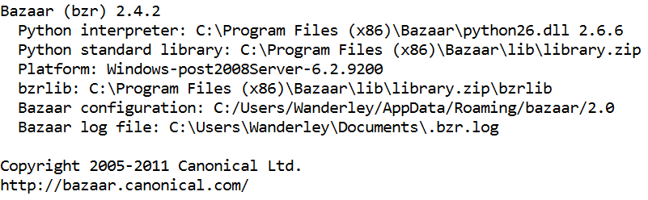 Exportando repositórios antigos do Bazaar para Git 2016-01-27 [tag_coding] Enquanto estudava sobre [controle de fontes distribuído], experimentei e usei os projetos Mercurial e Bazaar, precursores desse modelo que funcionavam bem em Windows. Havia o Git, mas por conta da sua evolução assimétrica, o ambiente da Microsoft havia ficado para trás. exportando-repositorios-antigos-do-bazaar-para-git |
| Hancock 2016-01-22 [tag_movies] Imagine que existe um super-herói que não gosta que lhe chamem de "asshole" (idiota na legenda brasileira, mas em inglês um xingamento que remete ao orifício anal). A maneira mais comum dele ameaçar quem lhe incomoda é enfiar a cabeça de um no orifício anal do outro. Achou engraçado? Se sim, esse é um filme de ação que você não pode perder. Se não, então talvez seja melhor assistir um filme da Marvel menos pretensioso (já viu Guardiões da Galáxia?). hancock |
| M, O Vampiro de Dusseldorf 2016-01-21 [tag_movies] Esse é um filme que explora a moral de um assassino de uma maneira tão absurda e dúbia quanto seus momentos cômicos. O expressionismo de Fritz Lang (e o alemão) colaboram para um filme hoje engraçado em alguns momentos, quando uma pessoa segura um fósforo aceso na mão à espera de uma resposta, mas hipertensos em outros, quando os argumentos de um inesperado advogado de defesa revelam uma relativização perigosa da ação e liberdade humanas, e uma discussão sobre direitos igualmente fascinante. m-o-vampiro-de-dusseldorf |
|
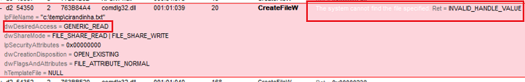 Log de chamadas API direto do WinDbg 2016-01-21 [tag_coding] Há [muito tempo atrás] eu havia falado sobre como a ferramenta logger.exe, do Debugging Tools for Windows, poderia ser usada para gerar um arquivo de log com centenas de APIs detalhadas em sua chamada, como parâmetros de entrada, retorno e tempo. Bom, testando isso hoje, me veio à lembrança o artigo e também a constatação que o logger é muito instável. Tão instável que não consegui logar as APIs que desejava nas inúmeras tentativas que fiz. Isso em um Windows XP! log-de-apis-chamadas-direto-do-windbg |
| Ponte dos Espiões 2016-01-20 [tag_movies] Esse é um filme que carrega um conteúdo emocional graças ao seu diretor, mas uma história que é obviamente 100% sobre política. É sobre tempos mais sombrios do que os de hoje, a Guerra Fria, quando ignorar política poderia te levar à morte, seja ela física ou pública. Ser baseada em uma história real apenas eleva o roteiro a uma das melhores adaptações do ano. ponte-dos-espioes |
| Uma Cilada para Roger Rabbit 2016-01-19 [tag_movies] Um filme de 1988 que conseguiu unir desenhos com live action de uma maneira que até hoje não parece datado. Sua grande sacada é já fazer um filme de época, a Hollywood da década de 40, e embutir todos os desenhos icônicos em um longa-metragem que é usado apenas para realizar essa façanha, mas que em si possui um roteiro com uma trama inteligente por utilizar a própria fusão do mundo dos desenhos e dos humanos. uma-cilada-para-roger-rabbit |
| Lawrence da Arábia 2016-01-18 [tag_movies] Nota: O filme que estou me referindo é a versão restaurada por Robert A. Harris com a supervisão do diretor David Lean, em 1989. Ela exclui alguns diálogos e, se formos considerar o tamanho da versão original, creio que podemos descartar as menores diferenças entre as duas. Além disso, essa versão também recebeu um tratamento de restauração para ser lançada em DVD em 2000 por Martin Scorsese e Steven Spielberg. Scorsese, como se sabe, é um ávido militante pela restauração de obras clássicas do Cinema e mantém um acervo digital inestimável. lawrence-da-arabia |
| A resolução do bitcoin 2016-01-18 Recentemente está havendo fuxicos sobre o último texto de Mike Hearn, um dos desenvolvedores do projeto "Bitcoin Core", que desenha o comportamento da blockchain e acessórios. Nele Mike, que está sendo já há um tempo crítico das mudanças que tem ocorrido no projeto (incluindo um fork pra lá de controverso), pondera sobre o que pode ser o início do fim do experimento bitcoin, graças perifericamente à mudança mais estúpida já feita talvez no projeto, o RBF (replace by fee), que distorce completamente a visão original do paper do Satoshi, criador do Bitcoin, mas principalmente ao já conhecido controle massivo dos servidores atrás do Grande Firewall da China. O detalhe é que nem um nem outro acontecimento deveria se tornar decisivo para o futuro do Bitcoin, cujo teor é ser descentralizado "by design". Porém, quando as questões técnicas caem no colo dos humanos, eles tendem como primatas a jogar merda para tudo que é bom e moral. a-resolucao-do-bitcoin |
| Snoopy & Charlie Brown: Peanuts, o Filme 2016-01-17 [tag_movies] O menino tenta empinar sua pipa; sempre sem sucesso; e ele nunca desiste. Passa o tempo. Agora uma pipa empina um homem; que aprendeu que seus maiores valores encontram-se dentro de si mesmo; e ninguém é capaz de tirar isso dele. Entre esses dois estados da natureza de uma pessoa há um filme extraordinariamente depressivo que, ainda assim, pode e deve ser considerado infantil. Ele evoca a criança deprimida e tímida dentro de cada um de nós; sejam ainda crianças ou já crescidas. Incertos a respeito dos outros, de todos os outros que com nós habitam essa realidade, esse mundo sempre será essa eterna sala de aula. Gostaríamos de sermos aceitos para que conseguíssemos ter um pouco de autoestima. Não é pedir muito: "Se pelo menos, uma vez apenas, eu conseguisse empinar essa pipa..." snoopy-charlie-brown-peanuts-o-filme |
| Querida, Encolhi as Crianças 2016-01-16 [tag_movies] Os efeitos estão datados, mas nem por isso não funcionam em sua maioria. Rick Moranis está hilário procurando seus filhos com uma lupa sobre seus óculos pendurado no jardim suspenso por uma televisão. Seus vizinhos são malucos em um sentido diferente, mas todos eles possuem um objetivo no roteiro esquemático: juntar novamente a família. O feminismo, quem diria, sempre foi um mote na série. querida-encolhi-as-criancas |
| Perdido em Marte 2016-01-15 [tag_movies] Esse é um filme para nerds e hackers no seu sentido mais puro. Ele envolve pessoas usando todo seu conhecimento para resolver um problema de vida ou morte. Como consequência, é um exemplo do que todo grande cientista faz ao longo de sua carreira, só que espremido em um filme de ação, drama e comédia de pouco mais de duas horas. Ele é intenso e realista; como sci-fi, encontra maneiras criativas de evitar muitos tropeços científicos, e os que comete são pelo bem na narrativa. perdido-em-marte |
| Veludo Azul 2016-01-14 [tag_movies] Esse filme nos deixa a dúvida se ele é doentio ou se apenas reflete a doença no mundo. Não é de hoje que se acredita que violência é um sintoma da necessidade de controle de um indivíduo sobre outro. Muitas vezes isso assume o caráter sexual. E se adicionarmos uma moral nesses ingredientes, religiosa ou não, é óbvio que ela julgará como uma coisa má e perversa. veludo-azul |
| Templates em C no lugar de macros 2016-01-14 [tag_coding] A grande vantagem dos templates é manter o tipo de seus argumentos. Infelizmente, eles não existem na linguagem C, mas podem ser usados em construções C feitas com a linguagem C++, como ocorre com quem desenvolve device drivers para Windows. templates-em-c-no-lugar-de-macros |
| Pegando Fogo 2016-01-14 [tag_movies] Pegando Fogo é um filme de sensações mistas. Em seu roteiro, é simplesinho e clichê. Em sua direção e, principalmente, sua edição, é ágil, dinâmico e tão fluido que quase é possível esquecer sua pouca força na história. pegando-fogo |
|
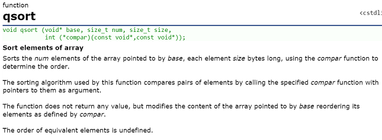 Gabaritos 2016-01-13 [tag_ccpp] [tag_coding] Um __template__ -- ou, como é na tradução da primeira edição de The C++ Programming Language, de Bjarne Stroustrup, aqui no Brasil: __gabarito__ -- é um molde que pode ser usado por diferentes tipos para traduzir o mesmo algoritmo, ou pelo menos a mesma intenção de algoritmo (por pela sobrecarga de operadores é possível que o comportamento de tipos diferentes pode ser diferente). gabaritos |
| Expresso do Amanhã 2016-01-13 [tag_movies] O quão boa é a mensagem de um filme à medida que ela vai se tornando óbvia demais? Em Expresso do Amanhã, um filme violentamente gráfico e com desvios de caráter para o bem de seu argumento, talvez esse limite seja quando um personagem declara que "o trem é o mundo, nós somos a humanidade", em um momento tão avançado na história que até para aquele espectador que dormiu metade do filme a mensagem já é pura e cristalina como água derretida das calotas polares. expresso-do-amanha |
| Blend Melitta e Café dos Reis 2016-01-13 [tag_food] 80% Melitta 20% Café dos Reis. Coloquei bem mais pó, um sabor um pouco forte demais, mas mais rico que o Melitta e menos firulento que o dos Reis; interessante. blend-melitta-e-cafe-dos-reis |
| Classe, objeto, contexto, método, polimorfismo 2016-01-12 [tag_ccpp] [tag_coding] No [post anterior] implementamos "métodos" em C usando ponteiros de função dentro de structs que eram passadas como parâmetro. Tudo isso embutido por um compilador que gera o que chamamos de instância de uma classe, ou objeto, em C++. Isso é possível graças ao contexto que é passado para uma função (que no caso de C++ é o operador implícito __this__, que sempre existe dentro de um método não-estático). classe-objeto-contexto-metodo-polimorfismo |
| O Terceiro Homem 2016-01-11 [tag_movies] Um filme com uma trilha sonora leve e temática, e enquadramentos tortos que lembram que algo está errado. E está, mesmo: Viena está tomada por quatros povos diferentes, cada um fala um idioma, e o povo local fala alemão. Escambos perigosos no mercado negro estão por toda a parte. A atmosfera de O Terceiro Homem é densa, e seus acontecimentos precisos, cirúrgicos. É daqueles raros filmes que não se pode arriscar remover um momento ou expressão sequer. E muito menos uma das inúmeras câmeras tombadas. o-terceiro-homem |
| Classe, objeto, contexto, método 2016-01-11 [tag_ccpp] [tag_coding] No [post anterior] falamos como a passagem de um endereço de uma struct consegue nos passar o contexto de um "objeto", seja em C (manualmente) ou em C++ (automagicamente pelo operador implícito __this__). Trocamos uma propriedade desse "objeto" em C, mas ainda não chamamos um método. classe-objeto-contexto-metodo |
| Melitta Tradicional 2016-01-10 [tag_food] Custo benefício interessante; o pó parece cheio de detritos, mas gera um gostinho de café gostoso, ainda que pouco encorpado, mas aromático o suficiente para ser bom. melitta-tradicional |
| Classe, objeto, contexto 2016-01-10 [tag_ccpp] [tag_coding] Para entender conceitos simples em C++, como métodos de uma classe, ajuda muito seguir o raciocínio dos programadores C e como eles lidavam com o tipo de problema que C++ resolve elegantemente implementando um novo compilador com uma nova linguagem. classe-objeto-contexto |
| Alvin e os Esquilos: Na Estrada 2016-01-10 [tag_movies] Como sempre uma boa ideia desperdiçada, a série dos esquilos cantores vai de mal a pior, restando quase apenas seus protagonistas encantadores e coreografias vazias, o que não basta para tornar um filme bom. Consegue no máximo defesas do tipo "mas eles são tão fofinhos" e "as cenas deles cantando são tão boas". alvin-e-os-esquilos-na-estrada |
| A Vida Marinha com Steve Zissou 2016-01-09 [tag_movies] A Vida Marinha e Terrestre por Wes Anderson. Esse é o diretor que brinca com cenários paralelos e movimentos geométricos de câmera e revela sem nenhum pudor a excentricidade de seus personagens. Do ponto de vista da narrativa, ele brinca também com eles -- seus personagens -- como curiosidades dignas de serem abertas e analisadas através da inteligência de seus idealizadores -- os atores -- e como a interação entre eles revela isso é o mais interessante em sua cinematografia. a-vida-marinha-com-steve-zissou |
| O Dragão Chinês 2016-01-07 [tag_movies] The Big Boss, ou O Dragão Chinês (??), é um dos primeiros filmes de Bruce Lee no estilo Hollywoodiano, mas que mantém uma estrutura típica dos filmes de artes marciais: subir em escala até atingir o chefão. o-dragao-chines |
| Café dos Reis 2016-01-07 [tag_food] Bem caseiro, um pouco doce demais, ainda avaliando. É bem ruinzinho, mesmo; um gostinho de merda. cafe-dos-reis |
| Eterno Amor 2016-01-06 [tag_movies] Um misto de remorso pelas agruras da guerra com a energia de uma investigação guiada unicamente pela fé (ou pelo amor). A beleza da fotografia fria e triste do front se contrapõe aos horizontes oníricos do presente nostálgico, que clama pela elucidação completa de um passado nebuloso que separou um casal apaixonado prestes a se casar. Eterno Amor é pura poesia na forma de criatividade narrativa. Um Pierre Jeunet que retrabalha sua Amélie Poulain em traços mais cruéis e menos esperançosos, e que tenta soar como um romance épico em torno de personagens com pouca alma e muita persistência. eterno-amor |
| Morangos Silvestres 2016-01-05 [tag_movies] Os filmes de Ingmar Bergman tem um efeito hipnótico que é difícil se desvencilhar. Pelo menos para mim. Todo filme que assisto dele, quase morro de sono. Embalando sua história em um ritmo acalentador, nesse caso nostálgico e dramático, Bergman em Morangos Silvestres mostra que é possível fazer Grande Cinema sem se importar muito com o público. Aqui ele conta a história de Dr. Isak Borg e seus pensamentos a respeito de um dia incomum em sua vida, quando irá receber um prêmio no final dela, mas se questiona se suas decisões pessoais até hoje não foram egoístas. Sua mulher já está morta, sua mãe não. A conversa que tem com sua nora no mínimo revela um caráter desagradável de Isak, mas apenas se você conhecer melhor esse distinto senhor. Como sua governanta já aprendeu, é melhor não dar intimidade ou confiança para essa pessoa. morangos-silvestres |
| White Rabbit 2016-01-04 [tag_movies] O que esse filme quer dizer? Que é assim que se forma um psicopata que mata jovens em uma escola? Ou que é assim que se salva uma das vítimas? Qual a lição apresentada por um filme que já revela seu desfecho nos primeiros 30 segundos? white-rabbit |
| S.O.S.: Mulheres ao Mar 2016-01-04 [tag_movies] Este filme é um longo comercial de uma empresa de cruzeiros. A história poderia muito bem acontecer em uma cidade qualquer, já que não há nenhuma cena que justifique a presença dos personagens em um navio. Salvo, claro, as patéticas "homenagens" a Titanic, tornando-o, por comparação, como se Plano 9 do Espaço Sideral, considerado o pior filme de todos os tempos, homenageasse Cidadão Kane, considerado um dos melhores. sos-mulheres-ao-mar |
| O Mentiroso 2016-01-04 [tag_movies] Jim Carrey é um comediante tão talentoso que, se inserido no projeto certo, pode render um filme que sem ele seria apenas um passatempo da sessão da tarde, mas com ele ganha contornos cartunescos que remetem o significado da história que acompanhamos para algo além do trivial. o-mentiroso |
| Loucas pra Casar 2016-01-04 [tag_movies] Dirigido e escrito como uma telenovela, Loucas Pra Casar tem uma boa ideia para uma peça de teatro (talvez até seja) e tenta esticá-la em um filme inteiro usando uma estrutura baseada em episódios descartáveis e bobos, tornando toda a experiência um exercício de futilidade com nenhuma tensão e zero carisma. loucas-pra-casar |
| Ted 2 2015-12-31 [tag_movies] Personagens tão carismáticos em um filme tão disposto a comprar a ideia de um urso de pelúcia com vida adulta não poderia gerar uma continuação mais chata, mecânica e automática das comédias pastelonas. ted-2 |
| Cidade de Deus 2015-12-30 [tag_movies] Nunca mais havia assistido Cidade de Deus depois de sua estreia no cinema, em 2002. Agora, treze anos depois e com 999 filmes no meu "currículo" de cinéfilo dedicado, escolhi esse filme para fazer o que meu amigo chamou de "Pelé das reviews". Portanto, esse é meu filme número 1000 do Cine Tênis Verde. cidade-de-deus |
| Scarface: A Vergonha de uma Nação 2015-12-29 [tag_movies] Antes que me perguntem, gosto das duas performances de Scarface no Cinema. Al Pacino é um cubano crível e o roteiro de Oliver Stone dá tempo para vermos o personagem maturar em sua ascenção e declínio como rei do crime. Não dá para fingir que ele não se inspirou, pelo menos levemente, na performance do filme original. Porém, grande ator que é, Pacino consegue sempre impregnar de naturalidade seus personagens. scarface-a-vergonha-de-uma-nacao |
| Thelma & Louise 2015-12-28 [tag_movies] "Quantas vezes mais essas mulheres vão ser maltratadas?", pergunta um personagem perto do final do filme. Se formos considerar tudo que aconteceu com essas mulheres e por que elas seguiram por esse caminho, veremos que além da pergunta ser retórica, ela se dirige muito mais para o espectador do que para as pessoas do filme. thelma--louise |
| Assassination Classroom (Ansatsu kyôshitsu) 2015-12-28 [tag_movies] A Lua explode mais que a metade, tornando-a eternamente minguante. Alguém diz que os pobres precisam existir para que os ricos consigam explorá-los. Por isso que ainda existe uma das piores salas de aula do Japão, e é por isso que a criatura por trás dessa explosão é enviada para lá. assassination-classroom |
| Um Senhor Estagiário 2015-12-27 [tag_movies] Nancy Meyers (Presente de Grego, O Amor Não Tira Férias) é uma fofa para criar personagens carismáticos e em geral escolher os atores do momento para o papel. Robert de Niro e Anne Hathaway são escolhas óbvias. Hathaway ganhou o Oscar ano passado por chorar e cantar em Os Miseráveis (o que não quer dizer que automaticamente ela vire uma atriz de destaque) e de Niro voltou à ativa em O Lado Bom da Vida três anos atrás. Como a fundadora de uma startup de sucesso e um estagiário da terceira idade em um programa novo da empresa ambos saem perfeitos. Meyers sabe disso, crédito para ela. um-senhor-estagiario |
| Rede de Intrigas 2015-12-27 [tag_movies] Sidney Lumet é um gênio em pegar questões delicadas e profundas da nossa sociedade e inseri-las em histórias corriqueiras ou com uma roupagem 100% pessoal. É assim com os clássicos Um Dia de Cão e Serpico, e não seria diferente quando o tema agora é a TV como ferramenta de divulgação de notícias. Ou pelo menos essa era a ideia original. rede-de-intrigas |
| Noivo Neurótico, Noiva Nervosa 2015-12-27 [tag_movies] Uma comédia romântica se faz pelos seus personagens, como eles interagem, o que fala, quais seus dramas, suas origens, seu crescimento e, principalmente, como se relacionam. Quanto mais reais mais eficiente se torna o filme. Portanto, quando Woody Allen realiza Annie Hall como uma homenagem a Diane Keaton e seu longo relacionamento juntos, a ênfase com que ele a coloca, e se coloca, em um processo de descobrir o que deu errado no romance entre eles é tão grande que a linguagem ultrapassa os limites dos diálogos e temos uma meta-exposição tão "Woody Allen", com a quebra da quarta parede e diversos outros artifícios narrativas, como visitas ao passado comentadas, e em contrapartida, uma participação tão "Diany Keaton" na leveza e naturalidade com que as histórias vão definindo essas duas pessoas, suas manias, suas neuroses e ambições, que a arte quebra sua quarta parede com a vida real e quando percebemos estamos assistindo a uma carta de amor entre um artista autêntico em suas discussões filosóficas sendo entregue publicamente para a pessoa com quem ele parece ter uma dívida de vida, e para quem parece estar pedindo desculpas por segurar seu enorme talento em sua mesquinhez e egocentrismo típicos desse judeu bem-humorado em seu próprio pessimismo. noivo-neurotico-noiva-nervosa |
| Mr. Holmes 2015-12-27 [tag_movies] Ian McKellen protagoniza um Sherlock Holmes no fim de sua vida, se divertindo no processo com expressões de um velho quase senil, aposentado após um caso que se arrepende de seu desfecho, embora não se lembre mais qual foi. Tudo o que resta são pequenas pistas e flashes que surgem conflitando com a versão ficcional de seu amigo já falecido, Dr. Watson. Acompanhado de seu jovem amigo Roger (Milo Parker), filho da governanta (Laura Linney), tenta escrever a versão real da história que causou sua aposentadoria. mr-holmes |
| Aura 2015-12-27 [tag_movies] Aura é um filme sobre um taxidermista -- uma pessoa dedicada a empalhar animais -- que é seguro sobre sua profissão e sobre como faria um assalto a banco, mas inseguro sobre todo o resto: não mataria um animal a sangue-frio na floresta, não consegue se relacionar com sua esposa, não entende como falar a verdade pode ferir pessoas. A grande lição do filme é como as coisas na teoria podem ser de um jeito, mas na vida real, os tons são infinitamente mais complexos. Seu título remete à situação de alguém que sofre de epilepsia, que de acordo com o protagonista, é um estado onde não há opção do que fazer, e isso é, de acordo com ele, a opção perfeita. aura |
| Questão de Tempo 2015-12-27 [tag_movies] Uma comédia romântica, ou até mesmo um romance, hoje se pauta mais em seus personagens do que sua narrativa. Até grandes títulos desses gêneros -- como Harry e Sally ou filmes do Woody Allen -- não são nada originais em seu desenvolvimento e, principalmente, seu desfecho. Porém, como não amar personagens tão carismáticos às vezes criados por performances memoráveis e falas idem? about-time |
| A Viagem de Chihiro 2015-12-27 [tag_movies] A Viagem de Chihiro é um passeio fantasioso sem ser infantil pelo mundo dos espíritos, onde a história importa menos do que o mundo criado para ela, tal qual um Senhor dos Anéis ou Star Wars. Tanto poder na trilha sonora a torna uma sinfonia, ganha corpo independente, mas ao mesmo tempo transforma o filme em uma ópera em espírito. Como vários dos Estúdios o desenho possui detalhes que o faz ganhar vida, como a diferença entre a casa de banho e a casa de sua dona. a-viagem-de-chihiro |
| Tese Sobre um Homicídio 2015-12-23 [tag_movies] Ricardo Darín é um advogado que dá aulas e testemunhou com seus alunos o corpo de uma garota assassinada na frente de sua sala de aula, na Universidade de Advocacia de Buenos Aires. Na véspera havia ido ao lançamento de seu livro, A Estrutura da Justiça, onde tem uma conversa curiosa com um dos seus alunos, filho de um amigo de longa data. O aluno comenta que sua teoria sobre a justiça é que qualquer um pode matar borboletas se não pertencer a um poderoso, já que a lei só existe para protegê-los. Agora, adivinhe qual o inseto que havia no pingente que estava no pescoço da garota assassinada? tese-sobre-um-homicidio |
| A Conspiração da Vaca: O Segredo da Sustentabilidade 2015-12-17 [tag_movies] Se você pensou "esse é mais um daqueles documentários sobre conspirações em torno de algo polêmico como deixar de comer carne", parabéns. Você está 50% certo. Porém, se você também pensou que esse pode ser um filme que faz pensar em pelo menos alguma coisa a respeito de sustentabilidade, você já acertou mais da metade do filme. cowspiracy-the-sustainability-secret |
| A Travessia 2015-12-15 [tag_movies] A liberdade é uma coisa engraçada. Quando a perdemos através do medo isso são criados os mais diversos níveis de negação, fazendo-nos chegar ao cúmulo de aceitar o máximo de segurança pelo mínimo de liberdade, sendo que, ironicamente, acabamos perdendo ambos. a-travessia |
| Black Mirror - S02E04 - White Christmas 2015-12-13 [tag_series] Black Mirror é uma série que explora o que há de pior em nossa era da comunicação instantânea e da tecnologia crescente. Na verdade, eles vão um pouco além da nossa realidade atual, avançando alguns anos/décadas, onde algumas novidades brincam com nosso conceito de humanidade e relacionamentos, mídia e governos. black-mirror-s02e04-white-christmas |
| Black Mirror - S02E03 - The Waldo Moment 2015-12-13 [tag_series] Black Mirror é uma série que explora o que há de pior em nossa era da comunicação instantânea e da tecnologia crescente. Na verdade, eles vão um pouco além da nossa realidade atual, avançando alguns anos/décadas, onde algumas novidades brincam com nosso conceito de humanidade e relacionamentos, mídia e governos. black-mirror-s02e03-the-waldo-moment |
| Black Mirror - S02E02 - White Bear 2015-12-13 [tag_series] Black Mirror é uma série que explora o que há de pior em nossa era da comunicação instantânea e da tecnologia crescente. Na verdade, eles vão um pouco além da nossa realidade atual, avançando alguns anos/décadas, onde algumas novidades brincam com nosso conceito de humanidade e relacionamentos, mídia e governos. black-mirror-s02e02-white-bear |
| Black Mirror - S02E01 - Be Right Back 2015-12-13 [tag_series] Black Mirror é uma série que explora o que há de pior em nossa era da comunicação instantânea e da tecnologia crescente. Na verdade, eles vão um pouco além da nossa realidade atual, avançando alguns anos/décadas, onde algumas novidades brincam com nosso conceito de humanidade e relacionamentos, mídia e governos. black-mirror-s02e01-be-right-back |
| Black Mirror - S01E03 - The Entire History of You 2015-12-13 [tag_series] Black Mirror é uma série que explora o que há de pior em nossa era da comunicação instantânea e da tecnologia crescente. Na verdade, eles vão um pouco além da nossa realidade atual, avançando alguns anos/décadas, onde algumas novidades brincam com nosso conceito de humanidade e relacionamentos, mídia e governos. black-mirror-s01e03-the-entire-history-of-you |
| Black Mirror - S01E02 - Fifteen Million Merits 2015-12-13 [tag_series] Black Mirror é uma série que explora o que há de pior em nossa era da comunicação instantânea e da tecnologia crescente. Na verdade, eles vão um pouco além da nossa realidade atual, avançando alguns anos/décadas, onde algumas novidades brincam com nosso conceito de humanidade e relacionamentos, mídia e governos. black-mirror-s01e02-fifteen-million-merits |
| Black Mirror - S01E01 - The National Anthem 2015-12-13 [tag_series] Black Mirror é uma série que explora o que há de pior em nossa era da comunicação instantânea e da tecnologia crescente. Na verdade, eles vão um pouco além da nossa realidade atual, avançando alguns anos/décadas, onde algumas novidades brincam com nosso conceito de humanidade e relacionamentos, mídia e governos. black-mirror-s01e01-the-national-anthem |
| Atari: Game Over 2015-12-13 [tag_movies] Esse é o tipo de filme que teria tudo para ser inútil, superestimado pelos fãs e um desastre completo, pois possui poucos elementos realmente interessantes nele: temos o Atari, o E.T. e Indiana Jones, coisas totalmente desconexas, além de pouco conteúdo para um filme inteiro. Isso não fosse o trabalho fascinante de "desarquivamento" do filme que une mídia, a empresa Atari, os programadores, os fãs e os dois responsáveis por "desencavar" essa história, e temos como resultado um possível clássico daqui a cinquenta anos -- quem apostaria? -- já que ele estabelece um universo e uma lenda que dificilmente existirão novamente; nunca na geração única dos primeiros players caseiros: uma empresa à beira da falência enterra milhões de cartuchos de seus jogos no aterro da cidade. atari-game-over |
| Os Reis do Ié-Ié-Ié 2015-12-12 [tag_movies] "Um filme é um documentário de sua época", dizia um crítico cujo nome não me recordo. No caso de "A Hard Day's Nigh", cinquenta anos depois, isso não poderia ser mais verdade. Dirigido por Richard Lester (Superman II), é o primeiro trabalho que o diretor realiza com os Beatles (mais tarde ele faria ainda Help! e Como eu Ganhei a Guerra, esse com John Lennon apenas). Ele retrata um dia na vida dos pop stars, quase sempre perseguidos por garotas onde quer que passem, e deixando seu empresário maluco com suas irreverências e fugas. os-reis-do-ieieie |
| Fringe (piloto) 2015-12-12 [tag_series] Logo no começo, Fringe estabelece as conexões necessárias para uma longa jornada em torno do que a ciência descobriu, mas está nas mãos de poucos. Utilizando uma dose suficiente de tecniquês com senso comum, a primeira aventura utiliza efeitos visuais de primeira linha, um thriller policial com tons dramáticos convincentes e personagens em situações que permeiam muito bem o limite entre o plausível e a loucura. fringe |
| E Agora para Algo Completamente Diferente 2015-12-12 [tag_movies] Esse filme é uma compilação de quadros do programa televisivo do grupo de humoristas Monty Pyhton, e por incrível que pareça o conjunto da obra é menor do que a soma das suas clássicas piadas, talvez por não ser um filme de verdade e por exagerar o bizarro e surreal. e-agora-para-algo-completamente-diferente |
| Os Embalos de Sábado à Noite 2015-12-11 [tag_movies] John Travolta nos apresenta Tony Manero, o rapaz pobre que trabalha em uma loja de tinta e vive com sua sempre esquentada família italiana. Tony é fã de Bruce Lee e, claro, Rocky Balboa e Al Pacino (que alguém diz que ele é parecido). Ele tem uma irmã mais jovem e um irmão mais velho, que para orgulho da família virou padre (sim, é uma família realmente italiana). Tony gosta mesmo é de preparar seu cabelo e sair pela noite com seus amigos. Eles vão à danceteria e é lá que ele mostra seu potencial como dançarino. os-embalos-de-sabado-a-noite |
| Tarapaca Cabernet Carmenére 2013 2015-12-10 [tag_food] Um pouco quente, mas encorpado atrativo; boa cor. tarapaca-cabernet-carmenere-2013 |
| Como Sobreviver a Um Ataque Zumbi 2015-12-09 [tag_movies] Mais um filme sobre zumbis que une o velho clichê da impopularidade de nerds -- nesse caso, escoteiros -- com uma daquelas aventuras juvenis que libera poucos peitinhos para muito sangue e tripas. Não há muito interesse no desenrolar dos personagens, nem se eles vão sobreviver (dica: vão) e muito menos o que começou tudo isso. Zumbis, jovens, e é isso. como-sobreviver-a-um-ataque-zumbi |
| Toledo 2015-12-08 [tag_food] Bem equilibrado, na coagem do bule ficou muito bom. toledo |
| Pixote: A Lei do Mais Fraco 2015-12-07 [tag_movies] O menino Fernando Ramos da Silva fez sua estreia no Cinema interpretando uma figura parecida com a realidade em que vivia: Pixote, um garoto que precisa cheirar cola para fugir da realidade em que vive. pixote-a-lei-do-mais-fraco |
| Uma Verdade Inconveniente 2015-12-06 [tag_movies] Dez anos após esse documentário de Al Gore, temos à disposição um material muito mais rico na série Cosmos. Porém, a diferença é que este filme é também uma espécie de discurso político disfarçado por um político que teve colegas cientistas em sua formação. Qualquer um consegue obter insights sobre a natureza em seu passado, e Al Gore teve a genialidade de inserir momentos sentimentais por todo seu discurso anti-aquecimento. uma-verdade-inconveniente |
| Se Beber, Não Entre no Jogo 2015-12-05 [tag_movies] Esse é mais um filme-paródia que usa a estrutura de Jogos Vorazes para misturar filmes como "Se Beber, Não Case", TED e outros cuja "influência" reside apenas em fantasias de personagens de Johnny Depp e outros falando obviedades sobre quem não gostou dos filmes em que eles aparecem. Talvez Jogos Vorazes se torne um campeão disso porque muitas pessoas não gostaram da série, e também porque sua estrutura de jogo na selva já é batido, fácil de acompanhar e não exige muito esforço intelectual inserir piadinhas sem graça no meio de um roteiro que já existe. se-beber-nao-entre-no-jogo |
| Os Excêntricos Tenenbaums 2015-12-05 [tag_movies] Esse é um filme sobre família desajustada, feito ainda em uma época onde filmes sobre famílias desajustadas ainda instigavam o interesse do público Tênis Verde. Até porque, geralmente, essas histórias eram perfeitas para produções independentes de baixo orçamento. Dessa premissa saíram pérolas como Pequena Miss Sunshine, alguns anos depois. os-excentricos-tenenbaums |
| Perdida 2015-12-04 [tag_movies] Esse documentário de colagens charmosas tenta resgatar do passado longínquo toda a história de uma família de cineastas, de sua ascensão até os diferentes declínios, como o fim de uma grande fortuna. perdida |
| Eleição 2015-12-02 [tag_movies] Esse filme de Alexander Payne (Sideways, Os Descendentes) pode ter passado despercebido na época em que foi lançado, mas uma vez que você o assiste, seus detalhes políticos sórdidos irão infestar sua mente como nunca. eleicao |
| Corra que a Polícia Vem Aí! 2015-12-01 [tag_movies] Nunca datado, mas um pouco óbvio. O primeiro filme da série do policial atrapalhado interpretado por Leslie Nielsen tem um bom coração, é cheio de piadas positivas, mesmo que envolva um homem ser amassado por um rolo compressor. corra-que-a-policia-vem-ai |
| Clube de Compras Dallas 2015-11-30 [tag_movies] Nós, libertários, somos frequentemente acusados de não termos coração quando dizemos que as pessoas deveriam ser livres para buscar sua própria felicidade, mesmo que isso implique que os mais desafortunados tenham que se virar muito mais. No entanto, quando esse pensamento chega no sistema de patentes estadunidense, mais especificamente as drogas que tentam amenizar a dor e prolongar a vida de pessoas com HIV/AIDS, torna-se claro que a manipulação estatal nunca teve por princípio a busca da felicidade. clube-de-compras-dallas |
| Desventuras em Série 2015-11-29 [tag_movies] Ninguém escuta as crianças. Essa é a premissa básica que torna possível toda a série de situações mortais em que três jovens órfãos ficam à mercê de um cruel parente distante em busca da herança dos afortunados Baudelaire. desventuras-em-serie |
| How to Get Away with Murder - Primeira Temporada, Episódios 1 ao 3 2015-11-28 [tag_series] Assisti alguns episódios deste que parece ser aquelas séries que causam sensação, talvez pelo seu final. O detalhe é que não importa como, todo novo episódio parece querer voltar nas mesmíssimas cenas finais, onde os estudantes de direito se metem em um assassinato e precisam... adivinhem? Lavar suas mãos. how-to-get-away-with-murder |
| Beavis and Butt-head Conquistam a América 2015-11-28 [tag_movies] Segunda aventura longa-metragem da dupla de adolescentes descerebrados, o humor irreverente de Beavis e Butt-Head sempre será o maior atrativo da animação para adultos (e adolescentes descerebrados como eu, alguns anos atrás). A crítica da sociedade americana começa a partir do momento em que eles não são os únicos idiotas desse universo, mas toda uma nação. A diferença é que os adultos, a despeito de seu conhecimento e suas funções, continuam sendo seres humanos estúpidos auto-centrados. Por comparação, portanto, os dois jovens parece até que simpáticos, nem que seja pela sua ingenuidade. beavis-and-butthead-conquistam-a-america |
| História de Horror Americana - Season 4 - Freak Show 2015-11-28 [tag_series] Acho que já disse que AHS não é uma série de terror no sentido convencional -- assustar pessoas -- mas muito pior do que isso: mostrar o horror implícito no ser humano, e ir às últimas consequências do que a violência de seres egoístas, mesquinhos, vaidosos, orgulhosos e invejosos consegue produzir. E o resultado impressona, mas impressiona muito mais a capacidade dessas pessoas de fazer o mal, quase como se o mal nem precisasse depender dessas pessoas para existir, como se fosse materializado e aparecesse diante de nossos olhos sob a forma de ação, representada pelo horror gráfico, mas com um significado muito maior do que chocar pelo ato em si. É a pessoa responsável pelo ato -- ou às vezes apenas a situação -- que chocam muito mais. american-horror-story-s04-freak-show |
| História de Horror Americana - Season 3 - Coven 2015-11-28 [tag_series] Já havia falado que American Horror Story consegue impressionar pelos seus quesitos técnicos, a criação de seus personagens e seu aspecto gore que consegue preencher tudo que conhecemos de terror Hoolywoodiano (incluindo o subgênero trash). Porém, uma coisa que a série definitivamente não consegue é criar e consolidar histórias que sejam mais do que um passatempo conhecido como novela. Não há profundidade dramática em AHS, apenas a profundidade de seus objetos cortantes na carne humana. american-horror-story-s03-coven |
| História de Horror Americana - Season 2 - Asylum 2015-11-28 [tag_series] A segunda temporada de American Horror Story utiliza outra história, outros personagens, com alguns atores da temporada anterior, e outros dramas. Porém, o que permanece marca registrada da série é a maldade. Não a maldade dos demônios espirituais que dominam as trevas, nem dos E.T.s (se há demônios, por que não aliens?) que nos tratam como ratos de laboratório. Essa maldade é fictícia, metafórica demais para que cause algum impacto além do gráfico. A maior maldade ainda continua sendo a do próprio ser humano. Essa é visível nos olhares da inveja, ódio, loucura, medo. É palpável em suas ações. Rotuladores como seres sociais por natureza, não haveria nada com maior senso de comunidade e solidariedade do que um asilo para deficientes mentais. No entanto, homenageando novamente outra grande obra cinematográfica (estou falando, claro, de Um Estranho no Ninho), o Asilo Briarcliff é um simulacro da nossa sociedade para o estudo da crueldade. american-horror-story-s02-asylum |
| História de Horror Americana - Season 1 - Murder House 2015-11-28 [tag_series] Pela primeira temporada de American Horror Story (ou História de Horror Americana) pode-se perceber que, apesar de recriar muitas (quase todas) histórias de horror que fazem parte não apenas do imaginário de terror coletivo como foi responsável pelos maiores clássicos do gênero no Cinema, a direção e o roteiro mistos quase sempre referenciam de uma forma tão orgânica essas histórias que fica impossível não apreciar tamanha homenagem que a série proporciona para os fãs de terror. american-horror-story-s01-murder-house |
| A Mosca da Cabeça Branca 2015-11-28 [tag_movies] "The Fly" cria uma sensação de deslumbramento e fascinação pelo horror da possibilidade de acontecer na vida real o que vemos no filme. E o que vemos não é muito, e seus efeitos são irregulares. Porém, ao apostar no circunstancial em vez do puro deleite visual e gráfico, a obra não-datada da década de 50 mantém sua força dramática e a capacidade de fazer espectadores ainda hoje se pegarem pensando em como tudo isso é surreal, horrível e... fascinante. a-mosca-da-cabeca-branca |
| Tomorrowland: Um Lugar Onde Nada é Impossível 2015-11-23 [tag_movies] Um "A Corrente do Bem" atualizado a nível tecnológico, inserido em uma aventura onde pessoas voam, coisas voam e a NASA é uma expansão da Disney. Ou seria o contrário? Tomorrowland só não é um filme Sessão da Tarde graças ao toque mágico de Brad Bird (Os Incríveis, Ratatouille), que consegue pegar uma aventura insossa como essa e torná-la em algo divertido, que parece conter mais do que o simplório roteiro que escreveu com Damon Lindelof (Guerra Mundial Z, Prometheus), onde o futuro da humanidade está ameaçado, mas ao mesmo tempo seus gênios criaram um lugar onde tudo é possível (em que tudo se resume basicamente em voar e flutuar em diferentes versões). Com a ajuda dos visionários (que antes seriam apenas nerds) Frank Walker (George Clooney) e Casey Newton (nossa, como eles são originais nos nomes dos personagens!), talvez ainda haja esperança. tomorrowland-um-lugar-onde-nada-e-impossivel |
| Missão: Impossível - Nação Secreta 2015-11-22 [tag_movies] É brilhante e até comovente perceber como o gênero de espionagem moderna que corre nas veias dessa franquia se atualiza a cada novo trabalho, e como "Rogue Nation" se sai infinitamente melhor que o último James Bond de Daniel Craig ("Spectre"). Mesmo em momentos óbvios como a "missão impossível" tradicional o filme consegue manter a tensão e sua eficácia, marca de um filme verdadeiramente competente em seu gênero: quando sabemos o que vai acontecer, e mesmo assim funciona maravilhosamente bem. missao-impossivel--nacao-secreta |
| Jogos Vorazes: A Esperança - O Final 2015-11-22 [tag_movies] Se pudesse resumir com uma palavra não apenas a parte final, mas a saga de quatro filmes baseados nos livros de Suzanne Collins, eu diria que "corajoso" é uma escolha interessante, embora incompleta. Ser corajoso brincando com a noção de poder estatal hoje em dia parece ser chover no molhado, mas é preciso lembrar que o último livro foi lançado em 2010, e em cinco anos muitos detalhes do jogo político do livro foram apreendidos por jovens leitores, além de ser intensificado o debate nas correntes underground desse tipo de discussão. Sim, ser corajoso pertence à lista de motivações literárias de Collins, mas mais do que isso, entender as mudanças em torno da crise de 2008 e se debruçar como realmente funciona o jogo político há milhares de anos é o que torna Jogos Vorazes: a Coleção, como um guia completo de como o governo engana todos seus súditos pelo poder eterno de exploração. jogos-vorazes-a-esperanca-o-final |
| Alpasión Malbec 2012 2015-11-22 [tag_food] No começo alcóolico; passando uma hora, além de aromático, sedoso, e com um amargor intenso, mas breve. No final, menos alcóolico, mais tânico. alpasion-malbec-2012 |
| Jogos Famintos 2015-11-18 [tag_movies] Das paródias, talvez seja um dos poucos que segue boa parte do roteiro, ou pelo menos da história original. Sendo assim, se torna um filme até que simpático, pois pega carona em uma boa narrativa (a do original), além de nostalgicamente remeter aos bons momentos do primeiro filme da franquia baseada em livros. jogos-famintos |
| Como ser um hacker 2015-11-18 Talvez as pessoas estejam com preguiça de ler. Talvez estejam apenas inundadas por tanta informação que temos hoje. Talvez seja apenas falta de foco pelas interrupções consecutivas de novos "espertofones" ou nossas redes sociais viciantes, pois oferecem muito a troco de nada. como-ser-um-hacker |
| 007 Contra Spectre 2015-11-14 [tag_movies] Spectre é tão bom ou tão ruim quanto Quantum of Solace, mas por motivos opostos. Enquanto na segunda aventura de Daniel Craig como James Bond a complexidade do roteiro piorava uma experiência que já se repetiu em mais de vinte filmes, dessa vez a sua simplicidade quase infantil gera uma decepção crescente a cada minuto que se passa na projeção. 007-contra-spectre |
| Caá Yari 2015-11-09 [tag_beer] Doce com o amargor característico de uma Belgian Blonde Ale. caa-yari |
| Dulce Gosto Buongiorno 2015-11-08 [tag_food] Um espresso simples, sem muita frescura; mais encorpado que o normal e menos amargo. Coado Amargo como o espresso, mas mais fraco e com um gostinho de água suja. dulce-gosto-buongiorno |
| Homem-Formiga 2015-11-07 [tag_movies] Mês passado, enquanto trabalhava em meu escritório em casa, um pequeno grilo pulou da janela para do lado de minha mesa. Ele "averiguou" o local e ficou no ponto mais alto do recinto: o suporte fechado de minha câmera. Passados três dias, resolvi alimentá-lo com um pedaço de folha de alface e uma uva. Logo foram folhas do manjericão e salsinha, direto dos meus vasos do quintal. Quando ele ia passear em torno do aquecedor, fui aos poucos abrindo o suporte onde ele ficava até atingir quase a altura do parapeito da janela, no que ele voltava a escalá-lo, sempre permanecendo parado por longas horas no seu ponto mais alto. homemformiga |
| A Fortuna de Ned 2015-11-06 [tag_movies] Se eu fosse um crítico de prestígio lá pelos idos de 1998, seria o primeiro a defender o filme estreante do diretor/roteirista Kirk Jones, que depois dirigiu os mais famosos "Nanny McPhee, a Babá Encantada" e Estão Todos Bem. A Fortuna de Ned é um filme de baixa produção, com uma única trilha sonora e 55 atores que interpretam um pequeno vilarejo isolado na poética Irlanda. a-fortuna-de-ned |
| Igual a Tudo na Vida 2015-11-02 [tag_movies] Este é um filme típico de um Woody Allen contemporâneo: atores conhecidos em outras comédias (Jason Biggs é o protagonista em American Pie) realizando as personas de Allen como trabalhadores intelectuais e suas crises de relacionamentos enquanto passeiam por Nova York. Porém, diferente dos "bons Woody Allen", este patina sobre um mesmo tema sem levantar qualquer questão mais ou menos interessante, entregando personagens patéticos por si só, sem precisar de nenhuma crise ou complexo grandes o suficiente para tornarem suas vidas amorosas um desastre. igual-a-tudo-na-vida |
| Que Mal Eu Fiz a Deus? 2015-11-01 [tag_movies] Essa comédia francesa explora os estereótipos e o racismo de maneira quase inofensiva. No processo, joga algumas piadas de caráter duvidoso, mas em sua maioria oferece uma reflexão boba e superficial a respeito das rixas que as pessoas têm com as outras que tiverem outra origem e cultura. que-mal-eu-fiz-a-deus |
| Histórias mínimas 2015-11-01 [tag_movies] Parece um road movie disfarçado, já que todas as cidadezinhas e pessoas envolvidas vivem à beira da estrada. Estamos no interior da Patagônia, Argentina, terra do vinho e da empanada. Um velho senhor nutre a esperança de poder reaver seu velho cão que fugiu diante de um comportamento condenável de seu dono. Uma jovem e humilde mãe é sorteada em um programa de televisão para concorrer a um multiprocessador de alimentos. Um vendedor detalhista e falastrão tenta entregar o bolo perfeito para o filho de seu interesse amoroso. historias-minimas |
| Aconteceu Naquela Noite 2015-11-01 [tag_movies] Será esta a comédia romântica mãe de todas as comédias românticas? Bom, uma coisa ela é: o exemplo perfeito de como, mesmo se tratando de um sub-gênero maniqueísta, é possível extrair boas histórias e um ótimo elenco em cima do que hoje são clichês mais que consagrados. Alguns já são jurássicos! aconteceu-naquela-noite |
| Kung Fury 2015-10-29 [tag_movies] Este curta (média?) metragem mistura anos 80, raptors, cop-raptor, arcades, Hitler, hackerismo, gostosas medievais, lasers, Thor, Kung-Fu, viagem no tempo, uma profecia e esse é apenas o começo de uma salada que apela para o absurdo usando efeitos digitais grotescos que se tornam caricatos e conseguem manter pelo menos meia-hora de um sentimento de confusão, identificação e êxtase juvenil. Afinal de contas, em que universo paralelo você pensou que veria um dinossauro lutar contra uma água dourada nazista? kung-fury |
| Indexando símbolos com rapidez 2015-10-28 [tag_coding] Trabalhar com inúmeros projetos de diferentes clientes e diferentes binários pode ser uma loucura. Quando o mundo é Windows, algumas medidas precisam ser padronizadas para evitar a perda de informação durante todo o processo de desenvolvimento, testes, deploy e manutenção. indexando-simbolos-com-rapidez |
| Jabutipa IPA 2015-10-27 [tag_beer] O amargo da Boemia, cujo amargor não tem muito aroma ou sensação, mas foda-se: É amargo pra caralho. jabutipa-ipa |
| Back in Time 2015-10-27 [tag_movies] Um documentário sobre De Volta para o Futuro possui um timing tão menos empolgante que os filmes que homenageia que soa o tempo todo como uma pegadinha. No entanto, o trabalho do diretor Jason Aron realmente entrevista diversas pessoas envolvidas com a produção dos filmes, os atores, os fãs. Algumas curiosidades são ditas, alguns casos engraçados, mas nada que justifique sua existência a não ser justamente o que Robert Zemeckis negou fazer com uma camiseta "não-De Volta Para o Futuro IV": um caça-níqueis. back-in-time |
| Mistress America 2015-10-26 [tag_movies] [tag_cinemaqui] O diretor Noah Baumbach faz aqui um trabalho menos intelectualmente fechado que seu "Frances Ha", mas emprega a mesma atriz, Greta Gerwig, que surge de sopetão e é a mesma Frances que conhecemos no filme anterior. mistress-america |
| CarinaE Prestige Blend Mendoza 2009 2015-10-26 [tag_food] Ao abrir, muitos aromas. Depois de um dia ou dois, um tanto sem graça e forte. Pode ter sido efeito do momento. Ainda alcoólico (depois do fechador à vácuo), meio amargo, pouco aroma. Menos alcoólico, mas é muito forte, mesmo. Quente. carinae-prestige-blend-mendoza-2009 |
| Advanced Style 2015-10-25 [tag_movies] A partir do blogue do fotógrafo Ari Cohen, que iniciou este projeto de registrar as mulheres mais idosas e mais bem vestidas das ruas de Nova York, o filme de Lina Plioplyte esbanja charme, espiritualidade e uma energia sobrenatural vinda da vida de sete senhoras que usam a moda e outras artes como expressão de suas avançadas vidas com um toque de humor e leveza que raramente encontramos no fim da vida. Nenhuma delas aparenta a idade avançada que possuem, e é por isso que o filme faz questão de dizê-las a cada nova apresentação. A lucidez em se expressar, verbal e visualmente, além das reflexões muito bem-vindas sobre o que é este último passo em suas vidas, transforma uma experiência sem quase nenhum foco em um passeio glorioso pelo significado de viver tanto tempo e ainda descobrir mais vida na próxima esquina. advanced-style |
| The English Surgeon 2015-10-24 [tag_movies] A história do neurocirurgião Henry Marsh e de sua amizade com um médico na Ucrânia se confunde com os métodos vistos como arcaicos por ele em comparação com o sistema de saúde inglês. Acostumado a operar todo e qualquer paciente com um tumor detectado, lá ele leva sempre que visita a região apetrechos criados por ele em sua oficina a partir de restos de operações realizadas em sua terra natal. Quando uma broca de perfuração custa em torno de 80 euros e é usada só uma vez enquanto na ex-URSS uma é usada por muitos anos, nota-se um abismo gigantesco entre os sistemas de saúde dos dois países. the-english-surgeon |
| Dheepan 2015-10-24 [tag_movies] [tag_cinemaqui] A Sri Lanka é uma ilha bem ao sul da Índia. Obteve sua independência da coroa britânica há mais de meio século, e desde a década de 80 participou de dois processos diametralmente opostos: o crescimento econômico pela liberalização do mercado e cerca de cem mil mortos em uma guerra civil de 25 anos contra o norte e leste do país. Atualmente é uma democracia consolidada e a mais antiga da região, mas não faltam acusações de que houve durante essa guerra um verdadeiro genocídio, ou pelo menos um massacre desproporcional. dheepan |
| Circle 2015-10-24 [tag_movies] Circle é um trabalho minimalista que resume o sistema de votos através de uma alegoria simplista, mas eficiente: alienígenas adbuzem 50 pessoas e as colocam dispostas em um círculo. Elas não podem sair de seus lugares nem tocar as pessoas ao lado, pela pena de serem mortas por um raio que sai do meio do círculo. Ah, mais um detalhe: de tempos em tempos uma pessoa é morta, escolhida através de todos. circle |
| Tipuana 2015-10-21 [tag_food] Parece equilibrado, mas igualmente ácido; é a desvantagem de cafés não-balanceados e com firulas. Se colocar pó na medida certa, mais equilibrado que o outro de Tiradentes. tipuana |
| Goosebumps: Monstros e Arrepios 2015-10-21 [tag_movies] [tag_cinemaqui] O escritor R. L. Stine é conhecido como o "Stephen King da literatura infantil". Se formos levar essa analogias para as telas, a comparação parece se tornar até mais óbvia. Enquanto os monstros criados por King encarnam o drama humano, em "Goosebumps" vemos um louva-a-deus gigante e maluco tropeçando nos carros em seu caminho e um boneco de ventríloquo servindo como o vilão personificado de um mal que está mais para encarnação da travessura. goosebumps-monstros-e-arrepios |
| Fundamentos 2015-10-21 Um amigo meu costumava dizer que qualquer conhecimento precisa ter bases sólidas. "Os fundamentos", dizia ele. Sem os fundamentos, o prédio do conhecimento vai abaixo em pouco tempo. Mas com eles, construídos de cimento armado, reforçados e com alicerces bem planejados, não há informação demais suficiente para abalar o prédio do conhecimento. fundamentos |
| O Exterminador do Futuro: Gênesis 2015-10-16 [tag_movies] Diferente dos outros dois filmes anteriores, Genesys resolve homenagear a saga original revendo as cenas clássicas do filme de 1984, refilmando-as com menos charme, e entregando novas reviravoltas. Como tradição, inova o modelo T-800, mais uma vez trazendo uma novidade da época, a nanotecnologia. Não se saindo tão mal quanto o terceiro filme, mas impedindo qualquer empatia do público com essas novas versões de Sarah Connor, Kyle Reese, John Connor e Terminator, sua "sacada genial" é revelada no meio da história, e para os que tiveram a sorte de não assistir nenhum trailer e não ver nenhum pôster, pode até ser uma surpresa, mas surpresas não necessariamente tornam um filme melhor, e nesse caso temos o efeito contrário. o-exterminador-do-futuro-gnesis |
| Eu Matei Minha Mãe 2015-10-16 [tag_movies] Xavier Dolan é um menino prodígio que desde os cinco anos atua e desde os vinte se envolve com direção e roteiro de seus filmes de temática adolescente com uma abordagem intensamente poética. Este seu primeiro filme, Eu Matei Minha Mãe, foi escrito por ele aos dezesseis anos e é parcialmente biográfico. eu-matei-minha-mae |
| Peter Pan 2015-10-15 [tag_movies] [tag_cinemaqui] Há algo de mágico na direção de arte de Peter Pan, uma versão Live Action contando uma história estilo "Origins" do menino que não quer crescer. Navios voadores, sereias deslumbrantes, fadas minúsculas e brilhantes: tudo parece reluzir e impressionar no filme em uma versão grandiosa que consegue com sucesso flertar com detalhes do desenho original que o fez ser um sucesso (a fonte original mesmo remonta do começo do século passado, uma peça e um romance do escritor J. M. Barrie). Porém, por outro lado, ele se mantém próximo demais da cartilha de aventuras padrão para conseguir impressionar os espectadores mais atentos, se tornando inevitavelmente previsível, e por isso, tristemente enfadonho em sua estrutura narrativa. peter-pan |
| The Nightmare 2015-10-11 [tag_movies] Este documentário com cheiro de History Channel e seus canais auxiliares de balelas acompanha os testemunhos de várias pessoas cujo histórico de vida não sabemos quase nada, exceto que todos eles compartilham de visões durante a noite em que estão dormindo e acordados ao mesmo tempo, incapazes de se mexer. Diagnosticado atualmente como um transtorno chamado de paralisia do sono, o objetivo do diretor Rodney Ascher parece ser convencer ambos os lados: de que tudo aquilo são filmagens romantizadas dos testemunhos (pois sempre estamos a par dos efeitos visuais sendo aplicados) e que pode ser que haja algo sobrenatural acontecendo, nem que seja pelo menos os arquétipos de Jung em ação, presentes no inconsciente de toda a humanidade. the-nightmare |
| Eu Estava Justamente Pensando em Você 2015-10-09 [tag_movies] [tag_cinemaqui] O amor está no ar, mas seus portadores estão com dúvidas existenciais, são espertos demais para senti-lo ou sofrem da doença do século: ansiedade. Ou melhor dizendo, "O" portador. Dell (Justin Long) é um jovem que super-analisa sua vida a todo momento. Curiosamente, o filme começa com ele sendo abordado por uma personagem secundária que nunca mais aparece, o que já indica caminhos tortos no roteiro para fazer ele parecer certo. Mas tudo bem, já que a primeira cena é a de outro personagem secundário em um pré-encontro torcendo para que isso que ele está vivendo não seja um sonho. Infelizmente, as paredes em sua volta estão pintadas com uma noite estrelada com meteoros, e todos já sabem o que isso significa. eu-estava-justamente-pensando-em-voc |
| Ida 2015-10-08 [tag_movies] O universo em torno de Ida torna a vida tão depressiva que até passar o resto dos dias em um convento não parece uma ideia tão ruim. Filmado em preto e branco, com uma tela praticamente quadrada e uma câmera que fica praticamente parada, a atmosfera é bela, lúdica e realista. Anna (Agata Trzebuchowska), a noviça, e Wanda (Agata Kulesza), a tia, fazem parte de um conjunto de planos-detalhes (quando a tela mostra apenas um close mais intimista) que capturam a essência do que está sendo mostrado. Interessante do começo ao fim. ida |
| Deus da Carnificina 2015-10-07 [tag_movies] Deus da Carnificina só funciona tão bem porque as pessoas que nele estão continuam sendo elas mesmas até o fim, e usam personalidades extremamente triviais, que fazem parte do dia-a-dia de qualquer um (ainda mais nas infinitas discussões de internet). Não há seres complexos demais neste filme, mas ideias antagônicas construídas através de quatro performances que ecoam até a duração do próximo argumento. Não há agressão física que consiga se comparar a um embate de ideias que, diferente dessa, nunca termina quando um dos lados cai no chão. deus-da-carnificina |
| Lunar 2015-10-06 [tag_movies] Três anos. Apenas isso, e termina o contrato entre Lunar, uma corporação que domina o ramo de energia na Terra, e Sam (Sam Rockwell), o trabalhador solitário da estação de coleta de Hélio 3 na Lua. Como única companhia, Sam dispõe de GERTY (Kevin Spacey), um computador que reconhece a voz e o sentimento do astronauta. Em "Lunar", curiosamente, a única voz amiga do ser humano é um programa cibernético. lunar |
| Samurai X 1: O Filme 2015-10-05 [tag_movies] Em um momento do filme um personagem fala: "Me mate", no que o outro responde: "Morra". Logo depois, algúem diz: "Seja bem-vindo de volta", no que o outro responde: "Estou de volta". Acredito que isso sirva para demonstrar um dos grandes erros em Samurai X 1: O Filme: sua redundância. Com uma duração de duas horas e 14 minutos, o diretor Keishi Ohtomo (Samurai X 1: O Filme, Samurai X 2: O Inferno de Kyoto, Samurai X 3: O Fim de Uma Lenda... "Samurai X 4: Antes do Início"?) parece ter se empolgado um pouco demais com o personagem nascido dos mangás (e posteriormente anime). samurai-x-1-o-filme |
| Um Método Perigoso 2015-10-02 [tag_movies] Cronenberg, um diretor geralmente fascinante (Terapia de Risco), por algum motivo, dirigiu um filme burocrático que conta a história de amizade entre Sigmund Freud (Viggo Mortensen) e Carl Jung (Michael Fassbender) como um documentário da BBC. No meio envolve a russa judia Sabina Spielrein (Keira Knightley), de paciente para amante e posteriormente médica. um-metodo-perigoso |
| Beira-Mar 2015-10-02 [tag_movies] [tag_cinemaqui] Beira-Mar é aquele lugar onde terra e mar são confundidos, e onde geralmente há uma praia. Categorizar o trabalho que leva esse nome como "filme-gay" é de uma miopia sem tamanho. Seria o mesmo que chamar beira-mar (o local) de 100% terra firme ou de 100% alto mar. Havendo infinitos graus de atração sexual que uma pessoa pode ter, e que costumamos polarizar como gay e hétero, os protagonistas da história flertam com todos eles, como se andassem despreocupadamente pela praia em um passeio matinal. beiramar |
| A Possessão do Mal 2015-10-01 [tag_movies] [tag_cinemaqui] Você já conhece a história: câmeras espalhadas pela casa; acontecimentos estranhos que vão aumentando a cada noite; os especialistas na arte de se comunicar com espíritos. Você até já conhece suas variantes: a família feliz com um final trágico; o cético que precisa de provas concretas de que algo está errado; os jump scares que agora usam a câmera subjetiva para assustar. a-possessao-do-mal |
| Soberano 2015-09-30 [tag_food] Amargor de Minas, mas mais leve e equilibrado. Fácil de beber; notei que ele é bem ácido com o passar do tempo. Aroma presente durante o feitio, um gosto amargo, mas depois que se acostuma, vicia. soberano |
| O Grande Chefe 2015-09-30 [tag_movies] Uma comédia pautada no absurdo, mas que ancora suas situações em neuroses realistas nos colegas de uma empresa. No entanto, tais neuroses nunca seriam expostas por pessoas reais, e a beleza de O Grande Chefe é justamente deixar fluir o comportamento humano até suas últimas consequências, enquanto ironicamente o comportamento de um ator medíocre é analisado sob a ótica da incompetência. o-grande-chefe |
| Shortbus 2015-09-29 [tag_movies] Um indie por natureza, apresentado em uma Nova York de maquete com textura surreal, colorido todo o tempo com uma extensa e agradável trilha sonora, protagonizado por atores em sua maioria completos desconhecidos e, para salpicar ainda mais, recheado de cenas de sexo reais, por casais, trios e grupos inteiros. shortbus |
| Eisenbahn Pilsen 2015-09-28 [tag_beer] Mais consistente, menos aguada que a maioria; não muito forte. eisenbahn-pilsen |
| Deus Não Está Morto 2015-09-28 [tag_movies] Nietzsche havia alertado aos pensadores mais livres já no século XVII: deus está morto. Hoje, de uma maneira irônica, um movimento encabeçado por cristãos anuncia aos quatro ventos: foda-se a lógica! deus-nao-esta-morto |
| Planeta Terror 2015-09-27 [tag_movies] Quando se fala em fazer um filme trash, o diretor Robert Rodriguez não brinca em serviço. Planeta Terror, o filme-parceiro do projeto grindhouse criado por ele e Tarantino -- em que cada um realiza um filme com essa proposta de filme antigo Lado B -- é um exemplo de filme ruim que é ruim por ambos os motivos: o real e o imaginado. Porém, para realizar este feito ele precisa percorrer o destino de diferentes personagens que se tornam marcantes por dois motivos: as ótimas atuações dos atores que o interpretam e o velho jeito Robert Rodriguez de criar momentos icônicos, ainda que desprovidos de senso estético. planeta-terror |
| C.O.G. 2015-09-27 [tag_movies] Uma experiência religiosa ou uma auto-descoberta sexual? Uma visão romântica de nossas diferenças de princípios ou um drama que tenta soar engraçado? Se sentindo com múltiplas personalidades, C.O.G. pode muito bem se apresentar como uma visão religiosa do mundo, pois usa a maçã como uma espécie de símbolo do pecado (e da tentação) e mantém em sua história uma estrutura esquizofrênica tão conhecida dos religiosos mais fanáticos. cog |
| (Des)encontro Perfeito (Man Up) 2015-09-25 [tag_movies] Comédia despretensiosa (e britânica, vale afirmar) sobre uma mulher "velha" de 30 e poucos anos e insegura em conseguir um companheiro, apesar de sua família e sua mãe sempre tentarem suportá-la. Ela carrega um caderninho de anotações onde há mantras que ela repete para se sentir auto-confiante. Um desses mantras é o batido "arrisque-se". man-up |
| Deu a Louca nos Nazis 2015-09-25 [tag_movies] Uma comédia, ou suposta comédia, sobre nazistas que fogem para a Lua no final da guerra e vivem lá planejando um ataque à Terra, até que dois astronautas, sessenta anos depois, voltam a pisar em solo lunar e um deles se torna cobaia para experimentos de um cientista maluco nazista. Infelizmente esse rapaz é negro. deu-a-louca-nos-nazis |
| Cada Um Na Sua Casa 2015-09-25 [tag_movies] Home não tem coragem suficiente para elevar todas suas ideias à terceira potência, mas pelo menos evita ser engraçadinho demais e consegue colocar uma história em um patamar digno. Levando a atual tendência de questionar a autoridade e de se preocupar com o próximo, conhecemos uma raça alienígena que segue um líder (Steve Martin), nos mesmos moldes do rei Julian de Madagascar, e se descaracteriza a partir de um guia informal de como devem se comportar (leia-se "socialismo"), independente do que realmente achem. cada-um-na-sua-casa |
| O Preço da Fama 2015-09-24 [tag_movies] [tag_cinemaqui] No começo de O Preço da Fama somos avisados de que a história se baseia em fatos verídicos. O fato em si foi o roubo do caixão de Charles Chaplin, na Suíça (sua morada por 25 anos), por dois imigrantes desempregados, e a posterior tentativa de resgate. No entanto, os detalhes em torno desse único fato são aumentados em doses desproporcionais pela imaginação do curioso diretor Xavier Beauvois. o-preco-da-fama |
| Hoegaarden trigada 2015-09-24 [tag_beer] É trigada, mas não tão doce; bem encorpada. hoegaarden-trigada |
| Plano 9 do Espaço Sideral 2015-09-23 [tag_movies] É este o "pior filme de todos os tempos", como foi votado no livro do crítico Michael Medved? É óbvio que não. Qualquer lista sobre qualquer coisa sobre Cinema está fadada a 1) estar incompleta e 2) estar errada. Dessa forma, nunca poderemos falar do melhor ou do pior sem nos esquecermos que ninguém nunca viu todos os filmes do mundo, e portanto sempre haverá piores filmes que nunca foram vistos. Além do que, se você lembrar do item 2, uma lista de melhores/piores sempre estará errada, pois esta é uma visão muito mais próxima do gosto pessoal do que uma crítica bem embasada nas "características" de um trabalho como esse. plan-9-from-outer-space |
| Um Homem com uma Câmera 2015-09-21 [tag_movies] Man With a Movie Camera, ou "Chelovek S Kino-apparatom", provavelmente é o filme experimental mais conhecido pelos cinéfilos, talvez por ter sido recomendado e elogiado por críticos do mundo todo. E não é à toa. O filme é de fato dirigido (e escrito) por um homem e sua câmera na mão, o russo Dziga Vertov. Vertov foi um daqueles cineastas que ninguém ouve falar que produzia os "newsreel", as sessões de Cinema que traziam notícias, pequenas estórias e itens de interesse comum. Iniciou sua carreira de diretor com os Kino-Pravda, ou "filme-verdade": "newsreel" que combinavam diferentes cenas para produzir um significado mais profundo. Um detalhe é que, geralmente filmando em lugares públicos pessoas que lá estava, ele costumava esconder sua câmera e filmar o que queria antes de pedir permissão. Isso é importante para entendermos toda a espontaneidade encontrada nessa sua obra celebrada e redescoberta até hoje. man-with-a-movie-camera |
| Vivendo Com Um Dólar 2015-09-20 [tag_movies] Alguns filmes são propositadamente desonestos com suas premissas, dramatizando em excesso para conseguir validar seus argumentos. No processo, consegue realizar um bom trabalho, ainda que parcial demais. Dessa safra temos Blackfish e Chasing Ice. living-on-one-dollar |
| Advantageous 2015-09-20 [tag_movies] Este filme possui um conceito interessante com pouco substrato. São pessoas interagindo com uma pintura futurista ao fundo. Quando tudo termina, não há conflito, mas a concretização do que já se esperava no começo. advantageous |
| Terror in Resonance 2015-09-19 [tag_series] Esse aparentemente é um seriado de uma temporada apenas, com cada um de seus onze episódios com cerca de 20 minutos ou menos, dando no final das contas um filme de pouco mais de três horas com os famigerados cortes e padrões de mídia japonesa. terror-in-resonance |
| As Três Idades 2015-09-18 [tag_movies] Three Ages é o primeiro longa-metragem de Buster Keaton, um dos comediantes mais geniais do início do Cinema, se não um dos mais geniais do Cinema em si. Diretor, ator, produtor e roteirista, Keaton sempre com seu jeito sisudo conquistava o público como resultado indireto de sua competência em narrar suas aventuras em diferentes histórias e, ao contrário de Charles Chaplin, com diferentes personagens. as-tres-idades |
| Sete Oportunidades 2015-09-17 [tag_movies] Seven Chances é um filme de uma hora de Buster Keaton que mais uma vez consegue a proeza de contar uma história datada, fútil e banal da maneira mais prosaica, mais hilária e mais movimentada possível. sete-oportunidades |
| A Pele de Vênus 2015-09-16 [tag_movies] [tag_cinemaqui] Finalmente chega no Brasil "A Pele de Vênus", filme de 2013 do diretor Roman Polanski e que lembra bastante Lua de Fel ao falar das complexidades da relação entre os sexos, principalmente sobre dominação de um sobre outro. a-pele-de-venus |
| Que Horas Ela Volta? 2015-09-15 [tag_movies] "Que Horas Ela Volta" tem a virtude de conseguir se tornar um filme essencial para a discussão contemporânea e ao mesmo tempo se entregar a uma cartilha retrógrada que é usada a cada momento como combustível para uma esquerda brasileira (igualmente retrógrada) com sede de vingança e miopia de caráter. que-horas-ela-volta |
| Quando Estou Com Marnie 2015-09-13 [tag_movies] Mais um dos filmes dos estúdios Ghibli (em que um dos fundadores é Hayao Miyazaki) que já estreou há mais de um ano no Japão e aqui custa a aparecer uma distribuidora decente. Aliás, vamos combinar: não existe distribuidora confiável em solo nacional. quando-estou-com-marnie |
| Colorado Café 2015-09-13 [tag_beer] Equilibrando doce e amargo, um pouco aguada (sem lúpulo), e talvez lembre café. colorado-cafe |
| Mais um Verão Americano (piloto) 2015-09-12 [tag_series] A Netflix é uma empresa, e como toda empresa ambiciona o lucro. Por causa disso obviamente não consegue se desvencilhar do seu destino Hollywoodiano de descobrir uma fórmula e repeti-la à exaustão. É assim com seu conteúdo adulto -- sexo ocasional + violência exarcebada -- e é assim com suas comédias agrada-público-medíocre -- atores divertidos/comediantes, uma ou outra fala interessante, o tema acima da arte. mais-um-verao-americano |
| É o fonte, idiota! 2015-09-12 Saiu um artigo recente no The Old New Thing (thanks Strauss pelo tuíte) que fala sobre não misturar runtimes do C de diferentes versões do compilador (especialmente se essas versões estão separadas pelo tempo em nada mais nada menos que dezenove anos!). Concordo. Aliás, a cultura Microsoftiana do uso de binários carece em C/C++ de um fundamento que facilite o reúso e compartilhamento de código exatamente por essa incompatibilidade inerente de uma biblioteca, se não em constante evolução, em constante aprimoramento pontual (como a STL). Como compartilhar código cujo fonte esteja indisponível e cujas bibliotecas sejam incompatíveis porque o projeto não é atualizado há dois pares de anos? Fiz uma vez um artigo explicando como usar a LIBC nativa do sistema operacional (nem sei se isso funciona ainda, provavelmente não). No entanto, essa é uma solução sub-ótima para um problema latente. e-o-fonte-idiota |
| Narcos 2015-09-11 [tag_series] Assisti os três (quatro?) primeiro episódio de Narcos, a série da Netflix produzida por José Padilha (Tropa de Elite) e que dirigiu o piloto. No elenco, Wagner Moura faz o famigerado criminoso que roubou o dinheiro dos americanos e os corações dos colombianos em um negócio ilegal que custou vidas e uma investigação difícil da polícia. narcos |
| A Incrível História de Adaline 2015-09-11 [tag_movies] A premissa por trás de "Adaline" é muito interessante, como toda ficção científica bem imaginada costuma ser. O filme, aliás, possui diversos pontos altos em sua história. Porém, o novelão romântico ao qual ele se entrega não deixa de incomodar durante todo o tempo, fazendo com que uma experiência fascinante vá aos poucos nos lembrando das velhas fórmulas de fazer romance com um drama genérico. a-incrivel-historia-de-adaline |
| A Estranha Famíllia de Igby 2015-09-10 [tag_movies] Uma comédia estranhona que começa meio morna demais, parecendo justamente parecer apenas isso, mas que depois de sua introdução sem ritmo nos apresenta de verdade seus personagens, sua história, sua essência. Então se torna um palco para brilhantes atuações, além de um laboratório de pequenas experimentações na direção. Amparado sobre um roteiro denso, mas nem tanto, com diálogos que poderiam figurar facilmente em um livro ou peça, A Estranha Famíllia de Igby nos leva a concluir que muitos começos desastrosos podem enganar à primeira vista e entregar momentos que nunca esperaríamos de um gênero como esse. a-estranha-familia-de-igby |
| Samba 2015-09-08 [tag_movies] Filme que faz uma crítica (válida) ao sistema de imigração francês, mas ao mesmo tempo flerta com a mistura de culturas e experiências. Tenta abraçar o mundo com essa ideia, dá seus tropeços por causa disso, mas ainda mantém sua força dramática nos ombros da sempre competente atuação de Omar Sy (Intocáveis), que faz o papel de um trabalhador africano ilegalmente por 10 anos, e que mesmo assim é preso e condenado a sair do país (curioso a sentença não definir para onde, pois isso não importa para a justiça francesa). samba |
| Starbucks 2015-09-07 [tag_food] - 2015-09-07 Pike Place. No sítio do 7 de setembro, um pouco fraco, corpo médio, combina perfeitamente com bolo de chocolate. - 2016-11-21 Pike Place. Aroma muito forte, sabor muito equilibrado. Tem uma hora que enjoa. starbucks |
| Miguel Torres Cabernet Sauvignon Gran Reserva 2009 2015-09-07 [tag_food] Chile Amadeirado já no aroma, quente mas não alcoólico, um pouco doce. miguel-torres-cabernet-sauvignon-gran-reserva-2009 |
| Rosso Dell'Emilia Amabile 2015-09-06 [tag_wine] Doce naturalmente, meio enjoativo. A japa gostou. rosso-dell-emilia-amabile |
| Nederburg 2015-09-06 [tag_food] Ainda com frutas vermelhas mais doces como groselha. Enjoa um pouco depois da segunda taça. nederburg |
| Gérard Bertrand Grand Terroir Syrah/Carignan/Mourvedre 2013 2015-09-06 [tag_food] Muito aromático, complexo, pouco corpo, mas tânico. Com chocolate. gerard-bertrand-grand-terroir-syrah-carignan-mourvedre-2013 |
| Club de Sommeliers 2015-09-06 [tag_food] Frutado no melhor estilo Malbec, mas com um corpo parecido com um Carmenére. club-de-sommeliers |
| Café Três Corações 2015-09-06 [tag_food] Amargor razoável, pouco corpo, mas agradável de tomar sozinho. cafe-tres-coracoes |
| Carga Explosiva: o Legado 2015-09-04 [tag_movies] [tag_cinemaqui] Após a morte do meu pai, uns 3/4 anos atrás, se tornou mais fácil para mim detectar aquele sentimento que une um ser humano e seu rebento (isso pelo menos do lado do rebento). Há algo invisível beirando a comunicação entre esses dois seres. É impossível detectar de forma objetiva, mas ele existe. Talvez mais forte para alguns, e irrelevante para outros. carga-explosiva-o-legado |
| Serpico 2015-08-31 [tag_movies] Serpico é mais um filme que se aproveita ao máximo da persona de Al Pacino. Um "Bons Companheiros" versão policial do diretor Sydney Lumet, que iria também trabalhar com o ator em Um Dia de Cão. Aqui ele interpreta Frank Serpico, um policial que descobre que um sistema de coleta de propinas existe aparentemente em todos os departamentos de polícia de Nova York -- ou pelo menos em todos em que ele passa -- e não consegue se desvencilhar da ideia de estar fazendo algo de errado em não acusar seus colegas de estar fazendo. Oriundo de família italiana, o conflito moral que ele se coloca cresce vertiginosamente enquanto ele tenta achar pelo menos uma pessoa íntegra na cidade para por um fim à corrupção policial, galgando todas as hierarquias, encontrando obstáculos mais sutis do que tinha no começo. serpico |
| A Festa de Despedida 2015-08-31 [tag_movies] [tag_cinemaqui] A eutanásia, acreditem ou não, ainda é um tema bastante controverso. Apesar de já legalizado em alguns países pelo mundo -- assim como o suicídio assistido -- a perda voluntária de uma vida humana é um assunto que divide opiniões. Afinal, de quem seria a decisão final: da família que nutre uma esperança sobrenatural em uma possível cura, ou do indivíduo, disposto a terminar com sua própria dor e sofrimento? a-festa-de-despedida |
| Therezopolis Gold Malte Dunkel 2015-08-30 [tag_beer] Um pouco doce demais, o amargo no ponto; não tomar muito gelado, nem quente; vai bem com Yakissoba. therezopolis-gold-malte-dunkel |
| Blend Paraná e Piatã 2015-08-30 [tag_food] Ainda tentando acertar a proporção (talvez menos de Piatã), mas a mistura agiliza a coagem e deixa mais forte o café, com o aroma do Paraná (e sem tanta doçura). blend-parana-e-piata |
| O Pequeno Príncipe 2015-08-29 [tag_movies] [tag_cinemaqui] Algumas pequenas obras de arte vestem tão bem sua roupagem temática que conseguem pegar, por exemplo, um velho livro infantil, já amado e idolatrado por todos, até com filmografia já pronta, e ainda assim atualizar, expandir e enriquecer sua história, seu mundo e seus complicados conceitos. Mais uma vez. Uma atitude das mais nobres, diga-se de passagem, já que consegue nos remeter ao problema atual do amadurecimento precoce de nossas crianças, além de se encaixar na tendência mundial contra a padronização de comportamento. o-pequeno-principe |
| A Separação 2015-08-24 [tag_movies] Esse filme foi o vencedor do Oscar de melhor filme estrangeiro, além de indicado a melhor roteiro original. Ele também está aí para provar como falso esse preconceito de "filme iraniano" como sinônimo de filme parado, difícil, do tipo que só os críticos gostam. a-separacao |
| Os Acompanhantes 2015-08-23 [tag_movies] Não é de hoje que acompanho o ótimo desempenho de Paul Dano e sua ascenção desde Pequena Miss Sunshine. Dotado de uma feição característica, sua figura simpática e ingênua soa familiar na maioria dos seus filmes em que é o mocinho. Porém, o que mais gosto nele são seus trabalhos como vilão (Sangue Negro, 12 Anos de Escravidão, Os Suspeitos), pois sua feição "característica" adquire uma função muito mais efetiva: a vontade de socar a sua cara. os-acompanhantes |
| Numa Escola de Havana 2015-08-23 [tag_movies] [tag_cinemaqui] Uma sociedade onde o filho cuida da mãe drogada, é explorado pelo suposto pai e ainda precisa seguir o que os adultos lhe dizem para fazer, pois, como se costuma dizer, uma criança "nunca deveria estar fazendo essas coisas". Pois adivinhe só? Em "Numa Escola em Havana", o governo não se importa com que uma criança trabalhe, mas impede que um pai sustente sua família por morar no distrito errado. numa-escola-de-havana |
| Kung Pow - O Mestre da Kung-Fu-São 2015-08-23 [tag_movies] Como todo fã de Tela Class, a redublagem de filmes de artes marciais da década de 70 pelos comediantes Hermes e Renato, seria de se esperar que a expectativa em torno de Kong Pow, um filme completamente redublado e com novos atores "anexados" à construção da cena original, fosse alta pelo desafio que este representa. No entanto, a expectativa se torna frustração na maioria do tempo, pois parece que o real objetivo de Steve Oedekerk (Ace Ventura 2 - Um Maluco na África) é menos homenagear essas obras esquecidas em cineclubes empoeirados e na programação da TV Aberta (estou olhando para você, Band) e mais realizar uma espécie de paródia que ataca a obra original de uma maneira não muito... polida. kung-pow |
| Fuzion Templanillo/Malbec 2013 2015-08-23 [tag_food] Equilibrado, não muito quente, gosto de groselha, mas sem exagerar. Manteve suas características de antes, mas depois de uma semana começou a parecer mais agradável com massa. fuzion-templanillo-malbec-2013 |
| Entrando Numa Roubada 2015-08-23 [tag_movies] [tag_cinemaqui] Uma comédia mista, cuja criatividade consegue protagonizar pelo menos um momento icônico (no deserto), está cheio de galhofas pretensiosas envolvendo filmes de faroeste Sergio Leoleano espalhadas em uma história que diverte pelo seu elenco, mas falha lamentavelmente no drama que procura mesclar e substituir o humor. entrando-numa-roubada |
| A Vida de Outra Mulher 2015-08-23 [tag_movies] A atriz Sylvie Testud dirige este longa com a sempre interessante Juliette Binoche no papel de Marie Speranski, uma mulher que após encontrar o amor de sua vida e dormir com ele acorda 15 anos depois, não se lembrando de nada que viveu por todo esse tempo. Apesar da maquiagem atrapalhar um pouco a transição, é a interpretação intensa de Binoche que nos faz acreditar nessa transição, em um filme que mescla comédia e drama de maneira um pouco atribulada, quase Hollywoodiana, mas que consegue no processo nos fazer pensar em como mudamos conforme o tempo passa, nos acostumamos com relacionamentos, e, o pior, nos esquecemos de viver, mesmo tendo atingido ou mesmo passado nossas ambições quando jovem. a-vida-de-outra-mulher |
| Paraná 2015-08-22 [tag_food] Tem aquela bichisse amadeirada, mas não é tão acentuado. parana |
| Manos Negras Malbec 2012 2015-08-20 [tag_food] Interessante, seu amargor é curioso. manos-negras-malbec-2012 |
| Bouza Tannat 2013 2015-08-20 [tag_food] Extremamente equilibrado, acho que poucos vinhos que tomei se equiparam a esse na casa do Incrível (talvez o Azul). bouza-tannat-2013 |
|
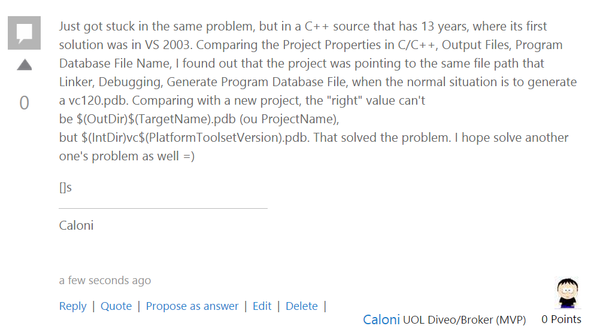 O Estranho Caso do PDB Mal-Aformado 2015-08-19 [tag_coding] Era uma vez, há 13 anos atrás, um tal de Visual Studio .NET, que iria trazer a felicidade para nós, meros mortais usuários de programinhas em C com ponteiro pra lá e ponteiro pra cá. Agora a Microsoft traria para o pessoal do "baixo nível" a mais nova novidade do verão: uma IDE lenta, bugada e... bonita? o-estranho-caso-do-pdb-mal-formado |
| CCPPBRRio12 2015-08-16 [tag_ccppbr] Esse foi o segundo encontro do nosso grupo no Rio de Janeiro, Cidade Maravilhosa, Cidade do Bixcoito de Polvinho. E foi o primeiro encontro a ser exibido em streamming e gravado para o YouTube, graças ao suporte da RioSoft, uma organização que incentiva o mercado de desenvolvimento de software no Brasil, e onde foi realizado o evento. ccppbr-rio-12 |
| Nunca Aos Domingos 2015-08-13 [tag_movies] Uma comédia aparentemente despretensiosa dos anos 60, grega, com muitos diálogo em inglês, e que vem bem a calhar de assistir nesse momento sócio-econômico onde a terra dos filósofos da lógica perdeu seu último laço com o bom senso. Quando é aberto para votação nacional para decidir se será paga uma dívida internacional adquirida na farra, a cultura de Nunca aos Domingos da vida fácil e do proletariado explorado vem à tona. nunca-aos-domingos |
| A Maldição do Demônio 2015-08-11 [tag_movies] Acabei assistindo este pequeno clássico de terror italiano em inglês (na Netflix americana), mas pouco se perde quando vemos que o visual arrebatador de sombras e efeitos até que competentes (ainda hoje) consegue subverter o sensual para o escatológico com uma facilidade que parece torná-los indissociáveis. Quer mais terror que isso? a-maldicao-do-demonio |
| 1984 (Filme) 2024-03-30 [tag_books] Li a primeira vez quando tinha 15 pra 16 anos. Hoje, muitas décadas depois, minha sensação sobre a atmosfera da história é muito próxima. Ela continua opressiva no sentido de ser uma leitura pesada, mas suas ideias são tão sólidas que vale a pena a revisita. Especialmente no meu caso, em que orbitei por muitos anos diferentes esferas ideológicas políticas e hoje revejo a epopeia de Winston Smith com um interesse maior em seu arco, em que quando adolescente a parte mais empolgante sempre será a dos "jovens" revoltados contra o sistema. Hoje para mim a análise do sistema em si é o mais fascinante, pois não soa nem um pouco fantástico. Há elementos da história que percorrem detalhes que vemos hoje em dia na política, de maneira diversa, claro, mas ainda assim próximo o suficiente para despertar terror ou pelo menos uma inquietação. E por isso vale a (re)leitura. Vou citar novamente um trecho que vi em algum lugar sobre Franz Kafka: 1984 |
| Um Diabo Diferente (aka Little Nicky) 2015-08-09 [tag_movies] Todo momento em Little Nicky pode ser resumido em pausar a ação, ver uma piada de gosto duvidoso, dar ou não uma risada -- algo muito pessoal -- e continuar a história do filho do diabo que precisa reencontrar seus dois irmãos na Terra e enviá-los de volta para o inferno ou seu pai, o Diabo, irá derreter até definhar. little-nick-um-diabo-diferente |
| Vida Após Beth 2015-08-07 [tag_movies] Esse é um horror/trash-drama com grandes dificuldades em dizer quando devemos sentir algo e quando devemos dar risada. Seu momento máximo envolve as montanhas, um rádio e um fogão. Zumbis ainda podem render diferentes tons de filmes, mas nunca passarão de homenagens incidentais a George Romero. life-after-beth |
| Original 2015-08-06 [tag_beer] Tomei com o Strauss no almoço PF, meio aguado e incha demais. original |
| Magic Mike XXL 2015-08-06 [tag_movies] Continuação que pretende sempre fazer uma cena de reencontro com todo mundo do filme original que reaparece. Abraços, beijos e nada a acrescentar (nem um "ei, você engordou!"). Mike (Channing Tatum) está construindo seu sonho de móveis sob encomenda, já tem um funcionário, mas recebe a visita na cidade da velha gangue sem Dallas, o Mestre de Cerimônias original interpretado pela alma do filme anterior, Matthew McConaughey (Mike era o corpo). Como está separando da mulher, resolve ir em uma convenção de strippers com a galera e fazer o último show. Acabou a história. magic-mike-xxl |
| Por que as startups brasileiras precisam de outsourcing 2015-08-04 Não é novidade que uma boa ideia, na área de informática, muitas vezes não precisa de apenas boas intenções. Na verdade, acho que quase nunca. Saber com quem se fala, ter os contatos certos e o investidor-chave, simplesmente não irão trazer sucesso a nenhuma empresa se esta não conseguir sequer engatinhar tecnologicamente e mostrar que seu core business vale a pena. por-que-as-startups-brasileiras-precisam-de-outsourcing |
| Sobre debates no SESC Santos 2015-08-03 Esse fds participei de uma rápida ida e volta para Santos para participar de um dia com dois debates de um evento organizado pelo meu editor no CinemAqui, o Vinicius Carlos Vieira. Com um início atribulado por conta da nossa carona, uma taxista que também é artista plástica e que condenava sua situação atual e flertava com a ideia de uma possível oportunidade de virar caminhoneira e viajar o país, talvez o melhor da viagem tenha sido conhecer meu parceiro das críticas em Sampa, o Eduardo Sandrini. Sua lógica e suas opiniões acerca de diversos filmes, além do sempre bom papo sobre Cinema, talvez tenham sido o ponto alto do dia. sobre-debates-no-sesc-santos |
| Minha Vida de Cachorro 2015-08-02 [tag_movies] Esse é um filme sueco da década de 80 que, cultural dessa sociedade ou não, prima pela beleza da pureza dos olhos de uma criança e ao mesmo tempo pode chocar os adultos e seus filtros morais. Por isso advirto: se quiser aproveitar de verdade esse filme, não se deixe levar por julgamentos levianos a respeito de sexualidade ou o politicamente correto que infecta nossa criatividade e nossas relações humanas. Veja com os mesmos olhos dessa pequena criança sueca e tudo estará bem. minha-vida-de-cachorro |
| Homem de Ferro 2015-07-30 [tag_movies] Pepper Potts (Gwyneth Paltrow) guarda o primeiro coração nuclear de Tony Stark (Robert Downey Jr.) como prova de que ele tem um coração. Ironicamente, o primeiro Homem de Ferro também prova que a franquia tinha coração e lógica em suas primeiras duas horas, estruturados de uma forma que jamais veríamos novamente nas novas aparições do gênio/bilionário/herói. homem-de-ferro |
|
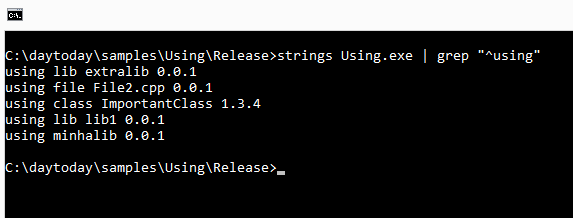 Você sabe o que está usando no seu código? 2015-07-28 [tag_coding] Quando se mexe com C++ em múltiplos fontes logo vem aquela bagunça do versionamento e do compartilhamento de código. LIBs, DLLs, COMs (de Component Object Model, da Microsoft). É difícil a partir de um binário saber quais os fontes envolvidos em sua construção, a não ser que você os amarre através de um sistema automatizado de build onde todos os binários devem ser obrigatoriamente compilados (e suas dependências, claro). voce-sabe-o-que-esta-usando-no-seu-codigo |
| South Park 2015-07-28 [tag_series] Comecei assistindo essa animação já "decanária" (10 anos?) recentemente através das temporadas disponíveis na Netflix brasileira. O resultado foi um entusiasmo tão grande e egoísta que praticamente parei o meu ritmo frenético de filmes para reservar boa parte dos meus fins de semana e noites para ir até o último capítulo disponível da versão dublada em português. Posso dizer que aprendi muito sobre a vida, o mundo, a sociedade, e mim mesmo. Cada episódio polêmico me fazia ler os detalhes sórdidos através da Wikipedia, como o clássico Trapped in the Closed, que praticamente me obrigou a rever o "episódio de despedida" de Isaac Hayes em sua versão original, um recorte hilário de dublagens passadas do ator/cantor. south-park |
| Regular Show 2015-07-28 [tag_series] Regular Show consegue contar seus episódios em apenas dez minutos. Isso em uma história quase sempre dotada de uma criatividade sem limites onde figuras impossíveis surgem para completar as piadas com o toque final do absurdo necessário para arrematar histórias com esse tom. Confuso, mas é sempre assim. regular-show |
| Louie 2015-07-28 [tag_series] O comediante, diretor, roteirista, ator Louis C. K. já protagonizou diferentes shows de stand up comedy e é um veterano no assunto. Talvez veterano seja dizer pouco: o cara é simplesmente fodástico na arte do humor. É uma das referências do gênero, e após a morte do mestre (que deus não o tenha) George Carlin, talvez Louis seja o melhor comediante norte-americano da atualidade. louie |
| Hype da Cultura Nerd em Sesc Santos 2015-07-28 Meu primeiro debate sobre Cinema =). Esse sábado estarei no Sesc Santos para prestigiar a sétima arte em um debate mais que atual: O hype da cultura nerd/geek. Espero estar à altura do tema e do evento. De qualquer forma, sempre é bom falar sobre Cinema ;) hype-da-cultura-nerd-sesc-santos |
| Homem-Aranha 2015-07-28 [tag_movies] Construído como um clássico fortemente inspirado em Super-Homem de Richard Donner, o debut de Sam Raimi peca por imitação enquanto acerta em todo o resto. "Com grande poder vem grandes responsabilidades" diz menos sobre o garoto picado por uma aranha e mais sobre o homem que o dirige. homem-aranha |
| Family Guy 2015-07-28 [tag_series] Depois de mais de 10 anos de sucesso, o sempre interessante Seth MacFarlane (Ted) insiste em piadas sobre eventos passados dos seus personagens, brincadeiras metalinguísticas e regionalismos durante quase todo o tempo. Talvez essa seja a eterna questão da série que já acumula treze temporadas e continua se autorreciclando em altos e baixos. family-guy |
| Derek 2015-07-28 [tag_series] Derek é uma série britânica dirigida e roteirizada e protagonizada pelo comediante Ricky Gervais. Seu personagem é a espinha dorsal e moral de um lar para idosos orquestrado pela perseverante Hanna (Kerry Godliman). A câmera trabalha da mesma forma com que seu trabalho em The Office (o britânico original), como se estivessem filmando um documentário e mesmo assim as pessoas fossem elas mesmas. É um formato popular, também usado em Parks and Recreation e copiado no The Office americano. Possui no momento apenas uma temporada com seis episódios de 20 minutos cada, o que no fundo dá um filme de duas horas. derek |
| Técnicas antidebugging no TDC 2015 2015-07-27 Esse fim-de-semana, quer dizer, contando com a sexta-feira (dia 24/07/2015), tivemos a trilha de segurança no TDC 2015, e eu palestrei pela segunda vez, dessa vez com um material mais antigo ainda, mas que parece ter agradado alguns: técnicas antidebugging. tecnicas-antidebugging-no-tdc-2015 |
| Existem programadores C/C++ no Rio de Janeiro? 2015-07-27 [tag_ccppbr] Essa pergunta eu só vou conseguir saber quando chegar lá. Eu sei que existem pelo menos dois: Pedro Lamarão e André Tupinambá. Lamarão foi um dos fundadores do grupo e vem continuamente em São Paulo para nossos eventos, e agora está organizando o 12° Encontro de Programadores C & C++ do Brasil na Cidade Maravilhosa. Eu irei e palestrarei, mas espero encontrar mais programadores e palestras por lá e trocar um pouco de conhecimento. existem-programadores-ccpp-no-rio-de-janeiro |
| O Conto da Princesa Kaguya 2015-07-26 [tag_movies] Uma aventura narrada por traços que revelam o que mais importa em seus personagens: o "eu" interior, ou seja, as expressões que os tornam tão únicos quanto complexos. Porém, nunca simplificados, mesmo se tratando de um conto. Aliado a isso, uma música de poucos toques usada nos momentos exatos transforma a experiência em uma imersão completa na moral milenar oriental. Em suma: um desenho imperdível para adultos (e talvez assustador para crianças, mas ainda assim arriscaria levá-las...). o-conto-da-princesa-kaguya |
| Manos Negras Pinot Noir 2013 2015-07-26 [tag_food] É azedo com final amargo, um Pinot Noir mais forte, seco. Alcoólico ao abrir, leve. manos-negras-pinot-noir-2013 |
| Pixels 2015-07-21 [tag_movies] [tag_cinemaqui] Alguém aqui sabe o que quer dizer a palavra pixel? Bom, meu histórico em programação de computadores me permite conhecer este e outros termos nerds em detalhes, mas se você acha que irá obter seu significado assistindo ao novo filme de Adam Sandler assinado por Chris Columbus, não perca seu tempo. Porém, se você gosta de histórias simplistas que apesar de simplistas não se justificam, uma ou outra sequência de ação que não te fará temer pelos personagens, mas que em compensação é levemente divertida ou engraçadinha, e, por fim, um ou outro efeito visual que sob a ótica "Transformers" de enxergar a realidade é só o que importa nessa vida, Pixels é justamente o que você precisa. E aos megabytes. pixels |
| Sem Segurança Nenhuma 2015-07-20 [tag_movies] Até que não incomoda tanto o fato de Sem Segurança Nenhuma não se esforçar para sair de sua própria mediocridade, pois é possível constatar durante todo o trajeto guiado pela tensão de sua premissa inicial (a viagem no tempo) que há algo de agradável em sua eloquência, mesmo que seus personagens sejam batidos, suas histórias sejam clichês e suas piadas, assim como o melancólico Regular Show, tenham viajado para o presente direto dos anos 80. sem-seguranca-nenhuma |
| A Espuma dos Dias 2015-07-20 [tag_movies] Imagine que o mundo real foi invadido pela física (e a lógica) dos desenhos de animação no seu sentido mais bucólico. Onde a paixão é o suficiente para desenrolar qualquer novo relacionamento, e a dança é o suficiente para alterar as paredes de um quarto. Imagine, enfim, que estamos em um filme completamente tomado pelas loucuras inventivas de Michel Gondry. a-espuma-dos-dias |
| A Nação Que Não Esperou Por Deus 2015-07-18 [tag_movies] [tag_cinemaqui] Tudo começou em 1999, quando Lúcia Murat escreveu, produziu e dirigiu o filme "Brava Gente Brasileira", que retrata a conturbada relação entre portugueses e índios no século XVIII, justamente a tribo dos Cadiueus (há outros nomes, como Kadiweu, Kadivéus e por aí vai a valsa). Agora a mesma diretora retoma uma jornada de redescoberta de um povo que quinze anos depois de "descobrir" a eletricidade, as novelas e a religião dos brancos, agora corre o risco de perder o último de seus resquícios palpáveis em sua sociedade: a terra. a-nacao-que-nao-esperou-por-deus |
| Brahma 2015-07-17 [tag_beer] Aguada, muito gás, depois de um tempo é impossível tomar mais. brahma |
| X-Men: O Filme 2015-07-16 [tag_movies] "X-Men: o Filme" é um dos primeiros trabalhos de fantasia que volta a explorar super-heróis verossímeis, no sentido de respeitá-los como seres complexos envoltos em um universo onde sua existência não apenas é possível, mas moldada por ela. Dessa forma, ele faz o gancho com os quase esquecidos "Superman: o Filme" e "Superman: a Aventura Continua" e ainda nos apresenta uma aventura onde existe uma penca deles, conseguindo fazer com que tudo tivesse não apenas um sentido direto, mas simbólico. x-men-o-filme |
| Um Agente em Apuros 2015-07-14 [tag_movies] Essa é comédia britânica estilo anos 80, mas foi filmada em 2001. Passou no SBT (TV aberta) essas noites, por conta do falecimento de Omar Shariff esse mês. Shariff participa pontualmente, pois o "astro" é Steve Coogan, quase um sócia de Steve Carrel, mas que depende mais de gags. Coogan, pode-se dizer, manda bem. um-agente-em-apuros |
| Lady Vingança 2015-07-14 [tag_movies] Lady Vingança é o terceiro filme de Chan-wook Park sobre... adivinha? Claro, a vingança, esse ato que já virou tema de filmes excelentes -- Kill Bill Vol 1 e 2, Old Boy, do próprio Chan-wook -- e outros igualmente admiráveis -- Mr. Vingança, primeiro do Chan-wook, Lady Snowblood, inspiração do Tarantino para Kill Bill. Tão ou mais estilizado que Old Boy, sua obra mais conhecida no ocidente, a narrativa de Lady Vingança possui a beleza da fluidez incessante e dos recortes cartunescos, mas ao mesmo tempo traz uma certa petulância em ser excessivamente complexo apenas pela capacidade de ser (o famoso "porque sim"). lady-vinganca |
| Corações de Ferro 2015-07-14 [tag_movies] O que é o patriotismo senão uma outra forma de religião? Da mesma forma com que a igreja católica destroçava povos e arrancava suas almas, a mente de soldados norte-americanos cansados no final da segunda guerra nos revela em Corações de Ferro uma noção de que até atos de heroísmo estão manchados de sangue e uma moral no mínimo duvidosa. O estresse de ter matado (e muito) pode servir de desculpa, mas assim como em Sniper Americano, não por muito tempo. coracoes-de-ferro |
| CarinaE Hommage Malbed 2009 2015-07-14 [tag_food] No começo bem legal como na vinícola; agora já não está assim, um aroma... carinae-hommage-malbed-2009 |
| TDC 2015 No More 2015-07-13 Eu represento o Grupo C/C++ Brasil. Sou um dos fundadores. A bem da verdade, todos que participam ativamente no Google Groups e/ou ajudam a organizar o nosso saite, e/ou ajudam a fortalecer a presença de uma comunidade C/C++ no país representam, em menor ou maior grau, a esse ideal que é: as linguagens C e C++ ainda são muito úteis na programação de uso geral, em cenários tão distintos e tão variados que fica difícil sequer listar onde elas são usadas sem parecer panelinha. tdc-2015-no-more |
| Serra Malte 2015-07-10 [tag_beer] - 2015-07-10 Experimentei de novo em Minas, é muito bom e forte (e lá barato). - 2015-07-25 Experimentei ao visitar a tia Margarete, muito bom ainda. - 2016-03-05 A pequena é ótima, pois enjoa mais devagar, e é tão intensa... serra-malte |
| Sense8 2015-07-06 [tag_series] Essa é uma série que tem todos os motivos de ser "acusada" de novela, no sentido da história estar totalmente focada nas reviravoltas amorosas de seus personagens. Mas o que dizer quando o destino amoroso do personagem X, Y e Z estão unidos de uma maneira tão fantástica que é impossível de disassociá-los e montar a velha tabela par romântico ou trio amoroso? sense8 |
| Enquanto Somos Jovens 2015-07-03 [tag_movies] Enquanto Somos Jovens mantém um roteiro tão bom e atuações tão alheias a isso (embora sempre interessantes) que suas falas parecem querer dizer muito mais ao espectador do que para seus próprios personagens. Ou talvez seja apenas a voz dentro da minha cabeça relembrando minha decisão atual de não ter filhos. Ainda é bom lembrar que, se a discussão central girasse em torno de ter ou não rebentos de carne-e-osso, essa seria uma das comédias que já conhecemos de Ben Stiller (com uma sempre inspirada Naomi Watts). Porém, ao mesclar o tema com filhos mais "autorais", como documentários, o filme enriquece ambos os lados, ainda que acabe envolvendo mais o segundo, já que seres humanos bebês são apenas uma desculpa para falar de algo mais importante. enquanto-somos-jovens |
| Gourmet da Bonnie 2015-07-02 [tag_food] Razoável; tem suas bichisses, mas nada que incomode. É intenso, bom amargor, um pouco adocidado. (desconfio que seja o mesmo que comprei) gourmet-da-bonnie |
| O Poder do Agora 2015-06-29 [tag_self] [tag_books] "Embora eu continuasse vivendo normalmente, tinha percebido que nada que eu viesse a fazer poderia mudar realmente a minha vida. Eu já tinha tudo de que necessitava." Essa é a moral por trás de O Poder do Agora, livro de Eckhart Tolle que mistura filosofia e uma pitada de religião em prol do bem-estar do ser humano. Não que ele use muita religião, e se usa, é mais para o lado budista/asiático dos monges tibetanos: aprendendo a se libertar de sua mente. Ele adequa essa filosofia ao cristianismo e chama mais adeptos para a iluminação independente de seu profeta ou deus. o-poder-do-agora |
| O Mordomo de Preto 2015-06-29 [tag_movies] Assistir a O Mordomo de Preto é uma mistura de sensações. Primeiro, tem-se a sensação de estar assistindo um seriado, e não um filme com começo, meio e fim. Depois, a certeza de estar sendo enrolado em um formato muito parecido com os filmes da Marvel atualmente, que prezam por não terminar conflito algum que preste em seus filmes. Porém, a pior sensação mesmo é a de saber que a linguagem cinematográfica está sendo deixada de lado para o bem dos enquadramentos e da plasticidade de uma outra espécie de arte que já se sai bem em seu quadrado. A questão que fica é: para que realizar live-actions de trabalhos sem tradução entre artes? Só para ver como seria com atores "reais"? Bom, sinto informar, mas os personagens criados podem ser bonitos esteticamente, mas estão bem longe de serem considerados reais ou complexos. o-mordomo-de-preto |
| Um Pouco de Caos 2015-06-27 [tag_movies] [tag_cinemaqui] Um Pouco de Caos é um passeio tranquilo, até demais, no mundo da aristocracia francesa (embora todos falem inglês sem cerimônias) para fazer-nos apreciar a atmosfera dominante do blasé frente aos que ainda precisam lutar para serem aceitos na alta sociedade. Durante o processo é tão óbvio que haverá um amor proibido que até isso se torna sem graça. um-pouco-de-caos |
| Minions 2015-06-27 [tag_movies] [tag_cinemaqui] As árvores que jorram dinheiro em franquias de animação já conseguiram provar com Os Pinguins de Madagascar e Carros 2 que spin-offs de personagens secundários -- os que geralmente completam a história para seus heróis -- têm tudo para dar errado. No entanto, agora é a vez de Meu Malvado Favorito (e sua sequência) remoer o terreno de sua árvore milionária, esta plantada em um terreno arenoso, uma vez que as histórias dos dois filmes dependem de uma série de piadas prontas jogadas na tela em um ritmo que não nos permita perceber que sua história principal são dois fiapos de raiz prestes a se romper. Dessa forma, podemos considerar a ideia de produzir um filme apenas com os seres amarelos dos dois filmes -- que realizam cenas pontuais de dois segundos -- um projeto ambiciosamente marqueteiro e artisticamente repulsivo. minions |
| Madoka Magica: Rebellion 2015-06-27 [tag_movies] Madoka Mágica, uma série com começo, meio e fim embalada em uma arte-sequência deliciosamente artística de acompanhar e um enredo absurdamente filosófico para os que destratam anime, resolve extrapolar alguns conceitos de sua conclusão original, criando esse longa-metragem onde, podemos dizer, tanto a parte artística quanto a narrativa são multiplicados por 1000, e perdendo apenas um pouco de suas rédeas originais, ainda que compensando pela sua realização. madoka-magica-rebellion |
| Pi 2015-06-26 [tag_movies] Pi é uma viagem quase psicodélica ao âmago da questão: a linguagem do Universo é a Matemática. Extrapolando isso, mas ao mesmo tempo mantendo o suspense de que isso poderia ser real, enxergamos a insanidade através das lentes P&B saturadas de uma luta interminável entre fé, conhecimento e a pura ganância. pi |
| Jurassic World: O Mundo dos Dinossauros 2015-06-24 [tag_movies] A trilha sonora de John Williams é bem aproveitada nessa continuação de emoções de Jurassic Park, mais de 20 anos depois de ser produzido, para um público mais aficionado por efeitos, 3D e a computação gráfica no seu limite. Por isso mesmo não se pode negar que no quesito entretenimento ele se sai maravilhosamente bem, impressionando quase da mesma forma com que o filme de Steven Spielberg nos impressionou. E quase já é algo muito bom para uma franquia já desgastada tentando se reerguer com ideias "novas". jurassic-world |
| Divertida Mente 2015-06-24 [tag_movies] Divertida Mente é um sinal de que Disney/Pixar, apesar de às vezes parecer que está saindo dos trilhos, produzindo mais e mais continuações e se transformando em uma franquia comercialmente poderosa enquanto artisticamente repetitiva, dessa vez arrisca pra valer, apostando em uma versão de Ela (Spike Jonze, 2013) para o público infantil, destrinchando as emoções que nos formam de uma maneira que dificilmente você verá em produções do gênero. divertida-mente |
| Escolha de palestras para o TDC 2015 Sampa 2015-06-22 Já passou a semana de envio de palestras, e agora chegou a hora de escolher as palestras que farão parte da Trilha C/C++ do TDC 2015, em São Paulo. Se vocês puderem colaborar, é super-simples e rápido. Há uma lista de títulos de palestras e você só precisa escolher qual a mais importante para você. Avalie com cuidado. escolha-de-palestras-tdc-2015-sp |
| Casadentro 2015-06-22 [tag_movies] [tag_cinemaqui] Casadentro é um trabalho tão neo-realista quanto intimista. Baseado em quadros estáticos, o filme se dedica a mostrar como o ser humano ignora a passagem do tempo de sua própria vida, e ao mesmo tempo resolve discutir a relação entre quatro gerações debaixo do mesmo teto pelo período de 24 horas. Se sentindo tão opaco quanto os pensamentos dessas pessoas, o filme consegue acelerar um dia sem mover um centímetro de câmera. Conseguindo se mostrar presente durante todo o momento, o estilo de direção parece interessado demais que seja notado. casadentro |
| Therezopolis Gold 2015-06-21 [tag_beer] Agradável, mas bem forte; não combina muito bem com comida apimentada. therezopolis-gold |
| Ravache Pale Ale 2015-06-21 [tag_beer] Bem amarga, bom para acompanhar algo, mas sozinha fica um pouco demais. ravache-pale-ale |
| Kumiko, a Caçadora de Tesouros 2015-06-21 [tag_movies] Kumiko é uma fábula criada a partir de uma história real (ou pelo menos levemente inspirada em uma pessoa). Embalando uma história impossível em torno de um outro filme sobre uma história impossível (e, este também, baseado em uma história real), Kumiko é uma experiência entusiasmada, embora na maioria das vezes, não tenha lá seus motivos. kumiko-a-cacadora-de-tesouros |
| Gratia Agere Res 2015-06-21 [tag_food] É um sabor agradável, de vinho jovem, mas ainda não muito maturado. Está mais azedo, forte, um tanto amargo. Em suma: agradabilíssimo em poucas quantidades. gratia-agere-res |
| Ladrões de Bicicletas 2015-06-18 [tag_movies] Ladrões de Bicicletas é um filme curto (menos de uma hora e meia) e antigo (da década de 40) e italiano. Porém, apesar dele ser curto ele é completo, apesar dele ser antigo ele é atual, e apesar dele ser italiano ele é, felizmente ou infelizmente, universal. Para os que se interessam por bobagens, foi um dos primeiros longa-metragens a ganhar um Oscar de Filme Estrangeiro, um título que não existia e era dado de vez em quando pela academia. Para os que se interessam pelo Cinema como arte, este filme virou um dos exemplos mais conhecidos do neo-realismo italiano, um estilo de fazer filmes que buscava refletir a realidade social da época, sendo filmado quase como um documentário. Tanto que os personagens não são nada especiais, podendo ser qualquer um na megalópole italiana naquela época pós-guerra. ladroes-de-bicicletas |
| A Primeira Noite de um Homem 2015-06-16 [tag_movies] Esse é um filme que possui a alma dos anos 60. Quebra de convenções por todos os lados, e um cuidado especial na condução de uma... quem diria, comédia romântica, em tons sortidos; pelo menos o suficiente para que não encaremos os detalhes inseridos na trama apenas como engraçados, mas também dramáticos; e fiquemos apreensivos pelo destino de um dos heróis mais icônicos e irônicos do Cinema: Ben Braddock. a-primeira-noite-de-um-homem |
| Efeito Borboleta 2015-06-13 [tag_movies] Efeito Borboleta é um desses filmes difíceis de defender, mas quem comprar a briga (como eu) pode encontrar uma fonte inesgotável de prazer. Prazer de defender a arte cinematográfica, mesmo às vezes através de sua própria imperfeição. Prazer em reconhecer que, mesmo com tantos defeitos, uma obra pode exibir virtudes que a tornam ímpares, ou pelo menos dignas de algumas revisitas. Há elementos particularmente fascinantes escondidos dentro do embrulho que é este filme, em um formato não muito bem empacotado. efeito-borboleta |
| Don Pascual Tannat 2012 2015-06-12 [tag_food] Bem forte, talvez um pouco avinagrado já, então não vou arriscar dizer que é ruim, mas a garrafa talvez já esteja comprometida. Não está envinagrado como eu temia, mas ainda é meio alcoólico e puxa a língua; não deixa de ser interessante, mas parece bem básico para um "Reservado". don-pascual-tannat-2012 |
| TDC SP 2015 (Call for Papers) 2015-06-11 Antes do nosso encontro 12 no Rio, no segundo semestre, teremos o TDC São Paulo, que já está em sua fase de chamada de trabalhos. Se você tem alguma coisa para apresentar, não se acanhe. Todos são bem-vindos! =) tdc-sp-2015-cfp |
| Beijei uma Garota 2015-06-10 [tag_movies] [tag_cinemaqui] Embora no começo pareça uma comédia romântica daquelas bem clichê, com o protagonista sendo narrador em off e aquelas piadinhas previsíveis inseridas durante toda a trama, Beijei uma Garota se mantém honesto ao seu conteúdo original do começo ao fim, trazendo a questão da homossexualidade como alvo de uma chacota inocente, embora nunca ofensiva, e muito menos improvável. beijei-uma-garota |
| Na Próxima, Acerto o Coração 2015-06-08 [tag_movies] [tag_cinemaqui] "Na Próxima..." é uma imersão quase que completa na vida de um psicopata. Seria muito melhor se fosse completa. Infelizmente, mais uma vez, Guillaume Canet encara retratar um crápula da vida real, e a âncora dos fatos como estão nos depoimentos das pessoas envolvidas segura parte da poesia implícita nos momentos mais reflexivos de um thriller bem movimentado. na-proxima-acerto-o-coracao |
| Amaldiçoado 2015-06-07 [tag_movies] Horns é uma fábula contada da forma mais banal possível: a investigação de um crime em uma cidadezinha. Passando por todos os clichês do gênero, a parte divertida é mais ou menos a metade do filme: observar a "maldade" inerente em todo e qualquer ser humano. amaldicoado |
| Piatã da Bahia 2015-06-05 [tag_food] Bem forte, precisa colocar bem menos pó, mas depois que acerta a proporção é maravilhoso. piata-da-bahia |
|
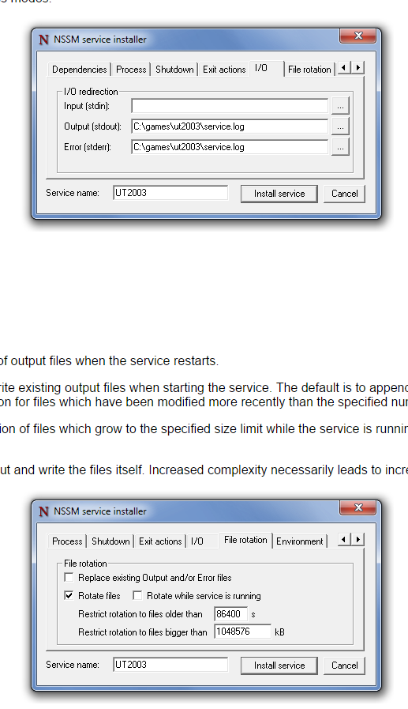 Logs em serviços (e outras coisas) 2015-06-05 [tag_coding] Já uso logs há muito tempo. Me lembro muito bem que quando programava em BASIC o "passou por aqui" já era útil. Depois de fazer muitas bibliotecas super-flexíveis de escrita em saídas diferentes, níveis configuráveis e uso do mais complexo ao mais banal, cheguei à seguinte conclusão: logs-em-servicos-e-outras-coisas |
| Fazenda Valsugana Pirassuranga 2015-06-05 [tag_food] Bem equilibrado, de amargor agradável. Especial Mais fraco que o normal deles, um pouco enjoativo. O normal pelo menos parecia mais equilibrado, ainda que não tenha tantos aromas (também gera um café bem ralo). fazenda-valsugana-pirassuranga |
| Ernest and Célestine 2015-06-04 [tag_movies] É um desenho de 2012, indicado ao Oscar de 2014, que estreou na Netflix esse mês (2015). Falado em francês e dirigido por três pessoas, o filme parece possuir um maior poder de marketing do que de contar uma história diferente do que o velho clichê "eles vivem em mundos diferentes". Contudo, é bem desenhado, mantendo suas virtudes em seu toque artístico. ernest-and-celestine |
| O Universo no Olhar 2015-06-03 [tag_movies] I Origins é sutil e honesto o suficiente para gostarmos dele apesar de nossas convicções religiosas ou científicas. Ele não tenta em nenhum momento te obrigar a enxergar o mundo através de uma visão determinante do nosso destino como seres dotados de consciência, mas brinca com isso o tempo todo, o que é saudável e instigante. E mesmo lidando com uma questão delicada, controversa e complexa como a vida pós-morte, não se priva de desenvolver seus personagens de forma que eles participem do processo de descoberta como seres humanos, e não simples criações unidimensionais para cumprir um papel. i-origins |
| Shaun, o Carneiro: O Filme 2015-06-01 [tag_movies] Apesar de eficiente por oito anos em pequenos episódios de sete minutos, a série dos estúdios Aardman nunca se aventurou em um longa-metragem sobre um carneiro muito esperto, um cachorro e fazendeiro que lembram versões agrícolas de Wallace e Gromit, e um bando de ovelhas que esbanjam charme e bom humor. O resultado não é apenas um longo episódio como a série televisiva, mas um filme que se aproveita de homenagens e referências muitas antigas sobre o Cinema e o próprio universo sempre criativo desses personagens, onde o fato de serem miniaturas manipuladas em stop motion nunca é um empecilho para criar as mais hilárias sequências. shaun-o-carneiro |
| Mr. Vingança 2015-05-26 [tag_movies] A vingança vista em Old Boy, de Chan-wook Park, é o segundo filme do diretor sobre o tema. O primeiro, esse Mr. Vingança, é mais bruto. Não no sentido da violência ou da revelação final. Não há revelações finais, aliás (spoiler alert!), mas há duas metades de uma história: na primeira metade as pessoas e suas relações são escancaradas para que, na segunda metade, uma espiral sem fim de atos de vingança tome conta da tela. Muitas vezes o filme tenta soar apenas um pouco além do que ele verdadeiramente é, e por isso trai sua própria perfeição estética em troca de uma história muitas vezes sem rumo ou simbólica demais. mr-vinganca |
| Depurando até o fim do mundo e de volta de novo: source server com GitHub 2015-05-26 [tag_coding] Semana passada fiquei sabendo que o vídeo da minha palestra "Depurando até o fim do mundo" do TDC 2014 estava disponível online. Resolvi assistir para ver se aprendia alguma coisa. A despeito do palestrante ser muito ruim, ele disse uma coisa interessante: com o Debugging Tools (WinDbg para os íntimos) seria possível além de indexar os símbolos (PDBs para os íntimos) usando o esquema de Symbol Server que a própria Microsoft adota usar algumas ferramentas embutidas para conseguir obter o fonte através de um símbolo indexado. depurando-ate-o-fim-do-mundo-e-de-volta-de-novo-source-server-com-github |
| Chappie 2015-05-26 [tag_movies] Chappie, novo filme de Neill Blomkamp (Distrito 9), é bonitinho, todo cool, e tenta trazer a África do Sul, país-natal do diretor, sob os holofotes de mais uma ficção científica. E mais uma vez, inevitavelmente vem a questão social, pobreza, violência. Nesse sentido, há muito o que se comparar com Robocop, e Blomkamp sabe disso e nem tenta disfarçar que um de seus robôs é uma homenagem/cópia do robô do final do primeiro filme. chappie |
| Mad Max: Estrada da Fúria 2015-05-22 [tag_movies] Quando vi Kingsman estava convicto que qualquer filme de ação esse ano seria uma versão menor deste trabalho exemplar do que o uso da paródia com toques de realismo pode fazer. Até tomar coragem e ir conferir na telona esse novo Mad Max, que retorna aos anos 80 (ou 1979, estreia do original), mas mantém sua ideologia com um pé nos anos atuais enquanto realiza não só uma homenagem, mas uma redimensionada na série de filmes que estava já há algum tempo esquecida. mad-max-estrada-da-furia |
| O Homem Que Elas Amavam Demais 2015-05-21 [tag_movies] [tag_cinemaqui] O Homem que Elas Amavam Demais parece ter um problema em conseguir definir o lado da história que deseja contar, mas logo isso vira uma virtude, pois não deixa de ser fascinante observar a relação entre os envolvidos sabendo que ele foi baseado nas memórias de Renée Le Roux (Catherine Deneuve) e que, portanto, uma boa parcela na interpretação dos fatos se deve à visão de uma mãe desesperada. Dessa forma, é curioso constatar que a visão que o filme de André Téchiné entrega a respeito de Maurice Agnelet (Guillaume Canet), o advogado responsável por todas as reviravoltas na história (e possivelmente também a última), não parece demonizar de maneira exemplar seu caráter, pois há muitos momentos onde a figura de Maurice parece tudo, menos ameaçadora. o-homem-que-elas-amavam-demais |
| Kingsman: Serviço Secreto 2015-05-20 [tag_movies] Estou passando atualmente por uns mal bocados à noite por causa de um culto religioso organizado por retardados mentais em um galpão próximo daqui. Além da figura horrenda de um pastor cuspindo seu ódio em gritos ao microfone que "elevam" a raça humana à posição de escória do planeta, tal evento é realizado muito provavelmente em um local infestado de pessoas cujo passado eu temo saber, já que ele tem que ser terrível o suficiente para que alguém se sujeite a um ritual que denigre a dignidade humana a níveis que, caso um mendigo estivesse presente, sem tomar banho nos últimos meses, tossindo um catarro de cor e forma desconhecidos enquanto grunhe e coça seus órgãos genitais, por comparação ele se transformaria no cavalheiro mais refinado, educado e interessante de todo o recinto. kingsman-servico-secreto |
| Ex Machina 2015-05-19 [tag_movies] Um exercício filosófico em forma de filme que entrega um thriller que prende a atenção do começo ao fim, mas que por evitar usar palavras "complicadas", ou melhor dizendo, empregar relações mais complexas entre seus personagens, constrói uma experiência "sanitizada". Todo o ambiente reflete isso: as paredes acinzentadas, as portas idênticas, os padrões geométricos repetidos. Porém, ao usar vidros por todos os lados e diálogos reveladores, há pelo menos uma coisa que somos obrigados a encarar de frente: a nossa humanidade sendo roubada por nossa própria criação. ex-machina |
| Miss Julie 2015-05-17 [tag_movies] [tag_cinemaqui] Miss Julie é um filme de época um pouco atípico. Dirigido pela também atriz Liv Ullmann e apenas com quatro atores, sendo que 80% do tempo apenas dois contracenam, chamá-lo de filme de época seria pouco para defini-lo. É também um filme minimalista e intimista. Apesar de todos os elementos de cena geralmente inseridos nesse universo estarem lá, como os cenários grandiosos e as terras a perder de vista, falta o elemento principal: as pessoas. Isso faz com que a narrativa se aproveite desse fato e faça uma longa digressão sobre a relação entre nobres e seus serviçais, especialmente os que não se diferem dos donos de terras em termos de instrução, educação e ambição. miss-julie |
| As Aventuras de Tintim 2015-05-17 [tag_movies] Quem diria que, no meio de tantos filmes de super-herói machões com frases de efeito e diferentes efeitos digitais para fazer você comer pipoca freneticamente, As Aventuras de Tintim seja o que possui o personagem mais maduro e o conflito mais adulto de todos? as-aventuras-de-tintim |
| O Destino de Júpiter 2015-05-12 [tag_movies] Esse é um ótimo filme se você quiser descobrir o que os irmãos Wachowski, da trilogia Matrix, fariam com a tecnologia atual contando uma história bem parecida com Matrix Revolutions no sentido de cenários grandiosos, personagens heroicos e o tempo dividido em metade ação, metade reflexão. Sinceramente, eu esperava um pouco mais dos diretores que criaram Cloud Atlas, uma odisseia que passeia por eras e cujo conflito é muito mais metafísico do que neste filme. Aqui o objetivo é fazer com que a garota Jupiter não seja morta e salvar a humanidade. A garota é Mila Kunis, aquela menina atraente de Cisne Negro que se deita com Natalie Portman, e está em boas mãos aqui, protegida pelo igualmente voluptuoso Caine Wise (Channing Tatum). Podemos criticar diversos aspectos da filmografia dos Wachoski, mas uma coisa que eles sabem escolher são tipos físicos para suas histórias. o-destino-de-jupiter |
| Super Velozes, Mega Furiosos 2015-05-11 [tag_movies] [tag_cinemaqui] Super Velozes, Mega Furiosos é uma paródia de Velozes e Furiosos. Essa informação é tão irrelevante quanto o próprio filme, que brinca com os estereótipos dos atores da série e se esquece que a franquia já vem se tornando irrelevante sem precisar da ajuda de ninguém. super-velozes-mega-furiosos |
| Caminhos da Floresta 2015-05-11 [tag_movies] Eu não gostava de musicais, mas aprendi a gostar através de trabalhos fabulosos do gênero, como Noviça Rebelde e Moulin Rouge. Também posso dizer que gosto de trabalhos menos fabulosos como Chicago. Agora, do mesmo diretor, Rob Marshall, esse Into the Woods mostra claramente quando um musical deixa de ser um filme aceitável: quando se torna insuportável a ideia de mais algum ator cantando. caminhos-da-floresta |
| Segunda Chance 2015-05-10 [tag_movies] [tag_cinemaqui] A diretora Susanne Bier já nos mostrou um debate ético arrebatador em Depois do Casamento. Agora em Segunda Chance o dilema moral, como ideia, é muito maior, e dificilmente há um momento no filme que é possível relaxar de tanta tensão. Os closes nos atores são constantes e a câmera na mão deixa tudo mais imediatista. Se há momentos de calmaria, é porque Bier escolhe nos brindar de tempos em tempos com a visão da água tocada pelo vento, ou o céu pelos pássaros. segunda-chance |
| Analisando Erros Pelo Filtro do File Monitor 2015-05-06 [tag_coding] As ferramentas da SysInternals fazem a gente economizar um tempo considerável na resolução de problemas. Não que elas sejam indispensáveis. Tudo que elas fazem é encurtar o caminho entre a análise de um bug e sua resolução, o que acaba sendo muito se considerarmos que programação é 20% codificação e 80% transpiração. Ela é um atalho para muitas coisas, desde achar uma ordem errada de includes no header durante a compilação ou descobrir que por que um processo morreu durante o login. analisando-erros-pelo-filtro-do-file-mon |
| Vingadores: Era de Ultron 2015-05-05 [tag_movies] Vingadores 2 já estreia atrasado. Seu tema de inteligência artificial parece já ter sido abordado com maior sucesso a partir de trabalhos menos ambiciosos, mas bem mais curiosos, como Transcendence e Lucy (coincidentemente com a mesma Scarlett Johansson que aqui faz a heroína russa Viúva Negra). No entanto, seu maior trunfo com certeza não são os embates filosóficos sobre qual a solução para a paz mundial através do uso de redes neurais artificialmente produzidas (ou feitas por alienígenas). Isso está tão resumido em chavões e explicações genéricas para o espectador médio que não faz muita diferença. Como sempre, a grande sacada dos filmes de super-heróis são as explosões, os efeitos visuais, as frases de efeito levemente cômicas (mas nunca ofensivas) e as roupas coloridas (hoje em dia, em "dark" discreto, mas coloridas). vingadores-era-de-ultron |
| Livre 2015-05-05 [tag_movies] Baseado no livro autobiográfico "Wild: From Lost to Found on the Pacific Crest Trail", a protagonista absoluta do filme são as memórias da autora Cheryl Strayed, interpretada pela competente (ou bem escolhida) Reese Witherspoon. No entanto, além de Sheryl, parece haver ainda um espírito maior que quer contar uma história maior. Um espírito interpretado pelo fantasma de sua mãe, a simpática e intensa Bobbi (Laura Dern, quase roubando a cena). Um espírito trabalhado em todo homem e mulher do filme. Um espírito que luta pela liberdade do ser humano independente do seu gênero. Um espírito tão empenhado em conduzir essa tarefa na mente de seus espectadores que avança um pouco o sinal, se tornando quase um manifesto feminista de bolso. livre |
| Se Eu Ficar 2015-05-04 [tag_movies] Fale-me mais sobre clichês. Esse filme tem de montes e nenhum é usado direito. Há a narrativa em off de uma protagonista que faz questão de ser desinteressante (mas parece que o filme acha o fato dela tocar violoncelo cool o suficiente para ser uma personagem digna de ser seguida), mas que mesmo assim arrisca nos primeiros 10 segundos a se comparar com Beethoven. Há o romance entre um casal igualmente desinteressante, mas que o filme acha muito cool pelo fato do rapaz cantar em uma banda e juntos formarem dois "extremos" musicais. Por fim, ele acha a família da moça tão cool que até evita falar muito sobre eles, para quando todos morrerem não fazerem a mínima falta, por mais que a garota berre ao saber do seu irmão mais novo. se-eu-ficar |
| Pilão Extra Forte 2015-05-01 [tag_food] Um café que deve ser barato e que é razoavelmente interessante. pilao-extra-forte |
| Grey Glacier 2015-05-01 [tag_food] Frutado mais amargo e um pouco azedo, agradável. grey-glacier |
| 1906 2015-05-01 [tag_beer] Importada, um amargo que dá pro gasto. 1906 |
| Sniper Americano 2015-04-30 [tag_movies] Sniper Americano é um filme de Clint Eastwood, e com isso deduzimos de onde vem a sensibilidade da maior parte do filme e a calma com que o tempo é conduzido na história de Chris Kyle (um Bradley Cooper irreconhecível), um "caipira" patriota e que resolveu se candidatar ao exército de elite, desistindo de sua vida de caubói e deixando sua esposa sozinha cuidado de seus filhos em longos hiatos, que são as operações que ele participou na última cagada norte-americana: a Guerra do Iraque. sniper-americano |
| O Abutre 2015-04-30 [tag_movies] Uma fase estupidamente frutífera de Jake Gyllenhaal, que fez com o diretor Denis Villeneuve em 2013 dois filmes muito interessantes: Os Suspeitos e O Homem Duplicado e que agora faz o seu terceiro papel completamente diferente. Não se poderia dizer diferente de Dan Gilroy, que trabalhou em roteiros de filmes curiosos como Gigantes de Aço, mas que aqui estreia na direção de uma história que ele mesmo escreveu e que ultrapassa o limite do óbvio para se emaranhar em uma discussão acalorada, divertida e abrangente sobre a mídia sensacionalista. o-abutre |
| Jogada de Mestre 2015-04-30 [tag_movies] [tag_cinemaqui] Jogada de Mestre (da distribuidoras sempre criativas), ou Kidnapping Mr. Heineken, é um thriller "baseado em fatos reais", como dizem os letreiros iniciais. Sempre encarei esses dizeres como uma forma de se desculpar pela história não ser tão boa, e esse caso não foge à regra. Inspirado também no livro do repórter criminal Peter R. de Vries, é dirigiro por Daniel Alfredson, responsável pelas continuações do filme sueco Os Homens que Não Amavam as Mulheres. jogada-de-mestre |
| Teliani Valley 2015-04-29 [tag_food] Continua agradável. O difícil é imaginar que uva é essa. teliani-valley |
| Tarapaca Cabernet Sauvignon 2015-04-29 [tag_food] Continua sendo um bom custo/benefício. Geléia de frutas sem ser tão enjoativo quanto um Malbec nacional depois de oxidar. tarapaca-cabernet-sauvignon |
| Orgânico Spress Poços de Caldas 2015-04-28 [tag_food] É amargo, mas tem o sabor meio azedo, levemene doce (ou amadeirado). Bixisse demais para mim. organico-spress-pocos-de-caldas |
| Son of a Gun 2015-04-27 [tag_movies] Esse é um filme meio abandonado pelas distribuidoras nacionais e ainda não estreou por aqui, mesmo tendo um ator conhecido no elenco (o escocês Ewan McGregor). E por falar em estreia, depois de dirigir seis curta-metragens, o diretor Julius Avery comanda este longa que era para ser um super-filme de ação e drama sobre um garoto que acaba preso junto de um famoso criminoso que o ajuda a sair ileso de sua estadia na cadeia por seis meses, pedindo em troca que ele mexa os pauzinhos do lado de fora para realizar uma fuga nada crível, ainda mais se considerarmos que ele estava em um presídio de segurança máxima. son-of-a-gun |
| C, C++, Engenharia Reversa e Todo o Resto 2015-04-27 [tag_ccpp] "C++ é divertido, mas não paga minhas contas". Por diversas coincidências da natureza, e um bocado de empenho deste que vos fala, essa frase não precisa ser dita por mim. Tendo programado em casa por 2 ou 3 anos e lido The C Programming Language um bocado de vezes antes de me aventurar no mercado de trabalho, tive a oportunidade de começar na área já programando em C, C++, e com uma equipe peso-pesado. Programávamos para Windows, onde as coisas não são tão fáceis quanto no Linux (que é um SO de e para programadores), e onde precisa-se comer muita farinha com sintaxe para construir coisas decentes. Portabilidade às vezes é um objetivo, às vezes é deixado de lado. A API Win32 já é bruta demais, e o cliente sempre tem um prazo apertado demais. c-cpp-engenharia-reversa-e-todo-o-resto |
| Catamayor 2015-04-26 [tag_food] Um pouco azedo, sabor intenso. Talvez tenha passado do ponto. catamayor |
| Garotas 2015-04-24 [tag_movies] [tag_cinemaqui] Garotas é daqueles filmes que você começa assistir sem entender muito bem qual a história que quer ser contada. Sabemos que é sobre adolescência, essa fase impulsiva. A primeira cena mostra meninas dando duro em um jogo de futebol americano. A cena seguinte as mostra juntas, falando todas ao mesmo tempo, empolgadas. A cena que finaliza a introdução as mostra quietas, já no conjunto de prédios onde moram, e onde aos poucos vão se separando. Até sobrar Marieme (Karidja Touré em sua estreia). garotas |
| Whiplash: Em Busca da Perfeição 2015-04-22 [tag_movies] As distribuidoras simplesmente não param. A cada dez filmes assistidos, onze possuem um subtítulo vergonha-alheia. Talvez elas estejam por trás da queda vertiginosa de público nos cinemas brasileiros. Afinal, quem vai querer ver "Em Busca da Perfeição" ou "Uma Razão para Viver" pela enésima vez? whiplash |
| Cake: Uma Razão para Viver 2015-04-22 [tag_movies] [tag_cinemaqui] Cake é aquele trabalho que uma atriz bonita se desfigura para parecer séria perante a Academia e "arrisca" ganhar um Oscar. Não foi dessa vez, pois o filme ganhou apenas uma indicação a melhor atriz no Globo de Ouro, o que teoricamente dá no mesmo em "importância". Jennifer Aniston desde a série Friends construiu uma carreira pautada na comédia, e agora possui umas cicatrizes no rosto e em seu passado para se tornar a amargurada Claire, que desde o suicídio de uma participante do seu grupo de apoio considera a possibilidade de usar o mesmo atalho e terminar de uma vez com suas dores intermináveis pelo corpo. cake |
| Convenção de Chamada 2015-04-20 [tag_coding] Pergunta de um leitor: #### Leitor: Olhe essa bizarrice em C: void func() { } int main() { func("sbrubles"); return 0; } #### Leitor: Embora isso seja permitido, caso você coloque "void func(void)" já não funciona mais. Por quê? convencao-de-chamada |
| Patema Inverted 2015-04-19 [tag_movies] Esse é o primeiro filme que assisto com a premissa de pessoas que possuem a gravidade invertida. Sim, Mundos Opostos é de um ano antes, e apesar de não ter sido lançado no Brasil (alguém acredita que Patema será?) ele possui atores conhecidos e uma produção razoavelmente cara. No entanto, nunca se sabe quando alguém teve a ideia primeiro. E, hoje em dia, é quase certeza que ela veio dos livros ou qualquer outro formato que não o Cinema, onde as grandes empresas parecem ter desistido de arriscar em roteiros originais. No caso do Japão isso é ainda mais padronizado, pois o conteúdo ou vem de um mangá (revista em quadrinhos) ou anime (série de animação), e esse Patema foi distribuído via streaming um ano antes de ser montado como um filme. patema-inverted |
| Jogos Vorazes: A Esperança - Parte 1 2015-04-19 [tag_movies] Jogos Vorazes é uma série de filmes que brinca com o conceito das aparências e como ela é muito mais importante atualmente do que como as coisas são. É dessa forma que os participantes de um reality show preferem abrir mão de suas personalidades para construir uma que garanta a vitória por parecer ser alguém que os possíveis fãs se identifiquem. É dessa forma também que o consumismo desenfreado leva as pessoas a comprar items puramente estéticos, como roupas de marca, maquiagem e operações no corpo. E, por fim, é dessa forma que governos populistas ganham a confiança e o respeito de milhões, preferindo gastar uma parcela irrisória do dinheiro delas mesmas em programas sociais como Bolsa Família, do que atacar o mal pela raiz (como diminuindo impostos para as camadas mais pobres, por exemplo). jogos-vorazes-a-esperanca-parte-1 |
| Callia Alta Malbec 2015-04-19 [tag_food] Bem forte e equilibrava bem com o Skirt Steak do Ouback. callia-alta-malbec |
| A Vida Privada dos Hipopótamos 2015-04-19 [tag_movies] [tag_cinemaqui] Se eu te dissesse que vou te contar uma história incrível, que fez até que eu desistisse de um outro projeto na minha vida apenas para contá-la, você provavelmente criaria expectativas absurdas antes mesmo de eu começar a falar. Da mesma forma, a expectativa gerada no começo de "A Vida Privada dos Hipopótamos" apenas consegue fazer que você não saia muito satisfeito no final. a-vida-privada-dos-hipopotamos |
| Assis Poços de Caldas 2015-04-18 [tag_food] Parecido com o Evolutto com um pouco mais de doce. assis-pocos-de-caldas |
| Três Corações 2015-04-16 [tag_movies] [tag_cinemaqui] Marc conheceu Sylvie por este ter perdido o trem e ela por ter ido comprar um cigarro. Marc perdeu a hora em seu segundo e último encontro. Marc então conhece Sophie coincidentemente no lugar onde trabalha, no interior da França. O fato de Sophie e Sylvie serem irmãs e melhores amigas é o único fato que torna toda a trama uma longa e fatalista sequência que persegue os personagens por anos de suas vidas. tres-coracoes |
| O Desinformante! 2015-04-15 [tag_movies] Esse filme começa com uma pequena mentira e termina em uma interminável cornucópia de detalhes sobre uma trama que teve inspiração em um caso real envolvendo a empresa Archer Daniels Midland na década de 90. Baseado no livro do jornalista Kurt Eichenwald, a história gira em torno do testemunho do vice-presidente da companhia, Mark Whitacre (Matt Damon), a partir de uma suspeita de extorsão comercial fabricada pelo próprio Mark para se livrar da culpa da queda na produção de milho causada por uma bactéria. Whitacre cresceu profissionalmente na área técnica, e todas as suas narrações em off envolvem curiosidades e reflexões a respeito da produção e comercialização de produtos consumidos pela população em geral cuja origem nunca é pesquisada a fundo. o-desinformante |
| Santa Carolina Cabernet Sauvignon 2014 2015-04-13 [tag_food] Equilibrado, bem leve, bom para massas. santa-carolina-cabernet-sauvignon-2014 |
| Oumsiyat Jaspe 2015-04-13 [tag_food] Cheiroso, leve, mas nada de mais. Ainda razoável, frutado forte, quase amargo, pouco aroma. oumsiyat-jaspe |
| Evolutto Poços de Caldas 2015-04-13 [tag_food] Bom, mas sem muitos aromas. evolutto-pocos-de-caldas |
| O Jovem Frankenstein 2015-04-11 [tag_movies] As comédias do Mel Brooks são sempre um esculacho, mas nunca podemos acusá-lo de ser relapso no tema que pretende abordar. Nesse O Jovem Frankestein, por exemplo, é seguido à risca não só os conceitos e a história-base de Mary Shelley como a própria atmosfera dos primeiros filmes que caracterizavam o doutor obcecado com experimentos pós-vida e o icônico monstro que não apenas possui uma alma, mas como é mais gentil que todo o vilarejo onde moram. Tanto que o filme é em preto e branco, usa uma pintura para mostrar o castelo, letreiros antigos e uma trilha sonora inspirada. o-jovem-frankestein |
| O Suspeito da Rua Arlington 2015-04-10 [tag_movies] Esse é um filme morno que escapa da mediocridade em seus minutos finais, quando o seu final surpreendente te faz repensar toda a história, achar alguns furos (bem óbvios) e terminar ainda com um saldo positivo. "É, tem furos, foi um desenvolvimento medíocre, mas faz pensar em um bocado de coisas". Entre filmes que são ótimos de assistir e ótimos de esquecer e filmes que são razoáveis mas vão te deixar pensando por um bom tempo neles, prefira os últimos. o-suspeito-da-rua-arlington |
| Club Sandwich 2015-04-08 [tag_movies] [tag_cinemaqui] Escrito e dirigido pelo mexicano Fernando Eimbcke, "Club Sandwich" é uma produção minimalista que gira em torno da relação mãe/filho de Héctor (Lucio Giménez Cacho) e Paloma (María Renée Prudencio) durante sua estadia em um hotel em baixa temporada. Usando um tempo extraordinariamente longo para estabelecer essa relação, a terceira personagem relevante da história, a jovem Jazmín (Danae Reynaud), aparece quase já na metade da projeção. club-sandwich |
| General 2015-04-07 [tag_movies] Esse é um dos filmes mais conhecidos de Buster Keaton. Talvez porque seja o mais movimentado. O filme todo é praticamente uma longa e tensa perseguição. A Guerra Civil estadunidense começa e o personagem de Keaton não foi aceito no alistamento por ser mais útil como engenheiro de trens. O que se prova cômico quando Keaton descobre um roubo do exército inimigo, vai persegui-los pela linha férrea e comete uma sequência de erros que constrói um misto de humor e tensão. A parte em que ele tenha disparar um velho canhão comprova a engenhosidade de ângulos, cortes e sequências que parecem inimagináveis para a década de 20, quanto o Cinema ainda estava engatinhando em seus conceitos. general |
| Os melhores eventos são de programadores CCPP 2015-04-04 [tag_ccppbr] Olá! Se você veio aqui para um flame war, sinto desapontá-lo. Esse título foi criado apenas para chamar atenção =) Na verdade, eu nem tenho ideia de como são os outros encontros e eventos de comunidades de outras linguagens, tecnologia ou até mesmo áreas de conhecimento. Só sei de uma coisa: quando a turminha de C se encontra em um evento que lida com otimização, padrões da linguagem, problemas insolúveis, bibliotecas ambiciosas, engenharia reversa e sistemas operacionais de micro-controladores fica difícil não se empolgar com pelo menos uma palestra. os-melhores-eventos-sao-de-programadores-c |
| Song of the Sea 2015-04-02 [tag_movies] Song of the Sea -- uma animação ainda inédita no Brasil porque as distribuidoras preferem a garantia de produtos xarope como Big Hero -- é um banho de água fresca nas animações e nos filmes em geral. É uma história pouco criativa e muito inspiradora, com uma animação de fazer perder o fio da meada, pois ficamos admirando cada detalhe de suas figuras geometricamente harmoniosas e com paletas de cores imensamente significativas, seja no frio gélido do mar ou no interior de um aconchegante bar. É uma obra estilizada e plástica, mas ao mesmo tempo com coração. A emoção do filme reside em sua trilha sonora e em suas dublagens carismáticas (mesmo que os personagens não falem muito). E, claro, em sua história que poderia até ser acusada de manipuladora se não preenchesse seus curtíssimos 93 minutos de maneira tão natural. song-of-the-sea |
| Era Uma Vez na América 2015-04-02 [tag_movies] Esse é o filme que o diretor Sergio Leone escolheu fazer em vez da proposta da Paramount para que ele dirigisse O Poderoso Chefão. Baseado no romance The Hoods, de Harry Grey, ele tentou convencê-lo a filmar por muito tempo, até que Grey cedeu após assistir à Trilogia dos Dólares (e gostar). Ambos passaram mais de uma década conversando para que o diretor conseguisse entender o espírito norte-americano através dos olhos do escritor. A longa produção gerou seis horas de filmagens (já editadas) que foram recusadas pela produtora e viraram 4 horas e meia, que em sua versão para os EUA foi ironicamente mutilada em 139 minutos. Este texto diz respeito à versão lançada em Cannes, com 229 minutos de duração. era-uma-vez-na-america |
| Minhas Tardes com Margueritte 2015-03-29 [tag_movies] Esse é um filme doce e maniqueísta. Porém, seu maniqueísmo só se reflete nos personagens secundários, aqueles que são criados para criar tensão e colorir o universo de Germain Chazes, um faz-tudo que vive em um trailer. Todos zombam de Germain por ser ignorante, e sua ignorância é explicada através da diferentes flashbacks de sua infância onde ele é maltratado pelos professores e por sua própria mãe, que o considera um acidente. A relação entre os dois é a base para entendermos a dinâmica de sua nova amizade com Margueritte, uma senhora que se senta à tarde na praça da cidadezinha onde moram para observar os pombos e realizar uma atividade para ela prazerosa e para Germain uma verdadeira tortura: ler. Porém, à medida que ele aprende que ler é enxergar o mundo à sua volta através de símbolos cuja tradução lhe foi negada desde criança, Germain passa a se tornar o que chamamos de homem completo, o que é interessado em sua vida e busca seus próprios interesses. É capaz de se soltar das amarras nefastas da ignorância graças ao convívio com uma pessoa que, apesar de estar no fim da vida, ainda tem muito a oferecer a qualquer um que tiver a paciência de parar e ouvir. minhas-tardes-com-margueritte |
| Vício Inerente 2015-03-27 [tag_movies] [tag_cinemaqui] Paul Thomas Anderson volta ao seu estilo Boogie Nights e, de certa forma, Magnólia, com esse Vício Inerente. A história gira em torno de Larry "Doc" Sportello (Joaquin Phoenix), um hippie, viciado em diversas drogas e detetive particular nas horas vagas. Horas vagas essas que se tornam uma constante quando ele vai pegando três casos de uma só vez que parecem estar ligados em torno da persona do empreiteiro Mickey Wolfmann. Tudo começa quando sua ex-namorada, Shasta (Katherine Waterston), lhe faz a mais estranha das visitas dizendo que Mickey é seu novo amante e pede que Doc impeça que a esposa do empreiteiro e seu amante internem-no em um asilo. Apenas essa premissa já seria complicada, mas as coisas vão piorando. vicio-inerente |
| O Beijo da Borboleta 2015-03-25 [tag_movies] O Beijo da Borboleta é um filme com ares de independente, e o que comprova isso é sua trilha sonora. Nenhuma produção usaria músicas tão manjadas, tão fáceis e tão perfeitas para cada momento da história que se abre em torno de duas garotas. As músicas constroem momentos de videoclipe para duas personagens reais. O resultado só pode ser traduzido, talvez, como tenso. o-beijo-da-borboleta |
| Woody Allen: A Documentary 2015-03-23 [tag_movies] Espero que esse não seja o primeiro, muito menos o último dos documentários a respeito do cineasta/comediante/músico de jazz Woody Allen. A direção e o roteiro de Robert B. Weide é tão óbvia e caminha por tantos lugares-comuns que fica a dúvida se ele realmente tem alguma conexão com Allen ou foi apenas um projeto encomendado pela BBC. woody-allen-a-documentary |
| O Profissional 2015-03-23 [tag_movies] Quando descobrimos que Luc Besson escreveu e dirigiu "Léon", ou O Profissional, é de ficar boquiaberto como o diretor perdeu a mão por tantos anos, acertando aqui e ali somente (Joana dArc é um ótimo exemplo). o-profissional |
| Crios Cabernet Sauvignon 2004 2015-03-23 [tag_food] O aroma é de madeira, a cor é de tijolo, e eu adorei a experiência de provar um vinho de 11 anos. crios-cabernet-sauvignon-2004 |
| Life Itself - A Vida de Roger Ebert 2015-03-22 [tag_movies] Life Itself é uma experiência divertida e monótona ao mesmo tempo. Divertida porque acompanhamos a vida de Rober Ebert -- um dos críticos mais famosos e conceituados no mundo, falecido em 2013 -- desde quando começou a escrever. E o sujeito era um... como dizer isso sem soar xulo? Porra-louca. Estava sempre no bar, saía com mulheres não-convencionais na maioria das vezes, e virou um alcóolatra crônico. Ou seja: o estereótipo de um escritor bem-sucedido. life-itself |
| Mapas para as Estrelas 2015-03-19 [tag_movies] [tag_cinemaqui] O novo filme de David Cronenberg (Cosmópolis) quer falar sobre incesto, mas não de uma maneira direta, e não exatamente sobre incesto. Ele quer discutir através das celebridades de Los Angeles o que há de podre por trás de todo ser humano. Diferente do filme de Sofia Copolla, Bling Ring, ser um ator ou atriz famosa não tem relação com o comportamento dessas pessoas, pois elas já são problemáticas. A dinâmica tem mais a ver em como o fato delas serem famosas gera uma tendência curiosa da sociedade em fazer vista grossa para seus atos mais maldosos. Maldosos, porém, inerentemente humanos. mapas-para-as-estrelas |
| 8 Mile: Rua das Ilusões 2015-03-19 [tag_movies] Eminem não é um ator: é um rapper. Esse é o pecado original de 8 Mile, um filme que tenta reproduzir a história de vida do cantor através dele mesmo e de uma atmosfera inebriante nos guetos de Detroit. Usa um elenco inspirado -- Mekhi Phifer como o "paizão" Future e o hilário Evan Jones como o ingênuo Cheddar -- e uma fotografia sombria que aposta nos verdes e que ajuda a entrar no universo da fumaça, das gangues, das rimas improvisadas, do frio das ruas e do carro lotado. Há diversas cenas no carro da mãe de B-Rabbit (Eminem) e parece haver uma trocentas pessoas lá dentro. As câmeras responsáveis por filmar a cena são incríveis, mas melhor ainda são os cortes realizados que geram uma fluidez que te coloca como o enésimo passageiro daquele carro que pode falhar a qualquer momento. 8-mile |
| 12 Anos de Escravidão 2015-03-19 [tag_movies] Parece algo repetitivo fazer filmes sobre a escravidão, não? Bom, depende da abordagem. A direção certeira de Steve McQueen (Shame) consegue adaptar as memórias de Solomon Northup com precisão. Solomon foi um afro-americano nascido livre em Nova York de 1853 e que foi sequestrado e vendido como escravo na capital do país que se formava. O que está sendo mostrado não é exatamente um registro genérico, mas uma reflexão profunda, bem ritmada e, sobretudo, um documentário de nossa época a respeito do que é ser um escravo. 12-anos-de-escravidao |
| Rocky: Um Lutador 2015-03-17 [tag_movies] O primeiro Rocky, o projeto de estreia de Sylvester Stallone, hoje poderia até soar piegas. Porém, a sinceridade em sua história o coloca acima de classificações. É um filme de sobrevivente. Um marco no Cinema e na vida. Sua luta final é coreografada, editada e ritmada de uma maneira a se tornar a "luta do século", mas não é isso o que a torna especial, mas toda a história que a carrega. rocky-um-lutador |
| O Jogo da Imitação 2015-03-15 [tag_movies] Todo ano existem trabalhos gêmeos no Cinema, ou seja, filmes que por uma razão ou outra estão intrinsecamente relacionados. O Jogo da Imitação é um filme que conta a história do projeto secreto do MI-6 -- o serviço de inteligência britânico -- em quebrar o código da criptografia dos nazistas em plena Segunda Grande Guerra. O projeto se confunde com um de seus idealizadores, Alan Turing, um matemático responsável por desenvolver a teoria que possibilitou a construção dos primeiros computadores digitais e que acreditava que apenas uma outra máquina conseguiria ser tão rápida a ponto de quebrar o código do inimigo durante a janela de 18 horas. o-jogo-da-imitacao |
| O Último Ato 2015-03-13 [tag_movies] [tag_cinemaqui] Al Pacino é um dos grandes atores do nosso tempo e das décadas de ouro do Cinema norte-americano, com descobertas de grandes diretores como Francis Ford Coppola, Oliver Stone e Martin Scorsese. Esse fato não pode passar batido de O Último Ato, em que ele interpreta Simon Axler, um ator no início de sua decadência. Lá pelos seus 60 anos, Simon não consegue mais se lembrar de suas falas no palco e em uma crise nervosa se lança para a plateia, colocando um fim temporário em sua carreira. o-ultimo-ato |
| O Homem Duplicado 2015-03-13 [tag_movies] Quando ouvimos o professor de história repetir a mesma fala a respeito de ditaduras controlarem o povo através de poucas informação e isso se repetir ao longo da história de forma cíclica é uma pista do que o filme irá falar. Porém, o mais fascinante em O Homem Duplicado é que, assim como as ditaduras, o diretor Denis Villeneuve, do excelente Os Suspeitos (2013), não quer nos revelar todas as informações por trás dessa história. o-homem-duplicado |
| Golpe Duplo 2015-03-13 [tag_movies] [tag_cinemaqui] Os diretores/roteiristas Glenn Ficarra e John Requa têm um histórico interessante em O Golpista do Ano: um filme que envolve não apenas uma trama de reviravoltas, mas também interpretações e interações certeiras de seu elenco. Sendo assim, é compreensível que Golpe Duplo, apesar de construir uma trama cheia de virtudes, tenha que se render às fracas performances de Will Smith e Margot Robbie (O Lobo de Wall Street) e inserir muletas narrativas que enfraquecem o projeto. Felizmente, a qualidade no roteiro compensa os artifícios usados para tornar o resultado final mais palatável ao grande público (e, claro, aos fãs de Will Smith). golpe-duplo |
| Capote 2015-03-13 [tag_movies] Espero que eu tenha entendido mal esse filme. Ele é bem feito, tem a atuação enigmática de Philip Seymour Hoffman, que foi um ícone de atuação até sua prematura morte. Porém, ele possui uma história e uma argumentação falhas demais. Transportando um assassinato bruto de uma família inteira para as ondas do destino e colocando em foco a história de vida de um dos assassinos, o roteiro de Dan Futterman baseado no romance de Gerald Clarke que busca exaltar a sensibilidade do antes escritor de ficção Truman Capote no escritor norte-americano de maior influência do século passado. Pior: ele transfere ainda a moral duvidosa para o próprio escritor, sendo que estamos falando de assassinos cuja biografia está sendo coletada com uma curiosidade inabalável de Capote que durou cerca de cinco anos. capote |
| Branco Sai, Preto Fica 2015-03-13 [tag_movies] [tag_cinemaqui] "Branco sai preto fica" tem uma ideia promissora, consegue implementá-la, e ainda que se alongue desnecessariamente em vários momentos, consegue estabelecer um argumento no mínimo interessante. Passado, presente e futuro se combinam para convergir em um ponto no tempo: a invasão policial em uma danceteria na região periférica de Brasília que fez com que duas pessoas não conseguissem mais andar normalmente. Para nosso protagonista, Marquim, o mais trágico é não poder dançar. Marquim, além de ator, é um personagem da vida real. branco-sai-preto-fica |
| Birdman ou (A Inesperada Virtude da Ignorância) 2015-03-13 [tag_movies] Antes de falar sobre Bidman, vamos aproveitar para tirar um elefante branco da sala: o plano-sequência. O que são? O que comem? Como se reproduzem? Sem querer entrar no mérito do que é um plano e o que é uma sequência, vamos entender a técnica através do que falta em um plano-sequência: o corte. Cortar no cinema você já conhece: é quando o diretor está satisfeito com a duração da cena que estão filmando e grita "corta!". No caso da película isso é literal. Ela é cortada e depois colada com a próxima cena. birdman |
| Kick Ass 2 2015-03-10 [tag_movies] Tudo que o original tinha de divertido e tenso -- a violência exacerbada envolvendo crianças e a própria realidade da loucura que é ser um jovem vigilante -- foi retirado nessa continuação, que soa mais como uma produção Marvel. Afinal, é isso o que o público hoje se contenta em ver: baixos riscos, altas expectativas. kick-ass-2 |
| Os Estagiários 2015-03-07 [tag_movies] Não sei o nível de entrosamento de Vince Vaughn com os roteiros que participa, mas co-assinando a história do ótimo Separados pelo Casamento e os roteiros de Encontro de Casais e agora Os Estagiários me diz que pelo menos ele não se importa tanto quanto o egocêntrico Adam Sandler em proteger sua "imagem pública". Mas não se engane: seus personagens podem ser antipáticos em alguns momentos, mas sempre sairão por cima ou terão algo que ninguém tem. Nesse caso, a capacidade de ser um excelente vendedor. os-estagiarios |
| Risco Imediato 2015-03-05 [tag_movies] [tag_cinemaqui] Esse é um filme bem violento, considerando que os heróis são um casal de estrangeiros tentando construir suas vidas em torno de uma casa caindo aos pedaços. Os bandidos parecem pouco interessados no dinheiro, fruto de um golpe, e na heroína deixada para trás pelo traidor da gangue, agora morto. E para piorar temos um francês buscando vingança da rede de corrupção instaurada por um bandido extremamente sanguinário. No pano de fundo de tudo isso reside um policial incorruptível e alheio à burocracia e política. Tudo que ele quer é compensação pela perda de sua filha para o mundo das drogas. risco-imediato |
| Guia de alocação (nos clientes) 2015-03-04 Se você trabalha com T.I. (nem precisa ser programação) e mora em São Paulo (ou qualquer outro lugar com pessoas paranoicas) então talvez em algum momento da sua carreira teve que ficar alocado (como uma memória que contém um vírus) em algum de seus clientes (ou da empresa onde trabalha/ou). Usando seus apetrechos pessoais dentro de uma mochila para zarpar no final do dia sem deixar rastros. guia-alocacao-nos-clientes |
| Better Call Saul e Metástasis (piloto) 2015-03-03 [tag_series] Tive uma experiência no mínimo curiosa esta noite. Não, não é o que você pode estar pensando se você não me conhece. Quem participou da experiência comigo foi a Netflix. E Saul Goodman, ou James McGill. E Walter White e seu alter ego latino, "Señor Blanco". metastasis |
| Luna Benegas Cabernet Sauvignon 2011 2015-03-01 [tag_food] Cabernet frutado, fica bem alcoólico na saída. É um Cabernet bem forte, mesmo. Difícil de tomar sozinho (até com queijo). Talvez mais difícil que alguns Malbecs. luna-benegas-cabernet-sauvignon-2011 |
| Cinquenta Tons de Cinza 2015-02-28 [tag_movies] Anastasia e Christian Grey. Esses nomes serão difíceis de esquecer, já que são repetidos muitas vezes em Cinquenta Tons de Cinza, cujo título remete ao personagem de Mr. Grey, "cinza" em inglês, um trocadilho que foi perdido na tradução do Brasil. Se pelo menos tivessem usado a mesma estratégia de Metastasis, uma série-remake versão latina da norte-americana Breaking Bad, que rebatiza seus personagens para que mantenham os nomes e cores, talvez pudessem extravasar o lado cômico e leve deste filme que, por mais roupas sendo arrancadas e chicotes sendo levantados por minuto, continua sendo uma trivialidade para países menos puritanos. cinquenta-tons-de-cinza |
| Mr. Turner 2015-02-22 [tag_movies] [tag_cinemaqui] Luzes, câmera, ação. Para os pintores, especialmente para o excêntrico pintor britânico Joseph Mallord William Turner (Timothy Spall), o primeiro elemento da tríade cinematográfica também é o mais importante de uma das artes de onde se derivou a sétima. A luz, nunca levada em conta pelo público médio, é vital para a compreensão do que um quadro quer dizer, seja ele uma pintura de aquarela ou as paisagens estáticas do filme escrito e dirigido por Mike Leigh (O Segredo de Vera Drake). mr-turner |
| Annie 2015-02-22 [tag_movies] [tag_cinemaqui] Talvez o remake de Annie sofra daquele conhecido problema de hoje em dia: alguns filmes com um teor mais ingênuo simplesmente não conseguem superar a barreira do cinismo contemporâneo. Pelo menos nesse caso não é apenas esse o diagnóstico, pois o diretor Will Gluck (do péssimo A Mentira) não faz o menor esforço para tirar do automático uma representação teatral com uma alma um tanto defeituosa. annie |
| CCPPBrasil 11 Brasil (Inscrições) 2015-02-19 [tag_ccppbr] O Call for Papers já iniciou há duas semanas e deverá ser encerrado no final de Fevereiro, quando publicaremos o cronograma do nosso evento. Até lá a página oficial do evento deverá ser atualizada com coisas a mais do que os dois coffee breaks. Porém, antes que o preço aumente, você já pode garantir o seu lugar e pagar mais barato. Para uma dica do que poderá ser selecionado de palestras compilamos uma lista de palavras-chave. 11-encontro-ccpp-brasil-inscricoes |
| Como é escolher um filme pelo trailer 2015-02-17 O que está passando esse fim-de-semana? Que tal dar uma olhada nos trailers para escolher? Uma escolha de atores-mirins arriscada, o uso da câmera subjetiva parece recorrer a artifícios do Cinema Indie norte-americano. A sequência noturna, no entanto, mostra uma bela mensagem de que nunca é tarde para brincar. O uso da trilha sonora casual cria uma atmosfera mais bucólica, mas ainda assim atual. filme-trailer-comercial-sabao |
| Bob Esponja: Um Herói Fora d''Água 2015-02-16 [tag_movies] Bob Esponja representa a subversão do desenho animado como forma de contar uma história. É um anti-Disney falando diretamente para as crianças de todas as idades mentais possíveis, tenha você cinco ou cinquenta anos. É uma viagem de LSD pelo submundo das piadas descontextualizadas, colocando para escanteio até trabalhos como Uma Família da Pesada (pois até eles têm um contexto por fingir estar em um sitcom) e ao mesmo tempo homenageando o clássico Pica-Pau (Ben Hardaway/Walter Lantz/Alex Lovy, 1940) em uma versão não-violenta. Pior do que Homer em Os Simpsons: O Filme ("Eu não posso acreditar que estamos pagando para ver algo que passa na TV de graça!"), realiza um trailer que promete um filme 3D e entrega 20% dele. Bob Esponja: Um Herói Fora d'Água mereceria aplausos apenas por enganar seus espectadores, mas eu digo que merece também por honrar os roteiros inspiradíssimos que passam na Nickelodeon e não se deixar levar pelo próprio marketing, jamais criando uma história abaixo dos padrões de absurdo vistos na telinha. bob-esponja-um-heroi-fora-da-agua |
| Magic Mike 2015-02-15 [tag_movies] Os dias parecem meio pálidos, a noite um pouco mais brilhante. Não me cansei em nenhum momento de admirar o fascinante trabalho fotográfico de Steven Soderbergh, que altera a realidade à nossa volta com o propósito de mostrar o ponto de vista desses garotos que trabalham à noite em uma boate de strippers. Soderbergh obviamente também assina a direção (Traffic, Onze Homens e Um Segredo, Conduta de Risco) e a edição. Ele pega o roteiro do produtor Reid Carolin e adentra nesse mundo noturno em uma imersão profunda e inspiradora a respeito, curiosamente, de negócios. Meio uma mistura de Showgirls (Paul Verhoeven, 1995) com A Firma (Sydney Pollack, 1993), o showbusiness é visto de uma forma cínica. É quase uma crítica velada ao capitalismo selvagem que tudo compra ("escolas não servem para nada, vou colocar meu filho para assistir Mad Money todos os dias e ele vai ganhar rios de dinheiro"). magic-mike |
| Será Que? 2015-02-14 [tag_movies] Uma comédia romântica de um diretor canadense com cheiro de humor britânico. A parte do humor britânico, obviamente, é o que torna tudo mais engraçado. Já chega de assistir àquelas ComRons que tentam blindar o amor contra piadas. Faça-me o favor: esses produtores ganham milhões em cima da reinvenção clichê de um sentimento falso responsável por distorcer boa parte da mente desses zumbis consumidores carentes. sera-que |
| Para Sempre Alice 2015-02-14 [tag_movies] [tag_cinemaqui] No decorrer do filme esqueci completamente de Julianne Moore. Sim, é claro que a atriz estava ali, e não é difícil capturar seus trejeitos característicos. Porém, determinada em criar uma personagem unidimensional que representasse a espécie humana como seres individuais e efêmeros, apenas Alice existia, e deixava de existir, assim como cada um de nós. A diferença entre nós e Alice simplesmente é o ritmo. Todos nós iremos nos extinguir. Nossas memórias, pensamentos, sentimentos e aquele "algo a mais" que podemos ou não acreditar irão evaporar em átomos que não conterão sequer uma pista do que foram no passado: aquele ser orgânico dotado de consciência e raciocício só existiu por um momento. A força contida em Para Sempre Alice é que, para ela, a cada momento esse processo de morte acontece repentinamente, e um dia pode ter a duração de um mês. Aumentando o ritmo, esse processo que todos nós sofremos se torna extremamente dramático. para-sempre-alice |
| Madrugada dos Mortos 2015-02-14 [tag_movies] Queria comparar algum filme de zumbis que não fosse de George Romero ou comédia (Zumbilândia, Meu Namorado é um Zumbi) e nem tão dramático/ação (World War Z), mas que carregasse aqueles símbolos do velho Cinema de Romero no melhor estilo A Noite dos Mortos-Vivos. E eis que finalmente vi esse Madrugada dos Mortos, de Zack Snyder (do interessante Sucker Punch, do sensacional Watchmen e do infelizmente medíocre Homem de Aço). madrugada-dos-mortos |
| O Corpo 2015-02-14 [tag_movies] El Cuerpo possui um desenvolvimento razoavelmente tenso e uma atmosfera que lembra muito o excelente Uma Simples Formalidade. Ambientado em torno do desaparecimento do cadáver da ex-mulher de um herdeiro de uma fortuna (Hugo Silva), os passos dados pelo icônico inspetor interpretado por José Coronado e o passado da mulher falecida que o atormenta criam uma base muito interessante para as investigações da insana possibilidade da mulher ter ressucitado e procurado vingança pelo seu assassinato. el-cuerpo |
| Deixa Rolar 2015-02-11 [tag_movies] [tag_cinemaqui] Ah, os clichês! Ruim com eles, pior sem eles. Para não funcionar alguém precisa usá-los de forma preguiçosa, relapsa. Afinal de contas, eles já fizeram sucesso milhares de vezes antes de se solidificarem em um lugar-comum. E no caso de Deixa Rolar não se pode dizer se eles são bons ou maus, já que sua própria estrutura depende da análise do que há de mais banal nesses filmes. Vejamos o plot: deixa-rolar |
| Portillo Malbec Salentein 2015-02-08 [tag_food] A garrafa trazida da Argentina tem um gostinho mais especial por ser tão barata. Mas é o mesmo frutado, pouco alcoólico e tradicional malbec que combina com uma fraldinha suculenta. portillo-malbec-salentein |
| Concha y Toro Reservado Cabernet Sauvignon 2015-02-07 [tag_food] Razoável; custo/benefício parece interessante no dia-a-dia. concha-y-toro-reservado-cabernet-sauvignon |
| CCPP Brasil 11: Call For Papers 2015-02-03 [tag_ccppbr] Acho que já está na hora de nos reencontrarmos, né? A comunidade CCPP Brasil está preparando mais um daqueles eventos em que conversaremos sobre nossa maior paixão: B, BCPL, C e C++! Então vamos aos detalhes: 11-encontro-ccpp-brasil-cfp |
| A Mulher de Preto 2: O Anjo da Morte 2015-01-30 [tag_movies] [tag_cinemaqui] Se a maioria do terror produzido hoje em Hollywood já é sinônimo de filme trash, ou no máximo medíocre, o que dizer de suas continuações. E este A Mulher de Preto 2 infelizmente não foge muito da regra. Pegando carona no ambiente tenebroso da casa abandonada em torno de uma ilha, o filme nos apresenta uma história semelhante passada no mesmo lugar, embora na época da segunda guerra. a-mulher-de-preto-2-o-anjo-da-morte |
| Os Pinguins de Madagascar 2015-01-28 [tag_movies] Assim como Carros 2, jogar personagens secundários -- e engraçadinhos -- em um trabalho solo raramente gera bons resultados. No caso dos hilários pinguins e seus estratagemas elaborados que milagrosamente funcionam, eles possuíam ótimas participações nos dois primeiros Madagascar. Porém, eram participações curtas, pontuais e até orgânicas. Em Pinguins de Madagascar eles são os mesmos, e não há história principal que sustente por tanto tempo as mesmas piadas. os-pinguins-de-madagascar |
| Tiradentes Áustria Krug Bier Premium 100% Malte 2015-01-27 [tag_food] Uma Pilsen equilibrada, que não parece aguada, e um ótimo custo-benefício (se não estivesse em Tiradentes) tiradentes-austria-krug-bier-premium-100cervejas.md-malte |
| Querida, Encolhi a Gente 2015-01-26 [tag_movies] Parece demais um filme inteiro com a ideia de mostrar como as crianças conseguem se virar sozinhas sem a presença dos pais. Ainda mais por se tratar de uma continuação da continuação e tentar reciclar velhas ideias da série usando os mesmo efeitos que hoje já se pode notar algumas marcas do passado. E isso em um filme de 97! querida-encolhi-a-gente |
| Origem do Tipo char 2015-01-26 [tag_ccpp] [tag_coding] Programadores C e C++, preparem-se para explodir as cabeças! No princípio... não, não. Antes do princípio, quando C era considerada a terceira letra do alfabeto e o que tínhamos eram linguagens experimentais para todos os lados, dois famigerados srs. dos Laboratórios Bell, K. Thompson e [D. Ritchie], criaram uma linguagem chamada B. E B era bom. origem-do-tipo-char |
| Nerderburgh Sul-Africano 2013 2015-01-24 [tag_food] Assim que abriu, vibrante, frutado. Depois de um tempo há um azedo bem presente. Bem azedo, um tanto forte demais em sua intensidade. nerderburgh-sul-africano-2013 |
| Os Mercenários 3 2015-01-23 [tag_movies] A série Mercenários tem um objetivo bem claro e um público-alvo definido: os fãs dos filmes de ação dos anos 80, onde eu me incluo. Queremos ver esses caras de novo, de preferência todos juntos. Queremos a maior reunião de testosterona jamais feita. Queremos explosões, lutas e cenas de tirar o fôlego. mercenarios-3 |
| The Babadook 2015-01-22 [tag_movies] É impressionante como tudo funciona em Babadook, e mais impressionante ainda sendo pertencente a um dos gêneros mais maltratados do Cinema atual no Ocidente: o Terror. Para tornar exponencial a minha surpresa, notei que a estrutura do filme é estupidamente simples e enxuta, se resumindo em pegar sua ótima premissa e desenvolvê-la ao máximo. Ainda é de brinde uma aula de Cinema. babadook |
| RIP, Alberto 2015-01-21 [tag_ccppbr] Acho que como muitos aqui de vocês, eu sou (fui?) um fã condicional de Alberto Fabiano, o mestre em várias coisas, não se restringindo apenas à informática. Alberto, é preciso dizer, foi um hacker de verdade. rip-alberto |
| Pistoleiro Sem Destino 2015-01-21 [tag_movies] Peter Fonda atuou em dezenas de filmes e dirigiu três. Pistoleiro sem destino é o primeiro deles, em que ele também atua. É um retrato honesto de um pedacinho do velho oeste, mas mostrado de maneira romantizada e uma inesquecível trilha sonora. pistoleiro-sem-destino |
| Sob a Pele 2015-01-20 [tag_movies] Sob a Pele lembra um remake de trashes obscuros dos anos 70, mas é um filme recente. O estilo é mimetizado, o que tem tudo a ver com a história da alienígena que finge ser uma humana e seduz homens para "comê-los". Dentro desse aspecto do filme também há vários bons motivos para escolher Scarlett Johansson nesse papel, e ser uma "musa corporal" é apenas um deles. Atraindo sempre homens solitários através da mesma técnica de se fingir de perdida, são unicamente eles os responsáveis por serem suas vítimas, tanto que ela apenas tem a missão de verbalizar, andar, tirar a roupa. sob-a-pele |
| Dívida de Honra 2015-01-20 [tag_movies] [tag_cinemaqui] Diferente de como o Cinema costuma retratar o velho Oeste americano, o ator e diretor Tommy Lee Jones abraça um projeto que planeja desmistifica-lo. Em uma versão desprovida do romantismo de Bravura Indômita dos Irmãos Coen, a história de Dívida de Honra é um road-movie com dois excluídos da sociedade levando outros três em uma viagem reveladora antes mesmo do seu início. divida-de-honra |
| O Predestinado 2015-01-18 [tag_movies] Apesar de ser um fã incondicional de Efeito Borboleta, sei que o longa possui alguns defeitos indesculpáveis. Sua lógica interna, como todo instigante filme de viagem no tempo, não foi costurada tão bem a ponto do espectador não se preocupar muito com seus paradoxos, e embora sua maior virtude resida nas possibilidades múltiplas de seus personagens, não existe essa de licença poética no Cinema. Se sua narrativa não consegue ser coesa, suas pontas soltas irão te ferir por dentro. o-predestinado |
| O Grande Hotel Budapeste 2015-01-18 [tag_movies] Wes Anderson sendo, como sempre, Wes Anderson, pode prejudicar um pouco seus trabalhos com seu enquadramento engessado e seus cenários surrealmente coloridos. Porém, quando o material se encaixa em seu estilo, temos um resultado espetacular. Como é o caso desse O Grande Hotel Budapeste, cuja história remete a um país meio Leste Europeu, meio Oriente, e que contém elementos fantasiosos que remetem justamente ao mundo que o diretor possui em sua mente. o-grande-hotel-budapeste |
| Annabelle 2015-01-18 [tag_movies] Annabelle é um spin-off de uma pequena personagem com um pequeno papel em Invocação do Mal, de James Wan (da série Jogos Mortais). O filme original retrata um casal de médiuns que coletam objetos relacionados com atos demoníacos, e a boneca homônima é um deles, pois foi protagonista em um evento dos anos 60. Esses detalhes são completamente irrelevantes para o resultado final, pois Annabelle tem outra direção (John R. Leonetti, do péssimo Efeito Borboleta 2), outro roteirista (o semi-estreante Gary Dauberman) e apenas a mão na produção de James Wan, que entrega um trabalho plasticamente interessante, mas sem alma. annabelle |
| A Entrevista 2015-01-18 [tag_movies] A Entrevista é daqueles filmes que se aproveitam de um momento histórico atual para tentar chamar atenção para si mesmo, quando na verdade não passa de uma comédia medíocre construída sob uma estrutura falha que, assim como Zohan: O Agente Bom de Corte, tenta resolver um problema complexo de maneira simplória jogando ao público o que ele quer ver. a-entrevista |
| Vizinhos 2015-01-17 [tag_movies] Vizinhos tem uma história e direção tão bagunçadas quanto as festas da fraternidade que se instalou na casa ao lado dos recém-casados e com uma pequena filha Mac (Seth Rogen) e Kelly (Rose Byrne). O tema do filme é aquela sensação dos casados que, cuidando de seu primeiro bebê, não está maduro o suficiente para se acostumar com essa nova fase, mas consegue medir com exatidão os eventos que estão deixando de ir ou as coisas que estão deixando de fazer. Vendo do outro lado, o líder da fraternidade tem tanto medo quanto eles, pois está prestes a cruzar esse portal das responsabilidades, o que faz com que ele se agarre com todas as forças no mural de seu grupo de faculdade e suas "lendas", como o cara que inventou que é possível continuar bebendo e vomitando ao mesmo tempo. vizinhos |
| O Homem Mais Procurado 2015-01-17 [tag_movies] O Homem Mais Procurado é um daqueles filmes que tenta te manter quase que completamente atento apenas pelo poder de persuasão de seu protagonista. Para sorte do diretor Anton Corbijn (Um Homem Misterioso), o intérprete Philip Seymour Hoffman, apesar de ter ido jovem, foi um dos grandes de sua geração, e constrói mais uma vez um personagem, se não multidimensional, crível naquele esquema de espionagem pós-atentados 11/9. o-homem-mais-procurado |
| Planeta dos Macacos: O Confronto 2015-01-15 [tag_movies] A raça humana foi dizimada por uma gripe. O fato do vírus ter vindo de um macaco não teria significado nada se esse animal não tivesse agora inteligência e aparentemente uma consciência, ainda que coletiva. Agora vocês vão me perdoar, mas essa "consciência coletiva" dá asas para a imaginação. Você pode falar que o filme é uma metáfora da libertação de grupos étnicos, tribais, religiosos, povos subdesenvolvidos e virtualmente qualquer massa rotulada. Eu prefiro ver apenas um filme sobre macacos, pois obviamente a questão sobre o que o ele representa foge à compreensão do próprio filme e adentra a nossa cultura com todas as forças. Se você tiver obsessões políticas, qualquer que seja sua posição, vai gostar do enredo porque ele lida com força, poder e supremacia (além da possibilidade bem remota de paz). planeta-dos-macacos-o-confronto |
| Antes de Dormir 2015-01-15 [tag_movies] [tag_cinemaqui] "Como se Fosse a Primeira Vez versão thriller". Pelo menos essa era a ideia inicial. Acordamos pela primeira vez junto da assustada Christine (Nicole Kidman) abraçada com alguém desconhecido em um quarto estranho. Ela ouve do seu marido Ben (Colin Firth) que sofre de um tipo de amnésia que a faz esquecer o dia anterior. Essa rotina acontece há tanto tempo que sua mente jovem estranha seu rosto envelhecido no espelho. Já conhecendo essa história me surpreende como essas pessoas nunca tentaram passar uma noite em claro para ver o que acontece. antes-de-dormir |
| Ouro Pretana Americana Brown Porter 2015-01-13 [tag_food] Muito equilibrada, pouco doce e pouco amargo com pouca espuma; ímpar. ouro-pretana-americana-brown-porter |
| Uma Longa Queda 2015-01-11 [tag_movies] Não é muito educado tratar suicídios de forma banal. Reunir quatro suicidas na mesma noite de ano-novo no terraço de um prédio prestes a se matar é menos ainda. No entanto, esse é um filme britânico, e está aberto ao senso de humor peculiarmente britânico (apesar do diretor Pascal Chaumeil ser francês essa é uma produção BBC). Apesar de poucas explicações, em menos de 10 minutos de filme um quarteto inesperado de suicidas vira o núcleo central dessa história que tenta dividir atenções entre seus quatro protagonistas através do velho recurso de narração em off. Além disso, divide o filme em quatro subtítulos com o nome dos personagens. Mesmo assim, quer inventar de reunir o grupo de maneira mais "intensa", como se esse momento não tivesse sido a hora que todos escolheram para dizer adeus a esse mundo. É artificial, bobo e, felizmente, despretensioso. uma-longa-queda |
| Por que o Visual Studio gera executáveis mutantes 2015-01-11 [tag_coding] > _Esse é um post antigo que encontrei no meio dos meus emails de 2006, mas que contém uma boa dica para quem já entendeu o [passo-a-passo da compilação], mas ainda tem sérios problemas quando os projetos ficam gigantes._ por-que-o-visual-studio-gera-executaveis-mutantes |
| O Mágico de Oz 2015-01-11 [tag_movies] Não dá para assistir a O Mágico de Oz e automaticamente não relacionar com Alice no País das Maravilhas já que a estrutura e muito provavelmente a ideia veio justamente do romance de Lewis Carroll. No entanto, ao relacionarmos também com o momento histórico dos EUA temos uma visão muito mais interessante. Uma crise financeira devastou o país por uma década e o filme estreia semanas antes da Segunda Grande Guerra oficialmente começar. Virou o símbolo de uma geração (além de ter uma belíssima música). Quando as pessoas perdem a esperança, é função do Cinema fazê-las as distrair com histórias fantasiosas, super-heróis impossíveis e viagens no espaço. o-magico-de-oz |
| Nebraska 2015-01-11 [tag_movies] Sejamos honestos: quase ninguém termina essa vida tendo valores que prestem. Quando eu digo valores, não me refiro apenas a dinheiro, mas valores morais, intelectuais, culturais. Muitas vezes não se trata de oportunidade: a grande maioria não faz questão. Woody Grant (Bruce Dern) recebe um desses anúncios pega-trouxas de "você pode ganhar um milhão" e decide ir pegar o dinheiro. O destino: Nebraska. Já no fim de sua vida, é tido como louco, mas antes que você conclua algo, esse não é daqueles filmes que te surpreendem no final, mas no começo e durante. Um road movie bem comportado. nebraska |
| Elementary (piloto) 2015-01-11 [tag_series] E por que ele não é Sherlock? Cinema e televisão são linguagens que vão evoluindo com o passar dos anos, das produções e dos espectadores. Todos que gostam de séries de investigação já assistiram pelo menos um episódio ou ouviram falar de C.S.I., Bones, Law & Order e tantos outros -- onde até Sobrenatural se encaixa. Todas essas séries confiam em uma fórmula que existe no Cinema há muito tempo e é usado em praticamente qualquer filme, mas que em investigação se torna muito óbvio: primeiro há um caso, depois o protagonista demonstra como é esperto, depois há uma reviravolta e ele se mostra errado para depois descobrir no terceiro ato que ele estava certo desde o começo ou descobriu coisas novas que o levaram a acertar por último quem era o culpado. elementary |
| Blackfish: Fúria Animal 2015-01-11 [tag_movies] Blackfish expõe como nunca a ignorância humana aliada à sua arrogância em se achar superior a qualquer outra espécie animal com quem compartilhamos o planeta. Porém, melhor do que isso, entrega um dossiê rico em imagens e depoimentos que fluem dinamicamente em torno da história do parque de entretenimento Sea World, relatando diferentes mortes de treinadores por quatro décadas até o fatídico assassinato anunciado da carismática treinadora Dawn Brancheau pela baleia Tilikum. blackfish |
| Hiroshima Meu Amor 2015-01-09 [tag_movies] Me desculpem os adoradores, mas esse é um filme supervalorizado. É a segunda vez que assisto a história dos dois amantes que se despedem por um longo dia em Hiroshima antes que ela se vá para Paris (a atriz de Amor, de Haneke). O impasse "vai ou não vai" se perpetua por longuíssimos 90 minutos, com diálogos que frequentemente também se repetem: o "não quero que se vá" vs "irei, sim" mais longo que os efeitos da bomba jogada sobre a cidade. hiroshima-meu-amor |
| Amor, Plástico e Barulho 2015-01-08 [tag_movies] [tag_cinemaqui] "O sucesso é um copinho de plástico bem vagabundo", diz Jaqueline, uma dançarina de música brega rumo à decadência. O copinho dela já foi usado por um certo tempo e está prestes a ser jogado fora, mas olhando para sua intérprete, a ótima Maeve Jinkings (O Som ao Redor), o que vemos é um misto de desespero e ousadia pela vida nos palcos. Esse copinho, por mais descartável e efêmero que seja, contém uma substância altamente viciante. amor-plastico-e-barulho |
| 3 Lobos Bravos 2015-01-07 [tag_beer] Muito espumoso, e o gosto de açúcar não é muito bom, é enjoativo; não aguentei. 3-lobos-bravos |
| O Amor é Estranho 2015-01-06 [tag_movies] [tag_cinemaqui] Esse é um filme sabotado por sua própria doçura e leveza. E, mesmo assim, se não tivesse o seu final, poderíamos estar diante de um drama melancólico. Apesar de ter participações de outros personagens em pé de igualdade, a história principal gira em torno de George (Alfred Molina), Ben (John Lithgow) e o casamento dos dois: uma linda cerimônia que reuniu toda a família para celebrar uma união já existente há 40 anos. Infelizmente, ela é o estopim para os problemas que o casal terá que enfrentar. o-amor-e-estranho |
| Marinheiro de Encomenda 2015-01-06 [tag_movies] Esse filme, assim como Os Irmãos Cara-de-Pau, tem um ritmo que cozinha em fogo lento até uma sequência absurda e frenética (até para a época) envolvendo um acontecimento que muda todo o rumo da história. É difícil saber como toda ela foi criada: Buster Keaton é um especialista em trucagens cinematográficas, como já visto em Sherlock Jr. Porém, é impossível ficar impassível a tantos truques que além de impressionantes continuam colaborando com a narrativa. marinheiro-de-encomenda |
| Tempos Modernos 2015-01-05 [tag_movies] Charlies Chaplin foi o Leonardo da Vinci da Sétima Arte. Em Tempos Modernos ele não apenas atua e dirige, como escreve o roteiro, edita e compõe a trilha sonora, incluindo o belíssimo tema de casal. É um filme-fantasia que contém metáforas sobre a vida dura na cidade, onde a multidão caminha em uníssono para as fábricas na esperança de uma vida melhor, trabalhando em um ritmo frenético ditado pelo dono através de um monitor gigante. Não à toa, a primeira cena intercala essa multidão com um rebanho. Acompanhamos a história de apenas um desses trabalhadores (Chaplin) que é preso após ficar maluco trabalhando na linha de produção. Ironicamente, a prisão é um lugar mais agradável do que a vida lá fora. tempos-modernos |
| Uma Longa Viagem 2015-01-04 [tag_movies] É a história sobre um engenheiro aposentado (Colin Firth, como sempre impecável) que esteve no grupo de soldados americanos capturados pelas tropas japonesas próximo do rio Kwai na Segunda Grande Guerra e que foram escravizados para construir uma linha férrea. Ironicamente, seu personagem é fascinado por trens, e há uma passagem muito boa em que seu sócia jovem, Jeremy Irvine (igualmente excelente), explica qual o plano dos japoneses e como a maioria das ferrovias são feitas. Cercado de pálidos soldados que ainda tentam conceber sua rendição incondicional, ele é a esperança do batalhão que organiza um plano para montar um rádio e assim ouvir o que já sabemos: Hitler está sendo derrotado e a guerra está acabando. uma-longa-viagem |
| Ouro Pretana Pale Ale 2015-01-04 [tag_beer] Bem equilibrado; refrescante com amargor e um pouco de doce. 2018-01-08: Não havia a Ouropretana mais amarga, mas essa quebrou o galho no pub de Ouro Preto. ouro-pretana-pale-ale |
| O Congresso Futurista 2015-01-04 [tag_movies] Essa é a minha visão sobre o futuro. Obviamente, no filme as coisas não saem como o esperado. Mas quem disse que na vida real é diferente? Quantas vezes idealizamos algo e esse algo se perde no meio do caminho para virar outra coisa que, não obstante, parece bater de frente com nossos objetivos iniciais? o-congresso-futurista |
| Minúsculos O Filme 2015-01-04 [tag_movies] Me encantam filmes cuja ideia não parece muito boa ou de difícil execução, mas então, remando contra a maré, surge um trabalho inspirador. Esse é o resultado de Minúsculos: O Filme. Com seus personagens já criados e participando de curtas com cinco minutos de duração, o maior desafio de uma versão longa seria fazer o espectador suportar a falta de diálogo e ainda depender de uma antropomorfização limitada. Sim, limitada, pois os bichinhos criados em computador que vivem em um ambiente quase completamente real até possuem seus momentos "humanos" -- uma joaninha sofrendo bullying -- e até mágicos -- carregando objetos grandes e pesados. Porém, fora essas liberdades, acompanhamos a lógica comum da vida desses seres: formigas procuram e protegem açúcar como loucas; e uma asa, se arrancada, vai levar o seu tempo para crescer de novo. minusulos-o-filme |
| Frank 2015-01-04 [tag_movies] As bandas de música cada vez mais se medem pela quantidade de seu público online: pessoas que baixam seus singles, seguem nas redes sociais, compartilham e curtem. Porém, nem toda banda tem ou precisa de um público. São coisas independentes. Mas é claro que essa não é a opinião do jovem Jon (Domhnall Gleeson), que luta para ter a inspiração de um grande compositor e durante o processo já tem uma conta no Twitter onde compartilha sua evolução como se já fosse um pop-star. frank |
| Entendendo a Compilação 2015-01-04 [tag_ccpp] [tag_coding] Fiz alguns slides a pedido dos organizadores do TDC 2014, já que a palestra que ministrei com esse tema foi para ajudar meu amigo-sócio Rodrigo Strauss que não havia preparado nenhum slide a respeito.Felizmente eu já havia explicado alguns conceitos-chave para quem programa em C/C++ e precisa -- eu disse: PRECISA -- conhecer todo o passo-a-passo que leva o seu código-fonte a gerar um executável com código de máquina pronto para rodar. entendendo-a-compilacao |
| Elsa & Fred: Um Amor de Paixão (2014) 2015-01-02 [tag_movies] "A noção de felicidade na sociedade atual acaba a tornando inalcançável. Quanto mais busca-se o mundo ideal, mais perde-se a satisfação do real". É com essa introdução que inicio minha crítica ao original Elsa e Fred, de 2005, comparando como o ideal de todos nós se subverte com a dura realidade de uma velhinha no fim de sua vida que insiste em viver a despeito das imperfeições em sua volta. O remake americano, apesar dos ótimos esforços de Shirley MacLaine e Christopher Plummer, é sabotado por uma direção que tenta justamente fazer o contrário do que o espírito do filme ordena. elsa-e-fred-2014 |
| As Aventuras de Peabody & Sherman 2015-01-01 [tag_movies] Peabody (Ty Burrell) é um cão super-inteligente que nunca foi adotado por não se comportar como um pet convencional. Depois de ter ajudado a sociedade com uma série de invenções resolve adotar um garotinho, Sherman (Max Charles), o que gera algumas críticas da mesma sociedade que ajudou depois de uma briga na escola envolvendo seu filho. Se essa última frase, que envolve dizer que um garoto é filho de um cão, te incomoda, Mr. Peabody e Sherman é exatamente o filme que tenta quebrar esse estigma: a adoção de crianças por homossexuais. Sim, uma animação para crianças consegue levantar questões extremamente adultas de uma maneira super-divertida. mr-peabody-e-sherman |
| Operação Big Hero 2014-12-31 [tag_movies] Essa é uma animação Disney, mas não se engane: embaixo de sua cara inocente e fofinha existe a mancha de mais uma série de personagens da famigerada Marvel, que vem tentando destruir o departamento de criação no Cinema já faz alguns filmes, criando um universo onde sempre que um grupo de amigos se encontram, obviamente é para se transformarem em super-heróis e combater o mal (e/ou vilões que vão pelo lado contrário). Duncan Rouleau e Steven T. Seagle criaram os personagens ainda no gibi, Jordan Roberts, Daniel Gerson e Robert L. Baird assinam o roteiro. Mas os verdadeiros culpados por esse Pixar mutilado são Paul Briggs e Joseph Mateo, que assinam como Head of Story, ou seja, os caras que gerenciam um time de roteiristas para que a história não vire um caos completo. O que aqui, infelizmente, é quase o que vemos em sua metade final. operacao-big-hero |
| JP Zeitão Red Castelão/Aragonez/Syrah 2013 2014-12-31 [tag_food] O pequeno tom amadeirado e sóbrio continua interessante. Um vinho maduro e bem equilibrado. Continua ótimo custo-benefício. jp-zeitao-red-castelao-aragonez-syrah-2013 |
| Cepas Nobles Tannat 2009 2014-12-31 [tag_food] Amadurecido, mas sem muita complexidade. cepas-nobles-tannat-2009 |
| Altavista Atemporal Pinot Noir/Chardonnay 2012 2014-12-31 [tag_food] Doce, azedo, mas equilibrado. Muito frutado. altavista-atemporal-pinot-noir-chardonnay-2012 |
| James e o Pêssego Gigante 2014-12-30 [tag_movies] Antes de qualquer ataque óbvio ao roteiro formulaico e aos personagens caricatos e unidimensionais, é melhor avisar: se trata de um filme Disney. Ou seja, o mau é mau, o bom é bom e não há praticamente nada que fuja do bê-a-bá dos estúdios "da moral e dos bons costumes". Dito isto, damo-nos por satisfeitos a inexistência de princesas e fadas. james-e-o-pessego-gigante |
| A Mansão Mágica 2014-12-30 [tag_movies] Ultimamente venho revelando uma queda por animações (e filmes em geral) em que o roteiro não se esquece que está contando uma história que, apesar de existir seguindo as regras de seu próprio universo, existem regras. E essas regras, quando violadas, enfraquecem qualquer trama, seja realista ou não. Quando falamos de animações, essas regras geralmente são bem flexíveis, mas mesmo assim o Deus Ex Machina aparece no terceiro ato vez sim, vez não. a-mansao-magica |
| A Fantástica Fábrica de Chocolate 2014-12-26 [tag_movies] Esse filme de 1971 é o original daquele remake feito por Tim Burton alguns anos atrás. Curiosamente, ele também não é original, mas baseado em um livro (o que bate de frente com a opinião de alguns cinéfilos que acreditam piamente que essa é a era que ninguém cria mais nada de novo). A história contada é praticamente idêntica, mas possui um fechamento mais coeso e coerente com sua estrutura, embora a relação pai/filho da versão que tem Johnny Depp seja interessante até certo ponto. Outra coisa que o remake difere é que ele não possui quase nenhum diálogo do original, o que faz toda a diferença, pois o original sim possui frases memoráveis que recheiam os significados implícitos do filme. a-fantastica-fabrica-de-chocolates |
| Mountain Hector Pinot Noir 2013 2014-12-25 [tag_food] Bem frutado, azedo. O cheiro começou a lembrar aqueles dias visitando vinícolas, os tanques com vinho e o cheiro no ar. Acabei de abrir já lembra uma vinícola. Já não lembra tanto assim uma vinícola. Parece mais maduro. mountain-hector-pinot-noir-2013 |
| O Castelo no Céu 2014-12-24 [tag_movies] Assistindo a O Castelo no Céu percebi uma característica do diretor Hayao Miyazaki (A Viagem de Chihiro) talvez pouco reconhecida entre seus fãs: ele é extremamente habilidoso em sequências de ação. Isso pode-se constatar facilmente em uma cena envolvendo uma perseguição de trem, tanques, carros e transportes voadores e que dura pouco menos que dez minutos, mas acelera as batidas do coração a cada novo desdobramento. Isso ocorre principalmente porque nos preocupamos profundamente com os personagens envolvidos, o que nos leva a uma segunda característica vital de Miyazaki: ele sabe introduzir seus personagens. o-castelo-no-ceu |
| Mountain Hector Sauvignon Blanc 2013 2014-12-24 [tag_food] Sem muito aroma, corpo azedo, curioso. mountain-hector-sauvignon-blanc-2013 |
| Os Boxtrolls 2014-12-23 [tag_movies] [tag_cinemaqui] É muito difícil assistir Boxtrolls e se dar conta que aqueles efeitos foram forjados na boa e velha arte do stop-motion: capturar mais de vinte fotos de bonecos em cima de uma maquete para gerar um segundo de filme. os-boxtrolls |
| Moonrise Kingdom 2014-12-21 [tag_movies] Moonrise Kingdom é uma história que se passa em um conjunto de ilhas onde grupos de escoteiros estão alojados e alguns poucos moradores resolveram viver. A história gira em torno da fuga de dois jovens -- um escoteiro e uma jovem moradora -- e a "caça" que se faz em busca deles. Não é apenas sobre isso, é claro, pois o diretor Wes Anderson está mais interessado em analisar aquela micro-sociedade e com isso levantar questões para as próprias pessoas que moram no(s) continente(s): a maioria de nós. moonrise-kingdom |
| Gato Negro Cabernet 2014-12-21 [tag_food] Fácil, frutado, pouco alcoólico. gato-negro-cabernet |
| False Bay Pinotage 2012 2014-12-21 [tag_food] Meio geleia, enjoativo. Um pouco quente. Não sei se compraria mais, tem que ver combina com que. Leve como sempre, anda meio enjoativo. false-bay-pinotage-2012 |
| Concha Y Toro 2014-12-21 [tag_wine] Reserva Muito bom, verificar preço. - 2018-08-21 O Reservado Malbec 2017 Concha Y Toro possui uma cor tijolada que não faz muito sentido vindo de um Malbec. Mas isso é porque o mercadinho do lado deve ter deixado esquentando em algum canto por lá. Não importa. Ele ainda mantém o gosto de geléia ou compota de frutas vermelhas e um corpo médio semi-ríspido e pouco aroma. Um vinho do dia-a-dia (apesar do Reservado enganoso). concha-y-toro |
| Agostino Familia Blend 2008 2014-12-21 [tag_food] Bom corpo, ameixa, frutado e levemente amadeirado, um pouco quente. agostino-familia-blend-2008 |
| Transformers: A Era da Extinção 2014-12-20 [tag_movies] Convenhamos: Michael Bay sabe fazer um show e tanto, mas não consegue chegar nem perto de contar uma história coerente em sua franquia dos robôs gigantes que se transformam em automóveis, mas agora também possuem uma versão-dinossauro, embora nem um nem outro consigam ter qualquer fiapo de lógica. Acompanhamos agora a "saga" sabendo que os alienígenas responsáveis pelos Transformers já visitaram o planeta Terra há milhões de anos, e foram também os responsáveis pela extinção dos dinossauros (aparentemente algum geólogo confundiu um meteoro com um power-blast de nave ET). Tanto os "autobots" quanto os "decepticons" (que apesar do nome também se transformam em automóveis) tiveram a mesma origem: ETs que vão de planeta em planeta sugar os recursos necessários, aniquilando qualquer espécie de vida que eventualmente existir. Qualquer semelhança com Independence Day -- exceto que nesse não havia dinossauros -- é mera coincidência (ou não). transformers-a-era-da-extincao |
| Procura-se um Amigo para o Fim do Mundo 2014-12-20 [tag_movies] Esse filme começa com uma premissa interessante e um tanto absurda: foi declarado que um meteoro irá se chocar com a Terra em 21 dias e que todos irão morrer. No mesmo instante a mulher do personagem de Steve Carell (sua própria esposa, Nancy Carell) sai do carro e foge de sua vida. No dia seguinte o vemos indo ao serviço como se nada tivesse acontecido e, o pior: há pessoas indo trabalhar normalmente. procura-se-um-amigo-para-o-fim-do-mundo |
| Gottweiger Berg Zweigelt 2011 2014-12-20 [tag_food] Alcoólico, já 2 meses aberto na geladeira, meio vinagroso. gottweiger-berg-zweigelt-2011 |
| O Gigante de Ferro 2014-12-20 [tag_movies] Primeiro trabalho em longas de Brad Bird (Os Incríveis, Ratatouille), essa simpática animação peca apenas por ter alguns efeitos desajeitados e por carecer de expressões melhores para seus personagens. Fora isso, é um trabalho conciso e coeso e uma espécie de "reimaginação" de ET como um ser robótico e construído realmente com fins militares. gigante-de-ferro |
| Boyhood: Da Infância à Juventude 2014-12-20 [tag_movies] Boyhood: Da Infância à Juventude -- que possui esse subtítulo nacional horrível para as pessoas ficarem atentas quando o filme termina -- é o trabalho de doze anos de filmagens (na verdade, 45 dias espaçados em períodos de cerca de um ano) para que os atores principais -- em seu início crianças de sete e oito anos -- pudessem crescer naturalmente e com isso interpretassem todas as fases de crescimento da infância à adolescência. Seu diretor, Richard Linklater, já era conhecido por seu estilo realista em sua até o momento trilogia Antes do Amanhecer, Antes do Por-do-Sol e Antes da Meia-Noite, filmados de dez em dez anos com Julie Delpy e Ethan Hawke (este último também participa de Boyhood) para analisar o amadurecimento dos seus personagens. O que ele nunca fez, e, sinceramente, não me lembro de ter visto sido feito com tanto afinco, foi filmar uma ficção que tirasse proveito do processo de envelhecimento da vida real. boyhood |
| As Férias do Pequeno Nicolau 2014-12-18 [tag_movies] [tag_cinemaqui] Os créditos iniciais de "As Férias do Pequeno Nicolau" usam uma sequência de cartões postais sendo girados, o que está longe das encantadoras dobraduras que vimos no primeiro filme. Porém, as comparações negativas com o original param por aí: a segunda aventura com o personagem dos livros infantis consegue manter a divertida brincadeira do mundo imaginado pelas crianças em alto nível e ainda acerta em cheio em suas comparações com o mundo dos adultos sem nunca soar inadequado para seu público mais jovem; uma rara ocasião hoje em dia para os pequeninos irem ao cinema assistir uma não-animação que guarda muito da sua estética cartunesca. as-ferias-do-pequeno-nicolau |
| Relatos Selvagens 2014-12-16 [tag_movies] Dirigido e escrito pelo portenho Damián Szifrón, Relatos Selvagens é uma coletânea de meia-dúzia de curtas que lidam com a natureza selvagem da humanidade, implacável seja em uma disputa de automóveis por uma estrada ou pela burocracia interminável para o contribuinte. Ou seja, visível ou não, o vilão que se esconde atrás da nossa espécie usa como combustível nossos instintos mais primitivos e violentos. Dessa forma, sentimentos transbordam depois que somos vítimas de traição, vingança, corrupção, desdém ou qualquer forma de tratamento pessoal que diminua nossa auto-imagem. relatos-selvagens |
| O Fabuloso Destino de Amélie Poulain 2014-12-16 [tag_movies] A edição em Blu-Ray dO Fabuloso Destino de Amélie Poulain é uma pequena jóia. A qualidade da imagem do filme é impresionante. Todos os detalhes que faz qualquer cinéfilo de carteiririnha vibrar estão lá: fotografia, direção de arte, trilha sonora. Com uma TV decente o Home Video pode te entregar (quase) a mesma sensação de ter participado de uma das sessões mágicas em que esse filme foi exibido. amelie-poulain |
| O Albergue 2014-12-15 [tag_movies] Este é um thriller que segue a cartilha básica do grupo de jovens descerebrados que entra em uma enrascada ao procurar prazer carnal no albergue de uma cidadezinha do Leste Europeu. O que eles não imaginavam -- nem teriam como, a não ser que você seja muito preconceituoso a respeito dessa região ex-comunista, portanto, esquecida e miserável -- é que boa parte da pequena cidade está envolvida em um esquema que alimenta o prazer sádico de ricaços em torturar pessoas; especialmente americanos (nem preciso dizer de onde vem os nossos amigos). o-albergue |
| Kung Fu Panda 2014-12-14 [tag_movies] Po é um panda, portanto gordo e lerdo. Ele vive em um vilarejo chinês em torno de uma montanha que hospeda os chamados cinco furiosos, mestres de kung fu que são animais que representam os diferentes estilos dessa arte marcial milenar: tigre, serpente, louva-deus, garça e macaco. Todos são aprendizes do mestre Shifu que, ironicamente também é um panda, mas uma espécie bem menor. Shifu, apesar de mestre, ainda é impulsivo e precisa dos conselhos de seu próprio mestre, uma tartaruga que parece ter vivido séculos. O orgulho de Shifu quando jovem o fez treinar um outro aprendiz que passou a usar suas habilidades pelo poder e não pelo conhecimento, desonrando o grande mestre e trazendo perigo para os inocentes habitantes do vilarejo, em sua maioria porcos e coelhos. Condenado a uma prisão de segurança máxima, sempre há o risco que ele busque vingança e consiga o segredo mais desejado por todos os lutadores: como se tornar o Dragão-Guerreiro, a escala máxima do kung fu e ambição de todos os aprendizes. kung-fu-panda |
| Gritos Mortais 2014-12-10 [tag_movies] Ele é um boneco assustador até parado, quem dirá movendo os olhos e a cabeça! O diretor do projeto, James Wan, não poderia ser outro senão o criador de Jogos Mortais, que inclui um boneco igualmente aterrorizante. gritos-mortais |
| Debi & Lóide 2 2014-12-10 [tag_movies] Jim Carrey e Jeff Daniels finalmente conseguiram realizar a continuação (ou remake?) do seu clássico de comédia e os irmãos Farrely, do original de 1994, estão dirigindo. Os Farrely fizeram também Quem Vai Ficar com Mary?, Passe Livre, Eu, Eu Mesmo e Irene e tantas outras comédias. debi-e-loide-2 |
| As Aventuras de Paddington 2014-12-10 [tag_movies] É uma espécie de Pequeno Stuart Little britânico para ursos. A consequência de ser um filme mais recente são os efeitos que tornam um pequeno urso falante algo natural em praticamente todas as cenas que ele aparece com humanos. as-aventuras-de-paddington |
| Guardiões da Galáxia 2014-12-06 [tag_movies] Me lembro que Guardiões da Galáxia foi o trailer mais interessante desses filmes de super-heróis com seus pseudo-dramas fantásticos e seu atual modelo engessado de vários heróis para um grande vilão (Vingadores, Capitão América 2, X-Men... não, esse é legal). Porém, por algum motivo, acabei não assistindo este filme no cinema. Paciência. Agora surgiu uma oportunidade durante um voo e lá vou eu apertar o play para mais uma aventura impossível com personagens irrelevantes e explosões digitais. Felizmente a minúscula tela em frente à minha poltrona me protegia de sangrar demais pelos meus olhos. guardioes-da-galaxia |
| Jackass Apresenta: Vovô Sem Vergonha 2014-12-02 [tag_movies] Algumas pegadinhas em Vovô sem Vergonha -- uma produção da equipe de pirados auto-mutiláveis Jackass -- são feitas através da clássica situação "nonsense" e sustos com acontecimentos absurdos -- como um brinquedo de criança sair voando pela vitrine de uma loja. Porém, as melhores situações do roteiro são aquelas que usam como pano de fundo as personas do avô sem-noção (Johnny Knoxville) e do neto inocente-mas-nem-tanto (Jackson Nicoll), ou seja, o estilo Borat de fazer um mockumentary, ou road-trip-mentary, ou algo que o valha. Entre eles há uma performance inimaginável e inesquecível (se isso é bom ou não fica a cargo de quem está assistindo) em um clube de strip-dance envolvendo bolas balançando e quase caindo no chão (a imaginação é livre). vovo-sem-vergonha |
| Uma Viagem Extraordinária 2014-12-01 [tag_movies] Jean-Pierre Jeunet parece ter ganhado uma muleta narrativa: é incapaz de desenvolver seus personagens sem esmiuçar suas características com todo tipo de artifício voando pela tela. O ruim disso é que nem sempre é necessário para o desenvolvimento da história, e em Uma Viagem Extraordinária certamente não o é para todos os seus personagens, exceto para T.S. Spivet (Kyle Catlett), o herói da viagem do título. Um garoto de 10 anos que vive com sua família em uma fazenda no oeste dos Estados Unidos, uma região montanhosa que a ótima fotografia de Thomas Hardmeier é capaz de tornar ainda mais bela com o uso das cores primárias (azul, vermelho, verde) adoradas pelo diretor. Ele é um menino prodígio da ciência e demonstra isso constantemente através da sua maneira obsessiva com que cataloga dados do mundo à sua volta, e nesse caso os gráficos voadores de Piere Jeunet vem bem a calhar, pois dá uma "visão científica" da realidade. uma-viagem-extraordinaria |
| O Homem Elefante 2014-12-01 [tag_movies] Não vi muitos filmes do David Lynch, mas este é de longe o mais "comportado" em narrativa. Tem começo, meio e fim. Possui uma narração gradativa, dando tempo para pensarmos no que exatamente está acontecendo em volta de John Merrick (John Hurt), um homem desfigurado usado como atração de circo e conhecido como O Homem Elefante. Quando conhecemos Merrick ele não tem nome e quase não o vemos, só na imaginação. E ele tem um dono: um sujeito conhecido como Bytes (Freddie Jones), que não se preocupa em tratá-lo como um animal de fato. O próprio filme começa com a visualização dessa fantasia do imaginário popular: o filho de uma mulher e um elefante. o-homem-elefante |
| Diário de um Jovem Médico 2014-12-01 [tag_series] É epoca da revolução! Todos querem lutar, mas nem todos podem. Em um hospital russo perdido no meio da neve um jovem recém-formado médico, conhecido como "Doutor" (Daniel Radcliffe), descobre que tudo que aprendeu nos livros não serve de muita coisa quando a vida e a morte diariamente estão em suas mãos. O mesmo Doutor, décadas depois (Jon Hamm), está tendo problemas com a justiça por conta do seu vício em morfina. Ciente de que estragou sua vida pela droga ele convive com seu eu do passado e tenta convencê-lo a não se viciar, além de ajudá-lo a lidar com os problemas que ele já havia lidado quando era mais jovem, pois era ele mesmo (?!) diario-de-um-jovem-medico |
| Batman 2014-12-01 [tag_movies] Jack Nicholson é o primeiro nome que figura nos créditos iniciais de "Batman", e não é à toa. Primeiro filme dirigido por Tim Burton para tentar reproduzir a visão dos quadrinhos para as telas -- usando a imaginação "dark" de seu idealizador -- o herói morcego se transforma quase em um mero coadjuvante de seu arqui-inimigo Joker/Coringa. Nicholson rouba a cena por causa do seu personagem ou apesar dele? Todas as pessoas nesse universo possuem um certo tom caricato e o Coringa encabeça a lista sendo o mais bizarro deles. A persona de Batman, Bruce Wayne, aos poucos vai se aproximando de seu alter-ego morcego, mas nunca se confundem. Isso me parece uma série crise de identidade, mais séria que a de Coringa, que simplesmente quer se divertir sendo quem sempre foi: um fora-da-lei. batman-tim-burton |
| The Unbelievers 2014-11-30 [tag_movies] Richard Dawkins e Lawrence Krauss são tratados como pop-stars durante suas inúmeras viagens ao redor do mundo em conferências científicas. Ambos são cientistas, mas, acima de tudo, possuem uma facilidade de comunicação com o público que permite que este receba informações dos últimos avanços científicos no formato que pessoas leigas entendam. No entanto, mais do que isso, ambos levantam a "bandeira ateia", um movimento anti-religião que na última década tem feito com que muitas pessoas se declarassem descrentes de qualquer mitologia ainda existente no mundo moderno, incluindo a existência de Deus. the-unbelievers |
| Mad Max 2014-11-30 [tag_movies] Um dos primeiros filmes que aborda perseguições de carros e motos em estradas, amado pela sua geração a ponto de virar cult. Vou confessar, no entanto, que a primeira metade do filme hoje em dia é lenta e um tanto decepcionante. A abordagem realista do diretor George Miller é sabotada por ele próprio ao usar uma trilha sonora de suspense de ficção científica dos anos 60 e enfocar constantemente um corvo ou uma ave que se alimenta dos corpos deixados na estrada, criando uma fuga do drama da história, esse sim, sensível o suficiente para que prestemos atenção nas condições deploráveis da polícia daquela época e dos habitantes das cidades desérticas do que pode muito bem ser qualquer lugar onde o motorista senta do lado "errado" do carro. O "futuro" de Mad Max é muito mais os queridos anos 70, e não há a menor tentativa de futurizá-lo. mad-max |
| Lucy 2014-11-30 [tag_movies] Um misto de ficção científica e ação policial. Lucy (Scarlett Johansson) começa como vítima de circunstâncias que a levam a se tornar prisioneira de uma máfia chinesa e burro de carga de uma nova droga desenvolvida que aumenta consideravelmente o uso do cérebro. Concomitantemente somos apresentados ao professor Normal (Morgan Freeman), que possui uma teoria de que se isso fosse possível poderíamos controlar completamente nosso corpo e até o corpo de outras pessoas (e sabe-se-lá mais o quê). lucy |
| O Segredo da Cabana 2014-11-28 [tag_movies] Há uma inversão de expectativas interessantíssima em O Segredo da Cabana, primeiro longa de Drew Goddard e escrito em parceria com Joss Whedon (sim, o cara dos Vingadores). Desde o começo (e por isso não conta como spoiler) enxergamos a velha história de terror e suspense dos jovens que vão passar o fim-de-semana em uma cabana na floresta como um ritual minuciosamente planejado por apáticos funcionários de uma organização aparentemente presente no mundo todo. O motivo? O mesmo que existe nesses filmes: aplacar a sede de vingança de espíritos, ou a força sobrenatural de zumbis, ou uma maldição fantasmagórica. Simplesmente escolha a sua. o-segredo-da-cabana |
| Gremlins 2014-11-27 [tag_movies] É curioso como tudo em Gremlins é exagerado -- a vilã, o maluco, o cientista maluco -- e como essa atmosfera torna a existência desses bichinhos a menos perturbadora possível. De certa forma, é uma versão para crianças dos filmes de zumbi do George Romero, onde as pessoas têm menos personalidade e são menos vivas que as criaturas. Da mesma forma, há uma espécie de alegoria com produtos estrangeiros que hoje soa bem estranho (xenofobia a la Spielberg?). Outra coisa que impressiona são os efeitos não-digitais, que estão datados, mas ainda assim soam mais "reais" que aqueles jogos de computador (e suas continuações, thanks Marvel!) que estamos nos acostumando a ver na telona. gremlins |
| MVP C++ Summit e/ou Visual C++ ressurgindo das cinzas. 2014-11-21 Esse ano aproveitei meu status de Most Valuable Professional (já renovado para mais um ano... yes!) e visitei o Campus de Seattle da Microsoft no evento global MVP Summit. A ideia desse evento é que os MVPs troquem ideias entre eles e com as equipes dos produtos Microsoft. No meu caso, houve um dia que visitamos o prédio da equipe do Visual C++, assistindo apresentações sobre a nova e próximas versões de C++ e também dando opiniões e visões acerca do que é relevante e o que não é no momento para a comunidade de desenvolvedores. mvp-summit |
| Cópia Fiel 2014-11-16 [tag_movies] Afinal, eles são casados ou não? E o que são aqueles diálogos que não conseguimos ouvir? Por que não conseguimos acompanhar a ação dos dois personagens -- "marido" e "mulher" -- quando não estão conversando juntos? E, finalmente, por que nas conversas à mesa os personagens olham para nós? copia-fiel |
| A Noviça Rebelde 2014-11-15 [tag_movies] O musical ganhador do Oscar nos anos 60 é tanto um apelo emocional quanto musical. Ele fala sobre aproximação de pai e filhos, sobre uma mudança radical na vida de uma noviça e fala também sobre uma nação que começa a ser desconstruída pela força das armas. novica-rebelde |
| Interestelar 2014-11-15 [tag_movies] O novo filme de Christopher Nolan é sobre exploração espacial futurista em um momento delicado para a humanidade: uma crise alimentar afeta toda a vida na Terra e pode levar à sua extinção. O primeiro ponto positivo do roteiro (escrito por ele e o irmão) é discutir a necessidade de se investir recursos em avanços tecnológicos enquanto pessoas morrem de fome, uma questão que ainda hoje gera controvérsias, mas que nesse futuro distópico divide fortemente as opiniões. As escolas tentam formar cada vez mais fazendeiros, chegando ao cúmulo de regredir o ensino "reinterpretando" a História de maneira maliciosa de forma a atrair jovens para a vida no campo (qualquer relação com fundamentalismo religioso tristemente não é uma mera coincidência). interestelar |
| Garota Exemplar 2014-11-15 [tag_movies] Todo mundo conhece aquela história em que a esposa desaparece em uma bela manhã e o marido vira o suspeito número um. Esse clichê é tão batido que o diretor David Fincher (A Rede Social) não faz o menor esforço para construir essa dúvida em nós, espectadores. Por isso ele escala para o papel o Ben acima-de-qualquer-suspeita Afleck. Na verdade ele parece mais interessado em discutir exatamente o oposto: a falta de dúvidas de uma sociedade ansiosa por tomar um lado e apontar rapidamente seu dedo para o "culpado" da vez, escolhido por uma mídia que irá decidir pela versão dos fatos que atrair para si mais consumidores de conteúdo. garota-exemplar |
| O Livro da Vida 2014-11-09 [tag_movies] Essa é a estreia em longas do diretor Jorge R. Gutierrez, que já trabalhava no setor de animação e foi escalado pelo produtor Guilhermo del Toro para contar uma lenda mexicana através de uma história que usa duas camadas: a guia de um museu decide "ensinar uma lição" a um grupo de crianças por serem... mimadas? Não ficou muito claro o objetivo dessa ideia, que nem é tão relevante para a história, exceto em algumas intervenções aqui e ali. the-book-of-life |
| Los Angeles: Cidade Proibida 2014-11-09 [tag_movies] O que torna os personagens de L.A. Confidential (que se exploda o título nacional) tão bons é o fato deles serem críveis a ponto de acreditarmos em sua existência na vida real. Porém, a atmosfera apresentada pelo livro homônimo de James Ellroy não é de vida real. Então voltemos ao que faz desses personagens uma referência a ser seguida: eles são realistas e ainda conseguem existir em um filme noir ou um policial de décadas passadas (que é o que temos) sem soar piegas ou estilizados demais. Ou pior: ridicularizados pela situação. Aliás, ocorre justamente o contrário: suas "credenciais" do mundo real permitem que eles consigam atravessar a quarta parede mesmo que manchados de nanquim. São perfeitos para a história de corrupção da polícia de Los Angeles da época da lei seca que o filme pretende retratar. la-confidential |
| Dexter - O Final 2014-11-09 [tag_series] "Dexter Morgan é um ser humano buscando seu lugar no mundo." Essa frase inicial do meu texto sobre a sétima temporada foi minha conclusão a respeito de toda a série e as motivações de seu anti-herói, protagonizado de maneira extremamente competente por Michael C. Hall do começo ao fim. Para mim, portanto, essa ambição de Dexter seria a direção natural por onde o grand finale se nortearia, já que vimos até então tentativas -- muitas frustadas, mas em sua maioria não -- de um sociopata se encaixar na sociedade de uma forma a não machucar pessoas, ou pelo menos pessoas que não "mereçam" ser machucadas (isso depende do nível do politicamente correto de cada um). dexter-s08-final |
| Dexter - Sétima Temporada 2014-11-09 [tag_series] Dexter Morgan é um ser humano buscando seu lugar no mundo. O fato dele ser um sociopata e um serial killer é o que torna sua história mais... profunda. No entanto, fora isso, somos como ele, procurando se encaixar em um mundo que muitas vezes não faz sentido. dexter-s07 |
| Houaiss Para * 2014-10-25 O projeto Houaiss2Babylon, iniciado há mais de 6 anos, já devia estar ultrapassado. Porém, cada vez mais pessoas compartilham seus usos e desusos do que foi um dia uma base de dados ofuscada e presa a apenas uma interface Windows. Agora, além de já ter sido convertido para Kindle, em Python e agora através do nodejs para o MySql! houaiss-para |
| Transcendence: A Revolução 2014-10-23 [tag_movies] Tecnologia, consciência, religião, internet, conectividade, ecologia, inteligência artificial, moral, ética, filosofia, existência, nanotecnologia, computação quântica, privacidade, realidade virtual: todos representados em Transcendence, primeiro trabalho de direção de Wally Pfister, fotógrafo habitual dos trabalhos de Christopher Nolan (que aqui assina a produção) e primeiro trabalho de roteiro de Jack Paglen, um roteiro que já figurava na Black List: a lista hollywoodiana dos roteiros famosos que nunca são produzidos. transcendence-a-revolucao |
| Kill La Kill 2014-10-19 [tag_animes] "Não fazer sentido é com a gente!", repete a heroína Ryuko Matoi nos capítulos finais do anime Kill La Kill. Parte de sua inspiração vem de sua amiga inseparável Mako Mankanshoku, que muito provavelmente entraria em várias listas de personagens mais carismáticas, engraçadas e "sem sentido". kill-la-kill |
| Esqueceram de Mim 2014-10-13 [tag_movies] Esse foi o primeiro filme que eu vi no cinema. Não me lembro de tê-lo revisto por inteiro depois (nem na televisão) e curiosamente me recordo quase que na íntegra toda sua divertida e poderosa narrativa (diferente de Superman III, que vi no cinema três anos depois). É o tipo de filme que adultos e crianças podem gostar, mas provavelmente será por motivos diferentes. Antes eu adorava pelas invenções que o jovem Macaulay Culkin criava quase que de maneira sobrenatural (afinal, um menino de oito anos não teria tanta criatividade, pensava, lá com os meus... dez anos). Agora eu adoro pela apresentação de seus personagens, sua história, seus cenários, sua trilha sonora, seus enquadramentos feitos sob medida. Tudo para acreditarmos que é possível que uma família esqueça um de seus filhos sozinho em casa enquanto parte para uma viagem em um lugar distante. No Natal. esqueceram-de-mim |
| Street Fighter: Assassin''s Fist 2014-10-05 [tag_series] Minha impressão é que fãs de qualquer coisa avaliam uma adaptação cinematográfica pela proximidade com o material original. Porém, assim como o espectador médio do Cinema, suas prioridades sempre ficam entre a historinha, os atores e a identificação visual, e quase nunca com o "espírito" da obra original. Não sei se assisti à primeira temporada de Street Fighter: Assassin's Fist com atenção o suficiente para discorrer a respeito da série, mas tenho certeza que uma possível comparação que eu fizesse com o jogo em que ele é baseado seria inútil. E isso não é exclusividade deste trabalho: filmes (ou séries) devem ser tratados como uma nova criação que, baseada ou não em elementos com grande potencial narrativo, não tem garantia nenhuma de funcionar no peculiar mecanismo audiovisual que nós, cinéfilos e críticos, estamos dispostos a avaliar -- consciente e inconscientemente -- a cada nova produção assistida. street-fighter-assassins-fist |
| Os Suspeitos 2014-10-04 [tag_movies] Em 1995 Kevin Spacey entrou em uma dobradinha (favor ignorar "Epidemia") que virou clássica nos filmes de suspense e policiais. "Seven: Os Sete Crimes Capitais" remodelou o gênero de serial killer em uma conclusão que deixou muita gente filosofando por meses a fio (os mais fanáticos, como eu, até hoje). E Os Suspeitos ganhou a mesma fama (esse eu cheguei a ver no cinema, tinha acabado de completar 16 ou quase). Ambos são filmes em que o mal prevalece? Não necessariamente. Temos aí uma relativização assimétrica do mal. Os policiais nem sempre são bonzinhos. Por outro lado, os bandidos continuam maus, mas agora assumem o papel de justiceiros involuntários. os-suspeitos |
| Walter de Carvalho 2014-10-03 [tag_movies] Está acontecendo até a metade de outubro o festival Luz, homenageando Walter de Carvalho, um diretor de fotografia sensacional no nosso Cinema. Dois dos três filmes que assisti com ele manipulando a luz são em preto e branco e são maravilhosos (também vi Central do Brasil, mas faz tanto tempo...): exposicao-walter-de-carvalho |
| Carrie, a Estranha (2013) 2014-09-26 [tag_movies] Talvez esse remake do clássico de Brian de Palma seja até eficiente na maior parte do tempo, ou não sei se pegando carona na memória afetiva do original ele consegue se sair melhor do que aparenta, até por discutir a história de Carrie quase como uma análise do bullying escolar dos tempos atuais e da diferença de visões religiosas dos mais jovens. Porém, uma direção grosseira e um roteiro equivocado conseguem estragar uma revisita até que curiosa. carrie-a-estranha-2013 |
| Cosmos: Uma Odisséia do Espaço-Tempo 2014-09-25 [tag_series] Esse é um remake atualizado da série homônima dos anos 80 apresentada por Carl Sagan, um astrônomo famoso na época (até hoje, na verdade) e que ficou famoso para mim quando assisti (e li) o clássico absoluto de ficção científica Contato. Essa versão do programa, com visual e conteúdo atualizados, possui como apresentador também um "pop-star" da ciência: Neil deGrasse Tyson, um atrofísico renomado que curiosamente era fã e chegou a visitar Sagan ainda bem jovem. Sagan indiretamente o influenciou a se tornar o cientista que ele é hoje. Descobrimos isso no primeiro episódio em uma sequência particularmente tocante, pois também descobrimos como eram altos os valores humanos do atrônomo e como ser bom com as pessoas pode mudar uma vida. cosmos-uma-odisseia-no-espaco-tempo |
| Apertem os Cintos, o Piloto Sumiu 2014-09-24 [tag_movies] "Apertem os Cintos..." estreia a década de 80 já virando um dos representantes máximos da comédia da época: a paródia. Como toda comédia, conta uma história simples: um ex-piloto de caça traumatizado que se torna a única esperança de evitar a queda de um avião comercial, mas que para isso precisa vencer os fantasmas do passado e assim reconquistar a garota que ama. E, mesmo assim, não há maneira mais absurda de contar essa história recheada de metalinguagem e trocadilhos, acompanhada de uma trilha sonora tão bem executada por Elmer Bernstein (Cabo do Medo) que praticamente narra as piadas conforme vão acontecendo. E são muitas. Todas ótimas. Algumas são simples gags entre-cenas. Outras geram sequências memoráveis, como a aeromoça ajudando a "ressucitar" o piloto-automático e a fila de passageiros disposta a colocar a cabeça de uma mulher no lugar. apertem-os-cintos-o-piloto-sumiu |
| World War Z 2014-09-23 [tag_movies] Mais um filme de zumbi? Sim e não. World War Z está mais para o primeiro filme empolgante de fato sobre uma epidemia mundial. Estrelado por Brad Pitt, esse filme de catástrofe consegue chamar a atenção quase todo o momento, seja para seu lado bom ou ruim. world-war-z |
| Lances Inocentes 2014-09-21 [tag_movies] Estreia do diretor Steven Zaillian, Lances Inocentes conta a história do jovem enxadrista Joshua Waitzkin baseado no livro escrito pelo seu pai. No entanto, seria simplista demais considerá-lo um filme apenas sobre xadrez (ou sobre jovens enxadristas), uma vez que o roteiro escrito também por Zaillian busca não apenas compreender o universo desse microcosmos de pessoas obcecadas por esse jogo como também consegue levantar diferentes questionamentos a respeito das decisões (ou indecisões) dos pais desses jovens prodígios e do próprio amadurecimento prematuro do caráter desses pequenos gênios, além de comparar a juventude inocente e ingenuamente cordial com o rancor de quem nunca chegou tão longe no ranking dos vencedores, apesar de ter dedicado toda sua vida para esta tríade lógica chamada ao mesmo tempo de esporte, ciência e... arte. lances-inocentes |
| Nacho Libre 2014-09-20 [tag_movies] Comédias com Jack Black e Jim Carrey não são protagonizadas por atores atuando, mas antes por comediantes que usam a oportunidade para fazer suas esquisitices e deixar a plateia rir no vácuo de suas piadas muitas vezes de gosto duvidoso. nacho-libre |
| Superman II - The Richard Donner Cut 2014-09-19 [tag_movies] Richard Donner's cut é superior à versão original não por causa da inspiração original da história. Isso é besteira, pois o roteiro já havia sido mastigado inúmeras vezes, ao ponto de ter sido dito que não havia nem mais um palavra de Mario Puzzo (que havia escrito ambos os originais). Além disso, o próprio original foi modificado para encaixar o final da rotação da Terra que seria usado apenas em sua continuação e por um motivo mais legítimo (Zod e sua trupe teriam destruído boa parte do planeta). superman-ii-richard-donner-2006 |
| Superman II: A Aventura Continua 2014-09-13 [tag_movies] Superman II teve complicações que começam lá na história do trabalho original. O diretor Richard Donner havia imaginado o final do primeiro como o início do segundo, e o clímax do segundo seria o final do primeiro. A versão original proposta por Donner foi quase totalmente refeita e lançada para Home Vídeo em 2006, uma vez que ele já havia filmado quase todas as cenas antes de ser demitido e ter seu lugar ocupado por Richar Lester (que refilmou todas as cenas). superman-ii-a-aventura-continua |
| Meu Amigo Harvey 2014-09-13 [tag_movies] Todos têm aquele amigo indesejável ou, o mais provável, aquela qualidade indesejável em um ente querido que queremos esconder para nos tornarmos aceitos pela sociedade. Se não for em um ente querido pelo menos em nós mesmos. A questão é: "Harvey", uma produção de 1950 dirigida por Henry Koster (O Manto Sagrado) e estrelada por James Stewart (dos filmes de Hitchcock) mostra isso de uma maneira genial: cria um coelho gigante como amigo invisível de um gentil senhor que vive com sua família. meu-amigo-harvey |
| Bem-Vindo a Nova York 2014-09-11 [tag_movies] Devereaux, o personagem de Gérard Depardieu em mais um papel memorável, é um intelectual que está no topo da cadeia do mercado financeiro e que ainda é casado com uma esposa bilionária. Por onde passa espalha admiração. É um senhor fisicamente grande e desengonçado, mas educado e cordial. Fora isso é um pervertido sexual que simplesmente não consegue se controlar diante de uma mulher, e é isso que abala completamente as estruturas sociais de sua vida bem-sucedida. bem-vindo-a-nova-york |
| Kung-Fu Futebol Clube 2014-09-07 [tag_movies] Shaolin Soccer é uma "versão beta" do hilário Kung-Fusão, mas é muito mais coerente em sua proposta de usar o Kung-Fu como uma forma de todas as pessoas melhorarem o que quer que façam no dia-a-dia através dessa arte milenar chinesa. Coerente, mas não menos confusa: apresentando personagens de maneira mais ou menos aleatória, e com o desafio de montar um time de futebol com personagens obviamente simplistas (o gordo, o fumante, o magro, etc), os únicos que possuem um pouco mais de polimento no roteiro são as versões original e nova da lenda conhecida como "Pé de Ouro": pernas dotadas de uma força descomunal que chutam bolas (e qualquer outra coisa) com força desproporcionalmente absurda. (Ah, sim, claro, e o interesse amoroso do herói.) kung-fu-futebol-clube |
| A Garota Ideal 2014-09-07 [tag_movies] Vendido como comédia, esse filme é sobre um rapaz com problemas para se socializar (Ryan Gosling) após a morte do pai e que resolve comprar uma boneca pela internet (você sabe, "aquela" boneca) e tratá-la como sua namorada na frente de seu irmão e esposa e para toda a cidadezinha onde moram. Nada é forçado, exceto a reação praticamente positiva de todos os habitantes da cidadela, que gosta de um rapaz ausente da vida em comunidade exceto pelas missas na igreja e as idas e vindas do trabalho. a-garota-ideal |
| Shareando Ponteiros 2014-09-03 [tag_coding] Apesar de já ter palestrado algumas vezes sobre Boost e STL, acho que eu nunca escrevi muito sobre esses assuntos no blogue. Acho que o tamanho dessas bibliotecas assusta um pouco. Mas temos que começar de algum lugar, certo? E já que é pra começar, eu gostaria muito de saber de você, programador miserável, que passou poucas e boas nesses 10 anos de padrão 98 brincando com templates quando eles ainda estavam em beta: se fosse para melhorar um aspecto da sua vida de código, qual seria? Qual é aquela coisa que te atormenta como insetos vidrados no seu monitor noite adentro? shareando-ponteiros |
| Blue Exorcist 2014-08-31 [tag_animes] Blue Exorcist em seu primeiro episódio é um exercício de estilo e composição de personagem que passa tão rápido que cumpre com louvor seu papel de fisgar o espectador. Porém, para qualquer um que tenha visto meia-dúzia de filmes/séries/animações, fica claro que logo o personagem melhor trabalhado (leia-se: mais fodástico-ever) terá que morrer para dar lugar a um drama que -- claro! -- só se resolverá no último episódio de uma longa série que mistura humor animê quase sempre mal trabalhado com raros, mas ótimos, momentos de tensão e drama embutidos em uma atmosfera fascinante a respeito da divisão do mundo em carnal e espiritual. blue-exorcist |
| Bronies: The Extremely Unexpected Adult Fans of My Little Pony 2014-08-16 [tag_movies] Fiquei curioso a respeito desses fãs adultos de My Little Pony por dois motivos: primeiro um amigo meu (adulto, até mais velho) confessou sua adoração pelo desenho dos pôneis fofinhos. Ele assistiu pela primeira vez por conta de seu filho, mas ele mesmo conseguiu enxergar virtudes inimagináveis em um desenho para crianças. O segundo fato foi o lançamento da Netflix de um filme que já nomeia essa comunidade inusitada em um título à altura com "Bronies: The Extremely Unexpected Adult Fans of My Little Pony", o que praticamente explica todo o teor deste documentário de Laurent Malaquais (Men from Nowhere). bronies-the-extremely-unexpected-adult-fans-of-my-little-pony |
| Bons de Bico 2014-08-15 [tag_movies] Free Birds é um desenho com qualidade técnica discutível e narrativa idem. Suas ideias oscilam entre o divertido e o repetitivo. Seus personagens são quase cópias de outros desenhos. Dito isto, o conjunto da obra mais impressiona por conseguir levar a história do começo ao fim a despeito de todas suas limitações. free-birds |
| TDC2014: Trilhas de Segurança: o que é ser hacker? 2014-08-11 Tirando a palestra-propaganda de Welington Strutz, a trilha de segurança no TDC desse ano foi bem heterogênea e focou tanto na proteção quanto nos ataques possíveis da web. Infelizmente, para alguns participantes, a grande questão de hacking se resume a apenas invasão de saites, o que nem era de longe o intuito da rotulação "hacker" no início dos famosos ratos de computador, em um ambiente com pouca RAM, nenhuma Web e onde o poder de processamento mais pesado rodava nas mentes criativas desses pequenos gênios da informática. tdc2014-trilhas-de-seguranca-o-que-e-ser-hacker |
| TDC2014: Trilha de C/C++ teve palestras para todos os gostos 2014-08-11 A trilha da nossa(s) linguagem(ns) querida(s) do coração(ões) desse ano foi bem heterogênea: Rodrigo Madera pegando na mão dos ainda não-iniciados na magia-negra da TMP; Fabio Gallupo audaciosamente rabiscando uma roupagem funcional para C++11 (e 14, e 17!); Felipe Lavratti abrindo o código do seu projeto para vermos como é possível organizar e modularizar bem um código em C (sem classes); eu me virando nos trinta sem slides explicando os três passos de geração de código C/C++ (dei impersonate na conta do Rodrigo Strauss); Fernando Roberto do DriverEntry mais uma vez nos impressionando com as gamb... adpatações técnicas Microsoftianas no Windows para fazer tudo funcionar sem o usuário perceber (só quando as coisas ficam azuis); Fernando Luiz Rizzato mostrando que a equipe ex-Borland continua mandando muito bem criando uma IDE de C++ que porta código para diversos dispositivos mobile; eu novamente jorrando um dump das minhas memórias de 10 anos depurando código com WinDbg e suas powertools; e, acreditem ou não, nossa primeirA palestrante amante de C contando sua experiência em diversos projetos em um stand-up animado movido a diversos gifs animados. tdc2014-trilha-de-cc-teve-palestras-para-todos-os-gostos |
|
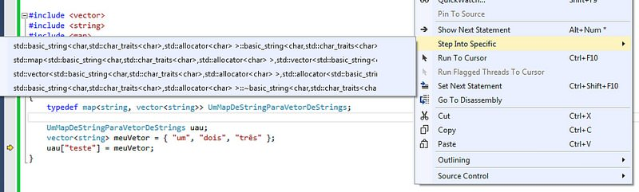 O novo 'como não dar step into' do Visual Studio 2012/13 2014-08-01 [tag_coding] Toda vez que instalo um Visual Studio novo e começo a depurar sempre surge a necessidade de fazê-lo calar a boca nos step intos da STL, Boost, ATL e coisas-que-sei-que-não-vai-dar-pau. (Obviamente, quando dá pau, preciso ir no disassembly e cutucar a STL para ela me entregar qual o problema com o meu contêiner.) o-novo-como-nao-dar-step-into-do-visual-studio-201213 |
| Vestindo a Camisa da Minha Empresa 2014-07-30 Pois é, o tempo passou, e desde 2011 eu passei mais de três anos nessa minha nova empreitada no Mercado Financeiro. Bom, tudo que é bom acaba, para começar algo melhor ainda. No caso da minha experiência com a EzMarket (hoje UOL/Diveo Broker) foi algo quase que surreal trabalhar em um ambiente tão formidável com pessoas mais formidáveis ainda, tanto pessoalmente quanto tecnicamente. Aprendi muito sobre análise de risco e um tanto sobre conexões e protocolos de rede, e mais ainda sobre serialização e desempenho. Tive momentos prazerosos em reuniões de definição de arquitetura, (poucas) madrugadas de debugging e testes no cliente, (muitas) idas ao café da esquina para um ótimo papo e vários outros momentos que não me lembro agora, mas que não me arrependarei jamais, e sempre sentirei saudades. vestindo-a-camisa-da-minha-empresa |
| As Bicicletas de Belleville 2014-07-23 [tag_movies] Este não é um desenho convencional, nem pode-se dizer que é para crianças, pois possui momentos extremamente dramáticos e violentos. Porém, mesmo esses momentos conseguem ser nivelados ao surrealismo que permeia toda a película conduzida por Sylvain Chomet. Porém, não se sabe se esse nivelamento serve para eufemizar a triste realidade do cotidiano ou para celebrá-lo com todas as suas cores lúdicas de um tempo e de uma época eterna nas pinturas de arte. as-bicicletas-de-belleville |
|
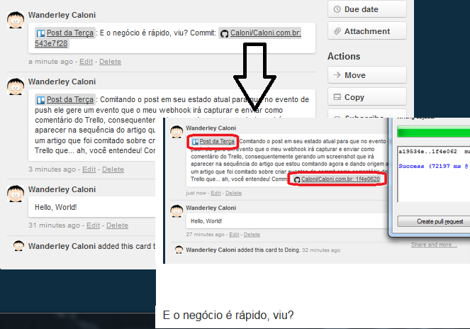 Integrando BitBucket/GitHub com Trello 2014-07-22 [tag_coding] Eu nem acredito que estou escrevendo sobre desenvolvimento web, mas como foi algo que me fez dedicar algumas horas do meu fim-de-semana, e não encontrei facilmente uma solução já feita, acredito que pode ser útil para mais alguém que usa Trello e GitHub (ou BitBucket). integrando-bitbucketgithub-com-trello |
| TDC 2014: Segurança 2014-07-16 Nesse TDC, além da minha palestra usual na trilha C/C++ irei participar da trilha de segurança, voltando às minhas origens, quando programava em empresas da segurança da informação. Foram 10 anos! Estão marcadas duas palestras nesse dia (quinta-feira, 7 de agosto de 2014): uma já ministradas outras vezes sobre o processo de engenharia reversa do dicionário Houaiss, que gerou tantas discussões nos comentários e versões alternativas (inclusive em Python!) do código. Aqui, além de já explicar o processo que me fez abrir o dicionário Houaiss para uso no Babylon, pularei a parte do uso no Babylon e irei focar mais nas técnicas de segurança que podemos utilizar para tornar essa engenharia reversa não impossível, mas pelo menos um pouco mais difícil. tdc-2014-seguranca |
| TDC 2014 2014-07-08 O programador C/C++ de médio e baixo nível em Windows precisa estar familiarizado com as potencialidades de suas ferramentas de trabalho. Entre elas, o WinDbg é de longe o mais completo e complexo, além de ser quase desconhecido pela comunidade. tdc-2014 |
| Sobre a BitForge 2014-07-03 [tag_debugging] [tag_coding] BitForge é minha empresa principal e onde eu trabalho resolvendo os problemas mais difíceis de computação; nos contrate para resolver seu problema [pelo Linkedin] ou enviando um email para wanderley.caloni@gmail.com. Conversar sobre seu projeto e até gastar uma horinha entendendo ele faz parte do nossa forma de se aproximar de você sem precisar da burocracia de um contrato ou pagamento de consultoria. Marque um café ou uma call conosco =) bitforge |
| Introdução à Introdução à Computação 2014-07-01 [tag_coding] [tag_books] O livro começa lá nos primórdios da informação, antes mesmo da humanidade. Sim, pois informação não necessita sequer de um ser sensciente para ser transmitida e utilizada, como já foi comprovado através de nosso código genético, o agora-popular-por-causa-do-ratinho DNA. Uma informação codificada intrinsecamente no processo de reprodução das células de um ser vivo. Um computador orgânico! introducao-a-introducao-a-computacao |
|
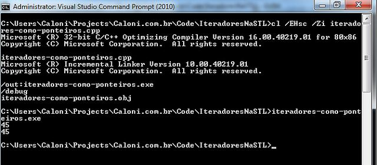 Se iterando com os pseudo-ponteiros: uma breve introdução 2014-06-24 [tag_coding] Como [já vimos algumas vezes], a STL não prima por interfaces intuitivas, preferindo abstrações que criem um leque de ferramentas genéricas para tratamento uniformizado de coleções de dados através de algoritmos. O problema disso é que novos programadores da linguagem terão que aprender uma maneira nova de lidar com problemas baseada na percepção dos criadores do padrão na época em que foi lançado de como seria a evolução da ciência da computação nos próximos anos. Muitos dos conceitos ali abordados realmente se tornaram padrão _de facto_, mas na briga pela expansão da linguagem quem perdeu por muito tempo foi o próprio desenvolvedor, que teve que se contentar com uma lista de algoritmos genéricos parcialmente compilado. se-iterando-com-os-pseudo-ponteiros-uma-breve-introducao |
| Contos da Noite 2014-06-22 [tag_movies] Observe a leveza, a pureza e a ingenuidade contidas na paleta de cores, nas silhuetas, nos diálogos e até no tom das vozes. O ritmo acelerado de cada história, cada uma previsível, ou quase. A moral varia conforme a história, e os atores muitas vezes relutam em mudar. Parábolas da vida, que estamos acostumados a ouvir, mas cujo significado foge no momento da análise. contos-da-noite |
| Ender''s Game: O Jogo do Exterminador 2014-06-21 [tag_movies] Por que estão treinando crianças para guerrear contra um povo alienígena? Se já se passaram 50 anos, onde estão os jovens dessa geração? A função de Ender é explicada em mais da metade do filme, mas qual a função de todos os outros da equipe, e por que foram escolhidos? Todas essas perguntas podem permanecer sem resposta, pois "Ender's Game" é praticamente um folclore que tenta ensinar -- ou ao menos fazer pensar -- a respeito de nossa posição no mundo entre as diferentes espécies que ajudamos a ameaçar de extinção, o que gera uma última e fatal pergunta: onde está a ética que define a sobrevivência de qual espécie é a mais importante? enders-game-o-jogo-do-exterminador |
| Orange is the New Black - Terceira Temporada 2014-06-19 [tag_series] Orange is the New Black, apesar do título ultrapassado, ainda se mantém acima de sua irregular média. Digo irregular porque a série, apesar de possuir picos dramáticos e temáticos bem definidos, também possui os seus valores. Ou seja: se quiser aproveitar o que a série tem de bom, vai ter que aguentar muito lenga-lenga de mulher. orange-is-the-new-black-s03 |
| Orange is the New Black - Segunda Temporada 2014-06-19 [tag_series] Criado por Jenji Kohan, de Weeds e The Stones, com base nas memórias da detenta Piper Kerman, Orange Is the New Black começou em sua primeira temporada como a história de uma nova detenta (Piper Chapman, Taylor Schilling) condenada por tráfico de drogas junto com sua amante, Alex Vause (Laura Prepon). A série se focou mais nas diferenças entre a vida livre e o cárcere privado no meio de mulheres mais ou menos perigosas e carentes. Se transformando agora na segunda temporada em um "Oz de Calcinha", Chapman já está integrada ao sistema, então resta à série revisitar como o sistema funciona, pelo menos com cenas mais leves e mais sentimentais. Afinal de contas, elas são mulheres! orange-is-the-new-black-s02 |
| Como Treinar o Seu Dragão 2 2014-06-19 [tag_movies] A continuação de uma das melhores animações produzidas pela Dreamworks não foge do seu desafio de contar uma história que seja tão divertida quanto dramática. Nesse caso, direção de arte e fotografia mais sombrias, enquadramentos e efeitos mais grandiosos. Chega a pensar que estão utilizando a cartilha de trabalhos como Senhor dos Aneis e Star Wars (trilogia original ou O Retorno de Sith). Quando lembramos que ambas as sagas prenunciam acontecimentos grandiosos que irão mudar a vida dos envolvidos para sempre, Como Treinar Seu Dragão 2 começa a ser percebido como uma história milimetricamente pensada e executada, principalmente em sua primeira metade, quando termina em um encontro inesperado, emocionante e literalmente um divisor de eras. como-treinar-o-seu-dragao-2 |
| Dando cabo do WinDbg 2014-06-18 [tag_coding] Na semana passada falei sobre a ideia de comentar algumas mudanças entre o Windows XP e o novo mundo Vista/7/8/ que fizeram com que adaptássemos algum código que obviamente não funcionaria mais. Falamos sobre a famigerada GINA (ou famiGINADA), e agora apenas vou comentar brevemente sobre o sistema de boot, que também mudou. dando-cabo-do-windbg |
| A Face do Mal 2014-06-15 [tag_movies] O que faz um terror eficiente? Uma história convincente ou sustos convincentes? No caso de A Face do Mal, seus sustos pré-adolescentes com cortes bruscos e o volume do som aumentado é tão descartável quanto qualquer outro filmeco de terror do nosso tempo, assim como os efeitos digitais tão bonitos que perdem sua razão de existir. Porém, sua história nos convida a olhar para o sobrenatural como uma possibilidade mais aterrorizante do que os próprios fantasmas que rondam uma casa recém-habitada por uma família (e lá vamos nós para o clichê). a-face-do-mal |
| A Culpa é das Estrelas 2014-06-14 [tag_movies] O que torna A Culpa das Estrelas tão fascinante como romance é sua despreocupação em soar "cinematográfico", ou seja, com seus diálogos inesquecíveis, interpretações profundas e momentos chorosos, mesmo que ele tenha tudo isso. A diferença é que ele assume suas próprias fraquezas e limites ao criar uma história cheia de filosofia pop/adolescente que nos faz sentir como seus personagens, mesmo sem a necessária profundidade para os temas que aborda. Quem se importa em soar original ou explorar o âmago de questões universais quando se está com câncer, ou quando se tem apenas 80 anos de vida (com sorte) nesse planeta? Melhor do que tentar soar importante é ser acessível, e isso é possível dizer dessas pessoas. a-culpa-e-das-estrelas |
| Amor Sem Fim 2014-06-13 [tag_movies] Filme que revisita os clichês estilo Diário de uma Paixão sob a ótica contemporânea. Foca principalmente no jogo de forças entre pai e filha, mas se estende desnecessariamente ao final repetindo a mesma dinâmica já vista durante o filme. amor-sem-fim |
| American Pie: O Livro do Amor 2014-06-13 [tag_movies] Ótimas piadas, uma história batida, mas que segue a lógica e até meio que homenageia os filmes sobre nerds dos anos 80. E por falar em anos 80, a melhor surpresa é Brandon Hardesty, que faz o gordo desajeitado que fantasia mulheres se entregando para ele a todo o momento. Além de ser a melhor surpresa é praticamente a única, pois seus dois amigos, apesar de socialmente desajeitados, não podem ser rotulados como incapazes de se relacionar com mulheres. american-pie-apresenta-o-livro-do-amor |
| Evocando Espíritos 2014-06-12 [tag_movies] Evocando espíritos é uma história de terror que consegue unir espiritismo com câncer, além de no processo conseguir boas sequências que unem a história de um garoto sensitivo nos tempos atuais com um garoto ainda mais sensitivo que participou de um experimento além-vida que causou muita dor e sofrimento represada na casa que a família acabou de se mudar. evocando-espiritos |
| Armações do Amor 2014-06-12 [tag_movies] Mais uma comédia romântica desperdiçando o talento de Matthew McConaughey e empregando figuras como Sarah Jessica Parker e Zooey Deschanel. A história: ele não quer deixar de viver com seus pais, onde tem uma existência cômoda. Também não quer compromissos, então para se livrar deles leva as mulheres que se relaciona para a casa da família. Até que seu pai decide contratar Paula (Jessica Parker), uma namorada profissional que faz seus parceiros largar o ninho familiar e "seguir adiante" com suas vidas (ambas as partes). armacoes-do-amor |
| Malévola 2014-06-11 [tag_movies] [tag_cinemaqui] Olhando para Angeline Jolie, com suas curvas de beleza grega, seus lábios que já fizeram muitos marmanjos -- desde Hackers -- suspirarem, fica difícil imaginá-la como uma das vilãs mais macabras de uma história Disney. Porém, lembrando dos recentes sucessos de Espelho, Espelho Meu (Julia Roberts) e o mais enigmático Branca de Neve e o Caçador -- onde Charlize Teron rouba praticamente o filme inteiro -- a ideia já não parece tão absurda. E no caso da relação entre a bruxa que dá título ao filme e a Bela Adormecida há algo de novo que a Disney vem tentando fazer, cujo melhor exemplo hoje em dia é a animação Frozen: a mulher não é mais o lado mais fraco, mas o lado que decide. E qual melhor atriz para esse papel do que a bela "Angeline ativista Jolie", um ser humano que não discursa em vão, mas que de fato ajuda os mais necessitados? malevola |
| Eles querem que a GINA vá embora: três posts sobre evolução Windows 2014-06-11 [tag_coding] Fui convidado pela Fernanda Saraiva do programa de MVPs da Microsoft Brasil a falar sobre alguma história a respeito da evolução do Windows e como isso impactou minha experiência profissional. Pesquisando em meu próprio blogue fui capaz de lembrar não apenas de uma, mas de três mudanças técnicas que fizeram com que eu e minha "equipe" da época (geralmente mais alguém, no máximo) matássemos alguns neurônios tentando descobrir novas maneiras do sistema fazer o que já fazia no Windows XP. Irei compartilhar uma por vez no que tem sido o meu post semanal que eu apelidei carinhosamente de Post da Terça. Já faz mais de um mês que consigo publicar pelo menos na terça algo de novo, e espero manter esse ritmo. eles-querem-que-a-gina-va-embora-tres-posts-sobre-evolucao-windows |
| No Limite do Amanhã 2014-06-10 [tag_movies] Filme futurista que faz uma homenagem a Feitiço do Tempo (de Harold Ramis com Bill Murray), mas não aproveita suas idas e vindas pelo mesmo caminho percorrido pelo protagonista, que precisa morrer várias vezes, mas acaba morrendo praticamente da mesma maneira (isso lembra um pouco nossa geração vídeogame, não?). O ponto mais negativo obviamente fica para o final, pois este é um filme onde Tom Cruise (Oblivion) é o herói, e heróis como ele e Will Smith muitas vezes se dão ao luxo de não trocar suas personas midiáticas por personagens mais reais. Ou podemos dizer que essa é uma crítica pontual ao espírito vídeo-game dessa geração, acostumado com desafios fáceis e pouco desafiadores. no-limite-do-amanha |
| Saída pela Loja de Presentes 2014-06-07 [tag_movies] Exit Through the Gift Shop, ou "Saia Pela Loja de Souvenires" (alguém viu isso lançado no Brasil?), um dos indicados ao Oscar 2011 de melhor documentário, parece um documentário, e se assume como um. No entanto, seu terceiro ato é tão surreal, mas tão surreal, que surgiu a especulação de que o personagem cuja vida serviu de base para a história na realidade nunca existiu. Mais do que isso, a estrutura criada (supostamente) pelo diretor e artista de rua "Banksy", que no próprio filme dá um depoimento com seu rosto censurado e sua voz transformada, é incrivelmente bem arquitetada, pois não faz o espectador se perder ao acompanhar o filme que conta a história do homem que queria fazer um filme sobre artistas de rua, incluindo o próprio Bansky. saida-pela-loja-de-presentes |
| Bancando o Águia (aka Sherlock Jr.) 2014-06-06 [tag_movies] Sherlock Jr., ou "Bancando o Águia", como quer o IMDB do Brasil, é uma obra de arte de 1924 em diversos sentidos, mas principalmente nas invencionices do seu diretor e ator, Buster Keaton. Tentando associar suas trapalhadas pelo fato de tentar fazer duas coisas: ser projecionista de um Cinema e aprender a profissão de detetive, o protagonista sem nome é obviamente relacionado com o próprio Keaton, que dirige e atua cenas mirabolantes que usam e abusam de efeitos visuais criados na época, brincando com metalinguagem e sketches físicos a todo momento. Nunca deixando de entreter, Sherlock Jr. ao mesmo tempo que é uma bela homenagem ao Cinema recém-nascido, um prenúncio do que viria pela frente, além de conseguir contar sua história sob diversas camadas de metalinguagem. Tudo isso em apenas 44 minutos. sherlock-jr |
| Metrópolis 2014-06-06 [tag_movies] Se algumas pessoas torcem o nariz ao ver filmes como "O Gabinete do Dr. Caligari" e Nosferatu, pois hoje soam caricatos, nada se pode dizer a respeito de Metrópolis, um épico da ficção científica dirigido e escrito por Fritz Lang e sua esposa em 1927. Os três são representantes clássicos do expressionismo alemão, um movimento artístico cujos movimentos dos personagens são exatamente o que vemos na tela: caricatos, exagerados, quase simbólicos. Para filmes mudos da época, um prato cheio para entreter e ainda capturar a essência das palavras que não saem da boca dos atores. metropolis |
| Computer Chess 2014-06-06 [tag_movies] Já virou um clichê cinematográfico: se vai fazer filme de xadrez, sua história tem que ser complexa. No caso de Computer Chess, essa complexidade nos personagens e em suas relações é complementada pelo fato de um filme de 2013 emular os anos 80 através de filmagens em preto e branco, com razão de aspecto quadrada e erros de edição. Um possível encontro de programadores entusiastas em um torneio disputado entre suas máquinas de fazer cálculo. A ideia é parecer um documentário, mas sua estrutura possui o tom ficcional, com cortes definidos e diálogos obviamente vindos de um roteiro. Vemos a câmera e o cameraman diversas vezes, o que obviamente já nos revela aquele ser um filme amador sobre um documentário sendo feito em um campeonato de programas de xadrez, o que com certeza dá o tom da complexidade que comentei. computer-chess |
|
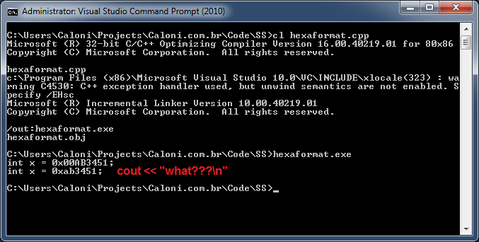 SS 2014-06-03 [tag_coding] Uma das coisas mais cretinas e difíceis para os iniciantes em C++ é conseguir formatar strings de maneira fácil, rápida e indolor. Infelizmente, a biblioteca de printf da linguagem C está fechada para reforma, pois ela é extremamente error-prone e não-intuitiva. Porém, se a printf é não-intuitiva, o que dizer < < daqueles << sinais << de << flechinhas apontando para cout? Bem melhor, não? ss |
| O Cheiro do Ralo 2014-05-31 [tag_movies] O Cheiro do Ralo fala sobre trocas, ou melhor dizendo, sobre o valor das coisas. Coisas podem se resumir em objetos que possuíam ou não valor sentimental para as pessoas que a oferecem ao Sr. Lourenço (Selton Mello), para receber em troca o dinheiro que, pelo menos naquele momento, é mais valioso que o objeto em si. o-cheiro-do-ralo |
| Godzilla 2014-05-28 [tag_movies] O filmes-desastre costumam colocar em seu "currículo" o envolvimento de seus personagens (para tornar pessoal), alguma perda familiar (para tornar doloroso) e um momento de honra (ou político) que unirá todos contra o "mal" que assola a humanidade. No mundo real, nenhum destes itens costuma ser muito frequente ou relevante porque ninguém, exceto religiosos, costuma personalizar os infortúnios de um terremoto, tsunami, epidemias ou até mesmo acidentes nucleares como um inimigo que deve ser combatido (ou como punição aos infiéis). Também sabermos que discursos otimistas fazem parte da rotina burocrática de chefes de estado e nunca atingem a população mais prejudicada. Dessa forma, qual o sentido do monstro nipo-clássico Godzilla ser encarado como um inimigo? Nenhum! E é exatamente isso que o segundo longa de Gareth Edwards evita fazer durante os 123 minutos dessa produção hollywoodiana que mantém suas origens e homenagens orientais bem localizadas. godzilla |
| Desmontando o Aulete Digital 2014-05-27 Este post não estará mais disponível devido ao mau uso de pessoas que se aproveitaram das minhas explicações didáticas a respeito do funcionamento da versão Desktop do dicionário e, agindo de má-fé, começaram a baixar a base de dados indiscriminadamente, fazendo com que o serviço que é disponibilizado gratuitamente aos usuários tivesse que ser desligado. É uma lástima que isso tenha ocorrido, e peço desculpas às pessoas que prejudiquei direta ou indiretamente. desmontando-o-aulete-digital |
| X-Men: Dias de um Futuro Esquecido 2014-05-26 [tag_movies] A franquia X-Men parece ter chegado a algum tipo de saturação nesse "Dias de um Futuro Esquecido" onde o diretor Bryan Singer, que estreou a série e sua continuação, parece recontar momentos históricos da luta entre humanos e mutantes quando, mais uma vez, mutantes pacíficos e mutantes violentos se reúnem. x-men-dias-de-um-futuro-esquecido |
| Turbo 2014-05-23 [tag_movies] Turbo é, assim como Um Ratinho Encrenqueiro, um resultado inesperado. Assim como o velho clichê de colocar um ratinho dominando uma casa abandonada funciona mediocremente na maioria das vezes, colocar um caracol disputando uma corrida de automóveis é quase certo que irá conter a mesma estrutura que tantas outras animações possuem, ensinando que o bem sempre prevalece e que é importante manter vivos os sonhos dentro do coração. Não que a história não seja essa, mas além disso, Turbo tira vantagem dos seus elementos absurdos (um caracol que se move como um carro de corrida) para construir uma animação que diverte moderadamente sem cair demasiadamente na mensagem de moral. Ele consegue entreter através das maneiras inventivas de colocar a história um passo à frente de cada vez, quase soando plausível que um caracol esteja de fato nas 500 milhas de Indianápolis. Obviamente isso exige muito de suspensão de descrença, mas é bem recompensada. turbo |
| Trainspotting: Sem Limites 2014-05-21 [tag_movies] Quando vi pela primeira vez Transpotting, aos meus 17 e poucos anos, ele ficou incrustado na minha mente por todo esse tempo. Até ontem, quando tudo que eu sabia visualmente sobre o filme foi apenas reafirmado, pois jamais havia sido esquecido. É um trabalho intenso que, acredito, atravessa gerações facilmente. Danny Boyle, de Quem Quer ser Um Milionário, dirige com uma economia visual absurda. Os diálogos são complementos de um filme para ser degustado principalmente pela visão. E que visão! trainspotting-sem-limites |
| Manhattan 2014-05-20 [tag_movies] A fotografia e a música de Manhattan fazem todo o filme parecer uma poesia cinematográfica espontânea, quase uma vida alternativa dentro das telas, especificamente dentro daquela tela larga e de maneira magistral usada por Woody Allen e sua equipe para torná-la mágica independente da história que irá ser contada. A própria história começa com inúmeras tentativas de Isaac (Allen) iniciar seu livro com uma síntese sobre Nova York e sua decadência cultural que, ainda que inevitável, consegue nos fascinar. manhattan |
|
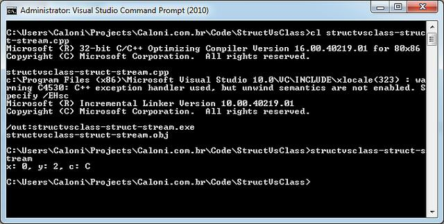 Estruturas VS Classes: fight! 2014-05-20 [tag_coding] Uma dúvida besta e importante ao mesmo tempo que muitos iniciantes em C++ possuem é saber qual a diferença entre um objeto declarado como _class_ e um objeto declarado como _struct_. A causa dessa dúvida é uma linguagem que se derivou de outra (C) que não possuía classes, e portanto criou a palavra-chave _class_ para "ficar bonito", pois, na prática, não muda muita coisa. Tomemos como exemplo o código mais simples de todos: estruturas-vs-classes-fight |
| Holy Motors 2014-05-15 [tag_movies] Holy Motors é o refresco que todo cinéfilo pede de vez em quando. Com uma abordagem surrealista, ele permite fazer uma crítica e uma homenagem à nossa sensação de estarmos na realidade enquanto assistimos filmes. Mais do que isso: ele brinca com essa percepção aproveitando o pouco de pé que fincamos nessa realidade no início do filme. A partir daí, ele nos puxa cada vez mais para o inusitado. Porém, não é gratuito. Parece que tudo que está ali é necessário e poderia ter sido contado da maneira convencional, mas seria um resultado aquém do que precisamos. Sim, precisamos de um Holy Motors no Cinema de vez em quando. holy-motors |
| Following 2014-05-14 [tag_movies] Following é um filme-noir dos tempos atuais, mesmo sendo em preto e branco. É o primeiro longa-metragem dirigido, escrito e produzido por Christopher Nolan, o queridinho dos estúdios atualmente depois da trilogia Batman e trabalhos ambiciosos como Amnésia, A Origem e, claro, O Grande Truque. Ele conta a história de um jovem escritor que para conseguir inspiração começa a seguir pessoas a esmo, mas que comete o terrível erro de começar a seguir as mesmas pessoas. Isso o leva a descobrir o pior que há na natureza humana: roubos, chantagens, mentiras e assassinatos. following |
| Divergente 2014-05-13 [tag_movies] Divergente é o Jogos Vorazes sem muita ação, sem muito drama, sem atuações e com pouca inspiração. No entanto, não deixa de ser um filme OK. Ele se mantém morno o tempo todo, mas aqui e ali existem momentos que prometem ser mais alguma coisa. Infelizmente, são apenas momentos. A apresentação do mundo distópico ocupa uma parte da história, e a tentativa da protagonista, Beatrice/Tris (Shailene Woodley de Os Descendentes), de não ser eliminada da facção que escolheu ocupa a outra parte da história. É necessário dizer que Tris é uma Divergente. divergente |
| 50 Anos de BASIC 2014-05-13 Minha primeira linguagem de programação foi o BASIC. Aprendi durante minhas frequentes visitas à biblioteca lendo livros dos anos 80. Na verdade, eu não me lembro muito bem por que diabos resolvi aprender a programar, já que eu estava mais interessado em entender como um computador funciona. Por que? Não sei bem ao certo, parece que já nasci com um chip embutido que foi ativado quando comecei a tender muito para o lado de humanas ao iniciar a faculdade de Letras... um chip salvador! 50-anos-de-basic |
| Tudo o Que Você Sempre Quis Saber Sobre Sexo e Tinha Medo de Perguntar 2014-05-10 [tag_movies] Woody Allen até quando é medíocre acaba se saindo melhor que a média. Nos anos 70 suas comédias eram mais apelativas e populares, mas nem por isso não deixavam de conter alguma visão crítica sobre nossa realidade. Reinventando o conteúdo do famoso livro homônimo de David Reuben, Allen escreve e dirige uma série de curtas que dissertam, cada um ao seu jeito, sobre afrodisíacos, perversões, pesquisas científicas e travestis. Protagonizando a maior parte das histórias, minhas duas preferidas com certeza são a visão do sexo do ponto de vista do organismo como um sistema setorizado e a paixão de um médico por uma cabra. No entanto, nenhuma das duas esquetes rivaliza com a visão de um imenso seio andando solto por aí, matando pessoas com nata e leite. tudo-o-que-voce-sempre-quis-saber-sobre-sexo-e-tinha-medo-de-perguntar |
| Scarface 2014-05-10 [tag_movies] Scarface é um clássico instantâneo, desses que nasce um dia e já gera uma multidão de fãs. O mais novo seriado de sucesso, Breaking Bad, faz praticamente uma apologia ao filme de Brian de Palma. Porém, diferente de Walter White, Tony Montana já se mostra um bicho ruim desde a primeira cena, interrogado e acuado por americanos que precisam verificar quais dentre os milhares de cubanos que chegaram ao "país da liberdade" são criminosos. Tony se denomina um preso político, e fala horrores do regime e da figura de Fidel Castro. Sua revolta contra o comunismo encontrará uma rima poética em suas reclamações contra os capitalistas ambiciosos depois de um arco de quase três horas de duração ter se fechado. scarface |
| Monty Python - O Sentido da Vida 2014-05-10 [tag_movies] Os comediantes do Monty Python parecem sempre querer se superar. Em O Sentido da Vida, apesar de estarmos vendo diversas esquetes, no melhor estilo do seu programa televisivo The Flying Circus, elas se juntam para tentar explicar, do nascimento à morte, qual é, enfim, o sentido da vida? Pegando emprestados alguns temas mais ou menos comuns com o livro (e pequeno filme) O Guia do Mochileiro das Galáxias, o filme inicia com um pequeno curta (que se juntará ao longa em determinado momento) que consegue, assim como a montagem Eisensteiniana, relacionar um grupo de contadores velhinhos de uma empresa de seguros durante a crise econômica dos ano 80 com um motim dos escravos de um navio. monty-python-o-sentido-da-vida |
| O Âncora: A Lenda de Ron Burgundy 2014-05-08 [tag_movies] Não incomoda ver homens adultos, profissionais da mídia televisiva, se comportando como adolescentes estúpidos que só pensam em mulheres como objetos sexuais e, pior, rivais à sua suposta inteligência superior? Para um machista contemporâneo a parte da mulher como objeto sexual permanece, mas como bem demonstra O Âncora, o medo de ser mais burro e a vontade de transar podem ser dois lados de uma mesma moeda de um centavo. o-ancora-a-lenda-de-ron-burgundy |
| Amante a Domicílio 2014-05-08 [tag_movies] Woody Allen está de volta nas telonas, mas não como diretor. Aqui ele faz o papel de um cafetão que começa a agenciar seu ex-funcionário após o fechamento de sua loja de livros raros. Na verdade, depois de tantos anos, ele é mais do que ex-funcionário: é família. Isso aparentemente não interfere nos interesses comerciais do personagem de Allen, e aí está a primeira piada judia do filme. amante-a-domicilio |
|
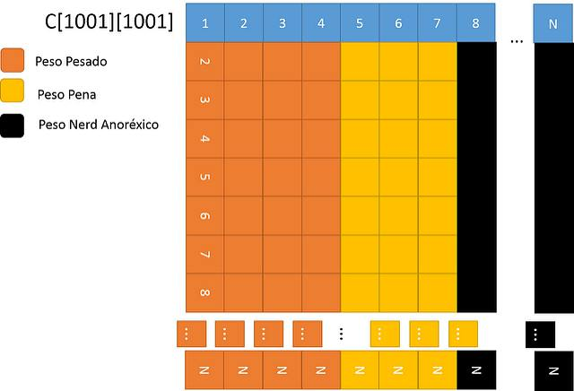 Poker Face 2014-05-06 [tag_coding] O segundo round da segunda fase do Code Jam passou nesse sábado. Disléxico que sou, consegui fazer apenas 8 pontos ¿ como todo mundo ¿ no teste small do problema B, que envolvia apenas dois loops aninhados (a versão large fica para outro post). Na verdade, estou aqui para expressar minha gratidão ao campeonato por ter aprendido mais uma bela lição vendo o código do primeiro colocado do primeiro round, vulgo [Kaizero], um coreano que deu uma solução simples, rápida e prática para um problema de probabilidade tão error-prone que até os juízes do Google deram uma lambuja de alguns testes errados (sem contar que houve apenas a categoria small), e me fez pensar em quantas vezes pensamos em demasiado tentando encontrar a solução perfeita para algo que simplesmente... não precisa. poker-face |
| O Espetacular Homem-Aranha 2: A Ameaça de Electro 2014-05-06 [tag_movies] O Espetacular Homem-Aranha, como é chamada no Brasil essa nova franquia da Sony em torno do herói de teias, não poderia ser mais "espetacular" em sua segunda aparição. Aliás, é tão "espetacular" no sentido da palavra que os habitantes de Nova York já estão habituados a se apinharem educadamente atrás das quase presentes barreiras de metal colocadas estrategicamente em torno de mais um embate entre o Aranha e mais um dos seus arqui-inimigos. Eles aplaudem, festejam, comem pipoca. Nós também. Tudo é um show pirotecnicamente planejado para fornecer ação, humor, suspense, drama e comédia (ah, e romance) em um pacote de quase duas horas e meia de duração. São tantos gêneros diferentes quanto inimigos na telona, e assim como a presença de um número excessivo de personagens icônicos enfraquece cada um deles, até por praticamente não terem qualquer relação uns com os outros. A presença de uma dramédia romântica com ação desenfreada parece não querer dizer muita coisa de nenhum gênero específico. Ao espectador e aos nova-iorquinos as instruções são simples: apenas abrace o lado do filme que lhe agradar mais e aguarde pelo seus breves momentos. Enquanto ele não chega, aprecie uma pipoca e aplauda atrás dos óculos 3D uma performance tão grandiosa quanto um Cirque du Soleil em videotape. Assim como o famoso circo que circunda o planeta para apresentar seu espetáculo para uma plateia que sabe que irá encontrar acrobacias treinadas por anos em um palco onde está tudo sob controle, "Amazing Spider Man" é um filme que tem tudo sob controle: os fãs, os amantes de efeitos visuais, os adoradores de pipoca. Tudo condicionado para fazer... não, obrigar, que você goste do grande show. o-espetacular-homem-aranha-2-a-ameaca-de-electro |
| Presente de Grego 2014-05-02 [tag_movies] Curioso como Rachel McAdams em Uma Manhã Gloriosa é a mulher "trabalhadeira" moderna e esse não é o grande tema deste filme de 2010. Quer dizer, não tanto um tema central e impactante quanto Diane Keaton 27 anos atrás em Presente de Grego. Neste filme de Charles Shyer (O Pai da Noiva) a executiva de sucesso precisa escolher entre dar atenção a suas contas milionárias da empresa onde trabalha ou a um bebê que "herdou" de primos distantes. É a dicotomia "mulher no trabalho" surgindo naquela época com todos os clichês da criança fofinha em um ambiente sério de senhores engravatados. presente-de-grego |
| O Mistério das Duas Irmãs 2014-05-01 [tag_movies] "Um filme vendido como terror, mas que não consegue sequer chegar próximo de um suspense. Depois de passarmos quase duas horas acompanhando a movimentação de uma câmera que parece estar sempre revelando algo espantoso ou fantástico (não está), temos uma série de revelações completamente atrapalhadas sobre algo que não estávamos sequer procurando desvendar." o-misterio-das-duas-irmas |
| Que geleia de mocotó 2014-04-29 [tag_coding] A primeira bateria de problemas da segunda fase do Code Jam me mostrou o porquê do seu nome: meu cérebro ficou feito geleia (ha ha ha). Não consegui resolver nenhum problema a tempo, mas não culpo o C++, que passei a usar para essa fase. É burrice aliada a pressão. Duas horas e meia para entender um problema é o tipo de coisa que me deixa pensando mais no tempo do que no problema. Tenho que melhorar isso. que-geleia-de-mocoto |
| No Impact Man 2014-04-27 [tag_movies] Esse é daqueles documentários ecológicos que se baseia no escritor Colin Beavan e sua família, a esposa compradora compulsória Michelle Conlin e a pequena e inocente filha. Os três passarão um ano cuidando de suas vidas sem tentar causar qualquer impacto ambiental no meio de Nova York. Primeiramente, devo perguntar: o que seria um impacto ambiental para uma família dessas, e por quê? no-impact-man |
| Capitão América 2: O Soldado Invernal 2014-04-27 [tag_movies] Chris Evans, ou Capitão América, seria o personagem mais carismático, mais querido e um líder natural dos Vingadores da Marvel (o que, já sabemos, não se concretiza). Tony Stark (Robert Downey Jr.) lhe tira uma parcela grande de popularidade, mas isso não é culpa dos atores nem dos personagens (originais), mas da nossa era de cinismo e sarcasmo, onde não é o mais bonzinho, o mais patriótico e muito menos o mais correto que irá se sobressair. O politicamente incorreto, ainda que maltratado pela esquerda, continua livre, leve e solto. Curiosamente, tornar esse herói organicamente anacrônico foi uma das poucas virtudes do longa original. capitao-america-2-o-soldado-invernal |
| Abel 2014-04-26 [tag_movies] Abel é um filme-fantasia que se deixa levar pela premissa que o garoto-título resgata a memória do pai ausente como sendo a dele mesmo. Aconteceu algo no passado que não sabemos, possivelmente o não-retorno do pai, que fez com que Abel fosse internado em um hospital e voltasse apenas dois anos depois com a mãe, seu irmão e sua irmã para uma casa em um condomínio abandonado. abel |
| 2048 motivos para não programar 2014-04-24 [tag_coding] Pronto, posso programar em paz. O jogo 2048 é uma lástima para todos os trabalhadores intelectuais que dependem de suas mentes para produzir algo que preste. Ele gerou mais posts no Hacker News do que a moda dos bitcoins (talvez não) e mais projetos no GitHub do que a busca para a cura do câncer (talvez não). Obviamente que este post vai gerar mais um [gist Python] para minha coleção. 2048-motivos-para-nao-programar |
| Hoje Eu Quero Voltar Sozinho 2014-04-23 [tag_movies] Quatro anos depois do diretor Daniel Ribeiro realizar um dos curtas mais concisos e injustamente chamados de polêmicos a respeito da paixão de um garoto cego por um aluno novo da escola, eis que o mesmo Daniel Ribeiro dirige e escreve com os mesmos atores principais a versão em longa metragem dessa história, e se isso geralmente é uma péssima ideia por tentar alongar uma ideia que só funciona por dezessete minutos, nesse caso o resultado é no mínimo cativante. hoje-eu-quero-voltar-sozinho |
| Actores S.A. 2014-04-20 [tag_movies] Uma comédia argentina com um roteiro até que interessante visto de fora, mas de dentro é uma bagunça. Possui uma história que gira em torno do salvamento de um teatro ao mesmo tempo que constrói a relação do casal protagonista, ambos se relacionando através de coincidências absurdas. A ideia dos atores para conseguir dinheiro é aceitar qualquer trabalho, mesmo fora dos palcos. Porém, não é isso o que atores já fazem? Ainda mais os decadentes? Qual seria a grande ideia para este filme? actores-sa |
| Uma Manhã Gloriosa 2014-04-19 [tag_movies] Uma Manhã Gloriosa é o tipo de filme que tem tudo para ser mais uma comédia romântica clichê com um final feliz e uma boa lição de moral. No entanto, a direção sempre presente de Roger Michell consegue, assim como em Um Lugar Chamado Notting Hill, transformar um roteiro trivial em uma empolgante experiência pelo mundo da mídia televisiva. uma-manha-gloriosa |
| Woman in Love (aka Rubbeldiekatz) 2014-04-18 [tag_movies] Essa é uma comédia romântica estilo Notting Hill, com a diferença de ser na Alemanha e ter o plot de um ator que se veste de mulher para conseguir o papel em um curta produzido por Hollywood sobre o nazismo (sempre ele). O resultado é algumas pouquíssimas piadas semi-originais, quase sempre envolvendo o ator que representa Hitler, e muitas piadas recicladas daquela velha situação do homem travestido já visto em produções tão bizarras desde "Glen ou Glenda?" (Ed Wood, 1953) passando por As Branquelas (2004). woman-in-love |
| As Crônicas de Spiderwick 2014-04-17 [tag_movies] Essa é basicamente uma versão infanto-juvenil de A Morte do Demônio: alguém acha um livro amaldiçoado em uma casa abandonada e que ninguém deveria habitar e agora está impossibilitado de sair do lugar, pois parte da maldição prega que tanto o livro quanto seus leitores devem ser eliminados. A parte infanto-juvenil da história é que ela deve envolver ogros, globlins, trolls, ter uma moral da história, que se for Disney/Spielberg, vai envolver uma relação pai e filho... bingo!, e, o essencial: ninguém deve se machucar no processo, mas todos devem se divertir como em um parque de diversões temático. as-cronicas-de-spiderwick |
| Sword Art Online - Segunda Temporada 2014-04-16 [tag_animes] A série japonesa de animação SAO (Sword Art Online) possui uma estrutura bem confusa. Essa segunda temporada é formada por duas histórias, assim como a primeira, mas diferente da primeira as histórias quase não têm relação. sword-art-online-s02 |
| Sword Art Online - Primeira Temporada 2014-04-16 [tag_animes] O tema de mundos virtuais já tem certa data, mas é a primeira vez que vejo ele ser explorado nos jogos online. Mais interessante, ainda, é construir uma história cujo pano de fundo é o lançamento de mais um RPG online a la "World of Warcraft", com direito a versões beta, coleção de itens, aumento de experiência, novas habilidades, com a diferença que seu controle é exercido e sentido diretamente pelo cérebro dos jogadores atráves de um sensor na forma de capacete. O enredo principal: se os criadores de um jogo de realidade virtual conseguem controlar os sentidos de seus jogadores o que os impede de levar essa experiências às últimas consequências? sword-art-online-s01 |
| Gigantes de Aço 2014-04-16 [tag_movies] Esse é aquele tipinho de filme que tem o espírito Disney e Spielberg ao mesmo tempo, tanto que é produzido por ambos, mas felizmente consegue lançar uma nova e empolgante luz para uma história já batida. Conduzido pelo diretor/produtor Shawn Levy e escrito por John Gatins (O Voo e... arght! Norbit), ambos estão claramente "inspirados" pelo coração de Mickey Mouse e o dedo de E.T.: a história une pai e filho, até então completos desconhecidos, em torno da luta de robôs de aço gigantes, uma mania que se tornou a regra após a decadência do boxe e das lutas de UFC por conta da sede cada vez maior do público por destruição total. gigantes-de-aco |
|
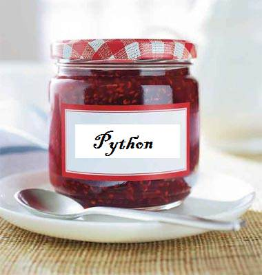 Geleia de Código 2014-04-15 Não costumo participar de campeonatos de programação por alguns motivos vagos: é perda de tempo (não ganho nada com isso), sou um péssimo programador (ou pasteleiro), dá preguiça (esse é o mais válido) e por aí vai o mimimi. Dessa forma, sempre passei ileso de eventos como o atual [Google Code Jam], que pretende levar a categoria de código ofuscado para um novo patamar. geleia-de-codigo |
| Madoka Magica 2014-04-14 [tag_animes] A revisita a este animê que para mim ainda é meu favorito -- pela originalidade e pela fuga do lugar-comum e dos roteiros fáceis que a maioria das adaptações dos quadrinhos japoneses são submetidos -- foi feita em apenas uma noite. Mais de quatro horas depois posso reafirmar com convicção: é uma obra ousada para seu formato tanto em história quanto na direção/edição/arte. Desafia o espectador a esquecer os detalhes centrais de uma história que vai se abrindo muito lentamente, e sua força é sentida exatamente por esse cuidado em cada detalhe. madoka-magica |
| Noé 2014-04-09 [tag_movies] O filme é muito melhor que o livro, mas nesse caso estamos falando de um livro escrito há milênios atrás e que sequer é um livro, mas dois ou três versículos de Gênesis, o primeiro dos mais de 70 trabalhos da Bíblia. Porém, o dilúvio, ou inundação global, também é um mito amplamente conhecido por povos antigos, todos à mesma época, e existiam diversas formas de contar a mesma história (incluindo o Livro de Enoque, que cita a existência dos anjos vigilantes). Nesse sentido, podemos dizer que a versão escrita pelo diretor Darren Aronofsky (Cisne Negro, O Lutador, Pi) e seu produtor Ari Handel consegue mesclar de maneira surpreendente essas histórias em uma discussão razoavelmente interessante sobre a luta do bem contra o mal, da crença e dos desígnios de um Criador e da natureza de nosso livre-arbítrio. noe |
| Lambda: o Retorno! 2014-04-08 [tag_coding] Na última vez que foi abordado o tema "lambda na ferida" falamos brevemente sobre como C++ agora permite criar funções dentro de funções. Hoje vamos apenas falar que aquela construção bizarra que criamos fica ainda mais bizarra se precisarmos retornar alguma coisa dessa função ou usá-la mais de uma vez. lambda-o-retorno |
| Oblivion 2014-04-06 [tag_movies] Oblivion consegue a proeza de citar diversas obras de ficção científica memoráveis e ainda assim ficar muito longe dos resultados que as mesmas obras tiveram em suas épocas. Talvez o maior problema seja Tom Cruise, que desde muito tempo vem repetindo suas performances e evitando que uma trama até que interessante ganhe frutos, um toque de Midas ao contrário que chega a rivalizar com Will Smith. oblivion |
| Um Monstro em Paris 2014-04-05 [tag_movies] Uma animação francesa de alta qualidade em sua direção de arte, movimento dos personagens e números musicais que são bonitinhos por natureza, mas às vezes parecem mal trabalhados pela artificialidade do ritmo (talvez uma câmera aqui e ali resolvessem, mas a maioria dos números insiste em se manter na visão da plateia). É uma história batida a respeito de um monstro que surge na cidade de Paris na época em que ela abrigava ninguém menos que George Méliès, o mago da arte cinematográfica que tinha acabado de nascer e que foi homenageado recentemente no arranca-lágrimas Hugo Cabret. um-monstro-em-paris |
| Bad Guy (aka Tipo Ruim) 2014-04-05 [tag_movies] Vi vários filmes desse diretor sul-coreano, um dos meus favoritos, e é fácil entender que ele possui estilo e temas que vão se refletindo no decorrer de sua carreira e que possuem como ponto em comum a narrativa quase sem diálogos de histórias simples, mas que através das expressões e enquadramentos de Kim-Ki Duk assume sempre o formato de um excelente estudo de personagem. É sem dúvida esse o caso em Fôlego, Casa Vazia, Pietá, Primavera, Verão... e nesse Bad Guy, ou Tipo Ruim , onde o protagonista é um cafetão e o sexo vira pano de fundo para uma relação incomum entre duas pessoas que no princípio não tinham nada em comum. tipo-ruim |
| Penelope 2014-04-05 [tag_movies] Peguemos um livro de contos infantis e transformemos em um filme live-action (com atores de carne-e-osso). Pode ser aquela história da maldição da empregada que é renegada pelo seu amor de um aristocrata, de novo?, e cuja mãe é uma bruxa e roga uma praga que transforma a primeira filha da família de sangue azul em uma abominação. Quer dizer, o nome "abominação" vai depender de quem consegue enxergar na bela Christina Ricci um monstro, quando no fundo a única coisa que incomoda em seu visual são suas orelhas flácidas e seu focinho de porco. Nada que justifique tantas janelas quebradas de pretendentes que parecem ter se encontrado com uma besta selvagem prestes a devorá-los. penelope |
| Curtindo a Vida Adoidado 2014-04-02 [tag_movies] O diretor/produtor/roteirista John Hughes (Gatinhas e Gatões, Clube dos Cinco) é a cara da juventude da década de 80 e consegue expressar isso em cada um de seus filmes que aborda temas recorrentes entre os jovens. A consequência disso é que seus trabalhos daquela época se universalizaram, tanto que hoje temos fãs incondicionais de Ferris Bueller nascendo após ele sair do colégio. Não é difícil entendê-los. Assistir hoje à Curtindo a Vida Adoidado é poder captar sua mensagem sobre a vida sob o ponto de vista adolescente, mas, acima de tudo, o ponto de vista humano. curtindo-a-vida-adoidado |
| Os Irmãos Cara de Pau 2014-03-30 [tag_movies] Não se fazem mais filmes sem computadores, e isso pode ser uma coisa ruim. Os efeitos digitais invadem as telonas e as pessoas dessa geração mal percebem que estão olhando para pixels plásticos gerados em ambientes impossíveis. O velho acidente de carro capotando parece só existir agora "photoshopado" em inúmeras camadas de irrealidade. os-irmaos-cara-de-pau |
| A moda agora é levar lambda na função 2014-03-28 [tag_ccpp] [tag_coding] A nova moda de programar C++ nos últimos anos com certeza é usar lambda. Mas, afinal, o que é lambda? Bom, pra começar, é um nome muito feio. O que esse nome quer dizer basicamente é que agora é possível criar função dentro de função. Não só isso, mas passar funções inteiras, com protótipo, corpo e retorno, como parâmetro de função. a-moda-agora-e-levar-lambda-na-funcao |
| 300: A Ascensão do Império 2014-03-25 [tag_movies] Esse é um filme nitidamente encomendado para pegar carona no sucesso do original de Zack Snyder (que dirigiu o primeiro "300" e assina o roteiro deste novo) baseado em seu público potencial, que aparentemente sente prazer em ver pessoas musculosas arrancando sangue de pessoas/bonecos genéricos em câmera lenta. Tudo de forma estilizada, é claro, mas, dessa vez, sem o preciosismo visual que tornava seu antecessor tão fascinante. 300-a-ascencao-do-imperio |
| Inside Llewyn Davis: Balada de um Homem Comum 2014-03-24 [tag_movies] Os irmãos Coen (Onde os Fracos não Têm Vez, Fargo) são mestres em contar histórias prosaicas e mergulhar fundo nas sensações que estas geram, sempre de uma forma estilizada e com uma fotografia impecável (Bravura Indômita, O Grande Lebowski) que evoque o ambiente onde se situa a ação. Esse "Inside Llewyn Davis - Balada de Um Homem Comum" não foge à regra e se torna a partir da transformação em ficção do músico folk Dave Van Ronk um verdadeiro estudo de personagem. inside-llewyn-davis-balada-de-um-homem-comum |
| A Princesinha 2014-03-23 [tag_movies] É muito bom de vez em quando levar um tapa na cara dos gêneros menos "louváveis" como essa aventura/fantasia que abraça completamente o clima de conto de fadas. Dirigido pelo ainda jovem talento Alfonso Cuarón em 95, é um filme para chorar, com momentos dramáticos extremamente angustiantes, ainda que a heroína seja uma criança, mas que, depois de viver na Índia, é entregue aos cuidados de uma escola para garotas em Nova York para que seu pai viúvo sofra as agrúrias da guerra. a-princesinha |
| O Mundo Imaginário do Doutor Parnassus 2014-03-22 [tag_movies] Terry Gilliam é um diretor competente em ilustrar o surreal, como no excelente "Os 12 Macacos" e no bom "Os Irmãos Grimm". Porém, em O Mundo Imaginário do Doutor Parnassus não há história que suporte o uso do fundo verde para narrar as diferentes visões das pessoas que adentram o mundo imag... bom, vocês já sabem. o-mundo-imaginario-do-doutor-parnassus |
| Team America: Detonando o Mundo 2014-03-19 [tag_movies] Assistir a "Team America" é como rever os velhos clichês de filmes de equipes de salvamento do mundo (onde o pior exemplo possível é "G.I. Joe - A Origem de Cobra"). As duas diferenças: protagonizados por marionetes e realizado pelos criadores de South Park. O que impressiona no projeto é como os enquadramentos, mudanças de foco e até a movimentação dos "atores" segue uma lógica batidíssima, mas é ao mesmo tempo tecnicamente primoroso e eficaz para a narrativa. team-america-detonando-o-mundo |
| Diário de uma Paixão 2014-03-15 [tag_movies] É curioso que Ryan Gosling (Drive, O Lugar Onde Tudo Termina) tenha protagonizado um filme tão cândido e seis anos depois tenha dividido a tela com Michelle Williams em Blue Valentine, para despedaçar qualquer traço de esperança romântica que qualquer fã do ator tivesse em torno da persona idealista que criou. O fato é que Diário de Uma Paixão obtém sua força justamente em fazer-nos crer que um romance totalmente desvinculado da razão conseguisse suportar a situação adversa e, ainda mais, a passagem do tempo que destrói e transforma tudo em sua volta. diario-de-uma-paixao |
| A Mentira 2014-03-14 [tag_movies] Temas como em "Easy A" existem aos montes na cinematografia adolescente estadounidense. Em um país cada vez mais puritano o fato de você ser uma adolescente que teve momentos íntimos com um cara já é sinal de má conduta; ter momentos íntimos com dois caras ou mais que isso já é certificado de prostituta. No caso desse filme dirigido por Will Gluck (Amizade Colorida) e escrito por Bert V. Royal (?) essa nada original história é vagamente explorada em torno de personagens que se misturam e nunca conseguem convencer como pessoas de carne e osso, e confesso que em alguns momentos sequer me lembrava dos coadjuvantes mais próximos de Olive, a protagonista (Ah, Emma Stone...). a-mentira |
| O Exorcismo de Emily Rose 2014-03-08 [tag_movies] Se O Exorcista (William Friedkin, 1973) tivesse sido produzido nessa década perderia praticamente metade do seu brilho sobrenatural. Um filme faz muito mais sentido em sua época (o que não quer dizer que não possa ser apreciado pelas futuras gerações), e lá no passado as crenças e religiões ainda eram um ponto alto, sobretudo a cristã. Os últimos escândalos da igreja católica com certeza ajudaram a minar toda essa fé que leva ao medo, ao sacrifício e à dor. E o medo, desnecessário dizer, é o que move o terror. o-exorcismo-de-emily-rose |
| Ela 2014-03-07 [tag_movies] Ela pode ser chamado de romance, mesmo que seja entre um ser humano e um sistema operacional, porque é basicamente um filme sobre relacionamentos. O roteiro e a direção de Spike Jonze (Quero Ser John Malkovich) entram fundo na questão "o que torna uma pessoa atraente para outra" desintegrando a parte material e se focando no mundo das ideias; quase que um Antes do Amanhecer futurista. ela |
| Poltergeist: O Fenômeno 2014-03-06 [tag_movies] Um terror produzido e roteirizado em parte por Steven Spielberg não poderia ser lá muito assustador. Chega a ser até um pouco engraçado, como na cena inicial com dois controles remotos que controlam a mesma televisão. Porém, diferente de metade dos terrores produzidos antigamente e hoje em dia, pelo menos é coeso e tenta puxar um pouco mais o espectador. poltergeist-o-fenomeno |
| Voltar a Morrer 2014-03-04 [tag_movies] Roteiros excelentes, ou com ideias excelentes, nem sempre vão dar naquele filme inesquecível. Ou, pelo menos, não esquecível de uma maneira boa. No caso de Voltar a Morrer, de Kenneth Branagh (Frankenstein de Mary Shelley, Hamlet), o uso do visual no seu sentido mais sui generis da palavra termina por transformar um suspense dramático em diversas cenas onde o espectador fica na dúvida se deve rir ou se espantar com os acontecimentos em câmera lenta. No entanto, o conceito de vida após a morte poderia ter virado um plot sensacional, o que de fato é, se racionalizarmos os acontecimentos em torno da história da personagem de Emma Thompson e seu trauma do passado envolvendo o assassinato da esposa de Roman Strauss, um compositor famoso (ou pelo menos que ele gostaria de ser). voltar-a-morrer |
| Onde os Fracos não Têm Vez 2014-03-04 [tag_movies] Deve existir um "bug" ou chip implantado na maioria dos críticos para que estes adorem filmes que se preocupam milimetricamente em realizar a experiência mais real possível, ainda que estes estejam equipados de fotografia, figurino, direção de arte e roteiro. Isso poderia explicar a veneração quase que incondicional de certas obras, como O Som ao Redor (Kleber Mendonça Filho, 2012), Amor (Michael Haneke, 2012) e este Onde os Fracos Não Têm Vez, dos irmãos Coen, os mesmos que já haviam realizado Fargo e cuja existência não pode passar em branco ao analisarmos seu filme gêmeo. onde-os-fracos-nao-tem-vez |
| O Homem do Planeta X 2014-03-04 [tag_movies] Esse é um trash dos anos 50 no sentido mais típico da palavra. Tentando criar uma atmosfera de tensão ao incluir um alienígena cujas intenções não são conhecidas em torno de homens com objetivos bem distintos entre eles, um repórter, um cientista e um ganancioso, O Homem do Planeta X se esquece de incluir também explicações mais verossímeis para sua história, mesmo se tratando de uma época onde a ingenuidade reinava no Cinema. o-homem-do-planeta-x |
| Abutres 2014-03-04 [tag_movies] Filmes com Ricardo Darín (Um Conto Chinês, O Segredo dos Seus Olhos) já merecem uma visita. Já filmes do diretor Pablo Trapero (Elefante Branco), que infelizmente é mais realista do que pessimista, exigem uma preparação psicológica para a dor e a depressão que virão por causa da impotência de seus personagens ante uma situação intransponível. Ou, resumindo, como diria Capitão Nascimento: "o sistema é foda!". abutres |
| Uma Aventura Lego 2014-03-03 [tag_movies] Eis um filme que constrói sua história em um universo de bonecos e peças montáveis que juntos somam todos os clichês possíveis e imagináveis do gênero aventura. Partindo dessa premissa tímida para um filme onde "Tudo é Incrível" talvez seja pretensioso demais, mas não para um ser cheio de sonhos, medos e desejos que se misturam para contar uma história jamais vista: a que sai da cabeça de uma criança. uma-aventura-lego |
| A Big Love Story 2014-03-03 [tag_movies] Uma comédia-romântica filmada nos moldes de filme independente não necessariamente é algo positivo. No caso do "indie" A Big Love Story, de 2012, o roteiro de Dale Zawada peca por não aproveitar a oportunidade de estabelecer novos horizontes para a relação amorosa entre Sam (Robbie Kaller), um obeso que começa a sentir o peso do seu passado ao desistir de sua vida de esportista, e Cassie (Jillian Leigh), uma personal trainer de academia que namora um rapaz chato e que serve de pista para reconhecermos que estamos lidando aqui com quase-caricaturas. a-big-love-story |
| O Estranho Mundo de Jack 2014-03-02 [tag_movies] O diretor Henry Selick já tem seu lugar de destaque nas animações por produzir com sua equipe trabalhos com tanto esmero quanto Coraline e o Mundo Secreto e este O Estranho Mundo de Jack. Bancado por Tim Burton, cujos projetos góticos possuem total similaridade com ambos os filmes, Selick em 93 já investia no que seria quase que um renascimento da arte stop-motion nos cinemas, de onde surgiriam ótimos trabalhos como A Noiva-Cadáver (esse sim dirigido por Tim Burton) e atingiria seu ápice em Mary e Max (Adam Elliot, 2009). o-estranho-mundo-de-jack |
| O Equilibrista 2014-03-02 [tag_movies] O Equilibrista é um trabalho fascinante de documentário porque explora de diversas maneiras o uso da câmera, montagem e roteiro para conseguir trazer a atenção do espectador no seu máximo em torno de um projeto que poderia muito bem virar uma reportagem sem graça de cinco minutos em um telejornal qualquer. o-equilibrista |
| El Santos vs la Tetona Mendoza 2014-03-02 [tag_movies] É realmente fascinante como existem similaridades entre a sociedade mexicana e a brasileira, como é possível ver nessa animação do diretor Alejandro Lozano e do roteirista Augusto Mendoza. Girando em torno do problema que os zumbis são para o país, e "zumbi" aqui é um simbolismo para as pessoas alienadas que não se mexem no trem para dar lugar para quem vai descer, os que pagam impostos demais e os que ouvem música de gosto duvidoso sem parar, e do problema que é gerado quando eles são eliminados, o que por sua vez consegue remeter a uma mensagem igualmente relevante sobre prostituição e poder feminino, o desenho tem diversos momentos satíricos que tentam homenagear o Cinema em resultados mais ou menos satisfatórios; minha sequência favorita é a de Lista de Schindler, onde uma lata de coca-cola toma a vez do vestido vermelho do original de Spielberg. el-santos-vs-la-tetona-mendoza |
| Sharknado 2014-03-01 [tag_movies] Quando um filme brinca de ser do gênero trash ele faz um esforço mínimo para dar umas piscadelas para o espectador no melhor estilo "ei, eu estou brincando". Essa é uma característica óbvia no interessante Matadores de Vampiras Lésbicas (2009) e no ótimo Zumbilândia (2009). É preciso ter em mente que, sem essa piscadela básica, um trabalho que tenta subverter seu gênero pode acabar sendo o exemplo perfeito de tudo o que não se deve fazer em um filme. É exatamente por isso que Sharknado acaba sendo um marco nos filmes muito, muito ruins. sharknado |
| A Hora da Zona Morta 2014-03-01 [tag_movies] Filmes do Cronenberg (A Mosca, Cosmópolis, Videodrome) são projetos que fazem o espectador pelo menos pensar minimamente no assunto, mesmo que esse assunto seja uma história saída da mente fantasiosa de Stephen King, como é o caso desse A Hora da Zona Morta. De certa forma, o fato da história girar em torno de eventos sobrenaturais em nada prejudica o drama implícito contido na vida perdida de um homem que ficou cinco anos em coma após um acidente. A vida que ele poderia ter tido nunca mais será obtida de volta, pois agora ele é uma celebridade por conseguir enxergar eventos relevantes do passado/presente/futuro das pessoas que encosta a mão. Tanta intimidade com estranhos o torna um estranho para seus entes queridos. Um plot filosófico dos melhores, e que o roteirista Jeffrey Boam (Indiana Jones e a Última Cruzada) consegue conduzir sem lidar com detalhes demais para ofuscá-lo. a-hora-da-zona-morta |
| Houaiss para Babylon em Python! 2014-02-27 [tag_coding] O [Fabio Montefuscolo] expandiu mais ainda o acesso do conversor Houaiss para Babylon implementando uma versão em Python, uma linguagem que estou aprendendo a adorar. Tudo é mais simples, rápido e direto em Python, e o [código que ele escreveu] utiliza todo esse potencial: houaiss-para-babylon-em-python |
| A Outra História Americana 2014-02-26 [tag_movies] Este não é um filme sobre nazismo, mas sobre fanatismo. Pessoas fanáticas a respeito dos mais diversos assuntos: política, religião ou (coloque aqui sua doutrina). Quer assistir um filme sobre os males do fanatismo? Assista A Outra História Americana. É um filme didático, mas não explícito. Sua sutileza reside nas simples expressões do dia-a-dia como resposta a situações das mais prosaicas, como um almoço de família. Porém, a mensagem é clara. a-outra-historia-americana |
| RoboCop 2014-02-24 [tag_movies] O novo Robocop reverencia em muito o antigo (talvez até demais), tanto em seu ótimo tema musical quanto com sua alma: criticar como a justiça muitas vezes é aplicada. Nesse sentido, ninguém melhor que José Padilha (Tropa de Elite, Tropa de Elite 2) para discorrer sobre esse tema. Criando no novo policial Alex Murphy (Joel Kinnaman) alguns bons momentos em que evoca o pragmatismo sádico de personagens como o polêmico Capitão Nascimento, um momento onde RoboCop invade a delegacia, o longa evita não seguir o mesmo raciocínio de seu predecessor, mas não a sua história em linhas gerais, que permanece quase que completamente fiel. robocop |
| Saco de Ossos 2014-02-22 [tag_series] O que impressiona nessa nova produção baseada em uma obra de Stephen King nem é a história, que segue mais ou menos os mesmos moldes da sua cinematografia que busca o grotesco e o fantasioso, exagerado e estilizado, mas o trabalho de som, a trilha e a direção de arte que, aliados a enquadramentos ousados, revelam os sonhos do protagonista como fazendo parte de sua realidade (como os imensos quadros pendurados). Infelizmente decidiram transformar em uma série com dois episódios que somados são um filme de 3 horas, quando imagino que se fossem cortadas algumas situações e personagens que em nada acrescentam à história (como a velha maluca), o resultado final poderia ser menos expositivo. Do jeito que está, a série grita para o espectador: "olhem para mim! sou uma obra do Stephen King!". saco-de-ossos |
| Depois do Casamento 2014-02-22 [tag_movies] Já havia visto esse filme há muito tempo atrás no finado Cine Belas Artes (São Paulo), e tive alguns pequenos flashes bem pontuais. No entanto, revendo com um olhar mais crítico, a sensação geral é de uma angústia e tensão opressivos. A câmera da diretora Susanne Bier emula a de Abdellatif Kechiche (O Segredo do Grão) em aproximar-se dos personagens de forma trêmula. Porém, diferente deste, os sinais mais significativos não estão no olhar e no rosto dessas pessoas que passam por uma crise familiar, mas em diversos planos-detalhe que mostram mãos e sua insegurança. A ideia do filme é boa, e é explorada no seu máximo e no visual. Os diálogos são para as pessoas se comunicarem, mas o visual é para o espectador entender o subtexto. depois-do-casamento |
| Real Programmers Don't Use Java 2014-02-20 [tag_english] When I was a newbie (and a wanna-be) I enjoyed reading "Real Programmers Don't Use Pascal", a satiric text that influenced and encouraged me into the path of "C/C++ enlightenment", most even than K&R's book. Since then I thought that being a "Real Programmer" was something close to everything one needs to know to get (hard) things done (quickly). Being a "Quiche Eater" was, in couterpart, comparable to nothing. Real Programmers solve real problems! Quiche Eaters are losers who study the academic concepts of computer science and never do a damn useful and/or working program (maybe you know some guy like this). real-programmers-dont-use-java |
| Os Homens que Encaravam Cabras 2014-02-15 [tag_movies] Ambientado durante a guerra no Iraque/etc a partir de um pressuposto que as forças armadas americanas estavam pesquisando capacidades paranormais de alguns de seus soldados, Os Homens que Encaravam Cabras, apesar da conotação brasileira erótica, tem a ver com a crença incondicional no ser humano, incluindo suas capacidades sobrenaturais. O que fascina durante o filme todo é que ficamos à espera de algum sinal "mágico" ou um sinal de picaretagem de George Clooney, quando na verdade, e obviamente, nenhum deles ocorre. O roteiro é inteligente em estabelecer que quem dá significado aos acontecimentos são as pessoas, e como esse é basicamente um filme sobre elas (e com um elenco invejável), a experiência se torna mais do que positiva. os-homens-que-encaravam-cabras |
| Mama 2014-02-15 [tag_movies] Mama, além de ter premissas ruins, nem filme de terror é. "Inspirado" pelo curta homônimo de 2008 do próprio Andrés Muschietti, o diretor recebe visibilidade através de Guillermo del Toro (O Labirinto do Fauno), que assina a produção. A história gira em torno de duas meninas que ficam abandonadas em uma cabana na floresta por cinco anos após terem sido raptadas pelo pai que por sua vez é capturado por uma espécie de assombração. Tendo um descartável irmão gêmeo do pai das meninas para restabelecer o elo com a casa onde moravam e sua namorada (Jessica Chastain) que fica aliviada por não estar grávida, mas vira alvo de ciúmes da já citada assombração que (oh!) se revela como um fantasma de uma mãe que perdeu seu filho. mama |
| Trapaça 2014-02-13 [tag_movies] Uma história baseada em acontecimentos da década de 70 não poderia deixar de incluir em sua trilha sonora clássicos badalados de uma era musicalmente ambiciosa e transcendental como aquela. Também não poderia deixar de incluir o sexo livre, uma das frentes do movimento hippie iniciado na década anterior e que já operava mudanças na estrutura social americana (discussões sobre divórcio). E, de fato, as músicas escolhidas em Trapaça são um atrativo à parte que nos ajuda a mergulhar naquela atmosfera. Já o sexo, mais sugerido que prático, mantém a visão puritana atual (diferente dO Lobo de Wall Street, de Scorsese), mas não deixa de escandalizar ao trazer uma Amy Adams (Encantada, O Homem de Aço) completamente transformada em uma sex appeal disposta a usar suas curvas, pele e olhos como um atrativo e tanto para dezenas de olhares masculinos. Porém, o que Adams não exibe, mas sabemos no início que possui em boa dose, é sua inteligência. Diferente de Rosalyn (Jennifer Lawrence), cuja concorrência pela atenção do seu marido Irving (Christian Bale) é fisicamente e intelectualmente desleal. trapaca |
| Louca Obsessão 2014-02-09 [tag_movies] Baseado em um romance de Stephen King, este thriller do início da década de 90 que apresenta Kathy Bates como Annie Wilkes, a fã obsessivo-compulsiva que tem a "sorte" de resgatar o seu escritor favorito de um acidente de automóvel. Isolados pela neve, ela tem a chance de cuidar de Paul Sheldon (James Caan) enquanto ele se recupera. A mesma sorte não possui Sheldon, cuja editora acabou de publicar o último livro da série com a personagem Misery (o título original do filme) em que a mata. louca-obsessao |
| Chasing Ice 2014-02-09 [tag_movies] Chasing Ice, apesar de receber até indicações ao Oscar, está sem título no Brasil porque as pessoas não gostam de documentário. Felizmente, a Netflix disponibiliza em stream com legendas (de Portugal, mas vá lá). É um daqueles eco-documentários que fala sobre os efeitos do aquecimento global em nosso planeta enquanto pessoas leigas continuam discutindo se a culpa é nossa ou não. Assim como a Teoria da Evolução, a soma de dezenas, ou melhor, centenas de trabalhos científicos ao redor do globo confirmando o homem como agente causador das mudanças climáticas dos últimos cento e cinquenta anos não é páreo para a ignorância e comodismo intelectual (vulgo burrice) da maioria da nossa população. chasing-ice |
| Um Final de Semana em Hyde Park 2014-02-08 [tag_movies] Apesar de ótimas atuações, especialmente Bill Murray como o rouco presidente Franklin D. Roosevelt e Samuel West como o gago Rei da Inglaterra, e de uma fotografia, direção de arte e figurino extremamente afiados com a época (EUA pós-depressão), há algo presente por toda a narrativa de Roger Michell (Um Lugar Chamado Notting Hill, Fora de Controle) que desagrada a tal ponto que nos esquecermos de quais os temas tratados, que seria o encontro de dois chefes de estado com "peculiaridades" que os tornam claramente diferentes do ideal de perfeição almejado por seu povo, e que por isso mesmo lhes dá liberdade de possuírem esquisitices de mais. um-final-de-semana-em-hyde-park |
| O Grande Lebowski 2014-02-07 [tag_movies] Um filme é basicamente contar uma história. A forma como você conta é que pode fazer toda a diferença entre um pedaço inútil de película (ou bits) ou um grande filme que, faça rir, faça chorar, mas, principalmente, faça pensar. o-grande-lebowski |
| Malena 2014-02-05 [tag_movies] Não é preciso tornar a mulher uma vítima da sociedade para fazer uma crítica social, mas o diretor de Cinema Paradiso o faz com tanta paixão pelo lúdico, pelo erótico e pelo que significa ser italiano, essa cultura controversa com traços que trazem um misto de vergonha e identidade, que Malena vira um hino sobre a impotência de indivíduos frente à pressão da massa, seja político ou social. E tudo através dos olhos de um garoto sem ele perceber o que isso significa. Ou pelo menos a esperança do longa é que no final ele saiba pelo quê essa mulher passou. malena |
| Janghwa, Hongryeon (aka Medo, A Tale of Two Sisters) 2014-02-02 [tag_movies] Um filme vendido como terror, mas que não consegue sequer chegar próximo de um suspense. Depois de passarmos quase duas horas acompanhando a movimentação de uma câmera que parece estar sempre revelando algo espantoso ou fantástico (não está), temos uma série de revelações completamente atrapalhadas sobre algo que não estávamos sequer procurando desvendar. O que torna o final pior ainda é que os motivos de seus personagens só são revelados nos últimos segundos (!), quase que nos jogando para os letreiros finais antes que tenhamos tempo de "aproveitar" todas aquelas informações que até então tinham sido negadas em prol de um suspensezinho que nunca chega a se tornar relevante. medo |
| Together Is Too Much (aka Ensemble, c'est trop) 2014-02-01 [tag_movies] Essa é uma comédia francesa meio que escrachada, mas que não evita compartilhar pensamentos e reflexões políticas e filosóficas de vez em quando (seus piores momentos). Trata de traição, mas principalmente de irritação. Aquela parte da família que consegue atrapalhar o bom andamento de outra. Em muitos momentos é ágil, mas em outros, torcemos para que acabe logo. Um divertimento justo, porém, incompleto. together-is-too-much |
| A Menina que Roubava Livros 2014-02-01 [tag_movies] Baseado em livro homônimo, a sensibilidade da direção aliada com uma trilha sonora tão encantadora quanto sutil (mas nem tanto) consegue tornar empolgante um drama em que muito pouca coisa de fato acontece. É digno de nota a atuação de Geoffrey Rush como o pai adotivo da bela Liesel (Sophie Nélisse), pois é ele que completa o filme com a alma de um personagem tão humano que nos faz esquecer que aquele vilarejo faz parte de uma Alemanha nazista. Infelizmente também é digno de nota a falta de tato com que é tratado o terceiro e último ato, que desaba acontecimentos repentinos para todos os lados, nos jogando para fora da sala de projeção com um gosto amargo na boca. Um final bem desastroso para um fascinante estudo histórico e cultural da segunda guerra. a-menina-que-roubava-livros |
| Os Croods 2014-01-31 [tag_movies] Os Croods são uma família das cavernas, e sua maior prioridade naquele ambiente hostil é sobreviver (meus genes agradecem emocionados). Isso quer dizer que a vida deles, fora o mínimo de alimento buscado com o máximo de esforço, é se trancar em uma caverna escura assim que o sol se põe. Porém, sua filha maior, como toda adolescente, desafia os limites do medo que seu pai impõe. Não que ele seja mau, e é essa a questão que o filme coloca: em que momento é importante seguir as regras que nos mantém "vivos", e em que momento desobedecer essas mesmas regras é que nos manterá vivos (e lúcidos)? os-croods |
| Preso na Escuridão (aka Abra os Olhos) 2014-01-29 [tag_movies] Acabei de ver o original de Vanilla Sky, aquele com o Tom Cruise correndo como um louco. Uma produção espanhola/italiana/francesa, o filme de 1997 conta também com a participação de Penélope Cruz como Sofia, mas diferente do tom experimental em 2001 dado pelo diretor Cameron Crowe (Jerry Maguire - A Grande Virada), a direção madura de Alejandro Amenábar (Os Outros), por incrível que pareça, transforma completamente a narrativa de dois filmes que foram filmados praticamente quadro a quadro. preso-na-escuridao |
| Ajuste de Contas 2014-01-25 [tag_movies] Desde o começo a ideia de colocar Sylvester Stallone e Robert de Niro de volta ao ringue, no mesmo ringue, parecia um ótimo plot que estava faltando na história do Cinema. O fato de ambos os atores já terem passado do tempo e estarem respirando com dificuldade enquanto um tenta golpear (ou pelo menos enxergar) o outro se torna um bônus, já que o passado de rivalidade que o filme constrói em torno dos dois profissionais (os pugilistas perderam em sua carreira apenas um para o outro) rivaliza com o ódio e ressentimento que os afetou em suas vidas pessoais durante 30 anos após a última luta (o que envolve traição e um filho bastardo). ajuste-de-contas |
| O Cliente 2014-01-24 [tag_movies] Os filmes de Joel Schumacher como Ninguém é Perfeito e esse O Cliente primam por chamar a atenção do espectador para o aspecto humano da trama. Aqui, um garoto e seu irmão caçula presenciam um suicídio e têm que arcar com as consequências desse fato judicialmente. Mas não é só isso. A pedra fundamental da trama é a visão de uma criança e do que ela pode fazer para ajudar o irmão em estado catatônico e a mãe com problemas financeiros, além de um passado conturbado com seu pai alcoólatra. O garoto é vivido com competência ímpar por Bred Renfro com 10 anos, um achado do diretor e que, depois de papéis de pouco destaque, teve um fim trágico morrendo de overdose aos 25. o-cliente |
| Boy Meets Girl 2014-01-23 [tag_movies] São filmes assim que me revelam como um cinéfilo ainda burro. Mesmo assim, tenho a ousadia de gostar de alguns deles, mesmo sem saber muito bem por quê. Dirigido por Leos Carax na década de 80, do recentemente aclamado Holy Motors, em Boy Meets Girl o tema são as desilusões e os desencontros amorosos. Tudo parece dar errado na vida desses dois jovens, ou, algo muito diferente, nada dá certo. O filme nos mostra suas vidas sem se preocupar em estabelecer ligações ou interpretações. É um filme aberto, desses que espectadores-pipoca sempre odeiam. Até o final, se você não trabalhar com expectativas honestas sobre o que acontece, pode ser ambíguo. Mas pense um pouco: há um realismo sendo trabalhado nesse filme, ainda que onírico. Parte desse trabalho exige que compreendamos como a vida real é tão mais bagunçada, sem sentido e sem roteiro. O prólogo inicial deixa bem claro isso: nascer, crescer, viver um pouco e, finalmente, fim. boy-meets-girl |
|
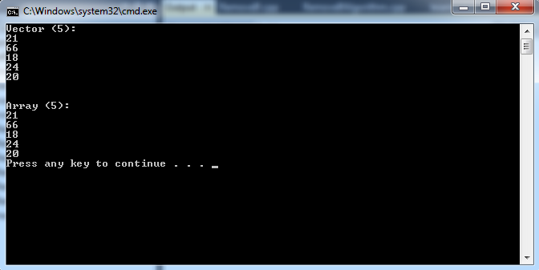 remove_if até remove, só que diferente 2014-01-21 [tag_coding] A surpresa de hoje foi descobrir (vejam só) que o remove_if, como todo algoritmo da STL, deve ser olhado de perto antes de usado. Nesse caso em específico porque, apesar do nome, a função NÃO remove elementos, mas os sobrescreve. remove_if-ate-remove-so-que-diferente |
| Sonhando Acordado 2014-01-19 [tag_movies] Martin Freeman, da saga do Hobbit e do novo Watson, também consegue fazer um drama, ainda que hilário. Aqui ele vive um músico tão frustrado com seu emprego e namorada ( Gwyneth Paltrow, quem não estaria). Tentando encontrar algo de bom na vida quando está dormindo, compartilha seus sonhos com a estonteante Anna (Penélope Cruz), uma figura diametralmente oposta a seu próprio ego. sonhando-acordado |
| Natureza Quase Humana 2014-01-19 [tag_movies] Os roteiros de Charlie Kaufman (Adaptação, Quero ser John Malkovich) dirigidos por Michel Gondry (Brilho Eterno de uma Mente sem Lembrança) nunca parecem deixar de explorar a fundo seus temas. Aqui o formato de testemunho com flashbacks é essencial para compreendermos a real dimensão dos relacionamentos entre os quatro personagens, inclusive o que morreu no processo, nessa comédia absurda que flerta com a natureza instintiva e animalesca do ser humano em detrimento a rígidas e, muitas vezes, sem sentido, regras de etiqueta e convívio social. natureza-quase-humana |
| Paixão Proibida 2014-01-18 [tag_movies] Esse drama-romance se passa no século 19, onde viajar pelo mundo não era agradável, nem rápido, nem seguro. A forma como são retratadas as longas viagens que o protagonista (Michael Pitt) faz em busca de ovos do bicho-da-seda pela África e, principalmente, pelo Japão, são o ponto forte da trama. paixao-proibida |
| Minha Vida Dava um Filme 2014-01-18 [tag_movies] Kristen Wiig, distante de A Vida Secreta de Walter Mitty e próxima de Missão Madrinha de Casamento, protagoniza essa comédia em que faz o papel de Imogene, uma escritora fracassada que é literalmente obrigada a voltar a morar pelas próximas 72 horas com a sua mãe e família após ter maquiado seu suicídio. O fato da carta de despedida de Imogene ter sido tão bem escrita é o que consegue unir seu passado de potencial glorioso e o seu eminente fracasso. minha-vida-dava-um-filme |
| Madrugada Muito Louca 2014-01-17 [tag_movies] Tenho ressalvas para criticar um filme que simula de forma tão fidedigna as comédias dos anos 80 que se voltavam para os jovens despretensiosos em busca de sexo e diversão. Nesse caso, a diversão de Harold (John Cho) e Billy (Ethan Embry) se resume a maconha. E, além do sexo ocasional, o que eles mais almejam nessa madrugada são os deliciosos hambúrgueres de uma lanchonete que está difícil de encontrar: é o "holy grail" dos Mc Donalds. madrugada-muito-louca |
| Separados pelo Casamento 2014-01-13 [tag_movies] Uma grata surpresa essa comédia com Vince Vaughn e Jennifer Aniston, de 2006, que só agora tive a oportunidade de ver. Na verdade, sou obrigado a retirar o termo "comédia" deste comentário, já que o desenvolvimento dado pelo diretor Peyton Reed (Sim, Senhor) e pelos dois roteiristas iniciantes Jeremy Garelick e Jay Lavender me leva a crer que esse é quase um drama humanista e crítico em torno da hoje fadada ao fracasso instituição do casamento. separados-pelo-casamento |
| A Casa Silenciosa 2014-01-13 [tag_movies] Quando eu digo que os falsos documentários já atingiram seu nível de saturação e o ultrapassaram, como o recente Atividade Paranormal conseguiu provar pela falta de justificativas para o uso de câmera em tantas situações diferentes, eis que surge o remake franco-americano de 2011 (de uma produção uruguaia de 2010) filmado inteiramente em uma sequência sem cortes de arrebentar os nervos. a-casa-silenciosa |
| Atividade Paranormal: Marcados pelo Mal 2014-01-12 [tag_movies] A febre dos terrores filmados como falso documentário parece ter chegado ao nível de saturação e o ultrapassado. Nesse último Atividade Paranormal, que em nada se assemelha em sutileza com seu original e algumas das sequências, a necessidade de justificar o uso da câmera em tantas situações diversas simplesmente não existe. O "documentário", portanto, quase que brota do nada. Poderíamos dizer que ele não existiria se não fosse "graças" a duas mentes jovens e estúpidas demais para perceberem em seu entusiasmo exacerbado quais eventos merecem uma atenção mais crítica: a vizinha pelada ou os estranhos e recentes poderes de um deles de nunca cair no chão. atividade-paranormal-marcados-pelo-mal |
| Invasores 2014-01-11 [tag_movies] Esse roteiro é tão bom que costuma ser produzido de 20 em 20 anos para montar uma alegoria da sociedade de sua época. Esse remake mais novo com Nicole Kidman e Daniel Craig é a terceira encarnação do romance de Jack Finney para a telona. A história dos humanos zumbificados e coletivizados a partir da recodificação do seu DNA pode representar ecos de um mundo pós-conflito com o Oriente Médio e/ou nações asiáticas, onde o grupo é mais forte que o indivíduo, desde que não seja o líder. Note que não há líderes entre os invasores alienígenas e vai perceber que essa minha viagem pode ter fundamento. Além, é claro, da questão sobre a paz mundial. invasores |
| Frozen: Uma Aventura Congelante 2014-01-09 [tag_movies] Foi uma surpresa mais que gratificante descobrir que Frozen é muito mais do que aquele trailer tosco com um bonequinho de neve falante (apesar do boneco funcionar, e muito bem). Inspirado mais uma vez em um conto de princesa, mas dessa vez incluindo uma força dramática tão madura e ambiciosa que é difícil de conceber como um trabalho da Disney, a história gira em torno do relacionamento entre duas irmãs, Anna e Elsa. A mais velha possui um poder incontrolável de congelar tudo em sua volta, o que causou um grave ferimento à irmã quando crianças. Por causa disso e por decisão dos pais, ela se esconde do mundo e quase nunca aparece. Porém, o inevitável acontece, e nesse momento já estamos estupefatos diante da grandiosidade com que Frozen é narrado. frozen-uma-aventura-congelante |
| Blue Jasmine 2014-01-07 [tag_movies] Os créditos iniciais mais uma vez aparecem e com eles mais um filme de Woody Allen: neurose, traição, problemas financeiros. Não há dessa vez a questão existencialista (quando irei morrer?) e essa ausência é por si só uma novidade. A personagem de Cate Blanchett (a Jasmine do título) está mais preocupada em se recompor de sua vida passada como uma madame sem preocupações, o que ironicamente a faz ter constantemente ataques de pânico. Ela está em busca de um novo marido, fortuna e mimos. blue-jasmine |
| Bling Ring: A Gangue de Hollywood 2014-01-02 [tag_movies] O mundo é materialista e não há nada de errado nisso. Somos feitos de matéria e a matéria circula por nossos poros. Não há nada mais que matéria, ainda que esforços descomunais da mente tentem imaginar algo mágico saindo por detrás de nossas cabeças. Entre esses esforços, a tal da "fama". bling-ring-a-gangue-de-hollywood |
| A Vida e a Morte De Bobby Z 2014-01-01 [tag_movies] É difícil defender um filme de estrutura tão fraca e capenga quanto este "A Vida e Morte de Bobby Z". Partindo da semelhança que um prisioneiro e ex-soldado (Paul Walker, de Velozes e Furiosos) tem com um poderoso traficante (Jason Lewis), um agente da DEA (Laurence Fishburne) resolve dar uma curiosa chance ao rapaz de se livrar de sua pena se fingir ser o lendário Bobby Z, morto por infarto, durante as negociações com outro traficante procurado. Bobby Z era vegetariano e canhoto, convenientemente diferente para que Paul Walker tenha um pouco de esforço em se fazer passar pelo rapaz. Além disso, há uma bela garota (Olivia Wilde) com seu filho bastardo para que todo o final do filme seja convenientemente montado na cabeça do espectador antes que 15 minutos se passem. a-vida-e-morte-de-bobby-z |
| Peixe Grande e Suas Histórias Maravilhosas 2013-12-30 [tag_movies] Mais um da série "filmes fofos para ver com a família", Peixe Grande explora o conceito da Verdade (que não existe sem uma versão) com um argumento dos mais sensacionais: o que distingue os fatos dos "causos" contados por nossos pais, tios, avós? Um causo é uma série de fatos contada com emoção? peixe-grande-e-suas-historias-maravilhosas |
| Frances Ha 2013-12-29 [tag_movies] Nunca vi um filme tão alto astral com uma personagem tão... errada. E fascinante. O mundo de Frances é medíocre. Ela é uma dançarina (ou gostaria de ser) e como todo artista que se preza, tenta viver em Nova York. Porém, como sua amiga bem observa, só um artista rico para se manter próximo da Broadway. Acompanhamos, então, suas vicissitudes, inicialmente com sua melhor amiga, que parece ser a única que lhe resta. Ela é "inamorável", como um amigo costuma dizer. Pegamos partes de sua personalidade de seu convívio com as pessoas. frances-ha |
| Contato 2013-12-29 [tag_movies] Adoro o livro que Carl Sagan escreveu imaginando como seria, em um mundo realista e atual, nossa primeira comunicação com uma civilização extraterrestre. Ele não apenas fez isso como abriu um pouco mais nosso leque filosófico ao ensaiar uma explicação que unisse ciência e religião, matemática e sentimentos. contato |
| A Vida Secreta de Walter Mitty 2013-12-26 [tag_movies] Uma história batida, com um ator (e diretor) batido, mas com um argumento instigante e um desenvolvimento que fascina desde o começo: a revista Life ("vida") está no seu fim físico, e um dos fotógrafos mais conceituados envia sua obra-prima para o revelador de películas, que faz isso há uns 15 anos, ou seja, revelar as fotos dos lugares e pessoas mais exóticas. Curiosamente, Walter Mitty (Ben Stiller) nunca viajou para qualquer lugar que mereça ser citado em seu perfil online do eHarmony, onde tenta enviar uma "piscada" para sua colega de trabalho (de vista) Cheryl (Kristen Wiig, linda). Coincidentemente, o negativo da foto é perdido, e o único que sabe seu paradeiro está, como sempre, em uma viagem exótica pela Groenlândia, Islândia e o Selvagem Afeganistão. a-vida-secreta-de-walter-mitty |
| Um Lugar Qualquer 2013-12-25 [tag_movies] A rotina "solitária" do playboy/ator Johnny Marco (Stephen Dorff), cercado de tietes por todos os lados, mas que não abre mão de uma sessão privada de pole dance protagonizada por gêmeas, e a mudança que vai ocorrendo conforme sua filha Cleo (Elle Fanning) vai participando cada vez mais de sua vida, é mostrada pela lente humanamente aguçada de Sofia Coppola (Encontros e Desencontros), o que dispensa muitos diálogos. um-lugar-qualquer |
| Terapia de Risco 2013-12-24 [tag_movies] Me impressionei pela atuação de Rooney Mara (a Lisbeth Salander de Os Homens que Não Amavam as Mulheres) e sua construção de um personagem frágil mesmo que insensível. Os problemas de depressão de Emily são tão óbvios em seus olhares abaixados, esguios, em sua fala mansa e cansada, que tudo isso parece convincente demais. terapia-de-risco |
| Azul é a Cor Mais Quente 2013-12-23 [tag_movies] É um filme de temática gay, e isso fica bem claro na forma com que a relação entre Emma e Adèle é explorada em seus preconceitos, diferenças e... sexo. De verdade: ou o sexo é tão primordial ou ele é enfocado de forma tão exaustiva, quase pornográfica, que consegue nos tirar do filme. O diretor Abdellatif Kechiche acertou em cheio ao usar a proximidade da câmera no excelente O Segredo do Grão para determinar uma tensão crescente, tanto sexual quanto em seu suspense. Aqui essa proximidade é gratuita ou, mais uma vez, ele está explorando a beleza física da atriz Adèle Exarchopoulos sob todos os ângulos, posições e bocas. Só há algo que exagera mais em tela do que o sexo: o azul. Tanto azul que fica difícil interpretar qualquer simbolismo deixado pelo caminho. azul-e-a-cor-mais-quente |
| Toda Forma de Amor 2013-12-22 [tag_movies] Um filme que retrata um solteirão em busca do amor após o falecimento do pai, que se assumiu gay aos 70 anos após a morte da esposa. O elo entre esses dois seres é um cachorro deixado de herança que se comunica por pensamento. toda-forma-de-amor |
| Padrinhos de Tóquio 2013-12-22 [tag_movies] Essa animação natalina japonesa segue os mesmos moldes do ótimo Paprika, também dirigido e escrito por Satoshi Kon e co-dirigido por Shôgo Furuya, que já havia trabalhado como animador em A Viagem de Chihiro (2001). Quando digo os mesmos moldes me refiro à caracterização exagerada e satirizada da realidade que cerca os personagens. As expressões de rosto absurdas, tão comuns no anime, aqui funcionam em parte pelo seu humor e não funcionam em parte pela sua dramatização exagerada. padrinhos-de-toquio |
| A Rosa Púrpura do Cairo 2013-12-16 [tag_movies] Woody Allen parece dirigir tantos filmes que seus temas começam a girar em torno do seu próprio processo criativo. Se isso fica óbvio no excelente Desconstruindo Harry, fica fascinante a manipulação e as críticas desse processo em A Rosa Púrpura do Cairo, onde um dos personagens de um filme sai da tela ao se apaixonar por uma espectadora que viu o mesmo filme por várias vezes. a-rosa-purpura-do-cairo |
| Gatinhas e Gatões 2013-12-15 [tag_movies] Primeiro longa dirigido por John Hughes, Sixteen Candles é memorável até 30 anos depois porque ele representa de maneira fidedigna a juventude daquela época, suas frustações, seus sonhos e estereótipos (é uma comédia). Só para citar o que move todo o roteiro: uma família, preocupada com o casamento problemático da filha mais velha, se esquece completamente do aniversário de 16 anos da filha caçula (Molly Ringwald, que mais tarde faria a Garota do Rosa Shock). Para uma geração em que sobram recursos financeiros, mas falte recursos afetivos, podemos dizer que Gatinhas e Gatões cria um tema admirável com o igualmente eterno Esqueceram de Mim. gatinhas-e-gatoes |
| Missão Madrinha de Casamento 2013-12-14 [tag_movies] Bridesmaids poderia ser citado na cinematografia atual apenas por ser uma comédia romântica que tem o foco unicamente nas mulheres e em seu universo feminino. Não há em seu núcleo a busca pelo marido perfeito, pois nossa protagonista não é aquela mocinha inocente que costuma aparecer nesses filmes (e, francamente, depois dos 21 anos seria forçar demais a barra acreditar que uma mulher dessas existiria hoje em dia salvo produções da Disney, como o próprio longa ironiza). No entanto, ser diferente é o que menos importa quando o resultado final é tão bem explorado e conduzido, tornando-o também o filme que dá esperanças a esse gênero tão batido e surrado. missao-madrinha-de-casamento |
| Bolt: Supercão 2013-12-13 [tag_movies] O grande trunfo de "Bolt" em sua narrativa é primeiro nos brindar com cenas megalomaníacas de ação (ecos de Os Incríveis) e nos fazer acreditar que Bolt, que faz rima não-ocasional com "bold", ou seja, "corajoso, valente", de fato possui todos esses poderes. Mesmo assistindo pela segunda vez o truque permanece pela eficiência dos cortes e enquadramentos, que conseguem inclusive nos enganar a ponto de não pensarmos como eles podem cruzar uma cidade inteira se tudo termina dentro de um estúdio. bolt-supercao |
| Uma nova linguagem 2013-12-04 [tag_ccpp] Tenho que me atualizar. Faz um tempo (anos) em que deixei de lado esse mundo "frescurento" de C++2030 e me foquei única e exclusivamente em resolver problemas da melhor forma possível com o que a linguagem já tinha a oferecer em uma implementação estável de compilador e bibliotecas. uma-nova-linguagem |
| Speed Racer 2013-11-28 [tag_movies] Speed Racer está para os animes infantis assim como Scott Pilgrim está para o mundo dos vídeogames: dois filmes que homenageiam seu universo abraçando-o sem limites e que por isso são rechaçados pelo público em geral. Uma linguagem tão inovadora pode causar medo e desconforto, mas é o ponto de virada de todo cinéfilo que se preze e que que deseja sentir mais pelos filmes que assiste. speed-racer |
| O Panaca 2013-11-27 [tag_movies] Uma comédia pode fazer rir pelo absurdo de suas situações e/ou personagens, como bem lembramos de Debi e Lóide. No entanto, a comédia estrelada por Jim Carrey está longe de ser a precursora dessa ideias do personagem idiota. Há algo muito mais essencial, didático e até filosófico nO Panaca de Steve Martin. o-panaca |
| O Lugar Onde Tudo Termina 2013-11-22 [tag_movies] É uma satisfação imensa presenciar tantas virtudes técnicas juntas em um filme ambicioso também em seu lado narrativo e temático. Há muitas ideias a serem interpretadas e sentidas em O Lugar Onde Tudo Termina, sendo a principal delas é: até que ponto nossas escolhas conseguem influenciar de alguma forma o futuro? Há uma justiça (divina ou não) em algum lugar ou tudo é uma questão de interpretação? o-lugar-onde-tudo-termina |
| Antes Só do que Mal Acompanhado 2013-11-16 [tag_movies] Filmes do John Hughes animavam a sessão da tarde com suas comédias fáceis e leves, mas sempre escondiam uma sub-trama sutil que, revisitada, constituía o conteúdo que o torna tão imortal. Em "Antes Só do Que Mal Acompanhado" é a amizade, empatia, compaixão, ou tudo isso junto, que forma a base da narrativa tão coesa da história de um homem tentando voltar para casa e sua família em um momento especial. O que ele encontra pelo caminho é um pacote de infortúnios, embalado por um estranho que cai em sua vida de para-quedas e não consegue mais sair desde então. Quais são as mensagens que esse estranho tem sobre todos esses sentimentos que citei no início? antes-so-do-que-mal-acompanhado |
| A Conversação 2013-11-16 [tag_movies] Geralmente quando o Cinema se volta para si mesmo (rendendo boa parte das vezes filmes memoráveis) ele nunca pensa em descrever como o som é importante. Direção, atores, fotografia, trilha sonora, tudo isso parece relevante para o público médio. Mas o som, esse pobre coitado, é renegado à posição de "quanto mais invisível, melhor". a-conversacao |
| Fora de Controle 2013-11-15 [tag_movies] Um drama moral tão bem construído não deveria ser conduzido de forma tão insegura como é feito aqui. A direção de Roger Michell ([Um Lugar Chamado Notting Hill], [Uma Manhã Gloriosa]) combina uma atmosfera de thriller policial com filme de ação e peca justamente ao não nos aproximar dos seus dois personagens quando essa abordagem seria merecida ou necessária. fora-de-controle |
| Reino dos Gatos 2013-11-09 [tag_movies] Assim como em [O Mundo dos Pequeninos], aqui os estúdios Ghibli fazem o que a Disney/Pixar começa a copiar: pequenas produções sem história desenvolvida para Cinema, mas que ganha a simpatia por usar os mesmos traços conhecidos de produções mais pomposas, como as dirigidas por Miyazaki. reino-dos-gatos |
| Elvira, a Rainha das Trevas 2013-11-08 [tag_movies] Aquela comédia sessão da tarde, leve e despretensiosa, que consegue ser digerida passo-a-passo sem maiores problemas. Esse modo inofensivo de Elvira é provavelmente seu ponto mais fraco. Iniciando com a personagem-título (Cassandra Peterson) apresentando filmes trash em um programa televisivo que se aproveita de seus protuberantes seios para manter a audiência, logo a vemos em uma viagem em busca da herança de uma recém falecida tia-avó (que por sinal se chamava Mortiça) em uma cidadezinha cujos habitantes prezam pela moral. Dessa forma, assim como no romance e na novela global Gabriela, os bons costumes daquelas pessoas serão abalados pela presença da sexual e irreverente Elvira. elvira-a-rainha-das-trevas |
|
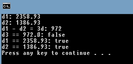 Ponto Flutuante Afundando 2013-11-07 [tag_coding] Quando armazenamos valores monetários em doubles seus cálculos conseguem manter a precisão e na maioria das vezes o ajuste de precisão funciona. Porém, encontrei alguns casos onde a subtração de dois valores fazia "perder" um centavo (ou comparações exatas) justamente pela limitação da precisão do ponto flutuante. Nesse exemplo os valores são 2.358,93 - 1.386,93, que em uma conta de padaria (mas correta) dá 972,00 ([até a Calc do Windows] e [o Excel] funcionam), mas pelo Visual Studio 2010 chega perto, mas erra o alvo: ponto-flutuante-afundando |
| South Park: Maior, Melhor e Sem Cortes 2013-11-02 [tag_movies] Não é nenhuma novidade que [a série South Park] preza pelo irreverente e polêmico em prol da comédia e, principalmente, na análise da estupidez humana (espectadores inclusos). No seu longa-metragem, portanto, nada muda. O diferencial é um frescor de piadas sobre os últimos acontecimentos no mundo que seriam feitas na versão televisiva de uma forma ou outra. south-park-maior-melhor-e-sem-cortes |
| A Morte lhe Cai Bem 2013-11-02 [tag_movies] Comédia da sessão da tarde feita nos anos 90, era um filme engraçadinho com efeitos visuais de espantar. Hoje se transformou em uma surpreendente crítica aos cosméticos e uma direção extremamente inspirada de Robert Zemeckis ([O Voo]), que já naquela época prezava pelo controle e expressão do tom do filme através dos nada sutis enquadramentos. a-morte-lhe-cai-bem |
| Era uma Vez em Tóquio 2013-10-31 [tag_movies] Tokyo Story, ou Era Uma Vez em Tóquio, como seus títulos ocidentais sugerem, é um conto, que se constrói no Japão pós-guerra e faz uma dura crítica à sociedade ocidentalista da época, mas como todo grande filme se torna atual mesmo 50 anos depois pelas suas mensagens eternas sobre vida e família. era-uma-vez-em-toquio |
| Vidas ao Vento 2013-10-28 [tag_movies] Não há o que criticar da perfeição técnica dos estúdios Ghibli. Acostumados a entregar desenhos que já seriam motivo de prazer e satisfação só de olhar, os filmes dirigidos pelo mestre Hayao Miyazaki prezam também por uma história completa, uma trilha sonora, uma fotografia, direção de arte, efeitos sonoros que representam juntos sempre o ápice daquele estilo. vidas-ao-vento |
| Los tentados 2013-10-26 [tag_movies] Primeiro longa do diretor Mariano Blanco, não existem muitas ideias a serem seguidas em Los Tentados, ou elas estão tão sutilmente colocadas ali que fica difícil encontrar base para qualquer tipo de interpretação. los-tentados |
| Giuseppe Tornatore: Todo Filme é Meu Primeiro Filme 2013-10-26 [tag_movies] Giuseppe Tornatore ([Baária], [Malena], Uma Simples Formalidade, A Lenda do Pianista do Mar) é visto nesse documentário-homenagem quase que na superfície e de uma forma bem burocrática. Não há grandes momentos, salvo poucas e elegantes transições - como a que envolve o diretor olhar para o topo do extinto cinema onde era projecionista e encontrar os sinos da igreja de [Cinema Paradiso] - e em contrapartida há muitos planos de entrevista seguindo o modelo "ator fala sobre diretor e tece elogios quase genéricos sobre seu trabalho", o que torna a experiência parecida com os extras do DVD. O que estampa de vez o caráter de homenagem do longa é ver Ernio Morricone falando mais da eterna amizade que mantém com o diretor do que a construção de vários dos momentos mais tocantes no Cinema pelo uso da música e dos enquadramentos clássicos e nostálgicos de Tornatore. De resto, uma viagem turística e cronológica através de sua filmografia. Seria mais proveitoso talvez ver/rever um de seus longas... giuseppe-tornatore-todo-filme-e-meu-primeiro-filme |
| Os Suspeitos 2013-10-25 [tag_movies] O cansaço, desânimo e um envolvimento ilimitado na busca de duas meninas desaparecidas é o que forma a base de Os Suspeitos, mantida todo o tempo por três pilares fundamentais: o detetive e o pai incansáveis formam dois deles; a direção impecável de Denis Villeneuve (do excelente [Incêndios]) no desenvolvimento da trama forma o terceiro. os-suspeitos-2013 |
| O Grande Golpe 2013-10-24 [tag_movies] A partir da apresentação dos personagens de O Grande Golpe, o diretor Stanley Kubrick vai aos poucos revelando que a "operação" em torno da qual gira o filme está muito bem arquitetada e vem sendo planejada cuidadosamente por todas as partes envolvidas: um tira corrupto, um apostador de cavalos, um barman, um caixa do guichê de apostas, entre tantos outros. o-grande-golpe |
| 2001: Uma Odisseia no Espaço 2013-10-23 [tag_movies] A obra maior de Stanley Kubrick - ou pelo menos a mais ambiciosa e enigmática - permanece em seu auge mesmo mais de 45 anos depois da estreia. Diferente de filmes que podem ser compreendidos no conforto de sua casa, este é dos que deve ser degustado no espaço sagrado do Cinema. Aliás, ele funciona tão bem nessas condições que assinaria uma petição para que fosse exibido eternamente em uma sala tombada pelo patrimônio da humanidade. 2001-uma-odisseia-no-espaco |
| O Show de Truman 2013-10-20 [tag_movies] Daria para escrever um livro sobre O Show de Truman, do sempre interessante roteirista Andrew Niccol ([O Senhor das Armas], [O Preço do Amanhã]) e do simpático diretor Peter Weir (A Testemunha, Sociedade dos Poetas Mortos). Cheio de ideias que entrecruzam os dois mundos do entretenimento e dos espectadores, obviamente intercalando isso com nossa própria percepção do que é ser espectador (afinal, inevitável fazer o paralelo com o próprio Cinema), o filme é uma espécie de laboratório sobre o ato de assistir e ter o controle sobre nossas criações, sendo que o detalhe é quando essas criações fazem parte do mundo real. o-show-de-truman |
| O Balconista 2013-10-20 [tag_movies] Primeiro longa do diretor Kevin Smith, O Balconista não poderia deixar de ter algo a mais dos outros filmes que o trouxesse para os holofotes. No entanto, quase 20 anos depois, ele permanece como um dos filmes esquecidos que não merece ser revisitado. o-balconista |
| Aqui é o Meu Lugar 2013-10-20 [tag_movies] Sean Penn é um excelente ator, diga-se de passagem. Mas nesse trabalho em que ele coloca uma peruca (que insiste em assoprar) e fala como se fosse desmaiar a qualquer momento é daqueles típicos casos de vergonha alheia. aqui-e-o-meu-lugar |
| Wajma 2013-10-19 [tag_movies] Mais um daqueles filmes que exploram de maneira corriqueira, quase novelística, o drama das mulheres do Oriente Médio que precisam se manter virgens para seu possuidor oficial, futuro marido. Não que seja ruim, pois ele desenvolve com certa destreza o drama das mulheres frente à ausência completa de ajuda (na figura do pai ausente e da mãe e avó passivas). Até resolve tomar partido da filha (óbvio), mas se esquece de desenvolvê-la como um ser humano, assim como acontece na vida real. Mulheres ainda adolescentes, em sua plena formação de caráter, são julgadas por um sistema social injusto e cruel (ultrapassado, como em determinado momento o próprio filme admite). wajma |
| A Morte Passou Perto 2013-10-19 [tag_movies] Primeiro longa de Kubrick é noir de linha de produção Não uma tentativa de noir e suspense de Kubrick, essa produção lembra muito mais os filmes encomendados pelas grandes produtoras procurando explorar um nicho crescente (exatamente como é feito hoje). É quase que a mesma experiência em [Spartacus], onde o diretor pegou o barco andando e tocou o projeto megalomaníaco de Kirk Douglas com maestria e entregou todo o potencial da história para as telas. No entanto, aqui não há grande potencial, e apesar de ter sido escrito pelo próprio Kubrick, demonstra um amadorismo latente em sua construção de narrativa, usando por exemplo o velho artifício de iniciar pelo protagonista no fim narrando os acontecimentos. a-morte-passou-perto |
| Barry Lyndon 2013-10-18 [tag_movies] Stanley Kubrick era conhecido pela dedicação sobre-humana em seus projetos, fazendo com que vários deles se estendesse por anos a fio. Esse preciosismo é o que gerou trabalhos debatidos até hoje como se tivessem sido lançados nessa semana, denotando a aparente imortalidade de suas obras. Em Barry Lyndon, ao pretender contar a história do personagem-título, mas que está inserido em uma época sem eletricidade, resolve utilizar apenas a luz natural em suas tomadas, incluindo cenas noturnas iluminadas por velas. Por conta disso precisa de um filme ultrassensível, algo inédito e inovador. Além de desenvolver a tecnologia da fotografia para o Cinema consegue então um efeito surpreendente: os personagens parecem se mover por quadros pintados da época. É o fenômeno de uma arte estática ganhando vida através da arte do movimento. barry-lyndon |
| Gravidade 2013-10-17 [tag_movies] Alfonso Cuarón (Filhos da Esperança) mostra mais uma vez saber usar as longas sequência sem cortes como uma ferramenta narrativa em vez de um mero estilo exibicionista. Usando o movimento giratório da câmera para impor o ritmo e precisando de pouquíssimos cortes, e ainda assim extremamente orgânicos, somos levados a uma experiência angustiante em torno da órbita da Terra, o que me pegou despreparado e a ponto de vomitar, me segurando na cadeira da sala I-MAX como se pudesse sair flutuando de lá. gravidade |
| Preenchendo o Vazio 2013-10-16 [tag_movies] Uma fuga de nossa cultura vigente às vezes faz bem. Curioso constatar que, mesmo imersos na rotina, crenças e cânticos da religião judia ortodoxa, os mesmos dramas humanos se configuram. A história gira em torno de Shira (a linda Hadas Yaron), filha caçula de uma família que possui já um casamento com a grávida Esther (Renana Raz) e uma das filhas pronta para ficar para tia Frieda (Hila Feldman). Shira já está sendo "encomendada" para o segundo casamento da família com um jovem que, mesmo estranho, parece ser a esperança da menina de viver algo de novo e diferente em sua rotina extremamente tediosa e repetitiva. preenchendo-o-vazio |
| Kung-Fusão 2013-10-06 [tag_movies] Após uma revisita ao filme-gêmeo de [Shaolin Soccer], ambos exploram esse conceito do Kung-fu extrapolado ao cotidiano, a sensação é de um frescor de ingenuidade e violência comparados a Kick Ass (e não me admiraria que este fosse inspirado naquele). Só pelo fato da violência existir com mortes e essas mortes serem relevantes para estabelecer o peso da tensão em um filme que obviamente é uma comédia já mereceria créditos de sobra. kung-fusao |
| A Família 2013-10-04 [tag_movies] Aquele filme esquecível que até que tem uma ideia interessante: proteger uma família de mafiosos. Protagonizada por Robert de Niro. Encabeçada por Michelle Pfeiffer. Assessorada por Tommy Lee Jones. O que poderia dar errado? a-familia |
| Mais um CPP MVP 2013-10-02 Tenho o prazer de informar à comunidade C/C++ que vocês possuem mais um representante formal. Quer dizer, pelo menos no que diz respeito à Microsoft: eu. Graças à indicação de meu amigo Strauss (segundo MVP brasileiro seguido de Fabio Galuppo) e do meu histórico de artigos no blogue (alguns no Code Project), além da minha parca contribuição à comunidade C/C++ Brasil, recebi essa que significa uma nomeação importante não apenas para mim, mas para fortalecer a imagem de que existe uma comunidade da linguagem no país e está tão ativa que vira e mexe premia um ou outro membro mais "tradicional" desse grupo de especialistas, verdadeiros mestres dessa(s) que ainda é (são) minhas linguagens favoritas no que diz respeito a "linguagens de uso geral multiplataforma e de alta performance". mais-um-cpp-mvp |
| Across the Universe 2013-09-28 [tag_movies] Este não é simplesmente um musical que utiliza a trilha sonora dos Beatles. Across the Universe respira as influências da banda desde seu título até o final, recriando diversos momentos de sua "antologia" (real ou ficção) e fortalecendo suas obras em um contexto narrativo que, ainda que frágil em diversos momentos, mais do que compensa essa revisita ao universo criado e vivido por John Lennon, Paul McCartney, Ringo Starr e George Harrison. across-the-universe |
| RoboCop: O Policial do Futuro 2013-09-27 [tag_movies] RoboCop, de Paul Verhoeven, foi um marco dos anos 80 e fixação dos jovens amantes da Sessão da Tarde nos anos 90. A violência exacerbada chocava, mas tinha seu propósito: fixar sua mensagem sobre poder, corrupção e justiça; esses objetivos, diga-se de passagem, cabiam como uma luva nas consequências funestas dos seus personagens. Até o próprio RoboCop, que começa como o policial Alex J. Murphy (Peter Weller, o Marcus de [Star Trek, Além da Escuridão]), recebe sua dose de realidade em uma chuva de balas culminando com um tiro em sua cabeça, cabeça essa cujo mistério póstumo é o grande tema a respeito da humanidade dos cidadãos de Detroit, uma cidade corrompida do seu topo à base. robocop-o-policial-do-futuro-1987 |
| Invocação do Mal 2013-09-26 [tag_movies] Diferente do que poderíamos imaginar, a direção precisa, acelerada e gore de James Wan em Jogos Mortais não apresenta comparações neste Invocação do Mal, que se insere no gênero de horror realizando pequenas homenagens de obras icônicas enquanto ensaia um estilo visual mais agradável ao público de hoje. invocacao-do-mal |
| Elysium 2013-09-21 [tag_movies] Com o mesmo diretor do ótimo Distrito 9, poderíamos esperar mais uma ficção científica que honre o gênero, apresentando um futuro distópico que remeta diretamente a questões sociais do mundo atual. De certa forma, isso acontece, abordando mais uma vez o abismo existente entre pobres e ricos em um mundo pós-crise. No cenário do filme, a superpopulação, superpoluição e supercaos fazem com que a elite econômica do mundo se reúna e se isole em uma espécie de estação espacial que reproduz com fidelidade os nobres bairros de subúrbio da hoje (2150 e tra-lá-lá) caótica Los Angeles (que é a tal Elysium do título). elysium |
| Lovelace 2013-09-18 [tag_movies] Aquele tipo de filme que não caminha para o melhor nem para o pior. Sua falta de ambição e sensualidade destoam completamente dos burburinhos e do sucesso escandaloso do único trabalho pornográfico protagonizado por Linda Lovelace (Amanda Seyfried), Garganta Profunda, que representou para muitos um marco na revolução sexual da época, enquanto para outros o renascimento do pornô como "Cinema". lovelace |
| Se Puder... Dirija! 2013-09-07 [tag_movies] Muitas vezes as comédias televisivas que passam no Cinema atraem o público pelas boas piadas e pelo ótimo (e desperdiçado) elenco. No caso de Se Puder... Dirija! o único foco parece ter sido fazer um filme com uma história suficiente para preencher um bloco do Zorra Total e utilizar a propaganda de ser o primeiro live-action em 3D, e o fato de que será lembrado por isso torna as coisas ainda mais desagradáveis. se-puder-dirija |
| Flores Raras 2013-08-26 [tag_movies] O tema "polêmico" de Flores Raras não existe há muito tempo, e apenas as mentes reduzidas de nossa época, que infelizmente não são poucas, irão enxergar qualquer anomalia no fato da história girar em torno de um triângulo amoroso entre três mulheres: Mary (Tracy Middendorf), a arquiteta Lota (Glória Pires) e a poetisa Elizabeth Bishop (Miranda Otto), todas encapsuladas em tramas tridimensionais. Sensível e inteligente, Bruno Barreto demonstra que a principal anomalia desse relacionamento é o ego controlador e descontrolado de Lota, uma arquiteta que através das influências políticas e dinheiro consegue manter em sua isolada casa no campo a ilusão de um mundo tolerante e tranquilo. flores-raras |
| Ed Wood 2013-08-23 [tag_movies] Talvez o fato do filme sobre Edward D. Wood Jr., o pior diretor de todos os tempos (eleito dois anos após sua morte), ser um dos melhores do diretor Tim Burton, acostumado a flertar com o gênero, seja algo inesperado, mas ainda assim propício para um tema tão metalinguístico. Além de ser a homenagem devida ao diretor trash mais cultuado de sua geração (ou talvez de toda a história do Cinema) o longa de Burton mergulha fundo na atmosfera dos filmes B, onde o fato de ser rodado em P&B ajuda, mas não é só: é fácil entrar nessa dimensão criada pelo diretor a partir de suas duas realidades. O diretor brinca com o gênero e ao mesmo tempo é um narrador onisciente de produções típicas. Isso torna muito difícil não adorá-lo como o filme que representa a esperança dos menos afortunados da indústria do Cinema, mas que nem por isso deixam de ser amantes incondicionais da Sétima Arte. ed-wood |
| Victim 2013-08-11 [tag_movies] Adoro filmes que me surpreendem. Melhor ainda quando eles começam não prometendo quase nada. É o caso desse "Meu Passado me Condena" (Victim, no original e no IMDB), que inicia como um thriller nada original, caminha por estradas tortuosas do gênero para finalmente se definir no terceiro ato com seu momento glorioso que nos faz voltar desde o começo e entender que nada do que parecia era exatamente como se supunha. victim |
| Círculo de Fogo 2013-08-10 [tag_movies] Ao contrário de [Homem de Aço], que apesar de voar se esforça em manter seus dois pés no chão da realidade, Círculo de Fogo parece navegar por outras águas, sempre disposto a impulsionar sua fantasia em direção daquele mundinho que habita nossa mente de criança (espero que você ainda a tenha) em busca de desafios cada vez maiores para nossos gigantes heróis. circulo-de-fogo |
| RED 2: Aposentados e Ainda Mais Perigosos 2013-08-05 [tag_movies] Parte divertido e parte esquecível, engraçadinho pelo fato dos seus personagens serem idosos que ainda estão na ativa em sua vida de espiões e assassinos profissionais, [RED] faz parte desse revival de filmes com atores dos anos 80/90 que acabou se saindo razoavelmente bem e "garantiu" uma continuação. Assim é que nasce RED 2, que esquece completamente da sua premissa de contar uma história de espiões com velhinhos (o fato da idade avançada dos heróis é irrelevante aqui) e tenta se tornar interessante complicando sua história em torno de uma trama bobinha e sem imaginação. red-2-aposentados-e-ainda-mais-perigosos |
| O Morto Vivo 2013-08-05 [tag_movies] Especialista em efeitos visuais (Força Aérea Um, O Segredo do Abismo), D. Kerry Prior realiza seu segundo longa com uma mescla de realismo com comédia, um pouco de drama e eventualmente um romance, além de comprovar mais uma vez sua proficiência em criar o impossível. Trata alguns desses temas de maneira admirável (o que aconteceria no mundo real se um morto voltasse à vida?) e outros escapam ao seu controle (a comédia absurda que banaliza a morte). Na média, O Morto Vivo é o entretenimento que chama a atenção pela forma original que aborda a questão dessas criaturas que existem em filmes mais fantasiosos, mas que parece nunca conseguir fugir do estereótipo de "filme de zumbi/vampiro/etc". o-morto-vivo |
| Os Selvagens da Noite 2013-08-02 [tag_movies] Filmado claramente como um filme de batalhas do Império Romano, a la [Spartacus], Ben-Hur e tantos outros, nossa visão é forçada a enxergar aquelas gangues de rua como exércitos a defender seu território, o que é fascinante por si só, pois embute em nossa mente o mesmo perigo de morte que exércitos "tradicionais" teriam em zona inimiga. warriors-os-selvagens-da-noite |
| Amor Pleno 2013-08-01 [tag_movies] É difícil analisar os filmes de Terrence Malick através da abordagem tradicional de "historinha". O que é possível observar nesse seu novo trabalho é sua semelhança com [A Árvore da Vida] (semelhança narrativa) com muito menos glamour. Assim como a reflexão de Almodóvar em [Os Amantes Passageiros] (depois do tenso [A Pele que Habito]), Malick parece querer não se aprofundar demais em temas existenciais como fez anteriormente, mas mesmo assim não consegue evitar de ligar as referências, como em determinado momento sua câmera foge para o mundo subaquático, quase como uma tentativa de conectar-se com seu predecessor no melhor estilo continuação dos grande temas. amor-pleno |
| Os Amantes Passageiros 2013-07-28 [tag_movies] Almodóvar volta às suas origens das divertidas comédias dramáticas voltadas para personagens homossexuais, videntes e todo o tipo de intriga novelesca. Aliás, a diferença vital entre novelas televisivas e Almodóvar é que este conta uma história como ninguém (e geralmente assina o roteiro). os-amantes-passageiros |
| As Strippers Zumbi 2013-07-28 [tag_movies] Até um filme amador com a premissa de strippers que são infectadas por um vírus desenvolvido pelo governo Bush e que transforma pessoas em zumbis pode ter algo de bom. E há. Em determinado momento da "trama", uma zumbi que lê Nietzsche (!) se lembra de um momento em que dormia em cima da neve e observava as estrelas. Agora, já morta, se considerava parte daquele universo inanimado e infinito, e tudo fazia sentido agora. Essa passagem tão existencialista e profunda parece destacada de todo o resto do recheio de zumbis mal-formados, danças eróticas com peitos lambuzados de sangue e muita violência exacerbada e sem sentido. Mesmo assim, naquele porão sujo e mal iluminado onde as meninas realizam suas danças por uns trocados fáceis, parece coisa de gênio. as-strippers-zumbi |
| A Hora do Pesadelo 2013-07-28 [tag_movies] Clássico de terror dos anos 80, continua envelhecendo bem, e apesar de sua ingenuidade para com o público sedento por realismo de hoje (só que sem muito sangue, por favor), estabelece o seu medo no campo dos sonhos, onde tudo é possível existir. Os efeitos não-digitais ajudam e muito a nos colocar no quarto com Marge (Ronee Blakley), Tina (Amanda Wyss), Rod (Jsu Garcia) e Glen (Johnny Depp). Quando vemos um garoto ser morto e seu sangue transbordar o teto do seu quarto, se esvaindo de baixo para cima, por mais que saibamos que esse efeito foi produzido filmando o set de cabeça pra baixo o efeito psicológico da cena permanece, pois gera a estranheza necessária do mundo dos sonhos (algo muito higienizado n[A Origem] de Nolan). a-hora-do-pesadelo |
| Retratos de uma Obsessão 2013-07-21 [tag_movies] Entre tantas coisas que poderiam ser destacadas da performance de Robin Williams como Seymour Parrish, um funcionário de uma hoje extinta reveladora de fotos, o que permanece ao final de Retratos de uma Obsessão são os inúmeros filtros que parecem cobrir sua vida de uma aura tão poética quanto trágica. Esse sentimentos ecoam principalmente através das cores, presentes nas fotos e nas vidas das pessoa para quem trabalha, mas que a ele são negadas. Quer uso mais metafórico da fotografia no Cinema do que a própria fotografia sendo o tema principal? retratos-de-uma-obsessao |
| Tinha Que Ser Você 2013-07-19 [tag_movies] Eu sei que o desfecho final possui vários defeitos. É esquemático porque segue à risca a cartilha das comédias românticas, o que acaba prejudicando demais aqueles dois personagens até então bem construídos. Está longe do clima depressivo de todo o resto, onde o diretor tenta amenizar com músicas bonitinhas e um pouco do desconcertante humor britânico (mas a partir de um dado momento, acompanhar a mãe paranoica nem é mais interessante). tinha-que-ser-voce |
| Ninguém é Perfeito 2013-07-14 [tag_movies] Robert de Niro é Walt Koontz, um policial aposentado como herói. Philip Seymour Hoffman é Rusty, uma drag queen que canta em uma boate gay em seu próprio show. Ambos vivem em um prédio decadente dos subúrbios, e Walt odeia a ideia de conviver com esses seres bizarros, até que um roubo entre criminosos faz ambos se encontrarem e terem que conviver com suas diferenças. ninguem-e-perfeito |
| O Mesmo Amor, a Mesma Chuva 2013-07-13 [tag_movies] Juan José Companella dirige pela primeira vez o casal d[O Segredo dos Seus Olhos], Ricardo Darín e Soledad Villamil, em um romance leve, episódico e que brinca com as palavras ao vento que digerimos conforme a passagem do tempo faz as pessoas mudarem sua visão de mundo, assim como uma Argentina dos anos 80 em amplas modificações políticas e sociais. o-mesmo-amor-a-mesma-chuva |
| O Homem de Aço 2013-07-13 [tag_movies] "Nós vamos lutar até um de nós morrer." E obviamente é o que eles fazem. A falta de complexidade aliada à ação desenfreada chega a cansar, e o fato de tanto Zod (Michael Shannon) quanto Superman (Henry Cavill) partirem para a violência gratuita revela mais sobre o último do que sobre o primeiro, programado desde a concepção para guerrear pelo seu povo. Chega a ser um quase insulto que o filho do cientista Jor-El se limite a imitá-lo. Justo ele, que foi um bebê "concebido naturalmente", o que inteligentemente levanta algumas questões sobre livre-arbítrio que nunca são desenvolvidas. Não é sensato que o filme queira que odiemos Zod por ser uma pessoa que quer reconstruir seu povo, e nesse sentido ele falha como vilão temeroso que Zack Snyder parece acreditar que ele seja, mas podemos sim nos sentir frustrados pela aparente indecisão do Homem de Aço em confrontá-lo. o-homem-de-aco |
| Jogos Vorazes: Em Chamas 2013-07-12 [tag_movies] É curioso que quase uma década depois a estrutura narrativa de Catching Fire nos faça lembrar do ótimo [Matrix Reloaded]. Apesar de também ser uma continuação, [Jogos Vorazes] pelo menos sabia que não terminaria no primeiro. No entanto, ambos tratam de esperança surgida em meio a uma guerra eterna, e embora a escravidão consentida pelos Distritos à Capital por tantas gerações soe às vezes meio forçada, o fato é que o aspecto político e social é o que mais cativa na história. jogos-vorazes-em-chamas |
| Em Algum Lugar do Passado 2013-07-12 [tag_movies] Depois de décadas assistindo a [Superman - O Filme], confesso que nas primeiras cenas de Em Algum Lugar do Passado foi difícil desassociar a figura de Christopher Reeve do kriptoniano mais famoso do Cinema. Felizmente, foi possível constatar que o talento de Reeve não se limita ao super-herói que eternizou. Digo mais: sua habilidade cômica ímpar é o que consegue balancear tão bem este drama, assim como foi no filme do homem de aço. em-algum-lugar-do-passado |
| Conduzindo Miss Daisy 2013-07-11 [tag_movies] Um filme que envelheceu bem, mas que continua enigmático em alguns sentidos (ele é, de fato, racista?). Em outros, se reforça ainda mais, como é o caso da belíssima trilha sonora, composta pelo rival de temas de John Williams, Hans Zimmer, e das interpretações de Morgam Freeman e Jessica Tandy. conduzindo-miss-daisy |
| Dezesseis Luas 2013-07-10 [tag_movies] Beautiful Creatures, ou Dezesseis Luas, é um filme baseado em um romance de Kami Garcia e Margaret Stohl que contém mais algumas continuações que muito provavelmente deverão ser produzidas como novos filmes no estilo da... arght! série [Crepúsculo]. Este foi dirigido e adaptado por Richard LaGravenese (que já havia feito um belo serviço em PS Eu Te Amo). dezesseis-luas |
| Meu Malvado Favorito 2 2013-07-09 [tag_movies] Apesar de suas fraquezas expostas por uma trama simplista, [Meu Malvado Favorito] (2010) possui momentos divertidos demais para ser esquecido (ainda mais se comparado com franquias já bem mais desgastadas, como [A Era do Gelo] e [Madagascar]). Pegando carona no sucesso conquistado, a sua sequência explora melhor a relação entre seus personagens sem deixar de perder a sua identidade: piadas ligeiras e rasteiras que divertem pontualmente e dialogam muito bem com seu público. meu-malvado-favorito-2 |
| Universidade Monstros 2013-07-01 [tag_movies] Usando o bê-a-bá que aprendemos em [Monstros S.A.], o diretor Dan Scanlon, auxiliado pelos quatro grandes da Pixar na produção e os dois roteiristas originais, reutiliza tudo que já foi visto no longa anterior e acrescenta detalhes que compõem o estilo de vida daqueles seres em uma evolução natural que usa a faculdade como um outro ponto de partida. O resultado é um filme que carece de um início que avise o espectador que este não é apenas uma continuação, mas um agradável e saudoso estudo de personagens. Na outra ponta, carece também de uma conclusão climática que o separe do trabalho original, ou revela um sintoma importante de todo o projeto: não há muito mais o que explorar no mundo dos monstros. universidade-monstros |
| O Clube das Desquitadas 2013-07-01 [tag_movies] Esse é um espécime da safra de comédias românticas realizadas por atrizes já em meia-idade e que serviu de contraponto para a avalanche de divórcios que o mundo estava presenciando: o casamento não era mais sagrado. Não apenas o casamento, mas nem a orientação sexual (como a filha lésbica de Diane Keaton está lá para provar) é mais algo estável e conhecido por todos. o-clube-das-desquitadas |
| Harry e Sally: Feitos um para o Outro 2013-07-01 [tag_movies] Nora Ephron morreu ano passado. Escreveu e dirigiu trabalhos desde os anos 80 que hoje são agradáveis passeios pelas origens da comédia romântica como hoje a vemos (ainda que algumas bem datadas, como [A Difícil Arte de Amar]). No entanto, "Harry & Sally", comparado com a média das com-rom atuais, possui virtudes o suficiente para elevá-lo à categoria de grande filme. harry-e-sally-feitos-um-para-o-outro |
| Antes da Meia-Noite 2013-06-27 [tag_movies] A grande sacada dos filmes que acompanham as conversas entre Jesse (Ethan Hawke) e Celine (Julie Delpy), o ótimo [Antes do Amanhecer], o excelente [Antes do Pôr-do-Sol] e este fabuloso Antes da Meia-Noite, é que os textos dos diálogos soam naturais, acontecem em uma ordem elegantemente cadenciada e são surpreendentemente relevantes durante todo o tempo, instigando a nossa percepção de realidade e fazendo nosso cérebro não conseguir parar de pensar nas questões tão atuais e filosóficas. Vivenciarmos esses breves momentos que exploram a vida real de maneira tão intensa no Cinema faz com que a quarta parede que nos separa dos personagens se rompa e nos atire para dentro de uma discussão existencialista qualquer, mas que ganha um contorno fascinante por estar sendo discutido com brilhantismo por este adorável casal. antes-da-meia-noite |
| 007 - Os Diamantes São Eternos 2013-06-25 [tag_movies] Última aparição de Sean Connery (estranhamente intercalado com George Lazenby em [A Serviço de Sua Majestade]), Os Diamantes são Eternos é aquele tipo de filme que já começa a se caracterizar como homenagem dos filmes anteriores e da própria síntese do filme de espionagem de ação. Temos tiradas sarcásticas e momentos empolgantes que são ao mesmo tempo hilários, o que não diminui a tensão em momentos chave, como a aparição de um duplo vilão. 007-os-diamantes-sao-eternos |
| Indie Game: The Movie 2013-06-17 [tag_movies] Focado principalmente no amor, dedicação, desespero e muitas vezes loucura dos criadores de jogos de computador independentes, Indie é uma grata surpresa ao mostrar os nerds solitários como artistas que lutam pelo reconhecimento, mas, acima de tudo, pela máxima expressão de si mesmos dentro dos bits e bytes que insistem em escrever. indie-game-the-movie |
| Além da Escuridão: Star Trek 2013-06-17 [tag_movies] Vendo a nova aventura dos Trekkers e revendo o [genial reboot] de J. J. Abrams (2008) fica claro que cada um é a metade de um todo maior, que poderiam ser mais enxutos (assim como [Kill Bill]) e que juntos seriam um excelente estudo de personagem. Ainda assim, separados, se transformam em duas aventuras físicas e mentais (essa nem tanto) ótimas em si mesmo, embora perigosamente esquecíveis para os não-fãs. alem-da-escuridao-star-trek |
| Idiocracia 2013-06-07 [tag_movies] Desde o começo Idiocracia estabelece o seu tom de comédia explicando uma teoria muito louca, mas com um sentido simplesmente hilário, de por que o futuro da humanidade é se tornar cada vez mais idiota. Melhor: acompanha um experimento do exército para "estocagem de humanos" em caixões monitorado por um militar que consegue uma prostituta voluntária negociando diretamente com o seu cafetão. Essa parte, ambientada nos tempos atuais, já preocupa pela linha tênue com que o diretor Mike Judge ([Como Enlouquecer seu Chefe]) separa um discurso feito de palavras formais de ações idiotas executadas pela mesma pessoa que profere o discurso. idiocracia |
| Tempo de Despertar 2013-05-27 [tag_movies] Robin Williams é sempre Robin Williams. Felizmente, esse fato não é o suficiente para estragar um filme que se esforça de maneira tocante ao tentar estabelecer uma conexão entre quem assiste e o drama dos pacientes que, sem se mover por décadas, conseguem experimentar milagrosamente uma janela de normalidade. tempo-de-despertar |
| Alexandra 2013-05-23 [tag_movies] Sokurov parece sempre voltar às relações familiares, especialmente a entre mãe e filho, tão importante na Rússia. Aqui acompanhamos Alexandra, a mãe de um dos oficiais de um grupo de soldados que acampa próximo à fronteira com os eslavos. Não é um filme de guerra, mas sobre a guerra. alexandra |
| O Que Se Move 2013-05-17 [tag_movies] Montador de [Trabalhar Cansa] (2011, Marco Dutra e Juliana Rojas), uma das mais agradáveis surpresas daquele ano no Cinema Nacional, Caetano Gotardo estreia na direção desse filme quase experimental. Quase, pois as nuances inseridas em suas três historietas trágicas e casuais criam uma dimensão emotiva que não pode ser ignorada. O detalhe mais marcante são as canções entoadas pelos seus próprios atores (não se preocupe quem não gosta de musicais, pois existem apenas três momentos). Nesse sentido, talvez o tempo de experiência na montagem tenha feito uma diferença notável em sua percepção da realidade (aqui a montagem é assinada por outra pessoa, não achei seu nome depois , mas a direção, montagem e até a composição das canções principais são de sua autoria). o-que-se-move |
| Somos Tão Jovens 2013-05-14 [tag_movies] Antes de tudo, a interpretação de Thiago Mendonça é primorosa do começo ao fim ao estabelecer o "Renato" do filme não apenas como a sombra de um ídolo, mas a própria persona se construindo através de suas referências culturais. O uso de sua voz é um dos pontos fortes: usando entonações que vão aos poucos revelando o Renato Russo que os fãs conhecem, é uma surpresa agradável poder observar sua própria evolução como cantor, engrossando a voz aqui e ali, tentando encontrar o seu estilo. Isso nos aparece de forma completamente natural e discreta. A música e poesia das letras do vocalista parecem sair prontas do seu intelecto, e parte dessa experiência é devido ao interessante roteiro de Marcos Berstein ([Central do Brasil]) com a colaboração de Victor Atherino que vai construindo as situações e expressões de suas poesias no dia-a-dia casual. somos-tao-jovens |
| A Morte do Demônio 2013-05-09 [tag_movies] Um remake e uma revisita ao clássico trash da década de 80 (antes dirigido por Sam Raimi, o mesmo da trilogia [Homem-Aranha]), o longa de estreia de Fede Alvarez deixa a razão em segundo plano, mas por um motivo dos mais louváveis: tudo acontece tão rápido que se preocupar demais com isso tornaria a experiência intelectual demais. No fundo, queremos acreditar que tudo não passa de alucinações coletivas que logo irão se revelar uma fraude. Na verdade, rezamos por isso, pois a imersão ao horror da história é feito com tal profundidade que em determinados momentos fica difícil focalizar na tela o que está acontecendo. a-morte-do-demonio |
| Homem de Ferro 3 2013-05-03 [tag_movies] Críticas ao [Superman] são comuns pelo fato do super-herói ser virtualmente invencível, sendo sua única fraqueza a sua fé na humanidade. No caso de um herói como Tony Stark, gênio, bilionário, sedutor e munido de uma armadura extremamente resistente, nem o lado humano pode ser considerada uma fraqueza. As inúmeras facetas de Tony se descascam como seus inúmeros protótipos de robôs, e a própria imagem do Homem de Ferro se apresenta como uma figura completamente destacada da pessoa que a veste ou controla à distância. Para ele seu avatar (ou avatares) são um elemento importante de sua personalidade atual, mais do que ele mesmo. E assim como no filme anterior, [Homem de Ferro 2], não [Os Vingadores], a jornada de Tony Stark é mais interna que externa. O vilão mais uma vez tem algo a dizer sobre o herói, mas não só ele. Se antes a história do pai era o que movia o drama no segundo filme, aqui essa relação é revista entre o gênio bilionário e um garoto (Ty Simpkins) que se revela o reflexo perfeito de sua própria imaturidade. Nesse sentido a interpretação de Robert Downey Jr. vai no automático, o que não é ruim na maioria dos momentos, mas prejudica a história em momentos-chave onde os sentimentos do personagem são postos à prova. Até onde me lembro, seu romance com Pepper Potts (Gwyneth Paltrow) era o elemento humano que deveria fazer alguma diferença em sua forma de ver a vida. Em sua terceira aventura, todos os elementos já explorados são quase inexistentes, e o que sobre é um Stark robótico até fora da armadura. homem-de-ferro-3 |
| Um Crime de Mestre 2013-04-21 [tag_movies] Um Crime de Mestre utiliza seus dois atores principais da melhor maneira. Anthony Hopkins, relembrado pelo título original (Fracture) que remete à mesma brincadeira metafórica do jovem clássico Silêncio dos Inocentes (Silence of the "Lambs"), estabelece um personagem frio e calculista que parece estar sempre se divertindo com seus jogos mentais e é alheio à realidade à sua volta, e ainda que cometa um crime passional logo no início o faz de forma hedionda e determinística. Já Ryan Gosling, que hoje possui em seu currículo o controverso motorista de Drive, é um advogado que se relaciona com as pessoas, mas assim como Hopkins, olha o mundo sempre do ponto de vista como ele pode servi-lo. um-crime-de-mestre |
| Um Time Show de Bola 2013-04-12 [tag_movies] Um Time Show de Bola possui a grande vantagem de ser dirigido por Campanella, que consegue impregnar uma emoção desproporcionalmente divertida nas cenas "em campo", conseguindo, por ser uma animação, a fluidez completa de suas longas sequências de ação. Por outro lado, acaba sendo uma desvantagem que o controle da produção esteja nas mãos do auto-inflado e "oscarizado" diretor de [O Segredo dos Seus Olhos], que adota um roteiro misto que não consegue contar bem uma única história e vira uma miscelânea de sentimentos a respeito de como o futebol atual é mais um jogo de negócios do que da paixão antiga e nostálgica. um-time-show-de-bola |
| Uma História de Amor e Fúria 2013-04-11 [tag_movies] Um delírio técnico e estilístico que permite que vejamos nossa história como povo através da lente da dura e cruel realidade dos oprimidos, Uma História de Amor e Fúria estabelece desde o início seu tom fantasioso ao revelar a idade do narrador e protagonista envolvido em uma jornada de cerca de 600 anos através do passado e futuro do Brasil. uma-historia-de-amor-e-furia |
| Vai que dá Certo 2013-04-08 [tag_movies] O filme estrelado (e escrito) em partes pelo elenco do ótimo grupo de humoristas de internet Porta dos Fundos consegue ser engraçado em diversos momentos, apesar de seu tom morno durante quase todo o filme. O sucesso do humor é em boa parte devido ao carismático grupo, que naturalmente exibe um timing cômico de fazer inveja às produções da Globo Filmes. Porém, estamos falando de um filme longa metragem, e o que justamente deixa de ser engraçado é a história criada pelos três roteiristas, que se perde depois que do golpe a um carro forte arquitetado por quatro amigos de infância (e de pobreza) e por um primo de um dos integrantes. vai-que-da-certo |
| G.I. Joe: Retaliação 2013-04-04 [tag_movies] Na cena inicial de "G.I. Joe: Retaliação" (que nomezinho) o comandante de uma missão (Dwayne Johnson) que precisa adentrar uma zona militar da Coreia do Norte ao lado de uma guarita vigiada em uma quase total escuridão resolve derreter a cerca de arame e formar um círculo de fogo que provavelmente poderia ser avistado a uns dois quilômetros. Essa introdução espetacular do grupo de operações especiais secreta do governo norte-americano, os chamados G.I. Joes, é o bastante para termos certeza que nada do que aparecer diante de nós deve ser levado a sério. g-i-joe-retaliacao |
| The Walking Dead - Terceira Temporada 2013-04-03 [tag_series] Se a segunda temporada de The Walking Dead é um banho de água fria que vira um melodrama quase celebrando a mediocridade de algumas novelas globais, a primeira metade da terceira temporada e alguns belos momentos da segunda metade quase que compensam a tortura de acompanhar os velhos e conhecidos episódios arrastados na mesmice. the-walking-dead-s03 |
| The Walking Dead - Segunda Temporada 2013-04-03 [tag_series] Nunca se viu antes zumbis tão realistas e humanos tão inverossímeis. Não é tão difícil acreditar nos mortos-vivos, pois já vimos isso antes em inúmeras obras do que tornou um sub-gênero do terror. Porém, um grupo de humanos como esse tentando sobreviver nessa selva de carne podre (e dentes, claro) é algo inédito e inacreditável. E mesmo assim, é exatamente dessa forma que a maioria de nós vive, o que acaba não dando muitas esperanças caso o universo de George Romero realmente viesse à tona. the-walking-dead-s02 |
| The Walking Dead - Primeira Temporada 2013-04-03 [tag_series] The Walking Dead é uma trama de zumbis para forçar uma trama sobre seres humanos sobrevivendo no limite. Ele exagera demais no drama, talvez nos zumbis, mas nunca nessa premissa. Estamos acompanhando pessoas que estão tentando adaptar uma nova moral, novas regras e novas formas de viver a vida. Felizmente ou infelizmente, aos poucos eles descobrem que nada mudou muito. the-walking-dead-s01 |
| Up: Altas Aventuras 2013-04-01 [tag_movies] Uma produção da Pixar possui, como todo o filme, o(s) nome(s) do diretor. Contudo, a dedicação dos seus produtores e toda a equipe é tamanha que transparece o amor pelo Cinema em cada canto da tela e em cada detalhe técnico de suas produções. up |
| Depuração na nuvem com o novo Visual Studio 2013-04-01 Uma das novidades do futuro Visual Studio pouco comentada ainda em fóruns por seu caráter sigiloso e ainda em testes (mas que pode facilmente ser observada pela engenharia reversa dos binários do Visual C++) é a possibilidade de depurar trechos de código "na nuvem", ou seja, dentro dos gigantescos servidores de clusters de serviços de escalabilidade da Amazon, do Google e, claro, da Microsoft. depuracao-na-nuvem |
| A Parte dos Anjos 2013-04-01 [tag_movies] O diretor Ken Loach consegue extrair tensão nesse suposto drama britânico, como podemos constatar durante um leilão de uísque e logo antes em uma sequência noturna particularmente inspirada. Essa capacidade, no entanto, parece rivalizar com sua vontade de fazer comédia, que também funciona, mas ao preço de perdermos o gênero inicial. A leveza que ele aplica no resto da história flerta perigosamente com o seu reducionismo. Dessa forma, não é possível desenvolver melhor a relação entre o admirador de uísques e seu protegido, e o aprendizado deste é resumido em 10 segundos de uma cena dele cercado por diversos livros sobre a bebida. a-parte-dos-anjos |
| Décimo Encontro de Programadores de C e C++ 2013-03-28 [tag_ccppbr] Ando tendo alguns problemas de postagem no meu blog, por isso o aviso não foi feito com mais antecedência. Peço desculpas aos organizadores do evento, pois sei que todo tipo de divulgação é útil. Chegamos em mais um evento do grupo C/C++ Brasil, dessa vez honrando a parte "Brasil" do nome. Sim, nosso próximo evento será fora de Sampa, mas ainda próximo, no Rio de Janeiro! Até onde eu sei, o primeiro que se tem notícia. Finalmente o grupo terá a chance de se reunir na terra de programadores C++ de referência internacional como Pedro Lamarão. 10-encontro-de-programadores-de-c-c-2 |
| A Fuga 2013-03-22 [tag_movies] Não há muito o que falar de A Fuga (Deadfall), com Eric Bana e Olivia Wilde. As atuações desses dois atores elevam uma experiência banal de uma história medíocre para algo minimamente interessante sobre um casal de irmãos, Addison e Liza, que realizam um roubo e precisam fugir pela fronteira com o Canadá. No caminham encontram situações que vão aos poucos revelando suas características e seu passado juntos do pai alcoólatra. Mas isso é pouco. Nunca ficamos sabendo de fato o suficiente para que faça sentido acompanhá-los ou entender o que está em jogo. Addison é estrategista, não violento, mas pode se tornar quando necessário. Porém, não mais do que qualquer pessoa comum no seu lugar. Liza parece querer dizer algo mais a partir do seu comportamento dissimulado e sua lascívia. A troca de nomes que ocorre em determinado momento é um recurso óbvio demais, o que faz perder toda a sutileza da introdução que sugere um histórico incestuoso. a-fuga |
| Pieta 2013-03-19 [tag_movies] Finalmente, depois de ganhar prêmios na Europa e ser exibido apenas na Mostra do Rio do ano passado (em uma atitude claramente estúpida dos organizadores da Mostra SP), algumas distribuidoras nacionais resolveram estrear o novo trabalho de Kim Ki-duk. É impressionante como parece que a qualidade dos trabalhos lá fora é inversamente proporcional à pressa das distribuidoras brasileiras em fornecer conteúdo para o público local. pieta |
| De Coração Aberto 2013-03-15 [tag_movies] Javier (Édgar Ramírez) é o cirurgião do hospital onde Mila (Juliette Binoche) trabalha. São marido e mulher. Ou melhor dizendo, mulher e marido. A impulsividade de Javier e sua dependência da mulher vão aos poucos se desenvolvendo pela diretora (e atriz) Marion Laine. Seu alcoolismo o afasta das operações, o que é o estopim para que sua impulsividade tome o controle não apenas de sua vida, mas de Mila. As coisas pioram quando descobrimos que ela está grávida. As decisões de Mila são sempre em função de Javier, que é uma bomba-relógio. de-coracao-aberto |
| Oz: Mágico e Poderoso 2013-03-14 [tag_movies] A visão em preto e branco em uma tela quadrada de Kansas nos revela um lugar com pouco lugar para imaginação. Isso não impede que Oscar (James Franco), um mágico em um circo itinerante, apresente seus espetáculos como shows inesquecíveis para o público. Isso gera uma crença descomunal do povo, que acha que o homem é capaz de realizar milagres. Por não pertencer a esse mundo, sua fuga o leva literalmente a outro: um fabuloso, colorido e dentro de uma ampla tela. É assim que o diretor Sam Raimi (trilogia Homem Aranha) quer que vejamos Oz, uma terra verdadeiramente mágica. oz-magico-e-poderoso |
| Amigos Inseparáveis 2013-03-12 [tag_movies] Enquanto brutamontes e velhos heróis caindo aos pedaços resolvem voltar à ativa como objetos aparentemente invulneráveis contra a ação do tempo (Bruce Willis em [Duro de Matar], Schwarzenegger em [Os Mercenários]), Al Pacino, Alan Arkin e Christopher Walken vão no caminho oposto, exaltando as diferenças de um jeito antigo de fazer cinema jogando em nossa cara, mas ao mesmo tempo reinventando-se como metalinguagem, uma maneira nostálgica que ao mesmo tempo discute nossa geração: onde foi que começamos a ficar mais distantes da vida, cada vez mais vidrados em uma tela de celular? Quando foi que deixamos de fazer algo arriscado ou mesmo fora da "tirania da rotina", como faz o personagem de Al Pacino? amigos-inseparaveis |
| Atrás da Porta 2013-03-11 [tag_movies] Dirigido e escrito por István Szabó a partir de um romance de Magda Szabó (nenhuma relação) da década de 80, Atrás da Porta é parte ficção, parte biográfico. Como filme, se transformou em uma experiência simpática com um elenco harmonioso (e a sempre versátil Helen Mirren), mas que parece não encontrar amparo em seu roteiro e direção. Há qualidades na produção, e o diretor muitas vezes parece ensaiar qualquer coisa fora do convencional (como a tempestade e as passagens em flashback fantasiosas). No entanto, todo momento que achamos encontrar o fio da meada ele nos escapa, deixando-nos em companhia de uma história pra lá de clichê, que infelizmente precisa lidar com o lugar-comum e parece não fazer esforços para se desvencilhar do previsível. atras-da-porta |
| Lady Snowblood 2013-03-09 [tag_movies] Originalmente um mangá da década de 70, Lady Snowblood (sem título nacional, provavelmente nunca lançado no Brasil) contém uma verdadeira miscelânea que com certeza foi fonte de inspiração de Quentin Tarantino na confecção de sua Noiva em [Kill Bill]. Fica até difícil listar todos os tipos de influências, referências e cópia descarada (como a música-tema). Porém, diferente de um plágio barato, ambos são trabalhos impecáveis de composição, e hoje em dia emprestam diversos significados um ao outro, formando uma perfeita sessão dupla (ou tripla, se considerarmos que Kill Bill possui [dois] "volumes"). lady-snowblood |
| Duro de Matar: Um Bom Dia para Morrer 2013-03-06 [tag_movies] Dirigido pelo medíocre John Moore (Max Payne) e escrito pelo problemático Skip Woods (X-Men Origens: Wolverine), o novo filme da série Die Hard parece uma mistura de estilos que mais confunde do que inova. Há a trilha de espionagem claramente inspirada em 007 e Missão Impossível. Há os cortes, movimentos de câmera e zooms frenéticos da série Identidade Bourne. Há, sim, perseguições e explosões dignas da série original, mas que não desempenham qualquer função em uma história sem reviravoltas (foras as mais patéticas) e sem tensão (ou alguém duvida em algum momento que a dupla principal não vai se safar dos bandidos histéricos?). duro-de-matar-um-bom-dia-para-morrer |
| Indomável Sonhadora 2013-03-05 [tag_movies] Desde o começo Hushpuppy (Quvenzhané Wallis), a Indomável Sonhadora do título nacional, carrega a história nas costas. O que não é pouca coisa se considerarmos que ela mal aparenta dez anos de idade. Acompanhamos sua jornada precoce rumo à maturidade junto de uma inspirada orquestra que toca cada passagem da história como se fosse um momento único e solene rumo a sua emancipação. A fotografia árida, ajudada pelos grãos difusos e o foco oscilante, e a sempre tremendo câmera parecem sugerir um mundo instável prestes a acabar em um deserto. Pudera. Se até para os adultos a vida não é fácil conseguimos imaginar os esforços da pequena. Sua experiência de vida é muito diferente da vida na cidade, e o que parece cruel ou duro demais a uma criança acaba soando apenas como mais um rito de iniciação. indomavel-sonhadora |
| VIPs 2013-03-04 [tag_movies] Quando vemos Wagner Moura descendo de helicóptero em uma festa de bacanas e logo em seguida em uma sala de aula imitando seu colega de classe temos em pouquíssimos minutos a exposição de todo o arco dramático de seu personagem. Essa economia ao contar a história de Marcelo permite que o espectador preste atenção a outros detalhes de sua vida, como sua relação com o "pai" ou sua busca por se tornar alguém diferente. vips |
| Anjos da Noite 2013-03-04 [tag_movies] O primeiro filme da saga dos vampiros e lobisomems (não estou falando de [Crepúsculo]) pode conter um pano de fundo curioso e com potencial dramático para um ótimo filme. Infelizmente não é isso que acontece em Anjos da Noite, que se esforça como filme de drama e ação sem conseguir se sair bem em nenhum dos dois. anjos-da-noite |
| A Hora Mais Escura 2013-02-21 [tag_movies] Por tratar de eventos que ocorreram na vida real durante a caçada a Bin Laden, A Hora Mais Escura apresenta seus fatos de uma forma semidocumental e corre o risco de ser mal visto ao tratar a tortura um meio justificável e o assassinato de seres humanos um evento impessoal. No primeiro caso (tortura) podemos dizer que as pessoas deste século tendem a encarar o evento com mais compaixão (até pelo histórico de parentes e conhecidos que vivenciaram isso de perto). Já no segundo caso (assassinato), por envolver a morte do terrorista mais odiado de todo o mundo civilizado os sentimentos não caminham tão bem pelo estômago das pessoas que viram o horror de perto e ao vivo. a-hora-mais-escura |
| O Mestre 2013-02-20 [tag_movies] Desde o início Freddie Quell (Joaquin Phoenix) é um animal não domesticado, obediente aos seus instintos mais primitivos e dotado de traços animalescos e infantis (como se divertir com peidos). Constatamos isso ainda pelo seu ritual de beber um quase veneno preparado por ele e brigar como um animal raivoso e enxergar sexo em qualquer lugar. o-mestre |
| A Viagem 2013-02-18 [tag_movies] Há uma belíssima transição em A Viagem quando duas pessoas fogem de sua escravidão e procuram provar o seu valor enquanto ainda se acostumam com o recente status adquirido. A diferença poética dessa mudança de cena é que ela ocorre em espaço e tempo completamente díspares, mas compartilham dos mesmos sentimentos e ideais humanos: a luta pela liberdade. a-viagem |
| Meu Namorado é um Zumbi 2013-02-14 [tag_movies] R (Nicholas Hoult) é um zumbi, mas isso não evita que ele pense e avalie suas ações. Comer cérebros, por exemplo, é quase uma necessidade, pois R não pode dormir e sonhar, mas através dos cérebros dos humanos ele consegue visualizar as memórias da vida que acabou de matar e, assim, se sentir vivo novamente por alguns momentos. meu-namorado-e-um-zumbi |
| Amor 2013-02-13 [tag_movies] Michael Haneke explora através de uma doença a degradação de Anne (Emmanuelle Riva), uma professora de música aposentada já nos seus 80, e o acompanhamento pelo seu atencioso, mas humano, marido, Georges (Jean-Louis Trintignant). A diferença aqui é que isso é feito de maneira a não obstruir a dura e cruel realidade (dita de forma crua, me perdoem os leitores): não há nada de bonito na doença e é um saco cuidar de gente doente, especialmente quando estamos diante de uma vida inteira de experiências prazerosas sendo jogada fora da memória, em uma fase da vida onde há ainda tanta coisa por compartilhar. amor |
| O Voo 2013-02-10 [tag_movies] No início do drama intimista somos apresentados a Whip Whitaker, um piloto "old-timer" que pilota um avião comercial com 102 pessoas a bordo como quem dirige um carro. Só que seu próximo voo apresentaria um defeito mecânico que o deixaria na mão. Utilizando seu instinto e habilidade, decide girar o avião de cabeça para baixo e com isso ganha impulso o suficiente para um pouso forçado em campo aberto, sendo obstruído apenas, que ironia, por uma torre de igreja. A sequência é arrebatadora por sua dramaticidade e impacto visual de um acidente em tempo real acontecendo diante de nós. Não é um espetáculo visual, mas um drama visceral ocorrendo no ar. Quando tudo termina, o resultado frio e matemático é de 6 mortes. o-voo |
| Os Miseráveis 2013-02-07 [tag_movies] Baseado em uma peça musical (que é baseado no clássico literário de Vitor Hugo), a história de Os Miseráveis se passa na França pós-revolução e gira em torno de Jean Valjean (Hugh Jackman), um ex-prisioneiro que foi condenado por ter roubado um pão e que cumpriu pena por 19 anos. Os destinos de diversos personagens se encontram com Valjean, inclusive Javert (Russell Crowe), o inspetor que cuidava das galés onde realizava trabalhos forçados, e Fantine (Anne Hathaway), mãe da pequena Cosette (Amanda Seyfried crescida) e que faz de tudo para sustentar a filha, inclusive chegando a se prostituir. os-miseraveis-2013 |
| O Lado Bom da Vida 2013-02-07 [tag_movies] A partir do primeiro encontro entre Tiffany (Jennifer Lawrence, [Inverno da Alma]) e Patrick (Bradley Cooper, Se Beber Não Case), mais precisamente no momento em que ela esbofeteia a sua cara, sabemos de imediato que vale a pena seguir essas duas vidas "para ver no que dá". o-lado-bom-da-vida |
| Elefante Branco 2013-02-06 [tag_movies] Novo filme do diretor Pablo Trapero ([Abutres]) traça na rotina das pessoas que ajudam uma favela a construir moradias dignas para seus habitantes um panorama fiel não apenas dos moradores, acostumados a viver às margens de uma sociedade que escolheu convenientemente ignorá-los em um terreno delimitado, mas da sociedade como um todo. E os que não são mostrados no filme obviamente são os que ignoram essa triste realidade. elefante-branco |
| Django Livre 2013-02-05 [tag_movies] Django Livre é divertido moderadamente e possui um conteúdo pseudo-histórico de impacto que faz jus aos bons faroestes. Quentin Tarantino poderia ter futuramente, caso conseguisse controlar seu gigantesco ego, a mesma habilidade e maestria na direção que tornou Sergio Leone conhecido para sempre na história do Cinema. django-livre |
| País do Desejo 2013-02-04 [tag_movies] Filmes como [A Febre do Rato] e [O Som ao Redor] possuem narrativas pouco convencionais, mas seus temas são tão bem explorados e ensinados ao espectador que não conseguimos imaginar maneira melhor de contar uma história. Que é exatamente o que não existe em País do Desejo, que articula temas complexos e polêmicos como o aborto e a castidade dos padres sem a mínima intenção de explorá-los como mereceriam. pais-do-desejo |
| 007 - A Serviço Secreto de Sua Majestade 2013-02-01 [tag_movies] Mais intenso, talvez pela incerteza na troca de Sean Connery por George Lazenby, e já entregando uma trama que mexe na vida pessoal do agente secreto como nunca antes, A Serviço Secreto de Sua Majestade é também um excelente filme de ação, tanto para sua época quanto para agora. 007-a-servico-secreto-de-sua-majestade |
| Lincoln 2013-01-31 [tag_movies] Talvez Spielberg tenha reverenciado demais a figura do presidente abolicionista. Mas quem poderá acusá-lo? Em uma época onde imperava os pensamentos que vemos do povo e dos seus dirigentes é admirável que o filme comece já com uma figura como ele, vindo do sul e com pensamentos simples e bem colocados, como chefe de estado de uma nação dividida. lincoln |
| João e Maria: Caçadores de Bruxas 2013-01-28 [tag_movies] João e Maria, como pode-se notar pelo título e sub-título, é uma reinterpretação do conto infantil dos dois irmãos que, perdidos na floresta, acabam entrando em contato com uma bruxa que mora em uma casa feita de doces. Esse é o único detalhe de toda a trama que nos faz lembrar da história clássica. A partir do momento em que eles se livram da bruxa e a queimam viva a história muda completamente de tom. Naquelas duas faces jovens e satisfeitas por assistirem ao seu precoce primeiro assassinato podemos constatar impressionados que a história não é mais de duas crianças indefesas, mas de dois psicopatas. joao-e-maria-cacadores-de-bruxas |
| Os Caça-Fantasmas 2013-01-24 [tag_movies] O que torna Os Caça-Fantasmas ainda um excelente filme e nos faz acreditar em sua história é a sua entrega total ao universo criado desde o início: existem fantasmas por toda Nova York e ninguém discute isso. Eles estão começando a se manifestar, e não há lugar melhor para isso do que uma biblioteca. os-caca-fantasmas |
| Celebridades 2013-01-24 [tag_movies] O que dizer da fase Woody Allen onde ele se propôs a produzir um filme por ano e consegue reunir um elenco tão afiado que conseguem desempenhar papéis que, mesmo longe do seu brilhantismo, participam do universo do diretor de maneira tão orgânica? Temos aqui dois "Allens": o escritor/roteirista Lee Simon (Kenneth Branagh), que possui sua baixo autoestima como gancho de todos os seus fracassos, e sua mulher, a professora Robin Simon (Judy Davis), cuja transformação à base de neurose e uma boa dose de sorte a torna a heroína às avessas da história. celebridades |
| S.O.S.: Tem um Louco Solto no Espaço 2013-01-23 [tag_movies] Entendendo o ridículo em potencial da saga idolatrada de George Lucas ([Star Wars], para quem não sabe), a história de Spaceballs contém o mesmo pano de fundo só que trazendo à tona o mesmo padrão já visto centenas de vezes: uma princesa sequestrada, um casamento forçado, o anti-herói que se torna digno de seu amor e por aí vai a valsa. Economizando o personagem de Luke Skywalker colocando-o no papel do próprio anti-herói (o alter-ego de Hans Solo) fica fácil enxergar que já há gorduras no próprio roteiro do filme original. sos-tem-um-louco-solto-no-espaco |
| Amor à Primeira Vista 2013-01-23 [tag_movies] Ulu Grosbard, falecido recentemente (2012), não fez muitos filmes. Este é um "drama romântico" "a la anos 80" com Meryl Streep e Robert de Niro nos papéis principais e que lida com um tema ainda muito tabu, como podemos notar em trabalho semelhante (mas menos ousado) que Streep fará com Jack Nicholson, [A Difícil Arte de Amar]. Este Amor à Primeira Vista flerta o tempo todo com sua posição a respeito de relacionamentos extra-conjugais, e essa indecisão vista hoje em dia pode tanto significar uma época de transição quanto a transição dos seus próprios personagens, aos poucos aprendendo o valor da liberdade. Como fio narrativo, a indecisão de ambos funciona maravilhosamente bem como gerador de tensão. amor-a-primeira-vista |
| O Filho da Noiva 2013-01-21 [tag_movies] O Filho da Noiva se esforça para soar tão engraçado quanto dramático e impede que ambos os lados evoluam. Ancorando sua experiência em um personagem que vive para o trabalho que construiu em torno do restaurante que herdou dos pais (um Ricardo Darín ainda jovem) o objetivo do roteiro do diretor Juan José Campanella ([O Segredo dos Seus Olhos]) e de Fernando Castets (Clube da Lua, [Heleno]) é mostrar a curva de mudança desse personagem depois de sofrer um ataque cardíaco. o-filho-da-noiva |
| ParaNorman 2013-01-20 [tag_movies] A única proposta original em Paranorman é que o seu protagonista consegue ver e falar com os mortos. Aliado a isso, a proposta infantil de lidar com o além-vida envolvendo um mundo de zumbis e bruxas, embora interessante enquanto desenvolve esse conceito atrelado à visão primitiva e violenta que as pessoas tinham em relação ao desconhecido, está envolta em mais e mais clichês que vão enfraquecendo o núcleo da sua original ideia. paranorman |
| Heleno 2013-01-20 [tag_movies] Nada mais apropriado às vésperas da segunda Copa do Mundo no Brasil -- a primeira foi em 1950, para quem não se lembra -- para revermos a biografia de um jogador de futebol totalmente esquecido daquela época e de quebra entendermos um pouco como o processo de modernização do esporte retirou todo o romantismo de uma era e transformou os esportistas em meras figurinhas de um álbum prestes a expirar. heleno |
| A Entidade 2013-01-20 [tag_movies] O desenvolvimento de A Entidade diz mais sobre o espectador do que sobre a própria história. Em um mundo cada vez mais cínico e cético, a dificuldade em gerar tensão em um filme de horror, com exceção das [inúmeras] [versões] de [Atividade Paranormal], permanece na credibilidade dos acontecimentos. Se nossas crenças já não mais estabelecem espíritos e demônios como os seres supremos do mal a imersão nas histórias contemporâneas caminham cada vez mais para os efeitos dessas forças malignas: a morte, simplesmente. a-entidade |
| Janela Indiscreta 2013-01-15 [tag_movies] Um dos trabalhos mais lembrados da carreira do mestre de suspense Alfred Hitchcock, o ponto mais marcante da história de L.B. 'Jeff' Jefferies (James Stewart), um fotógrafo que precisa manter-se em seu apartamento por conta de sua perna engessada, é o seu único ponto de vista de todos os acontecimentos. Acostumando-se a observar a vida dos outros prédios em volta, é ele que testemunha um suposto crime. Note que a incerteza dos acontecimentos aliado às histórias paralelas dos seus vizinhos contribui para nossa desorientação, que chega ao seu ápice quando o próprio protagonista passa também a correr perigo. janela-indiscreta |
| Viúvas 2013-01-14 [tag_movies] Projeto menor do diretor Marcos Carnevale (Elsa e Fred), Viúvas possui o seu núcleo na história de Elena (Graciela Borges), que perde o marido depois de um infarto. Fica conhecendo assim a sua amante, Adela (Valeria Bertuccelli), muito mais jovem e inexperiente com seus sentimentos. Unindo a vida pós-marido de ambas através de uma última promessa feita pela esposa, a sensação constante é de que ao tentarmos conhecê-las melhor existe um sentimento de repulsa por mulheres tão egoístas (cada uma à sua maneira). viuvas |
| O Som ao Redor 2013-01-14 [tag_movies] O Som ao Redor não é o tipo de filme que a gente consiga descobrir através da sua história qual o tema e a opinião do diretor sobre o que ocorre na tela. A coisa toda está mais como um espelho, onde nossa observação dos fatos e a sua interpretação, sobretudo moral, é que irá inserir um significado. Mesmo assim, dadas as devidas proporções, todo filme possui essa liberdade de interpretação. Do contrário, nem existiria crítica, pois todas as respostas estariam no filme, e não haveriam perguntas. o-som-ao-redor |
| A Casa da Rússia 2013-01-14 [tag_movies] John le Carré foi um editor que teve a oportunidade de entrar em contato com um dos gênios da União Soviética logo após o processo de abertura política. Ele vira isca dos serviços secretos americano e inglês, que precisam saber se a Rússia de fato está acabada como potência, e o curioso aqui é o pano de fundo histórico da situação, algo conhecido hoje em dia como a opinião pública pós-Fahrenheit, mas muito provavelmente na época controverso: caso a URSS estivesse de fato acabada o que seria da imponente e latente indústria armamentista americana? a-casa-da-russia |
| Era Uma Vez Eu, Verônica 2013-01-10 [tag_movies] Cinema, Aspirinas e Urubus se tornava mais interessante à medida que prestávamos menos atenção à história e mais em seus personagens. Aqui, o diretor Marcelo Gomes repete a fórmula de maneira mais introspectiva ainda, acompanhando a vida de Verônica através quase apenas de seu gravador e seus pensamentos. era-uma-vez-eu-veronica |
| O Impossível 2013-01-07 [tag_movies] A abordagem que o diretor espanhol Juan Antonio Bayona realiza para contar a história da família que se separa durante o Tsunami de 2004 que matou mais de 230 mil pessoas consegue transmitir a emoção pelo drama específico sem se esquecer da perda incomensurável de vidas naquela tragédia que mudou a vida de muito mais pessoas que podemos imaginar. Diz ainda o que números nunca serão capazes de dizer: que cada vida que se perde é uma tragédia particular. o-impossivel |
| O Presente 2013-01-06 [tag_movies] O filme baseado no livro homônimo de Jim Stovall, escritor cego engajado em trabalhos para deficientes, claramente tenta passar uma mensagem de caridade para com os mais necessitados. Para isso, contudo, se esquece de estabelecer uma relação afetiva com seus personagens e acaba resumindo uma sequência de eventos simbólicos que forçam a emoção do espectador. o-presente |
| As Aventuras de Pi 2013-01-03 [tag_movies] Pi começa já anos depois dos eventos que são narrados, com um protagonista adulto (Irrfan Khan) e conversando com o escritor (Rafe Spall) que dará vida literária à sua história. Antes de conhecermos o herói temos uma breve introdução sobre o seu nome, uma longa anedota envolvendo um tio e sua fixação por piscinas e que termina em uma brincadeira boba entre matemática, razão e o trocadilho sobre o fato de Pi ser um número "irracional", e talvez aqui seja a origem da grande trollagem que acredito Ang Lee estar pregando aos religiosos que assistirem ao filme. as-aventuras-de-pi |
| No 2013-01-02 [tag_movies] No poderia muito bem ser um documentário, uma vez que seu objetivo principal é aproximar o espectador pelo seu realismo. No entanto, a decisão de "estilizar" essa realidade com um pouco de ficção não poderia ser mais propício em um filme que, acima de política, trata dos detentores atuais do poder da influência no mundo: a publicidade. no |
| Os Bons Companheiros 2013-01-01 [tag_movies] A primeira sequência de Os Bons Companheiros começa com os personagens de Robert de Niro (James Conway), Ray Liotta (Henry Hill) e Joe Pesci (Tommy DeVito) tendo que parar o carro para dar fim ao corpo que ainda insistia em manter-se vivo no porta-malas. A violência gráfica com que isso ocorre é sanguinária tanto na luz quanto no ato que ocorre na traseira do veículo. Quando acompanhamos o crescimento de Henry entre os gângsteres e voltamos novamente a essa cena é como se fizéssemos já parte do grupo: da gangue e da família que estes formam. os-bons-companheiros |
| Memórias de um Assassino 2013-01-01 [tag_movies] Memórias de um Assassino, do diretor Joon-ho Bong ([O Hospedeiro], Mother - A Busca Pela Verdade), compreende que a principal faceta de uma investigação pode estar muitas vezes nos próprios investigadores. Apostando em nossa identificação com os detetives Park Doo-Man (Kang-ho Song) e Seo Tae-Yoon (Sang-kyung Kim), investe na dinâmica entre os dois desde até antes que o primeiro chegue na pequena cidade para ajudar as autoridades locais a desvendar o estupro e assassinato de duas bonitas jovens. memorias-de-um-assassino |
| A Estrada 2012-12-31 [tag_movies] A jornada do menino e seu pai por um mundo pós-apocalítico logo assume por repetição das situações que são obrigados a viver -- fome, frio, perigo -- um caráter muito mais moral do que uma simples história de sobrevivência. Só assim A Estrada consegue fazer sentido por completo, desde a mãe desconsolada até as pessoas que os dois encontram pelo caminho. a-estrada |
| Precisamos Falar Sobre o Kevin 2012-12-30 [tag_movies] Precisamos Falar Sobre o Kevin aborda de maneira surpreendente e inovadora o ponto de vista não de Kevin, um menino problemático que se tornará na sua adolescência autor de uma tragédia, mas o drama de sua mãe, chamada Eva de maneira significativa, a que deu à luz Caim, o primeiro assassino do mundo bíblico, e interpretada por Tilda Swinton de maneira brilhante e sem qualquer reservas. precisamos-falar-sobre-o-kevin |
| Detona Ralph 2012-12-30 [tag_movies] Detona Ralph é daqueles filmes que apelam para o saudosismo dos mais velhos, e do seu choro fácil, mas não deixa de lado a história, aproveitando ao máximo o tema que tanto desperta fascínio hoje em dia para os quarentões e trintões que jogavam aqueles joguinhos de fliperama com um ou dois botões. detona-ralph |
| A Pele 2012-12-30 [tag_movies] Quem é Diane Arbus? Com um objetivo um tanto curioso o filme de Steven Shainberg nos transporta em uma espécie de realidade alternativa onde a fotógrafa vivida por Nicole Kidman não só transfere sua inspiração e rédeas de seu processo criativo para o circense Lionel Sweeney (Robert Downey Jr.), que sofre de Hipertricose, o crescimento excessivo do pelo, como sugere que ele seria o (único) fruto da necessidade da artista de enfocar constantemente em seus trabalhos pessoas com algum tipo de deformação anti-natural. a-pele |
| Abraham Lincoln: Caçador de Vampiros 2012-12-24 [tag_movies] Há uma, e apenas uma, ideia interessante por trás de todo o enredo de "Abraham Lincoln", roteiro escrito por Seth Grahame-Smith ([Sombras da Noite]) baseado em seu próprio romance: a alegoria do povo do sul como vampiros que se alimentam dos seus escravos. Tirando essa semi-brilhante sacada, todo o resto parece criar uma experiência boba, infantil e que tenta justificar cenas de luta coreografadas através dos seus delírios de grandeza. abraham-lincoln-cacador-de-vampiros |
| Pulp Fiction: Tempo de Violência 2012-12-23 [tag_movies] Segundo trabalho de Quentin Tarantino ([Cães de Aluguel], [Kill Bill]), Pulp Fiction é seu filme com o roteiro mais intenso, e talvez um dos melhores representantes do seu gênero no quesito introduzir perigosos criminosos em seu dia-a-dia. pulp-fiction-tempo-de-violencia |
| A Sombra do Inimigo 2012-12-22 [tag_movies] Alex Cross, aqui chamado de A Sombra do Inimigo, é daqueles filmes que apostam em sua própria esperteza. Como não poderia deixar de ser, cai em sua própria auto-indulgência e como consequência é incapaz sequer de trilhar uma narrativa decente que nos faça acompanhar o drama vivido pelo seu personagem-título. a-sombra-do-inimigo |
| Liv & Ingmar: Uma História de Amor 2012-12-19 [tag_movies] Com certeza o diretor/roteirista Dheeraj Akolkar conhece a fundo o estilo dos filmes do diretor clássico sueco Ingmar Bergman, pois produziu um documentário que reflete exatamente a cinegrafia do autor e utiliza como pano de fundo seu romance e amizade com sua principal atriz: Liv Ullmann. liv-e-ingmar-uma-historia-de-amor |
| Histórias Cruzadas 2012-12-18 [tag_movies] Depois de um filme inteiro martelando a segregação entre negros e brancos, a cena em que uma branca prepara um banquete para sua empregada negra é emocionante por detectarmos finalmente sentimentos naturais a qualquer ser humano sadio: solidariedade, compaixão, gratidão, respeito. O que não é natural é descobrirmos os sentimentos contraditórios presentes durante todo Histórias Cruzadas. historias-cruzadas |
| Quatro Amigas e um Casamento 2012-12-17 [tag_movies] Parece que a "moda" iniciada por [Missão Madrinha de Casamento] (Paul Feig, 2011) está gerando seus primeiros frutos. Esse "Quatro Amigas..." possui o que faltava nas comédias românticas e que pode reinventar o gênero nos próximos anos: mulheres independentes e protagonistas. quatro-amigas-e-um-casamento |
| O Hobbit: Uma Jornada Inesperada 2012-12-17 [tag_movies] Baseado no romance de 310 páginas escrito por J. R. R. Tolkien, conhecido aqui no Brasil como O Hobbit - Lá e de Volta Outra Vez, e dirigido por Peter Jackson (trilogia Senhor dos Anéis), a história do pequeno hobbit em sua jornada na companhia de 13 anões e um mago foi dividida em três filmes. Esse texto diz respeito ao primeiro deles, "Uma Jornada Inesperada". o-hobbit-uma-jornada-inesperada |
| O Homem da Máfia 2012-12-12 [tag_movies] Esse é um ótimo filme sobre as ações e decisões de um grupo de mafiosos a respeito do destino do seu negócio de jogatina. Basicamente o que se coloca em jogo é a confiança dos donos dessas casas depois que um deles, Markie Trattman (Ray Liotta), rouba seu próprio negócio. O que o torna um filme excepcional é que essa manutenção da confiança no sistema ilegal de jogos de azar traça um paralelo direto com a crise econômica nos Estados Unidos iniciada em 2007 e que até hoje ecoa pelas casas vazias e massas de desempregados cheios de dívidas. A confiança no sistema financeiro também foi abalada naquele momento e algo teve que ser feito. o-homem-da-mafia |
| A Princesa e o Sapo 2012-12-09 [tag_movies] Última animação em 2D da Disney e primeira princesa negra, a ideia que a produtora norte-americana de animações quis passar foi de uma mulher independente, Tiana (Anika Noni Rose), que sonha em construir um restaurante que era um sonho do seu finado pai. Ela mora em Nova Orleans, e possui uma amiga branca, Charlotte (Jennifer Cody), que, rica, sonha em se casar com um príncipe. a-princesa-e-o-sapo |
| Vida de Inseto 2012-12-08 [tag_movies] Historinha politicamente correta e chata da Pixar. Conta a história de um formigueiro que é ameaçado por gafanhotos e assim é obrigado a colher todos os alimentos da pequena ilha em que moram para oferecer aos insetos voadores, maiores e feiosos. A fábula, que se assemelha a um conto infantil, possui momentos inspirados em épicos mais adultos ([Spartacus]), onde um grupo opressor é o que separa os heróis de sua liberdade e consequente felicidade/prosperidade. vida-de-inseto |
| O Mundo dos Pequeninos 2012-12-06 [tag_movies] Não é nenhuma novidade a virtuosidade técnica do estúdio de animação Ghibli, do diretor Hayao Miyazaki, que, entre outros, já produziu pequenas obras-primas como [A Viagem de Chihiro], [O Castelo Animado] e Princesa Mononoke (sem contar outros igualmente interessantes, como [Meu Amigo Totoro], [O Serviço de Entregas da Kiki] e [Ponyo - Uma Amizade que Veio do Mar]). Nesse sentido não é nenhuma novidade descobrir nesse primeiro trabalho de direção de Hiromasa Yonebayashi as mesmas características técnicas que tornaram os filmes do estúdio comparáveis à fábrica de sonhos de Walt Disney. o-mundo-dos-pequeninos |
| A Origem dos Guardiões 2012-12-06 [tag_movies] Quando o desenhista de story boards Peter Ramsey (Drácula de Bram Stoker, [Adaptação]) decide criar uma animação que aborda os ícones infantis de maneira não convencional o que temos é uma aventura belíssima pelo seu design, embora peque pela falta de profundidade em seus personagens, o que torna toda a experiência aquém do seu verdadeiro potencial. a-origem-dos-guardioes |
| Gonzaga: De Pai pra Filho 2012-12-02 [tag_movies] "Gonzaga: De Pai pra Filho", do diretor Breno Silveira ([2 Filhos de Francisco], O Homem do Ano), possui aqueles temas emocionantes por natureza, sem maquiagens e pelo simples poder do Cinema de transformar o que já foi imaginado, lido e pensado. Vemos em som e diversas cores o ícone do sanfoneiro Luis Gonzaga, que trouxe, como bem diz o roteiro de Patrícia Andrade, "o sertão esquecido para o resto do Brasil". Há algo de mágico nos momentos que Breno Silveira escolhe compartilhar conosco; algo de solene, quase místico. gonzaga-de-pai-pra-filho |
| As Vantagens de Ser Invisível 2012-11-29 [tag_movies] Primeiro filme dirigido por Stephen Chbosky depois de 95, a história do tímido Charlie parte do roteiro e romance escritos pelo mesmo Chbosky. Se não possui traços bibliográficos, ou mesmo que possua, há um mérito considerável em conseguir narrar o arco dramático de um protagonista adolescente sob sua ótica e ainda conseguir a proeza de ser poético, intenso e divertido durante cada momento. as-vantagens-de-ser-invisivel |
| Com 007 Só Se Vive Duas Vezes 2012-11-28 [tag_movies] Só se vive duas vezes tem aquela grandiosidade das aventuras do agente 007 no formato clássico que todos lembram, com um ambiente fantástico demais para ser verdade, mas uma trama com pontas e mistérios o suficiente para ficarmos entretidos por boa parte do tempo. Mais acelerado que seus antecessores, a iminência de uma guerra nuclear entre EUA e URSS causada por uma bizarra interferência na corrida espacial é o que causa a primeira "morte" de James Bond, o que dá nome ao filme e possui um plot replicado no recente [Skyfall], mas que aqui adquire um tom mais solene e... fúnebre! com-007-so-se-vive-duas-vezes |
| O Lobisomem 2012-11-25 [tag_movies] Desde o início é possível perceber que a fotografia e a direção de arte usadas para narrar a lenda do homem que se transforma em "lobo", ou fera, é de uma beleza ímpar, estetizada ao máximo e que cobre os cenários de maneira quase onírica, já lembrando do caráter lendário do monstro em questão. No entanto, toda essa beleza acaba sendo desperdiçada em uma história pedestre, que transforma os personagens em meras caricaturas, e suas relações absurdas fazem cair abaixo o teor realista da trama. o-lobisomem |
| A Saga Crepúsculo: Amanhecer - Parte 2 2012-11-20 [tag_movies] Ao analisar um filme, mesmo que já existam preconceitos envolvendo a produção, como terríveis e risíveis [produções] [anteriores], é preciso saber dar o braço a torcer quando o que vemos na tela é resultado de uma interpretação do diretor que não apenas melhora as premissas criadas nos filmes anteriores como consegue ainda corrigir impressões deixadas pelos erros do passado. Foi assim que me senti ao assistir ao último capítulo da novela Crepúsculo. a-saga-crepusculo-amanhecer-parte-final |
| Quarentena 2012-11-18 [tag_movies] No início, por exemplo. Angela Vidal (Jennifer Carpenter, da [série Dexter] e [O Exorcismo de Emily Rose]) é uma repórter cobrindo uma noite na vida dos bombeiros junto de seu camera man Scott Percival (Steve Harris). Nesse momento temos o tom documental, tão comum hoje em dia nos filmes de terror, e que explora tão bem esse pedacinho de realismo em frente à telona. Há momentos engraçados e extrovertidos, como no momento em que a repórter começa a fazer brincadeiras com a masculinidade de seus entrevistados. Até aqui há o ponto positivo de entrarmos na atmosfera da história, embora ainda saibamos muito pouco dos seus personagens para que tenhamos algo a mais para seguir do que simplesmente o making of de uma reportagem. quarentena |
| Nove Rainhas 2012-11-18 [tag_movies] Conheci esse filme através do seu clone norte-americano, Criminal, de 2004 (também conhecido como 171). Havia achado um roteiro incrível, principalmente pela sua capacidade de enganar o espectador durante tanto tempo. Nas minhas lembranças dos idos de 2005 o ato final continua sendo tão sensacional quanto seu original argentino. Porém, ao assistir à versão portenha é preciso tirar o chapéu: um ótimo roteiro com uma direção calma, precisa e cirúrgica conseguem deixar o remake no chinelo, se transformando em uma verdadeira ode aos engana-trouxas de todos os tempos. nove-rainhas |
| Dúvida 2012-11-18 [tag_movies] Baseado em uma peça de teatro escrita por John Patrick Shanley, que aqui também faz o papel duplo de diretor/roteirista. Conseguindo para os papéis principais Philip Seymour Hoffman como o padre Brendan Flynn, um orador com capacidade ímpar de sugar a atenção de seus fiéis, e Meryl Streep, como a severa irmã Aloysius Beauvier, que zela por regras que parecem ter sido definidas 2000 anos atrás. A história, pode-se arriscar, gira em torno dos dois conceitos que esses personagens representam, que não deveriam, mas parecem opostos na igreja católica: compaixão e tradição. duvida |
| Argo 2012-11-18 [tag_movies] O início de Argo, terceiro trabalho de Ben Affleck atrás das câmeras, já mostra a que veio. Com uma sequência que envolve a invasão do consulado americano pela população Iraniana, revoltada pelo exílio de seu ex-ditador sanguinário pelos EUA, a tensão se estabelece como um ruído ensurdecedor em boa parte da projeção. A fotografia documental do filme, realista pelas cores fracas e grãos maiores, imediata pelos movimentos incessantes de câmera, consegue se fundir com imagens reais do acontecimento que de fato ocorreu no início da década de 80. A câmera, ao aplicar zooms nas pessoas envolvidas, aproxima o espectador do drama pessoal que se estabelece com esse evento quando descobrimos que seis refugiados poderão ser executados a qualquer momento se forem descobertos. argo |
| A Saga Crepúsculo: Amanhecer - Parte 1 2012-11-17 [tag_movies] Se pudéssemos abstrair o fato de que desde [seu início] a "saga" Crepúsculo não teve uma única linha narrativa que conseguisse manter de fato uma história com começo, meio e fim, seria possível dizer que "Amanhecer: Parte 1", penúltimo filme da série, ganha em ritmo próximo ao seu final e consegue nos fazer esquecer, através do seu design de arte mais aprimorado que seus antecessores, os vampiros brilhantes de Stephenie Meyer, que subiam em árvores como macaquinhos excitados. a-saga-crepusculo-amanhecer-parte-1 |
| Frankenweenie 2012-11-16 [tag_movies] Desde o início há algo de mágico em Frankenweenie. Baseado em um curta dirigido pelo próprio Tim Burton e, quem diria, produzido pela Disney, o diretor e roteiro repetem os mesmos passos certeiros do trabalho original, conseguem desviar dos errados e acrescentam, além de uma divertidíssima homenagem ao Terror em seus momentos mais fortes, uma saudável discussão em torno de como as pessoas enxergam a ciência hoje em dia. Afinal de contas, o Frankestein de Mary Shelley nunca esteve tão presente nas discussões de botequim, misturado com superstições religiosas que continuam assombrando-nos até hoje. frankenweenie |
| Moscou Contra 007 2012-11-11 [tag_movies] O segundo filme da franquia James Bond, Moscou Contra 007, irá estabelecer Sean Connery no papel principal, além de contar com o mesmo diretor e roteiristas. Um pouco mais confuso, muitas vezes desnecessariamente, a missão do 007 é obter um decodificador russo das mãos de Tatiana Romanova (Daniela Bianchi), uma agente do serviço secreto. O que o agente britânico ainda desconhece é que essa é uma armadilha dupla, armada pela SPECTRO, a mesma gangue de mentes criminosas em que participava Dr. No. Com uma belíssima direção de arte que consegue harmonizar a aventura através de diversos cenários diferentes (incluindo um trem), há o perigo constante na missão de Bond, mas esse perigo já começa a fugir um pouco do realismo sentido no primeiro filme, e o nascimento de Q, o líder de invenções bizarras da MI6, é o indício mais forte. Não há muitas mortes, e as que existem são necessárias. Podemos dizer que aqui começam algumas mudanças estruturais que deixarão a visão de James Bond eternizada como um agente invulnerável, embora corra alguns riscos eventualmente. moscou-contra-007 |
| 007 Contra Goldfinger 2012-11-11 [tag_movies] Primeiro filme da série com o diretor Guy Hamilton, que faria muitos mais, esse James Bond segue um ritmo mais pausado de início, o que permite um acompanhamento melhor da trama. Por outro lado, preso ao modo didático, pode soar um pouco decepcionante no final. O vilão Auric Goldfinger (Gert Fröbe) é um dos mais lembrados talvez pelo seu plano mais ambicioso: tornar inutilizável todo o ouro das reservas norte-americanas e como consequência multiplicar o valor do seu. É curioso também notar relação aparentemente amistosa entre Goldfinger e o agente britânico, onde até golfe jogam juntos (e seu capanga coreano mudo, Oddjob, é uma diversão à parte). 007-contra-goldfinger |
| 007 Contra a Chantagem Atômica 2012-11-11 [tag_movies] Mais um vilão, Largo (Adolfo Celi), que mantém relações estreitas com o agente 007 e a volta do diretor Terence Young para a franquia. A Bondgirl da vez, Domino (Claudine Auger), é uma ótima surpresa no elenco, pois possui um vigor que faltava nas companheiras de Bond (com exceção de Pussy Galore em Goldfinger). A trama gira em torno do roubo de dois mísseis nucleares pela organização criminosa ESPECTRO, que chantageia os governos americano e britânico ameaçando explodir uma cidade em seus territórios caso não entreguem um milhão de libras. Há uma reunião da ESPECTRO que vale a pena recordar, com direito a um alçapão nas cadeiras dos mega-criminosos em sua reunião de maldades. Embora cada vez mais caricato, os filmes de James Bond ainda possuem um cavalheiro à altura para suas missões: Sean Connery. E se não fosse pela sua postura e entrega ao personagem seria difícil não entendermos seu universo senão como paródia. Porém, Sir Connery dá o tom para o agente britânico que consegue extrair realismo das cenas mais absurdas. 007-contra-a-chantagem-atomica |
| O Satânico Dr. No 2012-11-10 [tag_movies] Depois de assistir e vibrar com [o último 007], um dos melhores filmes do ano, nada como abrir minha coleção James Bond e iniciar minha revisão de toda a filmografia desse personagem que parece nunca cair em desuso. O primeiro filme é o 007 Contra o Satânico Dr. No ou, do original, simplesmente Dr. No. 007-contra-o-satanico-dr-no |
| 007 Operação Skyfall 2012-11-08 [tag_movies] Skyfall volta a abraçar a mitologia 007 criada em sua era clássica e ao mesmo tempo discute o futuro de um personagem retrô, mas com estilo, que mesmo 50 anos depois ainda consegue viver aventuras que apesar de conter ação descerebrada possui um fio condutor na história que mesmo não sendo original ou tendo momentos brilhantes ganha corpo pelo seu conjunto da obra. 007-operacao-skyfall |
| Possessão 2012-11-07 [tag_movies] Houve um tempo em que os filmes de terror da década de 90/2000 quase sempre eram sinônimo de sustos fáceis e trilha sonora capenga e repetitiva. Exceto pelo fenômeno Bruxa de Blair e a "importação" dos terrores asiáticos, nada se fez de muito diferente na América que não lembrasse o clássico supremo de terror: [O Exorcista]. De fato, uma corrente não tão recente também despeja suas diversas adaptações de histórias, [O Exorcismo de Emily Rose], O Último Exorcismo, muitas vezes inspiradas em "fatos", mas que nunca conseguiram entender a capacidade do terror psicológico do trabalho de William Friedkin. possessao |
| Piratas Pirados! 2012-11-04 [tag_movies] O nome original de Piratas Pirados! é algo do tipo "Os Piratas! Em uma Aventura com Cientistas!". Ou seja, podemos deduzir daí dois pontos críticos e problemático nos dias de hoje: 1) o filme provavelmente foi criado com intenção de continuações e 2) um filme que mistura piratas e cientistas parece ter tanta certeza do que quer quanto [Cowboys e Aliens]. piratas-pirados |
| O Vingador do Futuro (1990) 2012-11-04 [tag_movies] Roteirizado por Ronald Shusett e Dan O'Bannon, duas figuras envolvidas desde o início na série Alien, a história digerida pelo visceral Paul Verhoeven consegue a proeza de ser um filme e tanto de ação e se basear em uma premissa que, diferente do remake recente, consegue se tornar ambígua até o final: tudo que estamos vendo é de fato real ou é apenas um sonho implantado pela companhia que leva o título original? o-vingador-do-futuro-1990 |
| Chega de Saudade 2012-11-04 [tag_movies] A primeira impressão ao assistir Chega de Saudade, projeto de Laíz Bodanzky (As Melhores Coisas do Mundo), é perceber todo o apuro técnico em conseguir desenvolver o que é mais difícil no Cinema em alguns ambientes: a naturalidade. Nesse sentido, o filme (não apenas literalmente, mas metaforicamente) "dá um baile": desde a coreografia ao domínio de ritmo e montagem, ao acompanharmos seu desenvolvimento é possível se envolver com os seus personagens sem perceber que, afinal de contas, existe uma infinidade de cortes cinematográficos (necessários) que vão do topo aos pés dessas pessoas, que parecem deslizar de fato em um salão apertado e barulhento. chega-de-saudade |
| Nosferatu 2012-11-02 [tag_movies] [tag_mostra] Mesmo 90 anos depois, Nosferatu consegue impressionar em suas pontuais cenas clássicas. O resto, resquícios do expressionismo alemão, mas de onde até hoje se emprestam algumas técnicas (como o jogo de sombras), pode ser engraçado pela bizarrice, mas define muito bem a loucura e a doença em torno do desconhecido, do sobrenatural. nosferatu |
| Hot Hot Hot 2012-11-02 [tag_movies] [tag_mostra] A maior virtude criativa de Hot Hot Hot, primeiro longa do cineasta Beryl Koltz, é abordar o arco dramático de Ferdinand (Rob Stanley) do ponto de vista de um pequeno peixe e o seu processo migratório das águas frias de um aquário solitário para o ambiente quente - no sentido sexual e térmico - de uma sauna e a sua tão peculiar fauna. hot-hot-hot |
| Os Visitantes 2012-11-01 [tag_movies] [tag_mostra] Os Visitantes é o primeiro longa do alemão Contudo Knoche e talvez por disso mesmo com o tema dramático possui uma leveza e ingenuidade que o torna particularmente cômico. Iniciando com a visita inesperada do pai Jacob (Uwe Kockisch) aos seus três filhos Arnolt, Sonni e Karla (Jakob Diehl, Anne Müller e Anjorka Strechel), o atípico convívio com eles é usado para desvendar mais sobre aquelas pessoas do que sobre a visita em si. (Note como apenas os primeiros nomes são usados, levando automaticamente nossa relação com os personagens a um nível familiar.) os-visitantes |
| Era Uma Vez no Oeste 2012-10-31 [tag_movies] [tag_mostra] Era Uma Vez no Oeste parece ser a tentativa de Sergio Leone de fazer o "Grande Cinema", tornando todas as cenas costumeiras de seu faroeste mais solenes, lentas e cerimoniosas. Isso explica a trilha-comentário do músico Ennio Morricone, que oscila elegantemente entre toda essa solenidade e o pitoresco, com direito a pausa em uma música que lembra o cavalgar e que serve de tom cômico. era-uma-vez-no-oeste |
| Shun Li e o Poeta 2012-10-28 [tag_movies] [tag_mostra] Shun Li e o Poeta assume que apenas o fato de inserir dois personagens de culturas e povos longínquos em uma terceira nação pudesse significar uma boa história. É possível apreciar a interação entre Shun Li, uma trabalhadora chinesa que assume o controle de um bar na beira do cais de uma cidadezinha litorânea na Itália, com "O Poeta", um pescador local que emigrou da Iugoslávia e que já aposentado começa a repensar sua vida de solteiro. shun-li-e-o-poeta |
| O Peso da Culpa 2012-10-28 [tag_movies] [tag_mostra] Primeiro longa de Lars-Gunnar Lotz e seu trabalho de graduação, O Peso da Culpa gira em torno de Benjamin (Edin Hasanovic), um jovem delinquente que ao ser preso é transferido para um programa de sociabilização organizado por Niklas (Marc Benjamin Puch) e sua mulher Eva (Julia Brendler). Eva recentemente foi vítima de um assalto onde foi gravemente ferida. O grande plot do filme é que seu agressor foi justamente Benjamin, e essa descoberta feita por ele e como ele deve lidar com isso durante sua evolução como um rapaz menos agressivo e mais sociável é o conflito central que toma conta durante um certo tempo de nossa respiração. o-peso-da-culpa |
| O Frasco 2012-10-28 [tag_movies] E não que ela não consiga. O problema é que a história gira muito em torno apenas de pequenos eventos que se refletidos não fazem muito sentido, o que torna tudo muito artificial e burocrático. Os cacoetes de Perez em frente à sua amada Romina (Leticia Brédice) são repetitivos. A narrativa apenas se move com essas incursões artificiais, como o conflito principal que parte do princípio que Romina, depois de tanto tempo vendo Perez, não consiga perceber que ele se trata de um tímido com problemas graves de comunicação. o-frasco |
| De Bico Calado 2012-10-28 [tag_movies] O pastor de uma pequeníssima comunidade com cerca de 50 habitantes (Rowan Atkinson) possui como preocupações diárias uma palestra que precisa proferir no encontro de pastores. Enquanto isso, sua cansada esposa (Kristin Scott Thomas) começa a planejar uma fuga com seu amante professor de golfe (Patrick Swayze). A vinda da nova governanta (Maggie Smith), porém, pode mudar completamente o que o pastor e sua esposa tinham em mente. De Bico Calado é ágil como deve ser uma comédia com pouquíssimas e pontuais tiradas, e se dedica a fazer um rodízio entre esses poucos temas. É leve para um humos britânico, e esquecível logo depois de assistido. de-bico-calado |
| Carmel 2012-10-28 [tag_movies] [tag_mostra] Que filme odiável. Não que ele seja odiável do começo ao fim. Houve uma tentativa realmente sincera de quem vos escreve de tentar decifrar a narrativa difusa e aparentemente amadorística de um filme que estava sendo apresentado quase que como um tributo à vida do diretor Amos Gitai (presente na sessão) e sua mãe, que viveu as agrúrias do povo judeu desde muito antes da Segunda Guerra. A base da história são as cartas dela, que teoricamente poderiam fazer eco com décadas e mais décadas da visão judia sobre seu povo e suas relações com o mundo. carmel |
| Inferno 2012-10-25 [tag_movies] [tag_mostra] Um Inferno cresce bem, como qualquer trabalho de terror/suspense bem executado. O que fortalece o primeiro trabalho do diretor Tim Fehlbaum como trama, porém, é o uso sem ressalvas de um dos seus personagens mais importantes: o sol. inferno |
| Felicidade 2012-10-25 [tag_movies] [tag_mostra] Há uma introdução vigorosa e poderosa em Felicidade, novo trabalho da diretora Doris Dörrie ([Cerejeiras em Flor]). Sem diálogos e um jogo de sons e imagens extremamente econômicos em sua mensagem, acompanhamos a vida perfeita e feliz de Irina (Alba Rohrwacher) em seu país de origem seguido da tragédia que vem com a guerra, representada por um grupo impiedoso de soldados. O choque de realidades é intenso, mas em poucos momentos aliviado com a visão de um cervo, que representa não apenas a última visão de Irina e sua terra natal, mas a capacidade do filme de amenizar passagens fortes de sua história, uma virtude e ao mesmo tempo a sua maior fraqueza. felicidade |
| Pa-dak pa-dak 2012-10-23 [tag_movies] [tag_mostra] Padak, primeiro trabalho do diretor Lee Dae Hee, não cria uma história muito envolvente, mas possui um arco que chega a ser angustiante e libertador. Basicamente acompanhamos as tentativas frustradas de uma cavala (uma espécie de peixe) em tentar escapar de um aquário de um restaurante de frutos do mar. Há muito diálogo e pouca ação. Quando há ação, a animação peca por recorrer aos mesmos movimentos vistos. pa-dak-pa-dak |
| Noite #1 2012-10-23 [tag_movies] [tag_mostra] Não é difícil se interessar por Clara e Nicolai, os dois personagens de Noite No. 1, primeiro trabalho em longa metragem de Anne Émond. Ambos possuem angústias mais ou menos universais, e é isso que de certa forma os acaba unindo para uma noite de filosofadas e aberturas íntimas de seus medos e fraquezas. Encontramos os dois em pleno ato sexual, sensual mas realista, para logo em seguida os sentirmos como completos desconhecidos para nós mesmos e um para o outro. noite-n-1 |
| Solaris 2012-10-21 [tag_movies] Solaris exige do espectador uma imersão surreal e ao mesmo tempo filosófica. Tudo bem que isso já é esperado de toda boa obra de ficção-científica, que nos coloca em uma realidade alternativa mas que continua debatendo temas da época em que foi feita. solaris |
| O Menino do Pijama Listrado 2012-10-21 [tag_movies] Há filmes que possuem uma catarse tão forte e fluida durante a narrativa que parece fácil produzir isso no espectador. No entanto, muitas vezes tudo isso é fruto da nossa imaginação, e há um trabalho grande do início ao fim para que esse efeito seja criado da maneira com que ocorre. Ora, como explicar que um amontoado de bonecas consiga ser tão impactante para os nossos olhos? o-menino-do-pijama-listrado |
| Lado a Lado 2012-10-21 [tag_movies] [tag_mostra] Lado a Lado coloca a questão do formato digital no cinema exatamente como defende o título: uma alternativa para a arte que, assim como o colorido, o som e o 3D, talvez tenha ganho não uma ameaça, mas uma ferramenta. lado-a-lado |
| Eclipse 2012-10-21 [tag_movies] Eclipse encontra no eterno drama -- protagonizado pelo trio Jacob (Lautner), Edward (Pattinson) e Bella (Stewart) -- o combustível para prosseguir com a saga das famílias de vampiros e lobisomems mutantes que povoam o limitado universo da escritora Stephenie Meyer. eclipse |
| E se Vivêssemos Todos Juntos? 2012-10-21 [tag_movies] "E se todos vivêssemos juntos" parte do princípio que se eu apresentar as características que definem cada um dos simpáticos velhinhos que protagonizam essa comédia poderia me livrar de qualquer compromisso narrativo e simplesmente criar situações engraçadas, livre das amarras de discutir uma questão importantíssima na Europa de hoje: a terceira idade se tornando uma maioria ativa e, se bobear, economicamente mais ativa. e-se-todos-vivessemos-juntos |
| Os Infratores 2012-10-19 [tag_movies] Os Infratores é um filme de gênero: de gângsteres, para ser exato. Se passa na época da lei seca, quando comercializar bebidas nos Estados Unidos era um crime punido severamente. Acompanhamos a narrativa em off de Jack (Shia LaBeouf), um dos três irmãos Forrest (Tom Hardy), Howard (Jason Clarke) e Cricket (Dane DeHaan). Juntos formam a família Bondurant, que através do controle da distribuição ilegal de licores criados de forma caseira administram sua influência no Condado de Franklin, uma região isolada vizinha de Chicago (que, não é preciso lembrar, foi a morada de Al Capone). os-infratores |
| Ruby Sparks - A Namorada Perfeita 2012-10-17 [tag_movies] Orquestrada pela dupla de diretores Jonathan Dayton e Valierie Faris ([Pequena Miss Sunshine]) e escrita pela atriz Zoe Kazan, que interpreta a Ruby Sparks do título, a história gira em torno de Calvin (Paul Dano), um jovem escritor que nem terminou o colégio e vendeu um livro de sucesso. Considerado por muitos um gênio da literatura (uma palavra que Calvin abomina), todos aguardam pelo seu próximo trabalho. ruby-sparks-a-namorada-perfeita |
| Por Água Abaixo 2012-10-12 [tag_movies] A produtora de animações Dreamworks ainda estava trilhando sua evolução qualitativa que a levaria aos inspiradores [Kung Fu Panda] e Como Treinar seu Dragão. Nessa aventura que se passa debaixo dos esgotos, no mundo dos ratos, os diretores David Bowers (Astro Boy) e Sam Fell ([O Corajoso Ratinho Desperaux]) lançaram mão do politicamente incorreto, marca registrada de suas animações e que a união Disney/Pixar parece apavorar, e criaram gags que divertem, mas quase nunca estão inseridas na narrativa, como a alusão ao peixinho Nemo ou enquetes protagonizadas por simpáticas lesmas. De qualquer forma, conseguem empreender um ritmo ágil e que mesmo atrás tecnicamente de sua rival Pixar, na época estrelando o estonteante Carros, conseguia empolgar pela capacidade de fazer rir sem precisar ensinar lições de moral quadradinhas ou muitas vezes já batidas. por-agua-abaixo |
| Cosmópolis 2012-10-12 [tag_movies] Se visto como um filme com começo, meio e fim, Cosmópolis pode se transformar em uma decepção. No entanto, se percebermos o padrão utilizado em seus caóticos diálogos, será possível destrinchar ao menos o tema da história: um dia na vida de Eric Packer (Robert Pattinson), um bilionário resultado da soma da especulação financeira com sua inteligência fora do comum ao transformar em dinheiro a commoditiy mais importante da nossa era: a informação. Sintetizando a frase anterior, como o próprio Eric o faria: um dia na era da informação. cosmopolis |
| Looper: Assassinos do Futuro 2012-10-09 [tag_movies] Não é sempre que uma ideia fantasiosa pode render uma boa história, como infelizmente foi visto no irregular [O Preço do Amanhã]. Porém, apenas a tentativa de usar um conceito futurístico como viagem no tempo e tentar aplicá-lo em um filme de ação já merece créditos. No caso de Looper estamos falando de um roteiro original escrito e dirigido por Rian Johnson, que também assina a dupla função em Vigaristas e A Ponta de um Crime. looper-assassinos-do-futuro |
| Sobre Meninos e Lobos 2012-10-08 [tag_movies] Dono de uma cinegrafia invejável como diretor, Clint Eastwood aqui começa a mudar sua maneira de contar uma história. Sem pressa para desenvolver a trama e ao mesmo tempo mostrando apenas o necessário para que se mantenha o suspense, o roteiro de Brian Helgeland caminha por igual entre as vidas de cada personagem para que entendamos o peso de cada encontro e seus diálogos. Enquanto isso, Eastwood e seu editor juntam tudo com uma fluidez admirável; ainda mais se considerarmos a quebra de ritmo que poderia surgir ao abordar tantos pontos de vista diferentes para um mesmo fato. sobre-meninos-e-lobos |
| Dredd 2012-10-05 [tag_movies] Os juízes do futuro pós-apocalíptico em Dredd utilizam apenas duas ferramentas para fazer valer a ordem: uma pistola com diversos tipos de disparo e uma interpretação literal das leis. Olhamos essa realidade através do implacável juiz que empresta seu nome ao título, que em suas rondas se limita a aplicar a sentença cabível aos criminosos, incluindo aí a pena de morte. Sua decisão do que fazer a seguir é a resposta da pergunta como posso melhor julgar este caso. dredd |
| Um Corpo Que Cai 2012-10-03 [tag_movies] No topo da lista de melhores filmes de todos os tempos, [Cidadão Kane], em 2012, deixa a respeitável posição para o suspense Um Corpo que Cai. É uma notícia que não muda em praticamente nada a importância da obra de Orson Welles para o Cinema, mas altera a percepção do espectador médio para com a Sétima Arte. Se antes as pessoas não enxergavam como que fosse possível que um filme preto e branco recheado de diálogos e múltiplos pontos de vista, uma bagunça, enfim, pudesse ser considerada a obra máxima audiovisual, com o filme de Hitchcock as coisas ficam um pouco mais fáceis. um-corpo-que-cai |
| Ted 2012-10-03 [tag_movies] Quando assistimos à introdução que marca o início da amizade entre John, um garoto de 8 anos (Bretton Manley), e Ted, um ursinho de pelúcia que começa a falar a partir de um desejo que o garoto faz para uma estrela cadente, entendemos ser essa amizade o núcleo da história dirigida e escrita por Seth MacFarlane, do desenho politicamente incorreto [Family Guy], e que aqui além de dirigir dubla o ursinho com sua voz. Apenas o fato do filme acreditar nessa relação entre os dois é o suficiente para fazer com que o espectador faça o mesmo, e desista de assistir mais um besteirol com piadas envolvendo ursinhos de pelúcia falantes. Ted é tão ou mais real do que John, e depois que ele e John "crescem" (Mark Wahlberg) nunca deixam de honrar a promessa que fizeram quando crianças: que seriam companheiros inseparáveis. ted |
| De Quem é a Cinta Liga? 2012-09-30 [tag_movies] Essa é uma comédia argentina co-dirigida por Fito Páez (Vidas Privadas), que também assina o roteiro, e pela estreante María Cecilia López. Ambos estão sintonizados em um projeto que tenta de todas as formas chamar a atenção, não importando que para isso seja sacrificado o bom senso e, o que é pior, o humor de sua história. de-quem-e-a-cinta-liga |
| eXtreme Go Horse 2012-09-27 O Go Horse Power (GHP) foi criado por um blogue hoje extinto. As premissas dessa nova metodologia de desenvolvimento era que o projeto fosse feito da maneira mais rápida possível. Contudo, eles não contavam com a versão turbinada do desleixo humano. extreme-go-horse |
| Palhaços Assassinos do Espaço Sideral 2012-09-24 [tag_movies] Os irmãos Chiodo, hoje praticamente desconhecidos mas responsáveis por efeitos em filmes insólitos como Um Duende em Nova York, Team America e A Hora das Criaturas, fizeram este trabalho mais em um formato laboratório de ideias bizarras do que algo que de fato pudesse conter um enredo. O igualmente bizarro é que o resultado não é tão mau assim, ou, como alguns preferem dizer, é tão ruim que acaba ficando bom. palhacos-assassinos-do-espaco-sideral |
| Cabra Marcado Para Morrer 2012-09-20 [tag_movies] [tag_mostra] O documentário que Eduardo Coutinho começou a produzir nos anos 60 e que foi interrompido após o golpe militar, tendo 40% do roteiro filmado e apreendido pela polícia como material subversivo, vira um filme completo só na década de 80, com a reabertura política e o reencontro do diretor e sua película. E não apenas isso: o reencontro da história de Elizabeth Teixeira, a viúva de João Pedro, líder dos camponeses assassinado brutalmente na época, e do cinema revolucionário de Glauber Rocha que havia ficado no esquecimento. cabra-marcado-para-morrer |
| Um Drink no Inferno 2012-09-19 [tag_movies] Um filme da década de 90 com George Clooney e Quentin Tarantino como protagonistas (e o último como roteirista) e dirigido pela catarse chamada Robert Rodriguez (O Mariachi, Era Uma Vez no México, Planeta Terror, Machete). Não contente com essa reunião extraordinária, o gênero de Um Drink no Inferno oscila elegantemente entre um drama policial (também religioso) e o terror materializado por um bar onde vampiros se alimentam de seus clientes. um-drink-no-inferno |
| A Família Addams 2012-09-19 [tag_movies] Com uma Direção de Arte e um elenco afinadíssimo que recria as mesmas piadas e o clima humor negro do antigo seriado da década de 60, A Família Addams possui em seu núcleo Mortiça Addams (Angelica Huston), uma matriarca sedutora que consegue convencer acima de tudo pelos seus esforços de manter a hegemonia da secular família. Que é, aliás, uma família das menos convencionais possíveis: os dois filhos vivem brincando de um torturar o outro e o pai diverte-se com brincadeiras de sedução e luta esgrima (usando espadas reais) com seu contador. a-familia-addams |
| O Ditador 2012-09-06 [tag_movies] Sacha Baron Cohen possui o melhor de duas comédias que particularmente gosto muito: a com estilo pastelão e a com piadas ácidas, de um humor negro que só é permitido pelas cenas absurdas que sugerem que devemos suprimir nosso sistema moral por cerca de uma hora e meia. o-ditador |
| O Vingador do Futuro (2012) 2012-09-05 [tag_movies] Chega a ser impressionante a capacidade do diretor Len Wiseman (da "saga" Anjos da Noite/Underworld) em empregar sequências de ação descerebradas mas completamente extasiantes. Durante as quase duas horas de projeção somos jogados em uma realidade sci-fi não apenas verossímil, mas igualmente surreal. A direção de arte de Patrick Banister (Sucker Punch, Mandando Bala, Blade: Trinity) recria o mundo do original com Arnold Schwarzenegger no mesmo clima arrebatador que os efeitos visuais da época causaram. o-vingador-do-futuro-2012 |
| Os Mercenários 2 2012-09-03 [tag_movies] Mercenários 2 já começa sua história querendo arrebentar o maior número de muros, cabeças e corpos humanos por centímetro cinematográfico quadrado. O som das armas parece verdadeiro, ou melhor: parece surreal. Não há nada pode deter o maior arrebatamento de heróis de ação de um passado já distante, mas que é aqui comemorado de uma maneira perigosamente indulgente. os-mercenarios-2 |
| Nanny McPhee e as Lições Mágicas 2012-09-03 [tag_movies] "Uma produção com um toque britânico (e atores) que consegue entreter mais pela curiosidade das próximas ações da babá mágica para controlar os sete diabinhos do desafortunado viúvo, que ainda depende de uma tia impiedosa para a sobrevivência da família, do que pela história em si, que é bobinha e previsível. O filme ainda emociona por situações naturalmente emotivas (como a decisão de escolher uma filha para entregar à tia), mas por algum motivo mágico, consegue caminhar até sua conclusão pelo menos ileso de apelações maiores. Talvez uma última da babá pós-créditos?" (Nanny McPhee, A Babá Encantada). nanny-mcphee-e-as-licoes-magicas |
| Água para Elefantes 2012-08-27 [tag_movies] Uma história tão inspirada como essa, que consegue relacionar os sentimentos descontroláveis do dono de um circo da década de 30 com seus animais e seu sentimento de posse não só para com eles, como para seus funcionários e sua própria esposa, mereceria um elenco melhor escolhido. Não me levem a mal: Christoph Waltz é o máximo, apesar de com um personagem não tão redondo quando o impagável Coronel Hans Landa no Bastardos Inglórios. Porém, aqui a figura de August é mais sombria e menos irônica, e os trejeitos de Waltz deflagram essa discrepância. A mesma coisa com a não-tão-linda-como-é-sugerida Marlena/Reese Whitherspoon, que possui os mesmos trejeitos de tantas comédias românticas e não transparece a figura ingênua e dócil que sugeriria sua personagem. agua-para-elefantes |
| Herói 2012-08-25 [tag_movies] O que torna uma figura histórica, em períodos de guerra, um herói para seu povo? Quais sacrifícios são necessários para que as lembranças desse tempo sejam tão marcantes que acabam por serem inscritas nos extensos pergaminhos e cujas histórias sejam contadas de geração em geração ininterruptamente? É com esses questionamentos, vindos desde o título, e com uma premissa simples de um homem que ajudou o rei a manter sua integridade física, e que por isso, será agraciado pelo seu reino, que Yimou Zhang marca os compassos de sua narrativa impecável que narra através do episódio da unificação da China a história de seres extraordinários e suas ações e sentimentos mais nobres. heroi |
| Um Divã para Dois 2012-08-24 [tag_movies] Meryl Streep (Kay), e é preciso que comece esse texto com ela, está divina. Pra variar, seu tom de voz fino, distante e frágil remete justamente àquela mulher que, depois de 30 anos de casada, percebe que sua posição submissa e acomodada começa a perturbá-la pelo som repetitivo e ensurdecedor da rotina. Seu marido, Arnold (Tommy Lee Jones sendo Tommy Lee Jones), igualmente acomodado em uma cadência ininterrupta de ovos, bacon e escritório, mal consegue entender por que sua mulher pretende mudar aquele casamento estável indo para uma sessão de terapia de casais em uma cidadezinha feita sob encomenda. Pior: não entende por que gastar 4 mil dólares em algo tão fútil se poderia aplicar melhor esse dinheiro comprando um telhado novo? um-diva-para-dois |
| Corações Sujos 2012-08-19 [tag_movies] Quando fui apresentado no início do filme à história, a zona de tensão entre os imigrantes japoneses no Brasil ao final da WWII, pois muitos ainda acreditavam que a guerra havia sido ganha pelo lado nipônico, fiquei extremamente entusiasmado, principalmente por dois motivos: 1) se tratar de um primeiro movimento do Cinema Nacional de resgatar o passado histórico e exorcizar seus demônios e 2) pelo tratamento aparentemente dedicado da produção, que utiliza o japonês como idioma-base, desafiando uma realidade crescente de salas populares que priorizam a comodidade da dublagem em detrimento à mutilação da sétima arte. coracoes-sujos |
| Tempestade Virtual 2012-08-18 [tag_movies] Mais como uma curiosidade de um fan-movie do que uma estrutura que de fato se esforce em contar uma história, Tempestade Virtual procura unir referências distintas do mundo hacker, incluindo aí [War Games], [Matrix] e o próprio [Hackers], mas sem conseguir agregar nada mais à sua narrativa. O resultado é que vemos Nick 'Jester' Chase (Nick Cornish) como um clone sem alma de "Zero Cool" (Hackers), seu amigo como o mesmo alívio cômico de "Phantom Phreak", sua mãe com o mesmíssimo dilema do longa original... enfim, antes fosse uma cópia cuja essência revelasse algo mais do que uma mera bobagem envolvendo jogos de realidade virtual e satélites com o poder de alterar as forças do clima. tempestade-virtual |
| Batman: O Cavaleiro das Trevas Ressurge 2012-08-17 [tag_movies] O Batman de Nolan possui uma virtude cada vez mais ausente em produções Hollywoodianas de super-heróis: a capacidade de fazer pensar. O que é uma pena, já que o universo fantasioso em que se passam essas histórias tem potencial para ser o pano de fundo de questões filosóficas das mais diversas. No caso de [Batman, O Cavaleiro das Trevas], a grande discussões que Nolan se propõe a fazer é com respeito à violência nas grandes cidades e como essa violência transforma o destino das pessoas que nela vivem. batman-o-cavaleiro-das-trevas-ressurge |
| Fargo 2012-08-16 [tag_movies] É muito simples entrar em uma comédia-thriller dos irmãos Coen. Há dois princípios extremamente eficazes em Fargo: os diálogos que expõem desde o início o caráter de seus caricatos personagens, como ao apresentar em uma inspirada conversa a maneira com que os dois capangas (Steve Buscemi e Peter Stormare) contratados pelo hesitante Jerry Lundegaard (William H. Macy) irão efetuar o sequestro de sua mulher, e os ângulos inusitados de câmera escolhidos por Joel Coen que exaltam o clima surreal dos fatos que irão se sucedendo aos poucos, e para isso há tomadas belíssimas sobre uma neve que ofusca o resto da paisagem e dá preferência para que vejamos o que está de fato ocorrendo na pacata cidadezinha. fargo |
| Flores do Oriente 2012-08-06 [tag_movies] O diretor Yimou Zhang, desde seu Clã das Adagas Voadoras (2004), parece não ter perdido seu ar "afetado" de expor o horror da guerra de maneira estilada e "gore". O problema é que em Flores do Oriente esse estilo não possui espaço, pois é um drama que envolve meninas encarceradas em um convento no meio da ocupação japonesa, um grupo de meretrizes que acabam se refugiando no mesmo lugar, e um agente funerário (Cristian Bale), com uma inclinação em beber sem parar e tentar ser engraçado e espirituoso, mesmo que seja para um bando de crianças. flores-do-oriente |
| Dr. Fantástico 2012-08-06 [tag_movies] O absurdo das hierarquias e do sistema de proteção para decisões vitais para a paz mundial, junto como os militares são colocados no filme, irresponsáveis que parecem estar na corporação simplesmente pelo acaso da vida, parece ser a matéria-prima dessa excelente comédia de Stanley Kubrick (Laranja Mecânica, [2001]). No entanto, não é por isso que o filme deixa de ser realista, e as cenas de combate, tanto no ar quanto na terra, são tão tensas quanto as conversas na cúpula do Pentágono. dr-fantastico |
| O Espetacular Homem-Aranha 2012-08-04 [tag_movies] Talvez o diretor Marc Webb não saiba, mas o fato de estar reiniciando uma franquia que foi admiravelmente "assentada" pelo seu antecessor Sam Raimi não pode ser ignorado, pois ambos bebem da mesma fonte. Pior: é um reinício apenas 10 anos depois, ou seja, a geração que verá "The Amazing" é a mesma que já viu ["Spider"]. E já tendo visto "Spider", posso afirmar que o filme de Webb peca por não conseguir se desassociar do seu original por falta de ousadia. O roteiro burocrático vai passeando pelo início do super-herói como quem conta algo que todos nós já sabemos. OK, todos nós já sabemos. Porém, diferente da pessoa ingênua e doce que foi Peter Parker de Tobey Maguire, não conhecemos muito sobre o novo Aranha. E o fato de continuarmos sem conhecê-lo mesmo após ele vestir sua máscara cria uma barreira sentimental. É difícil se empolgar com as aventuras do herói se ele se parece mais com uma aranha pré-fabricada do que um ser humano. E mesmo que o 3D utilizado em seus saltos seja digno de nota, já que faz querer saltar pelas paredes após sair da sala de projeção, ele não é suficiente para impor uma nova alma ao personagem. o-espetacular-homem-aranha |
| A Febre do Rato 2012-08-03 [tag_movies] Acredito que a maior virtude do filme de Cláudio Assis é conseguir, a despeito das cenas chocantes de cunho sexual, criar uma atmosfera tão natural para o desenvolvimento de seus personagens que é quase como se estivéssemos assistindo à própria vida real. Claro, em uma versão embalada no formato dos filmes revolucionários das décadas de 60 e 70 no Brasil, e que nunca viriam a público em sessões abertas. A vantagem de uma democracia é que podemos, hoje, entender a bandeira que esses filmes tentaram levantar no passado. a-febre-do-rato |
| Bob Esponja: O Filme 2012-08-01 [tag_movies] Bobinho, mas divertido. Possui lição de moral e elementos já manjados da própria série. Hoje assistindo pela quarta (quinta?) vez vejo que no fundo é um episódio expandido, e não possui pretensões muito... cinematográficas. Mas, dizer o quê de uma esponja quadrada que fala e seu amigo estrela-do-mar de bermuda? Ainda acho mais divertido que os Rugrats. bob-esponja-o-filme |
| Uma Vida Iluminada 2012-07-31 [tag_movies] A princípio promissor em seu formato, onde uma transição extremamente elegante e econômica delineia a vida inteira de Jonathan Safran Foer (Elijah Wood) como um colecionador compulsivo de lembranças de sua convivência com as pessoas, a história dele se enveredando por uma Ucrânia linda e falida em busca das origens de seu avô é dispersa, e não consegue interessar o espectador além da mera curiosidade pelo destino e características daqueles personagens tão incompletos e bizarros. Porém, verdade seja dita: a fotografia é algo de tirar o fôlego, e dá a impressão que o filme nos coloca em determinados cenários apenas para vislumbrarmos o horizonte de um passado que não está mais lá. uma-vida-iluminada |
| Na Estrada 2012-07-31 [tag_movies] É impressionante a capacidade que este filme tem de se manter coeso e tenso, apesar de cansativo. Porém, esse cansaço, permita-me deduzir, é proposital: estamos vendo uma história que se passa principalmente em horas de viagem, preenchidas pelos diálogos, sentimentos e sensações dos amigos/amantes de Dean Moriarty (Garrett Hedlund), uma dessas pessoas com personalidade magnética. Ele atrai inclusive o jovem escritor Sal Paradise (Sam Riley), que busca se envolver em sua vida justamente para conseguir material para seu primeiro grande livro. na-estrada |
| Duplex 2012-07-31 [tag_movies] Duplex segue a mesma linha das comédias semi-românticas de Ben Stiller, só que com dois toques distintos: sua mulher, Drew Barrimore, segue o mesmo destino, e há uma vilã que nada mais é do que uma senhora idosa e simpática, mas que insiste em se meter na vida dos dois enquanto aguardam o fim da sua. duplex |
| Fausto 2012-07-27 [tag_movies] Novo filme de Aleksandr Sokurov, mestre em expor a alma humana de uma maneira não-convencional, vide [Mãe e Filho] ou [Moloch], Fausto transforma a lenda do homem e do romance homônimos em um apanhado dramático que, coeso em sua história principal, nunca nos revela o suficiente para se tornar a velha história clichê do homem que venda a alma ao diabo para obter conhecimento. Pelo contrário: ousado em sua estrutura, subverte a lenda e consegue transplantar sua visão de maneira igualmente satisfatória. fausto |
| Oldboy 2012-07-22 [tag_movies] Quando o filme inicia, temos um breve momento com o futuro Dae-su Oh (Min-sik Choi) durante um curioso diálogo com um homem que parece depender do protagonista para manter-se vivo. A conversa aparece cortada no meio, e boa parte da história parece seguir a mesma lógica. Quando voltamos um indeterminado período de tempo, somos apresentados a um irreconhecível, mulherengo e causador de problemas Dae-su. Se descontrolando diversas vezes enquanto aguarda em uma delegacia com seu amigo, mal conseguimos relacionar o pedaço de homem que vemos com sua versão mais velha, cansada e, o mais importante de tudo, determinada. oldboy |
| Beijos e Tiros 2012-07-22 [tag_movies] Kiss Kiss Bang Bang trabalha em muitas vertentes. Soando fictício a partir da narração onisciente do ex-ladrão e aspirante a ator Harry Lockhart (Robert Downey Jr.), que é ao mesmo tempo o protagonista, ainda consegue uma boa dose de realismo através dos acontecimentos absurdos que se somam durante as investigações de um crime do qual é testemunha enquanto estuda seu papel em um filme com a ajuda do detetive real Gay Perry (Val Kilmer). Somado a isso, Harry volta a encontrar sua amiga e paixão velada de infância Harmony Faith Lane (Michelle Monaghan). Tudo isso, acredite ou não, consegue o seu lugar na história com uma direção e montagem competentes o suficiente para não tornar tudo mais confuso do que já é. beijos-e-tiros |
| Minha palestra do TDC 2012 2012-07-21 Duas semanas atrás rolou a trilha C++ do TDC 2012, que contou com além da minha presença com a dos já conhecidos Fernando Roberto (DriverEntry), Rodrigo Strauss (1Bit), etc. Uma novidade: meu colega e programador .nerd Gabriel Guilherme também participou em uma palestra sobre um assunto que acredito que deveria ser mais promovido: interop. Afinal de contas, o poder de C++ não seria nada se não houvesse motivos práticos para usá-lo. Entre esses motivos, construir soluções com linguagens mais acessíveis é um deles. minha-palestra-do-tdc-2012 |
| A Pequena Sereia 2012-07-21 [tag_movies] Uma aventura Disney no final dos anos 80 que mais uma vez encanta pelo frescor dos seus traços e pela perfeição técnica que hoje sua companheira Pixar tomou o lugar. A história da sereia-princesa que se apaixona por um humano e precisa passar por cima de seu severo pai, rei dos mares, para conseguir o que busca não é senão uma releitura mais uma vez do velho conto de fadas iniciado com [Branca de Neve e os Sete Anões de 37]. As imitações, no entanto, não desmerecem o trabalho excepcional de uma equipe de desenhistas que conseguiu criar à mão números inteiros de música com um ritmo e uma fluidez impressionantes. a-pequena-sereia |
| A Era do Gelo 4 2012-07-21 [tag_movies] Depois de uma entediante terceira parte, as histórias protagonizadas por um mamute, um tigre e um bicho preguiça chegam para contar a separação dos continentes, aparentemente causada pelo também conhecido esquilo Scrat. (Talvez ele também tenha causado a viagem no tempo, já que a Era do Gelo e o período da Pangea estão separados por centenas de milhões de anos.) Esse pano de fundo é usado para falar sobre o velho conflito dos adolescentes querendo mais liberdade e seus pais mamutes impedindo que se divirtam. De quebra, ainda conhecemos novos animais que se unem em torno de um iceberg e se denominam piratas (os motivos dessa aliança nunca são explicados de maneira satisfatória, como o porquê de tubarões-prego ajudarem-nos). De qualquer forma, há situações engraçadas e outras simplesmente passáveis. a-era-do-gelo-4 |
| Valente 2012-07-20 [tag_movies] Não é uma novidade que filmes com muitos roteiristas são uma propensão ao desastre. No caso de Valente, nova história da Pixar escrita a dez mãos, apesar de melhor que o irregular [Carros 2], ainda suscita dúvidas se ainda veremos novamente grandes histórias como Wall-E, Os Incríveis, [Ratatouille] e [Up!]. Construída em cima da costumeira perfeição técnica dos seus desenhistas, a fábula da menina que desafia os costumes vigentes de casamentos arranjados e acaba caindo nas mãos dos feitiços desastrosos de uma bruxa não empolga tanto quanto seu visual. valente |
| Os Muppets Conquistam Nova York 2012-07-20 [tag_movies] Para quem viu [o novo trabalho dos Muppets ano passado] deve ter percebido que a magia das trucagens dos anos 80 para fazer com que os bonecos de pano parecessem reais havia dado lugar para o uso sem imaginação da computação gráfica. É uma pena. Porém, ainda existe como colírio os musicais antigos, e da safra esse é o que melhor consegue transmitir essa magia com números protagonizados praticamente pelos bonecos! De brinde, é curioso notar toda a criatividade que Frank Oz aplica para conseguir tornar os personagens de Jim Henson tão carismáticos e multidimensionais quanto qualquer ser humano de carne e osso. os-muppets-conquistam-nova-york |
| Orgulho e Preconceito 2012-07-20 [tag_movies] Há diversas formas de dirigir um Jane Austen, e frequentemente o que vemos é uma fórmula básica seguida pela maioria. Nesse sentido, Orgulho e Preconceito não apenas é um refresco para os olhos como uma empolgante dissertação cinematográfica sobre como narrar histórias de época e impor significados na obra de Austen, uma crítica feminista por natureza, com o uso do Cinema em seu estado mais puro. Dessa forma, planos selecionados, cores no figurino e até o posicionamento dos personagens fazem parte do repertório dos diretores Joe Wright, Katie Spencer e Jacqueline Durran. Como se não bastasse, há "escondido" dois ou três planos-sequência que são tão brilhantes quanto sua sutileza. orgulho-e-preconceito |
| Meus Vizinhos são um Terror 2012-07-20 [tag_movies] Especializado em comédias do absurdo, como Um Dia a Casa Cai e Quero Ser Grande, Tom Hanks aqui vive a paranoia e a maldição que acomete todo americano que tenta mudar algum hábito nativo de sua cultura, como bisbilhotar a vida dos vizinhos. Nesse sentido, faz um par curioso com Tim Allen em [Um Natal Muito, Muito Louco]. Contudo, a maluquice é ainda maior do que as comédias natalinas de Allen, pois estamos nos anos 80 e tudo, literalmente, pode acontecer. meus-vizinhos-sao-um-terror |
| Eu, Meu Irmão e Nossa Namorada 2012-07-20 [tag_movies] Nem só de comédias estúpidas baseadas em enquete vive Steve Carell. Aqui ele interpreta um de três personagens envolvidos em uma situação cômica e trágica ao mesmo tempo. Isso por si só já consegue estimular seu desenvolvimento. Porém, não fosse o roteiro pé-no-chão desenvolvido pela dupla Pierce Gardner e Peter Hedges não seria possível termos empatia por esses personagens, e ao mesmo tempo darmos boas e saudáveis risadas com seus conflitos. eu-meu-irmao-e-nossa-namorada |
| Desconstruindo Harry 2012-07-20 [tag_movies] Ciente de que conseguiria conduzir uma experiência autoral refinada ao mesmo tempo em que dirige e atua, Woody Allen cria aqui uma pequena brincadeira metalinguística (não seria a primeira vez) com os sentimentos de um escritor em não conseguir publicar uma nova obra sem recair sobre sua vida pessoal e as pessoas que fizeram parte dela. Como consequência, além de entrar em conflito com as pessoas com quem conviveu simplesmente por descrever acontecimentos pertencentes às suas vidas privadas, o escritor ainda precisa lidar com o fato de que suas ligeiras adaptações revelam seus próprios medos e preconceitos em relação à realidade. Dos filmes de Allen, nunca ruins, eis um digno de nota. descontruindo-harry |
| Branca de Neve e os Sete Anões 2012-07-20 [tag_movies] Antes da aventura psicodélica de Dumbo, em 41, a obra de Disney que adapta o conto dos irmãos Grimm no formato inequívoco de conto de fadas se tornou um padrão em histórias semelhantes (Cinderela em 50, A Bela Adormecida em 59). No entanto, é possível notar que o jogo de cores, de ângulos e até mesmo os detalhes da narrativa apontam para uma obra mais surreal e, portanto, fortemente influenciada pelas correntes artísticas da época. branca-de-neve-e-os-sete-anoes |
| Branca de Neve e o Caçador 2012-07-20 [tag_movies] Uma versão mais Senhor dos Anéis do popular conto divulgado pelos irmãos Grimm, Branca de Neve e o Caçador tenta focar exatamente nessas duas figuras da história da linda jovem que é perseguida pela rainha má, ao mesmo tempo em que utiliza uma direção de arte fabulosa, que consegue reconstruir de maneira estilizada uma atmosfera propícia para o engrandecimento da vilã (Theron). Incrivelmente, é esta que consegue sugar melhor a atenção do público, mesmo tendo relativo pouco tempo de tela. Enfim, uma empolgante releitura que merece uma atenção especial. branca-de-neve-e-o-cacador |
| Para Roma com Amor 2012-07-03 [tag_movies] Quais diretores você conhece que conseguem fazer o velho clichê da "pessoa engasgando com o copo na mão ao ver cena inusitada" funcionar novamente? Eu conheço um: Woody Allen. Cada vez mais se reinventando em seus últimos filmes, apesar de incluir quase sempre seus temas favoritos, como a angústia da terceira idade e adultérios, Allen investe aqui em uma comédia tradicional dividida em diferentes começos de histórias que, diferente do usual hoje em dia, praticamente não se encontram: os pais que visitam a filha para conhecer a família de seu namorado, o jovem e ingênuo casal italiano em busca de uma vida melhor na capital, o batidíssimo triângulo amoroso encabeçado por uma femme fatale e, como não poderia deixar de ser, a vida típica e pacata de um cidadão italiano. para-roma-com-amor |
| Amor Impossível 2012-07-02 [tag_movies] A ideia por trás do romance de Paul Torday poderia se sair muito bem como um livro e até, com uma adaptação adequada, um filme. Porém, a tentativa frustrada do diretor Lasse Hallström (Gilbert Grape - Aprendiz de Um Sonhador) e do roteirista Simon Beaufoy (Quem Quer Ser Um Milionário?) esbarra na injustificada tendência em transformar um drama em uma comédia romântica engraçadinha. Aliás, a tentativa de fazer humor com o uso do primeiro-ministro e sua assessora, se funcionam no início, depois se tornam repetitivos e apelativos para dar ênfase ao lado engraçado da narrativa que inexiste na história principal. amor-impossivel |
| Sombras da Noite 2012-06-27 [tag_movies] Em minha cabeça há um filme muito bonito que reconstrói Drácula com um apuro técnico que apenas um diretor como Tim Burton poderia conceber com sua singular visão gótica do mundo. Se transportarmos esse mundo para os coloridos anos 70 teremos então um divertido e promissor choque cultural entre épocas separadas por nada menos do que duzentos anos. sombras-da-noite |
| GetTickCount não é um gerador de IDs únicos 2012-06-25 Muitas vezes uma solução intuitiva não é exatamente o que esperamos que seja quando o código está rodando. Gerar IDs únicos, por exemplo. Se você analisar por 5 minutos pode chegar à conclusão que um simples GetTickCount, que tem resolução de clock boa e que se repete apenas depois de 50 dias pode ser um ótimo facilitador para gerar IDs exclusivos durante o dia. gettickcount-nao-e-um-gerador-de-ids-unicos |
| E Aí... Comeu? 2012-06-25 [tag_movies] Esse é o simpático terceiro filme de Felipe Joffily ([Muita Calma Nessa Hora]) que explora a opinião dos homens sobre o universo feminino. Nunca nos permitindo entender "o outro lado da história", participamos na maioria das vezes dos diálogos de Fernando (Bruno Mazzeo), Honório (Marcos Palmeira) e Fonsinho (Emilio Orciollo Neto) como se estivéssemos sentados juntos com ele na mesa de bar, servidos sempre por uma deliciosa gelada pelo garçom mais comedor (ou falador) do universo: Seu Jorge (Seu Jorge). e-ai-comeu |
| Prometheus 2012-06-19 [tag_movies] Como fã convicto da [série Alien], desde [seu Oitavo Passageiro] ao controverso [A Ressurreição], tenho autoridade não apenas como estudioso de Cinema mas como fã estudioso de considerar o novo trabalho de Ridley Scott como uma involução não apenas da série, mas do gênero de ficção científica/terror como um todo. prometheus |
| Um Ratinho Encrenqueiro 2012-06-18 [tag_movies] Com uma história típica da sessão da tarde, talvez fosse impossível tentar realizar algo acima de medíocre. Porém, quando o roteiro abraça o absurdo das situações com competente propriedade, nunca nos permitindo questionar se alguma coisa é verossímil ou não, pois é a história que dita isso, aí temos um ótimo exemplo de que, independente da história, é possível criar Cinema através de quase nada. um-ratinho-encrenqueiro |
| Apenas uma Noite 2012-06-18 [tag_movies] Primeiro filme ao mesmo tempo dirigido e escrito por Massy Tadjedin (roteirista de Camisa de Força) dois anos atrás, o casamento entre Joanna e Michael poderia ser o de qualquer pessoa (talvez por isso nunca sabemos seus sobrenomes). Quem nunca aspirou mudar suas escolhas baseado tão somente em seus sentimentos passados? Quando Michael (Sam Worthington) faz uma viagem a negócios, logo após uma pequena briga de casal, ele e Joanna (Keira Knightley) experimentam a velha sensação de desejo de mudança junto de um velho amigo/companheiro e uma colega de trabalho. apenas-uma-noite |
| Adaptação 2012-06-18 [tag_movies] Apenas três anos após Charlie Kaufman surpreender o mundo do Cinema com [Quero ser John Malkovich], um dos roteiros mais originais de todos os tempos, temos o lançamento de seu próximo trabalho que coloca como protagonista ninguém nada menos do que... Charlie Kaufman! Apesar de isso aparentar uma auto-indulgência sem limites, é preciso lembrarmos de estarmos falando de uma versão insegura, tímida e menos talentosa de Charlie Kaufman (talvez o motivo dele ser interpretado por ninguém nada menos do que Nicholas Cage, em uma surpreendente atuação dupla). adaptacao |
| Sede de Paixões 2012-06-15 [tag_movies] O filme gira em torno de um casal durante uma viagem de trem. Eles estão com problemas no casamento. Ao mesmo tempo, uma viúva foge da sedução de seu psiquiatra e de uma amiga lésbica. De alguma forma, Bergman parece querer que essas histórias tenham algo em comum. O balé parece ser o elemento de união, mas nunca é relevante nas discussões sobre relacionamento que se seguem. Ela, a esposa, como vimos no início, já foi amante de outro homem. As mesmas manias e compulsões mantiveram-se nos dois relacionamentos. sede-de-paixoes |
| Encantada 2012-06-14 [tag_movies] Encantada inicia com um desenho de conto de fadas genérico, cuja introdução apenas serve para nos habituarmos com aquele mundo e a sua dinâmica. A largura da tela diminui sutilmente e faz-se a transição para o mundo real, mais amplo, na própria visão da princesa Giselle. encantada |
| Valentin 2012-06-13 [tag_movies] Filme que tirou do ostracismo o diretor-ator-roteirista Alejandro Agresti (também que depois foi à Hollywood filmar A Casa do Lago), é muito fácil gostar da história de Valentin. Sempre transbordando otimismo, ainda que a realidade não fosse mais diferente do que suas expectativas, acompanhamos a história do garoto-título vivido por Rodrigo Noya e enxergamos o mundo através do seu filtro de realidade, formado principalmente pela ausência da mãe (ele mora com a avó, vivida por Carmem Maura, uma das atrizes favoritas do diretor espanhol Pedro Almodóvar) e pelas visitas irregulares do pai. valentin |
| Madagascar 3: Os Procurados 2012-06-13 [tag_movies] Com uma primeira parte no modo automático, o filme dos ex-animais do zoológico do Central Park em Nova York mostra sinais de cansaço principalmente em suas velhas piadas, que hoje soam batidas e repetitivas. Para quebrar um pouco a monotonia é apresentada uma nova antagonista: uma inspetora de animais francesa e obcecada em capturar um leão para sua coleção de caça, que recebe uma introdução superficial demais para que ela se torne interessante, e serve apenas para tornar as cenas convenientemente aceleradas e preencher película para uma história curta demais, como pode ser notado em duas cenas "solo" particularmente descartáveis (incluindo uma embaraçosa referência a Edith Piaf utilizando o batidíssimo sucesso "Non, je ne regrette rien", que aparentemente é a única referência entendida pelo americano médio como algo francês). madagascar-3-os-procurados |
| A Difícil Arte de Amar 2012-06-13 [tag_movies] Um roteiro e um romance de Nora Ephron ([Julie & Julia], [Mens@gem pra Você], Sintonia de Amor, A Feiticeira...) e uma direção de Mike Nichols (Closer, A Gaiola das Loucas) conseguem dar o tom mais que adequado para que uma jovem Meryl Streep, mas já ganhadora de um Oscar por "Kramer vs Kramer", conseguisse dar espírito para Rachel, uma jornalista de meia-idade que após o divórcio teme por um novo casamento, mas que mesmo assim se entrega sem receios aos sentimentos pelo também jornalista Mark (um já velho Jack Nicholson), que possui fama de solteirão e não se ater por muito tempo à mesma mulher. a-dificil-arte-de-amar |
| Por uns Dólares a Mais 2012-06-10 [tag_movies] Continuação de [Por um Punhado de Dólares] e apenas um ano após a produção original, Por uns Dólares a Mais concebe o universo do faroeste de uma maneira mais aventureira e empolgante que seu precursor. Dessa vez há duas figuras principais. O Homem Misterioso de antes já não é mais tão misterioso assim. Possui um nome: Manco. E possui uma função: é caçador de recompensas. Aliás, uma consequência mais que natural do que vimos no primeiro filme, pois se há tantos fora-da-lei espalhados pelo oeste faz sentido que a polícia precise de oportunistas para capturá-los. por-uns-dolares-a-mais |
| Por Um Punhado de Dólares 2024-03-30 [tag_coffee] É uma franquia. Eu vi os barris de café disponíveis na cafeteria do centro, mas o espresso que provei de lá não chegava próximo de um especial, mas de um comunzinho de rede. Possui as notas de azedo que tanto as pessoas gostam hoje em dia, mas insosso no corpo e um amargor desagradável para quem espera um café especial. Pode ter sido um mal dia. O ambiente é um pouco bagunçado e mal iluminado, mas dá um ar charmoso decadente que o centro da cidade já oferece ao ar livre. por-um-punhado-de-dolares |
| Crepúsculo 2012-06-10 [tag_movies] Existe uma linha tênue entre Crepúsculo e dois tipos de filmes: no primeiro tipo existem as paródias, onde tudo que aparece na tela soa irreal e quase que completamente absurdo, quase sempre fazendo referência a filmes mais sérios; nessa categoria a saga dos vampiros não se sai tão mal, sendo o único grande problema ele insistir em levar a sério um romance que consegue ser, no melhor dos casos, risível e superficial (e eu já citei absurdo?). No segundo tipo de filme existem os romances e dramas sérios, que conseguem extrair um pouco de empatia do público, por pior que seja a história. Infelizmente, se for esse o caso, Crepúsculo consegue ser o anti-exemplo completo, pois não consegue extrair a mínima reação a partir do improvável casal formado pela antipática Bella Swan e o seu stalker psicopata vampiresco Edward Cullen. crepusculo |
| A Saga Crepúsculo: Lua Nova 2012-06-10 [tag_movies] O [filme inicial] da "saga Crepúsculo" merecia o benefício da dúvida, pois pelas condições com que a história foi desenvolvida ficava muito difícil encaixar o filme no grupo de filmes sérios ou nas paródias. No entanto, com Lua Nova essa dúvida se dissipa completamente, graças aos torturantes 130 minutos que insistem em colocar a protagonista Bella Swan (Kristen Stewart) em diversas situações que nada alteram seu conflito inicial: devo conseguir obrigar meu namorado vampiro Edward Cullen (Robert Pattinson) a me transformar em um ser imortal ou devo morrer tentando? a-saga-crepusculo-lua-nova |
| Novos Atalhos Aprendidos no Vim 2012-06-09 [tag_coding] Sempre é bom reler as referências e tentar melhorar o que já está bom. No momento minha inspiração é o excelente Vim: From Essentials to Mastery, uma coleção de slides bem-humorada que a cada releitura fornece dicas importantes para aprimorar o dia-a-dia com um dos editores mais poderosos do planeta. novos-atalhos-aprendidos-no-vim |
| Namorados para Sempre 2012-06-09 [tag_movies] O relacionamento entre Dean e Cindy mostrado pelas lentes de Derek Cianfrance oscila entre o peso da rotina do dia-a-dia e a leveza de quando se conheceram, tudo mais ou menos se equilibrando em um retrato intimista e não-romantizado de como é a relação de qualquer casal na vida real. namorados-para-sempre |
| Viagem ao Mundo dos Sonhos 2012-06-04 [tag_movies] Da safra dos anos 80 onde havia aos montes aventuras de garotos vivendo em cidades como em ET e [Os Goonies] e que vivem uma aventura, Viagem ao Mundo dos Sonhos mistura com sucesso conceitos geralmente distintos: sonhos e tecnologia. A história se inicia quando Ben (Ethan Hawke), um garoto comum que começa a ter estranhos sonhos de uma viagem em torno de figuras geométricas que se assemelham a circuitos de computador. Tendo como amigo Wolfgang (River Phoenix), um cientista-mirim que usa o computador do pai, ambos começam a desenvolver uma teoria que os sonhos recorrentes de Ben podem ser um tipo de comunicação de vida inteligente. O terceiro elemento do grupo, Steve (Bobby Fite), ajuda Ben durante uma briga de escola e acaba por se juntar aos dois por não ter muita harmonia para ficar em casa com seu pai, vítima da conhecida crise que acometeu o país na época. viagem-ao-mundo-dos-sonhos |
| MIB: Homens de Preto III 2012-06-04 [tag_movies] Possuindo uma dinâmica que se assemelha menos do que deveria com [o original] e mais do que deveria com sua continuação, além de já confiar desde o início na identificação que o público fará da dupla de agentes K e J, que trabalham em prol de uma organização que zela pelo convívio pacífico com inúmeros seres intergalácticos, o terceiro filme da série Homens de Preto conta com um novo ator (Josh Brolin, [Wall Street 2]) que interpreta a versão mais jovem de K, originalmente vivido por Tommy Lee Jones, e um novo vilão, Bóris, o Animal (Jemaine Clement, de [Loucos por Nada]), que munido de ótimos efeitos visuais faz uma grande promessa em sua sequência inicial que infelizmente nunca é cumprida: a de fato representar uma ameaça para os excelentes agentes da MIB. mib-homens-de-preto-iii |
| Meus repositórios no GitHub 2012-06-04 Depois de vacilar por alguns meses, incentivado pelo meu amigo Chico Pimenta, resolvi experimentar o tal do GitHub, e consequentemente o sistema de controle de fontes distribuído Git, que antes era meio exclusivo do Linux (continua meio sendo, mas com suporte um pouco melhor para Windows). meus-repositorios-no-github |
| Problemas comuns no WinDbg e suas soluções 2012-05-27 Depois de uma agradável manhã e tarde acompanhando o [curso de desenvolvimento de drivers do meu amigo Ferdinando] voltei para a casa para brincar um pouco mais com o mundo kernel e voltar a encontrar problemas com o WinDbg & Cia que há mais ou menos 1 ano atrás não tinha. problemas-comuns-no-windbg-e-suas-solucoes |
| O Corvo 2012-05-24 [tag_movies] Edgar Allan Poe é considerado um dos precursores da literatura norte-americana, e com Júlio Verne, dos gêneros de ficção-científica e fantástica. Suas histórias geralmente giram em torno de crimes e mortes bizarras, o que revela não apenas a genialidade na arte de escrever como também sua criatividade mórbida, fruto do mais novo filme sobre ele, O Corvo, estrelando John Cusack na pele do escritor de contos. o-corvo |
| Sobrecarga de função às avessas 2012-05-20 [tag_ccpp] [tag_coding] > Nota do autor: navegando pelo Archive.org, que possibilita viajar no tempo e encontrar coisas enterradas que seria melhor deixar por lá, consegui encontrar um post que se perdeu na dobra espaço-temporal entre o old-fashioned Caloni.com.br (com direito à velha joaninha psicodélica, desenho do meu amigo que uso até hoje no blogue) e um finado outro domínio meu, o CThings. No final, consegui [matar a marmota], chegar a [80 milhas por hora] e voltar para o presente. Enjoy! sobrecarga-de-funcao-as-avessas |
|
Consumo abusivo de memória
2012-05-19 [tag_coding] Era um belo dia em um ambiente de processamento fictício de filas fictícias e threads fictícias. Eis um belo código com filas, threads e processamentos feitos em stop-motion: #include |
| Coletando dumps automaticamente 2012-05-17 Existe uma forma de configurar o Windows para que todo crash que ocorrer na máquina gere um dump em uma pasta específica. Há opções como tamanho do dump e máximo de arquivos mantidos nessa pasta. coletando-dumps-automaticamente |
| Um Misterioso Assassinato em Manhattan 2012-05-14 [tag_movies] Nova York, chuva, assassinato e um filme de Woody Allen. Uma combinação que costuma ser fértil para o Cinema, seja pela inteligência e ironia das falas dos personagens, ou até mesmo pela situação que eles vivem. Aqui, temos o casal de meia-idade Larry e Carol Lipton (Allen e Keaton) que, após conhecerem um idoso e simpático casal, no dia seguinte presenciam a morte súbita da esposa, consequência de um ataque cardíaco. um-misterioro-assassinato-em-manhatan |
| Taxi Driver: Motorista de Táxi 2012-05-14 [tag_movies] A primeira coisa que senti ao iniciar a sessão do filme noir do Scorcese foi pensar que talvez eu não estivesse pronto para o que veria a seguir. De certa forma, "Táxi Driver" é um filme com tantas camadas e significados que fica difícil classificá-lo apenas como um excelente filme. A princípio, ele nem parece tão bom assim. Se perde em uma história sem cabimento, ou que tenha algum tipo de lógica em sua trama. Porém, ao olhar mais de perto, o que vemos é o resultado de uma catarse artística que pode-se notar em diversos indícios da produção: um roteiro (Paul Schrader, que assina também "Touro Indomável") que foca mais em seu personagem e não em suas falas; uma direção que assegura que o ponto de vista do motorista de táxi seja o único ponto de vista do filme inteiro; interpretações que enriquecem os personagens pelas expressões e movimentos, não se tornando afáveis para o público, mas antes soando autênticos (Robert de Niro e Jodie Foster); a fotografia de Michael Chapman que anda de mãos dadas com uma montagem segura feita por uma dupla que investe nas tomadas noturnas em planos-detalhe significativos apenas para o protagonista (como o espelho do motorista), enfocando sempre o que ele vê; por fim, uma trilha sonora ocasional mas impactante de Bernard Herrmann, colaborador frequente de Hitchcock, que, mesmo que repetitiva, mescla com competência seus dois temas principais. taxi-driver |
| Hairspray: Em Busca da Fama 2012-05-14 [tag_movies] Há uma mensagem muito bela em Hairspray, sobre o fim da guerra inter-racial ocorrida nos EUA na década de 60. Aliada a danças empolgantes e teatrais, nos leva a concluir tristemente que sua moral pertence ao mundo dos sonhos, da dança. E é na dança que está a maior virtude e o maior defeito desse filme. haispray-em-busca-da-fama |
| Qualquer Gato Vira-Lata 2012-05-10 [tag_movies] A influência norte-americana e suas comédias românticas de caráter duvidoso trouxeram uma produção com elenco brasileiro que não é apenas covarde em sua premissa, mas retrógrada e oportunista. Dirigido por Tomas Portella e Daniela de Carlo, ambos já envolvidos em produções hollywoodianas, o filme gira em torno do roteiro de uma peça de teatro (muito ruim, por sinal) em que a jovem e fisicamente atraente Tati (Cléo Pires) briga com seu namorado Marcelo (Dudu Azevedo) em seu aniversário por conta de suas aventuras fora do relacionamento; ao tentar procurar uma solução para seu relacionamento descobre através das teorias de um professor de biologia, Conrado (Malvino Salvador), que talvez estivesse usando a abordagem errada para seduzir homens. qualquer-gato-vira-lata |
| Paradise Now 2012-05-09 [tag_movies] Não é o fato de um filme contar a história de um homem-bomba sob seu ponto de vista, algo incomum para o Ocidente, que ele se torna automaticamente uma ótima referência ao tema. Contudo, quando esse ponto de vista está embebido em melancolia e ressentimentos de uma infância que não conheceu uma realidade diferente do inferno da Guerra (inclusive com a perda do pai causada diretamente por esta), é aí que começamos a analisar se o projeto de fato merece crédito. paradise-now |
| Flores Partidas 2012-05-07 [tag_movies] Don Johnston (Bill Murray, impagável) tem seu nome frequentemente confundido com seu quasi-homônimo Don Johnson ("o meu é com T"). No entanto, o que intimamente gostaria de ser é seu outro homônimo, Don Juan, conquistador inveterado de corações femininos. Um belo dia recebe uma carta rosa que menciona a existência de um filho já crescido, fruto de uma de suas inúmeras amantes. Crente de ter as qualidades de um verdadeiro conquistador, Don parte em uma jornada pelo país para verificar qual das quatro mulheres que consegue se lembrar de seu passado possuem vínculo com a suposta carta. flores-partidas |
| A Noite dos Mortos-Vivos 2012-05-07 [tag_movies] Filmado com um orçamento apertado, mas empenhado na construção da tensão e do imaginário ao máximo. Romero começa sua carreira criando um marco no terror absurdo, e ao mesmo tempo cria uma mitologia em cima dos mortos-vivos do título: eles viram os famigerados zumbis, criaturas derivadas de humanos que morreram e voltaram a caminhar sobre a terra. Lentos e trôpegos, conseguem muitas vezes ganhar em inteligência e sagacidade dos atônitos humanos vivos. a-noite-dos-mortos-vivos-1968 |
| St. Nick 2012-05-04 [tag_movies] Quando o filme se inicia, e não sabemos exatamente quem são aquelas crianças, é muito fácil confundi-las com uma situação comum que vemos todos os dias: crianças brincando de aventureiros. Porém, conforme adentramos no mundo lúdico, mas cruel, de suas realidades, a consciência pesa demais para um filme supostamente despretensioso. Mais interessante, porém, é constatar que as pessoas que as encontram imaginam o mesmo que nós imaginávamos minutos antes, o que não deixa de ser irônico e trágico, pois agora vemos que muito da vida passa na nossa frente sem sequer nos darmos conta. A nossa realidade, andando com pressa pela calçada, não enxerga muito além dela própria. st-nick |
| Antes que o Diabo Saiba que Você Está Morto 2012-05-02 [tag_movies] Não é fácil perceber a genialidade de um dos diretores mais esquecidos pela academia (nunca ganhou um Oscar) e pelo público em geral. Regente de projetos aparentemente simplórios, mas que envolvem o espectador de uma maneira sem volta (Um Dia de Cão), quem leu seu livro Making Movies (Fazendo Filmes) percebe que sua maneira de trabalhar é ordenada e disciplinada, o que mais ou menos garante que os objetivos do filme estejam tanto no início do projeto quanto no final, na sessão de estreia. antes-que-o-diabo-saiba-que-voce-esta-morto |
| Coisas Belas e Sujas 2012-04-30 [tag_movies] No começo, assistimos à rotina de Okwe (Chiwetel Ejiofor) em seus inúmeros empregos, incluindo taxista clandestino no aeroporto e recepcionista de um sombrio hotel nos subúrbios de Londres. O clima opressivo e pessimista apenas aumenta conforme a história se desenrola, e a única esperança de paz parece residir nas gavetas do IML, junto do único amigo de Okwe. Vemos tudo sob o ponto de vista de Okwe, o que não é necessariamente uma coisa boa. coisas-belas-e-sujas |
| Os Vingadores - The Avengers 2012-04-28 [tag_movies] Há um momento na nova produção da Marvel em que o personagem central Nick Fury (Samuel L. Jackson) comenta que o conceito de super-heróis é antiquado. Iss pode até soar contraditório vindo de uma figura como Nick, crente que sua heterogênea equipe de seres com poderes extraordinários, mesmo com suas diferenças, é o melhor que a Terra precisa em momentos de apuro. Porém também é uma maneira do espectador não-fã de quadrinhos conceber o absurdo da situação de reunir tantos heróis em uma única história. E se a maior virtude de um filme é conhecer seu universo e fazer de tudo para que as pessoas acreditem nele, nesse sentido Os Vingadores se sai muitíssimo bem. os-vingadores |
| Conta Comigo 2012-04-25 [tag_movies] Mais um filme dos anos 80 que envelheceu muito bem. Leveza e ingenuidade caminham juntos na história dos quatro amigos que partem em uma jornada com o objetivo de se tornarem heróis. E por mais piegas que pareça a argumentação de Conta Comigo, ela é levada a sério, o que faz toda a diferença no desenvolvimento dos personagens (que não são crianças genéricas). conta-comigo |
| A Marvada Carne 2012-04-24 [tag_movies] É muito fácil assistir à Marvada Carne sem compreender o mínimo de subtexto em uma trama que de tão simples parece totalmente despretensiosa. No entanto, se engana quem imagina que existem filmes que estão aí apenas para entreter. Todo filme reflete necessariamente uma opinião, um argumento e um ponto de vista. Partindo desse princípio, podemos afirmar que A Marvada Carne não só contém muito mais do que aparenta ter em sua superfície como tristemente seu conteúdo carece de exemplos na recente filmografia da comédia nacional, que aposta na exploração sexual e nas piadas contemporâneas vazias. a-marvada-carne |
| Xingu 2012-04-20 [tag_movies] É um sintoma relevante do Cinema no Brasil que os temas mais polêmicos, salvo jovens clássicos como [Cidade de Deus] e [Tropa de Elite], sofram uma obliteração criativa. Xingu, novo trabalho de Cao Hamburguer na direção (O Ano em Que Meus Pais Saíram de Férias), com produção de Fernando Meirelles (que dispensa apresentações), não consegue fugir desse estigma completamente, embora tenha seus bons momentos. xingu |
| Moloch 2012-04-20 [tag_movies] Aleksandr Sokurov tem um estilo próprio para contar histórias. Quase sempre apostando na imersão do espectador pelos longos quadros e movimentos exóticos de seus personagens, muitas vezes a situação é propícia e gera grandes trabalhos (como [Mãe e Filho]), e em outras, como este Moloch, fica aquém do impressionante, mas mesmo assim é uma imersão que vale a pena ser vivida. moloch |
| Engenharia Reversa em Itajubá 2012-04-17 Essa segunda (ontem, 16 de abril de 2012) foi dia da minha palestra na Unifei, parte do II Composium Unifei, que reúne diversos profissionais e suas especialidades para que estudantes vejam o quão útil pode ser o curso de engenharia. engenharia-reversa-em-itajuba |
| Star Trek 2012-04-16 [tag_movies] Baseado em um seriado dos anos 60 escrito por Gene Roddenberry (1921-1991) onde a nave U.S. Enterprise comandada pelo Cap. Kirk explora o espaço e tenta manter a paz entre os Planetas Confederados, Star Trek já começa o projeto com um enorme desafio. Juntos, tanto a pressão dos fãs para que o reboot da saga seguisse os mesmos rumos da série original, focada no intelecto das situações, quanto a pressão comercial para que o filme não fizesse as pessoas acostumadas às explosões no espaço de Star Wars e derivados bocejassem na sala de projeção conspiravam para seu fracasso completo. star-trek |
| O Buraco 2012-04-12 [tag_movies] O Buraco é muito mais sobre nossa posição como seres humanos e como nos relacionamos com ambientes e situações que quase sempre nos diz mais do que ela mesma. Após a descoberta de uma epidemia de um vírus que levava à loucura e à morte em uma região de Taiwan o governo ordena a retirada das pessoas e deixa o local em estado de quarentena. No entanto, vários moradores fazem questão ainda de sobreviver no bairro onde antes viviam normalmente, só que com o passar do tempo o estado mental e seu ânimo estavam muito diferentes do usual. O aparecimento de um vazamento no chão entre os apartamentos de um rapaz e uma moça, que vivem em torno de goteiras e vazamentos, representa não só o estado de calamidade do local como o próprio estado de espírito. o-buraco |
| Três Tempos 2012-04-11 [tag_movies] "Dê seu preço. Eu quero vender minha alma. Sem passado. Sem futuro. Apenas um ganancioso presente." Há uma unicidade entre as três histórias contadas em Three Times que consegue ser percebida tanto pelas suas semelhanças quanto pelas diferenças. O uso de fotografias diferentes, mas todas belíssimas, para distinguir as três épocas onde as história se passam é um meio de diferenciar que acaba juntando exatamente pelas belas cores utilizadas apropriadamente em cada situação: o belo é o elemento de união. Elementos mais óbvios como figurino e direção de arte também executam sua função divisora, mas ao unir os episódios em torno de dois carismáticos atores Zui hao de shi sabe que conseguirá acertar em cheio o tom de universalidade dos temas, por mais espaçados e únicos que eles sejam. tres-tempos |
| Tá Rindo do Que? 2012-04-09 [tag_movies] Funny People, aqui no Brasil conhecido como "Tá Rindo do Que?" e lançado diretamente para as locadoras por não ser um filme típico para o grande, mas limitado, público de Adam Sandler, é uma mescla entre drama e comédia, que está presente exatamente por ser esta uma história em torno de um comediante de sucesso que, como muitos no ramo, iniciou sua carreira na comédia de stand-up (entre eles, Jim Carrey, Robin Williams e Eddie Murphy). ta-rindo-de-que |
| Beleza Adormecida 2012-04-07 [tag_movies] Quadros episódicos e geralmente com a câmera parada foram a forma da diretora e roteirista aumentar nossa cumplicidade com a protagonista absoluta Lucy (Emily Browing, de [Desventuras em Série] e [X-Men: Primeira Classe]). O fato do ritmo do filme ser mais lento não é para que fiquemos com sono, mas que olhemos com mais atenção ao que está acontecendo de fato, e não apenas na superfície. Assim como as paredes invisíveis de Dogville estamos testemunhando essas cenas que poderiam muito bem ter acontecido na vida real, com a diferença que na vida real ninguém ficaria sabendo. A fotografia triste e que ao mesmo tempo evoca um ambiente onírico parece querer dizer que essa realidade, ainda que triste, não pode mudar por causa de seus personagens e não de suas situações. beleza-adormecida |
| Pina 2012-04-04 [tag_movies] Nada como diretores como Wim Wenders e [Martin Scorsese] para resgatar a esperança do Cinema no 3D. Inicialmente usado para aumentar o rendimento das bilheterias e forçar o espectador a ir às salas ver algo que não poderia ver em sua própria casa, o 3D foi massacrado inúmeras vezes em seus primeiros anos, ou com brincadeiras adolescentes de jogar objetos na "cara" do espectador ou com as terríveis versões convertidas. Agora, aos poucos, diretores que conhecem Cinema em sua essência se arriscam a experimentar novos caminhos para a Sétima Arte, e quem ganha com isso obviamente somos nós, cinéfilos. pina |
| Thor 2012-04-02 [tag_movies] Não há nada para se ver em Thor. É bobinho, está na direção automática e possui uma fotografia e uma trilha sonora que combinam com sua falta de personalidade. Ou seja, a Marvel pode levar a sério seus cronogramas e personagens, mas não o Cinema em si. thor |
| Le mystère du Snæfellsjökull 2012-04-02 [tag_movies] Esse média-metragem islandês procura mostrar a história de uma região no país em que, de acordo com "relatos" e com a declaração de Júlio Verne de que ali seria o ponto de entrada para o centro da Terra, é um lugar de concentração de energias e poderia muito bem ser o ponto de contato com extraterrestres. the-mysteries-of-snafellsjokull |
| O Lorax, em Busca da Trúfula Perdida 2012-04-02 [tag_movies] O Lorax parte de uma premissa bonitinha e se esquece que em um roteiro, mesmo de animação, há muito mais do que piadinhas isoladas e ótimos efeitos visuais. Tudo começa com Ted, jovem morador de uma cidade feliz por ter conseguido dominar o plástico como solucionador de todos os problemas. A consequência é que a única forma de vida existente na cidade são seus moradores humanos; nem gatos ou cachorros têm vez. Querendo conquistar a garota dos seus sonhos, Ted parte em busca de uma jornada para conseguir o que não existe mais na paisagem onde mora: uma árvore. o-lorax-em-busca-da-trufula-perdida |
| Insônia 2012-04-02 [tag_movies] Em um momento em que Hollywood se esqueceu que os bons policiais/suspenses quase sempre vem dotados de uma carga dramática e multidimensional em seus personagens, o segundo trabalho de Christopher Nolan na direção vem lembrar aos cinéfilos que é possível construir uma narrativa inteligente e ainda assim ser envolvente pela sua ação. insonia |
| A Greve 2012-04-02 [tag_movies] A Greve é um belíssimo ensaio do crítico, montador, diretor, roteirista Sergei M. Eisenstein antes de sua dita obra-prima [O Encouraçado Potemkin], do mesmo ano. Digno de nota, porém, é saber que é seu primeiro longa, e já nesse trabalho notam-se as invencionices e montagem usadas de maneiras tão originais quanto a novidade da sétima arte poderia desejar. Rodado sem diálogos, mas com uma trilha sonora que evoca a urgência e a dramaticidade dos acontecimentos, Eisenstein conta a história de uma greve entre operários usando para isso de 6 diferentes estágios, ou historietas, que didaticamente exploram a mente das massas pró-revolução. a-greve |
| Jogos Vorazes 2012-04-01 [tag_movies] Há ótimas ideias em Jogos Vorazes, produção baseada no romance homônimo de Suzanne Collins (que também participa do roteiro) e que deve ser o primeiro de uma trilogia. Ambientado em um mundo futurista, mas devidamente verossímil, apresenta a delicada situação de 12 distritos que, após perderem uma tentativa de revolução contra o governo dominante, se veem sujeitos a sacrificar um casal de jovens anualmente em uma batalha por sobrevivência em uma floresta "criada" de maneira inóspita cujo objetivo é condecorar o último ser humano que restar. jogos-vorazes |
| Raul: O Início, o Fim e o Meio 2012-03-28 [tag_movies] "Raul" é um tipo de experiência cinematográfica que faz pensar em muitas coisas, mas que ao mesmo tempo consegue extrair a essência do Maluco Beleza em todos os sentidos de sua vida e de sua filosofia. Dessa forma, temos um protagonista forte, ainda que ausente. raul-o-inicio-o-fim-e-o-meio |
|
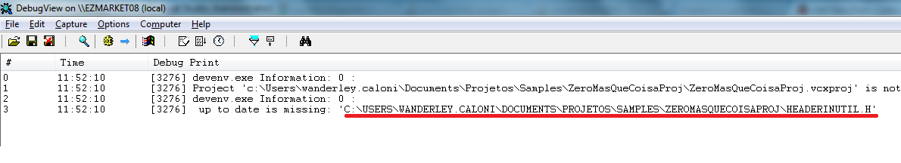 Header Inútil 2012-03-27 [tag_coding] O Visual Studio é uma ótima ferramenta para depurar rapidamente programas sendo desenvolvidos e |
| Cliente Morto Não Paga 2012-03-27 [tag_movies] O filme começa com um horizonte de papelão e com uma chuva mais falsa que o próprio horizonte: está pronta referência dos filmes noir, gênero clássico que mistura um clima opressivo, uma fotografia escura e um detetive desiludido apaixonado por uma estereotipada femme-fatale. Nesse caso, o detetive é Steve Martin, que quando é enfocado pela primeira vez dispensa explicações sobre o teor cômico do filme: inebriado pelo tom solene dos filmes que homenageia, o detetive Rigby Reardon parece não perceber que é uma caricatura de ícones da história do cinema, que reencarnavam o mesmo personagem, mas sem sua desenvoltura cômica. cliente-morto-nao-paga |
| Paprika 2012-03-25 [tag_movies] Paprika funciona muito bem como cinema experimental, onde boas ideias costumam nascer. A ideia central da história, a manipulação e compartilhamento dos sonhos de uma pessoa, deu origem, por exemplo à [A Origem]! No entanto, diferente da experiência racional de Christopher Nolan, Paprika não se preocupa em desenvolver muito seus personagens ou mesmo sua história, em que não temos muita certeza das ameaças por trás da invenção dos sonhos ter caído em mãos erradas. De certa forma, o filme é tão poético ou tão caótico quanto os próprios sonhos que estamos acostumados a ter. Sem algo que prenda as atenções, o subconsciente é importante para apreciarmos um filme de sensações e, principalmente, de conexões não sempre lógicas ou mastigadas. paprika |
| 2 Filhos de Francisco: A História De Zezé di Camargo & Luciano 2012-03-25 [tag_movies] Há filmes que estão aí para provar que uma ideia não tão "empolgante" ou mesmo original pode dar origem a trabalhos dignos de nota exatamente por conseguirem se sobressair com muito pouco, ou com apenas uma boa história. O enredo complicado da história baseada em personagens reais que deram origem à dupla sertaneja de sucesso Zezé de Camargo & Luciano, que precisa cobrir diversos eventos em um espaço curto de tempo, mas ao mesmo tempo apresentar coesão espacial e, principalmente nesse caso, emocional, deu origem a um pequeno milagre. 2-filhos-de-francisco |
| Shame 2012-03-18 [tag_movies] A princípio Shame não parece um filme que fuja do lugar-comum. Com um ritmo mais lento e, portanto, reflexivo, ele nos leva a conhecer aos poucos a vida de Brandon Sullivan (Michael Fassbender), um rapaz comum que mora sozinho, tem um belo emprego, mas que é um inveterado por sexo, solitário ou com prostitutas. Paradoxalmente, Brandon não consegue ter relacionamentos duradouros, e nem a presença de sua irmã Sissy (Carey Mulligan) faz com que ele consiga se conectar com o mundo. Alheio a tudo que não seja relativo ao ato sexual, Brandon sabe que possui um tipo de doença, e essa consciência é que torna tudo muito mais humano em sua história. shame |
| A Troca 2012-03-18 [tag_movies] Impressionante como é possível admirar uma direção competente e experiente mesmo sem conhecê-la. Foi assim com A Troca, um drama de época envolvendo a história de vida de uma mulher que tem seu filho desaparecido e sua luta contra o sistema corrupto da polícia de Los Angeles da década de 20 e 30. Foi só nos créditos que descobri se tratar mais uma vez do trabalho sempre constante de Clint Eastwood (Menina de Ouro, [Sobre Meninos e Lobos]), que, diferente do seu passado de ator com uma cara só, vem se preocupando com temáticas mais humanistas sem deixar de lado uma discussão mais profunda sobre a sociedade onde isso ocorre. Nesse sentido é possível comparar este belo trabalho com Menina de Ouro. Em todos os outros sentidos, porém, é uma história completamente diferente. a-troca |
| Poder sem Limites 2012-03-14 [tag_movies] Entrando na onda dos filmes gravados como documentários, só que sem os problemas técnicos presentes no gênero, como a qualidade de vídeo, Poder Sem Limites explora a descoberta de três jovens de uma caverna escondida dentro de um buraco e que acaba lhes dando poderes tele cinéticos. Os motivos para isso nunca são revelados, pois o objetivo do longa é mostrar os rapazes explorando esse poder gradativamente, e como cada um deles o usa de forma particular. poder-sem-limites |
| Drive 2012-03-13 [tag_movies] A filmagem no estilo homenagem aos anos 80 cativa e ao mesmo tempo cria uma atmosfera que aceitamos exatamente pelas inúmeras referências da época, como os créditos estilosos ou as frequentes mas elegantes transições em que o personagem de Ryan Gosling ([Tudo pelo Poder]) aparece em um plano detalhe e se "esfumaça" para outra cena. drive |
| Filhos do Paraíso 2012-03-11 [tag_movies] Existe algo que vale a pena em Filhos do Paraíso. Se você notar, de repente acompanhamos uma história que não tem nada de original ou espetacular. Mas acompanhamos atentos. Existe algo de mágico em entrar dentro da vida dessa família. De entender seus conflitos, seu modo de viver e o problema que a perda de um par de sapatos representam. filhos-do-paraiso |
| Conteúdo da Palestra 2012-03-11 [tag_ccppbr] Uma nuvem mágica... O evento de C++ na Microsoft (e organizada pelo nosso grupo C/C++ Brasil) aconteceu. Quem esteve lá teve o privilégio de passar algumas horas com programadores e entusiastas de ambas as linguagens e acompanhar o raciocínio dos palestrantes sobre Move Semantics, COM (good times), programação na placa gráfica e a solução para todos os problemas do universo (vulgo ZeroMQ). Fora isso, a palestra que me surpreendeu no dia foi a do Sr. Basílio Miranda, cômica e inspirada, mas sempre nos fornecendo um pouquinho mais de conhecimento acerca do Qt framework, que felizmente ainda não morreu (a Nokia recentemente liberou uma série nova que ainda usa a versão evoluída do Symbian), e graças a isso não precisaremos nos preocupar por enquanto com o destino de nosso ilustríssimo Sr. Basílio. conteudo-da-palestra |
| O Homem Que Mudou o Jogo 2012-03-06 [tag_movies] Brad Pitt é um ator com um controle de personagem invejável. Podemos acompanhar sua trajetória em papéis mais exóticos como o do vampiro Louis (Entrevista com o Vampiro), do maníaco Jeffrey Goines (Os 12 Macacos), do inconsequente Tyler Durden (Clube da Luta) e do cômico Tenente Aldo Raine (Bastardos Inglórios) e compararmos com papéis mais contidos ou dramáticos como o pai de família em [A Árvore da Vida], o detetive David Mills em Seven e o gerente de um time de beisebol Billy Beane, papel que desempenha em O Homem que Mudou o Jogo que faz ficarmos em dúvida se existem dois, três ou mais clones do ator escondidos e revelados em momentos pontuais de sua carreira. o-homem-que-mudou-o-jogo |
| Marty 2012-03-06 [tag_movies] O que faz Marty ser um filme tão marcante parece ser os mesmos motivos que fizeram com que [Laços Humanos], clássico de Elia Kazan, hoje fosse imortalizado. O fato é que, apesar do dramalhão quase mexicano envolvendo a família e os amigos do personagem-título, as atuações e os diálogos, principalmente entre Ernest Borgnine e Betsy Blair, tornam muito difícil não gostar de uma história tão humana e tão sensível. marty |
| Os 7 Suspeitos 2012-03-04 [tag_movies] Já faz algumas décadas que não revia essa comédia ambientada nos anos 50 que mistura elementos de suspense, terror e policial de uma maneira particularmente competente. De certa forma, quando eu tinha cerca de 10 anos já sabia que a graça do filme residia tanto em sua história quanto na dinâmica do grupo, os suspeitos do título. os-7-suspeitos |
| Leur morale... et la nôtre 2012-03-04 [tag_movies] Nessa comédia de humor negro francesa é difícil identificar-se com os protagonistas, um casal de meia-idade que vive sozinho às custas de promoções de supermercados e uma vendinha clandestina em sua própria casa e preocupados com a crescente onda de bandidagem no bairro que residem. Isso porque eles são tão vigaristas quanto os supostos "bandidos" que o casal de meia-idade tanto teme. leur-morale-et-la-notre |
| A Mulher de Preto 2012-03-04 [tag_movies] Vamos falar primeiro sobre a fotografia: ela é escura, até demais, mas consegue criar tomadas internas que estabelecem com primor um clima tanto de luz natural (muito pouca), quanto de fantasia. E mesmo com tão pouca luz, conseguimos enxergar toda a ação ou falta dela. Existem tomadas, por exemplo, onde só dá pra ver a face do protagonista, mas graças à ótima lógica geográfica da casa é possível entender a dinâmica da cena. a-mulher-de-preto |
| A Dama de Ferro 2012-03-04 [tag_movies] Ao terminar o filme temos a nítida impressão que ele foi dirigido por alguém que possui ideias completamente repulsivas a respeito da figura de Margaret Thatcher e/ou sobre a ideia de uma mulher governando uma nação. Ou isso ou não temos aí um estudo de personagem (histórico), mas simplesmente um pseudo-documentário que tenta ilustrar tanto a vida pessoal quanto política de uma das mulheres mais significativas do nosso século, mas sem conseguir unificá-la em um ser inteligível, sugerindo de uma forma covarde e inescrupulosa que, bem, se as coisas aconteceram daquela maneira, foi porque estávamos falando de uma mulher que não soube o seu lugar. a-dama-de-ferro |
| As Mulheres do Sexto Andar 2012-03-01 [tag_movies] Filme flerta com um evento interessante ocorrido na França dos anos 60 e que curiosamente está ocorrendo nesse momento na esfera da "sofrida" classe média brasileira: o abandono cada vez maior das empregadas domésticas locais e a ascenção de alternativas, como imigrantes de países vizinhos, notadamente em situação econômica mais fragilizada. Pior: flerta, assim como o recente premiado [Histórias Cruzadas], com a figura de um empresário que começa a se preocupar com a classe que o serve. Principalmente, é mérito dizer, com a beleza e eficiência da nova empregada, a espanhola María Gonzalez (Natalia Verbeke). as-mulheres-do-sexto-andar |
| Psicopata Americano 2012-02-26 [tag_movies] Existem vários exemplos de serial killers organizados na literatura e no cinema e tv, como Kevin Costner em Mr. Brooks ([Instinto Secreto]) e o mais famoso Michael C. Hall como [Dexter] Morgan. Porém, pouco se vê dos assassinos que são facilmente pegos exatamente porque não possuem disciplina e ordem: matam as pessoas de qualquer forma. Não possuem método: possuem impulso. psicopata-americano |
| O Mariachi 2012-02-26 [tag_movies] A estreia do diretor Robert Rodriguez ([Sin City], [Machete]) foi com este El Mariachi, que lhe custou, de acordo com a lenda, $7000, gastos quase todo para o filme da câmera. Valeu a pena. Com o uso da película e de uma impressionante realidade alternativa em uma cidade comandada por um chefão que se veste de branco e que possui tiques de mafioso, Rodriguez dita o tom não só de seu filme-debut, como praticamente de todos os filmes dirigidos por ele até então, bons ou ruins. El Mariachi pode não ser uma obra prima, mas pela maneira com que foi filmada, escrita e produzida, pode ser usada sim como exemplo de como fazer cinema com poucos recursos. o-mariachi |
| A Invenção de Hugo Cabret 2012-02-25 [tag_movies] Hugo é o primeiro filme em 3D do mestre Scorsese ([Os Bons Companheiros], [Táxi Driver]) e nesse caso o uso da tecnologia é totalmente justificado. Abordando uma história que gira em torno do cinema e seus primórdios, a ideia de "separar" a criação de filmes antigos do próprio filme cria um exercício metalinguístico admirável e uma aventura extremamente emocionante. O uso da tecnologia, além de ser aplicada com competência, difere de filmes anteriores principalmente pela já velha questão do foco. Em [Avatar], por exemplo, o primeiro grande exemplo de 3D "de verdade", James Cameron ainda aplica o foco de maneira binária nos personagens, se esquecendo que estamos em um cenário com profundidade de campo variável. Já em Hugo o que ocorre é uma perda gradual de foco, com o fundo ficando aos poucos "embaçado", ou seja, uma simulação de mais ou menos como nossos olhos funcionam em um ambiente como no mundo real. O uso de engrenagens e cenários internos com longos corredores consegue ajudar a nos ambientar nessa profundidade de campo facilmente, e embora esse recurso seja repetido meio à exaustão ele é importante para nos situar no universo do protagonista. Mesmo os cenários "externos", ainda sofrendo a limitação da tecnologia em planos aéreos, pois faz com que os objetos pareçam maquetes, dentro do espírito fabuloso da narrativa encaixa-se perfeitamente. a-invencao-de-hugo-cabret |
| Pinóquio 2012-02-20 [tag_movies] Essa versão da obra literária de Carlo Collodi (e cuja história foi eternizada por Disney em 1940) foi dirigida, co-roteirizada e atuada pelo ator circense Roberto Benigni (A Vida é Bela). Embora o uso da abordagem literal, ou seja, sem nenhuma ressalva ao possível choque para o público infantil, poderia ter sido a grande diferença do filme em relação às suas contrapartes, desde os primeiros quinze minutos fica óbvio que se trata de um projeto desnecessário, ainda mais se considerarmos os poucos recursos utilizados, que limitam sim a imaginação dos espectadores, considerando que se trata de um filme contemporâneo, e não estamos acostumados a fazer ressalvas como no caso de [O Mágico de Oz], obra mais antiga e, portanto, limitada tecnicamente (note que falo apenas dos efeitos visuais, pois existem obras seculares que até hoje impressionam pelas técnicas de filmagem empregadas). pinoquio-2002 |
| O Corajoso Ratinho Despereaux 2012-02-20 [tag_movies] Essa animação de 2008 passou meio que despercebida dos cinemas, apesar de possuir uma invejável direção de arte. Narrando uma fábula ocorrida na França antiga que relaciona sopa, princesas e ratos (dividindo-se em camundongos e ratazanas), o principal fator que move o filme é a pseudo-grandiosidade da história, onde um simples e pequeno camundongo recebe a missão de acabar com o luto interminável do rei, causado tempos atrás por um acidente causado por uma ratazana. A grande sacada da história é que o Despereaux do título é um camundongo que, além de ter duas gigantescas orelhas, diferente de todos os outros, nunca sente medo. Esse traço de sua personalidade irá permitir que ele transite entre os três mundos (dos humanos, das ratazanas e dele mesmo) e junte as peças da fábula. o-corajoso-ratinho-despereaux |
| Monstros S/A 2012-02-20 [tag_movies] Interessante notar como a Pixar em seus primeiros filmes costumava inserir brincadeiras que, de certa forma, acusavam o espírito jovem e experimentador daqueles tempos. Mais impressionante, porém, é perceber como esse deve ter sido a semente para o amadurecimento da técnica antes de filmarem jovens clássicos como Os Incríveis, Wall-E, [Ratatouille] e [Up!]. monstros-sa |
| Millennium: Os Homens que Não Amavam as Mulheres 2012-02-19 [tag_movies] O filme é um remake do sueco homônimo de dois anos atrás, sendo que ambos foram criados a partir da mesma fonte: o primeiro livro da trilogia escrita por Stieg Larsson que se tornou um best-seller póstumo (Larsson faleceu um ano antes da primeira publicação). Dadas essas condições, me parece que o projeto possui uma missão particularmente difícil: adaptar um livro complexo por conter uma trama cheio de detalhes que se debruça sobre a psique de seus personagens (e são muitos) e sair-se melhor do que o filme original (do contrário, para que fazer de novo?). millennium-os-homens-que-nao-amavam-as-mulheres |
| O Artista 2012-02-16 [tag_movies] Logo no início do filme, me senti acompanhando uma digna e merecida reverência ao Cinema Mudo, presente nos primórdios da arte e que acabou durante a década de 30 (mesmo ainda com defensores ferrenhos e influentes, como Chaplin). Porém, mesmo que você não entenda nada de arte cinematográfica vale a pena acompanhar o arco dramático de George Valentin, que vivia seu auge no cinema ainda não-falado (apenas com músicas de fundo, geralmente tocadas ao vivo por uma orquestra), e que subitamente foi afastado pela novidade dos personagens que agora falavam diretamente, e não com a ajuda dos cartões de falas colocados após alguma declaração importante. o-artista |
| Sherlock Holmes e o Jogo das Sombras 2012-02-15 [tag_movies] Guy Ritchie adora estilização via câmera lenta. Fora isso, as novas aventuras do famoso detetive de Baker Street parece ganhar fôlego extra graças a um vilão, se não memorável, digno das capacidades cognitivas de Holmes. sherlock-holmes-e-o-jogo-das-sombras |
| Selkirk el verdadero Robinson Crusoe 2012-02-15 [tag_movies] Impressionante essa animação argentina sobre o livro de Robinson Crusoé que, salvo alguns momentos difíceis tecnicamente, possui efeitos e direção dignos de outras produções mas conhecidas, como Wallace e Gromit (que também estreia recentemente com um filme de piratas). selkirk-el-verdadero-robinson-crusoe |
| Professora Sem Classe 2012-02-15 [tag_movies] Se me dissessem que todo o roteiro de Professora sem Classe foi construído tendo apenas como argumento inicial a ideia da Cameron Diaz lavando carrões com um shorts minúsculo, eu acreditaria. O filme utiliza-se de personagens unidimensionais (incluindo a própria protagonista!) para narrar a história de uma caça-maridos (ricos, claro) que precisa voltar a lecionar (embora todo o dia apenas se limite a ligar uma TV para os alunos) enquanto ajunta dinheiro para colocar silicone em seus seios e assim se tornar mais atrativa no "mercado". Sim, com uma premissa dessa, não há muito o que esperar além da já citada cena da lavagem de carros. professora-sem-classe |
| Penumbra 2012-02-15 [tag_movies] O roteiro é uma bobagem, que brinca com o julgamento da protagonista de uma forma, mas faz questão de nos avisar muito antes o que está acontecendo. Não contente com isso, seu final comprova não apenas o delírio de complexidade (quando na verdade temos um desfecho simplista). penumbra |
| Nanny McPhee A Babá Encantada 2012-02-15 [tag_movies] Uma produção com um toque britânico (e atores) que consegue entreter mais pela curiosidade das próximas ações da babá mágica para controlar os sete diabinhos do desafortunado viúvo, que ainda depende de uma tia impiedosa para a sobrevivência da família, do que pela história em si, que é bobinha e previsível. O filme ainda emociona por situações naturalmente emotivas (como a decisão de escolher uma filha para entregar à tia), mas por algum motivo "mágico", consegue caminhar até sua conclusão pelo menos ileso de apelações maiores. Talvez uma última da babá pós-créditos? nanny-mcphee-a-baba-encantada |
| Muppets: O Filme 2012-02-15 [tag_movies] O potencial dos bonecos é evidente no filme, pois todos possuem personalidades marcantes que geram diversas situações ingenuamente engraçadas. E é de modo ingênuo que a história inicia, e a forma de narrar a vida dos irmãos, em que um deles é um boneco que portanto nunca cresce, já denota de modo inconsciente que a interação entre humanos e muppets é algo completamente comum naquele universo fabuloso. muppets-o-filme |
| Juan e Evita, Uma História de Amor 2012-02-15 [tag_movies] Supostamente idealizado para narrar a relação entre o futuro líder argentino, Juan Domingo Perón, e sua agraciada amada Eva (a Evita de Madonna), aos poucos entendemos o filme como um conjunto de mini-episódios políticos da época que giram direta ou indiretamente em torno da figura de Juan, mas que são ligados apenas perifericamente com a cortejada Eva, de forma que nunca é possível inferir sua influência com o até então vice-presidente argentino, ou pior, o amadurecimento da relação de ambos. Essa ausência fica mais claro na segunda metade do filme, quando esperamos por um Juan e Eva mais íntimos. juan-y-eva |
| Dirty Dancing: Ritmo Quente 2012-02-15 [tag_movies] Para os filhos da década de 50/60 a era Disco representou uma mudança radical de apreciar música. Essa mudança não ocorreu obviamente apenas na música, mas na maneira de pensar e agir, sobretudo na adolescência, época conturbada tão bem representada nos trabalhos de John Hughes (Curtindo a Vida Adoidado, O Clube dos Cinco). dirty-dancing-ritmo-quente |
| Alvin e os Esquilos 3 2012-02-15 [tag_movies] Tenho a nítida impressão que a série Alvin pode ser repetida à exaustão graças à empatia do público com números musicais de sucessos atuais realizados pelo sexteto de esquilinhos. E é necessário apontar: eles são engraçados e fofinhos quase todo o tempo. alvin-e-os-esquilos-3 |
| A primeira coisa bela 2012-02-15 [tag_movies] Esse filme, junto com o recente cult Um Sonho de Amor, evidencia um Cinema Italiano mais interessante e inovador, ainda que mantenha sua clássica dramaticidade de novelão, estilo que paradoxalmente o acaba engrandecendo. a-primeira-coisa-bela |
| 2 Coelhos 2012-02-15 [tag_movies] Uma montagem impecável consegue dar o tom da narrativa do complexo 2 Coelhos. Além de complexo, existem pequenos detalhes da trama que forçam um pouco a realidade (como a união entre o protagonista e o pai-de-família que tem sua família brutalmente assassinada pelo seu carro). Porém, o que mais chama a atenção é o apelo visual e estético do longa, que pode ser considerado à altura de produções norte-americanas. Está à altura, sim, mas com isso também constatamos que a criatividade da direção de arte não vai muito além dos lugares-comuns de filmes do gênero, incluindo aí as apresentações Tarantinescas (e é também de Tarantino essa tentativa de humanizar os bandidos, com pequenos detalhes de suas ações) e chegando ao absurdo de incluir uma cena a la Sucker Punch com o único propósito de desviar nossa atenção. 2-coelhos |
| A Marca da Maldade 2012-01-31 [tag_movies] Orson Welles aparentemente sempre esteve preocupado com a questão da lei, da justiça e da verdade. Tudo isso a partir de uma grande questão: os que zelam pela ordem e segurança são realmente de confiança? Ou quem vigia os que nos vigiam? Se formos considerar que a questão do poder foi tratada exaustivamente em seu clássico Cidadão Kane, esse A Marca da Maldade consegue desviar um pouco da rota sem perder a essência. a-marca-da-maldade |
| Babe O Porquinho Atrapalhado na Cidade 2012-01-30 [tag_movies] Se "Babe, o Porquinho Atrapalhado" era fofinho do começo ao fim, e continha um roteiro elegante que fechava suas pontas, aqui parece que inverteram feio a ordem dos eventos, gerando o que é devidamente nomeado por um dos capítulos em que se divide como A Teoria do Caos. Não é à toa: se no primeiro filme tínhamos já um pano de fundo que nos remetia à visão de A Revolução dos Bichos sob o aspecto da mobilidade social, aqui temos a cidade grande como palco, e os animais, assim como as pessoas, vivem uma espécie de anarquia não-solidária, onde a ajuda geralmente vem de onde menos se espera. babe-o-porquinho-atrapalhado-na-cidade |
| Babe O Porquinho Atrapalhado 2012-01-30 [tag_movies] Babe tem ares de ser um filme bonitinho e família. Afinal de contas, por quase todo o tempo vemos animais falantes interagindo e contando a história do porquinho e suas "trapalhadas". Porém, escondido nessa fábula moderna, e como toda fábula que se preza, o pano de fundo nos remete a discussões muito mais profundas e adultas, como o preconceito e a aceitação do diferente, além de também remeter ao Revolução dos Bichos, de George Orwell, por estabelecer também uma sociedade de animais com funções pré-definidas de acordo com sua espécie e uma certa pressão para a imobilidade social. babe-o-porquinho-atrapalhado |
| XXY 2012-01-24 [tag_movies] Mais um filme com tema sexual polêmico (como o recente, leve e em cartaz Tomboy), mas que nesse caso, assim como o Minhas Mães e Meu Pai, se recusa a apresentar uma história que utilize seus personagens e seus conflitos de forma coerente ou pelo menos interessante. Não, a única coisa que faz é sempre focar na condição de Alex, um garoto que nasceu com ambos os genes, o masculino e o feminino , o que faz com que, entre outras coisas, ele/ela tenha ambos os órgãos sexuais. Uma aberração, certo? Errado. Alex é um ser humano qualquer, ou melhor dizendo, um adolescente qualquer, mas independente disso o filme tenta de todas as formas apresentar o conflito físico do personagem como sendo o único evento digno de nota, a única coisa na história que valha a pena ser contada. xxy |
| Clube dos Cinco 2012-01-24 [tag_movies] Apesar de parecer mais um filme sessão da tarde, Howard Hughes desafia o raciocínio em cima dos estereótipos dos jovens de sua época, mostrando como cada um deles no fundo é uma peça única, e que não podem ser rotulados pelos adultos. clube-dos-cinco |
| O Espião Que Sabia Demais 2012-01-17 [tag_movies] Confuso, confuso, confuso. Poucas vezes saí do cinema tão perdido quanto da sessão de "O Espião que Sabia Demais". Ultimamente tenho tido alguns problemas de foco, que no caso foram extrapolados pelas conversinhas paralelas na sala. Porém, isso não justifica a total falta de compreensão da trama, uma vez que já participei de alguns "desafios intelectuais" como Donnie Darko, Prime e O Grande Truque e saí (quase) ileso. Nesse caso, faltou para mim, do começo ao fim, não só os detalhes, mas a essência de toda a história. o-espiao-que-sabia-demais |
| Tomboy 2012-01-15 [tag_movies] Tomboy de início possui uma inusitada premissa: narrar a vida e as dificuldades de Laure, uma garota que, andrógina, possui a aparência de menino. Focando-se nisso de maneira sutil, ainda que nos deixe perceber as intenções e pensamentos da jovem Laure, ainda que sem diálogos, o filme faz questão de sempre nos fornecer aconchego externo, de forma que nunca nos sentimos realmente desamparados pela condição da garota, que possui pais compreensivos e atenciosos, além de uma adorável irmã mais nova. tomboy |
| Depois da Vida 2012-01-15 [tag_movies] Pense rápido: se você morrer hoje escolha de toda sua vida apenas uma memória para guardar para toda a eternidade. No filme de Hirokazu Koreeda, o mundo pós-vida possui um sistema de acompanhamento das pessoas que recentemente faleceram e cujo objetivo é exatamente esse. depois-da-vida |
| RValue é o novo LValue 2012-01-11 [tag_ccppbr] [tag_coding] As grandes discussões filosóficas que participei durante meu estudo da linguagem C, e mais tarde de C++, muitas vezes convergiam para o significado místico daquela figura que nós da gramática da linguagem conhecemos como lvalue, ou l-value, ou left-value. Enfim, a definição de uma expressão que representa um lugar na memória e, portanto, pode ocupar o lado esquerdo de uma atribuição/cópia/passagem de argumentos qualquer. Porém, os "grandes" embates daquela época hoje parecem brincadeira de criança, como a diferença sutil entre ++x e x++ ou convergência de tipos em templates. rvalue-e-o-novo-lvalue |
| Mãe e Filho 2012-01-11 [tag_movies] Para aqueles que possuem prazer estético pelo Cinema e possuem paciência para narrativas não-convencionais como o recente e polêmico [A Árvore da Vida], vale a pena uma olhada nesse Mãe e Filho, do diretor Aleksandr Sokurov, o mesmo do igualmente "arrastado" (mas belíssimo) [Arca Russa]. mae-e-filho |
| Toy Story 2012-01-09 [tag_movies] Achei melhor do que as vezes anteriores que tinha assistido. A direção se esforça ao enfocar a ação e o uso de ângulos criativos que inibem a ainda falta de tecnologia que torna as texturas simplórias, apesar de bem trabalhadas. A dublagem nacional mais uma vez empolga, com menção honrosa ao Sr. Cabeça de Batata. toy-story |
| O Gato de Botas 2012-01-09 [tag_movies] Direção de arte nova que dá um novo respiro ao gato. Sequências e sacadas inspiradas na intro (como o fato dele ser um gato implica em problemas de estatura, ou como segue luzinha no chão). Até a história do passado, apesar de não convencer, é contada de forma convincente, e a inclusão de Humpty Dumpt é muito bem vinda ao adicionar um caráter mais adulto e contraditório. Já se a intro da gata e dos dois vilões é primorosa, o mesmo não se pode dizer do seu desenvolvimento, esquecido, já que suas funções são pontuais/artificiais e nunca fazem muita diferença na narrativa. o-gato-de-botas |
| Missão: Impossível - Protocolo Fantasma 2012-01-09 [tag_movies] Versão mais leve que [o anterior] (no sentido de censura e tensão), embora mais divertido. Não tem vilão tão memorável nem conflitos dignos de nota, mas a interação entre os participantes e as situações criativas conseguem balancear a ação durante todo o trajeto. Infelizmente a parte em Dubai é a melhor, e está um ato antes do final que desaquece um pouco. A direção fluida de Brad Bird confere um espelho significativo com seu trabalho anterior [Ratatouille], pois as cenas de ação lembram, por exemplo, a perseguição pelo Rio Sena (apesar da animação não ter esse enfoque), enquanto M:I 4 herda a estranha sensação de estar assistindo uma brincadeira (à moda antiga) de mocinho e bandido. missao-impossivel-protocolo-fantasma |
| Adeus, Primeiro Amor 2012-01-09 [tag_movies] Apesar de toda a sutileza e competência visual ao contar o romance de dois jovens, primeiro amor de ambos, e a posterior separação e amadurecimento de ambos, acaba se tornando vazia quando percebemos que a experiência não oferece mais nada senão uma trilha sonora bem escolhida e enquadramentos sublimes (sobretudo se aliado à competente fotografia, que não se intimida pelas diversas luzes escolhidas para os cenários). Além disso, temos surpreendentes três atuações medíocres, que não oferecem nada além do óbvio, o que é um assombro, principalmente ao notarmos o tempo de tela da protagonista Lola Créton, que constrói uma Camille convincentemente apaixonada no início para tornar-se insuportavelmente apática por todo o resto, como se o sinal óbvio de amadurecimento fosse se tornar um tédio. adeus-primeiro-amor |
| Dumbo 2012-01-08 [tag_movies] Um dos trabalhos mais esquecidos da Disney das décadas passadas, e um dos poucos que conseguiu arrecadar bilheteria o suficiente para manter a empresa de animação nos eixos durante a Segunda Guerra, Dumbo possui uma leveza e doçura que não existe em trabalhos mais sombrios da época, como [Branca de Neve] e Pinóquio (sem contar o extremamente cruel Bambi). No entanto, não é apenas isso que se nota no curto longa-metragem: surrealismo ([Pink Elephants on Parade]), regionalismo (os corvos que usam até uma música descaradamente plagiada em [A Princesa e o Sapo]) e preciosismo nos movimentos são alguns traços que mantém este trabalho como uma das grandes animações já feitas no Cinema. dumbo |
| Românticos Anônimos 2012-01-04 [tag_movies] Como bom tímido que fui (sou?) posso com autoridade dizer que Românticos Anônimos ao mesmo tempo que permite nos identificarmos com o casal protagonizado por dois tímidos irremediáveis também nos permite identificar as diferenças peculiares de cada um, evitando assim estereotipar o termo e manter-se engraçado. romanticos-anonimos |
| Antes do Pôr-do-Sol 2012-01-03 [tag_movies] A continuação do terno romance de um dia entre Jesse e Celine é assinada não apenas pelo diretor Richard Linklater, mas também pelos próprios atores Ethan Hawke e Julie Delpy, o que dá o tom de filme casual que tenta fechar um [arco iniciado] nove anos atrás, usando o mesmo espaço de tempo entre os lançamentos dos filmes. antes-do-por-do-sol |
| A Liga Extraordinária 2012-01-01 [tag_movies] O filme pretende contar a história de pessoas que, dotadas de alguma capacidade especial para sobreviver, são reunidos pelo Império Britânico para tentar evitar que seja instaurada uma possível guerra mundial, tentativas de um ganancioso sujeito que usa uma máscara e simula ataque entre nações. Isso na virada para o século XX em uma Era Vitoriana alternativa. a-liga-extraordinaria |
| Tudo Sobre Minha Mãe 2011-12-31 [tag_movies] Tudo Sobre Minha Mãe é o exemplo perfeito sobre a que veio Almodóvar. Com uma sensibilidade ímpar para contar os dramas das mulheres, o diretor-roteirista emplaca uma história cheio de reviravoltas e sobre diversas mulheres e suas vidas, mas que gira principalmente em torno de Manuela (Cecilia Roth), uma enfermeira que é mãe de um filho de 18 anos que mantém um mistério acerca de seu pai, mas que possui em comum sua obsessão pelo enredo da peça Um Bonde Chamado Desejo, onde se identifica com Stella, uma personagem dominada e abusada pela figura masculina. Cenas da peça são mostradas conforme a narrativa do próprio filme avança, enriquecendo a história principal. tudo-sobre-minha-mae |
| Star Wars, Episódio VI: O Retorno do Jedi 2011-12-31 [tag_movies] Hora de assistir novamente a conclusão da saga de George Lucas, dessa vez após ter visto a nova trilogia e o significado que ela insere na antiga (em especial [A Vingança dos Sith]). Uma direção de arte cada vez mais impecável, que consegue equilibrar o tema espacial com a fantasia por trás da história. Quando C3PO narra a aventura épica dos personagens em torno da fogueira é o momento mais icônico e que melhor representa o conceito por trás das lendas filmadas de Star Wars. Parece não haver mais o que acrescentar a este universo, embora a direção aqui se mostre mais pausada, madura e consciente de seu final mais trágico que de costume. o-retorno-de-jedi |
| Star Wars, Episódio V: O Império Contra-Ataca 2011-12-31 [tag_movies] O [filme inicial], auto-contido, sobre o conto de fadas nunca antes contado, ganha uma nova dobra, e tenta ao mesmo tempo contar uma nova história no mesmo molde e estender esse universo com explicações sobre os Jedis, a Força e ainda um pouco de mistério a respeito das origens do Império e, principalmente, do seu ícone maior: Darth Vader. o-imperio-contra-ataca |
| Tudo pelo Poder 2011-12-30 [tag_movies] Geralmente filmes que tentam revelar os bastidores da política soam pretensiosos e bobinhos em suas conjecturas infantis e roteiros confusos e incompletos. Esse não é o caso de Tudo Pelo Poder, que consegue, de maneira didática e assustadora, revelar muito mais sobre o pano de fundo de influências do que gostaríamos de saber ou de admitir. tudo-pelo-poder |
| Tá Dando Onda 2011-12-30 [tag_movies] O teste da nova televisão e novo tocador de Blu-Ray do quarto foi com essa primorosa animação. A história gira em torno de Cody Maverick, um pinguim que deseja se tornar um ás do surfe, mesmo sem ter treinado muito, confiando apenas nas mensagens de auto-ajuda de Big Z, uma lenda do esporte que desapareceu misteriosamente durante um campeonato. Para quem deseja experimentar as diversas nuances de sua TV esse é um ótimo filme, pois além de ser uma animação e contar com contornos precisos e movimentos "realistas", ainda possui inúmeras tonalidades de cores e de luzes, pois a história se passa não apenas na praia, mas na floresta, durante a noite fria e o dia ensolarado ou nublado. Filmado com um tom documental, existem cenas que frequentemente voltam no tempo e que possuem o efeito de vídeo envelhecido cheio de ruídos. ta-dando-onda |
| Um Sonho de Amor 2011-12-25 [tag_movies] Essa história sobre a mudança dos valores sob vários aspectos é uma abordagem quase idílica do novo cinema italiano. Assistimos com certa solenidade o sisudo jantar em família (evidenciado pelo exagero de sombras) em que o patriarca, já debilitado, transfere o controle da empresa para seu filho e neto. O inusitado e refrescante dessa nova história é que nos bastidores (ou para ser mais direto, na cozinha) encontra-se a origem de mudanças radicais naquela forma de funcionar o mundo. um-sonho-de-amor |
| Um Natal Muito Muito Louco 2011-12-25 [tag_movies] Tim Allen, de Meu Papai é Noel (1 e 2), em mais um filme de natal, dessa vez com Jamie Lee Curtis (True Lies) e roteiro de, quem diria, Chris Columbus! (Os Goonies, Gremlins, Nove Meses) A ideia principal é resgatar o senso de comunidade que o Natal propicia, só que o filme começa ao contrário, mostrando a pressão que essa mesma comunidade faz para que todos levem a sério essa época do ano, não sendo permitido sob as suas leis, mudar isso para, por exemplo, tirar umas férias em um lugar mais quente. um-natal-muito-muito-louco |
| O Garoto 2011-12-25 [tag_movies] Uma trilha musical surpreendentemente encantadora para a época, com uma narrativa coesa que favorece seu desenvolvimento um tanto episódico ao mesmo tempo que nunca perde as rédeas de sua história maior (e é de se notar a quase ausência dos textos explicativos). O garoto escalado para o filme é tão encantador quanto sua história, e é igualmente louvável a participação menos overacting de Chaplin como o vagabundo que o adota, favorecendo a interação entre eles e não simplesmente as cenas cômicas de forma isolada. o-garoto |
| Os Pássaros 2011-12-20 [tag_movies] A cena que mais evidencia a tensão presente na casa da família Brenner após um ataque-relâmpago de pássaros ensandecidos é quando vemos a câmera focar a matriarca da família olhando para o teto, assustada. Então a câmera se afasta, e, no mesmo quadro, é possível ver que os outros dois adultos estão fazendo a mesma coisa. Ao final desse quadro tão emblemático, sabemos que o diretor conseguiu o total controle sobre nossa atenção e sentidos, que, naquele momento, teimam em se comportar irracionalmente e exatamente como aquelas pessoas. os-passaros |
| Munique 2011-12-20 [tag_movies] Fotografia escura, personagens quase sempre aparecem na penumbra das janelas e paredes, evidenciando sua característica de "não existirem" oficialmente. Uma profunda introspecção na luta entre os dois povos, árabes e judeus, sob o ângulo dos ataques terroristas. munique |
| Matrix 2011-12-20 [tag_movies] Animes, quadrinhos, Kung-Fu, filosofia, tecnologia: Que filme conseguiria compor, de forma inquestionável, esses universos tão grandiosos quanto diferentes entre si? Dirigido pelos Irmãos Wachowski (V de Vingança, [Speed Racer]), o filme contém uma história com elementos nada criativos, mas que possuem algo em comum: faziam parte do universo da época (fazem?), onde computadores e internet começavam a dominar o mundo, e a diferença entre mundo real e mundo virtual começava a aparecer na vida das pessoas. matrix |
| Lições de Vida 2011-12-20 [tag_movies] Filme estrelado por Rupert Grint, e quem está acostumado com seus trejeitos na [saga Harry Potter] não vai se decepcionar. Para os que esperavam uma atuação mais envolvida com um projeto apartado dos livros dos bruxinhos, vai. licoes-da-vida |
| Julie e Julia 2011-12-20 [tag_movies] Paralelo interessante entre as duas histórias, não fica óbvio que passam em épocas diferentes, mas o espectador vai percebendo isso aos poucos. Interpretação de Meryl Streep fica sendo a principal, apesar da protagonista talvez não ser ela (será?). julie-e-julia |
| Feitiço do Tempo 2011-12-20 [tag_movies] Bill Murray em um papel que é a cara dele: Phil Connor é o homem do tempo de uma emissora de televisão e precisa cobrir o tradicional "Dia da Marmota", uma cerimônia de uma cidadezinha secular cuja lenda uma marmota (ironicamente também chamada Phil) faz a previsão se haverá mais inverno. feitico-do-tempo |
| Escravas do Desejo 2011-12-20 [tag_movies] Depois de uma pausa assisti por completo Escravas do Desejo, uma história de vampiras lésbicas com um cunho erótico, mas que ao mesmo tempo evoca um clima de mistério. A história começa com dois jovens, recém-casados, que se hospedam em um hotel vazio de uma cidadezinha isolada. Porém, a vinda de uma condessa e sua acompanhante irá tornar as coisas um pouco tenebrosas. escravas-do-desejo |
| Cidade dos Sonhos 2011-12-20 [tag_movies] Um filme com história surrealista, pois os personagens mudam de identidade na metade final, e os nomes são trocados. Ainda a analisar (e talvez assistir de novo). cidade-dos-sonhos |
| Os Nomes do Amor 2011-12-12 [tag_movies] Ele, um esquerdista especialista em epidemias nos animais. Ela, uma libertária tão libertária que às vezes se esquece de colocar a roupa para sair de casa. Ambos, uma relação que mescla tanto as visões políticas quanto sexuais da França atual. Porém, mais importante, levanta a sensível questão da imigração, que vem engrossando caldo desde o movimento anti-terrorista liderado pelo governo Bush e evidenciado na crise europeia. os-nomes-do-amor |
| Alien, a Ressurreição 2011-12-12 [tag_movies] Dando continuidade ao "terror biológico" iniciado pelo antecessor [Alien³], quando um cachorro foi infectado por um alien que ganha suas feições ao nascer, o novo filme da franquia reabre a caixa de Pandora se aproveitando da discussão contemporânea de clonagem e "ressuscitando" a Tenente Ripley através de amostras de seu sangue já modificado pelo seu parasita espacial. alien-a-ressureicao |
| Aliens 3 2011-12-10 [tag_movies] Oito anos após [Aliens, o Resgate] (James Cameron), continuação do [filme original de Ridley Scott], o Cinema mais uma vez revisita esse universo, dessa vez pela visão do ainda inexperiente David Fincher (Seven, [Clube da Luta], [A Rede Social]), que não conseguiu enriquecê-lo à altura de seus antecessores, mas cria um drama que no mínimo aumenta um pouco nossa percepção a respeito da criatura. alien-3 |
| Aliens, o Resgate 2011-12-08 [tag_movies] James Cameron parece ter uma dedicação especial com as continuações. Tanto a série [Alien] quanto [O Exterminador do Futuro] (essa iniciada por ele mesmo) expandem seus universos justamente no primeiro sequel. aliens-o-resgate |
| Top Secret!: Superconfidencial 2011-12-04 [tag_movies] Ao contar uma paródia dos filmes de espionagem e guerra em que um astro do rock (Val Kilmer) se envolve com um grupo da Resistência Francesa para libertar um cientista preso pela Alemanha Oriental (Michael Gough), a direção tripla resolve brincar com trucagens comuns em filmes do gênero e de todo o cinema. Dessa forma, até um telefone no canto da tela pode ser motivo de chacota, ou a batidíssima piada dos olhos atrás da lupa funcionar tão bem na melhor sequência do filme, onde os atores contracenam uma cena invertida de trás pra frente, incluindo os diálogos, lembrando o dialeto sueco. Note como aos poucos o diretor vai dando dicas do que realmente está acontecendo, até o derradeiro movimento do cachorro. top-secret |
| Happy Feet 2: O Pinguim 2011-12-04 [tag_movies] Era de se esperar uma queda básica na qualidade narrativa do original Happy Feet, de 2006. Na época pegando carona no belíssimo documentário do ano passado, [A Marcha dos Pinguins], o filme traçava um paralelo do que aconteceria se um dos filhotes da espécie apresentasse uma característica... inusitada. No caso, todos os pinguins da raça Imperador são exímios cantadores, enquanto o filhote diferente gostava de sapatear. Ambas as características suportaram números de encher os olhos e os ouvidos, com performances de cair o queixo, com destaque absoluto para Somebody to Love (Queen). happy-feet-2-o-pinguim |
| Antes do Amanhecer 2011-12-04 [tag_movies] Os personagens de Jesse e Celine são adoráveis desde o começo, e é agradável vê-los conversando sobre temas tão universais e constantemente abordados por casais que nós mesmos formamos na vida. O mais interessante, porém, é a forma natural e (aparentemente) despropositada que o roteiro e direção de Richard Linklater nos apresenta seus personagens, criando mais ou menos um pacto com o espectador, que aceita aquela situação em prol da poesia e da mágica daqueles momentos. antes-do-amanhecer |
| Alien - O Oitavo Passageiro 2011-12-04 [tag_movies] Falar de "Alien - O Oitavo Passageiro" é falar de ficção científica, terror e suspense. Todos esses gêneros estão em um grau quase equivalente na produção de 1979. Dirigido por Ridley Scott ([Blade Runner], 1492, Hannibal, Gladiador) e com roteiro e história de Dan O'Bannon (A Volta dos Mortos Vivos, [O Vingador do Futuro]), o filme inicia no momento em que a nave Nostromo, inicialmente programada para retornar à Terra, decide acordar seus tripulantes da hibernação para averiguar um possível sinal de vida inteligente em um planeta inóspito. Sem muitas informações do que possa existir na origem do sinal é montado um grupo de exploração. alien-o-oitavo-passageiro |
| Inquietos 2011-11-29 [tag_movies] História de amor de dois jovens que se conhecem em um memorial. Ela, logo se descobre, possui câncer e tem três meses de vida. Ele, tem um amigo imaginário que logo descobrimos ser um fantasma. Ela adora Darwin e estudar sobre pássaros marinhos. Ele, adora ela, e coisas simples da vida. Aos poucos, os detalhes da história vão se cruzando. Diálogos vão enriquecendo com isso, e ganhando significados mais profundos. O diretor Gus van Sant (e o roteirista Jason Lew, estreante) não revela tudo de uma vez: prefere que degustemos os detalhes enquanto conhecemos Hiroshi (Ryo Kase), Annabela (Mia Wasikowska) e Enoq (Henry Hopper, também estreante). Nos tornamos íntimos dessas pessoas, suas histórias. Aprendemos a respeitar os limites de cada um, e assim aprendemos nossos próprios limites nessa vida. Agradecemos por ela, cantando ao acordarmos cada manhã, mesmo que ela esteja pintada por uma palheta descolorida, desde que tenhamos doces coloridos e apetitosos para depois (embalados em uma luz mais quente e agradável). E nos sentimos gratos por mais tempo, nem que usemos esse tempo para coisas mais simples, como jogar pedras em trens ou só sair pra conversar. inquietos |
| Coraline e o Mundo Secreto 2011-11-29 [tag_movies] Existem filmes que encantam apenas pelo seus esforços periféricos (direção de arte, música, fotografia) e existem os que apenas chamam a atenção pelo seu desenvolvimento central (roteiro e direção). No caso de Coraline é difícil não ficar deslumbrado com o apuro técnico de todo um mundo criado e que ganhou movimento graças ao tradicional uso do stop motion, onde a ação é montada quadro-a-quadro. Além disso, é o primeiro filme desse estilo ao ser rodado em 3D, o que levanta alguns aspectos interessantes da sua narrativa, como o uso das agulhas. coraline-e-o-mundo-secreto |
| Bonequinha de Luxo 2011-11-29 [tag_movies] Curiosamente esse filme ficou conhecido como um clássico, ainda que tenha traços de um verdadeiro cult, tanto pela sua excentricidade quanto pela direção inusitada de Blake Edwards (A Pantera Cor de Rosa), que ilustra a vida de Holly Golightly de uma maneira quase surreal. bonequinha-de-luxo |
| Domingos 2011-11-28 [tag_movies] Parafraseando o Chefe Gusteau de [Ratatouille], "qualquer um pode dirigir", ou seja, o bom diretor pode vir de qualquer lugar. Dessa vez veio de Maria Ribeiro, a Rosane esposa do Capitão Nascimento em [Tropa de Elite], que faz aqui um apanhado brilhante de gravações, depoimentos e tomadas capturadas durante o convívio com o cineasta Domingos de Oliveira que buscam ilustrar e homenagear a pessoa e o diretor, ator e roteirista, ao mesmo tempo que mostra seus inúmeros trabalhos no cinema e teatro. domingos |
| Assalto em Dose Dupla 2011-11-28 [tag_movies] Apenas o fato da direção de arte de Assalto em Dose Dupla tentar fazer lembrar os detalhes do banco de Um Dia de Cão chega a parecer uma ofensa, pois enquanto o clássico de Sidney Lumet tenta fazer rir através do inusitado em um assalto, mas sempre se lembrando que todos os envolvidos são seres humanos, o roteiro de Jon Lucas e Scott Moore (ambos de Se Beber Não Case) cria constrangimentos a partir de estereótipos que cria, como se apenas isso fosse motivo de risadas, o que de fato se comprova, pois a maioria das piadas se limita a apenas isso. assalto-em-dose-dupla |
| Ensina-me a Viver 2011-11-27 [tag_movies] Harold é um garoto problemático para sua idade. Obcecado em fingir suicídios e sentindo prazer em frequentar enterros, não possui outra pretensão na vida. Introspecto e de poucas palavras, o uso de músicas existencialistas em torno dos seus atos aprofunda ainda mais seus sentimentos. ensina-me-a-viver |
| Atividade Paranormal 3 2011-11-24 [tag_movies] Usando ainda a velha fórmula de câmeras caseiras que registram eventos aparentemente sobrenaturais, essa é a quarta edição de Atividade Paranormal, já que houve um spin-off [japonês], em contrapartida ao que houve na série Velozes e Furiosos; algo como A.P. : Desafio em Tóquio. Continua funcionando muito bem como terror ao gerar medo tanto pelas situações comuns pelos quais todos nós passamos (como a sensação de ter o cobertor puxado no meio da noite) quanto o caráter documental do filme, sem contar a tensão sempre crescente por estarmos, obviamente, aguardando por sustos. Este último ingrediente da série, aliás, chega a ser o tempero especial, pois os sustos geralmente são entregues aos poucos e de maneira caprichosa, o que acaba gerando mais tensão ainda para o grand finale. atividade-paranormal-3 |
| Ratatouille 2011-11-20 [tag_movies] Ratatouille na época representou a capacidade grandiosa que um bom roteiro e uma excepcional produção conseguiam fazer, na animação computadorizada, como limite máximo de expressão na arte cinematográfica. ratatouille |
| Amores Imaginários 2011-11-20 [tag_movies] Primeiro trabalho de Xavier Dolan na direção, roteiro e atuação depois de chamar a atenção com [Eu Matei Minha Mãe], Amores Imaginários é sobre exatamente o que o título sugere: aquele sentimento de idolatria por uma pessoa que nunca é correspondido à altura, porque no fundo esse sentimento é puramente imaginário. É como uma paixão, em qualquer grau e gênero. amores-imaginarios |
| Hackers 2011-11-19 [tag_movies] O mundo dos computadores na década de 90 poderia parecer muito intimidador para a pessoa leiga. Com a internet ainda engatinhando, as raras pessoas que sabiam mexer com esses dispositivos modernos eram considerados gênios incompreendidos, pois quase ninguém realmente entendia o que as pessoas faziam digitando naquela máquina de escrever eletrônica. O fato de ser incompreendido também gerava a desconfiança, pois quem controlaria essas pessoas dotadas do raro dom de conversar com as máquinas? Ao mesmo tempo, havia uma sensação de "perigo invisível", pois a priori qualquer pessoa dessas poderia ter controle nos sistemas que aos poucos estavam sendo entregues à informatização. hackers |
| A Pele que Habito 2011-11-18 [tag_movies] É fascinante acompanhar a carreira de um diretor habilidoso como Almodóvar. Ele possui aquela flexibilidade rara que permite que entre em qualquer projeto mantendo a sua marca, mas ao mesmo tempo contribuindo positivamente para a narrativa, sem torná-la autoral. Ou pelo menos tenta. a-pele-que-habito |
| Se Não Nós, Quem? 2011-11-17 [tag_movies] Na primeira cena do filme, vemos um gato comendo um filhote que põe o ninho muito baixo. Logo depois, um menino tenta esconder o gato. Na visão de seu pai, o gato é o judeu do mundo animal, e deve ser eliminado sem dó. se-nao-nos-quem |
| O Preço do Amanhã 2011-11-17 [tag_movies] A grande sacada do gênero de ficção-científica, tanto no cinema quanto na literatura, é conseguir discutir alguma questão da sociedade atual sob a ótica de um mundo fantasioso. Para isso, as pessoas são colocadas em situações em que normalmente não existiriam, mas que lembram ou simbolizam uma questão do mundo real, ainda que encoberto de uma aura futurista. o-preco-do-amanha |
| A Casa dos Sonhos 2011-11-16 [tag_movies] Vendido como uma história de terror/suspense, a história gira em torno de Will Atenton (Craig) que, depois de anos dedicado ao seu emprego, se aposenta e volta a morar junto de sua família em um bairro afastado, onde terá todo o tempo para, além de curtir sua amada esposa (Weisz) e suas adoráveis filhas (ambas irmãs na vida real, que já fizeram ponta em A Origem), terminar o romance que vinha escrevendo nas horas vagas. a-casa-dos-sonhos |
| O Retorno de Johnny English 2011-11-13 [tag_movies] Não assisti ao original, mas a impressão geral desse novo trabalho de Rowan Atkinson, que aqui veste a pele de mais uma paródia de filmes do 007, é que, apesar do roteiro não se importar quase nada com a lógica da sua trama, esse não é motivo que impeça que o longa tenha momentos inspirados, criados principalmente pela boa performance do ator, que consegue flexibilidade para criar outro personagen caricato além de seu mundialmente famoso Mr. Bean. o-retorno-de-johnny-english |
| Alice no País das Maravilhas (1951) 2011-11-13 [tag_movies] Tantos roteiristas, tantos adiamentos e tanta dúvida sobre se esse projeto seria viável valeram a pena. A versão de Alice de 1951, conduzida por perto pelo próprio Walt Disney, é irretocável do começo ao fim. É o tipo de filme que encanta por nunca ter envelhecido, de fato, e pela sua riqueza nos detalhes visíveis e invisíveis. alice-no-pais-das-maravilhas-1951 |
| Planeta 51 2011-11-06 [tag_movies] A grande impressão ao assistir a introdução e o desenvolvimento de Planeta 51 é que, enquanto argumento, alguém lá no fundo pensou que poderia dar certo (talvez Joe Stillman, que aqui assina apenas como escritor, não roteirista). Talvez o fato de ter sido feito por uma produtora ainda sem experiência para a animação e dirigido e co-dirigido por três pessoas sem muito currículo tenha influenciado nos tropeços do desenvolvimento criativo da ideia e no uso funesto de trilhas sonoras batidas em sequências claramente sem merecimento. planeta-51 |
| O Palhaço 2011-11-06 [tag_movies] É muito difícil escrever sobre filmes ruins, atacando conteúdos sem sentido e muitas vezes com uma visão precipitada ou exacerbada. Por outro lado, falar de um filme virtuoso em tantos aspectos como O Palhaço pode ser uma atividade prazerosa e ao mesmo tempo um ato de injustiça, por deixar tantos detalhes do lado de fora do texto. o-palhaco |
| Shocking Blue 2011-11-03 [tag_movies] Com um elenco coeso e uma direção segura, o filme holandês da safra do ano passado conseguem empolgar demasiadamente correto em seus 82 minutos de projeção. A única limitação acaba sendo a própria narrativa, que ganha ares despretensiosos, mas que evoca exatamente isso em sua maioria, tornando-se enfadonho, embora nunca desinteressante. shocking-blue |
| Pedaço de Papel 2011-11-03 [tag_movies] Esse curta de 18 minutos fez sua publicidade internacional com o uso inteligente da narração fluida (quase um plano-sequência completo, encoberto por cortes de cenário), ausência de diálogos (para evitar legendas) e, o mais importante, a ausência de identidade. Não é possível afirmar ou até mesmo sugerir onde a história do filme é passada. Sabemos que tudo o que acontece na narrativa existe no Brasil, e sabemos do triste círculo vicioso da violência através de trabalhos mais cerebrais como Tropa de Elite. pedaco-de-papel |
| O Ritual 2011-11-02 [tag_movies] Um "noviço" que, desistindo da vocação de padre, resolve dar uma última chance ao seu superior fazendo um curso de exorcismo no Vaticano. Há um diálogo estranho do superior insistindo no rapaz. Com o uso de uma cena forçada do superior causando a morte de uma ciclista, parece que o filme irá jogar suas causas de uma maneira não-orgânica. o-ritual |
| O Discurso do Rei 2011-11-02 [tag_movies] O uso de lente claustrofóbica para identificar o nervosismo e o sentimento de aflição do protagonista. Ao final, troca-se essa lente por outra em que o cenário finalmente se abre horizontalmente, o rei respira, o povo está em paz. Há o uso da câmera subjetiva em boa parte do tempo, que acompanha o rei pelas costas, ou, no caso inverso, com artifícios em seu caminhar que nos causam tontura. Os discursos que são interrompidos pela gagueira nunca continuam, e são cortados para uma cena de reclusão, o que aumenta significativamente o discurso final. O enquadramento do rei fica predominantemente do lado esquerdo da tela, em posição de subjulgado pela ação. Isso apenas muda nos momentos decisivos e finais da história. o-discurso-do-rei |
| Bravura Indômita 2011-11-02 [tag_movies] Com uma trilha sonora repetitiva mas sutil o suficiente para não notarmos, surge a caracterização de um tema, assim como Morricone fez em [Três Homens em Conflito], só que sem o espetáculo. Por falar em "Três Homens..." é bom lembrar que é utilizada a mesma ideia de usar a largura de tela gigantesca para extrair do cenário o máximo de paisagens que puder, e o longa encanta visualmente funcionando tanto pelo cenário como uma janela gigantesca que se abre no cinema, deslumbrante por si só, quanto pelos ótimos enquadramentos dos irmãos Coen, que conseguem transmitir realismo dessa forma. bravura-indomita |
| Maria My Love 2011-11-01 [tag_movies] Existem filmem que costumam martelar um mesmo conceito por um motivo qualquer. No caso de Maria My Love, projeto independente filmado em um discutível digital (mas "assistível"), o amadorismo no uso do foco é o tal conceito, pois pode-se perceber durante todo o filme sua insistência irritante em nunca manter a lente focada, não importando se o que estamos vendo é um personagem ou objeto. maria-my-love |
| Fora do Figurino 2011-11-01 [tag_movies] Às vezes um filme pode ajudar a consolidar um conhecimento que fica na cabeça das pessoas, flutuando, inconsciente, mas que nem nos damos conta de que ele existe. Por exemplo: quantas vezes ao comprar uma peça de roupa (ou calçado) não nos damos conta que o tamanho anteriormente escolhido já não serve mais? Esse pequeno detalhe, que parece tão corriqueiro, no fundo é resultado de uma falta de padronização nas medidas do vestuário do brasileiro, e à adaptação (errada) do uso de medidas feitas com base no corpo de pessoas completamente diferentes, como um europeu ou um norte-americano. fora-do-figurino |
| Demônio 2011-10-30 [tag_movies] O filme começa com uma narração em off (que nunca é revelada) a respeito de uma história contada pela avó do sujeito que dizia que o demônio, às vezes, "sobe à superfície" para pegar algumas almas desprevenidas. De acordo com a mesma avó, o demônio segue algumas regras, que se iniciam com um suicídio (nunca explicado no filme), que permite que ele entre e apronte mais uma das suas. demonio |
| Jovens Modernos 2011-10-29 [tag_movies] Qual a visão de um crítico musical sobre a música contemporânea de vanguarda? Ou, uma pergunta ainda melhor: o que esse crítico pensa sobre os jovens dessa nova era, tão acomodados a ouvirem músicas de diversas correntes, muitas delas auto-proclamadas futuristas, e se limitarem a apertar o botão de curtir e compartilhar em sua rede social? jovens-modernos |
| Cerejeiras em Flor 2011-10-29 [tag_movies] Hanami conta a história de um casal que mantém uma vida pacata no interior da Alemanha enquanto mantém uma relação distante com seus três filhos, especialmente o caçula, que vive em Tóquio. O sonho da esposa é poder visitá-lo, pois, além da saudade, é visivelmente encantada pela cultura japonesa, como pode-se perceber pelos detalhes de decoração da casa deles e pelo seu interesse no butô, um estilo de dança teatral que utiliza a expressão do corpo e seu efeito na sombra formada pelos movimentos. hanami-cerejeiras-em-flor |
| Laços Humanos 2011-10-27 [tag_movies] É até sacanagem querer escrever um pouco sobre Laços Humanos, trabalho impecável de Elia Kazan (que, acabei de descobrir, é seu primeiro longa!). De certa forma, não parece correto apontar virtudes técnicas em um filme que fale direto com o coração. Não é raro para mim assistir filmes que me faça lacrimejar compulsivamente uma ou duas vezes durante a sessão, mas nesse caso o filme inteiro tem algo de mágico e esperançoso, que deixa o espectador com o coração apertado boa parte do tempo. lacos-humanos |
| Là-bas: Educação Criminal 2011-10-25 [tag_movies] Um filme não necessariamente precisa ter um excelente roteiro para levar o espectador a pensar muito a respeito. Algumas vezes, bastam pequenos detalhes que levem em consideração: 1) a inteligência de quem assiste e 2) a motivação narrativa por trás da informação, que o filme fluirá e trará algo de novo para a gaveta de conhecimentos do cinéfilo. la-bas-educacao-criminal |
| As Flores de Kirkuk 2011-10-25 [tag_movies] A aparente originalidade desse filme situado na história do Iraque sob o comando do ditador Saddam Hussein, que promoveu uma matança de povos que não apoiavam seu regime, reside no seu diretor italiano e em sua estrutura formulaica, que lembra romances novelescos, mas que aparece erroneamente embutido em uma atmosfera de drama e desolação. as-flores-de-kirkuk |
| O Desaparecimento do Gato 2011-10-24 [tag_movies] Diferente da ótica tão comum nos filmes de encarar a loucura como uma doença trágica, Carlos Sorín dedica seus esforços em sua nova película para entreter o espectador e deixá-lo ver com seus próprios olhos que a loucura, de uma maneira geral, pode estar em todos nós, da maneira mais corriqueira e cotidiana que for. De maneira brilhante, O Desaparecimento do Gato consegue transmitir essa sensação através de inúmeras facetas. o-desaparecimento-do-gato |
| Nervos à Flor da Pele 2011-10-24 [tag_movies] Da minha limitada (põe limitada nisso) experiência, o que já vi do cinema islandês é que ele foca muito na relação e nas descobertas dos seus jovens, e este, acredite, não foge nem um pouco da fórmula. Apresentando desde o início a descoberta de um jovem de ser gay, esse pequeno segredo dele permeia todo o longa, servindo de contraponto com a relação dos outros personagens e seus anseios. Por exemplo, a melhor amiga desse jovem, encontra suporte em seu jeito doce, mas, equivocada, não sabe se está afim dele ou não. nervos-a-flor-da-pele |
| Aleksander Sokurov: Uma Questão de Cinema 2011-10-24 [tag_movies] Quando o diretor de [Arca Russa] tem algo a falar sobre movimento e sonoridade no cinema, ou da própria questão do cinema em si, deve haver algo de importante, ou até mesmo essencial, para se captar. No entanto, Alexandre Sokurov (ou a montagem de Anne Gigleux) não é exatamente didática. É necessário, assim como o trabalho do próprio diretor-tema, sentir a ação antes dela acontecer. O resultado, como um todo, é no mínimo inspirador. aleksander-sokurov-questao-de-cinema |
| A Morte de Pinochet 2011-10-24 [tag_movies] O superzoom inicial das rugas (passado) e dos lábios (testemunho) das pessoas entrevistadas no documentário sobre o ditador sanguinário possuem dois motivos igualmente inteligentes e controversos: primeiro, impede que olhemos diretamente para os que dizem ter um profundo sentimento de admiração e orgulho por um ser responsável por uma das ditaduras mais cruéis que já se ouviu falar, o que evita nossa repulsa imediata por essa gente; segundo, admite que o testemunho dessas pessoas é fiel e honesto, dito diretamente de suas bocas, que muitas vezes sofreram inconscientemente os infortúnios de um regime que, para elas, não tem qualquer relação com o amado general. a-morte-de-pinochet |
| Roubando Vidas 2011-10-23 [tag_movies] Esse é mais um thriller policial que envolve uma dupla de elementos que vem se tornando frequente: histórias previsíveis e Angelina Jolie. Nesse caso, Jolie é uma agente do FBI que precisa capturar um serial killer que rouba a identidade de suas vítimas. roubando-vidas |
| O Manuscrito Perdido 2011-10-23 [tag_movies] Fradique Mendes, um poeta e aventureiro português, amigo de Eça de Queiroz, viveu na região que foi primeiro abordada pelos portugueses no começo do século XVI, evento esse que nós brasileiros conhecemos como "Descobrimento do Brasil". Esse evento, e muitos outros na história do país, no entanto, possuem ecos diversos na sociedade brasileira, como bem demonstra esse documentário de José Barahona. O mais relevante desse trabalho, porém, é constatar que esses ecos do passado continuam influenciando boa parte da nossa sociedade, e como ela é estruturada em torno da terra herdada. o-manuscrito-perdido |
| Vida e Software 2011-10-22 Desenvolver software está bem longe de ser uma ciência exata e muito próxima de ser uma ciência humana. Eu, pessoalmente, considero um ramo esotérico, onde vale muito mais ter a atitude de reconhecer que não temos muito controle sobre como as coisas funcionam do que querer ter as rédeas de algo desgovernado. vida-e-software |
| Despedida em Las Vegas 2011-10-22 [tag_movies] Talvez eu seja vítima da regra dos 15 anos -- a que reza que qualquer filme visto antes dos 15 anos continua em nossa memória como bom -- mas Ben e Sera foram dois dos personagens mais queridos da minha juventude de cinéfilo. Adorava a entrega completa de Nicholas Cage e de Elizabech Shue em seus papéis que ainda considero os melhores de ambos, em um filme deprimente do começo ao fim. Essa minha revisita continua a confirmar o fato de que, se Cage costuma ser criticado por overacting, aqui praticamente esquecemos que existe algum ator por trás do divertido, patético e trágico Ben Sanderson. despedida-em-las-vegas |
| Trabalhar Cansa 2011-10-18 [tag_movies] Esse drama-terror concebido e dirigido por Juliana Rojas e Marco Dutra (esse, um dos roteiristas do recente Meu País) busca evitar se posicionar claramente no sobrenatural, mas dá uma gélida impressão durante toda a trama que é exatamente com isso que estamos lidando, ainda que não seja dito ou declarado. E é esse o detalhe mais aterrorizante de todo o longa. trabalhar-cansa |
|
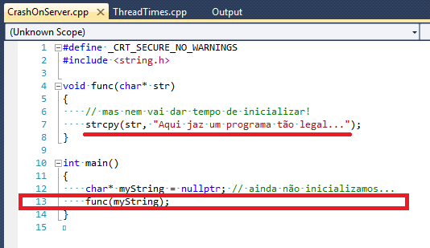 Depuração de emergência: receita de bolo 2011-10-18 [tag_coding] Continuando o papo sobre [o que fazer para analisar rapidamente um crash no servidor com o pacote WinDbg], na maioria das vezes a exceção lançada pelo processo está diretamente relacionada com um acesso indevido à memória, o que tem diversas vantagens sobre problemas mais complexos: depuracao-de-emergencia-receita-de-bolo |
| Qual Seu Número? 2011-10-17 [tag_movies] Aparentemente não há limites para a "criatividade" de Hollywood para comédias românticas. Quem diria que a Cindy (Anna Faris), da franquia Todo Mundo em Pânico, seria par romântico com o [Capitão América] (Chris Evans)? Um desafio interessante para ambos, visto que seus respectivos currículos de "menina fácil (e alvo de socos) em comédia-paródia" e "super-herói simpático" são ligeiramente diferentes nesse novo longa de Mark Mylod (Quem é Morto Sempre Aparece). qual-seu-numero |
| Família Vende Tudo 2011-10-16 [tag_movies] É fato que Lima Duarte está no estado de gênio, e cada novela que participa é um desperdício do Cinema. Semelhantes comparações podem ser feitas em boa parte do elenco de Família Vende Tudo, novo longa de Alain Fresnot. Este é um filme adiado em suas interpretações, por mais que não façam sentido ou soem deslocadas. E é aí que temos outro indício de desperdício, dessa vez no próprio Cinema: a capacidade de vender uma ideia divertida e fácil em uma história que sequer consegue chegar a uma conclusão sobre seu assunto central, e que desperdiça interpretações primorosas em um projeto sem pé nem cabeça. familia-vende-tudo |
| Coders at Work: Reflections on the Craft of Programming 2011-10-14 [tag_interview] [tag_coding] [tag_books] > "Personally I have never believed that it is possible to be a good coder without being a good programmer nor a good programmer without being a good designer, communicator, and thinker." - Jamie Zawinski coders-at-work |
| Os Goonies 2011-10-13 [tag_movies] "'Um grupo de meninos embarcam em uma aventura após encontrar o mapa de um suposto tesouro escondido.' É com esse argumento simples que se constrói um dos filmes mais empolgantes e divertidos dos anos 80. Essa é a união do roteirista Chris Columbus, de O Enigma da Pirâmide, do diretor Richard Donner, de [Superman], e do idealizador Steven Spielberg, de... precisa dizer algo? Essa união produziu uma espécie de esfera criativa nunca antes vista, e que até produz ecos na filmografia contemporânea, em que o exemplo mais recente é o filme-homenagem [Super 8], de J.J. Abrams." os-goonies |
| Copacabana 2011-10-11 [tag_movies] O novo trabalho do diretor-roteirista Marc Fitoussi faz um paralelo entre o estado de espírito de uma pessoa e o lugar onde esta vive. Para chegar a seus objetivos, rege de maneira impecável uma história em que as apostas que uma pessoa precisa fazer para chegar aonde quer não estão relacionadas com sua situação aparente, mas muito mais com seu estado interior e sua capacidade de transformar o mundo ao seu redor. copacabana |
| Cartas Para Julieta 2011-10-10 [tag_movies] Sophie e Victor estão noivos e vão passar uma "pré-lua-de-mel" na Itália, onde Victor (García Bernal) pretende conseguir contatos com fornecedores para o restaurante que pretende abrir. Enquanto isso, Sophie (Seyfried) se desilude com as supostas férias e procura algo melhor para fazer: escrever respostas para as mulheres que lotam a frente da casa de Julieta, a mesma da peça de Shakespeare, com cartas românticas. cartas-para-julieta |
| O Filme dos Espíritos 2011-10-08 [tag_movies] O Filme dos Espíritos é mais uma tentativa de "catequizar" (com o perdão da palavra) ou talvez educar os fiéis dessa crença religiosa da vida após a morte, dando sequência ao bom "Chico Xavier" e o desastroso As Mães de Chico Xavier. Aqui, porém, a alçada propagandista ganha contornos bem maiores que sua qualidade como filme, o que, de certa forma, lembra Olga, uma obra com o mesmo estigma. Dessa forma, o uso do cinema como ferramenta "educativa" se torna um completo desastre quando constatamos que toda essa ambição ideológica anti-aborto não se justifica em uma produção de caráter e gosto duvidosos. o-filme-dos-espiritos |
| Incêndios 2011-09-28 [tag_movies] Os melhores filmes, ou os que merecem revisitas mesmo depois de conhecermos o seu desfecho, geralmente são aqueles que permitem múltiplas interpretações e que conseguem impressionar pela sua engenhosa criação. Ou seja, ao mesmo tempo emocionam e possuem um prazer intelectual implícito em sua estrutura. Esse é sem dúvida o caso de Incêndios, que não apenas apresenta uma história arrebatadora do começo ao fim em seu nível emocional (personagens) como também permite análises em camadas mais racionais, sem com isso diminuir o impacto de sua história. incendios |
| Confiar 2011-09-27 [tag_movies] Dirigido e escrito pelos estreante no cinema David Schwimmer e Andy Bellin (esta co-roteirizada por Robert Festinger, do excelente Entre Quatro Paredes), este drama de tons realistas e de caráter emergencial conta a história de Annie, uma jovem colegial que acaba de completar 14 anos e que pertence a uma família tranquila e estruturada. Como todas as jovens de sua idade, costuma passar o tempo alheia à vida em sua volta, se comunicando com amigos virtuais através do celular e de seu computador (presente de aniversário de seu pai, um detalhe sutil, mas trágico). confiar |
| Pronta Para Amar 2011-09-21 [tag_movies] Nessa simpática comédia romântica que tenta fugir de vários clichês (não só do seu gênero), Kate Hudson encarna Marley, uma garota que teme relacionamentos mais que a morte (embora seja adepta do sexo casual), mas ao ser confrontada com esta ao descobrir ter um câncer incurável, resolve mudar radicalmente sua forma de viver, aproximando seus entes queridos, evitando encarar sua doença com seriedade e, quem sabe, conseguir um relacionamento com seu próprio médico. pronta-para-amar |
| Oitavo Encontro do Grupo C/C++ Brasil 2011-09-19 [tag_ccppbr] Esse final de semana ocorreu mais um dos inesquecíveis encontros dos programadores C++, dessa vez ao estilo "velhos tempos", com direito a entrada gratuita e um grupo mais coeso, quase já íntimo, e mais animado. oitavo-encontro-do-grupo-cc-brasil |
| Cowboys e Aliens 2011-09-18 [tag_movies] Não há muito o que falar da história em Cowboys & Aliens, novo filme de Jon Favreau (dos [dois] [Homem de Ferro] e Zathura - Uma Aventura Espacial). O título já torna tudo muito óbvio, por mais bizarro que isso seja. No entanto, acredito que a definição desse gênero misto acabe sendo o principal motivo do filme não conseguir "decolar" em nenhum momento, sendo constantemente cozinhado em forno brando. cowboys-e-aliens |
| Os Smurfs 2011-09-11 [tag_movies] É difícil dizer isso, mas o filme dos Smurfs diverte bem mais que seu primo ilegítimo: Alvin e os Esquilos (e [continuações]). A ideia de pegar elementos de CG para fazer gracinhas junto com personagens de carne e osso (e cor de pele) quase sempre termina em tragédia premeditada, e isso explica em parte o desânimo dos meus amigos, que sequer cogitaram ir ver o filme nos cinemas. os-smurfs |
| O Homem do Futuro 2011-09-11 [tag_movies] O novo longa de Cláudio Torres (dos divertidos A Mulher do Meu Amigo e A Mulher Invisível) flerta com mais um tema que faz parte do imaginário coletivo: quem nunca desejou mudar algo que fez no passado, principalmente se isso teve implicações negativas por toda sua vida? o-homem-do-futuro |
| Medianeras: Buenos Aires da Era do Amor Virtual 2011-09-11 [tag_movies] Estreia de Gustavo Taretto na direção de longas, Medianeras inicia já com uma proposta criativa e que funciona muito bem: com dois narradores em off, temos a impressão de assistir a dois filmes interlaçados que aos poucos se aproximam, o que por si só já revela muito sobre as ideias por trás da história. medianeras-buenos-aires-da-era-do-amor-digital |
| A Viagem de Lucia 2011-09-07 [tag_movies] Uma produção ítalo-argentina obscura que conta a história de Lúcia e Lea, duas mulheres com visões completamente diferentes da vida que acabam se encontrando e compartilham momentos que irão transformar a vida de uma delas. a-viagem-de-lucia |
| O Rei Leão 2011-09-05 [tag_movies] O Rei Leão visto como deve ser visto, ou seja, em 2D, consegue impressionar pela síntese dramática que escolhe para não tornar o programa demasiadamente infantil para o seu principal público-alvo (as crianças) mas consegue se manter íntegro e representar de maneira irretocável a contribuição Disney para manter viva a lenda e uma das peças mais conhecidas de Shakespeare: Hamlet. o-rei-leao |
| Watchmen: O Filme 2011-09-04 [tag_movies] Watchmen seria uma história sobre anti-heróis ou heróis como eles seriam no mundo real? Desde o começo do filme, nos vemos embarcados nestes pensamentos, ajudados pela magnífica introdução que mostra, em câmera lenta, os vigilantes do filme posando para fotos jornalísticas, em uma fotografia super-sensível que, utilizando tons de sépia para identificar o passado, demonstra, desde já, o apuro estético de uma produção que está claramente acima do gênero "adaptação de quadrinhos". watchmen |
| Viagem à Lua 2011-09-01 [tag_movies] O francês Georges Méliès foi um dos privilegiados que assistiu à famosa primeira projeção (coletiva) de Cinema da história: A chegada do trem na estação. E ficou maravilhado. Ao ganhar um protótipo de câmera criado por Robert William Paul, um cinematógrafo da época, ficou tão entusiasmado que saiu por aí filmando o cotidiano de Paris. Até que, sem querer, a câmera parou de rodar. Ao iniciar nova filmagem, percebeu que a ação na filmagem não batia com a sequência que estava gravada: nascia o stop-action, ou stop-motion. Com base nisso, começou a experimentar novas trucagens, no que foi descobrindo que a nova invenção não impunha limites à mente criativa: perspectiva forçada, múltiplas exposições e até filmagens em baixa e alta velocidade. Tudo isso através da câmera mágica. E isso há mais de 100 anos atrás! viagem-a-lua |
| Planeta dos Macacos: A Origem 2011-08-31 [tag_movies] Esse texto não é indicado para os que já viram algum filme da série Planeta dos Macacos, iniciada em 68. (Na verdade, nem o atual de 2011: leia depois de assistir.) Escrito pela dupla Rick Jaffa e Amanda Silver (que aqui também são produtores), o filme procura explicar o que ocorreu com o mundo em que Charlton Heston pousou no filme de 68, trazendo necessariamente à tona que o planeta onde os símios caçam os humanos é a própria Terra. É significativo, então, que o filme comece justamente mostrando chimpanzés sendo caçados por humanos para serem levados a um laboratório e servirem de cobaias para experimentos científicos onde os testes em humanos seriam muito perigosos. Mais do que isso: ao retratar essa realidade sob a ótica dos macacos, o filme de imediato toma o partidos destes, o que não é difícil de perceber ao notarmos a forma com que os animais são objetificados em prol da "ciência" e tornam-se, assim, um meio barato de possibilitar o avanço nas pesquisas e otimizar, assim, o retorno financeiro da instituição que deles se apropia. planeta-dos-macacos-a-origem |
| Lanterna Verde 2011-08-29 [tag_movies] Cada vez mais começo a acreditar que o uso de muitos roteiristas (nesse temos incríveis 7 pessoas colaborando!) acaba por nivelar por baixo uma história até com um certo potencial. Nesse novo filme de super-herói, a impressão geral que fica é que, ao tentar explicar tudo detalhadamente, para não restar dúvidas aos espectadores, foi feito um filme cuja chatice é inversamente proporcional ao número de efeitos visuais. lanterna-verde |
| Diário de Uma Busca 2011-08-29 [tag_movies] Assistir a filmes constantemente e por muito tempo te dá, aos poucos, a capacidade de discernir a linguagem de cada autor e, o que eu acho mais interessante de tudo, extrair as técnicas usadas de forma inconsciente, apenas deixando fluir a percepção comum de um espectador assistindo a uma sessão de cinema. É uma sensação meio que mágica. diario-de-uma-busca |
| Assalto ao Banco Central 2011-08-23 [tag_movies] Assalto ao Banco Central está longe de ser o filme insuportável pintado pela crítica. Porém, o que é mais importante: Assalto é um filme que decepciona em todos os gêneros que tenta se inserir. Dirigido por Marcos Paulo, que, no seu currículo, apresenta em sua maioria novelas e séries televisivas, o longa narra o assalto mais ambicioso da história do Brasil, quando, em 2005, mais de 160 milhões de reais foram roubados do Banco Central. O roteiro, escrito a seis mãos, se perde completamente ao ir contando em paralelo o início das investigações e a execução do plano dos assaltantes. Além de ser um recurso inútil do ponto de vista narrativo, faz perder toda a tensão do segundo ato, quando vemos a polícia federal perseguindo os bandidos com os tipos mais diversos de artimanhas. assalto-ao-banco-central |
| Um Parto de Viagem 2011-08-22 [tag_movies] Aparentemente, alguém achou engraçado colocar Robert Downey Jr. (Homem de Ferro, Sherlock Holmes) e Zach Galifianakis (Se Beber, Não Case 1 e 2) contracenando um filme inteiro. De fato, o resultado foi, no mínimo, interessante. Engraçado, é discutível. um-parto-de-viagem |
| O Solista 2011-08-22 [tag_movies] Seguindo o filme de duplas, dessa vez com Robert Downey Jr. e Jamie Foxx, o drama O Solista é baseado em livro homônimo escrito pelo jornalista-personagem Steve Lopez, que se torna obcecado pela vida de Nathaniel Ayers, um sem-teto que tinha tudo para ser um grande músico, mas devido aos seus problemas mentais, acaba se refugiando da sociedade nas ruas. o-solista |
| Mulher Nota Mil 2011-08-22 [tag_movies] Mulher Nota Mil representa precisamente a época em que foi produzido, bem no meio da década de 80. E, ao mesmo tempo, serve como um belo reflexo de produções recentes, como American Pie, que demonstram que no que tange à síndrome dos garotos impopulares que nunca conseguem namoradas no colégio, o cinema não avançou quase nada: foi apenas atualizado para os padrões modernos. mulher-nota-mil |
| Como Enlouquecer seu Chefe 2011-08-22 [tag_movies] Depois de ter visto Como Matar seu Chefe, resolvi rever o que eu considero uma versão melhorada (ou mais profunda) da questão do "Dilbert Life Style", que é esse Como Enlouquecer seu Chefe, ou mais corretamente no original, Office Space (Ambiente de Escritório?). como-enlouquecer-seu-chefe |
| Quero Matar Meu Chefe 2011-08-17 [tag_movies] Muitas pessoas com certeza rirão das piadas sobre trabalho, sexo e racismo de Quero Matar Meu Chefe, tradução não-literal de Horrible Bosses (Chefes Horríveis, o que não melhora muito as coisas). Novo trabalho de Seth Gordon (Surpresas do Amor e umas pontas em The Office e Community), o longa reúne mais talentos cômicos do que supostamente ele conseguirá no resto de sua vida como diretor. quero-matar-meu-chefe |
| A Árvore da Vida 2011-08-17 [tag_movies] O início de O Filme: Um Estudo Psicológico (1916), de Hugo Münsterberg, primeiro livro sobre crítica da história do cinema, coloca o fenômeno da percepção do movimento nos olhos de quem vê. A interpretação que fazemos das imagens estáticas em sequência é subjetiva, de forma que, mesmo que o autor da obra tenha escolhido o que filmar, é o espectador que irá extrair da imagem o significado. Dessa forma, um filme, como toda obra de arte, apenas se comunica quando houver um espectador, que irá se relacionar diretamente com a obra e a filtrar pelas nossas experiências de vida e como enxergamos a realidade à nossa volta. a-arvore-da-vida |
| Super 8 2011-08-15 [tag_movies] É tarefa injusta falar de Super 8 de J.J. Abrams (Lost, Missão: Impossível III , Star Trek) sem ter que enumerar todas as semelhanças, referência e homenagens que este faz para a obra de Spielberg (que aqui - coincidência? - é um dos produtores). Desde o ponto de vista das crianças até a escolha de um vilarejo com características semelhantes à cidade de E.T., somos levados por um grupo de jovens que está produzindo um filme de zumbis e acaba presenciando um acontecimento catastrófico que atinge proporções maiores que eles imaginavam a princípio, e que vai aos poucos tomando conta de toda a cidade. super-8 |
| G.I. Joe: A Origem de Cobra 2011-08-14 [tag_movies] G.I. Joe é um filme tão ruim assim como muitos têm falado? Talvez sim. O fato é que, baseado em uma franquia de action figure produzida pela empresa de brinquedos Hasbro (e vendido no Brasil sob o codinome Comandos em Ação), o filme tenta se firmar nessa superfície frágil e infantil usando conceitos mais infantis ainda que acabam por estabelecer relações entre os personagens absurdamente ilógicas e pedestres. g-i-joe-a-origem-de-cobra |
| Capitão América: O Primeiro Vingador 2011-08-09 [tag_movies] A Marvel parece que resolveu esquecer de vez a construção de histórias com profundidade dramática para dar vazão aos seus heróis secundários. O objetivo maior é o lançamento dos Vingadores, seu ambicioso projeto que exigiu a criação de diversos filmes, cada um retratando um personagem diferente que fará parte dessa equipe de super-heróis. capitao-america-o-primeiro-vingador |
| Melancolia 2011-08-07 [tag_movies] Lars von Trier é um realizador corajoso. Especialista em explorar as facetas menos nobres de nossos sentimentos, já ousou colocar Bjork em Dançando no Escuro, um musical sem final feliz, e Nicole Kidman no vilarejo de Dogville, onde mora o que existe de mais desprezível nas relações sociais. De uma maneira geral, a decadência humana sempre foi retratada em seus trabalhos de uma forma emblemática, porém, visual, que é onde reside a força do seu cinema. melancolia |
| Meia-Noite em Paris 2011-07-31 [tag_movies] Quando sabemos estar admirando o último enquadramento de Meia-Noite em Paris, é de doer o coração. O longa de Allen não só empolga, e muito, no início, como mantém suspenso o interesse pelos personagens (que não são poucos). Acredito que, se fosse possível, assistiríamos mais duas, três, ou até quatro horas de filmagem nesse universo criado por Allen. meia-noite-em-paris |
| Edward Mãos de Tesoura 2011-07-31 [tag_movies] Mesmo mais de 20 anos depois de produzido, o conto do homem inacabado com tesouras no lugar de dedos continua se sustentando bem, e por vários motivos que fazem hoje de Tim Burton ainda um diretor de destaque. edward-maos-de-tesoura |
| Apenas o Fim 2011-07-31 [tag_movies] Geralmente as condições em que ocorrem a produção de um filme não importam muito, e servem somente a título de curiosidade. Nesse caso, o diretor (e roteirista?) Matheus Souza, estudante de cinema ainda, conseguiu com a ajuda dos colegas o dinheiro necessário para realizar este longa ainda com 19 anos, o que se tornou um exercício de cinema no mínimo competente. apenas-o-fim |
| A Serbian Film - Terror sem Limites 2011-07-31 [tag_movies] Segundo um relatório sobre a Guerra da Bósnia feito pela Agência Central de Inteligência americana, 90% dos crimes de guerra foram cometidos pelos sérvios. Em uma região conturbada política e religiosamente por mais de um século, o povo sérvio se acostumou a um ambiente instável. A grande questão é como isso afeta a moral dessas pessoas. a-serbian-film |
| Depuração de emergência 2011-10-18 [tag_coding] Continuando o papo sobre [o que fazer para analisar rapidamente um crash no servidor com o pacote WinDbg], na maioria das vezes a exceção lançada pelo processo está diretamente relacionada com um acesso indevido à memória, o que tem diversas vantagens sobre problemas mais complexos: depuracao-de-emergencia-receita-de-bolo |
|
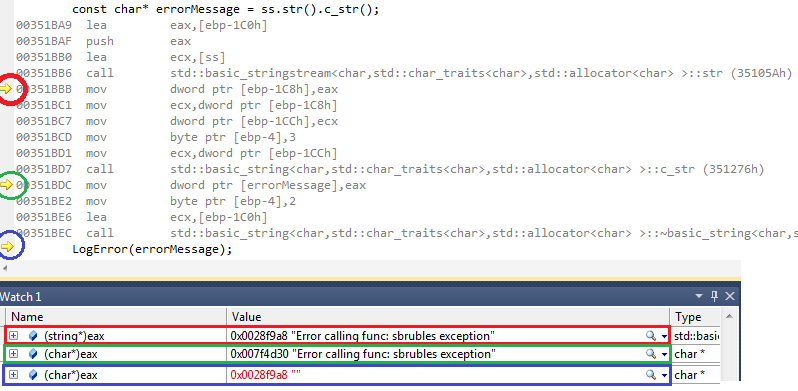 Cuidado com variáveis temporárias 2011-07-26 [tag_coding] Um dos problemas que a linguagem C++ possui para seus iniciantes é o de não deixar muito explícito partes do seu comportamento, principalmente as partes que lidam com ponteiros/referências e o jogo da vida dos objetos. Às vezes a coisa fica de tal como complexa que fica até difícil explicar o porquê das coisas. cuidado-com-variaveis-temporarias |
| Harry Potter e as Relíquias da Morte - Parte 2 2011-07-22 [tag_movies] ## Prólogo Um filme que carrega o peso de uma saga que dura quase dez anos merece um final, no mínimo, apropriado. Felizmente, nas mãos do visualmente habilidoso David Yates, essa premissa é cumprida com louvor. harry-potter-e-as-reliquias-da-morte-parte-2 |
| Carros 2 2011-07-20 [tag_movies] O ponto mais forte no longa original eram as ideias por trás do conceito de carros se comportando como humanos. E até os pequenos detalhes de produção, como o fato dos mosquitos voando serem pequenos carrinhos com asas, contribuíam para tornar aquele universo todo especial. carros-2 |
| Operação Presente 2011-07-12 [tag_movies] A nova animação da Sony parte para o óbvio gênero de filmes natalinos dessa época, mas faz bonito: Operação Presente subverte nossos conceitos do que é atualmente o natal, parte do ponto de vista do Papai Noel e seus elfos e acusa de maneira inteligente o modo superficial pelo qual muitos de nós enxergamos essa data que um dia foi muito especial. operacao-presente |
| The Housemaid 2011-07-08 [tag_movies] O longa possui algumas reviravoltas que podem soar esquisito à cultura ocidental, mas a base do drama, que são os acontecimentos macabros rodeando a honrada família do professor de piano, criam um clima, se não de tensão, definitivamente macabro e sexy. the-housemaid |
| E foi-se o TDC 2011-07-07 Dessa vez, talvez pelo dia de semana, havia poucos participantes. Isso, contudo, não evitou que o conteúdo e a qualidade das palestras fosse, como sempre, de alto nível. Infelizmente, só cheguei a partir da palestra de Antonio Ribeiro sobre uma Simulação Distribuída focando no trânsito de São Paulo. Há tempos esse é um tema debatido e ainda acredito que a tecnologia ainda vai resolver isso da melhor maneira possível: cada um em sua casa. e-foi-se-o-tdc |
| Transformers: O Lado Oculto da Lua 2011-07-06 [tag_movies] É muito difícil para quem começa a estudar aos poucos os segredos do cinema descobrir o que faz um filme ruim. Apenas o fato de não gostar do que se vê não é argumento satisfatório para entender quais mecanismos estão ali (ou não) para sabotar por completo uma experiência cinematográfica tão bem sucedida tecnicamente, como para mim foi esse Transformers 3. transformers-o-lado-oculto-da-lua |
| Os Pinguins do Papai 2011-07-04 [tag_movies] Sinopse: A vida de um homem de negócios começar a mudar após ele herdar de seu pai seis pinguins. Conforme ele avança em sua vida pessoal, sua vida profissional começa a despencar. Odeio falar mal dos filmes que não gosto, mas Os Pinguins do Papai é fraco, oportunista e covarde. os-pinguins-do-papai |
| Entrando Numa Fria Maior Ainda com a Família 2011-07-01 [tag_movies] Filme um pouco mais recatado que os outros da série, traz piadas mais contidas, um senso mais família, com De Niro no automático e Ben Stiller pouco inspirado em suas caretas. Ainda sai de tom com conflitos montados e desmontados na mesma hora, como a participação "especial" de Hoffman encontrando sua mulher com o simpático Kevin (e o beijo entre eles logo se desfaz), ou a luta final entre Jack e Greg, quando, ao entrar na ambulância, Jack confessa ter notado ele falar a verdade quando disse sobre a noite passada pela pulsação (e por que continuaram brigando?) entrando-numa-fria-maior-ainda-com-a-familia |
| Além da Vida 2011-07-01 [tag_movies] Para quem não havia assistido o trailer do novo trabalho de Clint Eastwood (Menina de Ouro) tem a impressão que os conflitos do primeiro ato são apresentados de uma maneira mais impactante do que um drama seria capaz. Como o exemplo mais marcante, escolho a situação em que se encontra Marie LeLay (Cécile de France), uma jornalista de sucesso e que passa o momento mais claustrofóbico do longa. alem-da-vida |
| A Árvore 2011-07-01 [tag_movies] Estava aguardando ansioso por esse dia. E confesso que foi exatamente como eu esperava. Com uma direção focada em contar sobre uma família que vive às sombras de uma gigantesca árvore que serve de confessionário, com direito a cenas de pseudo-terror (com reflexo no vidro do carro seguido por câmera lateral) e com uma visão bem peculiar sobre como conduzir a vida, apesar dos infortúnios que atingem todo mundo. a-arvore |
| TDC 2011 2011-06-30 Se você gosta do tema e possui dúvidas a respeito, ou gostaria de mais detalhes sobre outros projetos, não deixe de comparecer. Antes e depois da palestra estarei disponível para conversarmos. O mais interessante de termos uma trilha em C++ é reunir pessoas envolvidas em torno da linguagem, não importando muito a área. Somos um grupo pequeno, e é importante que tenhamos um contato mais próximo de vez em quando. tdc-2011 |
| Psicose 2011-06-30 [tag_movies] A sensação de assistir Psicose na telona do cinema se compara a voltar ao próprio tempo em que o filme estreou. Ainda considerando que a última vez que o assisti estava eu abaixo da regra dos 15 anos e, portanto, livre do meu senso crítico, me fez revisitar as sequências mais importantes do longa como se agora sim eu tivesse algo a dizer. Ledo engano. Saí do cinema sem saber mentalizar uma frase sequer. Nem de efeito. Estava sem palavras diante de uma obra de arte. Petrificado. Extasiado. Feliz. psicose |
| O Segredo dos Seus Olhos 2011-06-26 [tag_movies] Juan José Campanella ([O Filho da Noiva], Clube da Lua) mostra como um roteiro bem escrito e uma direção impecável conseguem apresentar duas tramas entrecortadas de uma maneira tão fluida e transparente que, no fundo, parece que estamos assistindo a uma única história. Como se fosse pouco, a narrativa se desenvolve alternando um presente e um passado separados por mais de 25 anos. Em uma obra com tantas virtudes, acompanhar a evolução do personagem de Ricardo Darín (Un Cuento Chino) através desses dois momentos em sua vida é mais um bônus nesse filme que merece ser assistido por muitas e muitas vezes. o-segredo-dos-seus-olhos |
| Guerra nas Estrelas 2011-06-23 [tag_movies] Sem modelos anteriores além dos arquétipos narrativos como a clássica jornada do herói, o primeiro Guerra nas Estrelas brilha pela sua produção inusitada. Flertando entre o trash e o onírico fantasioso precursor da era das superproduções, o trabalho de George Lucas transita sem avisar entre o risível e o épico. Ele pode ser entendido como a mescla perfeita que gera o pop, esse sentimento de auto-importância criado na base do berro que fascinou e fascina gerações. star-wars-guerra-nas-estrelas |
| Quebrando o Tabu 2011-06-23 [tag_movies] Existem filmes que não são apenas interessantes de se assistir como mais uma manifestação de arte. Os documentários, por natureza, quase sempre tentam nos envolver em algum tipo de realidade que, por muitas vezes não fazer parte da nossa, é preciso ser escancarada e dissecada da maneira como os idealizadores do projeto acreditam ser importante. quebrando-o-tabu |
| Circo dos Horrores: O Aprendiz de Vampiro 2011-06-20 [tag_movies] Darren (Massoglia) é um garoto estilo certinho, mas é amigo do problemático Steve (Hutcherson). Ambos acabam indo a um circo de horrores e lá conhecem um homem misterioso, Lasten Crepsley (Reilly), que se revela um vampiro secular. Após uma série de eventos, como o título já denuncia, Darren será obrigado a deixar sua vida normal e se tornar seu assistente. Porém, para complicar as coisas, ele irá descobrir que existem algumas escolhas a ser feitas no mundo dos vampiros. cirque-du-freak-o-assistente-de-vampiro |
| O Homem que Sabia Demais 2011-06-16 [tag_movies] Para Hitchcock, aparentemente, não houve nenhum outro trabalho de destaque antes de O Homem que Sabia Demais. Digo pelos famosos títulos de [Psicose], [Janela Indiscreta] e [Os Pássaros]. Até porque, de acordo com o IMDB, Hitchcock começou sua carreira em 22, o que quer dizer que temos aí cerca de 12 anos de amadurecimento do uso de sua técnica indiscutivelmente coesa em sua capacidade de gerar tensão. o-homem-que-sabia-demais-1934 |
| Um Gato em Paris 2011-06-12 [tag_movies] A trilha sonora fantasiosa que evoca tanto os [Batman de atualmente] como, de uma forma mais lúdica, os policiais infantis que líamos quando crianças, abre as cortinas para o novo trabalho de Alain Gagnol, projeto de mais de cinco anos onde, debruçado com sua equipe de 60 pessoas sobre os mais de 40.000 desenhos criados à mão, revela uma estética curiosa e ao mesmo tempo divertida. um-gato-em-paris |
| Star Wars, Episódio III: A Vingança dos Sith 2011-06-12 [tag_movies] A impressão que temos ao assistir o último capítulo da nova saga criada por George Lucas é que este preparou os [dois] [filmes] iniciais tão somente para ter a chance de produzir este terceiro, tamanho o peso narrativo que o diferencia dos seus antecessores. star-wars-episodio-iii-a-vinganca-dos-sith |
| O Pai dos Meus Filhos 2011-06-12 [tag_movies] A diretora-roteirista Mia Hansen-Løve consegue prender a atenção mesmo em um filme cujo assunto fica vago do começo ao fim. O mais irritante, contudo, em O Pai dos Meus Filhos, é a maneira covarde com que ele flerta com o nosso próprio sentido de narrativa. o-pai-dos-meus-filhos |
| Kung Fu Panda 2 2011-06-12 [tag_movies] A continuação das aventuras de Po, agora o Dragão Guerreiro, e os cinco furiosos, contém em sua essência os mesmos elementos que fizeram do original um sucesso como filme: as piadas irreverentes em torno da figura de um panda lutando Kung Fu (e Po é um personagem irreverente não apenas por natureza, mas em sua própria concepção de personalidade divertida), as sequências de luta orquestradas pela animada trilha sonora (que aqui já se torna um pouco mais confusa, e desafina um pouco se revermos o primeiro filme) e os primorosos efeitos visuais, que aqui ainda contém o interessante efeito da água no pelo de Po. kung-fu-panda-2 |
| A Queda! As Últimas Horas de Hitler 2011-06-12 [tag_movies] A proposta de evitar criar-se um microcosmos do ambiente onde Hitler passou seus últimos dias, enclausurado em um bunker com seu alto escalão e suas pessoas mais próximas, é digno de nota, pois, no decorrer da projeção, temos a sensação que muitas coisas estão acontecendo com o povo da Alemanha, não apenas em suas crescentes baixas de exércitos e civis, mas, principalmente, em sua moral. a-queda-as-ultimas-horas-de-hitler |
| Vídeos do boostcon 2011-06-10 Para se aquecer enquanto a trilha de C++ do TDC não acontece, o Grupo C/C++ passou um linque para os vídeos do boostcon, que, pelo que entendi, é um evento onde as pessoas falam como boost é legal e por que você deveria usar boost em seu projeto C++. Pelos títulos (ainda não os assisti) existem assuntos dos mais diversos, e talvez seja uma forma de catequizar a equipe onde você trabalha e que usa coisas bem piores do que boost para programar. videos-do-boostcon |
| Trilha de C++ organizada pelo grupo C/C++ Brasil 2011-06-10 Sim, nós temos C++! Apesar de ser uma linguagem dita ultrapassada pelos brazucas, o TDC desse ano terá uma trilha de C++ disponível para todo tipo de público que aprecia ou precisa dos poderes de C++ em seu dia-a-dia. trilha-de-c-organizada-pelo-grupo-cc-brasil |
| Minhas Mães e Meu Pai 2011-06-08 [tag_movies] Annete Bening é uma atriz talentosa. Seu único trabalho que acompanhei de perto, Beleza Americana, foi um exercício de neurose formidável, ainda que equivocado em sua exagerada conclusão final (culpa do roteiro?). Porém, através dele é possível ter uma noção muito boa das capacidades de Bening interpretando pessoas com algum descontrole emocional que a leve a influenciar negativamente a vida dos seus próximos. minhas-maes-e-meu-pai |
| X-Men: Primeira Classe 2011-06-07 [tag_movies] Quando se fala de X-Men no cinema é sempre bom relembrar que uma ficção científica, assim como qualquer filme, é um documentário da época em que foi filmado. No caso do gênero Sci-Fi, as liberdades são significativamente maiores, e por isso mesmo permitem alegorias/caracterizações que nos levam a viajar para outro universo e debater temas tão presentes no mundo de hoje quanto o preconceito e a intolerância. x-men-primeira-classe |
| Cronogramas baseados em fatos reais 2011-06-04 [Já falei sobre cronogramas] por aqui e tudo que disse ainda se aplica. Contudo, comentei brevemente sobre entender seu próprio ritmo, que, instintivamente, sabia ser verdade. Depois que [li um pouco mais sobre técnicas XP/Scrum] (que nada mais são do que formalizações do que os programadores Agile perceberam no decorrer dos seus projetos) achei uma fórmula simples para transformar o tempo estimado em tempo realista. cronogramas-baseados-em-fatos-reais |
| Piratas do Caribe: Navegando em Águas Misteriosas 2011-06-01 [tag_movies] A direção de Bob Marshall resgata o antigo objetivo da Disney em transformar a atração do seu parque de diversões em um longa-metragem que tenha as mesmas características do seu brinquedo: um passeio que diverte em pontos estratégicos, localizados em cenários dedicados e com piratas que se parecem com os de verdade, porém, é claro, inofensivos. Talvez não uma mera coincidência, os trabalhos do diretor também navegam em águas mornas: acostumado com eventos episódicos típicos do gênero musical (Nine e Chicago estão em sua lista), Marshall repete o feito de nos levar por um simples passeio turístico por sets de filmagem que mal conseguem se unir para contar uma história coesa, tudo sob o rótulo de aventura. piratas-do-caribe-4-navegando-em-aguas-misteriosas |
| Star Wars, Episódio II: Ataque dos Clones 2011-05-29 [tag_movies] A República começa a perder a força, e o desespero pela resolução da crise no Senado faz com que forças especiais sejam entregues ao Chanceler Palpatine. Como podemos ver, a história caminha em ritmo adequado para o ponto de encontro com o antes chamado Guerra nas Estrelas e rebatizado para Episódio IV. star-wars-episodio-ii-ataque-dos-clones |
| Singularidades de uma Rapariga Loura 2011-05-29 [tag_movies] O filme 9 - A Salvação se baseia em um curta anteriormente produzido. O resultado é que temos uma história curta o suficiente para ser contada em 10 minutos ser expandida em tediosos 79 minutos. O que se aprende nesse filme é que não se deve estender uma história, a não ser que se saiba o que se está fazendo. Infelizmente, Manoel de Oliveira nos apresenta um filme completamente diferente com a mesma peculiaridade: parece mais longo do que deveria. singularidades-de-uma-rapariga-loura |
|
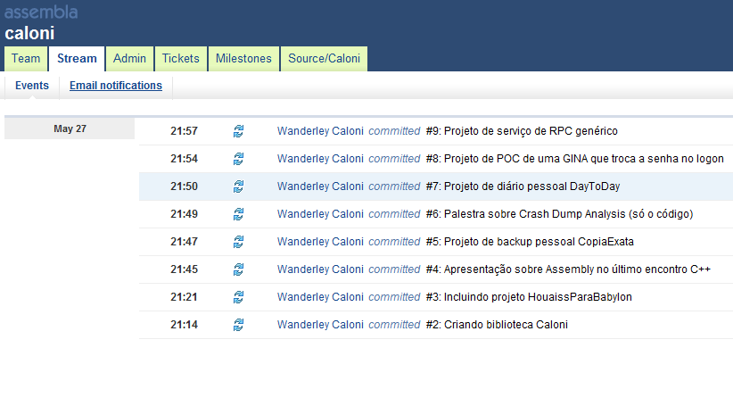 Novo branch para projetos do Caloni.com.br 2011-05-29 Reestruturei meus projetos caseiros e coloquei todos em um branch no repositório do Assembla. A partir dele começarei a reestruturas os códigos de exemplo do saite, o deve facilitar o acesso. Para usuários do Bazaar, como eu, basta puxar o branch usando [seu endereço] usando o comando `bzr get`: novo-branch-para-projetos-do-caloni-com-br |
| Star Wars, Episódio I: A Ameaça Fantasma 2011-05-27 [tag_movies] Quando se mexe com algo sagrado como a trilogia clássica de Star Wars ou alguém está produzindo uma sátira ou essa pessoa é George Lucas. Por mais que os fãs apontem defeitos e/ou sugestões, o Criador da saga sempre teve palavra final. Portanto, não é de se admirar que a nova trilogia comece com seu roteiro, direção, e autoridade. star-wars-episodio-i-a-ameaca-fantasma |
| Velozes & Furiosos 5: Operação Rio 2011-05-25 [tag_movies] O Rio de Janeiro está em alta no cinema mundial esse ano: palco de duas produções internacionais de prestígio, a uma vez chamada Cidade Maravilhosa começa a mostrar aos poucos sua nova cara para o mundo, mesmo que sob a ótica distorcida das produções de Hollywood. velozes-e-furiosos-5-operacao-rio |
| Wall Street Poder e Cobiça 2011-05-23 [tag_movies] Após ganhar o oscar por Platoon, Oliver Stone decide focar suas lentes para sua terra natal e abordar temas em torno do que faz mudar, nós e um país inteiro, a maneira de se enxergar: o dinheiro. A história se passa coincidentemente um pouco antes dos escândalos dos títulos podres e de informação privilegiada (uma rima da vida real no mínimo interessante, se considerarmos sua continuação após a crise de 2008). Michael Douglas faz seu primeiro papel de mau, deixando os antigos mocinhos da televisão que interpretava para trás. Charlie Sheen, por sua vez, tem a missão de transitar por ambos os extremos da moral, uma tarefa ingrata, se consideramos que terá que disputar atenção com um antagonista tão magnético quanto Gordon Gekko. wall-street-poder-e-cobica |
| Comparando strings no WinDbg 2011-05-22 [tag_coding] O WinDbg fornece aos programadores diversos meios (muitos redundantes) de comparar valores inteiros em quaquer lugar da memória, em qualquer tamanho (8, 16, 32, 64 bits). Porém, quando precisamos comparar strings, que todos sabem ser uma sequência de bytes de tamanho arbitrário (se for em C, até o zero terminador). comparando-strings-no-windbg |
| Garota Infernal 2011-05-21 [tag_movies] Aprendemos duas coisas assistindo Garota Infernal: que não se dá Oscar de melhor roteiro para uma estreante com delírios de grandeza (Diablo Cody, de Juno) e não se coloca atrizes como Megan Fox (Transformers e... argh! Transformers 2), que rivaliza com Kristen Stewart em atuação, em um papel principal. garota-infernal |
| Os Agentes do Destino 2011-05-19 [tag_movies] Em uma época em que religião e economia precisam ser reinventadas, a visão mesclada de ambas em uma organização fria e calculista não deixa de ser no mínimo curiosa. Porém, mais do que isso é constatarmos que os homens sisudos do filme têm por função coordenar algo que para nós, seres humanos, especialmente em tempos de crise, é sabidamente a única coisa de que realmente somos donos: o livre arbítrio. os-agentes-do-destino |
| Sem reflection 2011-05-18 [tag_coding] Em C++ não temos (ainda) a possibilidade de listarmos, por exemplo, a lista de métodos de um determinado tipo, a fim de chamá-lo pelo nome em tempo de execução. Algo assim: class MyClass { public: void Method1(); sem-reflection |
| Scott Pilgrim Contra o Mundo 2011-05-16 [tag_movies] Scott Pilgrim é o tipo de filme que abraça um conceito até o fim. Melhor: começa como um filme comum, mas vai apresentando o seu conceito de forma orgânica e cada vez mais intensa. E intensidade é uma palavra que resume muito bem toda a experiência que esse filme proporciona. scott-pilgrim-contra-o-mundo |
| Coincidências do Amor 2011-05-16 [tag_movies] Kassie (Jenifer Aniston) deseja ser mãe, mas não possui nenhum parceiro nem deseja ter um, se contentando com os ombros amigos de Wally (Jason Bateman, de Juno), que sempre está por perto. Porém, sua idade avançando a deixa preocupada a ponto de pensar em ter o filho por conta própria, usando o já não tão modernoso método de inseminação artificial. Para isso, decide procurar um candidato que se encaixe em seus padrões de homem bem-sucedido (Patrick Wilson, em uma aparição apagada) e anuncia em uma festa que será fecundada pelo esperma do tal sujeito que será, acreditem, gerado naquela mesma noite durante a festa. coincidencias-do-amor |
| Hop Rebeldes sem Páscoa 2011-05-01 [tag_movies] A cada cinco minutos do filme, a cada cena obviamente maquiada e implantada na narrativa da maneira mais artificial possível, eu me fazia uma nota mental que dizia sempre a mesma coisa: "É um filme feito pra Páscoa; pra ESSA Páscoa". hop-rebeldes-sem-pascoa |
| Bebês 2011-05-01 [tag_movies] O filme mostra a história de quatro bebês espalhados em quatro lugares do planeta bem diferentes entre si. O que mais impressiona é o fato de que, apesar das culturas serem tão diferentes, o filme enfoca justamente o que é comum a todo bebê: mamar, chorar, a curiosidade, as primeiras engatinhadas... bebes |
| Houaiss 1.3 2011-04-28 Erroneamente imaginando que a falta de acesso tinha alguma coisa a ver com a escrita de arquivos no disco, ou até mesmo com a execução de processos, descobri depurando (o bom e velho depurador) que a origem do acesso negado estava na função AssignProcessToJobObject.aspx). Misteriosamente, no Windows 7, ao chamar essa função ocorre esse erro, independente da execução ser como administrador ou não. houaiss-1-3 |
| Um Conto Chinês 2011-04-27 [tag_movies] Assistir um filme argentino, em espanhol, em Buenos Aires, pode ser uma experiência inspiradora, ainda mais se estivermos falando de Cinema com C maiúsculo. Independente das minhas parcas capacidades de entender diálogos rápidos de castelhano, Cuento Chino consegue contar sua história com o uso de expressões, trilha sonora, e, principalmente, seu aspecto visual, que emprega um ritmo muito maior se fossem utilizados diálogos. um-conto-chines |
| Turnê 2011-04-27 [tag_movies] Há um estudo de personagem envolvido em Turnê. Com base em sua trajetória, podemos dizer que os acontecimentos que acompanhamos nunca entendiam, pois abrem cada vez mais a cortina que obscurecia a verdadeira história do grupo de meninas que saem pela França fazendo shows bizarros com aspecto decadente e, principalmente, do seu empresário. turne |
| Rio 2011-04-27 [tag_movies] Mais um filme visto em castelhano. Tenho a dizer que os dubladores argentinos são tão competentes quanto os nossos, e acompanhar a trajetória de Blu por Rio de Janeiro, sob o ponto de vista dos portenhos, foi mais uma experiência pra vida cinematográfica. rio |
| Polaróides Urbanas 2011-04-27 [tag_movies] O único exemplo cinematográfico de Miguel Falabela como diretor demonstra o talento de seu idealizador no formato tão conhecido por ele e praticado por anos a fio: o teatro. Considerar, contudo, Polaroides Urbanas como um filme, que deve narrar sua história principalmente por elementos visuais, ou pelo menos, que esses elementos ajudem os diálogos de seus personagens, isso é outra história. polaroides-urbanas |
| O Fantástico Sr. Raposo 2011-04-27 [tag_movies] Ainda que mantenha a simplicidade em suas premissas, e divirta por causa disso, para os adultos diverte ainda mais, pois temos a sensação de acompanhar uma história dupla, com os trejeitos adultos dos personagens animais em nossa volta. De quebra, ainda temos um pensamento filosófico, com a ideia que todos aqueles bichos agindo como humanos são "selvagens", cria-se uma impressão de que, no fundo, o ser humano pode se encaixar muito bem nessa perspectiva. o-fantastico-sr-raposo |
| Jumper 2011-04-27 [tag_movies] Em vários momentos de Jumper, principalmente na sua conclusão, podemos sentir o desperdício completo de uma boa ideia, melhor aproveitada em um filme mais intrigante do que este. Apesar de vermos, por exemplo, alguns cortes "inovadores", em que o personagem com poderes avança vários metros à frente da calçada e a câmera faz uma mudança de foco dele para ele mesmo, e ainda que algumas cenas de ação sejam extremamente efetivas, como a perseguição de um Jumper pelo outro através dos lugares que este vai, não há nada mais vazio que a razão de ser dos paladinos, que acabam por representar, em seu máximo, uma desculpa boba para ação. jumper |
| Invasão do Mundo: Batalha de Los Angeles 2011-04-27 [tag_movies] Cloverfield abriu o portal de obras de ficção filmados em estilo documental, mesmo em uma produção cara e mais aprimorada que o experimento primordial de Bruxa de Blair. Portanto, o que vemos em Invasão do Mundo é um conceito já, de certa forma, aglutinado aos gostos do espectador. O que não quer dizer, é claro, que toda obra do gênero já parte do pressuposto que será uma experiência semelhante às obras anteriores, pois tudo sempre vai depender da condução da narrativa, independente da técnica que se use. invasao-do-mundo-batalha-de-los-angeles |
| Instinto Secreto 2011-04-27 [tag_movies] Falarei brevemente deste que, para mim, é uma das maiores surpresas em Home Vídeo em muito tempo. A princípio, o filme emprega uma dinâmica inovadora com um mesmo personagem representado por duas psiques/atores, e o uso de atores que conseguem passar a impressão de serem a mesma pessoa (Kevin Costner e William Hurt) é mecanicamente a melhor coisa do filme. instinto-secreto |
| As Mães de Chico Xavier 2011-04-27 [tag_movies] Como grande sucesso do primeiro longa metragem que mostra a vida do famoso espírita Chico Xavier, vemos uma tentativa de realizar uma franquia com um seriado de televisão e, agora, com histórias alternativas que giram em torno dos poderes do aclamado médium. as-maes-de-chico-xavier |
| Amor e Inocência 2011-04-27 [tag_movies] Depois de acompanharmos as divertidas adaptações dos romances de Jane Austen (Razão e Sensibilidade, Emma, Orgulho e Preconceito), chegou a hora de vermos a história da própria Jane, e como ela se tornou a escritora dos romances de época. amor-e-inocencia |
| A Revolução dos Bichos 2011-04-27 [tag_movies] Nunca recomendo a ninguém que leia um livro antes de assistir à sua adaptação cinematografia. Por motivos óbvios. É grande a chance que a pessoa irá se decepcionar com relação a detalhes ou omissões do roteiro, construção de personagens e cenários que já estavam dentro do imaginário do espectador antes mesmo dele vislumbrar a primeira cena do filme. Isso pode ser maléfico em muitos casos, e benéfico em raríssimas exceções, das quais lembro de cabeça apenas Contato. a-revolucao-dos-bichos |
| A Minha Versão do Amor 2011-04-27 [tag_movies] Paul Giamatti é uma das melhores surpresas que se poderia esperar desse início de século para o cinema. Sempre envolvido em história no mínimo curiosas (Sideways) e em no máximo transcendentais (Sinédoque), temos aqui um conjunto das duas coisas espelhadas em um personagem desde os primeiros minutos de projeção que nos fascina pela sua mente conturbada e sua alma acuada, tão humano quanto qualquer um de nós foi em um dado período da vida. a-minha-versao-do-amor |
| O Senhor das Armas 2011-04-07 [tag_movies] O roteirista-diretor Andrew Niccol, que esteve nessa função dupla nas produções Gattaca e S1mone, além de ter escrito O Show de Truman e O Terminal, dessa vez parte para uma imersão no real, tratando do submundo do comércio ilegal de armas. o-senhor-das-armas |
| O Vencedor 2011-04-02 [tag_movies] O filme começa como um documentário, mas corta para outro documentário sobre o vício do irmão. Isso acaba derrubando nossa visão inicial, mas o tom documental dá realismo ao filme. A atuação de Bale é tão mais presente que consegue apresentar essa dualidade do antigo campeão de forma impecavelmente equilibrada. o-vencedor |
| Sucker Punch: Mundo Surreal 2011-03-29 [tag_movies] Cenas de ação cheias de adrenalina e perfeição técnica, uma fotografia e direção de arte extremamente competentes e uma trilha sonora que parece que foi feita para cada cena. Quando assistimos aos mundos imaginários, a sensação dos efeitos visuais é de tirar o fôlego. Dirigido com vigor com movimentos de câmera suntuosos, ou cortes precisos para mostrar a ação de todos os ângulos, nesse momento não precisamos sequer pensar sobre a trama principal; não queremos. sucker-punch-mundo-surreal |
| O Julgamento do Diabo 2011-03-28 [tag_movies] Existe uma relação entre esse primeiro (e único) longa de Baldwin e um filme de 1941 chamado "The Devil and Daniel Webster": o protagonista é o mesmo Daniel Webster. Ambos possuem dois títulos: são chamados "The Devil and Daniel Webster", porém o de 1941 também possui o título "All That Money Can Buy", enquanto esse de 2007 é chamado também de "Shortcut to Happiness". o-julgamento-do-diabo |
| Atividade Paranormal Tóquio 2011-03-28 [tag_movies] Verdade seja dita: os asiáticos sabem fazer terror como nunca. Repassando a mesma história no primeiro fenômeno da "série", essa versão japonesa consegue ao mesmo tempo soar mais como trash e, exatamente por isso, assusta bem mais. atividade-paranormal-toquio |
| Arca Russa 2011-03-28 [tag_movies] Arca Russa é uma experiência que, como cinéfilos que somos, devemos assistir para aprender o que uma técnica como o plano-sequência consegue em termos de narrativa. Como seres humanos, contudo, é fato que muitos poderão (e irão) achar essa experiência um verdadeiro porre. arca-russa |
| Loucos por Nada 2011-03-24 [tag_movies] O primeiro trabalho de longa metragem cinematográfico (já havia feito trabalhos para a TV) de Taika Waititi é simpático e divertido de assistir. Talvez pelo fato de uma produção Indie ser simpática pela própria natureza de agradar pelo diferente e pela quebra das amarras hollywoodianas que demarcam o terreno onde as produções dignas de pipoca devem ser produzidas. loucos-por-nada |
|
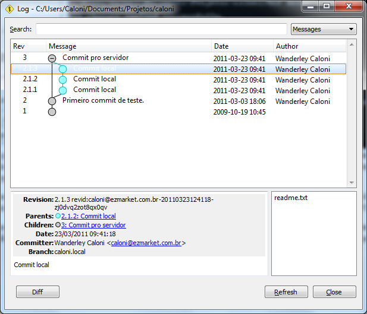 Bazaar com Subversion 2011-03-23 Para pessoas que ficaram viciadas em commits curtos e todo o histórico do fonte na própria máquina, foi uma surpresa descobrir que com o uso do plugin [bzr-svn] (já incluso no pacote de instalação), consigo ainda utilizar o Bazaar, mesmo que agora esteja trabalhando com um branch do Subversion. bazaar-com-subversion |
| Passe Livre 2011-03-22 [tag_movies] Seguindo o exemplo de Rango, temos mais um filme com referências sutis que funcionam a maior parte do tempo. Com uma fotografia saudosista, de um granulado quase apático, e trilhas selecionadas a dedo (e não são muitas, já que apenas são inseridas em momentos pontuais), o novo trabalho dos irmãos Farrely (Quem Vai Ficar com Mary; Eu, Eu Mesmo e Irene) se posiciona acima da média das comédias românticas exatamente pela narrativa contida que evita o besteirol já cansativo na maioria das obras do gênero. passe-livre |
| Houaiss no Kindle 2011-03-22 O blogue de José Ribeiro Pena Neto, aparentemente recém-criado, conseguiu utilizar minha solução de conversão do dicionário Houaiss para Babylon em algo mais incrívei ainda: converter, em alguns passos, a base de dados do Houaiss para o Amazon Kindle. houaiss-no-kindle |
| Sexo Sem Compromisso 2011-03-21 [tag_movies] Seguindo a tendência libertária de nossas relações sociais, que "evoluíram" sensivelmente nos últimos dez anos, "Sexo sem Compromisso" adota como pano de fundo a moderna relação de "amigos com benefícios", ou seja, o que o título do filme de fato sugere. sexo-sem-compromisso |
| Os Fantasmas de Scrooge 2011-03-21 [tag_movies] Jim Carrey em Motion Capture é, em poucas palavras, inusitadamente fabuloso. O trabalho feito em seu personagem, protagonista do clássico conto de Charles Dickens, que se mantém homônimo no título original, é, de longe, um trabalho rebuscado tanto nas expressões quanto nos movimentos do boneco através dos cenários igualmente trabalhados à exaustão. os-fantasmas-de-scrooge |
| Loucuras multithreading 2011-03-18 Estava eu depurando um sistema cliente/servidor com um tantão de threads e me veio à cabeça na volta pra casa como que um programador iniciante entenderia aquela bagunça de dar F10 em uma função e cair no meio de outra, dar outro F10 na outra e voltar pra primeira. loucuras-multithreading |
| Bruna Surfistinha 2011-03-15 [tag_movies] O momento que resume a ascenção de Bruna e ao mesmo tempo a visão do primeiro trabalho de Marcus Baldini é quando, em seu discurso na festa preparada por sua amiga, ela diz que acredita em si mesma e encoraja seus antitriões a fazerem o mesmo, pois se o fizerem, "conseguirão chegar aonde eu cheguei". E é precisamente nesse ponto que o filme deixa de ser uma visita convencional ao mundo da prostituição e vira uma discussão instigante sobre a capacidade das pessoas de fazer o seu melhor, não importando em que profissão ou atividade. bruna-surfistinha |
| Mistério da Rua 7 2011-03-14 [tag_movies] Mensagem de cunho católico no mesmo molde de O Nevoeiro, porém, determinado a sacrificar a história pelo bem de um contra-ataque nada elegante? Pelo menos temos alguns aspectos técnicos que, além de corretos, tornam a cinematografia distinta: note a fotografia pálida nos momentos de luz, representando, ironicamente, a falta cada vez maior da própria luz. misterio-da-rua-7 |
| Reorganizando meus feeds (de novo) 2011-03-10 Depois da minha opinião dada ao Efetividade na matéria sobre ferramentas para gerenciar as leituras tenho que atualizar que não utilizo mais o esquema das estrelinhas, porque acabei me dando conta que nunca lia o que marcava para ler "depois". reorganizando-meus-feeds-de-novo |
| Gnomeu e Julieta 2011-03-10 [tag_movies] Como diz a introdução dessa nova animação, a história que será contada já foi contada várias vezes. Porém, e continua a introdução, nunca foi contada da maneira que será nesse filme. É uma pena, portanto, constatar que a única coisa que muda nessa recriação de fato são a técnica (animação) e o apelo infantil (gnomos de jardim). Porém, pior do que isso, esse "remake" chega à proeza de tornar enfadonho acompanhar uma das mais populares histórias de William Shakespeare. gnomeu-e-julieta |
| Esposa de Mentirinha 2011-03-09 [tag_movies] "(...) o filme se baseie provavelmente em um fim-de-semana que ele mesmo tirou com seus amigos (...)" "As piadas do filme parecem internas e da vida real." Essas foram duas anotações da minha crítica de [Gente Grande], trabalho anterior de Adam Sandler e de seu fiel escudeiro-diretor, Dennis Dugan. esposa-de-mentirinha |
| Base64 2011-03-09 [tag_coding] No meio dos meus artigos pendentes, encontrei esse, de Luiz Rocha, que fala sobre a dificuldade de entender o que seria Base64: > Salve Caloni, > > Já leio o seu site a algum tempo. Realmente acho complicado, alguns eu nem entendo =D. Mais eh o seguinte, eu estou montando um projeto, mas eu não entendo nada de trabalhar com binários. Então pesquisei na internet, e achei um algoritmo que pode me ajudar, [na lógica]. É o base64 mas eu não entendi como ele converte e desconverte em binário. Será que vc pode me ajudar, obrigado!! base64 |
| Projeto DayToDay 2011-03-03 O DayToDay é um projetinho que criei para fazer tracking das minhas atividades diárias. Eu o criei há mais de 6 anos, e provavelmente se tivesse pensado em como isso seria útil para as pessoas compartilharem suas ideias e limitasse o número de caracteres para 140, estaria rico hoje. projeto-daytoday |
|
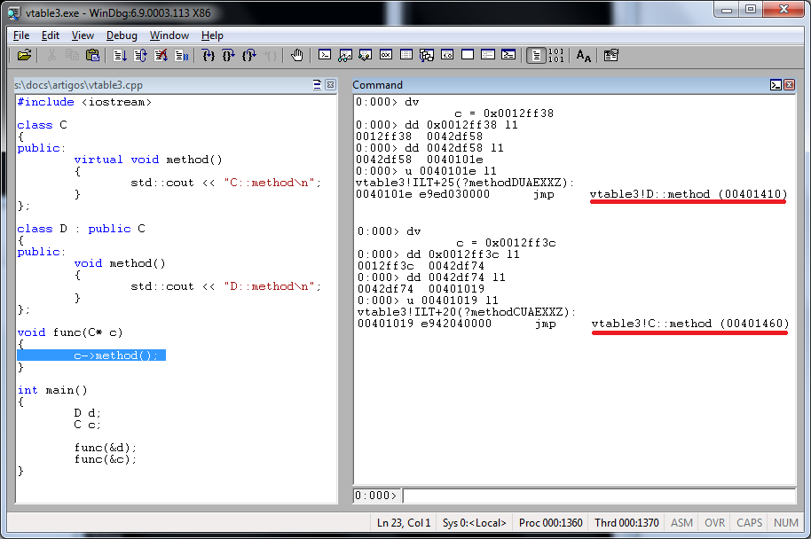 VTable 2011-03-01 [tag_coding] Acho que na breve história desse blogue nunca contei a história do vtable. No máximo fizemos um [hookzinho nos métodos de um componente COM]. Mas só. Não encontro uma analogia simples, assim, de cabeça. Então vou contar no cru, mesmo. Talvez seja até mais divertido. vtable |
| Cisne Negro 2011-02-23 [tag_movies] Nina é uma dançarina de balé que, assim como muitas, devota toda sua vida a essa arte. Perfeccionista ao extremo e apoiada pela mãe controladora, ela está prestes a participar da escolha de quem será a nova protagonista de uma nova versão do clássico O Lago dos Cisnes, dirigida pelo seu controverso diretor Thomas Leroy (Cassel). cisne-negro |
| 127 Horas 2011-02-23 [tag_movies] Com uma introdução em tela cortada em três partes, mostrando diversos cenários que evocam o dia-a-dia das pessoas e, principalmente, a correria dessas pessoas para quem o tempo é um bem cada vez mais escasso, o novo longa de Danny Boyle (Quem Quer Ser Um Milionário?) nos apresenta Aaron, sem muita distinção do resto da multidão. Na verdade, ele não é muito diferente de nenhum de nós. 127-horas |
| Simplesmente Feliz 2011-02-20 [tag_movies] Personagem carismática, a professora de primário Poppy faz de tudo para fazer as outras pessoas felizes e faz todo o tipo de piada e gracinha porque ela mesma deseja estar feliz o tempo todo. Morando aos 30 anos com uma amiga de longa data, ela renega os padrões convencionais que determinam o que seria uma vida feliz: casar, ter filhos, etc. Mais importante do que isso é tentar sempre melhorar o dia, nem que isso custe se aventurar pela discrição e mau humor das pessoas londrinas. simplesmente-feliz |
| O Turista 2011-02-20 [tag_movies] Há filmes que enriquecem ainda mais em uma revisita (O Sexto Sentido, Donnie Darko, Cidade dos Sonhos). Porém, ter um segredo final que pode mudar tudo o que vínhamos assistindo desde o início nem sempre se revela uma boa ideia (Os Esquecidos, A Caixa, A Passagem). Infelizmente, O Turista se encaixa nessa segunda situação. o-turista |
| A Noiva Perfeita 2011-02-20 [tag_movies] Luis Costa (Chabat) é um solteirão que vive com a mãe e suas inúmeras irmãs e que não deseja se casar tão cedo, apesar de já estar na casa dos 30. Pressionada pela família, que não aguenta mais os mimos que ele recebe, ele tem que encontrar uma pretendente o quanto antes. Não aguentando tanto assédio, resolve então "contratar" uma noiva para estragar o casamento e lhe dar um tempo de sossego. a-noiva-perfeita |
| Deixe-me Entrar 2011-02-17 [tag_movies] Apesar de ser um remake, e os diálogos, os cenários e muitos ângulos se assemelharem ao original sueco de 2008, o filme estabelece seu próprio estilo baseado principalmente na trilha sonora, na fotografia e na maneira peculiar do diretor Matt Reeves contar um romance-terror entre dois jovens. Eu diria mais: o filme, do ponto de vista estético, empolga em um nível suficiente para renovar o defasado gênero de terror. deixe-me-entrar |
| Um Segredo entre Nós 2011-02-13 [tag_movies] "Fireflies in the Garden" começa de uma forma incisiva, demonstrando já em sua primeira cena a ignorância e infantilidade do pai do protagonista, Michael (Ryan Reynolds), quando este o manda ir embora para casa a pé, o expulsando do carro por ter perdido os óculos e atrasado a família para buscar a tia no aeroporto. um-segredo-entre-nos |
| Pagando Bem, que Mal Tem? 2011-02-13 [tag_movies] Embora Seth Rogen possua um carisma que transforma as piadas de sua boca, por mais insossas que sejam, como a coisa mais divertida do mundo, o fato é que "Pagando Bem" mal consegue se segurar em sua narrativa confusa e embaraçosa. pagando-bem-que-mal-tem |
| Biutiful 2011-02-13 [tag_movies] Este é mais um filme que flerta com o mundo após a morte, como o Além da Vida de Eastwood, mas com uma interpretação tensa de Javier Bardem (Vicky Cristina Barcelona), que faz Uxbal, um pai separado que tem que tomar conta dos dois filhos pequenos e de seus negócios escusos, como produtos falsificados por chineses semi-escravos. biutiful |
| Mudança 2011-02-07 #### Fecha uma porta... Desde que comecei a programar profissionalmente, lá por volta de 2001, sempre estive envolvido com uma ou duas empresas de Segurança da Informação, na época uma promissora carreira, com direito a hacking, engenharia reversa e outras diversões. Até programar por programar valia! mudanca |
| Caça às Bruxas 2011-02-05 [tag_movies] Nicholas Cage estreia mais um filme com feitiçarias. Depois do inofensivo Aprendiz de Feiticeiro, podemos considerar Caça como uma versão inserida histórica e politicamente em um contexto mais sério: a campanha das Cruzadas da época medieval e o extermínio de centenas (milhares?) de mulheres acusadas de bruxaria, enquanto a famigerada Peste matava 75% da população. caca-as-bruxas |
| Amor e Outras Drogas 2011-02-05 [tag_movies] Jake Gyllenhaal mostra que não sabe apenas fazer um romance caubói gay. Em um filme recheado de diálogos interessantes (síndrome do pênis menor que do irmão), orgânicos (você diz uma coisa e seu corpo diz outro) e piegas (eu gosto de ouvir sua voz), a atuação do trio principal encanta em um filme que não nos leva muito longe do lugar-comum, que no caso é um romance melodramático. amor-e-outras-drogas |
| Perfume: A História de um Assassino 2011-01-31 [tag_movies] Jean-Baptiste Grenouille é um personagem atípico. Abandonado pela mãe logo após o parto, sua maior (única?) destreza são suas capacidades olfativas: capaz de sentir o cheiro até mesmo de elementos normalmente inodoros como vidro e cobre, e isso nos submete imediatamente ao conceito de fábula, ele segue seu destino tendo como única obsessão na vida criar o perfume perfeito. perfume-a-historia-de-um-assassino |
| Lixo Extraordinário 2011-01-30 [tag_movies] O início e no programa do Jô possui um sentido maior por causa da mensagem de que, no final, o lixo de todas as pessoas que assistem a televisão vai parar no mesmo lugar? A história é sobre um artista plástico famoso por transformar lixo reciclável em obras de arte. lixo-extraordinario |
| Inverno da Alma 2011-01-30 [tag_movies] O filme todo gira em torno da história da filha mais velha de uma família problemática que ainda por cima precisa encontrar o pai, pois este afiançou a casa onde moram e, se não comparecer ao tribunal no dia estabelecido, eles serão despejados. inverno-da-alma |
| Enrolados 2011-01-30 [tag_movies] A história clássica de Rapunzel é recriada com o novo senso se humor Disney/Pixar, em que o príncipe é um ladrão procurado, e a frágil princesa não é tão frágil assim. Temos aí os mesmos elementos que tornaram a Disney tão amada pelas crianças e adultos: números de música inspirados (com destaque para o bar do patinho) e uma história sem muitos conflitos e um final feliz. enrolados |
| Garotas do Calendário 2011-01-27 [tag_movies] Chegando em casa, a Net Movies pegou o denso Munique e deixou no lugar Garotas do Calendário. Triste troca. Uma história que tem como centro um vilarejo na inglaterra em que senhoras de meia-idade posam nus artísticos para um calendário a fim de angariar fundos de caridade mereceria um pano de fundo mais bem tratado. No entanto, o que vemos é uma sucessão de pequenos conflitos que são logo resolvidos e nunca ocupam muito espaço na tela, impossibilitando até mesmo a caracterização das personagens. Onde fica até difícil reconhecer um pouco de ação (como a briga no Conselho das Mulheres que acaba sendo resolvido de forma tão insossa quanto começara) também é difícil reconhecer seu desenlace e a consequente satisfação. Infelizmente, o filme parece realmente ter um ano de duração. garotas-do-calendario |
| Incontrolável 2011-01-19 [tag_movies] Ontem fui ver o novo filme de ação de Denzel Washington. É sobre um trem desgovernado e os esforços para segurar o bicho antes que ele destrua alguma coisa. Confesso que fiquei impressionado com a atuação acima de Denzel no papel de Frank, um condutor de trens de carga que trabalhou a vida toda nisso. Seu sotaque e seus gestos condizem de alguma forma com o personagem, enquanto seu companheiro de viagem Will (Chris Pine) fica com seus dramazinhos de família tão bobinhos que passam despercebidos. incontrolavel |
| Atividades extracurriculares 2011-01-18 Essa é uma resposta a um simpático e-mail de um leitor, o Fabio, me perguntando sobre a tal da lógica (de programação?) e das atividades que um programador pode ter quando está longe do micro para não ficar com a "mente vadiando". atividades-extracurriculares |
|
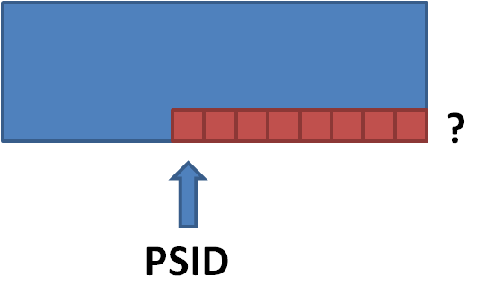 Esse ponteiro vai até onde? 2011-01-17 [tag_coding] Brincando com obtenções e conversões de SIDs, tive uma pequena dificuldade de usar a função ConvertStringSidToSid, de Sddl.h. Seu objetivo é receber uma string-SID no formato usado pela ferramenta PsGetSid e retornar uma sequência de bytes de tamanho arbitrário, que é o SID como o sistema o enxerga. Como ela retorna apenas o ponteiro final, do tipo PSID, o que parece fácil pode se tornar tricky se quisermos copiar o SID binário para algum buffer na pilha, já que não sabemos o número de bytes no buffer de origem. Tudo que sabemos é que, após o uso, devemos desalocar essa memória retornada pela API com outra API: LocalFree. esse-ponteiro-vai-ate-onde |
| 72 horas 2011-01-14 [tag_movies] Um drama contado em um ritmo adequado, que consegue avançar para um filme de ação em seu terceiro ato de forma surpreendentemente competente, visto que o filme consegue uma identificação com o drama de seus personagens, mesmo que perifericamente, e extrai disso uma emoção maior da perseguição final, pois não estamos assistindo mais um filme de perseguição qualquer. 72-horas |
| Reunião de programadores C++ (há 5 anos) 2011-01-12 [tag_ccppbr] Começo de ano, hora de fazer backup completo. Durante minha cópia anual do gmail acabei encontrando meu post-chamado para nossa primeira reunião C++. Como parte da sessão nostalgia, convido-os, novos e velhos colegas, a continuar a brincadeira de organizar uma reunião informal de pessoas que gostam tanto de programar que criam seus próprios ponteiros. reuniao-de-programadores-c-ha-5-anos |
| Dependência pedindo carona 2011-01-04 [tag_coding] Mesmo as vezes que você não queira, algumas dependências pedem carona e o compilador deixa entrar. Daí mesmo que você não use uma função API, ela acaba te atazanando a vida. Foi o caso da ToolHelp32 no Windows NT 4. dependencia-pedindo-carona |
| Elsa e Fred 2010-12-30 [tag_movies] A noção de felicidade na sociedade atual acaba a tornando inalcançável. Quanto mais busca-se o mundo ideal, mais perde-se a satisfação do real. Sendo assim, é difícil não se emocionar com a praticidade de Elsa, uma mulher em torno dos seus 80 anos bem vividos que só tem um desejo em mente e que o coloca em prática o mais rápido possível: viver mais, não importando os defeitos e os obstáculos que o mundo real lhe apresenta. elsa-e-fred |
| De Pernas pro Ar 2010-12-30 [tag_movies] Alice é uma mulher que se dedica inteiramente ao trabalho. Boa parte do tempo a vemos usando seu celular e seu notebook. Apesar de excelente profissional, ela ignora sua família, cuidando dos afazeres caseiros e profissionais como se fizessem parte de uma mesma agenda. A triste consequência é que, apesar de terem uma vida invejável de classe média alta, ela acaba conhecendo pouco de seu próprio filho e quase não nota a existência do marido, que aparece distante em sua vida (sua cara de fato não aparece no início do filme). de-pernas-pro-ar |
|
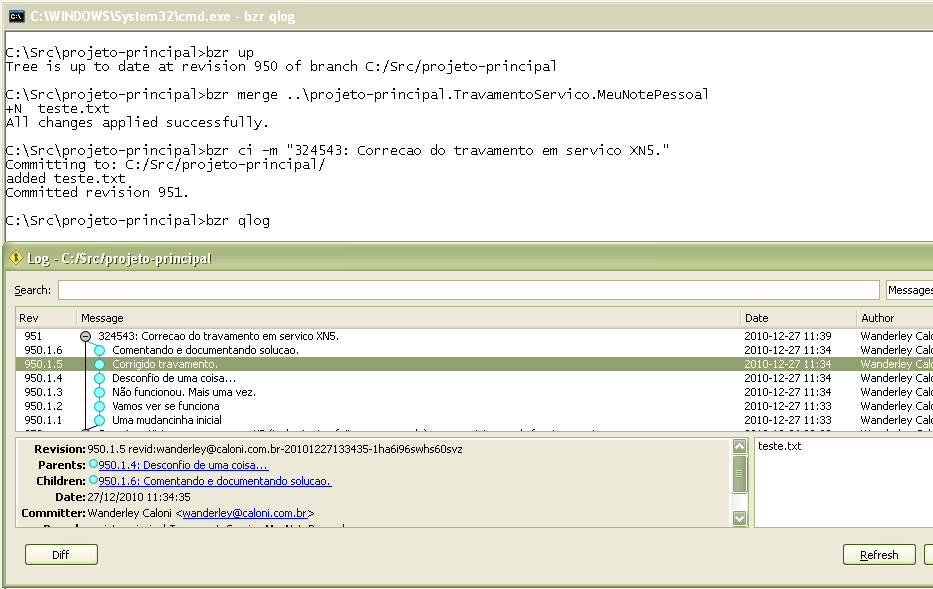 Trabalhando em múltiplos ambientes 2010-12-27 Existem diversas maneiras de se trabalhar com o Bazaar. Eu já [havia definido] como fazer na máquina de desenvolvedor para modificar o mesmo código-fonte em projetos paralelos, onde basicamente tenho um branch principal conectado no servidor (assim todo commit vai pra lá) e crio branches paralelos e desconectados para fazer quantos commits eu tenho vontade durante o desenvolvimento. Após todas as mudanças e testes básicos, atualizo o branch principal (com mudanças dos meus colegas) e faço o merge com o branch paralelo onde fiz todas as mudanças. Antes de subir com o commit final, ainda realizo um build de teste local, se necessário. trabalhando-em-multiplos-ambientes |
| O Mundo Encantado de Gigi 2010-12-24 [tag_movies] O que mais me incomodou nesse filme foi o gráfico, nem tanto pela sua limitação, mas por não existir uma história suficientemente interessante para esquecermos das limitações da técnica usada, como foi com Wallace e Gromit: A Batalha dos Vegetais, ou até mesmo A Fuga das Galinhas. Simplesmente temos uma história batida, com poucos diálogos inspiradores que atravessam os seus 87 minutos de duração em um estado de quase chatice. o-mundo-encantado-de-gigi |
| O Concerto 2010-12-24 [tag_movies] Trama principal: o próprio concerto; trama secundária: a relação de Andrey e sua solista, Anne-Marie. Há uma introdução eficaz, pois já demonstra o jeito do maestro com a regência, e ao mesmo tempo, no corte inicial, já mostra que ele não faz parte da orquestra, mas está condicionado ao papel de faxineiro. Uma direção de arte que se preocupa com os detalhes em vermelho escuro (empoeirado?) do escritório do antigo partido. Domínio sobre a algumas sequências, como no jantar na casa de Andrey em que discutem o plano. Note como sua mulher aparece ao fundo e sussurra no ouvido de Andrey, ao passo que ao se dirigir à cozinha a câmera a acompanha, e ainda faz um círculo, voltando para a mesa de jantar. o-concerto |
| Pós-II Seminário Portabilidade e Performance 2010-12-21 [tag_ccppbr] O nosso seminário da semana retrasada sobre portabilidade e performance teve um clima mais familiar, lembrando os antigos eventos. O tamanho menor da sala, aliado ao fato dos palestrantes não precisarem usar microfone, como foi da última vez, fez com que houvesse mais interação com o público, com destaque para minha própria palestra, onde tivemos um hiato significativo para falar sobre o desempenho da classe std::string e outros assuntos mais obscuros. pos-ii-seminario-portabilidade-e-performance |
| Um Dia Muito Especial 2010-12-20 [tag_movies] Um drama de um relacionamento de um dia entre uma dona-de-casa e seu vizinho homossexual que mostra de diversas formas como a Itália fascista estava se transformando. O dia em questão calha com a visita de Hitler à Roma. O filme conta com Sophia Loren e Marcelo Mastroiana nos papéis principais, e é dirigido por Ecolla. um-dia-muito-especial |
| Três Homens em Conflito 2010-12-20 [tag_movies] Esse faroeste de Leone foi narrado em um contexto histórico e, por isso mesmo, com muitas pitadas de realismo nas cenas, mesmo com os absurdos hilários a que estamos acostumados em filmes do gênero. Nesse longa de quase três horas de duração teremos três pistoleiros decididos a encontrar uma fortuna escondida, mas para isso terão que passar por várias provações na época da guerra da Sessesão. tres-homens-em-conflito |
| Sobre Café e Cigarros 2010-12-20 [tag_movies] Esse é um filme extremamente deprimente, pelas características dos cenários, pela estática das cenas, pela conversinha dos personagens, pelo princípio que os personagens principais, de fato, são os nomes do título. Seguem minhas anotações quando o assisti na época que estudava para ser crítico: sobre-cafe-e-cigarros |
| Sem Medo: As Canções De Luciano Ligabue 2010-12-20 [tag_movies] [tag_mostra] Esse é um documentário que, em um tom misto de atualidade e nostalgia, conta a história dos italianos pelos olhos de sua Constituição, criada após a Segunda Guerra, e como esses ideais foram (ou não) evoluindo na passagem das gerações. sem-medo-as-cancoes-de-luciano-ligabue |
| Primavera, Verão, Outono, Inverno... e Primavera 2010-12-20 [tag_movies] Este é o filme mais poderoso do diretor e roteirista Kim Ki Duk e ele é o único cineasta capaz de contar essa história sem resistir à tentação das respostas fáceis. Enquanto outros dos seus filmes -- Casa Vazia, Fôlego, Time, Pietá -- apresentam um conceito-chave que será explorado à exaustão até nos darmos por rendidos e aceitarmos aquele novo escopo de sentimentos, em "Primavera, Verão" não existe novidade, e o que nos prende durante e após o filme é a nossa tentativa fugaz de captar algum significado. Este é um filme simples, mas que você precisa interpretar. E no preciso momento em que o estiver vendo saberá do que se trata, mesmo que ninguém diga isso verbalmente. Palavras são inúteis frente a imagens poderosas. Simples, mas poderosas. primavera-verao-outono-inverno-e-primavera |
| Micmacs - Um Plano Complicado 2010-12-20 [tag_movies] [tag_mostra] A fotografia fabulosa de [Amélie Poulain] também cabe nessa fábula em que um homem, Bazil (Dany Boon), sofre uma dupla injúria em sua vida: a morte do seu pai por uma mina terrestre e uma bala em sua cabeça durante um tiroteio. Então ele resolve se vingar de ambas com o mesmo plano. mic-macs-um-plano-complicado |
| Meu Malvado Favorito 2010-12-20 [tag_movies] Meu Malvado Favorito é um ótimo exemplo de filme que divide opiniões, assim como Transformers: de um lado as pessoas que veem claramente uma péssima construção de história em conjunto com péssimas sequências para esta história. De outro, as pessoas que enxergam seus méritos no projeto ou 1) por gostarem do argumento desde o início ou 2) por entenderem sua proposta de uma maneira menos... crítica? meu-malvado-favorito |
| Fôlego 2010-12-20 [tag_movies] Em um período mais inocente da minha vida de cinéfilo Kim Ki Duk estava entre os poucos dos meus diretores favoritos, em uma lista que hoje em dia está esparsa demais para fazer algum sentido. Mas o diretor coreano continua sendo para mim um exemplo de contar histórias para chamar a atenção do seu público, sempre utilizando o chamariz das situações bizarras que nos prende e nos impede de desgrudar os olhos da tela até o final do filme. folego |
| Concorrência Desleal 2010-12-20 [tag_movies] Mais um filme político de Scola. Dessa vez o foco da história é a concorrência entre um alfaiate e um lojista, que dividem a fachada de suas lojas e suas casas, a amizade de seus filhos menores e um romance entre seu filho e sua filha maiores. Possuem muitas coisas em comum, menos uma: uma família é de judeus; a outra, não. concorrencia-desleal |
| A Ilha dos Mortos 2010-12-20 [tag_movies] Em uma introdução ultra-rápida em off temos o cenário e o resumo do que irá acontecer durante o filme inteiro, em uma síntese cuja forma também será usada por toda a história, mostrando a segurança de Romero em estabelecer as ligações primordiais e avançar ideologicamente em pontos mais aprofundados do tema "mortos-vivos". a-ilha-dos-mortos |
| Aparecida: O Milagre 2010-12-19 [tag_movies] Tizuka Yamasaki está acostumada a realizar trabalhos "globais" como O Noviço Rebelde, Xuxa Requebra e... arght! Lua de Cristal. Seus quatro roteiristas, incluindo Paulo Halm e Carlos Gregório, desenvolvem histórias como Pequeno Dicionário Amoroso, Guerra de Canudos e arght! Se Eu Fosse Você (1 e 2!). Aparecida, A Revanche Católic... quer dizer, O Milagre, é um filme maniqueísta (como deve ser) e cafona (como esperado), mas inesperadamente bem conduzido, que tenta desviar ao máximo da narrativa vergonhosamente novelística e se focar na mensagem mais importante do projeto: milagres são possíveis e é por isso que nunca devemos desistir da vida. aparecida-o-milagre |
| A Sétima Alma 2010-12-14 [tag_movies] Aquela velha maldição que atordoa as pessoas de um vilarejo. Esse terror dirigido/escrito por Wes Craven (A Hora do Pesadelo, Pânico, Além da Imaginação, etc, etc, etc) parte de uma maldição lançada sobre um grupo de garotos que nasceram no mesmo dia em que um serial killer de uma pequena cidade parou de realizar seus crimes. Com uma premissa bestinha típica de filmes adolescentes do gênero, Craven delineia um trabalho muitas vezes tenso e outras vezes clichê. Há uma ótima dinâmica entre irmãos e algumas reviravoltas especialmente inspiradas e sem as ressalvas de trabalhos similares que precisam diminuir a censura. Mesmo assim, a sensação do filme quando termina é de mais do mesmo, pois não há muitos momentos marcantes. a-setima-alma |
| Tetro 2010-12-10 [tag_movies] O aspecto teatral do longa já é exibido em sua introdução, numa espécie de pôster suspenso, além do próprio P&B, evocando seu tom artístico e expressivo ao contar a história da família Tetrocini. A introdução é mais do que efetiva, pois em parcas quatro cenas já sabemos tudo que precisamos saber para aos poucos ir desvendando a relação passada da família do ponto de vista dos irmãos. tetro |
| Enterrado vivo 2010-12-10 [tag_movies] O trabalho final em cima de um filme de um cenário só evoca uma trilha de suspense dos anos 60, além de ter seu design gráfico lembrando pequenos caixões que vão descendo a tela. O início é óbvio: ouvimos apenas o som ofegante de uma pessoa, com a tela completamente escura, pelo tempo suficiente para não soar enfadonho. Diferente do protagonista, a câmera pode se mover à vontade, mas apenas dentro do limite do próprio caixão, o que contribui para a claustrofobia do espectador. Claramente com o intuito de conseguir variar o bastante para não tornar aborrecido um filme desses, a câmera por vezes se utiliza de ângulos inusitados, zooms diferentes, chegando a um travelling circular em volta do corpo do sujeito, passando atrás dos seus pés. enterrado-vivo |
| Tron: Uma Odisséia Eletrônica 2010-12-04 [tag_movies] Mesmo assistindo hoje, 28 anos depois, Tron ainda parece um filme dedicado principalmente a vender vídeo-games. Com sua narrativa inserida dentro de um ambiente de computação gráfica que reproduz na imaginação o que aconteceria dentro de um computador, e uma premissa bobinha de um protagonista injustiçado que tenta conseguir a prova que seu jogo foi copiado por um magnata dos game, a história possui bons momentos de ação, e chega a impressionar que esses bons momentos são feitos dentro de um ambiente hoje com sofríveis efeitos especiais. tron |
| Skyline - A Invasão 2010-12-03 [tag_movies] As histórias são profundas o suficiente para nos preocuparmos um pouquinho com o destino dos personagens (rapaz com acordo promissor com melhor amigo e sua mulher grávida, o amigo rico que é gente boa e sua esposa fiel e paciente, e a agente do amigo rico, o que faz com que ela seja a primeira a ser esmagada e nem nos darmos conta) e joviais o suficiente para não sentirmos muito pela perda de cada um deles (ou pelo menos por muito tempo). skyline-a-invasao |
| O Garoto de Liverpool 2010-12-03 [tag_movies] Na primeira cena temos apenas o primeiro acorde de "A Hard Day's Night", que nunca irá se completar, pois Nowhere Boy narra apenas a história do Beatle antes de efetivamente formar o grupo. Várias referências ao mundo Beatleniano, como Strawberry Fields, Walrus. Uma viagem em torno do relacionamento entre John Lennon e sua mãe, e o que levou com que sua personalidade fosse como é. Quer dizer, essa pelo menos é a teoria do filme de Sam Taylor-Johnson. o-garoto-de-liverpool |
| Megamente 2010-12-03 [tag_movies] Uma troca de papéis eficiente que faz repensar a dicotomia do bem contra o mal, ainda mais que hoje em dia, em que mais pessoas se livram das superstições antigas (religiões) que pregam essa dicotomia como algo inerente à existência, o filme transporta essa realidade para uma animação leve, mas que esconde algum drama mais complexo, quase que existencial. megamente |
| A Rede Social 2010-12-03 [tag_movies] [tag_mostra] O objetivo de Fincher, assim como em Clube da Luta, é destrinchar situações e pensamentos da sociedade moderna. Dessa vez, ele usou uma história real e contemporânea para falar sobre a digitalização de nossas amizades, e nada como usar como exemplo a história do próprio criador da maior rede social de todos os tempos: o Facebook, atualmente com mais de 500 milhões de participantes. a-rede-social |
| Você Vai Conhecer o Homem dos Seus Sonhos 2010-11-26 [tag_movies] Personagens que Allen adora colocar em cena: a cartomante que faz papel de psiquiatra, a velhinha que procura uma cura para sua tensão pós-separação, o ex que está velho demais para recomeçar (e acredita ter os genes da longevidade), o escritor fracassado de um sucesso só, casado com a consultora de artes em um casamento que logo, logo, irá se abalar, e a noivinha pronta para sair do casamento. voce-vai-conhecer-o-homem-dos-seus-sonhos |
| Senna 2010-11-26 [tag_movies] De que são feitos os heróis? Como uma pessoa cresce internamente e transparece externamente, para o resto do mundo, como alguém que faz a diferença; tanto profissional, quanto moralmente? Uma trajetória de sucesso de um dos ícones de final de século no esporte nacional e mundial, o que vemos no início do documentário é um ser humano em seu estado latente, habilidoso no que sabe fazer (correr), mas ainda inapto para sobreviver nas agruras do jogo de dinheiro e poder que ocorre na nata da indústria automobilística: a Fórmula 1, campeonato mundial máximo na carreira de um piloto de corridas. senna |
| Os Intocáveis 2010-11-20 [tag_movies] Trilha sonora que nos remete a um solene faroeste, e apesar de não ser um filme desse gênero, o ambiente sem lei que Chicago aparenta torna mais do que adequada a escolha. Com paisagens largas e esbeltas, a fotografia sempre impressiona pelas cores límpidas e cristalinas, criadas para um épico. A cena da escadaria é, além de uma homenagem a Eiseinsten, que fez a sequência em que ela é inspirada em [O Encouraçado Potemkin], cria outra belíssima, memorável, cena. os-intocaveis |
| O Encouraçado Potemkin 2010-11-20 [tag_movies] Esse é um dos filmes de Eisenstein, propagandista soviético, e que exalta a força do povo quando ele se une contra a opressão czarista. A revolta começa em um navio, e aos poucos se espalha para toda a população. A intensidade com que a ação é filmada faz o filme de ficção se confundir com um documentário em tempo real. o-encouracado-potemkin |
| Muita Calma Nessa Hora 2010-11-20 [tag_movies] Mari é constantemente assediada por seu chefe na agência publicitária onde trabalha; cansada de ser confundida com uma mulher fácil, decide não ficar mais com homem nenhum. Tita é a mulher certinha, virgem de um homem só (o marido), mas que encontra seu noivo com outra em seu apartamento e, desacreditada, decide esquecer esse negócio de monogamia e partir pra tirar o atraso. Aninha, uma eterna indecisa, já trancou sete vezes a faculdade por nunca ter certeza do que quer fazer; sim, ela concorda com ambas as amigas; ao mesmo tempo. muita-calma-nessa-hora |
| Um Homem Misterioso 2010-11-19 [tag_movies] A quebra inicial do filme de romance com o casal juntos no quarto, íntimos, e o tiro que ele dá na cabeça da amante, além de impactante, dá o tom exato da vida desse homem do título, que deve sempre se manter fechado a relacionamentos. Cortes rápidos nas cenas de tiro, como o corte dele atirando no segundo sueco que aparece no filme, pelas costas, ou ele virando para atirar no seu contratante, essa cena sem corte. Sem contar as inúmeras vezes em que a neurose do personagem é transmitida diretamente para nós, como na cena da vespa estourando o escapamento, ou o livro caindo da cama no meio da noite, e até mesmo os pés do personagem no escuro, com ele deitado, deixam o espectador sempre em constante tensão. O primeiro diálogo com o padre, sobre o fato dele ser americano e fazer questão de esquecer o passado e tentar viver no presente, é emblemático e tão bem colocado, por possuir um significado oculto, que parece até feito de mentira. Mas convence. um-homem-misterioso |
| Harry Potter e as Relíquias da Morte - Parte 1 2010-11-19 [tag_movies] A sensação do final é de que poderíamos muito bem assistir muito mais. Isso porque, com transições equilibradas entre cenas de ação e de reflexão, as quase duas horas e meia não soam cansativas durante a experiência, que é ao mesmo tempo empolgante e visualmente emocionante. harry-potter-e-as-reliquias-da-morte-parte-1 |
| RED: Aposentados e Perigosos 2010-11-12 [tag_movies] O encontro de astros que não deu certo em Mercenários aqui fez um trabalho divertido e descartável. Principalmente com a participação de Malkovich e Helen Mirren, que criam personagens que entretem pelas suas vidas atuais sendo consequência da vida de assassinatos do passado. red-aposentados-e-perigosos |
| II Seminário Portabilidade e Performance 2010-11-12 [tag_ccppbr] Aqui estamos nós de novo. Mais uma vez a Tempo Real Eventos irá organizar esse evento de final de ano. E mais uma vez, junto dos meus amigos, irei palestrar sobre um item indispensável no nécessaire de todo escovador de bits: assembly gerado pelo compilador. Vamos falar brevemente sobre o funcionamento de um código assembly 32 bits e passar para a análise dos compiladores modernos e o que eles fazem para tornar o código ainda mais rápido do que o próprio fonte em C++. ii-seminario-portabilidade-e-performance |
| Patch de emergência 2 2010-11-09 [tag_coding] No [artigo anterior] fizemos um patch rapidinho na memória se aproveitando de um Sleep nojento que o código nos forneceu. E se não houvesse Sleep? As chances de estarmos escrevendo no momento em que a função está sendo executada são tremendas, de forma que não poderíamos sobrescrevê-la sem correr o risco de um crash. patch-de-emergencia-2 |
 Patch de emergência
2010-11-08 [tag_coding] Após um projeto muito bem sucedido, entregue no prazo e homologado em tempo recorde, você e sua equipe estão aproveitando suas devidas férias nas Bahamas, tomando água de coco na sombra de uma palmeira e apreciando a beleza natural da região. Ambas as belezas. =) patch-de-emergencia
Patch de emergência
2010-11-08 [tag_coding] Após um projeto muito bem sucedido, entregue no prazo e homologado em tempo recorde, você e sua equipe estão aproveitando suas devidas férias nas Bahamas, tomando água de coco na sombra de uma palmeira e apreciando a beleza natural da região. Ambas as belezas. =) patch-de-emergencia
|
| Atividade Paranormal 2 2010-11-07 [tag_movies] Assim como o primeiro filme, essa continuação tenta passar a impressão documental através de uma mensagem da produtora agradecendo os envolvidos pelas cenas que veremos a seguir. Apesar desse aviso deixar sua devida pulga na orelha, não é uma solução que por si só baste, dependendo principalmente da competência da narrativa em introduzir a sensação de que o que estamos vendo são filmagens realizadas de forma caseira e que relatam acontecimentos verdadeiramente inexplicáveis. atividade-paranormal-2 |
| Pink Floyd - The Wall 2010-11-06 [tag_movies] [tag_mostra] Reunindo várias filmagens que se assemelham a video-clipes e desenhos psicodélicos, o filme de Alan Parker parece dar um tom surreal à história e às impressões da banda britânica Pink Floyd. Jogando com o silêncio das cenas e da música e das letras de outras, o filme faz paralelo entre o passado, presente e futuro de um garoto que tem o pai morto na guerra, como notamos visualmente na transição entre a luz do lampião e a luz do sol com o garoto correndo ao horizonte. pink-floyd-the-wall |
| As Quatro Voltas 2010-11-06 [tag_movies] [tag_mostra] Há algo de transcendental em As Quatro Voltas. Baseado tão somente em imagens, que mostram inicialmente a rotina de um velho pastor de uma cidadezinha, a narrativa liga fatos que não estariam ligados se não fosse pela capacidade imaginativa da câmera de contar uma história. A fotografia e os enquadramentos encantam pelo deslumbramento e simplicidade com que são focados. Não há muito o que falar, pois a história, como disse, transcende explicações. Vai além da fronteira de arco dramático, protagonista. O visual pelo visual. as-quatro-voltas |
 Suporte técnico
2010-11-05 [tag_coding] Máquina com parte do registro corrompida, notadamente alguma sub-chave de HKEY_CLASSES_ROOT. Resultado: ao rodar um script que abre uma segunda janela e tenta usar seu método focus é exibida a seguinte mensagem: suporte-tecnico
Suporte técnico
2010-11-05 [tag_coding] Máquina com parte do registro corrompida, notadamente alguma sub-chave de HKEY_CLASSES_ROOT. Resultado: ao rodar um script que abre uma segunda janela e tenta usar seu método focus é exibida a seguinte mensagem: suporte-tecnico
|
| José e Pilar 2010-11-05 [tag_movies] [tag_mostra] Este é um documentário que conta, com imagens caseiras e inusitadas em eventos públicos, os últimos anos do escritor português, ganhador do prêmio Nobel, José Saramago, e sua esposa, Pilar. Por meio de uma intrusão na vida alheia do casal acompanhamos as viagens que ambos fizeram pelo mundo afora após ele ter ganho o prêmio. jose-e-pilar |
| O Atleta 2010-11-04 [tag_movies] [tag_mostra] O filme começa com a luz do sol, tão presente durante o longa, se transformando na luz do projetor de cinema. Esse projetor fará parte do final, quando voltamos para o mesmo close no início. As tomadas iniciais dele chegando ao interior da Etiópia apresentam uma largura de campo estrondosa para dar a impressão de grandeza e imensidão que não acaba mais. Aliás, esse detalhe pode ser visto no belíssimo zoom out dele correndo do lado de um desfiladeiro. Aos poucos esse desfiladeiro vai sumindo e dando lugar à planície. o-atleta |
 Então você ainda não usa controle de fonte?
2010-11-02 [tag_coding] Graças aos antigos [SCMs], muitos programadores hoje em dia evitam ter que configurar um controle de fonte mínimo para seus projetos. E por um bom motivo: temos que programar e resolver problemas reais no dia-a-dia e não ficar configurando servidores de controle de fonte e lidando com conflitos na calada da noite. Isso vale tanto para o pessoal do Windows e o seu Visual Source Safe (eu que o diga) quanto para o pessoal do Unix/Linux e seu CVS ;aliás, hoje o pesadelo de ambos foi substituído pelo SubVersion: um pesadelo light. entao-voce-ainda-nao-usa-controle-de-fonte
Então você ainda não usa controle de fonte?
2010-11-02 [tag_coding] Graças aos antigos [SCMs], muitos programadores hoje em dia evitam ter que configurar um controle de fonte mínimo para seus projetos. E por um bom motivo: temos que programar e resolver problemas reais no dia-a-dia e não ficar configurando servidores de controle de fonte e lidando com conflitos na calada da noite. Isso vale tanto para o pessoal do Windows e o seu Visual Source Safe (eu que o diga) quanto para o pessoal do Unix/Linux e seu CVS ;aliás, hoje o pesadelo de ambos foi substituído pelo SubVersion: um pesadelo light. entao-voce-ainda-nao-usa-controle-de-fonte
|
| Vc Tá Aí? 2010-11-01 [tag_movies] [tag_mostra] Começamos essa história sobre um jogador de vídeo-games profissional dentro do jogo que este é especialista. Esse artifício será usado mais uma ou duas vezes e transportado para o pseudo-romance que este viverá com uma oriental da cidade para onde vão disputar o campeonato, só que dessa vez o ambiente virtual é o Second Life, lugar feito para conhecer pessoas. Com esse tipo de simbolismo é que somos levados a uma história que poderia ser fascinante, por nos dar a presença de dois personagens igualmente interessantes, bastando para isso que tenhamos um Bill Murray e uma Scarlett Johansson nos papéis principais e teríamos um Encontros e Desencontros 2, menos profundo mas igualmente interessante. vc-ta-ai |
| Vamos nos Conformar 2010-11-01 [tag_movies] [tag_mostra] Esse documentário conta a história de quatro amigas que estão internadas em uma espécie de abrigo para filhas que foram abandonadas por suas famílias. Cada uma delas fala na sua vez sobre sua história, e conseguimos identificar facilmente a personalidade de cada uma: a que tem pena de si, a durona e irritada, a complicada e, por fim, a conformada. É ela que veremos frente a frente com os pais. vamos-nos-conformar |
| Cirkus Columbia 2010-11-01 [tag_movies] [tag_mostra] A primeira coisa que nota-se em Cirkus Columbia é a deslumbrante fotografia. Criada de forma magistral, torna a história um épico instantâneo pelo simples fato de reapresentar ao mundo um país anteriormente arrasado pela guerra, onde são aproveitadas não só os quadros da tela larga, mas as luzes também. cirkus-columbia |
| Cargo 2010-11-01 [tag_movies] [tag_mostra] Se fosse resumir essa ficção-científica, diria que ela começa como Aliens - O Resgate e termina como Matrix. De fato, muitas características do longa nos lembra esses dois filmes. Porém, longe de se igualar em qualidade narrativa, este cai no lugar comum de passeios contemplativos pelo cenário com trilhas sonoras igualmente batidas. cargo |
| A Suprema Felicidade 2010-10-29 [tag_movies] [tag_mostra] [Baarìa - A Porta do Vento], trabalho mais pessoal de Giuseppe Tornatore (Cinema Paradiso), é uma superprodução que tem como característica marcante não definir um foco específico ao contar sua história. Disposto a tornar a Baarìa do título, um vilarejo no interior da Itália, protagonista de tudo que aconteceu no país ao longo de décadas de história, Tornatore sacrifica a clareza narrativa em prol de um bem maior: a absurdamente estonteante rima final, que torna o seu filme, como um todo, uma experiência única e inesperada. a-suprema-felicidade |
| O Mágico 2010-10-27 [tag_movies] [tag_mostra] Esse é o novo longa de Sylvain Chomet, o mesmo diretor de [As Bicicletas de Belleville]. Foi baseado em um roteiro de Jacques Tati (do filme Meu Tio). Ou seja, temos aqui um roteiro de algo belo em sua pureza sendo dirigido por alguém com o controle nato do surreal. Não bom. o-magico |
|
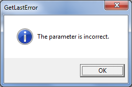 FormatMessage para... dumies? 2010-10-26 [tag_coding] Já foi comentado em alguns círculos de ótimos programadores que a função da Win32 API [FormatMessage] é uma das criaturas mais bizarras já criadas. O objetivo da FormatMessage é formatar uma string, assim como sprintf, mas voltado mais a escrever uma descrição de um código de erro. Sendo assim ela é essencial para que o usuário não receba um número no lugar de uma explicação de por que a operação falhou. formatmessage-para-dumies |
| Bróder 2010-10-26 [tag_movies] [tag_mostra] A história do estreante diretor Jeferson De, cuja sessão em que estava presente tive o privilégio de participar, inicia com uma grande sequência sem cortes em que Macu desce a ladeira de sua casa pelos becos e ruas do bairro; uma cena que, além de nos mostrar o nível de intimidade do protagonista com seus vizinhos, ainda dá uma ideia muito boa da extensão desse ambiente. A música de abertura, inicialmente não fazendo parte do ambiente, se transforma em música de rádio. Podemos ver essa brincadeira acontecer em quase toda a trilha sonora, que corajosamente escolhe não salpicar as cenas de música, criando tensão em várias cenas simplesmente por diálogos exaltados e movimentos de câmera. broder |
| Suécia Hoje 2010-10-23 [tag_movies] [tag_mostra] A partir de depoimentos de várias pessoas e suas diferentes rotinas, este documentário traça um panorama dos últimos anos da história desse país. Assim como a maioria das grandes cidades, se antigamente o trabalhador passava a vida inteira empregado em apenas uma empresa, e os shoppings estavam vazios, de acordo com o narrador, porque esses trabalhadores precisavam restaurar as energias para uma nova semana de trabalho, hoje em dia a maioria trabalha como freelancer, e os shoppings estão cheios todos os dias e a economia é pulsante, pois cada vez mais pessoas querem comer, beber e fazer mais coisas com as 24 horas diárias. suecia-hoje |
| Atualizando HouaissParaBabylon no saite 2010-10-22 O último comentário no meu último artigo sobre o conversor Houaiss para Babylon me fez lembrar de algo muito importante: eu não atualizei o branch do saite com a última versão. Deve ser por isso que as pessoas estão tendo problemas com o uso do código. Resolvo isso já: atualizando-houaissparababylon-no-saite |
| As Crônicas de Nárnia: A Viagem do Peregrino da Alvorada 2010-10-21 [tag_movies] Lembro de ter visto a primeira Crônica de Nárnia: O Leão, a Feiticeira e o Guarda-Roupa. Alguma coisa me dizia para não confiar muito em títulos muito longos, e... dito e feito. Não gostei da frágil história em uma narrativa que supõe-se introduzir personagens importante para as próximas tramas, mas que simplesmente joga seus elementos iniciais em um tabuleiro de xadrez e trata apenas de arrastar preguiçosamente essas peças nada originais, tiradas do fundo do baú da crença cristã com cobertura de mitologia grega. as-cronicas-de-narnia-a-viagem-do-peregrino-da-alvorada |
| Curva do Destino 2010-10-13 [tag_movies] A história de um homem que busca se encontrar com sua mulher que está do outro lado do país. Para isso ele vai de carona em carona, de NY para LA. No caminho, encontra um homem que morre no carro. Esconde o corpo e encontra uma mulher que se envolveu com ele no caminho, também pedindo carona. Chegando a Hollywood descobrem que o pai do sujeito, milionário, morreu, deixando toda sua fortuna para o filho. Enquanto ela tenta convencê-lo a fingir ser o herdeiro, ele acidentalmente a mata com o fio do telefone. Deixando esse passado para trás, o nosso protagonista vaga sem destino, apenas esperando o momento em que será preso, por nenhuma razão. curva-do-destino |
| Machete 2010-10-10 [tag_movies] Mais um filme de violência absurda de Robert Rodriguez. Fotografia amarelada, como em todos os filmes que se passam perto do México. Só que em muitos filmes a violência absurda é usada em tons artísticos, como evocando os quadrinhos (Sin City) e sua realidade já absurda e exagerada e as artes marciais (Kill Bill) e suas lendas. machete |
|
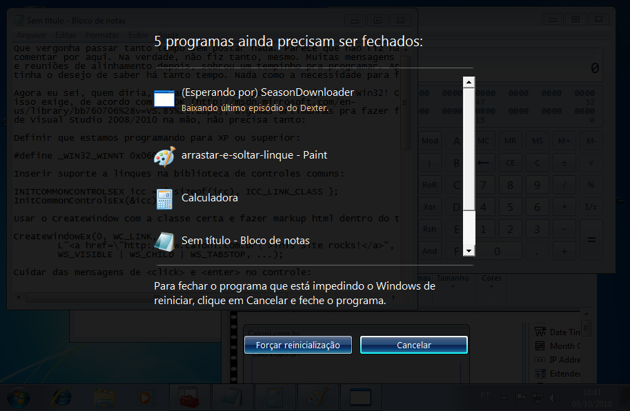 Três em um 2010-10-09 [tag_coding] Que vergonha passar tanto tempo sem postar nada. Parece que não fiz nada que valesse a pena comentar por aqui. Na verdade, não fiz tanto, mesmo. Muitas mensagens do Outlook, gráficos UML e reuniões de alinhamento depois, sobrou um tempinho pra programar. Aprendi algumas coisas que tinha o desejo de saber há tanto tempo... Agora eu sei, quem diria, criar linques suspensos nas janelas Win32! Que novidade, não? Pois é, isso exige, [de acordo com o SDK], algumas artimanhas pra fazer funcionar. Para quem está de Visual Studio 2008/2010 na mão basta seguir os passos seguintes. tres-em-um |
| Tropa de Elite 2: O Inimigo Agora é Outro 2010-10-08 [tag_movies] Os trailers da continuação da história do morro do ponto de vista do Cap. Nascimento deixam bem visível, inclusive no seu subtítulo, que iremos acompanhar uma nova guinada na explicação do sistema, algo um pouco mais acima da hierarquia: vai entrar no mundo da política. Isso pode dar a impressão que a história ficaria mais monótona e com pouca ação. Talvez dê até a impressão que não será possível fazer os belos quadros que vimos no primeiro, que junta todos os pontos da narrativa de maneira tão eficaz. Ledo engano: essa continuação fica ainda mais densa e com uma história ainda mais perversa e criativa, nos dando a oportunidade de ir mais além na história do morro, imaginando como seria se o BOPE realmente detonasse os traficantes. tropa-de-elite-2 |
| Dois Irmãos 2010-10-08 [tag_movies] O maior mérito da direção deste filme é deixar a história fluir sem interferências, dando vazão a ambas às interpretações, ambas dignas, apesar de gerarem efeitos diversos. Da irmã, temos raiva pela sua forma de diminuir seu irmão e sempre tentar se elevar, mas também dó de suas tentativas patéticas se ofender os outros (como chamar a anfitriã da festa da tia de gorda e de ter inveja dela). dois-irmaos |
| A Letter to Elia 2010-10-04 [tag_movies] O documentário logo se revela mais pessoal que o normal, pois os nomes das pessoas não são apresentadas na primeira vez que elas aparecem (basicamente Elia Kazaan e Scorcese, o diretor do filme). Mantendo total respeito pelos filmes apresentados, a proporção da tela varia enormemente, pois estamos falando de filmes que foram rodados em épocas completamente distintas, com tamanhos distintos de película. uma-carta-para-elia |
| Comer, Rezar, Amar 2010-10-01 [tag_movies] Julia Roberts é Liz Gilbert, uma mulher desiludida com o casamento em que vive e que busca em uma viagem pelo mundo (na verdade, Itália e Índia) se "reconectar" ao mundo. É através desse "objetivo" que vemos a personagem vivenciar momentos de puro êxtase turístico, em um filme que claramente apresenta as locações com esse propósito. comer-rezar-amar |
| Tropa de Elite 2010-09-25 [tag_movies] Assisti depois de muito tempo ter sido uma febre entre as pessoas. As frases que se tornaram famosas ouvi pela primeira vez. Mas nem por isso o filme deixou de ter o peso que acreditava que tivesse. A história conta sobre o Batalhão de Operações Especiais da polícia do Rio de Janeiro, uma cidade em eterna guerra com os traficantes. Melhor que isso, a história aborda vários esquemas de corrupção e o funcionamento do treinamento dos policiais que integram o BOPE. tropa-de-elite |
| Wall Street: O Dinheiro Nunca Dorme 2010-09-24 [tag_movies] Essa seria a continuação do original Wall Street, quando o protagonista sai da prisão e sua filha namora um operador de Wall Street. O que vemos no começo é a caracterização da crise na forma de personagens muito bem caracterizados e com papéis bem definidos, como na fatídica reunião da quebra do primeiro banco de investimentos, em uma reunião contada com uma fotografia sombria e movimentos tensos. wall-street-o-dinheiro-nunca-dorme |
| O Último Exorcismo 2010-09-24 [tag_movies] Esse é "O Exorcista" invertido. Aqui o padre, que na verdade é tipo um reverendo de sua religião, possui suas dúvidas com respeito a Deus, e usa a religião como um meio de ganhar a vida. Reflexo exato do atual status das religiões polêmicas, que as usam também como um meio de se proliferarem, o próprio padre afirma que o principal é fazer as pessoas abrirem a mão, pois não se vive só de fé. o-ultimo-exorcismo |
| Moscou Bélgica 2010-09-24 [tag_movies] Essa é uma "comédia romântica" dramática que conta a história de uma mulher recém-separada que quer viver uma vida normal, mas bate o carro em um caminhão e conhece um italiano charmoso que a convida para sair. O resto é passado em uma longa história onde veremos, com nossos olhos incrédulos, a maneira deliciosa que a narrativa nos conta a evolução daquela mulher recém-separada que está literalmente acabada na primeira cena, no corredor escuro e fechado, com a câmera mais alta, fazendo compras no supermercado, e a outra, radiante, caminhando em direção ao nascer do sol do lado dos trilhos, abertos e livres. moscou-belgica |
| Gente Grande 2010-09-24 [tag_movies] As piadas do filme parecem internas e da vida real ("você aumentou o número do sutiã?", pergunta Sandler para seu amigo recém-chegado que aparentemente engordou mais que ele, ou "dessa vez vc trouxe a mãe", se referindo ao cachorro em seu carro), ou, pior: elas foram achadas pelo google. No entanto, aparentemente os realizadores do filme acham elas estupidamente engraçadas, pois estão sempre inseridas em momentos de clímax. gente-grande |
| Baarìa - A Porta do Vento 2010-09-17 [tag_movies] O novo filme de Tornatore conta a história da antiga Itália, seu nascimento como fascista, seus movimentos social-comunistas e o seu fim. Com o uso da tela inteira para apresentar paisagens de tirar o fôlego, seja da cidade-título quanto os pastos sem fim, o diretor continua com seus resquícios que remetem a Cinema Paradiso: trilha evocativa, movimentos de câmera circulares, um garoto que vê negativos de filmes de cinema, o cara que sempre fica na praça ("compro dólar/vende caneta", em comparação com o louco da praça) e tantas outras cenas e modos de contar uma história. baaria-a-porta-do-vento |
| Amor à Distância 2010-09-10 [tag_movies] Os personagens desse filme vivem citando filmes, como na cena em que o protagonista imita Morgan Freeman em "Um Sonho de Liberdade". Com essa cena podemos dizer que o filme não é nada original, e usa referências à toa. amor-a-distancia |
| A Ressaca 2010-09-10 [tag_movies] O primeiro filme inspirado em "Se Beber Não Case" é esse Ressaca, que poderia se chamar "Se Beber, Não Viaje no Tempo". Além das referências óbvias e bobinhas a De Volta Para o Futuro e Cia, o filme diverte em alguns momentos, mas se perde demais nas premissas. Aliás, a premissa não é nada original: a trupe viaja no espaço para salvar o amigo potencial suicida e incidentalmente viajam no tempo também. Primeiro eles vão para onde costumavam se divertir na adolescência e acabam enchendo a cara em uma banheira ao ar livre que se revela ser uma máquina do tempo com a adição de um "ingrediente ilegal" de um energético russo (sim, tem que haver alguma explicação, por mais absurda que seja). a-ressaca |
| Kill Bill: Volume 2 2010-09-09 [tag_movies] Aqui temos a continuação do que é apenas um filme. Kill Bill Volume 2 é a segunda metade da mutilação feita nos cinemas do último filme do Tarantino. Destaque para o treinamento de Pai Mei, além de, assim como o primeiro, cenas de luta memoráveis, além de um exercício de superação no cemitério. Como bônus, um diálogo pop mais que inspirado sobre Superman e os poderes dos assassinos. Imperdível se você viu o [Volume 1]. kill-bill-volume-2 |
| Kill Bill: Volume 1 2010-09-09 [tag_movies] Não é preciso dizer que Quentin Tarantino é um diretor pop e cult, e uma coisa o levou à outra. Também não é preciso dizer o quanto filmes de artes marciais são um pedaço importantíssimo na cultura pop/"trash" dos anos 70 e 80. Se juntarmos esses dois universos teremos Kill Bill, um filme feito para ser um só, mas que por motivos comerciais acabou inchando e dividindo-se. kill-bill-volume-1 |
| Nosso Lar 2010-09-03 [tag_movies] Nosso Lar é um exercício de paciência para quem assiste, sempre em busca de um motivo de sermos levados aos mundos idealizados pelos espíritas, procurando algo pelo que torcer, algo por esperar ou acompanhar. Mas é difícil manter esse ritmo quando nunca enxergamos o fio condutor de alguma narrativa, por menor que seja. nosso-lar |
| Enfim Viúva 2010-09-03 [tag_movies] Essa é uma comédia francesa em que uma mulher tem seu marido morto em um acidente de carro justo quando está prestes a se despedir deste e fugir com seu amante, um pescador da região, e morar com ele na China. Junto da morte do marido vem toda sua família, inclusive seu filho, que fazem de tudo para "cuidar dela" e impedi-la de "curtir" seus primeiros momentos de viuvez. enfim-viuva |
| Como ofuscar strings 2010-08-30 [tag_coding] Já fiz ofuscamento e embaralhamento de dados acho que umas três ou quatro vezes. Dessa vez, parti para o batidíssimo esquema de fazer o pré-processamento de um header com defines que irão virar estruturas reaproveitadas por uma função padrão que desofusca e ofusca aquela tripa de bytes em algo legível: a string original. como-ofuscar-strings |
| Um Lugar Chamado Notting Hill 2010-08-27 [tag_movies] Esta é uma história estilo conto de fadas, em que uma famosa atriz, inalcançável pela maioria dos mortais, acaba visitando um pequeno bairro de Londres (o Notting Hill do título) e conhece o dono de uma loja de livros de viagem (e é curioso que provavelmente ela deve ter viajado para muitos dos lugares descritos nos livros de suas estantes) e vivem um inusitado romance. um-lugar-chamado-notting-hill |
| Par Perfeito 2010-08-27 [tag_movies] Uma suposta comédia romântica, gêmea do Encontro Explosivo com Cameron Diaz e Tom Cruise, aqui quem participa é o sem sal Ashton Kutcher e a idem Katherine Heigl, em um filme de ação com algumas sacadas engraçadas, mas nenhuma inteligente. Até me esqueci qual o "plot". par-perfeito |
| Karate Kid 2010-08-27 [tag_movies] Esse é praticamente um remake do original, só que em vez de caratê, como o nome supõe, a luta do filme é o kung-fu, onde o mestre é nada mais nada menos que Jackie Chan, o Sr. Han, que irá treinar Jaden Smith, o filho de Will, para se preparar para o torneio de Kung Fue se livrar das perseguições da escola. karate-kid-2010 |
|
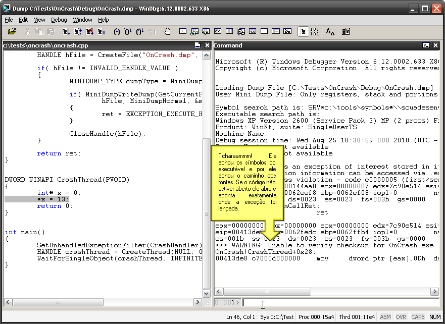 Gerando dumps automatizados 2010-08-26 [tag_coding] Agora que a temporada das telas azuis passou estou às voltas com o nosso sistema de detecção de crashes, além de alguns dumps e logs pra relaxar de vez em quando. Fiquei impressionado com a simplicidade com que podemos capturar qualquer exceção que ocorra em um programa, independente da thread, e gravar um minidump com o contexto exato em que o problema ocorreu. O uso da função API [SetUnhandledExceptionFilter] aliado com a já citada na palestra [MiniDumpWriteDump] pode agilizar muito a correção de crashes triviais como Access Violation. gerando-dumps-automatizados |
| O Último Mestre do Ar 2010-08-20 [tag_movies] Hoje este é conhecido não apenas como o grande fracasso de bilheteria de M. Night Shyamalan, ou o grande fracasso de crítica de sua cinegrafia, mas sim como um dos grandes fracassos da década, figurando entre os piores filmes de todos os tempos. Exagero? Talvez... mas não sem motivos. A história cozida em fogo brando sobre um menino de uma profecia e tribos que parecem meia-dúzia de pessoas, além de criada através de efeitos digitais capengas, não consegue a mínima profundidade para que nos importemos com os personagens. É simplesmente um "pseudo-blockbuster" lado-b que nunca alçou voo. o-ultimo-mestre-do-ar |
| Domicilio Conjugal 2010-08-17 [tag_movies] Comédia romântica francesa datada de 70 e conduzida por François Truffaut. Nesse caso temos um casal vivendo sua vida em um condomínio de casas que mais lembra, nos minutos iniciais, um bom cortiço brasileiro. Mas aos poucos os detalhes culturais vão ganhando forma, não prejudicando a mensagem principal, que é contar a história de um casal como outro qualquer que passa por suas felicidades e tristezas, juntos ou separados. domicilio-conjugal |
|
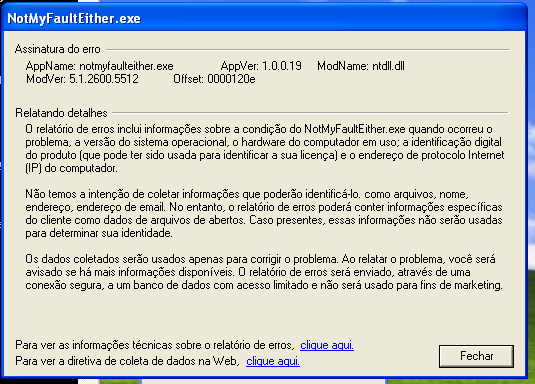 Evento C++ 2010-08-16 [tag_coding] Esse fim-de-semana houve o tão falado evento C++, com a presença de dezenas de pessoas, algo que eu sinceramente não esperava. O bom desse evento foi saber que existem tantas pessoas interessadas em manter contato com quem gosta e pratica essa linguagem e também em saber que o nível técnico das palestras estão de alto para avançado. evento-c |
| Os Mercenários 2010-08-13 [tag_movies] Usando uma steady cam e iniciando no tom de documentário, Os Mercenários traz uma gangue de atores milionários que, em seus devidos personagens unidimensionais, fazem operações de guerra por uns trocados. A primeira cena, aliás, resume bem o que teremos no resto das cenas de ação: muito sangue. Tanto sangue que, no início, vemos o resto da matança através de uma lente de visão noturno, para não afastar de imediato o espectador que ainda verá muitas cabeças explodindo e corpos rolando. os-mercenarios |
| O Aprendiz de Feiticeiro 2010-08-13 [tag_movies] E aqui vamos nós para mais um filme bonitinho, emocionante e formatado nos últimos padrões que a Disney recomenda para que tenhamos mais uma possível franquia seguindo os modelos razoavelmente bem sucedidos dos Piratas do Caribe e Crônicas de Nárnia, e também a futura promessa do Príncipe da Pérsia. o-aprendiz-de-feiticeiro |
| Superman: O Filme 2010-08-12 [tag_movies] Cercado de evocações épicas em seus quadros, no tom solene da partida de Krypton (protagonizada por ninguém menos que Marlon Brando) e até mesmo na fotografia dos diversos ambientes em que vemos o personagem-título, o fato é que "Superman: O Filme" funciona bem exatamente por tudo isso junto, ainda aliado às convincentes interpretações dos personagens, uniformes em suas representações do mundo fantasioso vivido pelo homem de aço, que estranhamente não soa piegas ou exagerado, mas possui o tom cartunesco corretíssimo para manter a lenda e ao mesmo tempo não se levar a sério demais. superman-o-filme |
| Foto dos melhores momentos 2010-08-12 [tag_coding] Mais um quebra-cabeças antes da nossa palestra, esse "baseado em fatos reais". A história é a seguinte: o cliente instalou uma versão nova do produto em algumas máquinas que, ato contínuo, começaram a apresentar telas azuis constantemente. Como essas máquinas tinham que ser usadas pelos funcionários, a administradora rapidamente desinstalou essa versão buguenta, e logo em seguida pediu por uma correção. foto-dos-melhores-momentos |
| Marcas do Passado 2010-08-10 [tag_movies] Basicamente temos a história de um vendedor (Guy Pearce) que, ao consultar um vidente em uma estrada longe de tudo põe à tona sua consciência sobre fatos do passado que levaram seu amigo a ser preso. Isso faz com que o sujeito reavalie sua própria ambição descontrolada. marcas-do-passado |
| Não é minha culpa 2010-08-08 [tag_coding] Recebi a dica de meu amigo kernel-mode sobre o aplicativo NotMyFault, escrito como ferramenta do livro Windows Internals e que basicamente gera telas azuis para análise. Como os problemas gerados pela ferramenta são todos de kernel, resolvi escrever meu próprio conjunto de bugs para o pessoal da userland. E como nada na vida se cria, tudo se copia, tenho o orgulho de apresentar a vocês o NotMyFaultEither! nao-e-minha-culpa |
| A Lenda dos Guardiões 2010-08-08 [tag_movies] Mais um filme 3D que usa foco. Parece que ou a noção de ambiente tridimensional ainda não possui seu lugar no cinto de utilidades narrativas moderna ou a tentativa de economizar nas filmagens em 2D acaba por gerar o mesmo filme passado por dois filtros distintos. a-lenda-dos-guardioes |
| A Origem 2010-08-06 [tag_movies] Christopher Nolan, tanto como diretor como roteirista, tem o dom de traduzir para o espectador as experiências de seus personagens na tela. Vimos isso em Amnésia com a montagem invertida fazendo o papel do protagonista que não consegue se lembrar o que estava fazendo cinco minutos atrás. Em O Grande Truque as trucagens do roteiro são tão ágeis que se assemelham a um número de mágica bem conduzido. E agora em A Origem participamos de um exercício narrativo que consegue unir todas as ideias modernas a respeito dos sonhos, mas que ao mesmo tempo se deixa levar pela metalinguagem e faz uma sutil homenagem ao próprio Cinema. a-origem |
| 400 contra 1: Uma História do Comando Vermelho 2010-08-06 [tag_movies] Essa é a história do nascimento do Comando Vermelho, uma das quadrilhas de assalto a bancos mais organizada do Brasil. O filme oscila entre os anos 70 e 80, os anos em que os membros fundadores estavam presos, desenvolvendo os conceitos que unem o bando, e soltos, época em que o número de assaltos a bancos multiplicou-se consideravelmente, e coincidentemente a última década do regime ditatorial. 400-contra-1-uma-historia-do-comando-vermelho |
| Novas diferenças no Bazaar 2010-08-04 Novidade incrível nas novas versões do Bazaar. Dando continuidade à sua versão boiola gráfica, agora é possível configurar quantos visualizadores de diferenças você quiser. Na hora de ver a diferença em algum código-fonte, você pode optar pelo enrustido embutido ou, no caso, o meu favorito, WinMerge. novas-diferencas-no-bazaar |
| Como achar o código-fonte sem símbolos 2010-08-03 [tag_coding] Continuo escovando bits. Dessa vez de forma mais nervosa. Se trata de um serviço que trava durante seu stop. Um colega muito esperto do suporte gerou um dump para mim, tornando as coisas mais fáceis. O problema era que não havia símbolos nem código-fonte que batessem exatamente com aquela compilação de 2004. Solução? Analisar as pilhas das threads restantes. como-achar-o-codigo-fonte-sem-simbolos |
| Salt 2010-07-30 [tag_movies] Angelina Jolie protagoniza este thriller de ação que contém pelo menos uma sequência memorável na autoestrada, mas que em sua estrutura se esquece de contar uma história mais densa. A figura de Jolie sozinha como espiã é o suficiente para levar a história em seu andamento natural, mas a falta de algo a mais torna Salt, ironicamente, um filme sem sal. salt |
| Twitter, eu? 2010-07-28 Fico meio receoso de comentar aqui que, sim, eu tenho twitter, e, sim, sou praticante de mais uma das artes da vadiagem. Até porque se 5% dos meus tweets tiver alguma relação com o conteúdo desse blogue, é muito. O resto são comentários sobre economia&finanças, notícias aleatórias sobre alguma descoberta científica (ou não), dicas rápidas sobre cinema e sabe-lá-deus-o-que-mais. twitter-eu |
| Sétimo Encontro de Programadores C++ 2010-07-26 Mais um fim-de-semana no ócio e na vadiagem. Tenho que manter minhas [qualidades de bom programador] que sou: preguiçoso, impaciente e pretensioso. Mas nem por isso deixei de terminar uma primeira versão do aplicativo que irei usar como base na minha palestra do nosso próximo encontro C++: Crash Dump Analysis. Se alguém tiver dicas de quais os problemas mais difíceis do Universo para analisar em um dump de memória, comente a respeito e veremos o que dá pra fazer. setimo-encontro-de-programadores-c |
| Breakpoints promíscuos 2010-07-26 Ontem falei sobre como "brincar" com os breakpoints promíscuos, ou seja, aqueles que topam qualquer processo. Isso é muito simples de se fazer: - [Configure uma VM para bootar em kernel debug]. - Encontre um processo qualquer (vamos usar o notepad pra variar?). breakpoints-promiscuos |
| O Bem Amado 2010-07-24 [tag_movies] O bom das produções brasileiras baseadas na literatura é que geralmente não se perde a essência da história em adaptações e temos um arsenal de ótimos atores para representar mais um exemplo de brasilidade cultural, comportamental e social. Aqui é o velho clichê do político corrupto de uma cidadezinha, tantas vezes usadas em novelas, e que agora assume o formato de filme "globochanchada", mas diferente do que é produzido hoje, esse tem certas qualidades que faltam ao material "original" da rede televisiva: inteligência. o-bem-amado |
| Spartacus 2010-07-20 [tag_movies] O primeiro filme de Stanley Kubrick. Kirk Douglas, produtor executivo, substituiu o diretor original, Anthony Mann, após a primeira semana de filmagens. Nessa época Kubrick contava 30 anos de idade, e apesar de ter feito já 4 produções, nenhuma com uma grandiosidade como essa. E o mais impressionante em todo o filme é esse tom épico, com quadros que evocam claramente outro clássico, de Cecil B. DeMille: Os 10 Mandamentos. Vemos a multidão de escravos rebeldes crescendo, formando acampamentos, atravessando vales gigantescos apenas com a vontade de ser livre. spartacus |
| À Prova de Morte 2010-07-16 [tag_movies] O lap dance memorável, a fusão elegante dos anos 70, o trash psicodélico, o moderno mundo das feministas, as cores resgatadas de uma época. O filme de Quentin Tarantino é um polimento de estilo a esses sub-gêneros, que merecem ser revistos como foram ambicionados: uma sessão matinê para crianças. A proposta original do diretor era ser um programa duplo no cinema com [Planeta Terror], o filme de Robert Rodriguez que também seguia essa mesma premissa de parecer um filme B. a-prova-de-morte |
| Primer 2023-08-30 [tag_movies] Revi este filme com meu amigo pausando e comentando e finalmente entendemos a trama principal. E depois que se entende isso acaba ficando um pouco sem graça. Só que não. O universo de viagem no tempo idealizado pelo seu criador continua fresco e vívido. Há tantas possibilidades em entender os plots secundários e tanto o que poderia acontecer em um mundo onde essa máquina existisse que se torna uma diversão à parte só conversar sobre. E é isso que torna Primer ainda um dos melhores filmes do gênero. Ele é uma discussão eterna. Ele nunca termina. Sua produção de baixo orçamento é assistível, inclusive pela fotografia. Suas atuações são milimétricas e seu movimento de câmera preciso. Shane Carruth, diretor e roteirista, produziu além de Primer mais três outros trabalhos, mas este é o único que dirigiu e escreveu. Ele costuma compor trilhas. E ele, assim como o cara do The Room, foi o escolhido para compor esta sinfonia racional e sublime de linhas do tempo. primer |
| O Último Dragão 2010-07-07 [tag_movies] Uma história batida que é cozinhada em banho-maria, pois o filme parece bem mais longo do que poderia ser. Se trata da velha jornada de um aprendiz de kung-fu que aguarda se encontrar com o grande mestre que o levará até o último nível do seu aprendizado. Enquanto busca incessantemente esse mestre, tem que se livrar do mestre do mal e seus capangas que insistem em persegui-lo (aparentemente sem motivos) e sua família. De quebra, ainda vive um romance com quem mais? A DJ mais desejada pelos rapazes da época. o-ultimo-dragao |
| 15 Anos e Meio 2010-07-07 [tag_movies] Essa é daquelas comédias francesas que esperam arrancar risadas criando expectativas em cenas isoladas. Contudo, se sai razoavelmente bem ao juntar toda sua história através do pai, que precisa aprender a respeitar as liberdades que sua filha recém-adolescente "adquiriu" aos 15 anos de idade. Algumas ideias como o Einstein como conselheiro poderiam ser deixadas de fora, pois não são orgânicas nem engraçadas o suficiente para justificar suas aparições no decorrer da narrativa. 15-anos-e-meio |
| Ponyo: Uma Amizade que Veio do Mar 2010-06-30 [tag_movies] Até uma animação infantil e ingênua como Ponyo, de Hayao Miyazaki, consegue nos fazer pensar em vários temas ao mesmo tempo. Se em um primeiro plano é uma aventura ecológica, onde o desrespeito do homem pelo meio ambiente é colocado em xeque quando Ponyo, um pequeno peixe filho de um pai controlador e sua mãe-natureza, decide se tornar humano e acidentalmente inicia um novo ciclo de crescimento marítimo que pode acabar com a predominância dos homens, seja nos mares ou na Terra. Já em um segundo plano é um filme sobre aceitarmos o diferente. O respeito aqui faz rima com amor incondicional, onde pode-se até especular que esse amor ao diferente pode vir de qualquer lugar, até de minorias como homossexuais. ponyo-uma-amizade-que-veio-do-mar |
| Toy Story 2 2010-06-25 [tag_movies] Dessa vez o drama entra no universo dos brinquedos de coleção, aqueles que nunca saem da caixa e são peça de negociação, além de uma visita inesperada e divertida por uma loja de brinquedos fechada. Contando com uma trilha de ação envolvente por se unir de forma praticamente orgânica com as tomadas em que vemos os brinquedos atravessando uma rua cheia de carros, nossa atenção é roubada na primeira metade do filme com uma fluidez que se compara ao primeiro filme inteiro. No entanto, os diálogos finais tornam a segunda metade uma espécie de anticlímax da primeira, não tanto por ter se perdido no meio do caminho, mas pela comparação com a animada primeira parte. toy-story-2 |
| Flor do Deserto 2010-06-25 [tag_movies] Um filme delicado sobre uma situação horrível para mulheres, ou melhor dizendo, meninas, na Somália. Lá elas são mutiladas em prol da tradição, da religião ou por causa de qualquer outro motivo idiota como esse. A história de uma top model vinda de lá, refugiada na Europa, é o palco certeiro para a denúncia de uma violação séria dos direitos humanos e da criança. Nem sempre conseguindo exprimir seu tema da maneira mais coesa possível, o longa valeria a pena mesmo que fosse pela sua única mensagem: todo ser humano tem direito à sua própria felicidade. flor-do-deserto |
| Predadores 2010-06-23 [tag_movies] Último filme de uma longa série que envolve predadores e alienígenas, Predadores cria um ambiente hostil para humanos e uma trama suficientemente coesa para que tenhamos cenas de ação e tensão durante essa mini experiência dentro desse universo onde humanos são sempre caças, e os predadores, seus caçadores. Possui uma participação especial de Laurence Fishburne, além de uma Alice Braga eficiente como par violento de Adrien Brody. Por fim, um filme esquecível depois que colocamos o pé para fora da sala de projeção. Duvido que seja relembrado daqui uns anos. predadores |
| Toy Story 3 2010-06-18 [tag_movies] Toy Story 3, terceiro filme da "saga" dos brinquedos, já entra no clima de nostalgia, pois no fundo é uma despedida anunciada desde sua primeira sequência, que lembra ou se refere a [De Volta Para o Futuro 3]. Mais uma vez leva a questão do destino de brinquedos usados, mas agora a ação se desenrola em uma espécie de asilo para brinquedos. Esse é conhecido como o mais adorado por todos, especialmente os adultos, que cresceram com a série de filmes. A Pixar tem grande apreço por Toy Story, pois foi o primeiro grande sucesso e grande feito computacional para a época. Gosto dos três filmes de maneira quase que uniforme, pois cada um deles traz algo de novo ao universo sem querer repetir o feito dos anteriores, mas os respeitando como um legado merecedor. Nesse sentido, a referência aos filmes de viagem no tempo de Robert Zemeckis me parece mais que adequado. toy-story-3 |
| Kick-Ass Quebrando Tudo 2010-06-18 [tag_movies] Kick-Ass é uma experiência bem-sucedida que reúne super-heróis da vida real, ação, comédia, drama e Hit-Girl, estrelando Chloë Moretz e a tornando uma das atrizes-mirins mais bem-vistas pelo público jovem, com treze anos e aparentando ainda menos. kick-ass |
| Príncipe da Pérsia: As Areias do Tempo 2010-06-14 [tag_movies] Inspirado pelo post recente do Daniel Quadros, um programador como eu, mas que gosta de se aventurar em outras áreas (como eu), resolvi publicar minhas impressões sobre esse filme de 2010, que assisti no cinema com o meu antigo caderno de anotações (hoje aposentado até segunda ordem). Minha ideia era apenas praticar minha sensibilidade sobre a sétima arte, mas aos poucos estou organizando os textos da época. principe-da-persia-areias-do-tempo |
| Plano B 2010-06-11 [tag_movies] O produtor e diretor de TV Alan Poul resolve fazer este seu único longa para o Cinema que se transforma em uma mesmice sem tamanho. E olha que em questão de comédias românticas, mesmice já é a regra. plano-b |
| Almas à venda 2010-06-09 [tag_movies] Esse filme escrito e dirigido pela estreante Sophie Barthes tenta usar o conceito de alma mais ou menos como um órgão transplantado, mas muito mais flexível, já que é possível usar a alma de outras pessoas para potencializar áreas na vida em que se é um zero à esquerda. Aí é que entra Paul Giamatti que interpreta... Paul Giamatti! Ele está com problemas com uma nova peça e resolve trocar de alma por uma que seja compatível com o personagem que tenta interpretar. almas-a-venda |
| O Golpista do Ano 2010-06-04 [tag_movies] Um filme com estilo episódico (fade out em vários momentos), narração em off de um protagonista que supostamente está morto (acho que já pensaram nisso antes...) e invencionices demasiadas com a câmera, muitas vezes na mão. Apesar de ter tudo para dar errado, O Golpista do Ano apresenta Jim Carrey, Ewan McGregor e até Rodrigo Santoro em personagens que acompanham as personas dos atores, mas desafiam a realidade dos eventos (sim, o filme é baseado em alguns fatos em torno da figura de Phillip Morris). o-golpista-do-ano |
| Const e Volatile 2010-06-04 [tag_coding] Padrão C (ISO/IEC 9899:1990) 6.5.3 type-qualifier const volatile Padrão C++ (ISO/IEC 14882:1998) cv-qualifier const volatile #### Qualificadores de tipo Chamamos de qualificador de tipo as palavrinhas mágicas **const** e **volatile**. Na prática elas definem como uma determinada variável será usada e se comportará durante a vida do programa. const-e-volatile |
| O Pequeno Nicolau 2010-06-02 [tag_movies] O Pequeno Nicolau é aquele típico exemplo de filme fofinho que funciona pela dedicação de sua direção de arte em reconstruir a época com um esmero tocante, por seu roteiro que entende a mente das crianças, e como sua criatividade às vezes (quase sempre) extrapola os limites da vida real de maneira encantadora, por sua direção que não mede esforços para situar o ponto de vista de tudo que acontece através dos olhos do pequeno Nicolau do título, um personagem famoso em livros franceses. o-pequeno-nicolau |
| Enum 2010-05-31 [tag_coding] Padrão C (ISO/IEC 9899:1990) 6.5.2.2 enum-specifier enum Padrão C++ (ISO/IEC 14882:1998) type-specifier enum-specifier enum-specifier enum Uma enumeração faz duas coisas: define um novo tipo, parecido com um inteiro, e cria uma **lista de constantes com nomes significativos**. A definição técnica do tipo de um enum é mais complicada, mas basicamente ele é um novo int. enum |
| O Escritor Fantasma 2010-05-28 [tag_movies] O Escritor Fantasma é o tipo de thriller que, diferente da enxurrada de pistas e falsas-pistas que funcionam muito bem em Os Homens que não Amavam as Mulheres, ele nos leva a desvendar o mistério da trama recriando-o gradualmente em uma série de passos sutis, mas consistentes, que revelam em seu momento final um mosaico diferente na mente de cada espectador. o-escritor-fantasma |
| Modificadores e qualificadores de tipo 2010-05-28 [tag_coding] "@caloni poderia pensar em fazer um artigo sobre os modificadores de tipo em c? os mais complexo, acho eu: volatile, enum, union, extern, etc" Uma coisa de cada vez: existem **modificadores** (ou qualificadores) de tipo e **especificadores** de tipo. _Volatile_ e _extern_ se encaixam na primeira categoria, _enum_ e _union_ na segunda. Veremos um pouco desses dois lados da linguagem em doses paliativas. modificadores-e-qualificadores-de-tipo |
| Quincas Berro d'Água 2010-05-21 [tag_movies] É uma comédia até que eficiente nos momentos em que o morto "participa" da "bebemoração" de seu grupo de amigos, mas carece de algum elemento que junte isso à sobriedade da família do defunto. Mesmo assim, essa espécie de Dom Casmurro versão alcoolizada tem o seu charme pela criação daquela atmosfera de filme de época, vida boêmia e a falta do famigerado e mais que atual politicamente correto. quincas-berro-dagua |
| Fúria de Titãs 2010-05-21 [tag_movies] Fúria de Titãs busca ser uma superprodução sobre deuses e humanos, mas falha miseravelmente em sua abordagem 3D, especialmente em suas transições, onde um bebê no barco parece distorcido ou a aparência de Hades quando este aparece entre os humanos. furia-de-titas |
| Analogicamente perfeito 2010-05-19 [tag_coding] É possível explicar tudo no mundo da informática através de analogias? Pela minha singela experiência de professor informal, eu acredito que sim. Durante esses dois anos, explanei diversos assuntos e, em todos eles, difíceis ou não, consegui um certo grau de sucesso graças ao uso de metáforas e parábolas. analogicamente-perfeito |
| 2 Dias em Paris 2010-05-16 [tag_movies] Estreia de Julie Delpy (atriz de [Antes do Amanhecer]) na direção de longas-metragens, o filme já diz a que vem através do seu título. Ambientada na cidade-luz, essa comédia de costumes, obviamente, é mais focada em seus personagens. Jack (Adam Goldberg), um hipocondríaco cheio de manias que vai descobrindo a namorada de dois anos em dois dias em Paris e o reencontro dela com seus ex-amantes. Marion (Delpy), a narradora em off (supostamente onisciente) da história, fica mais à vontade em torno da família e de seus amigos. Traz uma narrativa e fotografia leves, com movimentos próximos, embora sem enquadramentos muitas vezes adequados (note como nas conversas com seus amigos seu namorado nunca é focado, mas fica ao fundo, com sua expressão de incredulidade). Por fim, muitas das situações criadas não servem tanto aos seus propósitos quanto se pensaria (o fato de talvez a mãe ter sido muito "liberal" com respeito a sexo adolescente e o pai ter sua exposição toda baseada em sexo não é tão absurdo assim em uma cidade como Paris). 2-dias-em-paris |
| Mademoiselle Chambon 2010-05-14 [tag_movies] Mademoiselle Chambon é daqueles filmes um tanto naturalistas, em que você precisa prestar atenção, mas não muita, para perceber a relação sutil entre os personagens, e os acontecimentos poderiam ter sido narrados de eventos da vida real e não soariam fantásticos. A bem da verdade, o núcleo narrativo do filme de Stéphane Brizé com certeza já deve ter acontecido na realidade uma série de vezes. A virtude do filme é conseguir representar isso sem escandalizar em demasiado, se focando nos personagens. mademoiselle-chambom |
| Tudo Pode Dar Certo 2010-04-30 [tag_movies] A imprevisibilidade e a forma como tudo o que acontece em torno da história é a síntese do próprio filme, onde o caos (e o nosso conhecimento sobre) bate de frente com nossas crenças. Obviamente, por se tratar de um filme de Woody Allen, tudo isso será devidamente criticado através do seu protagonista com crises existenciais pós-divórcio. Uma prova de que ele é o sócia do diretor é que, apesar de refinado intelectualmente, o protagonista sente os mesmos sentimentos humanos, mas os expressa de maneira mais sutil, o que ao mesmo tempo torna-os mais evidentes ao espectador. tudo-pode-dar-certo |
| Alice no País das Maravilhas 2010-04-23 [tag_movies] Os experimentos 3D do início da década mostraram pouquíssimas decisões acertadas (Pina, A Invenção de Hugo Cabret), mas muitos caminhos, se não errados, bem tortuosos. Podemos encontrar decisões completamente equivocadas a respeito do uso da tecnologia até mesmo no irretocável Avatar de James Cameron. alice-no-pais-das-maravilhas-2010 |
| Por que Long Pointer 2010-04-21 [tag_coding] Esse artigo continua a explicação sobre [os typedefs arcaicos], já que ainda falta explicar por que diabos os ponteiros da Microsoft começam com LP. Tentei explicar para [minha pupila] que, por ser código dos anos 80, as pessoas usavam LP para tudo, pois os CDs ainda não estavam tão difundidos. por-que-long-pointer |
| Typedef arcaico 2010-04-20 [tag_coding] A [API do Windows] geralmente prima pela excelência em maus exemplos. A [Notação Húngara] e o Typedef Arcaico são duas técnicas que, por motivos históricos, são usados a torto e a direito pelos códigos de exemplo. typedef-arcaico |
| Mary e Max uma Amizade Diferente 2010-04-16 [tag_movies] Tudo em "Mary e Max" é construído para tentar responder uma das perguntas emocionalmente mais ambiciosas e filosoficamente mais intrigantes que nós, passageiros desse planeta em direção à morte, nos fazemos de vez em quando: o que é a amizade? mary-e-max-uma-amizade-diferente |
| Using TodoList and Microsoft Project together 2010-04-10 [tag_english] [tag_coding] The next article about bits is still in the oven. Taking vacation (40 days) had drop me out of ideas! At the moment, I can explain the tips and tricks using TodoList to manage my team and synchronize my tasks in a Microsoft Project timesheet. using-todolist-and-microsoft-project-together |
| Houaiss Para Babylon! 2010-04-08 Os últimos comentários de Henrique Esteves (quando havia seção de comentários no blogue) sobre o HouaissParaBabylon me fizeram dar mais uma fuçada nele e ver se tento deixá-lo compatível com o Houaiss 3. Foram apenas algumas horas e acho que resolvi os probleminhas relacionados com a troca do registro de instalação e o nome dos arquivos que armazenam os verbetes. houaiss-para-babylon-12 |
| Big Stan Arrebentando na Prisão 2010-04-04 [tag_movies] Se algumas pessoas possuem preconceitos (bobos) de não ver Rob Schneider atuar, o que diriam a respeito de um filme em que ele não apenas atua, como dirige! É o que acontece em Big Stan, onde o Stan do filme (Schneider) é um milionário do ramo imobiliário que vai ser preso por enganar velhinhas indefesas e precisa estar preparado para impedir o que parece inevitável uma vez na prisão: ser estuprado. big-stan-arrebentando-na-prisao |
| Homem de Ferro 2 2010-04-03 [tag_movies] Se a primeira aventura do até então desconhecido Homem de Ferro impressionou o público, a crítica e a própria Marvel, essa continuação morna é a consolidação de Tony Stark como garoto-propaganda dessa fase. Não só isso, mas serve como o gancho que os produtores precisavam para inserir novos personagens secundários que serão mais ou menos relevantes na teia de eventos (ou colcha de retalhos) criada em torno da tão esperada estreia de Os Vingadores, filme que pretende unir uma série de heróis que terão cada um seus trabalhos solo. Uma aposta inédita que parece ter ganhado força justamente por conta da atuação surpreendente de Robert Downey Jr. homem-de-ferro-2 |
| Antigo bem-vindo do Cine Tênis Verde 2010-04-01 Olá, caro cinéfilo! Aqui você irá encontrar a coletânea de textos escritos pelo aspirante a crítico de cinema Wanderley Caloni, criado e mantido desde 2010. São mais de 1500 textos sobre filmes e séries, de todos os gêneros, épocas e estilos. sobre-cine-tenis-verde |
| Novidades no Windbg 7 2010-04-01 Semestre que vem deve sair uma nova versão do nosso depurador favorito. Alguns atrasos e novas definições do projeto fizeram com que tivéssemos mais um ou dois releases da finada versão 6 antes da revolução que será o **Depurador 2010**. novidades-no-windbg-7 |
| Convivendo entre TodoList e Microsoft Project 2010-03-15 [tag_coding] O próximo artigo sobre escovação de bits ainda está no forno. Tirar férias (de 40 dias) é uma escassez de ideias! No momento, posso explicar a facilidade que tive para continuar usando o TodoList para gerenciar minha equipe e ainda assim sincronizar nossas tarefas em um cronograma do Microsoft Project. convivendo-entre-todolist-e-microsoft-project |
| Bazaar gráfico 2010-02-25 Bom, já que por enquanto os assuntos de macho estão em falta (acabei de voltar de férias), apresento-lhes o maravilhoso mundo do [Bazaar] ~~para boiolas~~ _user-friendly_! Ele é leve, vem ~~enrustido~~ embutido na última versão e pode economizar alguns _page ups/downs_ no _prompt_ do DOS. Ah, sim, antes que comentem, eu não uso o [Tortoise for Bazaar] porque instalar [_shell extensions_], só os muito bem feitos. (Do contrário, bem-feito para quem instalou.) bazaar-grafico |
| Restaurando o registro 2010-02-08 [tag_coding] Algumas ferramentas viram essenciais quando o importante é tempo. As minhas favoritas são: [Visual Studio] e [batch]. Com esses dois eu faço virtualmente qualquer coisa que preciso em pouquíssimo tempo. É lógico que, na ausência dessas, alternativas são bem-vindas, como [Notepad++], [viM], [grep], [cygwin]. restauranto-o-registro |
| Correção de bugs instantânea 2010-02-01 Um programador tarimbado sabe que a melhor situação da vida dele para corrigir um bug é quando esse bug acontece em sua máquina de desenvolvimento, na versão Debug e ainda passo-a-passo. Como nessa situação a correção é um verdadeiro "passeio no parque" (ou na mesa do café) ela tende a quase nunca acontecer. Isso é Murphy Aplicado. correcao-de-bugs-instantanea |
| House 2010-01-25 Depois da analogia entre depuração e CSI, nada como fazer o mesmo com o seriado estilo House. Quais as semelhanças com a profissão de programador-depurador? Em primeiro lugar, a busca por pistas. Se algo está errado com o programa, vivemos criando teorias mirabolantes a respeito do porquê tal função estar retornando zero. No entanto, como não temos tanta capacidade adivinhatória assim, geralmente nossos palpites estão errados, e o fundo do poço irá nos mostrar uma outra função que nem estava ainda na história. house |
| Passagem por valor e emails com anexo 2010-01-18 [tag_coding] Mais uma analogia vencedora para ponteiros, chamadas por valor e chamadas por referência: e-mails. Quando passamos um parâmetro por valor, estamos enviando um e-mail com um arquivo em anexo. Não importa o que o destinatário faça com o arquivo: nós não vamos saber o que foi mudado se ele não enviar uma outra cópia. passagem-por-valor-e-emails-com-anexo |
| Importando tipos de outros projetos 2010-01-11 [tag_coding] A engenharia reversa das entranhas do kernel não tem limites se você sabe o que está fazendo. No entanto, algumas facilidades do depurador podem ajudar a minimizar o tempo que gastamos para analisar uma simples estrutura. Por exemplo, o [Process Environment Block] de um processo específico. importando-tipos-de-outros-projetos |
| Devaneio nerd rápido sobre profecias 2009-12-30 Para quem já analisou os dados de uma tela azul sabe que, quando o Windows acha um culpado (vulgo driver) a data de sua compilação é exibida em um formato conhecido como **DateStamp** ou **TimeStamp**. Nesse formato o que temos é um número hexadecimal que segue o [formato de tempo do Unix], que no caso é o número de segundos desde o dia primeiro de Janeiro de 1970. Isso, por curiosidade, nos dá uma margem de 140 anos antes dos número se repetirem se usarmos 32 bits nessa contagem. devaneio-nerd-rapido-sobre-profecias |
| Devaneio nerd rápido sobre aniversários 2009-12-14 Hoje não é aniversário do blogue. É meu. Há exatos (sic) trinta anos nascia eu, essa pessoa que vos fala. Legal, não? Beeeem legal. Tão legal quanto saber que o núcleo de um átomo representa 99,9% de sua masssa ou que uma borboleta bate duzentas mil vezes a asa por hora (só chutando, eu não sei realmente). devaneio-nerd-rapido-sobre-aniversarios |
| Aprendendo um terceiro idioma 2009-12-11 Inspirado pelo texto de Chad Fowler que explica como o aprendizado de um segundo idioma mudou sua vida (sua língua-mãe é o inglês americano), resolvi descrever brevemente o que foi o momento da minha vida que decidi que iria tentar aprender Russo. Lógico, sem todo o folclore e a experiência de vida do autor do original. aprendendo-um-terceiro-idioma |
| O boot no Windows: Kernel 2009-12-04 [tag_coding] Finalmente chegamos em um ponto onde podemos usar o WinDbg. Podemos espetar o depurador e fazê-lo parar assim que conectado. Se estiver rodando antes do próprio sistema operacional, teremos um sistema sem processos e sem threads, pois ele irá parar assim que o executivo puder enviar o sinal de início pela porta serial, após carregar na memória os módulos básicos. o-boot-no-windows-kernel |
| O boot no Windows: NTLDR 2009-11-26 [tag_coding] Minhas análises estão demorando muito para ser feitas. Talvez seja a hora de revelar o pouco que sei (e pesquisei) sobre o próximo processo de boot do Windows: o NTLDR. image::galinha-preta.jpg[Galinha Preta] o-boot-no-windows-ntldr |
| O boot no Windows: pré-NTLDR 2009-09-09 [tag_coding] Conforme fui estudando para recordar os momentos sublimes do boot do Windows me deparei com o artigo mais "espetaculoso" de todos os tempos sobre esse assunto, parte integrante do livro [Windows Internals] e escrito pelo nada mais nada menos Mark Russinovich: **Boot Process**, no capítulo 5, "Startup and Shutdown". o-boot-no-windows-pre-ntldr |
| O boot no Windows: sem Windows 2009-08-18 [tag_coding] Desde quando o usuário liga o computador até o momento em que ele vê a barra de tarefas e aqueles fundos lindos de papel de parede existem diversas coisas sendo feitas por debaixo do pano. Essa série de artigos irá explicar essas diversas coisas, ou seja, como funciona e quais as fases do boot de uma máquina que possui Windows instalado (plataforma NT). o-boot-no-windows-sem-windows |
| What I've been doing in the last 10 years 2009-08-17 [tag_english] This week I dedicate myself to update my resumè and I have the brilliant idea of put into it my technical historical, what resuming is a list of things I did or was involved with during my brief ten years stay in the programming world. what-ive-been-doing-in-the-last-10-years |
| AdPlus no cliente, não você! 2009-08-10 [tag_coding] O AdPlus é uma das poderosas ferramentas do pacote Debugging Tools for Windows. Se trata basicamente de um script que serve para realizar múltiplas fotografias no estado de um programa em execução usando para isso os depuradores do próprio pacote. Quando alguma coisa estiver errada, principalmente um crash ou travamento, ele paralisa a execução e gera um dump final com toda a história contada desde o começo. adplus-no-cliente-nao-voce |
| Cuidado com a cópia de arquivos na VMWare 2009-07-27 Quebrei a cabeça com uma DLL de hook que não estava funcionando para usuários comuns. No entanto, para qualquer administrador funcionava. Isso acontece porque quando se arrasta uma DLL recém-compilada para a VMWare ela possui um mecanismo que primeiro cria esse arquivo no temporário do usuário atual e depois move esse arquivo para o lugar onde você de fato arrastou. cuidado-com-a-copia-de-arquivos-na-vmware |
| À procura de vida extraterrestre 2009-07-20 Faz uns bons dez anos que eu instalei pela primeira vez em meu Pentium 133 MHz o seti@home, um programinha que se propunha a localizar vida extraterrena através de emissões de rádio capturadas pelas nossas potentes antenas de Arecibo. Ele dizia fazer isso durante o tempo ocioso do meu processador. Como eu sou uma pessoa que costuma costumava confiar bastante nas pessoas, além de ser fã incondicional do filme Contato, instalei sem medo. a-procura-de-vida-extraterrestre |
| Name mangling 2009-07-13 [tag_coding] A sobrecarga estática possui algumas desvantagens em relação ao sistema de nomes da boa e velha linguagem C: ela não foi padronizada entre compiladores. O que isso quer dizer na prática é que funções exportadas de bibliotecas dinâmicas (DLLs) vão possuir nomes diferentes dependendo do compilador utilizado (e sua versão). Isso é o que chamamos name mangling. name-mangling |
| Static Polymorphism 2009-07-10 [tag_english] [tag_coding] To explain the polymorphism nothing is better than see how stuff used to be. If you were a twenty old C programmer in the past and created the following functions: int soma(int x, int y); double soma(double x, double y); static-polymorphism |
| Polimorfismo estático 2009-07-10 [tag_coding] Para explicar polimorfismo, nada como ver as coisas como elas eram. Se você fosse um programador C de vinte anos atrás e criasse as seguintes funções: int soma(int x, int y); double soma(double x, double y); polimorfismo-estatico |
| Strings 2009-07-07 [tag_coding] Como já vimos centenas e centenas de vezes, memória é apenas memória até que alguém diga que isso vale alguma coisa. Em seu estado latente é o que chamamos formalmente de dados. E dados são bytes armazenados na memória. strings |
| Programadores de verdade não usam Java 2009-06-18 Quando era um newbie (e um wanna-be) gostava de ler o "Real Programmers Don't Use Pascal", um texto humorístico que mais me influenciou e encorajou a caminho da iluminação C/C++ do que o livro de K&R. A partir dele, supunha eu, ser um "programador de verdade" era ser tudo. Ser um Quiche Eater (Comedor de Torta) não era nada. Programadores de verdade é que resolvem os problemas de verdade! Quiche Eaters são os losers que estudam os conceitos acadêmicos da ciência da computação e nunca fazem um maldito programa que preste (conhece alguém assim?). programadores-de-verdade-nao-usam-java |
| Bugs Difíceis de Achar 2009-06-18 [tag_coding] Saiu um artigo na Wired News sobre [os piores bugs da história]. Entre eles estão a explosão de um oleoduto soviético em plena guerra-fria (como se não bastasse chernobyl), o primeiro worm da Internet (que se aproveita de um buffer overflow da função gets) e o famoso erro de divisão em ponto flutuante do Pentium; um erro de cálculo de cerca de 0,006% que causou um prejuízo de 457 milhões de dólares para a Intel. bugs-dificeis-de-achar |
| Como compilar em somente um passo 2009-05-25 [tag_coding] Uma das primeiras perguntas do [teste do Joel] é saber se você pode compilar todo o projeto em apenas um passo. Essa é uma **questão essencial** e um desafio para muitas equipes. Perdem-se horas sagradas para gerar um novo Release. como-compilar-em-somente-um-passo |
| Meu roteiro C++ 2009-05-20 [tag_coding] Como não consigo mais ter ideias para artigos, resolvi catalogar todas as coisas que já falei nesse blogue e, o mais importante, todas as coisas que ainda não falei nesse blogue (e espero um dia falar ou talvez nunca fale), começando por C++, que era o intuito original (só que não é mais, porque eu uso mais a Win32 API que a STL): meu-roteiro-c |
| Últimas pesquisas na blogosfera nacional 2009-05-08 É um imenso prazer constatar que hoje, mais de dez anos depois de eu ter iniciado minha caminhada pelo mundo da programação C/C++, temos uma reação de blogues e saites prontos para elucidar questões simples e avançadas dessas duas linguagens que ainda não morreram e, se depender de como as coisas andam, ainda vão durar pelo menos mais uns dez anos (sim, não sou tão otimista assim). ultimas-pesquisas-na-blogosfera-nacional |
| A sala da fila das threads 2009-04-17 [tag_coding] Quando falei sobre [a fila das threads], e como cada thread espera pacientemente em uma fila até chegar sua vez de ser atendida no guichê das CPUs, também vimos como é fácil fazer caquinhas em um programa que roda paralelamente duas threads ou mais. a-sala-da-fila-das-threads |
| Deixe o programador programar 2009-04-09 Seis meses se passaram desde que defini o cronograma para um projeto importante (mas não urgente) que deveria ser entregue cinco meses atrás. O tempo em dias que estimei na época não havia mudado nada, mas uma série de desventuras (tarefas brotando do chão e umas férias bem merecidas) fizeram com que quase nenhuma linha de código tivesse sido produzida para aquele projeto. No entanto, tenho a consciência tranquila, já que estou em uma de minhas fases mais produtivas e inovadoras. deixe-o-programador-programar |
| A fila das threads 2009-04-07 [tag_coding] Em um ambiente multithreading diversas threads disputam "a tapas" a atenção do processador (CPU). Certo? Podemos dizer que, em um ambiente com muito processamento a realizar, de certa forma é isso que acontece. São threads e mais threads rodando um pedacinho de código cada vez que passam pelo processador. a-fila-das-threads |
| Depurando até o último segundo 2009-03-31 [tag_coding] Como depurar um programa que dá pau logo no final do desligamento de uma máquina? No cenário em que isso se passa não existem usuários logados no momento, o que significa a impossibilidade de rodar qualquer programa em uma sessão prévia e mantê-lo no ar após o logoff. A não ser que se trate de um serviço. depurando-ate-o-ultimo-segundo |
| Provas de conceito... yes 2009-03-19 Uma prova de conceito bem feita segue todos os passos em uma forma micro para entender e provar como as coisas irão funcionar no código de produção: a forma macro. A consequência interessante disso é que, uma vez que a prova de conceito deva ser um miniprojeto das principais partes de um software, desenvolvê-la significa programar todas as partes que realmente importam, ou seja, centrais para o funcionamento. provas-de-conceito-yes |
| Os problemas mais cabeludos 2009-03-05 Quase todos os problemas do Universo são resolvidos depois de um belo dia de depuração, código comentado, descomentado, recomentado e umas muitas e boas doses de café. Alguns outros problemas mais cabeludos precisam de uma boa noitada na frente do computador, e mais café. E, finalmente, existem aqueles que nem tomando o estoque inteiro de café a coisa anda. os-problemas-mais-cabeludos |
| WinDbg.info 2009-02-10 Para os perdidos e desatualizados como eu, notei hoje que [Robert Kuster possui um saite] onde mantém diversas informações sobre o WinDbg; uma espécie de continuação de sua famosa transparência WinDbg. From A to Z. windbginfo |
| As funções-polegar 2009-01-30 [tag_coding] Como já havia dito, não há nada mais prazeroso do que ensinar a alguém os velhos truques da profissão e relembrar o porquê de tantas coisas que guardamos na cabeça sobre programação. Hoje tive a oportunidade de explicar como funcionam as funções-polegar. as-funcoes-polegar |
| Básico do básico: assembly 2009-01-26 [tag_coding] É lógico que não poderia faltar no cinto de utilidades de todo bom programador C conhecimentos **básicos** da linguagem assembly, sua mãe espiritual. São tantos conceitos em comum que, uma vez aprendido seu funcionamento, fica difícil não pensar no código-assembly gerado pelo compilador C. E é nesse ponto que as coisas começam a ficar mais claras. basico-do-basico-assembly |
| HouaissParaBabylon versão 1.1 2008-12-30 Saindo mais um do forno. Essa nova versão do conversor do dicionário Houaiss para Babylon corrige o problema de não encontrar o Houaiss 1.0. O problema ocorria porque o conversor se baseava na localização do desinstalador para encontrar o dicionário. Na primeira versão do dicionário o desinstalador fica na pasta c:\Windows, onde obviamente não estava o dicionário. houaissparababylon-versao-11 |
| Básico do básico: binário 2008-12-18 [tag_coding] Apesar do tema binário, o assunto de hoje no fundo remete-nos a todo e qualquer tipo de **representação**. É o faz-de-conta um pouco mais intenso, vindo das profundezas da matemática e dominado com maestria pela nossa mente e sua capacidade lógica de abstrair. basico-do-basico-binario |
| Básico do básico: tipos 2008-12-12 [tag_coding] Um tipo nada mais é que do que uma forma (ô) de bolo, que **molda a memória** como acharmos melhor moldá-la. Bom, para isso fazer sentido é necessário explicar memória, que é um conceito **mais básico ainda**. basico-do-basico-tipos |
| Básico do básico: ponteiros 2008-12-06 [tag_coding] Nessas últimas semanas tenho gastado meu tempo junto da mais nova pupila da SCUA, aspirante a programadora em C e Install Shield Script. Minha tarefa? Explicar tudo, desde o mais simples, como **variáveis**, até as coisas não tão triviais, como **símbolos de depuração**. basico-do-basico-ponteiros |
| HouaissParaBabylon versão beta 2008-11-15 Depois de muitos fins-de-semana divididos em horas picadinhas de programação de lazer, está disponível em vosso saite a primeira versão para usuários do conversor do dicionário Houaiss para o aplicativo Babylon. houaissparababylon-versao-beta |
| Como funciona o PsExec 2008-10-29 [tag_coding] Semana passada precisei reproduzir o comportamento da ferramenta PsExec em um projeto, o que me fez sentir alguma nostalgia dos tempos em que eu fazia [engenharia reversa] todo dia. Este breve relato (espero) reproduz os passos que segui para descobrir o que esse programa tão útil quanto perigoso faz. como-funciona-o-psexec |
| A Alça Dentro do Fio Gerou um Bloqueio da Morte 2008-10-21 [tag_coding] Estava folheando um livro fenomenal que meu amigo havia pedido emprestado para ler quando me deparei com algumas traduções no mínimo curiosas. O exemplar em questão era o primeiro Windows Internals, publicado após o lançamento da primeira versão do Windows NT, uma plataforma escrita (quase) inteiramente do zero para suplantar as versões 9x (Windows 95 e 98), que herdaram do DOS algumas partes indesejáveis em sistemas operacionais modernos. a-alca-dentro-do-fio-gerou-um-bloqueio-da-morte |
| Como usar WTL com o ATL do DDK 2008-10-15 [tag_coding] Eu simplemente não entendo a organização dos cabeçalhos e fontes dos SDKs da Microsoft. Houve uma vez em que o [ATL] era distribuído junto com o SDK, e dessa forma conseguíamos usar o [WTL] sem ônus. Porém, um belo dia, isso é retirado do pacote, para tristeza dos que já haviam convertido a biblioteca de janelas para fonte aberto. como-usar-wtl-com-o-atl-do-ddk |
| Impressões do quinto encontro de CCPP 2008-10-07 [tag_ccppbr] Pois é, passou, acabou... e foi muito bom! E dessa vez me abstenho de fazer os comentários de sempre, visto que já está rolando uma discussão muito produtiva sobre o resultado desse último encontro, opiniões que, sinceramente, já refletem os pensamentos de todos que participaram desse magnânimo encontro de usuários. impressoes-do-quinto-encontro-de-ccpp |
| O que acontece com um programador com pressa 2008-10-05 Eu já sabia, mas é lógico que não ia falar. Há um tempo atrás um rapaz me pediu para responder uma série de questões sobre a carreira de programador C++. Era um rapaz empolgado com a idéia de aprender a linguagem em seis meses, com um roteiro, cronograma e um blogue recém-criados. o-que-acontece-com-um-programador-com-pressa |
| Cnasi, geração Y e seus gastos em TI 2008-09-25 Nosso crachá de visitantes dava direito a uma palestra. E haviam muitas. Porém, logo após a hora do almoço, das disponíveis uma era particularmente interessante, pois citava uma expressão que eu e minha colega nunca havíamos escutado: um senhor iria nos falar sobre como lidar com essas novas pessoas que estão cada vez mais invadindo nossas casas e nossos escritórios, pertencentes a esse grupinho, a tão famosa chamada geração Y. cnasi-geracao-y-e-seus-gastos-em-ti |
| Windows Jobs com Completion Port 2008-09-23 [tag_coding] Ou "Como esperar o término de todos os processos-filho criados a partir de um conjunto de processos". Dessa vez confesso que esperava um pouco mais de documentação do MSDN, ou pelo menos um sistema de referências cruzadas eficiente. Outro dia demorei cerca de duas horas para conseguir [criar um _**job**_], anexar o processo desejado e, a pior parte, esperar que todos os processos (o principal e seus filhos e netos) terminassem. windows-jobs-com-completion-port |
| V 2008-09-23 [tag_ccppbr] Parabéns a todos que participaram e ajudaram para que todos nós chegássemos ao quinto encontro de programadores/aficionados C/C++. Parece mentira, mas hoje temos capacidade para lotar um auditório razoável, e temos a ousadia de sempre poder contar com uma grade de palestras pra lá de avançadas. Vejamos o que foi visto até hoje nesses últimos três encontros (III, IV e o seminário): v |
| Reúna seus comandos mais usados no WinDbg com .cmdtree 2008-09-19 [tag_coding] Tudo começou com o [artigo de Roberto Farah] sobre o comando "escondido" do WinDbg .cmdtree. Logo depois meus outros colegas do fã-clube do WinDbg [Volker von Einem] e [Dmitry Vostokov] comentaram sobre a imensa utilidade desse comando. E não é pra menos. É de longe o melhor comando não-documentado do ano. Tão bom que sou obrigado a comentar em português sobre ele, apesar dos três artigos já citados. reuna-seus-comandos-mais-usados-no-windbg-com-cmdtree |
| Todo programador é um filósofo em potencial 2008-09-12 Tivemos uma conversa muito frutífera hoje durante o almoço ao conhecer uma professora que sentava ao nosso lado, exímia conhecedora da mente humana e amante das artes nobres como a filosofia e a lógica. O importante dessa colóquio foi ter encontrado um motivo muito mais forte para gostar de programação do que qualquer outro que já me surgira na cabeça desde que mexo com essas coisas: O computador não deve dar ordens ao homem e este repeti-las como uma máquina. O homem, como ser pensante, deve dizer ao computador o que fazer, e este responder-lhe diligentemente. todo-programador-e-um-filosofo-em-potencial |
| Retorno do PathIsDirectory 2008-09-10 Estava eu outro dia programando aquele código esperto "para ontem" quando me deparei com uma situação no mínimo inusitada. Ao testar se um caminho recebido era de fato um diretório me foi retornado pela API um valor diferente de TRUE. E diferente de FALSE! retorno-do-pathisdirectory |
| De volta à tona 2008-09-07 Depois dessas duas semanas de férias forçadas volto a escrever-vos neste humilde blogue. Houve um pequeno problema com o script que insere um arquivo de código-fonte dentro da página e ele comeu todos os meus bits disponíveis por mês na hospedagem do saite. de-volta-a-tona |
| ProcessLeaker 2008-08-21 [tag_coding] O artigo anterior mostrava como detectar o leak de um processo gerado pela retenção e não-liberação de handles para o Windows Explorer. O problema fora causado por um serviço malcriado. No entanto, a título de demonstração, criei um pequeno programinha sem-vergonha para fazer as coisas parecerem difíceis. No entanto o programa é bem fácil: processleaker |
| Os processos-fantasma 2008-08-20 [tag_coding] Estava eu outro belo dia tentando achar um problema em um driver que controla criação de processos quando, por acaso, listo os processos na máquina pelo depurador de kernel, após ter dado alguns logons e logoffs, quando me vem a seguinte lista de processos do Windows Explorer: os-processos-fantasma |
| Duas pequenas dicas para programar no caos 2008-08-15 Ultimamente não tenho acertado muito bem meus cronogramas, com erros que variam de um dia a uma semana. A causa desse problema, pelo que eu tenho conseguido detectar, está em dois problemas que acredito acontecer de maneira muito freqüente em um ambiente de desenvolvimento que ainda está no caos: duas-pequenas-dicas-para-programar-no-caos |
| Quando o navegador não quer largar um arquivo 2008-08-13 De vez em quando gosto muito de um vídeo que estou assistindo. Gosto tanto que faço questão de guardar para assistir mais vezes depois. O problema é que o meu Firefox ou, para ser mais técnico, o plugin de vídeo que roda em cima do meu navegador, não permite isso. Ele simplesmente cria um arquivo temporário para exibir o vídeo e logo depois o apaga, utilizando uma técnica muito útil da função CreateFile, que bloqueia o acesso do arquivo temporário e apaga-o logo após o uso: quando-o-navegador-nao-quer-largar-um-arquivo |
| Guia para iniciantes no DriverEntry 2008-08-11 [tag_coding] A mensagem anterior deixou bem claro que tenho um roteiro de leituras bem hardcore a fazer nos próximos 20 anos. Pretendo, enquanto isso, programar alguma coisinha rodando em ring0, porque nem só de teoria vive o programador-escovador-de-bits. Pensando nisso, esse fim-de-semana comecei a me aventurar nos ótimos exemplos e explicações do www.driverentry.com.br, nossa referência kernel mode tupiniquim. guia-para-iniciantes-no-driverentry |
| Aprendizado em kernel mode 2008-08-07 Hoje terminei minha primeira leitura de Memory Dump Analysis Vol. 1, e qual não foi a minha surpresa ao encontrar entre os últimos posts justamente o que eu estava precisando: um guia de livros que se deve ler para começar a programar em kernel mode. aprendizado-em-kernel-mode |
 Antidebugging during the process attach
2008-08-05 [tag_coding] Today was a great day for reverse engineering and protection analysis. I've found two great programs to to these things: a API call monitor (update: does not exist anymore) and a COM call monitor (update: either). Besides that, in the first program site - from a enthusiastic of the good for all Win32 Assembly - I've found the source code for one more antidebugging technique, what bring us back to our series of antidebugging techniques. antidebugging-during-the-process-attach
Antidebugging during the process attach
2008-08-05 [tag_coding] Today was a great day for reverse engineering and protection analysis. I've found two great programs to to these things: a API call monitor (update: does not exist anymore) and a COM call monitor (update: either). Besides that, in the first program site - from a enthusiastic of the good for all Win32 Assembly - I've found the source code for one more antidebugging technique, what bring us back to our series of antidebugging techniques. antidebugging-during-the-process-attach
|
| Antidebugging using the DebugPort 2008-08-01 [tag_coding] When a debugger starts a process to be debugged or, the article case, connects to a already created process, the communication between these processes is made through an internal resource inside Windows called LPC (Local Procedure Call). The system creates a "magic" communication port for debugging and the debugging events pass throw it. antidebugging-using-the-debugport |
| Antidebugging using exceptions (part two) 2008-07-30 [tag_coding] In the first article we saw how it's possible to spoof the debugger through exceptions and let the attacker lose some considerable time trying to unbind the program from the fake breakpoints. However, we saw also that this is a difficult solution to keep in the source code, besides its main weakness to be easily bypassed if discovered. Now it's time to put things easier to support and at the same time to guarantee tough times even if the attacker discover what is going on. antidebugging-using-exceptions-part-two |
| Antidebugging using exceptions (part one) 2008-07-28 [tag_coding] A debugger puts breakpoints to stop for a moment the debuggee execution. In order to do this it makes use of a well known instruction: int 3. This instruction throws an exception - the breakpoint exception - that is caught by the operating system and bypassed to the handling code for this exception. For debuggee processes this code is inside the debugger. For free processes this code normally doesn't exist and the application simply crashs. antidebugging-using-exceptions-part-one |
| Entrevista com o Caloni no 'Do ZERO ao MESTRE' 2008-07-24 Há muito pouco tempo atrás surgiu um blogue de um programador com o desejo de aprender C++ em seis meses. Ele entrou em contato comigo para divulgar seu trabalho, e lhe disse que na internet seu trabalho se divulga por si só. E é verdade. No entanto, não contente, ele me pediu para responder um questionário no estilo entrevista. Não sei se o resultado foi satisfatório, mas pelo menos foi curioso. Foram perguntas simples e respostas mais simples ainda. entrevista-com-o-caloni-no-do-zero-ao-mestre |
| Aprenda a usar sua API 2008-07-22 É conhecido que uma das desvantagens de se programar diretamente em Win32 API é a dificuldade de se entender os parâmetros e o retorno das funções. Concordo em parte. Constituída de boa documentação, parte da culpa dos programas mal-feitos reside na preguiça do programador em olhar a documentação por completo. A Win32 API está longe de ser perfeita, mas pelo menos está razoavelmente documentada, e é na leitura atenta da documentação que iremos encontrar as respostas que precisamos para que o programa funcione. aprenda-a-usar-sua-api |
| O conhecido unresolved external 2008-07-18 [tag_coding] O artigo anterior mostrou que nem sempre as coisas são simples de resolver, mas que sempre existe um caminho a seguir e que, eventualmente, todos os problemas se solucionarão. Porém, resolver um problema por si só não basta: é preciso rapidez. E como conseguimos rapidez para resolver problemas? Um jeito que eu, meu cérebro e o Dmitry Vostokov conhecem é montando padrões. o-conhecido-unresolved-external |
| O caso da função de Delay Load desaparecida 2008-07-16 [tag_coding] Todos os projetos do Visual Studio 6 estavam compilando normalmente com a nova modificação do código-fonte, uma singela chamada a uma função da DLL iphlpapi.dll. No entanto, ainda restava a compilação para Windows 95, um legado que não era permitido esquecer devido ao parque antigo de máquinas e sistemas operacionais de nossos clientes. o-caso-da-funcao-de-delay-load-desaparecida |
| Segunda versão do Houaiss2Babylon 2008-07-14 Depois de vários comentários de pessoas tendo problemas em converter seus dicionários Houaiss para o formato Babylon, resolvi criar vergonha na cara e dar uma pequena melhora na versão beta do conversor. segunda-versao-do-houaiss2babylon |
| Primeiros passos no VMware Workstation 2008-07-10 [tag_coding] Como uma ferramenta essencial que uso todos os dias da minha vida de programador, sou obrigado a falar neste blogue sobre a VMware, ferramenta que tem me salvado algumas centenas de horas de depuração, testes e alguns cabelos brancos (a mais). primeiros-passos-no-vmware-workstation |
| Projeto-modelo 2008-07-08 É muito difícil construir um modelo de pastas que sirva para a maioria dos projetos que tivermos que colocar na fôrma. Ainda mais se esses projetos tiverem que futuramente fazer parte da mesma ramificação. Foi pensando em várias coisas que chegamos a uma versão beta que pode ajudar aqueles que ficam pensando durantes dias antes mesmo de colocar as mãos no código. projeto-modelo |
| VirtualBox 2008-07-04 O VirtualBox parece ser o concorrente mais próximo atualmente da VMWare. Descobrimos ele essa semana e resolvemos fazer alguns testes. O resultado foi bem animador. Desenvolvido pela Sun Microsystems, as características do VirtualBox impressionam pelo cuidado que houve em torná-lo muito parecido com sua concorrente paga. Apenas para começar, ela suporta dispositivos USB, possui múltiplos snapshots e já suporta o modo do VMWare Fusion - chamado de "seamless mode" - que estará integrado na versão 7 da VMWare. virtualbox |
| Pesquisas sobre a GINA 2008-07-02 [tag_coding] Já sabemos o que é uma GINA. Afinal, todo mundo já viu uma antes. E sabemos que hoje em dia ela está morta. No entanto, algumas pequenas mudanças foram feitas nela no Windows XP que ainda almaldiçoam o código de quem tenta reproduzir a famosa GINA da Microsoft. Nem todos chegam no final e morrem tentando. pesquisas-sobre-a-gina |
| Reflexão em C++ 2008-06-30 [tag_coding] O termo e conceito de reflection, muito usado em linguagens modernas, é a capacidade de um programa de observar e até de alterar sua própria estrutura. Bom, isso você pode ler na Wikipédia. O interessante é o que podemos usar desse conceito na linguagem C++. reflexao-em-c |
| Primeiros passos na documentação de código-fonte usando Doxygen 2008-06-26 Comentários são essenciais em um código-fonte bem feito. O código pode até fazer milagres, salvar vidas e multiplicar pães, mas se não tiver um apóstolo eficiente que escreva um evangelho para ele, as pessoas não vão conseguir usar! primeiros-passos-na-documentacao-de-codigo-fonte-usando-doxygen |
| Como estou trabalhando com o Bazaar 2008-06-24 Depois de alguns ajustes e muitas perguntas do meu amigo-colega desenvolvedor Rafael conseguimos definir alguns usos e costumes em nosso código controlado pelo Bazaar. Este é um guia para Dummies de como é possível organizar um ou mais projetos de forma a favorecer o refactoring e a liberdade de uso. como-estou-trabalhando-com-o-bazaar |
| É possível carregar duas DLLs gêmeas no mesmo processo? 2008-06-21 [tag_coding] Um [dos últimos artigos] de Dmitry Vostokov, e tenho que falar assim porque o cara escreve muito em pouco tempo, fala sobre os perigos de termos uma mesma DLL carregada duas vezes em um único processo, muitas vezes em versões diferentes. Para os observadores atentos como Dmitry esse é um perigo que muitas vezes temos que estar preparados. Para os espertinhos de plantão, a resposta padrão seria: "não vou me preocupar, porque o contador de instâncias cuida disso". e-possivel-carregar-duas-dlls-gemeas-no-mesmo-processo |
| Alinhamento de Memória Portável 2008-06-18 [tag_coding] Como vimos durante o seminário CCPP, o alinhamento de memória pode ser problemático durante momentos críticos, como migração de plataforma (16 para 32 bits) e de ambiente (compilador novo). A forma como a memória é alinhada influi diretamente em algoritmos de criptografia ou de rede, para citar dois exemplos bem comuns, fazendo com que o que funcionava antes não funcione mais sem mexer uma única linha de código. Eu já vi isso. E isso não é bom. alinhamento-de-memoria-portavel |
| Como fazer merge de projetos distintos no Bazaar 2008-06-16 O problema foi o seguinte: Nós iniciamos o controle de fonte pelo Bazaar na parte Linux do projeto, já que ela não iria funcionar pelo Source Safe, mesmo. Dessa forma apenas um braço do projeto estava no controle de fonte e o resto não. como-fazer-merge-de-projetos-distintos-no-bazaar |
| Primeiro ano do novo Caloni.com.br 2008-06-13 Melhor que ter feito aniversário de dois anos no antigo blogue foi ter feito o primeiro aninho nesse novo formato, mais atualizado, mais diversificado e mais antenado com o meu dia-a-dia real. No dia 14 de junho de 2007 foram publicadas as [boas vindas], e desde então o número de artigos tem se mantido sempre no formato três por semana, dois por semana, consecutivamente, distribuídos na segunda, quarta e sexta, terça e quinta. Esse [jogo de xadrez] tem me mantido bem ocupado, admito, mas no final até que vale a pena. Chegamos à marca de 130 artigos e 182 comentários dentro de 29 categorias. primeiro-ano-do-novo-calonicombr |
| Guia básico de repositórios no Bazaar 2008-06-10 [tag_coding] Alguns conceitos-chave antes de trabalhar com o Bazaar são: - Revision (Revisão). Um snapshot dos arquivos que você está trabalhando. - Working Tree (Árvore de Trabalho). Um diretório contendo seus arquivos controlados por versão e subdiretórios. guia-basico-de-repositorios-no-bazaar |
| Declaração x definição 2008-06-06 [tag_coding] Uma diferença que eu considero crucial na linguagem C/C++ é a questão da declaração/definição (em inglês, declaration/definition). É a diferença entre esses dois conceitos que permite, por exemplo, que sejam criadas estruturas prontas para serem conectadas a listas ligadas: declaracao-x-definicao |
| Launchpad e a democracia do código-fonte 2008-06-04 [tag_coding] Após a publicação dos projetos que ando mexendo no próprio saite do Caloni.com.br, recebi uma enxurrada de downloads e quase atingi meu limite de fluxo mensal no provedor. Devido a esse problema inesperado, irei fazer o inevitável: publicar os projetos em um repositório sério. E aproveitando que já estou usando o Bazaar, nada melhor que usar o Launchpad.net. launchpad-e-a-democracia-do-codigo-fonte |
| Resultado do Seminário CCPP 2008-06-03 [tag_ccppbr] Aconteceu nesse fim-de-semana, como era previsto, o nosso primeiro Seminário CCPP Brasil, com direito a pessoas de todas as idades e origens, mas todas com algo em comum: a paixão e o interesse pelas linguagens-mestre do mundo da programação. resultado-do-seminario-ccpp |
| Como criar uma LIB no Visual Studio 2008-05-29 [tag_coding] Quando se está começando no ramo, alguns detalhes nunca vêm à tona para o programador novato. Ele simplesmente vai codando até se sentir satisfeito com o prazer que é proporcionado pela prática da arte dos deuses de silício. como-criar-uma-lib-no-visual-studio |
| How to run anything as a service 2008-05-27 [tag_english] [tag_coding] The biggest advantage running an application as a service, interactive or not, is to allow its start before a logon be performed. An example that happens to me is the need of debugging a [GINA]. In order to do this, I need the Visual Studio remote debugger be started before logon. The easiest and fastest solution is to run Msvcmon, the server part of debugging, as a service. how-to-run-anything-as-a-service |
| Aprendendo rapidamente conceitos essenciais do WinDbg 2008-05-23 [tag_windbg] [tag_coding] Todo o poder e flexibilidade do pacote Debugging Tools da Microsoft pode ser ofuscado pela sua complexidade e curva de aprendizagem. Afinal de contas, usar o depurador do Visual Studio é muito fácil, quando se começa a usar, mas mesmo assim conheço muitos programadores que relutam em depurar passo-a-passo, preferindo a depuração por meio de "MessageBoxes" ou saídas na tela. Imagine, então, a dificuldade que não é para quem conseguiu às duras penas aprender a tornar um hábito a primeira passada do código novo em folha através do F10 começar a fazer coisas como configurar símbolos e digitar comandos esdrúxulos em uma tela em modo texto. Para piorar a questão, existem aqueles que defendem o uso unificado de uma ferramenta que faça tudo, como um telefone celular. Eu discordo. Quando a vantagem competitiva de uma ferramenta sobre outra é notável, nada pior que ficar preso em um ambiente legalzinho que faz o mínimo para você, mas não resolve o seu problema de deadlock. aprendendo-rapidamente-conceitos-essenciais-do-windbg |
| MouseTool: clique automático do seu rato 2008-05-21 [tag_coding] Bem, como a maioria de vocês já sabe, eu realmente não gosto de mouses. Apesar disso, respeito os usuário que usam-no e até gostam dele. Essa é a razão por que estou escrevendo mais uma vez sobre isso. Dessa vez, irei mostrar um programa que eu uso todos os dias: MouseTool, para os usuários que não usam o mouse, mas gostam dele. mousetool-clique-automatico-do-seu-rato |
| Busca do Google com atalhos 2008-05-19 Eu adoro atalhos de teclado. Desde meus primeiros anos usando computadores, atalhos têm se tornado minha obsessão. Sempre faço minha pesquisa pessoal de tempos em tempos, colecionando e usando novos atalhos descobertos. Por um bom tempo eu evitei ter que usar o mouse, treinando-me para lembrar de todas as seqüências de teclas que conhecia. busca-do-google-com-atalhos |
| Aquele do-while engraçado 2008-05-15 [tag_ccpp] [tag_coding] Nesses últimos dias andei conversando com um amigo que está estudando sistemas operacionais na faculdade. Melhor ainda, vendo o código real de um sistema operacional em funcionamento. A conseqüência é que, além de aprender um bocado de como as coisas funcionam de verdade debaixo dos panos, acaba-se aprendendo alguns truquezinhos básicos e tradicionais da linguagem C. aquele-do-while-engracado |
| Kernel Mode >> User Mode, ou Como Fazer Debug de User Mode pelo Kernel Mode 2008-05-13 [tag_windbg] [tag_coding] Existem algumas situações onde um depurador WYSIWYG é artigo de luxo. Imagine o seguinte: temos um serviço que inicia automagicamente antes do login do Windows, e possivelmente antes mesmo do ambiente gráfico. Esse serviço tem algum problema que impede que ele funcione sob as circunstâncias de inicialização do sistema. O que fazer? Atachar o WinDbg no processo? kernel-mode-user-mode |
| Como tratar um merge no Bazaar 2008-05-09 [tag_coding] Hoje fizemos um merge de duas versões que entraram em conflito em nosso projeto-piloto usando bzr. Isso geralmente ocorre quando alguma coisa mudou no mesmo arquivo em lugares muito próximos um do outro. Veremos um exemplo de código para ter uma idéia de quão fácil é o processo: como-tratar-um-merge-no-bazaar |
| Read The Functional Manual 2008-05-07 Percebi essa semana que talvez boa parte da população informática que não progride em suas habilidades, mas gostaria muito, pode ser impedida pela falta de hábito em ler a ajuda do programa | da linguagem | do sistema com calma para encontrar o que procura. Independente do que você é, e para onde quer chegar, saiba que nem tudo na vida pode ser perguntado ao seu colega de baia. Senão você não evolui! read-the-functional-manual |
| Acessando memória física no WinDbg 2008-05-01 [tag_coding] Como muitos devem saber, acessar memória virtual no WinDbg é coisa de criança, assim como em todo depurador decente. Se estamos falando de kernel mode então, nem se fala! A memória virtual é parte integrante do sistema operacional. Podemos saber mais sobre isso na apresentação do Strauss sobre [gerenciamento de memória no Windows]. acessando-memoria-fisica-no-windbg |
| Bazaar e Fedora 8: a saga 2008-04-29 [tag_coding] Seria bom se as coisas simples da vida fossem simples, não é mesmo? Ontem, sexta passada e quinta passada, no meio de outras tarefas "urgentes", tentava desesperadamente conseguir instalar o [Bazaar] na minha VM de desenvolvimento, um Fedora 8 todinho configurado. bazaar-e-fedora-8-a-saga |
| Seminário CCPP Portabilidade e Performance 2008-04-25 [tag_ccppbr] Reserve sua cadeira. Está marcado para o último dia do mês de maio o primeiro seminário de nosso grupo nacional de programadores e aficionados por C e C++. É bom ou não é? O assunto gira em torno de duas preocupações constantes na vida de todo programador de linguagens de nível médio: seminario-ccpp-portabilidade-e-performance |
| CSI: Crashed Server Investigation? 2008-04-23 O artigo de Jeff Dailey, The Digital DNA of Bugs Dump Analysis as Forensic Science, em que ele compara a nossa atividade de "cientistas do debugging" com a atividade dos profissionais da análise forense, é exatamente o que eu penso sobre nossa profissão. Freqüentemente assisto à série CSI: Las Vegas e mais freqüentemente ainda uso os métodos científicos empregados pela equipe de Gil Grissom para resolver os problemas mais escabrosos que podem ocorrer em um sistema. csi-crashed-server-investigation |
| Ode ao C++ 2008-04-21 [tag_ccpp] [tag_coding] Strauss: lembra quando nós conversávamos sobre o assunto "Por que C++?", há muitas décadas atrás, e seu blogue era um dos primeiros no Brasil que não ficava relatando o que o autor comia no café da manhã, além de falar sobre programação? Pois é, eu estava reorganizando meus g-mails e reencontrei nossa conversa e, pior, seu artigo "derivado" dela, que irei republicar aqui pois, assim como antes, acredito em tudo que escrevi naquela época. ode-ao-c |
| Crash Dump Analysis: o livro 2008-04-17 [tag_books] Para quem acabou de terminar o Advanced Windows Debugging (como eu) e não consegue ler no computador os complicados artigos de Dmitry Vostokov (como eu), "seus problemas acabaram-se": acabou de ser lançado o Memory Dump Analysis Volume 1 em hardware! Em modelos portáveis (paperback) e desktop (hardcover). crash-dump-analysis-o-livro |
| Guia básico de controle de código (Mercurial) 2008-04-15 [tag_coding] Houve um bom motivo para que, semana passada, eu estivesse caçando inúmeras versões de um projeto desenvolvido fora da empresa: falta de controle de código. Esse tipo de lapso pode consumir de horas a dias de tempo perdido, dependendo de em quantas cópias de máquinas virtuais ficou espalhado o código. guia-basico-de-controle-de-codigo-mercurial |
| Aprendendo assembly com o depurador 2008-04-11 [tag_coding] Além de servir para corrigir alguns [bugs escabrosos] o nosso bom e fiel amigo depurador também possui uma utilidade inusitada: ensinar assembly! A pessoa interessada em aprender alguns conceitos básicos da arquitetura do 8086 pode se exercitar na frente de um depurador 16 ou 32 bits sem ter medo de ser feliz. aprendendo-assembly-com-o-depurador |
| Linux e o DHCP 2008-04-09 [tag_coding] Quando procuramos no google por "linux dhcp", o que vem em resposta são diversas dicas, tutoriais, documentos oficiais e palpites sobre como configurar um servidor Linux. Muito bem. E a outra ponta da história? linux-e-o-dhcp |
| Conversor de Houaiss para Babylon - parte 2 2008-04-08 [tag_coding] Após algumas semanas de suspense, chegamos finalmente à nossa segunda e última parte da saga do dicionário Houaiss. Como devem [estar lembrados], a primeira parte se dispôs a desmontar a ofuscação usada nos arquivos do dicionário para permitir nossa posterior análise, com o simples e justo objetivo de importá-lo para o Babylon, cujas funcionalidades de busca são bem superiores. conversor-de-houaiss-para-babylon-parte-2 |
| Try-catch flutuante 2008-04-03 [tag_ccpp] [tag_coding] Esse detalhe da linguagem quem me fez descobrir foi o Yorick, que costuma comentar no blogue e tive o prazer de conhecer no [4o. EPA-CCPP]. É possível, apesar de bizarro, colocar um bloco try-catch em torno da lista de inicialização de variáveis de um construtor. Essa característica da linguagem permite que possamos capturar alguma exceção lançada por algum construtor de algum membro da classe. A construção em código ficaria no estilo abaixo: try-catch-flutuante |
| Quarto encontro C++ 2008-03-29 [tag_ccppbr] Para os desavisados de plantão, irá acontecer no dia 29 de março de 2008 o quarto encontro de programadores e aficionados C++. Mais detalhes no link anterior. Em suma, as palestras são estas: ## Programação em C para microcontroladores (Daniel Quadros) quarto-encontro-c |
| EPA-CCPP 4: nossa comunidade ganhando forma 2008-03-29 [tag_ccppbr] Nesse último sábado ocorreu mais uma vez, como todos sabem, o Encontro de Programadores e Aficionados por C++, (in)formalmente apelidado de EPA-CCPP, de acordo com algumas conversas da nossa lista de discussão. epa-ccpp-4-nossa-comunidade-ganhando-forma |
| Backup de pobre 2008-03-28 [tag_coding] Como tudo na vida, o backup -- ato de fazer cópia(s) de segurança de dados considerados importantes -- para se tornar efetivo e transformador deve antes se tornar um hábito. Hábitos, por definição, ao serem realizados repetidamente muitas vezes, podem se tornar poderosos catalisadores de tarefas, sejam elas cozinhar um bolo, compilar um programa ou fazer backups. Por isso é muito importante que o backup, antes de ser 100% seguro, seja 100% previsível e habitual. backup-de-pobre |
| WinDbg a distância 2008-03-26 [tag_coding] Acho que o que mais me impressionou até hoje a respeito do WinDbg é a sua capacidade de depuração remota. Não há nada como depurar problemas sentado confortavelmente na sua cadeira de programador em frente à sua mesa de programador. windbg-a-distancia |
| Depuração da MBR 2008-03-24 [tag_coding] Dando continuidade a um artigo bem antigo sobre [depuração da BIOS usando SoftIce], como já vimos, podemos igualmente depurar a MBR após a chamada da INT13. Porém, devo atentar para o fato que, em algumas VMs, e sob determinadas condições do tempo e quantidade de ectoplasma na atmosfera, é possível que a máquina trave após o hot boot iniciado pelo depurador. Isso provavelmente tem cura usando o espaço de endereçamento alto da memória com a ajuda de aplicativos como LH e UMB. depuracao-da-mbr |
 Como rodar qualquer coisa como serviço
2008-03-20 [tag_coding] A maior vantagem de se rodar um aplicativo como serviço, interativo ou não, é permitir que ele seja iniciado antes que seja feito um logon na máquina. Um exemplo que acontece comigo é a necessidade de depurar a [GINA]. Para isso, preciso que o depurador remoto do Visual Studio seja iniciado antes do logon. A solução mais fácil e rápida é rodar o Msvcmon, a parte servidora da depuração, como um serviço. Hoje eu descobri um atalho bem interessante para isso. como-rodar-qualquer-coisa-como-servico
Como rodar qualquer coisa como serviço
2008-03-20 [tag_coding] A maior vantagem de se rodar um aplicativo como serviço, interativo ou não, é permitir que ele seja iniciado antes que seja feito um logon na máquina. Um exemplo que acontece comigo é a necessidade de depurar a [GINA]. Para isso, preciso que o depurador remoto do Visual Studio seja iniciado antes do logon. A solução mais fácil e rápida é rodar o Msvcmon, a parte servidora da depuração, como um serviço. Hoje eu descobri um atalho bem interessante para isso. como-rodar-qualquer-coisa-como-servico
|
| Influence Board 2008-03-14 [tag_coding] Há muito tempo sou enxadrista não-praticante. Acho que os anos de programação me deixaram mais viciado em codar do que pensar no xeque-mate. No entanto, sempre que posso, dou uma escapulida do Visual Studio e jogo uma partida ou duas na rede, quase sempre, é claro, tomando um piau psicológico. influence-board |
| O mistério das pilhas diferentes 2008-03-12 [tag_coding] Mal comecei a leitura do meu mais novo ["mother-fucker" livro] e já encontrei a solução para nunca mais viver o terror que vivi quando tive que testar minha engenharia reversa do artigo sobre o Houaiss. Se trata de uma simples questão que não sei por que não sigo todas as vezes religiosamente: configure seus símbolos corretamente. o-misterio-das-pilhas-diferentes |
| Sed, Grep e afins 2008-03-10 [tag_coding] Esse artigo é resultado de eu ter me matado para conseguir encontrar a forma correta de usar o aplicativo sed para fazer uma filtragem simples nos resultados de uma listagem de arquivos. Primeiramente, eu gostaria de expressar minha total surpresa ao não conseguir encontrar um guia simples e confiável de uso dessas ferramentas na web. Existem três teorias: ou eu não sei usar as palavras mágicas certas no Google, ou a indexação das páginas realmente importantes sobre o assunto não funcionam com o Google, ou de fato não existe documentação fácil sobre o tema. sed-grep-e-afins |
| Estranho 2008-03-06 Bom, é hora de dizer tchau. Essa é minha última semana escovando bits na empresa onde estava por três anos. É estranho e esquisito dizer isso, mas me sinto um tanto aliviado. Nessa empreitada, porém, aprendi algumas coisas que valem a pena colocar na bagagem. Sempre é melhor entender do que criticar. estranho |
| Iteradores não são constantes 2008-03-04 [tag_coding] Um bug que já encontrei uma dúzia de vezes entre os novatos da STL é a utilização de iteradores como se eles não fossem mudar nunca. Porém, a verdade é bem diferente: iteradores se tornam inválidos sim, e com muito mais freqüência do que normalmente se imagina. Entre as situações em que iteradores podem mudar estão as seguintes: iteradores-nao-sao-constantes |
| Quando o ponteiro nulo não é inválido 2008-02-29 [tag_coding] Existe coisa mais prazerosa do que admitir um erro que foi cometido na mesma semana? Existe: quando você sabia que estava certo, mas resolveu usar o senso comum por falta de provas. Pois bem. O mesmo amigo que me recomendou que escrevesse sobre o assunto do ponteiro nulo achou um livro sobre [armadilhas em C] com um exemplo que demonstra exatamente o contrário: dependendo da plataforma, ponteiros nulos são sim válidos. quando-o-ponteiro-nulo-nao-e-invalido |
| Conversor de Houaiss para Babylon - parte 1 2008-02-27 [tag_coding] Este artigo é sobre desmontar e montar novamente. Iremos descobrir como as entradas do dicionário Houaiss eletrônico estão gravadas em um primeiro momento, para depois remontarmos essa informação de maneira que ela possa ser usada em outro dicionário de uso mais flexível, o Babylon. Ou seja, este não é um guia de vandalismo. Estava apenas querendo usar um dicionário de qualidade excelente em outro dicionário cuja interface é muito boa. conversor-de-houaiss-para-babylon-parte-1 |
| Códigos de entrevista - o ponteiro nulo 2008-02-25 [tag_coding] Bom, parece que o "mother-fucker" wordpress ferrou com meu artigo sobre o Houaiss. Enquanto eu choro as pitangas aqui vai um outro artigo um pouco mais simples, mas igualmente interessante. > "Wanderley, tenho umas sugestões para teu blog. codigos-de-entrevista-o-ponteiro-nulo |
| Configurando seus projetos no Visual Studio (Multi-threaded Debug DLL /MT, 2008-02-21 [tag_coding] Ao iniciar na arte da programação em C no Visual Studio eventualmente o programador irá querer testar seus programas rodando em outra máquina que não seja a de desenvolvimento, mandar uma versão beta para amigos, pra namorada e pro seu cachorro. Geralmente, por padrão, existem algumas dependências do programa compilado com uma DLL de runtime da versão do ambiente em que foi compilado o dito cujo, dificultando um pouco a distribuição do seu motherfucker-program. configurando-seus-projetos-no-visual-studio |
| Os diferentes erros na linguagem C 2008-02-15 [tag_ccpp] [tag_coding] Uma coisa que me espanta de vez em quando é o total desconhecimento por programadores mais ou menos experientes dos níveis de erros que podem ocorrer em um fonte escrito em C ou C++. Desconheço o motivo, mas desconfio que o fato de outras linguagens não terem essa divisão de processos pode causar alguma nivelação entre as linguagens e fazer pensar que o processo de compilação em C é como em qualquer outra linguagem. os-diferentes-erros-na-linguagem-c |
| Funky do-while 2008-02-13 [tag_english] [tag_coding] It's a known habit to use do-while constructions when there's a need to define a macro that has more than one command instead of using the { simple multicommand brackets }. What was never clear is why this is so. funky-do-while |
| Desconstruindo IOCCC 2008-02-11 [tag_coding] Como alguns devem saber, e outros não (ou não deveriam), existe uma competição internacional para escolher quem escreve o código em C mais ofuscado. Isso mesmo. O evento se chama [The International Obfuscated C Code Contest] (IOCCC resumidamente) e costuma premiar anualmente os melhores "do ramo" com a chamada "menção desonrosa". desconstruindo-ioccc |
| Silly regex trick 2008-02-07 [tag_english] [tag_coding] I know what you going to think about this one: "silly trick". That's why I just put it in the title. Anyway, that is something I use everyday, so I thought it might be useful to who cares about productivity. silly-regex-trick-finding-the-project-who-failed-inside-a-vs-big-solution |
| Process Monitor e o monopólio malcriado 2008-02-05 [tag_coding] Uma das primeiras regras que aprendemos para manter a integridade do Windows é utilizá-lo somente com a conta de usuários restritos, o que evitaria, por exemplo, que um programa mal-intencionado instale um serviço ou driver, que teriam acesso às partes íntimas do sistema operacional. process-monitor-e-o-monopolio-malcriado |
| Compartilhando variáveis com o mundo v2 2008-02-01 [tag_coding] Nota de desempenho: esse artigo finaliza (finalmente) a republicação de todos os artigos do antigo blogue. Isso quer dizer que a partir de agora eu sou obrigado a trabalhar, e, se quiser manter meu ritmo atual, vou ter que fazer mais do que cinco cliques do mouse. compartilhando-variaveis-com-o-mundo-v2 |
| Compartilhando variáveis com o mundo 2008-01-30 [tag_coding] Desde que comecei a programar, para compartilhar variáveis entre processo é meio que consenso usar-se a milenar técnica do crie uma seção compartilhada no seu executável/DLL. Isso funciona desde a época em que [o Windows era em preto e branco]. Mas, como tudo em programação, existem mil maneiras de assar o pato. Esse artigo explica uma delas, a não-tão-milenar técnica do use memória mapeada nomeada misturada com templates. compartilhando-variaveis-com-o-mundo |
| RmThread: rode código em processo vizinho 2008-01-28 [tag_coding] Aproveitando que utilizei a mesma técnica semana passada para desenvolver um vírus para Ethical Hacking, republico aqui este [artigo que já está mofando no Code Projet], mas que espero que sirva de ajuda pra muita gente que gosta de fuçar nos internals do sistema. Boa leitura! rmthread-rode-codigo-em-processo-vizinho |
| Keychanger de criança 2008-01-24 [tag_coding] Às vezes na vida a vontade de fazer alguma coisa besta acaba sendo mais forte do que o senso de ridículo. Então, resolvi ressuscitar o quase apodrecido [RusKey], um programa que fiz para trocar letras digitadas no teclado. A idéia é muito simples: o sujeito digita 'i' e sai um 'c', digita um 'f' e sai um 'u', e assim por diante. Se estiver programando e for criar um if, por exemplo, no lugar da palavra if vai aparecer... bom, não é exatamente um if que vai aparecer na tela =). keychanger-de-crianca |
| Terceiro encontro C++ 2008-01-22 [tag_ccppbr] Nesse último sábado aconteceu, como previsto, o terceiro encontro de usuários/programadores C++. Foi um sucesso bem maior que o esperado, pelo menos por mim e pelas pessoas com quem conversei. A organização foi fantástica, e o patrocínio muito importante, o que deu abertura para pensamentos mais ousados sobre o futuro de C++ no Brasil. Foi gerada uma lista de resoluções para o futuro (que começa hoje), onde pretendemos, inclusive, fazer reuniões no mesmo estilo trimestralmente. terceiro-encontro-c |
| Otimização em funções recursivas 2008-01-18 [tag_coding] O livro que estou lendo, Dominando Algoritmo com C, como o próprio nome diz, fala sobre algoritmos em C. Os primeiros capítulos são praticamente uma revisão para quem já programou em C, pois tratam de coisas que programadores com mais de cinco anos de casa devem ter na memória cachê (listas, pilhas, recursão, etc). Porém, tive uma agradável surpresa de achar um truque muito sabido que não conhecia, chamado de [tail recursion]. Fiz questão de testar nos dois compiladores mais conhecidos e eis o resultado. otimizacao-em-funcoes-recursivas |
| Encontrando as respostas do Flash Pops 2008-01-16 [tag_coding] Existia uma série de jogos no sítio da UOL chamado Flash Pops onde você deve acertar o nome de filmes, programas de televisão, entre outros, que vão da década de 40 até a atualidade. É divertido e viciante fazer pesquisa na internet para encontrar os resultados, ainda mais quando já se é viciado em cinema. Ficamos jogando, eu e minha namorada, por semanas a fio. Quase chegamos a preencher tudo, e por um bom tempo ficamos travados para terminar. Então começamos a apelar para o Google e o IMDB até os limites do razoável. Nesse fim de semana, por exemplo, chegamos a assistir um filme de madrugada onde tocou rapidamente um trecho de uma das músicas que faltava no jogo sobre televisão. No dia seguinte procuramos a trilha sonora do filme, ouvimos faixa a faixa e procuramos o nome da música no Google, para finalmente encontrar o resultado. encontrando-as-respostas-do-flash-pops |
| Temas no WinDbg 2008-01-14 [tag_coding] Desde a versão 6.4.7.2 que o WinDbg fornece uma subpasta chamada Themes, onde lá estão diversos workspaces configurados. Existe até um passo-a-passo de como organizar esses temas e escolher o seu favorito. Segue algumas dicas de como transformar corretamente sua área de trabalho para depuração (e mantê-la). temas-no-windbg |
| Analisando Dumps com WinDbg e IDA 2008-01-10 [tag_coding] Apesar de ser recomendado que 100% dos componentes de um software esteja configurado corretamente para gerar símbolos na versão release, possibilitando assim a visualização do nome das funções internas através de um arquivo de dump (despejo) gerado na ocorrência de um crash, essa verdade só ocorre em 80% das vezes. Quis Murphy que dessa vez a única parte não "simbolizada" fosse a que gerou a tela azul em um Intel Quad Core que estou analisando esses dias. analisando-dumps-com-windbg-e-ida |
| Como ter um melhor blogue em 2008 2008-01-08 Não é exatamente uma receita de bolo, tampouco uma lista de regras imutáveis. Na verdade, apenas algumas dicas que o criador do termo (we)blog deu sobre como ele imagina que os blogueiros deveriam se comportar em relação aos seus blogues. Entre os toques, ele inicialmente comenta que o princípio de um weblog é ser um histórico dos sítios que navegamos, e que eventualmente podemos publicar conteúdo original. Bem, esse humilde blogue faz exatamente o oposto, acreditando que o conteúdo publicado aqui em português dificilmente será encontrado na web, além de que me sinto um inútil se não colaborar com o mundo usando o conhecimento que aprendi e aprendo no dia-a-dia. como-ter-um-melhor-blogue-em-2008 |
| CppCon III 2008-01-04 [tag_ccppbr] O ano de 2008 promete. Pelo menos no começo. Está marcado para dia 19 desse mês em São Paulo o terceiro encontro de programadores C++, cujas informações mais atualizadas você poderá acompanhar em nossa wiki. A grade de eventos, pelo menos por enquanto, é essa: cppcon-iii |
| Como ser um melhor desenvolvedor em 2008 2008-01-02 Aproveitando que está se aproximando meu prazo final para minhas resoluções de seis meses atrás, e o [DQ] já fez o checklist dele, vou dar uma espiada na minha lista de desejos atual e fazer uma nova lista para 2008. como-ser-um-melhor-desenvolvedor-em-2008 |
| Gambi do dia: swap com apenas duas variáveis 2007-12-31 [tag_coding] Este artigo é uma reedição de meu blogue antigo, guardado para ser republicado durante minhas miniférias. Esteja à vontade para sugerir outros temas obscuros sobre a linguagem C ou C++ de sua preferência. Boa leitura! gambi-do-dia-swap-com-apenas-duas-variaveis |
| Curiosidades inúteis: o operador de subscrito em C++ 2007-12-27 [tag_coding] Este artigo é uma reedição de meu blogue antigo, guardado para ser republicado durante minhas miniférias. Esteja à vontade para sugerir outros temas obscuros sobre a linguagem C ou C++ de sua preferência. Boa leitura! curiosidades-inuteis-o-operador-de-subscrito-em-c |
| O que acontece quando o contador estoura 2007-12-25 [tag_coding] Dois conceitos de programação relacionados a limites computacionais são bem conhecidos do programador: o famigerado overflow e o não-tão-famoso underflow (embora seja fácil imaginar que ele é o oposto do primeiro). O primeiro ocorre quando somamos a uma variável inteira não-nula um valor cujo resultado não consegue ser representado pelo tamanho de memória usado para armazenar esse tipo inteiro (que pode ser um caractere, um inteiro curto, inteiro longo e por aí vai). O underflow, por outro lado (outro lado mesmo), é o resultado de uma subtração que não pode ser representado pelo número de bits do seu tipo inteiro. o-que-acontece-quando-o-contador-estoura |
| Banco de dados no C++ Builder 2007-12-21 [tag_coding] Um banco de dados é qualquer lugar onde podemos ler e escrever informação geralmente persistente. Pode ser um arquivo INI, uma estrutura binária ou uma plantação de servidores para fazer busca na internet. O uso de banco de dados em programação é mais que essencial, pois permite que armazenemos os resultados de um processamento e utilizemos esses mesmos resultados em futuras execuções. banco-de-dados-no-c-builder |
| Drag and drop no C++ Builder 2007-12-19 [tag_coding] O sistema de drag and drop do C++ Builder é muito fácil de usar, integrado que está com o sistema de classes e objetos do framework. Tanto para o objeto de drag quanto para o objeto de drop tudo que temos que fazer é definirmos a propriedade DragMode para dmAutomatic como mostra a figura. Isso fará com que toda a troca de mensagens seja manipulada automaticamente pela VCL. drag-and-drop-no-c-builder |
| Sizeof (de novo) 2007-12-17 [tag_coding] Algumas coisas em C parecem tão simples na programação do dia-a-dia que em alguns momentos podem existir situações confusas e misteriosas. O uso obscuro do operador sizeof, por exemplo, pode dar margem a interpretações erradas a respeito do que está acontecendo por debaixo dos panos. Apesar do padrão ter sido elaborado para tentar tornar a linguagem uma coisa intuitiva e de fácil dedução, isso não acontece todas as vezes. sizeof-de-novo |
| Debug remoto no C++ Builder 2007-12-13 [tag_coding] Esse é um detalhe que pode passar despercebido da maioria da população Borland, mas o Builder, assim como o Visual Studio, possui sua suíte para depuração remota. E tudo o que você precisa fazer é instalar um pacote no cliente. debug-remoto-no-c-builder |
| Gerenciamento de janelas em C++ Builder 2007-12-11 [tag_coding] As janelas criadas no C++ Builder são equivalentes às janelas criadas pela API, com o detalhe que a VCL gerencia tudo automaticamente. Isso não quer dizer que não podemos tomar controle de tudo. Quer dizer que não precisamos. gerenciamento-de-janelas-em-c-builder |
| Interação entre controles no C++ Builder 2007-12-05 [tag_coding] Como próxima lição da nossa jornada Borland, vamos aprender a fazer os controles de um form interagirem entre si com a força do pensamento. Para essa proeza precisaremos de: - Dois TButtons - Um TEdit interacao-entre-controles-no-c-builder |
|
Conceitos básicos na programação com C++ Builder
2007-12-03 [tag_coding] No projeto que é criado quando iniciamos a IDE três arquivos-fonte são gerados: Project1.cpp, Unit1.cpp e Unit1.h. Desses três, vamos analisar o primeiro: #include |
| Desenhando em C++ Builder 2007-11-29 [tag_coding] Uma das partes mais fáceis e divertidas de se mexer no C++ Builder é a que lida com gráficos. A abstração da VCL toma conta da alocação e liberação dos objetos gráficos da GDI e nos fornece uma interface para desenhar linhas e figuras geométricas, mexer com bitmaps, usar fontes etc. Concomitantemente, temos acesso ao handles "crus" da Win32 API para que possamos chamar alguma função esotérica necessária para o seu programa, o que nos garante flexibilidade suficiente. desenhando-em-c-builder |
| Carregando DLLs arbitrárias pelo WinDbg ou como escrever script para WinDbg 2007-11-27 [tag_coding] Como pudemos ver no [artigo anterior] o processo para carregar uma DLL pelo WinDbg é muito extenso, enfadonho e sujeito a erros. Além de desatualizado (com comandos de assembly 32 bits). Por esse motivo, e para tornar as coisas mais divertidas, resolvi transformar tudo aquilo em um simples script que pode ser executado digitando apenas uma linha. Tenha em mente que este artigo continua desatualizado usando assembly 32 bits e hoje é uma mera curiosidade para aprendizado do passado. E se trata do meu primeiro script grande para o WinDbg, por isso, peço que tenham dó de mim =). carregando-dlls-arbitrarias-pelo-windbg-parte-2 |
| Carregando DLLs arbitrárias pelo WinDbg 2007-11-23 [tag_coding] Durante meus testes para a correção de um bug me deparei com a necessidade de carregar uma DLL desenvolvida por mim no processo depurado. O detalhe é que o processo depurado é de terceiros e não possuo o fonte. Portanto, as opções para mim mais simples são: carregando-dlls-arbitrarias-pelo-windbg |
| Usando a libc nativa do Windows 2007-11-21 [tag_coding] Por padrão, todo projeto no Visual Studio depende da libc. Isso quer dizer que, mesmo que você não use nem um mísero printf em todos os projetos criados, está atrelado a essa dependência. Em tempos onde fazer um "Hello World" pode custar 56 KB em Release - Visual Studio 2005, configuração padrão sem "buffer security check" - vale a pena economizar alguns KBytes que não se vão usar. Principalmente se essa possibilidade existe desde o cavernoso Windows 95. usando-a-libc-nativa-do-windows |
| História do Windows - parte 5.1 2020-09-16 [tag_lists] Escrevi esta lista de artigos sobre a evolução do sistema operacional Windows há muitos anos, mas eles nunca estiveram juntos em um post que é uma lista. Bom, segue: - [Parte 1] - [Parte 2] - [Parte 3] historia-do-windows-parte-51 |
| SDelete 2007-11-15 [tag_coding] Minha vida tem que ser portátil. Existem pelo menos três lugares diferentes onde costumo ficar com um computador (não o mesmo). Por causa disso, os dados mais relevantes e que precisam fazer parte do meu sistema biológico eu carrego comigo pra cima e pra baixo em meu PenDrive e MP3Player. sdelete |
| MouseTool 2007-11-13 [tag_english] Well, as most of you already know, I really don't like mice. Nevertheless I respect the users who use it and like it. That is the reason why I am writing a little more about it. This time, I going to show a program I use every day: MouseTool, for the users who does not use the mouse and like it. mousetool |
| Detectando hooks globais no WinDbg (SetWindowsHookEx) 2007-11-09 [tag_coding] Nada como um comando prático para aprender rapidamente uma técnica. Nesse caso, tive que usar o seguinte comando para localizar o momento em que um executável instala um hook global: bp user32!SetWindowsHookExA "j poi(esp+4*4) 'g' ; '.echo *** GLOBAL HOOK ***; g'". detectando-hooks-globais-no-windbg |
| Ponteiro de método: qual this é usado? 2007-11-07 [tag_coding] Depois de publicado o artigo anterior sobre ponteiros de métodos surgiu uma dúvida muito pertinente do autor do blogue [CodeBehind], um escovador de bits disfarçado de programador .NET: qual objeto que vale na hora de chamar um método pelo ponteiro? ponteiro-de-metodo-qual-this-e-usado |
| Ponteiros de método: conceito fundamental 2007-11-05 [tag_coding] Diferente de ponteiros de função globais ou estáticas, que são a grosso modo ponteiros como qualquer um, os ponteiros de método possuem uma semântica toda especial que costuma intimidar até quem está acostumado com a aritmética de ponteiros avançada. Não é pra menos: é praticamente uma definição à parte, com algumas limitações e que deixa a desejar os quase sempre criativos programadores da linguagem, que vira e mexe estão pedindo mudanças no C++0x. ponteiros-de-metodo-conceito-fundamental |
| Desenvolvendo em linha de comando 2007-11-01 Desde uns tempos para cá o Visual Studio tem se tornado uma das ferramentas mais pesadas de desenvolvimento já criadas. Como se não bastasse, a compilação de pequenos trechos de código é algo desnecessariamente complicado no ambiente. Por esse motivo estou ganhando o costume de usar a linha de comando para esse tipo de tarefa. Afinal de contas, na maioria das vezes a única coisa que eu preciso fazer é abrir o atalho "Visual Studio Command Prompt" e digitar uma linha: cl meu-codigo-fonte-do-coracao.cpp. desenvolvendo-em-linha-de-comando |
| Brincando com o WinDbg (alterando mensagem de erro no Bloco de Notas / Notepad) 2007-10-30 [tag_coding] No [primeiro artigo sobre o WinDbg] usamos o aplicativo Logger para verificar as funções APIs que são chamadas por um determinado programa. Agora iremos dar um passo adiante e depurar de fato um aplicativo qualquer, com o detalhe que não teremos o código-fonte. brincando-com-o-windbg |
| Proteção dos membros protected 2007-10-26 [tag_ccpp] [tag_coding] Quando queremos que um membro de nossa classe seja visível apenas dentro dos métodos da classe e dentro dos métodos das classes derivadas dessa classe usamos o nível de proteção protected. Isso, é claro, não quer dizer que uma classe derivada vá ter acesso aos membros protegidos de outra: protecao-dos-membros-protected |
| Typeid e os perigos do não-polimorfismo 2007-10-24 [tag_ccpp] [tag_coding] Quando usamos o operador typeid geralmente desejamos conhecer informações sobre o tipo exato do objeto que temos em mãos, independente da hierarquia de herança a qual seu tipo pertença. Só que por ignorar, assim como o [sizeof], que esse operador possui duas caras, às vezes damos com os burros n'água e compramos gato por lebre. Não é pra menos. Uma sutil diferença entre classes polimórficas e estáticas pode dar aquele susto que só C++ pode proporcionar. typeid-e-os-perigos-do-nao-polimorfismo |
| Guia básico para programadores de primeiro breakpoint 2007-10-22 [tag_coding] Aproveitando um dos últimos artigos que fala sobre [conceitos básicos de programação], lembro que, tão importante quanto programar é possuir habilidades básicas de depuração, uma arte por muitos programadores ignorada. guia-basico-para-programadores-de-primeiro-breakpoint |
| Por que minha DLL travou? 2007-10-18 [tag_coding] O resumo da ópera é que o código do Windows chamador do DllMain das DLLs carregadas/descarregadas utiliza um objeto de acesso exclusivo (leia "mutex") para sincronizar as chamadas. O resultado é que, em um processo, apenas um DllMain é chamado em um dado momento. Esse objeto é chamado de loader lock na documentação da Microsoft. por-que-minha-dll-travou |
| Guia básico para programadores de primeiro int main 2007-10-16 [tag_coding] > Vou aproveitar que meu amigo DQ publicou um artigo muito bom sobre [como fazer programas fáceis de manter] (merece ser lido!) e vou republicar um artigo do blogue antigo sobre o básico do básico para quem deseja entender como os programas funcionam. Não é nada sofisticado, apenas alguns conceitos comuns que, se você deseja ser programador, deveria procurar saber. guia-basico-para-programadores-de-primeiro-int-main |
| A Linguagem de Programação C: O Livro 2007-10-12 [tag_coding] [tag_books] [tag_ccpp] O clássico de Ritchie e Kernighan, criadores da linguagem C, não foi meu primeiro livro de programação. E nem deveria ser. Não o recomendo para iniciantes, pois é necessário possuir algum conhecimento e prática para realmente aproveitar os conceitos desse livro. the-c-programming-language |
| Engenharia reversa para principiantes 2007-10-10 [tag_coding] Dei uma reformada em minha última palestra sobre engenharia reversa. O tema escolhido foi tentar abranger os níveis de conhecimento que uma pessoa disposta a se dedicar à engenharia reversa de programas deveria ter, desde programação, passando pelo sistema operacional e terminando no uso de ferramentas. Achei interessante abordar esse tipo de conteúdo pelo fato de existirem pessoas que gostariam de começar ou já começaram e não sabem para onde ir. engenharia-reversa-para-principiantes |
| História do Windows - parte 5.0 2007-10-08 [tag_coding] Em novembro de 1998 (apenas para parceiros Microsoft) é lançada a versão 5.0 do Windows NT, conhecida como Windows 2000. Melhorias significativas foram feitas no acesso à internet, intranet e extranet. Aplicações de gerenciamento se integram fortemente e a grande novidade em termos de estruturação de dados é o Active Directory, uma tecnologia compatível com o conceito de Distributed File System, que viabiliza uma nova forma das empresas organizarem seus dados de maneira mais transparente à rede. Assim começou a [História do Windows] para redes de gente grande. historia-do-windows-parte-50 |
| Cronogramas 2007-10-04 Nunca fui muito bom em definir cronogramas e nunca conheci alguém que fosse. Porém, ultimamente, no conforto do lar (férias), estou me saindo razoavelmente bem ao aplicar no meu dia-a-dia algumas regras que estabeleci como sendo boas pra mim. Não são regras que baixei do sítio do Joel nem é um design pattern, mas já me ajudam um bocado. Gostaria de compartilhá-las com meus pontuais leitores, que sempre entregam seus projetos em dia e nunca se esquecem de comentar uma linha de código sequer. Vocês são meu objetivo de vida e motivo de orgulho deste humilde blogue, que se esmera a cada dia que passa para ser fiel à inegável qualidade do meu público. Quando crescer quero ser igual a vocês. cronograma |
| Debug da BIOS com o SoftIce 16 bits 2007-10-02 [tag_coding] Para quem acha que ainda não desceu demais o nível existe um [ótimo artigo] no Code Project de S. Z. Keller (aka ShalomZ) sobre como construir seu próprio sistema operacional. É simples, direta e empolgante a maneira com que ele explica e trata os detalhes básicos, desde quando o computador é ligado até quando o boot loader carrega e entrega o controle de execução. Eu mesmo fiz o teste com a imagem que foi disponibilizada para download e funcionou direitinho. Agora esse meu artigo se dispõe a explicar como você pode fazer para depurar o processo de load do seu primeiro sistema operacional. debug-da-bios-com-o-softice-16-bits |
| Developer: you need to know English! 2007-09-28 Eu realmente gostei desse negócio de tagging. =) Aproveitando o comentário do Ferdinando sobre o novo sistema de tradução eletrônica do MSDN, lanço aqui algumas dicas para aprender a tão falada língua de Shakespeare. Acredite, se você deseja ser um melhor programador, inglês é fundamental. developer-you-need-to-know-english |
| Introdução ao C++ Builder...Turbo C++ 2007-09-26 [tag_coding] Após mais de um ano de tentativas, finalmente consegui instalar e iniciar com sucesso o Borland Developer Studio. Esse foi o nome pomposo dado pela Borland para a "continuação" do velho C++ Builder e seus parentes, o Delphi e o C# Builder. introducao-ao-c-builderturbo-c |
| Why is my DLL locked? 2007-09-24 [tag_english] [tag_coding] The Windows code responsible to call DllMain for each loaded and unloaded DLLs uses an exclusive access object, the so-called mutex, to synchronize its calls. The result is that inside a process just one DllMain can be called at a given moment. This object-mutex is called "loader lock" into the Microsoft documentation. why-is-my-dll-locked |
| A mobilidade das variáveis no printf 2007-09-20 [tag_ccpp] [tag_coding] O printf (e derivados) tem sérios problemas por conta de sua falta de tipagem. Não vou aqui dizer que cout é a alternativa óbvia e melhorada porque não é. Mas isso é uma discussão que eu não deveria começar aqui. E não começarei. Portanto, ignorem essa linha =). a-mobilidade-das-variaveis-no-printf |
| Hook de COM no WinDbg 2007-09-18 [tag_coding] Continuando com o tema hooks no WinDbg vamos aqui "hookear" e analisar as chamadas de métodos de um objeto COM. O que será feito aqui é o mesmo experimento feito para uma palestra de engenharia reversa que apresentei há um tempo atrás, mas com as opções de pause, rewind, replay e câmera lenta habilitadas. hook-de-com-no-windbg |
| Aquisição de recurso é inicialização 2007-09-14 [tag_ccpp] [tag_coding] O título desse artigo é uma técnica presente no paradigma da programação em C++, razão pela qual não temos o operador finally. A idéia por trás dessa técnica é conseguirmos usar recursos representados por objetos locais de maneira que ao final da função esses objetos sejam destruídos e, junto com eles, os recursos que foram alocados. Podemos chamar de recursos aquele arquivo que necessita ser aberto para escrita, o bitmap que é exibido na tela, o ponteiro de uma interface COM, etc. O nosso exemplo é sobre arquivos: aquisicao-de-recurso-e-inicializacao |
| Guia básico de controle de código (Source Safe) 2007-09-12 [tag_coding] O primeiro passo para se passar no Teste do Joel é possuir algum tipo de controle de código. E ele está mais do que certo. Não existe nada mais frustrante do que não ter exatamente o código-fonte da versão que está rodando no cliente ou não saber o que mudou desde que a versão foi entregue. Esse tipo de coisa pode acabar com uma empresa ou fazer com que ela fique muito mal vista no mercado. guia-basico-de-controle-de-codigo-source-safe |
| Antidebug: Detectando Attach 2007-09-10 [tag_coding] Hoje foi um belo dia para engenharia reversa e análise de proteções. Dois ótimos programas vieram ao meu conhecimento: um [monitor de chamadas de API] e um [monitor de chamadas de COM] (complementando o primeiro, que não monitora funções depois que CoCreateInstance foi chamado). Além de que no site do primeiro programa - de algum entusiasta do bom e velho Assembly Win32, diga-se de passagem - encontrei o código-fonte para mais uma técnica antidebugging, o que nos leva de volta para a já consagrada série de técnicas antidepuração. antidebug-detectando-attach |
| O passado torto de um programador por acaso 2007-09-06 Observação: este é um artigo não-técnico, o que quer dizer que você pode se deparar com termos desconhecidos. Procure ter à mão um dicionário de pessoas comuns. Sabe aquele senso comum de que adolescente não sabe o que quer da vida? Pois é, naquela época eu não sabia mesmo. Quando iniciei minha vida queria ser desenhista. Então descobri que não conseguia desenhar sem uma régua, o que me levava a crer que seria engenheiro. Mas engenheiro de quê? Bom, como esse tipo de pergunta tem um nível de complexidade além dos limites de uma criança de 12 anos, decidi que decidiria isso na minha oitava série. o-passado-torto-de-um-programador-por-acaso |
| História do Windows - parte 4.0 2007-09-04 [tag_coding] Em meio a uma febre de consumismo, no dia 24 de agosto de 1995, foi lançado a revolução no sistema gráfico da Microsoft: a interface do Windows 95. Ela foi considerada muito mais amigável que suas versões anteriores. Ainda possuía a vantagem de não necessitar mais de uma instalação prévia do DOS, passou a suportar nomes de arquivos longos, incluir suporte a TCP/IP e dial-up networking integrados. Muitas mudanças foram feitas no sistema em si, como a passagem para 32 bits (como já vimos, parcial) e o novo conceito de threads, que é o que veremos com mais detalhes neste artigo. historia-do-windows-parte-40 |
| Barata Elétrica e o hacker de antigamente 2007-08-31 [tag_essays] Os artigos escritos por ele estavam em português, mas sempre em suas edições ele disponibilizava artigos de outras partes do mundo em inglês. Praticamente li todos eles, e muitos fiz questão de ler mais de uma vez. A maioria falava de um mundo que existia antes de eu ter um computador, onde existiam vírus e pirataria de programas em disquetes, BBSs e a tal reserva de mercado. Além, é claro, de dicas de como ser um nerd e não perder a sociabilidade (se é que isso é possível quando se é um nerd adolescente). Existe uma página no zine onde estão listados os melhores artigos de todos os tempos da revista. barata-eletrica-e-o-hacker-de-antigamente |
| Hook de API no WinDbg 2007-08-29 [tag_coding] Basicamente existem duas maneiras de um executável obter o endereço de uma função API do Windows: ou ele usa uma lib de interface com a DLL (o chamado "link estático") ou ele chama a função GetProcAddress explicitamente [^1]. hook-de-api-no-windbg |
| ToDoList 2007-08-27 Vou aproveitar que o recente blogue do meu amigo resolveu falar um pouco sobre administração de tempo e citar a ferramenta que venho utilizando há quase um ano para tentar organizar minhas idéias, minhas tarefas e minha vida. Assim como o Kabloc, eu estava em sérias dificuldades para tentar fazer e organizar todas as coisas que eu tinha em mente. Ainda continuo com dificuldades para fazer, mas o mais importante é que agora eu tenho um roadmap de para onde eu quero ir. todolist |
| Antidebug: ocupando a DebugPort 2007-08-23 [tag_coding] Quando um depurador inicia um processo para ser depurado ou, o caso abordado por este artigo, se conecta em um processo já iniciado, as comunicações entre esses dois processos é feita através de um recurso interno do Windows chamado de LPC (Local Procedure Call). O sistema cria uma "porta mágica" de comunicação específica para a depuração e os eventos trafegam por meio dela. antidebug-ocupando-a-debugport |
| Erro de compilação: funções muito novas na Win32 API 2007-08-21 [tag_coding] Quando fala-se em depuração geralmente o pensamento que vem é de um código que já foi compilado e está rodando em alguma outra máquina e gerando problemas não detectados nos testes de desenvolvedor. Mas nem sempre é assim. Depuração pode envolver problemas durante a própria compilação. Afinal de contas, se não está compilando, ou foi compilado errado, é porque já existem problemas antes mesmo da execução começar. erro-de-compilacao-funcoes-muito-novas-na-win32-api |
| Junctions 2007-08-17 [tag_coding] Semana passada baixei uma nova imagem para minha máquina de desenvolvimento. Esse esquema do pessoal da engenharia instalar as coisas para você facilita muito as coisas, mas existe o risco de algo ser instalado no lugar errado, que foram os casos do DDK e do SDK do Windows. Aqui no desenvolvimento, para efeito de padronização, utilizamos a seguinte estrutura de diretórios para esses dois aplicativos: junctions |
| História da Linguagem C: Parte 2 2007-08-15 [tag_ccpp] [tag_coding] No princípio... não, não, não. Antes do princípio, quando C era considerada a terceira letra do alfabeto e o que tínhamos eram linguagens experimentais para todos os lados, dois famigerados senhores dos Laboratórios Bell, K. Thompson e D. Ritchie, criaram uma linguagem chamada B. E B era bom. historia-da-linguagem-c-parte-2 |
| GINA x Credential Provider 2007-08-13 [tag_coding] Não fui convidado a participar do tema, mas como já faz algum tempo que o rascunho deste artigo está no molho, e aproveitando que meu amigo Ferdinando resolveu escrever sobre nossa amiga em comum, darei continuidade à minha empolgação sobre o tagging e largarei aqui este pequeno adendo. gina-x-credential-provider |
| Antidebug: interpretação baseada em exceção (parte 2) 2007-08-09 [tag_coding] No [primeiro artigo] vimos como é possível "enganar" o depurador através de exceções e assim fazer o atacante perder um tempo considerável tentando se desvencilhar dos breakpoints de mentira. Porém, vimos também que essa é uma solução difícil de manter no código-fonte, além de possuir o ponto fraco de ser facilmente contornada se descoberta. Agora é a hora de tornar as coisas mais fáceis de manter e ao mesmo tempo garantir maior dificuldade mesmo que o atacante descubra o que está acontecendo debaixo do seu nariz. antidebug-interpretacao-baseada-em-excecao-parte-2 |
| História do Windows - parte 3.51 2007-08-07 [tag_coding] Bem-vindos. Esta é a série [História do Windows]. Nos anos 90, a relação IBM/Microsoft era muito próxima por causa do desenvolvimento do OS/2, o projeto de um novo sistema operacional. As empresas cooperavam entre si e tinham acesso uma ao código da outra. A Microsoft desejava avançar seu desenvolvimento no Windows, enquanto a IBM desejava que todo trabalho futuro fosse baseado em OS/2. Para resolver essa tensão as duas combinaram que a IBM iria desenvolver o OS/2 versão 2.0 para substituir o OS/2 versão 1.3 e o Windows v3.0, enquanto a Microsoft iria desenvolver um novo sistema operacional, o OS/2 versão 3.0 para depois suceder ao OS/2 anterior. Com tudo combinado entre as grandes corporações, é lógico que esse acordo foi por água abaixo. historia-do-windows-parte-351 |
| História do Windows - parte 3.0 2007-08-03 [tag_coding] Em 22 de maio de 1990 a versão 3.0 do Windows foi lançada. Foi melhorado o gerenciador de programas e o sistema de ícones, além de um novo gerenciador de arquivos e suporte a 16 cores. Entre as mudanças internas podemos citar a velocidade e a confiabilidade. Como a partir dessa versão apareceram muitos desenvolvedores que passaram a suportar a plataforma, o número de programas disponíveis aumentou, o que conseqüentemente fez com que as vendas alavancassem. Três milhões de cópias foram vendidas apenas no primeiro ano, e assim o Windows se tornou padrão nos computadores domésticos. Quando a versão 3.1 foi lançada, em 6 de abril de 1992, mais três milhões de cópias foram vendidos em apenas dois meses. historia-do-windows-parte-30 |
| História da Linguagem C: Parte 1 2007-08-01 [tag_ccpp] [tag_coding] Confesso que adoro estudar sobre a história da linguagem C. Essa verdadeira adoração pela linguagem me fez estudar suas precursoras, como as linguagens BCPL e B. Posso dizer que todo esse conhecimento, no final das contas, valeu a pena. Hoje entendo muito melhor as decisões tomadas na criação da linguagem e, principalmente, a origem de algumas idiossincrasias e boas idéias que permaneceram até hoje. historia-da-linguagem-c-parte-1 |
| C and C++ Operators Precedence Table 2007-07-30 [tag_english] [tag_ccpp] [tag_coding] > Wanderley, your explanation about [why a program compiles in C++ and not in C] seems to me logic and correct, but gave me some doubts, because I always learned that the C and C++ operator precedence are the same thing. I checked out the Appendix A in the "C ++ - How To Program" (sixth edition) and the book table is equal to the C operators precedence table and it is different from the C++ precedence table presented by you in the article. I went to the internet and found out in two websites the table and both are equal to the book table: [Wikipedia] and [CppPreference]. From where did you get the presented C++ table? [Márcio Andrey Oliveira] c-and-c-operators-precedence-table |
| Movendo o cursor do mouse com o teclado 2007-07-26 [tag_coding] Bom, vamos deixar de papo furado e "codar". Para essa primeira tentativa iremos desenvolver um programa que move o cursor do mouse quando pressionada uma tecla de atalho e voltar à sua posição original quando pressionada outra tecla. movendo-o-cursor-do-mouse-com-o-teclado |
| C++0x parcial no novo GCC 4.3 2007-07-24 [tag_ccpp] [tag_coding] A [nova versão do GCC] implementa em caráter de teste algumas novas características da nova versão da linguagem C++, que será lançada ainda nesta década (provavelmente em 2009). As novas funcionalidades são empolgantes e já fazem parte do imaginário dos programadores C++ já há algum tempo. c0x-parcial-no-novo-gcc-43 |
| Antidebug: interpretação baseada em exceção (parte 1) 2007-07-20 [tag_coding] Um depurador utiliza breakpoints para "paralisar" momentaneamente a execução do programa sendo depurado. Para isso ele se utiliza de uma bem conhecida instrução conhecida como int 3. Essa instrução gera uma exceção -- exceção de breakpoint -- que é capturada pelo sistema operacional e repassada para o código de tratamento dessa exceção. Em programas sendo depurados esse código está localizado no depurador. Em programas "livres" esse código normalmente não existe e ao acontecer essa exceção o aplicativo simplesmente "capota". antidebug-interpretacao-baseada-em-excecao-parte-1 |
| Como ser um melhor desenvolvedor nos próximos seis meses 2007-07-18 Graças ao meu amigo Thiago estive acompanhando uma série de posts de gente renomada sobre o tema deste artigo. Eles fazem parte de uma nova modalidade entre os blogueiros (pelo menos para mim) chamada de tagging. Funciona assim: você escreve sobre algo (por exemplo, "como ser um melhor cozinheiro em 6 meses") e manda uma tag para que outras pessoas também escrevam sobre o mesmo assunto, o que pode ser feito referenciando o sítio dessas pessoas. como-ser-um-melhor-desenvolvedor-nos-proximos-seis-meses |
| What happens inside the sizeof operator 2007-07-16 [tag_english] [tag_ccpp] [tag_coding] The question: how to get the size of a struct member without declaring it as a variable in memory? In pseudocode: static const size_t FIELD_SIZE_MSGID = 15; struct FEEDER_RECORD_HEADER { what-happens-inside-the-sizeof-operator |
| Desejo insano de programar no kernel 2007-07-12 [tag_essays] Muitas vezes meus amigos (um em particular) me perguntam por que não me interesso em programar em kernel mode, como se isso fosse um objetivo a ser alcançado por qualquer programador em user mode. Bom, não é. desejo-insano-de-programar-no-kernel |
|
Precedence difference
2007-07-10 [tag_english] [tag_ccpp] [tag_coding] Once upon a time my old friend Kabloc wrote this little and "harmless" function in order to print the multiplication table: #include |
| Google shortcuts 2007-07-06 [tag_english] I love shortcuts. Since my very first years using computers, shortcuts had become my obsession. I research them through the time, collecting them, using them. For a long time I avoid myself from touching the mouse, trainning to remember all keystroke sequences I know. google-shortcuts |
| História do Windows - parte 2.0 2007-07-04 [tag_coding] > Eu seu, eu sei. A maioria dos meus leitores odiou o tema [História do Windows] na era paleozóica. Porém, como eu disse na parte 1.0, estou apenas satisfazendo a outra parte de leitores que procurou no Google por esse tema e acabou caindo no meu antigo blog. Mas vejamos o lado bom: a partir da próxima versão iremos destrinchar a API do sistema, entendendo o porquê das coisas serem como elas são. No momento os deixo apenas com história, pois é desconhecido para mim como funcionavam os primeiros rabiscos do MS-DOS Shell, mais conhecido como Windows/386. Bom divertimento! historia-do-windows-parte-20 |
| Introdução ao SoftICE 2007-07-02 [tag_coding] O que acontece quando você precisa depurar um programa e não tem o Visual Studio instalado na máquina onde o problema está ocorrendo? Ora, para isso que existe o Remote Debugging. Eu uso direto. Você só precisa rodar um pequeno programa na máquina que vai ser depurada e abrir uma porta ou duas. O resto o Visual Studio da máquina que vai depurar faz. introducao-ao-softice |
| A Inteligência do if: Parte 2 2007-06-29 [tag_coding] Vimos na [primeira parte] desse artigo como o if revolucionou o mundo da computação ao trazer um salto que depende de condições anteriores e, portanto, depende do estado do programa. A ele chamamos de salto condicional. Também vimos como o resto das construções lógicas de uma linguagem são apenas derivações montadas a partir de saltos condicionais e incondicionais. Nesta segunda parte veremos como implementar um saldo condicional baseando-se no fato de que o computador pode apenas realizar operações matemáticas. Afinal de contas, um computador não "pensa". a-inteligencia-do-if-parte-2 |
| História do Windows - parte 1.0 2007-06-26 [tag_coding] Devido à grande procura através de mecanismos de busca (vulgo Google), estarei republicando esse artigo dividido em partes (até porque existem partes não acabadas), cada parte descrevendo um conceito geral do que representou cada versão do sistema operacional. Bem-vindos ao [História do Windows]. historia-do-windows-parte-10 |
| Disassembling the array operator 2007-06-22 [tag_english] [tag_ccpp] [tag_coding] Arrays are fascinating in C language because they are so simple and so powerful at the same time. When we start to really understand them and realize all its power we are very close to understand another awesome feature of the language: pointers. disassembling-the-array-operator |
| Introdução ao Debugging Tools for Windows (usando o Logger para monitorar APIs) 2007-06-20 [tag_coding] O WinDbg é uma ferramenta obrigatória em uma das minhas mais divertidas tarefas aqui na Open: engenharia reversa de cavalos de tróia. Não tenho o código-fonte desses programas, não posso executá-los em minha própria máquina e não consigo fazer tudo que preciso usando apenas o depurador integrado do Visual Studio (como remontar o assembly do programa, por exemplo). Tudo isso faz do WinDbg a alternativa perfeita (senão uma das únicas). É um depurador que permite ser usado tanto através de janelas quanto através de comandos, o que permite um aprendizado em doses homeopáticas: comece com as janelas e aos poucos ganhe o controle total. Conseqüentemente cada dia aprendo um comando novo ou um novo uso para um comando que já conheço. introducao-ao-debugging-tools-for-windows |
| A Inteligência do if: Parte 1 2007-06-18 [tag_coding] No nível mais baixo, podemos dizer que as instruções de um computador se baseiam simplesmente em cálculos matemáticos e manipulação de memória. E entre os tipos de manipulação existe aquela que muda o endereço da próxima instrução que será executada. A essa manipulação damos o nome de salto. a-inteligencia-do-if-parte-1 |
| O bom filho à casa retorna 2007-06-15 Depois de seis meses blogueando em um novo domínio, que seria totalmente focado em C++, descobri que não consigo viver escrevendo apenas sobre a linguagem em que programo. Não é que falte assunto. Simplesmente meu dia-a-dia nunca se resume apenas em regras de sintaxe e erros de compilação. hello-world |
| Wanderley Caloni 2007-06-14 - Location: São Paulo, Brazil - Email: wanderley.caloni@gmail.com - Stack: [C/C++] (26 yrs), [Windows] (26 yrs), [Debugging] (23 yrs), [Reverse Engineering] (15 yrs), Tech/Art Writing and [Knowledge Sharing] (15 yrs), Linux (10 yrs). resume |
| About 2007-06-14 Quer entrar em contato? Mande o bom e velho [email]. Quer um resumo profissional? Busque no blogue por [Wanderley Caloni]. Wanderley Caloni é um [programador] C/C++ especializado em backend para Windows que decidiu ter seu próprio blogue técnico a pedidos insistentes do seu amigo Rodrigo Strauss, que estava blogando já fazia alguns anos no www.1bit.com.br. Busco mantê-lo atualizado por esses longos anos de programação, depuração e transpiração com minhas peripécias do dia-a-dia. Eventualmente me tornei crítico de cinema e juntei aqui essas duas escovas de dentes, textos técnicos e cinematográficos, o que acabou tornando o saite gigante a ponto de eu precisar trocar meu static site generator duas vezes. Hoje uso AWK. Sim, os clássicos acabam quebrando um galho =). about |